Overview
“To localise an object simply means that we represent to ourselves the movements that must take place to reach it.”— Henri Poincaré, Science and Hypothesis (1902)
“The capacities to perceive the visual world accurately, to perform transformations and modifications upon one’s initial perceptions, and to be able to re-create aspects of one’s visual experience, even in the absence of relevant physical stimuli.”— Howard Gardner, Frames of Mind (1983)
“Spatial intelligence is the scaffolding upon which our cognition is built.”— Fei-Fei Li (2025)

Preface
Spatial intelligence lies at the core of human cognition. We perceive our surroundings, remember places, plan routes, manipulate objects, and coordinate with one another in shared physical and virtual spaces, and we do all of this by building and continuously revising internal models of the world. Machines are only now acquiring the rudiments of this ability. Today’s AI systems write fluent prose and reason impressively over text, yet they still struggle to judge whether a sofa will fit through a doorway, to keep a scene coherent while moving through it, or to anticipate what happens when an object is pushed. That gap has become the central open front of contemporary AI. Advances in vision-language models, 3D and 4D perception, generative modeling, and interactive world models are now converging from different directions on the same goal: machines that perceive, reason, and act in space. This book is our attempt to give that convergence a coherent shape.
The immediate motivation is a long-standing fragmentation. Research on space in AI has been carried out in largely separate communities, spanning SLAM and state estimation, 3D vision and neural rendering, spatial language grounding, geographic information science, embodied navigation and manipulation, and the psychology and neuroscience of spatial cognition, each with its own representations, benchmarks, and vocabulary. Progress in one thread has rarely been legible to the others. Rather than adding one more survey of one more thread, we set out to organize the field as a whole. The organizing commitment of this book is representation-centric: spatial intelligence is the ability of a system to construct, maintain, and manipulate spatial representations of the world in support of perception, reasoning, prediction, and embodied action. Reading the field through this single lens, from the symbolic maps of early AI, through probabilistic geometry and learned features, to today’s foundation models and executable world states, is what allows historically disjoint literatures to be placed on common ground.
A handful of questions shaped every chapter. What makes a system spatially intelligent, beyond performing well on any particular task? How should geometric, semantic, and commonsense structure be integrated within one representation, and aligned across modalities as different as pixels, point clouds, language, and audio? When does spatial knowledge learned in one environment transfer to another? How do planning and action emerge from grounded spatial understanding, and how should the field measure genuine progress rather than benchmark saturation? We do not claim final answers. We do claim that the questions now admit systematic treatment, and the book is organized to provide it.
The volume proceeds in five parts. Part I lays the foundation: why spatial intelligence has risen to prominence now, how the idea evolved across five representational eras from symbolic spatial computing to world-centered intelligence, and how we define and formalize the concept itself. Part II examines spatial-aware representation, covering single modalities (2D, 3D, 4D, language, and audio) and the cross-modal alignment and fusion that binds them. Part III follows the full functional pipeline from perception, through reasoning in its symbolic, geometric, neural, and LLM-driven forms, to spatial reconstruction and generation. Part IV turns to applications, where these capabilities are assembled into working systems: embodied agents and robots, virtual and extended realities, geo-spatial systems, biomedicine and the natural sciences, and intelligent assistants. Part V closes with open discussions, unresolved challenges, and the directions we believe will matter most in the coming years. Chapter 3 offers tailored reading paths through this material for students, researchers, engineers, and cross-disciplinary explorers.
We wrote this book for several audiences at once: researchers and graduate students in computer vision, robotics, and multimodal learning; engineers building embodied agents, simulation platforms, and spatial computing systems; and scholars in cognitive science, neuroscience, and geography who want to see how their fields’ insights are being absorbed into AI. Wherever possible we favor conceptual clarity over exhaustive enumeration, and we connect each technical thread back to the shared framework so that the whole remains visible through the parts.
A book about a fast-moving field is necessarily a snapshot. Some of the systems discussed here will be surpassed before long, and we regard that as a feature of the field rather than a flaw of the account: the framework is designed to outlast its examples. We call our second chapter “A Definition in Motion” deliberately. Spatial intelligence is still being defined by the community that builds it, and our hope is that this volume gives that community a common map, drawn honestly, mid-journey.
Introduction and Background
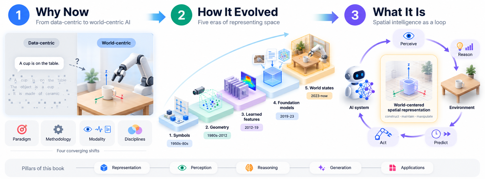
For decades, AI has advanced by mastering well-bounded tasks: recognizing patterns, answering questions, generating outputs from static inputs. Intelligence in the natural world was never bounded this way. It unfolds in space, shaped by structure, constraint, motion, and interaction. As AI systems move from passive prediction to active participation in physical and simulated environments, the limits of the old framing become hard to ignore. Models trained only on tokens, pixels, or isolated observations struggle to stay coherent across space, time, and action, because they have no explicit notion of where they are, how the world is arranged, or how their interventions change what comes next. Spatial intelligence is the capability that supplies this notion, and it is a prerequisite for robust, adaptive, and embodied intelligence rather than an add-on to it.
What changes is where intelligence is anchored. In place of input–output mappings, spatial intelligence rests on world-centered representations that encode geometry, topology, semantics, dynamics, and affordances, and that let a system perceive beyond its current view, reason about regions it has not seen, predict how a configuration will evolve, and act on it with purpose. Navigation, manipulation, simulation, and long-horizon planning all draw on this one substrate.
This part lays the conceptual ground for treating spatial intelligence as a paradigm rather than a collection of techniques. It begins with why the paradigm is rising now, and finds the answer in four converging shifts: in what AI is expected to do, in how it learns, in the modalities it handles, and in the disciplines that study it. The field’s history is then read as five eras, each defined by what it assumed space to be, from symbols and estimated geometry through learned features and foundation models to executable world states. The question of what spatial intelligence is comes next. Computer vision, robotics, geographic information science, psychology, cognitive science, and linguistics each understand it in their own terms; we reconcile them in a working definition, an AI system and its environment coupled through a world-centered representation that supports perception, reasoning, prediction, and action, and give that definition a light formalization. The part closes with the research pillars that organize the rest of the book.
The reader leaves with a map of the field: what spatial intelligence is, where it came from, and why it is becoming a foundational layer of intelligent systems.
Chapter 1: Spatial Intelligence: A Rising AI Paradigm
AI has entered a stage where scale and capability alone are no longer sufficient. Despite remarkable advances in perception, language, and generation, modern AI systems continue to struggle with a fundamental challenge: understanding, representing, and acting within the structured physical world. As intelligent systems increasingly move beyond static inputs and isolated tasks, the question shifts from how well a model predicts tokens or labels to how it forms internal models of space, time, action, and causality. This shift marks the emergence of spatial intelligence as a central organizing paradigm in artificial intelligence.
Spatial intelligence concerns the ability of an intelligent system to build and manipulate internal representations of the world that support perception, reasoning, prediction, and embodied interaction. It is inherently world-centered, grounded in geometry, motion, and physical constraints, and inseparable from action and experience. Rather than treating space as an auxiliary signal or downstream output, spatial intelligence positions it as a core substrate through which intelligence is structured. This perspective cuts across traditional boundaries, unifying problems in computer vision, robotics, autonomous systems, simulation, cognitive science, spatial computing, AR/VR, and geospatial analysis under a shared representational question: how should an intelligent system model the world it inhabits?
This chapter establishes spatial intelligence as a rising AI paradigm by addressing two foundational questions. Section 1.1 examines why spatial intelligence has become critical now, tracing its emergence to converging shifts in AI methodology, data modalities, system scale, and problem scope. Section 1.2 then situates this paradigm historically, organizing decades of fragmented progress into a coherent sequence of representational eras. Together, these perspectives provide the conceptual grounding for the rest of the book, framing spatial intelligence not as a collection of tasks or techniques, but as a unifying foundation for world-centered artificial intelligence.
Why Spatial Intelligence? Why Now?
As AI continues to advance, a growing consensus has emerged that data alone is not enough; true intelligence must be grounded in the physical world . This realization marks a fundamental shift from purely data-centric paradigms, centered around language or perception, to world-centric systems capable of modeling, reasoning, and acting within spatially structured environments. In this section, we explore the motivations behind this transition, drawing from the AI paradigm, methodology, and modality to disciplines.
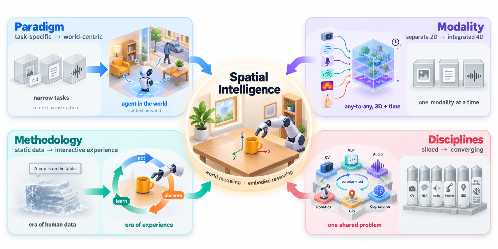
AI Paradigm Shift
AI is undergoing a foundational paradigm shift, i.e. , from task-specific models toward world-centric general intelligence. Traditional AI systems were designed to solve narrowly defined problems, such as image classification, text generation, or speech recognition, each trained and optimized within a well-constrained input-output space. However, the emergence of foundation models and large language models (LLMs) has reshaped expectations: AI is now envisioned to generalize across domains, modalities, and tasks in open-world settings. This ambition hinges on a deeper capability, the ability to understand and model the world itself, often described as building a “world model” .
Spatial Intelligence emerges as a central pillar enabling this capability. It encompasses the perception and representation of objects, scenes, spatial layouts, motion, and physical interactions, and it serves as a carrier of world-generalizable knowledge that supports reasoning and transfer across tasks and modalities. Fei-Fei Li has made this stake explicit: “Our dreams of truly intelligent machines will not be complete without spatial intelligence” . On her account, any AI system that aims to serve in physical environments must possess a rich understanding of spatial structure and dynamics.
Moreover, this transformation also signals a shift in the boundary of context: traditional AI focused on self-contained intelligence, where the model reasons primarily over its own input context. Today’s systems, in contrast, must be understood as individuals embedded in the world1, agents whose perception and action are grounded in broader spatial, temporal, and social environments. Beyond the technical evolution, this amounts to a philosophical deepening of AI’s cognitive scope. Li captures the underlying continuity in evolutionary terms: spatial intelligence is, in her words, what “links perception with action”, the capacity that turned seeing into surviving and, eventually, into understanding and doing .
Without accurate spatial modeling of the world, therefore, there can be no robust reasoning, decision-making, or interaction. A wide range of emerging tasks, including robotic manipulation, embodied navigation, video understanding, and virtual human interaction, demand spatial grounding as a prerequisite, which makes spatial intelligence a load-bearing requirement for any AI system expected to act in, adapt to, and help within the real world.
AI Methodological Shift
Historically, from the era of classical machine learning to the deep learning revolution , and now to the LLM wave , progress in AI has largely followed a data-centric trajectory: larger models trained on increasingly vast static corpora. While this paradigm has delivered remarkable achievements, it also imposes an inherent limitation, in that AI systems are still framed as static input–output function approximators rather than as agents that can perceive, reason, and act within the real world. The recent surge of LLMs, such as GPT , PaLM , and LLaMA , has only amplified this trajectory. Although these models exhibit stunning linguistic fluency, symbolic manipulation, and emergent generalization capabilities , they remain intrinsically disembodied and spatially ungrounded. They can generate poetic descriptions of a cup on the table, yet they cannot perceive the cup, interact with it, or build a physical model to explain its behavior. This exposes the core limitation of the current paradigm: LLMs might operate on surface-level linguistic statistics without accessing the structured constraints, causal mechanisms, and physical affordances of the real world.
Fei-Fei Li has repeatedly emphasized this disconnect. Linguistic competence, she argues, must not be mistaken for understanding: for all their capability, today’s language models “remain wordsmiths in the dark; eloquent but inexperienced, knowledgeable but ungrounded” . Without spatial intelligence, encompassing physics, motion, and the transformative nature of actions, AI systems cannot develop a grounded, interactive model of reality. Her insight exposes a deeper methodological gap: true intelligence must ground its internal representations in embodied space, action, and physical experience, and text alone cannot supply that grounding.
Yann LeCun extends this critique at the architectural level, famously dismissing LLMs as “an off-ramp, a distraction, a dead end” on the path toward human-level intelligence. In his view, autoregressive language models do not, and cannot, construct models of how the world works; they continue text through pattern completion rather than through prediction grounded in the dynamics of an external world . His proposed alternative, an architecture organized around a learned predictive world model, points squarely toward systems capable of predictive modeling, causal reasoning, and dynamic world interaction.
Rich Sutton, from a reinforcement learning (RL) perspective, presses the same point on the learning process itself. Sutton’s “bitter lesson” famously argued that general methods which scale with computation win out over hand-engineered knowledge ; notably, he does not regard today’s LLMs as the vindication of that argument. In his recent view, systems trained once on static human data and then frozen are cut off from the very thing that drives intelligence, namely continual learning from one’s own experience . Silver and Sutton argue that the field must move from the “era of human data” into an “era of experience”, in which agents learn predominantly from acting in the world and observing consequences. Learning from static text captures correlations in what humans have already written; understanding the world requires action, consequence prediction, and causal discovery.
Taken together, these critiques, arising independently from visual cognition, neural architectures, and reinforcement learning, signal a profound methodological shift in progress: AI must evolve from a purely LLM-centric paradigm to one of world-integrated intelligence. It must move beyond static, offline training toward continual, interactive, and adaptive learning, and it must outgrow shallow pattern matching in text to engage with the physical, spatial, and causal structures that govern real environments. More than an algorithmic upgrade, this demands a redefinition of what intelligence means: agents capable of perceiving the world, predicting its dynamics, interacting within it, and learning continuously from such experiences .
Modality Shift
Human intelligence is inherently multimodal. Any meaningful pursuit of AGI must therefore embrace multimodality as a foundational principle. The trajectory of multimodal AI is undergoing a significant shift, from early-stage modality separation toward deep modality integration. In earlier AI systems, perception and modeling are often confined to a single modality , such as text-only language models, speech recognition engines, or visual classification systems. However, with the rise of foundation models, the research paradigm is shifting towards hybrid-modality and even any-to-any cross-modal understanding and generation . That is, both input and output can now be flexibly composed across arbitrary modalities (e.g. , audio-based question answering, video synthesis, image-conditioned dialogue) . Simultaneously, the very nature of modality is expanding in dimensionality and diversity. Traditional sensory modalities, e.g. , vision, language, and audition, represent only a subset of how humans perceive the world. With the rapid advancement of sensor technology, future AI systems are expected to be equipped with a broader range of high-dimensional and multi-channel sensory inputs , including spectrograms, millimeter-wave radar, infrared thermography, tactile feedback, gustatory signals, and olfactory landscapes. These emerging modalities are especially vital in domains such as Medicine , Robotics , Environmental Monitoring , and AR , offering a more human-aligned perceptual basis for multimodal AI systems. This multimodal expansion necessitates a unified modeling capability that operates at the level of holistic world understanding.
Among all modalities, vision remains the most central to human perception. One of the most critical trends in modality development is the transition from static imagery to video, and from 2D representations to richer 3D and even 4D (spatiotemporal) structures . Traditional image-based recognition tasks operate on single-frame static inputs. However, real-world environments demand continuous understanding, prediction, and generation across space and time. This drives the growing importance of tasks such as 3D reconstruction, temporal modeling, trajectory prediction, video-based question answering, and dynamic world state tracking . The increasing richness of modalities goes well beyond a technological extension; it is a necessary foundation for building AGI. To rival or surpass human intelligence, AGI must be equipped with a comparably rich sensorium, enabling it to perceive, reason, and act effectively in dynamic, multimodal environments. Thus, the integration and extension of modalities are not ends in themselves, but serve the larger ambition of world modeling, i.e. , the central focus of this work.
This point has been underscored by Fei-Fei Li in her discussion of spatial intelligence. Tracing the evolutionary arc from the first light-sensing organisms to primates, she observes that “nature has created this virtuous cycle of seeing and doing powered by spatial intelligence” . Such capability acts as a bridge between cognition and the physical world, a necessary scaffold for grounding AI in embodied reality; without it, meaningful interaction with the real world is out of reach. Where traditional intelligence centers on language or symbolic manipulation, spatial intelligence is tightly coupled with physical structure, three-dimensional relationships, and dynamic evolution, making it the cornerstone of embodied, interactive intelligence. From the perspective of modality development, then, spatial intelligence marks the turning point where multimodal intelligence evolves from surface-level perception to deep, structured understanding, well beyond a mere byproduct of increasing sensory complexity. The focus of AI research must accordingly shift from modeling and aligning modalities to modeling the structured world that those modalities collectively describe, the path toward a closed-loop paradigm from perception to world modeling, and from world modeling to causal reasoning.
Disciplinary Convergence
Modern AI research is undergoing a profound disciplinary evolution, centered around modality enrichment and spatiophysical coupling. This paradigm shift reflects a convergence of traditionally siloed domains, spanning Computer Vision (CV), Natural Language Processing (NLP), Audio Processing, Robotics, Geographic Information Systems (GIS), and Urban Simulation, toward a unified framework for modeling intelligent agents that are physically embedded in and interact with the real world.
In the vision domain, the research focus has gradually shifted from static image processing to dynamic scene understanding. These developments provide a perceptual foundation for large-scale world modeling. Language modalities have also evolved beyond static language modeling (e.g. , BERT , GPT ), toward multimodal semantic fusion tasks such as Visual Question Answering (VQA) , Vision-and-Language Navigation (VLN) , and embodied dialogue, which have become critical interfaces in the expansion of large language models into the multimodal regime. The audio modality has similarly moved beyond traditional speech recognition to include audio event detection, ambient sound understanding, and even 3D auditory modeling, all of which support spatial cognition and situational awareness in real-world interactive environments .
Meanwhile, the rapid development of robotics and embodied AI is pushing the evolution of AI systems from “perception-understanding" pipelines to closed-loop “perception-action" systems. AI is outgrowing its existence as software on a computer, becoming embodied, real-time, and spatially grounded. In domains such as autonomous driving, robotic manipulation, and wearable AI systems, tasks increasingly require deep spatial reasoning capabilities for layout perception, path planning, and object manipulation . These tasks demand integration not only of vision and language capabilities but also of knowledge from control theory, motion planning, and state estimation, marking a shift toward truly multidisciplinary AI systems.
The expansion of modalities is also reshaping traditional disciplines through interdisciplinary integration. In GIS and urban computing, AI models are increasingly combined with spatial coordinates, map representations, and temporal population data, enabling applications in smart city planning, trajectory prediction, and disaster simulation. In Earth sciences and remote sensing, AI is employed for multimodal surface analysis, climate modeling, and environmental monitoring, pushing the frontier toward 3D Earth modeling and dynamic ecological understanding . In architectural design and digital twin systems, AI supports full lifecycle 3D spatial modeling, simulation, and predictive analytics for complex structures and spaces.
Cognitive science and neuro-inspired AI (NeuroAI) are playing an increasingly pivotal role in this trend. Foundational research on spatial intelligence in human cognition, such as hippocampus-mediated cognitive maps, spatial memory, and embodied cognition theory, is gradually informing the design of AI spatial perception systems . As Fei-Fei Li puts it, spatial intelligence is “the scaffolding upon which our cognition is built”, the substrate that anchors intelligence to the physical world . Thus, the path toward AGI must transcend abstract symbolic computation and advance toward grounded-in-reality agent intelligence. This trend reshapes the research trajectory of AI and, at the same time, redefines the underlying infrastructure of general intelligence itself, with spatial intelligence standing as a central pillar of the emerging world-centered era.
Historical Evolution and Milestones
The history of spatial intelligence is best understood as a sequence of shifts in how space is represented and what that representation is expected to support. Over decades, the field has repeatedly shifted among explicit structure and learned abstraction, offline reconstruction and online interaction, and local geometry and world-level state. To make this evolution concrete, we organize the landscape into five eras, each characterized by a dominant representation paradigm and its associated methodological commitments: from early symbolic and cognitive notions of spatial structure, to probabilistic geometric estimation, to learning-based spatial perception, to large foundation representations that are transferable and cross-modal, and finally to world-centered spatial intelligence where representations must be executable, updatable, and tightly coupled with action in dynamic environments . Figure 1.2 shows how each era would represent the same scene, Table 1.1 condenses what each era took space to be and what it left unsolved, and Figure 1.3 places about a hundred representative works from six fields on a common time axis.
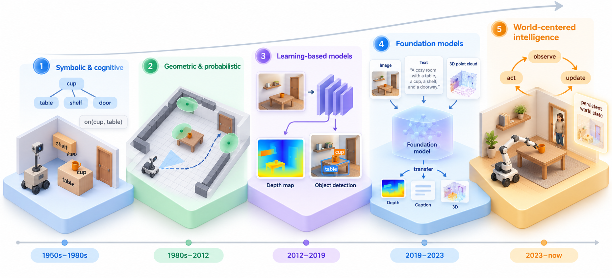
| I. Symbolic and
cognitive 1950s–1980s |
II. Geometric and
probabilistic 1980s–2012 |
III. Learning-based 2012–2019 |
IV. Foundation
models 2019–2023 |
V. World-centered 2023– |
|
|---|---|---|---|---|---|
| Space treated as | discrete symbols and relations | metric geometry under uncertainty | learned, task-specific features | shared latent priors | an executable, persistent world state |
| Core representations | cognitive maps, topological graphs, predicates | occupancy grids, landmark maps, pose graphs | feature maps, depth and flow maps, point and voxel features | pretrained embeddings, cross-modal alignment, neural fields | world models, action-conditioned dynamics, spatial memory |
| What it is for | planning and inference by symbol manipulation | a consistent pose and map from noisy sensing | perception objectives: detection, depth, motion | transfer across tasks, modalities, and environments | long-horizon prediction, planning, and interaction |
| Characteristic methods | heuristic search, rule-based planning, logic | Bayesian filtering, nonlinear least squares, multi-view geometry | supervised and self-supervised deep networks | large-scale pretraining, contrastive alignment, instruction tuning | action-conditioned prediction, memory, closed-loop learning |
| Main fields | cognitive science, classical AI, early robotics | robotics, photogrammetry and vision, GIS | computer vision, autonomous driving | multimodal AI, neural rendering, embodied AI | embodied AI, simulation and digital twins, AR/VR |
| Left unsolved | meaning asserted by rules, not inferred from noisy sensing | features and pipelines engineered by hand | one model per task; no persistent world model | no persistent state that action updates | open: long-horizon consistency under motion and partial observability |
Era 1: Symbolic and Cognitive Spatial Computing (1950s–1980s)
Symbolic Space and Cognitive Structure as the Starting Point.
This era marks the cognitive and symbolic origin of spatial intelligence. Under severe limits in computation and data, space was primarily treated as a structured object that could be explicitly described, reasoned about, and manipulated. Accordingly, researchers favored symbolic rules, relational descriptions, and graph-like structures to encode environments, viewing spatial representation as a verifiable “spatial description language” that enables planning and logical inference . The lasting contribution of this stage is not empirical performance, but two foundational commitments. First, goal-directed behavior requires an internal world representation. Second, spatial representations are inherently compositional, consisting of objects, relations, and connectivity, which naturally supports rule-based spatial reasoning .
From a cognitive science perspective, this period also established the idea that spatial ability is not mere perception but an internal, operable mental model. Concepts such as cognitive maps and spatial memory motivated the view that an intelligent system should maintain structured internal states that support navigation, mental imagery, and transformation of spatial relations . In parallel, early robotics provided an engineering prototype of this view: the classic sense-plan-act pipeline connected symbolic spatial models with planners and execution, demonstrating how an agent can translate limited sensing into purposeful behavior within an environment .
Representative Milestones in Techniques and Representations.
A widely cited conceptual root is Tolman’s proposal of “cognitive maps” (1948), which framed navigation as relying on internal map-like structures rather than stimulus-response associations . In classical AI, the Dartmouth Workshop (1956) crystallized the symbolic paradigm and encouraged formal, rule-based representations of intelligence, providing intellectual soil for early spatial reasoning systems . Planning and search then became the main computational language for spatial decision making: A* heuristic search (1968) offered a principled graph search framework for shortest-path style navigation problems, and STRIPS (1971) formalized actions as operators over states, making spatial tasks expressible as sequences of symbolic state transitions .
In robotics, Shakey (late 1960s to early 1970s) became a milestone system that integrated perception, symbolic spatial modeling, planning, and acting in a closed pipeline . Although the sensory and actuation capabilities were primitive by modern standards, the system concretely instantiated the era’s thesis that spatial intelligence can be built by maintaining symbolic representations and using them to plan actions. In neuroscience and cognitive modeling, O’Keefe and Nadel’s The Hippocampus as a Cognitive Map (1978) further systematized the cognitive map account, reinforcing the interpretation that internal spatial representations are functional substrates for memory and navigation .
Across these milestones, several representation families repeatedly appeared and stabilized: symbolic spatial models and rule-based spatial descriptions; topological graphs capturing connectivity and place relations; qualitative spatial relations such as containment, adjacency, and support; landmark-based representations for navigation; and grid-world abstractions that later became a convenient substrate for sequential decision making and, eventually, reinforcement learning (RL) formulations . Together, they define the representation-centric signature of Era 1: spatial intelligence begins with explicit structure, grounded in cognition-inspired internal maps and implemented through symbolic reasoning and sense-plan-act-style control.
Era 2: Geometric and Probabilistic Spatial Modeling (1980s–2012)
From Symbolic Descriptions to Metric Geometry under Uncertainty.
With the maturation of sensors (laser range finders, wheel odometry, early vision), computing infrastructure, and probabilistic estimation theory, spatial representation shifted away from purely symbolic description toward mathematical modeling of continuous geometry with uncertainty. Space was increasingly treated as a measurable physical entity whose state must be inferred, rather than a rule-based structure whose meaning is asserted. Consequently, the central question of this era shifted from describing the world in symbols to maintaining spatial consistency under noise, drift, and partial observability. This transition also re-centered the representation itself: a map is not a static record, but a set of uncertain state variables, typically the joint configuration of pose and environment, which must be updated and refined through Bayesian estimation and optimization .
In this view, representation is inseparable from the inference machinery that maintains it. Coordinate frames and metric spaces became the common language that connects sensing, estimation, and control, while probabilistic modeling provided a principled way to fuse heterogeneous measurements and quantify uncertainty. As a result, a representation-centric principle was consolidated: spatial intelligence requires not only a geometric model of the environment, but also an explicit account of how that model is updated over time as new evidence arrives . This era also laid much of the groundwork for long-term autonomy by formalizing how an agent can localize itself, build maps, and navigate using a consistent geometric state.
In parallel, macro-scale spatial disciplines pushed representation standardization beyond local robotics maps. Surveying, geodesy, cartography, remote sensing, and GIScience strengthened coordinate reference systems, map projections, topological relations, and spatial databases, making large-scale spatial representations structured, queryable, and interoperable at city-to-Earth scale . At the same time, computer vision developed a rigorous multi-view geometry toolkit that defined how 3D structure and camera motion can be recovered from images, reinforcing the idea that geometry is an estimable latent state rather than an explicit symbolic description .
Representative Techniques and Milestones.
A representative milestone in this era is the emergence of probabilistic state estimation as the dominant language for maintaining spatial consistency under noise and partial observability. Kalman filtering and its nonlinear variants (EKF and related formulations) became widely adopted in robotics and autonomous systems during the 1980s and 1990s, enabling spatial quantities such as pose, velocity, and sensor biases to be represented as random variables with explicit uncertainty propagation . This shift is representation-centric: it turns “space” into a belief state that must be continuously updated, rather than a deterministic symbolic description. Building on this estimation view, occupancy grid mapping in the mid-1980s provided a canonical probabilistic representation that directly fuses range sensing into a discretized spatial field of free versus occupied space . Although conceptually simple, occupancy grids became a durable interface between sensing and downstream planning, because they encode geometry together with uncertainty in a form amenable to incremental updates. Related metric map abstractions, coordinate frames, and sensor models matured in parallel, standardizing the idea that maps are measurable geometric objects anchored to physical reference systems .
The SLAM problem then consolidated these ideas into a unified formulation where the agent’s pose and map are jointly inferred . EKF-SLAM, whose stochastic-map foundations were laid in the late 1980s and refined through the 1990s into the early 2000s , established the coupled pose-landmark state as a central representation, while particle-filter-based SLAM, including FastSLAM (2002) , demonstrated that sampling and factorization could scale inference by exploiting conditional independencies. Beyond their algorithmic contributions, these lines of work stand as milestones in the operationalization of spatial representation: the map becomes a latent variable tied to motion and observation processes, with consistency defined probabilistically.
As systems expanded in scale and duration, graph-based spatial representations rose to prominence in the early 2000s. Pose graphs and factor graphs recast spatial estimation as a global constraint-satisfaction problem, enabling loop closure and large-scale consistency through nonlinear optimization. GraphSLAM and pose-graph optimization frameworks provided a modular representation where constraints from heterogeneous sensors and revisits could be integrated as edges in a unified objective . This was a conceptual milestone because it decoupled spatial consistency from strict temporal recursion and made map structure explicit as an optimization-ready graph.
In computer vision and photogrammetry, multi-view geometry matured into a systematic toolkit for recovering 3D structure from images. Bundle adjustment, a core optimization primitive with roots in analog photogrammetry and consolidated for computer vision in the late 1990s, jointly refines camera poses and 3D points to enforce global geometric consistency across views . This family of methods made camera-centric coordinate frames, point clouds, and calibrated reconstructions standard spatial representations, and it established geometry and optimization, rather than semantics, as the primary organizing principles of spatial understanding in vision during this era. Complementary to these estimation and reconstruction pipelines, geometric registration and fusion techniques advanced practical 3D mapping. Iterative Closest Point (ICP) and its robust refinements enabled consistent aggregation of partial point measurements across viewpoints . In parallel, early volumetric representations, including voxel grids and truncated signed distance function style formulations, began to encode surfaces and free space within unified volumetric fields . While computationally constrained at the time, these representations introduced the field-based view of space that would later become influential for differentiable and implicit modeling.
Finally, at macro scales, GIS and surveying communities standardized spatial representations through coordinate reference systems, projections, geodesy, and spatial databases. Digital elevation models, map products derived from remote sensing, and queryable geospatial layers enabled spatial reasoning at city, regional, and planetary scales with an emphasis on consistency, interoperability, and long-horizon stability . Although historically less coupled to embodied agents, these infrastructures are milestones for spatial intelligence because they demonstrate how spatial representation can function as a persistent, structured substrate supporting navigation, planning, and analysis beyond local robotic maps.
Era 3: Learning-based Spatial Modeling (2012–2019)
From Engineered Geometry to Task-driven Learnable Spatial Representations.
This era marks a fundamental shift in how spatial representations are constructed. We date its onset to 2012, when AlexNet’s ImageNet result made deep learning the dominant paradigm for visual perception ; the ImageNet dataset itself (2009) and early feature-learning work seeded the transition, but 2012 is when learned representations displaced hand-crafted ones as the default across spatial perception tasks. With the rise of machine learning, and especially deep learning, spatial modeling moves away from pipelines dominated by hand-crafted geometry, explicit probabilistic inference, and manually designed features. Instead, spatial structure begins to be encoded implicitly within neural networks through learned feature maps, latent embeddings, and task-optimized intermediate representations. Space is no longer represented solely as a map, graph, or state vector defined by engineers, but as something that can be learned directly from data through end-to-end optimization .
A defining characteristic of this period is that spatial representations are learned in a strongly task-driven manner. Networks learn spatial cues to solve specific objectives such as object detection, semantic segmentation, depth estimation, visual odometry, or 3D recognition. As a result, spatial knowledge is often embedded in discriminative feature spaces tailored to particular datasets and benchmarks. While these representations dramatically improve performance on individual tasks, they rarely constitute a unified or reusable world model. Spatial intelligence in this era remains fragmented, with representations optimized locally for perception subtasks rather than globally for cross-task reasoning or long-term world understanding .
Another important aspect of this era is the parallel but largely uncoordinated progress across multiple domains. In computer vision, learning-based approaches revolutionize image, video, and 3D perception. In robotics, learning begins to augment classical pipelines for perception and control, but geometry-heavy systems remain dominant for reliability. Remote sensing adopts deep models to learn spatial patterns from multispectral, hyperspectral, SAR, and LiDAR data at large scales. Medical imaging leverages deep networks to learn volumetric spatial representations from CT and MRI scans. Autonomous driving stacks integrate learned perception modules with geometric localization and mapping. Despite shared reliance on learned spatial features, these communities operate with different benchmarks, representations, and evaluation criteria, reinforcing the task-specific nature of spatial modeling in this era .
Representative Techniques and Milestones.
A widely recognized milestone is the introduction of deep convolutional neural networks (CNNs) for visual perception, catalyzed by AlexNet in 2012, which establishes CNNs as the dominant backbone for spatially grounded perception tasks . This shift is quickly reinforced by region-based detection frameworks such as R-CNN and its successors from 2014 onward, which embed object-level spatial reasoning directly into learned feature hierarchies . ResNet in 2015 further deepens representational capacity and becomes a de facto foundation for most spatial perception pipelines . In three-dimensional perception, PointNet in 2017 marks a milestone by introducing point clouds as a first-class input modality for deep networks . This work opens the door to learned spatial representations beyond images, influencing robotics, autonomous driving, and indoor scene understanding. Concurrently, early voxel-based and sparse convolution methods begin to encode space volumetrically, albeit at limited resolution due to computational constraints .
Learning-based depth estimation emerges as another key milestone. Between 2014 and 2016, monocular and stereo depth prediction networks demonstrated that geometric cues such as disparity and scale can be inferred from data rather than explicit triangulation . Around the same period, learning-based visual odometry and ego-motion estimation appeared , operating alongside classical SLAM systems. This coexistence highlights a transitional moment where geometry-driven consistency and learning-driven representation evolve in parallel rather than replacing one another . Self-supervised and unsupervised learning of spatial structure became influential from 2016 to 2018. Methods that exploit photometric consistency, view synthesis, and temporal coherence enable networks to learn depth and motion without dense ground truth supervision . These approaches strengthen the idea that spatial representations can be learned from raw sensory streams, reinforcing the data-driven paradigm while remaining largely task-bound.
Autonomous driving perception stacks introduce another representation shift toward bird’s-eye-view and multi-view feature fusion. By the late 2010s, learned BEV representations and cost volumes became central to multi-camera and LiDAR-based perception, enabling spatial reasoning aligned with downstream planning requirements . This reflects an increasing emphasis on representations that are geometrically meaningful yet learned. Toward the end of this era, early attempts at neural scene representations and coordinate-based networks appear. Works exploring implicit coordinate mappings and continuous scene embeddings between 2018 and 2019 lay conceptual groundwork for later developments in implicit fields and neural rendering . Although these models are not yet general or scalable, they signal a growing interest in treating scenes, rather than tasks, as the primary object of representation.
Overall, Era 3 establishes learned spatial representations as the dominant paradigm. However, these representations remain largely discriminative, task-specific, and fragmented across domains. They provide powerful spatial priors for perception but stop short of forming unified, reusable world models, setting the stage for the emergence of large foundation spatial modeling in the subsequent era.
Era 4: Large Foundation Spatial Modeling (2019–2023)
From Task-Specific Learning to Foundation Spatial Representations.
The defining shift of this era is the rise of spatial representations trained at scale as foundation-level constructs, a change of kind rather than an incremental improvement on individual spatial tasks. For the first time, spatial modeling is explicitly shaped through large-scale pretraining over diverse data sources, tasks, and modalities, rather than being optimized only within narrow task boundaries. Spatial structure is no longer learned as an auxiliary signal for detection, depth, or reconstruction, but is instead distilled into shared latent representations through massive data exposure and objective diversity. This marks a decisive representation-centric transition, where the primary goal becomes learning general-purpose spatial priors that can be transferred, adapted, and reused across downstream tasks with minimal supervision.
A key enabler of this transition is the combination of large-scale datasets, scalable architectures, and unified training objectives. Vision Transformers establish architectures capable of modeling global spatial structure over high-resolution inputs, while contrastive and generative pretraining objectives align spatial patterns across vision, language, and generation. Through training on internet-scale image-text pairs, video corpora, and synthetic data, spatial representations acquire statistical regularities that go beyond any single environment or task. As a result, space increasingly functions as a shared coordinate system and embedding substrate that supports grounding, retrieval, reasoning, and conditional generation across modalities. Spatial intelligence in this era is therefore inseparable from scale, as both data diversity and model capacity are essential for forming transferable spatial abstractions.
Another hallmark of this era is the elevation of the scene as a first-class unit of representation under large-scale learning. Neural scene representations, most notably neural radiance fields (NeRFs) , treat a scene as a learnable and differentiable function defined over continuous space, enabling optimization from sparse observations. Their significance lies not in implicitness itself, but in demonstrating that scene-level spatial structure can be recovered, manipulated, and reused through learning. In parallel, diffusion models introduce powerful generative priors that encode spatial coherence in latent spaces trained on massive datasets, enabling controllable synthesis of images, videos, and three-dimensional content. Together, these developments elevate space from something to be perceived into a scalable, generative, and composable substrate shaped through foundation-level pretraining.
Representative Techniques and Milestones.
Before the emergence of vision-specific foundation models, a critical architectural shift had already taken place with the introduction of the Transformer . Originally developed for sequence modeling in natural language processing, attention-based architectures demonstrated that large-scale pretraining could yield highly transferable and task-agnostic representations, as exemplified by models such as BERT . The key insight was not tied to language itself, but to the ability of self-attention to capture global structure and support scalable representation learning. This realization set the stage for extending the same architectural paradigm to visual data, where spatial structure could likewise be learned through large-scale pretraining rather than handcrafted inductive biases. Following this, one central architectural milestone is the introduction of Vision Transformers in 2020, which demonstrates that large-scale pretraining on visual data can produce transferable and globally structured spatial representations. This architectural shift lays the groundwork for foundation visual models that can be adapted across tasks without redesigning spatial pipelines. Then, cross-modal alignment becomes a defining capability with the release of CLIP in 2021, which aligns visual representations with natural language through large-scale contrastive learning . This alignment provides a universal interface for spatial semantics, enabling zero-shot transfer, retrieval, and language-conditioned spatial reasoning. Spatial representations learned in this manner escape the confines of a fixed label space and can be flexibly queried and recombined through language.
Concurrently, the emergence of LLMs marks a decisive inflection point in foundation modeling. Unlike earlier neural models trained at modest scale, LLMs demonstrate that sufficiently large-scale pretraining on diverse data can induce qualitatively new capabilities, including abstraction, composition, and long-horizon reasoning . Crucially, these abilities are not hard-coded but emerge from scale, data diversity, and architectural simplicity. Language becomes the first modality in which foundation models exhibit general-purpose intelligence, rapidly positioning LLMs as a universal computational substrate that extends beyond NLP into vision, robotics, simulation, and scientific domains. For spatial intelligence, this shift is pivotal: it introduces a representation space in which spatial structure, relations, and plans can be explicitly described, manipulated, and interfaced with external perceptual or physical systems, thereby elevating language from an auxiliary annotation channel to a central medium for spatial abstraction and control. Also, Chain-of-Thought (CoT) style reasoning and tool-augmented prompting begin to systematically populate spatial intelligence pipelines . The key milestone is not CoT per se, but the emergence of structured intermediate representations induced by LLMs, such as stepwise spatial decomposition, implicit scene graphs, explicit coordinate or layout hypotheses, and program-like plans that interface with mapping, perception, or simulation modules. In practice, CoT becomes a mechanism to externalize and manipulate spatial states as compositional symbols that can be checked, revised, and grounded via perception or environment feedback, thereby tightening the representation loop from language to spatial structure and back.
In parallel, LLMs begin to serve as coordinators of scene-level reasoning rather than passive text processors. PaLM-E in 2023 represents a critical milestone by integrating language models with embodied sensory inputs and robotic actions, demonstrating that a single foundation backbone can operate over language, vision, and control signals within a shared representational space. This integration highlights that scene representations must bridge symbolic reasoning and physical execution, rather than treating them as separate layers. Also, 2023 marks a clear milestone where Vision-Language-Action (VLA) models crystallize as a representation-centric paradigm. The defining contribution of these systems is not embodiment itself, but the treatment of action as a first-class modality within a shared spatial latent interface. VLA models learn to map perceptual states, such as images, video, and proprioception, together with language instructions, into temporally grounded action tokens or control variables. This reframes spatial representation from a purely geometric or perceptual construct into an action-aligned internal state, where affordances, kinematic constraints, and task-relevant spatial variables are explicitly encoded in executable form. Enabled by large foundation backbones, this shift establishes a concrete representational bridge from scene-level spatial models to agent-level world states.
Building upon these representational advances, the foundation paradigm begins to visibly reshape embodied and interactive systems. Early generalist agent models, such as Gato in 2022, signal an attempt to unify perception, action, and spatial representation within a single pretrained architecture. From 2022 to 2023, LLM- and VLM-backed embodied systems increasingly adopt foundation spatial representations as priors for online decision making in navigation and manipulation tasks . High-profile humanoid and mobile robot demonstrations in 2023 further highlight this trend, integrating LLM or VLM planners with perception stacks and low-level controllers. Although many such systems remain engineering-driven rather than standardized academic benchmarks, they mark a qualitative shift: spatial representations turn from offline reconstructions into online task states that must remain coherent under motion, manipulation, and partial observability. These developments collectively signal the maturation of foundation spatial representations into embodied world models, setting the stage for the transition toward world-centered spatial intelligence.
NeRFs , introduced in 2020, represent another milestone by modeling scenes as continuous functions defined over spatial coordinates and viewing directions. This formulation enables high-fidelity view synthesis and establishes a functional perspective on scene representation. Follow-up work extends this idea to signed distance functions and other continuous fields, reinforcing the notion of scene-level spatial modeling as a reusable representation primitive. Generative modeling advances rapidly during this period as well. Diffusion probabilistic models , introduced around 2020, provide a stable and scalable framework for learning generative priors over high-dimensional spatial signals. By 2022, large-scale text-to-image diffusion systems demonstrate that spatial layout, object relations, and scene structure can be controlled through language-conditioned latent spaces . These models turn generative spatial representations into widely accessible foundation priors.
In three-dimensional representation, the introduction of 3D Gaussian Splatting in 2023 significantly improves the practicality and efficiency of differentiable scene representations. While conceptually aligned with neural rendering, its impact lies in making scene-level spatial representations more scalable and deployable. This development fits naturally within the broader surge of foundation scene representations rather than defining a separate era. Closely following this trend, four-dimensional (4D) spatial modeling and generation, which explicitly incorporate temporal dynamics into scene representations, begin to rapidly prevail in 2024 and attract unprecedented attention from the community . Building upon continuous scene representations and generative priors established in three-dimensional settings, 4D models aim to represent scenes as time-conditioned functions or dynamic fields that capture motion, deformation, and long-term temporal consistency. This includes emerging paradigms such as dynamic NeRF variants , spatiotemporal Gaussian representations , video-based neural fields , and diffusion-based 4D generation models . The significance of this milestone lies in extending foundation spatial representations from static geometry to evolving worlds, thereby strengthening the role of space as a reusable and temporally grounded latent substrate. Although still closely tied to the foundation modeling paradigm of this era, the rise of 4D spatial representations foreshadows the subsequent shift toward world-centered spatial intelligence, where temporal evolution and agent interaction become first-class constraints.
Across domains such as remote sensing and medical imaging, large-scale pretraining and multimodal alignment also begin to emerge. Efforts to pretrain spatial representations on massive satellite imagery corpora or align medical images with textual reports reflect the spread of foundation spatial modeling beyond conventional vision benchmarks . Simulation and synthetic data generation further support this trend by enabling data scaling for spatial pretraining when real-world annotations are scarce .
Era 5: World-Centered Spatial Intelligence (2023–Present)
From Spatial Representations to World States.
This era marks a decisive transition from spatial modeling toward world-centered intelligence. The defining shift lies in a fundamental redefinition of what spatial representations are required to support, well beyond the introduction of another three-dimensional encoding scheme. For the first time, spatial representations are systematically constrained to be executable, interactive, continuously updatable, and tightly coupled with agent behavior. They are no longer designed to serve isolated perception modules or one-shot generation tasks, but to function as persistent internal states that sustain long-running systems embedded in dynamic environments. As a result, representation quality is no longer judged primarily by reconstruction accuracy or visual fidelity, but by whether it can support ongoing interaction, decision making, and adaptation over extended time horizons .
A central conceptual shift underlying this transition is the expansion of context. The dominant paradigm moves from context from self to context as world. Rather than reasoning solely over prompts, local observations, or short-horizon inputs, systems are now required to organize cognition around an evolving world state that integrates spatial structure, temporal dynamics, physical constraints, and increasingly social context. In this view, spatial intelligence operates as an internal world state machine. It is written by perception, modified by action, maintained by memory, and queried by planning and prediction. This reframing represents a departure from representations as static input encodings toward representations as operational substrates that mediate perception, reasoning, and action in a unified loop .
Crucially, this shift also redefines how learning itself is expected to occur. World-centered spatial intelligence cannot be acquired solely through one-off offline pretraining. Instead, representations must be shaped and continually refined through embodied interaction with the environment. Agents are expected to actively explore, test hypotheses, observe consequences, and update their internal world states accordingly. Spatial intelligence thus becomes inseparable from agency and experience. The internal representation must encode not only where things are, but how the world evolves under action, which affordances are available, and how constraints shape future possibilities. Although current systems remain at an early stage of this transition, the trajectory is clear. By treating spatial intelligence as a persistent, executable, and evolving world substrate, this era points toward a path where artificial agents can maintain coherent world models over long time horizons, learn autonomously through interaction, and ultimately approach human-level and potentially superhuman-level intelligence grounded in the structure and dynamics of the real world .
Representative Techniques and Milestones.
One prominent signal of this era is the emergence of explicit world modeling frameworks that treat perception, prediction, and memory as components of a unified state transition process. Yann LeCun has proposed a series of Joint Embedding Predictive Architecture (JEPA) world models from 2022 to 2025, which reframes representation learning around predicting future world states rather than reconstructing sensory inputs, emphasizing abstraction, temporal coherence, and action relevance . By shifting the learning objective from pixel-level fidelity to state-level consistency, JEPA positions world dynamics as the primary object of representation. Following this direction, a growing body of work between 2023 and 2024 explores world models that integrate prediction, memory, and action, progressively moving from short-horizon forecasting toward persistent and interaction-aware world state representations . These efforts collectively signal a transition from predictive representation learning to explicit world-centered modeling. Within this trajectory, World Labs’ Marble, launched by Fei-Fei Li’s team in late 2025 as the first commercial generative world model, turns text, image, video, or coarse 3D prompts into persistent, editable, and walkable 3D environments . Its significance for this era is twofold: it demonstrates that world-level spatial representations can be generated rather than only reconstructed, and that the resulting worlds persist as stable, downloadable state rather than transient observations. Marble thereby moves generative spatial modeling from research demonstrations toward deployable world-building infrastructure, reinforcing the view that spatial representations should be maintained, edited, and acted upon over long horizons.
VLA scaling further accelerates this trend. RT-2 in 2023 demonstrates that models pretrained on large-scale web data can transfer semantic and spatial knowledge directly into robotic control policies . Here, spatial representation becomes action-aligned rather than geometry-first. Internal states must encode affordances and task-relevant spatial variables in forms that are immediately executable, reinforcing the notion that representation quality is measured by behavioral competence. Agent-centric frameworks also mature during this period. ReAct-style agents, introduced in 2022, formalize a tight loop between reasoning and acting, where intermediate representations explicitly externalize spatial hypotheses, plans, and state updates . Voyager, released in 2023 for the Minecraft environment, further exemplifies this shift by integrating long-term memory, skill libraries, planning, and exploration into a persistent world model that evolves through interaction . These systems highlight the importance of maintaining long-horizon spatial consistency rather than optimizing isolated decisions.
Simulation platforms and benchmarks increasingly align with this world-centered view. The Habitat family of embodied AI benchmarks continues to push evaluation from static perception tasks toward closed-loop interaction, navigation, and manipulation in simulated environments . This shift in evaluation methodology reinforces the requirement that spatial representations must remain coherent under motion, partial observability, and delayed feedback. From 2024 onward, interactive world models and action-conditioned video models gain prominence. These models treat the world state as a predictive object whose evolution depends explicitly on agent actions, unifying spatial prediction and control . Such approaches position world dynamics as first-class representational targets rather than side effects of perception. More broadly, multimodal agent frameworks emerging between 2024 and 2025 increasingly combine tool use, memory systems, and long-horizon planning. In these systems, spatial representations act as persistent world states that coordinate perception, reasoning, and action over extended time scales .
From a representational standpoint, this era is characterized by the rise of world-level state representations. These representations often combine metric maps, semantic abstractions, scene graphs, and memory-augmented structures into unified internal states. Crucially, they encode not only static layout but also action-conditioned dynamics, affordances, and long-term consistency. The representation target shifts from isolated scenes to cross-scale world states that span rooms, cities, and even planetary systems. Such representations are designed to be executable, editable, and safe, enabling planning, intervention, and constraint enforcement within a single coherent framework.
Chapter 2: A Definition in Motion: Revisiting Spatial Intelligence
While spatial intelligence is rapidly emerging as a foundational paradigm in artificial intelligence; its constituent ideas are by no means new. Concepts related to space, geometry, structure, and physical interaction have long existed across multiple specialized research communities, each developing its own assumptions, abstractions, and technical formalisms. What is new is the growing realization that these previously fragmented components must now be understood as parts of a unified and evolving whole, rather than the appearance of spatial reasoning per se. This chapter revisits the notion of spatial intelligence as a moving definition, one that cannot be fixed within a single discipline, representation, or task setting, but must instead be understood through its cross-cutting roles across modern AI systems.
The Landscape of Spatial Intelligence
At its core, spatial intelligence is not a single technique, model, or task category. Rather, it constitutes a complex interdisciplinary ecosystem, spanning multiple technical paradigms, sensory modalities, scientific disciplines, and application domains. Different communities approach spatial intelligence with distinct motivations and meanings: for some, it concerns geometric consistency and localization; for others, it is about perception–action coupling, embodied reasoning, or spatial grounding of language. As a result, any attempt to define spatial intelligence in isolation risks oversimplification. Understanding spatial intelligence therefore requires acknowledging its breadth, heterogeneity, and layered structure as an evolving research ecosystem rather than a narrowly scoped subfield.
Beyond A Single Dimension
Spatial intelligence is fundamentally not simple. Unlike many AI topics that can be reasonably framed around a dominant abstraction or learning paradigm, spatial intelligence spans a wide spectrum of representational, computational, and conceptual elements. It touches almost every stage of the perception–cognition–action loop and manifests differently depending on the task, environment, and embodiment of the agent. This intrinsic complexity is not accidental; it reflects the fact that space itself is a unifying substrate of the physical world, cutting across sensory input, internal representation, and external interaction.
Historically, research on spatial problems in AI has progressed along parallel and often disconnected trajectories. Simultaneous localization and mapping (SLAM), 3D reconstruction, robotic manipulation, geographic information systems, spatial language understanding, and neural rendering all evolved largely within their own communities, with specialized benchmarks, metrics, and assumptions. While each of these areas addressed a slice of spatial reasoning, they rarely converged on a shared conceptual framework . As intelligent agents are increasingly expected to operate in open, dynamic, and embodied environments, the limitations of this fragmentation have become increasingly evident.
One major source of complexity arises from the fact that spatial intelligence cuts across multiple technical paradigms. It cannot be reduced to either symbolic rules or neural representations alone. Instead, it involves the coexistence and interaction of diverse computational approaches:
Cross-Technical Paradigms.
Spatial intelligence spans heterogeneous technical formalisms, including:
Rule-based and symbolic systems, such as topological maps, qualitative spatial calculi (e.g. , RCC-8 region connection, interval algebra), and logical planners, which offer interpretability and structured priors .
Probabilistic and geometric methods, including SLAM, state estimation, and pose graph optimization, which emphasize metric consistency and uncertainty modeling .
Neural representations, such as implicit fields, neural radiance fields (NeRF), and learned spatial embeddings, which enable continuous and data-driven modeling of complex environments .
Large language/foundation models, which introduce spatial reasoning through language, symbolic abstraction, and multimodal alignment, but often lack direct physical grounding .
Equally important is the fact that spatial intelligence is inherently cross-modal. Space is not perceived through a single sensory channel, but emerges from the integration of multiple modalities, each offering partial and complementary information:
Cross-Modal Integration.
Spatial intelligence operates across a diverse set of sensory and representational modalities:
Language, which encodes spatial relations, instructions, and abstract descriptions (e.g. , “behind”, “inside”, “near”) .
2D visual perception, including images and video, which provide appearance-level cues and spatial layout hints.
3D representations, such as point clouds, meshes, and volumetric fields, which capture geometric structure and physical extent.
4D spatiotemporal signals, incorporating motion, dynamics, and temporal evolution of scenes.
Specialized sensing modalities, including remote sensing, thermal imagery, radar, and spectral signals, which extend spatial perception beyond human-visible cues .
A further, frequently overlooked axis is spatial scale. Cognitive research has long established that space at different scales engages different psychological processes: Montello’s classic analysis distinguishes figural (table-top), vista (single view), environmental (learned through locomotion), and geographical (map-mediated) spaces . The same stratification recurs in AI systems, where an agent manipulating objects on a desk, a robot navigating a building, and a model reasoning over a city or the Earth’s surface demand different representations, memory structures, and update mechanisms . Competence at one scale does not transfer automatically to another, which is one reason benchmark results on room-scale tasks say little about urban-scale spatial reasoning.
Cross-Scale Operation.
Spatial intelligence must therefore operate across nested spatial scales:
Object and figural scale, covering manipulation workspaces, shape understanding, and mental transformation of objects.
Scene and vista scale, covering room-level layout, occlusion, and viewpoint reasoning.
Environmental scale, covering buildings, streets, and spaces learned through movement and exploration.
Geographic and planetary scale, covering cities, terrain, and Earth systems mediated by maps and remote sensing .
Beyond modality, technique, and scale, spatial intelligence is deeply cross-disciplinary. Its theoretical foundations and practical realizations draw simultaneously from several scientific traditions:
Cross-Disciplinary Foundations.
Spatial intelligence intersects with:
Computer Vision, through scene understanding, reconstruction, and spatial perception.
Robotics and Embodied AI, where spatial reasoning underlies navigation, manipulation, and interaction.
Geographic Information Science (GIS), which studies large-scale spatial representation, mapping, and spatial analytics .
Natural Language Processing and Linguistics, particularly in grounding linguistic expressions in physical space and in the cross-linguistic study of spatial reference .
Psychology and Psychometrics, which pioneered the measurement of human spatial abilities such as mental rotation and spatial visualization .
Cognitive Science and Neuroscience, which investigates human spatial cognition, cognitive maps, and embodied perception .
Finally, spatial intelligence manifests across a wide spectrum of application domains, further complicating any attempt at a narrow definition:
Cross-Application Presence.
Spatial intelligence is central to applications such as:
Embodied agents and robotics, including navigation, manipulation, and human–robot interaction .
Autonomous driving and aerial systems, where spatial prediction and planning are safety-critical .
AR/VR and virtual humans, which demand consistent spatial grounding across perception and interaction .
Urban computing, digital twins, and Earth systems, operating at city and planetary scales .
Together, these dimensions highlight that spatial intelligence is not a standalone capability but a unifying layer across perception, reasoning, and action. This complexity precludes a minimal definition and instead calls for viewing spatial intelligence as a structured, evolving system that emerges across methods, modalities, and domains.
| Discipline | Primary focus | Representations | Canonical tasks | Evaluation emphasis |
|---|---|---|---|---|
| Computer Vision & Graphics | Geometry recovery and view-consistent scene appearance | Depth maps, multi-view geometry, meshes, neural fields (NeRF), 3D Gaussian representations | Depth/pose estimation, 3D reconstruction, neural rendering, scene synthesis | Geometric consistency, rendering fidelity, view synthesis quality |
| Robotics & Embodied AI | Perception–action coupling under physical constraints | Occupancy grids, semantic maps, pose graphs, affordance maps, world models for planning | SLAM, navigation, manipulation, motion planning, closed-loop control | Task success, robustness, real-time performance, generalization in dynamic environments |
| GIS & Large-scale Spatial Modeling | Global-scale spatial abstraction, querying, and planning | Geodetic coordinate systems, map layers, spatial graphs, spatial databases | Route optimization, spatial analytics, trajectory analysis, urban-scale simulation | Global consistency, query accuracy, scalability, long-horizon planning utility |
| Psychology & Psychometrics | Measurement of individual spatial abilities and their training | Factor models of spatial ability (rotation, visualization, orientation), standardized test batteries | Mental rotation tests, paper folding, perspective taking, spatial visualization assessment | Test reliability and validity, individual differences, malleability and transfer |
| Cognitive Science & Neuroscience | Mechanisms of human spatial cognition and internal representations | Cognitive maps, mental imagery, spatial memory representations, neural coding hypotheses | Mental rotation, navigation studies, spatial memory and attention experiments | Behavioral validity, explanatory power, neural plausibility |
| Linguistics & Spatial Language | How language encodes, schematizes, and constrains spatial relations | Spatial prepositions and closed-class relations, frames of reference (intrinsic, relative, absolute) | Spatial reference resolution, cross-linguistic comparison, grounded instruction understanding | Descriptive adequacy, cross-linguistic coverage, grounding fidelity |
| Social & Human-centered Perspectives | Spatial behavior in social contexts and shared environments | Proxemics, social space schemas, spatial cues for interaction, situational context models | Human–robot interaction, social navigation, spatial language pragmatics, collaborative tasks | Interaction naturalness, safety, alignment with human norms and intentions |
Disciplinary Perspectives
Although spatial intelligence is increasingly discussed as one concept, its meaning varies substantially across academic disciplines. Each field approaches spatial intelligence through its own problem formulations, representational assumptions, and evaluation criteria. As a result, what counts as spatial intelligence in one domain may only capture a partial aspect of what another domain considers essential. This part reviews how spatial intelligence is understood from several major disciplinary perspectives, highlighting both their unique emphases and their limitations.
Computer Vision and Graphics.
From the perspective of computer vision, spatial intelligence is primarily associated with the ability to infer geometric structure from visual input. Research in this area focuses on problems such as depth estimation, multi-view geometry, camera pose estimation, and 3D scene reconstruction. The core objective is to recover spatially consistent representations from 2D images or videos, often under strong geometric constraints. These representations provide powerful spatial priors, enabling reasoning about layout, scale, and relative positioning of objects.
Closely related, computer graphics emphasizes the synthesis and rendering of spatial scenes. Modern neural rendering approaches, including NeRF and 3D Gaussian Splatting, prioritize appearance fidelity, view consistency, and continuous scene representation. While these methods excel at producing visually coherent 3D environments, they typically do not model agent-centric interaction, decision-making, or task-driven behavior. As a result, spatial intelligence in vision and graphics is often appearance-centered and offline, rather than action-oriented.
Robotics and Embodied AI.
In robotics and embodied AI, spatial intelligence is traditionally defined in terms of an agent’s ability to localize itself, navigate environments, and manipulate objects. This includes spatial perception, motion planning in three-dimensional space, and interaction with representations such as occupancy grids, semantic maps, and volumetric models. Here, spatial intelligence is inseparable from embodiment and control, as spatial reasoning directly informs action execution. The central concern in this discipline is not only representing space, but using spatial representations to support real-time decision-making under physical constraints. Consequently, spatial intelligence is evaluated through task success, robustness, and adaptability in dynamic environments. This action-centric perspective highlights aspects of spatial intelligence that are often absent in purely perceptual or representational frameworks.
Geographic Information Systems and Large-Scale Spatial Modeling.
At a larger spatial scale, geographic information systems view spatial intelligence through the lens of structured spatial data, coordinate systems, and topological relations. GIS focuses on modeling, querying, and reasoning over large-scale geographic environments using maps, graphs, and spatial databases. These systems excel at spatial querying, route optimization, and long-term planning across city or regional scales. However, traditional GIS frameworks are rarely coupled with embodied agents or interactive learning. Spatial intelligence in this context is largely static, symbolic, and detached from perception or action. This contrast highlights a scale-dependent interpretation of spatial intelligence, where global consistency and abstraction take precedence over local interaction.
Psychology and Psychometrics.
Long before AI adopted the term, differential psychology treated spatial ability as a measurable dimension of human intelligence. Shepard and Metzler’s mental rotation experiments showed that the time needed to compare rotated 3D shapes grows linearly with their angular disparity, providing the first chronometric evidence of analog spatial representation , and the factor-analytic tradition from Thurstone’s space factor to Carroll’s broad visuospatial factor established spatial ability as a distinct, testable construct . The term spatial intelligence itself was popularized by Gardner’s Frames of Mind (1983), which listed it among seven human intelligences and defined it as the capacity to perceive the visual world accurately, to perform transformations upon one’s initial perceptions, and to re-create aspects of visual experience even in the absence of the relevant stimuli; the construct, however, predates that label by half a century. Two findings from this literature matter directly for AI. First, spatial skills are malleable: a meta-analysis across hundreds of training studies shows they improve with practice and transfer across tasks , suggesting spatial competence is acquired rather than fixed. Second, the psychometric task inventory, covering mental rotation, perspective taking, and spatial visualization, has become a direct template for probing spatial understanding in multimodal foundation models, so this measurement tradition now feeds AI benchmarking rather than sitting apart from it .
Cognitive Science and Neuroscience.
In cognitive science and neuroscience, spatial intelligence is studied as an emergent property of interacting neural systems rather than as an engineered representation. Research has identified key brain regions associated with spatial cognition, including the hippocampus for spatial memory and navigation (place cells, and grid cells in entorhinal cortex), the parietal cortex for spatial attention and transformation, and occipito-parietal networks for visuospatial processing . From this perspective, spatial intelligence arises from neural mechanisms supporting cognitive maps, mental imagery, and spatial reasoning; it is primarily internal and cognitive, centered on perception and imagination rather than external interaction.
Linguistics and Spatial Language.
A further disciplinary lens comes from linguistics, which asks how language encodes and constrains spatial thought. Talmy’s analysis of how language schematizes space and Landau and Jackendoff’s account of the asymmetry between rich object naming and the small closed class of spatial prepositions established that linguistic descriptions compress spatial structure into coarse, topology-like relations. Levinson’s cross-linguistic work further showed that languages differ systematically in their spatial frames of reference, distinguishing intrinsic, relative, and absolute systems . This vocabulary has migrated directly into AI evaluation, where egocentric versus allocentric reference handling is now a standard axis of spatial benchmarks for multimodal models, making the linguistics of space an operative rather than merely historical influence.
Social and Human-Centered Perspectives.
Beyond physical geometry, spatial intelligence also carries meaning at the social and mental levels. Human beliefs, emotions, and behaviors are situated within social environments that are themselves spatially structured. From this viewpoint, spatial intelligence encompasses the ability to reason about others in shared spaces, interpret spatial cues in social contexts, and align internal mental states with external environments. This perspective extends spatial intelligence beyond physical navigation toward a unified model of the physical and mental world. It points to broader scientific and societal opportunities, including AI systems that operate in unstructured real-world settings and interact naturally with humans. In this sense, spatial intelligence supports a joint modeling of physical space and human cognition, serving as a bridge between external environments and internal mental states.
Toward A Unified View
For decades, research on spatial reasoning and spatial representation has progressed from markedly different perspectives across multiple subfields. These efforts often evolved in isolation, lacking a shared vocabulary, common research objectives, or directly comparable evaluation benchmarks. As a result, techniques developed in areas such as SLAM, 3D vision, scene modeling, world modeling, and embodied planning frequently addressed overlapping problems without converging toward a unified conceptual framework. Spatial intelligence emerges against this backdrop as a response to fragmentation, offering a higher-level abstraction that can organize and align these historically disjoint research trajectories.
Under the emerging spatial intelligence paradigm, a set of shared demands and core concepts has begun to surface. A central driving force behind this convergence is the growing need for agents that exhibit spatial consistency and physical groundedness, and that can operate continuously within dynamic environments. Such agents must integrate perception, representation, and action in a coherent manner. This requirement has catalyzed the fusion of visual perception with geometry-aware modeling, as seen in navigation-oriented neural rendering approaches and interactive NeRF-based systems. Research at the intersection of neural scene representation and active planning has given rise to a new generation of 3D world models that are not only reconstructive, but also executable and actionable. Similarly, vision-language models are increasingly extended to operate in three-dimensional environments, enabling multimodal agents to localize, describe, and interact with objects within voxelized or volumetric scenes.
At the conceptual level, a set of shared primitives is gradually taking shape. Spatial representations, whether instantiated as voxel grids, signed distance fields, neural feature volumes, or topological graph structures, are becoming central components across domains ranging from autonomous driving and AR/VR to assistive robotics. Fundamental spatial relations, such as containment, adjacency, support, and traversability, are being formalized and embedded into reasoning modules, scene graph systems, and relational neural networks. These abstractions provide a common representational substrate that enables knowledge transfer and system interoperability across tasks and modalities.
We note that the research community has yet to settle on a single taxonomy for this emerging field. Recent surveys and position papers organize spatial intelligence along markedly different axes: by task family and benchmark , by the cognitive functions that video-based spatial tasks exercise , by spatial scale from embodied agents through cities to Earth systems , or, in Li’s position essay, by the capabilities a world model must possess, namely being generative, multimodal, and interactive . These framings overlap without coinciding, and none has achieved consensus status. This book’s representation-centric organization, which follows how spatial representations are built, used, and acted upon, is our deliberate choice among these alternatives: it is the axis along which the historical evolution of Section 1.2 unfolds most naturally, and the one that lets fragmented communities be compared on common ground.
Taken together, these developments indicate that spatial intelligence is no longer confined to any single domain. It is evolving into a unifying functional substrate that spans perception, reasoning, and interaction; bridges vision, language, and action; and connects symbolic representations with neural models. The unification runs deeper than shared technique. Spatial intelligence aligns and integrates multiple disciplines, including computer vision, robotics, psychology, cognitive science, linguistics, geospatial systems, human-computer interaction, and neuro-inspired AI, and through this alignment it functions as the connective tissue that enables the next generation of generalist AI systems to perceive the world, reason about it, and act within it.
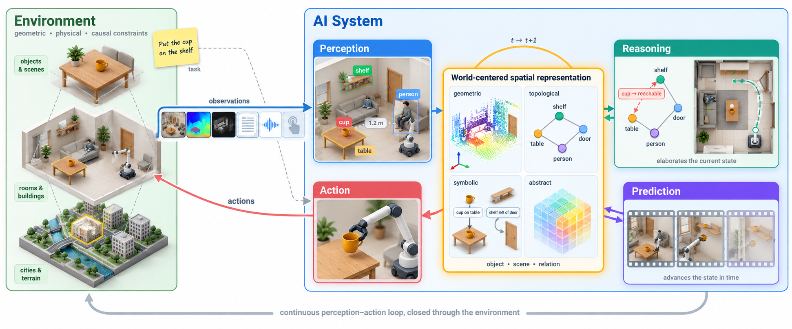
Defining A Spatial Intelligence Framework
Given the inherently hybrid and interdisciplinary nature of spatial intelligence, it becomes necessary to revisit and refine what we mean by “spatial intelligence” in a precise and unified manner. Rather than treating spatial intelligence as a loosely defined collection of capabilities, we aim to articulate a coherent conceptual framework that can accommodate its diverse manifestations across systems, tasks, and environments. In this section, we therefore propose an explicit definition of spatial intelligence and analyze its core properties in a structured way.
Definition (Spatial Intelligence). Spatial intelligence is the ability of an AI system to construct, maintain, and manipulate spatial representations of the physical world or environment that support perception, reasoning, prediction, and embodied action, to accomplish tasks within a given environmental context.
This definition emphasizes several essential aspects. First, spatial intelligence is grounded in representations of the world rather than isolated sensory inputs. Second, it is functional rather than static, supporting perception, reasoning, prediction, and action. Third, it is inherently situated, meaning that spatial intelligence only manifests meaningfully within an environment where tasks are defined and executed. In the following, we unpack this definition by examining its key attributes.
Core Elements
Parties
At a minimum, spatial intelligence involves two fundamental parties: an AI system and the physical world or environment in which it operates. Neither can be meaningfully defined without the other.
AI System.
The AI system refers to any computational entity capable of perception, reasoning, and decision-making. This includes, but is not limited to, large language models, multimodal foundation models, world models, embodied agents, and robotic systems. Crucially, spatial intelligence is not tied to a specific architecture. Instead, it characterizes a class of capabilities that may be realized through different model families, training paradigms, and system designs .
Physical World or Environment.
The environment denotes the external context in which the AI system is situated. This typically refers to the physical world governed by geometric, physical, and causal constraints. In some cases, the environment may also include social or human-centric settings, where spatial structure interacts with social norms, human intent, and collective behavior . Spatial intelligence arises precisely from the interaction between the AI system and such structured environments.
Spatial Representation
A core component of spatial intelligence lies in the ability to form, maintain, and manipulate world-centered spatial representations. These representations serve as structured world models that are compositional, generalizable, and reusable across tasks.
Spatial representations may vary along several dimensions:
Granularity. Representations can operate at different spatial scales, including object-centric representations, scene-centric representations, and relational representations capturing relative geometry or topology.
Modality. Spatial information may be derived from heterogeneous sensory channels, including pixels, grid maps, point clouds, voxel grids, language descriptions, audio signals, spectral measurements, radar inputs, as well as tactile and force feedback.
Level of Abstraction. Spatial representations may be geometric, such as metric coordinates and surfaces, topological, such as connectivity graphs, or semantic and symbolic, such as object categories and relational predicates.
Concrete versus Abstract. Representations may directly encode observable properties of the physical world or serve as abstract internal models that summarize, compress, or reinterpret spatial structure for reasoning and planning.
Importantly, spatial intelligence does not require committing to a single representational form. Instead, it demands the ability to align and translate across multiple representational levels in a world-centered manner.
Dynamic Interaction
Spatial intelligence is not a static property acquired through passive observation. Rather, it emerges through continuous and dynamic interaction with the environment. This interaction includes navigation, manipulation, exploration, and embodied perception. An intelligent system must ground its spatial understanding in embodied experience, for example by learning the structure of a room through movement, or improving depth perception through active viewpoint selection. Interaction also extends to socially situated behaviors. Maintaining appropriate interpersonal distance, coordinating actions with humans, or navigating shared spaces all require spatial understanding informed by social context. As a result, spatial representations must be executable and continuously updated through perception-action feedback loops. We further decompose dynamic interaction into several functional components.
Perception.
Perception refers to the extraction of spatial structure from multimodal sensory inputs. This includes recognizing objects and scene elements, estimating distances, identifying spatial layouts, and localizing entities within an environment.
Reasoning and Planning.
Spatial reasoning involves inference over spatial relations and dynamics. This includes trajectory prediction, path planning, occlusion reasoning, spatial causality, temporal change modeling, relational inference, and logical or commonsense reasoning about space. Such reasoning spans both low-level problems, such as shortest-path computation, and high-level abstractions, such as understanding how rearranging objects alters the affordances of a space.
Predicting.
Prediction in spatial intelligence operates along two axes. One concerns forecasting future spatial states or events in a manner consistent with physical laws and causal structure. The other concerns generative capabilities, such as producing spatially aware images, videos, 3D or 4D scenes, and motion trajectories.
Embodied Action.
Embodied action denotes the capacity to interact with physical or simulated environments while continuously pursuing goals. This includes pose adjustment, navigation, grasping, and object manipulation. Typical scenarios include domestic robots and autonomous driving systems. Such action requires tight integration of perception, reasoning, planning, and prediction, while aligning internal spatial models with task objectives, human intent, and social context.
A well-designed spatially intelligent AI system should satisfy the following criteria:
High-quality world representation. It must acquire a rich, consistent, and generalizable spatial representation of the world that captures geometry, relations, and structure across scales.
Dynamic interaction capability. It should support accurate perception, reasoning, prediction, and embodied action through continuous interaction with the environment.
Alignment between model, task, and environment. The internal spatial model must remain aligned with external task objectives, environmental constraints, and feedback signals during execution.
Formal Characterization
To make the definition more precise, we provide a lightweight formalization that captures the core components of spatial intelligence without committing to a specific implementation or learning paradigm.
Let \(\mathcal{E}\) denote the environment in which an AI system is situated, representing the physical or simulated world governed by spatial, physical, and causal constraints. Let \(\mathcal{S}\) denote the AI system or agent. We assume that tasks are defined with respect to the environment and are drawn from a task space \(\mathcal{T}\).
World-Centered Spatial Representation.
We define a world-centered spatial representation as a system-induced mapping from the environment to an internal state space: \[\begin{equation} \Phi_{\mathcal{S}} : \mathcal{E} \rightarrow \mathcal{R}_{\mathcal{S}}, \end{equation}\] where \(\mathcal{R}_{\mathcal{S}}\) denotes the internal spatial representation space maintained by the AI system \(\mathcal{S}\). The representation \(\Phi_{\mathcal{S}}(e) \in \mathcal{R}_{\mathcal{S}}\) may take various forms, including geometric maps, scene graphs, implicit fields, symbolic layouts, or learned latent embeddings. Crucially, \(\mathcal{R}_{\mathcal{S}}\) is not a raw sensory space, but a structured and system-dependent representation space that supports compositionality, generalization, and reuse across tasks.
Functional Use of Spatial Representations.
Spatial intelligence is not defined by representation alone, but by how representations are functionally manipulated by the AI system. We characterize this through a family of system-conditioned operators acting on \(\mathcal{R}_{\mathcal{S}}\): \[\begin{equation} \mathcal{F}_{\mathcal{S}} = \{ f^{\mathcal{S}}_{\text{perc}}, f^{\mathcal{S}}_{\text{reason}}, f^{\mathcal{S}}_{\text{pred}}, f^{\mathcal{S}}_{\text{act}} \}, \end{equation}\] corresponding to perception, reasoning, prediction, and embodied action. Each operator is defined relative to the system \(\mathcal{S}\): \[\begin{align} f^{\mathcal{S}}_{\text{perc}} &: \mathcal{O} \rightarrow \mathcal{R}_{\mathcal{S}}, \\ f^{\mathcal{S}}_{\text{reason}} &: \mathcal{R}_{\mathcal{S}} \rightarrow \mathcal{R}_{\mathcal{S}}, \\ f^{\mathcal{S}}_{\text{pred}} &: \mathcal{R}_{\mathcal{S}} \times \mathcal{A} \rightarrow \mathcal{R}_{\mathcal{S}}, \\ f^{\mathcal{S}}_{\text{act}} &: \mathcal{R}_{\mathcal{S}} \rightarrow \mathcal{A}, \end{align}\] where \(\mathcal{O}\) denotes observations and \(\mathcal{A}\) denotes the action space. The two representation-to-representation operators play distinct roles: \(f^{\mathcal{S}}_{\text{reason}}\) elaborates the current world state by inferring relations and constraints already implicit in it, whereas \(f^{\mathcal{S}}_{\text{pred}}\) advances the state forward in time, rolling out how the world would evolve under a hypothesized action (with a null action recovering passive forecasting).
Task-Oriented Intelligence.
Given a task \(t \in \mathcal{T}\), spatial intelligence manifests as the ability of the AI system \(\mathcal{S}\) to select and execute actions based on its internal spatial representation: \[\begin{equation} \pi_{\mathcal{S}} : (\mathcal{R}_{\mathcal{S}}, t) \rightarrow \mathcal{A}, \end{equation}\] such that actions are grounded in the system’s current world representation and lead to task completion within the environment. This formulation highlights that spatial intelligence is inherently situated and agent-dependent: the same environment may induce different behaviors depending on the internal representation and decision mechanisms of \(\mathcal{S}\).
Dynamic Interaction and World State Evolution.
Finally, spatial intelligence requires representations to be dynamically updated through interaction. We model the evolution of the internal world representation of system \(\mathcal{S}\) as: \[\begin{equation} \mathcal{R}^{\mathcal{S}}_{t+1} = \Psi_{\mathcal{S}}(\mathcal{R}^{\mathcal{S}}_t, a^{\mathcal{S}}_t, o_{t+1}), \end{equation}\] where \(a^{\mathcal{S}}_t \in \mathcal{A}\) is the action selected by system \(\mathcal{S}\) and \(o_{t+1} \in \mathcal{O}\) is the subsequent observation. It emphasizes that spatial representations are executable, interactive, and continuously revised by the system, rather than static encodings of the environment.
This formalization clarifies that spatial intelligence is not tied to a specific modality, algorithm, or architecture. Instead, it is defined by the existence of a system-induced, world-centered spatial representation space \(\mathcal{R}_{\mathcal{S}}\) and the ability of the AI system \(\mathcal{S}\) to manipulate, update, and exploit this representation to support perception, reasoning, prediction, and embodied action within an environment.
Compatibility with Existing Research and Paradigms
The proposed framework is intentionally designed to be inclusive rather than prescriptive. Rather than introducing a new task taxonomy or replacing existing formulations, it provides a unifying lens through which a wide range of spatial intelligence-related tasks, domains, and research traditions can be consistently described. From this perspective, most existing work can be understood as instantiating or emphasizing only a subset of the core elements defined in our framework, often driven by domain-specific constraints, data availability, or evaluation protocols.
A large body of research in computer vision, graphics, and extended reality focuses primarily on the representation layer of spatial intelligence. Tasks such as 3D reconstruction, neural rendering, scene synthesis, video generation, and emerging 4D spatiotemporal modeling concentrate on learning expressive spatial representations \(\mathcal{R}_{\mathcal{S}}\), often with little or no emphasis on action, task execution, or long-term interaction. Within our framework, these approaches can be viewed as developing increasingly powerful instantiations of world-centered spatial representations, while largely abstracting away the agent \(\mathcal{S}\) and the functional operators that connect representation to behavior. Their contributions lie in advancing the expressiveness, continuity, and generative capacity of spatial representations, even if they remain largely offline or perception-centric.
Robotics, embodied AI, and embedded systems emphasize a different subset of the framework, placing primary focus on action grounding and closed-loop interaction. Vision-Language-Action models, navigation agents, and manipulation systems operationalize the mapping from internal representations to actions, often under real-time and physical constraints. However, in many cases, the underlying spatial representations remain task-specific, shallow, or tightly coupled to particular embodiments. From the perspective of our framework, these systems instantiate the functional operators and dynamic interaction components, while relying on relatively limited or implicit world representations. This explains why many embodied systems exhibit strong short-horizon competence but struggle with long-term consistency, world editing, or cross-task transfer.
Classical and modern SLAM systems provide a complementary example. SLAM explicitly targets the construction and maintenance of a world-centered spatial representation under uncertainty, typically in the form of metric maps, pose graphs, or hybrid geometric-topological structures. Within our framework, SLAM can be understood as a specialized instantiation of the representation update process, with strong guarantees on geometric consistency and state estimation. At the same time, SLAM systems often remain agnostic to high-level reasoning, semantic abstraction, or task-conditioned decision making, highlighting again that they occupy a specific slice of the broader spatial intelligence spectrum rather than the full stack.
Viewed through this unified lens, existing spatial intelligence research does not fragment into incompatible paradigms, but instead forms a landscape of partial realizations. Different communities emphasize representation learning, perception, reasoning, prediction, or action to varying degrees. Our framework provides a common conceptual structure that makes these emphases explicit, clarifies their limitations, and reveals how advances in one area can be systematically integrated with others. In this sense, the framework is not a replacement for existing approaches, but a scaffold for understanding how they collectively contribute to, and fall short of, world-centered spatial intelligence.
Chapter 3: Scope and Structure of This Book
This chapter provides a structural overview of the book. We clarify the scope, goals, and organization of the volume, and explain how the different parts jointly form a coherent research landscape for spatial intelligence. Specifically, we introduce the core research pillars covered in this book, outline their relationships, and offer guidance on how readers from different backgrounds may navigate the content.
The Research Pillars of Spatial Intelligence
We outline the core research pillars that constitute the structural backbone of this book. They traverse the full pipeline from spatial representation and perception to reasoning and generative capabilities, and ultimately extend into concrete real-world applications. Each pillar aligns closely with a corresponding Part of the book, serving as a thematic axis for both foundational methods and emerging challenges in spatial intelligence.
Representation (Part II: Spatial-aware Representation)
This pillar investigates how spatial information is encoded and represented across modalities and dimensions. We begin with single-modality representations, including 2D (e.g. , visual frames), 3D (e.g. , point clouds, meshes), and 4D (e.g. , dynamic scenes, spatio-temporal fields), as well as non-visual modalities such as language and audio. Particular attention is given to cross-modal alignment and fusion mechanisms that unify heterogeneous data sources. These representational strategies provide the necessary structural foundation for downstream reasoning, manipulation, and generation.Perception (Part III, Section [sec:perception]: Spatial Perception)
This pillar focuses on how intelligent systems extract structured knowledge from spatial environments. Topics include object detection, semantic and instance segmentation, depth and surface normal estimation, visual odometry (VO), and ego-motion prediction. These perception modules translate raw sensory inputs into geometric or semantic abstractions, enabling agents to comprehend and navigate the physical world.Reasoning (Part III, Section 2: Spatial Reasoning)
Reasoning in spatial intelligence spans multiple paradigms: symbolic reasoning over geometric primitives or logical propositions; geometric reasoning over shapes, topologies, and configurations; neural reasoning using deep architectures; and LLM-driven spatial inference based on large-scale pretrained priors. These methods enable agents to interpret relations, deduce spatial constraints, and plan in dynamic settings.Generation (Part III, Section 3: Spatial Generation)
This pillar examines the generative side of spatial intelligence. It encompasses tasks such as 2D/3D scene synthesis, controllable image and video generation, trajectory and motion prediction, and dynamic world creation. These generative processes are often guided by spatial prompts, semantic layouts, or agent intentions, forming a bridge between structured knowledge and creative capability.Applications (Part IV: Applications)
Finally, the application pillar illustrates how the above methods power real-world systems. Domains include embodied agents and robotics (e.g. , navigation, grasping), autonomous driving and aerial agents, warehouse and wearable AI systems, virtual and augmented reality (XR), geospatial AI (e.g. , urban planning, satellite analysis), biomedical and scientific computing (e.g. , 3D medical reconstruction), and intelligent assistants. These chapters emphasize system-level integration and highlight how spatial AI capabilities translate into societal impact.
Goal of the Book: Charting a Research Ecosystem
The primary goal of this book is not to present a catalog of isolated techniques, but to chart an emerging research ecosystem centered on spatial intelligence. As established in earlier chapters, spatial intelligence is neither a single method nor a narrowly scoped task. Rather, it is a unifying paradigm that connects representation, perception, reasoning, generation, and action through structured models of the world.
From Isolated Methods to an Integrated Landscape.
Much of the existing literature on spatial intelligence is fragmented. Some surveys focus deeply on individual subfields, such as SLAM, neural rendering, or 3D generation, while others adopt a high-level perspective that lacks technical grounding. This book aims to bridge this gap by organizing spatial intelligence as an interconnected landscape, where advances in one component are explicitly related to others. Our objective is to reveal how seemingly distinct research threads jointly contribute to world-centered intelligence.
Spatial Intelligence as a Connective Substrate.
A central thesis of this book is that spatial intelligence functions as a connective substrate for next-generation AI systems. It provides the structural glue that links perception with reasoning, language with geometry, and planning with embodied action. By framing spatial intelligence in this way, the book draws connections across computer vision, robotics, simulation, geospatial systems, cognitive science, and neuro-inspired AI. This perspective enables a shared conceptual vocabulary through which contributions from different communities can be meaningfully aligned.
Identifying Gaps and Open Tensions.
Beyond synthesizing existing work, this book deliberately highlights unresolved gaps in the current research landscape. These include the disconnect between symbolic and neural spatial representations, the limited grounding of perception in actionable world models, and the difficulty of integrating spatial reasoning into long-horizon embodied agents. By making these tensions explicit, we aim to clarify where current paradigms fall short and where future breakthroughs are most likely to emerge.
A Blueprint for an Open Research Program.
Ultimately, this book is intended as a blueprint for an open and evolving research program. Rather than proposing a closed taxonomy or a definitive solution, it offers a structured lens through which spatial intelligence can be studied, extended, and reimagined. We invite readers not only to learn from the systems and methods surveyed here, but also to rethink spatial intelligence as a first-class organizing principle in the design of generalist intelligent agents.
How to Read This Book
Given the interdisciplinary nature of spatial intelligence, which spans AI, computer vision, robotics, graphics, GIS, and cognitive science, it is crucial to provide tailored reading paths that help each type of reader gain the most value from this book.
\(\blacktriangleright\) For Beginners and Students (e.g. , undergraduates, junior graduate students, newcomers to spatial AI)
Begin with Part I: Introduction and Background (Chapters 1–3) to grasp the motivation, historical evolution, and research scope.
Then proceed to Part II: Spatial-aware Representation to build a solid understanding of core representations in 2D, 3D, and 4D, including geometry and topology.
Optionally skim Part IV: Applications to get a glimpse of real-world use cases, such as robotics, autonomous driving, and AR/XR.
\(\blacktriangleright\) For Researchers and Academics (e.g. , PhD students, postdocs, faculty, or interdisciplinary scholars in AI-related fields)
Focus on Part III: Spatial Intelligence, from Perception to Generation, which includes chapters on:
Spatial perception, from detection and segmentation to depth and odometry
Symbolic, geometric, neural, and LLM-driven spatial reasoning
Generative spatial models for scenes, videos, and worlds
Also study Part IV: Applications for cross-domain synergies, particularly in GeoAI, healthcare, urban simulation, and embodied cognition.
Consider Part V: Discussions and Futures for open problems, benchmarking gaps, and research directions.
\(\blacktriangleright\) For System Developers and Engineers (e.g. , practitioners building simulation environments, digital twin platforms, or perception pipelines)
Prioritize chapters in Part III (Generation) and Part IV (Applications) that introduce:
Modular spatial generation frameworks
Multi-agent simulation engines and control loops
Deployed system domains (e.g. , robotic manipulation, warehouse automation, wearable AI, aerial agents)
Use Part V: Discussions and Futures to anticipate where deployment bottlenecks and benchmark gaps lie.
\(\blacktriangleright\) For Cross-disciplinary Explorers (e.g. , scholars in architecture, biology, geoscience, or cognitive science)
Start with Part I (Introduction and Background) to acquire shared conceptual grounding.
Dive into Part IV (Applications) for domain-aligned chapters and illustrative case studies.
Refer to Part II (Representation) to gain a technical foothold in spatial structures and encodings.
Overall, this book is modular in structure and can be read either linearly or selectively depending on the reader’s focus. The chapter cross-references are designed to aid flexible navigation and long-term use.
Spatial-aware Representation: Building Blocks of Space

Everything a spatially intelligent system does, perceiving a scene, reasoning over it, generating or acting within it, passes through some representation of space. That representation is upstream of the capability: what a system can perceive is bounded by what its encoding can express, and what it can reason about is bounded by what that encoding makes accessible. Before the later parts turn to perception, reasoning, and generation, this part asks the prior question of how spatial structure is captured at all, how the geometry, topology, and semantics of an environment come to be held in a form a machine can compute with.
The question is approached in two movements. The first takes each modality on its own terms, asking how images, video, 3D scenes, language, and sound each encode spatial structure and what each renders explicit or leaves implicit. The second asks how these separate encodings are brought into a shared space, so that signals as different as a pixel grid and a sentence can be aligned without losing the geometry that makes them spatially meaningful. The order is deliberate, since a modality must be understood by itself before its representation can be fused with others, and it is in that fusion that the partial, sensor-bound view offered by any one signal begins to reinforce the rest. Together they form the representational substrate on which the remainder of the book is built.
Chapter 4: Single-Modal Spatial Representation
Single-modal spatial representations ask how much of a scene’s spatial structure can be recovered from one modality alone, without recourse to cross-modal correspondence. The question matters because every multimodal system is ultimately built from unimodal encoders, and the spatial content a fused representation can carry is bounded by what each modality already captures on its own.
What separates the modalities is not whether they carry spatial information but how overtly they carry it. Vision presents geometry almost directly, arranging appearance and shape over a spatial grid or the volume a scene occupies. Language and sound hold the same structure only obliquely, the one as symbolic relations among named entities, the other as the physical trace that propagation leaves on a signal. Others still are tied to a particular sensor or task, trading generality for fidelity to the data they were built around. This chapter proceeds along that gradient, from the most explicit geometric encodings of space toward the most implicit, examining each modality on its own terms before the question of how they combine is taken up.
2D
The 2D representations are the most direct and information-dense entry point into spatial intelligence: images and videos provide a regular, discretely sampled grid over the visual field, on top of which a family of structured maps can be defined to expose geometric and semantic properties of the underlying scene. We organize this section around seven such representations (Figure 1.1): the raw image/video tensor itself, and six derived maps: segmentation, depth, surface normal, edge, optical flow, and 2D keypoint representations. All seven share the image grid as their domain, which makes them straightforward to fuse with one another and to consume with convolutional or transformer backbones; what differs is what each representation exposes: appearance, semantics, geometry, boundaries, motion, or sparse structure.
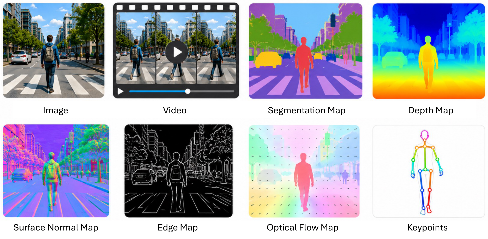
Image and Video Representations
An image can be modeled as a discrete sampling of a continuous visual signal over a 2D spatial domain. Formally, a digital image is represented as a function \[\begin{equation} I: \Omega \rightarrow \mathbb{R}^C, \quad \Omega \subset \mathbb{R}^2, \end{equation}\] where \(\Omega\) denotes the image grid, \(C\) is the number of channels (e.g. , \(C=1\) for grayscale, \(C=3\) for RGB), and each pixel value encodes intensity or color information at a discrete spatial location . In practice, images are stored as finite tensors \(I \in \mathbb{R}^{H \times W \times C}\), where \(H\) and \(W\) denote image height and width.
A video extends this representation by introducing a temporal dimension. Given a sequence of frames sampled over time, a video can be written as \[\begin{equation} V: \Omega \times \mathcal{T} \rightarrow \mathbb{R}^C, \end{equation}\] or equivalently as a 4D tensor \(V \in \mathbb{R}^{T \times H \times W \times C}\), where \(T\) denotes the number of frames . This formulation preserves spatial structure within each frame while enabling the modeling of temporal dynamics across frames. From a computational perspective, images and videos are treated as structured arrays of numerical values that can be efficiently processed using linear algebra operations and convolutional kernels. This regular grid structure enables weight sharing, local receptive fields, and efficient parallel computation, forming the basis of CNNs and their spatiotemporal extensions . In modern deep learning systems, image and video tensors may undergo normalization, resizing, patch embedding, or tokenization before being fed into neural architectures, including CNNs and vision transformers . For video inputs, spatiotemporal extensions either inflate 2D kernels into 3D convolutions or extend self-attention across space and time, as in the family of video transformers .
Segmentation Maps
A segmentation map is a semantic representation that assigns a label or a mask to each pixel, thereby partitioning visual data into meaningful regions such as objects, object parts, or background categories . For a single image defined on \(\Omega \subset \mathbb{R}^2\), segmentation can be written as a mapping \[\begin{equation} S: \Omega \rightarrow \mathcal{L}, \end{equation}\] where \(\mathcal{L}\) is a set of labels. In semantic segmentation (SS), \(S(u,v)\) denotes the class label of pixel \((u,v)\). In instance segmentation (IS), the output is a set of masks \(\{M_k\}_{k=1}^{K}\) with associated class labels \(\{\ell_k\}\), where each \(M_k:\Omega \rightarrow \{0,1\}\) corresponds to an object instance . Panoptic segmentation (PS) unifies SS and IS by predicting a single, non-overlapping labeling of pixels that distinguishes both “stuff” and countable object instances .
These tasks extend naturally to videos. Given a sequence of frames \(\{I_t\}_{t=1}^{T}\), video semantic segmentation (VSS) predicts per-frame semantic labels \(\{S_t\}\), while video instance segmentation (VIS) predicts instance masks with temporal consistency across frames, often requiring instance association (tracking) over time . Video panoptic segmentation (VPS) further combines VSS and VIS, producing temporally consistent panoptic outputs and is commonly evaluated with metrics that account for both segmentation quality and tracking consistency . Closely related settings include video object segmentation (VOS) , which segments foreground objects across time under semi-supervised or unsupervised protocols, and referring segmentation, which predicts masks grounded by natural language expressions in images (RIS) or videos (RVOS) . Segmentation maps are typically formed by dense prediction models that produce either hard labels or per-pixel class probabilities \(P(u,v,\ell)\) (and, for instance-level tasks, a set of object masks and scores). A key advantage of segmentation is its explicit and interpretable structure: it converts low-level pixels into object- and region-level representations that support downstream reasoning and decision-making, and it can be fused naturally with geometry (e.g. , depth, normals) and language in multimodal systems . Consequently, segmentation maps are central to applications such as autonomous driving, medical image analysis, robotic manipulation, visual editing, and human-computer interaction.
Depth Maps
A depth map is a geometric representation that augments a 2D image with per-pixel distance information, describing the spatial layout of a scene from a given viewpoint . Formally, given an image domain \(\Omega \subset \mathbb{R}^2\), a depth map is a scalar function \[\begin{equation} D: \Omega \rightarrow \mathbb{R}, \end{equation}\] where \(D(u,v)\) denotes the distance from the camera center to the first visible surface along the viewing ray corresponding to pixel \((u,v)\). Depending on the sensing modality and formulation, this value may represent metric depth, inverse depth, or disparity . Depth maps can be obtained through multiple mechanisms, including stereo vision via triangulation , active sensors such as structured-light or time-of-flight cameras , and learning-based monocular depth estimation . When combined with known camera intrinsics, a depth map enables the back-projection of image pixels into 3D space, thereby serving as a bridge between 2D image representations and 3D geometry. A key advantage of depth maps lies in their compact, image-aligned structure, which allows them to be processed using standard convolutional architectures and easily fused with the RGB appearance information. Compared to volumetric representations, depth maps are memory-efficient while still encoding meaningful geometric cues. As a result, they are widely used in applications such as 3D reconstruction, novel view synthesis , robotic navigation, and autonomous driving .
Surface Normal Maps
A surface normal map is a geometric representation that encodes local surface orientation at each pixel of an image. Given an image domain \(\Omega \subset \mathbb{R}^2\), a surface normal map assigns to each pixel a unit vector \[\begin{equation} \mathbf{N}: \Omega \rightarrow \mathbb{S}^2, \end{equation}\] where \(\mathbf{N}(u,v) = (n_x, n_y, n_z)\) represents the direction of the surface normal in camera or world coordinates, and \(\mathbb{S}^2\) denotes the unit sphere. Surface normal maps can be derived from depth maps or 3D geometry via local differentiation, or directly estimated from RGB images using learning-based methods . Classical approaches to normal estimation rely on photometric stereo or geometric reconstruction , while modern methods employ CNNs to regress surface normals from monocular images . Regardless of the estimation procedure, surface normal maps remain image-aligned and encode rich local geometric information that complements depth and segmentation cues. Surface normal maps can capture fine-grained shape and orientation details that may be ambiguous or noisy in raw depth estimates. Because surface normals are invariant to absolute depth scale, they provide robust geometric constraints for scene understanding. Consequently, surface normal maps are widely used in applications such as 3D reconstruction, object pose estimation, scene layout analysis, realistic rendering, and as auxiliary supervision in multi-task learning .
Edge Maps
An edge map is a structural representation that highlights salient intensity or color discontinuities in an image, which often correspond to object boundaries and significant geometric transitions . Given an image \(I: \Omega \rightarrow \mathbb{R}^C\), an edge map is typically constructed by measuring local image gradients, for example, \[\begin{equation} E(u,v) = \|\nabla I(u,v)\|, \end{equation}\] where \(\nabla I\) denotes the spatial gradient operator. Classical edge detection methods rely on hand-crafted operators such as Sobel, Laplacian of Gaussian, and the Canny detector , while modern learning-based approaches directly predict the edge probabilities using convolutional neural networks . Edge maps may be binary, indicating the presence or absence of an edge, or real-valued, encoding edge strength, orientation, or confidence. The primary advantage of edge maps is their ability to significantly reduce visual complexity while preserving essential geometric structure. This abstraction makes them relatively robust to changes in illumination and appearance. Consequently, edge maps are widely used in image segmentation, contour detection, shape analysis, line drawing, and as intermediate cues for higher-level tasks such as object recognition and depth estimation .
Optical Flow Maps
An optical flow map is a motion representation that encodes the apparent 2D displacement of pixels between consecutive frames in a video sequence . Given two image frames \(I_t\) and \(I_{t+1}\), the optical flow is defined as a vector field \[\begin{equation} \mathbf{F}(u,v) = (f_x(u,v), f_y(u,v)), \end{equation}\] where \((f_x, f_y)\) describes the horizontal and vertical displacement of pixel \((u,v)\) from time \(t\) to \(t+1\). Classical optical flow estimation relies on assumptions such as brightness constancy and spatial smoothness, leading to variational formulations . More recently, deep neural networks have been proposed to directly regress dense flow fields from image pairs or short video clips . Regardless of the estimation method, the resulting optical flow map remains image-aligned, preserving spatial correspondence with the input frames. The main advantage of optical flow maps is their ability to capture rich dynamic information about scene motion, including object motion, camera motion, and motion parallax, while remaining computationally efficient. As a result, optical flow is a core representation in video analysis and robotic perception tasks such as motion segmentation, action recognition, video interpolation, and visual odometry.
2D Keypoints
A 2D keypoint set is a sparse image representation that encodes the image-plane locations of a finite set of semantically or geometrically meaningful points, such as corners, joints, or landmarks . Unlike dense maps that assign a value to every pixel, keypoint representations summarize visual content with a small number of salient points, trading pixel-level coverage for compactness and geometric explicitness. Formally, given an image defined on a domain \(\Omega \subset \mathbb{R}^2\), a keypoint representation is a set of \(K\) points \[\begin{equation} \mathcal{K} = \{(x_k, y_k)\}_{k=1}^{K}, \quad (x_k, y_k) \in \Omega, \end{equation}\] where each keypoint corresponds to a specific semantic or geometric entity. In learning-based formulations, keypoints are often represented implicitly as confidence or heat maps: \[\begin{equation} H_k : \Omega \rightarrow [0,1], \end{equation}\] with the keypoint location obtained by finding the maximum or expected value of \(H_k\) . 2D keypoints can be obtained using classical feature detectors, such as Harris corners, SIFT, and SURF , or through modern deep neural networks that directly regress keypoint locations or predict dense heat maps . Depending on the task, keypoints may represent generic interest points, object-specific landmarks, or articulated structures such as the human body joints. The detection task that produces such a set, including its extension to landmark detection and human pose estimation, is discussed in detail in Section 1.1.3 of Chapter [sec:perception]. A key advantage of 2D keypoint representations is their sparsity and compactness: they significantly reduce the dimensionality of visual data while preserving critical structural information. This makes keypoints computationally efficient, robust to background clutter, and well-suited for geometric reasoning and correspondence matching. Human pose estimation is a specialized and highly structured instance of 2D keypoint detection that focuses on localizing a predefined set of anatomical landmarks of the human body, such as joints and facial keypoints, in images or videos . In the 2D setting, the task aims to estimate the image coordinates of body joints, typically represented as a set of keypoints \(\mathcal{P} = \{(x_j, y_j)\}_{j=1}^{J}\), where \(J\) denotes the number of joints in a human skeletal model. These keypoints are not independent: they are constrained by the underlying human body structure, which is often modeled using kinematic trees, graphical models, or learned structural priors.
3D
The 3D representations lift the 2D pixel grid into the ambient space the scene actually occupies, replacing image-plane appearance with explicit geometry and topology. They are the substrate on which downstream tasks that require metric reasoning, occlusion handling, viewpoint manipulation, or physical simulation are built, from autonomous driving and robotic manipulation to medical visualization and immersive graphics. Compared with the depth and surface normal maps of Section 1.1, which still inhabit the image grid, 3D representations expose geometry directly and can therefore describe parts of the scene that are not visible in any single view.
We organize this section around the eight 3D representations that dominate current practice (Figure 1.2, Table 1.2): RGB-D images, voxels, point clouds, meshes, implicit fields, neural radiance fields (NeRF), 3D Gaussian Splatting (3DGS), and hybrids of the above. They differ in what they store (surfaces vs. volumes, explicit primitives vs. neural functions), how they trade off fidelity against memory and rendering speed, and how amenable they are to editing and to gradient-based optimization.
RGB-D Image. Pairs a standard RGB image with a per-pixel depth map; view-dependent and cannot capture occluded surfaces from a single frame.
Voxel. A uniform 3D grid of volumetric elements; conceptually simple and well suited to inherently volumetric data, but memory and resolution scale as \(O(N^3)\).
Point Cloud. An unstructured set of 3D points, typically the native output of LiDAR or photogrammetry; faithful to the raw measurement but lacks surface connectivity.
Mesh. Surfaces defined by vertices and faces; the dominant representation in graphics for its GPU-friendliness, at the cost of a fixed connectivity that complicates topology change.
Implicit Representation. Defines surfaces as the level set of a continuous function (e.g. , Signed Distance Functions); resolution-agnostic and topology-flexible, but slow to render.
NeRF (Neural Radiance Field). A neural function over a 5D input domain (3D location + 2D viewing direction) that supports state-of-the-art novel-view synthesis.
3DGS (3D Gaussian Splatting). Represents a scene as anisotropic 3D Gaussian primitives rendered through a differentiable splatting rasteriser, reaching NeRF-level quality at real-time speeds.
Hybrid Methods. Combinations of the above (e.g. , DMTet, Tri-plane) that pair explicit primitives with implicit decoders to balance fidelity, efficiency, and gradient-based optimizability.
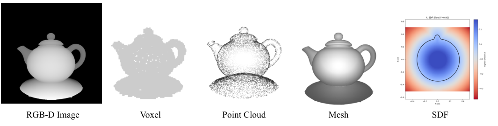
| Representation | Fidelity | Memory Cost | Render Speed | Topology Flexibility | Editability |
|---|---|---|---|---|---|
| RGB-D Image | Low (2.5D) | Low | High | View-dependent | Low |
| Voxel | Low–Medium | High (\(O(N^3)\)) | Medium | High | Medium |
| Point Cloud | Medium | Medium (scalable) | High | High | Medium |
| Mesh | High | Low (GPU-friendly) | Very High | Low (fixed connectivity) | High |
| Implicit (SDF) | High | Low | Low (volume query) | High | Low |
| NeRF | Very High | Low | Low (ray marching) | High | Very Low |
| 3DGS | Very High | Medium | Very High (real-time) | High | Medium |
| Hybrid | Very High | Medium | High | Adaptive | Medium–High |
RGB-D Images
RGB-D images are a popular 2.5D representation that captures both photometric and geometric information from a single viewpoint. This data format consists of two co-registered images: a standard RGB color image providing appearance and texture details, and a corresponding depth map where each pixel value encodes the distance from the sensor to the corresponding point in the scene. Formally, it can be defined as a function mapping a 2D image grid \(\Omega\) to a 4D space combining color and depth: \[\begin{equation} I_{rgbd}: \Omega \rightarrow \mathbb{R}^3 \times \mathbb{R}_{\geq 0}, \end{equation}\] where the first three channels represent RGB color and the fourth channel encodes the distance from the sensor to a point in the scene. In practice, RGB-D data is stored as a tensor \(I \in \mathbb{R}^{H \times W \times 4}\).
The primary advantage of RGB-D data lies in its efficiency and accessibility. It is captured by low-cost sensors such as Microsoft Kinect or Intel RealSense , and its image-like grid structure enables the direct application of powerful 2D convolutional neural networks (CNNs) to tasks such as semantic segmentation and object detection . This fusion of color and depth provides a rich, multi-modal input for scene understanding. However, a significant limitation is its view-dependent nature; an RGB-D image represents only a partial view of the 3D world, suffering from occlusions and providing no information about surfaces hidden from the camera. Despite this, its real-time acquisition and processing capabilities make it indispensable in robotics for navigation and grasping , in augmented reality (AR) for scene interaction, and as a foundational input for 3D reconstruction pipelines that fuse multiple frames into a complete model .
Voxel Grids
The voxel grid is a foundational 3D representation that discretizes space into a uniform grid of volumetric elements, or voxels (a portmanteau of “volume” and “pixel”). Analogous to a pixel in 2D, a voxel grid can be modeled as a function mapping discrete 3D coordinates to a set of attributes: \[\begin{equation} G: \{1, \dots, D\} \times \{1, \dots, H\} \times \{1, \dots, W\} \rightarrow \mathcal{A}, \end{equation}\] where \(D, H, W\) are the grid dimensions and \(\mathcal{A}\) can represent occupancy, color, density, or material properties, thereby enabling a detailed volumetric description of an object.
A key advantage of this representation is its ability to model complex geometries and internal structures, which are often challenging for surface-based methods like polygon meshes to capture. The conceptual simplicity of voxels, which can be seen as the three-dimensional extension of 2D pixels, facilitates straightforward implementation and manipulation. Consequently, voxel grids are natively suited for applications involving inherently volumetric data, such as medical imaging (e.g. , MRI and CT scans) , where biological tissues are naturally captured as a 3D array of values. They are also widely adopted in computer graphics and gaming for tasks like procedural generation and creating destructible environments, as popularized by games like Minecraft.
Point Clouds
Point clouds offer a direct and unstructured 3D representation, defined as a set of points in 3D space: \[\begin{equation} P = \{p_i\}_{i=1}^N, \quad p_i = (x_i, y_i, z_i, \mathbf{a}_i) \in \mathbb{R}^3 \times \mathbb{R}^C. \end{equation}\] Each point \(p_i\) consists of its geometric coordinates \((x_i, y_i, z_i)\) and an optional \(C\)-dimensional attribute vector \(\mathbf{a}_i\) encoding properties such as color, intensity, or surface normals. They are the native output of active 3D scanning technologies like LiDAR (Light Detection and Ranging) and structured-light scanners , as well as passive methods like photogrammetry .
The primary strength of point clouds lies in their raw and unstructured nature; they represent geometry without imposing any explicit topological connectivity (unlike meshes) or spatial discretization (unlike voxels). This makes them a faithful and often highly precise representation of the captured data. However, this very lack of inherent structure poses significant challenges for downstream processing. The unordered and potentially sparse distribution of points makes tasks like feature extraction, segmentation, and reconstruction non-trivial, necessitating specialized algorithms and deep learning architectures (e.g. , PointNet and its successors ) that are designed to operate directly on irregular point sets.
Meshes
A mesh is a canonical surface representation in computer graphics, defining an object’s boundary with a set of geometric and topological primitives. Formally, a triangle mesh is a tuple \(M = (V, F)\), where \[\begin{equation} V = \{v_i\}_{i=1}^{|V|} \subset \mathbb{R}^3, \; F\subset V \times V \times V. \end{equation}\] Here, \(V\) is a set of vertices representing points in 3D space, and \(F\) is a set of faces (typically triangles) that define connectivity between vertices.
The key characteristic of a mesh is its explicit topological structure, which encodes the connectivity between these elements. This structure strikes an effective balance between descriptive power and computational efficiency. Its prevalence is due to several key advantages: meshes can represent complex, smooth surfaces with arbitrary fidelity through adaptive tessellation (i.e. , varying the polygon density); moreover, this representation is natively supported by modern Graphics Processing Units (GPUs), enabling highly efficient real-time rendering. The explicit connectivity also facilitates the straightforward computation of essential surface properties like normals and curvature, which are critical for realistic lighting and physical analysis. However, as a purely surface-based representation, standard meshes are ill-suited for modeling volumetric or internal structures, and representing objects with complex or changing topologies can be algorithmically challenging.
Implicit Representations
Implicit representations define 3D geometry not as a discrete set of primitives (e.g. , points or polygons), but as the level set of a continuous function: \[\begin{equation} f(\mathbf{x}): \mathbb{R}^3 \to \mathbb{R}. \end{equation}\] The surface \(\mathcal{S}\) is implicitly defined as the set of points where the function evaluates to a specific value, typically zero: \[\begin{equation} \mathcal{S} = \{\mathbf{x} \in \mathbb{R}^3 | f(\mathbf{x}) = 0\}. \end{equation}\]
A particularly powerful and popular form of this is the Signed Distance Function (SDF). An SDF maps any spatial coordinate \(\mathbf{x}\) to the closest distance to the surface, where the sign indicates whether the point is inside (\(f(\mathbf{x}) < 0\)) or outside (\(f(\mathbf{x}) > 0\)) the object. This formulation inherently guarantees watertight, closed surfaces and provides a smooth, continuous description of the geometry, making it resolution-agnostic. A key advantage of implicit fields is their ability to elegantly handle complex and dynamic topologies; operations like merging, splitting, or creating holes do not require complex and error-prone re-meshing procedures. This makes them ideal for physical simulations, such as fluid dynamics and shape manipulation.
This paradigm has experienced a major resurgence with the rise of neural fields or neural implicit representations. Instead of storing the function in a grid, a neural network is trained to approximate it (e.g. , DeepSDF ). This approach is memory-efficient and can learn continuous, high-fidelity shape priors from data. Extensions such as Neural Radiance Fields (NeRF) further generalize implicit fields to jointly model geometry and appearance, and are discussed in detail in Section 1.2.6. To visualize or use implicit surfaces in traditional rendering pipelines, an explicit mesh representation is often extracted via algorithms like Marching Cubes .
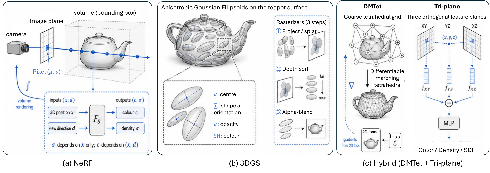
Neural Radiance Fields
Neural Radiance Fields (NeRF) represent a paradigm shift in novel view synthesis and implicit 3D scene representation . The core innovation is to represent a static scene as a continuous function with a 5D input domain (3D location \(+\) 2D viewing direction), parameterized by a simple Multi-Layer Perceptron (MLP). This neural network, denoted as \(F_\Theta\), maps a 3D spatial coordinate \(\mathbf{x}=(x,y,z)\) and a 2D viewing direction \(\mathbf{d}=(\theta, \phi)\) to a volume density \(\sigma\) and an emitted color \(\mathbf{c}=(r,g,b)\). A crucial design choice is that density \(\sigma\) depends only on the location \(\mathbf{x}\), while the color \(\mathbf{c}\) depends on both location and viewing direction \((\mathbf{x}, \mathbf{d})\). This allows NeRF to capture complex, non-Lambertian surface effects such as specular reflections and translucency.
To render an image from a novel viewpoint, rays are cast through the scene, and their colors are computed by integrating the predicted color and density values along each ray using principles of classical volume rendering and numerical quadrature. By optimizing the network’s weights to minimize the photometric reconstruction error between rendered and ground-truth images, NeRF can learn a highly detailed and coherent representation of the scene from only a sparse set of posed input images. The resulting state-of-the-art photorealism has established NeRF as a foundational technique, inspiring a vast body of follow-up research aimed at improving its speed, scalability, and applicability to dynamic scenes .
3D Gaussian Splatting
3D Gaussian Splatting (3DGS) has recently emerged as a groundbreaking alternative to neural radiance fields, achieving state-of-the-art quality for novel view synthesis while enabling real-time rendering . Unlike the implicit representation of NeRF, 3DGS represents a scene as a set of \(N\) anisotropic 3D Gaussian primitives, each parameterized by:
Position \(\boldsymbol{\mu} \in \mathbb{R}^3\): the 3D center of the Gaussian;
Covariance \(\boldsymbol{\Sigma} \in \mathbb{R}^{3\times 3}\): shape and orientation, allowing thin planes through to volumetric wisps;
Color: Spherical Harmonics (SH) coefficients capturing view-dependent appearance;
Opacity \(\alpha \in [0,1]\): transparency.
The density contributed by a single primitive at a query point \(\mathbf{x} \in \mathbb{R}^3\) is \[\begin{equation} G(\mathbf{x}; \boldsymbol{\mu}, \boldsymbol{\Sigma}) = \exp\!\left(-\tfrac{1}{2} (\mathbf{x}-\boldsymbol{\mu})^{\top} \boldsymbol{\Sigma}^{-1} (\mathbf{x}-\boldsymbol{\mu}) \right). \end{equation}\] \(\boldsymbol{\Sigma}\) is decomposed into a scaling matrix \(\mathcal{S}\) and rotation matrix \(\mathcal{R}\), such that \[\begin{equation} \boldsymbol{\Sigma} = \mathcal{R}\mathcal{S}\mathcal{S}^T\mathcal{R}^T, \end{equation}\] with per-primitive scaling and rotation stored as \(s \in \mathbb{R}^{N \times 3}\) and quaternions \(r \in \mathbb{R}^{N \times 4}\). The key to 3DGS’s real-time performance lies in the differentiable splatting rasteriser introduced together with the representation , which extends earlier differentiable rasterization work on meshes . Instead of costly per-pixel ray marching, 3DGS projects (or “splats”) these 3D Gaussians onto the 2D image plane, creating 2D Gaussian splats. These splats are then sorted and alpha-blended in a highly-parallelized, feed-forward process that is exceptionally well-suited for modern GPU architectures. Differential splatting applies a viewing transform \(W\) and Jacobian \(J\) to compute the transformed covariance \(\boldsymbol{\Sigma}^{\prime} = JW\boldsymbol{\Sigma} W^TJ^T\), enabling novel view rendering. Each pixel color \(\mathcal{C}\) is obtained by blending the \(N\) overlapping primitives along the ray: \[\begin{equation} \mathcal{C} = \sum_{i\in N}c_i \alpha_i \prod_{j=1}^{i-1} (1-\alpha_j), \end{equation}\] where \(c_i\) and \(\alpha_i\) denote the color and opacity of the \(i\)-th primitive. The entire model, initialized from a sparse point cloud (typically from Structure-from-Motion), is optimized end-to-end against training images. The optimization process also includes an adaptive density control mechanism to dynamically add, split, or prune Gaussians to best represent the scene’s geometry. This combination of an explicit, flexible primitive with a fast, differentiable rasterizer has set a new standard for performance and quality in 3D scene reconstruction.
Hybrid Methods
To harness the complementary strengths of different 3D representations, hybrid methods have emerged as a powerful paradigm. These approaches combine two or more representations, integrating the high-fidelity and continuous nature of implicit functions with the computational efficiency and explicit structure of primitives like meshes or voxels. This section reviews two influential hybrid techniques: Deep Marching Tetrahedra (DMTet) and Tri-plane.
Deep Marching Tetrahedra (DMTet).
Deep Marching Tetrahedra (DMTet) is an innovative hybrid technique that bridges learned implicit fields with explicit polygonal meshes. Its core concept involves using a neural network to predict an implicit representation of a shape, such as a Signed Distance Function (SDF) or an occupancy field. A differentiable version of the marching tetrahedra algorithm subsequently extracts a high-quality, explicit triangle mesh surface from this implicit representation.
The primary advantage of DMTet lies in its end-to-end differentiability. The entire pipeline, from the implicit field prediction to the final mesh generation, allows gradients to flow from a 2D-image-based loss function back to the 3D shape parameters. This enables direct optimization of the mesh geometry using 2D supervision, leading to highly detailed and accurate models. Furthermore, DMTet can learn to produce an adaptive mesh, allocating higher tetrahedral density to regions of fine detail, thus optimizing computational resources while maintaining high fidelity.
Tri-plane.
The Tri-plane representation offers an efficient, factorized approach to modeling 3D scenes and objects. Instead of encoding information in a dense 3D volume, it decomposes the 3D space into three orthogonal 2D feature planes (typically aligned with the XY, YZ, and XZ axes). This design significantly reduces the memory and computational complexity associated with 3D representations.
The working principle is to derive the feature for any 3D point by projecting it onto the three 2D planes, querying the features at the corresponding projected coordinates, and aggregating them (e.g. , through summation or concatenation). This aggregated feature vector is then fed into a small MLP to decode the final property of the point, such as its color, density, or SDF value. This "explicit-grid-plus-implicit-decoder" structure is the essence of its hybrid nature. It benefits from the efficiency of 2D grid-based feature storage, which can be processed by powerful 2D CNNs, while avoiding the prohibitive memory cost of a full 3D grid.
| Representation | Representative Methods | Key Idea / Contribution |
|---|---|---|
| RGB-D Image | KinectFusion , DADA , SemanticFusion | Fuses color and per-pixel depth for real-time reconstruction and semantic understanding. |
| Voxel Grid | VoxNet , 3D U-Net , OGN | Direct 3D CNNs on regular grids; octree variants reduce memory for high resolution. |
| Point Cloud | PointNet , PointNet++ , Point Transformer , PointNeXt | Permutation-invariant and attention-based architectures for unordered point sets. |
| Mesh | MeshCNN , Pixel2Mesh , AtlasNet | Learning on mesh edges and single-image mesh generation from data. |
| Implicit (SDF/occupancy) | Occupancy Networks , DeepSDF , IM-Net , NeuS | Neural networks encode continuous surfaces via occupancy or signed-distance fields. |
| NeRF | NeRF , Plenoxels , Instant-NGP , Mip-NeRF 360 | 5D radiance fields; later works accelerate training and reduce aliasing. |
| 3DGS | 3D Gaussian Splatting , Mip-Splatting , Scaffold-GS , 4DGS | Anisotropic Gaussian primitives with differentiable rasterization for real-time rendering. |
| Hybrid | DMTet , Tri-plane , NeRFactor | Combines explicit grids or meshes with compact implicit decoders. |
4D
The 4D representations extend the 3D representations of Section 1.2 into the temporal dimension, modeling not only the geometry and appearance of a scene at a single instant but also how both evolve over time. They are the substrate for tasks that involve dynamic content (moving objects, deformable bodies, fluid simulation, novel-view synthesis of casually captured videos), where a sequence of independent 3D reconstructions would either fail to maintain temporal coherence or be prohibitively expensive to recompute frame by frame.
We organize this section around five 4D representations (Figure 1.4), each obtained by adding time to one of the 3D representations of Section 1.2: RGBD video, point clouds, meshes, neural radiance fields, and deformable 3D Gaussian Splatting. The voxel and implicit-field families of Section 1.2 admit analogous time extensions but are less commonly used in the 4D literature, and we therefore omit them as standalone subsections here.
![Five 4D representations, each a 3D primitive evolving over
time: (a) RGBD video, (b) 4D point cloud, (c) deformable mesh, (d)
dynamic NeRF, and (e) deformable 3DGS. The RGBD example uses changing
camera poses across time to observe the scene from different viewpoints;
the top-view camera icons use the same azimuths as the paired RGB and
depth renderings. The point-cloud panel distinguishes independent
frame-wise samples from persistent point trajectories. Mesh colors
indicate vertex displacement; re-extraction is an alternative to
preserving vertex and face identities. In (d), rows are views and
columns are times. In (e), \(R\) and \(S\) abbreviate the time-dependent \(R_i(t)\) and \(S_i(t)\) ; constant opacity and color
describe the illustrated parameterization. All scenes are controlled
synthetic illustrations, not experimental reconstructions.](book-assets/figures/part2/4D_representations.png)
RGBD Video
RGBD videos \(\mathcal{V}=\{(I_t, D_t)\}_{t=1}^T\), with \(I_t \in \mathbb{R}^{H \times W \times 3}\) and \(D_t \in \mathbb{R}^{H \times W}\), are a straightforward extension of RGBD images (see Section 1.2.1) to the temporal domain. Equivalently, they can be stored as a 4D tensor \(\mathcal{V} \in \mathbb{R}^{T \times H \times W \times 4}\), with the last channel holding depth. RGBD videos can be captured using depth sensors, such as Microsoft Kinect or Intel RealSense, which provide synchronized RGB and depth data. These videos are commonly used in applications such as motion capture, gesture recognition, and augmented reality. There are also many learning-based methods that directly predict consistent RGBD videos from monocular video sequences \(\mathcal{I}=\{I_t\}_{t=1}^T\). However, such a representation may struggle to handle complex dynamic scenes with significant occlusions or topology changes. If we want to further reconstruct a unified 4D scene in a canonical space, we may also need to provide or estimate camera poses \(\mathcal{P}=\{P_t\}_{t=1}^T\) for each frame, as well as point trajectories over time to establish temporal correspondences, e.g. via joint pose-trajectory optimization in recent video-based SfM systems .
Point Cloud
Point clouds are another popular representation for 3D scenes (see Section 1.2.3), and they can be extended to 4D by incorporating temporal information. A 4D point cloud can be represented as \(\mathcal{P}=\{(\mathbf{p}_i(t), \mathbf{c}_i(t))\}_{i=1}^N\), where \(\mathbf{p}_i(t) \in \mathbb{R}^3\) is the 3D position of point \(i\) at time step \(t\), and \(\mathbf{c}_i(t) \in \mathbb{R}^3\) is the corresponding color. To map an uncalibrated, continuous video sequence \(\mathcal{I}=\{I_t\}_{t=1}^T, I_t\in \mathbb{R}^{H \times W \times 3}\), to a 4D point cloud representation, it generally has two types of representations: (1) a sequence of point clouds \(\mathcal{P}=\{\mathcal{P}_t\}_{t=1}^T\) in a fixed coordinate system, where each \(\mathcal{P}_t=\{(\mathbf{p}_i(t), \mathbf{c}_i(t))\}_{i=1}^{H \times W}\) is an independent point cloud at time step \(t\); (2) a unified point cloud \(\mathcal{P}=\{(\mathbf{p}_i(t), \mathbf{c}_i(t))\}_{i=1}^{N}\), where \(N\) is the total number of points across all time steps, and each point \(i\) has a trajectory over time. The first representation is easier to obtain, as it can be directly derived from the depth maps estimated from each frame using monocular depth estimation methods . However, it may suffer from temporal inconsistencies and a lack of point correspondences across frames. The second representation, in contrast, requires explicit temporal correspondences (either ground-truth tracks, optical-flow lifting , or jointly optimized point trajectories ), and is therefore harder to acquire, but it offers persistent point identities and consistent trajectories that are useful for downstream 4D reconstruction, motion analysis, and dynamic NeRF/3DGS initialization.
Mesh
We can extend the mesh representation (see Section 1.2.4) to 4D by representing a sequence of 3D meshes over time. A 4D mesh is a sequence \(\{\mathcal{M}_t\}_{t=1}^T\) with \(\mathcal{M}_t = (\mathbf{V}_t, \mathbf{F}_t)\), where \(\mathbf{V}_t \in \mathbb{R}^{N \times 3}\) and \(\mathbf{F}_t \in \mathbb{N}^{M \times 3}\) are the vertices and faces of the mesh at time \(t\), respectively. To reconstruct a 4D mesh using deep learning, researchers typically sample a set of points on the mesh surface at the original time step \(t=0\), and then learn a deformation field to model the motion of these points over time . Then, the deformed points at each time step can be used to reconstruct watertight manifold meshes using Marching Cubes or Poisson Surface Reconstruction .
NeRF
As discussed in Section 1.2.6, NeRF is a continuous, volume-based 3D representation that maps a 3D position \(\mathbf{x} \in \mathbb{R}^3\) and a 2D viewing direction \(\mathbf{d} \in \mathbb{S}^2\) to a color \(\mathbf{c} \in \mathbb{R}^3\) and a volume density \(\sigma \in \mathbb{R}_{\geq 0}\) via a learned function \(F_\Theta:(\mathbf{x}, \mathbf{d}) \rightarrow (\mathbf{c}, \sigma)\). This function is typically implemented using a neural network, which is trained on a set of input images and their corresponding camera poses. To extend NeRF to dynamic scenes, we can introduce a temporal dimension \(t\) to the input of the function, resulting in a 4D representation \(F_\Theta: (\mathbf{x}, \mathbf{d}, t) \rightarrow (\mathbf{c}_t, \sigma_t)\). This allows the model to capture changes in the scene over time, enabling the rendering of novel views at different time steps. In practice, the temporal dimension can be represented in various ways. For example, it can be trained to directly take a continuous time variable as input, and output displacement \(\Delta \mathbf{x}(t)\) to deform the 3D position \(\mathbf{x}(t)=\mathbf{x}(0)+\Delta \mathbf{x}(t)\) at time step \(t\) . Alternatively, the deformation can be parameterized using a dense \(\text{SE}(3)\) field , which models the rigid transformations (rotation and translation) of points in the scene over time. Other approaches may also incorporate additional latent codes to represent different time steps, enabling the model to capture more complex temporal variations.
Deformable 3D Gaussian Splatting
Given a static scene representation \(\mathcal{G}=\{(\alpha_i, \boldsymbol{\mu}_i, \boldsymbol{\Sigma}_i, c_i)\}_{i=1}^G\), which contains \(G\) 3D Gaussians (see Section 1.2.7), where \(\alpha_i \in [0, 1]\) is the opacity, \(\boldsymbol{\mu}_i\in\mathbb{R}^3\) is the mean (3D position), \(\boldsymbol{\Sigma}_i\in\mathbb{R}^{3\times 3}\) is the covariance matrix, and \(c_i: \mathbb{S}^2 \rightarrow \mathbb{R}^3\) is the color function that maps a viewing direction to an RGB color, we extend it to a deformable 3D Gaussian Splatting representation for dynamic scenes by letting both the mean and the covariance vary in time: \(\mathcal{G}(t)=\{(\alpha_i, \boldsymbol{\mu}_i(t), \boldsymbol{\Sigma}_i(t), c_i)\}_{i=1}^G\) . The mean is parameterized by a deformation field, \(\boldsymbol{\mu}_i(t)=\boldsymbol{\mu}_i(0)+\Delta\boldsymbol{\mu}_i(t)\), where \(\boldsymbol{\mu}_i(0)\) is the initial position at \(t=0\) and \(\Delta\boldsymbol{\mu}_i(t)\) is the time-dependent offset. The covariance is decomposed in the same way as in the static case, \(\boldsymbol{\Sigma}_i(t)=\mathcal{R}_i(t)\mathcal{S}_i(t)\mathcal{S}_i(t)^{T}\mathcal{R}_i(t)^{T}\), with the rotation \(\mathcal{R}_i(t)\) and scaling \(\mathcal{S}_i(t)\) themselves outputs of the deformation field at time \(t\). The opacity \(\alpha_i\) and color function \(c_i\) are typically kept constant over time. In practice, this means that the appearance of the scene does not change significantly over time, while the latest work also explores time-varying colors and opacities. This representation allows for efficient rendering of dynamic scenes by accounting for the temporal changes in the positions and shapes of the 3D Gaussians.
Language
Unlike the visual and geometric representations of the previous sections, which encode space explicitly through pixels, points, or surfaces, language represents space symbolically, naming entities and stating the relations among them (e.g. , “the chair is next to the table” or “the store is across the street from the park”) and thereby capturing relational, topological, and functional structure that metric representations leave implicit. The question this section pursues is not how language describes space, which is self-evident, but whether models trained only on language come to encode it. Answering that requires first understanding how language representations are learned at all, so the section moves from the evolution of language representation learning, from masked-language pretraining to large autoregressive models, to the more surprising finding that such sequence-only training induces latent, spatially structured world models rather than mere text statistics. The scope here is language in isolation; how language is aligned with visual, 3D, and audio modalities is deferred to Chapter 2.
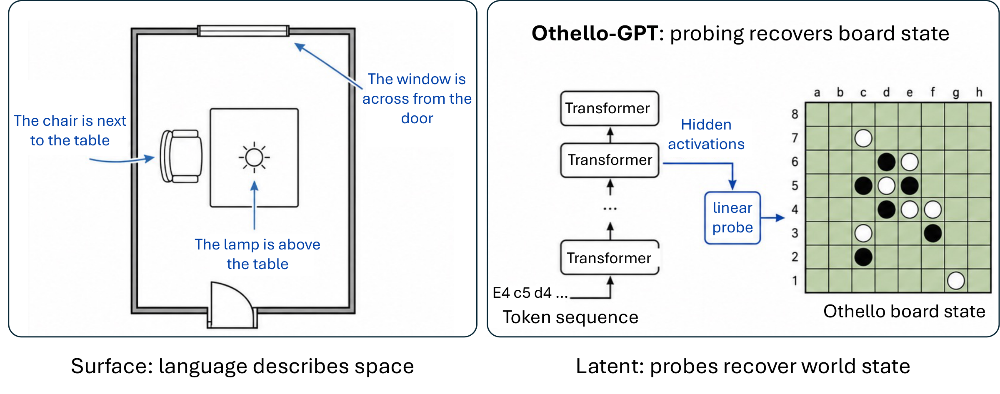
The Evolution of Language Representation Learning
Language representation learning has evolved rapidly over the past decade, from masked-language pretraining (starting with BERT and continued by RoBERTa , XLNet , and T5 ) to autoregressive large language models trained purely on next-token prediction, exemplified by GPT-2 and GPT-3 . Across this progression, a recurring observation is that representation quality scales with model size, data size, and the sophistication of the pretraining objective , and that pretrained representations encode richer structure than the surface text statistics they were trained on . This last property, that language-only training produces representations carrying structure beyond text, is what makes language representations load-bearing for spatial intelligence, as the next subsection makes explicit.
Language Representation Learning Induces Spatial Intelligence
Although LLMs are optimized for sequence prediction, recent work suggests that they can develop structured internal representations that resemble world models . One particularly pertinent demonstration of this on spatial intelligence is Othello-GPT, a transformer trained solely on sequences of legal moves from the board game Othello .
Despite receiving no prior knowledge of the board layout or game rules, Othello-GPT achieves near-perfect accuracy in predicting legal moves (actions in a physical space). Probing experiments reveal that nonlinear classifiers can reliably reconstruct the entire board state from hidden activations . Crucially, interventional studies show that manipulating internal representations of specific tiles alters the model’s predictions in a way consistent with counterfactual board states, providing causal evidence of spatial encoding .
These findings align with broader research indicating that LMs acquire implicit representations of abstract or grounded concepts. For example, models have been shown to encode syntactic structure , color spaces , and even logical state-tracking . Work on chess transcripts similarly shows that LMs can track board positions without explicit supervision . Compared to systems like AlphaZero, which are built with strong inductive biases and explicit access to board states , Othello-GPT highlights the surprising extent to which sequence-only training can lead to emergent spatial reasoning.
In sum, it has been demonstrated that spatially structured representations can emerge in LMs trained only on language-only sequences. This suggests that autoregressive sequence prediction is sufficient, in certain domains, to induce latent world models that encode spatial relations and can causally drive action predictions.
Audio
Audio is fundamentally tied to spatial information. Unlike vision, which directly captures the geometric layout of a scene, acoustic signals encode spatial structure only implicitly, through the physical transformations imposed on sound during propagation. Recovering space from sound is therefore a matter of reading these transformations backward: from the perceptual cues that human hearing exploits, to the computational representations that formalize them, to the learned models and cross-modal couplings that ground sound in the surrounding geometry. This section follows that arc. Human auditory perception interprets the resulting acoustic cues, shaped by these transformations, to infer the spatial layout of the environment. The primary cues are binaural: the Interaural Time Difference (ITD) and the Interaural Level Difference (ILD), both arising from the geometry of the head and the spatial separation of the ears . ITD reflects the difference in arrival time between the two ears and is highly reliable for localizing low-frequency sounds whose long wavelengths exceed head size. Conversely, ILD captures sound pressure level differences caused by head-shadowing effects and serves as a dominant cue for high-frequency localization where such attenuation is more pronounced. However, binaural cues alone cannot fully resolve depth, elevation, or front-back ambiguities.
To address these limitations, the auditory system further exploits monaural spectral cues and environmental reverberation. Direction-dependent spectral filtering produced by the torso, head, and pinnae introduces characteristic notches and peaks, enabling inference of elevation and disambiguation of positions on the cone of confusion . In addition, the room impulse response (RIR) shaped by early reflections, late reverberation, and surface materials encodes information about source distance, enclosure geometry, and environmental structure . These monaural and environmental cues complement binaural information, jointly supporting robust spatial inference under naturalistic conditions.
Computational models formalize these perceptual cues through structured acoustic representations. Head-related transfer functions (HRTFs) capture listener-specific spectral filtering and are foundational to perceptual research and spatial audio rendering. In parallel, spherical-harmonics–based ambisonics representations provide a scene-centric encoding of the sound field around a point in space, with controllable angular resolution. Together, these representations describe how sound interacts with the body and the environment, enabling principled approaches to spatial reasoning, source localization, and scene reconstruction. Taken together, the ability of the auditory system to integrate binaural, monaural, and environmental cues demonstrates that sound carries rich implicit structure about the spatial configuration of sources and the surrounding environment.
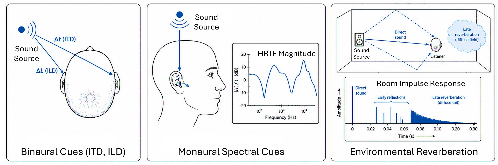
Recent learning-based approaches aim to capture spatial structure directly from raw audio, going beyond analytic models. Neural encoders trained on spatially annotated or simulated data learn to infer direction, distance, and environmental geometry from multi-channel waveforms or spectrograms . Self-supervised frameworks further exploit the natural co-occurrence between sound and space: SoundSpaces and VisualEchoes train models to predict sound propagation or reconstruct echoes from static images. These learned representations encode not only spatial acoustics but also grounding in surrounding geometry, forming a key component of spatial-aware representation.
In real-world environments, spatial audio interacts closely with other sensory modalities. Audio–visual models align acoustic cues with visual observations to localize sounding objects and understand where events occur . Embodied agents further leverage auditory signals to perceive layout and navigate toward acoustic targets, as demonstrated in audio–visual navigation and egocentric audio reasoning . Through such cross-modal grounding, audio provides complementary spatial cues that enhance robustness under visual occlusion and enable reasoning about events beyond the agent’s field of view. This makes audio a powerful complementary modality for spatial representation, especially in scenarios where visual information is partial, noisy, or unavailable.
Domain-Specific Representations
The representations surveyed so far are organized by modality, each general enough to span many applications. A large body of practice, however, develops representations tailored to a specific sensor or downstream task rather than to a modality as such, and these are collected here. What unites them is not a shared signal but a shared design logic: each encodes the inductive biases of its data and trades spatial fidelity against semantic compressibility in the way its sensors and target tasks demand. This section walks through five such domains: embodied robotics, virtual reality, geospatial and remote sensing, clinical and scientific imaging, and indoor intelligent assistants, examining in each the representations that have become canonical and the constraints that shaped them. Beginning with robot perception and planning, systems commonly take as input RGB-D sequences and point clouds (often fused over time into semantic maps that ground observations into a common 3D frame ), and enable tracking, map building, and manipulation. Many such systems also encode visual input into compressed spatial representations, such as keypoints, dense correspondences , and point tracks, used to parameterize 6-DoF grasps and object-centric actions. When available, free space is typically represented with occupancy grids and signed-distance representations , and is often additionally augmented with semantic labels such as traversability and cost for planning. To further enable action from perception, planners frequently operate on affordance representations over parts and candidate contact points, encoding feasible interactions such as graspability or predicted contact quality, thereby enabling policies to execute tasks successfully.
Real-time virtual reality systems often represent scenes with triangle meshes and physically based rendering (PBR) materials, where geometry, normals, and texture define appearance, while 6-DoF camera poses keep virtual content registered to the environment. To enable flexible interaction, such systems include captured geometry (e.g. , spatial meshes, planes, or TSDF and SDF volumes ) and depth-based occlusion layers, which are often paired with collision proxies and semantic labels. Toward photoreal view synthesis, methods increasingly use neural scene representations (e.g. , NeRF-style radiance fields and 3D Gaussian splats ), to support novel-view rendering and relighting. Additionally, for the purposes of enabling characters in virtual reality systems, such characters are commonly represented with skeletal pose and expression parameters (e.g. , SMPL-style body models or Blendshapes), and their navigation relies on navmeshes combined with acceleration structures (e.g. , octrees), to handle moving agents in simulation at high frame rates.
In remote sensing applications, geographic information systems typically represent the world (the Earth), as georeferenced raster fields, for example, optical multispectral and hyperspectral imagery as well as SAR backscatter. These fields are aligned to explicit coordinate reference systems and sensor geometry metadata. Such systems encode terrain through multiple elevation products (e.g. , DEM, DTM, DSM), and compress human infrastructure into vector networks (e.g. , roads, power grids, pipelines), often across scales. And increasingly, they use LiDAR to not only output raw point clouds, but also to output rasterized height maps that support flexible 3D reasoning. These frameworks also commonly operate on multi-temporal stacks and spatiotemporal data with validity masks, which can generate change maps for land-use dynamics and disaster response, as well as feed digital-twin pipelines that generate orthomosaics and photogrammetric point clouds , for simulation and virtual modeling.
Clinical and scientific imaging operate on volumetric scans (e.g. , CT and MRI), in which 3D voxel grids capture geometry and intensities , and explicit spatial transforms (e.g. , rigid, affine, and nonlinear deformation fields) align subjects and modalities into a shared atlas space. In addition, functional measurements (e.g. , fMRI BOLD and calcium imaging) are often stored as 4D spatiotemporal sensors, but are frequently compressed into time series and activation maps after parcellation. When available, such systems represent structural delineations (e.g. , tissue, organ, lesion) as segmentation masks and labeled maps , which are often paired with surface meshes (e.g. , cortical surfaces) that enable surface-based topological comparison across subjects. For diffusion imaging applications, tensor and orientation fields encode local diffusion directions and magnitudes, while tractography streamlines uses these fields to reconstruct fiber pathways and uncover possible structural connectivity. These diverse representations across granularities and temporal scales are often mapped onto one another through atlas spaces and parcellations, enabling multimodal fusion and cross-subject analysis.
Intelligent assistants that operate in indoor environments typically ground language in 3D space using multi-scale maps, for example, 3D reconstructions and floorplans anchored by an estimated 6-DoF agent pose , which are often combined with semantic maps that encode navigable routes. Context for interactions is captured in structured world models (e.g. , scene graphs with typed entities and relations ), which can be augmented with additional semantics like anchors, keypoints, and regions of interest. For the purposes of intelligent and persistent assistance, representations that encode some form of memory are necessary, for example, episodic records and long-horizon object trajectories, which are often represented as probabilistic beliefs over object locations in a room. In addition, assistant systems can optionally contain geofences and occupancy masks, to help define actionable regions for planning.
In summary, many domains have developed representations specifically designed for specialized sensors and encoding the inductive biases of the underlying data structure. We see that these representations model a tradeoff between (spatial) fidelity and (semantic) compressibility, reflecting how the aforementioned sensors sample space, what priors are built in, and what downstream tasks are to be supported.
Chapter 5: Cross-Modal Spatial Representation
The aim of cross-modal spatial representation is a latent space in which heterogeneous perceptual signals, images, 3D scenes, video, audio, and language are aligned so that the spatial structure each carries is preserved rather than averaged away. Where the previous chapter asked how much geometry a single modality holds on its own, the concern here is the opposite and harder one: how signals that encode space in incompatible formats- a pixel grid, a world-frame point set, a waveform, a sentence- can be brought into correspondence without the alignment itself distorting what it aligns.
No single recipe achieves this. Methods differ in what they treat as the unit of alignment, in the objective that binds one modality to another, in how tightly they anchor the space to physical geometry, and in the linguistic interface through which it is queried. These choices are not independent, and the chapter first makes them explicit as a small set of design axes before turning to the individual cross-modal pairings in which they play out.
Overview
We define four axes that structure this cross-modal representation learning problem, which we use to organize the remainder of the chapter. The first axis is the alignment strategy, which we categorize into: contrastive alignment, generative alignment, and programmatic alignment. Contrastive alignment learns a shared embedding space by pushing together paired samples and pulling away negative samples. Such alignment scales to weakly paired data and enables retrieval and coarse grounding, but often needs additional spatial supervision to understand fine-grained relations grounded to specific visual regions. In contrast, generative alignment predicts across modalities (e.g. , captioning from vision or language-conditioned decoding into images, 3D, or video), which gives rich supervision and coverage, but also tends to drift from true underlying geometry unless it is further constrained, for example, by multi-view consistency. Finally, programmatic alignment aligns visual entities to explicit symbols (e.g. , attributes, relation graphs, or concepts in domain-specific languages), which define spatial semantics and naturally interface with program-based, verifiable reasoning, but often requires stronger supervision and trades off expressiveness for structure.
The second axis is spatial modality, which ranges from view-aligned 2D to world-aligned 4D. Here, two-dimensional tokens (e.g. , pixels, patches) are expressive and broadly applicable, but rely on some form of geometric structure to capture faithful spatial relationships. Three-dimensional tokens (e.g. , points, meshes, implicit fields, Gaussian primitives) better encode metric scale and rigid-body invariance (i.e. SE(3) consistency: rotations and translations of the scene do not change the underlying semantics), so that linguistic queries are grounded in world coordinates rather than in image projections. However, they are less ubiquitous and often rely on partial and noisy reconstructions of geometry. Extending 3D through time yields 4D traces (e.g. , tracks), that bind actions to expressive motion and change, but significantly increase computational complexity and require reliable alignment data, while being sensitive to complex semantics such as identity switches. These different spatial modalities correspond to and build upon the single-modality representations of Chapter 1.
The third axis is the language interface, from free-form text to structured interfaces. Free-form text (e.g. , natural language) enables open-vocabulary understanding for referring expressions, retrieval, and instruction following, but comes with corresponding ambiguity in terms of frames of reference, scale, and units. In contrast, structured interfaces (e.g. , programs) reduce such ambiguity by explicitly describing spatial semantics, enabling integration with symbolic reasoning, but are less flexible in capturing the full range of natural language descriptions.
The fourth axis is the training regime, which defines both the level of supervision and coverage. Paired supervision, for example, from captioned videos or referring expressions in 3D scenes, gives strong alignment, but is expensive and can be biased toward frequent compositions and co-occurrences. Weakly paired internet data, for example, from alt-text or transcripts, enable diversity, but, due to low signal-to-noise ratios, often yield noisier spatial grounding.
Below, we organize the chapter by cross-modal pair, using spatial modality (which pair) and alignment strategy (which objective) as the primary organisational axes; the language interface and training regime axes recur as cross-cutting attributes referenced throughout. We give an overview of 2D-text alignment (Section 2.2), 3D-text alignment (Section 2.3), audio-text alignment (Section 2.4), and vision-vision alignment (Section 2.5); each follows the scope and axes defined here.
2D-text
The most developed cross-modal setting pairs images with language. Its defining tension is that a text-aligned 2D representation lives in the image projection, not the world: appearance and layout sit on the pixel grid, yet the relations a caption asserts (left of, above, behind) are only implicit there. How faithfully those relations survive alignment turns on two choices: the granularity at which the image is represented, and the objective that binds it to text, and this section is organized around them. Models often fall into three broad families of visual representations, across different levels of granularity. First are global embeddings that compress an entire image into a single vector paired with a sentence embedding. Here, dual-encoder approaches such as CLIP and ALIGN show that large-scale contrastive pretraining over noisy web data yields strong zero-shot classification and retrieval performance. Second, many works have proposed local tokens tied to image subregions, in which vision-language models, often transformers (e.g. , ViLBERT , LXMERT , UNITER , OSCAR ) input region features extracted by bottom-up detectors (e.g. , Faster R-CNN ) into cross-modal attention blocks, enabling word-region alignment, and hence fine-grained reasoning over object proposals. A third class of methods makes relations explicit; here, models extract intermediate representations that are directly aligned with spatial predicates such as “left-of” or “on.” NSCL and LEFT learn hybrid representations that explicitly bind named visual concepts with latent features. This representational spectrum, from global to region to relation-based, forms the basis for the objectives below.
Contrastive retrieval serves as a common objective for large-scale pretraining, as it learns a shared metric space, without requiring dense and expensive supervision. As representative examples, CLIP and ALIGN maximize agreement between paired image and text embeddings, enabling robust zero-shot transfer; LiT shows that contrastively tuning only the text encoder on top of a locked image encoder can further improve such transfer; and CoCa fuses contrastive learning with captioning in a single encoder-decoder architecture to combine discriminative and generative strengths. Another line of work adapts contrastive alignment to more fine-grained regions. RegionCLIP lifts global contrast to region-text pairs, FILIP proposes late token-token interaction to align words with patches efficiently, X-VLM learns multi-grained alignment such that entities and attributes can be localized and described consistently across granularities, and ALBEF conducts image-text contrast with cross-modal fusion and momentum-distilled pseudo-targets to stabilize learning on noisy web data.
In addition, masked modeling with textual conditioning has been shown to provide a complementary self-supervised signal that encourages cross-modal consistency. LXMERT and UNITER pretrain with masked language modeling, masked region modeling, and image-text matching to build word-region alignment. VLMo generalizes this idea with a mixture-of-modality experts, and BEiT-3 performs masked data modeling over images, text, and image-text pairs in a single multiway transformer.
With more labels, generative objectives can be applied for this representation learning problem, and also complement self-supervised ones. Here, methods teach models to produce language conditioned on images, intuitively, to generate tokens that act as spatially grounded explanations. As representative examples, SimVLM shows that a prefix language-modeling objective trained on weak supervision can improve performance on captioning and visual question answering, BLIP adds caption bootstrapping to denoise web supervision, and GIT simplifies a scalable image-encoder and text-decoder architecture.
In a more fine-grained manner, grounding objectives can directly optimize spatial correspondence between language and 2D pixels, points, or boxes. Here, text-conditioned detection and phrase grounding unify detection and language. MDETR learns a DETR-style detector modulated by text, GLIP pretrains on both detection and grounding corpora and self-generates boxes from image-text pairs to scale supervision, and Grounding DINO augments strong detection backbones with grounded pretraining for open-set detection. At the pixel level, DenseCLIP adapts image-text matching to pixel-text matching for dense prediction, and GroupViT shows that segmentation structure can appear from text supervision alone.
Across these categories, we see that 2D-text representations can emerge from diverse approaches, for example, differing in whether spatial structure is implicit (e.g. , in attention over patches) or explicit (e.g. , in region tokens), and whether supervision is weakly paired and contrastive, generative, or explicitly grounded. Models that learn 2D vision-language representations now increasingly combine all contrastive, captioning, grounding, and masked objectives to solve a wide range of downstream tasks, from (more semantic) referring expression comprehension to (more visually grounded) localization.
3D-text
Moving from the image plane to the scene itself removes the projection gap that limits 2D-text alignment: language is now bound to geometry expressed in world coordinates, so that metric scale and the invariance of meaning under rotation and translation become properties the representation can actually enforce. The difficulty shifts accordingly, from recovering relations that pixels hide to obtaining and aligning 3D structure that is often partial, noisy, and expensive to annotate. As before, the representation families and the alignment objectives acting on them jointly organize the section. Two complementary families of representations have emerged in this domain. First, object-centric and scene-centric encoders learn world-aligned tokens, then align them to language via contrastive or generative objectives. ULIP instantiates this paradigm by aligning point-cloud features to an image-text space, scaling supervision through synthetic triplets. OpenShape extends this direction further with curated 3D corpora and hard negative mining to support open-world 3D retrieval, and OpenScene co-embeds dense features for 3D scenes with text and image pixels in CLIP feature space. Additional projection strategies have also been explored, for example, adapting 2D vision-language models to 3D by rendering depth or multi-view images and transferring CLIP’s alignment to point clouds; PointCLIP and CLIP2Point do so and enable adapters for cross-modal transfer.
A second family binds language to implicit scene fields. Here, LERF optimizes a dense 3D language field inside NeRF , by rendering CLIP embeddings across views and enables open-vocabulary queries that return relevancy volumes. CLIP-Fields similarly distills 2D vision-language cues into 3D implicit maps to support semantic search and view localization. In addition, replacing NeRF with 3D Gaussian Splatting yields efficient language fields; for example, LangSplat combines CLIP features with Gaussians for fast, precise open-vocabulary querying. These methods build on advances in explicit 3D primitives and real-time rendering to maintain high-fidelity representations while training efficiently.
In this 3D-text domain, objectives also follow the representation choices. Contrastive alignment remains common, for example, ULIP trains with InfoNCE over point clouds-images-text, while OpenShape scales both data and hard-negative mining. Projection-based approaches transfer contrastive objectives to depth, and multi-view renders to align point clouds with text labels. Grounded objectives enforce explicit 3D correspondence between language and geometry. 3D referring expression datasets and models (e.g. , ScanRefer , ReferIt3D , 3D-VisTA , BUTD-DETR , NS3D , InstanceRefer ) localize targets from language descriptions and learn to understand complex relations dependent on viewpoints.
Here, geometry-aware representations are critical for aligning language with the physical world. Ideal 3D-text representations should respect SE(3) structure (e.g. , rotations and translations should not spuriously change semantics), yet cross-modal alignment should still encode view-dependent language (e.g. , “the chair to the left of the table”). To this end, priors from equivariant architectures, such as the SE(3), Transformer and Vector Neurons , can be integrated into 3D-text models. Implicit fields enable different options; while NeRF-based language fields are not strictly equivariant, multi-view consistency and cross-view regularization can improve their spatial coherence. Alternatively, Gaussian splatting uses a canonical world frame and enables efficient supervision during language-field optimization. Overall, these representation choices and objectives give rise to a wide range of approaches for 3D-text alignment, from tri-modal contrastive pretraining to implicit or splat-based language fields.
Audio-text
Sound aligns to language along a different primary dimension than vision does. What an acoustic signal encodes first is time, the sequence of events as they unfold, and only secondarily, and coarsely, does it carry spatial attributes such as direction of arrival or distance. Audio-text representation learning therefore aims for embeddings that are open-vocabulary and temporally grounded, with spatial awareness added where the labels permit. The section again moves from the representation granularity to the objectives that align it with text. One such direction is to embed audio-text representations at a coarse level, for example, with global encoders mapping an entire audio clip and a full sentence into a joint space, enabling zero-shot retrieval. Here, CLAP and LAION-Audio scale contrastive language-audio pretraining with curated datasets, and show strong transfer across retrieval benchmarks. In addition, AudioCLIP extends CLIP to a tri-modal image-text-audio setting, to leverage visual-text semantics, and Wav2CLIP distills CLIP’s alignment into an audio encoder when audio-text pairs are scarce.
Beyond global representations, a line of work that aims to extract representations at a more fine-grained scale learns temporally local structure, for example, by operating on spectrogram patch tokens with transformer architectures. The Audio Spectrogram Transformer (AST) and PaSST show that attention over time-frequency patches captures long-range temporal dependencies, and HTS-AT further returns frame-level maps that are useful for event localization. These tokenizations make it straightforward to bind subclip semantics to text (e.g. , “a door slams, then footsteps echo”). Self-supervised masked objectives, e.g. , SSAST , MAE-AST , and Audio-MAE , additionally pretrain such backbones by reconstructing masked patches, while BEATs adds an iterative tokenizer-encoder scheme that encourages high-level semantic abstraction.
Across advances in representations and objectives, an emergent and increasingly common paradigm is to first pretrain an audio backbone with masked modeling, then align embeddings to text via contrastive losses, and finally, optionally add a captioning head to increase supervision. In tasks where spatial semantics is important, incorporating spatial labels, such as direction-of-arrival, helps refine the audio-text representation space. By leveraging these approaches, models can learn to align predicates such as “left-of” or “far” with meaningful acoustic features. These methods enable models to learn embeddings that are not only open-vocabulary and temporally grounded, but also (coarsely) spatially aware.
Vision-vision
A common approach to improving vision-language alignment is to first align vision with vision, intuitively, enforcing geometric consistency such that visual features are anchored to a persistent world model before combining with language. Concretely, the goal of vision-vision representation learning is to fuse visual inputs (e.g. , multiview RGB) into a set of world-aligned scene tokens, such that they are invariant to viewpoint changes and can be later queried by language. Here, we discuss three broad families of approaches: lifting 2D features into 3D scene tokens, projecting these 3D tokens back into 2D for supervision, and using audiovisual correspondence to add constraints that further anchor the world model.
Lifting 2D to 3D follows two complementary directions. The most classical and canonical approach first estimates camera poses and geometry with structure-from-motion (SfM) and simultaneous localization and mapping (SLAM), then adds semantics to the generated map. Here, commonly used frameworks include COLMAP for SfM , KinectFusion and ElasticFusion for dense RGB-D mapping , and ORB-SLAM2 for SLAM . Learning-based reconstructions build upon this direction by back-projecting per-view features into a 3D volume and predicting TSDF or occupancy directly from posed images, for example, as in NeuralRecon . Though components may differ, all of these approaches output view-agnostic scene tokens that can later be guided by linguistic supervision and queries.
Projecting 3D back to 2D provides self-supervision. Differentiable rendering in neural fields anchors world-aligned tokens to multiview observations, and enforces cross-view consistency . Distilling 2D foundation features into 3D fields adds semantic knowledge without manual, expensive 3D labels. Here, works typically transfer 2D features into a co-registered 3D feature volume, which can be rendered to any view . In addition, distillation is not limited to 2D language targets alone; for example, ImageBind proposes a multisensor feature target (image-text-audio-depth-thermal-IMU), which enables transfer of cross-sensor semantics even when there are few explicit labels. Although these distillations are vision-vision processes, they are explicitly designed for language alignment later. The key benefit is that now vision-language alignment is conducted on a geometry-consistent representation, rather than directly on view-specific features.
Audio-visual alignment can further constrain this vision-vision world model; self-supervised objectives have been designed to enforce consistency between audio and visual motion, which allows models to localize sound sources and disambiguate co-occurring events . Such cues provide directional or timing semantics that help anchor linguistic queries to specific world-aligned entities, especially in cases with multiple candidate entities. Across this variety of approaches, vision-vision representation learning methods all aim to learn a persistent world model that is geometrically and temporally consistent before adding any linguistic supervision, therefore making downstream cross-modal alignment more data-efficient and spatially faithful to the physical world.
Spatial Intelligence: From Perception to Generation
![Part III in one view: perception turns a given scene into
structured spatial evidence (what, where, how it moves), building from
entities to geometry, structure, motion, and multiple modalities;
reasoning turns that evidence into relations, plans, and predictions,
through symbolic, learned, foundation-model, and hybrid approaches;
generation maps an intent back into spatial content of increasing
structure, from images and 3D scenes to video, motion, 4D content, world
models, and programs, closing the loop.](book-assets/figures/part3.png)
If the previous part asked how space is represented, this one asks what a system does with that representation. Spatial intelligence, in the working sense of this book, is the ability to turn spatial structure into understanding and understanding into action, and it resolves into three capabilities that build on one another: perceiving space, reasoning over it, and generating it. These are less separate subfields than three phases of a single loop running from sensory input to spatial artifact.
Perception comes first because everything downstream depends on it: it converts raw observation into structured spatial evidence, answering what is present, where it lies, and how it moves. Reasoning takes that evidence as given and draws consequences from it, inferring relations, planning routes and actions, and predicting how a configuration will change under intervention. Generation closes the loop by running the process in reverse, mapping an intent (a prompt, a constraint, a partial observation) back into concrete spatial content: an image, a shape, a scene, a motion, an entire simulated world. Read in sequence, the three chapters trace the path from a scene that is given, to one that is understood, to one that is made.
Each of the three rests on the representations built in the previous part and supplies capabilities that the applications of the next will draw on; together they are the core of what makes a system spatially intelligent.
Chapter 6: Spatial Perception
Spatial perception is the foundational layer of spatial intelligence: it turns raw sensory input into the structured spatial evidence that everything downstream depends on, answering what is present, where it lies, and how it moves. It is what stands between an agent and a scene, and the reliability of every later inference is bounded by the reliability of what perception delivers.
The chapter follows a single progression, from the elemental to the structured. It begins with recognizing the discrete entities that populate a scene, grounds them in metric geometry, then binds them into relational and scene-level structure, extends that structure across time, and finally broadens it beyond vision by fusing complementary modalities. Each step presupposes the ones before it, so that perception builds from isolated percepts toward a dynamic, multimodal model of space that reasoning and generation can act on.
Spatial Entity Recognition
Before space can be measured or organized; its contents must be named. Spatial entity recognition is that entry point: it answers what is present, and every later geometric and relational step builds on the entities it names. Recognition operates at several granularities, and the section is ordered accordingly: detecting discrete object instances, delineating dense regions of pixels or points by segmentation, pinning down sparse keypoints and landmarks, and finally assigning a holistic scene label. What unites them is that they recover identity and category, not yet geometry; where each entity sits and how it is oriented is taken up next.
Object Detection
Task Definition
Given a 2D image \(I\), 2D object detection identifies instances of predefined object classes and localizes each one in the image plane. The output is a set of detections \[\begin{equation} \mathcal{D}=\{(c_i, b_i, s_i)\}_{i=1}^{N}, \end{equation}\] where \(c_i\) is the predicted class, \(b_i=(x_i,y_i,w_i,h_i)\) a 2D bounding box (center and size, or corner coordinates), and \(s_i\in[0,1]\) a confidence score. In short, the task answers what objects are where. Figure 1.7 summarizes the 2D task and its detector families.
3D object detection keeps the same set-of-detections output but places each box in metric 3D space. The input is a LiDAR point cloud \(\mathcal{P}=\{\mathbf{p}_j\}_{j=1}^{M}\) with \(\mathbf{p}_j\in\mathbb{R}^{3}\) (often with an intensity channel), one or more calibrated images, or both, and each box becomes \[\begin{equation} b_i=(x_i,y_i,z_i,\;l_i,w_i,h_i,\;\theta_i), \end{equation}\] a 3D center, the physical length, width, and height, and a heading angle \(\theta_i\) about the vertical axis; indoor benchmarks often use axis-aligned boxes and drop \(\theta_i\). Because the box is expressed in the sensor or ego frame rather than the image plane, a 3D detection already carries metric position and heading, which is why driving and robotics stacks consume it directly.
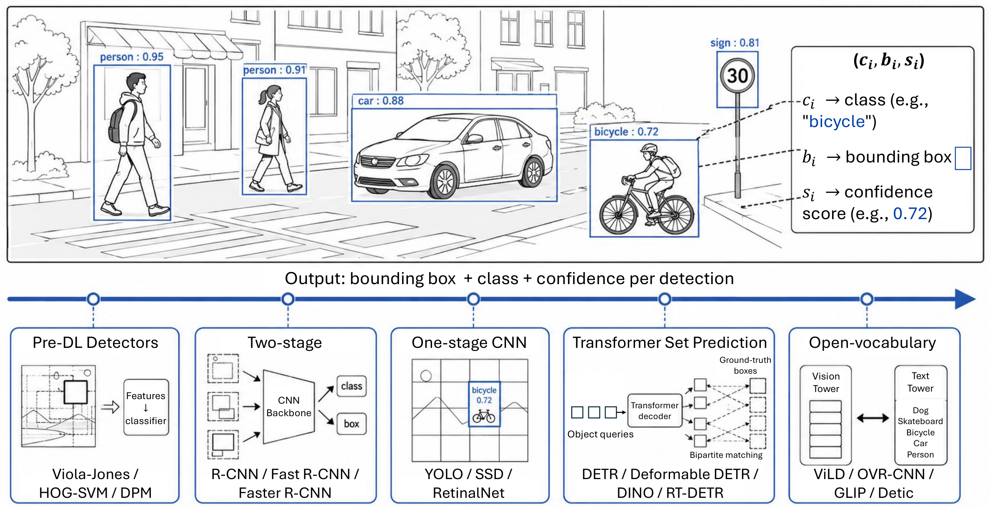
Methodology
Before Deep Learning.
Early detectors ran a sliding window over multi-scale image pyramids and classified each candidate region with hand-crafted features and shallow models. Viola–Jones combined Haar-like features with an AdaBoost cascade for real-time face detection; HOG features with linear SVMs became the standard pipeline for pedestrians and generic objects; and deformable part-based models (DPMs) represented an object as parts connected by deformable constraints. Manual feature design, dense-window evaluation, and limited robustness to pose, scale, and occlusion capped this line and motivated the move to learned features.
Two-stage Detectors.
R-CNN first generates category-independent region proposals and then classifies each with a CNN, a large accuracy gain over hand-crafted pipelines bought with high computational cost. Fast R-CNN shares convolutional computation across proposals through ROI pooling and trains classification and box regression jointly; Faster R-CNN adds a Region Proposal Network so that proposals are nearly free and the whole detector trains end-to-end. Sparse R-CNN later replaced dense anchors with a small set of learnable proposals, reaching end-to-end detection without a transformer.
One-stage Detectors.
One-stage detectors drop the proposal step and predict classes and boxes directly from the feature map. YOLO casts detection as a single regression over the whole image, trading localization accuracy for speed; YOLOv2 and YOLOv3 add anchors, multi-scale prediction, and stronger backbones, and later versions refine training and deployment. SSD predicts from multiple feature maps at different scales, and RetinaNet introduces the focal loss to counter the extreme foreground–background imbalance, bringing one-stage accuracy level with two-stage methods. Recent YOLO models move to anchor-free, decoupled heads (YOLOv8 ) and NMS-free end-to-end training (YOLOv10 ), converging with the set-prediction detectors below.
Transformer-based Detectors.
DETR reformulates detection as direct set prediction with a transformer encoder–decoder, removing anchors and non-maximum suppression at the price of slow convergence and weak small-object performance. Deformable DETR attends to a sparse set of sampling points, which fixes both; Conditional DETR conditions decoder attention on spatial queries for faster training; DINO adds denoising training and better query initialization; and RT-DETR brings the family to real-time speed.
Open-Vocabulary Detection.
Open-vocabulary detection (OVD) recognizes objects outside a fixed label set by aligning region features with text embeddings. The line evolved from embedding distillation to large-scale vision–language pretraining to data-driven vocabulary expansion: ViLD and OVR-CNN distill or learn a shared region–text embedding space from image–text pairs; GLIP unifies detection with phrase grounding under grounded language–image pretraining; and Detic shows that image-level labels over a large vocabulary suffice to train the classifier of an open-vocabulary detector. OWL-ViT , Grounding DINO , and YOLO-World push the same idea toward simpler transfer, tighter grounding, and real-time speed; see the surveys for a fuller account.
3D Object Detection.
3D detectors differ mainly in how they turn sensor data into something a network can process; the detection heads on top largely reuse the 2D families above. On LiDAR, VoxelNet learns features inside voxels and runs 3D convolutions over the grid, and PointPillars collapses the vertical axis into pillars so that an ordinary 2D CNN on the bird’s-eye-view (BEV) plane does the rest at real-time speed. Point-based detectors keep the raw points: PointRCNN generates proposals from PointNet++ features of segmented foreground points, PV-RCNN combines voxel and point features, and CenterPoint replaces anchors with BEV center heatmaps, the 3D counterpart of anchor-free 2D detection. Indoor scenes are cluttered and object centers often fall in empty space, which favors voting: in VoteNet surface points vote for object centers before grouping, and 3DETR carries DETR-style set prediction over to point clouds.
Camera-only 3D detection has to infer the depth that LiDAR measures. Monocular detectors regress depth, size, and orientation on top of a 2D detection (Section 1.2.3 treats them as metric estimation). Pseudo-LiDAR instead converts a predicted depth map into a point cloud and runs a LiDAR detector on it, showing that much of the camera–LiDAR gap came from the representation rather than from depth quality alone. Multi-camera systems lift image features into a shared BEV space, either bottom-up, as Lift-Splat-Shoot does by predicting a depth distribution per pixel and splatting features onto the ground plane, or top-down, as DETR3D and BEVFormer do by projecting 3D queries or BEV cells into the images to sample features. Fusion combines both sensors, from Frustum PointNets , which crops the point cloud with 2D image detections, to BEVFusion , which merges camera and LiDAR features on a common BEV map. Cube R-CNN trains a single image-based detector across indoor and outdoor domains on Omni3D. Deployment constraints for driving are discussed in Section 1.2, and video detection, which adds cross-frame association to the same output set, under tracking in Section 1.4.2.
| Dataset | Modality, Domain | Class | train | validation | test | |||
|---|---|---|---|---|---|---|---|---|
| images | boxes | images | boxes | images | boxes | |||
| VOC-2007 | image, general | 20 | 2,501 | 6,301 | 2,510 | 6,307 | 4,952 | 14,976 |
| VOC-2012 | image, general | 20 | 5,717 | 13,609 | 5,823 | 13,841 | 10,991 | - |
| ILSVRC-2014 | image, general | 200 | 456,567 | 478,807 | 20,121 | 55,502 | 40,152 | - |
| MS-COCO-2015 | image, general | 80 | 82,783 | 604,907 | 40,504 | 291,875 | 81,434 | - |
| MS-COCO-2017 | image, general | 80 | 118,287 | 860,001 | 5,000 | 36,781 | 40,670 | - |
| Objects365-2019 | image, general | 365 | 600,000 | 9,623,000 | 39,000 | 479,000 | 100,000 | 170,000 |
| OpenImages | image, general | 600 | 1,743,042 | 14,610,229 | 41,620 | 303,980 | 125,436 | 937,327 |
| ImageNet VID | video, general | 30 | 3,862 | - | 555 | - | 937 | - |
| LVIS | image, general | 1,203 | 100,000 | - | - | - | - | - |
| Omni3D | 3D (image), general | 98 | 175,573 | - | 19,127 | - | 39,452 | - |
| Method | Backbone | #P (M) | FLOPs (G) | AP | AP\(_{50}\) | AP\(_{75}\) | AP\(_S\) | AP\(_M\) | AP\(_L\) | Year |
|---|---|---|---|---|---|---|---|---|---|---|
| Two-stage detectors | ||||||||||
| Faster R-CNN | R50-FPN | 41.5 | 207 | 37.4 | 58.1 | 40.4 | 21.2 | 41.0 | 48.1 | 2015 |
| Sparse R-CNN | R50-FPN | 106 | 174 | 45.0 | 64.1 | 49.4 | 26.9 | 47.2 | 59.5 | 2021 |
| One-stage CNN detectors | ||||||||||
| SSD512 | VGG-16 | 27 | 88 | 28.8 | 48.5 | 30.3 | 10.9 | 31.8 | 43.5 | 2016 |
| RetinaNet | R50-FPN | 38 | 198 | 36.5 | 55.0 | 39.1 | 19.9 | 40.3 | 48.7 | 2017 |
| YOLOv3 | DarkNet-53 | 62 | 156 | 33.0 | 57.9 | 34.4 | 18.3 | 35.4 | 41.9 | 2018 |
| Modern YOLO | ||||||||||
| YOLOv5-s | CSPDarkNet | 7.2 | 16.5 | 37.4 | – | – | – | – | – | 2020 |
| YOLOv8-x | CSP-ELAN | 68.2 | 257.8 | 53.9 | – | – | – | – | – | 2023 |
| YOLOv10-l | CSP-ELAN | 24.4 | 120.3 | 53.2 | – | – | – | – | – | 2024 |
| Transformer set-prediction detectors | ||||||||||
| DETR | R50, 500 ep | 41 | 86 | 42.0 | 62.4 | 44.2 | 20.5 | 45.8 | 61.1 | 2020 |
| Deformable DETR | R50, 50 ep | 40 | 173 | 43.8 | 62.6 | 47.7 | 26.4 | 47.1 | 58.0 | 2021 |
| DINO | R50, 4-sc., 12 ep | 47 | 279 | 49.0 | 66.6 | 53.5 | 32.0 | 52.3 | 63.0 | 2023 |
| RT-DETR | R50 | 42 | 136 | 53.1 | 71.3 | 57.7 | 34.8 | 58.0 | 70.0 | 2024 |
Datasets and Metrics
Table [tab:object_detection_dataset] summarizes the benchmarks that shaped the field. PASCAL VOC fixed the evaluation protocol and remained the reference through the early deep-learning era despite its modest scale. MS COCO , with complex everyday scenes and segmentation masks alongside boxes, then became the standard for both detection and segmentation. Open Images , Objects365 , and LVIS scale the vocabulary to hundreds and then over a thousand categories, with LVIS deliberately emphasizing rare classes, which turned it into the canonical long-tail and open-world benchmark.
Evaluation follows the precision–recall framework. A detection \((\hat{c}, \hat{b}, \hat{s})\) is correct when \(\hat{c}\) matches the ground-truth class and \(\hat{b}\) overlaps the ground-truth box \(b\) above an Intersection over Union (IoU) threshold \[\begin{equation} \mathrm{IoU}(\hat{b}, b) = \frac{|\hat{b} \cap b|}{|\hat{b} \cup b|}. \end{equation}\] Sorting the detections of a class by confidence traces a precision–recall curve whose area is the Average Precision (AP); the mean Average Precision (mAP) averages AP over classes. Benchmarks differ chiefly in the IoU threshold: PASCAL VOC uses a single \(\mathrm{IoU} = 0.5\) (AP\(_{50}\)), whereas COCO averages over ten thresholds from \(0.5\) to \(0.95\) to obtain its primary AP and reports AP\(_{50}\) and AP\(_{75}\) as diagnostic slices. COCO further stratifies by object size into AP\(_S\) (area \(<32^2\) pixels), AP\(_M\) (\(32^2\)–\(96^2\)), and AP\(_L\) (\(>96^2\)), which exposes the persistent difficulty of small objects.
3D detection is benchmarked mainly on driving data, KITTI , nuScenes , and the Waymo Open Dataset , and indoors on SUN RGB-D and ScanNet ; Omni3D (Table [tab:object_detection_dataset]) pools image-based 3D annotations from both. The IoU above is computed between 3D boxes or their BEV footprints: KITTI reports 3D and BEV AP at IoU \(0.7\) for cars and \(0.5\) for pedestrians and cyclists, and indoor benchmarks report mAP at 3D IoU \(0.25\) and \(0.5\). nuScenes matches detections by center distance on the ground plane (\(0.5\), \(1\), \(2\), and \(4\) m) instead of IoU and folds translation, scale, orientation, velocity, and attribute errors into its nuScenes Detection Score (NDS); Waymo weights AP by heading accuracy (APH).
Table [tab:objdet_coco_results] reports COCO val2017 results across the three families. On the canonical ResNet-50 backbone, AP has climbed from \(37.4\) for Faster R-CNN to \(53.1\) for RT-DETR over roughly a decade, with much of the recent gain attributable to transformer-based set prediction (DETR \(\rightarrow\) Deformable DETR \(\rightarrow\) DINO) and improved denoising-style query initialization. The AP\(_S\) column highlights the well-documented small-object weakness of vanilla DETR (\(20.5\)); deformable attention and denoising progressively close this gap (Deformable DETR \(26.4\), DINO \(32.0\), RT-DETR \(34.8\)). On the efficiency frontier, the modern YOLO line (YOLOv8-x at \(53.9\), YOLOv10-l at \(53.2\)) matches RT-DETR in accuracy at substantially higher throughput, so the traditional accuracy–speed divide between CNN one-stage detectors and transformer set prediction has largely closed.
Challenges
The accuracy–efficiency trade-off remains unresolved. The transformer-based detectors that top COCO and open-vocabulary leaderboards are still expensive at inference: even with deployment stacks such as TensorRT, their latency and parameter counts rule out most mobile and embedded targets, while the lightweight real-time detectors that fit those budgets trail them in accuracy. The same tension recurs for every recognition task in this section. Open-world detection degrades on the hardest instances. Open-vocabulary detectors extend recognition beyond a fixed label set, yet still miss small objects and mislabel rare categories, precisely the long-tail regime that motivated LVIS. Detection inside multimodal large language models is still immature. Recent systems fold detection into MLLMs as a grounding primitive that ties image regions to language, but even the strongest closed-source models post markedly lower numbers than specialist detectors on standard benchmarks . 3D detection is bounded by depth. For camera-only detectors, localization error is dominated by depth error, which grows with distance ; LiDAR measures depth directly but its returns thin out with range, so distant and small objects are seen through a handful of points.
Segmentation
Segmentation partitions an image, a video, or a 3D scan into meaningful regions. Before deep learning it was a mid-level grouping problem, clustering pixels by similarity somewhere between low-level edge detection and high-level recognition; learned models turned it into dense prediction, with class labels, instance identities, and temporal consistency attached to every region. Figure 1.8 shows the principal segmentation map types produced on a common scene.
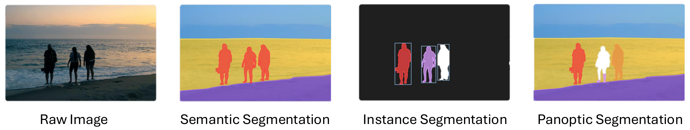
Task Definition
Semantic Segmentation: Given an input image \(I \in \mathbb{R}^{H \times W \times 3}\), semantic segmentation assigns a class label to every pixel, producing a dense label map \[\begin{equation} S \in \{1, \dots, C\}^{H \times W}, \end{equation}\] where \(C\) is the number of classes; instances of the same class are not distinguished.
Instance and Panoptic Segmentation: Instance segmentation detects and segments each object instance separately. The output is a set of labeled masks \[\begin{equation} \mathcal{Y} = \{(m_i, c_i)\}_{i=1}^{N}, \end{equation}\] where \(m_i \in \{0,1\}^{H \times W}\) is the binary mask of the \(i\)-th instance and \(c_i\) its class; masks may overlap, and only countable thing classes are covered. Panoptic segmentation keeps the same output form but requires the \(K\) masks to form a non-overlapping partition of the image that covers thing instances and stuff regions alike, each stuff class as a single mask.
Video Segmentation: Given a video clip \(V \in \mathbb{R}^{T \times H \times W \times 3}\), video segmentation predicts temporally consistent masks across frames, output as a set of mask tubes \[\begin{equation} \mathcal{Y} = \{(m_i, c_i)\}_{i=1}^{N}, \quad m_i \in \{0,1\}^{T \times H \times W}, \end{equation}\] each tracking an object or region over time, with semantic, instance, and panoptic variants as above.
3D Segmentation: Given a point cloud \(\mathcal{P}=\{\mathbf{p}_j\}_{j=1}^{M}\) with \(\mathbf{p}_j\in\mathbb{R}^{3}\) and optional color or intensity, 3D semantic segmentation labels every point, \[\begin{equation} S\in\{1,\dots,C\}^{M}, \end{equation}\] and 3D instance and panoptic segmentation predict point masks \(m_i\in\{0,1\}^{M}\) under the same set form and overlap constraints as their image counterparts; voxels or mesh vertices take the place of points for other 3D representations. The definitions carry over unchanged. What changes is the input: the points are unordered, unevenly spaced, and sparse, and that is where 3D methods depart from image methods.
Methodology
Figure 1.9 summarizes the method families surveyed below.
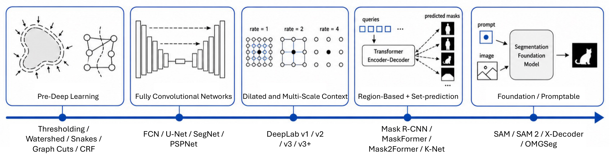
Before Deep Learning.
Classical segmentation grouped pixels either by appearance or by minimizing an energy. The first family includes thresholding of pixel intensities , region growing that merges similar neighbors , \(k\)-means clustering in feature space , and the watershed transform, which treats the image as a topographic surface and segments by catchment basins . The second family includes active contours (snakes) that evolve a curve toward object boundaries , graph cuts that solve certain segmentation energies to global optimality , and Markov and conditional random fields that impose spatial coherence probabilistically ; the last of these carried over directly into early learning-based segmenters.
Fully Convolutional Networks.
FCNs replace fully connected layers with convolutions, enabling end-to-end dense prediction at arbitrary input size. U-Net adds a symmetric encoder–decoder with skip connections that fuse low- and high-level features, SegNet reuses max-pooling indices for cheap upsampling and boundary recovery, and PSPNet aggregates global and local context through pyramid pooling.
Dilated and Multi-Scale Context Modeling (DeepLab Series).
The DeepLab series introduces atrous (dilated) convolution to enlarge the receptive field without losing resolution (v1 ), Atrous Spatial Pyramid Pooling for multi-scale context (v2 , refined with batch normalization and stronger backbones in v3 ), and an encoder–decoder that recovers boundary detail from low-level features (v3+ ).
Region-Based Mask Prediction (Mask R-CNN Family).
Mask R-CNN extends Faster R-CNN with a parallel mask branch and ROIAlign, which removes the quantization error of ROI pooling and makes pixel-accurate masks possible. PANet , Hybrid Task Cascade , and PointRend refine it through better feature flow, cascaded box–mask prediction, and point-wise boundary rendering respectively; this two-stage, region-based family dominated instance segmentation until transformers arrived.
Transformer Backbones and Representation Learning.
Transformer-based segmentation, following DETR, favors unified query-based formulations that bridge detection and segmentation, predict masks end-to-end without hand-crafted post-processing, and allow joint learning across tasks and modalities. The first step was the backbone: SETR applies a pure ViT to semantic segmentation with a simple decoder, SegFormer pairs a lightweight hierarchical transformer with an MLP decoder for a favorable accuracy–efficiency trade-off, and Swin Transformer uses shifted-window attention to produce CNN-like multi-scale features and has become a default segmentation backbone. Self-supervised pretraining such as MAE supplies ViT backbones that transfer well to dense prediction.
Query-based Transformer Segmentation.
Query-based methods cast segmentation as set prediction with object or mask queries. MaX-DeepLab is the first purely mask-based panoptic framework without box supervision; MaskFormer unifies semantic, instance, and panoptic segmentation by predicting mask embeddings with class labels; K-Net treats segmentation as kernel prediction with iterative refinement; and Mask2Former adds masked cross-attention and multi-scale decoding, setting a strong baseline across all three tasks. QueryInst and Panoptic SegFormer are variants that respectively generate instance-specific kernels from queries and decouple semantic from instance queries.
Video and Multimodal Transformer-based Segmentation.
VisTR predicts spatio-temporal mask tubes end-to-end from object queries; Video K-Net unifies video semantic, instance, and panoptic segmentation by associating queries across time; and TubeFormer adds tube-level attention for long-term consistency. X-Decoder and OMGSeg use multimodal pretraining to cover open-vocabulary, class-agnostic, image and video segmentation within a single model.
SAM series.
SAM made segmentation promptable: trained on the SA-1B dataset of over one billion masks, it decouples a heavy image encoder from a light prompt-conditioned mask decoder and produces masks from points, boxes, or text with strong zero-shot generalization. SAM 2 extends this to video, propagating masks across frames with a memory mechanism while keeping interactive control.
3D Point Cloud Segmentation.
Point-cloud segmenters split by how they impose structure on the points (Section 1.2.3). Point-based networks consume raw points: PointNet applies a shared MLP to every point and pools symmetrically, PointNet++ adds hierarchical neighborhoods, DGCNN builds \(k\)-nearest-neighbor graphs that are recomputed in feature space at every layer, KPConv defines convolution kernels by points placed in space, and RandLA-Net relies on random sampling to scale to scenes of millions of points. Sparse voxel networks such as MinkowskiNet and SPVNAS quantize the points and convolve only occupied voxels, which keeps 3D convolution affordable on room- and street-scale scans. Projection methods take the opposite route: RangeNet++ unrolls a LiDAR sweep into a range image, runs a 2D segmenter in real time, and projects the labels back onto the points. Transformers entered with Point Transformer , and Point Transformer V3 replaces exact neighbor search with serialized point orderings so that attention scales to large scenes.
Instance segmentation in 3D retraces the 2D history. PointGroup predicts per-point offsets toward instance centers and clusters the shifted points, a bottom-up grouping; Mask3D applies Mask2Former-style queries to sparse voxel features and predicts instance masks directly. Because 3D labels remain scarce, open-vocabulary 3D segmentation mostly borrows from 2D foundation models: OpenScene distills CLIP-aligned pixel features into points, and OpenMask3D classifies class-agnostic 3D instance masks with CLIP features aggregated over multi-view images.
| Dataset | Purpose | Classes | Resolution | Samples | ||
|---|---|---|---|---|---|---|
| Train | Valid | Test | ||||
| \(\bullet\) 2D | ||||||
| Pascal VOC | Generic | 21 | Variable | 1464 | 1449 | Private |
| MS COCO | Generic | 80+ | Variable | 82,783 | 40,504 | 81,434 |
| ADE20K | Generic | 150 | Variable | 20,210 | 2,000 | 3,000 |
| COCO-stuff | Generic | 172 | Variable | 118,000 | 5,000 | 20,000 |
| IDD | Urban/Driving | 34 | Variable | 6,993 | 981 | 2,029 |
| Dark Zurich | Urban/Driving | 19 | 1920\(\times\)1080 | 8,377 | 50 | 151 |
| ACDC | Driving | 30 (19) | 2048\(\times\) 1024 | 1,600 | 406 | 2,000 |
| PartImageNet | Generic-Part | 158 | Variable | 16,540 | 2,957 | 4,598 |
| SiftFlow | Outdoor | 33 | 256\(\times\)256 | 2,688 | - | - |
| BSD | Generic | 30 | Variable | 12,000 | - | - |
| Youtube-Objects | Generic/Video | 10 | 480\(\times\)360 | 126 | - | - |
| Cityscapes | Urban | 30 (8) | 2048 \(\times\)1024 | 2975 | 500 | 1525 |
| CamVid | Urban/Driving | 32 | 960\(\times\)720 | 701 | - | - |
| Mapillary Vistas | Street | 65 | - | 18,000 | - | - |
| \(\bullet\) 3D | ||||||
| NYU-D V2 | Indoor | 40 (13) | 640\(\times\)480 | 795 | - | 654 |
| SUN-3D | SfM/Video | - | 640\(\times\)480 | 415 seqs | - | - |
| SUN RGB-D | Indoor | 37 | Variable | 5,285 | - | 5,050 |
| ScanNet | Indoor | 20 | Variable | 1,201 | 312 | 100 |
| SemanticKITTI | LiDAR/Driving | 28 | Point cloud | 19,130 | 4,071 | 20,351 |
Datasets and Metrics
Table [tab:segmentation_dataset] summarizes the main benchmarks. PASCAL VOC anchored the classical semantic-segmentation era with 20 foreground classes and no instance labels. MS COCO , with semantic, instance, box, and panoptic annotations over complex object-centric scenes, is the shared testbed for all three modern task types. Cityscapes and Mapillary Vistas specialize to street scenes, the latter stressing long-tail classes and diverse geographies, and ADE20K targets holistic scene parsing over 150 object and stuff classes. The 3D rows of the table cover indoor RGB-D scans (NYU-D V2, SUN RGB-D, ScanNet) and outdoor LiDAR (SemanticKITTI), and S3DIS is a further indoor standard.
Segmentation evaluation reuses IoU (Section 1.1.1) with masks in place of boxes. For semantic segmentation the headline metric is the mean Intersection over Union (mIoU), \[\begin{equation} \mathrm{mIoU} = \frac{1}{C} \sum_{k=1}^{C} \frac{\mathrm{TP}_k}{\mathrm{TP}_k + \mathrm{FP}_k + \mathrm{FN}_k}, \end{equation}\] where \(C\) is the number of classes and \(\mathrm{TP}_k\), \(\mathrm{FP}_k\), \(\mathrm{FN}_k\) count the true-positive, false-positive, and false-negative pixels for class \(k\). Because the average is unweighted, mIoU is sensitive to rare classes, which is one motivation behind ADE20K and Mapillary Vistas; pixel accuracy is dominated by frequent classes (e.g. , sky, road) and is less informative.
For instance segmentation, the COCO mask-AP protocol matches predictions to ground truth by mask IoU and averages AP over IoU thresholds \(0.5\)–\(0.95\). For panoptic segmentation, Panoptic Quality is \(\mathrm{PQ} = \mathrm{SQ} \times \mathrm{RQ}\), the average IoU of matched segments times the F1 score over matched, false-positive, and false-negative segments, treating things and stuff uniformly. For video object segmentation, the DAVIS \(\mathcal{J}\&\mathcal{F}\) metric averages region similarity (\(\mathcal{J}\), mask IoU) and contour accuracy (\(\mathcal{F}\), computed on mask boundaries). 3D semantic segmentation reports the same mIoU computed over points or voxels, and 3D instance segmentation on ScanNet reports AP at mask IoU thresholds averaged over \(0.5\)–\(0.95\), with AP\(_{50}\) and AP\(_{25}\) as looser slices.
| Method | Backbone | ADE20K mIoU | Cityscapes mIoU | COCO Mask AP | COCO PQ | Year |
|---|---|---|---|---|---|---|
| \(\bullet\)FCN family and dilated convolution | ||||||
| FCN-8s | VGG-16 | 29.4 | 62.7 | – | – | 2015 |
| PSPNet | R101 | 43.3 | 80.2 | – | – | 2017 |
| DeepLab v3+ | Xception-65 | 45.6 | 82.1 | – | – | 2018 |
| \(\bullet\) Region-based instance segmentation | ||||||
| Mask R-CNN | R50-FPN | – | – | 35.4 | – | 2017 |
| HTC | R50-FPN | – | – | 38.4 | – | 2019 |
| \(\bullet\) Transformer backbones | ||||||
| SETR-MLA | ViT-L | 50.3 | 82.2 | – | – | 2021 |
| SegFormer-B5 | MiT-B5 | 51.0 | 84.0 | – | – | 2021 |
| Swin-L + UperNet | Swin-L | 53.5 | – | – | – | 2021 |
| \(\bullet\) Universal query-based segmentation | ||||||
| MaskFormer | Swin-L | 55.6 | – | – | 52.7 | 2021 |
| Mask2Former | Swin-L | 57.7 | – | 50.1 | 57.8 | 2022 |
Table [tab:segmentation_results] reports results across these four protocols. The clearest trend is on semantic segmentation, where ADE20K mIoU has roughly doubled in under a decade, from FCN-8s’s \(29.4\) to Mask2Former’s \(57.7\); the largest single jumps track two shifts, first to transformer backbones (SETR, SegFormer, Swin-L) and then to universal query-based formulations. That second shift is what unifies the table: MaskFormer is the first entry to report semantic mIoU and panoptic PQ within one framework, and Mask2Former extends the same architecture to all three tasks with competitive results on each. Instance segmentation followed a partly separate path, climbing from Mask R-CNN (\(35.4\)) and HTC (\(38.4\)) on R50-FPN to \(50.1\) once Mask2Former is paired with a Swin-L backbone, which confirms that transformer backbones lift mask quality at the instance level as well, not only semantic accuracy.
Challenges
The cost of self-attention at high resolution, over long video, and on dense 3D data sharpens the accuracy–speed tension noted for detection, and two problems are specific to segmentation. Long-video, multi-object consistency is hard. Holding spatial precision and temporal coherence together remains difficult in cluttered scenes, particularly for video panoptic segmentation and segmentation-based multi-object tracking, where objects enter, leave, and occlude one another over long horizons. Segmentation is moving toward the open world. The field is shifting from fixed label sets to class-agnostic, open-vocabulary, and multimodal settings, in which language and other auxiliary signals are folded in to improve spatial reasoning and adaptability, a direction that SAM, X-Decoder, and OMGSeg already anticipate.
Keypoint and Landmark Detection
Keypoint and landmark detection localizes a set of semantically consistent, precisely positioned points that characterize object geometry in images or videos: eye corners, skeletal joints, or structurally distinctive parts of man-made objects. Compared with region-based representations, keypoints give a sparser, explicitly geometric encoding that often survives deformation, rotation, and partial occlusion. Figure 1.10 summarizes the task families and the method families surveyed below.
Task Definition
Given an input image \(I\), a parametric model \(f_{\theta}\) estimates a set of point locations \[\begin{equation} f_{\theta}(I) = \{\mathbf{p}_i\}_{i=1}^{N}, \quad \mathbf{p}_i \in \mathbb{R}^2, \end{equation}\] where each \(\mathbf{p}_i\) is the image coordinate of a salient visual or structural element. Landmark detection fixes a predefined semantic identity for each point (a particular eye corner, a particular joint); the two terms are otherwise used interchangeably.
3D keypoint detection predicts \(\mathbf{p}_i\in\mathbb{R}^{3}\) instead. From images, the depth of each point must be inferred; from depth maps or point clouds \(\mathcal{P}\), it is observed, and the detector chooses or regresses points on the measured surface. For human pose, 3D joints are usually expressed in camera coordinates relative to a root joint (the pelvis), which leaves global depth unconstrained, as a single image cannot fix it.
The task varies along three axes. The input modality sets what geometry is directly available: most detectors work on 2D images (RGB, grayscale, or infrared), where keypoints must be inferred from appearance alone, whereas point clouds expose spatial structure directly; RGB-D or RGB-infrared fusion adds robustness in clutter and poor lighting, and video supplies temporal continuity through motion blur and transient occlusion. The prediction target ranges from planar image coordinates, which underpin most benchmarks, to 3D keypoints required in robotics and autonomous driving, to 4D trajectories tracked over time. The application scenario fixes what the points mean. Research has concentrated on humans: body joints for pose estimation, facial landmarks for expression recognition and identity verification, and finger joints for gesture-based interaction and sign language recognition . Keypoints are also defined on everyday items, industrial parts, and vehicles for manipulation, inspection, and driving (e.g. , monocular 3D detection from vehicle keypoints ), on animals for behavior analysis (multi-animal DeepLabCut ), and on anatomical structures in medical imaging, where universal landmark detectors cover several modalities and anatomies .
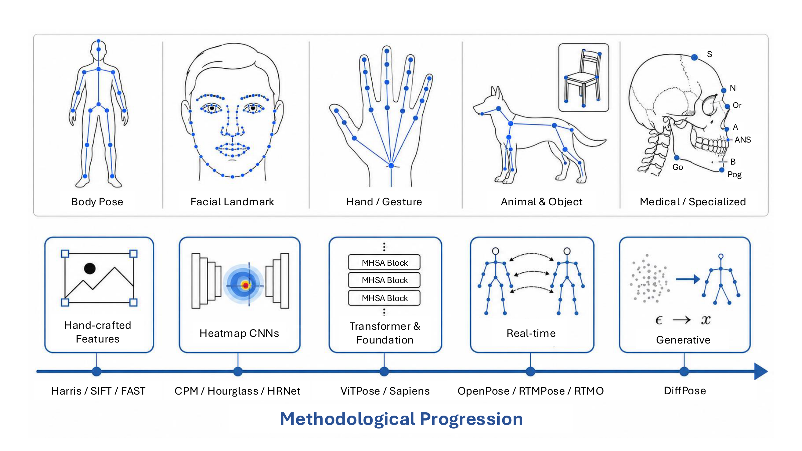
Methodology
Classical pipelines combined local feature detectors with statistical shape models that handled occlusion and deformation through explicit geometric constraints. Moravec , Harris , and Shi–Tomasi corners were followed by SIFT , SURF , FAST , BRIEF , and ORB , which improved scale invariance, speed, and robustness. For faces and hands, active shape models , active appearance models , and constrained local models with regularized mean-shift fitting provided the parametric frameworks.
Learning-based detection began with supervised descent for face alignment and, in 2014, with DeepPose , which regressed human joints directly with a deep network. Heatmap regression then dominated through 2020: Tompson et al. coupled convolutional networks with graphical models, convolutional pose machines and stacked hourglass networks refined heatmaps over repeated stages, and HRNet kept a high-resolution branch throughout the network for precise localization.
Multi-person estimation splits into two strategies. Top-down methods detect each person first and then estimate keypoints inside the box, which is accurate but scales with the number of people; bottom-up methods predict all keypoints at once and then group them, which is faster but makes grouping the hard part. Part Affinity Fields , consolidated as OpenPose , are the canonical bottom-up design; YOLO-Pose , RTMPose , and RTMO push real-time multi-person estimation across both paradigms.
Vision transformers and foundation models made keypoint detection general-purpose: ViTPose set simple transformer baselines for human pose in 2022, and Sapiens in 2024 provides a single foundation model for human-centric vision tasks.
3D human pose estimation grew out of these 2D detectors. Lifting methods take detected 2D keypoints as input and regress the 3D joints: a fully connected network on 2D joints alone was a strong baseline , temporal convolutions over 2D pose sequences (VideoPose3D ) and spatio-temporal transformers (MotionBERT ) use motion to reduce the depth ambiguity, and DiffPose casts lifting as diffusion. Direct methods predict 3D from pixels, as in the volumetric heatmaps of Pavlakos et al. . With a calibrated multi-view rig most of the ambiguity disappears, and learnable triangulation fuses per-view heatmaps into a 3D estimate. Recovering a full body mesh rather than a joint set is taken up with human motion in Section 3.4.
Classical corner detectors were in turn replaced by learned ones: SuperPoint learns detection and description jointly under self-supervised homographic adaptation, DISK selects keypoints with a reinforcement-style objective, and SuperGlue and the detector-free LoFTR recover dense correspondences directly. These serve as correspondence rather than semantic points and are the workhorses of the structure-from-motion, visual-odometry, and SLAM pipelines in the spatial-localization section that follows.
On point clouds, keypoints mostly serve registration and pose estimation. Intrinsic Shape Signatures select points whose local neighborhood has a distinctive eigenvalue structure; USIP learns, without labels, detectors that stay stable under rigid transformation, and D3Feat predicts a detection score and a descriptor for every point, the 3D analogue of SuperPoint. Category-level 3D keypoints are a different kind: Suwajanakorn et al. discover keypoints that are consistent across instances of a category through a relative-pose objective, and kPAM uses such keypoints as the interface for robotic manipulation. Keypoint-based 6D object pose, which predicts the 2D projections of 3D model keypoints and solves PnP, belongs to pose estimation (Section 1.2.5).
Table [tab:keypoint_coco_results] reports COCO Keypoints (val2017) results for the CNN, transformer, and real-time families.
| Method | Backbone | Input | #Params (M) | GFLOPs | AP | AP\(_{50}\) | AP\(_{75}\) | AR | Year |
|---|---|---|---|---|---|---|---|---|---|
| HRNet-W32 | HRNet-W32 | 256\(\times\)192 | 28.5 | 7.1 | 74.4 | 90.5 | 81.9 | 79.8 | 2020 |
| HRNet-W48 | HRNet-W48 | 384\(\times\)288 | 63.6 | 32.9 | 76.3 | 90.8 | 82.9 | 81.2 | 2020 |
| YOLOv5s6-Pose | YOLOv5-s | 960\(\times\)960 | 15.1 | – | 63.8 | 87.6 | 69.6 | 70.4 | 2022 |
| YOLOv5m6-Pose | YOLOv5-m | 960\(\times\)960 | 41.4 | – | 67.4 | 89.1 | 73.7 | 73.9 | 2022 |
| YOLOv5l6-Pose | YOLOv5-l | 960\(\times\)960 | 87.0 | – | 69.4 | 90.2 | 76.1 | 75.9 | 2022 |
| ViTPose-B | ViT-B | 256\(\times\)192 | 86 | – | 75.8 | – | – | 81.1 | 2022 |
| ViTPose-L | ViT-L | 256\(\times\)192 | 307 | – | 78.3 | – | – | 83.5 | 2022 |
| ViTPose-H | ViT-H | 256\(\times\)192 | 632 | – | 79.1 | – | – | 84.1 | 2022 |
| RTMPose-s | CSPNeXt-s | 256\(\times\)192 | 5.5 | 0.68 | 69.6 | – | – | – | 2023 |
| RTMPose-m | CSPNeXt-m | 256\(\times\)192 | 13.6 | 1.93 | 73.6 | – | – | – | 2023 |
| RTMPose-l | CSPNeXt-l | 256\(\times\)192 | 27.7 | 4.16 | 74.8 | – | – | – | 2023 |
| RTMO-s | CSPDarkNet | 640\(\times\)640 | 9.9 | – | 67.7 | 87.8 | 73.7 | 71.5 | 2024 |
| RTMO-m | CSPDarkNet | 640\(\times\)640 | 22.6 | – | 70.9 | 89.0 | 77.8 | 74.7 | 2024 |
| RTMO-l | CSPDarkNet | 640\(\times\)640 | 44.8 | – | 72.4 | 89.9 | 78.8 | 76.2 | 2024 |
Datasets and Metrics
Keypoint datasets are mostly embedded in broader pose and action benchmarks rather than built in isolation; Table [tab:keypoint_dataset_summary] lists the most used. Human body datasets are the most mature and trace the field’s expansion: MPII and COCO Keypoints fixed in-the-wild 2D evaluation, PoseTrack added temporal association in video, Human3.6M supplies controlled multi-view 3D ground truth for 2D-to-3D lifting, DensePose replaces sparse joints with dense surface correspondences, and CrowdPose stresses crowded, occluded scenes. Face datasets moved from large pose variation (AFLW ) and high-density annotation (HELEN ) to occlusion (COFW ), the standardized 68-point protocol of 300-W and its large-pose synthetic extension 300-W-LP , and the 98-point, hard-condition WFLW . Hand datasets contend with fine articulation and self-occlusion through multi-view capture (CMU Panoptic HandDB ), synthetic 3D labels (RHD ), real 3D pose and shape (FreiHAND ), and interacting hands (InterHand2.6M ). Animal-Pose and AP-10K carry the human recipe to animals across species, while ApolloCar3D and KeypointNet define keypoints on rigid vehicles and 3D object categories.
| Dataset | Year | Domain | Mod. | KP | #Samples (train / val / test) |
|---|---|---|---|---|---|
| \(\bullet\) Human body | |||||
| MPII | 2014 | In-the-wild body | 2D | 16 | 25K images (train+test) |
| COCO Keypoints | 2014 | In-the-wild multi-person | 2D | 17 | 57K / 5K / 20K images |
| PoseTrack | 2017 | Video body tracking | 2D | 15 | 593 / 170 / 375 videos |
| Human3.6M | 2014 | Indoor multi-view body | 3D | 32 | 3.6M frames, 11 subjects |
| DensePose | 2018 | Dense body surface | 2D | SMPL surface | \(\sim\)50K images (COCO subset) |
| CrowdPose | 2019 | Crowded multi-person | 2D | 14 | 10K / 2K / 8K images |
| \(\bullet\) Face | |||||
| AFLW | 2011 | In-the-wild face | 2D | 21 | 25K faces (22K images) |
| HELEN | 2012 | High-resolution face | 2D | 194 | 2K / – / 330 images |
| COFW | 2013 | Occluded face | 2D | 29 | 1.3K / – / 507 images |
| 300-W | 2013 | Aggregated face | 2D | 68 | 3.1K / – / 689 images |
| 300-W-LP | 2016 | Large-pose synthetic face | 2D | 68 | 61K images |
| WFLW | 2018 | In-the-wild face (challenging) | 2D | 98 | 7.5K / – / 2.5K images |
| \(\bullet\) Hand | |||||
| CMU Panoptic HandDB | 2017 | Multi-view hand | Multi-view | 21 | 14K manual + bootstrapped |
| RHD | 2017 | Synthetic hand | 2D + 3D | 21 | 41K / – / 2.7K frames |
| FreiHAND | 2019 | Real hand pose + shape | 3D | 21 | 33K / – / 4K samples |
| InterHand2.6M | 2020 | Two-hand interaction | 3D | 42 | 2.6M frames |
| \(\bullet\) Animal & Object | |||||
| Animal-Pose | 2019 | 5-class mammal pose | 2D | 20 | \(\sim\)4K images |
| AP-10K | 2021 | 54-species animal pose | 2D | 17 | 10K images |
| ApolloCar3D | 2019 | Vehicle keypoints (driving) | 2D | 66 | 5.3K images |
| KeypointNet | 2020 | Multi-category 3D objects | 3D | 5–23 | 8.3K models |
Metrics measure the distance between predicted and ground-truth points, normalized for scale. The End-Point Error (EPE) is the raw Euclidean distance. The Normalized Mean Error (NME) divides it by a reference length: \[\begin{equation} \mathrm{NME} = \frac{1}{N} \sum_{i=1}^{N} \frac{\lVert \hat{\mathbf{x}}_i - \mathbf{x}_i \rVert_2}{d}, \end{equation}\] where \(\hat{\mathbf{x}}_i\) and \(\mathbf{x}_i\) denote the predicted and ground-truth locations of the \(i\)-th keypoint, and \(d\) is a task-dependent normalization factor (e.g. , inter-ocular distance for faces). The Percentage of Correct Keypoints (PCK) instead thresholds the error, \[\begin{equation} \mathrm{PCK@}\alpha = \frac{1}{N} \sum_{i=1}^{N} \mathbb{I}\!\left( \lVert \hat{\mathbf{x}}_i - \mathbf{x}_i \rVert_2 \le \alpha \cdot s \right), \end{equation}\] where \(\alpha\) controls the tolerance and \(s\) is the reference scale, giving an accuracy rate that is easy to compare across methods; the Cumulative Error Distribution (CED) curve and its Area Under the Curve (AUC) summarize behavior across thresholds.
For large-scale benchmarks, Object Keypoint Similarity (OKS) incorporates object scale and keypoint-specific uncertainty, \[\begin{equation} \mathrm{OKS} = \frac{\sum_i \exp\!\left( -\frac{\lVert \hat{\mathbf{x}}_i - \mathbf{x}_i \rVert_2^2}{2 s^2 \kappa_i^2} \right)\delta(v_i > 0)} {\sum_i \delta(v_i > 0)}. \end{equation}\] Here \(s\) denotes the object scale (the square root of the segmented area), \(\kappa_i\) is a per-keypoint normalization constant calibrating the fall-off, and \(v_i \in \{0, 1, 2\}\) is the ground-truth visibility flag for keypoint \(i\), where \(v_i = 0\) indicates unlabeled, \(v_i = 1\) indicates labeled but occluded, and \(v_i = 2\) indicates labeled and visible. OKS plays the role of IoU in computing average precision and recall on MS COCO . For 3D human pose, the Mean Per-Joint Position Error (MPJPE) averages the Euclidean joint error in millimeters after aligning the root joints; PA-MPJPE applies a Procrustes alignment of scale, rotation, and translation first, and 3DPCK thresholds the error at \(150\) mm, as on MPI-INF-3DHP . Point-cloud keypoint detectors are scored by repeatability under rigid transformation and, downstream, by registration recall on benchmarks such as 3DMatch .
Challenges
Robustness in unconstrained scenes is still the first problem : occlusion, extreme pose, and non-rigid deformation leave partial or ambiguous configurations, and symmetric parts (left versus right limbs, the fingers of a self-occluded hand) are routinely swapped. Generalization is the second : keypoint definitions differ across datasets even for the same object class, so models trained on one benchmark transfer poorly to another, and the gap widens for animals, objects, and anatomical structures, where annotation is scarce and demographic or species bias enters the training data. The accuracy–speed tension discussed for detection applies here as well : high-precision models are too heavy for embedded targets, and lightweight ones lose accuracy precisely under occlusion and fast motion.
Scene Classification
Going beyond objects, regions, and keypoints, scene classification (SC) assigns a single semantic label to a whole image describing the environment it portrays . Where object recognition names the things in a picture (“car”, “tree”, “person”), scene classification names the where: “a busy street”, “a serene beach”, “a modern kitchen”. It asks “What kind of place is this?”, a judgment that rests on the global layout and gist of the image rather than on any single object , and it supplies the holistic prior on which an embodied or virtual agent conditions its later behavior .
Task Definition
Formally, scene classification learns a mapping \(f: I \mapsto y \in \mathcal{Y}\) from an image \(I\) to a label \(y\) in a predefined category set \(\mathcal{Y}\), or, in the multi-label case, to a subset \(Y \subseteq \mathcal{Y}\) covering several facets of the scene (“urban” for area, “parking lot” for place, “night” for condition). Beyond the single-/multi-label split, the task is instantiated by domain, with indoor and outdoor scenes, remote-sensing imagery , and driving contexts such as highways and tunnels , and by modality, extending from still images to video and acoustic scenes .
Methodology
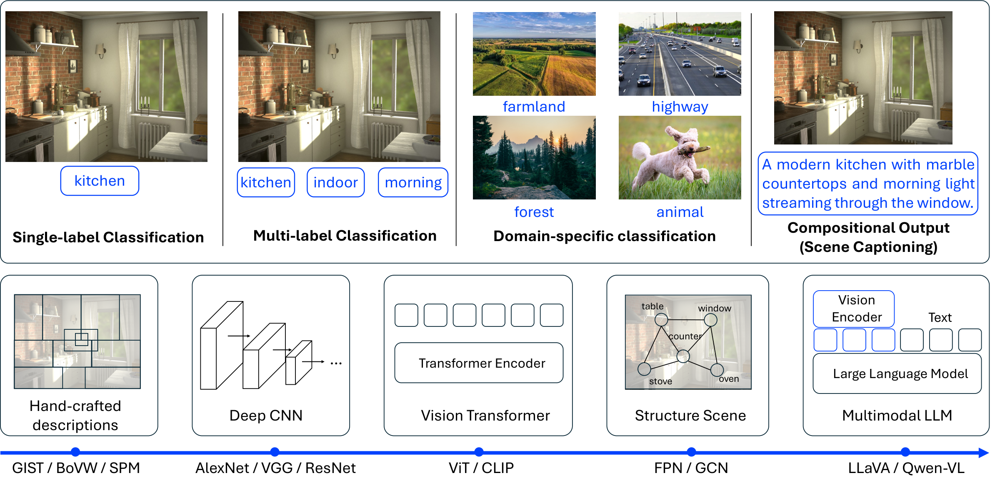
Figure 1.11 summarizes the progression from hand-crafted global descriptors through deep features to vision–language models.
Early methods summarized the whole image into one discriminative vector of low-level texture, color, and gradient statistics. The Spatial Envelope model describes a scene by a few perceptual dimensions (naturalness, openness, roughness, expansion, ruggedness), a descriptor commonly called GIST. Bag-of-Visual-Words (BoVW) treats the image as a histogram of quantized local features such as SIFT , discarding most spatial information ; Spatial Pyramid Matching (SPM) restores coarse layout by computing BoVW histograms over a pyramid of sub-regions and concatenating them.
Deep networks learn scene features end to end. CNNs such as AlexNet , VGG , ResNet , and DenseNet , pre-trained on ImageNet , proved to be strong global feature extractors for scenes, and Places-CNN re-trained them on the large-scale Places benchmark to establish the standard transfer recipe. Vision Transformers match or exceed CNNs with a class-token embedding that attends over all patches, in the manner of BERT .
A separate line models layout explicitly, since a stadium is recognized by its global oval while a classroom differs from an office by the mid-scale arrangement of desks and blackboard. Multi-scale pooling over the CNN feature hierarchy (FPN-style ) captures structure at several scales, and scene graphs make objects and their relations explicit, so that propagating over them with graph convolutional networks yields layout-aware scene features .
Vision–language models (VLMs) turn scene classification into open-vocabulary, zero-shot matching. Contrastive models such as CLIP embed the image and the textual names of all candidate classes in one space and pick the most similar class , needing no fine-tuning beyond prompt design ; the recipe extends to 3D point clouds . Autoregressive multimodal large language models (MLLMs; LLaVA , Qwen-VL , Gemma 3 ) instead generate the label as text in response to an instruction . With rich semantics available for free, the research focus has shifted from one global label toward compositional understanding of what is inside the scene .
Datasets and Metrics
Table [tab:sceneclf_datasets] lists the standard benchmarks. The small early sets, Scene 15 and the indoor MIT 67 , were superseded by SUN 397 , which fixed a near-exhaustive category list, and by Places , which scaled the same categories to millions of images across its Places205, Places88, Places365-Standard, and Places365-Challenge subsets. NYU Depth v2 and SUN RGB-D add aligned depth and a scene category per image for indoor RGB-D classification.
| Dataset | Year | Domain | Mod. | #Classes | #Images (protocol) |
|---|---|---|---|---|---|
| Scene 15 | 2006 | Indoor + outdoor, grayscale | 2D | 15 | 4,448 |
| MIT Indoor 67 | 2009 | Indoor | 2D | 67 | 15,620 (80 / 20 per class) |
| SUN 397 | 2010 | Indoor + outdoor | 2D | 397 | 108,754 (50 test per class) |
| Places205 | 2014 | Indoor + outdoor | 2D | 205 | 2.5M |
| Places365-Standard | 2017 | Indoor + outdoor | 2D | 365 | \(\sim\)1.8M |
| Places365-Challenge | 2017 | Indoor + outdoor | 2D | 365 | \(\sim\)8M |
| NYU Depth v2 | 2012 | Indoor | RGB-D | – | 1,449 labeled pairs |
| SUN RGB-D | 2015 | Indoor | RGB-D | – | 10,335 |
Scene classification is evaluated primarily with top-1 accuracy (the fraction of images for which the highest-scoring predicted class matches the ground truth) and top-5 accuracy (the fraction of images where the ground-truth class is among the top five predictions), with the latter especially useful on long-tail benchmarks such as Places-365 and SUN 397. For multi-label settings, the mean Average Precision (mAP) and class-wise F1 are reported instead, mirroring the protocol used in multi-label image recognition.
| Method | Backbone | Places-365 Top-1 | SUN 397 Top-1 | Year |
|---|---|---|---|---|
| \(\bullet\) Supervised | ||||
| Places365-AlexNet | AlexNet | 53.2 | – | 2017 |
| Places365-VGG | VGG-16 | 55.2 | – | 2017 |
| Places365-ResNet | R152 | 54.7 | – | 2017 |
| \(\bullet\) Vision-language zero-shot | ||||
| CLIP | ViT-L/14 | – | 63.2 | 2021 |
Table [tab:sceneclf_results] reports results on the two most-cited scene benchmarks. Supervised CNNs on Places-365 cluster in a narrow band of roughly \(53\)–\(55\%\) top-1, with diminishing returns from AlexNet to ResNet, while CLIP reaches \(63.2\%\) top-1 on SUN 397 zero-shot , on par with supervised scene classifiers without any target-set training.
Challenges
Closed-set accuracy on Places-365, SUN 397, and MIT 67 is now recovered zero-shot by CLIP and by MLLMs (LLaVA , Qwen-VL , Gemma 3 ), so “what kind of place is this” is no longer the frontier. The task has climbed a granularity ladder, from one label to attribute sets to grounded, compositional description across image, video, and 3D, and the open problems sit at that richer end, where MLLMs are weaker than their coarse-label accuracy suggests.
Fine-grained and long-tail discrimination. MLLMs still trail dedicated classifiers and CLIP-style models on fine-grained and long-tail categories, where the distinction between, e.g. , a “bistro” and a “brasserie” turns on subtle cues .
Compositional and spatial grounding. The natural output is no longer a label but a description whose claims can be grounded in specific objects and layouts . MLLMs describe fluently but ground weakly: objects are referenced vaguely rather than by region or box, and the persistent failure is structural rather than semantic, since models name the constituents of a scene correctly yet err on relative layout, depth ordering, orientation, and cross-view or 3D consistency. The cause is representational: 2D patch tokens are optimized for semantic alignment with language, not geometry, so fine spatial cues are lost once flattened into the language stream, and spatial-cognition benchmarks show even strong MLLMs degrading sharply as tasks move from naming toward layout and 3D reasoning .
Hallucination and faithfulness. Free-form description reintroduces a failure mode that closed-set classification never had: MLLMs assert objects, attributes, or relations absent from the image, and their reasoning traces rarely point to verifiable spatial evidence .
Spatial Localization and Position Estimation
Recognition says what is present; it does not say where. Spatial localization and position estimation supply the missing geometry, situating recognized entities in a metric frame and recovering how they are oriented within it. The section climbs a ladder of geometric abstraction: from the per-pixel quantities of depth and surface normals, through metric attributes such as height and distance, to full SE(3) pose, first of the moving camera and then of rigid objects in the scene. Throughout, the concern is the static geometry of a single instant; how these quantities evolve is deferred to spatio-temporal perception.
Depth Estimation
Depth estimation predicts, for every pixel, the distance from the camera to the surface it observes, turning a 2D image into the 3D structure that reconstruction, navigation, and manipulation build on. Figure 1.12 summarizes the input configurations and the method families surveyed below.
Task Definition
Given an image \(I\) and optional auxiliary observations \(\mathcal{V}\) (a second view, a multi-view set, a sparse sensor measurement, or neighboring video frames), a depth estimator predicts a depth map \[\begin{equation} f_\theta(I,\mathcal{V}) = D \in \mathbb{R}_{+}^{H\times W}, \end{equation}\] where \(D(u)\) is the distance along the optical axis from the camera center to the surface seen at pixel \(u\). The task splits along three axes.
Sensing. Active methods emit light (structured light, time-of-flight, LiDAR) and measure its return, providing reliable metric depth even on textureless surfaces but tying accuracy to the sensor and degrading under strong ambient light or at long range. Passive methods infer depth from ordinary images alone; they need no special hardware and have become the dominant research line, at the cost of sensitivity to texture and illumination.
Scale. Metric depth gives distances in physical units, which 3D reconstruction and navigation require. Relative depth recovers only pixel ordering, or depth up to an affine transform; it cannot support metric measurement but is easier to supervise and generalizes better because heterogeneous datasets can be mixed without a consistent scale.
Density and Input Configuration. Classical pipelines produced sparse depth at feature points or semi-dense depth along high-gradient edges; dense per-pixel prediction is now the norm. The input configuration fixes how much geometry is available: active sensing measures depth directly; stereo recovers it from the disparity between two calibrated views; multi-view estimation enforces consistency across many views, which improves robustness to occlusion and matching ambiguity at the price of computation and known camera poses; monocular estimation has no geometric constraint at all and relies on learned statistical, structural, and semantic cues, which is why it is ill-posed in scale yet the most widely applicable setting.
Methodology
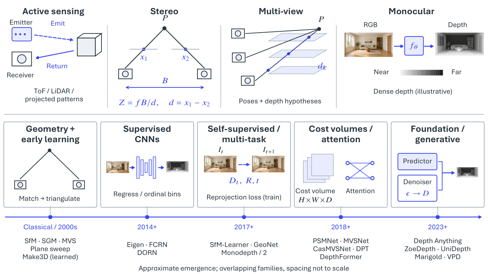
Geometric Methods.
Classical depth estimation solves geometry explicitly. In binocular stereo, two rectified cameras with focal length \(f\) and baseline \(B\) observe a point whose projections differ by the disparity \(d = x_1 - x_2\); similar triangles give \[\begin{equation} Z = \frac{fB}{d}, \end{equation}\] so depth follows once correspondences are found. Stereo matching is therefore a correspondence problem, usually posed as an energy that balances data fidelity against smoothness; Semi-Global Matching approximates the global optimum by aggregating costs along several 1D paths and remains a standard dense baseline. Structure from Motion (SfM) extends triangulation to many uncalibrated views, recovering camera poses and a sparse point cloud up to global scale, and supplies the poses that Multi-View Stereo (MVS) densifies. MVS typically proceeds by plane sweep: for a reference pixel \(u_r\) and a hypothesized depth \(d_k\), back-project with the intrinsics \(K_r\), transform into a source view with the relative pose \((R, t)\), reproject, and keep the depth whose reprojections are most photometrically consistent across source views, \[\begin{equation} u_s \sim K_s\left(R\, d_k K_r^{-1} u_r + t\right), \qquad D(u_r) = \arg\min_{d_k} \sum_s \left\| I_s(u_s) - I_r(u_r) \right\|. \end{equation}\] Plane sweep is thus triangulation turned into a search over depth planes, and it is the template that MVSNet and CasMVSNet later made differentiable as learned cost volumes.
Two single-image cues complete the classical picture. Depth from defocus exploits the thin-lens relation \(1/f = 1/z + 1/z'\): a point off the focal plane blurs into a circle of confusion whose diameter grows with its distance from that plane, so measured blur can be inverted for depth. Shape from shading inverts a reflectance model, typically Lambertian, to recover surface orientation from intensity and integrates it into depth; it is treated under surface normals in §1.2.2. Both are ill-posed under unknown illumination, reflectance, or optics and survive today mainly as auxiliary cues.
Active Depth Sensing.
Active sensors measure depth rather than infer it. Time-of-flight systems time the round trip of emitted light: LiDAR scans the scene with laser beams and returns a sparse but long-range point cloud, whereas ToF cameras flood the scene and recover a dense depth map at every pixel, best suited to short-range indoor use. Structured light projects a coded pattern (the Kinect v1 used a pseudo-random infrared speckle) and triangulates from its deformation; active stereo projects texture onto the scene only to make ordinary stereo matching stable on featureless surfaces.
Early Learning-Based Methods.
Data-driven depth began in the mid-2000s with monocular estimation. Saxena et al. regressed depth from hand-crafted multi-scale features with a Markov random field enforcing spatial coherence, and Make3D extended the model to the 3D position and orientation of scene patches while releasing a laser-scanned outdoor dataset that served as an early benchmark.
Supervised CNN Regression.
Eigen et al. first applied CNNs to monocular depth with a coarse-to-fine two-scale network, and their evaluation protocol became the standard; a follow-up showed that the same architecture predicts depth, normals, and semantic labels with minor changes. Deep Convolutional Neural Fields paired CNN unaries with a continuous CRF, FCRN introduced a fully convolutional encoder–decoder with efficient upsampling of ResNet features, and DORN recast depth as ordinal regression over a spacing-increasing discretization.
Learned Stereo and Multi-View Stereo.
Learning entered the geometric pipelines first as a replacement for individual components: MC-CNN computed stereo matching costs with a Siamese network in place of hand-crafted similarity. Mayer et al. then showed that networks can regress disparity and scene flow end to end, and GC-Net and PSMNet embedded the cost volume and its regularization inside the network. The same move reached multi-view geometry with SurfaceNet and MVSNet , which infer depth from several posed images, and R-MVSNet and CasMVSNet improved their memory footprint and resolution.
Self-Supervised and Multi-Task Learning.
Ground-truth depth is costly, so a second line replaced it with geometric consistency. SfM-Net and SfM-Learner learn depth and camera motion jointly from unlabeled video by minimizing photometric reprojection error between adjacent frames; Monodepth obtains the same signal from stereo pairs, and Monodepth2 unifies both sources in one framework. GeoNet adds optical flow to the joint estimate. Because all of these train a monocular network with stereo or multi-view supervision, the old separation between input configurations began to dissolve. Alongside, multi-task sharing (depth with semantic segmentation ), ImageNet-pretrained encoders with structural losses (DenseDepth ), local planar guidance (BTS ), and mixed-dataset training for zero-shot transfer (MiDaS ) each pushed accuracy and generalization.
Transformers and Foundation Models.
Self-attention gives every pixel access to global context, which helps precisely where local convolutions fail: textureless regions, occlusions, and large scenes. DPT established the pattern of a Vision Transformer encoder with a light dense decoder, and DepthFormer combined global attention with local convolutional refinement. Scaling data and model size then produced depth foundation models that are trained once and transferred zero-shot: ZoeDepth and Depth Anything learn from large mixed corpora with flexible supervision and generalize across scenes and capture conditions without per-dataset adaptation.
Video and Generative Depth.
Video adds temporal constraints. ManyDepth aggregates neighboring frames into a cost volume at test time, whereas MonoViT keeps the self-supervised video objective but strengthens single-frame reasoning with a Transformer. A separate line treats depth as conditional generation: VPD showed that text-to-image diffusion backbones carry usable geometric features, Marigold reframed monocular depth as conditional denoising and obtained globally coherent maps under hard conditions, and GeoWizard extended the recipe to joint depth and normal prediction. The same diffusion-as-perception idea recurs for surface normals and object pose later in this section.
Event-Based Depth.
Event cameras record asynchronous per-pixel brightness changes , offering microsecond latency and high dynamic range where frame cameras fail. Early event-based depth relied on geometric constraints and temporal accumulation ; learned event stereo , event–image fusion , and self-supervised or hardware-aware frameworks followed. The line remains a niche complement for extreme dynamics; see the survey .
Datasets and Metrics
Table 1.4 groups the main datasets into Type I, which ship explicit depth maps for direct supervision, and Type II, which require depth to be derived from LiDAR, stereo, or SfM. Three waves are visible. Indoor RGB-D collections (NYU Depth v2 , TUM RGB-D , SUN RGB-D , later ScanNet and Matterport3D ) and the LiDAR-based KITTI fixed the indoor and outdoor protocols that still anchor the field, with Make3D as the laser-scanned precursor. Relative-depth supervision from internet photos (DIW , ReDWeb , MegaDepth ) and synthetic data (Scene Flow ) then relaxed the need for metric sensors, while ETH3D , iBims-1 , ApolloScape , and Cityscapes stereo pairs served precision evaluation and self-supervised training. The current wave is driven by autonomous driving and rendering: multi-sensor fleets (nuScenes , Waymo Open , Argoverse 2 , KITTI-360 , DDAD ) supply millions of LiDAR-calibrated frames, photorealistic synthetic sets (Hypersim , Virtual KITTI 2 , UrbanSyn , TartanAir ) supply exact ground truth even for transparent surfaces and hard lighting, and DIODE , BlendedMVS , ARKitScenes , Mannequin , and WildRGB-D cover high-precision scans, handheld LiDAR, and dynamic or cluttered capture.
| Name | Year | Scene | Type | Metric | Setup | Volume | Data Source |
|---|---|---|---|---|---|---|---|
| \(\bullet\) Type I: Datasets with Explicit Depth Maps (Direct Supervision) | |||||||
| Make3D | 2009 | Outdoor | Real | Metric | Mono | 534 | Laser Scanner |
| NYU Depth v2 | 2012 | Indoor | Real | Metric | Mono | 1.4K | Kinect (SL) |
| TUM RGB-D | 2012 | Indoor | Real | Metric | Mono | 39 Seqs | Kinect (SL) |
| SUN RGB-D | 2015 | Indoor | Real | Metric | Mono | 10K | RGB-D Cameras |
| DIW | 2016 | Varied | Real | Relative | Mono | 495K | Internet Photos |
| KITTI (Depth) | 2017 | Outdoor | Real | Metric | Stereo | 93K | LiDAR (Velodyne) |
| ScanNet | 2017 | Indoor | Real | Metric | Mono | 2.5M | Structure Sensor |
| Matterport3D | 2017 | Indoor | Real | Metric | Mono | 194K | Matterport (RGB-D) |
| ETH3D | 2017 | Both | Real | Metric | Multi-V | 13 Scans | Laser Scanner |
| ApolloScape | 2018 | Outdoor | Real | Metric | Stereo | 140K | LiDAR + Stereo |
| iBims-1 | 2018 | Indoor | Real | Metric | Mono | 100 | Camera + Laser |
| MegaDepth | 2018 | Outdoor | Real | Relative | Mono | 130K | Internet + SfM |
| ReDWeb | 2018 | Varied | Real | Relative | Mono | 3.6K | Internet + Stereo |
| DIODE | 2019 | Both | Real | Metric | Mono | 26K | Camera + LiDAR |
| BlendedMVS | 2020 | Both | Syn+Real | Metric | Multi-V | 17K | MVS Reconstruction |
| Hypersim | 2020 | Indoor | Syn | Metric | Mono | 77K | Simulation |
| DDAD | 2020 | Outdoor | Real | Metric | Multi-V | 76K | HD LiDAR |
| Virtual KITTI 2 | 2020 | Outdoor | Syn | Metric | Stereo | 21K | Simulation (Unity) |
| TartanAir | 2020 | Varied | Syn | Metric | Stereo | \(\sim\)1M | Simulation (UE4) |
| ARKitScenes | 2021 | Indoor | Real | Metric | Mono | 5K Clips | iPad LiDAR |
| UrbanSyn | 2023 | Outdoor | Syn | Metric | Mono | 7.5K | Simulation |
| WildRGB-D | 2024 | Varied | Real | Metric | Mono | 20K | RGB-D Cameras |
| \(\bullet\) Type II: Datasets Requiring Depth to be Derived from Raw Geometry (LiDAR, Stereo or SfM) | |||||||
| KITTI (Raw) | 2012 | Outdoor | Real | Metric | Stereo | 42K | LiDAR (Velodyne) |
| Cityscapes | 2016 | Outdoor | Real | Metric | Stereo | 25K | Stereo Camera |
| Scene Flow | 2016 | Varied | Syn | Metric | Stereo | 39K | Simulation (Blender) |
| NuScenes | 2019 | Outdoor | Real | Metric | Multi-V | 1.4M | LiDAR |
| Waymo Open | 2019 | Outdoor | Real | Metric | Multi-V | 200K | LiDAR |
| Mannequin | 2019 | Varied | Real | Relative | Mono | 170K | Internet + SfM |
| KITTI-360 | 2020 | Outdoor | Real | Metric | Stereo | 100K+ | LiDAR + Stereo |
| Argoverse 2 | 2022 | Outdoor | Real | Metric | Multi-V | 6M | LiDAR |
Depth is evaluated with pixel-wise regression metrics. The root mean squared error and its logarithmic variant, \[\begin{equation} \mathrm{RMSE} = \sqrt{ \frac{1}{N} \sum_{i=1}^{N} \left( \hat{d}_i - d_i \right)^2 }, \qquad \mathrm{RMSE}_{\log} = \sqrt{ \frac{1}{N} \sum_{i=1}^{N} \left( \log \hat{d}_i - \log d_i \right)^2 }, \end{equation}\] measure absolute deviation, the log form damping the dominance of far-range errors. Because an error of fixed size matters more at close range, relative errors normalize by the true depth, \[\begin{equation} \mathrm{Abs\ Rel} = \frac{1}{N} \sum_{i=1}^{N} \frac{ \left| \hat{d}_i - d_i \right| }{ d_i }, \qquad \mathrm{Sq\ Rel} = \frac{1}{N} \sum_{i=1}^{N} \frac{ \left( \hat{d}_i - d_i \right)^2 }{ d_i }, \end{equation}\] and Abs Rel is the primary metric on most benchmarks. For monocular prediction, whose scale is ambiguous, the scale-invariant log error discounts a global scale shift, \[\begin{equation} \mathrm{SI\text{-}Log} = \frac{1}{N} \sum_{i=1}^{N} \left( \log \hat{d}_i - \log d_i \right)^2 - \frac{1}{N^2} \left( \sum_{i=1}^{N} \left( \log \hat{d}_i - \log d_i \right) \right)^2 . \end{equation}\] Threshold accuracy reports the fraction of pixels within a multiplicative tolerance, \[\begin{equation} \delta = \frac{1}{N} \left| \left\{ i \;\middle|\; \max\!\left( \frac{\hat{d}_i}{d_i}, \frac{d_i}{\hat{d}_i} \right) < \tau \right\} \right|, \qquad \tau \in \{1.25,\, 1.25^2,\, 1.25^3\}. \end{equation}\] Ordinal metrics, which score only the pairwise depth ordering, are used where supervision is relative; they track perceived layout but say nothing about metric precision.
On KITTI, supervised regressors such as BTS and DPT reach Abs Rel around \(0.06\) with \(\delta_{1.25}\) near \(0.96\), while the self-supervised Monodepth2 reaches Abs Rel near \(0.10\) without any ground-truth depth. On NYU Depth v2, ZoeDepth and Depth Anything reach \(\delta_{1.25}\) of \(0.96\) and \(0.98\) after fine-tuning, and UniDepth matches them zero-shot, which makes transfer a credible alternative to per-benchmark training. Generative models such as Marigold match or exceed regression on scale-invariant metrics while producing sharper boundaries, so recent gains come more from representation and data scale than from architectural depth. Boundary sharpness, temporal stability, and latency are still not evaluated in a standard way.
Challenges
Monocular depth is ill-posed: distinct 3D scenes project to the same image, so a single view fixes depth only up to scale and predictions drift across scenes. Scene content adds its own failures. Moving objects break the static-world assumption behind self-supervised and multi-view methods, and in video the result is flicker between frames and scale drift over time. Transparent and reflective materials and textureless regions give weak or misleading appearance cues; thin structures and sharp boundaries lose detail; low light, adverse weather, and underwater imagery degrade models trained on clean data. These scene effects compound into a domain gap: models are tied to the geometry and depth distribution of their training data, the indoor–outdoor divide is especially wide, real depth labels are scarce and noisy, and synthetic data still transfers imperfectly.
Current work attacks these problems from several sides. Depth foundation models supply strong zero-shot priors, and Video Depth Anything adds temporal modules to one of them for consistent video depth, while video depth diffusion (DepthCrafter , ChronoDepth , RollingDepth ) pursues the same goal generatively. Coupling depth with 3D scene representations (DepthSplat ) improves spatial consistency, language cues help anchor metric scale , and lightweight architectures such as MonoLENS and LMDepth target the real-time budgets of driving, robotics, and AR/VR.
Surface Normal Estimation
Surface normal estimation predicts the local orientation of visible surfaces from images or videos. Where depth answers “how far is this point from the camera?”, a normal answers “which way does the surface face?”. That makes normals a compact, scale-invariant description of local 3D geometry: a normal field exposes planes, folds, object boundaries, and contact surfaces even when metric depth is ambiguous, which is why it serves reconstruction , relighting and intrinsic decomposition , physical interaction modeling , and egocentric perception .
The learning problem looks simple: from an RGB image, RGB-D frame, multi-view set, or video, output one unit vector per valid pixel. The inverse problem underneath is badly constrained, since the same intensity can be explained by different combinations of shape, reflectance, and illumination, and camera intrinsics change how image gradients map to 3D orientation. Progress has therefore come from three directions at once: more and better supervision, stronger geometric inductive biases, and visual priors inherited from large dense-prediction and diffusion models; since 2024 the last of these has turned normal estimation into one output head of broader geometric foundation models.
Task Definition
Let \(I\in\mathbb{R}^{H\times W\times 3}\) be an image, \(\mathcal{V}\) optional auxiliary observations (neighboring frames, stereo or multi-view images, depth, intrinsics, or poses), and \(\Omega\) the set of valid pixels. The goal is to estimate \[\begin{equation} f_\theta(I,\mathcal{V}) = \hat{\mathbf{N}}, \qquad \hat{\mathbf{N}}(u) = \hat{\mathbf{n}}_u \in \mathbb{S}^2,\quad u\in\Omega, \end{equation}\] where each \(\hat{\mathbf{n}}_u\) is a unit vector in the camera frame or in a gravity- or world-aligned frame. Supervision comes from depth sensors, fitted meshes, rendered assets, multi-view reconstruction, or indirectly from photometric and intrinsic-image losses, and camera metadata matters because a pixel’s viewing ray depends on focal length and field of view. Monocular prediction from one RGB image is the canonical benchmark setting; RGB-D variants use measured or predicted depth as input or supervision through the differential relation between depth gradients and normals, multi-view and video variants enforce viewpoint or temporal consistency, object-centric variants target CAD-like objects, hands, faces, and bodies, and panoramic variants predict under equirectangular or fisheye geometry, where pinhole assumptions break.
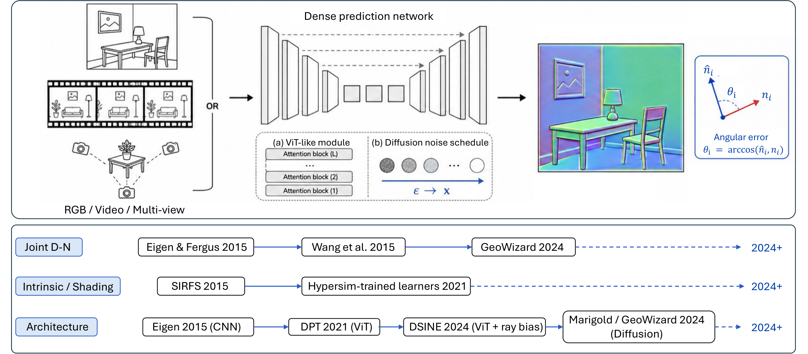
Methodology
Surface normal estimation has moved from physics-based inverse rendering to supervised dense prediction and, most recently, to foundation-model and diffusion-based geometry estimation. Figure 1.13 summarizes the method families; the last two below are grouped as one family in the figure.
Photometric and intrinsic-decomposition methods.
The classical origin is shape from shading and photometric stereo. Photometric stereo recovers orientation from several images taken under different lighting; Woodham’s formulation shows that normals follow once illumination and reflectance are sufficiently constrained. Single-image shape from shading is harder because a change in intensity may signal a change in orientation, albedo, illumination, or material; SIRFS is the canonical optimization-era method, jointly recovering shape, illumination, and reflectance under natural-image and geometric priors. These methods identify the physical ambiguities that every later learned model inherits, and physically based rendering datasets such as Hypersim , where shading, materials, depth, and normals are jointly available, keep their logic in play.
Supervised CNN and multi-task dense prediction.
Eigen and Fergus trained one multi-scale convolutional network to predict depth, normals, and semantic labels, establishing that normals can be regressed directly from RGB and that geometric tasks benefit from shared representations. Later CNN systems improved encoder capacity, decoder resolution, and boundary preservation, usually with normals as one branch of a multi-task perception model, and Taskonomy and Omnidata systematized the paradigm by training dense predictors across many 3D scans and tasks. A CNN normal estimator runs in one forward pass and drops into real-time reconstruction, AR, or robotics pipelines; its local features, however, blur thin structures and lack the global context needed for consistent orientation across large planes.
Transformer and camera-aware discriminative predictors.
Vision Transformers let every output pixel attend to the whole image. DPT showed that Transformer features support strong dense prediction across depth and semantics, and the same global context helps normals: co-planar walls, floors, and object faces may be far apart in the image yet geometrically coupled. Pure attention discards one geometric fact, that pixels correspond to camera rays; DSINE injects ray-direction information and shows that camera geometry remains valuable even for large learned backbones.
Diffusion and foundation-model priors.
A more recent line casts normal estimation as conditional generation or as one head of a general geometric foundation model. VPD showed that text-to-image diffusion models carry useful features for dense perception, and GeoWizard extended the Marigold recipe of §1.2.1 to joint depth and normal prediction under a shared generative prior. Metric3Dv2 took the discriminative route, training a camera-aware monocular model for metric depth and normals across heterogeneous datasets. StableNormal addressed a practical weakness of diffusion-based normals: stochastic denoising yields high-quality but high-variance maps, so reducing variance matters as much as improving the mean. The generative formulation samples uncertain or textureless regions from a learned distribution instead of forcing a single local regression, at the cost of iterative-denoising latency, which motivates distillation and single-step variants.
Temporal, multi-view, and reconstruction-coupled methods.
Normals matter most when predictions must persist across time or support 3D reconstruction. Video normal estimation enforces temporal consistency by warping predictions with optical flow or camera poses and penalizing flicker; NormalCrafter targets temporally consistent sequences for downstream video reconstruction and editing rather than per-frame accuracy alone. Multi-view settings derive normals from reconstructed meshes or regularize them through cross-view photometric consistency, and neural surface reconstruction such as NeuS consumes normal-like differential geometry implicitly through signed-distance gradients, so normal estimation and reconstruction now supervise each other.
Material- and domain-specific normal estimation.
A smaller branch revisits what generic models still get wrong. Transparent, reflective, and laboratory objects violate Lambertian assumptions because their gradients come from refraction, reflection, or the background rather than the surface; TransNormal targets transparent objects with a dedicated benchmark and model, making explicit that open-world normal prediction cannot be solved by indoor RGB-D supervision alone.
| Dataset | Year | Domain | Source | Normal supervision / use |
|---|---|---|---|---|
| NYU Depth v2 | 2012 | Indoor | RGB-D | Normals derived from Kinect depth; canonical indoor monocular normal benchmark. |
| SUN RGB-D | 2015 | Indoor | RGB-D | Depth-derived normals across diverse indoor scenes and sensors. |
| ScanNet | 2017 | Indoor | RGB-D video + mesh | Mesh- or depth-derived normals with camera trajectories; useful for video and reconstruction-linked supervision. |
| Matterport3D | 2017 | Indoor panorama | RGB-D scans + mesh | High-resolution reconstructed geometry; supports room-scale and panoramic normal evaluation. |
| Taskonomy | 2018 | Indoor | 3D scans | Large multi-task supervision including surface normals, depth, reshading, and semantics. |
| Replica | 2019 | Indoor synthetic / scanned | Rendered geometry | Clean normals from high-quality reconstructed scenes; useful for controlled evaluation. |
| DIODE | 2019 | Indoor / outdoor | LiDAR depth | Depth-derived normals; stresses cross-domain generalization beyond NYU-style indoor scenes. |
| Hypersim | 2021 | Indoor synthetic | PBR rendering | Ground-truth depth, normals, materials, and lighting for geometry + intrinsic learning. |
| Omnidata | 2021 | Indoor multi-source | 3D scans | Large-scale mid-level vision training data with normals and many related tasks. |
Datasets and Metrics
Table 1.5 shows that normal supervision is usually inherited from another representation rather than annotated directly. RGB-D datasets (NYU Depth v2 , SUN RGB-D , ScanNet ) supply measured depth from which local planes or mesh normals are computed, which fixes the indoor evaluation regime but also means the labels are only as good as the depth sensor and are dominated by man-made indoor structure. Scanned and synthetic collections address coverage and label quality from opposite sides: Matterport3D , Taskonomy , and Omnidata scale supervision across many environments and tasks, whereas Replica and Hypersim give clean rendered normals with physically meaningful lighting at the price of a synthetic-to-real gap. DIODE pushes toward indoor–outdoor generalization, yet outdoor normals remain far less standardized than outdoor depth because sparse LiDAR is a poor match for dense orientation supervision; intrinsic-image sets such as IIW and MPI Sintel Intrinsics constrain shading and reflectance for inverse-rendering formulations without being normal benchmarks themselves. The most visible gap is temporal: although ScanNet and other RGB-D videos contain sequences, there is no widely adopted video normal benchmark, so temporal stability is reported qualitatively or through method-specific warping losses, even though flicker often hurts reconstruction and AR consumers more than a small rise in mean angular error.
Evaluation is angular because normals are unit vectors. With \(\hat{\mathbf{n}}_i,\mathbf{n}_i\in\mathbb{S}^2\) the predicted and ground-truth normals at valid pixel \(i\) and \(N\) the number of valid pixels, the per-pixel error in degrees is \[\begin{equation} e_i = \arccos\!\left(\mathrm{clip}(\hat{\mathbf{n}}_i^\top \mathbf{n}_i,-1,1)\right), \end{equation}\] summarized by its mean (sensitive to boundary noise and invalid-depth artifacts), its median (robust to a few severe failures), occasionally its RMSE, and by threshold accuracies \[\begin{equation} \mathrm{Acc}_{\tau} = \frac{1}{N}\sum_{i=1}^{N}\mathbf{1}(e_i < \tau), \qquad \tau\in\{11.25^\circ,22.5^\circ,30^\circ\}, \end{equation}\] which expose changes in the fraction of practically usable pixels that a small shift in mean error can hide. Training objectives usually minimize the cosine loss \(1-\hat{\mathbf{n}}_i^\top\mathbf{n}_i\), monotonic in angle for unit vectors, but benchmarks report angles for interpretability. Beyond per-pixel angle, joint depth–normal models are checked for agreement between predicted normals and normals differentiated from depth, reconstruction-oriented work asks whether normal discontinuities align with object boundaries and whether large planes stay coherent, and video methods report temporal consistency by warping predictions between adjacent frames with flow or pose, \[\begin{equation} \mathrm{TempCons} = \frac{1}{M}\sum_{(i,t)} \left\|\hat{\mathbf{n}}_{i}^{\,t} - \mathcal{W}_{t+1\rightarrow t}(\hat{\mathbf{n}}^{\,t+1})_i\right\|_2, \end{equation}\] after rotating camera-frame normals into a common frame. Protocol details move rankings: depth-derived normals are unstable at discontinuities, papers mask invalid pixels differently, and some evaluate in the camera frame while others rotate into a gravity-aligned frame, so the table below records which paper produced each number.
| Method | Family | Year | Mean\(\downarrow\) | Median\(\downarrow\) | \(\mathbf{Acc}_{11.25^\circ}\uparrow\) |
|---|---|---|---|---|---|
| Eigen & Fergus | Multi-scale CNN, multi-task | 2015 | 20.9 | 13.2 | 44.4 |
| Omnidata | Large-scale mid-level supervision | 2021 | 23.1 | 12.9 | 45.8 |
| DSINE | Ray-aware discriminative | 2024 | 16.4 | 8.4 | 59.6 |
| Metric3Dv2 (ViT-g, zero-shot) | Geometric foundation model | 2024 | 13.3 | 7.0 | 66.4 |
| Marigold (normal variant)\(^\dagger\) | Diffusion prior | 2024 | 20.9 | 11.1 | 50.5 |
| GeoWizard\(^\dagger\) | Joint depth + normal diffusion | 2024 | 20.4 | 11.9 | 47.0 |
| StableNormal\(^\dagger\) | Low-variance diffusion | 2024 | 19.7 | 10.5 | 53.0 |
Table 1.6 makes two things visible. Within one protocol, camera-aware discriminative models lead: DSINE roughly halves the median error of the 2015 baseline, and Metric3Dv2 reaches \(13.3^\circ\) mean error zero-shot, so projective inductive bias and large camera-diverse pretraining still pay off even with strong backbones. Diffusion-based estimators trail these numbers on NYU Depth v2 under the StableNormal protocol, but they trade accuracy on clean indoor scenes for coherence in textureless or ambiguous regions and for a usable uncertainty, which the single-frame benchmark does not reward; the post-GeoWizard line has accordingly shifted the target from single-frame accuracy toward stable, usable geometry, StableNormal controlling diffusion variance and NormalCrafter enforcing temporal coherence.
Challenges
An RGB image alone does not determine shape, lighting, and reflectance: a dark pixel may be a tilted surface, a dark material, a cast shadow, or a specular highlight, and learned models resolve the ambiguity with priors rather than removing it, which is why estimators look confident on common indoor layouts and fail systematically on rare materials, unusual lighting, and out-of-distribution scenes. The persistent failure modes follow from this. Reflective and transparent surfaces produce gradients caused by the environment rather than the surface. Textureless and weakly lit regions give little evidence, and networks hallucinate planar sheets. Thin structures and depth discontinuities mix receptive fields and inherit depth-derived label noise, blurring normals around chair legs, plants, railings, and silhouettes. Wide-field and panoramic cameras break models trained under narrow pinhole assumptions, which is what makes ray-aware designs such as DSINE necessary. Dynamic and deformable objects flicker because most supervision comes from static scans or rigid synthetic scenes.
Dataset bias compounds the problem: canonical benchmarks are indoor and sensor-derived, so outdoor surfaces, hands, faces, deformable and transparent objects, and egocentric manipulation stay underrepresented, and no accepted benchmark jointly measures cross-domain generalization, temporal stability, and downstream reconstruction quality. TransNormal is a corrective for one slice of the non-Lambertian regime (glass, liquid, mirror, metal, wet roads), which remains far from solved. The directions now taking shape answer these gaps directly: geometric foundation models that merge depth, normals, segmentation, material, and calibration into one dense-prediction backbone, following Omnidata through Metric3Dv2 and GeoWizard ; diffusion distillation and variance control that keep the coherence and uncertainty of generative models while recovering real-time, deterministic inference ; temporally consistent, reconstruction-coupled normals ; and physically grounded models for non-Lambertian materials, where data scale is no substitute for modeling refraction and reflection.
Height and Distance Estimation
Height and distance estimation recovers absolute, real-world lengths: the dimensions of an object (the height of a person), the separation between scene entities (the gap between two vehicles), or the displacement of a moving object over time, from which speed follows. Whereas depth estimation (§1.2.1) recovers a dense per-pixel distance from the sensor to every visible surface, height and distance estimation targets a few metric quantities defined between scene entities rather than relative to the sensor, and is therefore tied to specific object instances and to a downstream measurement requirement. Radar, ultrasonic, and radio ranging measure such distances directly and are mature; this subsection covers the vision-based problem.
Task Definition
The input is one or more images or a video together with a specification of what to measure: the height of an object, the distance between two objects, or the distance an object travels. The output is a length in physical units, or a displacement over a time interval, from which average speed is read off (speed estimation).
Every vision-based route to a metric length passes through the camera model, shown in Figure 1.14. Under the pinhole model a world point \(P\) with homogeneous coordinates \(\mathbf{P}_w\) projects to the pixel \[\begin{equation} \mathbf{p} \sim K\,[\,R \mid \mathbf{t}\,]\,\mathbf{P}_w, \end{equation}\] where the extrinsics \((R,\mathbf{t})\) move the point into the camera frame and the intrinsic matrix \(K\) (focal length, principal point, pixel aspect) maps metric image-plane coordinates to pixels. Real lenses deviate from this model; Brown’s model corrects the dominant radial term as \[\begin{equation} \begin{pmatrix} x_{\text{cor}} \\ y_{\text{cor}} \end{pmatrix} = \begin{pmatrix} x(1 + k_1 r^2 + k_2 r^4 + k_3 r^6) \\ y(1 + k_1 r^2 + k_2 r^4 + k_3 r^6) \end{pmatrix}, \end{equation}\] with a tangential term for sensor–lens misalignment, and camera calibration recovers \(K\) together with the distortion coefficients. Without calibration, every pixel-to-length conversion inherits an unknown scale.
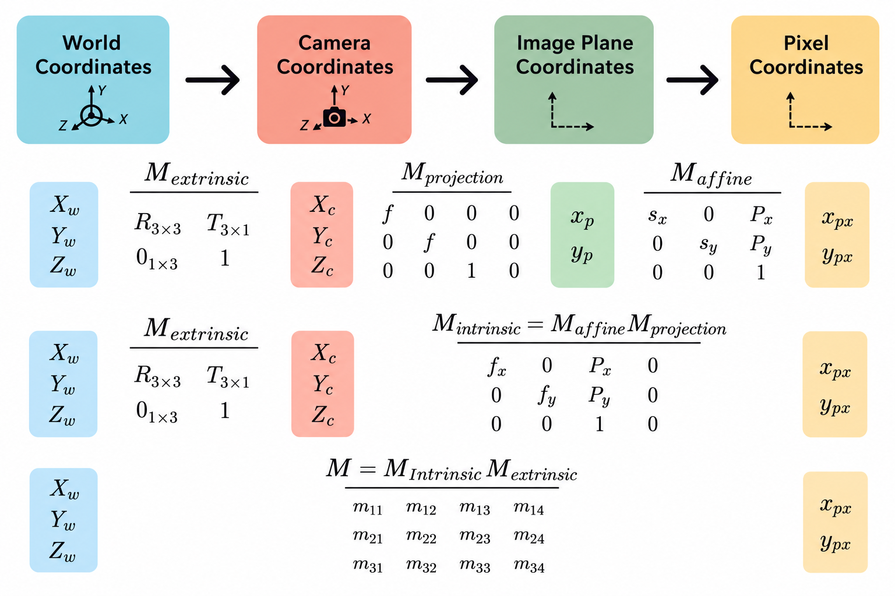
Beyond calibration, geometric pipelines rely on a small set of recurring intermediate quantities, illustrated in Figure 1.15: vanishing points, where parallel world lines converge and from which camera orientation follows; the horizon line, which fixes the camera’s tilt relative to the ground; and a ground-plane homography, which lets lengths on a dominant plane such as a road or floor be measured once a single reference length is known. Stereo pipelines add rectification, which aligns the two image planes so that correspondences lie on the same scanline, and disparity matching. Learning-based pipelines keep object detection (Section 1.1.1) as the front end and replace the explicit geometry with regression of depth, 3D center, and dimensions from region features, optionally conditioned on a dense depth map and refined over time when video is available.
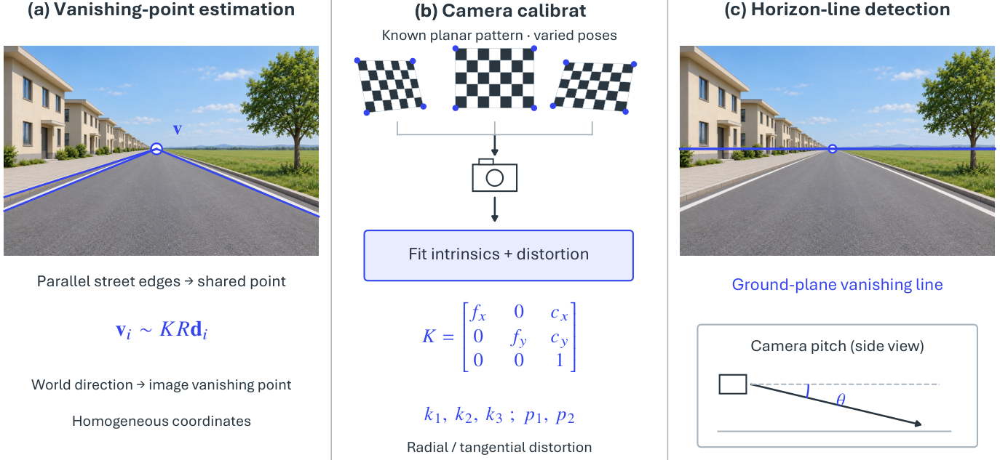
Methodology
Vision-based height and distance estimation is organized along two axes: the sensor configuration (stereo versus monocular), which decides whether metric depth is available by triangulation, and the inference paradigm (geometry-based versus learning-based), which decides whether scene geometry is solved from projective constraints or inferred from data. Figure 1.16 lays out the resulting families; it draws the uncalibrated case as a third branch for readability, but it is best read as the weakly constrained regime of monocular or stereo inference in which some geometric information is missing and must be supplied by priors.
Stereo Vision.
A calibrated stereo rig recovers metric depth directly from disparity, \(Z = fB/d\) with focal length \(f\), baseline \(B\), and disparity \(d\). Classical pipelines run calibration, rectification, matching, disparity estimation, and triangulation ; their accuracy rests on calibration quality and on matching reliability in textureless, reflective, or occluded regions, and object distance is read off by aggregating depth over the detected region. Multi-view stereo adds views for consistency without changing the triangulation principle . Learned stereo replaces hand-crafted matching costs with learned features and cost volumes and, in recent systems, folds distance estimation into stereo 3D object detection, predicting category, 2D extent, depth, and 3D box jointly . Learning improves robustness, but the metric scale still comes from the calibrated baseline and intrinsics.
Monocular Vision.
A single image does not fix absolute scale, so monocular methods recover it from explicit geometric constraints, learned priors, or external reference information . Classical monocular metrology uses projective geometry: vanishing points of parallel world lines give camera orientation , and a homography between a dominant ground plane and the image enables metric measurement on that plane once one reference length is known . The approach is interpretable and accurate in controlled scenes but needs clean geometric cues, reliable calibration, and visible parallel lines or planar supports. Learning-based monocular methods detect objects in 2D and regress their depth, 3D center, and physical dimensions directly from image features , implicitly learning the inverse relation between image extent and distance together with perspective, context, and occlusion cues, without an explicit vanishing-point or homography step.
Foundation-Model-Assisted Metric Estimation.
A newer route uses pretrained metric or metric-aligned depth models as an intermediate representation. DPT, ZoeDepth, Metric3D, and Depth Anything predict dense depth from a single image with strong cross-domain generalization ; pooling the predicted depth inside a detected region or instance mask then gives object distance, and combining masks, depth, and simple geometric constraints gives object height. This removes the need for explicit vanishing-point detection and manual scene calibration and offers a practical path to metric estimation on in-the-wild images. In the fully uncalibrated case, exact metric recovery from one image remains ill-posed ; practical systems inject scale through a known reference object, a known camera height, a ground-plane assumption, category-level size priors, or one of the pretrained metric-depth models above .
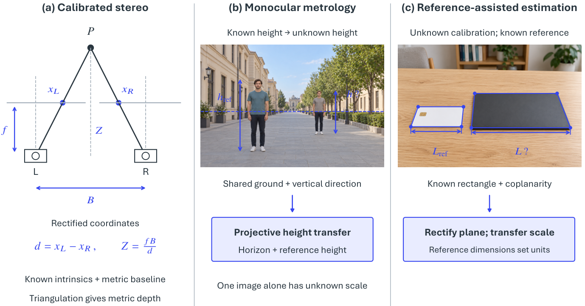
Datasets and Metrics
Table [tab:height_distance_estimate_benchmark] summarizes the benchmarks, which fall into three groups by sub-task. Object-size estimation is evaluated on the indoor RGB-D sets CAMERA25 and REAL275 , where category-level dimensions are scored jointly with pose on controlled tabletop scenes. Sensor-to-object distance is rarely benchmarked on its own; it is evaluated through the 3D-detection annotations (box centers, sizes, velocities) of the driving datasets KITTI , nuScenes , Waymo Open , and Argoverse 2 , which test metric localization at scale across multi-camera rigs and scenes, with BDD100K as a monocular video source. Speed and displacement estimation is dominated by fixed-camera traffic video: AI City Challenge 2018 , BrnoCompSpeed , UTFPR , and QMUL , plus the UAV-mounted Beihang videos ; these are the only benchmarks that score a physically meaningful motion quantity rather than static geometry.
| Dataset | Task | Modality | View | Domain | Scale | Resolution |
|---|---|---|---|---|---|---|
| CAMERA25 | Size | RGB-D image | Monocular | Mixed-reality indoor | 300K images | - |
| REAL275 | Size | RGB-D image | Monocular | Indoor | 8,000 images | - |
| KITTI 3D | Distance | RGB + LiDAR | Monocular | Vehicle | 15K frames | - |
| nuScenes | Size / distance | RGB + LiDAR + radar | Multi-view | Vehicle | 1,000 scenes | - |
| Waymo Open Dataset | Size / distance | RGB + LiDAR | Multi-view | Vehicle | 1,150 segments | - |
| Argoverse 2 Sensor | Size / distance | RGB + LiDAR | Multi-view | Vehicle | 1,000 scenes | - |
| AI City Challenge 2018 | Speed | Video | Binocular | Vehicle | 45 hours | 1920\(\times\)1080, 800\(\times\)410 @30 Hz |
| BrnoCompSpeed | Speed | Video | Monocular | Vehicle | 18 videos \(\times\) 1 hour | 1920\(\times\)1080 @50 Hz |
| UTFPR | Speed | Video | Monocular | Vehicle | 5 hours | 1920\(\times\)1080 @30 Hz |
| QMUL | Speed | Video | Monocular | Vehicle | 1 hour | 360\(\times\)288 @25 Hz |
| Beihang UAV Videos | Speed | Image | Monocular | Vehicle | 70 images | 960\(\times\)540 |
| BDD100K | Size / distance | Video | Monocular | Vehicle | 100K videos | 720p @30 Hz |
Each sub-task is scored with the same triplet: an absolute error in physical units, a relative error for cross-range comparison, and a threshold accuracy for downstream binary decisions. For object size, the metric is the mean absolute error in physical units (centimeters for human height, millimeters for category-level pose), \[\begin{equation} \mathrm{MAE} = \frac{1}{N}\sum_{i=1}^{N} |\hat{s}_i - s_i|, \end{equation}\] with the mean absolute percentage error \(\mathrm{MAPE} = \tfrac{1}{N}\sum_i |\hat{s}_i - s_i|/s_i \times 100\%\) alongside for cross-class comparison; when size is scored jointly with pose, the 3D IoU of predicted and ground-truth boxes is thresholded, the NOCS protocol reporting \(\mathrm{Acc}@\tau\) at \(\tau \in \{5\%,\,10\%,\,20\%\}\) IoU and at \(\{5,\,10\}\) cm translation. Inter-object distance reuses MAE, RMSE, and MAPE on distances \(\hat{d}_i\) and the depth-style ratio accuracy \(\delta_\tau\) of §1.2.1 with \(\tau \in \{1.10,\,1.25\}\); because stereo error grows as \(\Delta Z \propto Z^2/(fB)\), KITTI-style protocols stratify by range (near \(<10\) m, mid \(10\)–\(50\) m, far \(>50\) m) so that far-field degradation is not averaged away. Speed estimation reports MAE, RMSE, and MAPE in km/h, but the dominant device is a percent-within-tolerance band: AI City Challenge 2018 fixes \(\pm 3\) km/h and combines it with detection recall into its S1 score, and BrnoCompSpeed adds the median absolute error because single-frame outliers from motion blur or detection jitter distort the mean. Two protocol details change rankings: per-vehicle averaging (BrnoCompSpeed) weighs trajectories differently from per-frame averaging matched to track IDs (AI City), and monocular and uncalibrated methods are sensitive to the assumed focal length, principal point, and reference length, so their reported accuracy is only meaningful together with the calibration assumptions.
Performance is sub-task specific. Category-level size recovery on REAL275 remains far from millimeter accuracy in cluttered scenes. On BrnoCompSpeed , calibration-aware pipelines reach low single-digit km/h errors on the original sessions but degrade when transferred to unseen camera placements, exposing the brittleness of fixed-camera homography assumptions, and on the AI City 2018 speed track the leading entries pair strong detection-and-tracking front ends with multi-frame speed regression, so the S1 score reflects detection recall as much as raw speed accuracy. Across all three sub-tasks the bottleneck is calibration, of the camera and of the scene-plane reference, rather than the regression backbone.
Challenges
Calibration sensitivity is the dominant open problem: small errors in intrinsics or in the scene-plane reference propagate non-linearly into every recovered length, and methods that treat focal length and reference size as latent variables, or refine calibration online from multi-view consistency, generalize across camera setups where fixed-calibration pipelines fail. The second gap is coverage: benchmarks are confined to indoor tabletop size estimation and vehicle-traffic speed, leaving pedestrian speed in crowds, package dimensions in logistics, and indoor inter-object distance essentially unmeasured. Fusing visual estimates with LiDAR, radar, or inertial sensing would lift robustness in low light and under occlusion, but the vision-only setting treated here still lacks a benchmark that scores metric accuracy jointly with calibration uncertainty.
Visual Odometry and Camera Pose Estimation
Visual odometry (VO) and camera pose estimation recover the position and orientation of a camera from visual observations. They provide the coordinate scaffold that lets a system stitch individual images into a persistent spatial representation: depth, surface normals, scene flow, maps, and 3D reconstructions all become more useful once they can be expressed in a shared camera or world frame. VO usually means estimating incremental motion between consecutive frames, often as a trajectory \(\{\mathbf{T}_t\}_{t=1}^{T}\) in \(SE(3)\); camera pose estimation is broader and may recover a query image’s absolute 6-DoF pose in a known scene, the relative pose between two views, or camera motion and scene geometry jointly from an unordered image collection. The field was built on geometric optimization and SLAM, and its center of gravity is now shifting toward learned correspondence, differentiable optimization, dense geometric priors, and feed-forward geometric foundation models that predict cameras and geometry together.
Task Definition
Let \(\mathbf{T}_t=[\mathbf{R}_t|\mathbf{t}_t]\in SE(3)\) denote the pose of camera \(t\) with respect to a world frame. Given images \(\{I_t\}\) (monocular, stereo, RGB-D, multi-view, or video), optional intrinsics \(\{\mathbf{K}_t\}\), optional inertial readings, and sometimes a prior map or database, the goal is to estimate relative transformations \(\Delta\mathbf{T}_{i\rightarrow j}=\mathbf{T}_j\mathbf{T}_i^{-1}\), an absolute pose \(\mathbf{T}_q\) for a query image, or a full trajectory together with sparse or dense scene geometry, and occasionally the intrinsics themselves when calibration is unknown. The variants differ in what is assumed known. Monocular VO is scale ambiguous without external priors; stereo and RGB-D VO recover metric scale from a known baseline or measured depth; visual-inertial odometry uses IMU measurements to stabilize scale and fast rotation; SLAM adds mapping and loop closure to online odometry; SfM recovers poses and structure from unordered collections; map-based relocalization assumes an existing scene representation and places a query in it; and map-free relocalization and feed-forward reconstruction skip explicit map construction by predicting relative pose or globally aligned point maps directly from images.
![Visual odometry and camera pose estimation. Top : a
video or unordered image set is mapped to relative motion \(\Delta\mathbf{T}_{i\rightarrow j}\) , an
absolute pose \(\mathbf{T}_q\) in a
known scene, or camera poses \(\{\mathbf{T}_t\}\) jointly with scene
structure. Bottom : method lanes (a) geometry-first, (b) learned
and self-supervised VO, (c) hybrid learned–geometric, (d)
relocalization, and (e) feed-forward foundation models. Mechanism arrows
indicate operations; dated timelines summarize representative methods in
publication order, with non-proportional spacing and no implied
computational dependency. The dashed warp-feedback path denotes
self-supervised training.](book-assets/figures/part3/section6/visual_odometry_and_camera_pose_estimation.png)
Methodology
Figure 1.17 summarizes five method families, ordered from explicit geometry to learned geometric priors to feed-forward scene-level geometry.
Geometry-first SfM, VO, and SLAM.
Classical pipelines detect repeatable features, match them across views, fit epipolar geometry with robust estimators, and refine poses and 3D points by bundle adjustment . COLMAP made this recipe robust enough for internet photo collections, and GLOMAP revisits the pose-graph and averaging components of global SfM for large-scale reconstruction. For sequential input, visual SLAM adds mapping and loop closure to frame-to-frame tracking: MonoSLAM , PTAM , and ORB-SLAM define the feature-based branch, LSD-SLAM and DSO the direct branch. Explicit geometric consistency is the family’s strength; weak texture, dynamic objects, rolling shutter, illumination shifts, and small-baseline or planar degeneracies are its failure modes.
Learned VO and self-supervised view synthesis.
End-to-end VO regresses camera motion from image pairs or short windows, DeepVO being the standard early example with convolutional features and recurrent temporal modeling. Self-supervised VO instead learns depth and ego-motion together by minimizing photometric reconstruction error between adjacent frames, with SfM-Learner as the canonical starting point. This made monocular video supervision scalable, but the geometry remains bound to photometric assumptions (static Lambertian scenes, stable intrinsics, sufficient parallax) and to monocular scale ambiguity unless stereo, IMU, or learned metric priors are added.
Hybrid learned geometry and differentiable optimization.
The most successful learned systems keep geometric optimization and learn the parts that are hard to hand-design. Learned features and matchers (SuperPoint , SuperGlue , LoFTR ) improve the correspondence front end, and VGG-SfM and ACE0 push learned features and scene-coordinate learning into SfM and relocalization. DROID-SLAM is the representative differentiable-optimization system, coupling dense correspondence, depth, and camera motion through recurrent updates and a dense bundle-adjustment layer, and LEAP-VO stabilizes motion over longer windows through long-term point tracking.
Relocalization and map-based pose estimation.
Given a query image and a known scene or database, relocalization estimates the query’s 6-DoF pose. PoseNet popularized absolute pose regression, which is fast but less accurate than geometry. Scene-coordinate regression, from Shotton et al. to DSAC and ACE-style relocalizers , predicts a 3D scene coordinate per pixel and solves pose with PnP and RANSAC; hierarchical localization retrieves candidate database images, matches, and verifies geometrically, and remains the high-accuracy reference. Relative-pose regressors trained on much larger collections, such as Reloc3r , revisit the speed and generalization trade-off and show that regression recovers a role when paired with scale and data.
Feed-forward geometric foundation models.
The main post-2024 shift is models that predict scene geometry and camera relations directly, often without SfM initialization. DUSt3R regresses dense 3D point maps from image pairs, so that matching, triangulation, and pose recovery become one learned feed-forward problem; MASt3R grounds image matching in this 3D representation, and MASt3R-SfM builds an unconstrained SfM pipeline on it. MegaSaM and MonST3R extend the idea to casual dynamic video, where static-scene assumptions fail; CUT3R adds persistent state for continuous 3D perception, Fast3R scales feed-forward reconstruction to very large image sets, and VGGT predicts camera poses, depth, and point maps jointly with a visual-geometry-grounded Transformer. Geometry does not disappear in this family; it moves from a hand-coded optimization loop into a learned prior that supplies initialization, dense correspondence, or complete camera-and-scene predictions.
| Dataset / benchmark | Year | Domain | Input | Primary use |
|---|---|---|---|---|
| KITTI Odometry | 2012 | Outdoor driving | Stereo + GPS/IMU | Classical and learned VO; segment drift evaluation. |
| TUM RGB-D | 2012 | Indoor | RGB-D + mocap | Indoor RGB-D SLAM and trajectory accuracy. |
| 7-Scenes | 2013 | Indoor | RGB-D video | Camera relocalization and scene-coordinate regression. |
| Cambridge Landmarks | 2015 | Outdoor landmarks | RGB | Outdoor absolute pose regression and relocalization. |
| EuRoC MAV | 2016 | Aerial / industrial indoor | Stereo + IMU | Visual-inertial odometry under fast motion. |
| ScanNet | 2017 | Indoor | RGB-D video + mesh | Learned pose, reconstruction, and dense geometry. |
| MegaDepth | 2018 | Internet landmarks | SfM supervision | Relative pose, matching, depth, and geometric pretraining. |
| RealEstate10K | 2018 | Indoor / real-estate video | Video + recovered poses | Self-supervised video geometry and view synthesis. |
| Virtual KITTI 2 | 2020 | Synthetic driving | Rendered stereo / depth / pose | Controlled sim-to-real VO and depth evaluation. |
| DL3DV-10K | 2024 | Large-scale scenes | Multi-view video / images | Generalizable 3D reconstruction and pose-aware training. |
Datasets and Metrics
Table 1.7 shows three kinds of benchmark serving three different questions. Trajectory benchmarks (KITTI Odometry , TUM RGB-D , EuRoC MAV ) measure drift under a fixed sensor setup and cover a narrow slice of deployment: urban driving, small rooms, micro-aerial-vehicle flights. Relocalization benchmarks (7-Scenes , Cambridge Landmarks ) ask whether a query can be placed in a known scene and favor methods with scene-specific maps, retrieval, or scene-coordinate regression, so they are not comparable to online VO. Large internet and video corpora (MegaDepth , RealEstate10K , ScanNet , DL3DV-10K ) serve mostly as training data for generalizable geometry models, which need diverse baselines, unknown intrinsics, unordered images, dynamic content, and dense reconstruction targets.
Evaluation is correspondingly layered. With \(\mathbf{T}_i\) and \(\hat{\mathbf{T}}_i\) the ground-truth and estimated poses, the absolute trajectory error measures global discrepancy after a rigid or similarity alignment \(\mathbf{S}\), \[\begin{equation} \mathrm{ATE} = \sqrt{\frac{1}{N}\sum_{i=1}^{N} \left\|\mathrm{trans}\!\left(\mathbf{T}_i^{-1}\mathbf{S}\hat{\mathbf{T}}_i\right)\right\|^2}, \end{equation}\] and the relative pose error measures local motion over an interval \(\Delta\), \[\begin{equation} \mathrm{RPE}(\Delta)= \frac{1}{N-\Delta}\sum_{i=1}^{N-\Delta} \left\|\mathrm{Log}\!\left[ (\mathbf{T}_i^{-1}\mathbf{T}_{i+\Delta})^{-1} (\hat{\mathbf{T}}_i^{-1}\hat{\mathbf{T}}_{i+\Delta}) \right]\right\|; \end{equation}\] KITTI reports the same idea as translational and rotational drift averaged over fixed-length path segments. Whether scale is aligned before computing ATE, or scale drift is scored separately, decides whether monocular, stereo, RGB-D, and visual-inertial methods can be compared at all. Pairwise matching and feed-forward pose methods report rotation error and translation-direction error in degrees, often aggregated as the area under the accuracy curve (AUC) below angular thresholds; relocalization reports the fraction of queries within thresholds such as \((5\,\mathrm{cm},5^\circ)\) indoors or meter-level outdoors, or median translation and rotation error; and feed-forward geometry models add depth error, point-map error, Chamfer distance, registration rate, or view-synthesis quality, since their cameras are judged by whether they support a usable 3D representation.
| Method | Family | Year | EuRoC ATE\(\downarrow\) | TUM fr1 ATE\(\downarrow\) |
|---|---|---|---|---|
| ORB-SLAM | Feature-based SLAM | 2015 | fails 2 / 11 | fails 6 / 9 |
| DSO | Direct sparse odometry | 2017 | 0.601 | – |
| ORB-SLAM3 | Feature-based multi-map SLAM | 2021 | fails 1 / 11 | fails 5 / 9 |
| DROID-SLAM | Differentiable dense BA | 2021 | 0.022 | 0.038 |
| Method | Family | Year | Re10K AUC@30\(\uparrow\) | CO3Dv2 AUC@30\(\uparrow\) |
| COLMAP + SuperPoint/SuperGlue | Incremental SfM, learned matching | 2016 / 2020 | 45.2 | 25.3 |
| DUSt3R | Pairwise point-map regression | 2024 | 67.7 | 76.7 |
| MASt3R | 3D-grounded matching | 2024 | 76.4 | 81.8 |
| VGGSfM v2 | Learned differentiable SfM | 2024 | 78.9 | 83.4 |
| CUT3R | Continuous 3D perception with state | 2025 | 75.3 | 82.8 |
| Fast3R | Large image-set feed-forward | 2025 | 72.7 | 82.5 |
| VGGT | Visual geometry grounded Transformer | 2025 | 85.3 (93.5 w/ BA) | 88.2 (91.8 w/ BA) |
Table [tab:vo_pose_performance] puts the two regimes side by side. On trajectory benchmarks the lesson is robustness as much as accuracy: the classical systems that are highly accurate when they track lose tracking on a fraction of EuRoC flights and on most TUM freiburg1 sequences, whose rolling shutter, motion blur, and fast rotation defeat feature matching, whereas DROID-SLAM’s learned dense correspondence inside a bundle-adjustment loop tracks every sequence at centimeter-level error. On multi-view pose the feed-forward models have overtaken the COLMAP pipeline by a wide margin and keep improving on unseen data (RealEstate10K), with VGGT ahead of DUSt3R-style pairwise regression at a fraction of the runtime, and a short bundle-adjustment refinement still adding several points, which is the hybrid pattern the challenges below return to. The two blocks are not comparable to each other, and that is the point: a method optimized for low drift under a calibrated rig and one optimized for zero-shot sparse-view geometry are judged by different questions.
Challenges
Geometric ambiguity sets the floor. Monocular cameras cannot recover metric scale without priors; pure rotation, planar scenes, and very small baselines make epipolar geometry ill-conditioned; rolling shutter and unknown intrinsics violate the assumptions built into many solvers. Learned models can hide these failures behind priors but cannot restore missing information, which is why visual-inertial fusion, calibration, and depth priors remain necessary even with large geometry models. Deployment adds its own: dynamic agents corrupt the static-world assumption behind classical SLAM and bundle adjustment; textureless rooms, repetitive corridors, glass, water, and specular surfaces yield unreliable correspondences; appearance shift across time of day, weather, season, and camera hardware breaks place recognition; and long-horizon operation still needs loop closure, map maintenance, and uncertainty handling, none of which a feed-forward prediction supplies on its own.
The strongest trend is the convergence of SLAM, reconstruction, and foundation geometry. DROID-SLAM showed that optimization can be learned without abandoning geometric structure, and the feed-forward models above predict dense geometry, cameras, and correspondences together; the near-term frontier is hybrid, with feed-forward geometry supplying initialization, dense priors, and generalization and optimization enforcing metric consistency, loop closure, and uncertainty-aware correction. Two further shifts matter for spatial intelligence. Pose estimation must become dynamic-scene aware, estimating camera and object motion jointly as MegaSaM and MonST3R begin to do, rather than discarding moving content as outliers; and camera pose should be judged by downstream usefulness, whether it supports stable depth and normal prediction, reconstruction, embodied navigation, AR anchoring, or world-model memory. As pose becomes one output of larger geometric perception systems, the boundary between VO, SLAM, scene reconstruction, and spatial memory will keep blurring.
Pose Estimation
6-DoF object pose estimation recovers a rigid transformation \[\begin{equation} \mathbf{T}_o = \begin{bmatrix} \mathbf{R} & \mathbf{t}\\ \mathbf{0}^{\top} & 1 \end{bmatrix} \in SE(3), \end{equation}\] which maps an object’s canonical or model frame into the current camera frame, giving a rotation \(\mathbf{R}\in SO(3)\) and a translation \(\mathbf{t}\in\mathbb{R}^3\) per detected instance. It is the camera pose problem of §1.2.4 with the reference frame reversed: the camera is held fixed and each rigid object is located within it, using much of the same machinery (2D–3D correspondence, PnP solvers, RANSAC, and render-and-compare refinement) but with object-centric CAD models and pose annotations as supervision. It is also distinct from the keypoint and landmark detection of §1.1.3: the target is the full 6-DoF pose of a rigid body, not semantic points on an articulated or deformable one. Object pose is the geometric primitive consumed by robotic manipulation and grasping (revisited in Chapter 1), AR/VR object overlay, assembly guidance, bin picking, and the metric localization of other agents in driving.
Three axes organize the literature. The assumption axis runs from instance-level methods that assume a high-fidelity CAD mesh per object, through category-level methods that assume only a canonical frame per category, to model-free methods that see a previously unseen object through a handful of reference images. The representation axis separates direct \(SE(3)\) regression from keypoint- or dense-correspondence pipelines that hand pose recovery to PnP, and from render-and-compare refinement of an initial pose. The foundation-model axis tracks the shift from per-object training to cross-object generalization built on segmentation, vision, and depth foundation models.
Task Definition
The input is an RGB image, an RGB-D image, or a short multi-view burst of a scene containing one or more rigid objects, together with object-specific priors that depend on the setting: a CAD mesh or a small reference image set per object (instance-level and model-free), or a category label with a canonical frame (category-level), optionally with camera intrinsics and an upstream 2D detection or mask. The output is a pose \(\mathbf{T}_o\in SE(3)\) per detected object in the camera frame, augmented in the category-level setting with a metric scale \(s\in\mathbb{R}^+\) (9-DoF pose). For symmetric objects the prediction is properly an equivalence class of poses under the object’s symmetry group, which the ADD-S and BOP metrics below account for.
Methodology
Figure 1.18 schematizes the task and the three method-family trajectories, which recent methods often straddle.
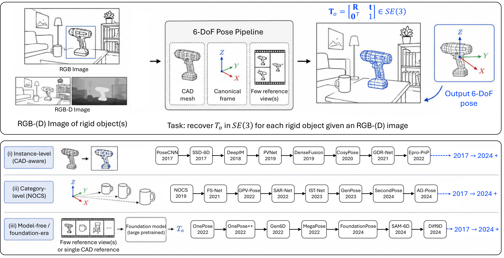
Instance-Level 6-DoF: CAD-Aware Pipelines.
With a mesh of each target object available, pose estimation becomes alignment of the mesh with image evidence, and synthetic renderings of the CAD models are the main training signal. PoseCNN set the modern baseline by regressing an object’s image-space center and a quaternion rotation with a CNN, and introduced the YCB-Video benchmark. A second family decouples the network from the geometric solver by predicting projections of sparse 3D keypoints and solving PnP with RANSAC; PVNet votes per pixel for each keypoint, which makes it robust to occlusion, while SSD-6D folds a discretized viewpoint classification into a detector and skips PnP entirely. A third family regresses dense object coordinates instead of sparse keypoints: DenseFusion fuses RGB-D features per pixel for iterative refinement, GDR-Net couples dense coordinate regression with a geometry-guided PnP layer, ZebraPose encodes the surface with a coarse-to-fine binary code, and SurfEmb learns continuous correspondence distributions that stay robust under symmetry and occlusion; EPro-PnP replaces the non-differentiable PnP solver with a probabilistic surrogate so the whole pipeline trains end to end. A fourth family refines by render-and-compare: DeepIM iteratively minimizes the residual between a rendered CAD view and the image, and CosyPose extends this to consistent multi-view, multi-object refinement and led the BOP 2020 leaderboard. The same machinery reaches far from the tabletop, for example spacecraft pose under extreme scale variation .
Category-Level 6-DoF + Size: Canonical Frame Recovery.
Without a per-instance mesh but with a category that admits a canonical frame, pose is recovered up to that frame together with absolute scale, a 9-DoF prediction. NOCS introduced the formulation, mapping every instance of a category into a Normalized Object Coordinate Space and regressing dense correspondences there; its REAL275 benchmark is the standard category-level evaluation. Later work re-parameterizes the problem: FS-Net decouples rotation, translation, and size and speeds up inference through a shape-based pathway, GPV-Pose grounds rotation in geometry-guided point-wise voting, SAR-Net recovers a deformed shape prior alongside pose to handle intra-class variation, and IST-Net drops the shape prior and learns the canonical transformation implicitly. SecondPose and AG-Pose import DINOv2 semantics and instance-adaptive keypoints for further gains on REAL275, and GenPose casts category-level pose as score-based diffusion sampling, the precursor of the 9-DoF diffusion model below. The family’s standing assumption, that a meaningful canonical frame exists per category, holds for mugs and cameras but fails for heterogeneous semantic groupings, which motivates the model-free line.
Model-Free / Novel-Object Pose: Foundation-Model Era.
The largest recent shift is away from per-object and per-category training toward objects first seen at test time, given only a few reference images or a CAD model. From a short reference video, OnePose triangulates a feature point cloud and matches test queries against it, OnePose++ removes the dependence on repeatable keypoints with a dense-matching front end, and Gen6D unifies detection, viewpoint selection, and refinement without per-object fine-tuning. From a CAD model alone, MegaPose trains render-and-compare on millions of synthetic objects and transfers zero-shot, FoundationPose consolidates model-based and model-free operation under large-scale synthetic pretraining and leads the BOP novel-object track, GigaPose cuts the cost of render-and-compare by sampling templates in a two-DoF rotation space and recovering the remaining parameters from a single patch correspondence, and SAM-6D uses the Segment Anything Model as a zero-shot detection front end before learned pose matching. A further sub-line drops pose-specific training altogether and matches frozen foundation features: FoundPose establishes 2D–3D correspondences between DINOv2 patch descriptors of the query and pre-rendered templates, and FreeZe fuses frozen 3D geometric descriptors with 2D foundation features and recovers pose by RANSAC registration; a FreeZe variant took first place for unseen-object localization and detection in the BOP Challenge 2024 , overtaking the render-and-compare line. Diff9D reformulates 9-DoF category-level pose as diffusion sampling, the object-pose instance of the diffusion-as-perception pattern seen for depth and normals, which yields calibrated multi-hypothesis predictions (natural for symmetric objects) at the cost of latency. The foundation-model line has thus largely dissolved the instance-versus-category-versus-model-free distinction; the active question is how cheap the per-test-object supervision can become.
Sensing Modalities.
Across these axes, the input modality fixes which supervisory signals exist and which symmetries can be resolved. RGB-only pipelines suit mobile and AR deployment but face scale–depth ambiguity on texture-poor objects; RGB-D fusion (DenseFusion , CosyPose with depth refinement, FoundationPose ) is substantially more accurate on BOP at the cost of a depth sensor; depth-only methods are rare but remain competitive on highly symmetric objects where shading carries little rotational evidence. Monocular depth foundation models (§1.2.1) are increasingly used as plug-in depth providers at inference, which narrows the RGB / RGB-D gap without an active sensor.
Datasets and Metrics
Table [tab:pose_datasets] lists the recurring benchmarks. Instance-level evaluation grew from LINEMOD , the texture-rich entry point that introduced the ADD metric, through its occlusion-heavy re-annotation LINEMOD-Occluded , which modern methods report as the more informative of the two, to the video setting of YCB-Video and the texture-less, symmetric industrial parts of T-LESS , where symmetry handling decides the ranking; HomebrewedDB serves as an out-of-distribution test for methods trained on the BOP core data, and SPEED stretches the task to spacecraft under scale and illumination ranges no tabletop set covers. NOCS-REAL275 with its synthetic companion CAMERA is the category-level standard. The BOP Challenge consolidates the instance-level datasets under one protocol and has been the field’s headline leaderboard since 2017; its 2023 edition separates a classical CAD-known track from a novel-object track, formalizing the model-free shift. Modern papers report at minimum on LINEMOD-Occluded, YCB-Video, and a BOP-core subset, novel-object methods add the BOP unseen-object track, and category-level methods center on REAL275.
| Dataset | Year | Setting | Objects | Frames | Role |
|---|---|---|---|---|---|
| LINEMOD | 2012 | Instance, textured household, RGB-D | 15 | \(\sim\)1.2K / object | Entry benchmark; introduced ADD |
| LINEMOD-Occluded | 2014 | Instance, heavy mutual occlusion | 8 | re-annotated LM scene | Occlusion stress test |
| YCB-Video | 2017 | Instance, RGB-D video, moving camera | 21 | \(\sim\)133K | Sequential pose and tracking |
| T-LESS | 2017 | Instance, texture-less, symmetric industrial parts | 30 | – | Symmetry / texture-poor stress test |
| HomebrewedDB | 2019 | Instance, household scenes | – | – | Out-of-distribution generalization |
| NOCS-REAL275 (+CAMERA) | 2019 | Category-level 9-DoF, RGB-D | 6 categories | \(\sim\)8K real (+ synthetic) | Category-level standard |
| SPEED | 2019 | Spacecraft, extreme scale and lighting | 1 | – | Beyond-tabletop deployment |
| BOP Challenge | 2018– | Unified protocol over LM-O, T-LESS, YCB-V, ITODD, IC-BIN, TUD-L, HB, HOPE | – | – | Headline leaderboard; novel-object track since 2023 |
Each metric answers to a particular failure mode of pose error, and the symmetry-aware variants exist because many objects admit several valid poses. The Average Distance of Model Points (ADD) is the standard for asymmetric objects: with predicted pose \((\hat{\mathbf{R}}, \hat{\mathbf{t}})\), ground truth \((\mathbf{R}, \mathbf{t})\), and mesh vertices \(\mathcal{M}\), \[\begin{equation} \mathrm{ADD} = \frac{1}{|\mathcal{M}|} \sum_{\mathbf{x} \in \mathcal{M}} \left\| (\mathbf{R}\mathbf{x} + \mathbf{t}) - (\hat{\mathbf{R}}\mathbf{x} + \hat{\mathbf{t}}) \right\|, \end{equation}\] and a pose counts as correct when \(\mathrm{ADD} < 0.1\,d\) for object diameter \(d\), the ADD-0.1d threshold introduced with LINEMOD . For symmetric objects ADD-S replaces direct vertex correspondence with nearest-neighbor matching, \[\begin{equation} \mathrm{ADD\text{-}S} = \frac{1}{|\mathcal{M}|} \sum_{\mathbf{x}_1 \in \mathcal{M}} \min_{\mathbf{x}_2 \in \mathcal{M}} \left\| (\mathbf{R}\mathbf{x}_1 + \mathbf{t}) - (\hat{\mathbf{R}}\mathbf{x}_2 + \hat{\mathbf{t}}) \right\|, \end{equation}\] under the same threshold; the two are reported together so that symmetric and asymmetric objects are diagnosed separately. For AR overlay the relevant error is in image space, so the 2D projection error averages the pixel distance between mesh vertices projected under the two poses, with 5 px as the usual threshold. Category-level evaluation on REAL275 counts a prediction correct when \[\begin{equation} \angle(\mathbf{R}^{-1} \hat{\mathbf{R}}) < 5^\circ \quad \text{and} \quad \| \mathbf{t} - \hat{\mathbf{t}} \| < 5\,\mathrm{cm}, \end{equation}\] and adds 3D box IoU at \(50\%\) and \(75\%\) to score pose and size jointly. The BOP Challenge averages recall over three symmetry-aware errors, each thresholded at several operating points: the Visible Surface Discrepancy (VSD), which scores only the visible object surface and is therefore robust to occlusion, the Maximum Symmetry-aware Surface Distance (MSSD), the worst-case surface deviation over all valid symmetries, and its image-space analogue MSPD, \[\begin{equation} \mathrm{AR} = \tfrac{1}{3} \bigl( \mathrm{AR}_{\mathrm{VSD}} + \mathrm{AR}_{\mathrm{MSSD}} + \mathrm{AR}_{\mathrm{MSPD}} \bigr), \end{equation}\] averaged over the BOP core datasets. ADD and ADD-S remain the default for LINEMOD-style instance-level work, BOP-AR for cross-dataset comparison, and projection error for AR; the metrics persist side by side because no single norm captures both strict pose error and the equivalence-class structure that VSD and MSSD make explicit.
| Method | Family | Modality | Train assumption | Year | ADD-0.1d \(\uparrow\) | BOP-AR \(\uparrow\) |
|---|---|---|---|---|---|---|
| PoseCNN | Instance / direct | RGB | per-object | 2017 | 24.9 | – |
| PVNet | Instance / keypoint+PnP | RGB | per-object | 2019 | 40.8 | – |
| GDR-Net | Instance / coord. reg. | RGB | per-object | 2021 | 62.2 | – |
| CosyPose | Instance / refinement | RGB | per-object | 2020 | – | 63.3 |
| SurfEmb | Instance / dense corr. | RGB-D | per-object | 2022 | – | 75.8 |
| MegaPose | Model-free / render&comp. | RGB-D | cross-object | 2022 | – | 58.3 |
| FoundationPose | Model-free / found. | RGB-D | cross-object | 2024 | – | 78.8 |
Table 1.8 reports LINEMOD-Occluded, the most widely used instance-level benchmark under the BOP protocol. Among RGB methods scored by ADD(-S)-0.1d, explicit geometry steadily closes the gap over direct regression: PoseCNN’s 24.9 rises to 40.8 with per-pixel keypoint voting (PVNet) and to 62.2 with geometry-guided dense coordinate regression (GDR-Net). On the symmetry-aware BOP-AR, the render-and-compare CosyPose (63.3) and the dense-correspondence SurfEmb (75.8) are now matched or exceeded by model-free systems with no per-object training, FoundationPose reaching 78.8 against MegaPose’s earlier 58.3; this is the 2023–2024 shift that made novel-object pose a deployment target rather than a research curiosity. The gap between the two families is widest on the symmetric objects of T-LESS, where losses that model symmetry (BOP-AR-aware objectives, ADD-S optimization) generalize better than those assuming a single asymmetric pose.
Challenges
The onboarding bottleneck has shifted from pose to detection. Moving to novel objects relocated the limiting stage rather than removing it. On the BOP Challenge 2024 , 6-DoF localization of unseen objects has nearly caught up with the seen-object regime (the strongest training-free entry, a FreeZe variant , trails the best seen-object method by a few points of average recall), whereas detection of unseen objects still lags its seen-object counterpart by roughly a third and is now the largest error source in the novel-object stack. The open problem is zero-shot detection and segmentation of a never-seen instance in clutter, together with the cost of onboarding it: BOP 2024 added a track in which an object is registered from a short reference video, Any6D registers from a single RGB-D anchor image, and how few views, or whether a single image or a text prompt, suffice is the defining frontier question. The same challenge pivoted toward high-resolution AR/VR headset recordings, a signal that the benchmark-realism gap, including articulated and deformable objects, open-vocabulary targets named rather than modeled (POPE ), and egocentric capture, is now a first-order concern.
Absolute metric scale remains ambiguous for model-free targets. The true size of an unseen object is under-determined from RGB alone, since scale and depth trade off along the viewing ray. Category-level 9-DoF methods absorb this by regressing size in a canonical frame , and model-free systems lean on a depth sensor or a known CAD extent; when neither is available, scale is the residual unknown separating a plausible pose from a usable one, which Any6D makes explicit by coupling pose recovery with scale alignment, and monocular depth priors inherit the affine ambiguity of §1.2.1.
Accuracy trades sharply against latency. The methods that top the novel-object leaderboard are the least suited to closed-loop use: on BOP 2024 the most accurate unseen-object method runs in tens of seconds per image, close to an order of magnitude slower than both the fastest seen-object pipelines and the practical sub-second entries, which buy speed with accuracy. Heavy segmentation, render-and-compare, and diffusion priors (Diff9D ) are the cause, which is why one-correspondence template matching (GigaPose ), distillation, and selective invocation of expensive components have become load-bearing for robotic and AR loops at frame rate.
Symmetry and geometric ambiguity are irreducible. Symmetric and texture-less parts of the kind that fill T-LESS admit a continuous or discrete family of photometrically indistinguishable poses, and any loss assuming a unique target diverges on them; transparent and specular surfaces violate the brightness-constancy and depth-sensing assumptions behind correspondence and RGB-D fusion; rotation parameterization adds degeneracies that continuous 6D or axis-angle encodings reduce but do not remove; and heavy occlusion, the regime of LINEMOD-Occluded , starves the estimator of the evidence needed to resolve any of them. Generative multi-hypothesis pose (Diff9D ) predicts a distribution instead of a point, but turning that distribution into a calibrated confidence a planner can trust in safety-critical manipulation and driving is still largely unaddressed.
Across these problems, pose pipelines increasingly consume foundation-model priors as plug-in modules (promptable segmentation for zero-shot detection, monocular depth for inference-time geometry) rather than training pose-specific backbones, and the boundary between pose estimation, 6-DoF tracking, and neural reconstruction is dissolving, as FoundationPose folds estimation and tracking into one loop and the reconstruction discussion of Chapter 3 pursues further. Promptable, real-time, uncertainty-aware pose is the target the next generation of methods converges on.
Spatial Structure Construction
With entities recognized and their positions fixed, what remains is how they hang together. Spatial structure construction turns independently localized entities into an organized configuration: which objects relate to which, how those relations compose into a scene, and how the scene as a whole is laid out. The section builds outward in scope, from pairwise spatial relations, through the scene graphs that assemble them, to room-level layout; it then lets structure take on time and scale, as the event structure of action detection and the whole-environment structure of mapping and SLAM. Structure in real perception is seldom purely static, and what the section yields is the explicit spatial configuration that downstream reasoning and planning act on.
Spatial Relation Extraction
Spatial Relation Extraction (SRE) identifies the relative spatial configuration of objects, such as “table-left of-chair” or “car-behind-bus”. It turns detections or segmentations into spatial relation knowledge that feeds reasoning, scene graph generation , autonomous driving , and embodied AI . It is narrower than Scene Graph Generation (SGG), which runs the full pipeline from detection to relation prediction and includes non-spatial predicates (“person-holding-book”); here SRE covers only geometric, topological, and projective spatial predicates.
Task Definition
Given a visual scene (a 2D image, a video, a point cloud, or an RGB-D stream) and two target object instances specified by tags, boxes, or masks, SRE outputs their spatial relationship either as a triplet \((s, p, o)\) with \(p\) drawn from a spatial predicate vocabulary, or as a natural-language sentence describing the relation and its context. Three subtasks differ in output granularity. Visual Spatial Classification (VSC) predicts the predicate from a closed label set (“on”, “in”, “next to”). Visual Spatial Description (VSD) generates a free-form sentence that can carry attributes and context beyond the bare predicate. Quantitative spatial understanding replaces qualitative predicates with metric quantities (distances, absolute sizes, 3D orientations), which navigation and manipulation require. The field has moved through these three in order, from closed-set classification to generation to metric quantification.
Methodology
Figure 1.19 summarizes the task and the three method families surveyed below.
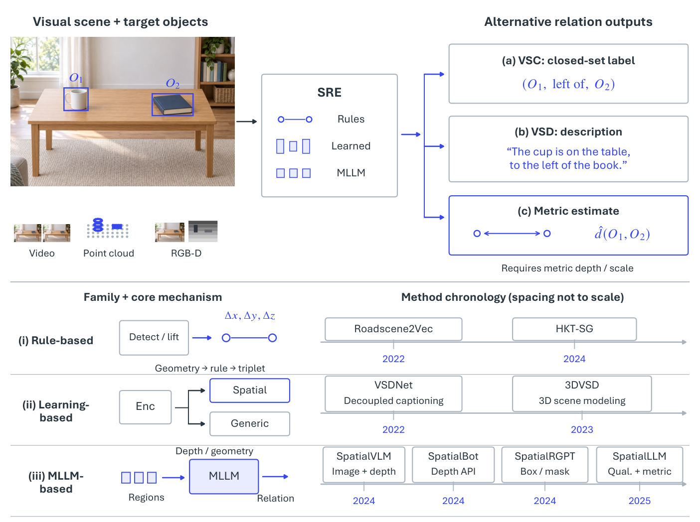
Rule-based approaches.
Rule-based pipelines first run off-the-shelf perception (a 2D detector with a bird’s-eye-view transform , or a 3D scene extractor ) to obtain each object’s 3D position, size, orientation, and appearance in a camera-centered frame whose vertical axis is aligned with gravity, and then apply deterministic geometric rules to the centroids to produce \((O_1, p, O_2)\) triplets . Let \((x_{O_i}, y_{O_i}, z_{O_i})\) denote the world-coordinate centroid of object \(O_i\), with \(y\) aligned to the gravity axis. Then \[\begin{equation} \begin{aligned} \Delta x &= |x_{O_1} - x_{O_2}|, \quad \Delta y = |y_{O_1} - y_{O_2}|, \quad \Delta z = |z_{O_1} - z_{O_2}|, \\ &\Delta y > \tau \,\land\, y_{O_1} > y_{O_2} \;\Rightarrow\; \text{``above''}, \\ &\Delta x > \Delta z \,\land\, \Delta x > \tau \;\Rightarrow\; \text{``left''}/\text{``right''}, \end{aligned} \end{equation}\] where \(\tau\) is a small threshold (e.g. , \(0.2\) m). Such rules are cheap but brittle: 2D-to-3D back-projection misplaces occluded or oddly posed objects (a rear vehicle whose centroid lands ambiguously on the BEV plane), fixed rules cannot express functional or contextual relations (“person riding bicycle”, a book more likely on a shelf than under it), and every new domain needs its rules rewritten.
Learning-based approaches.
Zhao et al. decoupled spatial relation generation from generic captioning and trained it with a joint visual–spatial objective; 3DVSD moved the same task into 3D scene modeling and added structure-aware sampling that holds up under occlusion.
MLLM-based approaches.
Multimodal large language models carried the line from image-level predicates toward finer and more metric grounding. SpatialVLM coupled monocular depth with the visual encoder during pre-training so the model answers metric queries such as “How far is A from B?”, outperforming GPT-4V on spatial VQA. SpatialBot exposes pixel-level depth queries through a depth API and trains progressively, translating spatial reasoning into higher robotic grasping success. SpatialRGPT sharpens granularity from the whole image to regions, accepting boxes or masks and auto-generating 8.7M region-level spatial samples through scene-subgraph sampling (S\(^3\)). SpatialLLM pairs a hybrid CLIP–DINOv2 encoder with staged data injection to hold qualitative and quantitative capabilities in one model.
Datasets and Metrics
Table 1.9 lists the benchmarks. They differ mainly in how relations were collected: manual labeling of robot-captured lab scenes in SpatialAwareRobot ; adversarial crowdsourcing in SpatialSense , where annotators propose relations that fool a baseline and only those count, which makes the dataset deliberately hard; the merge of SpatialSense and Visual Genome into VSRC , whose 143K free-form descriptions make it the standard VSD benchmark; the 34-preposition, English–French annotations of SpatialVOC2K ; and the automatically generated, depth-aware SpaceSGG , released as 10K scene descriptions, 20K question–answer pairs, and 20K multi-turn conversations over 20K scenes.
| Dataset | Scene Type | Modality | Annotation | Samples | Relation Categories |
|---|---|---|---|---|---|
| SpatialAwareRobot | Robotics | Image | Manual | 1,000 | 7 |
| SpatialSense | Generic | Image | Manual | 11,569 | 9 |
| VSRC | Generic | Image | Manual | 29,000 | 9 |
| SpatialVOC2K | Generic | Image | Manual | 2,026 | 34 |
| SpaceSGG | Generic | Image | Automated | 20,000 | – |
Each subtask has its own evaluation regime, and the metrics are not comparable across them. VSC is scored as classification: predicate accuracy and per-relation precision/recall on SpatialSense and VSRC , with the driving-scene systems Roadscene2Vec and HKT-SG reporting per-relation F1 or accuracy on their own data; results on SpatialSense’s adversarial split lag well behind those on conventional crowdsourced data, which is the contextual-relation difficulty taken up under Challenges. VSD is scored as generation: VSDNet and 3DVSD report BLEU-4, METEOR, and CIDEr on VSRC, and LLaVA-SpaceSGG reports QA accuracy on SpaceSGG. Quantitative understanding is the newest regime: SpatialVLM and SpatialRGPT report distance- and size-estimation accuracy against depth-aligned ground truth on auto-generated test sets (SpatialVLM-Bench, SpatialRGPT-Bench), SpatialLLM reports combined qualitative and quantitative VQA accuracy, and SpatialBot adds robotic grasp success as an embodied proxy. MLLM-based models dominate the qualitative leaderboards but still fall short on metric-scale reasoning, which motivates the unified representations discussed next.
Challenges
Spatial relations are not purely geometric. “A cup on a table” is plausible and “a cup on a wall” is not, yet the two differ only in object identity, so rule-based and purely geometric methods cannot capture functional or commonsense constraints; a model needs to know what objects are for and where they tend to be, not just their boxes or point coordinates. Metric grounding is the second gap. MLLMs handle contextual and functional predicates well but judge distances, sizes, and angles poorly; injecting geometry and depth during pre- or post-training, or exposing dedicated spatial tools, is the current route, and the longer-term goal is a representation that holds discrete predicates (“near”) and continuous quantities (“2 meters away”) together, since navigation and manipulation need both. Generalization is the third. SpatialSense and VSRC cover a small slice of real scenes, and models trained on them degrade under new object appearances, scene complexity, lighting, and occlusion; SpatialVLM and its successors generalize better, but unseen and dynamic environments remain largely untested.
Scene Graph Generation
Scene graph generation (SGG) parses visual content into a graph of triplets, each joining a subject and an object through a predicate, for example \((\text{person}, \text{rides}, \text{horse})\). The graph records not only which objects are present but how they interact, which is what retrieval , captioning , autonomous driving , and robotics consume downstream.
Task Definition
Given a visual scene, SGG produces a graph \[\begin{equation} \mathcal{G} = \{(s_i, p_i, o_i)\}_{i=1}^{M}, \qquad s_i, o_i \in \mathcal{O},\; p_i \in \mathcal{P}, \end{equation}\] where each entity in \(\mathcal{O}\) is an object instance with a localization (a bounding box, or a mask in the panoptic setting) and a class label, and \(p_i\) is a predicate from a relation vocabulary \(\mathcal{P}\) describing how \(s_i\) and \(o_i\) interact.
The task is instantiated by input modality. Image SGG (ISG) on static 2D images is the original and most studied setting and anchors most benchmarks. Video SGG (VSG) adds time, so relations become dynamic and temporally extended, and temporal context disambiguates interactions a single frame leaves open. Textual SGG (TSG) parses a sentence (“A person is riding a horse in a field”) into a graph, treating SGG as structured language parsing. 3D SGG (3DSG) operates on point clouds or meshes and models relations in metric 3D space, free of the perspective ambiguity of images. Universal SGG (USG) aims at one graph from several simultaneous modalities (image, video, 3D, text). Two further variants change the level of detail rather than the modality. Human–Object Interaction detection (HOI) restricts the subject to humans and has become a field of its own because of pose variability and the subtlety of intent. Panoptic SGG (PSG) grounds nodes on panoptic segmentation masks instead of boxes, so relations can involve “stuff” (sky, road) and are localized without the imprecision of boxes.
Methodology
Figure 1.20 illustrates the five modality settings and the two specializations with a representative input and output each.
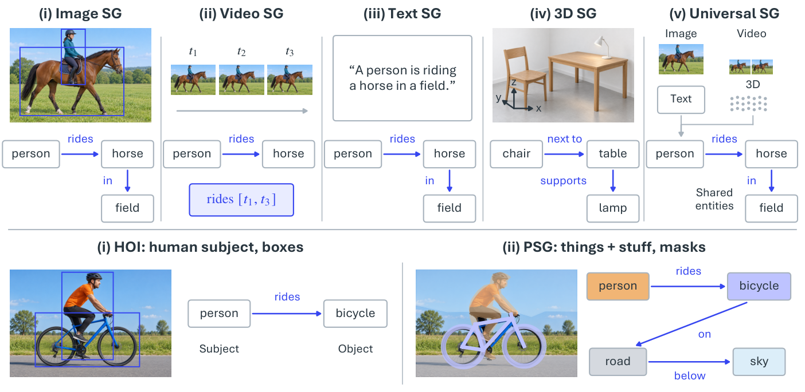
Two-stage methods.
Two-stage methods were the standard for years: a pre-trained detector such as Faster R-CNN produces boxes and per-object features, and a separate relation model predicts a predicate for each pair. Specializing each stage made the graphs accurate, but detector errors propagate uncorrected into relation prediction, the two models are trained and tuned separately, and object interactions are only modeled after detection has already committed.
One-stage methods.
One-stage methods fold detection and relation prediction into one end-to-end network. Pixel-based and fully convolutional formulations came first; after DETR , most one-stage SGG adopted set prediction with learned queries, and the methods differ in what the queries represent. RelTR uses paired subject–object queries so the Transformer predicts relations between pairs directly; SGTR decouples subject, object, and predicate queries and composes them, which lets each component be predicted on its own; and PSGTR uses triplet queries that emit scene-graph triplets without a detector at all.
Prior knowledge.
Because predicates are long-tailed and many relations are not visually decidable, SGG has long imported priors. Language priors supply semantic embeddings that help rare predicates; statistical priors model object-pair co-occurrence; knowledge graphs such as ConceptNet add commonsense ; and LLMs bring world knowledge .
Beyond images.
The non-image settings reuse these designs and add modality-specific machinery. Video SGG tracks object tubes and aggregates relations over time: TRACE decomposes relation prediction by temporal segment and STTran applies a spatio-temporal Transformer over frame-level graphs. Textual SGG is a parsing problem, for which the FACTUAL parser fine-tunes a sequence-to-sequence model to emit faithful triples. 3D SGG predicts relations from point-cloud or mesh segments with graph networks , and SceneGraphFusion does so incrementally from an RGB-D stream so the graph grows with the reconstruction. Panoptic SGG is served by the triplet-query PSGTR and its video extension , and USG shares one graph decoder across image, video, 3D, and text inputs.
Datasets and Metrics
| Dataset | Modality | Obj. Class | BBox | Rela. Class | Triplets | Instances |
|---|---|---|---|---|---|---|
| Visual Phrase | Image | 8 | 3,271 | 9 | 1,796 | 2,769 |
| Scene Graph | Image | 266 | 69,009 | 68 | 109,535 | 5,000 |
| VRD | Image | 100 | - | 70 | 37,993 | 5,000 |
| Open Images v7 | Image | 600 | 3,290,070 | 31 | 374,768 | 9,178,275 |
| Visual Genome | Image | 5,996 | 3,843,636 | 1,014 | 2,347,187 | 108,077 |
| GQA | Image | 200 | - | 310 | - | 3,795,907 |
| VrR-VG | Image | 1,600 | 282,460 | 117 | 203,375 | 58,983 |
| UnRel | Image | - | - | 18 | 76 | 1,071 |
| SpatialSense | Image | 3,679 | - | 9 | 13,229 | 11,569 |
| SpatialVOC2K | Image | 20 | 5,775 | 34 | 9,804 | 2,026 |
| OpenSG | Image (panoptic) | 133 | - | 56 | - | 49K |
| AUG | Image (overhead) | 76 | - | 61 | - | - |
| STAR | Image (satellite) | 48 | 219,120 | 58 | 400,795 | 31,096 |
| ReCon1M | Image (satellite) | 60 | 859,751 | 64 | 1,149,342 | 21,392 |
| SkySenseGPT | Image (satellite, instruction) | - | - | - | - | - |
| Traffic Scene Graph | Image (traffic) | 2,266 | - | 4,272 | - | 451 |
| ImageNet-VidVRD | Video | 35 | - | 132 | 3,219 | 100 |
| VidOR | Video | 80 | - | 50 | - | 10,000 |
| Action Genome | Video | 35 | 0.4M | 25 | 1.7M | 10,000 |
| AeroEye | Video (drone) | 56 | - | 384 | - | 2.2M |
| PVSG | Video (panoptic) | 126 | - | 57 | 4,587 | 400 |
| ASPIRe | Video (interlacements) | - | - | 4.5K | - | 1.5K |
| Ego-EASG | Video (egocentric) | 407 | - | 235 | - | - |
| IESG | Video (traffic) | 9 | - | 16 | - | - |
| 3DSSG | 3D | 528 | - | 39 | - | 48K |
| PSG4D | 4D | 46 | - | 15 | - | - |
| 4D-OR | 4D (operating room) | 12 | - | 14 | - | - |
| MM-OR | 4D (operating room) | - | - | - | - | - |
| EgoExOR | 4D (operating room) | 36 | - | 22 | 568,235 | - |
| TSG Bench | Text | - | - | - | 11,820 | 4,289 |
| FACTUAL | Text, Image | 4,042 | - | 1,607 | 40,149 | 40,369 |
| DiscoSG-DS | Text, Image | 4,018 | - | 2,033 | 68,478 | 8,830 |
Table 1.102 lists the benchmarks by modality. The image benchmarks run from the small precursors Visual Phrase , Scene Graph , and VRD , which first exposed the long-tailed predicate distribution, to Visual Genome , Open Images , and GQA , with VrR-VG and UnRel carved out to test visually relevant and zero-shot relations respectively. Visual Genome is the primary benchmark but its raw release (33,877 object and 40,480 relationship synsets) is noisy and heavily long-tailed, so the community works with cleaned subsets: the broad cleaning in Table 1.10 keeps roughly 6K object and 1K predicate classes, and the de-facto SGG benchmark VG150 restricts these to the 150 most frequent object and 50 most frequent predicate classes. Spatial-only relations are covered by SpatialSense and SpatialVOC2K (see the preceding subsection), panoptic grounding by OpenSG , and non-standard viewpoints by the overhead AUG , the satellite STAR , ReCon1M , and instruction-based SkySenseGPT , and the traffic-scene graphs of . Video benchmarks began with ImageNet-VidVRD and the trajectory-annotated VidOR , then specialized to human activity (Action Genome ), drone footage (AeroEye ), panoptic video (PVSG ), fine topological interlacements (ASPIRe ), egocentric capture (Ego-EASG ), and imminent traffic events (IESG ). 3DSSG is the standard 3D benchmark; PSG4D adds time, and the operating-room sets 4D-OR , MM-OR , and EgoExOR bring multimodal (RGB-D, audio, robot logs) and egocentric surgical scenes. On the text side, TSG Bench evaluates LLMs on graph generation from narratives, while FACTUAL and DiscoSG-DS pair images with text for factually consistent, cross-modal graphs.
Evaluation separates what is given from what is predicted. In Predicate Classification (PredCls) boxes and object labels are given and only predicates are predicted; in Scene Graph Classification (SGCls) boxes are given and both object labels and predicates are predicted; in Scene Graph Generation (SGGen, also SGDet) everything is predicted, and a triplet counts only if both boxes overlap their ground truth at IoU \(\geq 0.5\), with Phrase Detection relaxing this to the union box and SGGen+ also crediting correctly detected singleton nodes. Panoptic SGG replaces box IoU with mask IoU. The standard metric is recall of ground-truth triplets among the top-\(K\) predictions, \[\begin{equation} R@K = \frac{|Top_{K} \cap GT|}{|GT|}, \end{equation}\] under a graph constraint (one predicate per pair) or without it. Because \(R@K\) is dominated by frequent predicates, mean Recall@K (\(mR@K\)) averages recall per predicate class and has become the long-tail metric of record; the gap between \(R@K\) and \(mR@K\) drove much of the debiasing literature . Weighted triplet recall, micro- versus macro-averaging over images, the stricter \(mAP_{rel}\) / \(mAP_{phr}\) of the Open Images challenge, and retrieval-based R-Precision are reported in specific settings.
Each modality has its own benchmark and protocol, so leaderboards are not comparable across types: video SGG uses ImageNet-VidVRD, VidOR, and Action Genome with the same triad plus temporal-IoU thresholds; textual SGG uses set F1 over triples on FACTUAL and LLM-judged action coverage on TSG Bench; 3D SGG uses object-, predicate-, and triplet-level recall on 3DSSG; panoptic SGG uses mask-IoU \(R@K\) on OpenSG and PVSG. Table 1.11 therefore reports only the image setting, where VG150 SGDet is shared.
| Method | Family / backbone | Year | R@50 | R@100 | mR@50 | mR@100 |
|---|---|---|---|---|---|---|
| Neural Motifs | Two-stage, X-101-FPN | 2018 | 32.1 | 36.9 | 5.5 | 6.8 |
| BGNN | Two-stage, X-101-FPN | 2021 | 31.0 | 35.8 | 10.7 | 12.6 |
| SGTR | One-stage, DETR-R101 | 2022 | 24.6 | 28.4 | 12.0 | 15.2 |
| RelTR | One-stage, DETR-R50 | 2023 | 27.5 | – | 10.8 | – |
| EGTR | One-stage, Deformable DETR-R50 | 2024 | 30.2 | 34.3 | 7.9 | 10.1 |
Table 1.11 shows the trade-off that still shapes image SGG. The two-stage Motifs baseline keeps the highest overall recall, but its mean recall is the lowest, which is the frequent-predicate bias in numbers; BGNN’s debiasing doubles mean recall at a small cost in \(R@K\). The one-stage DETR-style models start several recall points lower, since they must detect and relate in one pass with a weaker backbone, yet SGTR and RelTR reach the best mean recall of the group, and EGTR closes most of the overall-recall gap to two-stage methods while running end to end.
Challenges
From single-modality to universal SGG.
Methods are built per modality, yet real scenes are multimodal, with images carrying visual detail and text carrying abstract concepts and events. A universal scene graph would express all of them in one cross-modal representation; the hard part is identifying the same objects, events, and relations across modalities and suppressing cross-modal noise, and granularity has to follow the application rather than a fixed ontology, since robotic interaction or driving may need relations at a level of detail that image-level graphs do not provide.
Integrating SGG with MLLMs.
MLLMs are strong at language and weaker at structured visual understanding. Scene graphs offer a way in: pretraining objectives that mask and predict graph nodes (objects, attributes, relations) across image, video, and text inputs would teach a language model to read structure rather than only the next token, and the scene-graph-guided MLLMs of the preceding subsection are an early instance.
From images to embodied use.
Most SGG analyzes static images or videos, but the graph is most useful when it is kept live: robots update it as they act , and driving systems read relations among lanes, signs, and pedestrians from it . As these uses grow, the scene graph shifts from a product of perception to the state on which decision and interaction operate.
Layout Estimation and Room Parsing
Layout estimation recovers the structural geometry of an indoor space, the corners, walls, floor, and ceiling that bound it, as a simplified 3D “wireframe” called the room layout. Room parsing extends this by also detecting, localizing, and labeling the objects inside (furniture and fixtures), giving a complete description of the scene. For outdoor scenes, the analogous problem is recovering a road layout in bird’s-eye view from a street image . Figure 1.21 shows the inputs and output representations for the structural part of the task.
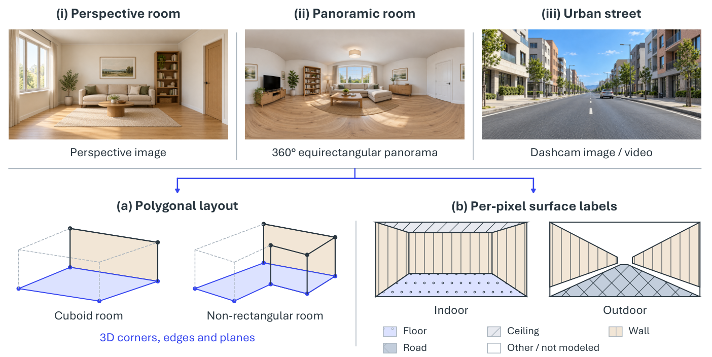
Task Definition
Given an image \(\mathbf{I}\in\mathbb{R}^{H\times W\times 3}\) (a perspective view, a \(360^\circ\) panorama, or a multi-view or video capture), layout estimation recovers the dominant surfaces that bound the navigable volume of a room as a room layout \(\mathcal{L}=\{P_k\}_{k=1}^{K}\), where each \(P_k\) is a planar polygon in 3D; equivalently the output may be plane parameters \((\mathbf{n}_k,d_k)\) or a per-pixel structural-surface label map. Under a vertical-wall model, the layout compresses to a floor-plan polygon with floor and ceiling heights \(y_f, y_c\). Outdoor road-layout methods instead predict road regions and vehicle occupancy in bird’s-eye view. Room parsing adds per-object instance masks \(\{m_i\}\) or boxes with class labels, drawn from a fixed ontology or, in the open-vocabulary setting, from free-form language.
Methodology
Pre-deep-learning approaches.
Classical room layout estimation rests on the Manhattan assumption : the scene is built from surfaces aligned with three mutually orthogonal directions, as walls, floors, and ceilings in most built environments are. Hedau et al. introduced the task, modeling a cluttered indoor image jointly as a 3D box layout (the room as if empty) and per-pixel surface labels (visible walls, floor, ceiling, and objects). Three mutually orthogonal vanishing points are first estimated with a robustified variant of Rother’s method , in which a line segment \(l\) votes for a candidate vanishing point \(p\) with \[\begin{equation} v(l,p) = |l| \cdot \exp\!\left(-\frac{\alpha(l,p)^2}{2\sigma^2}\right), \end{equation}\] where \(\alpha(l,p)\) is the angle between \(l\) and the line from the midpoint of \(l\) to \(p\), \(|l|\) is the segment length, and \(\sigma\) is a fixed bandwidth; candidates are selected greedily, removing the lines that supported each selected point. The vanishing points fix the orientation of the box; sampling pairs of rays through two of them generates box-layout hypotheses, whose remaining edges follow from the third vanishing point, and a learned structured regressor scores the hypotheses and selects the layout.
Deep learning approaches.
Mallya and Lazebnik first used a fully convolutional network to predict informative edge maps, then kept the classical hypothesis-generation-and-ranking step, scoring hypotheses with features from the learned edges together with line membership and geometric context. Later deep estimators are best organized by input modality and geometric representation, which vary independently: panorama input does not imply a cuboid output, and non-cuboid geometry need not break the Manhattan assumption. Figure 1.22 groups the representative methods of 2015–2021 along these lines.
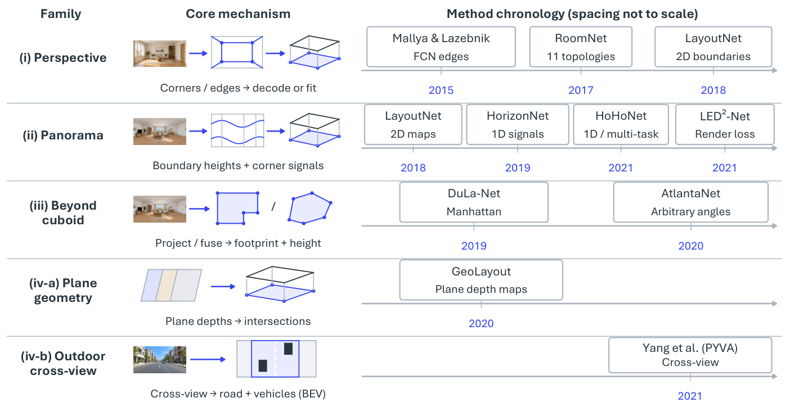
(i) Perspective-image corner and edge predictors. RoomNet regresses an ordered set of room corners with a recurrent encoder–decoder conditioned on one of 11 predefined cuboid topologies, and LayoutNet predicts corner and boundary probability maps and fits a cuboid to them. The topology constraint simplifies reconstruction, but a single perspective view often leaves part of the room outside the frame.
(ii) Panorama-based methods. A \(360^\circ\) equirectangular panorama removes the field-of-view truncation of a perspective image, though not occlusion. LayoutNet predicts 2D corner and boundary maps from a gravity-aligned panorama; HorizonNet compresses the layout into three 1D per-column signals (floor-wall boundary, ceiling-wall boundary, and wall-wall corner indicator), adds Pano Stretch augmentation, and reconstructs general Manhattan layouts as well as cuboids; HoHoNet learns latent horizontal features decodable into layout, depth, and semantics; and LED2-Net supervises the layout through differentiable depth rendering, comparing depth rendered from the predicted layout with the target geometry.
(iii) Beyond-cuboid and Atlanta-world methods. Floor-plan prediction separates the number of walls from the constraints on their orientation. DuLa-Net combines equirectangular and ceiling–floor projections to estimate a floor plan under a Manhattan prior, which admits non-rectangular rooms with orthogonal walls. AtlantaNet projects a gravity-aligned panorama onto horizontal planes above and below the camera and predicts a room footprint and height under the Atlanta-world model, which keeps walls vertical but allows arbitrary horizontal orientation, including curved footprints. Both still assume vertical walls, so slanted walls and ceilings remain out of reach.
(iv) Plane-based indoor geometry and outdoor cross-view prediction. GeoLayout predicts pixel-level plane parameters, infers the depth map of each dominant plane, and reads layout boundaries off the intersections of those depth maps, a geometric alternative to regressing polygon vertices; the accompanying Matterport3D-Layout dataset covers cuboid and non-cuboid rooms. For outdoor scenes, Yang et al. use a cross-view transformation with cycle-consistency constraints to predict road layout and vehicle occupancy in bird’s-eye view from a monocular front-facing image.
Datasets and Metrics
Table [tab:layout_estimation_room_parsing_dataset] summarizes the benchmarks. Perspective-image evaluation grew from Hedau (308 web and LabelMe images with box layouts and surface labels) through its augmented successor Hedau+ and the more cluttered SUNbox drawn from SUN2012 , both built by Mallya and Lazebnik to train FCN edge predictors, to LSUN Room Layout , the standard perspective benchmark with corner positions and cuboid topologies on over 5K images. Corridor and video data serve navigation: Yang labels ground versus wall in corridor images, FreeYourCamera records six-degree-of-freedom smartphone walks that frequently violate box and Manhattan assumptions, and MichiganIndoorCorridor provides non-Manhattan corridors with glass and reflections. Panoramic and 3D evaluation rests on PanoContext (cuboid layouts and furniture for about 500 SUN360 panoramas, the standard testbed for LayoutNet, HorizonNet, and LED2-Net), Stanford 2D-3D-S (about 70K RGB-D panoramas with depth, normals, semantics, and meshes over 270 rooms, enabling joint layout-depth-semantics evaluation), and Matterport3D-Layout , derived from Matterport3D with RANSAC-fitted plane ground truth for cuboid and non-cuboid rooms.
| Dataset | Year | Scene | Modality | Scale | Annotation |
|---|---|---|---|---|---|
| Hedau | 2009 | Room | Image | 308 | Box layout + surface labels |
| Hedau+ | 2015 | Room | Image | 337 | Box layout (Hedau + 75 bedroom images) |
| SUNbox | 2015 | Room | Image | 543 | Box layout, cluttered SUN2012 scenes |
| LSUN Room Layout | 2015 | Room | Image | 5,394 | Corners + 11 cuboid topologies |
| Yang | 2016 | Corridor | RGB-D image | 967 | Ground / non-ground masks |
| FreeYourCamera | 2013 | Mixed | Video (6-DoF) | 10 seq. (84 frames) | Layout under non-box, non-Manhattan motion |
| MichiganIndoorCorridor | 2011 | Corridor | Video | 11 seq. (\(\sim\)3,300 frames) | Ground + three walls on first frame |
| PanoContext | 2014 | Room | Panorama | \(\sim\)500 | Cuboid layout + furniture |
| Matterport3D-Layout | 2020 | Room | RGB-D image | 7,360 | Plane parameters, cuboid + non-cuboid |
| Stanford 2D-3D-S | 2017 | Building | RGB-D panorama | \(\sim\)70K | Layout, depth, normals, semantics, mesh |
Metrics follow the output representation. Perspective benchmarks (Hedau, LSUN) report pixel error, the fraction of pixels whose predicted surface label differs from the ground truth, and corner error, the mean distance between predicted and true corners normalized by image size; the edge-map methods additionally report the contour-detection F-scores at the optimal dataset scale (ODS, one threshold for the whole set) and optimal image scale (OIS, the best threshold per image). Panoramic and 3D benchmarks (PanoContext, Stanford 2D-3D-S, Matterport3D-Layout) report 3D and 2D room IoU between the predicted and ground-truth layout volumes or floor plans, with frequency-weighted IoU and pixel accuracy as segmentation-style complements. A method trained for one input type rarely transfers to the other without re-training, so perspective and panoramic results are not compared directly, and the outdoor road-layout protocol is separate again.
| Method | Representation | Year | PanoContext | Stanford 2D-3D-S | Matterport3D-Layout |
|---|---|---|---|---|---|
| LayoutNet | 2D corner + boundary maps | 2018 | 74.48 | 76.33 | 75.82 |
| DuLa-Net | Dual projection, Manhattan plan | 2019 | 77.42 | 79.36 | 75.05 |
| HorizonNet | 1D column representation | 2019 | 82.17 | 79.79 | 78.73 |
| AtlantaNet | Top-down footprint, Atlanta world | 2020 | 78.76 | 82.43 | 80.02 |
| LED2-Net | Differentiable depth rendering | 2021 | 82.75 | 83.77 | 81.52 |
Table 1.12 compares the panorama methods under one protocol. The 1D column representation of HorizonNet gained about eight IoU points over LayoutNet’s 2D maps on PanoContext, and the geometric supervision of LED2-Net adds a further point or two on every benchmark; the beyond-cuboid methods pay for their generality on cuboid-heavy PanoContext (DuLa-Net, AtlantaNet below HorizonNet) and recoup it on Matterport3D-Layout, whose non-cuboid rooms are exactly what they were designed for.
Challenges
The geometric priors that make layout estimation tractable also bound it. Cuboid models cannot express alcoves or L-shaped plans; Manhattan models keep orthogonal walls even when the footprint is free-form; the Atlanta-world model of AtlantaNet frees wall orientation but not wall tilt; and plane-based methods such as GeoLayout approximate curved geometry only with many planes. Slanted enclosures, split levels, and the outdoor bird’s-eye-view target of , which is a different output space altogether, all sit outside the standard formulations. Clutter and occlusion are the second obstacle: furniture hides the corners, boundaries, and vanishing lines that both classical and learned methods read, so estimators must hallucinate hidden structure from layout priors, and confidently wrong boundaries without uncertainty are the typical failure. Generalization follows from the data: benchmarks are indoor, mostly rooms and corridors, and models trained on one set degrade on another’s appearance, architecture, and lighting, while sparse, unposed multi-view capture breaks the pose assumptions of classical pipelines; the feed-forward geometry models of §1.2.4 are the natural starting point for layout from such input.
Action Detection
Action detection (AD) finds human actions in untrimmed video: for each action instance it returns the time interval \([t_s, t_e]\) in which it occurs and its category \(c\). Where action recognition classifies a clip that has already been trimmed to one action, detection must also decide when actions start and end, in streams that contain many of them. It belongs to spatial structure construction because it organizes the entities and relations of a scene along the time axis into events, the temporal counterpart of the scene graphs above and the basis of video SGG and human–object interaction. Figure 1.23 illustrates the task.
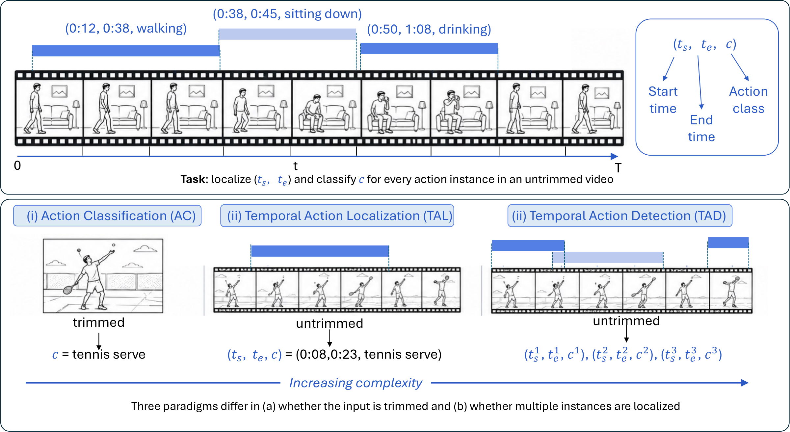
Task Definition
Given an untrimmed video (or a continuous multi-sensor stream), AD outputs a set of tuples \((t_s, t_e, c)\) with start time, end time, and category for every action instance. Three settings differ in what is assumed about the input. Action classification (AC) takes a trimmed clip and predicts one category, with no localization. Temporal action localization (TAL) predicts start and end times in untrimmed video, usually assuming one dominant action per video. Temporal action detection (TAD) is the general case: multiple instances per video, possibly overlapping or concurrent, across temporal scales, each to be localized and classified.

Methodology
Figure 1.24 organizes the methods by the three settings; each builds on the previous one’s representations.
Action Classification.
Two-stream CNNs model appearance from RGB frames in one stream and motion from dense optical flow in another, fusing the two at the output. 3D CNNs convolve over space and time jointly, C3D and I3D being the standard examples, at the cost of a large parameter count that R(2+1)D and P3D reduce by factoring 3D convolution into 2D spatial and 1D temporal steps. TSN samples a few snippets sparsely across a long video and supervises at video level, which scales long-range temporal modeling cheaply, and Transformers model global spatio-temporal dependencies among sampled tokens beyond the local reach of convolution.
Temporal Action Localization.
Early TAL ran a classifier over dense, fixed-size sliding windows, which was both slow and blind to the wide range of action durations. Structured segment networks instead model a proposal’s starting, ongoing, and ending stages and score its completeness, which refines boundary regression. Boundary-sensitive methods go further and predict start and end probabilities at every snippet, then pair high-confidence boundary points into proposals; this flexible boundary generation is the component on which later detection systems rest.
Because precise boundary annotation is expensive, weakly supervised TAL (WSTAL) learns from video-level labels alone. The task becomes multiple-instance learning: a video is positive if at least one segment contains the action, class activation sequences are derived from video features, and foreground segments are thresholded into proposals. Trained only with a classification loss, such models fire on the most discriminative moments rather than the whole action, so proposals are incomplete and high confidence does not imply accurate boundaries. Point-level supervision (P-TAL) adds one labeled frame per instance, which tends to fall near the temporally most salient, roughly central moment, and uses it to realign confidence and infer complete boundaries from that single anchor.
Temporal Action Detection.
TAD methods differ in how they generate and score temporal proposals. Anchor-based detection transplants Faster R-CNN and SSD to the time axis: a dense set of multi-scale temporal anchors is classified and regressed, first in two stages (S-CNN ) and then in one (SSAD ); fixed anchors produce many redundant proposals and limit boundary precision, which anchor-free variants such as AFSD address by regressing boundaries from a temporal center representation. Boundary-based detection is bottom-up: start and end probabilities are predicted over the whole timeline and boundary matching scores every candidate pairing, which gives flexible, precise boundaries; TSA-Net adds multi-dilation temporal convolution for multi-scale context and BGCN graph convolution over co-occurring proposals. Query-based detection follows DETR: a small set of learned queries attends to global video features in a Transformer encoder–decoder and decodes the action set in parallel, removing anchors, NMS, and hand-designed matching at the cost of heavier computation. Across the three, anchors give dense parallel scoring but coarse boundaries, boundary methods give precise boundaries but complex matching, and query methods give the simplest end-to-end pipeline; all three keep moving toward longer-range context, continuous temporal representations, and less frame-level annotation.
Datasets and Metrics
Table 1.13 lists the benchmarks by role. UCF101 and HMDB51 are trimmed-clip classification sets; AVA adds spatio-temporal boxes on movie footage. THUMOS’14 , whose 20 classes carry dense temporal boundaries, and ActivityNet , with 200 classes over 20K untrimmed videos, are the standard TAL and TAD benchmarks, extended in scale and granularity by HACS Segment and FineAction . MultiTHUMOS , Charades , and TVSeries supply dense, multi-label, overlapping actions in sports, homes, and television; Breakfast , 50Salads , MPII Cooking 2 , and COIN cover procedural cooking and instructional activity for segmentation and step detection; and MEVA (thousands of hours of surveillance) and MoVi (motion-captured actors) sit at the large-scale and controlled extremes.
| Dataset | Action | Videos | Duration | Multi-label | Domain |
| Categories | (hours) | (Per-Frame) | |||
| UCF101 | 101 | 13,320 | 27 | – | Sports, Daily Activities |
| HMDB51 | 51 | 6,849 | – | – | Movies |
| AVA | 80 | 430 | 108 | Yes | Movies |
| THUMOS’14 | 101 (20 w/ boundaries) | 18,394 | – | No | Sports |
| MultiTHUMOS | 65 | 413 | – | Yes | Sports |
| Breakfast | 48 | 1,712 | 77 | No | Cooking |
| 50Salads | 17 | 50 | 5.3 | No | Cooking |
| MPII cooking 2 | 59 | 273 | 27 | No | Cooking |
| TVSeries | 30 | 27 | – | Yes | TV Series |
| HACS Segment | 200 | 50,000 | – | No | Daily Activities |
| ActivityNet-1.3 | 200 | 19,994 | 849 | No | Daily Activities |
| Charades | 157 | 9,848 | – | Yes | Daily Activities |
| MoVi | 20 | – | 9 | – | Daily Activities |
| MEVA | 37 | – | 9,300 | – | Surveillance |
| COIN | 180 | 11,827 | 142 | No | Daily Activities |
| FineAction | 106 | 16,732 | – | Yes | Daily Activities |
Each setting has its own metric. Action classification reports Top-1 accuracy, \(\mathrm{Acc}_{\mathrm{Top}\text{-}1} = \frac{1}{N} \sum_{i=1}^{N} \mathbb{I}(\hat{y}_i = y_i)\), with Top-\(k\) on large label sets; temporal boundaries are given, so localization is not assessed. Localization quality is measured by the temporal intersection over union of predicted and ground-truth intervals, \[\begin{equation} \mathrm{tIoU}(I_p, I_g) = \frac{|I_p \cap I_g|}{|I_p \cup I_g|}, \end{equation}\] a prediction counting as correct above a threshold \(\tau\); TAL reports average precision at one or several thresholds. TAD scores detections \((I_p, \hat{y}, c)\) with confidence \(c\) by mean average precision over classes and thresholds, \[\begin{equation} \mathrm{mAP} = \frac{1}{|\mathcal{C}|} \sum_{c \in \mathcal{C}} \frac{1}{|\{\tau_m\}|} \sum_{\tau_m} \mathrm{AP}_c(\tau_m), \end{equation}\] which penalizes misclassification, loose boundaries, and duplicates together; THUMOS’14 uses \(\tau \in \{0.3,\dots,0.7\}\) and ActivityNet \(\{0.5,\dots,0.95\}\), and proposal methods also report average recall at a fixed proposal budget. Weakly supervised methods are often evaluated on ActivityNet-1.2 rather than 1.3, so their numbers are not interchangeable with fully supervised ones.
| Method | Family | Year | UCF101 Top-1\(\uparrow\) | |
|---|---|---|---|---|
| Two-Stream CNN | RGB + optical-flow streams | 2014 | 88.0 | |
| TSN | Sparse segment sampling | 2016 | 94.2 | |
| R(2+1)D | Factorized 3D convolution | 2018 | 97.3 | |
| I3D | Inflated 3D convolution | 2017 | 98.0 | |
| Method | Family | Year | mAP@0.5\(\uparrow\) | Avg. mAP@[0.3:0.7]\(\uparrow\) |
| S-CNN | Anchor-based, two-stage | 2016 | 19.0 | – |
| SSN | Segment-structure proposals | 2017 | 29.8 | – |
| BSN | Boundary-sensitive proposals | 2018 | 36.9 | 36.8 |
| AutoLoc | Weak, outer–inner contrast | 2018 | 21.2 | – |
| CoLA | Weak, snippet contrastive | 2021 | 32.2 | – |
| AFSD | Anchor-free, salient boundary | 2021 | 55.5 | 52.0 |
| DualDETR | Query-based (dual DETR) | 2024 | 70.4 | 66.8 |
Table [tab:ad_performance] shows how far the two settings have diverged. Trimmed-clip classification on UCF101 was effectively solved once Kinetics-pretrained 3D networks arrived, with I3D and R(2+1)D within a point of each other near 98%. Detection on THUMOS’14 tells a different story: mAP@0.5 moved from 19.0 (S-CNN) to 36.9 (BSN) over the anchor-to-boundary transition, jumped to 55.5 with anchor-free salient-boundary features (AFSD), and reached 70.4 with query-based decoding (DualDETR), while the best weakly supervised method (CoLA, 32.2) matches fully supervised accuracy of only a few years earlier, which quantifies what video-level labels still cost.
Challenges
Fully supervised TAD depends on densely annotated boundaries, which scale poorly to long, loosely structured real-world video; weakly and semi-supervised methods relax this with video-level labels or sparse temporal cues , at the accuracy cost the table above makes visible. Actions are also still detected in isolation. Coupling TAD with structured temporal representations such as scene graphs or event schemas would let a system infer boundaries, temporal relations, and higher-level activity structure jointly, which matters most in instructional video, driving, and human–robot interaction. Finally, benchmarks and detectors remain visual and closed-set, whereas real action understanding draws on audio, language, gaze, and context and must handle actions outside a fixed vocabulary ; multimodal temporal detection, where audio or language sharpens boundaries and disambiguates semantics, and open-vocabulary formulations that loosen the classification-centric setup are the directions large multimodal video corpora now make feasible.
Mapping and SLAM
Mapping builds a spatial representation of an unknown environment from streaming sensor observations, together with an estimate of the agent’s trajectory through it. Doing so from on-board sensors requires the agent to localize itself inside the partial map it is still building: the chicken-and-egg problem known as Simultaneous Localization and Mapping (SLAM). SLAM resolves it by estimating trajectory and map jointly from the same sensor stream, and observations of previously visited places supply the external references that bound the drift of purely proprioceptive odometry (IMU, wheel encoders). The result is a globally consistent spatial model that supports localization, path planning, obstacle avoidance, and exploration. Figure 1.26 depicts the pipeline from sensors through front-end odometry and back-end optimization to the final map.
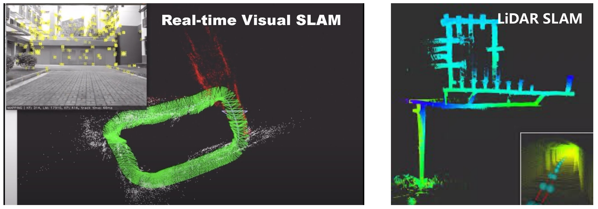
Task Definition
The input is a stream of exteroceptive observations (camera images, RGB-D frames, LiDAR, or radar), optionally fused with proprioceptive readings (IMU, wheel odometry, velocity and steering commands) and priors such as a coarse map, an initial pose, or GPS. The output is a map plus the estimated trajectory. Maps lie on an abstraction–detail spectrum: a topological map is a graph of distinctive places and their traversable connections, with no metric layout; a sparse metric map stores registered keypoints or landmarks and the camera-pose graph that observes them, enough for accurate localization but not for geometry; and a dense metric map reconstructs a complete surface or volume (point cloud, mesh, TSDF, or occupancy grid) for obstacle avoidance and 3D reconstruction. Two dense representations have become prominent in the past three years: neural implicit maps that store geometry and appearance in network weights (an MLP in iMAP , a voxel-grid encoder in NICE-SLAM ) and 3D Gaussian Splatting (3DGS) maps that represent the scene as explicit, differentiable 3D Gaussians .
Methodology
SLAM systems are classified by the exteroceptive sensor and by the density of the map they build. LiDAR SLAM measures range directly with a stable error model; KISS-ICP and KISS-SLAM show that a minimal pipeline delivers robust real-time 3D LiDAR odometry and mapping at city scale. Visual SLAM uses monocular, stereo, or RGB-D cameras, exploiting texture for place recognition, with PTAM and the ORB-SLAM family as the foundational systems. Multi-sensor SLAM tightly fuses cameras with IMUs and/or LiDAR (VINS-Mono, OKVIS, FAST-LIO2), and event-camera SLAM uses asynchronous per-pixel brightness changes for high-speed and high-dynamic-range operation . By map density, sparse keypoint-and-pose-graph systems (ORB-SLAM) sit next to semi-dense direct methods that track image gradients (LSD-SLAM , DSO ), dense geometric systems that fuse point clouds, meshes, or TSDFs (KinectFusion, ElasticFusion), neural implicit systems (iMAP , NICE-SLAM , Co-SLAM, NICER-SLAM), and 3DGS systems that render and optimize Gaussians jointly with poses (SplaTAM , MonoGS , SplatSLAM, MASt3R-SLAM ). Read historically, the field moved from feature-based geometry (PTAM, ORB-SLAM) to direct methods (LSD-SLAM, DSO), to tightly coupled multi-sensor systems (OKVIS, VINS-Mono, ORB-SLAM3), to learning-augmented pipelines (DROID-SLAM , SuperPoint and SuperGlue matching ), to neural implicit and then 3DGS maps, and most recently to 3D geometry foundation models (DUSt3R , MASt3R , MASt3R-SLAM).
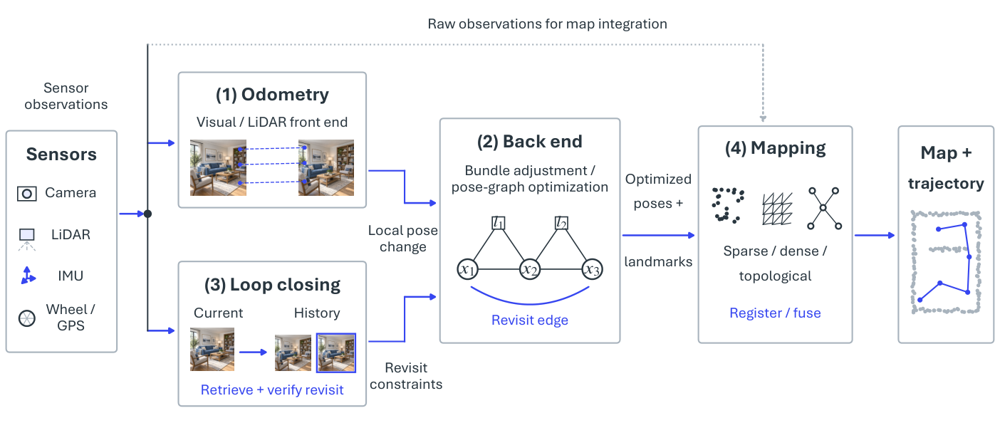
Whatever the sensor or map, a SLAM system runs the four modules of Figure 1.26 in a loop. The front end is visual (or LiDAR) odometry, the incremental motion estimate between consecutive readings treated as a stand-alone task in §1.2.4; because each pose is estimated relative to the last, its errors accumulate as drift. Back-end optimization corrects that drift globally. Modern back ends pose the problem as factor-graph optimization: robot poses and landmarks are nodes, and measurements between them (visual reprojection, IMU pre-integration, GPS, loop-closure relative poses) are factors; solving for all nodes at once yields a consistent trajectory and map, factor graphs absorb heterogeneous sensors naturally, and incremental solvers such as iSAM2 update the estimate in real time, with GTSAM, g2o, and OKVIS as representative libraries. Loop closing supplies the back end with its strongest constraints by recognizing that the agent has returned to a previously visited place, comparing current observations against the history and, on a match, adding a constraint between two temporally distant poses that pulls the accumulated drift of the intervening trajectory back into alignment. Mapping finally places the sensor data in the global frame using the optimized trajectory, in whatever representation the application needs; for neural implicit and 3DGS maps it also minimizes a rendering loss (photometric or perceptual such as LPIPS) between observed images and views rendered from the current map, optimizing geometry, appearance, and poses jointly .
| Dataset | Task | Modality | Agent | Scene | Scale | Ground Truth |
|---|---|---|---|---|---|---|
| COLD | VSLAM | mono + omni + odom | wheeled | lab | 76 | laser |
| TUM RGB-D | VSLAM | RGB-D | handheld, wheeled | office, work shed | 39 | MoCap |
| KITTI | VSLAM, VO | stereo + laser | car | suburban, highway | 22 | GPS/OXTS |
| ICL-NUIM | VSLAM, VO | RGB-D | synthetic | home, office | 8 | simulator |
| EuRoC | MSLAM | stereo + IMU | drone | work shed | 11 | Vicon MoCap/laser |
| SceneNet | VSLAM | RGB-D | synthetic | home | 15K | simulator |
| TUM VI | MSLAM, VO | stereo + IMU | handheld | campus buildings | 28 | MoCap |
| Bonn RGB-D | VSLAM | RGB-D | handheld | lab | 24 | MoCap |
| InteriorNet | MSLAM | RGB-D + IMU | synthetic | home | 15K | simulator |
| OpenLORIS-Scene | MSLAM | RGB-D stereo + IMU + odom | wheeled | indoor | 22 | MoCap/laser |
| Replica | dense | RGB-D | synthetic | indoor | 18 | simulator |
| ScanNet++ | dense, sem | RGB-D | handheld | indoor | 460 | laser |
| TartanAir | MSLAM, VO | stereo + IMU | synthetic | diverse | 1M+ frames | simulator |
| ETH3D SLAM | VSLAM, VO | stereo + global shutter | handheld | indoor/outdoor | – | LiDAR |
| DSEC | event SLAM | stereo events | car | driving | 53 | LiDAR + GPS |
| CU-Multi | collab. SLAM | RGB-D + IMU | multi-UAV | outdoor | – | MoCap/UWB |
| AirSwarm | collab. SLAM | RGB-D + LiDAR | air-ground | outdoor | – | GPS |
Datasets and Metrics
Table [tab:mapping_slam_dataset] groups the benchmarks by what they stress. The classical trajectory sets are TUM RGB-D (handheld indoor RGB-D with motion-capture ground truth), KITTI (stereo and LiDAR driving), and the synthetic ICL-NUIM with exact ground truth, while COLD targets topological localization under changing conditions. Visual-inertial systems are tested on EuRoC (micro-aerial vehicle), TUM VI , and OpenLORIS-Scene , the last built for lifelong SLAM in changing indoor scenes, and Bonn RGB-D isolates dynamic objects. Large synthetic corpora (SceneNet , InteriorNet , Replica , TartanAir ) supply photorealistic training and controlled evaluation, with Replica the standard testbed for neural implicit and 3DGS SLAM; ScanNet++ and ETH3D SLAM add laser-scanned geometry for dense reconstruction quality; and DSEC , CU-Multi , and AirSwarm open the event-camera and multi-agent settings.
Evaluation covers trajectory, map, rendering, and system cost. Trajectory accuracy uses the absolute trajectory error and relative pose error defined in §1.2.4, after aligning the estimated trajectory to the ground truth by a rigid or, for monocular systems, similarity transform; RMSE is the usual summary, with mean, median, and standard deviation also reported. Dense maps are scored by accuracy (mean distance from reconstructed points to the nearest ground-truth point) and completeness (the reverse), summarized by an F-score at a distance threshold, with Chamfer distance common for neural and 3DGS maps. Neural implicit and 3DGS maps add novel-view-synthesis metrics (PSNR, SSIM, LPIPS) on held-out views of the same trajectory. Memory footprint, tracking and mapping frame rates, and end-to-end latency decide embedded deployment . Mature evaluation tools such as EVO3 and the RPG Trajectory Evaluation toolbox4 implement these protocols.
Challenges
Deployment exposes SLAM to conditions its assumptions exclude: static scenes, stable illumination, abundant texture, and ample computation. Dynamic objects induce correspondences that drift with their own motion; illumination change, reflective and transparent surfaces, and repetitive texture create perceptual aliasing that confuses data association and place recognition alike; and resource-constrained platforms must run ever heavier front and back ends. Current work answers each directly. Moving features are detected and excluded through semantic segmentation, motion-consistency checks, or learned masks; learned matchers (SuperPoint , SuperGlue , LoFTR ) replace hand-crafted descriptors and tolerate larger viewpoint and illumination changes; neural implicit and 3DGS maps are optimized jointly with poses and yield photorealistic reconstructions usable for inspection, telepresence, and policy learning; and the two-view geometry priors of DUSt3R and MASt3R remove the fragile hand-engineered front end, already enabling real-time dense monocular SLAM at the robustness of MASt3R-SLAM .
Two broader shifts follow. Lifelong SLAM aims at months of continuous operation by combining relocalization, map update, and place re-identification against changing environments, and is now an evaluation track of its own; collaborative multi-agent SLAM fuses observations across robots for faster coverage and graceful degradation, increasingly together with event cameras and heterogeneous sensors for high-speed, low-light, and high-dynamic-range conditions. What remains open is concrete: 3DGS maps still do not scale to city-level memory and rendering budgets, learned components carry a sim-to-real gap, and verifying loop closures under strong perceptual aliasing is still the failure that breaks every back end.
Spatio-Temporal Perception
Everything to this point has described a single instant. Spatio-temporal perception adds the missing axis, asking not only where entities are but how they move, when events happen, and which identities persist. Its three concerns rise from the pixel through the object to the event: scene flow recovers dense, per-point motion between frames; object tracking maintains the identity of an entity as it moves through space and time; and temporal localization fixes when an action or event occurs along a sequence. Together they give the otherwise static perception of the preceding sections a temporal thread, the continuity on which motion understanding and long-horizon perception depend.
Scene Flow Estimation
Scene flow is the dense three-dimensional motion of every visible surface point between two instants: optical flow lifted out of the image plane and joined to the change in depth. The image-based pipelines surveyed here take stereo video, monocular video, or a multi-view sequence and produce per-pixel 3D motion; some refinement modules additionally consume estimated or measured depth. Dynamic scene reconstruction , motion-aware rendering , physical interaction modeling , and egocentric world understanding all consume it.
Task Definition
Given consecutive frames \(I_t\) and \(I_{t+1}\) (optionally with a stereo partner or several views, and with intrinsics and relative poses when known), scene flow estimation returns a field \(\mathbf{v}(\mathbf{x}) \in \mathbb{R}^3\) that displaces the surface point imaged at pixel \(\mathbf{x}\) in frame \(t\) to its position at \(t+1\), in camera or world coordinates. In the stereo setting this is equivalently a triple \((d_t, d_{t+1}, \mathbf{f})\) of disparity in both frames plus optical flow, which is how the KITTI benchmark represents and scores it. In image-only pipelines, structure and motion are inferred from appearance, parallax, and temporal correspondence. Geometry-aware refinement modules may instead take depth estimated upstream or measured by RGB-D sensors; point-cloud-only methods are outside the scope here.
Methodology
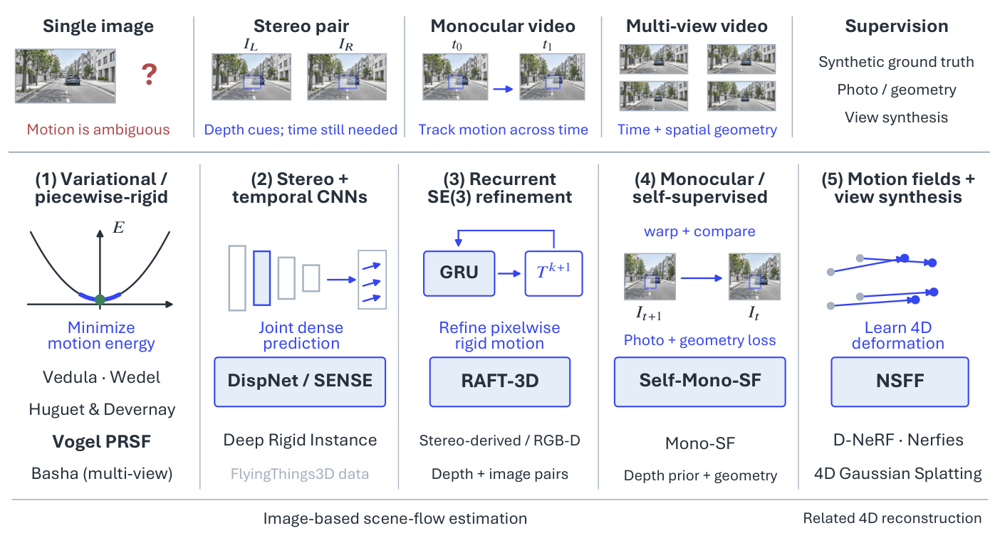
Methods differ along two axes: what they observe (stereo, the classical and still dominant setting; monocular video, the self-supervised frontier; multi-view rigs) and what supervises them (synthetic ground truth, photometric and geometric consistency, or view synthesis). Figure 1.27 groups them into five families along these axes.
Variational and energy-based methods.
introduced the term and the problem: recover 3D structure and 3D motion jointly from a calibrated camera array. brought it to a single stereo pair, solving disparity and flow jointly in one variational energy; decoupled the two into a stereo stage and a flow stage, which made real-time estimation feasible; and returned to multi-view input under a view-centered energy. The strongest classical formulation is the piecewise-rigid scene model of (PRSF/PRSM), which segments the scene into rigidly moving planar patches and was the leading entry on KITTI Scene Flow at the benchmark’s release.
End-to-end stereo and temporal CNNs.
recast disparity and flow as supervised regression (DispNet, FlowNet) and released FlyingThings3D, Monkaa, and Driving, the synthetic corpora that made this training regime possible. SENSE shares one encoder across disparity, optical flow, occlusion, and semantic heads; DRISF keeps the piecewise-rigid prior of Vogel et al. but implements it as an instance-level decoder over learned features. Both surpassed the variational baselines on KITTI Scene Flow (Table 1.15), shifting the bottleneck from optimization to supervised data.
Recurrent geometric refinement.
RAFT introduced all-pairs correlation volumes with GRU-based iterative updates for 2D optical flow; RAFT-3D uses image and depth pairs to iteratively refine a per-pixel SE(3) field with rigid-motion embeddings. Depth can be obtained from stereo or RGB-D input; it is an input to the refinement rather than necessarily inferred jointly from appearance. Its scene-flow results are included in Table 1.15.
Monocular and self-supervised methods.
Mono-SF was the first monocular entry on KITTI Scene Flow, resolving scale with a learned single-view depth prior. Self-Mono-SF removes ground truth altogether, training depth, ego-motion, and 3D-motion heads on raw video through photometric and geometric consistency losses; the monocular depth priors of Section 1.2.1 and the ego-motion machinery of Section 1.2.4 are its two anchors. The same test-time-optimization idea applied to LiDAR point clouds (Neural Scene Flow Prior ) lies outside the image-based scope of this subsection.
Implicit-field and view-synthesis-coupled methods.
A parallel line never targets scene flow as output but obtains a dense 4D motion field as a byproduct of dynamic view synthesis. Neural Scene Flow Fields trains a dynamic NeRF together with an explicit scene-flow MLP; D-NeRF represents motion as a deformation field into a canonical frame; Nerfies extends this to casually captured monocular video; and 4D Gaussian Splatting attaches time-parameterized motion to explicit Gaussian primitives. These methods are evaluated by rendering quality rather than by motion error, a split returned to under §Challenges.
Datasets and Metrics
Table 1.14 lists the image-based benchmarks. Synthetic sets provide dense, exact ground truth at scale (FlyingThings3D as the standard pretraining corpus; Sintel and Spring for film-grade motion, with Spring at HD resolution and super-resolved ground truth; TartanAir for environment diversity), while KITTI Scene Flow 2015 , built on the KITTI suite , is the only real-world benchmark and carries sparse LiDAR-derived labels on 200 training and 200 test scenes. LiDAR-based scene-flow splits of nuScenes , Waymo Open , and Argoverse 2 , and the event-camera flow of DSEC , serve the point-cloud and event communities and are not image-based benchmarks in the sense used here.
| Dataset | Year | Type | Input | Scale | Ground truth |
|---|---|---|---|---|---|
| KITTI Scene Flow 2015 | 2015 | Real driving | Stereo video | 200 train / 200 test scenes | Sparse disparity (\(t\), \(t{+}1\)) + flow from LiDAR and CAD fits |
| FlyingThings3D / Monkaa / Driving | 2016 | Synthetic | Stereo video | \(\sim\)25K / 8.6K / 4.4K frames | Dense disparity, flow, disparity change |
| MPI Sintel | 2012 | Synthetic film | Stereo video | 1,041 train frames, 23 seq. | Dense flow, depth, disparity |
| Spring | 2023 | Synthetic film | Stereo video | \(\sim\)6K frames, 47 seq., 1920\(\times\)1080 | Dense stereo, flow, scene flow (super-resolved) |
| TartanAir | 2020 | Synthetic | Stereo video | \(>\)1M frames, 30 environments | Dense depth, flow, pose; indoor and outdoor, weather |
KITTI scores scene flow in image space. A pixel’s disparity in frame \(t\) (D1), its disparity in frame \(t{+}1\) (D2), and its optical flow (Fl) are each counted as outliers when the error exceeds both 3 px and 5% of the ground-truth value, and a scene-flow outlier (SF) is any pixel that fails at least one of the three; the benchmark reports outlier percentages over all pixels and separately over background and foreground. Point-level evaluation on synthetic data instead uses the 3D end-point error \[\begin{equation} \mathrm{EPE}_{3D} = \frac{1}{N} \sum_{i=1}^{N} \| \hat{\mathbf{v}}_i - \mathbf{v}_i \|_2, \end{equation}\] with \(\hat{\mathbf{v}}_i\) and \(\mathbf{v}_i\) the predicted and true motion of point \(i\), together with accuracy ratios at fixed thresholds (the fraction of points with error below 0.05 m or 5%, and below 0.1 m or 10%) and an outlier ratio (error above 0.3 m or 10%), conventions inherited from point-cloud scene flow.
Table 1.15 collects KITTI Scene Flow 2015 test results for the explicit-output families. RAFT-3D more than halves the SF-all error of the best classical method (PRSM), and the foreground column, where rigidly moving vehicles meet non-rigid motion, is where the learned methods gain most. The monocular rows are a different regime: Mono-SF, with a learned depth prior, sits at 23% SF-all, and Self-Mono-SF without any ground truth at 49.5% (33.9% after fine-tuning), the price of giving up stereo. The implicit-field family has no row because it reports rendering quality (PSNR, LPIPS) on its own scene sets rather than motion error.
| Method | Family | D1-all | D2-all | Fl-all | SF-all |
|---|---|---|---|---|---|
| \(\bullet\) Stereo | |||||
| OSF | Energy-based, rigid objects | 5.79 | 7.77 | 7.83 | 10.23 |
| PRSM | Energy-based, piecewise rigid | 4.27 | 6.79 | 6.68 | 8.97 |
| SENSE | Shared-encoder CNN | 2.22 | 5.89 | 7.64 | 9.55 |
| DRISF | CNN + rigid instances | 2.55 | 4.04 | 4.73 | 6.31 |
| RAFT-3D | Recurrent SE(3) refinement | 1.81 | 3.67 | 4.29 | 5.77 |
| \(\bullet\) Monocular | |||||
| Mono-SF | Learned depth prior | 16.32 | 19.59 | 12.77 | 23.08 |
| Self-Mono-SF | Self-supervised | 34.02 | 36.34 | 23.54 | 49.54 |
| Self-Mono-SF-ft | Self-supervised, ft | 22.16 | 25.24 | 15.91 | 33.88 |
Challenges
The supervision landscape is lopsided. Every dense-ground-truth benchmark in Table 1.14 is synthetic and stereo, so monocular methods are scored only against KITTI’s sparse labels, and models pretrained on FlyingThings3D or Sintel still lose accuracy on real driving footage after fine-tuning, most visibly on foreground motion where synthetic random-object trajectories differ from vehicle kinematics. All current benchmarks also emphasize rigid or random-object motion; dense ground truth for non-rigid humans, hands, and animals does not exist at scale, which leaves the family of implicit-field methods that handle such motion best without a quantitative yardstick.
That yardstick problem is the second challenge. Explicit-output methods are scored by KITTI’s outlier rates; implicit-field methods by PSNR and LPIPS of rendered views. No protocol evaluates both on the same input, so the two paradigms are compared only qualitatively, and whether a motion field is good depends on whether scene flow is the end (the KITTI leaderboard) or a means (reconstruction, novel-view synthesis, physical reasoning). The cost profiles diverge as well: RAFT-3D needs several GRU iterations per frame, variational methods minutes per frame, and implicit fields minutes to hours per scene.
Foundation priors are reshaping the monocular line. Depth Anything and DINOv2 supply the per-pixel depth and semantic features that Self-Mono-SF had to learn from scratch, and SAM 2 segmentation together with the object-pose estimators of Section 1.2.5 makes an object-centric formulation (a per-object SE(3) trajectory plus residual non-rigid motion) practical, a bridge to the tracking problem of Section 1.4.2. As implicit-field scene flow merges into 4D reconstruction, with 4D Gaussian Splatting the early example, evaluation is likely to follow the downstream task rather than the KITTI leaderboard.
Object Tracking
Tracking localizes entities in every frame and associates the detections across frames so that each entity keeps one identity through the sequence. Where detection and segmentation describe a single instant, tracking yields trajectories, the representation that autonomous driving , surveillance , AR/VR , and robotics build on.
Task Definition
Given a frame sequence \(\{I_t\}_{t=1}^{T}\) (a video, or RGB-D, LiDAR, or multi-view streams), a tracker returns a set of trajectories \(\{\mathcal{T}_k\}\), each \(\mathcal{T}_k = \{(t, b_t^k)\}\) a time-indexed series of states \(b_t^k\) with one identity \(k\) held fixed over the sequence. The state is a bounding box in the basic setting and a segmentation mask, a 3D box, or a set of keypoints in the variants.
The variants, illustrated in Figure 1.28, differ in how the targets are specified and what state is tracked. Single object tracking (SOT) follows one target given its first-frame box; multiple object tracking (MOT) tracks every instance of given categories, typically pedestrians and vehicles, under identity constraints; MOTS and video object segmentation replace boxes with masks; 3D-MOT outputs world-coordinate 3D boxes from LiDAR, RGB-D, or multi-view input; pose tracking and landmark tracking follow skeletal joints or facial keypoints; and panoptic tracking combines pixel-level semantic classes for stuff with temporally consistent instance identities for things. Category-specific trackers for pedestrians , vehicles , or animals specialize any of these.
Methodology
Figure 1.29 organizes the methods into four families around image-plane box and mask tracking (SOT, MOT, MOTS, VOS). Pose, landmark, and panoptic tracking reuse the same propagate-or-associate machinery with a different state representation and are covered at the benchmark level in Table 1.16.
Propagation-based methods.
Because a target moves little between consecutive frames, its previous state is a strong prior for the current one, and the oldest tracking paradigm exploits this by predicting the next state from the current one and correcting it against the new frame. Correlation filters realize this in the frequency domain: MOSSE learns a minimum-output-sum-of-squared-error filter from a single frame and updates it online at hundreds of frames per second; KCF and MKCF add kernelization and multi-scale search; ECO adds factorized convolution operators, a compact generative sample model, and conservative updates. These trackers are fast enough for embedded use but drift under large appearance change and clutter. MDNet answered with online discriminative learning, a shared CNN with per-sequence domain branches that separate target from background, at a high per-frame cost. Siamese trackers moved the representation learning offline: SiamFC correlates a template embedding with the search-region embedding in one forward pass, and SiamRPN , ATOM , and DiMP add region-proposal regression, IoU-prediction refinement, and a discriminatively learned prediction head. Transformer trackers then replaced correlation with attention: TransT fuses template and search features with self- and cross-attention, STARK predicts the box with an encoder–decoder that also carries temporal state, and OSTrack joins feature extraction and relation modeling in a single stream over concatenated template and search tokens, the current baseline design.
Mask propagation applies the same idea at the pixel level for video object segmentation , with memory of past frames replacing a single template. XMem keeps multi-scale spatiotemporal memories that remain stable over videos of more than 10,000 frames; AOT and DeAOT encode object identities as tokens so that many objects propagate in one pass; and SAM 2 adds a streaming memory to the Segment Anything Model , giving promptable tracking that transfers across VOS benchmarks.
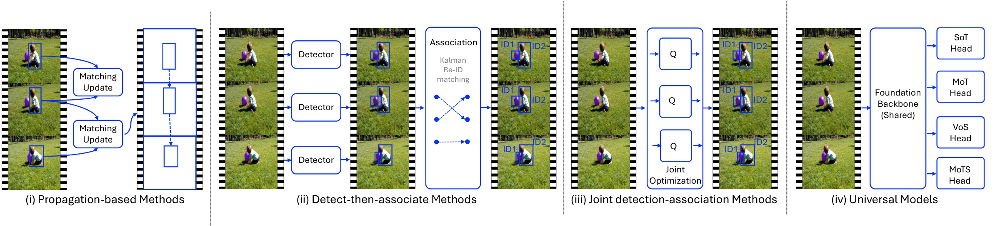
Detect-then-associate methods.
The MOT standard pipeline detects objects in every frame and then solves an assignment problem between detections and existing tracks. SORT predicts track positions with a Kalman filter and matches by IoU with the Hungarian algorithm ; DeepSORT adds an appearance embedding so that tracks survive occlusion. Track-RCNN , JDE , and FairMOT train the re-identification embedding jointly with the detector; association remains a separate step, which keeps them in this family. All of these discard low-confidence detections, and since occluded targets are exactly those with low scores, trajectories fragment where they are hardest to keep. ByteTrack associates nearly every detection and uses motion similarity to the existing tracks to reject the false positives among the low-score boxes, a change in association alone that raised MOT17 HOTA by several points (Table 1.17). In 3D, the same pipeline reappears: AB3DMOT runs a 3D Kalman filter with Hungarian matching on LiDAR detections, and CenterPoint tracks 3D object centers through predicted velocities, with nuScenes and Waymo standardizing the AMOTA/AMOTP metrics.
Joint detection–association methods.
End-to-end trackers fold association into the detector. CenterTrack represents objects as center points and regresses their offset to the previous frame, so that association is a local lookup; TrackFormer introduces tracking-by-attention, in which track queries carried from the previous frame and new object queries are decoded jointly by a Transformer; MOTR extends DETR with track queries that persist across the whole sequence and are supervised with a sequence-level loss, which is what gives it its advantage on DanceTrack , where appearance is uninformative and motion is non-linear. The price is training cost and data: these models need long annotated sequences and remain behind detect-then-associate trackers on MOT17 (Table 1.17).
Universal models.
A single model for SOT, MOT, VOS, and MOTS is the most recent direction. UniTrack showed that one self-supervised appearance representation serves propagation and association tasks alike; Unicorn trains one network end to end for all four tasks; UTT unifies SOT and MOT in a Transformer; UniVS casts every video-segmentation task as prompt-driven segmentation; and OneTracker adapts a foundation tracker to RGB, depth, thermal, and event inputs with light adapters. In practice, SAM combined with a memory tracker (XMem, DeAOT) already provides promptable multi-object segmentation and tracking from points, boxes, scribbles, or text, and benchmarks such as UASTrack and UNTrack extend the unified setting to RGB-X, multi-spectral, and UAV footage. Language enters as a specification signal as well: LaSOT pairs every sequence with a sentence, TNL2K is built for text-initialized tracking, and LaMOT brings language-guided specification to the multi-object setting.
| Name | Videos | Frames / Boxes | Categories | Year | Attributes | Annotations |
|---|---|---|---|---|---|---|
| \(\bullet\) Single Object Tracking | ||||||
| VIVID | 9 | 16,274 | - | 2005 | - | Bbox |
| OTB100 | 98 | 58,610 | - | 2013 | 11 | Bbox |
| ALOV300 | 314 | 89,364 | 64 | 2013 | - | Bbox |
| TC128 | 129 | 55,652 | - | 2015 | 11 | Bbox |
| VOT16 | 60 | 21,455 | - | 2016 | - | Bbox |
| DAVIS-16 | 50 | 3,455 | 4 | 2016 | 15 | Mask |
| UAV20L | 20 | 58,670 | - | 2016 | 12 | Bbox |
| UAV123 | 123 | 113,476 | 9 | 2016 | 12 | Bbox |
| NUS-PRO | 365 | 135,305 | 8 | 2016 | - | Bbox |
| VOT17 | 60 | 21,356 | 24 | 2017 | - | Bbox |
| YouTube-BB | 380,000 | 5.6M | 23 | 2017 | - | Bbox |
| NFS | 100 | 383,000 | 17 | 2017 | 9 | Bbox |
| TrackingNet | 30,132 | 14.2M | 27 | 2018 | 15 | Bbox |
| LaSOT | 1,400 | 3.52M | 70 | 2019 | 14 | Bbox |
| TNL2K | 2,000 | 1.24M | - | 2021 | 17 | Bbox |
| GOT-10k | 10,000 | 1.5M | 563 | 2021 | 6 | Bbox |
| \(\bullet\) Multiple Object Tracking | ||||||
| MOT16 | 14 | 292,733 | 1 | 2016 | - | Bbox |
| MOT17 | 42 | 564,228 | 1 | 2017 | - | Bbox |
| BDD100K | 1,600 | 318K | 8 | 2020 | - | Bbox |
| \(\bullet\) Video Object Segmentation | ||||||
| DAVIS-17 | 150 | 10,459 | - | 2017 | - | Mask |
| YouTube-VOS | 4,453 | - | 94 | 2018 | - | Mask |
| \(\bullet\) RGB-D Object Tracking | ||||||
| PTB | 100 | 21,542 | - | 2013 | 5 | Bbox |
| STC | 36 | 9,009 | - | 2017 | 12 | Bbox |
| CDTB | 80 | 101,956 | - | 2019 | 13 | Bbox |
| DepthTrack | 200 | 294,591 | - | 2021 | 15 | Bbox |
| ARKitTrack | 300 | 229.7K | 144 | 2023 | 16 | Mask |
| RGBD1K | 1,050 | 717,900 | - | 2023 | 15 | Bbox |
| \(\bullet\) Human Pose Tracking | ||||||
| VideoPose2.0 | 44 | 1,286 | - | 2011 | - | Single-person (-) |
| Poses in the Wild | 30 | 830 | - | 2014 | - | Single-person (7) |
| ICDPose | 60 | 2,700 | - | 2016 | - | Single-person (-) |
| CMU Panoptic | 65 | 297K | - | 2017 | - | Multi-person (-) |
| Multi-Person PoseTrack | 60 | - | - | 2017 | - | Multi-person (14) |
| PoseTrack18 | 1,138 | 66,374 | - | 2018 | - | Multi-person (15) |
Datasets and Metrics
Table 1.16 groups the benchmarks by what is tracked. The SOT line runs from short, category-agnostic clips (OTB100, TC128, the VOT challenges) to large, long-term, category-diverse training sets (TrackingNet, LaSOT, GOT-10k, whose test classes are disjoint from training) and to condition-specific tests for aerial footage (UAV123), high frame rate (NFS), and language initialization (TNL2K). MOT benchmarks are pedestrian-only in MOT16/17 and MOT20 and multi-class driving footage in BDD100K; the 3D-MOT counterparts are the nuScenes and Waymo tracking tasks. DAVIS and YouTube-VOS supply mask-level ground truth, the latter with categories unseen at training time; the RGB-D sets add depth and have grown from tens of sequences (PTB, STC) to over a thousand (RGBD1K); and pose tracking moved from single-person upper-body clips (VideoPose2.0, Poses in the Wild, ICDPose) to multi-person full-body sequences with person identities (PoseTrack18, CMU Panoptic).
Each line has its own metrics. SOT uses the success plot: with \(\mathrm{SR}(\tau)\) the fraction of frames whose predicted-box IoU exceeds \(\tau\), the headline number is its area under the curve, \[\begin{equation} \mathrm{AUC} = \int_0^1 \mathrm{SR}(\tau)\, d\tau , \end{equation}\] reported with normalized precision (the fraction of frames whose center error, divided by the target size, is below a threshold) on LaSOT and TrackingNet, and with average overlap (mean IoU over frames) and \(\mathrm{SR}_{0.5}\), \(\mathrm{SR}_{0.75}\) on GOT-10k; the VOT challenges use expected average overlap (EAO), which folds accuracy and failure rate into one expectation . MOT scores detection and identity jointly. MOTA charges false negatives, false positives, and identity switches against the number of ground-truth objects, \[\begin{equation} \mathrm{MOTA} = 1 - \frac{\mathrm{FN}+\mathrm{FP}+\mathrm{IDS}}{\mathrm{GT}} , \end{equation}\] and so is dominated by detection; IDF1 is the F1 score of identity-level true positives, \(\mathrm{IDF1} = 2\,\mathrm{IDTP} / (2\,\mathrm{IDTP} + \mathrm{IDFP} + \mathrm{IDFN})\), and emphasizes identity preservation; HOTA , \(\sqrt{\mathrm{DetA}\cdot\mathrm{AssA}}\) averaged over localization thresholds, balances the two and has become the primary MOT metric. VOS reports the Jaccard index \(\mathcal{J} = |M \cap G| / |M \cup G|\) of predicted and true masks and the contour F-measure \(\mathcal{F}\) from boundary precision and recall , averaged as \(\mathcal{J}\&\mathcal{F}\).
Table 1.17 reports the methods of §Methodology on the benchmarks each line treats as standard. Within SOT the step from a discriminative head over correlation features (DiMP) to attention-based fusion (TransT, STARK) is worth about ten points of LaSOT AUC, and the one-stream design of OSTrack adds six more over TransT. On MOT17 the detect-then-associate trackers lead, and ByteTrack’s gain over FairMOT comes from association alone; the end-to-end trackers (CenterTrack, TrackFormer, MOTR) trail on MOT17 but MOTR leads ByteTrack by 6.5 HOTA on DanceTrack , where appearance cues are weak. VOS accuracy on DAVIS-17 has moved from the mid-80s (XMem, DeAOT) to above 90 \(\mathcal{J}\&\mathcal{F}\) with SAM 2, which is also the first method trained on a corpus far larger than the benchmarks themselves.
| \(\bullet\) Single object tracking | ||||
| Method | Design | LaSOT AUC | TrackingNet AUC | GOT-10k AO |
| DiMP | Discriminative prediction head | 56.9 | 74.0 | 61.1 |
| TransT | Transformer feature fusion | 64.9 | 81.4 | 67.1 |
| STARK | Encoder–decoder, temporal state | 67.1 | 82.0 | 68.8 |
| OSTrack-384 | One-stream Transformer | 71.1 | 83.9 | 73.7 |
| \(\bullet\) Multiple object tracking (MOT17 test) | ||||
| Method | Family | HOTA | MOTA | IDF1 |
| CenterTrack | Joint, center offsets | 52.2 | 67.8 | 64.7 |
| TrackFormer | Joint, tracking-by-attention | – | 74.1 | 68.0 |
| MOTR | Joint, persistent queries | 57.8 | 73.4 | 68.6 |
| FairMOT | Detect + joint Re-ID | 59.3 | 73.7 | 72.3 |
| ByteTrack | Detect + low-score association | 63.1 | 80.3 | 77.3 |
| \(\bullet\) Video object segmentation | ||||
| Method | Design | DAVIS-17 \(\mathcal{J}\&\mathcal{F}\) | YT-VOS 2019 \(\mathcal{G}\) | |
| XMem | Multi-store memory | 86.0 | 85.6 | |
| DeAOT | Identity tokens, decoupled propagation | 86.2 | 86.1 | |
| SAM 2 | Promptable, streaming memory | 90.7 | 89.3 | |
Challenges
Identity under occlusion remains the central failure. Motion models and appearance embeddings bridge short occlusions, but long occlusions and dense crowds still produce identity switches and fragmented tracks , and memory-based propagation drifts or forgets over long videos even when each step is accurate . HOTA and IDF1 measure the outcome but not robustness to occlusion length or the calibration of track confidence, so the metrics reward the easy part of the problem.
Trackers are also tuned to a few curated benchmarks and transfer poorly to UAV footage, thermal and event imagery, adverse weather, and multi-camera surveillance; foundation-model trackers such as OneTracker and the RGB-X benchmarks UASTrack and UNTrack address this directly but inherit the biases of their pretrained backbones. Long streams add memory and compute limits on top of drift.
The accuracy of Transformer trackers comes at a cost that keeps them off embedded hardware, while the lightweight correlation-filter line gives up robustness; and the unified models that would amortize that cost across tasks meet negative transfer between objectives with different demands, mask precision against identity association in particular . Language and segmentation priors widen what a tracker can be asked to do, at the price of prompt sensitivity that current benchmarks do not measure.
Temporal Localization
Temporal localization answers when something happens in a long, untrimmed video. The condition can be a category from a closed set, which gives temporal action localization (TAL) as treated in Section 1.3.4, or a free-form sentence, which gives temporal sentence grounding (TSG): return the segment that best matches “the person opens the microwave”. This subsection sets the two side by side, with the weight on the text-conditioned problem, which turns localization from exhaustive detection into retrieval and is what video search and interactive navigation rely on.
![Temporal localization methods. Top row (TAL,
category-conditioned): (i) window-based, (ii) two-stage proposal-based,
(iii) one-stage anchor-free, and (iv) Transformer set prediction. Bottom
row (TSG, text-conditioned): (a) cross-modal matching, (b) 2D
temporal-map reasoning with a proposal-graph alternative, and (c)
Transformer set prediction. Hatched map cells are invalid start–end
pairs; graph nodes represent candidate moments. Coarse-to-fine corpus
retrieval is shown separately as a scope extension, not a mandatory
stage of set prediction. Scene frames and scores are
illustrative.](book-assets/figures/part3/section6/temporal_localization.png)
Task Definition
Temporal Action Localization (TAL) takes an untrimmed video \(V=\{x_t\}_{t=1}^{T}\), where \(x_t\) may be a visual, audio, or multimodal feature, and detects all instances of \(K\) predefined action classes, returning \(\mathcal{A}=\{a_i\}_{i=1}^{N}\) with \(a_i=(t_i^{\mathrm{start}},\, t_i^{\mathrm{end}},\, c_i,\, s_i)\): start and end times, a class label \(c_i\in\{1,\ldots,K\}\), and a confidence \(s_i\) (the \((t_s, t_e, c)\) tuples of Section 1.3.4).
Temporal Sentence Grounding (TSG), also called natural language video localization or video moment retrieval, pairs \(V\) with a sentence \(q\) and returns a ranked list of moments \(\mathcal{M}(q,V)=\{m_j\}_{j=1}^{M}\), \(m_j=(\tau_j^{\mathrm{start}},\,\tau_j^{\mathrm{end}},\, r_j)\), with boundaries and a relevance score \(r_j\); usually one segment is the answer. TAL is thus an exhaustive detection task over a closed label set, TSG a targeted retrieval task guided by open-ended language.
Both are studied under several settings, which Figure 1.31 lays side by side. Offline methods see the whole video; online methods infer causally over the streamed prefix and are judged on low-latency detection of action starts . Supervision ranges from frame-accurate boundaries to video-level labels only (weakly supervised TAL via multiple-instance learning, Section 1.3.4; weakly supervised TSG by aligning the two modalities during training ), with self-supervised video pretraining and open-vocabulary or zero-shot variants reducing the labeled data needed. TSG additionally varies in scope, from a single video to corpus-level retrieval that first finds the video and then the moment (VCMR) , and in output, with QVHighlights asking for a saliency ranking of highlight clips alongside the grounded moment.
![Six settings of temporal localization. Top row (TAL): (a)
offline detection of \(K\) classes; (b)
online detection of action
starts (Shou et al., 2018; Gao et al., 2019) ;
(c) weakly supervised training from video-level labels. Bottom row
(TSG): (d) single-video sentence
grounding (Gao et al., 2017; Hendricks et al., 2017) ;
(e) corpus-level moment
retrieval (Lei et al., 2020) ;
(f) joint grounding and highlight
detection (Lei et al., 2021) .
The online panel separates event onset, detection time, and the current
observation boundary; future frames are unavailable. Dashed intervals in
the weak-supervision panel denote inferred hypotheses, not boundary
annotations. Scene examples, confidence values, and saliency ranks are
illustrative.](book-assets/figures/part3/section6/temporal_localization_task_settings.png)
Methodology
Figure 1.30 traces both tasks along the same path from hand-designed pipelines to end-to-end Transformers.
The TAL row is the detection lineage of Section 1.3.4: sliding windows over hand-crafted features such as improved dense trajectories , then two-stage proposal-plus-classification systems (R-C3D , SSN , TAL-Net ) with dedicated boundary-sensitive proposal generators (BSN , BMN , G-TAD ), then anchor-free dense detectors and query-based set prediction. Three developments go beyond that treatment. Dense single-stage detectors were scaled by ActionFormer , a multi-scale Transformer encoder over the feature pyramid, and TriDet , which replaces self-attention with a convolutional scalable-granularity-perception module and a trident boundary head; both still regress boundaries at every position and rely on non-maximum suppression. DETR-style set prediction removes anchors and suppression: RTD-Net applies a relaxed Transformer decoder to proposal generation and TadTR decodes the full action set end to end . And masked video pretraining now supplies the backbones that these heads are fine-tuned on.
TSG began with cross-modal matching. CTRL embeds the sentence and candidate clips in a shared space and ranks clips, with boundary regression on top; MCN does the same for DiDeMo with global video context. Later models reason over the candidates jointly: MAN refines moments iteratively through a graph over proposals, 2D-TAN scores every (start, end) pair on a two-dimensional temporal-adjacency map so that neighboring candidates inform each other, and VSLNet drops proposals altogether and predicts the start and end positions as span extraction, in analogy to reading comprehension. Moment-DETR brought set prediction to grounding, decoding moments and saliency scores directly from an encoder–decoder, while TVR extended grounding to corpus scale with a coarse-to-fine search over subtitles and frames.
Datasets and Metrics
Table 1.18 lists the benchmarks; the TAL rows are those of Section 1.3.4, retained for comparison. The TSG benchmarks move from a closed domain (TACoS , cooking) to open-domain sentences over indoor activity (Charades-STA ), Flickr videos with multiple references per query (DiDeMo ), and dense paragraph-level captions (ActivityNet Captions ); YouCook2 adds procedural structure, TVR multimodal (subtitle) context and corpus-level retrieval, and QVHighlights saliency labels for joint highlight detection.
| Task | Dataset | Year | Scale / Classes | Temporal annotations |
|---|---|---|---|---|
| TAL | THUMOS14 | 2014 | 200 train + 213 test videos / 20 cls | Frame-accurate, untrimmed |
| TAL | ActivityNet v1.3 | 2016 | \(\sim\)20k videos / 200 cls | Untrimmed, diverse |
| TAL | HACS Segments | 2019 | 50k videos / 200 cls; 139k segments | Clip+segment, dense |
| TAL | EPIC-KITCHENS-100 | 2020 | 700 egocentric videos / verb-noun labels | Egocentric, narration-aligned |
| TAL | MultiTHUMOS | 2015 | \(\sim\)400 videos / 65 cls; \(\sim\)38.7k ann. | Dense, multi-label |
| TAL | FineAction | 2022 | 17k videos / 106 cls; 103k instances | Fine-grained, precise |
| TSG | TACoS | 2013 | 127 cooking videos; \(\sim\)18.8k query-segment pairs | Cooking, aligned |
| TSG | Charades-STA | 2017 | \(\sim\)6.6k videos; 16,128 pairs | Charades-based pairs |
| TSG | DiDeMo | 2017 | \(\sim\)10k Flickr videos; \(\sim\)40k queries | Multi-reference, ranking |
| TSG | ActivityNet Captions | 2017 | 20k videos; \(\sim\)100k sentences | Dense captions |
| TSG | YouCook2 | 2018 | 2k untrimmed cooking videos / 89 recipes | Cooking procedures |
| TSG | TVR | 2020 | 21.8k clips (60–90 s) from 6 TV shows; 109k queries | Subtitles, multimodal |
| TSG | QVHighlights | 2021 | \(\sim\)10k YouTube videos; query+saliency | Query-saliency, highlights |
Temporal IoU between a predicted and a ground-truth segment is the primitive for both tasks, and TAL is scored by mAP at fixed tIoU thresholds (per-threshold on THUMOS14, averaged over \([0.5{:}0.95]\) on ActivityNet) and by AR@AN for proposal quality , as defined in Section 1.3.4. TSG uses retrieval metrics instead. For queries \(\mathcal{Q}\), ranked predictions \(\hat{m}_j\), and reference segments \(G(q)\), \[\begin{equation} \mathrm{R}@n,\mathrm{IoU}{=}\theta \,=\, \frac{1}{|\mathcal{Q}|}\sum_{q\in\mathcal{Q}} \mathbf{1}\!\left(\max_{1\le j\le n}\;\max_{g\in G(q)} \mathrm{tIoU}(\hat{m}_j,g)\ge \theta\right) \end{equation}\] is the fraction of queries for which some top-\(n\) prediction overlaps a reference by at least \(\theta\) (commonly \(n\in\{1,5\}\), \(\theta\in\{0.3,0.5,0.7\}\)), and \(\mathrm{mIoU} = \frac{1}{|\mathcal{Q}|}\sum_{q} \max_{g\in G(q)} \mathrm{tIoU}(\hat{m}_1,g)\) scores the top prediction alone; QVHighlights adds mAP over tIoU thresholds . Recall at a threshold binarizes overlap and ignores the quality of the ranking, which motivated ranking-sensitive alternatives such as AxIoU , and annotator disagreement about where a described moment begins and ends puts a ceiling on how precisely any of these can be measured.
Table 1.19 gives R@1 results for the TSG methods above; TAL numbers are in the table of Section 1.3.4. Relational reasoning over candidates (2D-TAN) and span prediction (VSLNet) roughly doubled CTRL’s R@1 at tIoU 0.5 on Charades-STA and raised it by half again at 0.7, and Moment-DETR adds a further step on Charades-STA without proposals or suppression; its QVHighlights numbers are the reference point for joint grounding and highlight detection.
| Method | Design | Charades-STA | ActivityNet Captions | QVHighlights |
| R@1 0.5 / 0.7 | R@1 0.5 / 0.7 | R@1 0.5 / 0.7 (mAP) | ||
| CTRL | Clip–sentence matching | 23.6 / 8.9 | 29.0 / 10.3 | – |
| MAN | Iterative graph adjustment | 46.5 / 22.7 | – | – |
| 2D-TAN | 2D temporal-adjacency map | 39.7 / 23.3 | 44.5 / 26.5 | – |
| VSLNet | Span prediction | 54.2 / 35.2 | 43.2 / 26.2 | – |
| Moment-DETR | Set prediction | 53.6 / 31.4 | – | 52.9 / 33.0 (30.7) |
Challenges
Boundaries are soft. Actions span sub-second gestures to multi-minute activities, which no single temporal resolution serves, and annotators disagree about where an instance starts and ends; a sentence adds its own ambiguity about which part of an activity it describes. The tIoU-thresholded metrics treat these fuzzy boundaries as exact, so part of the measured error is irreducible , and probabilistic boundary modeling with calibrated confidences is the natural response.
The two tasks are converging. A closed label set limits TAL, while TSG is bounded by the vocabulary of its query sets; text prompts in place of class labels and set prediction for moments point to a single architecture that grounds both categories and sentences. Doing this over minutes of video, across camera viewpoints (egocentric footage in particular), with audio, narration, or noisy subtitles as further evidence , and causally for streaming use is where the current systems fall short: memory-efficient long-context encoders and corpus-scale coarse-to-fine retrieval are the two ingredients most actively developed.
Multimodal Spatial Perception
The preceding sections perceive space largely through vision. Yet vision alone is often incomplete: it is blind past occluders, silent about what lies outside the frame, and mute on which entity a person actually means. Multimodal spatial perception closes these gaps by grounding spatial understanding in signals beyond the image. The section takes two complementary couplings: audio-visual spatial localization, which uses sound to place events that vision may miss, and vision-language grounding, which ties linguistic reference to the specific entity or region it denotes. Neither adds a new spatial primitive; each supplies a channel of evidence that makes perception more complete where a single modality falls short.
Audio-Visual Spatial Localization
Humans localize a sound by combining auditory cues (interaural level and time differences, spectral shaping) with visual context (lip motion, object dynamics) . Audio-visual spatial localization (AV-SL) asks a machine to do the same: find the pixel region, object, or 3D point that a sound comes from, under reverberation, noise, occlusion, and several simultaneous sources . The two modalities are complementary. Binaural or array audio supplies directional cues, while distance requires additional geometric, near-field, or learned evidence; vision says which entities are plausible sounders and separates acoustically confusable ones (two similar instruments, only one playing). Spatial audio for AR/VR , teleconferencing , and audio-guided navigation are the main consumers.
Task Definition
The input is an audio stream \(A\) (mono, binaural, or multichannel, optionally ambisonic ) time-aligned with a video \(V\) (RGB, depth, or multi-view) of the same interval; the audio may contain zero, one, or several sources, and the video may show silent objects that look like sounders. The output localizes the sounding entity in a form that depends on the variant: a 2D heatmap or mask, a face or body box with a speaking state, an event class with its temporal extent and direction of arrival (DOA, azimuth and elevation) and optionally distance , a 2D location with depth, or a 3D point or trajectory in camera or world coordinates. When the source is off screen or silent, the correct output is a null prediction rather than the nearest plausible object.
Five variants are in common use. Visual sound source localization (VSSL) highlights the sounding region of a frame or clip as a class-agnostic heatmap, in single- and multi-source settings and increasingly with negative or off-screen audio as a robustness test. Active speaker detection (ASD) decides who is speaking and localizes the talker as a face track, often under streaming constraints . Audio-visual sound event localization and detection (AV-SELD) couples what and when with where: event class, temporal extent, DOA, and in recent benchmarks distance . The 2.5D variant adds depth or range to a 2D localization from monocular depth , stereo, or echoes ; and 3D DOA estimation returns a spatial bearing, whereas source-position or trajectory estimation additionally uses range or triangulation constraints from calibrated cameras, arrays, or egocentric rigs .
Methodology
Figure 1.32 maps the five variants onto four method families.
![Audio-visual spatial localization. Top : task
outputs for (i) VSSL, (ii) ASD, (iii) AV-SELD, (iv) 2.5D localization,
and (v) 3D localization and tracking. Bottom : method families
(A) cross-modal correspondence, (B) audio–lip synchrony, (C) joint
spatial event prediction, and (D) geometric lifting or fusion; neutral
connectors mark principal task–family associations, not computational
flow. Directional arrows inside panels indicate prediction or
information flow. The 2.5D panel links a selected image location to
depth; 3D position additionally requires range or triangulation
constraints. Scene imagery and overlays are illustrative.](book-assets/figures/part3/section6/audio_video_spatial_localization.png)
Cross-Modal Correspondence (VSSL).
VSSL is learned almost entirely without location labels, from the co-occurrence of sound and image. An audio encoder maps the clip to an embedding \(\mathbf{a}\), a visual encoder maps the frame to a feature map \(\mathbf{v}(\mathbf{x})\), and the localization map is the per-position similarity \[\begin{equation} S(\mathbf{x}) = \frac{\mathbf{a}^{\top}\mathbf{v}(\mathbf{x})}{\|\mathbf{a}\|\,\|\mathbf{v}(\mathbf{x})\|}, \end{equation}\] trained so that matching audio-image pairs score higher than mismatched ones ; Sound of Pixels instead mixes two clips and asks the network to separate them conditioned on pixel features, which forces the same alignment. Later work targets the failure modes of co-occurrence. LVS mines hard negatives inside the same image (regions that look like sounders but do not match the audio) and introduces VGG-SS with explicit negative-audio evaluation; deep multimodal clustering and coarse-to-fine mixture objectives handle several sources at once; and SLAVC shows that earlier methods depend on early stopping and adds momentum encoders and extreme visual dropout so that the alignment does not collapse onto background.
Audio–Lip Alignment (ASD).
ASD runs a face detector and tracker and then decides, per track and per frame, whether the visible mouth produced the audio. The decision rests on audio-visual synchrony: a visual encoder over the lip region and an audio encoder over the spectrogram are compared across time , and TalkNet adds long-term temporal modeling of both streams with cross-attention, which is what separates a brief pause from a non-speaker. Active Speakers in Context scores each candidate jointly with the other faces in the frame, and ASDNet makes the three stages explicit (per-frame audio-visual encoding, inter-speaker relation modeling, temporal modeling), with each stage trained for its role.
Joint Event and DOA Prediction (AV-SELD).
SELDnet set the template: a convolutional recurrent network over multichannel spectrogram features with two heads, one classifying active events per frame and one regressing their DOA. ACCDOA folds the two into one output, a vector per class whose direction is the DOA and whose length is the activity, which removes the need to balance two losses; the DCASE challenge tracks standardized the protocol, and STARSS23 added video and source distance.
Geometric Lifting (2.5D and 3D).
Lifting a 2D localization to metric space uses geometry rather than learned correspondence alone. VisualEchoes shows that echoes of an emitted chirp carry depth: the time and spectrum of the return, fused with the image, improve monocular depth estimation and give the 2.5D variant its range. Audio-visual spatial alignment learns representations by predicting whether 360\(^\circ\) video and ambisonic audio are spatially consistent, a pretext that encodes direction, and self-supervised spatial audio generation learns the inverse mapping from 360\(^\circ\) video to ambisonics. Full 3D systems combine classical array processing (time differences of arrival from GCC-PHAT , steered-response-power beamforming ) with calibrated cameras and triangulation, and in simulation (SoundSpaces ) with the agent’s own motion.
Datasets and Metrics
Table 1.20 pairs each variant with its benchmarks and metrics; there is no shared benchmark across variants because their outputs differ.
| Task | Representative Datasets | Primary Outputs | Typical Metrics |
|---|---|---|---|
| VSSL (2D) | Flickr-SoundNet , MUSIC , VGG-SS (from VGG-Sound ), AVSBench | heatmap / mask | cIoU, AUC; AP with negatives |
| ASD | AVA-ActiveSpeaker | talker boxes + speaking state | mAP |
| AV-SELD | STARSS23 , DCASE SELD tracks | event + time + DOA (+ distance) | F-score, error rate, DOA error, distance error |
| 2.5D | Replica / Matterport3D echo splits | 2D + depth | AbsRel, RMSE |
| 3D DOA / trajectory | STARSS23 positions , SoundSpaces | DOA / 3D point / trajectory | angular error, positional error |
VSSL is scored by thresholding the localization map and computing its IoU with the annotated region (cIoU, the fraction of test images above 0.5) and the area under the IoU-threshold curve (AUC) ; the extended VGG-SS and Flickr protocols add clips whose audio has no visible source and report average precision over the decision to localize at all . ASD uses detection-style mAP over face tracks with speaking labels . SELD combines detection (F-score, error rate) with localization (DOA error, localization recall) , with distance error added in STARSS23 ; 2.5D inherits the depth metrics of Section 1.2.1, and 3D settings report angular and positional error.
Table 1.21 collects the two variants with a stable leaderboard. On VSSL the negative-audio protocol changes the ranking: LVS leads the earlier methods on the standard Flickr test but drops to 9.8 AP when silent clips are mixed in, whereas SLAVC holds both. ASD on AVA-ActiveSpeaker has moved from 79.2 mAP for the dataset baseline to above 93 with explicit temporal and inter-speaker modeling, and the remaining differences among top systems are about latency and streaming rather than accuracy. AV-SELD has no such table: each DCASE edition changes the data and the metric, and the STARSS23 distance extension is not comparable to the DOA-only tracks that SELDnet and ACCDOA were evaluated on.
| \(\bullet\) Visual sound source localization | |||||
| Method | Design | Flickr cIoU | VGG-SS cIoU | Ext. Flickr AP | Ext. VGG-SS AP |
| Attention10k | Audio-guided attention | 42.3 | 18.5 | – | – |
| DMC | Multimodal clustering | 55.6 | 23.9 | – | – |
| LVS | Hard negatives | 71.9 | 34.4 | 9.8 | 5.2 |
| SLAVC | Momentum encoder, dropout | 83.2 | 37.2 | 51.6 | 33.0 |
| \(\bullet\) Active speaker detection (AVA-ActiveSpeaker val, mAP) | |||||
| Method | Design | mAP | |||
| AVA baseline | Audio-visual fusion | 79.2 | |||
| ASC | Inter-speaker context | 87.1 | |||
| TalkNet | Long-term temporal, cross-attention | 92.3 | |||
| ASDNet | Three-stage architecture | 93.5 | |||
Challenges
Co-occurrence is not causation. A model that has learned which objects usually make which sounds will localize a guitar whether or not it is playing, and the negative-audio protocols exist because the standard tests rewarded exactly this; the open problem is grounding on the acoustic evidence itself, which matters most for off-screen and silent cases where the right answer is no localization.
Going from 2D saliency to metric 3D requires semantics and geometry together. Depth foundation models (Section 1.2.1) and self-supervised visual features now supply priors that AV-SL pipelines previously learned from scratch, and STARSS23’s joint event, time, DOA, and distance protocol is the first benchmark that scores all four at once; multi-object objectives for overlapping events are the current frontier there.
Multiple simultaneous sources, identity through occlusion, and on-screen/off-screen transitions over long videos are the AV-SL form of the identity problem of Section 1.4.2 and the pose-continuity problem of Section 1.2.5. Streaming use adds causal encoders, low-latency fusion, calibration drift, and graceful fallback when one modality is missing .
Vision-Language Grounding
Vision-language grounding ties a linguistic reference to the element of a scene it denotes. Given “Put your hand on the small mug on the right side of the table behind the blue book”, a grounded system must resolve the noun phrase, its attributes, and its spatial relations to one particular mug in the image; this referential link is what instruction following, multimodal dialogue, and human-robot interaction build on.
Task Definition
The input is a scene \(S\) (an image, a video, or a 3D environment) and a query \(Q\), from a bare noun phrase (“the red cup”) to a sentence with attributes, relations, actions, or an implicit goal (“the person who is waving”, “something to open the box with”). The output \(\mathcal{R}(Q,S)\) is the referred region in the form the variant requires: a box, a mask, a set of regions (possibly empty), a per-frame mask track, or a 3D box. Two formulations recur through the methods below: ranking a set of candidate regions \(r\) by a cross-modal score, or regressing the region directly, \[\begin{equation} \hat{r} = \arg\max_{r \in \mathcal{C}(S)} s\big(\phi(Q), \psi(S, r)\big) \qquad \text{or} \qquad \hat{r} = f_\theta(S, Q), \label{eq:p3_s6_5_2_grounding} \end{equation}\] with \(\phi\) and \(\psi\) the text and region encoders and \(\mathcal{C}(S)\) a proposal set.
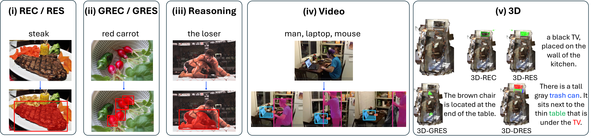
Figure 1.33 lays out the five variants, which differ in scene modality, output granularity, and query complexity.
Referring expression comprehension and segmentation (REC / RES). One image, one expression, one target, returned as a box (REC) or a mask (RES). RefCOCO and RefCOCO+ (short phrases, the latter without location words) and RefCOCOg (longer descriptions), all on MS COCO images collected through ReferItGame or Mechanical Turk, have been the standard benchmarks for a decade; Flickr30k Entities grounds every entity mention of a caption at once.
Generalized REC / RES (GREC / GRES). An expression may match zero, one, or several objects (“the red carrots” versus “the unicorn”), which single-target methods cannot represent. gRefCOCO , Ref-ZOM , PhraseCut , and OmniLabel evaluate this setting, and MaskGroups-HQ generalizes the prompt itself to arbitrary groups of masks specified by text and reference masks. The output is a set, so the metric must be as well (§Datasets and Metrics).
Reasoning grounding. Some queries require inference beyond noun matching: “the loser” needs a judgment about the people shown, “turn on the TV” needs the remote. CLEVR-Ref+ diagnoses this on rendered scenes with ground-truth reasoning programs; ReasonSeg poses implicit, multi-step queries on real images with mask output, extended by MMR (194K implicit queries, multi-target and part-level), ReasonSeg-Inst (instance level), and MC-Bench (instances across image pairs). Ref-Adv keeps the classic REC format but makes expressions minimally sufficient, negation-heavy, and paired with same-category distractors.
Video referring and reasoning grounding. The referent must be found in every frame through motion, appearance change, and occlusion, and the query may name it by what it does (“the man waving his hand”). Refer-Youtube-VOS , Refer-DAVIS17 , A2D- and JHMDB-Sentences , MeViS , ReVOS , and ReasonVOS add language to existing segmentation and actor-action datasets; Ref-VPS extends the referent from objects to processes such as smoke spreading or waves breaking, which have no object boundary at all. Tracking machinery is usually folded in to carry identity across frames .
3D and embodied grounding. The scene is a point cloud or a set of views, and the query refers to an object in 3D (“the chair next to the window”). ScanRefer requires detecting the referent as a 3D box and Multi3DRefer allows zero to many targets; ReferIt3D provides the object instances and scores selection among them; Instruct3D and Multi3DRes ask for point-level masks from instruction-style queries. Embodied grounding makes the output an action: an agent told “go pick up the red cup on the right” must identify the cup and reach it .
Methodology
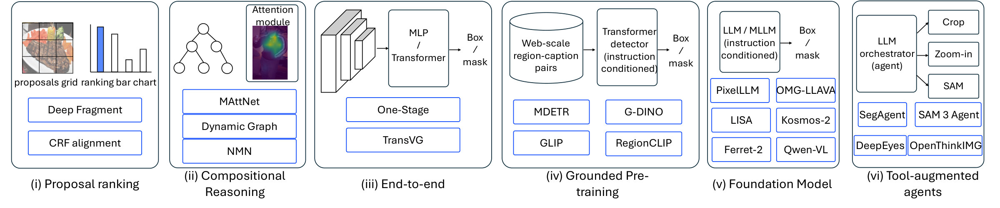
Figure 1.34 organizes the methods into eight families, (A) to (H). They are trajectories rather than eras: the oldest paradigm has resurfaced at foundation-model scale.
(A) Proposal Ranking.
The first grounding models instantiate the ranking form of Eq. [eq:p3_s6_5_2_grounding]: detect region proposals, embed them and the query in a joint space, and pick the best-scoring region. Deep Fragment Embeddings aligned sentence fragments with detected regions, and scene-graph CRFs grounded structured queries to regions for retrieval. Proposal quality bounded these methods and context-dependent expressions defeated them. The same two-stage shape has returned with far stronger proposals: RAS has a segmentation foundation model propose candidate masks and a mask-centric multimodal LLM select the group that satisfies the prompt, and this non-autoregressive selection beats mask generation in both accuracy and latency.
(B) Compositional Reasoning.
Modular networks parse the expression and route its parts to dedicated modules. CMN decomposes an expression into a subject–relationship–object triplet handled by localization and relationship modules; MAttNet soft-parses phrases into appearance, location, and relationship attention modules; dynamic graph attention reasons over the linguistic structure on a scene graph. These models disambiguate compositional queries (“the man behind the woman in red”) but inherit every parsing error.
(C) End-to-End Grounding.
The regression form of Eq. [eq:p3_s6_5_2_grounding] removes proposals: a single network fuses the sentence embedding with the image feature map and predicts the box. One-Stage Grounding did this with a detector head, TransVG with a pure Transformer in which a learnable token attends over visual and textual tokens and regresses coordinates. On the segmentation side, CRIS transfers CLIP’s image-text alignment to the pixel level with text-to-pixel contrastive learning and made end-to-end RES the standard formulation.
(D) Grounded Pre-Training.
Phrase-region alignment learned at scale turned grounding into an open-vocabulary capability. MDETR trains a DETR-style set predictor on text-aligned detection corpora so that every box is tied to a span of the caption; GLIP reformulates detection as phrase grounding and scales to 27M region-caption pairs, giving zero-shot transfer; RegionCLIP adds region-level contrastive alignment, and Grounding DINO deep language fusion at every stage of a DINO detector, which made it the default open-vocabulary detector of later tool chains (family (G)). The residual weakness is the entity shortcut: models latch onto object names and ignore the description. DesCo counters it in the data, pre-training on LLM-generated rich descriptions with context-sensitive negative queries, which raises description-conditioned detection on LVIS and OmniLabel.
(E) Grounding MLLMs.
The first multimodal LLMs built for grounding gave the language backbone a region interface. Kosmos-2 emits location tokens that hyperlink phrases to boxes inside the generated text; Ferret and Ferret-v2 encode boxes, points, and free-form regions as inputs at any resolution. Mask output comes from attaching a decoder: LISA decodes a dedicated segmentation token’s embedding into a mask, which is what makes reasoning segmentation possible, and LISA++ extends it to instances within a dialogue; GLaMM unifies phrase grounding, referring segmentation, and free-form conversation under a grounded-conversation objective; Sa2VA couples a LLaVA-style backbone to SAM 2 and carries dense grounding from images to video referring segmentation. Moondream 3’s segmentation extension dispenses with the decoder and writes the mask autoregressively as a vector path, refined by a lightweight head and trained with reinforcement learning on mask overlap.
(F) Generalist MLLMs.
A parallel line keeps no grounding component at all: the model writes coordinates as plain text, and grounding is one capability among many. Florence-2 is the compact case, a sequence-to-sequence model trained on the 5.4B-annotation FLD-5B corpus that casts captioning, detection, grounding, and polygon-vertex segmentation into one text interface, with mask accuracy below the decoder-based models of family (E). The frontier generalists, Gemini , Qwen2.5-VL and Qwen3-VL , InternVL 2.5 and InternVL 3 , and Seed1.5-VL , now match or exceed the specialists on the RefCOCO family from prompting alone (Table 1.23); Llama 3 folds phrase-to-box and phrase-to-mask annotations into its multimodal pre-training but reports no REC numbers.
(G) Tool-Augmented Agents.
A third line delegates localization to specialist models under an outer control loop, which has moved from fixed pipelines to generated programs to learned tool use. Grounded SAM chains Grounding DINO boxes into SAM masks without training; ViperGPT has a code LLM write a Python program that calls perception APIs, so that logic and arithmetic are symbolic and perception is delegated, with interpretable intermediate steps. SegAgent treats mask annotation as a sequential decision process, imitating the click sequences of human annotators on an interactive segmenter; DeepEyes internalizes the tool, using reinforcement learning to make the model emit coordinates that trigger zoom-in crops inside its own chain of thought. SAM 3 Agent wraps SAM 3, whose concept prompts return every instance matching a noun phrase, with an MLLM that proposes phrases, inspects the returned masks, and selects those satisfying the full expression, which gives zero-shot referring and reasoning segmentation without grounding-specific training.
(H) Generation for Grounding.
The newest family treats a large text-to-image or text-to-video generator as a grounding model, on the premise that generative pre-training already induces a fine-grained map from language to spatial and temporal structure. VD-IT uses a frozen text-to-video diffusion model as the feature extractor for referring video segmentation and finds its features more temporally consistent and better aligned with language than discriminative video backbones; ReferEverything keeps the generator intact and fine-tunes it to predict mask latents decoded by the frozen VAE, which transfers zero-shot to rare objects, “stuff”, and the amorphous processes of Ref-VPS. Vision Banana instruction-tunes a state-of-the-art image generator to render the task output as an image, segmentation as painting the referred region a prescribed color, and matches specialist systems zero-shot while keeping its generative ability. Grounding quality in this family rises with the underlying generator.
Datasets and Metrics
Table 1.22 lists the benchmarks by variant. Annotation cost rises steeply from a 2D box to a per-frame mask to a 3D box, so image-level REC/RES corpora dominate in size and maturity, video referring sets are an order of magnitude smaller, and 3D corpora smaller still. Within the image benchmarks a generational split has opened. RefCOCO/+/g now serve mainly as training corpora: specialists and generalist MLLMs report Acc@0.5 above 90% on them, an audit found label errors in 14%, 24%, and 5% of RefCOCO, RefCOCO+, and RefCOCOg , and much of the score survives shuffling the word order of the expression . The evaluation-oriented replacements are built to expose what saturation hides: Ref-L4 (cleaned labels, long expressions, a 365-category vocabulary), Ref-Adv (shortcut-suppressed, where the same models fall to roughly 60%), HC-RefLoCo , GigaGrounding , and GroundingME , which scores discrimination, spatial reasoning, limited visibility, and the rejection of ungroundable queries, and on which the best model resolves 45% of samples while most score zero on rejection.
| Task | Representative Datasets | Primary Outputs | Typical Metrics |
|---|---|---|---|
| REC / RES | RefCOCO/+/g, Flickr30k Entities, Ref-L4, Ref-Adv, GroundingME | box / mask | Acc@0.5; gIoU / cIoU (RES) |
| GREC / GRES | gRefCOCO, OmniLabel, PhraseCut, Ref-ZOM, MaskGroups-HQ | multi-box / multi-mask | F1, N-acc, gIoU / cIoU, AP\(_{\text{descr}}\) |
| Reasoning grounding | CLEVR-Ref+, ReasonSeg, ReasonSeg-Inst, MMR, MC-Bench | mask (or box) | gIoU / cIoU, Acc@0.5 |
| Video referring | MeViS, Refer-YT-VOS, Refer-DAVIS17, ReVOS, A2D-Sent., Ref-VPS | per-frame mask | \(\mathcal{J}\&\mathcal{F}\); mAP (A2D-Sent.) |
| 3D / Embodied | ScanRefer, ReferIt3D, Multi3DRefer, Instruct3D | 3D box / 3D mask | Acc@0.25/0.5, F1@0.5, mIoU |
Every metric here is built on the IoU of predicted and reference regions (Section 1.4.2 gives the mask form). REC reports Accuracy@0.5, the fraction of expressions whose box reaches IoU \(\ge 0.5\), with stricter thresholds and the threshold-averaged mAcc increasingly added; phrase grounding, where several proposals may be returned, reports Recall@\(k\). For set-valued outputs (GREC / GRES) the prediction is compared with the ground-truth set through per-expression F1 over boxes or masks and a no-target accuracy for expressions with no referent , and OmniLabel’s AP\(_{\text{descr}}\) computes average precision over free-form descriptions including negative ones . Segmentation reports two aggregates that differ in weighting: gIoU (also called mIoU) averages per-sample IoU and so weights every expression equally, whereas cIoU accumulates intersection and union over the whole set before dividing and so weights large objects more; reasoning and referring segmentation papers report both , often with Precision@\(X\) for the distribution of mask quality and a boundary IoU for edge accuracy . Video referring segmentation uses the \(\mathcal{J}\&\mathcal{F}\) composite of Section 1.4.2.
Table 1.23 reports the two variants on which the families can be compared. On REC the step from proposal ranking and modular reasoning (MAttNet) to end-to-end regression (TransVG) and then to grounded pre-training (MDETR, Grounding DINO) is about 14 points of RefCOCO Acc@0.5, and the generalist MLLMs (Qwen2.5-VL, InternVL 2.5) sit at or above the best specialist without benchmark-specific training. On RES the grounding MLLMs with a mask decoder have passed the end-to-end specialists (CRIS to Sa2VA is eleven cIoU points on RefCOCO), and Sa2VA’s video columns show the same model carrying over to referring video segmentation; on ReasonSeg, LISA-7B reaches 52.9 gIoU after fine-tuning where open-vocabulary segmenters stay below 30 . The tool-augmented and generative families are evaluated zero-shot on subsets of these benchmarks and are not directly comparable here. What the table cannot show is cross-variant breadth: methods strong on image REC routinely degrade on video, reasoning, and 3D grounding, and no single architecture leads all five variants.
| \(\bullet\) Referring expression comprehension (Acc@0.5) | |||||
| Method | Family | RefCOCO | RefCOCOg | ||
| val | testA | testB | val | ||
| MAttNet | (B) modular attention | 76.7 | 81.1 | 70.0 | 66.6 |
| TransVG | (C) end-to-end Transformer | 81.0 | 82.7 | 78.4 | 68.7 |
| MDETR | (D) grounded pre-training | 86.8 | 89.6 | 81.4 | 81.6 |
| Grounding DINO-L | (D) grounded pre-training | 90.6 | 93.2 | 88.2 | 86.1 |
| Ferret-13B | (E) grounding MLLM | 89.5 | 92.4 | 84.4 | 85.8 |
| Qwen2.5-VL-72B | (F) generalist MLLM | 92.7 | 94.6 | 89.7 | 89.9 |
| InternVL2.5-78B | (F) generalist MLLM | 93.7 | 95.6 | 92.5 | 92.7 |
| \(\bullet\) Referring segmentation (cIoU) and video referring segmentation (\(\mathcal{J}\&\mathcal{F}\)) | |||||
| Method | Family | RefCOCO | RefCOCO+ | RefCOCOg | MeViS / Ref-DAVIS17 |
| CRIS | (C) end-to-end, CLIP | 70.5 | 62.3 | 59.9 | – |
| LISA-7B | (E) mask-decoder MLLM | 74.9 | 65.1 | 67.9 | – |
| GLaMM-7B | (E) grounded conversation | 79.5 | 72.6 | 74.2 | – |
| VISA-13B | (E) video reasoning MLLM | – | – | – | 44.5 / 70.4 |
| Sa2VA-8B | (E) MLLM + SAM 2 | 81.9 | 76.5 | 78.9 | 46.9 / 75.2 |
Challenges
Ambiguity and interaction. “The guy on the right” depends on the viewpoint, and “the red cup” presumes one salient red cup. People resolve this through shared context or a follow-up question; grounding models make an arbitrary choice or fall back on a dataset bias such as the largest instance. Recognizing that an expression matches several entities, abstaining under uncertainty, and asking for clarification are outside almost every current benchmark, which is one-shot (one query, one image), while real use is a dialogue with memory of what was grounded before.
Reasoning and commonsense. “The tool needed to open the box” cannot be resolved from the image alone, and adversarial evaluation shows that much of current REC accuracy rests on shortcut matching rather than reasoning . LLM-based models carry the knowledge but may answer “a key” when none is visible, and vision-only models lack it entirely; reasoning-driven segmentation and agentic active perception are the two bridges. Video adds temporal and causal structure (“the man who picks up the phone and then leaves”, “the car that caused the accident”) that current video grounding, which attends mostly to appearance and simple motion, does not capture.
Open world and 3D. Open-vocabulary detectors and CLIP-based models have blind spots on rare objects, fine-grained distinctions (viola versus violin), proper nouns, and figurative references (“the blue crown” for a cap), and per-category analyses of large multimodal models show a strong bias toward common training categories . Description-conditioned pre-training and generative pre-training are the routes to long-tail coverage that do not require labeling it. Functional references (“the driver’s seat”) also imply spatial context that only 3D understanding resolves, and the 3D-language work surveyed above will grow with augmented reality and robotics.
Efficiency and evaluation. The strongest systems are multi-model tool chains or LLMs with vision adapters and do not fit AR glasses or robots; compact models and non-autoregressive selection show that accuracy does not require scale, but the accuracy-efficiency frontier is unmapped. Evaluation has the saturation problem described under §Datasets and Metrics, and the new benchmarks, each with its own protocol, risk a cycle of leaderboard chasing; a single protocol spanning image, video, 3D, and dialogue, scoring rejection and clarification as well as localization, does not yet exist.
Chapter 7: Spatial Reasoning
Spatial reasoning is the step that turns perceived structure into decisions: given detections, depths, poses, and a task, it works out the relations, the causes, and the actions that follow, the why and how of spatial interaction rather than merely the what and where. It is where perception becomes goal-directed, supporting inference, planning, and problem-solving in physical and virtual environments.
The chapter is organized along the spectrum by which spatial reasoning has actually developed, from explicit symbolic models to learned and foundation-model-driven ones. At one end, reasoning runs over hand-built representations of geometry, physics, and logic, whose structure is inspectable and whose conclusions can be certified. In the middle, it emerges from data, as neural models acquire spatial competence directly rather than being told the rules. More recently, large pre-trained models supply reasoning as a general capability to be elicited and steered. Hybrid approaches recombine these, pairing the semantic reach of foundation models with the precision and verifiability of symbolic and learned components; a closing survey of benchmarks then records how the field measures spatial reasoning as it shifts from passive observation toward active, situated interaction.
Rule-based Symbolic Spatial Reasoning
Rule-based symbolic spatial reasoning covers the methods that operate over explicit, model-based representations of space (geometric primitives, physical laws, graph connectivity, formal constraints, action rules, or causal mechanisms) rather than over learned latent representations alone. What sets this family apart is that reasoning happens inside a model that can be inspected: its state and transitions are legible, so claims about feasibility, optimality, or safety can be backed by certificates rather than empirical averages, and when a plan fails it fails legibly, as an infeasible inverse kinematics, a violated constraint, a missing precondition, or an inconsistent causal attribution, not as an opaque correlation.
The section surveys six kinds of explicit structure, ordered from the most concrete to the most abstract: geometric and algebraic models of position, orientation, motion, and feasibility; physical models of contact, friction, and stability; topological and graph abstractions of space that turn planning into search; formal constraint systems whose solvers return certified plans or proofs of infeasibility; rule-based and programmatic logic that sequences and supervises actions; and causal models that explain, predict counterfactually, and prescribe interventions.
These paradigms are not isolated alternatives. Modern robotic systems routinely compose them: geometric solvers serve as feasibility oracles inside constraint-based search; behavior trees wrap symbolic plans for fault tolerance; causal action languages compile to SAT; topological maps anchor both classical and learning-based navigation policies. The unifying thread is that each paradigm carries explicit structure (a state, an operator, a constraint, a rule, or a mechanism) that can be inspected, composed, and reasoned about.
Geometric and Algebraic Reasoning
Geometric and algebraic reasoning uses explicit mathematical models of position, orientation, shape, and motion to turn local measurements (image points, depths, joint angles, odometry) into quantities that can be analyzed and verified: where things are in a common frame, what a sensor can see, what a mechanism can reach, and whether a grasp will hold. The same models extend to time-varying settings, where relationships evolve under kinematic and differential constraints and the question becomes not only where entities can be but how they can move. Precision, interpretability, and domain independence have made this the common substrate of robotics , AR/VR , and autonomous systems , and the source of the hard constraints that learned components are checked against. Figure 2.1 gives the abstract formulation.
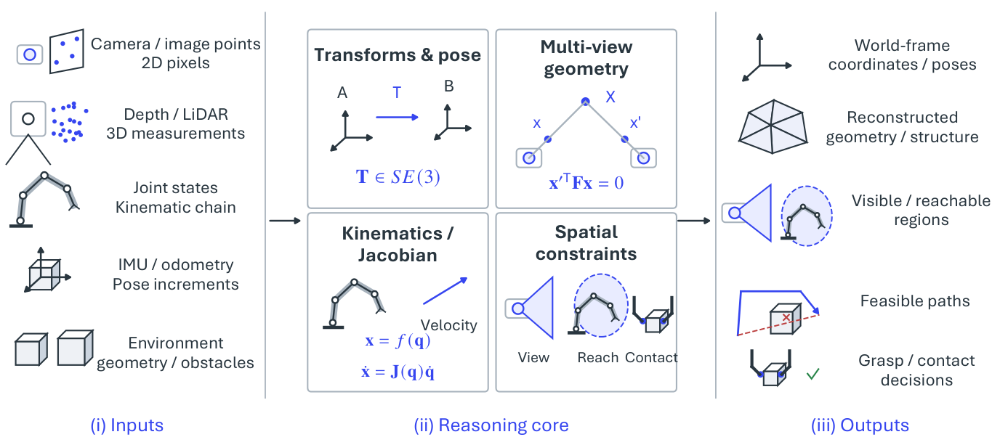
Task Definition
Given measurements \(\{\mathbf{z}_k\}\) expressed in local frames (pixels, ranges, joint readings, pose increments) and a system model \(\Theta\) (sensor calibration, kinematic parameters, environment geometry), geometric reasoning computes a world-frame quantity and a feasibility verdict, \[\begin{equation} \mathbf{x} = g(\{\mathbf{z}_k\};\, \Theta), \qquad \psi(\mathbf{x};\, \Theta) \in \{\text{reachable}, \text{visible}, \text{force-closed}, \ldots\}, \end{equation}\] where \(\mathbf{x}\) may be a pose, a reconstructed surface, a workspace or visibility region, or a trajectory, and \(\psi\) is a predicate that can be checked against the model. In the time-varying case the inputs are indexed over time and \(\mathbf{x}\) becomes a trajectory with reachable sets and feasibility certificates along it.
Methodology
Transformation and Pose Representation.
Rigid-body relationships between sensors, objects, and mechanisms are elements of the special Euclidean group \[\begin{equation} \mathbf{T} = \begin{bmatrix} \mathbf{R} & \mathbf{t} \\ \mathbf{0}^\top & 1 \end{bmatrix} \in SE(3), \end{equation}\] where \(\mathbf{R} \in SO(3)\) is a rotation and \(\mathbf{t} \in \mathbb{R}^3\) a translation; composing them moves measurements across frames. Early robotics parameterized serial chains through the Denavit–Hartenberg convention , which gives forward kinematics from a minimal set of link parameters. Lie-group formulations instead write motion as exponentials of screw axes, the product-of-exponentials representation , which is coordinate-free and behaves well where the DH parameterization has discontinuities. Quaternions and dual quaternions give compact, numerically stable encodings of rotation and screw motion for calibration and sensor fusion.
Projective and Multi-View Geometry.
Reasoning from images must recover 3D structure and camera motion from 2D measurements under perspective distortion and scale ambiguity. The constraint between corresponding points in two views is the epipolar condition \[\begin{equation} \mathbf{x}'^\top \mathbf{F} \mathbf{x} = 0, \end{equation}\] with \(\mathbf{F}\) the fundamental matrix. The eight-point algorithm solves for \(\mathbf{F}\) linearly, Hartley’s normalization made it numerically stable, and Nistér’s five-point solver reaches the minimal case for calibrated cameras. Zhang’s homography-based calibration removed the need for special rigs; the field is consolidated in , and structure-from-motion systems such as COLMAP scale it to thousands of images, with RANSAC enforcing the algebraic constraints against outliers throughout.
Jacobian and Differential Formulations.
For motion rather than static configuration, the map from configuration to task space, \[\begin{equation} \mathbf{x} = f(\mathbf{q}), \end{equation}\] is differentiated to relate velocities, \[\begin{equation} \dot{\mathbf{x}} = \mathbf{J}(\mathbf{q}) \dot{\mathbf{q}}, \end{equation}\] and the Jacobian \(\mathbf{J}(\mathbf{q})\) carries the information about feasibility, singularities, and controllability along a motion. Whitney’s resolved motion rate control used it to command Cartesian velocities without closed-form inverse kinematics; Nakamura’s damped least squares trades exactness for stability near singularities; redundancy resolution uses null-space motion for secondary objectives; and Khatib’s operational-space formulation separates task and null-space dynamics so that objectives are written directly in task space.
Visibility and Coverage Geometry.
What a sensor at pose \(p\) can observe is the set \[\begin{equation} \mathcal{V}(p) = \{ x \in \mathcal{E} \mid \text{line}(p,x) \cap \mathcal{O} = \emptyset \}, \end{equation}\] with \(\mathcal{E}\) the environment and \(\mathcal{O}\) the obstacles. The Art Gallery theorem bounds the number of viewpoints needed for full coverage; polygon visibility and shortest-path queries made the computations algorithmic; and Tarabanis et al. cast sensor planning as geometric optimization over fields of view modeled as cones, frusta, or polygons.
Workspace and Reachability Analysis.
The reachable workspace of a mechanism is \[\begin{equation} \mathcal{R} = \{ \mathbf{x} \mid \exists\, \mathbf{q} \in \mathcal{C}_{\mathrm{free}} \text{ such that } \mathbf{x} = f(\mathbf{q}) \}, \end{equation}\] with \(\mathcal{C}_{\mathrm{free}}\) the feasible configuration space. Roth and Gosselin added performance and dexterity measures so that manipulability is characterized along with reachability; Merlet classified workspace types; Zlatanov et al. analyzed constraint-induced singularities; and sampling-based reachability maps trade closed-form guarantees for empirical coverage in high-dimensional systems.
Contact and Grasp Geometry.
Whether a set of contacts can hold an object is decided in wrench space. Ferrari and Canny model the forces each contact can apply as a convex set of wrenches \(\mathcal{W}\); the grasp is force-closed if \[\begin{equation} \mathbf{0} \in \text{int}\,\text{conv}(\mathcal{W}), \label{eq:p3_s7_1_1_force_closure} \end{equation}\] so that any external wrench can be resisted. GraspIt! made these metrics computable for arbitrary hands and objects; task-oriented measures weight the wrench space by what the task requires; and Dex-Net samples analytic grasps at scale to train data-driven grasp predictors that keep the geometric criterion as their label.
Benchmarks
Geometric reasoning is evaluated against geometrically grounded ground truth: camera poses and intrinsics, depth maps and meshes, object models, grasp annotations. The pose, odometry, SLAM, and multi-view reconstruction benchmarks (TUM RGB-D , EuRoC , TUM-VI , KITTI , ETH3D , Tanks and Temples , DTU , Middlebury , HPatches ) and the long-term localization suites under seasonal and day-night change (Aachen, RobotCar Seasons, CMU Seasons , InLoc , 4Seasons ) are those of Section 1.2.4 and Section 1.3.5, where their protocols and headline results are tabulated. Specific to the reasoning problems above are BAL , which standardizes large bundle-adjustment problems for solver evaluation; the Active Vision Dataset , ScanNet , and HM3D for next-best-view, coverage, and exploration protocols; Cornell , Jacquard , and GraspNet-1Billion for grasp quality (rectangle labels, simulated grasp trials, and dense 6-DoF annotations with seen / unseen / novel splits respectively), with the YCB object set as the shared physical test set; and MoveIt , whose reachability tooling is the de facto harness for inverse kinematics and motion-planning evaluation.
Challenges and Trends
The formulations above assume exact geometry, and real sensing is noisy, incomplete, and subject to calibration drift ; bundle adjustment and reachability analysis scale poorly with problem size; many methods fail near singularities or degenerate feature configurations ; the frameworks are strongest for static rigid bodies and approximate deformable and human-centric geometry ; and evaluation is concentrated on a few canonical datasets and manipulators, which limits cross-domain comparison.
The response has been to keep the geometry and wrap it in probabilistic or learned machinery: factor-graph SLAM and robust bundle adjustment attach uncertainty to the symbolic model (Section 1.3.5); learned correspondence priors are refined by RANSAC ; and the long-term benchmarks push the same pipelines toward continual adaptation under changing conditions.
Physical Reasoning
Physically-aware spatial reasoning predicts how a spatial configuration evolves under physical law: rigid-body dynamics, contact and friction, and the conditions for static stability. Will a grasp hold? How will an object move when pushed? Will a stack of blocks stand or fall? Answering these from a model of mechanics, rather than from observed correlations, is what lets a robot anticipate the outcome of an interaction before committing to it; Figure 2.2 shows the three canonical cases.
Task Definition
Let the environment at time \(t\) be the state \[\begin{equation} \mathbf{s}_t = (\mathbf{q}_t, \mathbf{v}_t, \theta), \end{equation}\] with generalized coordinates \(\mathbf{q}_t \in \mathbb{R}^n\), velocities \(\mathbf{v}_t=\dot{\mathbf{q}}_t\), and physical parameters \(\theta\) (masses and inertias in the mass matrix \(M(\mathbf{q})\), friction coefficients \(\{\mu_k\}\), restitution, geometry). An action \(\mathbf{u}_t\) (a push, a grasp) enters as a generalized force \(\boldsymbol{\tau}_{\mathrm{ext},t+1}\), and the next state follows from a contact-implicit time-stepping update: \[\begin{equation} \begin{aligned} M(\mathbf{q}_{t})\,\frac{\mathbf{v}_{t+1}-\mathbf{v}_{t}}{\Delta t} + \mathbf{h}(\mathbf{q}_{t},\mathbf{v}_{t+1}) &= \boldsymbol{\tau}_{\mathrm{ext},t+1} + \sum_{k=1}^{K}\Big(J_{n,k}^\top \lambda_{n,k} + J_{t,k}^\top \boldsymbol{\lambda}_{t,k}\Big), \\ \mathbf{q}_{t+1}&=\mathbf{q}_{t}+\Delta t\,\mathbf{v}_{t+1}, \end{aligned} \end{equation}\] where \(\mathbf{h}\) collects Coriolis, centrifugal, and gravitational terms, and for each potential contact \(k\) with gap function \(\phi_k(\mathbf{q})\) and Jacobians \(J_{n,k},J_{t,k}\) the normal and tangential impulses satisfy non-penetration, complementarity, and Coulomb friction: \[\begin{equation} \begin{aligned} \phi_k(\mathbf{q}_{t+1}) \ge 0,\quad \lambda_{n,k}&\ge 0,\quad \lambda_{n,k}\,\phi_k(\mathbf{q}_{t+1})=0,\\ \|\boldsymbol{\lambda}_{t,k}\| &\le \mu_k\,\lambda_{n,k}. \end{aligned} \label{eq:p3_s7_1_2_contact} \end{equation}\] Physical reasoning is the computation, or approximation, of this transition \(\mathbf{s}_{t+1}=\mathcal{T}(\mathbf{s}_t,\mathbf{u}_t)\) and of the queries derived from it (stability, collision, reachability). When motion is slow enough that inertial terms vanish, the quasi-static form \[\begin{equation} \sum_{k=1}^{K}\Big(J_{n,k}^\top \lambda_{n,k} + J_{t,k}^\top \boldsymbol{\lambda}_{t,k}\Big) + \boldsymbol{\tau}_{\mathrm{ext}} \approx \mathbf{0}, \qquad \|\boldsymbol{\lambda}_{t,k}\| \le \mu_k\,\lambda_{n,k}, \end{equation}\] reduces reasoning to an equilibrium feasibility test, which is the setting of the classical analytic models of grasping, pushing, and stacking.
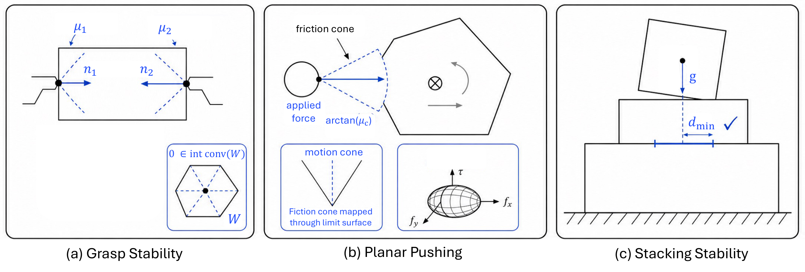
Methodology
Model-based physical reasoning is carried out either numerically, in a physics engine that integrates the dynamics above, or analytically, with closed-form criteria for the quasi-static cases. Both rest on the same Newtonian foundation and differ in whether fidelity or interpretability is the priority.
Physics Engines.
MuJoCo , Bullet , ODE , and DART integrate rigid-body dynamics with contact by time stepping, and they resolve contact in one of two ways. Penalty methods treat a contact as a compliant spring-damper that resists interpenetration, \[\begin{equation} f_{n,k} = k_p\,\delta_k + k_d\,\dot{\delta}_k, \end{equation}\] with penetration depth \(\delta_k\), stiffness \(k_p\), and damping \(k_d\), and regularize friction similarly; they are cheap and simple, but stiff parameters destabilize the integration and soft ones introduce artificial compliance, which is acceptable in graphics and approximate planning but not in control. Constraint-based methods enforce Eq. [eq:p3_s7_1_2_contact] directly as complementarity constraints , solved per step as a linear or nonlinear complementarity problem , a convex quadratic program , or a second-order cone program for exact friction cones (projected Gauss–Seidel and sequential-impulse schemes are the usual implementations). They give physically consistent, nearly penetration-free contact forces at higher cost and with harder scaling in the number of contacts, so engines in practice hybridize: hard constraints on normal forces, regularized tangential friction, warm starting, contact aggregation, and stabilization terms.
Analytic Quasi-Static Models.
For the three settings of Figure 2.2, closed-form criteria replace simulation. At a point contact the admissible forces form the friction cone \[\begin{equation} \mathcal{F}_k = \{(f_{n,k},\mathbf{f}_{t,k}) \mid f_{n,k} \ge 0, \ \|\mathbf{f}_{t,k}\|\le \mu_k f_{n,k}\}, \end{equation}\] which a polyhedral approximation turns into linear constraints. Mapping each contact’s cone through its moment arm into wrench space and taking the convex hull gives the grasp wrench space, and the grasp is force-closed when the origin lies strictly inside it, Eq. [eq:p3_s7_1_1_force_closure] ; form closure is the stronger, purely geometric condition in which contact geometry alone prevents motion, and the Ferrari–Canny \(\epsilon\)-metric (the distance from the origin to the hull boundary) grades grasp quality. For planar pushing the limit surface relates the applied wrench to the resulting slip, and its ellipsoidal approximation yields a motion cone of object velocities reachable from a given push, the basis of stable pushing and closed-loop push planning. For stacking, stability under gravity requires that the gravitational wrench be balanced by the supporting contacts : without friction, the center of mass must project into the support polygon; with friction, the contacts’ friction cones must generate a wrench cone containing the gravitational wrench.
Benchmarks
PHYRE poses 2D physics puzzles in which an object must be placed so that simulated physics reaches a goal, scored by the number of attempts needed (AUCCESS) within and across puzzle templates; ShapeStacks labels 3D stacks as stable or unstable; PlasticineLab is a differentiable-physics suite for deformable manipulation; and the video suites IntPhys , CLEVRER , and Physion test prediction and counterfactual judgment of physical outcomes, with ComPhy asking for hidden properties such as mass to be inferred from motion. Grasp quality under quasi-static analysis is evaluated on the grasping benchmarks of §2.1.1 (Cornell, YCB, GraspNet-1Billion). Metrics are predictive: position or trajectory error against the simulated outcome, success rate (stable stack, successful push or grasp), binary stability accuracy, and physical-plausibility terms such as momentum conservation and constraint violation.
Challenges and Trends
The parameters that matter most, mass, friction, elasticity, internal stability, are rarely observable. They must be inferred from interaction, from how far an object moves when pushed or how it responds to a collision; ComPhy tests exactly this, and most methods still either assume the parameters known, as classical simulation does, or approximate them in ways that fail outside the lab. Latent-dynamics learning and system identification are the two established routes.
The simulation-to-reality gap is the second limit. Small errors in restitution, micro-contact behavior, or unmodeled environmental factors compound once a policy leaves the engine, and fidelity trades against speed: high-fidelity simulation is too slow for large-scale training or real-time control, lightweight approximation too inaccurate. Hybrid physics-plus-learning models, domain adaptation between simulated and real dynamics, and uncertainty-aware transfer each address one side of this trade-off; none closes it.
Perception is the third. Geometry, material, and object state come from noisy, incomplete sensing, and a small error in shape, pose, or contact location propagates into a large error in predicted force or stability. Systems that couple vision to a physics engine, Galileo and PhyNet among them, show that physical priors improve perception and that physical consistency can constrain it in return, but end-to-end pipelines in which the two regularize each other remain the exception.
Topological and Graph-based Reasoning
Topological and graph-based reasoning replaces continuous geometry with discrete connectivity, so that path planning, exploration, and coordination become combinatorial search over nodes and edges: places, corridors, and routes rather than metric trajectories. The abstraction is what makes large-scale, dynamic, or partially known environments tractable, where maintaining globally consistent geometry is hard but connectivity and reachability are stable. Figure 2.3 gives the abstract formulation.
Task Definition
Given a configuration space \(\mathcal{C}\) with free subset \(\mathcal{C}_{\mathrm{free}} \subseteq \mathcal{C}\) (known a priori or inferred online from sensor streams), robot constraints, and optional priors such as floor plans or road networks, most methods build a planning graph \(G=(V,E,\mathbf{w})\) in which vertices \(V\) are places, sampled configurations, or abstract states, edges \(E\) are feasible transitions, and \(\mathbf{w}: E \to \mathbb{R}_{\geq 0}\) assigns metric or semantic costs (distance, time, energy, risk); in some methods the graph is implicit and expanded locally during search. The output is a collision-free path \(\pi=\langle v_0=s,\dots,v_k=g\rangle\) of minimal accumulated cost, a topological map of place connectivity (often linked to local metric submaps), or, with several agents, conflict-free trajectories \(\{\pi_i(t)\}_{i=1}^N\) that minimize makespan or total cost under vertex and edge conflict constraints.
Methodology
Visibility and Line-of-Sight Graphs.
Connecting configurations that can see each other reduces shortest-path planning to graph search with interpretable waypoints. The visibility graph of Lozano-Pérez and Wesley links obstacle, start, and goal vertices and recovers exact Euclidean shortest paths in polygonal environments by Dijkstra or A*; the configuration-space construction via Minkowski sums extends it to robots of finite size by growing the obstacles instead of shrinking the robot; continuous-Dijkstra algorithms settle the complexity at \(O(n\log n)\) . Grid planners bring line-of-sight into the search itself: Field D* interpolates across cell faces for smooth, replannable paths , Theta* updates parents by visibility to produce near-Euclidean paths on the fly , and Jump Point Search prunes symmetric expansions by jumping between visibility events .
![Abstract task formulation of topological and graph-based
reasoning: (i) free space, sensing, start and goal states, and
constraints are turned by (ii) construction and search over a graph \(G=(V,E,w)\) into (iii) decision-ready
graph artifacts such as collision-free paths, topological maps,
coordinated multi-agent trajectories, and coverage plans. These are
alternative task outputs. In the multi-agent example, rows denote
vertices and columns denote successive time steps; horizontal segments
represent waiting.](book-assets/figures/part3/section7/713_topo.png)
Clearance-Oriented Skeletons.
Where safety matters more than length, free space is retracted to a skeleton that keeps connectivity and maximizes distance to obstacles. Voronoi diagrams and medial axes give maximal-clearance paths, with Fortune’s sweepline for efficient planar construction; the generalized and hierarchical Voronoi graphs let a robot follow ridges with its sensors and build the clearance roadmap incrementally while detecting junctions and loops; and distance-transform updates maintain the skeleton in dynamic environments for real-time replanning.
Decomposition Graphs and Coverage.
Discretizing space into cells trades geometric fidelity for simplicity and completeness. Occupancy grids are probabilistic cell maps updated from range data on which planning is grid search; exact decompositions serve coverage, with boustrophedon decomposition partitioning free space into monotone cells and ordering them through an adjacency graph for complete, low-redundancy sweeps; and the coverage literature is systematized in .
Sampling-Based Roadmaps and Trees.
In high-dimensional configuration spaces, the graph is discovered by sampling. Probabilistic roadmaps sample and connect configurations in a preprocessing phase amortized over many queries and are probabilistically complete; RRT and RRT-Connect grow trees toward unexplored regions for single-query planning under kinematic and kinodynamic constraints; PRM* and RRT* add connection-radius and rewiring rules that make them asymptotically optimal; and FMT* and BIT* combine batch sampling with dynamic programming and heuristic search over increasingly dense implicit graphs for faster, anytime convergence.
Optimal, Any-Angle, and Incremental Graph Search.
On a given graph, Dijkstra’s algorithm and A* are the optimal single-source and heuristic searches; LPA* and D* Lite repair a shortest path incrementally as edge costs change; and the any-angle planners above (Field D*, Theta*, JPS) improve path quality without giving up the discrete search.
Multi-Agent and Hierarchical Graph Reasoning.
With several agents on one graph, coordination is search over a time-expanded network. Conflict-Based Search splits the problem into a high-level search over conflict constraints and low-level single-agent planning and is complete and optimal; ICTS searches joint cost allocations backed by individual searches; ECBS and EECBS are bounded-suboptimal with focal heuristics and better conflict handling; and SAT or ILP compilations reach global optimality on moderate fleets at the cost of solver scalability. Hierarchical and multi-resolution planning and contraction hierarchies precompute abstraction layers that answer shortest-path queries on continental road networks in well under a millisecond, with standardized maps and instances for comparison.
Benchmarks
The MovingAI suite supplies standardized 2D maps from games, cities, and synthetic generators for single-agent search (path cost, runtime, memory, node expansions) and the MAPF instances on which CBS, ICTS, ECBS, and compilation-based solvers are compared by makespan, sum of costs, and success under time and memory limits, with the ICAPS MAPF tracker as the community leaderboard. OMPL’s Planner Arena compares PRM, RRT, FMT, and BIT variants on success rate, planning time, path quality, and anytime behavior, and the DIMACS shortest-path challenge evaluates query latency, preprocessing cost, and optimality on continental road graphs. Topological mapping and pose-graph SLAM are stressed by place recognition under appearance change: RADISH provides classic multi-sensor logs, and Oxford RobotCar , NCLT , and Nordland span seasons and weather, with KITTI and EuRoC (Section 1.2.4) for urban and indoor pose graphs.
Challenges and Trends
Graph density sets the trade-off: sparse graphs lose connectivity or optimality, dense ones lose real-time response, and the problem sharpens in high-dimensional and lifelong settings . Perceptual aliasing, drifting pose graphs, and dynamic obstacles complicate planning under partial information , and on the topological SLAM benchmarks the binding difficulty is not search but appearance robustness, with cross-season and cross-weather queries far harder than same-condition retrieval. Multi-agent coordination strains conflict resolution and time-expanded representations as fleets grow, while fairness and deadlock avoidance must be kept .
The directions are structured rather than end-to-end: hierarchical and multi-resolution planning that abstracts and refines , risk-aware and formally verified planning under uncertainty , bounded-suboptimal and distributed coordination for responsiveness , and neuro-symbolic methods that enrich the graph with learned perception, heuristics, and semantics .
Constraint-based Spatial Solving
Many robotics problems are not about finding a plan but one that must satisfy strict requirements: no collisions, no joint-limit violations, stable contacts, correct timing, sometimes guaranteed dynamics or safety margins. Constraint-based spatial solving states the problem as a collection of constraints, what must hold and what must not, and hands it to a solver that either returns a satisfying solution or proves that none exists. Compared with sampling- and heuristic-driven planning, this buys certificates of feasibility, an explanation of why a candidate fails, and, under an explicit model, optimality or bounded-suboptimality guarantees, which is what manipulation in clutter, multi-robot coordination in shared space, and assembly demand. Figure 2.4 gives the abstract formulation.
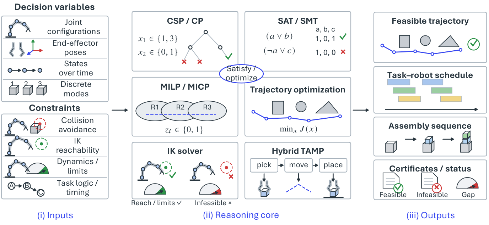
Task Definition
Let \(x=(\mathbf{q}_{1:T},\mathbf{u}_{1:T},\mathbf{z})\) collect continuous states and controls together with discrete mode and logic variables \(\mathbf{z}\). Constraint-based solving seeks \[\begin{equation} \text{find } x\in\mathcal{X}\quad\text{s.t.}\quad g_i(x)\le 0,\ \ h_j(x)=0,\ \ \phi(\mathbf{z},x)=\top, \end{equation}\] where the inequalities \(g_i\) encode geometric and dynamic feasibility (collision, joint, and dynamics limits), the equalities \(h_j\) encode kinematics and contact conditions, and \(\phi\) encodes task logic such as preconditions and effects. The optimization variant minimizes an objective \(f(x)\) as well. The output is a feasible \(x\) (a collision-free and dynamically admissible trajectory, a task-robot schedule, an assembly sequence), with an objective value or optimality gap when optimizing, or a certificate that no such \(x\) exists.
Methodology
The solver families differ in the variables and constraints they handle and the guarantees they return; practical systems are rarely pure, combining discrete reasoning over actions and modes with continuous optimization over motions and contacts, and calling fast geometric oracles (collision checking, inverse kinematics) inside the solver loop.
Constraint Programming (CSP/CP).
When the decisions are combinatorial (which object, which placement, which grasp) but each must pass a geometric test, constraint programming encodes the choices as variables under constraints and interleaves symbolic branching with propagation, pruning, and geometric checks. Lozano-Pérez and Kaelbling cast task-and-motion planning as constraint satisfaction over action skeletons, pruning symbolic branches as soon as a geometric feasibility test fails; Lagriffoul et al. propagate and filter continuous domains before any expensive collision or IK call, so that many failures become cheap inconsistencies; and Dantam et al. interleave discrete search with incremental feasibility queries that reuse information across related constraints.
SAT/SMT Compilations.
Compiling planning and feasibility into Boolean formulas, or into formulas over richer theories such as real arithmetic, puts clause learning, incremental solving, and conflict-driven pruning to work. dReal decides nonlinear real arithmetic up to a numerical tolerance (\(\delta\)-completeness), which gives certified answers where exact decidability is impossible; SMT-based planning for hybrid systems reasons first over an abstraction and adds constraints as counterexamples appear; SAT encodings of multi-agent pathfinding obtain optimal schedules on time-expanded graphs (the MAPF problem itself is treated in §2.1.3); and SMT over linear real arithmetic extends the encodings to continuous time and to robustness against execution delays .
Mixed-Integer Formulations (MICP/MILP).
When discrete mode choices (which region, which contact mode, which precondition) interact with continuous geometry and dynamics, binary variables encode the nonconvex choice and convex constraints capture feasibility within a mode. IRIS inflates large convex obstacle-free regions that serve as certified safe sets, turning collision avoidance into membership constraints with explicit margins; Graphs of Convex Sets compile motion planning through clutter into a shortest-path problem over convex nodes and edges that convex optimization, with mixed-integer selection where needed, solves with certificates; and later work constructs convex sets directly in configuration space and in space-time . In each case a globally nonconvex feasibility problem is replaced by a sequence of convex ones without giving up the guarantee.
Trajectory Optimization.
Even with the task fixed, an executable motion must satisfy kinematic limits, collision avoidance, smoothness, and often dynamics, which is a continuous, usually nonconvex, constrained optimization whose local optimum comes with optimality conditions and sensitivities. CHOMP deforms an initial path by functional gradient descent on a signed-distance field; STOMP replaces the gradient with stochastic perturbations to handle non-smooth costs and local minima; TrajOpt solves a sequence of convex programs with hinge-loss collision penalties; and GPMP2 writes planning as inference on a sparse factor graph with Gaussian-process priors, which gives scalability and incremental replanning. Increasingly these optimizers run inside the safe sets of IRIS and GCS, which supply initialization, constrain the search, or verify the result.
Inverse Kinematics as a Constraint Subproblem.
“Is there a joint configuration that reaches this pose under limits and collisions?” is the most frequent feasibility query in any hybrid planner, so IK solvers are built as fast oracles. IKFast derives closed-form solutions and generates optimized code for repeated real-time queries; TRAC-IK combines complementary numerical strategies to raise the solve rate and avoid stalling the planner above it; and global IK by mixed-integer programming returns certifiable solutions for full chains when a feasibility proof is needed.
Hybrid Logic–Geometric Planning.
In long-horizon problems the discrete decision (what to do next) and the continuous one (how to do it) cannot be separated, and task-and-motion planners close the loop between them. Logic-Geometric Programming couples symbolic action sequences to bound-constrained nonlinear programs through a multi-bound tree search, so that continuous feasibility and cost decide which symbolic branches are worth expanding; PDDLStream integrates black-box geometric generators (grasps, placements, motions) into symbolic planning by optimistic refinement, requesting continuous witnesses only when needed while remaining complete under suitable stream assumptions; R-LGP biases the search with reachability guidance; and COAST uses constraints to communicate between task planner and stream generators, cutting wasted geometric proposals by an order of magnitude in planning time.
Benchmarks
Evaluation asks whether a method returns solutions that satisfy strict feasibility conditions and, increasingly, whether it can show that it did (margins, certificates, optimality gaps) under a comparable oracle budget of collision checks and IK calls. OMPL’s benchmark suite and Planner Arena score planners on standardized problems with feasibility diagnostics and solution cost; the platform-independent TAMP benchmarks of Lagriffoul et al. specify symbolic operators together with IK and collision feasibility so that a jointly feasible task-motion plan is required; and the assembly benchmarks RAMP (real-world assemblies requiring geometric fit, stability under gravity, and grasp or fixture feasibility), ASAP (large-scale 3D assembly sequences validated by physics-based feasibility checks), and FurnitureBench (long-horizon real-world furniture assembly scored by success rate and completion time) stress feasibility across geometry, stability, and sequencing at once. Multi-robot coordination under space-time collision constraints uses the MAPF benchmarks of §2.1.3.
Challenges and Trends
The central difficulty is integrating a discrete task structure with continuous, highly nonconvex feasibility at scale and with certificates. Task-level choices (modes, grasps, placements, contact sets, schedules) interact combinatorially with geometric and dynamic constraints and fragment the feasible set; mixed-integer formulations grow expensive with the number of binary decisions , trajectory optimizers return locally feasible motions that may violate a symbolic assumption such as the intended contact mode , and symbolic planners propose sequences that are geometrically unrealizable. Information flows poorly in both directions: continuous solvers rarely return explanations (active sets, separating hyperplanes, \(\delta\)-unsat cores) that the symbolic layer could use to prune, and symbolic abstractions are often too coarse to keep the continuous subproblems tractable . On the hybrid and assembly benchmarks this coupling, not raw search speed, is what separates planners: those that interleave symbolic branching with continuous oracles waste fewer feasibility checks and degrade more gracefully across domains.
Assurance under uncertainty is the second difficulty. Real systems need machine-checkable feasibility and fast infeasibility proofs, but nonlinear dynamics, contact, and hybrid interactions make strong certificates hard; convex surrogates and bounded-horizon relaxations buy speed at the price of completeness or tightness; execution requires real-time replanning with expensive oracles in the loop; and robustness to noise and model error calls for explicit risk and temporal-logic constraints . Evaluations still under-report certificate quality, oracle counts, and failure explanations.
The trend is toward structure with certificates: graphs of convex or geodesically convex safe sets that reduce global nonconvex feasibility to sequences of convex subproblems with explicit proofs , coupled to trajectory-optimization and MPC back-ends that return sensitivities and constraint activations for the search above them; chance constraints, temporal logic, and control barrier functions for persistent safety ; GPU acceleration for real-time replanning; and learning that guides branching, cutting, or warm starts without discarding the guarantee .
Rule-based and Programmatic Reasoning
Rule-based and programmatic reasoning is the explicit, human-auditable layer that decides when an action is allowed, in what order actions happen, and what to do next when conditions change, using symbolic operators, transition rules, or program-like control structures. In a robot it is the supervisory layer that sequences reusable skills (navigate, grasp, insert) and invokes geometric solvers or learned policies only when their preconditions hold, which is what makes a decision explainable (why the detour when the corridor was blocked), verifiable, and able to carry commonsense and safety constraints through a long task. Figure 2.5 gives the abstract formulation.
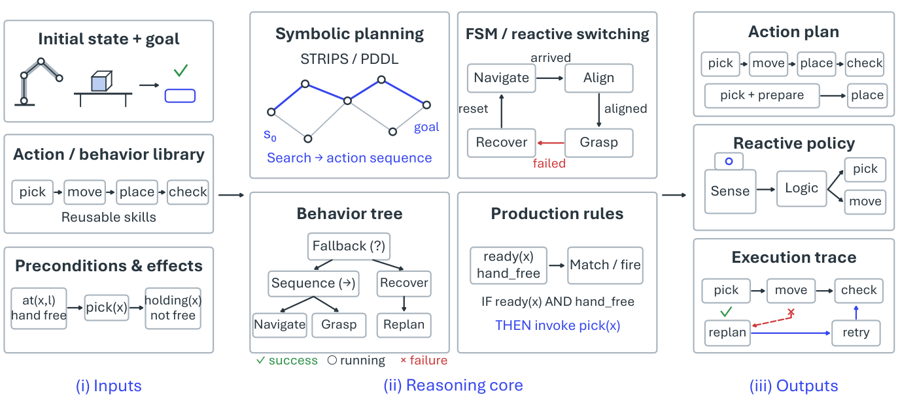
Task Definition
A symbolic planning problem is a tuple \(\Pi=\langle \mathcal{S},\mathcal{A},s_0,G\rangle\) with symbolic states \(\mathcal{S}\), an operator library \(\mathcal{A}\), an initial state \(s_0\), and a goal \(G\); each operator \(a\in\mathcal{A}\) carries a precondition and effects, \[\begin{equation} a=\big(\mathrm{pre}(a),\ \mathrm{eff}^{+}(a),\ \mathrm{eff}^{-}(a)\big),\qquad s'=\big(s\setminus\mathrm{eff}^{-}(a)\big)\cup\mathrm{eff}^{+}(a), \end{equation}\] and is applicable in \(s\) iff \(\mathrm{pre}(a)\subseteq s\). The planning output is a sequence \(\pi=\langle a_1,\dots,a_k\rangle\) whose successive application to \(s_0\) reaches a state satisfying \(G\); the reactive variant instead returns a policy \(\mu\) that maps the current observation and symbolic state to a behavior. Depending on the formalism, the inputs also carry resources, temporal constraints, and exogenous events.
Methodology
The formalisms split by whether they plan (search for a correct sequence before acting) or react (choose a behavior continually at run time); deployed systems usually do both, with a planner proposing the sequence and an execution structure (FSM, behavior tree, rule engine) monitoring conditions and triggering recovery.
Classical Symbolic Planning (STRIPS/PDDL and Heuristic Search).
STRIPS fixed the representation: planning as search over symbolic states with action schemas, so that a plan can be checked against the model and the continuous motion layer sits behind a clean abstraction boundary. PDDL standardized domain and problem specification so that planners could be compared across navigation, logistics, and assembly, with extensions (ADL, numeric fluents, temporal constructs) that capture robotic requirements without abandoning explicit semantics. Graphplan builds a planning graph whose mutual-exclusion constraints prune incompatible action combinations early, and FF made forward search fast with relaxed-plan heuristics that ignore delete effects, which capture ordering constraints such as unstacking before stacking in object-rich domains. Task-and-motion planning (§2.1.4) extends these planners with geometric feasibility checks ; the common pattern is to keep the symbolic reasoning explicit, delegate feasibility to motion and IK solvers, and wrap the plan in an execution structure with monitors and recovery.
Finite-State Machines and Reactive Mode Switching.
An FSM switches among a few well-defined behaviors (navigate, align, grasp) with explicit transition guards, which makes it transparent and fast but prone to state explosion as contingencies multiply. Statecharts add hierarchy and concurrency, so that complex controllers are nested reusable submachines with precise semantics; Brooks’ subsumption architecture layers behaviors so that higher ones override lower ones, a blueprint for composing navigation and avoidance without global planning, systematized as behavior-based robotics ; teleo-reactive programs evaluate conditions continuously and fire the highest-priority satisfied rule; and ROS tooling such as FlexBE provides hierarchical, event-driven state machines at deployment scale.
Behavior Trees.
A behavior tree re-evaluates its conditions on every tick and chooses among structured alternatives (sequence, fallback, parallel), so that long-horizon execution survives disturbances without committing to one fixed sequence; subtrees encapsulate reusable routines, guards and fallbacks trigger immediate recovery, and the composition semantics fit perception and motion skills. BTs originated in game AI ; Marzinotto et al. formalized their semantics and their relation to other switching structures, and Colledanchise and Ögren showed which compositions preserve safety and robustness and consolidated the design principles. Compiling or wrapping a symbolic plan into a BT keeps the nominal task structure while exposing runtime guards and recovery branches ; ARIAC systems pair PDDL planning with BT execution monitors to handle failures, occlusions, and defective parts ; and event-driven BTs react to non-periodic stimuli rather than waiting for the next tick.
Logic-based Execution and Production Rule Systems.
A production system keeps a working memory of facts and fires forward-chaining rules when their conditions hold, which suits event-condition-action policies, mode switching, and safety enforcement (no-go zones, mutual exclusions, priorities) and depends on fast incremental matching. OPS5 set the model; the Rete algorithm caches partial matches so that large rule sets update in milliseconds as facts change; CLIPS made the toolchain portable; and Soar integrated large rule bases with planning and execution in one architecture. In robotics, KnowRob and CRAM join symbolic knowledge to rule-driven execution for reasoning about actions, effects, and everyday manipulation, and LTLMoP compiles temporal-logic specifications into correct-by-construction reactive controllers whose safety and sequencing constraints are explicit at the program level.
Benchmarks
The International Planning Competition supplies the canonical PDDL
domains and problems across classical, temporal and numeric,
probabilistic, and HTN tracks, compared by plan quality, makespan, and
runtime ,
with
planning.domains
mirroring and extending the sets for reproducible evaluation.
Long-horizon embodied suites test execution under partial observability
and variation: BEHAVIOR-100 and BEHAVIOR-1K on
OmniGibson
specify household activities at the predicate level,
ALFRED
and
TEACh
score instruction-conditioned action sequences, and
RoboTHOR
and the Habitat
challenge
pair high-level decision logic with navigation policies under SPL.
ARIAC
injects faulty parts, occlusions, and failures into kitting and
assembly, and
FurnitureBench
and
RoboCup@Home
stress recovery and explainability on real tasks; qualitative solvers
over
RCC-8
and Allen
relations
are tested on consistency problems, and composite pipelines reuse the
TAMP and OMPL harnesses of §2.1.4.
Challenges and Trends
The results on these benchmarks divide along the closed-world boundary. On IPC-style domains with fully specified preconditions and effects, classical planners remain strong; on long-horizon embodied tasks the limit is perception noise and grounding ambiguity rather than search, and a logically applicable action may be geometrically unrealizable because of a collision, an IK failure, or a missing grasp. Hand-authored operators, rules, and recovery logic also grow combinatorially with object count and contingency. Integrated task-and-motion planning (§2.1.4) answers the coupling problem by interleaving symbolic search with feasibility checks or compiling symbolic commitments into optimization back-ends , and hierarchical abstraction and compositional skill models contain the search while keeping it auditable .
Robustness to noise and nonstationarity is why the industrial and instruction-conditioned benchmarks reward compositions rather than single formalisms: a behavior tree around a symbolic plan makes disturbances and recoveries explicit through runtime guards, fallbacks, and safety-preserving composition , and Rete-style engines supply fast event-condition-action policies over streaming facts, the pattern ARIAC entries converge on .
Learned perception and language models increasingly propose the high-level procedure or heuristic while the symbolic structure stays as the safety shell that enforces preconditions, effects, and constraints: SayCan grounds language in robot skills by value-based scoring, and plan-to-BT compilation exposes parallelism, guards, and recovery at run time. Domain modeling, heuristic guidance, and recovery synthesis are being automated piece by piece while the programmatic structure is retained for auditing, debugging, and verification.
Causal Reasoning
Causal reasoning moves from describing what happened to explaining why it happened and predicting what would have happened under a different action. For a robot the relevant outcomes are chains of spatial events (a collision, a delay, a deadlock, an unstable grasp, a near-miss in shared space), and making the causal assumptions explicit, rather than leaving them implicit in “actions cause state changes”, is what lets the system attribute a failure to its causes rather than its symptoms, evaluate counterfactual alternatives such as a different approach direction or timing, and, with several agents, separate primary causes from downstream effects when choosing an intervention. Figure 2.6 gives the abstract formulation.
![Abstract task formulation of causal reasoning for spatial
intelligence: (i) event streams, candidate variables, prior knowledge,
and interventional data feed (ii) methods that discover and verify
causal structure, yielding (iii) causal models, explanations,
counterfactual answers, and intervention or prevention strategies. The
method families serve different roles rather than forming a serial
pipeline. Verification returns a satisfying witness or an
unsatisfiability proof/core where supported; counterfactual scenes keep
the objects fixed while changing the blue agent’s action.](book-assets/figures/part3/section7/716_causal.png)
Task Definition
The inputs are spatiotemporal event streams (agent actions, object
states, contact and visibility relations, environment variables) mapped
to causal variables by measurement functions (in_contact,
blocked, priority_violated), optional prior
knowledge from physics or commonsense, and, when available,
interventional data in which a controllable variable was set
deliberately. A structural causal model over these variables, \[\begin{equation}
\mathcal{M} = \langle \mathcal{G}, \{f_i\}, P(U) \rangle, \qquad X_i
:= f_i(\mathrm{Pa}(X_i), U_i),
\end{equation}\] consists of a directed acyclic graph \(\mathcal{G}\), a mechanism \(f_i\) that generates each variable from its
parents \(\mathrm{Pa}(X_i)\) and
exogenous noise \(U_i\), and a noise
distribution \(P(U)\) .
The outputs are the model itself when it must be learned, the
explanation of an observed outcome (which variables caused it), the
answer to an interventional query \(P(Y \mid
do(X=x))\) or a counterfactual one (\(Y_{x}\) for a unit whose actual trace was
observed), and an intervention or prevention strategy that changes
controllable causes to reach a desired spatial outcome.
Methodology
The methods differ in where the causal structure comes from (assumed, learned from data, or written as domain knowledge) and in what they are asked (intervention effects, counterfactuals, responsibility, verification); in spatial domains they also differ in how they use locality, temporal precedence, and network connectivity as inductive bias.
Structural Causal Models and Counterfactuals.
An SCM makes mechanisms explicit (“clearance determines collision risk”, “traffic density sets delay”) and separates intervention from observation: the \(do(\cdot)\) operator replaces a structural equation instead of conditioning on a value, which is what is needed when, say, congestion and delay are both driven by time of day. Spatial pipelines typically start from a graph fixed by temporal precedence and locality priors (edges among nearby regions, interacting agents, adjacent cells), estimate the mechanisms from data, and validate them against implied conditional independences and refutation tests . Counterfactuals follow the abduction-action-prediction recipe: infer the exogenous noise consistent with the observed trace, apply the hypothetical intervention, predict the outcome . DoWhy and DoWhy-GCM implement identification, estimation, and refutation for this workflow on real spatiotemporal data.
Causal Discovery: Constraint- and Score-Based.
When the graph is unknown but observational data are plentiful, constraint-based methods read structure off conditional independences: the PC algorithm builds the skeleton by independence tests and orients what it can, returning a Markov equivalence class, and FCI handles latent confounding and selection bias by returning a partial ancestral graph. Score-based methods instead search graph space under an objective such as BIC: GES greedily adds and then removes edges over equivalence classes, and its forward-backward structure often recovers mesoscale organization such as bottlenecks that drive downstream congestion. Spatial data strain both. Large conditioning sets are expensive and statistically weak, so practice restricts conditioning to a radius or \(k\)-hop neighborhood, forbids edges that violate adjacency or reachability priors , and uses order-independent variants (PC-stable ) whose high-dimensional consistency is understood ; ambiguous orientations are then resolved by targeted interventions. causal-learn and the TETRAD / Py-Tetrad implementations of FGES provide these pipelines at facility and city scale.
Independent-Noise Discovery (LiNGAM).
In linear-Gaussian settings many edge directions are unidentifiable from independences alone. LiNGAM assumes a linear structural model with independent non-Gaussian noise, under which the causal ordering is identifiable, and DirectLiNGAM estimates it by regression rather than ICA. Spatiotemporal signals need care because autocorrelation and smoothing push the noise toward Gaussian; temporal blocking, prewhitening, and locality constraints are the usual remedies, and the recovered ordering then scaffolds an SCM for intervention analysis.
Causal Action Languages and Plan-Space Causal Links.
Much causal structure in robotics is designed knowledge rather than
discovered: actions have direct and indirect effects, and the system
must reason about change under incomplete information. The action
language
C+
writes causal theories of action with inertia and nonmonotonic
semantics, compactly describing how fluents such as
occupied(c) or visible(a,o) evolve;
CCALC
compiles them to SAT or ASP so that prediction, diagnosis, and plan
synthesis use the same solvers; and multi-valued fluents and external
geometric predicates (collision checks, IK) are being integrated without
abandoning the formal
semantics .
In plan space, partial-order causal-link
planning
represents a plan as partially ordered actions plus links \(A \xrightarrow{p} B\) (action \(A\) establishes precondition \(p\) for \(B\)), which makes threats explicit and
repairable by promotion, demotion, or binding constraints;
UCPOP
extended the representation to ADL and conditional effects and
VHPOP
added heuristics and reachability analysis. In spatial domains a causal
link is often a physical dependency, “unblock door” enabling “move
cart”, which bridges symbolic causality and spatial feasibility.
Execution and Verification.
A causal plan must be realized in time and checked. Simple temporal networks enforce difference constraints between events with polynomial consistency and dispatchable forms , and STNUs with dynamic-controllability analysis handle contingent durations, so that ordering and clearance constraints stay satisfiable under bounded disturbance. The SAT/SMT machinery of §2.1.4 enters here as an explanation device: when a schedule is unsatisfiable, the unsat core is a minimal set of conflicting commitments, a concrete statement of which decisions caused the failure ; and for hybrid dynamics \(\delta\)-complete SMT (dReal) and dReach verify safety and synthesize interventions with numerically sound proofs or counterexamples.
Benchmarks
No single benchmark covers the causal pipeline, and the suites stress different links of it. CLEVRER pairs synthetic collision videos with descriptive, explanatory, predictive, and counterfactual questions, and CLEVRER-Humans adds human-annotated causal event graphs against which model attributions can be compared; the video suites of §2.1.2 (PHYRE , Physion and Physion++ ) score intervention selection and latent-property inference, and CRaFT , ContPhy , NExT-QA , AGQA , and SUTD-TrafficQA ask causal questions in natural language about real and traffic video. Embodied platforms with predicate-level state (BEHAVIOR-1K, ALFRED, iGibson 2.0 , ManiSkill2 , RLBench ; §2.1.5) test whether inferred dependencies improve intervention selection and recovery; the MAPF suites and Flatland (§2.1.3) test reasoning over space-time constraints in which one agent’s decision causes another’s delay; and ARCH-COMP with the dReal / dReach problem sets evaluate causal safety reasoning on hybrid dynamics by proof or counterexample and solve time. Discovery itself is evaluated on recovery of the Markov equivalence class under faithfulness, with scalability bounded by conditioning-set size.
Challenges and Trends
Identification is brittle. Latent confounding, selection bias, and temporal aggregation can make a query non-identifiable from logs, and estimates become unstable when locality and precedence assumptions fail ; constraint- and score-based discovery is expensive on dense telemetry with strong short-range dependence and sensitive to test strength, ordering, and regularization ; and LiNGAM’s non-Gaussianity is exactly what smoothed trajectories and aggregated traffic signals lack . The response is structure-aware discovery that constrains search by topology and locality and then resolves the remaining ambiguity by targeted robot interventions, connecting learning to actuation .
Causal reasoning is only as good as its variables, and in embodied settings contact, occlusion, blockage, and object state must be grounded from noisy perception. The errors of that mapping propagate into SCM estimates and counterfactual conclusions . Knowledge-enabled frameworks such as KnowRob and CRAM (§2.1.5) show the shape of the interface, perception populating an explicit, interpretable model whose parameters are then estimated statistically, and the trend is toward such perception-to-symbol interfaces that tolerate sensor noise .
Between a causal recommendation and a safe execution there is a verification-synthesis gap: the recommendation must become a temporally controllable schedule and a certified controller, and execution uncertainty invalidates a symbolic causal plan unless temporal networks and hybrid verification are integrated with it . SCM toolchains are therefore being embedded in decision stacks so that counterfactual policies compile into action-language or plan-space structures and then into dispatchable networks , with SAT/SMT certificates and unsat-core explanations supplying the accountability ; evaluation that scores explanation quality, interventional effectiveness, and certification cost on the same task is what the field still lacks.
Learning-based Spatial Reasoning
Learning-based spatial reasoning refers to the class of methods that acquire and perform spatial reasoning from data, rather than from the hand-authored geometric, mechanical, or symbolic models surveyed in §2.1. The six subsections that follow are ordered by the locus of the structural prior: it begins inside the learned representation (latent feature interaction, explicit programs, hard-coded symmetries, optimization layers in the forward pass), moves to the agent’s action-conditioned behavior (reinforcement learning with spatial inductive biases), and ends with joint decision-making across coordinated agents.
Implicit Neural Spatial Reasoning
We define implicit neural spatial reasoning as the family of neural approaches in which spatial relations are encoded in learned feature representations, attention patterns, latent object interactions, or architectural inductive biases, rather than specified through hand-written rules, symbolic programs, or fully explicit relational graphs. Implicit does not mean that these models never use boxes, masks, object proposals, or task-level labels; it means that the reasoning procedure itself is never given as a symbolic program, so the model must learn spatial dependencies from end-to-end or weakly structured supervision. Several families below (latent scene graphs, capsule networks) expose partly inspectable structure, yet remain implicit in that their relational structure is learned or emergent rather than supervised. Figure 2.7 shows the representative tasks.
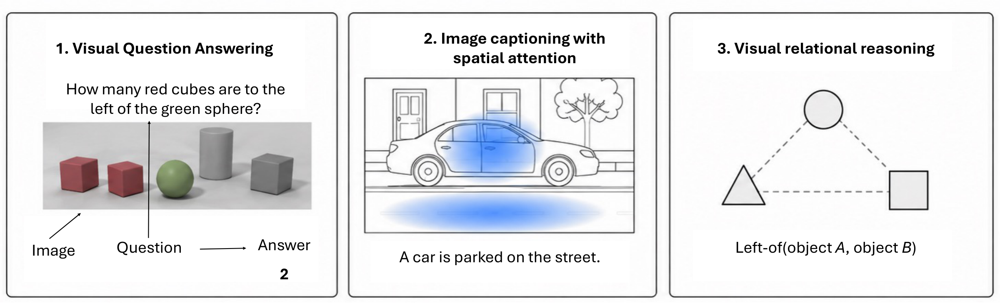
Task Definition
Given one or more images \(I\), optionally paired with a language query or task goal \(q\) (and possibly boxes, masks, or proposals as features), an implicit reasoner computes a latent spatial representation and a task output, \[\begin{equation} z=f_\theta(I,q),\qquad y=h_\psi(z), \end{equation}\] where \(z\) encodes the relations relevant to the task and \(y\) is an answer label, a caption, or a relation label. Supervision reaches the model only through \(y\); the relational structure inside \(z\) is never annotated, so it must emerge from end-to-end training. The methods below differ in the mechanism by which \(z\) is formed (Figure 2.8).

Methodology
Relational Aggregation over Latent Objects.
The most direct approach treats a set of feature vectors as latent “objects” and learns to aggregate their interactions. Relation Networks (RN) score every pair: given objects \(O=\{o_1,\dots,o_n\}\) (e.g. , feature vectors from spatial regions of a CNN map) and an optional query \(q\), \[\begin{equation} \text{RN}(O, q) = f_{\phi}\!\left(\sum_{i,j} g_{\theta}(o_i, o_j, q)\right), \end{equation}\] where \(g_{\theta}\) produces a query-conditioned relation embedding for each pair and \(f_{\phi}\) maps the sum to the task output. Considering all pairs forces the network to learn pairwise spatial and semantic relations, at \(O(n^2)\) cost in the number of objects. Graph neural networks and latent scene graphs generalize this from a complete graph to a learned, sparser topology, with proposals or feature regions as nodes and learned edges as spatial dependencies; iterative message passing for scene-graph generation alternates between refining node features and updating relation embeddings, learning the topology end-to-end. Such models are the clearest semi-explicit case in this subsection: the graph is inspectable and often trained with relation annotations (e.g. , from Visual Genome), yet the intermediate relational representation is learned rather than specified by a program, and its quality is bounded by the upstream proposal stage.
Spatial Attention and Multi-Scale Feature Fusion.
A second family controls where and how strongly the model attends across the spatial layout, and fuses evidence across scales, rather than scoring all pairs. CNN spatial attention weights locations in a feature grid, from the hard and soft attention of for captioning and grounded VQA to SCA-CNN’s joint spatial and channel attention ; vision transformers make relating image parts intrinsic through self-attention over patches , with locality-aware variants (Swin , PVT , Twins ) trading global receptive field for cost; and Feature Pyramid Networks add a top-down pathway so that a relation coupling a fine object with a coarse region (a car “on” a street) can be read from one map. These designs are representation backbones that preserve and aggregate spatial information for the reasoning built on top of them, not reasoning modules in themselves.
Conditional Feature Modulation.
A third family conditions one representation on another rather than aggregating or attending. In FiLM (Feature-wise Linear Modulation) , a conditioning vector (e.g. , an encoded query or global context) predicts affine parameters \((\gamma, \beta)\) that are applied feature-wise to a target map, so the same backbone can be steered per task. For a query like “What is to the left of the green cube?”, a FiLM layer can learn to amplify features to the left of regions identified as the green cube, making reasoning adaptive and context-dependent.
Geometry-Aware Inductive Biases.
A fourth family bakes geometric regularities into the architecture, trading data-driven flexibility for sample efficiency where the relevant geometry is known. Capsule Networks replace scalar activations with vector-valued capsules whose orientation encodes instantiation parameters (pose, deformation) and whose magnitude encodes presence; dynamic routing decides how lower-level capsules compose into higher-level ones by agreement in predicted pose, a stronger part-whole bias than translation-only convolution, though capsules have been hard to scale beyond small digit and shape datasets. Equivariant and steerable convolutions , which commute with a chosen transformation group, are the subject of §2.2.3; both share the cost that the symmetry must be chosen in advance.
Benchmarks
CLEVR is the canonical benchmark, pairing rendered scenes with multi-step relational questions whose ground-truth program structure is known; Sort-of-CLEVR isolates a controlled relational vocabulary. The decisive stress tests are the systematic-generalization splits: CLEVR-CoGenT holds out attribute-composition combinations, and GQA scales compositional questions to real images. Open-domain VQA v2 and Visual7W probe whether implicit reasoning transfers beyond synthetic templates to natural images and free-form language. On CLEVR, RN reaches 95.5% and FiLM 97.7%; Table 2.1 in §2.2.2 places these against the program-structured reasoners, which close the remaining gap only on in-distribution questions.
Challenges and Trends
Interpretability is intrinsic: because relations live in distributed activations rather than named symbols, it is hard to audit which relations a model actually exploits, and attention-map visualizations are only an indirect proxy. Compositional generalization is the most striking failure: even at 97–98% CLEVR accuracy, the same models drop sharply on CLEVR-CoGenT and GQA , revealing dataset-specific shortcuts rather than transferable spatial concepts; the related shortcut-learning concern in open-domain VQA, where language priors and object co-occurrence dominate the signal, is the imbalance VQA v2’s balanced design targets . Scalability divides the families: RN-style pairwise modeling is \(O(n^2)\) in the number of objects, attention backbones trade receptive field against compute , and GNNs inherit the brittleness of the proposal stage . The more fundamental limit is the 2D-to-3D gap: these methods reason over 2D feature grids and image-plane relations, whereas much spatial reasoning depends on depth ordering, occlusion, viewpoint, and metric layout, and strong 2D backbones and vision–language models degrade sharply once relations hinge on 3D geometry .
Two responses run through the rest of this section. The explicit-structured methods of §2.2.2 reintroduce programs and graphs over learned features, recovering inspectability while keeping the representational power of deep networks; the geometry-aware methods of §2.2.3 answer the 2D-to-3D gap directly by building the symmetry group into the architecture, where it is known. Whether web-scale pretraining alone closes the systematic-generalization gap, or explicit structure remains necessary, is the open question that §2.3 takes up.
Explicit Structured Neural Reasoning
Explicit structured neural reasoning decomposes a spatial problem into an inspectable intermediate structure, a program, a scene graph, a sequence of reasoning states, or executable code that calls vision tools, and obtains the answer by executing or traversing that structure over visual representations. Unlike the rule-based reasoning of §2.1, the structure is learned or inferred from data rather than written by hand; unlike the implicit reasoners of §2.2.1, it exposes spatial predicates directly, so that an inspectable edge or a named operation can represent containment, adjacency, support, or relative position, making them auditable and composable instead of entangled in a feature space. Figure 2.9 previews the representative tasks.
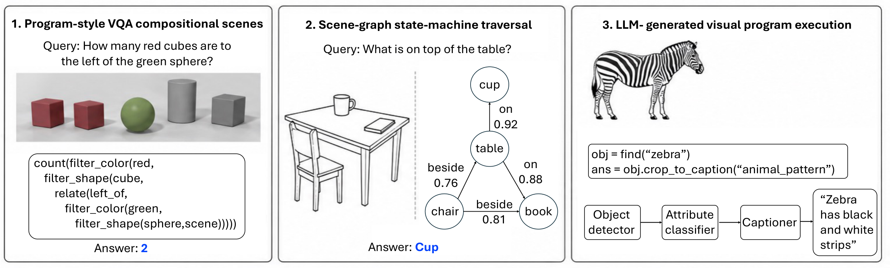
Task Definition
Given a visual observation \(\mathbf{I}\) (a single image or a set of views) and a query or goal \(q\), the system constructs an intermediate structure and executes it, \[\begin{equation} \mathcal{S}=\mathrm{Parse}_\phi(\mathbf{I},q),\qquad y=\mathcal{E}(\mathcal{S};\mathbf{I}), \end{equation}\] where \(\mathcal{S}\) may be a program layout \(P=(m_1,\dots,m_k)\), a recurrent sequence of reasoning states, a scene graph \(G=(V,E)\) with a finite-state traversal over its nodes, or a code trace that calls external tools, and the executor \(\mathcal{E}\) realizes \(\mathcal{S}\) through neural modules, symbolic operators, graph transitions, or tool calls. The output \(y\) may be an answer, a localized region, a predicted relation, or an action. The defining property is therefore not a specific program syntax but the presence of an inspectable \(\mathcal{S}\) that mediates between perception and prediction, which is what makes the reasoning path explicit and controllable.
Methodology
The four families in Figure 2.10 differ in how much structure they expose, enough to make reasoning inspectable and compositional, but not so rigid that a perception error, a parser error, or a missing primitive causes deterministic failure. Each exposes a different facet of space: recurrent architectures a temporal trace of attentional focus, scene-graph methods object-centric relations, program-based methods named operations such as filtering, relating, counting, and comparing, and LLM-generated programs tool-call traces that combine detection, segmentation, localization, and external knowledge.
Structured Recurrent Reasoning Architectures.
This family imposes a step-wise reasoning structure in the architecture itself, so the model is fully differentiable and trained end-to-end from input–output pairs while still exposing a step-by-step trace. The Memory, Attention, and Composition (MAC) network chains \(p\) recurrent cells, each of which attends to the question to choose the operation for the current step (control unit), extracts the relevant visual information by spatial attention guided by that control signal (read unit), and integrates it into a reasoning state passed to the next cell (write unit); the attention maps of successive read units provide a transparent trace of where the model is looking, without a rigid symbolic program. MAC is thus a boundary case: explicit at the level of reasoning dynamics, implicit at the level of spatial representation, since the operations run over dense feature maps rather than named objects or relations. Because the spatial logic stays in the learned weights, it is prone to statistical shortcuts (if “red spheres” co-occur with “cubes” in training, the model may learn that correlation rather than “left of”), and soft attention maps are often diffuse, so “to the left” bleeds into irrelevant regions in cluttered scenes.
![Four method families for explicit structured neural
reasoning, ordered by the intermediate structure \(\mathcal{S}\) each exposes: (A) the MAC
recurrent reasoning
cell (Hudson & Manning, 2018) ;
(B) the Neural State
Machine (Hudson & Manning, 2019) ;
(C) program-based reasoning, a parse-to-execute pipeline whose executor
ranges from neural modules
(NMN (Andreas et al., 2016) ,
IEP (Johnson et al., 2017) )
through the symbolic executor of
NS-VQA (Yi et al., 2018) to the quasi-symbolic executor of
NS-CL (Mao et al., 2019) ;
and (D) LLM-as-program-generator pipelines that call vision tools (e.g.
, ViperGPT (s et al., 2023) ,
VisProg (Gupta & Kembhavi, 2023) ,
Code-as-Policies (Liang et al., 2023) ).](book-assets/figures/part3/section7/explicit_structured_neural_reasoning_method.png)
Structured Scene Representations.
A related line strengthens the structural prior on the reasoning substrate. Where MAC reasons over a soft grid of features, the Neural State Machine (NSM) reasons over a discrete semantic scene graph and simulates a finite automaton over it: a concept-detection module (Mask R-CNN) identifies entities, each node \(v_i\) is initialized with semantic properties over a learned concept vocabulary, each edge \(e_{ij}\) carries a distribution over spatial and semantic relation types (left of, behind, on top of, holding), and the query is answered by sequentially traversing nodes along valid transitions. More broadly, scene graphs act as a generic structured substrate: a downstream reasoner can traverse the graph as a hard environment (the NSM stance), attend over it as a soft relational prior, or search it for graph-based question answering, in each case obtaining an inspectable cut-point between perception and reasoning. The price is that reasoning quality becomes tightly coupled to object detection, attribute grounding, and relation prediction, a dependency we return to in the challenges.
Modular and Program-Based Reasoning.
A third family translates the query itself into an executable
program, and its members differ mainly in the nature of the
executor. The Neural Module Network
(NMN)
is the canonical neural-executor instance: an external semantic
parser converts a question such as “What color is the llama?” into a
layout, e.g. , classify[color](attend[llama]), whose slots
are instantiated by distinct learnable modules (attention, re-attention,
classification, combination, measurement) trained jointly to maximize
the likelihood of the gold answer. Because NMN relies on an
off-the-shelf parser,
IEP
replaces it with a sequence-to-sequence program generator that emits the
program as a sequence of functions, trained jointly with the execution
modules via
REINFORCE
or by maximizing answer likelihood over a distribution of programs.
Moving further toward symbols, Neuro-Symbolic VQA
(NS-VQA)
adopts a symbolic executor: a scene parser turns the image into
a symbolic table, after which the program reduces to deterministic
functional operators, yielding fully interpretable execution at the cost
of a near-perfect-perception assumption. The Neuro-Symbolic Concept
Learner
(NS-CL)
occupies the middle ground with a quasi-symbolic executor: a
neural perception module produces object-centric representations and a
semantic parser emits symbolic programs, but the executor relaxes
discrete operations such as filtering and relating into differentiable
ones, so the whole system trains end-to-end from answers alone.
LLM-Generated Visual Programs.
The most active recent extension lets a large language model emit the program directly, replacing the seq2seq parser of IEP or the hand-crafted parser of NMN with a tool-based executor. ViperGPT and VisProg pair a frozen LLM with a Python-style API of vision tools (detectors, captioners, attribute classifiers) that the generated code invokes, making the approach compositional and zero-shot without per-task training. Code-as-Policies pushes the same program-synthesis paradigm into embodied control, treating the LLM-emitted program as a closed-loop policy over perception and actuation primitives; it is included here as an embodied extension of the paradigm rather than as a VQA method. The interpretability gain is real, since the emitted code is human-readable, but these systems re-inherit the brittleness of the underlying LLM (hallucinated API calls, ungrounded tool routing) as a failure mode the earlier hand-coded DSLs were designed to avoid.
Unifying View: Parser, Representation, Executor, and Supervision.
The four families are points in a shared design space with four axes. The parser that maps a query to structure may be hand-built (NMN), learned end-to-end (IEP, NS-CL), or a frozen LLM (ViperGPT, VisProg); the representation over which reasoning runs may be a dense feature map (MAC), an object-centric scene graph (NSM, and the scene-graph-generation literature supervised at scale by Visual Genome ), or a symbolic scene table (NS-VQA); the executor may be neural, symbolic, quasi-symbolic, or a code interpreter; and the supervision may be answer-only, program-supervised, or, in tool-based systems, augmented with execution traces and tool feedback. The inspectable structure between perception and answer is the common thread: it provides a natural cut-point at which symbolic and learned components can be swapped without retraining the rest of the stack, and the same four axes reappear in the foundation-model reasoners of §2.3.
Beyond VQA: 3D, Temporal, and Embodied Extensions.
The same design pattern extends beyond static images: referring-expression grounding has been lifted from 2D images to 3D scenes , where object-centric and spatial-relation graphs supply the substrate for reasoning about support, containment, proximity, and navigability, and in video and embodied settings the intermediate structure becomes a temporal scene graph or a task plan that links perception to action (§2.3, Part IV). These extensions also expose the central limitation of current explicit methods: most available program primitives and graph predicates are still designed for static 2D relations, whereas viewpoint change, object permanence, physical interaction, and multi-step navigation need 3D, temporal, and causal operators.
Benchmarks and Performance
The CLEVR family of §2.2.1 is the canonical testbed here as well, with the added property that each question is generated alongside a ground-truth functional program, which gives both program-supervised and answer-only training signals; MAC, IEP, NS-CL, and NS-VQA all converge to the high-90s on it, making it attractive but saturated. GQA is the dominant open-domain benchmark: it pairs natural-image scenes with compositional questions whose ground-truth scene graphs (from Visual Genome ) make scene-graph-based reasoners directly applicable, and its out-of-distribution splits expose the systematic-generalization gap hidden by saturated CLEVR scores. VQA v2 remains the reference point for visual-program systems such as ViperGPT and VisProg, which are evaluated zero-shot on GQA and VQA v2. Referring-expression grounding benchmarks (RefCOCO and RefCOCO+ , RefCOCOg , and the earlier ReferItGame ) are equally relevant, since they test whether a system can bind spatial language (“the object left of / behind / next to …”) to a localized region even when the output is a box or mask rather than an answer. Embodied program-as-policy systems such as Code-as-Policies are evaluated by task success in robotic or simulated manipulation environments and should not be compared against VQA accuracy. Table 2.1 collects the headline numbers.
| Method | Structure exposed | Supervision | CLEVR | GQA |
|---|---|---|---|---|
| RN | none (pairwise latent) | answers | 95.5 | – |
| FiLM | none (feature modulation) | answers | 97.7 | – |
| MAC | recurrent control / read / write | answers | 98.9 | 54.1 |
| IEP | generated program, neural executor | programs (700k) \(+\) answers | 96.9 | – |
| NS-CL | program, quasi-symbolic executor | answers (curriculum) | 98.9 | – |
| NS-VQA | program, symbolic executor | scene tables \(+\) 270 programs | 99.8 | – |
| NSM | probabilistic scene graph, automaton | answers | – | 63.2 |
| ViperGPT | LLM-generated code, tool executor | none (zero-shot) | – | 48.1 |
| VisProg | LLM-generated code, tool executor | none (zero-shot) | – | 50.5 |
Challenges and Trends
Exposing programs, graphs, state transitions, or tool calls buys
interpretability but creates new failure modes, and the numbers above
locate them. The first bottleneck is parsing: if a
question is mapped to the wrong program or traversal path, even a
correct executor produces the wrong answer. The second is symbol
grounding and underspecification: spatial predicates such as
Left, Behind, Near, or
Between depend on viewpoint, scale, object extent, and task
context, so many spatial queries do not determine a unique program, a
single deterministic DSL operator is often too rigid, and new predicates
demand manual re-engineering of the executor. The third is error
propagation: mistakes by the detector, scene parser, relation
classifier, or program generator are inherited by the executor and can
cause deterministic failure, which is why NSM reaches 63% on GQA while
the same family saturates CLEVR; on natural images the bottleneck has
moved from reasoning execution to perception, scene-graph construction,
language grounding, and long-tail relation coverage. A fourth, more
structural tension is the differentiability–interpretability
trade-off: the more symbolic the executor, the more auditable
but the harder to train end-to-end; the more differentiable, the more
robust but the less transparent. Because the value of explicit structure
lies in the intermediate trace, evaluation should move
beyond final-answer accuracy to whether the parsed program is faithful
to the query, whether graph edges correspond to real relations, whether
tool calls are necessary and grounded, and whether the execution trace
actually supports the answer.
Most explicit systems also reason over static 2D layouts or object graphs rather than 3D geometry, temporal dynamics, or physical causality: they can answer whether \(A\) is left of \(B\), but rarely simulate how a scene changes under motion, contact, containment, support, or occlusion, which is exactly the mental-simulation capacity human-level spatial reasoning requires. LLM-generated programs widen the scope by replacing fixed parsers with flexible code generation, trading a small accuracy gap on saturated benchmarks for zero-shot generality across VQA, grounding, and knowledge-grounded VQA, but they add hallucinated tool calls, invalid APIs, ungrounded intermediate variables, and the absence of a verifiable execution loop. The emerging direction is therefore not a return to purely symbolic reasoning but verifiable hybrid systems, in which learned perception produces object-centric representations, structured programs or graphs provide an inspectable scaffold, and neural or tool-based executors absorb the variability of real visual inputs, the direction of §2.3 and §2.4.
Geometry-aware Neural Spatial Reasoning
Where the implicit and explicit methods above learn spatial relationships from data, geometry-aware approaches build the relevant symmetries into the network itself: an object rotated, translated, or re-indexed keeps its identity, and the architecture is constructed so that this holds by design rather than being learned from many transformed examples. The gain is sample efficiency and robustness under the chosen transformations; the cost is that the symmetry group has to be chosen in advance. Figure 2.11 pairs three symmetry-driven task settings with the method families that supply the matching inductive bias.
![Symmetry-driven tasks (top) and geometric neural mechanisms
(bottom). Top: (i) rotation-invariant classification, (ii)
SE(3)-equivariant grasping, shown with a planar rotation, and (iii) a
molecular scalar invariant to rigid motion and atom reindexing. Bottom:
(a)
STN (Jaderberg et al., 2015) ,
(b)
G-CNN (Cohen & Welling, 2016) ,
(c) steerable
CNN (Cohen & Welling, 2017) ,
(d)
PointNet (Qi et al., 2017) ,
and (e) TFN /
SE(3)-Transformer (Thomas et al., 2018; Fuchs et al., 2020) .
Blue marks transformations, geometric features, and preserved outputs;
all examples are schematic.](book-assets/figures/part3/section7/geometry-aware_neural_spatial_reasoning.png)
Task Definition
The input \(x\) lives in a space with a known geometric structure (a 2D image, a 3D point cloud, a molecular graph), optionally with a query \(q\), and the network \(M_{\theta,G}\) is designed to respect a chosen group \(G\) of transformations: translations for standard CNNs, rotations SO(3), rigid motions SE(3), or permutations of set elements. Its output \(\mathbf{z}\) is either invariant or equivariant to the action of \(G\).
Invariance vs. equivariance. An invariant representation stays fixed under the group action, \(M_{\theta,G}(g\cdot x)=M_{\theta,G}(x)\), and deliberately discards pose; an equivariant representation co-transforms with the input, \(M_{\theta,G}(g\cdot x)=\rho(g)\cdot M_{\theta,G}(x)\), where \(\rho(g)\) is the representation of the group action on the feature space, and thereby preserves it. In either case geometric consistency is a native constraint that the architecture guarantees by construction.
Methodology
Invariance is the right target when the output should not depend on orientation or position (classification), equivariance when pose and relative arrangement are the point (manipulation, keypoints, instance segmentation, molecular modeling); the layers below realize each.
Invariance by Pooling and Augmentation.
The baseline strategies work without changing the architecture. Augmenting the training set with rotated, flipped, or scaled copies pushes a standard CNN toward assigning the same label to all variants, but buys only an approximate invariance and requires examples of every transformation to be tolerated; global average pooling at the end of a feature extractor discards the “where” of each feature and keeps only its presence, which is the main reason classification CNNs are robust to translation. Neither guarantees invariance to anything beyond translation.
Active Alignment with Spatial Transformer Networks.
Rather than ignoring transformations, a Spatial Transformer Network (STN) learns to undo them: a small localization network regresses the parameters of an affine transformation that it predicts will bring the object into a canonical pose, a grid generator turns these parameters into a sampling grid, and a differentiable sampler produces the rectified feature map, so the localization network is trained by backpropagation from the task loss alone. The module can be inserted at any point in a network and acts as learned attentional alignment, normalizing a region of interest for the layers downstream; the invariance it provides is learned, not guaranteed.
Permutation Invariance over Point Sets.
A separate symmetry arises when the input is an unordered set rather than a grid: the model must be invariant to the ordering of its elements. DeepSets shows that any permutation-invariant function over a set can be written as \(f(X)=\phi\!\left(\sum_{x\in X}\psi(x)\right)\) for suitable \(\phi\) and \(\psi\), encode each element independently, sum, then decode, which turns set-level invariance from an ad-hoc choice into a constructive recipe and makes explicit which aggregators preserve invariance and which silently break it; the same framework yields permutation-equivariant layers for per-element outputs (per-point labels, per-atom properties). PointNet is the canonical instance on raw point clouds, a shared multilayer perceptron per point followed by symmetric max pooling, and PointNet++ adds locality by repeatedly grouping points within a metric ball and applying the same shared-MLP-plus-pool pattern at multiple scales. Permutation invariance comes for free in this family; rigid-motion invariance does not, which is the gap the equivariant methods below address.
From Translation to Group Equivariance.
A standard convolution is translation-equivariant (shifting the image shifts the feature map) but not rotation-equivariant: rotating the input changes the feature map unpredictably. Group equivariant convolutions (G-CNNs) generalize the operation to a larger discrete group such as the four planar rotations: a single filter is rotated into a set of transformed copies, all are correlated with the input, and the feature map gains an orientation dimension, so a feature that reads “edge at \(45^\circ\)” becomes “edge at \(135^\circ\)” at the corresponding location when the input rotates by \(90^\circ\). Equivariance is therefore not learned but imposed, layer by layer.
Steerable Filters and Equivariance in Every Layer.
Steerable CNNs replace the group-indexed filter copies by filters expressed in a steerable basis, so that the response at a transformed orientation follows by linear combination of basis responses rather than by explicit rotation; the general E(2) framework extends this to continuous rotations and reflections with circular-harmonic bases under one configurable interface, and library efforts such as e3nn do the same for E(3) / SE(3). Full equivariance also requires that pooling, nonlinearities, and normalization respect the group: a standard ReLU applied to the components of a geometric vector breaks it (activations are therefore applied to invariant quantities such as the vector norm), and channel-wise batch normalization breaks the coupling between channels, which motivates equivariant normalization . The guarantee is only as strong as its weakest layer; one non-equivariant operation anywhere in the stack silently undoes the symmetry the rest preserve.
Equivariant Attention and Continuous SE(3) Symmetries.
A more recent line lifts the treatment from convolutions to attention, with queries, keys, and values that transform predictably under a chosen Lie group. The SE(3)-Transformer is the canonical instance, building each attention layer from tensor-field representations so that rotating the input scene rotates the whole stack of outputs consistently; Tensor Field Networks use the same machinery without an attention head and have been especially influential in molecular modeling, where SE(3) equivariance is a problem constraint rather than an optional bias. Both parameterize the kernel as a combination of spherical-harmonic basis functions, which is computationally heavy, so a parallel line pursues lighter equivariance: E(\(n\))-equivariant graph networks (EGNN) achieve E(\(n\))-equivariant message passing from relative distances and coordinate updates alone, and Vector Neurons lift scalar point-cloud features to 3D vectors, obtaining SO(3) equivariance as a drop-in primitive, each trading representational richness for scalability. With the libraries above, trying equivariance on a new task now costs about as much engineering as a convolutional baseline; the choice of group still has to be made by the designer.
Benchmarks
Benchmarks in this area are constructed to expose behavior under symmetry transformations. MNIST-rot is the standard 2D testbed, separating methods that learn rotation robustness through augmentation from those that build it in; ModelNet40 evaluates point-cloud classification under three protocols, aligned training and test (z/z), training with azimuthal rotations and testing under arbitrary SO(3) rotations (z/SO(3)), and arbitrary rotations in both (SO(3)/SO(3)), which is where augmentation, STN-style alignment, and PointNet’s permutation-invariant pooling are separated from genuine rotation handling; ScanObjectNN adds real scan noise and occlusion. For equivariance as a hard constraint, QM9 (small-molecule property prediction) and interatomic-potential tasks are the reference, where the SE(3)-equivariant models NequIP and MACE set the current points for data efficiency and accuracy. Table 2.2 reports the two ladders on which the method families can be compared directly.
| Method | MNIST-rot err. | z/z | z/SO(3) | SO(3)/SO(3) |
|---|---|---|---|---|
| Plain CNN (Z2CNN) | 5.03 | – | – | – |
| P4CNN (G-CNN) | 2.28 | – | – | – |
| E(2)-steerable CNN | 0.68 | – | – | – |
| PointNet | – | 85.9 | 19.6 | 74.7 |
| PointNet++ | – | 91.8 | 28.4 | 85.0 |
| VN-PointNet | – | 77.5 | 77.5 | 77.2 |
| VN-DGCNN | – | 89.5 | 89.5 | 90.2 |
Challenges and Trends
The most fundamental difficulty is choosing the symmetry group: invariance to a group that is too large (SO(3) when only SO(2) is task-relevant) destroys discriminative information, invariance to one too small leaves the model brittle to the symmetries the task actually exhibits, and the trade-off has no purely data-driven solution . Cost scales with the group: classical equivariant architectures index filters by group elements, so parameters and memory grow with the size of the chosen group, limiting how freely reflections, multi-scale rotations, or higher-order tensor representations can be included . The assumption of exact symmetry is also brittle: point clouds with self-occlusion, partial-view RGB, and noisy LiDAR scans do not realize an SO(3)-orbit, so an architecture that is mathematically equivariant can still fail when the input violates the assumed structure. Table 2.2 shows where the two targets diverge: on 2D classification both hand-coded invariance and learned equivariance saturate, so data efficiency rather than accuracy becomes the discriminating axis, while on ModelNet40 the invariance-only PointNet family collapses under unseen rotations and the equivariant family holds its accuracy, because the task requires geometric information to be preserved, not discarded. Finally, hard equivariance sits uneasily with the attention-based representations that dominate the rest of the stack (§2.2.1, §2.2.2, vision–language pretraining): self-attention is permutation-equivariant but not rotation-equivariant, and bolting an equivariant layer onto an attention pipeline often degrades the inductive bias that motivated the choice.
Equivariant attention is the main compromise on offer, and frame averaging moves in the opposite direction, turning any off-the-shelf backbone into an invariant or equivariant one by symmetrizing its outputs over a small input-dependent set of group frames, which decouples the choice of symmetry from the choice of architecture and sidesteps the parameter cost of group-indexed filters. These threads are pulling geometry-aware reasoning back toward the rest of the chapter: vision–language and vision–language–action models attach equivariant heads where 3D pose and geometric consistency matter, as in grasp policies and pose-conditioned generation, and primitives first devised for object classification are finding second lives in world models, embodied control, and 3D generation.
Differentiable Optimization Layers for Spatial Reasoning
Where the three preceding subsections put structure into the learned representation, differentiable optimization layers put it into the computation: selected feed-forward operations are replaced by the solution of a constrained optimization problem, so that hard logical, geometric, or physical constraints are enforced inside the forward pass while the whole system stays end-to-end differentiable . In spatial reasoning this is how a network enforces distances, collision avoidance, or alignment, or solves a sub-problem such as pose estimation, within a learnable pipeline. Figure 2.12 previews the representative tasks (top row) and the method families (bottom row).
![Differentiable optimization layers for spatial reasoning.
Top, tasks: (1) QP relaxation of binary assignment for
Sudoku (Amos & Kolter, 2017; Wang et al., 2019) ,
(2) differentiable convex
MPC (Amos et al., 2018; Agrawal et al., 2019) ,
and (3) bundle adjustment as differentiable nonlinear least squares for
end-to-end
SLAM (Teed & Deng, 2021) .
Bottom, methods: (1)
OptNet (Amos & Kolter, 2017) ,
(2) CVXPY
Layers (Agrawal et al., 2019; Diamond & Boyd, 2016) ,
(3) Deep Declarative Networks and differentiable geometry
solvers (Gould et al., 2021; Campbell et al., 2020) ,
and (4) SATNet-style differentiable SAT
layers (Wang et al., 2019; Shindo et al., 2024) .](book-assets/figures/part3/section7/differentiable_optimization_layers_for_spatial_reasoning.png)
Task Definition
Given an input parameter vector \(\theta\) produced by the preceding layers, a differentiable optimization layer computes \[\begin{equation} z^\star = \operatorname*{arg\,min}_{z \in \mathcal{Z}} f(z; \theta) \;\; \text{s.t.}\;\; g(z;\theta) \leq 0, \; h(z;\theta) = 0, \end{equation}\] where \(f\) is an objective function, \(g,h\) denote inequality and equality constraints, and \(\mathcal{Z}\) is a feasible domain. The forward pass computes the optimal solution \(z^\star(\theta)\), while the backward pass relies on implicit differentiation of the optimality conditions to obtain \(\tfrac{\partial z^\star}{\partial \theta}\); the layer is declarative, in that the model specifies what to solve rather than how to compute it. Under this view, QP solvers , convex optimization layers , differentiable geometry solvers , and differentiable logic program solvers are all instantiations of the same layer, tailored to different domains of spatial or symbolic reasoning.
Methodology
QP and Convex Optimization Layers.
introduced OptNet, which treats the solution of a quadratic program as a layer: the forward pass solves \[\begin{equation*} z^\star = \operatorname*{arg\,min}_z \tfrac{1}{2} z^{\top} Q z + q^{\top} z \end{equation*}\] subject to affine constraints whose matrices can depend on previous network outputs, and the backward pass differentiates the KKT optimality conditions exactly, with a custom GPU interior-point solver that handles many small QPs in parallel and reuses its factorization for the backward pass. OptNet learned to solve Sudoku from data where conventional architectures could not, which showed that implicit layers can handle discrete or constrained reasoning problems. generalized the idea to any disciplined convex program: CVXPY Layers canonicalize the problem into conic form, solve it, and differentiate through the cone program’s optimality conditions, so a constrained least-squares, a constrained logistic regression, or a robot-motion-limit constraint can be inserted as a layer without deriving gradients by hand.
Implicit Differentiation.
All of these layers share one mechanism. Rather than unrolling an iterative solver, one differentiates the closed-form optimality (KKT) conditions, which for a convex program comprise primal feasibility, dual feasibility, complementarity, and stationarity ; differentiating this system and solving one linear system yields \(\frac{\partial z^\star}{\partial \theta}\) exactly, without back-propagating through solver iterations. Where OptNet hand-codes this backward pass, Deep Declarative Networks apply automatic differentiation to the KKT system itself. The same principle extends to root-finding, fixed-point, and equilibrium layers via the implicit function theorem; deep equilibrium models treat an entire weight-tied network as a single fixed-point layer differentiated this way, and differentiable physics engines and planners propagate gradients through the equilibrium or optimum conditions of a physical system.
Differentiable Geometry Solvers.
A subclass is tailored to geometric problems that are themselves argmin problems, typically minimizing a reprojection error: camera pose from 2D–3D correspondences, bundle adjustment, inverse kinematics. introduced a differentiable blind PnP solver that estimates 3D pose as a layer; built a differentiable bundle-adjustment module into a SLAM system, solving for camera poses and 3D points by iterative optimization while letting gradients flow; EPro-PnP recasts PnP as a probabilistic layer with a learnable distribution over poses; and Theseus provides a reusable library for differentiable nonlinear least squares (Gauss–Newton, Levenberg–Marquardt) that underlies bundle adjustment, pose-graph optimization, and inverse kinematics. These layers keep the domain-specific optimizer but make it differentiable, so the whole vision or robotics system trains end-to-end while the geometry stays correct and constrained, for instance so that estimated object poses agree across views; refer to such constructs as declarative nodes and demonstrate them on visual Sudoku and robust geometry estimation.
Differentiable Logic Layers.
Beyond continuous optimization, the same construction extends to symbolic reasoning. SATNet integrates a differentiable satisfiability solver as a layer: the forward pass solves a relaxed SAT problem (a quadratic unconstrained binary optimization) to produce assignments consistent with logical constraints, and the backward pass differentiates implicitly through the solver’s fixed-point conditions; extend differentiable logic programs to abstract visual reasoning benchmarks such as Raven’s Progressive Matrices. These layers belong to the same class of constraint-based implicit modules as the QP and convex layers, specialized to combinatorial and relational dependencies.
Benchmarks
Differentiable optimization layers have been validated across symbolic, geometric, and control settings. Sudoku and its visual variant test whether a layer models constraint satisfaction and propagates gradients through discrete reasoning; Raven’s Progressive Matrices (RPM / I-RAVEN) test whether differentiable logic captures relational structure in visual analogy puzzles; cart-pole, inverted-pendulum, and reaching tasks in MuJoCo and OpenAI Gym test whether differentiable MPC or convex layers improve control while enforcing physical feasibility; and maze navigation and obstacle avoidance test QP-based collision-avoidance layers by whether the agent reaches its target without violating safety constraints. Evaluation combines task metrics with criteria specific to the embedded solver: geometric accuracy (translation / rotation error in pose estimation, trajectory or map error for a bundle-adjustment layer), task success rate (puzzles solved, feasible plans produced) together with the count or magnitude of violated constraints and, for physics-informed layers, residual energy or momentum drift, and solver cost and gradient stability (forward / backward runtime, iterations to converge, and sensitivity of training to approximate versus exact implicit gradients). Table 2.3 lists the representative layers by solver type.
| Method | Year | Solver / layer type | Task / benchmark |
|---|---|---|---|
| OptNet | 2017 | QP layer, KKT implicit diff. | Sudoku from data |
| Differentiable MPC | 2018 | convex MPC layer | planning / control |
| CVXPY Layers | 2019 | disciplined convex / cone layer | control, geometry |
| SATNet | 2019 | differentiable MAXSAT relaxation | visual Sudoku |
| Deep Declarative Nets | 2021 | implicit-function-theorem nodes | robust geometry, Sudoku |
| DROID-SLAM | 2021 | differentiable bundle adjustment | monocular / stereo SLAM |
| Theseus | 2022 | differentiable nonlinear least squares | pose-graph / BA / IK |
| EPro-PnP | 2022 | probabilistic PnP layer | monocular 6-DoF pose |
Challenges and Trends
Solving an optimization problem inside a layer is more expensive than a convolution or a matrix product, and the forward pass becomes the bottleneck as problem size grows, which is exactly the regime of SLAM, bundle adjustment, and motion planning. OptNet’s batched GPU solver shows how problem structure buys tractability for many small problems, but global route planning or large-scale 3D reconstruction still overwhelms existing solvers, forcing approximate solves, warm starts, or hierarchical decomposition to keep each optimization manageable.
Gradient stability is the second difficulty. If the solution is non-unique or depends discontinuously on the input, as at boundary optima, at active-set changes in a linear program, or in the presence of discrete variables, the implicit gradient is unstable or undefined; strict convexity guarantees a well-defined Jacobian, and real problems frequently violate it. Entropy smoothing, small regularizers, and perturbation methods restore usable gradients in many cases, and in others the backward pass has to be designed by hand.
The third is physical consistency. An optimization layer enforces only the constraints it is given: if the formulation omits a friction constraint in a contact model, the network exploits the gap and converges to implausible solutions, and because the layer sits inside a trainable system, the surrounding network can learn to feed it inputs that satisfy the constraints superficially while violating their intended meaning. The benefits of interpretability and correctness therefore depend on the optimization model reflecting the real dynamics, which in practice means careful constraint modeling, additional penalties, or iterative refinement of the solver design; current work refines solvers, numerical stability, and integration with deep-learning frameworks toward layers that are both theoretically grounded and deployable in spatial systems.
Reinforcement Learning with Spatial Inductive Biases
Where the previous four subsections constrain the learned representation, reinforcement learning shifts the locus of structure to the action-conditioned setting, in which an agent must reason about spatial relationships as a consequence of its own behavior over a long horizon. Many spatial tasks, such as navigation, exploration, manipulation, and embodied interaction, cannot be reduced to static perception or single-step prediction; they require reasoning about how actions transform the agent’s position, orientation, and relations to surrounding objects over time, under geometric constraints, partial observability, and delayed reward. Generic RL policies built on unstructured function approximators struggle to generalize across unseen layouts, so a growing body of work introduces spatial inductive biases, explicit planning iterations, map-like latent representations, differentiable search operators, or relational state abstractions, that constrain the hypothesis space of policies or value functions to reflect the compositional and geometric structure of spatial decision-making.
Task Definition
At each step \(t\) the agent receives an observation \(o_t\) from the environment \(\mathcal{E}\) (RGB / RGB-D frames, egocentric maps, point clouds, language goals) together with its action history \(a_{<t}\), chooses an action \(a_t\) from a continuous control space or a discrete set \(\mathcal{A}=\{1,\ldots,K\}\), and receives a scalar reward \(r_t\). The policy or value function is parameterized with a spatial structural prior \(S\) (a differentiable planning module, a learned map or belief representation, a relational or graph encoder, an equivariant policy head), \[\begin{equation} \pi_\theta(a_t \mid o_t, a_{<t};\, S),\qquad \max_\theta\ \mathbb{E}\!\left[\sum_{t=0}^{\infty} \gamma^t r_t\right], \end{equation}\] so that \(S\) shapes which policies and value functions the agent considers in the first place, not only how it generalizes after the fact; the optimization itself remains a standard RL objective (Bellman, policy gradient, actor–critic, or preference-based).
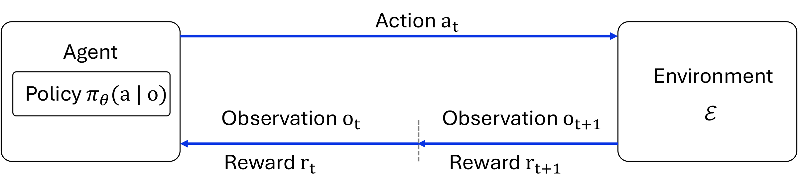
Methodology
Figure 2.13 shows the loop every method below shares: the agent observes, acts, receives a reward and a new state, and updates its policy to maximize long-term return. Learning a good policy requires balancing exploration of untried actions against exploitation of the actions currently believed best, the exploration–exploitation trade-off that underlies all of RL. The subsections that follow walk through the optimization backbones in the order the field developed them, value-based, policy-based, actor–critic, PPO, and the recent preference-based and group-relative objectives, and note at each step where spatial structure enters.
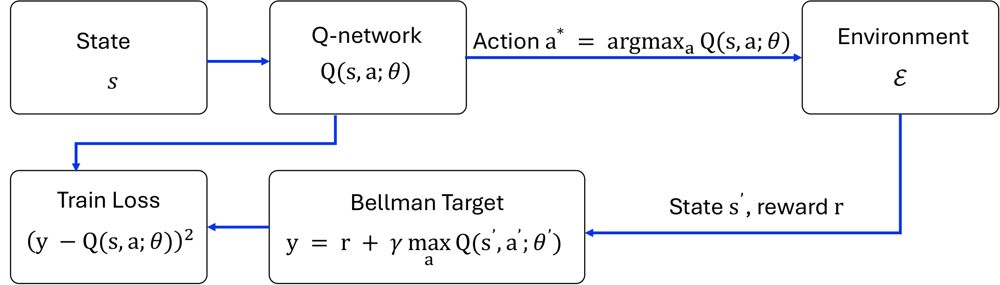
Value-Based RL.
Value-based methods learn a value function that estimates the expected cumulative return of acting under a policy \(\pi\). The optimal state-action value function is \[\begin{equation} Q^*(s,a) = \max_\pi \mathbb{E}_\pi \left[ \sum_{t=0}^{\infty} \gamma^t r_t \,\middle|\, s_0 = s, a_0 = a \right], \end{equation}\] where \(\gamma \in (0,1)\) is the discount factor, and it satisfies the Bellman equation: if the optimal values \(Q^*(s',a')\) of the next state are known for every action \(a'\), the best action now is the one that maximizes \(r+\gamma Q^*(s',a')\), \[\begin{equation} Q^*(s, a) = \mathbb{E}_{s' \sim \mathcal{E}} [r+\gamma \max_{a'} Q^{*}(s', a') | s, a]. \end{equation}\] Iterating this identity as an update, \(Q_{i+1}(s, a) = \mathbb{E}_{s' \sim \mathcal{E} }[r+\gamma\; \max_{a'} \; Q_{i}(s', a') | s, a]\), converges to \(Q^*\), but a table of values indexed by every state is useless in high-dimensional observation spaces, so a function approximator \(Q(s,a;\theta)\approx Q^*(s,a)\) is learned instead, a neural network in the deep-RL setting (a Q-network). Training minimizes a sequence of regression losses whose target is the bootstrapped Bellman estimate, \[\begin{equation} L_i(\theta_i) = \mathbb{E}_{s, a \sim \rho(\cdot)} [(y_i - Q(s, a; \theta_i))^{2}], \end{equation}\] with \(y_i = \mathbb{E}_{s' \sim \mathcal{E}} [r + \gamma \; \max_{a'} Q(s', a';\theta_{i-1}) | s, a]\) computed from the previous parameters \(\theta_{i-1}\), held fixed, and \(\rho(s,a)\) the distribution of visited state–action pairs; the greedy policy \(\pi(s;\theta) = \arg\max_{a} Q(s, a;\theta)\) then follows from the learned values.
Deep Q-networks (DQN) made this scale to high-dimensional observations with experience replay and a slowly updated target network; their convergence is analyzed theoretically by , and Figure 2.14 shows the resulting workflow. Beyond control, value-based RL drives active visual perception: cast object localization as a sequential decision process in which a Q-network iteratively transforms an attention window until it tightly bounds the target, turning detection into a learned spatial search policy, a formulation since applied to active detection, visual search, and region selection for fine-grained recognition, where the agent learns where to look rather than scanning exhaustively. In spatial domains the limitation of vanilla DQN is that any planning behavior must be learned implicitly from data, which generalizes poorly to novel layouts, so several works embed planning structure in the value estimate itself. Value Iteration Networks (VIN) unroll Bellman updates as convolutions over a spatial grid, a differentiable approximation of value iteration; Gated Path Planning Networks (GPPN) replace the recurrence with gated units to improve optimization stability and long-range dependencies; and under partial observability QMDP-Net integrates belief updates and approximate POMDP planning (QMDP) into one differentiable network. In each case the learned value function is constrained to follow spatially structured dynamic programming rather than arbitrary function approximation.
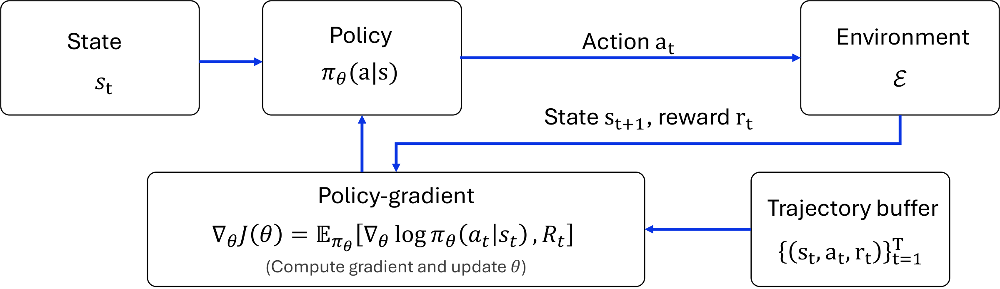
Policy-Based RL.
Policy-based methods parameterize a policy \(\pi_\theta(a|s)\) directly and maximize expected return, \[\begin{equation} J(\theta) = \mathbb{E}_{\pi_\theta} \left[ \sum_{t=0}^{\infty} \gamma^t r_t \right], \end{equation}\] by gradient ascent on \[\begin{equation} \nabla_\theta J(\theta) = \mathbb{E}_{\pi_\theta} \left[ \nabla_\theta \log \pi_\theta(a_t|s_t) \, R_t \right], \end{equation}\] where \(R_t = \sum_{k=t}^{\infty} \gamma^{\,k-t} r_k\) is the return from time-step \(t\) (Figure 2.15). Optimizing action distributions directly suits spatial decision problems in which exploration and long-horizon credit assignment are central , and policy gradients train embodied agents to actively gather visual evidence: Embodied Question Answering optimizes a navigation policy so that the agent moves to vantage points from which it can answer questions about a 3D scene. The spatial competence, however, comes from the architecture rather than the objective; policy-gradient agents generalize across layouts when the policy carries a learned map , a grounded spatial representation , memory, or a relational encoder .
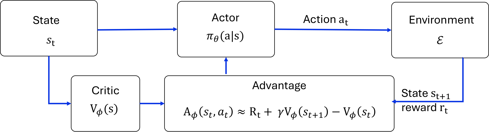
Actor-Critic RL.
Actor–critic methods combine the two by jointly learning a policy \(\pi_{\theta}(a|s)\) (the actor, which controls behavior) and a value function \(V_\phi(s)\) (the critic, which scores the actions taken), as in Figure 2.16. The critic provides a low-variance estimate of the advantage, \[\begin{equation} A_{\phi}(s_t,a_t) \approx r_t + \gamma V_{\phi}(s_{t+1}) - V_{\phi}(s_t), \end{equation}\] or, when a Q-function is learned as well, \(A_{\phi}(s_t,a_t) = Q_{\phi}(s_t,a_t) - V_{\phi}(s_t)\), and the advantage replaces the raw return \(R_t\) in the policy-gradient update. The asynchronous advantage actor-critic (A3C) made this stable and scalable and became a standard backbone for embodied navigation and spatial control: target-driven visual navigation conditions an A3C agent on an image of the goal and reaches semantically specified targets in unseen indoor scenes, and Neural SLAM gives an A3C agent a differentiable map memory. The separation between actor and critic matches the structure of spatial tasks, with the actor responsible for geometry-aware decisions and the critic supplying global, long-horizon value signals, which is why actor–critic methods dominate navigation benchmarks that require memory, planning, and partial observability .
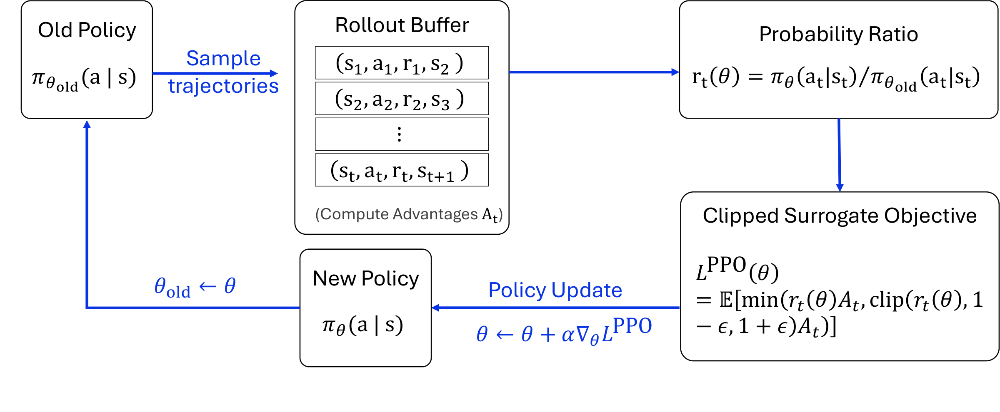
PPO-Style Policy Optimization.
Proximal Policy Optimization (PPO) is an actor–critic algorithm that stabilizes training by constraining each policy update through a clipped surrogate objective, \[\begin{equation} L^{\text{PPO}}(\theta) = \mathbb{E} \left[ \min \left( r_t(\theta) A_t, \text{clip}(r_t(\theta), 1-\epsilon, 1+\epsilon) A_t \right) \right], \end{equation}\] where \(r_t(\theta)\) is the probability ratio between the new and old policies (Figure 2.17). Its robustness and sample efficiency made PPO the de facto backbone for training agents in large-scale photorealistic 3D simulators such as Gibson and Matterport3D , and in manipulation suites such as panda-gym5. Scaled to 2.5 billion frames with DD-PPO , it essentially solves PointGoal navigation on Habitat (99.7% success and 0.97 SPL on Gibson validation), and the same backbone underpins vision-and-language navigation , object-goal navigation , audio-visual navigation , and planning over uncertain topological maps .
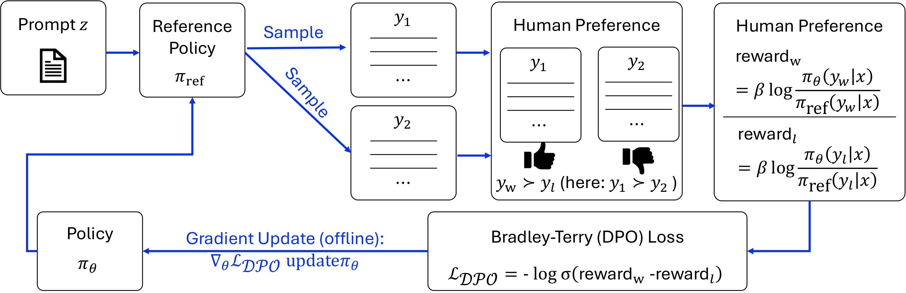
Preference-Based Policy Optimization (DPO).
Preference-based learning replaces the reward signal with comparisons. Direct Preference Optimization (DPO) learns a policy from preference pairs without an explicit reward model or online rollouts (Figure 2.18): for two completions \((y_1,y_2)\) of an input \(x\), a labeler marks the preferred one, \(y_w \succ y_l \mid x\), and by expressing the implied reward of a Bradley–Terry preference model through the optimal policy itself, DPO collapses the reward-learning-then-RL pipeline into a single maximum-likelihood objective on \(\pi_\theta\): \[\begin{equation} \mathcal{L}_{\text{DPO}}(\pi_{\theta};\pi_{\text{ref}}) = - \mathbb{E}_{(x,y_w, y_l)\sim \mathcal{D}} \big[ \log \sigma \big(\beta\log\frac{\pi_{\theta}(y_w|x)}{\pi_{\text{ref}}(y_w|x)} - \beta\log\frac{\pi_{\theta}(y_l|x)}{\pi_{\text{ref}}(y_l|x)}\big)\big], \end{equation}\] where \(\pi_{\text{ref}}\) is a fixed reference policy and \(\beta\) controls the deviation from it. Developed for language-model alignment, DPO applies to spatial reasoning whenever supervision takes the form of trajectory preferences, plan rankings, or human judgments of spatial behavior , which arise naturally in navigation, manipulation, and interactive tasks where dense rewards are hard to specify.
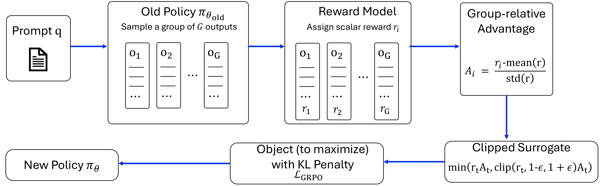
Group-Based Policy Optimization (GRPO).
Group Relative Policy Optimization (GRPO) removes the learned critic and replaces it with a group-relative baseline computed from multiple sampled trajectories (Figure 2.19). For each question \(q\), it samples a group of outputs \(\{o_1, o_2, \cdots, o_G\}\) from the old policy \(\pi_{\theta_{\text{old}}}\) and optimizes \(\pi_\theta\) by maximizing \[\begin{equation} \begin{split} \max_{\pi_\theta} &\; \mathbb{E}_{q \sim D_{\text{rl}}, \{o_i\}_{i=1}^{G} \sim \pi_{\theta_{\text{old}}}(O|q)} \\ & \Bigg[ \frac{1}{G} \sum_{i=1}^G \text{min}(\frac{\pi_\theta(o_i)}{\pi_{\theta_{\text{old}}}(o_i)} A_i, \text{clip}(\frac{\pi_\theta(o_i)}{\pi_{\theta_{\text{old}}}(o_i)}, 1-\epsilon, 1+\epsilon) A_i ) - \beta \, \mathbb{D}_{\mathrm{KL}}\big(\pi_\theta \| \pi_{\mathrm{ref}}\big) \Bigg], \end{split} \end{equation}\] where \(\epsilon\) and \(\beta\) are hyperparameters and the advantage \(A_i\) is computed from the rewards \(\mathbf{r}=\{r_1,\dots,r_G\}\) that a reward model assigns to the group, normalized within the group only: \[\begin{equation} A_i = \frac{r_i - \text{mean}(\mathbf{r})}{\text{std}(\mathbf{r})}. \end{equation}\] Eliminating the value network reduces memory and stabilizes training. Although explored first for language models, the formulation transfers to spatial decision-making wherever several candidate plans or trajectories can be scored against one another, and it has become the standard recipe for reinforcement fine-tuning of spatial vision–language models on visual reasoning, navigation, multi-step assembly, and video spatial reasoning .
Architectural Spatial Inductive Biases.
The backbones above are domain-agnostic; what makes a policy spatial is the prior \(S\) in its architecture, and three families recur across the examples already met. Map-based representations give the agent an explicit allocentric memory: cognitive maps and Neural Map write observations into a spatially indexed latent grid, while Neural SLAM and Active Neural SLAM couple differentiable mapping with a hierarchical exploration policy. Differentiable planning modules embed dynamic programming in the network, as in the VIN / GPPN / QMDP-Net line discussed under value-based RL, or learn a value-equivalent model and plan by lookahead search, as in MuZero . Relational abstractions replace flat feature maps with object- or graph-structured state, letting attention or message passing capture relations that transfer across layouts . In each case the RL objective is unchanged; the spatial competence comes from the prior, which is why these architectures generalize across geometries where unstructured policies overfit.
Benchmarks
Two complementary benchmark families shape the empirical landscape. Embodied navigation and exploration benchmarks stress long-horizon planning under partial observability in photorealistic 3D scenes: Habitat is the dominant platform, paired with real-world scans from Matterport3D and Gibson for large, scene-diverse PointGoal and ObjectGoal navigation that exercises geometry-aware exploration and cross-scene generalization; SoundSpaces adds audio-visual cues as a multimodal test of spatial state estimation; and SOON extends vision-and-language navigation to scenario-oriented object goals in unseen environments. Symbolic and relational benchmarks test whether structured priors yield combinatorial and compositional generalization: PDDLGym6 builds Gym environments from PDDL domains with relational observations and actions, and lightweight gridworld suites such as MiniGrid7 support controlled evaluation of planning, memory, and compositional generalization; the differentiable planners (VIN, GPPN, QMDP-Net) are evaluated on procedurally generated gridworld mazes and POMDPs of increasing size, where the question is whether the architectural prior generalizes to unseen layouts rather than memorizing training mazes. Across both families the choice of RL algorithm matters less than the choice of prior: PPO has converged as the standard optimizer for embodied navigation, and differences between agents mostly reflect the map, planning module, or relational encoder on the policy, while on gridworld benchmarks the methods that embed planning structure consistently dominate unstructured DQN, with the largest gains where the task is most planning-shaped.
Challenges and Trends
Sample inefficiency comes first. Spatial tasks involve long horizons, sparse rewards, and combinatorial state spaces, so naïve exploration is prohibitively expensive; architectural priors such as learned maps, planning modules, and relational representations improve efficiency , but current RL systems still need orders of magnitude more interaction than humans or classical planners to acquire robust spatial competence.
Generalization and transfer come second. Many agents perform well in their training environments and degrade sharply in unseen layouts, novel geometries, or altered dynamics, which suggests that much of the learned behavior rests on superficial correlations rather than abstract spatial structure; structured state representations, world models, and modular policy design help, but how to enforce spatial invariances and compositional generalization in RL in a principled way remains open.
Reward specification is the third. Spatial tasks often lack dense, well-defined rewards, especially when success depends on long-term plan quality, safety, or efficiency rather than immediate outcomes. Preference-based methods such as DPO and group-relative objectives such as GRPO learn from comparative feedback instead, at the price of reward-model bias, preference inconsistency, and the difficulty of aligning learned preferences with the true task objective in complex spatial domains.
The directions that follow from these three are hybrid methods that integrate learning with explicit planning or search , structure-aware representations (object-centric, relational, graph-based) that scale spatial reasoning beyond grid-based and navigation-centric benchmarks , and evaluation protocols that weight out-of-distribution generalization, robustness to environmental variation, and reasoning quality over performance on fixed benchmarks.
Multi-agent Spatial Reasoning
Where the previous five subsections study a single learning agent, multi-agent spatial reasoning (MASR) moves to the joint regime: multiple embodied or abstract agents perceive, communicate, and act within a shared environment to accomplish cooperative or competitive goals, and the structural prior now governs decentralized decisions over a shared spatial state. MASR links low-level sensorimotor streams (proprioception, occupancy grids, trajectories) to relational decision processes (joint planning, role assignment, coalition formation); its core problem is credit assignment and coordination under spatial constraints, that is, how agents with partial, decentralized observations reason over nearby entities, infer latent intent, and synthesize actions that produce coherent team-level behavior. Deep learning has moved the field from rule-driven coordination to end-to-end policies that integrate perception, communication, and control under partial observability and non-stationarity , with autonomous driving and interactive motion forecasting over road geometry (WOMD , nuScenes ), multi-robot exploration, formation control, and patrol under attrition , and real-time strategy and team-sports simulation as its representative domains. We stress at the outset that the canonical algorithms surveyed below (VDN, QMIX, COMA, MADDPG) are themselves spatially agnostic: they solve a generic cooperative Dec-POMDP and see geometry only through the environment and the reward. Explicit spatial structure enters chiefly through the benchmarks and through the graph-based family, where the interaction graph \(\mathcal{G}_t\) makes neighborhood relations a first-class part of the policy.
![Multi-agent spatial reasoning tasks (top) and mechanisms
(bottom). Top: (a) cooperative micromanagement under partial observation
(SMAC (Samvelyan et al., 2019) ),
(b) interactive motion forecasting (WOMD,
nuScenes (Ettinger et al., 2021; Beijbom, 2020) ),
and (c) multi-robot patrol after agent
loss (Goeckner et al., 2024) .
Bottom: (d) centralized critic (MADDPG,
COMA (Lowe et al., 2017; Foerster et al., 2018) ),
(e) value decomposition (VDN,
QMIX (Sunehag et al., 2018; Rashid et al., 2018) ),
(f) graph coordination, and (g) attention across agents and time. Graph
and sequence architectures serve prediction or control and do not by
themselves imply decentralized execution. Red marks the lost agent;
dashed trajectories are candidate futures and dashed graph links are
intermittent interactions. Examples are schematic.](book-assets/figures/part3/section7/multi-agent_spatial_reasoning.png)
Task Definition
We cast cooperative multi-agent spatial reasoning as a graph-structured Dec-POMDP \[\begin{equation} \mathcal{M}=(\mathcal{V},\{\mathcal{A}_i\},\mathcal{S},P,R,\{\mathcal{O}_i\},O,\rho_0,\gamma,T), \end{equation}\] with a (possibly time-varying) interaction graph \(\mathcal{G}_t=(\mathcal{V},\mathcal{E}_t)\) derived from state (e.g. , proximity or visibility) or estimated locally. At time \(t\), agent \(i\) receives a partial egocentric observation \(o_t^i\!\sim\!O(\cdot\mid s_t,i)\) (RGB-D, LiDAR, occupancy, kinematics) and optional neighbor messages \(m_t^i\); we treat \(\tilde{o}_t^i=(o_t^i,m_t^i,\mathcal{G}_t^i)\) as the input available to agent \(i\), with any bandwidth cost included in \(R\). Agents act with decentralized, history-dependent policies \[\begin{equation} a_t^i \sim \pi_\theta^i(\cdot \mid h_t^i),\quad h_t^i=\mathrm{upd}(h_{t-1}^i,\tilde{o}_t^i), \end{equation}\] the joint policy factorizes as \(\pi_\theta(\mathbf a_t\mid \mathbf h_t)=\prod_i \pi_\theta^i(a_t^i\mid h_t^i)\), and the objective is \[\begin{equation} \max_{\theta}\ \mathbb{E}_{s_1\sim\rho_0,\ \pi_\theta,\ P} \Big[\sum_{t=1}^{T}\gamma^{t-1}R(s_t,\mathbf a_t)\Big],\qquad \mathbf a_t=(a_t^1,\dots,a_t^n). \end{equation}\] In predictive variants, auxiliary heads output multi-agent forecasts or spatial fields with confidences for planning or losses; these are not environment actions. Settings differ along two further axes: online methods act in streaming settings under tight latency, whereas offline methods learn from logged interaction data (e.g. , driving datasets) with batch updates and conservative behavior constraints; and centralized training with decentralized execution (CTDE) exploits global state to train joint value functions or critics while enforcing decentralized policies at test time , whereas fully decentralized learning never accesses global state, trading sample efficiency for deployability.
Methodology
Figure 2.20 summarizes the tasks above and the method families discussed below.
Classical Paradigms.
Before learning, coordination relied on potential fields, formation keeping via graph Laplacians, and optimal multi-agent pathfinding with conflict-based search , treated in §2.1.3; these methods offer strong guarantees but struggle with perception noise, combinatorial scaling, and model mismatch in open worlds.
CTDE and Value Decomposition.
Two lines made CTDE work. Centralized critics resolve credit assignment and non-stationarity while keeping execution decentralized: COMA uses a counterfactual baseline computed by a centralized critic for decentralized actors , and MADDPG extends deterministic policy gradients with agent-specific centralized critics . Value factorization instead decomposes the joint value: VDN sums per-agent utilities to approximate \(Q_{\text{tot}}\) for cooperative tasks , and QMIX generalizes the sum to a monotonic mixing network that preserves individual-global argmax consistency with more representational capacity . These approaches made MARL scalable on SMAC , where the value-decomposition line dominated the early cooperative leaderboard while the centralized-critic methods anchored other regimes (MADDPG on the particle environments, COMA on StarCraft micromanagement); the monotonic constraint and homogeneous-role assumptions limit expressivity, as the challenges below detail.
Graph Neural Networks for Coordination.
Graph-based MARL encodes agents as nodes and interactions as edges, and message passing or attention over the neighborhood learns role-specialized coordination ; this family improves sample efficiency and robustness under topology changes and communication limits, and MAGEC shows resilience to agent attrition and communication disturbance in multi-robot patrol by combining GNN encoders with PPO-style multi-agent optimization. Graph MARL targets a different axis from the leaderboard methods, robustness to topology disturbances rather than headline return, which exposes a gap between coordination-quality benchmarks (SMAC, MPE) and deployment-quality ones (multi-robot patrol, driving forecasting on WOMD and nuScenes) that standardized suites still under-represent.
Sequence Models and Transformers.
Casting MARL as sequence modeling applies attention over multi-entity, multi-horizon contexts: the Multi-Agent Transformer maps the sequence of agents’ observations to a sequence of actions with an encoder–decoder, using the multi-agent advantage decomposition to turn joint policy search into sequential decisions with linear complexity in the number of agents. Transformer controllers, often hybridized with graph layers, address long-range temporal and relational dependencies, unify perception and control, and support offline RL through trajectory modeling; learned memory alleviates partial observability, while quadratic attention and credit assignment over long horizons remain open.
Benchmarks
Benchmarks span two regimes: simulation suites that stress cooperation, partial observability, and communication learning under controlled physics and reward shaping, and real-world multi-agent trajectory datasets that test interactive prediction and motion forecasting at deployment scale. Table 2.4 summarizes the most widely used resources.
| Dataset / Suite | Year | Scale | Action/Task Space |
|---|---|---|---|
| SMAC | 2019 | 22+ micro scenarios | Discrete, decentralized |
| Multi-Agent Particle Env. (MPE) | 2017 | 10+ 2D templates | Continuous/discrete |
| GRF | 2020 | Dozens of tasks / full-game | Continuous/discrete |
| nuScenes | 2020 | 1,000 scenes \(\times\) 20 s @ 2 Hz | Trajectory prediction |
| WOMD | 2021 | \(10^{5}\) scenes \(\times\) 20 s @ 10 Hz | Trajectory prediction |
| Neural MMO | 2020 | Persistent worlds; \(O(10^2)\) agents | Long-horizon survival |
Evaluation depends on whether the setting is control or prediction. Control is scored by mean episodic return \(\mathbb{E}_{\pi}\!\left[\sum_t r_t\right]\), success or win rate, time-to-goal, collision and rule-violation rates, fairness or load-balancing indices for cooperative logistics, and communication overhead; prediction and planning are scored by spatial accuracy, from displacement errors over the forecast horizon (minADE, minFDE, miss rate on WOMD and nuScenes) to intersection-over-union between predicted and ground-truth occupied regions or trajectory tubes.
Challenges and Trends
Multi-agent spatial reasoning faces structural difficulties that distinguish it from the single-agent settings of §2.2.1–§2.2.5, organized here along four axes within the classical multi-agent paradigm.
Credit Assignment under Partial Observability and Long Horizons.
The decentralized-execution constraint of the Dec-POMDP forces each agent to act on its own history \(h^i_t\) alone, so relating a local action \(a^i_t\) to a delayed team-level reward \(r_T\) across a horizon \(T\) produces an irreducibly noisy policy gradient. Counterfactual baselines such as COMA marginalize over alternative actions of agent \(i\) while holding the rest of \(\mathbf{a}_t\) fixed and reduce gradient variance substantially, but they still rely on a centralized critic that, at scale, becomes a moving target for itself. Value decomposition (VDN, QMIX) side-steps the centralized critic by factorizing \(Q_\mathrm{tot}\) across agents, yet the monotonicity constraint \(\partial Q_\mathrm{tot}/\partial Q_i \ge 0\) that guarantees decentralized argmax consistency cannot represent strictly non-monotonic cooperation games, a representational ceiling made explicit by the later non-monotonic factorizations QTRAN, weighted QMIX, and QPLEX, and visible on cooperative matrix games and SMAC’s hardest scenarios . Under sparse reward shaping, policies trained against these signals tend to chase short-term spatial cues (“move toward the closest enemy”, “follow the nearest teammate”) rather than team-level objectives.
Scaling Laws of Joint Reasoning and Communication.
Sequence-model multi-agent Transformers and dense graph message passing both incur \(\mathcal{O}(n^2)\) complexity in the number of agents, plus additional quadratic terms across temporal contexts, which collides with the real-time latency budgets of multi-robot and autonomous-driving deployments . Sparse, learned interaction graphs are the natural mitigation, but they introduce their own credit-assignment difficulty: the edges \(\mathcal{E}_t\) are themselves part of the learned policy, and gradients flowing through hard edge selection are biased or high-variance. Communication bandwidth is a related gap: in the formulation above any message \(m^i_t\) should carry a cost that appears in \(R\), but the standard simulators (SMAC , MPE , GRF ) idealize communication as free and noiseless, leaving little benchmark surface against which to push bandwidth-aware coordination.
Non-stationarity, Heterogeneous Roles, and Partner Generalization.
Even in fully cooperative settings, intra-team policies co-evolve, so from the perspective of any single agent the environment is non-stationary , the failure mode the centralized-critic family of MADDPG / COMA was introduced to address. The problem sharpens when teammates are heterogeneous, may drop out (the patrol-with-attrition setting of MAGEC ), or are drawn from an unseen partner distribution at evaluation time, the zero-shot coordination problem. Persistent open-world simulators such as Neural MMO push along this axis with procedurally generated maps and long-horizon survival, but standardized protocols for partner generalization and role specialization remain immature compared with the single-agent supervised benchmarks of §2.2.1 and §2.2.3.
Ambiguous Spatial Semantics and Sim-to-Real Transfer.
The egocentric observations \(o^i_t\) that drive decentralized policies are partial and noisy: occluded teammates, uncertain affordances, and depth-discontinuity-induced map errors distort both prediction and control. Driving benchmarks such as WOMD and nuScenes expose the prediction side of this gap, but the closed-loop control side (whether the same forecasts survive when an agent acts on its own predictions) is comparatively under-evaluated. The sim-to-real gap on multi-robot systems is wider still: perception noise and actuation latency interact non-linearly with the coordination signal in ways that simulators rarely model, and resilience under realistic communication disturbance and agent attrition has only recently received first-class benchmark coverage .
Three routes follow from these axes. Topology-aware sparse interaction (learned edges, hierarchical groupings, or attention masks parameterized by \(\mathcal{G}_t\)) preserves long-range coordination while scaling sub-quadratically, with the GNN+PPO patrol architecture of MAGEC as an early instantiation and graph encoders combined with sequence-model attention over short temporal windows as the natural next step. The monotonicity ceiling of VDN / QMIX can be relaxed by attention-weighted mixers, weighted projection schemes, or dueling-style decompositions that keep individual-global argmax consistency while admitting non-monotonic cooperation, so that COMA-style counterfactual credit assignment no longer depends on a joint-action critic that becomes the bottleneck. And explicit objectives for agent attrition and communication disturbance , paired with failure-centric curricula and hooks for formal verification, move resilience from an emergent property of training to a first-class objective, decisive in safety-critical multi-robot and driving deployments where worst-case performance dominates the deployment decision; closed-loop evaluation suites that jointly report team return, safety, calibration, and latency are the missing measurement substrate, and the benchmarks for partner generalization, bandwidth-aware coordination, and sim-to-real transfer that would play the role SMAC and GRF played for CTDE are still under construction.
Foundation Model-driven Spatial Reasoning
Foundation model-driven spatial reasoning turns to large pre-trained models (LLMs, vision-language models, vision-language-action models, and large vision models) as the engine of spatial inference. The motivation is empirical: such models display a striking facility with spatial concepts and relations even without task-specific fine-tuning, and a large body of work now recruits them as the core of systems for spatial question answering, planning, and explanation.
What separates these approaches is the locus and granularity at which the foundation model intervenes. At one end the model is the reasoning core itself, answering spatial queries directly (LLM/VLM-centric reasoning) or additionally emitting low-level actions (VLA-based reasoning). Its reasoning can be drawn out step by step, as intermediate deductions in language (chain-of-thought) or as an executable program synthesized from the task (code and DSL generation). It can be coupled to external machinery such as planners, renderers, simulators, and perception modules (tool-augmented reasoning), or grounded in external spatial memory (retrieval- and memory-augmented reasoning). And it can be handed control of a closed interaction loop with the environment (agentic reasoning) or paired with a learned neural simulator of dynamics that serves as the spatial substrate (world-model-based reasoning).
LLM/VLM-centric Spatial Reasoning
Large language and vision-language models have become a default substrate for spatial reasoning, not because they compute geometry explicitly, but because large-scale pretraining leaves them with a usable, if imperfect, prior over how objects are arranged, oriented, and related. This subsection examines that prior directly: what spatial competence text-only LLMs acquire from language alone, how visual grounding sharpens it in VLMs, and where both still fall short of the metric, viewpoint-consistent reasoning that physical tasks demand. The methods are organized by the intervention used to elicit or strengthen this competence, from prompting to architectural change.
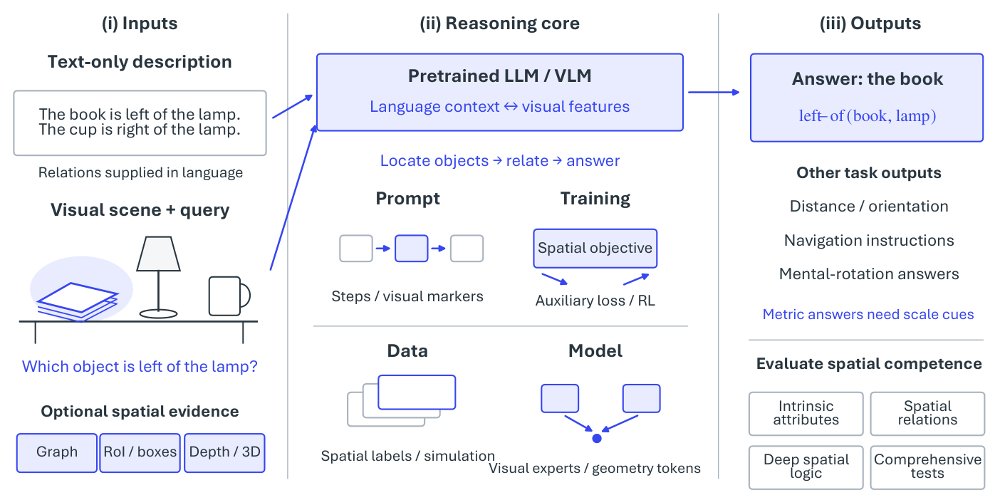
Task Definition
Spatial reasoning, which embodied AI , autonomous driving , and spatial content generation all depend on, is cast here as inference over learned representations rather than explicit geometric computation: a pre-trained model \(\mathcal{M}_\theta\) answers a spatial query \(q\) from context \(c\), \[\begin{equation} y=\mathcal{M}_\theta(q, c),\qquad c\in\{\varnothing,\ I,\ I+\text{aux}\}, \end{equation}\] where the context may be absent (a text-only LLM), an image or image set \(I\) (a VLM), or an image together with auxiliary evidence such as a scene graph, region features, or depth, and the output \(y\) is a relation, a metric estimate, an orientation, or a navigation plan. For text-only LLMs the spatial prior is built from statistical patterns in massive corpora : such models infer that “sky” is above “ground”, but the reasoning is ungrounded, with no mapping to physical reality or visual signal, and therefore prone to physically impossible inferences. VLMs ground the same prior by aligning the LLM with a visual encoder, and spatial competence then extends beyond recognizing objects and their intrinsic attributes to reasoning about relations among objects and to spatial extrapolation, inferring unseen states or running mental simulations from what is perceived .
Methodology
Interventions against the spatial deficiencies of foundation models fall into four levels, in increasing order of invasiveness: prompt engineering leaves the model untouched, training strategies update its weights, data-centric augmentation changes what it learns from, and model-centric enhancement alters the architecture.
Prompt Engineering.
Prompting elicits latent spatial ability at inference time without weight updates. Textual prompting applies chain-of-thought reasoning so that the model decomposes a spatial task into intermediate steps (identifying reference objects before deducing relative positions), and inserting scene graphs or coordinates extracted by expert models into the prompt raises accuracy further . Visual prompting guides attention through markers superimposed on the image itself (masks, coordinate axes, keypoints), and in zero-shot settings such explicit visual cues can outperform fine-tuned models .
Training Strategies.
Contrastive pretraining objectives induce a “bag-of-concepts” behavior that under-supervises spatial structure, so stronger supervisory signals are introduced to enforce spatial alignment. Auxiliary losses such as image reconstruction or coordinate prediction compel the model to attend to pixel-level spatial detail rather than global semantics alone . Reinforcement learning with spatial reward functions (PPO or GRPO ; view-consistency rewards ) trains models to perform mental visual simulation or to produce more precise spatial descriptions, moving spatial training from imitation toward preference-based optimization.
Data-Centric Augmentation.
Because high-quality spatially annotated data is scarce, augmentation drives much of the progress. Existing 2D/3D datasets are re-annotated with explicit spatial relations, metric distances, or orientations , and simulation engines synthesize data with perfect geometric ground truth, which is especially effective for extrapolation tasks such as mental rotation and path planning where real-world annotation is impractical .
Model-Centric Enhancement.
Architectural changes target the fine-grained visual-spatial features that mainstream encoders miss. Because CLIP-style encoders prioritize global semantics over local geometry, higher-resolution encoders or fused features from multiple visual experts (SAM , DINOv2 ) sharpen the perception of shape and position; region-of-interest features or scene graphs supplied as additional input tokens decouple objects from their relationships and tighten fine-grained alignment ; and for 3D reasoning, models ingest point clouds, voxel grids, or depth maps directly or lift 2D features into implicit 3D representations from multi-view images . A recent alternative internalizes 3D awareness through auxiliary supervision instead of extra inputs: SpatialSV forces hidden visual features to predict explicit 3D targets (depth, ray maps, point clouds) during training, injecting geometric priors at no inference cost.
Benchmarks
Evaluation has moved from general VQA to benchmarks that probe spatial capability along four levels . Intrinsic-attribute benchmarks test perceptual precision on single objects, with EgoOrientBench evaluating object orientation from an egocentric viewpoint and GeoMeter metric distance and dimension, and they show that even state-of-the-art models are weak at reference-free perception. Relational benchmarks, the most populated class, test the parsing of spatial relations through vision-centric questions such as relative position (CV-Bench , What’s Up ), and this is where general-purpose VLMs peak. Deep-spatial-logic benchmarks go beyond visible relations: SRBench evaluates mental rotation and navigation, and MindCube the construction of an internal 3D mental model from multiple views. Comprehensive suites such as RealWorldQA and OmniSpatial cover all levels at once; a wider coverage map of these static probes appears in Table [tab:spatial_reasoning_benchmark] of §2.3.7.
Challenges and Trends
Three obstacles limit what foundation models can be made to do spatially. Mainstream vision encoders such as CLIP optimize for global semantic alignment and capture coarse semantics at the expense of fine-grained geometric detail , and the contrastive objective compounds this by inducing the “bag-of-concepts” behavior that under-supervises structural relations among objects . Training data with precise metric annotation (quantitative distance, 3D coordinates) is scarce, and existing datasets rarely support the extrapolation tasks that require reasoning beyond direct observation . Spatial reference is ambiguous: “to the left” may mean the viewer’s left (egocentric), the object’s left (allocentric), or another agent’s left, and VLMs seldom switch frame of reference from context, which misaligns interpretation in embodied use .
Two directions respond to these. Reinforcement learning with process rewards such as GRPO moves training from static VQA toward interaction, letting the model acquire spatial logic by trial and error in simulation or the real world . World-model-informed pretraining attacks the 2D-to-3D gap directly, learning physical regularities (gravity, collision) alongside image-text correspondence from synthetic corpora with exact geometric ground truth ; the use of such world models at inference time is the subject of §2.3.8.
VLA-based Spatial Reasoning
Vision-language-action (VLA) models push spatial reasoning past description and into execution: the same latent competence that lets a model answer where an object sits must now drive an end effector toward it without violating depth, contact, or stability constraints. Spatial reasoning here is therefore inseparable from the agent’s body and the physics of its workspace, and a plan that reads correctly on paper still fails if it ignores reachability or collision. The methods below are organized by their action-generation paradigm (autoregressive, diffusion-based, reinforcement-learning-driven, and hybrid).
![VLA-based spatial reasoning as a perception–action loop: (i)
embodied inputs, (ii) a VLA policy that generates actions
autoregressively, by diffusion (denoising \(A_K\) to \(A_0\) ), or with a hybrid, plus optional RL
refinement, and (iii) an action representation executed by a controller,
with environment feedback closing the loop. \(\Delta p,\Delta R, g, q^{*}\) are
end-effector translation and rotation increments, gripper command, and
joint targets. The robot scenes illustrate the initial state and
intended outcome, not experimental observations.](book-assets/figures/part3/section7/VLA_spatial_reasoning.png)
Task Definition
A VLA model extends the reasoning core of §2.3.1 with an action head: given a visual observation \(o_t\), a language instruction \(\ell\), and the robot’s proprioceptive state \(s_t\), it emits an executable action chunk \[\begin{equation} a_{t:t+H}\sim\pi_\theta(\cdot\mid o_t,\ \ell,\ s_t), \end{equation}\] where each action encodes end-effector increments, gripper commands, joint targets, or pose waypoints that a controller converts into motion . Spatial reasoning under this paradigm is embodied grounding: language tokens must be anchored not only to visual features but to the three-dimensional geometry, affordances, and constraints of the workspace, so that the generated actions respect depth, stability, and contact rather than merely naming where objects are.
Methodology
VLA methods for spatial reasoning fall into four classes by their action-generation and reasoning paradigm.
Autoregression-Based Methods.
Autoregressive methods cast spatial manipulation as next-token prediction over a unified token stream of discrete action tokens. Gato showed that heterogeneous modalities can be jointly tokenized and trained in one autoregressive model; PointVLA injects point-cloud representations into a pretrained VLA for lightweight 3D reasoning without redesigning the architecture; and TraceVLA adds visual trace prompting, explicit spatiotemporal cues that improve long-horizon spatial awareness and task consistency during generation.
Diffusion-Based Methods.
Diffusion methods model action generation as conditional denoising, which suits trajectories that must respect physical constraints and uncertainty. SE(3)-DiffusionFields runs the diffusion process in \(\mathrm{SE}(3)\) pose space and jointly optimizes grasping and motion planning; 3D Diffuser Actor conditions the denoiser on structured 3D scene representations so that manipulation trajectories stay geometrically consistent; and ForceVLA brings force and tactile feedback in through a mixture-of-experts design for contact-rich manipulation.
Reinforcement Learning-Driven Methods.
Reinforcement learning refines VLA policies through interaction with the environment, particularly on long-horizon tasks (the broader treatment of RL with spatial inductive biases is §2.2.5). VIP learns a goal-conditioned, action-independent value function that implicitly encodes spatial distance to assess task progress; NaVILA couples VLA representations with RL policies so that quadruped robots navigate and avoid dynamic obstacles on difficult terrain; and SafeVLA adds safety critics that constrain high-risk behavior during manipulation.
Hybrid Architectures.
Hybrids combine generative mechanisms and add explicit spatial representations to strengthen 3D reasoning. 3D-VLA joins autoregressive language modeling with diffusion-based action prediction inside a generative 3D world model; VoxPoser has an LLM compose 3D voxel value maps, separating goal interpretation from geometric planning; ReKep models spatiotemporal dependencies as relational keypoint constraints for precise manipulation; and RoboPoint predicts affordance maps that encode where actions are feasible, as a prior for downstream planning and control.
Benchmarks
Evaluation rests on two complementary resources: generalization-oriented benchmarks in simulation and large-scale real-world embodied datasets. VIMA-Bench measures spatial generalization through a four-level protocol that runs from random object placement to fully novel task compositions; ALFRED poses long-horizon household tasks that combine high-level goals with low-level instructions; and CALVIN and LOTA-Bench test language-conditioned manipulation across environments, scoring generalization to unseen objects and configurations. Among datasets, Open X-Embodiment is the most comprehensive, integrating 22 robot datasets from 21 institutions and 527 skills to enable cross-platform generalization; BridgeData spans 71 tasks in 10 environments and shows that joint training on limited out-of-domain data raises success rates substantially; and RH20T adds vision, force, and audio across 147 tasks, suited to one-shot learning and experience-based policy transfer. Across these suites performance falls sharply along every generalization axis (L1 to L4 in VIMA-Bench, seen to unseen splits in ALFRED, single to multi-step chains in CALVIN), while data scale and embodiment diversity are the most reliable lever for cross-platform transfer and multimodal sensing (force, audio) becomes decisive where vision alone underdetermines the contact configuration.
Challenges and Trends
The generalization drop above reflects a semantic–physical misalignment: VLA systems inherit their competence from LLMs and VLMs that excel at semantic abstraction and cross-modal alignment but have had little exposure to physical interaction, so instructions are often interpreted correctly and executed incorrectly. The same gap appears as pseudo-interaction: actions are generated from statistical co-occurrence in the training data rather than from an understanding of environment dynamics or causality, so when the environment is unfamiliar or changes quickly the model cannot revise its strategy from sensory feedback.
Two further limits are practical. Long-horizon consistency is unsolved for autoregressive and diffusion policies alike: over extended action sequences the spatial representation drifts or hallucinates, and existing embodied datasets, including Open X-Embodiment, are dominated by tabletop manipulation and grasping, so environmental diversity and large unstructured scenes are under-represented. Inference latency compounds across autoregressive decoding of large Transformers, and for high-frequency tasks such as dynamic grasping or mobile navigation the compute and memory demands remain prohibitive on embedded platforms.
The directions that follow are a unified token stream over vision, language, and action that lets VLA systems grow into proto world models (the world-model view is developed in §2.3.8); active perception and causal reasoning, in which the agent probes its environment and updates its policy from feedback, as the answer to pseudo-interaction; and virtual-real data synthesis (high-fidelity simulation, synthetic generation, multi-robot data sharing) as the route to embodied data at the scale that text corpora provided for language models.
Chain-of-Thought for Spatial Reasoning
Spatial reasoning poses unique challenges for large language models (LLMs), as it requires the manipulation of geometric relations, perspective-taking, and dynamic transformations: skills that are not purely symbolic but grounded in embodied cognition. Chain-of-Thought (CoT) prompting , originally developed as a mechanism to elicit intermediate reasoning steps in arithmetic and commonsense tasks, has therefore been imported into spatial reasoning not as a generic recipe for longer answers, but as a way to externalize the intermediate spatial commitments that a model must keep consistent: which object is left of which, which frame of reference is active, which action changes the scene, and which hypothesized 3D configuration explains the observation. The evidence is mixed. In some settings, explicit rationales help decompose a spatial query into auditable subgoals; in others, they induce a fluent but ungrounded verbal trace that makes spatial performance worse .
![Spatial reasoning tasks (top) and intermediate-trace
structures (bottom). Top: (a) textual deduction in a north-up frame, (b)
visual counting, where the boxed red cube is the only one left of the
green sphere, and (c) embodied planning revised by new observations.
Bottom: CoT, ToT, and GoT differ in trace topology; PoT and CoA ground
the trace in program execution and environment interaction. \(\tau=(t_1,\ldots,t_L)\) is the intermediate
trace and \(\hat y=g(c,q,\tau)\) the
final answer. Scenes and trace diagrams are illustrative, not recorded
model computation.](book-assets/figures/part3/section7/chain-of-thought_spatial_reasoning.png)
Task Definition
The task is to answer a spatial query \(q\) about a scene or environment, given context \(c\) that may be purely textual, visual, 3D, temporal, or embodied. A CoT-style reasoner augments the answer with an intermediate trace \[\begin{equation} \tau = (t_1,\ldots,t_L), \qquad \hat{y}=g(c,q,\tau), \end{equation}\] where each \(t_\ell\) records a partial spatial commitment: a relation, coordinate estimate, subgoal, viewpoint change, object binding, or predicted action effect. The trace is useful only insofar as it improves the grounded answer \(\hat{y}\) or makes the failure mode inspectable; many apparent “reasoning steps” are not grounded in metric or perceptual evidence and merely rationalize a final guess, so the central question is not whether a model can produce more text, but whether the trace helps preserve spatial invariants across transformations, viewpoints, time steps, and actions.
Methodology
CoT, Tree-of-Thought (ToT) , and Graph-of-Thought (GoT) differ mainly in the topology of the intermediate trace: CoT is a single path through partial spatial commitments; ToT branches over alternative hypotheses or subplans and uses a value function to prune; GoT allows shared sub-derivations, such as reusing a computed room layout or object graph across several queried relations. All three search over partial reasoning states with a proposal mechanism, an evaluator \(V\), and a halting rule \(H\), \[\begin{equation} \tau^\star=\arg\max_{\tau} V(\tau)\quad\text{s.t.}\quad t_{\ell+1}\in\mathrm{Propose}(t_{\le \ell}),\ \ H(\tau)=1, \end{equation}\] and differ in whether the search structure is a path, a tree of alternatives, or a graph of reusable sub-results, and in whether the trace stays verbal or becomes executable through programs (Program-of-Thought, PoT ) or environment-changing actions (Chain-of-Action, CoA ). The use cases below organize how these traces are deployed.
Text-Only Spatial Deduction.
In linguistic spatial puzzles, route descriptions, and relative-position QA, the model must maintain a latent arrangement without visual feedback. CoT can expose intermediate bindings (e.g. , “A is north of B; C is west of A”) and reduce one-shot relational confusion , while ToT-style branching can preserve competing layouts until enough constraints have been applied. The persistent failure mode is coordinate drift: even with explicit steps, LLMs lose track of the origin, orientation, or accumulated displacement in textual mazes and grid-navigation tasks , so text-only CoT is most reliable when the trace is tied to a compact symbolic artifact (a table, coordinate sketch, or adjacency list) rather than to unconstrained prose.
Multimodal Scene Reasoning.
In image- or video-grounded QA, a CoT trace must bind language to perceptual evidence: which object instance is referred to, what relation is visible, which is occluded, and which viewpoint assumption is made. Free-form rationales can verbalize a relation that the image does not support, so recent work moves toward grounded intermediate artifacts (structured layouts, object bindings, diagrams, or executable module calls): SCoT-style planners use layout-coordinate traces to guide diffusion models on the generation side , and program-mediated systems call perception modules rather than describe them , the paradigm of §2.3.4. Here ToT and GoT serve less as generic search algorithms than as hypothesis-management devices that let a model compare object correspondences, camera frames, or depth-order explanations before committing to an answer.
Embodied Planning and VLA Reasoning.
In navigation, manipulation, and vision-language-action tasks, spatial reasoning unfolds over time, and the trace must connect perceptual state, subgoal choice, action feasibility, and feedback from the environment. CoT-style subgoals support long-horizon planning in navigation , embodied instruction following , and VLA models that expose intermediate visual or action commitments: CoT-VLA pairs reasoning with predicted visual states , ACoT-VLA formulates the trace in action space through coarse action intents and reference trajectories , and scene graphs stabilize the trace by giving the model a persistent substrate for object identities and relations .
Benchmarks
Evaluation mirrors the three use cases. Spatial puzzles, relative-position QA, and textual maze navigation are evaluated with prompt-based CoT on the suites of ; visual question answering and scene-grounded compositional queries are evaluated under CoT with program execution (§2.3.4), where the rationale’s correctness is mediated by program output rather than by the rationale string; and long-horizon planning with sensory feedback is evaluated through CoT-augmented navigation (NavCoT , NavR1 ), CoT-augmented instruction following (ThinkBot , EmbodiedGPT ), visual- and action-trace supervision for VLA models , and scene-graph-augmented embodied reasoning .
Challenges and Trends
The transfer of CoT to spatial intelligence is uneven. Coordinate hallucination persists under simple textual CoT: even with ToT-style beam expansion, prompt-based planners mistrack absolute positions across multi-step chains in maze and grid-navigation problems . Ungrounded supervision can make things worse: textual CoT applied without a structured or rationale-grounded training signal degrades spatial VLM performance, because the model is forced to verbalize a reasoning trace it does not possess , especially when the prompt rewards plausible explanation length over geometric correctness. Search cost scales super-linearly in solution depth for ToT and GoT (and in the branching factor for ToT), which limits real-time or on-device deployment. Trace–action mismatch arises in embodied settings when a VLA model produces a coherent verbal rationale while its action head follows a different latent policy; action-aware CoT aligns rationales with action tokens and visual predictions , but reliable attribution between the visible trace and the executed behavior remains unresolved.
Grounded rationale supervision pairs CoT with explicit spatial signals (scene graphs , depth maps, 3D coordinate frames, action traces, or layout-coordinate traces for spatial generation ) so the rationale is verifiable rather than free-form. A complementary line makes the trace execution-grounded: PoT-style traces compile and run against a geometric engine or vision–language tool, with execution outputs serving as a truth signal, the natural bridge from CoT to code / DSL generation in §2.3.4; for embodied agents the parallel bridge runs from CoT to CoA and the agentic orchestration loops of §2.3.7.
Code/DSL Generation for Spatial Reasoning
Code/DSL generation treats spatial reasoning as program synthesis: an LLM or MLLM translates a natural-language task into an executable program, and a more deterministic system (a robot control API, a physics simulator, a library of vision functions) executes it. Relative to the explicit structured reasoners of §2.2.2, the specialized parser and fixed module set are replaced by the world knowledge and reasoning ability of the LLM, so the operation set is no longer confined to a predefined vocabulary; relative to the chain-of-thought traces of §2.3.3, the trace is a program whose execution against an external environment supplies a truth signal that a free-form rationale cannot. Figure 2.24 shows the two operating modes.
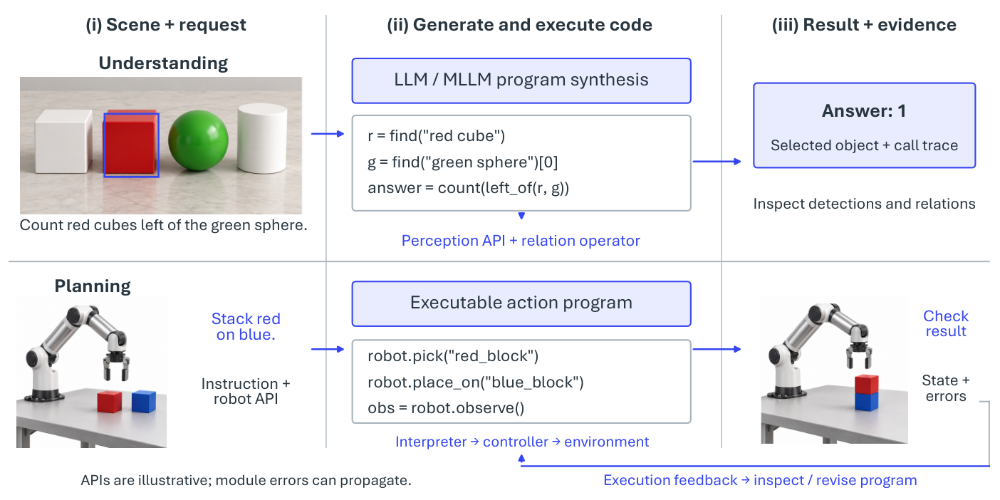
Task Definition
Given a high-level, often ambiguous, natural-language query \(q\) and access to an API \(\mathcal{A}\) (a robot’s control interface, a programming-language interpreter, or a set of vision-language functions), the LLM acts as a high-level planner that emits a program and offloads execution to the external system \(\mathcal{E}\), \[\begin{equation} P=\mathrm{LLM}(q,\mathcal{A}),\qquad y=\mathrm{Exec}(P;\mathcal{E}), \end{equation}\] where \(P\) is written in a general-purpose language such as Python or in a domain-specific language and composed of calls that manipulate objects, query spatial relations, or control an agent, and the output \(y\) is a change in the environment’s state (a robot moving an object), an answer to the query, or both.
Methodology
Code/DSL for Understanding.
For static scenes the LLM generates code that dissects a visual query
by composing calls to perception modules, so the program is itself an
explicit, verifiable reasoning chain.
VisProg
prompts an LLM to produce a program in a high-level DSL that
sequentially invokes modules for image understanding, image
manipulation, and knowledge retrieval, implemented either heuristically
in Python or by neural models such as
OWL-ViT
and Stable
Diffusion .
ViperGPT
instead exposes two classes, ImagePatch and
VideoSegment, whose methods (find,
exists, compute_depth,
verify_property) each call a pretrained model, and
generates a Python script that chains these calls to answer a complex
query about an image or video, composing existing vision tools
zero-shot. Both depend on a static, human-defined DSL;
VADAR
removes that limit by synthesizing the API implementations dynamically,
in an API-generation stage followed by program synthesis, and
LEFT
makes the approach learnable by having the LLM generate differentiable
logic programs that chain trainable perception networks, so concept
grounding can be learned where no pretrained module exists. The same
recipe lifts to 3D:
LLM-Grounder
decomposes a grounding query into Python code that calls 3D grounding
tools such as
OpenScene
or
LERF
to locate objects in a scene.
Code/DSL for Planning.
Beyond static understanding, the generated code can serve as a policy that acts in an environment, with the LLM as high-level planner and the interpreter handling deterministic low-level execution. Code as Policies has the LLM write Python that calls a robot’s control API, so that “put the apple in the bowl” becomes robot.pick(’apple’) followed by robot.place(’bowl’), with implicit steps and preconditions supplied by the model’s common sense. In simulation, Voyager explores Minecraft by writing, executing, and refining its own code: it prompts the LLM for code to achieve a goal, receives environment feedback (success, failure, new inventory items), debugs accordingly, and adds successful routines to a growing library of reusable skills.
Benchmarks
Code/DSL generation for spatial reasoning is typically evaluated under three benchmark families that mirror the two-mode split of the §Methodology above. For 2D scene understanding, methods are evaluated on compositional visual question answering (GQA ), referring expression comprehension (RefCOCO / RefCOCO+ / RefCOCOg ), and image-editing benchmarks. For 3D scene understanding, evaluation has converged on 3D referring expression and 3D visual grounding benchmarks (e.g. , ScanRefer , Multi3DRefer , ScanQA ), which exercise both the perception-API composition and the long-tail of object-attribute reasoning. For embodied planning, the canonical evaluation suites are ALFWorld and VirtualHome (long-horizon household tasks) and Minecraft (open-world goal acquisition, as exemplified by Voyager ); the headline metric in this family is task-success rate over multi-step goals rather than single-step accuracy. Across all three families, the recurring methodological observation is that code-generation methods inherit the accuracy of their underlying perception or control modules, so benchmark performance tracks the module suite more tightly than it tracks the LLM backbone.
Challenges and Trends
The interpretable trace comes with three recurring limits. A
fixed, human-authored DSL (ViperGPT’s find
/ compute_depth / verify_property) restricts
the model to a predefined operation set, so spatial concepts outside the
API are systematically out of reach; VADAR’s dynamic API
synthesis
is a response but does not solve the coverage problem. Brittle
execution with silent failure follows from the dependence on
perceptual modules
(OWL-ViT ,
OpenScene ,
LERF ):
an upstream error propagates through the program and yields a plausible
but wrong answer with no diagnostic signal. Sample-inefficient
debug loops limit self-refinement agents such as
Voyager
and Code as
Policies ,
whose LLM calls per task scale poorly in high-dimensional or stochastic
environments.
Two directions follow. PoT-style execution-grounded rationales are being folded back into chain-of-thought training, with the generated program serving as both rationale and verification signal, and learnable DSLs such as LEFT replace fixed perception with differentiable logic programs whose components are trainable, pointing toward a DSL that adapts under task supervision rather than being hand-engineered.
Tool-augmented Reasoning
Tool-augmented reasoning in spatial intelligence is the paradigm in which an LLM or VLM acts not as an isolated solver but as an orchestrator over a catalogue of external operators. These operators may be planners, renderers, CAD systems, physics simulators, retrieval engines, perception modules, or metric estimators. The section boundary is deliberately operational: tools are treated as black boxes with input–output contracts, and the central research problem is the orchestration policy that decides when to call them, how to parameterize the call, and how much to trust the returned result. When the executable program itself becomes the reasoning trace, the detailed treatment belongs to code / DSL generation (§2.3.4); when persistent external memory becomes the learned object, it belongs to retrieval- and memory-augmented reasoning (§2.3.6); when the loop becomes closed-loop control, it becomes agentic spatial reasoning (§2.3.7); and when the tool is a learned predictive simulator, the specialized discussion is world-model-based reasoning (§2.3.8).
![Tool-augmented spatial reasoning as iterative orchestration
over black-box tools: (i) scene, instruction, and tool catalogue \(\mathcal{T}\) , (ii) an LLM/VLM that selects
tool \(i_t\) with arguments \(q_t\) , receives result \(r_t\) , and appends to history \(h_t\) until STOP, and (iii) the answer or
plan with its tool-call trace. Execution, representation, validation,
and memory are tool roles, not sequential stages. Solid and dashed boxes
mark the selected cube and target compartment; the scene is a generated
illustration with annotated, not detected, overlays.](book-assets/figures/part3/section7/tool_augmented_spatial_reasoning.png)
Task Definition
A tool-augmented reasoning system is formally defined as a tuple \((\mathcal{M}_\theta, \mathcal{T}, \pi_\phi)\), where \(\mathcal{M}_\theta\) denotes the reasoning core, \(\mathcal{T} = \{T_1, \dots, T_k\}\) is a catalogue of external tools, and each tool \(T_i : \mathcal{I}_i \rightarrow \mathcal{O}_i\) is exposed only through a structured input–output interface. The orchestration policy \(\pi_\phi\) governs tool selection, argument construction, response parsing, retry / fallback behavior, and feedback integration. Given an input \(x \in \mathcal{X}\), the system maintains a time-ordered reasoning history \(h_t\) (initially \(h_0 = \varnothing\)) and proceeds by the iterative update \[\begin{equation} \begin{aligned} s_t &= \mathcal{M}_\theta(x, h_{t-1}), & (i_t, q_t) &= \pi_\phi(s_t), \\ r_t &= T_{i_t}(q_t), & h_t &= h_{t-1} \mathbin{\Vert} (s_t, i_t, q_t, r_t), \end{aligned} \end{equation}\] where \(s_t\) is the intermediate reasoning state, \((i_t, q_t)\) is the selected tool-and-query pair, \(r_t\) is the returned result, and \(\Vert\) denotes appending to the interaction history. The loop halts when the policy or model emits a STOP decision, after which an output decoder \(g\) produces the final answer \(y = g(h_T)\). Both the reasoning core and the tool internals are black-box; what is exposed, optimized, and evaluated is the interface history and the policy that controls it.
Methodology
Two design choices interact: the tool catalogue determines which black-box capabilities are available, and the orchestration policy determines how they are sequenced, checked, and folded back into the model’s spatial answer. The catalogue roles below are complementary, not sequential.
Execution-Augmented Reasoning.
Execution tools bridge the semantic–geometric gap between high-level language and low-level feasible action : they expose callable primitives such as motion planners, robot skills, affordance estimators, navigation controllers, or simulator actions, and the orchestrator translates a spatial intention into a sequence of calls, monitors whether the result satisfies the goal, and recovers when a tool fails. Representative systems include affordance-grounded planning, where language-model outputs are modulated by value functions for skill feasibility ; API- or code-mediated manipulation, where perception and control primitives are composed through generated calls ; and action-token models that fold robot actions into the model vocabulary . SpatialClaw studies the action interface itself: a stateful Python kernel pre-loaded with perception and geometry primitives lets the agent execute one analysis step, observe intermediate outputs, and adapt the next call rather than committing to a full static program. Closed-loop feedback and hierarchical decomposition push this family toward agentic orchestration.
Representation-Augmented Reasoning.
Representation tools externalize spatial working memory through sketches, 3D renders, CAD systems, scene graphs, game engines, or visualization buffers, motivated by the observation that transformers struggle to manipulate fine-grained geometry internally . Externalization reduces hallucination by moving spatial computation out of parametric memory and enables iterative self-correction through visual feedback loops ; the claim is that spatial reasoning improves when models can see what they think, as in Vision-Augmented Prompting , which interleaves image synthesis with chain-of-thought so that textual and visual reasoning can be reconciled. Recent spatial-tool agents make the evidence acquisition active: PERIA pairs perception tools that expose symbolic or spatial evidence with interaction tools that manipulate the visual context, learning multi-tool behavior from synthesized trajectories and reinforcement learning, and S-Agent casts the VLM as a semantic planner over a hierarchy of spatial tools that lift 2D object evidence into 3D geometric support while accumulating scene and agent memory across multi-view images or video.
Validation-Augmented Reasoning.
Validation tools check whether intermediate outputs are logically, causally, geometrically, or physically consistent: the orchestrator translates a candidate answer or plan into a verifiable representation and queries a planner, solver, judge, or simulator.
Generated spatial plans can be encoded as constraint-satisfaction problems or PDDL specifications and validated by symbolic planners or SMT solvers , which checks preconditions, geometric relations, and causal effects;
physics simulators such as MuJoCo and Isaac Sim8 act as physical oracles for the feasibility of proposed movements, collisions, and trajectories ;
neuro-symbolic systems integrate Answer Set Programming solvers that translate natural language into formally verifiable logical rules for relational and topological coherence ;
and plan-critic mechanisms or an LLM-as-a-Judge that evaluates and refines the plans of a primary planner close a self-correcting loop .
Memory-Augmented Reasoning.
Memory tools expose external storage and retrieval through a black-box query interface: the orchestrator asks for relevant prior observations, spatial subgraphs, object histories, or task episodes and decides how to incorporate what is returned, which addresses the “crisis of context” in long-horizon robotic tasks whose sensory streams exceed the finite context window of an LLM. At this level the memory may be a hierarchical cognitive architecture such as RoboMemory or an open-vocabulary 3D scene graph such as ConceptGraphs (both treated in §2.3.6), a classical 3D or dynamic scene graph , or a system-level memory manager: MemOS introduces paging and scheduling that swap spatial contexts in and out of the reasoning core, treating the LLM as a CPU and the tool as RAM, and spatio-temporal retrieval engines such as ReMEmbR and MemoTime index video history in vector databases so that an agent can answer “where did I leave the keys five minutes ago?”.
Predictive Tools and World-Model Feedback.
Some catalogues include tools that simulate counterfactual or future spatial states rather than observe or verify the present one: generative video models, learned dynamics models, and predictive latent models are called as expensive but powerful instruments for “what would happen if” or “what would this look like from another viewpoint” . Here they are one class of callable tool; their feedback forms, imagination cost, and fidelity are the subject of §2.3.8.
Benchmarks
Evaluation asks whether the orchestrator selects useful tools and converts their outputs into better spatial decisions. For execution-augmented tool use the canonical suites are SayCan (LLM-grounded household manipulation), ALFWorld and VirtualHome (long-horizon text-and-embodied environments), and Voyager-on-Minecraft (open-world skill accretion through code-as-policy). For spatial-reasoning-specific tool use, SpaceTools targets the metric gap between VLM perception and physical manipulation, and Cambrian-S introduces the spatial-supersensing framework that exercises tool augmentation from perception (Stage I) to predictive world modeling (Stage IV). Validation- and memory-augmented reasoning are evaluated on the memory and agentic benchmarks of §2.3.6 and §2.3.7, and predictive tools on those of §2.3.8, where the central question is whether imagined evidence improves the final answer enough to justify its cost.
Challenges and Trends
The recurring limitations originate in the LLM–tool interface rather than in any individual tool. The exploration bottleneck is combinatorial: each tool adds an action dimension and tool composition multiplies them, so naive reinforcement learning over tool use is inefficient; Double Interactive Reinforcement Learning (DIRL) warm-starts from expert demonstrations before open exploration, but the scaling of the action space itself is unresolved. The metric gap moves rather than disappears: VLMs excel at semantic perception but fail at the precise metric estimation manipulation requires, and offloading geometry to depth estimators and pose solvers lets the LLM reason over measurements instead of hallucinations , yet query formulation, output parsing, and error attribution at the interface become the new precision bottleneck. Interface calibration compounds this: tool outputs arrive with heterogeneous units, confidence scores, coordinate frames, and failure modes, and an orchestrator that cannot judge whether a returned depth map, solver result, retrieved memory, or imagined rollout is trustworthy can perform worse than a direct model response.
Learned orchestration is one direction: policies are moving from hand-written call rules toward imitation- or reinforcement-learned controllers that decide which tool is worth its latency and uncertainty budget . A parallel shift is the System-1 / System-2 architectural split, in which the neural backbone handles fast, intuitive perception (System 1) while the toolset handles slow, deliberative, verifiable reasoning (System 2) , achieving both flexibility and rigor.
Retrieval- & Memory-augmented Spatial Reasoning
Retrieval- and memory-augmented spatial reasoning is best understood through a Planner-Memory-Retriever decomposition. The Planner \(\mathcal{P}\) decides what spatial information is needed for the current instruction; the Memory Bank \(\mathcal{M}\) stores an external, updateable state of the world; and the Retriever \(\mathcal{R}\) selects the subset of that memory that should condition the next reasoning or action step. Unlike one-shot retrieval-augmented generation, spatial memory must also support write and update: an agent may discover that a door is blocked, that an object has moved, or that a previous topological belief was wrong, and the memory state must change accordingly.
The memory bank is therefore not merely a text corpus. In spatial domains, \(\mathcal{M}\) may contain vector embeddings of views and instructions, metric maps and voxel belief states, dynamic 3D scene graphs, frontier snapshots, past trajectories, user preferences, and brain-inspired episodic archives. The central problem is to make these heterogeneous memories queryable: semantic retrieval must locate relevant objects and events, while geometric retrieval must preserve relations such as containment, support, reachability, and path connectivity.

Task Definition
Where §2.3.5 treats memory as one black-box tool among others, here the external memory itself is the central learning target. Formally, a retrieval- & memory-augmented system is the triple \((\mathcal{P}, \mathcal{M}, \mathcal{R})\), where \(\mathcal{P}\) is a reasoning core (an LLM, VLM, or embodied planner), \(\mathcal{M}\) is an external memory store, and \(\mathcal{R}: \mathcal{Q} \times \mathcal{M} \to \mathcal{C}\) maps a query \(q_t\) and the current memory state to a relevant context fragment \(c_t\). Given an instruction \(x\), an observation stream \(o_t\), and a reasoning history \(h_t\) (initially \(h_0 = \varnothing\)), the system proceeds by the iterative update \[\begin{equation} \begin{aligned} q_t &= \mathrm{Query}_{\mathcal{P}}(x, o_t, h_{t-1}), & c_t &= \mathcal{R}(q_t, \mathcal{M}_{t-1}), & s_t &= \mathcal{P}(x, o_t, c_t, h_{t-1}), \\ \mathcal{M}_t &= \mathrm{Write}(\mathcal{M}_{t-1}, o_t, s_t, c_t), & h_t &= h_{t-1} \cup \{(o_t, q_t, c_t, s_t)\}, \end{aligned} \end{equation}\] where \(\mathrm{Query}_{\mathcal{P}}\) extracts the planner’s information need, \(\mathcal{R}\) returns the retrieved context, and \(\mathrm{Write}\) inserts, revises, or invalidates memory entries using the newest observation and decision state. The decomposition brings three concrete advantages: scalability, by letting agents operate over large environments while fetching only task-relevant subgraphs or vectors; personalization, through targeted retrieval of user profiles, historical preferences, and episodic interactions; and explainability, since decisions can be traced to the specific memories, rules, or map fragments that were retrieved.
Methodology
Three families of memory architecture instantiate the \((\mathcal{P}, \mathcal{M}, \mathcal{R})\) triple at different levels of abstraction and scale.
Retrieval-Augmented Generation for Navigation and Instruction.
Vision-and-Language Navigation (VLN) demands a tight coupling of visual perception, language understanding, and action generation, and retrieval-augmented generation (RAG) bridges high-level planning and local observation by externalizing spatial context; the design question is what the memory bank should store and how the retriever should index it.
Textual abstraction vs. visual fidelity. NavRAG argues for hierarchical abstraction: a “Hierarchical Scene Description Tree” converts the 3D environment into structured text (Region \(\rightarrow\) Object \(\rightarrow\) Attribute), so the retriever can access information at the granularity the query requires, at the cost of visual nuance. VisRAG takes the opposite stance with a multimodal pipeline that bypasses text parsing entirely: a VLM retrieves images directly from the query, preserving texture, lighting, and style that text-only retrieval discards.
Privileged maps vs. egocentric mental simulation. A second line replaces privileged global maps with human-like episodic memory. GoViG generates instructions solely from egocentric observations of start and goal states, alternating between predicting the next visual view and generating the corresponding instruction, so that the navigational narrative is built on a hallucinated path; retrieval shifts from static facts to potential futures.
Hybridizing spatial and semantic logic. Retrieval in physical spaces requires logic that pure semantic search cannot provide (e.g. , “near”, “inside”, “along”). Spatial-RAG combines sparse spatial filtering (SQL-based constraints) with dense semantic matching, formulating retrieval as multi-objective optimization, which is what grounds CoT reasoning so that multi-step plans respect geometric feasibility.
Dynamic 3D Scene Graphs and Subgraph Retrieval.
As environments grow, flat memory representations such as point clouds become intractable, and hierarchical abstraction through 3D scene graphs (3DSGs) has taken over: Hydra builds metric-semantic scene graphs in real time, and open-vocabulary successors embed vision–language features directly into graph nodes , turning scene graphs from rigid structural maps into queryable vector stores. Because global graphs overwhelm planner context windows, processing has moved from holistic graph analysis to sparse subgraph retrieval, through semantic pruning or RAG-based mechanisms that isolate task-relevant topological neighborhoods. The convergence of graph and vector retrieval matters for spatial memory in particular: graph edges preserve physical relations, while vector neighborhoods preserve open-vocabulary semantic similarity.
Unified and Brain-Inspired Memory Architectures.
RAG provides access to information; the organization of that information is equally critical, and recent architectures borrow the brain’s division of labor. RoboMemory integrates working, short-term, and long-term memory in one cognitive framework so that the agent iteratively refines its model of the environment, and 3D-Mem takes a visual-centric route, using “frontier snapshots” to manage exploration and hallucinate potential future states. 3DLLM-Mem grounds the integration of retrieved memory into the inference stream with a memory fusion layer that cross-attends from the current instruction into the stored 3D memory bank: \[\begin{equation} f^Q_{\text{fuse}} = \mathrm{Softmax}\!\left( \frac{f^Q_t (f^K)^\top}{\sqrt{C}} \right) f^V, \end{equation}\] where \(f^Q_t\) are the query features of the current instruction and \(f^K\), \(f^V\) the keys and values derived from the memory bank. Addressing specific failure modes, VLM\(^2\) introduces a dual-memory module for the semantic–geometric misalignment of video-based spatial reasoning, and Vision-to-Geometry incorporates geometric cues such as field-of-view coverage to prevent redundant re-exploration.
Benchmarks
Progress in memory-augmented spatial reasoning requires separating memory-specific tests from broad spatial probes.
Memory-specific evaluation.
3DMem-Bench serves as a standard for assessing long-term persistence: comprising over 26,000 trajectories, it challenges agents with Spatial–Temporal QA (e.g. , “What color was the bed in the room you visited five minutes ago?”), requiring the retrieval of past observations that are no longer in the active context. Moving beyond static environments, EmbodiedBench tests long-horizon planning where objects are moved or manipulated during the task, benchmarking the write/update capability of memory systems, their ability to overwrite obsolete data without catastrophic forgetting. OpenEQA offers a complementary episodic-memory setting by asking questions about an environment the agent has previously explored, making it useful for measuring whether retrieved experience rather than immediate perception supports the answer.
Broad spatial probes as diagnostic complements.
Benchmarks such as SpaCE-10 , SITE , and the static probes collected in Table [tab:spatial_reasoning_benchmark] (OmniSpatial , Spatial-DISE , Open3DVQA ) evaluate spatial orientation, perspective taking, metric estimation, open-space 3D relations, and intrinsic/extrinsic static or dynamic reasoning. They are valuable for diagnosing what information a memory system should retain (viewpoint-dependent relations, object-centric attributes, multi-step multi-view dependencies), but they are not memory benchmarks unless the protocol hides necessary information in a prior episode and requires retrieval from \(\mathcal{M}\): a model can fail a broad spatial probe because it lacks geometric perception, because it retrieved the wrong memory, or because the memory was never written in the first place.
Challenges and Trends
The recurring limitations originate in the Planner-Memory-Retriever interface rather than in any individual component. Query formation under unbounded context is the central bottleneck, not memory size alone: the act of deciding what to retrieve requires compressing the current task, viewpoint, uncertainty, and history into a finite representation, and memory paging and scheduling alleviate but do not remove the need for a learned retrieval policy. Write/update consistency is where append-only memories become dangerous: agents need mechanisms for reconciling conflicting observations, invalidating stale object locations, and representing uncertainty when the world may have changed since the last visit; EmbodiedBench-style protocols make the issue visible, but robust update semantics remain open. Integration mechanics are unresolved between in-context learning, which concatenates retrieved text to the prompt (simple but token-inefficient), and cross-attention fusion, which injects retrieved 3D features into attention layers (3DLLM-Mem ; expressive but architecture-coupled), with no clear winner on the fidelity–modularity trade-off. Modality mismatch has no general theory: RAG-over-text (NavRAG ) discards visual nuance, RAG-over-images (VisRAG ) loses structural priors, and when to retrieve text, images, or 3D representations remains task-dependent.
Memory is shifting from static maps to dynamic semantic belief states: systems store probabilities, semantic labels, and interaction histories rather than coordinates, enabling agents to reason under uncertainty about where an object likely resides given commonsense and past observation, as RoboMemory typifies. Graph- and vector-based retrieval are converging into hybrid architectures that use vector search to identify graph entry nodes and topological traversal for neighborhood reasoning. Most abstractly, meta-cognitive memory such as Meta-Memory generates task-specific “cognitive maps” and retrieves strategies rather than raw data, pointing toward learnable retrieval policies and bridging into the agentic orchestration of §2.3.7.
Agentic Spatial Reasoning
Agentic spatial reasoning asks how a model organizes interaction with space. The core object is not a single chain-of-thought prompt, tool call, memory store, VLA policy, or world model, but an orchestration policy that repeatedly decides what to perceive, what to infer, what to do, and how to revise its state after feedback. In this closed-loop view, a wall is not only a geometric plane but also a constraint on motion; a cup is not only an object category but also a potential affordance; and a failed action is not only an error but also evidence that should reshape the next plan.
“Agentic” is therefore a composition principle: the rationales, programs, tools, memory, VLA policies, and world models of the preceding subsections become resources inside a perceive–reason–act–reflect loop, and the research question is how the loop is scheduled and corrected: when should the agent gather more evidence, retrieve memory, call a geometric tool, simulate a future, ask another agent, or execute an action?
![Agentic spatial reasoning as closed-loop orchestration. Top:
(i) instruction, observation, robot state, tools, and memory, (ii) the
perceive–reason–act–reflect loop under planning core \(\mathcal{P}\) and policy \(\pi\) , and (iii) complementary, not
simultaneous, output forms; the door-state sequence is a prediction and
the failed counter search is feedback from a different step. Bottom:
(a)–(d) mechanisms that support the loop. The scene is a generated
illustration, not an experimental observation.](book-assets/figures/part3/section7/agentic_spatial_reasoning.png)
Task Definition
Whereas §2.3.5 treats tools as black-box operators and §2.3.6 treats external memory as the central learning target, agentic spatial reasoning composes both into a closed-loop cycle in which the orchestration policy itself becomes the learning target. Formally, an agentic spatial reasoning system is the tuple \((\mathcal{P}, \mathcal{S}, \mathcal{A}, \mathcal{F}, \pi)\), where \(\mathcal{P}\) is a planning core (an LLM or VLM), \(\mathcal{S}\) is the spatial state space (perception, internal map, history), \(\mathcal{A}\) is the action space (sensorimotor commands or sub-goals), \(\mathcal{F}\) is a reflection / critic function that scores proposed actions or rationales, and \(\pi\) is the orchestration policy. Given an instruction \(x\), the system maintains a history \(h_t\) (initially \(h_0 = \varnothing\)) and proceeds by the iterative perceive–reason–act–reflect cycle \[\begin{equation} \begin{aligned} o_t &= \mathrm{Perceive}(\text{env}), & s_t &= \mathcal{P}(o_t, h_{t-1}), \\ a_t &\sim \pi(\cdot \mid s_t), & r_t &= \mathcal{F}(s_t, a_t, o_{t+1}), \\ h_t &= h_{t-1} \cup \{(o_t, s_t, a_t, r_t)\}, \end{aligned} \end{equation}\] where \(\mathrm{Perceive}\) extracts the current spatial observation, \(\pi\) samples a proposed action, \(\mathcal{F}\) supplies a reflection signal (verbal critique, planner-critic verdict, or value estimate), and the history accumulates all four. This formulation makes explicit that “agentic” is not a new capability but rather a structural promotion: the orchestration policy \(\pi\) becomes the central learning target rather than the planner \(\mathcal{P}\) or any individual tool.
Methodology
Four orchestration problems organize the methods: grounding observations into executable state, closing the feedback loop, coordinating across agents, and using action and world-model modules without reducing agency to any one of them.
Grounding Observations into Executable State.
The first responsibility of an agentic loop is to convert an instruction and observation into a state that can support action, preserving referential consistency between the agent’s internal model and the physical environment. Probabilistic affordance alignment, as in SayCan , PaLM-E , and RT-2 , weights the likelihood of an instruction (“pick up the apple”) by the geometric feasibility of the action in the current scene; spatial reasoning stays implicit, and the orchestration layer must decide whether that is sufficient or whether to request an explicit representation. Explicit intermediate representations supply the precision implicit alignment lacks: SpatialCoT compels the VLM to output metric coordinates inside its chain of thought, a “think-coordinate-act” cycle that creates a verifiable spatial bottleneck; Embodied-R1 uses reinforcement learning to refine a pointing representation so that the model outputs 3D reference points (spatial anchors) that decouple high-level planning from motor control; and procedural querying treats the environment as a queryable database, through dynamically synthesized APIs (VADAR, §2.3.4) or a stateful code kernel that executes one cell at a time and revises the next from the observed outputs (SpatialClaw, §2.3.5). Beyond the immediate percept, agents ground reasoning in persistent structured abstractions: object-centric 3D scene graphs such as ConceptGraphs (§2.3.6) let the agent reason over topological relations (“behind”, “supported by”) rather than raw geometry, and MapGPT converts topological maps into textual prompts that give the LLM a global view of connectivity for long-horizon planning.
Closing the Feedback Loop.
Agentic spatial reasoning is a temporal process rather than a single inference, and the methodological shift is from producing one rationale to maintaining a loop that observes the consequences of its own choices. The chain-of-thought paradigm (§2.3.3) improved reasoning depth but remained open-loop; ReAct closed the loop by interleaving reasoning traces with executable actions so that spatial outcomes are observed before the next step is planned. Observation alone is often insufficient for correction, so Reflexion introduced “verbal reinforcement learning”, in which the agent writes explicit critiques of its failures into short-term context, and DEPS forces the agent to explain failures in geometric terms before choosing new sub-goals, turning retrying into debugging. For coherence across long horizons, agents need memory beyond the context window: Voyager (§2.3.4) stores successful spatial behaviors as executable code in a vector database and retrieves them when a similar context recurs, consolidating transient experience into procedural knowledge. Reflection can also precede execution. Reasoning via Planning (RAP) and Tree of Thoughts explore branching spatial possibilities in a latent space; STMA ties such simulation to dynamic knowledge graphs with planner–critic loops that validate whether a proposed path is topologically valid; and vision-language world models such as VLWM roll out semantically described future states so that the orchestration policy can compare hypothetical futures before committing.
Coordinating Multiple Spatial Agents.
In shared environments spatial reasoning becomes distributed, and movement has to be negotiated across perspectives and intents. Multi-agent reinforcement learning induces spatial cooperation without explicit communication, as in the SMAC formations learned by decentralized actor–critic and value-decomposition methods (§2.2.6), but there each agent treats the others as dynamic obstacles and has no symbolic model of its partners. A spatial theory of mind adds the ability to model another agent’s geometric viewpoint, transforming egocentric perception into an allocentric frame (“my left” is “your right”): RoCo uses foundation models for embodied dialog in which agents disambiguate spatial references by simulating the partner’s visual field, and ProAgent shows agents communicating to update a shared map and synchronize movement, converging on a common “language of space”.
Orchestrating Action and World-Model Modules.
Generalist VLA policies and world models are components of agentic systems, but they do not by themselves define agency; they become agentic when an orchestration policy uses them inside the loop, with a VLA module executing a sub-goal, a world model predicting the consequence of a candidate action, and a reflection module deciding whether to retry, replan, or gather more evidence. What makes an action representation useful to a loop is that it exposes intermediate commitments the loop can inspect, revise, or hand to a controller: beyond the unified action interfaces of RT-2 , Gato , and Octo , world-language-action models jointly predict textual subtasks, subgoal images, and robot actions, and ACoT-VLA reasons through coarse action intents before fine-grained control. Cross-embodiment transfer (§2.3.2; RoboCat’s self-improvement cycles adapt to new bodies ) becomes an orchestration problem too, since the same high-level plan may require different perception checks, affordance tests, and recovery routines on different bodies. World models (§2.3.8), from DreamerV3 and Genie to WorldPilot-style prediction inside planning loops , serve the loop as cognitive simulators: the agentic use is not video generation for its own sake but closed-loop decision support, in which the agent imagines, critiques, and then acts.
Benchmarks
Evaluating agentic spatial reasoning requires benchmarks that go beyond static visual question answering: a useful protocol tests whether the agent can gather missing observations, choose tools or actions, use memory across long horizons, and revise its plan after feedback, and static spatial probes should be read as component diagnostics rather than direct evidence of closed-loop agency. Two protocols exercise the loop directly: iVISPAR evaluates VLMs as agents in an interactive sliding-tile setting with visual 2D, visual 3D, and text inputs, where the answer depends on multi-step state transitions rather than one-shot recognition, and TIR-Bench requires agents to use tools (zoom, crop, rotate) to manipulate images while solving spatial puzzles. Memory-centered settings (OpenEQA , §2.3.6) and open-3D probes such as Open3DVQA test what the loop must retain, and the broad visual-spatial probes (SpatialEval , VSI-Bench , OmniSpatial , Spatial-DISE ) identify weak spatial primitives along the axes of static vs. dynamic content, single vs. multi-view, ego vs. exo perspective, and seen vs. unseen queried information; Table [tab:spatial_reasoning_benchmark] maps the coverage.
| Benchmark | QA / Tasks | Modality | Scene | View Type | Perspective | Interactive | Query Target | ||
|---|---|---|---|---|---|---|---|---|---|
| Single | Multi | Ego | Exo | ||||||
| 3DSRBench | 2,772 | Image | Static | ✓ | ✗ | ✗ | ✓ | ✗ | Seen |
| InternSpatial-Bench | 6,008 | Image | Static | ✓ | ✗ | ✗ | ✓ | ✗ | Seen |
| OmniSpatial | \(\sim\)8,400 | Image | Static | ✓ | ✗ | ✓ | ✓ | ✗ | Seen |
| Spatial-DISE | 559 | Image | Mixed | ✓ | ✓ | Taxonomy | ✗ | Seen | |
| Open3DVQA | 9,000 | 3D / Sim | Static | ✓ | ✗ | ✓ | ✓ | ✗ | Seen |
| iVISPAR | Puzzles | 2D/3D/Text | Dynamic | ✓ | ✗ | N/A | ✓ | State | |
| Spatial457 | 23,752 | Image | Static | ✓ | ✗ | Undeclared | ✗ | Seen | |
| All-Angles Bench | \(\sim\)2,100 | Image | Static | ✗ | ✓ | Undeclared | ✗ | Seen | |
| EmbSpatial-Bench | 3,640 | Image | Static | ✓ | ✗ | ✓ | ✗ | ✗ | Seen |
| MMSI-Bench | 1,000 | Image | Static | ✗ | ✓ | Undeclared | ✗ | Seen | |
| MindCube | 21,154 | Image | Static | ✗ | ✓ | Undeclared | ✗ | Unseen | |
| VSI-Bench | 5,130 | Video | Static | ✓ | ✗ | ✓ | ✗ | ✗ | Seen |
| VLM4D | \(\sim\)1,800 | Video | Dynamic | ✓ | ✗ | ✓ | ✓ | ✗ | Seen |
| STI-Bench | 2,064 | Video | Dynamic | ✓ | ✗ | ✓ | ✓ | ✗ | Seen |
| DSI-Bench | \(\sim\)1,700 | Video | Dynamic | ✓ | ✗ | Undeclared | ✗ | Seen | |
Table [tab:spatial_reasoning_benchmark] should be read as a coverage map, not as a leaderboard for agentic systems. Most entries evaluate static answer generation or localized visual-spatial primitives; only interactive protocols such as iVISPAR and tool-use settings directly exercise action selection and feedback. Claims about agentic spatial reasoning should therefore report loop-level metrics (observation gathering, action choice, recovery after failure, memory update, and final task success) rather than single-turn accuracy alone.
Challenges and Trends
Boundaries are collapsing between language and action (VLAs), between robot bodies (cross-embodiment), and between perception and imagination (world models), and two difficulties gate progress toward generalist spatial agents. The sim-to-real fidelity gap: high-fidelity simulators (predictive world models, generative video) accelerate training but introduce systematic biases that physical execution exposes, and the cost–precision frontier for transfer remains open. Long-horizon spatiotemporal coherence: across multi-hour episodes the agent’s internal map drifts, and episodic memory and reflection reduce but do not eliminate the drift, because the bottleneck is the finite context window of the planning core.
Explicit orchestration over observation–state–action–reflection tuples is one direction: VLA and WLA systems are beginning to expose intermediate subgoals, action intents, and predicted states that a loop can inspect rather than hiding all control inside a single forward pass. A second is mental simulation via generative world models: DreamerV3-style, Genie-style, VLWM-style, and WorldPilot-style models let agents verify spatial logic in imagination before acting, shifting the paradigm from “trial-and-error” toward “trial-in-imagination” while keeping the agentic focus on when to simulate, when to act, and when to revise.
World-Model-based Spatial Reasoning
A world model is a neural simulator of how world states transition, conditioned on an agent’s actions and/or external multi-modal context. Trained on large-scale episode trajectories, it acquires a generalizable, latent model of environment dynamics. This subsection treats that model as a tool: the object of study is the spatial-reasoning task, and the world model is the instrument used to solve it. Its defining capability is that it simulates the world and can therefore return a predictive feedback signal, a rollout of imagined futures or a dynamics-aware latent, that a reasoner consumes to answer a spatial query or to plan. We accordingly organize the discussion by how the world model is queried and what feedback it returns, rather than by how it is built. The complementary question of how world models are themselves constructed, trained, and scaled is the subject of §3.6 (World Modeling); here we take a pretrained world model as given. Figure 2.28 schematizes this tool-use formulation; its two usage modes, understanding-oriented and planning-oriented, cut across the feedback forms surveyed below.
![World-model-based spatial reasoning read as tool use: (i) a
spatial query \(q\) with context \(c\) and optional actions \(a_{0:T-1}\) ; (ii) a pretrained world model
(constructed and trained as in § 3.6 )
whose predictive feedback \(f\) takes
four possibly overlapping forms, namely (a) future observations, (b)
future states, (c) action-conditioned trajectories, and (d) predictive
latents; and (iii) a readout \(y=g(c,f)\) that gives an inferred relation
(understanding) or a selected plan (planning). The robot scenes are
illustrative, not experimental observations.](book-assets/figures/part3/section7/world_model_based_spatial_reasoning.png)
Task Definition
The task addressed in this subsection is spatial reasoning itself: given a query \(q\) about a scene together with the available context \(c\) (a textual description, one or more observations, or a scene specification), a reasoner must produce a spatial answer \(y\), either an inferred spatial property \(o\) (e.g. , a relation, a structure, or a physical attribute) or a plan / policy \(\pi\) that acts on the scene. What distinguishes the methods surveyed here is how they arrive at \(y\): rather than mapping \(c\) to \(y\) in a single feed-forward pass, the reasoner consults a world model as an auxiliary instrument that can imagine how the scene would look or evolve, and reasons over that imagined evidence. Concretely, the world model is a pretrained simulator exposing a distribution \(\mathbb{P}(s_0, s_1, \dots, s_T \mid a_0, a_1, \dots, a_{T-1}, c)\) over world states \(s_t\), or over their partial observations \(\operatorname{proj}(s_t)\) when full states are unavailable, optionally conditioned on an action sequence \(\left\{a_t\right\}_{t=0}^{T-1}\) (null when the model is action-free). A world-model-based reasoner treats \(\mathbb{P}\) as a queryable tool: given the query, it (i) conditions \(\mathbb{P}\) on the context \(c\) and, when planning, on a candidate action sequence; (ii) draws predictive feedback \(f\) from \(\mathbb{P}\), a rollout of future observations, future states, or action-conditioned trajectories, or a dynamics-aware latent; and (iii) applies a readout \(g\) that maps the feedback back to the spatial answer, \(y = g(c, f)\). The world model supplies the imagined evidence \(f\), but producing the spatial answer \(y\) remains the objective, and the fidelity of \(f\) bounds how much the world model can help.
Methodology
We treat the world model as a pretrained instrument and organize methods by the form of predictive feedback it returns to the reasoner. Two families emerge: generative feedback, in which the model is rolled out to synthesize explicit futures that the reasoner inspects, and latent-representation feedback, in which the model’s dynamics-aware embedding is consumed directly without decoding; the understanding-versus-planning distinction cuts across both.
Generative Feedback via Future Observations.
The most direct use of a world model is to synthesize future or counterfactual pixels and read spatial evidence off them, an analysis-by-synthesis strategy in which the reasoning outcome \(o\) (a spatial relationship, structure, or physical property) is whatever best reproduces the observed or imagined imagery under \(\mathbb{P}\). Predating deep generative models, Galileo instantiates this idea with a physics engine in place of a neural simulator: it tracks object velocities across raw videos and recovers 3D shape, mass, and friction as the parameters that best reproduce the observed motion, so that the projected state \(\operatorname{proj}(s_t)\) is the object velocity \(v_t\) and the videos themselves define the transition distribution \(\mathbb{P}(v_0, \dots, v_T \mid c)\). Modern instances replace the engine with an Internet-scale image or video diffusion prior: DragAPart , Puppet-Master , ATOP , and DreamArt fine-tune such priors into articulation simulators \(\mathbb{P}(I_0, \dots, I_T \mid c)\) whose frames \(I_t = \operatorname{proj}(s_t)\) render an articulated object under a hypothesized configuration, and recover the 3D articulation (e.g. , its motion axes) by aligning the rendered hypothesis with the synthesized video. A second, inference-time use synthesizes unobserved viewpoints to resolve spatial questions that a single view underdetermines: MindJourney lets a vision-language model “imagine” the scene from a new camera pose with a view-conditioned world model before answering, turning the world model into a test-time reasoning aid rather than a training-time simulator. Because such imagination is expensive and not always helpful, AVIC learns when and how much to imagine, gating world-model invocation on the sufficiency of the current visual evidence and matching or exceeding fixed-imagination strategies at a fraction of the world-model calls. Pushing imagination from a fixed sweep to an active policy, SpatialDreamer closes the loop: a reinforcement-learned agent chooses which viewpoints to imagine through the world model and then grounds its answer in the imagined evidence, under a geometric policy-optimization objective that rewards geometrically consistent rollouts.
Generative Feedback via Future States.
Rather than decode pixels, a second line rolls the world model out in a structured or higher-dimensional state space, trading photorealism for geometric consistency. TesserAct learns a 4D (3D-plus-time) world model whose rollouts stay spatially coherent enough to support robotic manipulation, and persistent-3D world models maintain an explicit 3D memory so that revisited regions remain consistent across long horizons. State-space feedback is attractive when the downstream query is itself geometric, since it sidesteps the appearance-modeling burden that pixel rollouts carry.
Generative Feedback via Action-Conditioned Trajectories.
When the goal is to act, the world model is queried as a simulator: candidate action sequences are rolled out and scored by the favorability of the resulting states, yielding a policy \(\pi:(s_{\leq t}, a_{<t}) \mapsto a_t\) that steers the episode toward a preferred terminal state \(s_T \in S_{\text{good}}\) (the model-based-RL view; the broader treatment of RL with spatial inductive biases is §2.2.5). The paradigm originates with Ha and Schmidhuber , who introduced the term “world model” in its current sense, training a generative recurrent model of future observations and using it as an internal simulator for policy search, and with Dreamer , which learned the simulator in a compact latent space and optimized the policy purely on imagined rollouts. Scaling this recipe, UniSim builds a video-diffusion simulator from which real-world manipulation policies can be extracted, and DreamGen uses video world models as trajectory generators, pseudo-labeling the synthesized rollouts with an inverse-dynamics model to train policies that generalize to new behaviors and environments. Most recently, VAGEN turns this feedback back onto the reasoner itself, using reinforcement learning to supervise a vision-language agent’s internal world-model reasoning: it decomposes that reasoning into state estimation (“what is the current state?”) and transition modeling (“what comes next?”) and rewards accurate latent prediction.
Latent-Representation Feedback.
A final family dispenses with generation entirely and consumes the world model’s predictive latent as the spatial signal. Joint-embedding predictive architectures learn to predict the representation of a future or masked observation rather than its pixels: I-JEPA establishes the recipe for images, and V-JEPA 2 extends it to video, yielding dynamics-aware embeddings that support understanding, prediction, and planning without ever rendering a frame, while VL-JEPA ports the idea to vision-language inputs. A related line keeps the latent explicitly geometric: 3DThinker performs 3D mental imagery during reasoning by generating a 3D latent and aligning it with that of a 3D foundation model, letting a vision-language model reason about spatial relations from only a few views without any 3D input or explicit rendering. Because the feedback is an embedding rather than an image, latent world models avoid the appearance-synthesis cost and the pixel-space memory drift that limit generative rollouts, at the price of a signal that is harder to inspect directly; they are an increasingly prominent, query-efficient alternative for spatial reasoning.
Benchmarks
Evaluation follows the usage mode. Planning-oriented use is scored on the embodied suites of §2.3.2 and on long-horizon household environments such as ALFWorld and VirtualHome , where the question is whether policies extracted from imagined rollouts transfer to the real environment. Understanding-oriented use is scored on the static spatial probes that single views underdetermine, VSI-Bench and MindCube among them, under test-time-scaling protocols that vary how many imagined views the reasoner is allowed and whether a verifier selects among them . The world model itself is assessed on video-generation quality (FVD, FID) together with task-specific physics-consistency probes, and surveys of general world models track the field’s shift from 2D toward 3D-consistent simulation , while recent analyses argue that advancing MLLM spatial reasoning demands purpose-built recipes and data rather than scale alone . No single benchmark currently exercises a world model along perception fidelity, action conditioning, and long-horizon spatial memory at once, a gap the challenges below make explicit.
Challenges and Trends
Reading the world model as a tool clarifies where the difficulties lie: some are inherited from the instrument itself, and are properly the concern of §3.6, while others are specific to how a reasoner queries it. The most active questions of 2025–2026 are no longer whether a world model can imagine, but whether its imagined evidence can be trusted and whether consulting it is worth the cost.
Imagination is not a free lunch. Systematic probes report that world-model imagination improves spatial reasoning in only a minority of cases, and that adding imagined views yields non-monotonic, sometimes negative accuracy gains at steep token and latency cost ; the sheer amount of imagination is an unreliable proxy for accuracy , which recasts “when and how much to imagine” as a first-class test-time-scaling problem, with adaptive gating an early answer and a predictive account of which queries need the world model still missing. Faithfulness is the companion problem: a world model can render fluent futures that are physically or relationally wrong, so likelihood under \(\mathbb{P}\) is necessary but not sufficient, and when the imagined evidence lacks fidelity verification buys little, since heuristic verifiers give limited calibration gains and an information bottleneck sets in, as a reasoner cannot recover a signal the imagination never contained . Grounding imagined evidence to the actual scene and calibrating trust in it remain open; physics-consistency objectives and geometry-grounded latents are partial responses.
The reasoner can be no more reliable than the simulator it queries. Even state-of-the-art models such as Genie 3 , despite markedly longer-horizon consistency, still drift in spatial memory, and consistency mechanisms narrow but do not close this gap, with hallucination and long-horizon error compounding over rollout length; raising this ceiling is the province of world-model construction (§3.6), and the reasoning methods surveyed here can only mitigate its symptoms.
The feedback forms also trade off along different axes, with no principled account of which a given query should use: pixel rollouts are inspectable but expensive and prone to appearance drift; state or 4D rollouts are geometrically consistent but require structured simulators; latent feedback is cheap but opaque; action rollouts commit early to a policy; and most systems commit to one form a priori. Extending world-model-based reasoning beyond pixels (e.g. , to forces , tactile, or audio modalities) is gated by the absence of internet-scale pre-training data in those modalities, a constraint that also surfaces in the multi-modal aspects of §2.2.6.
Two shifts define the current frontier. From external tool to trained-in reasoning: rather than invoking a frozen simulator at inference time, recent work trains the reasoner’s use of the world model, whether by reinforcement learning that supervises an internal state-estimation and transition-modeling loop or that rewards geometrically consistent active imagination , or by distilling the world model’s imagined dynamics directly into a vision-language model so that no simulator need be queried at test time . From pixels to predictive latents: the imagined branch is increasingly consumed as a latent process whose hidden states guide reasoning, rather than as a faithfully rendered video . Both shifts move the field away from ever-larger, faithfully-rendered pixel simulators and toward cheaper, more trustworthy, query-efficient feedback that a reasoner can afford to consult, and can be trained to consult well.
Hybrid Spatial Reasoning
Conventional approaches to spatial reasoning exhibit fundamental limitations. Systems that rely solely on linguistic or symbolic reasoning typically lack perceptual grounding in real-world visual and physical structures (e.g. , geometry, physics, spatial continuity), making them inadequate for handling cross-view transformations, temporal evolution, or physically coherent scenarios. Conversely, purely perceptual or vision-based systems, such as those combining visual recognition with rule-based geometric reasoning, often fall short in performing high-level abstract reasoning, multi-step planning, long-term memory integration, or interactive decision-making. These limitations have motivated a growing body of work advocating for a hybrid paradigm of spatial reasoning: integrating heterogeneous modules with distinct capabilities (perception, world modeling, memory, and action) so as to jointly leverage low-level spatial and physical cues together with high-level cognitive reasoning capabilities. A perceptual or physics-informed module supplies geometry, relations, affordances, and dynamics; a symbolic or neural module plans, infers, and abstracts over them; memory and history extend the pipeline to multi-step, multi-view, and temporally extended tasks; and because no single modality, task, or dataset carries the whole system, the composition transfers across vision-only, language-only, embodied, and multimodal settings.
Task Definition
A hybrid spatial reasoning system is a pair \((\{M_i\}_{i=1}^{k}, \pi)\): a set of \(k\) heterogeneous modules \(M_i \in \{M_\text{percept}, M_\text{world}, M_\text{symb}, M_\text{mem}, M_\text{plan}, M_\text{act}\}\), each contributing a distinct inductive bias (perception, world model, symbolic constraints, memory, planning, or action), and an orchestration function \(\pi : \mathcal{S} \to \{1, \dots, k\}\) that selects which module acts on the current system state \(s_t \in \mathcal{S}\) (perception, internal map, history). Starting from the input \(s_0 = x\), the system evolves as \[\begin{equation} s_{t+1} = M_{\pi(s_t)}(s_t), \qquad y = \mathrm{Read}(s_T), \label{eq:p3_s7_4_hybrid} \end{equation}\] and the three composition styles found in practice are special cases of Eq. [eq:p3_s7_4_hybrid]: a pipeline fixes \(\pi\) to a constant module order, an iterative system lets \(\pi\) revisit modules until a verifier accepts, and an end-to-end system makes every \(M_i\) differentiable so that the whole trajectory is trained jointly. Hybrid spatial reasoning is the paradigm in which \(\pi\) and the module set \(\{M_i\}\) are designed together to minimize the precision-grounding asymmetry: the foundation models of §2.3 supply semantic competence, and the symbolic and learning-based components of §2.1–§2.2 supply metric precision and verifiable structure. Existing systems therefore differ along three axes: which modules they compose, how they compose them (pipeline, iterative, or end-to-end), and how the orchestration function is realized (hand-coded rules or a learned policy).
Methodology
Five hybridization patterns recur in the literature, distinguished by which module the foundation model is paired with and by what supplies the truth signal.
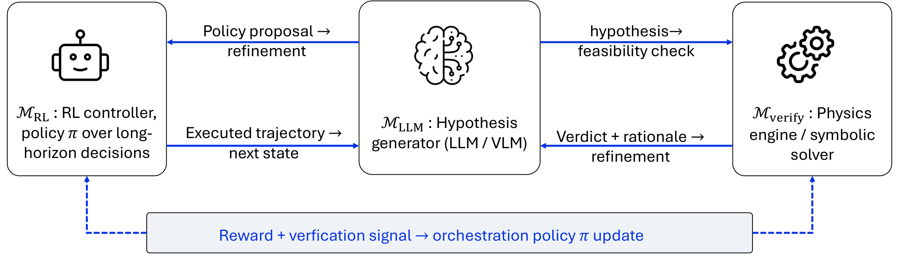
Foundation Models with Reinforcement Learning.
A prominent hybrid couples a foundation model’s semantic competence with reinforcement learning’s long-horizon decision-making, often closed by a verifier that supplies executable structure (Figure 2.29). The foundation model proposes hypotheses, sub-goals, or candidate action sequences; an RL policy \(\pi_{\mathrm{RL}}\) commits to and executes them over extended horizons; and the resulting reward, optionally augmented by a physics engine or symbolic checker, updates both the policy and the orchestration. Embodied-R instantiates this division of labor: a large vision–language model handles perception, while a small language model trained by RL, with a reward that scores the logical consistency between its reasoning trace and its answer, performs the slow, deliberative spatial reasoning, evaluated on UrbanVideo-Bench and VSI-Bench. The group-relative fine-tuning recipes of §2.2.5 (Reason-RFT, OctoNav, SpaceR ) are the same hybrid with the verifier folded into a verifiable reward and are not repeated here. The foundation model contributes broad priors and RL supplies credit assignment and exploration; the cost is the sample inefficiency and reward-specification difficulty inherited from RL (§2.2.5).
Foundation Models with Explicit Physical Simulation.
A second pattern pairs the foundation model with a physics engine, so that the truth signal is a simulated trajectory rather than a learned score; the engine side is the physical reasoning of §2.1.2. The LLM proposes hypotheses, structural descriptions, or programs, the simulator executes them under conservation laws, kinematic constraints, contact dynamics, and reachability limits, and the discrepancy between simulation and observation is fed back for another round. LLMPhy is the clearest instance: the LLM writes Python programs that embed estimates of latent physical parameters (friction, stiffness, mass) and of the scene layout, a physics engine executes them, and the reconstruction error against the observed video is returned as feedback, so that building the digital twin becomes a black-box optimization driven by the LLM. DiffGen makes the loop differentiable, generating robot demonstrations by descending gradients through a differentiable simulator, a differentiable renderer, and a vision–language model until the rendered outcome matches the language instruction in embedding space. PhysVLM moves the physics into the input instead: a robot’s reachable workspace is abstracted into a robot-agnostic space-physical reachability map that the VLM consumes alongside the image, trained on Phys100K and evaluated on the EQA-phys benchmark. At the far end, ChronoLLM fine-tunes LLMs to write PyChrono multibody-simulation scripts, from a single pendulum to a full vehicle on deformable terrain; here the model authors the simulation rather than reasoning inside it, which places it at the boundary with the code-generation paradigm of §2.3.4. What the simulator contributes is an inductive bias that stays valid for unseen objects and configurations, so the hybrid extrapolates where a purely statistical model would not.
Foundation Models with Symbolic Reasoning.
A third pattern inserts an explicit symbolic layer (logical constraints, relational predicates, or formal planning specifications) between natural-language reasoning and executable spatial inference, replacing the hand-crafted parsers of §2.1 with foundation-model-generated symbolic structure. Two sub-patterns differ in when the symbolic machinery is used. In the first it is called at inference time: NS3D has an LLM translate a 3D referring expression into a first-order logic program that a neural executor grounds against the scene’s objects and relations on ReferIt3D, and LEFT (§2.3.4) makes the same programs differentiable so that concept grounding is learned rather than hand-specified. In the second, symbolic knowledge enters only at training time as a constraint on a neural model: train language models for reasoning over spatial language with spatial logic rules as auxiliary losses, and RelateSeg extracts relations such as \(\langle\text{cat}, \text{to-right-of}, \text{person}\rangle\) from open-vocabulary segmentation outputs, writes them as first-order logic, and relaxes them with fuzzy logic into a single auxiliary loss that improves mIoU on four benchmarks without adding parameters. The Scene Language (§3.2.5) is the representation such hybrids increasingly target: programs for structure, words for semantics, embeddings for appearance. The symbolic layer buys consistency and compositional guarantees; its price is a closed predicate vocabulary that the neural side constantly exceeds, a point taken up under §Challenges and Trends.
Foundation Models with Spatial Memory and World Models.
A fourth pattern gives the foundation model a persistent spatial state that it does not have to carry in its context window: an explicit memory (episodic trajectories, topological maps, 3D layouts) or a learned world model that predicts how the scene changes under action. The hybrid question is the interface between the two. MSNav splits zero-shot vision-and-language navigation into a memory module, a spatial module, and a decision module, with a small fine-tuned LLM extracting the landmarks and relations the spatial module needs, and reaches state-of-the-art zero-shot results on R2R and REVERIE. MindExplore stacks a reasoning layer (task-specific chains of thought that emit meta-actions) over an acting layer (a mixture of policy experts with a multimodal diffusion policy) and uses a memory mechanism as the feedback channel between the two, running at 30 FPS in dynamic sand environments. The 3D spatial memories of §2.3.6 (3DSPMR , Embodied-RAG , Meta-Memory ) and the world-model coupling of §2.3.8 are the memory- and simulator-side components these hybrids draw on; MindJourney’s test-time gain on SAT (about eight points of top-1 accuracy from imagined viewpoints alone, with the VLM untouched) is the cleanest quantitative evidence that a world model used as a tool closes part of the gap. In each case the foundation model keeps high-level inference, instruction following, and semantic grounding, and offloads persistence, geometry, and dynamics to the dedicated module.
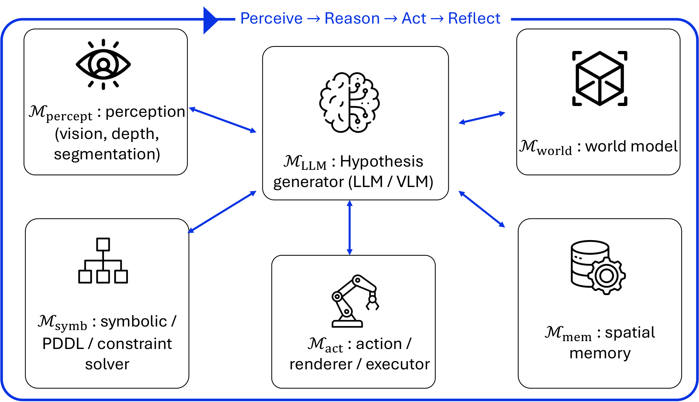
Agentic Orchestration of Hybrid Components.
The fifth pattern makes the orchestration function itself the object of design: a foundation model acts as a deliberative controller that decides, at each step, which of the perception, world-model, symbolic, memory, and action modules to invoke, within a closed perceive–reason–act–reflect loop (Figure 2.30). It differs from the agentic reasoning of §2.3.7 in what is being scheduled: there, tools and memory; here, additionally symbolic engines and physics simulators, with the scheduler \(\pi\) of Eq. [eq:p3_s7_4_hybrid] itself a candidate for learning. VADAR (§2.3.4) is the program-synthesis version of such a controller, generating the API it then calls. “See it. Say it. Sorted” is a training-free version for sketch-to-diagram generation: a critic VLM proposes a few qualitative relational edits, several LLMs synthesize candidate SVG programs, and a judge VLM selects among them, which keeps global constraints such as alignment and connectivity intact where numerical estimation would drift. arrive at the same module inventory from neuroscience, arguing that such a controller should sit over multimodal sensing, multisensory integration, egocentric–allocentric conversion, a cognitive map, spatial memory, and spatial reasoning. The gain is compositionality and long-horizon consistency that no static architecture provides; the cost is the latency and attribution problems discussed below.
Benchmarks
Hybrid systems are evaluated end to end on the benchmark of their target task rather than module by module, and the benchmark is often one the paper introduces. Among the systems above, Embodied-R reports on UrbanVideo-Bench and VSI-Bench, MindJourney on SAT, NS3D on ReferIt3D, MSNav on R2R and REVERIE, and PhysVLM on RoboVQA and OpenEQA alongside its own EQA-phys; LLMPhy ships TraySim, CLEVRER-LLMPhy, and Real-TraySim, MindExplore ships SandGo-1k and SandThink-21k, and DrawingBench is built specifically for agentic hybrids, scoring an LLM’s sequence of low-level mouse actions against eight rule-based criteria for the spatial configuration it was asked to draw. Physics-side components are still checked against PHYRE and ShapeStacks (§2.1.2) and symbolic components against the constraint- and rule-based suites of §2.1.4–§2.1.5, but no current benchmark attributes an end-to-end score to the modules that produced it; that gap is taken up under §Challenges and Trends and in the cross-paradigm survey of §2.5 (Table [tab:benchmark_comparison], whose 15-row agentic subset is Table [tab:spatial_reasoning_benchmark] of §2.3.7).
Challenges and Trends
Hybrid spatial reasoning has produced architectures that combine complementary inductive biases in principled ways, but several recurring limitations originate in the module-composition framework itself rather than in any individual module.
Frame, Scale, and Geometric Consistency. Unlike generic modular systems, spatial hybrids must reconcile heterogeneous spatial representations across modules: perception emits camera or egocentric frames, map and memory modules operate in world or allocentric coordinates, symbolic reasoners abstract to topological relations, and physics engines expect metric units. Misaligned reference frames, scales, or conventions silently corrupt downstream reasoning, and because each module reports confidence in its own terms, small upstream pose, depth, or scale errors propagate and compound across the pipeline without a coherent notion of uncertainty. Maintaining frame, scale, and geometric consistency is thus a first-order obstacle with no analogue in non-spatial hybrid systems.
Interfaces, Latency, and Attribution. The strength of a hybrid system is bounded by its worst module interface. Symbolic-to-neural translation is particularly brittle when the symbolic side uses closed-vocabulary predicates while the neural side proposes open-vocabulary ones, and the interface design becomes a hidden first-class hyperparameter that current literature seldom isolates. Each module invocation also adds wall-clock latency that compounds across a perceive–reason–act–reflect loop, so high-frequency manipulation and navigation may not be reachable through orchestration alone. And when a hybrid fails, attributing the failure to a specific module is non-trivial; this complicates iteration and is often cited as a practical reason why end-to-end models can outperform hybrid stacks on aggregate benchmarks despite offering weaker per-module guarantees.
The orchestration function \(\pi\) is migrating from hand-coded rules to learnable orchestration policies trained with reinforcement or imitation learning, which blurs the boundary with §2.3.7 in exactly the way the §2.3 Summary anticipated. Differentiable hybrid stacks, built from differentiable physics simulators, differentiable optimization layers (§2.2.4), and differentiable retrieval, make end-to-end training of a hybrid viable and remove the historical interface penalty, offering a path through the precision–grounding asymmetry that motivates this section. Evaluation is changing too, toward the holistic and diagnostic: in response to the attribution problem, emerging practice pairs aggregate task metrics with per-module diagnostic probes and counterfactual module-swap ablations that isolate where a hybrid system succeeds or fails, a direction consolidated in the cross-paradigm benchmark survey of §2.5.
Spatial Reasoning Benchmarks
Early spatial-reasoning benchmarks positioned the model as a detached observer. CLEVR and VSR ask for relative geometric relations from a static third-person viewpoint, and their 2D inputs leave depth ambiguous, a weakness that 3DSRBench , MMSI-Bench , DSI-Bench , and STI-Bench now probe directly. SQA3D , OpenEQA , and EmbSpatial-Bench instead place the model inside the scene, so that it must self-localize before it can answer, and ScanQA , ScanRefer , and Multi3DRefer ground queries in point clouds and RGB-D data, where the answer is a coordinate rather than a relation. The reasoning demanded has deepened in parallel: IntPhys and Physion test whether a model expects gravity, collision, and friction to hold over time, and OpenEQA and RealWorldQA ask functional questions (“Can I navigate through this gap?”, “Where would I find a cloth to clean a spill?”) in which geometry matters only through what it affords.
Data provenance splits the field. Simulators, the sources behind SpatialVLM , AI2-THOR , and Habitat , yield unlimited, perfectly annotated data; real-world collections such as ScanNet and OpenEQA supply the clutter, occlusion, and sensor noise that simulation does not reproduce. The resulting practice is sim-to-real: pre-train on large synthetic corpora for general spatial logic, then fine-tune on the scarcer real data. Annotated 3D data remain scarce and fine-grained metric estimation remains hard for large models; both limits recur throughout the table below.
Comparative Analysis
Table [tab:benchmark_comparison] compiles 61 spatial-reasoning benchmarks across four categories (physical-focused, rooted in §2.1.2; vision-based, overlapping with §2.3.1; 3D-focused, rooted in §2.3.6 and §2.3.8; and robot-environment, rooted in §2.3.7 and §2.4). A narrower 15-row subset focused specifically on agentic spatial reasoning is provided in Table [tab:spatial_reasoning_benchmark] of §2.3.7; this subset filters Table [tab:benchmark_comparison] to image-and-video benchmarks that exercise agentic deployments.
| Benchmark | Number | Modality | View Type | Perspective | Data Source | Task Type | ||
|---|---|---|---|---|---|---|---|---|
| Single | Multi | Ego | Exo | |||||
| \(\bullet\) Physical Focused Spatial Reasoning | ||||||||
| IntPhys | 15k / 4.3k | 3D | ✓ | ✗ | ✗ | ✓ | Synthetic | VoE plausibility |
| IntPhys 2 | 1,416 | 3D | ✓ | ✗ | ✗ | ✓ | Synthetic | VoE plausibility |
| Physion | \(\sim\)1.2k | 3D | ✓ | ✗ | ✗ | ✓ | Synthetic | Physical prediction / choice |
| Physion\(++\) | \(\sim\)10k | 3D | ✓ | ✗ | ✗ | ✓ | Synthetic | Physical prediction / choice |
| Physical Concepts Dataset | 300k | 3D | ✓ | ✗ | ✗ | ✓ | Synthetic | classification |
| Physics-IQ | 396 | Video | ✓ | ✗ | ✗ | ✓ | Real | Generative physical prediction |
| SPhyR | 1,296 | Image | ✓ | ✗ | Undeclared | Synthetic | Physical prediction / infill | |
| \(\bullet\) Vision-Based Spatial Reasoning | ||||||||
| CLEVR | 853k | Image | ✓ | ✗ | ✗ | ✓ | Simulation | VQA |
| VSR | 10,972 | Image | ✓ | ✗ | ✗ | ✓ | Real | VQA |
| What’s Up | \(\sim\)8,000 | Image | ✓ | ✗ | ✗ | ✓ | Real | VQA |
| RocketScience | 482 | Image | ✓ | ✗ | ✗ | ✓ | Real | VQA |
| SpaRE | 3.4M | Image | ✓ | ✗ | ✗ | ✓ | Real/Sim | VQA |
| RealWorldQA | 765 | Image | ✓ | ✗ | ✓ | ✗ | Real | VQA |
| 3DSRBench | 2,772 | Image | ✓ | ✗ | ✗ | ✓ | Real/Sim | VQA |
| InternSpatial-Bench | 6,008 | Image | ✓ | ✗ | ✗ | ✓ | Real | VQA |
| OmniSpatial | \(\sim\)8,400 | Image | ✓ | ✗ | ✓ | ✓ | Real | VQA |
| Spatial457 | 23,752 | Image | ✓ | ✗ | Undeclared | Real | VQA | |
| All-Angles Bench | \(\sim\)2,100 | Image | ✗ | ✓ | Undeclared | Real | VQA | |
| EmbSpatial-Bench | 3,640 | Image | ✓ | ✗ | ✓ | ✗ | Real | VQA |
| MMSI-Bench | 1,000 | Image | ✗ | ✓ | Undeclared | Real | VQA | |
| MindCube | 21,154 | Image | ✗ | ✓ | Undeclared | Simulation | VQA | |
| BLINK | 3,807 | Image | ✓ | ✗ | ✗ | ✓ | Real | VQA |
| NuScenes-SpatialQA | 3.3M+ | Video | ✓ | ✓ | ✓ | ✓ | Real | VQA |
| VSI-Bench | 5,130 | Video | ✓ | ✗ | ✓ | ✗ | Real | VQA |
| VLM4D | \(\sim\)1,800 | Video | ✓ | ✗ | ✓ | ✓ | Real | VQA |
| STI-Bench | 2,064 | Video | ✓ | ✗ | ✓ | ✓ | Real | VQA |
| DSI-Bench | \(\sim\)1,700 | Video | ✓ | ✗ | Undeclared | Real | VQA | |
| SITE | 8,068 | Video | ✓ | ✗ | Undeclared | Real/Sim | VQA | |
| RoboSpatial | 3M | Image/3D | ✓ | ✗ | ✓ | ✗ | Real/Sim | VQA |
| OSD | Undeclared | Image | ✓ | ✗ | ✗ | ✓ | Real | VQA |
| SpatialVLM | 2B | Image | ✓ | ✗ | ✗ | ✓ | Real/Sim | VQA |
| ProVision | 65k | Image | ✓ | ✗ | ✗ | ✓ | Simulation | VQA |
| WhatIsWhere | 6,000 | Image | ✓ | ✗ | ✗ | ✓ | Real | VQA |
| SURDS | 9,250 | Image | ✓ | ✗ | ✓ | ✗ | Real | VQA |
| EarthSpatialBench | 325k+ | Image | ✓ | ✗ | ✗ | ✓ | Real | VQA |
| PureSpace | 1,200 | Image | ✓ | ✗ | Undeclared | Simulation | VQA | |
| SAT | 175k / 150 | Image | ✗ | ✓ | ✓ | ✓ | Simulation | VQA |
| SpatiaLQA | 9,605 | Image | ✓ | ✗ | ✗ | ✓ | Real | VQA |
| Q-Spatial++ | 101 | Image | ✓ | ✗ | ✗ | ✓ | Real | VQA |
| \(\bullet\) 3D Focused Spatial Reasoning | ||||||||
| ScanQA | 41,363 | 3D | ✗ | ✓ | ✗ | ✓ | Real (ScanNet) | 3D VQA |
| SQA3D | 33,460 | 3D | ✓ | ✗ | ✓ | ✗ | Real (ScanNet) | 3D VQA |
| MMScan QA | 295K | 3D+Image | ✓ | ✓ | ✗ | ✓ | Real (EmbodiedScan) | 3D VQA |
| OpenEQA | 1,632 | Video/3D | ✓ | ✗ | ✓ | ✗ | Real (HM3D, ScanNet) | Embodied QA (EM / A splits) |
| Space3D-Bench | 1,000 | 3D | ✓ | ✗ | ✓ | ✗ | Real(Replica) | 3D QA |
| Scan2Cap | 39,775 | 3D | ✗ | ✓ | ✗ | ✓ | Real (ScanNet) | 3D Captioning |
| MMScan Captioning | 172k | 3D+Image | ✓ | ✓ | ✗ | ✓ | Real (EmbodiedScan) | 3D Captioning |
| ScanRefer | 51,583 | 3D | ✗ | ✓ | ✗ | ✓ | Real (ScanNet) | 3D Grounding |
| Multi3DRefer | 42,735 | 3D | ✗ | ✓ | ✗ | ✓ | Real (ScanNet) | 3D Grounding |
| SR3D | 83,572 | 3D | ✗ | ✓ | ✗ | ✓ | Real (ScanNet) | 3D Grounding |
| NR3D | 41,503 | 3D | ✗ | ✓ | ✗ | ✓ | Real (ScanNet) | 3D Grounding |
| SpaceEra++ | 925k | Video/3D | ✗ | ✓ | ✓ | ✗ | Synthetic | 3D VQA |
| Ego3D-Bench | 8,600+ | Image | ✗ | ✓ | ✓ | ✗ | Real | VQA |
| SpatialScore | 28,093 (Hard: 1,400) | Image/3D | ✗ | ✓ | Undeclared | Real/Sim | VQA | |
| iVISPAR | 300 | 3D Env | ✓ | ✗ | ✗ | ✓ | Simulation | Interactive reasoning |
| \(\bullet\) Robot | ||||||||
| AI2-THOR | 120 (Scenes) | 3D Env | ✗ | ✓ | ✓ | ✗ | Simulation | Nav/Manip |
| TDW | Infinite | 3D Env | ✗ | ✓ | ✓ | ✓ | Simulation | Physical Sim |
| Habitat 2.0 | 100 (Scenes) | 3D Env | ✗ | ✓ | ✓ | ✗ | Simulation | Navigation |
| iGibson 2.0 | 15 (Scenes) | 3D Env | ✗ | ✓ | ✓ | ✗ | Simulation | Interactive Nav |
| Habitat 3.0 | 211 (Scenes) | 3D Env | ✗ | ✓ | ✓ | ✗ | Simulation | Social Nav |
| R2R | 21,567 | Image/Path | ✗ | ✓ | ✓ | ✗ | Real | Navigation |
| RxR | 126,069 | Image/Path | ✗ | ✓ | ✓ | ✗ | Real | Navigation |
A modality migration runs from the top of the table to the bottom: the physical-focused benchmarks rely on synthetic 3D renderings, the vision-based block is image- and video-heavy with growing 3D extensions, the 3D-focused block is built on point clouds and RGB-D scans, and the robot block has moved entirely to 3D environments. The Perspective axis is imbalanced: a large fraction of vision-based benchmarks carry Undeclared ego/exo annotations, the physical-focused benchmarks lean exo (a third-person observer judging physical plausibility), and the robot block is entirely ego; the field is migrating from spectator-style observation to situated cognition faster than benchmark annotations record it. The Data-Source spectrum is bifurcated between synthetic or simulated (top block and robot block) and real (middle blocks), with the Real/Sim benchmarks (SpaRE, 3DSRBench, RoboSpatial, SpatialVLM, SITE) as the bridge that the sim-to-real training practice of the opening relies on.
Future Directions
Unified Spatial-Cognition Benchmark.
No single benchmark in Table [tab:benchmark_comparison] exercises a model along all of perception fidelity, symbolic precision, memory persistence, and long-horizon action conditioning simultaneously. A unified benchmark covering all four §2 paradigms (§2.1 rule-based, §2.2 learning-based, §2.3 foundation-model-driven, §2.4 hybrid) would close the evaluation-attribution challenge flagged in §2.4 §Challenges and Trends.
Cross-Modal Evaluation.
The current axes (Modality, View, Perspective, Data Source, Task Type) under-specify the cross-modal demand of contemporary spatial reasoning. Future benchmarks should explicitly probe modality-to-modality transfer (e.g. , 2D-trained models evaluated on 3D queries; text-conditioned policies evaluated on video-grounded tasks), so that the modality-mismatch challenge flagged in §2.3.6 (text-vs.-image-vs.-3D retrieval) becomes a first-class evaluation axis rather than a per-paper case study.
Embodied Long-Horizon Coverage.
The Robot block in Table [tab:benchmark_comparison] covers navigation thoroughly but under-represents long-horizon manipulation and multi-room interactive tasks. The §2.3.7 15-row subset (Table [tab:spatial_reasoning_benchmark]) further restricts attention to image-and-video benchmarks; the embodied long-horizon suites ALFWorld and VirtualHome (§2.3.4) and cross-embodiment evaluation on Open X-Embodiment (§2.3.2) are the nearest existing coverage, and standardizing on them would close the long-horizon-spatiotemporal-coherence challenge flagged in §2.3.7 §Challenges and Trends.
From Descriptive to Interactive Spatial Reasoning.
The Task Type column of Table [tab:benchmark_comparison] is dominated by visual question answering: the overwhelming majority of benchmarks ask a model to describe static spatial relations (“where is the object”), and only the small Robot block evaluates reasoning that is conditioned on the agent’s own actions. Yet the trajectory traced in this chapter, from passive observation to situated interaction, calls for benchmarks that test interactive spatial reasoning: predicting how an action changes the spatial state, judging affordances and reachability (“can I fit, reach, or grasp this”), and reasoning counterfactually about manipulation outcomes. Such evaluation couples the action-conditioned reasoning of §2.2.5 with the embodied hybrid pipelines of §2.4, extending the descriptive benchmarks surveyed here toward the manipulation- and affordance-grounded settings that embodied deployment ultimately demands.
Chapter 8: Spatial Reconstruction and Generation
Spatial reconstruction and generation is the productive counterpart to spatial perception and reasoning: rather than analyzing a scene that is given, it synthesizes spatial content, recovering or creating the geometry, appearance, and dynamics of objects, scenes, and worlds from conditions such as text, images, partial observations, or explicit constraints. Where perception (Chapter 1) maps observations into structured spatial representations and reasoning (Chapter 2) draws inferences over them, generation closes the loop by mapping intent back into concrete spatial artifacts, a capability central to embodied agents, content creation, simulation, and world modeling.
The chapter is organized along an axis of increasing output structure and dimensionality, from flat images to volumetric objects and scenes, to video, embodied motion, and full four-dimensional space-time content, and finally to world models and to programmatic generation that emits interpretable, executable structure. What holds this range together is a single recurring backbone: an encoder maps conditions into a latent, a generator samples structure, and a decoder or renderer produces the final artifact, specialized to each output domain. Read this way, the subfields are less seven separate problems than one conditional-generation abstraction instantiated against progressively richer codomains.
2D Spatial Generation
The 2D spatial generation encompasses a broad spectrum of tasks that require synthesizing or editing images under explicit spatial constraints. These constraints may be user-specified (bounding boxes, masks, sketches, keypoints, depth maps) or derived from scene understanding (layout graphs, semantic maps, relational structures), and the overarching goal is to produce images that are not only visually realistic but also faithful to the specified spatial configuration: objects appearing in the correct locations, at the correct scales and orientations, while remaining globally coherent in lighting, perspective, and style. 2D generation is where the most mature semantic-to-pixel prior in contemporary AI is taught to honor spatial structure: it is the proving ground on which large pre-trained visual priors are forced to localize objects, follow geometric scaffolds, respect occlusion ordering, and obey region- or instruction-level edits, all without falling out of the implicit grammar of natural images.
The section follows the 2D pipeline in three steps that share one latent-generator framework. §[subsec:p3_s8_1_1] reviews foundational text-to-image generation, the semantic-to-pixel prior on which everything else here is built, and the three paradigms (adversarial, autoregressive, and diffusion with its flow-matching generalization) that parameterize it. §3.1.2 adds a structural condition (layouts, masks, edges, depth, pose, scene graphs, region phrases) and asks how it is injected into a frozen or co-trained generator. §3.1.3 replaces the empty canvas with an existing image and a mask, so that the generator must change what lies inside the mask while preserving what lies outside it.
Text-to-image Generation
Text-to-image (T2I) generation synthesizes an image from a natural-language description. For the rest of this chapter its importance lies less in the images themselves than in the prior it provides: a high-capacity mapping from compositional language to the visual space of objects, surfaces, layouts, and viewpoints, learned once at web scale and then reused. The spatial controllers of §3.1.2 and the editors of §3.1.3 impose constraints on this prior rather than replacing it, and the text-to-3D pipelines of §3.2 distill it through score distillation or multi-view consistency objectives; whatever relational competence the prior has, or lacks, therefore propagates downstream. The field has passed through three architectural paradigms, from adversarial training to autoregressive token modeling to iterative denoising, with diffusion and its flow-matching generalization now setting the standard for quality and prompt fidelity .
Task Definition
We formulate text-to-image generation in a paradigm-agnostic form that exposes the structural choices shared by modern systems. Let \(\mathcal{X}\) denote the space of tokenized text prompts and \(\mathcal{Y}=[0,1]^{H\times W\times 3}\) the pixel-space image domain. Almost all modern T2I systems operate not directly on \(\mathcal{Y}\) but on a compressed latent space \(\mathcal{Z}\subset\mathbb{R}^d\) provided by an autoencoder pair \[\begin{equation} E:\mathcal{Y}\rightarrow\mathcal{Z},\qquad D:\mathcal{Z}\rightarrow\mathcal{Y},\qquad D\!\circ\!E\approx \mathrm{id}_{\mathcal{Y}}, \label{eq:t2i_autoencoder} \end{equation}\] where \(E\) encodes a training image into a low-dimensional code and \(D\) decodes a code back into a pixel image. A text encoder \(\phi:\mathcal{X}\rightarrow\mathcal{E}\) maps the prompt into a conditioning embedding \(\phi(\mathbf{x})\in\mathcal{E}\). The core learning problem is then to train a conditional latent sampler \[\begin{equation} G_\theta:\mathcal{E}\rightarrow\mathcal{Z},\qquad \hat{\mathbf{z}}\sim p_\theta\!\big(\mathbf{z}\,\big|\,\phi(\mathbf{x})\big), \label{eq:t2i_generator} \end{equation}\] so that, after decoding, the resulting image \(\hat{\mathbf{y}}=D(\hat{\mathbf{z}})\) is both photorealistic and semantically aligned with the prompt \(\mathbf{x}\). The three paradigms covered below differ chiefly in how the conditional distribution \(p_\theta(\mathbf{z}\mid\phi(\mathbf{x}))\) is parameterized and optimized; the autoencoder pair \((E,D)\) and the text encoder \(\phi\) are largely shared design choices across paradigms. Figure 3.1 schematizes this paradigm-agnostic pipeline and the substrate that the three paradigms share.
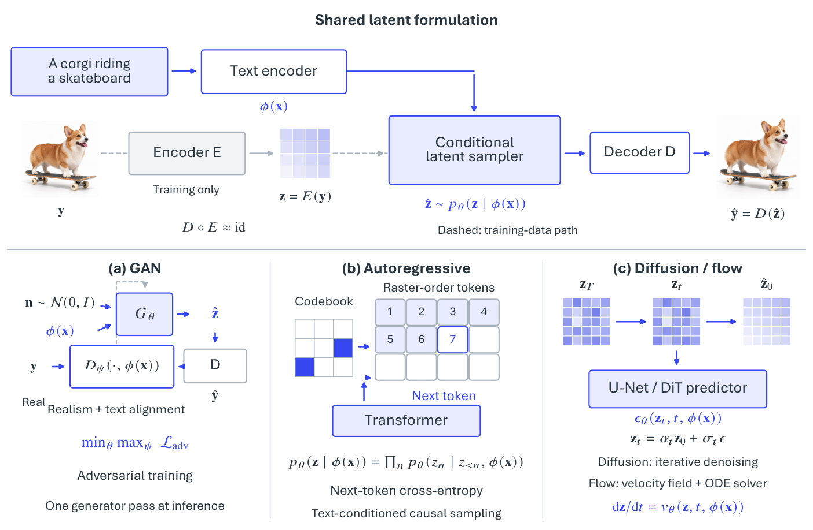
Methodology
Three generative paradigms, taken in the order in which each dominated T2I, parameterize the sampler \(G_\theta\) of Eq. [eq:t2i_generator] differently; the bottom row of Figure 3.1 draws them against the common pipeline. A second set of advances refines the sampler without redefining it: backbone evolution, sampling acceleration, and the migration of leading systems to proprietary stacks. Structural conditioning interfaces, the fourth such refinement, are the subject of §3.1.2 and are not repeated here.
Generative Adversarial Networks.
GAN-based T2I models instantiate \(G_\theta\) as a feed-forward generator \(G_\theta(\mathbf{n},\phi(\mathbf{x}))\!\to\!\hat{\mathbf{z}}\) driven by an auxiliary noise vector \(\mathbf{n}\sim\mathcal{N}(0,I)\); the conditional distribution \(p_\theta(\mathbf{z}\mid\phi(\mathbf{x}))\) is defined only implicitly, as the pushforward of \(\mathbf{n}\) through \(G_\theta\). Training follows the two-player game of , pitting the generator against a discriminator \(D_\psi\), \[\begin{equation} \min_\theta \max_\psi\ \mathbb{E}_{\mathbf{y}\sim p_\text{data}}\!\big[\log D_\psi(\mathbf{y},\phi(\mathbf{x}))\big] + \mathbb{E}_{\mathbf{n}}\!\big[\log\!\big(1-D_\psi(D(G_\theta(\mathbf{n},\phi(\mathbf{x}))),\phi(\mathbf{x}))\big)\big], \label{eq:t2i_gan_objective} \end{equation}\] in which \(D_\psi\) scores both photorealism and text-image consistency. The result is sharp high-frequency detail and single-pass inference, bought at the price of unstable training and mode collapse. Within this framework, StackGAN generated a low-resolution image first and refined it with a second GAN conditioned on both the text and the coarse image; AttnGAN let the generator attend to individual words while rendering different regions, with an auxiliary image-text matching loss (DAMSM) that reduced attribute errors such as wrongly colored objects; XMC-GAN replaced that loss with cross-modal contrastive learning and improved multi-object prompts. By 2021 diffusion models had overtaken these systems on COCO, chiefly because they train stably and cover more of the image distribution, and research attention moved on; the GAN emphasis on high-frequency detail survives in hybrid and adversarially fine-tuned samplers.
Autoregressive Models.
Autoregressive (AR) models discretize the latent space: the autoencoder \(E\) is realized as a vector-quantized variational autoencoder (VQ-VAE) whose output is a sequence of discrete tokens \(\mathbf{z}=(z_1,\dots,z_N)\in\mathcal{V}^N\) over a learned codebook \(\mathcal{V}\), and \(G_\theta\) is factorized in causal raster order, \[\begin{equation} p_\theta\!\big(\mathbf{z}\,\big|\,\phi(\mathbf{x})\big) \;=\; \prod_{n=1}^{N} p_\theta\!\big(z_n\,\big|\,z_{<n},\,\phi(\mathbf{x})\big), \label{eq:t2i_ar_factorisation} \end{equation}\] trained by maximum likelihood on the next-token cross-entropy. T2I thus becomes sequence-to-sequence translation, and the transformer that performs it inherits the compositional competence of language models: DALL-E modeled text and image tokens as a single sequence and showed zero-shot generalization across prompt types. The cost is decoding latency, one forward pass per token, which grows with resolution. Parti scaled the transformer to 20B parameters, generated at \(256\times256\), and reached \(1024\times1024\) with a convolutional super-resolution stage; Muse abandoned strict sequential order for masked token prediction, filling in many tokens per step over a handful of rounds, and matched diffusion quality on several benchmarks at a fraction of the sampling time. AR generation remains attractive where images are produced jointly with text (interleaved documents, storyboards) and a single sequence model handles both.
Diffusion Models.
Diffusion models realize \(G_\theta\) as iterative denoising rather than a single feed-forward pass. A fixed forward process corrupts the clean latent \(\mathbf{z}_0=E(\mathbf{y})\) along a schedule \((\alpha_t,\sigma_t)_{t=0}^{T}\), \(\mathbf{z}_t=\alpha_t \mathbf{z}_0+\sigma_t\epsilon\) with \(\epsilon\sim\mathcal{N}(0,I)\) and \(\mathbf{z}_T\!\approx\!\mathcal{N}(0,I)\); a noise-prediction network \(\epsilon_\theta\) learns to invert it under the denoising score-matching objective \[\begin{equation} \min_\theta\ \mathbb{E}_{t,\mathbf{z}_0,\epsilon}\!\left[\left\|\epsilon-\epsilon_\theta\!\big(\mathbf{z}_t,\,t,\,\phi(\mathbf{x})\big)\right\|_2^2\right], \label{eq:t2i_ldm_objective} \end{equation}\] which is the diffusion-specific realization of the training objective implicit in Eq. [eq:t2i_generator]. At inference the model starts from \(\mathbf{z}_T\sim\mathcal{N}(0,I)\), applies \(\epsilon_\theta\) for \(t=T,\dots,1\), and decodes \(\hat{\mathbf{y}}=D(\hat{\mathbf{z}}_0)\); each step corrects a small error, which is why the final samples are both detailed and faithful. Running this process in the latent space of Eq. [eq:t2i_autoencoder] rather than in pixels, as Latent Diffusion Models did (e.g. , \(4\times64\times64\) instead of \(3\times512\times512\) for a 512px image), cut memory and compute enough to train on commodity hardware and to release Stable Diffusion openly. Conditioning the denoiser on embeddings from a pretrained language-image model, as in GLIDE and DALL\(\cdot\)E 2 , improved prompt alignment, and classifier-free guidance supplied a single knob that trades diversity against fidelity by extrapolating the conditional prediction away from the unconditional one. The remaining weakness is sampling cost, dozens of sequential network evaluations per image; higher-order ODE samplers and the distillation methods below address it. Diffusion or flow-matching cores now underlie most leading systems, with the native multimodal autoregressive stacks discussed under proprietary systems the main exception.
Flow Matching and Rectified Flow.
Rather than a fourth paradigm, flow matching is diffusion reformulated in continuous time. It parameterizes \(G_\theta\) as a learned velocity field \(v_\theta(\mathbf{z}_t,t,\phi(\mathbf{x}))\) instead of a noise predictor: training picks the straight interpolation \(\mathbf{z}_t=(1-t)\mathbf{z}_0+t\mathbf{z}_1\) between a clean latent \(\mathbf{z}_0=E(\mathbf{y})\) and a Gaussian sample \(\mathbf{z}_1\!\sim\!\mathcal{N}(0,I)\) and regresses the velocity, \[\begin{equation} \min_\theta\ \mathbb{E}_{t,(\mathbf{z}_0,\mathbf{z}_1)}\!\left[\left\|v_\theta(\mathbf{z}_t,t,\phi(\mathbf{x}))-(\mathbf{z}_1-\mathbf{z}_0)\right\|_2^2\right], \label{eq:t2i_fm_objective} \end{equation}\] and inference integrates the probability-flow ODE \(\mathrm{d}\mathbf{z}_t/\mathrm{d}t=v_\theta(\mathbf{z}_t,t,\phi(\mathbf{x}))\) from \(t=1\) back to \(t=0\). The formulation was introduced concurrently by (Flow Matching) and (Rectified Flow); gave the unifying stochastic-interpolant view in which diffusion is the special case of a noisier interpolation schedule. Three consequences matter in practice. Straight-line interpolations yield nearly straight ODE trajectories, so matched quality is reached in noticeably fewer steps (genuine one-step generation still needs a reflow or distillation stage); the objective is a single regression with no noise-schedule design and no per-schedule guidance recalibration; and the loss scales smoothly with model size and resolution. Stable Diffusion 3 scaled the recipe to T2I on a DiT-style transformer backbone and reported the best GenEval scores among open models together with favorable human preference on Parti-prompts; the Flux family followed the same recipe. Flow matching composes with every refinement below as readily as a noise-predictor core does and has become the default continuous-time formulation in 2024-onwards systems.
Backbone Evolution: From U-Net to Diffusion Transformers.
Early diffusion models used the U-Net for its multiscale feature fusion and locality bias. The Diffusion Transformer (DiT) of replaced it with a stack of transformer layers over latent patch tokens, giving every denoising step a global receptive field, and showed that FID improves monotonically with depth, width, and token count along predictable scaling laws, reaching FID 2.27 on class-conditional ImageNet at \(256^2\). Attention cost grows quadratically with resolution, so hybrid CNN-transformer designs and efficient attention remain active; the DiT lineage nonetheless underlies SD3 and most 2024-onwards systems, and it points toward a single transformer that generates several modalities, differing only in tokenization and training data.
Sampling Acceleration and Distillation.
Fifty or more denoising steps rule out interactive use and low-power deployment. distilled a \(T\)-step teacher into a \(T/2\)-step student and iterated the halving to reach \(1\)–\(4\) steps. Consistency Models train a network to map a noisy latent at any timestep directly to the clean image, either from scratch with a consistency loss or by distilling a pretrained diffusion model, and Latent Consistency Models applied the idea to Stable Diffusion’s latent space, matching \(50\)-step quality in \(2\)–\(4\) steps. All of these are post-training procedures that leave the architecture untouched, so any strong backbone can be made fast after the fact.
Proprietary and Commercial Systems.
Leading systems have migrated to proprietary, industrially scaled stacks of three kinds. Native multimodal models such as OpenAI’s GPT Image 1.5 and Google’s Gemini 3 Pro Image (Nano Banana Pro) run a unified transformer over interleaved text and image tokens and emphasize semantic reasoning and multi-turn editing; latent-diffusion iterations such as Imagen 4 scale the LDM recipe with stronger text encoders and curated data; preference-tuned systems such as Midjourney v7 and FLUX.2 [max] fine-tune strong priors on human-preference data (FLUX.2 on the rectified-flow recipe of §3.1.1.2.4; Midjourney’s architecture is undisclosed). Each reduces to one of the three paradigms plus some of the refinements just listed; because architectural and training detail is withheld, public benchmarking and reproduction still rest on the open SD / DiT stack.
Benchmarks
Three independent things are usually conflated under “benchmark”: the training corpora on which models are fit, the evaluation suites of prompts that probe particular capabilities, and the metrics that score the resulting images. A model trained on LAION-5B can be evaluated on GenEval prompts and scored by FID, CLIPScore, or an LLM judge, and disagreement between those scores is itself informative.
Training Corpora.
Corpus scale has driven much of T2I progress. Early work fit fine-grained sets with ten captions per image, CUB-200-2011 (11,788 bird images) and Oxford-102 Flowers (8,189 images) ; MS-COCO Captions (123,287 images, five captions each) became the standard general-scene corpus and, for years, the evaluation set as well, a conflation that the suites below were designed to end. Current models train on web-scale image-text pairs: LAION-5B releases 5.85 billion CLIP-filtered pairs, and proprietary corpora of similar scale, less documented, underlie DALL-E 2 and Parti. Scale brought duplication, demographic bias, unsafe content, and licensing disputes with it, and filtered subsets such as LAION-Aesthetics and curation pipelines are now part of every training recipe.
Evaluation Benchmark Suites.
An evaluation suite is a curated prompt set plus a verification protocol: prompts are adversarial or capability-stratified, reference images are usually absent, and scoring is automatic (an object detector, a VQA model, or an LLM/MLLM judge) rather than reconstruction-based. Table 3.1 lists the main suites since 2022. The earliest, DrawBench and PartiPrompts , are human-pairwise prompt sets released with Imagen and Parti; HRS-Bench and HEIM are holistic, scoring 13 and 12 axes respectively; TIFA , GenEval , and T2I-CompBench introduced automatic verification by VQA, object detection, and BLIP-VQA plus UniDet, and the latter two are now reported alongside FID and CLIPScore in most papers. For spatial intelligence the salient suite is VISOR , which isolates two-object relations (left/right, above/below) over \(25{,}280\) prompts and finds that otherwise strong models frequently render the wrong configuration. DPG-Bench targets dense, long compositional prompts, GenAI-Bench pairs compositional prompts with VQAScore judging, and WISE asks whether generated images agree with real-world facts (flag colors, landmarks, anatomy), a knowledge axis orthogonal to compositional binding.
| Benchmark | Year | # Prompts | Evaluation Axis | Scoring |
|---|---|---|---|---|
| DrawBench | 2022 | 200 | Broad capability + alignment (\(11\) categories) | Human pairwise |
| PartiPrompts | 2022 | 1,600 | Capability spectrum (\(12\) categories) | Human pairwise |
| VISOR | 2022 | 25,280 | Two-object spatial relations (left/right, above/below) | Object-detector verification |
| TIFA | 2023 | 4,081 | Faithfulness (VQA over auto-generated questions) | VQA / LLM-as-judge |
| HRS-Bench | 2023 | 45,000 | Holistic; \(13\) skills \(\times\) \(50\) scenarios | Automatic, mixed |
| HEIM | 2023 | 62 scenarios | Holistic; \(12\) aspects (alignment, quality, knowledge, bias, toxicity, …) | Automatic \(+\) human |
| GenEval | 2023 | 553 | Object-centric: single/two-obj., counting, color, position, attribute | Detector verification |
| T2I-CompBench | 2023 | 6,000 | Compositional: attribute binding, object relationships, complex prompts | BLIP-VQA \(+\) UniDet |
| DPG-Bench | 2024 | 1,065 | Dense, long compositional prompts | MLLM-based scoring |
| GenAI-Bench | 2024 | 1,600 | Compositional T2V/T2I prompts | VQAScore (LLM-judge) |
| WISE | 2025 | 1,000 | World-knowledge-informed semantic accuracy | LLM-based grading |
Evaluation Metrics.
Metrics fall into four tiers. Distributional metrics compare the generated and real image populations and say nothing about any individual prompt: the Fréchet Inception Distance (FID) is the Wasserstein-2 distance between Gaussian fits of Inception-V3 features of generated and real images, the Inception Score rewards images that are individually confidently classified yet collectively diverse, and generative precision/recall separate quality from coverage through neighborhood tests in feature space. Alignment metrics score one image against its prompt; CLIPScore , the cosine similarity between the CLIP embeddings of \(\hat{\mathbf{y}}\) and \(\mathbf{x}\), is cheap and reference-free but inherits CLIP’s insensitivity to attribute binding, counting, and spatial relations. Learned preference models, HPSv2 , ImageReward (fit to \(137\)K human comparisons), and PickScore (fit to the \({\sim}500\)K real-user comparisons of Pick-a-Pic), regress a scalar that correlates with average user preference, bundling realism, alignment, and aesthetics; they have become the default automatic ranking while inheriting their raters’ biases and degrading out of distribution.
The newest tier uses a vision-language model as judge. TIFA has a language model write verification questions from the prompt and a VQA model answer them against the image, the score being the fraction answered correctly; VQAScore collapses this to a single yes/no probability under a fine-tuned CLIP-FlanT5 model and reports the best human correlation on compositional suites; VIEScore and LLMScore prompt a multimodal LLM with a structured rubric and return per-axis scores with brief rationales, and direct prompting of frontier VLMs with custom rubrics has become routine for ad-hoc capability probes. Judge metrics track human preference on compositional and spatial prompts far better than CLIPScore, at the cost of a frontier-model call per image, sensitivity to rubric wording, and drift across judge-model versions that makes numbers from different papers hard to compare. No single tier suffices, and current papers report a tuple (FID or IS, CLIPScore, one or two preference scores, one judge score) on several suites plus a small human study; cross-metric disagreement is read as a warning rather than averaged away.
Challenges and Trends
The weakness that matters most for this book is spatial-relation faithfulness, a sub-problem of compositionality. Models frequently misplace objects relative to one another: a prompt that puts a cup to the left of a laptop is often rendered with the two swapped or stacked, and VISOR shows that language-specified relations are frequently ignored outright. Data-centric remedies help; SPRIGHT re-captions training images with explicit spatial descriptions and measurably improves consistency, but reliable control over where objects appear remains open. Because layout-conditioned generation (§3.1.2) and text-to-3D (§3.2) inherit whatever relational competence this prior provides, the limitation is foundational rather than cosmetic. Fine structure is a second gap: legible text, hands, and faces still fail in otherwise strong models and appear to need architectural or data-specific fixes rather than scale alone.
Evaluation reliability is the third. Automatic scores correlate imperfectly with human judgment precisely on the compositional, counting, and spatial-relation prompts that matter here; judge-based metrics close part of the gap but add rubric sensitivity and judge-version drift, so headline numbers across papers are not directly comparable. As GenEval and T2I-CompBench become standard, their prompts risk leaking into web-scraped training corpora, in which case high scores increasingly measure memorization rather than capability; periodic refresh of held-out prompts, blinded judges, and explicit train/test decontamination are the obvious countermeasures and are not yet routine.
Societal concerns follow the data. Models inherit demographic bias from their corpora and will produce unsafe content on request; prompt classifiers, safety filters, and fine-tuning on curated subsets reduce but do not remove the problem, and photorealistic synthesis raises misinformation and intellectual-property questions that watermarking and data curation address only in part. The extension of these priors along the time axis, where identity and motion must stay consistent across frames, is the subject of §3.3; the next two subsections stay in the image plane and ask how the prior can be made to obey spatial constraints and local edits.
2D Spatial-aware Image Generation
2D spatial-aware image generation synthesizes images that are faithful not only to a text prompt but to explicit spatial constraints in the image plane: where objects appear, how large they are, what shape they take, and how they relate to one another (left of, on, behind). The constraint may be a set of boxes or a scene layout, an instance or semantic mask, an edge or sketch map, a depth or normal map, 2D keypoints, a scene graph, or a phrase bound to a region, and the pipelines that honor it are almost all diffusion models augmented with a conditioning pathway or a guidance term. The tension that organizes the subfield is three-way: adherence to hard constraints against perceptual realism and diversity, and both against compositionality when many small or occluding objects carry discrete relations. Depth and normal maps enter here as structural guides for occlusion ordering and surface orientation, not as metric measurements; recovering true distance belongs to reconstruction (§3.2).
Task Definition
We inherit the latent-generator framework of §[subsec:p3_s8_1_1]. Let \(\mathcal{X}\) denote tokenized prompts, \(\mathcal{Z}\) the latent space induced by the autoencoder pair \((E,D)\) of Eq. [eq:t2i_autoencoder], and \(\phi:\mathcal{X}\!\rightarrow\!\mathcal{E}\) the text encoder. Spatial-aware generation augments this framework with a structural condition \(\mathbf{c}\in\mathcal{C}\) drawn from one or more conditioning channels (boxes, masks, edges, depth, pose, scene graphs, region phrases, reference images), encoded by a condition encoder \(\kappa:\mathcal{C}\!\rightarrow\!\mathcal{C}'\). The conditional latent sampler of Eq. [eq:t2i_generator] is extended to a joint conditional \[\begin{equation} G_\theta:\mathcal{E}\times\mathcal{C}'\rightarrow\mathcal{Z},\qquad \hat{\mathbf{z}}\sim p_\theta\!\big(\mathbf{z}\,\big|\,\phi(\mathbf{x}),\,\kappa(\mathbf{c})\big), \label{eq:t2i_spatial_objective} \end{equation}\] and the generated image \(\hat{\mathbf{y}}=D(\hat{\mathbf{z}})\) is required to be (i) photorealistic, (ii) semantically aligned with \(\mathbf{x}\), and (iii) faithful to the structural condition \(\mathbf{c}\) in placement, scale, shape, and pairwise relation. The unconditional limit \(\mathbf{c}=\varnothing\) recovers pure T2I generation as in §[subsec:p3_s8_1_1]; the substance of the present subsection lies in how \(\kappa\) is realized for each conditioning channel and how its output is injected into \(G_\theta\). Which channel populates \(\mathbf{c}\), and how densely, ranges from pixel-level maps (masks, edges, depth) through coordinate-level scaffolds (boxes, keypoints) to discrete symbols (scene graphs, region phrases); the modality survey below follows that ordering. Interactive constraints supplied by dragging handles during generation belong to the editing regime of §3.1.3.
Methodology
Two axes organize the methods: the conditioning modality (what kind of structural input \(\mathbf{c}\) is consumed) and the injection mechanism (how \(\kappa(\mathbf{c})\) enters the latent sampler \(G_\theta\)). They are nearly independent. One mechanism, a ControlNet-style side branch, serves canny edges, pose skeletons, depth, and segmentation alike, and one modality, bounding boxes, is served by side branches, grounded cross-attention, or inference-time attention shaping, so the design space is a matrix of (modality \(\times\) mechanism) cells rather than a list of monolithic methods. Figure 3.2 draws the five mechanisms on one backbone silhouette.
Conditioning Modalities.
Dense pixel-level scaffolds supply a value at every location, which makes them the easiest channels to follow and the most restrictive on creativity. Instance and semantic masks drive region-conditioned synthesis, with MultiDiffusion offering a training-free protocol that samples jointly over overlapping mask windows; edges, sketches, and line art, popularized by the canny and soft-edge variants of ControlNet and the edge head of T2I-Adapter , fix only the location of intensity discontinuities and leave texture and appearance to the prompt; depth and normal maps, served by ControlNet’s depth variant, impose coarse occlusion ordering and surface orientation without requiring a metric reconstruction. Coordinate-level scaffolds drop to per-region or per-point supervision. Boxes with labels are the most studied channel, a set of \((\text{box},\text{label})\) tuples fixing location and rough scale, with LayoutDiffusion , LayoutLLM , and the open-set GLIGEN as representatives; 2D keypoints (typically human pose) are sparser still, a handful of joint coordinates, injected through ControlNet or handled by GLIGEN as a special case of grounding. Discrete symbolic structure carries no pixel- or coordinate-level information at all, and the model must map it onto the image plane itself. Scene graphs reach back to the sg2im line of and re-emerged in the diffusion era through LLM-emitted layouts, as in LayoutLLM, where the graph is first decoded into a coordinate-level layout; region phrases and referring expressions bind a text span to a box, mask, or free-form polygon and are served by GLIGEN’s grounded cross-attention and by phrase-grounding heads attached to SD and SDXL .
Injection Mechanisms.
Five mechanism families cover the literature; production pipelines routinely stack a side branch for dense geometric channels, an adapter for style or a reference image, and inference-time guidance to sharpen adherence on adversarial prompts.
Side-branch controllers. The backbone weights stay frozen and an auxiliary branch mirroring the encoder half of the base U-Net is trained, connected through zero-convolution layers whose weights are initialized to zero so that the augmented model reproduces the base model exactly at the start of training and degrades gracefully if the branch is poorly tuned. ControlNet is the prototype and the first widely adopted retrofit pathway for non-text structural control: the condition (a canny edge map, an OpenPose skeleton, a depth or normal map, a segmentation mask, or a scribble) is encoded by the side branch in parallel with the noisy latent and injected into the base U-Net through additive residual connections at each scale. One branch is trained per modality on labeled image–condition pairs, which produced a library of plug-in controllers for SD 1.5 and SDXL that compose with prompt conditioning at inference time without retraining the backbone; most later designs either shrink this recipe or fold it into a unified adapter library.
Lightweight adapters. Where the side branch spends capacity (half a U-Net per modality), T2I-Adapter , developed concurrently with the same goal of plug-in control over a frozen backbone, spends as little as possible: a few residual blocks per modality whose multi-scale features are added directly into the corresponding encoder stages. Several adapters can be combined at inference, an image conditioned simultaneously on an OpenPose skeleton, a depth map, and a color palette with a scalar weight on each, so the adapter is preferred for multi-channel fusion and fast iteration, and the side branch where maximum single-channel fidelity matters.
Grounded cross-attention. Side branches and adapters run an external pathway alongside the backbone; the next two families intervene inside its attention stack. GLIGEN inserts a new gated self-attention layer between the existing self-attention and cross-attention of each U-Net transformer block; the layer attends jointly over the visual tokens and a set of grounding tokens that encode each \((\text{phrase},\text{box})\) pair, a learned scalar gate controls how strongly the grounding signal enters the residual stream, and only the new layer is trained, so the network falls back to ungrounded behavior when no constraint is supplied. The problem it solves is complementary to the side branch: not how to inject a dense pixel-level scaffold, but how to introduce open-set symbolic grounding (any category named in text, localized by a box, keypoints, or a reference image) into a frozen T2I backbone, with several grounding channels interleaved within one mechanism.
Layout-aware cross-attention. LayoutDiffusion is the dense-supervised cousin of grounded attention: rather than gating a new layer onto a frozen backbone, it co-trains a layout-aware cross-attention block end to end for layout-to-image (L2I) generation specifically. A structured layout, a set of \((\text{box},\text{class label})\) tuples, becomes a sequence of region tokens fused with the noisy latent at every denoising step, and an explicit object–scene factorization models global scene context separately from per-object features so that object identity, scale, and pairwise relations survive in cluttered scenes. It reports stronger layout IoU and relation satisfaction than ControlNet or T2I-Adapter on multi-object COCO benchmarks, at the cost of being specialized to box-and-label input rather than the broader modality library.
Inference-time guidance. The fifth family adds no parameters and modifies only sampling. BoxDiff is the canonical training-free spatial controller: it shapes the cross-attention maps so that activations of box-localized prompt tokens concentrate inside their boxes while the backbone stays untouched. MultiDiffusion fuses overlapping mask windows at sampling time, and composing scores from several conditional models or tuning the classifier-free guidance scale per region are related strategies. Because nothing is retrained, these methods suit rapid prototyping, backbones whose weights are unavailable for fine-tuning, and per-prompt sharpening on top of the trained mechanisms above.
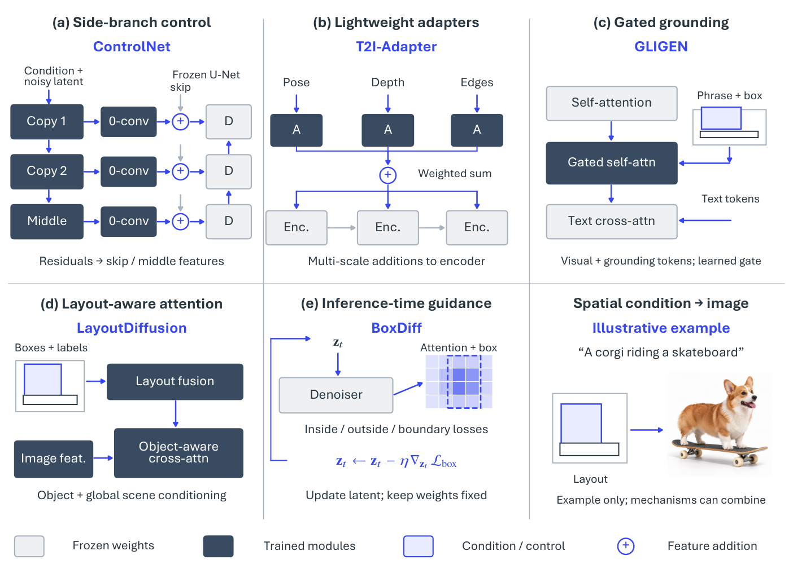
Benchmarks
Two things change relative to §[subsec:p3_s8_1_1]. The ground truth is a structural annotation (a layout, a mask, a keypoint set) rather than a reference image, so reconstruction-style metrics give way to adherence metrics that score how closely the generated image honors \(\mathbf{c}\); and every channel admits its own adherence metric, so a meaningful report combines a channel-specific score with the realism and alignment scores inherited from the previous subsection.
Training Corpora.
Spatial-aware models are typically trained on corpora that pair images with rich structural annotations: COCO Captions for layouts and captions; ADE20K (\(20\)K images, \(150\) classes) for semantic and instance masks; Visual Genome for object boxes, attributes, and pairwise relations supporting scene-graph conditioning; RefCOCO / RefCOCO+ / RefCOCOg for phrase grounding; and PhraseCut for region-prompt mask supervision. Additional structure (canny edges, depth, normals, OpenPose skeletons) is typically derived on the fly from these base corpora by running pretrained predictors over each image, producing the paired image–condition data on which ControlNet-style and adapter-style pipelines are trained.
Evaluation Benchmark Suites.
Most of the suites surveyed in §[subsec:p3_s8_1_1] (Table 3.1) include axes that probe spatial-aware generation directly and serve as its primary out-of-the-box benchmarks. GenEval exposes a position subset that scores whether two objects appear in a specified relation (left of, above); T2I-CompBench provides explicit spatial and non-spatial relationship categories with BLIP-VQA and UniDet scoring; HRS-Bench includes a spatial skill among its thirteen; GenAI-Bench offers compositional prompts on which spatial relations are a frequent failure of CLIP-based scoring; and WISE measures knowledge-grounded location accuracy. Beyond these, the L2I literature reports task-specific evaluations on COCO layouts: detection-based AP for box-localized objects alongside FID and CLIPScore.
Constraint-specific Metrics.
Layout adherence is box IoU between the conditioning layout and the boxes recovered by a frozen detector on \(\hat{\mathbf{y}}\), often with per-object center distance; mask adherence uses mask IoU and boundary \(F\)-score against the conditioning mask; edge and sketch adherence report recall (sometimes precision) of edges re-extracted from \(\hat{\mathbf{y}}\); geometry adherence reports depth RMSE and normal angular error where ground-truth geometry exists; pose adherence reports keypoint reprojection error or PCK; and relational adherence reports relation-satisfaction accuracy and per-entity object AP for scene-graph and phrase-grounded settings. These numbers do not aggregate: averaging layout IoU with mask IoU has no operational meaning, since the two live on different scales and reward different shape regimes, and most papers report a different subset of them, which is the main obstacle to cross-paper comparison in this subfield.
Challenges and Trends
Spatial-aware T2I inherits the compositionality and evaluation problems of §[subsec:p3_s8_1_1] and sharpens them.
Faithful multi-object composition. Crowded scenes with many small or partially occluded objects and hard relations (support, containment, depth ordering) fail in three recognizable ways: attention dilution, in which a prompt token’s cross-attention spreads across the canvas and no object is well localized; attribute leakage, in which color, material, or count attaches to the wrong object (the canonical “red cube on a blue sphere” confusion); and object dropping, in which small or rare entities in a multi-object layout are simply omitted. On GenEval the position and counting subsets remain the weakest axes across SD 1.5, SDXL, and SD 3 . Remedies work at three levels: Attend-and-Excite reweights cross-attention at inference so that every subject token is strongly activated somewhere in the canvas; StructureDiffusion uses prompt syntax to constrain attention structure without training; and LLM-emitted layouts, LayoutGPT and the multimodal-LLM-driven RPG of , plan a structured layout from the free-form prompt and hand it to an L2I renderer. Whether the gap closes through a stronger compositional prior in the backbone or through planning as a separate stage is unresolved, and the two are not exclusive.
Constraint satisfaction against creativity and diversity. Turning guidance up tightens adherence until, past a model-dependent threshold, edges oversharpen, textures flatten, and variation across seeds collapses; the same curve appears for the ControlNet conditioning weight, GLIGEN’s gating strength, and the classifier-free guidance scale, leaving practitioners to tune two or three knobs at once. Annealing the control weight along the denoising trajectory, per-region or per-token guidance scales, and down-weighting guidance where the base model is already confident are the current responses; how to expose such schedules to end users without overwhelming the interface is open. Chaining spatial-aware generation with repeated local edits adds a drift problem of its own, treated in §3.1.3.
Geometry-aware realism in 2D. Depth and normal conditioning fix coarse occlusion but introduce their own artifacts: boundary banding where a sharp depth discontinuity meets a smooth gradient in the generated image, scale ambiguity because a monocular depth map carries no absolute scale and two objects at the same depth value can be rendered at incompatible physical sizes, and lighting incoherence because the map fixes geometry but not the light field, so shadows disagree with the implied surface orientations. Better estimators are the first lever, with the diffusion-prior Marigold producing sharper and more globally consistent depth than CNN baselines and Depth Anything staying robust on out-of-distribution conditioning images; differentiable geometry proxies that translate depth into shading constraints are the second, explored at the boundary with full 3D synthesis (§3.2) but not yet integrated into general T2I backbones. Region grounding also changes the safety picture, since a harmful edit can be confined to a footprint that whole-image forensics miss; that concern belongs to editing and is taken up in §3.1.3.
2D Spatial Inpainting & Editing
2D spatial inpainting & editing modifies an image inside a specified region while leaving the rest intact: filling holes and occlusions, removing or inserting objects, changing attributes (color, material, texture, text), adjusting layout, or harmonizing pasted content with its new background. The intent arrives as a mask, a structural hint (edges, sketches), a geometry proxy (depth, normals), or a natural-language instruction, and the tensions are between local editability and global consistency of lighting, perspective, and shadow, between constraint adherence and realism, and between semantic plausibility and identity preservation for person- or product-centric edits. Editing holds the model to its strongest geometric account: the unedited region of \(I\) supplies ground-truth pixels that any plausible edit must respect, exposing failure modes that pure synthesis can hide, among them color drift, lighting reflow, identity loss, and attribute leakage across the mask boundary.
Task Definition
We inherit the latent-generator framework of §[subsec:p3_s8_1_1]. Let \((E,D)\) denote the autoencoder pair of Eq. [eq:t2i_autoencoder], \(\phi:\mathcal{X}\!\rightarrow\!\mathcal{E}\) the text encoder, and \(G_\theta\) the conditional latent sampler of Eq. [eq:t2i_generator]. Inpainting and editing depart from de-novo generation in one crucial respect: the input is no longer the empty set but an existing image \(I\in\mathcal{Y}\), encoded into \(\mathbf{z}^{\text{in}}=E(I)\). A mask \(\mathcal{M}\in\{0,1\}^{H\times W}\) designates the editable region, and an editing control set \(\mathbf{c}\in\mathcal{C}\) (text prompts, structural cues, exemplar patches, or drag-style handles) populates the conditioning channel, encoded by \(\kappa:\mathcal{C}\!\rightarrow\!\mathcal{C}'\). The conditional latent sampler is extended to \[\begin{equation} G_\theta:\mathcal{Z}\times\{0,1\}^{H\times W}\times\mathcal{E}\times\mathcal{C}'\!\rightarrow\!\mathcal{Z},\qquad \hat{\mathbf{z}}\sim p_\theta\!\big(\mathbf{z}\,\big|\,\mathbf{z}^{\text{in}},\,\mathcal{M},\,\phi(\mathbf{x}),\,\kappa(\mathbf{c})\big), \label{eq:t2i_edit_objective} \end{equation}\] and the edited image \(\hat{I}=D(\hat{\mathbf{z}})\) is required to (i) realize the requested change inside \(\mathcal{M}\), (ii) preserve \(I\) outside \(\mathcal{M}\) up to imperceptible deviations, and (iii) remain globally coherent in color, lighting, geometry, and semantics. Setting \(\mathbf{z}^{\text{in}}=\varnothing\) and \(\mathcal{M}=\mathbf{1}\) recovers the spatial-aware synthesis of §3.1.2 (Eq. [eq:t2i_spatial_objective]); the distinctive substance of editing therefore lies in the interplay between the preservation constraint outside \(\mathcal{M}\) and the change constraint inside it. The mask may be hard, soft, inferred from a referring expression, or implicit (whole-image instruction editing with \(\mathcal{M}=\mathbf{1}\)).
Variants by Task Type.
The tasks differ in what populates \(\mathbf{c}\) and \(\mathcal{M}\) and in whether ground-truth pixels exist for evaluation. Reconstruction-style completion carries no semantic intent: hole filling repairs scratches and occlusions from \((I,\mathcal{M})\) alone, and object removal reconstructs the background behind a specified instance. Constraint-driven local synthesis adds intent inside \(\mathcal{M}\): text-guided local editing follows an instruction scoped to a region (“make the left cup red”), structure-guided inpainting takes edges, sketches, or semantic maps as a scaffold for shape and boundary, and geometry-guided inpainting conditions on depth or normals to respect occlusion ordering. Object-level edits treat the region as an object whose identity or embedding in the scene is the unit of change: insertion with harmonization of color, grain, lighting, shadows, and reflections; attribute and appearance editing that changes material or style while preserving identity (garments, products, logos); and exemplar-guided transfer that drives content or style from a reference patch. Interactive workflows replace declarative constraints with actions taken at edit time: point- or handle-based reshaping, and multi-round, multi-region sessions in which stability across rounds is itself the requirement. The metrics appropriate to each are collected in §Benchmarks.
Methodology
Methods are organized by editing mechanism, that is, by how \(G_\theta\) of Eq. [eq:t2i_edit_objective] is realized so that change is confined to \(\mathcal{M}\) and preservation is enforced outside it. The mechanism is largely independent of the task type above, since text-guided local editing can be served by masked denoising, by inversion and rewrite, or by an instruction-tuned editor, and one mechanism such as inversion serves both attribute edits and structure-guided ones. Figure 3.3 sets the five mechanisms against a single example edit.
Editing Mechanisms.
Masked latent denoising. The most direct realization of Eq. [eq:t2i_edit_objective] runs the diffusion sampler only inside \(\mathcal{M}\) while clamping the latent outside \(\mathcal{M}\) to a noise-perturbed copy of \(\mathbf{z}^{\text{in}}\) at every step. RePaint does this with a pretrained, unconditional DDPM and no retraining, replacing the known-region pixels with a forward-noised sample of the input at each reverse step and adding a resampling schedule that re-injects noise periodically so the in-fill can re-harmonize with its context over several rounds. Blended Diffusion made the same scheme text-driven by interleaving a CLIP-guided gradient step that steers the content inside \(\mathcal{M}\) toward a target prompt with the context-clamping step outside it, the first widely cited text-guided local editor. LaMa predates the diffusion line and is instead a feed-forward inpainter whose fast Fourier convolutions give every layer an image-wide receptive field, a Fourier-domain inductive bias that stays robust on the very large holes that defeat purely local CNN backbones. Region-aware noise schedules and classifier-free guidance are standard add-ons, and ControlNet-inpaint and the inpainting variants of T2I-Adapter (§3.1.2.2.2) compose with masked denoising by supplying the inside-\(\mathcal{M}\) condition.
Inversion + rewrite. A complementary strategy first recovers the noise trajectory that the model would have used to generate \(I\) (inversion) and then re-runs the reverse process under an edited prompt while reusing or swapping the attention maps of the original (rewrite). Prompt-to-Prompt reuses or reweights source cross-attention maps during generation under the edited prompt, which preserves spatial structure while changing selected semantic content; for a real image an inversion step first supplies a suitable noise trajectory. Imagic jointly optimizes the text embedding and lightly fine-tunes the model to reconstruct \(I\), then interpolates the embedding toward the target prompt, preserving identity-level features (faces, garments) under non-rigid edits. Null-Text Inversion fixes the practical failure that plain DDIM inversion drifts away from \(I\) under classifier-free guidance, by optimizing the null-text embeddings used in the inverse pass so that exact reconstruction holds at ordinary guidance scales. The family needs no full backbone fine-tune for Prompt-to-Prompt or Null-Text and dominates attribute, style, and structure-preserving real-image edits.
Instruction-tuned editing. A third family avoids inversion entirely by retraining a diffusion editor on paired (before, instruction, after) triplets, mapping \(I\) directly to \(\hat{I}\) from a natural-language instruction with no explicit mask. InstructPix2Pix built its corpus by pairing GPT-3-generated edit instructions with Prompt-to-Prompt edits of Stable Diffusion samples and fine-tuned Stable Diffusion on the triplets, so that at inference the user supplies only \((I,\text{instruction})\) and the editor localizes the change itself. MagicBrush replaced the synthetic data with about 10K manually annotated real-image edits across multi-turn sessions, yielding both a stronger supervised editor and the standard instruction-editing test set. Emu Edit trained a single model on a heterogeneous mixture of recognition (segmentation, detection) and generation (insertion, removal, style change) tasks with learned task embeddings that route each input, and leads its own benchmark on precision and instruction following. Instruction editors are the most user-friendly mechanism, no mask and no inversion, at the cost of large supervised retraining.
Exemplar / reference-guided editing. A visual exemplar, an example image or patch encoding the desired content or style, replaces the textual instruction and enters through an auxiliary cross-attention pathway beside the standard text conditioning. Paint-by-Example fine-tunes Stable Diffusion to fill \(\mathcal{M}\) with the content of an exemplar whose identity is encoded by a CLIP image encoder, with strong exemplar augmentation (cropping, color jitter) at training time to prevent copy-paste behavior and force semantic rather than pixel-level transfer. IP-Adapter generalizes this into a plug-in reference channel: a lightweight decoupled cross-attention head consumes a CLIP image embedding of the exemplar and is inserted into a frozen SD or SDXL backbone, so that any number of reference images can be combined with text prompts and with structural adapters such as ControlNet at inference time. It is the standard route for subject personalization and style transfer when the desired content is hard to describe in words.
Drag-based latent optimization. The most interactive family takes user-supplied (source point, target point) pairs and iteratively optimizes the latent so that the features at each source point migrate to the corresponding target while a locality regularizer pins the latent outside the user-marked region. DragGAN introduced the recipe on a StyleGAN backbone: a motion-supervision loss tracks the source feature and pulls it toward the target by gradient descent in the \(\mathcal{W}^+\) latent space, and a point-tracking step re-localizes the moved feature at each iteration to prevent drift. DragDiffusion ported the recipe to the LDM latent space, running a per-timestep latent-update loop together with an identity-preserving LoRA fine-tune of the U-Net so that both the dragged subject and the unmarked context survive. Both are inference-time optimizers with latency proportional to the number of drag iterations, and no other family yet offers the same directness of spatial control.
Read across the five families, the mechanisms track the generative substrate: feed-forward inpainters such as LaMa gave way to inversion-based diffusion editors (Prompt-to-Prompt, Imagic), which in turn yielded to supervised instruction-tuned editors (InstructPix2Pix, Emu Edit) as paired data became available at scale. Orthogonal to that migration, the structural conditioning interfaces of §3.1.2 compose with every mechanism here, so a production pipeline pairs a mechanism with a structural channel rather than choosing one: Blended Diffusion with ControlNet-depth for geometry-aware text-guided edits, or IP-Adapter with DragDiffusion for exemplar-driven drag edits.
Benchmarks
Editing is evaluated in two regimes: reference-based, where a held-out ground-truth region exists (holes synthesized over real images), and reference-free, where only constraint satisfaction and human preference are available (instruction editing). No single suite covers both, so the field keeps a small library of task-specific benchmarks next to the holistic T2I suites of §[subsec:p3_s8_1_1].
Training Corpora.
Inpainting draws on Places2 and Paris StreetView for scene-level masks, DIV2K for high-resolution patches, and the COCO / ADE20K mask supervision of §3.1.2 . Constraint-driven local synthesis reuses the structural channels of the previous subsection, RefCOCO / RefCOCO+ / RefCOCOg and PhraseCut for referring-expression masks, SA-1B masks , and COCO edge and depth predictions, with the convention that the mask is supplied or derived from the expression; geometry-guided editing adds depth and normal supervision from NYUv2 , Replica , and synthetic corpora, and insertion with harmonization uses composite datasets such as iHarmony4. Instruction editing has its own data ecology: the synthetic InstructPix2Pix corpus of Prompt-to-Prompt-generated triplets, the manually annotated MagicBrush triplets , and the multi-task Emu Edit training mixture .
Evaluation Benchmark Suites.
The holistic suites of §[subsec:p3_s8_1_1] (Table 3.1) carry over in part: T2I-CompBench and GenAI-Bench score the attribute and compositional fidelity that edited images must also satisfy, and HEIM includes alignment and quality axes that apply to edits. The dedicated suites are EditBench , released with Imagen Editor, a curated set of text-guided inpainting prompts over object, attribute, and scene categories that serves as the standard evaluation for text-driven mask inpainting; the MagicBrush test set , \(1{,}053\) manually annotated single- and multi-turn triplets, which is the standard for instruction-tuned editors; and the Emu Edit benchmark , which extends instruction editing to per-task subsets (insertion, removal, style change, color change, global change). Drag-based methods evaluate on small custom test sets curated by and ; a community-wide drag-editing benchmark has not yet emerged.
Constraint-specific Metrics.
Reconstruction quality (PSNR / SSIM / LPIPS against ground truth, with FID / KID for diverse-completion settings) is defined only where held-out content exists. Region adherence uses mask-restricted CLIPScore or region-level VQAScore to ask whether the edit honors the prompt inside \(\mathcal{M}\); edit locality measures \(\ell_1\) or LPIPS outside \(\mathcal{M}\) against \(I\), lower being better; harmonization is scored by color-statistic divergence, shadow-direction consistency, and the rate at which an off-the-shelf forgery detector flags the composite; identity preservation uses feature-cosine similarity over face or landmark regions for people and CLIP-image similarity for products and characters; and instruction following is paired accuracy, whether \(\hat{I}\) honors the instruction better than \(I\), judged by human raters or by a VLM over a structured rubric, as is now standard on MagicBrush and Emu Edit. Change inside \(\mathcal{M}\) and preservation outside it are reported together; a method that wins on one and loses on the other has not solved the task.
Challenges and Trends
Several problems are specific to editing an existing image.
Structure-faithful hallucination in large holes. Large irregular holes and rare structures remain the hardest case: inpainters tile a salient local texture across the hole instead of synthesizing appropriate content, straight lines, perspective cues, and silhouettes break at the mask seam, and in-fills that are locally plausible contradict the global scene (a patch of grass inside a room). Quality degrades sharply with hole size. LaMa’s image-wide Fourier convolutions and RePaint’s resampling schedule (§3.1.3.2.1) are the established responses; retrieval-augmented priors, which search a paired corpus for candidate completions and use them as soft conditioning, are an emerging one at the intersection of editing and retrieval.
Edit locality against drift across rounds. A single well-calibrated edit does not guarantee a stable session. Across rounds the unedited background shifts in white balance or saturation (color drift), shadows and highlights migrate as if the edit had changed the global illumination (lighting reflow), and salient textures from the edited region reappear in nearby unedited regions through attention leakage (texture replication); the errors compound even when each round individually meets its locality budget. Hard attention masking that confines non-edit tokens to \(\mathcal{M}\), mask-aware noise schedules that anneal noise inside \(\mathcal{M}\) only, and edit-history-aware sampling that conditions on the trajectory of prior edits are the active mitigations. Inversion-based editors (Null-Text Inversion , Imagic ) carry a variant of the problem: any residual reconstruction error in the inverted trajectory leaks into the edit and accumulates.
Harmonization under complex illumination. Inserted content betrays itself when the host scene has structured light: its shadow disagrees with the dominant light direction recoverable from the scene, there is no interreflection between the object and adjacent surfaces, and its albedo is tone-mapped inconsistently with the host, producing the cut-and-paste look that off-the-shelf forgery detectors flag. Differentiable rendering proxies that turn depth and normals into shading constraints and back-propagate harmonization losses into the editor, illumination maps as an additional conditioning channel, and explicit shadow-synthesis modules are being explored; integration with the 3D-aware methods of §3.2 is the natural next step and remains nascent.
Language grounding and safety. Region-level instructions must be grounded reliably: an edit aimed at one object spills onto neighbors with similar attributes, spatial referring expressions are misparsed (“the left cup” lands on the right one), and mildly perturbed instructions produce large deviations in the edit trajectory. Borrowing GLIGEN’s gated grounding (§3.1.2.2.2) to confine edit attention, and using LLM-emitted layouts to harden the grounding before the edit is applied, are the current responses. The same precision cuts the other way for safety. A harmful edit (an identity swap inside one bounding box, watermark removal inside one mask) can be confined to a footprint that whole-image forensic detectors miss; large generative models reproduce individual training images under targeted prompting , which becomes acute when the training set contains copyrighted artwork or identifiable faces and motivates artist-side defenses such as Glaze , which perturbs source artworks so that downstream fine-tunes mimic a different style; and most pipelines still lack robust per-image watermarking, so a photograph with a small synthesized region cannot be told from a wholly synthetic one. Watermarking, region-aware safety filters, and licensing frameworks for the underlying corpora are all needed, and none is settled.
Evaluation under plausibility ambiguity. Ground-truth pixels are often not the only plausible completion: a removed pedestrian leaves a hole that could contain road, curb, or shadow, and any reconstruction metric that compares against one ground truth over-penalizes good alternatives, while PSNR and SSIM rate sharp but contextually wrong in-fills highly. The field is converging on paired evaluation, asking whether \(\hat{I}\) honors the instruction better than \(I\) under a held-out judge, now standard on MagicBrush and Emu Edit ; the judge-prompt sensitivity and benchmark-contamination caveats of §[subsec:p3_s8_1_1] apply here as well.
Scalability and interactive latency. Inversion-based methods store cross-attention activations at every timestep, multi-step sampling at \(4\)K and above scales with image area for standard U-Net backbones, and drag editors run an inner optimization loop per operation, so interactive editing lags behind the user’s hand by hundreds of milliseconds. Consistency-style distillation (§[subsec:p3_s8_1_1]) compresses the reverse trajectory to a handful of steps, memory-efficient adaptive patching runs the denoiser only in a window around \(\mathcal{M}\), and progressive-refinement schedules return a coarse preview within a perceptual-latency budget and refine in the background. Closing the gap to the responsiveness of a photo editor is increasingly a systems problem shared with production T2I inference stacks.
3D Spatial Reconstruction and Generation
The 3D spatial reconstruction and generation encompasses the tasks that turn images, video, sensor readings, or high-level prompts into an explicit 3D representation (a textured mesh, a signed-distance or occupancy field, a neural radiance field, or a 3D Gaussian field) of an object, a scene, or a complete navigable environment. Whereas §3.1 taught a 2D semantic-to-pixel before honor spatial structure on the image plane, this section lifts that prior off the plane and into the volumetric substrate on which embodied perception, simulation, and interaction ultimately operate. This is where appearance and geometry are forced into a single, view-consistent representation: a model must not only produce plausible pixels but place matter correctly in \(\mathbb{R}^3\) so that the result can be rendered from arbitrary viewpoints, physically simulated, navigated, and edited. It is the bridge between the flat generative priors of §3.1 and the embodied world models, simulators, and digital twins that consume 3D structure downstream.
The five subsections are organized by the direction and source of the map into a shared 3D-representation space \(\mathcal{R}\). §3.2.1 starts with a single asset: 3D object synthesis turns the 2D prior of §3.1 into a volumetric generator through 3D-native training, score distillation, multi-view lifting, or feed-forward reconstruction. §3.2.2 scales that generator to a structured scene of placed objects and a room envelope. §3.2.3 reverses the direction: reconstruction recovers a representation faithful to sensor observations, and meets synthesis exactly where the observations run out. §3.2.4 routes through a 360-degree panorama as a structured 2D intermediate that is then lifted to 3D, and §3.2.5 closes the loop by editing an existing representation under user control.
3D Object Synthesis
3D object synthesis generates a complete, usable 3D asset (geometry and, optionally, appearance) from text, a single image, or a sparse set of views. Where reconstruction recovers an object consistent with given observations, synthesis additionally asks for plausible completion of what was never observed, for generative diversity, and for usability in downstream graphics and embodied pipelines (e.g. , game engines, simulators, manipulation); the output is a textured mesh, a radiance field, or a set of 3D Gaussians depending on which of fidelity, editability, rendering speed, and toolchain compatibility matters most. It is also the point at which the semantic-to-pixel prior of §3.1 (the conditional latent sampler \(G_\theta\) of Eq. [eq:t2i_generator]) becomes a semantic-to-3D prior \(G_\theta^{\text{3D}}\): 3D-native generators train on 3D corpora directly, score-distillation pipelines invert the frozen 2D prior under rendering supervision, multi-view pipelines fine-tune it to emit consistent views and lift them, and feed-forward reconstructors and 3D-native latent diffusion exploit the recent object-scale 3D corpora to learn one-shot text- or image-to-3D maps. Figure 3.4 illustrates the text- or single-image-conditioned setting.
Task Definition
We cast 3D object synthesis as a paradigm-agnostic extension of the latent-generator framework of §[subsec:p3_s8_1_1]. Let \(\mathcal{R}\) denote a 3D-representation space taken from \(\{\,\textit{mesh},\,\textit{SDF},\,\textit{voxel},\,\textit{triplane},\,\textit{NeRF},\,\text{\textit{3DGS}},\,\textit{structured latent}\,\}\), and let \(\mathcal{C}\) denote the conditioning-input space comprising a text prompt \(\mathbf{x}\!\in\!\mathcal{X}\) embedded via \(\phi\) (as in Eq. [eq:t2i_generator]), a single image \(I\!\in\!\mathcal{Y}\), or a multi-view set \(\{(I_v,\pi_v)\}_{v=1}^V\) pairing images with camera poses \(\pi_v\). A condition encoder \(\kappa:\mathcal{C}\!\to\!\mathcal{C}'\) maps each input into a shared conditioning embedding. The core learning problem is to train a conditional 3D generator \[\begin{equation} G_\theta^{\text{3D}}:\mathcal{C}'\rightarrow \mathcal{R},\qquad \hat{\mathbf{r}}\sim p_\theta^{\text{3D}}\!\big(\mathbf{r}\,\big|\,\kappa(\mathbf{c})\big), \label{eq:p3_s8_2_1_objective} \end{equation}\] so that the sampled asset \(\hat{\mathbf{r}}\in\mathcal{R}\) admits high-fidelity geometry, plausibly completes unobserved regions, and renders consistently across viewpoints. Two limiting cases locate Eq. [eq:p3_s8_2_1_objective] in the literature. When \(\kappa(\mathbf{c})=\varnothing\) the sampler degenerates to unconditional 3D generation, the regime of early GAN- and diffusion-based 3D generators trained on category-specific corpora. At the other extreme, when \(\mathbf{c}\) is text-only and \(G_\theta^{\text{3D}}\) is realized by distilling the 2D sampler \(G_\theta\) of Eq. [eq:t2i_generator] (via score-distillation sampling, multi-view consistency objectives, or volume-rendering supervision), one recovers the DreamFusion-style text-to-3D pipeline that has dominated open-vocabulary 3D synthesis since 2022.
Methodology
The four paradigms below are four ways of parameterizing and optimizing the sampler \(G_\theta^{\text{3D}}\) of Eq. [eq:p3_s8_2_1_objective], taken in the order in which each became prominent. Figure 3.5 contrasts them, making explicit which components are trained versus frozen and where the 3D representation \(\mathcal{R}\) is instantiated.
3D-Native Generators.
The earliest 3D generators instantiate \(G_\theta^{\text{3D}}\) as a sampler trained directly on a 3D representation, by denoising score matching on voxels, SDFs, or triplanes or, in earlier work, by an adversarial fit to a category-specific 3D corpus \(p_{\text{data}}^{\text{3D}}(\mathbf{r})\), \[\begin{equation} \mathcal{L}_{\text{native}}(\theta) = \mathbb{E}_{\mathbf{r}_0\sim p_{\text{data}}^{\text{3D}},\,t,\,\epsilon}\Big[\big\|\epsilon - \epsilon_\theta^{\text{3D}}\!\big(\mathbf{r}_t,\,t,\,\kappa(\mathbf{c})\big)\big\|^2\Big], \quad \mathbf{r}_t=\alpha_t \mathbf{r}_0 + \sigma_t\,\epsilon, \label{eq:p3_s8_2_1_native_objective} \end{equation}\] where the noise predictor \(\epsilon_\theta^{\text{3D}}\) operates directly on \(\mathbf{r}\!\in\!\mathcal{R}\) with no 2D intermediary, so the supervision signal scales with the size of the 3D corpus rather than with 2D image–text pairs. Because 3D data is heterogeneous, these generators are themselves diverse, having been instantiated on signed distance fields , voxel grids , point clouds , view sets , neural radiance fields , triplanes , and 3D Gaussian Splatting . The scarcity and monotony of 3D corpora remain the bottleneck: even with sophisticated architectures, generated geometry and texture lack fidelity and stay confined to a handful of canonical categories, which is what pushed the field, around 2022–2023, toward paradigms that use the much larger 2D corpora as an indirect supervision signal for 3D structure.
2D-Prior Distillation (SDS Family).
The second paradigm sidesteps the 3D-data bottleneck by realizing \(G_\theta^{\text{3D}}\) as a per-shape optimization that distills gradients from a pretrained 2D generator (a CLIP model or a 2D diffusion model ) trained on web-scale image data . Given the frozen 2D noise predictor \(\epsilon_\phi\) of Eq. [eq:t2i_generator] and a differentiable renderer \(\mathrm{Render}(\mathbf{r}_\theta,\pi)\) that images a 3D representation \(\mathbf{r}_\theta\!\in\!\mathcal{R}\) under camera pose \(\pi\), score distillation updates only the per-shape 3D parameters \(\theta\) via the gradient \[\begin{equation} \nabla_\theta \mathcal{L}_{\text{SDS}} = \mathbb{E}_{t,\,\epsilon,\,\pi}\Big[\,w(t)\,\big(\epsilon_\phi(\mathbf{y}_t^\pi,\,t,\,\phi(\mathbf{x})) - \epsilon\big)\,\tfrac{\partial \mathbf{y}^\pi}{\partial \theta}\,\Big], \quad \mathbf{y}^\pi = \mathrm{Render}(\mathbf{r}_\theta,\pi), \label{eq:p3_s8_2_1_sds_objective} \end{equation}\] where \(w(t)\) is a step-dependent weighting and \(\mathbf{y}_t^\pi\) is the rendered view perturbed by the diffusion forward process. The contrast with Eq. [eq:p3_s8_2_1_native_objective] is sharp: the 2D prior of §3.1 is held fixed and no 3D corpus is consumed, while the trainable parameters live in the representation of a single asset, hence the per-shape optimization cost paid at inference. A line of work applies score-distillation sampling (SDS) or its variants to a NeRF or mesh; DreamFusion obtains zero-shot text-to-3D by optimizing a NeRF whose multi-view renderings the 2D diffusion prior scores, and GaussianDreamer moves the same recipe onto a 3DGS representation. These methods need no 3D training data, but because the optimization is rerun for every prompt they are slow, prone to over-saturated color, and subject to the “multi-face” (Janus) artifact in which the 2D prior fails to disambiguate the front and back of an object; variational score distillation mitigates the over-saturation but not the per-prompt cost.
Multi-View Generation and Lifting.
The third paradigm realizes \(G_\theta^{\text{3D}}\) as a two-stage pipeline: a fine-tuned 2D diffusion model generates a small set of geometrically consistent views, and a separate reconstructor lifts them to a 3D asset, so that Eq. [eq:p3_s8_2_1_objective] factorizes as \[\begin{equation} \hat{\mathbf{r}} = \mathcal{F}_\psi\Big(\big\{\hat{\mathbf{y}}_v,\,\pi_v\big\}_{v=1}^V\Big), \qquad \hat{\mathbf{y}}_v \sim p_\theta\big(\mathbf{y}_v \,\big|\, \mathbf{y}_{\text{ref}},\,\pi_v,\,\phi(\mathbf{x})\big), \label{eq:p3_s8_2_1_mv_objective} \end{equation}\] where the view-conditional 2D sampler \(p_\theta(\cdot\mid\cdot)\) is a fine-tuned variant of Eq. [eq:t2i_generator] that additionally consumes a reference image or text \(\mathbf{y}_{\text{ref}}\) and a target camera pose \(\pi_v\), and \(\mathcal{F}_\psi\) is a (typically feed-forward) multi-view-to-3D reconstructor. Two differences from Eq. [eq:p3_s8_2_1_sds_objective] follow: the 2D prior is fine-tuned rather than frozen, and the 3D representation appears only inside the deterministic lift \(\mathcal{F}_\psi\), with no per-shape inner loop at inference, which is what lets this paradigm run one to two orders of magnitude faster than SDS at the price of depending on the view-consistency of the synthesized \(\hat{\mathbf{y}}_v\). The first step was to make a pretrained diffusion model pose-aware. Following fine-tuning recipes such as ControlNet and LoRA , several works fine-tune for cross-view consistency; Zero-1-to-3 opened the open-world single-image setting by training a diffusion model to synthesize a novel view conditioned on an input view and a relative camera pose; MVDream and ImageDream fix a world-camera coordinate convention from which geometry can be recovered; Magic123 combines the Zero-1-to-3 prior with the 2D prior of Stable Diffusion; One-2-3-45 lifts Zero-1-to-3 views to a mesh; and Consistent123 and MVD-Fusion add boundary and depth priors. Attention then turned to consistency across the generated views: SyncDreamer correlates features across views with a 3D-aware attention, CAT3D and Free3D model the multi-view distribution jointly, and Zero123++ tiles six surrounding views into a single grid image, a trick inherited by One-2-3-45++ , Instant3D , InstantMesh , and AR-1-to-3 .
Feed-Forward Reconstruction and 3D-Native Latent Diffusion.
The fourth group amortizes generation across object-scale 3D corpora rather than optimizing each asset against a frozen 2D prior, in two instantiations. A feed-forward reconstructor trains \(G_\theta^{\text{3D}}\) end-to-end to map the conditioning embedding \(\kappa(\mathbf{c})\) directly to a 3D representation \(\hat{\mathbf{r}}\!\in\!\mathcal{R}\), supervised by differentiable rendering against \(V\) ground-truth views \(\{\mathbf{y}_v,\pi_v\}\) drawn from the corpus, \[\begin{equation} \mathcal{L}_{\text{LRM}}(\theta) = \mathbb{E}_{(\mathbf{c},\,\{\mathbf{y}_v,\pi_v\}_v)\sim p_{\text{data}}^{\text{3D}}}\, \sum_{v=1}^V \big\|\mathrm{Render}\big(G_\theta^{\text{3D}}(\kappa(\mathbf{c})),\,\pi_v\big) - \mathbf{y}_v\big\|^2. \label{eq:p3_s8_2_1_lrm_objective} \end{equation}\] A 3D-native latent diffusion model instead learns a 3D autoencoder pair \((E^{\text{3D}}, D^{\text{3D}})\) with \(\mathbf{z}^{\text{3D}}\!=\!E^{\text{3D}}(\mathbf{r})\), trains a denoising model on the compact latent, and decodes via \(\hat{\mathbf{r}}=D^{\text{3D}}(\hat{\mathbf{z}}^{\text{3D}})\), \[\begin{equation} \mathcal{L}_{\text{3DL}}(\theta) = \mathbb{E}_{\mathbf{z}^{\text{3D}}_0,\,t,\,\epsilon}\Big[\big\|\epsilon - \epsilon_\theta\big(\mathbf{z}^{\text{3D}}_t,\,t,\,\kappa(\mathbf{c})\big)\big\|^2\Big], \label{eq:p3_s8_2_1_latdiff_objective} \end{equation}\] which is the 2D LDM objective Eq. [eq:t2i_ldm_objective] of §[subsec:p3_s8_1_1] with the autoencoder moved from pixels to \(\mathcal{R}\). Both variants avoid the per-shape optimization of Eq. [eq:p3_s8_2_1_sds_objective], but only the reconstructor uses a single prediction pass; latent diffusion still samples iteratively. The unlocking factor was the arrival of Objaverse and Objaverse-XL . LRM and its follow-ups show that large transformers trained purely with rendering losses capture object geometry and texture in detail and generalize to unseen images, and a parallel line introduces compact 3D-native latent codes whose distribution a latent diffusion model can learn; TRELLIS , CLAY , HiGS-RGBN , and Hunyuan3D build on this to bring generated assets close to production grade while keeping the open-vocabulary reach that the SDS family pioneered.
Two design choices cut across the four paradigms. The representation \(\mathcal{R}\) (mesh, SDF, voxel, triplane, NeRF, 3DGS, or structured latent) is largely independent of the paradigm: SDS has been run on NeRFs and on 3DGS, feed-forward reconstructors output triplanes, meshes, or Gaussians, and latent-diffusion stacks decode to almost any explicit representation through a learned VAE. So is the conditioning modality: the same backbone takes text, a single image, or sparse views by changing only the encoder \(\kappa\) and the camera-pose embedding, and production systems chain them (image-to-3D conditioned on a text-to-image preview). The succession of paradigms itself tracks the accumulation of supervision at each level, from 3D-native corpora to 2D image–text pairs to Zero-1-to-3-style multi-view priors to Objaverse-XL-scale 3D, with the most recent industrial systems sitting in the fourth paradigm while inheriting the multi-view-consistency tricks of the third.
Benchmarks
Evaluation draws on object-scale training corpora, on dedicated benchmark suites that curate prompts and human ratings, and on metrics that probe alignment, geometry, and appearance separately.
Training Corpora.
Object-scale 3D corpora drive the feed-forward and latent-diffusion paradigms; Table 3.2 lists the ones most commonly used, and Figure 3.6 shows representative Objaverse-XL assets. They span the classical CAD repository ShapeNet , category-bounded real-world scans with accurate geometry and PBR textures (Google Scanned Objects , OmniObject3D with dense multi-view imagery), the open-vocabulary web-scraped Objaverse and Objaverse-XL that unlocked the fourth paradigm, and G-Objaverse , which adds text-driven synthesized assets between the two.
| Dataset | Year | Scale (#objects) | Acquisition | Primary annotation / modality |
|---|---|---|---|---|
| ShapeNet | 2015 | \({\sim}51\mathrm{K}\) | Curated CAD | Semantic category, part labels |
| Google Scanned Objects | 2022 | \({\sim}1\mathrm{K}\) | Real-world scans | High-fidelity geometry + PBR textures |
| OmniObject3D | 2023 | \({\sim}6\mathrm{K}\) | Real-world scans | Dense multi-view + reconstructions |
| Objaverse | 2023 | \({\sim}800\mathrm{K}\) | Web-scraped | Open-vocabulary text tags |
| Objaverse-XL | 2023 | \({\sim}10\mathrm{M}\) | Web-scraped at scale | Open-vocabulary text tags |
| G-Objaverse | 2024 | \({\sim}280\mathrm{K}\) | Synthesized + curated | Text-driven assets, rendered views |
Evaluation Benchmark Suites.
Recent benchmarks have moved to multi-dimensional assessment beyond plain text–image alignment. GT23D-Bench curates a high-fidelity dataset and a suite of 3D-aware metrics spanning alignment and visual quality; MATE-3D provides designed prompt categories with large-scale human annotations across several perceptual dimensions and introduces HyperScore as a learned evaluator; T23D-QA adopts a question-answer protocol that scores geometry, texture, and alignment independently; and Gen3DEval fine-tunes a vision-language model for 3D quality assessment, scoring text fidelity, appearance, and surface quality from rendered surface normals. Together with the 3D-relevant subsets of the 2D suites collected in §[subsec:p3_s8_1_1] (Table 3.1), they form the de facto evaluation protocol for 3D object synthesis.
Constraint-specific Metrics.
Because an asset is judged from many viewpoints and under different downstream uses, evaluation reports complementary metrics along three axes. Text-3D alignment renders multi-view images from the asset and measures text–image similarity with CLIP-like encoders, aggregated across views (mean, worst-case, or view-consistency variants); pure CLIP alignment can be misled by texture “shortcuts” and does not guarantee geometric correctness, which motivates the 3D-aware alignment scores of GT23D-Bench and learned evaluators such as HyperScore . Geometry quality is measured against ground-truth shapes, where they exist, by Chamfer Distance (CD) , F-score at varying thresholds, normal consistency, and volumetric IoU for watertight meshes; for text-to-3D without ground truth it falls back on multi-view depth and normal consistency, silhouette consistency, and learned 3D-quality predictors. Appearance and multi-view consistency are measured by perceptual distances (LPIPS) between rendered views and references where available, by view-consistency measures (variance across views under fixed lighting and camera trajectories), and by human studies, which recent benchmarks collect as multi-dimensional ratings to calibrate the automatic metrics .
The paradigm succession of §3.2.1.2 shows up in two measurable quantities. Generation time has fallen by about three orders of magnitude: DreamFusion needs roughly 1.5 hours per asset and Magic3D about 40 minutes, whereas LRM reconstructs a shape in about 5 seconds and InstantMesh completes image-to-3D in around 10 seconds. Image-to-3D geometry is now routinely scored on Google Scanned Objects with Chamfer Distance (lower is better) and F-score at \(\tau{=}0.2\) (higher is better), where InstantMesh reaches CD \(\approx 0.18\) and FS \(\approx 0.88\), ahead of TripoSR (\(0.217\) / \(0.843\)), CRM (\(0.252\) / \(0.787\)), and LGM (\(0.345\) / \(0.671\)). Coarse text-to-3D alignment, by contrast, is saturated: CLIP-style scores no longer separate the strongest systems, so Hunyuan3D 2.0 reports ULIP- and Uni3D-based image- and text-to-shape similarity backed by a study in which 50 participants rated 300 unselected results, and learned evaluators (HyperScore on MATE-3D , T23D-QA ) score geometry and texture on separate axes. The reconstruction metrics carry their own caveat: CD and F-score saturate on coarse geometry and can reward visually plausible but physically thin assets, so reported gains are credible mainly where geometric, perceptual, and human ratings agree. Commercial text- and image-to-3D services now ship these capabilities with PBR export to game engines, alongside research systems such as Meta 3D Gen and the open-vocabulary 3D-native-latent systems CLAY , TRELLIS , and Hunyuan3D .
Challenges and Trends
Four problems remain open, and they depend on one another: the multi-view consistency of the asset, the representation it lands in, whether progress on either can be measured reliably, and the data that ultimately drives all three.
Multi-View and 3D Consistency under Open-Vocabulary Prompts.
Enforcing consistent geometry and texture across viewpoints while preserving fine detail remains difficult in all four paradigms, and the failures have names. The Janus artifact renders both the front and the back of an object as a frontal face, most acutely in SDS pipelines, where the 2D prior cannot disambiguate camera direction; view drift makes adjacent views of a multi-view stack disagree on geometry, a residual concern in Zero-1-to-3-style cascades that SyncDreamer’s cross-view attention and Zero123++’s tiled six-view trick only partly remove; and texture seams appear where neighboring views’ color and lighting cannot be merged into a globally coherent UV map, a persistent weakness of feed-forward reconstructors. These failures motivate 3D-native backbones with structured latents that share parameters across views by construction, and benchmarks that score multi-view consistency rather than a single rendered view .
Representation Trade-offs between Fidelity, Editability, and Deployability.
Even a consistent asset must land somewhere a downstream tool can consume, and the choice of representation is not neutral. Meshes with UV/PBR textures are what game engines and simulators want but lose detail to discretization; radiance fields and Gaussians give high visual fidelity and fast rendering but require conversion, which introduces its own failures: topology breakage during marching-cubes-style meshing, baked illumination that fuses lighting into albedo when converting from a NeRF or 3DGS, and texture bleeding across UV seams. The response is unified latent representations that decode to several formats , so that a single generator serves diverse downstream requirements and the choice of \(\mathcal{R}\) is deferred to inference.
Scalable, Reliable Evaluation and Human-Aligned Metrics.
These representation choices complicate evaluation, because the metric panel a paper reports tends to depend on which format its generator targets, and the automatic metrics remain imperfect for geometry plausibility and asset usability. CLIP-style alignment is fooled by texture shortcuts that ignore the underlying shape; Chamfer Distance saturates on coarse geometry while penalizing semantically irrelevant fine detail; and LPIPS on rendered views cannot distinguish a physically plausible asset from a visually plausible cardboard cut-out. Multi-dimensional evaluators trained on large human-annotation sets (e.g. , HyperScore on MATE-3D ) and diagnostic benchmarks (e.g. , GT23D-Bench , T23D-QA ) that score alignment, geometry, and texture on independent axes are the current answer, so that progress on one axis is no longer masked by averaging.
Data Scaling and Asset Readiness.
Underlying consistency, representation, and evaluation alike is the supply of training data and the industrial scale at which it can be exploited. Large-scale corpora such as Objaverse-XL and industrial-scale systems such as Hunyuan3D and Meta 3D Gen point toward high-resolution, engine-ready assets with controllable materials, relightable textures, and post-processing for watertightness and topology. The question has shifted from whether a paradigm can be trained at scale, which the fourth paradigm has settled, to which slice of the 3D-asset distribution the available corpora still under-represent: articulated objects, semi-transparent or refractive materials, and topologically non-trivial assemblies are visibly thinner in current open corpora than in production pipelines, and closing this gap is the explicit target of recent industrial releases.
3D Scene Synthesis
Scene-level synthesis extends 3D generation from a single asset \(\mathbf{r}\!\in\!\mathcal{R}\) to an entire environment: a clutter of objects whose positions, orientations, and pairwise relations together compose a navigable room or open-world scene. Where §3.2.1 models the conditional distribution of one object given a prompt, scene synthesis must jointly model (i) a variable number of objects, (ii) their global \(\mathrm{SE}(3)\) placements, (iii) their pairwise spatial and functional relations, and (iv) the envelope geometry (floor, walls, ceiling) that closes the scene; the output is a structured set rather than a vector in \(\mathcal{R}\), and the conditioning broadens from text to layouts, scene graphs, sparse calibrated views, and full camera trajectories. The result must be navigable, not only renderable, which makes the problem harder than object synthesis along three axes at once: geometric coherence across the clutter, semantic consistency between related objects, and view generalization along an \(\mathrm{SE}(3)\) trajectory rather than a fixed look-at orbit. Four families answer it: layout- and scene-graph-conditioned generators that produce the structured set from a symbolic prior; view-to-3D synthesizers that regress or sample a continuous radiance or Gaussian field from sparse calibrated views; view-to-view synthesizers that skip the explicit 3D representation and learn a conditional map from observed to novel views; and video-model-based synthesizers that treat a pretrained video diffusion model as an implicit 3D prior with the camera trajectory as an additional conditioning channel.
Task Definition
We cast 3D scene synthesis as a scene-level extension of the object-synthesis framework of §3.2.1. Let \(\mathcal{S}\) denote the scene-output space whose elements \(\mathbf{s} = \big(\{\mathbf{r}_i\}_{i=1}^N,\, \{\mathbf{T}_i\}_{i=1}^N,\, \mathbf{G},\, \mathcal{E}_{\text{room}}\big)\) package \(N\) object representations \(\mathbf{r}_i\!\in\!\mathcal{R}\) (with \(\mathcal{R}\) the per-object space of §3.2.1), their global poses \(\mathbf{T}_i\!\in\!\mathrm{SE}(3)\), a relational graph \(\mathbf{G}\) over the object set, and an envelope geometry \(\mathcal{E}_{\text{room}}\) encoding the room shell (walls, floor, ceiling). The conditioning space broadens to \(\mathcal{C}^{\text{scene}} \supseteq \{\,\text{text }\mathbf{x},\,\text{layout }\mathbf{L},\,\text{scene graph }\mathbf{G}_{\text{in}},\,\text{sparse views }\{(I_v,\pi_v)\}_v,\,\text{camera trajectory }\{\pi_v\}_v\,\}\), with a condition encoder \(\kappa^{\text{scene}}:\mathcal{C}^{\text{scene}}\!\to\!\mathcal{C}^{\text{scene}\prime}\) mapping each input mode into a shared embedding. The core learning problem is to train a conditional scene generator \[\begin{equation} G_\theta^{\text{scene}}:\mathcal{C}^{\text{scene}\prime}\rightarrow \mathcal{S}, \qquad \hat{\mathbf{s}}\sim p_\theta^{\text{scene}}\!\big(\mathbf{s}\,\big|\,\kappa^{\text{scene}}(\mathbf{c})\big), \label{eq:p3_s8_2_2_objective} \end{equation}\] so that the sampled scene \(\hat{\mathbf{s}}\!\in\!\mathcal{S}\) admits coherent inter-object geometry, semantically plausible relations, and view-consistent renderings under arbitrary \(\mathrm{SE}(3)\) trajectories. Two limiting cases fix the scope of Eq. [eq:p3_s8_2_2_objective]. When \(N\!=\!1\), \(\mathbf{G}\!=\!\varnothing\), and \(\mathcal{E}_{\text{room}}\!=\!\varnothing\), the scene degenerates to a single asset and the sampler recovers Eq. [eq:p3_s8_2_1_objective]: scene synthesis is a strict generalization of object synthesis. At the opposite extreme, when \(\mathcal{S}\) is instantiated as an ordered sequence of views \(\{I_v\}_{v=1}^V\) without an explicit 3D substrate, the sampler reduces to a camera-trajectory-conditioned video generator (the regime of §3.2.2.2.4 below), so that “scene synthesis” and “consistent video generation” are two boundary regimes of the same problem.
Methodology
Each of the four paradigms is a different factorization of \(G_\theta^{\text{scene}}\) in Eq. [eq:p3_s8_2_2_objective], from sparse structural controls (layouts and scene graphs) through continuous 3D representations to video-based synthesis; Figure 3.7 previews them against a common scene.
Layout and Scene-graph Conditioned Methods.
A major line of research generates 3D environments from high-level structural priors such as layouts \(\mathbf{L}\) or scene graphs \(\mathbf{G}_{\text{in}}\), instantiating Eq. [eq:p3_s8_2_2_objective] by materializing the structured tuple as an explicit object set, \[\begin{equation} \hat{\mathbf{s}} = \big\{(\hat{\mathbf{r}}_i,\,\hat{\mathbf{T}}_i)\big\}_{i=1}^N, \qquad \hat{\mathbf{s}}\sim p_\theta\!\Big(\{(\mathbf{r}_i,\mathbf{T}_i)\}_i \,\Big|\, \kappa(\mathbf{L} \text{ or } \mathbf{G}_{\text{in}}),\,\phi(\mathbf{x})\Big), \label{eq:p3_s8_2_2_layout_objective} \end{equation}\] where the joint over the \(N\) slots and their poses is factorized autoregressively (a transformer over object slots) or as a denoising diffusion over the slot tensor. SceneFormer explored autoregressive modeling of room layouts and furniture placement, and DiffuScene introduced diffusion over object arrangements, improving realism and diversity. Recent work adds language and visual reasoning for compositional control: LayoutGPT plans the layout with an LLM before neural scene construction, and LayoutVLM optimizes layout consistency under multimodal alignment. Scene-graph approaches (GraphDreamer , CommonScenes , EchoScene ) use relational reasoning to keep placements plausible, and InstructScene adds natural-language conditions for controllable scene creation. Beyond indoor settings, CityCraft scales layout synthesis to the city level, and GALA3D couples layout-guided diffusion with Gaussian-based rendering for photorealistic multi-object environments.
View-to-3D Representation Synthesis.
The second paradigm trades the explicit structured set for a continuous 3D representation, recovering the scene as a radiance field or 3D Gaussian collection from sparse calibrated views; the scene tuple collapses into a single field, \[\begin{equation} \hat{\mathcal{R}}^{\text{scene}} = \mathcal{F}_\psi\!\Big(\big\{(I_v,\pi_v)\big\}_{v=1}^V\Big), \qquad \hat{\mathbf{s}}\equiv \hat{\mathcal{R}}^{\text{scene}}, \label{eq:p3_s8_2_2_view3d_objective} \end{equation}\] where \(\mathcal{F}_\psi\) is either a deterministic feed-forward regressor or a generative sampler over the field. This scales the multi-view-and-lift recipe of §3.2.1.2.3 from one asset to a full scene by replacing the per-object reconstructor with a scene-scale one. Deterministic regressors such as PixelNeRF , PixelSplat , DepthSplat , and MVSplat / MVSplat360 stay strictly faithful to the input views and are reconstruction methods, treated in §3.2.3.2.2. The generative variant samples the field instead: DreamScene introduces a diffusion prior over Gaussian fields for text-conditioned scene creation, and Generative 3DGS generates 3D Gaussians for scenes with video priors.
View-to-View Synthesis (Regression and Generative).
The third paradigm skips the explicit 3D representation altogether and formulates novel view synthesis as a direct conditional 2D-to-2D map from observed to target views, \[\begin{equation} \hat{I}_{\pi^*}\sim p_\theta\!\Big(I_{\pi^*}\,\Big|\,\big\{(I_v,\pi_v)\big\}_{v=1}^V,\,\pi^*\Big), \label{eq:p3_s8_2_2_viewview_objective} \end{equation}\] where \(\pi^*\) is the target camera pose and no intermediate 3D representation is materialized. Regression-based approaches learn a deterministic map: SRT encodes the scene into latent tokens that support interpolation and extrapolation across viewpoints, and LVSM predicts novel views with a large feed-forward transformer and minimal 3D inductive bias. Generative approaches model the conditional distribution over unseen views, which permits stochastic synthesis under ambiguity and large viewpoint changes: Photoconsistent-NVS and SEVA use diffusion to improve diversity and robustness along extended camera trajectories, and CausNVS generates views autoregressively and causally, modeling inter-view dependencies explicitly to stay coherent across complex viewpoint transitions.
Video-model Based Scene Synthesis.
The fourth paradigm adds temporal coherence to the viewpoint variety of the view-to-view family by exploiting large video generation models as spatiotemporal priors; the scene tuple is materialized as a frame sequence, \[\begin{equation} \{\hat{I}_v\}_{v=1}^V \sim p_\theta^{\text{video}}\!\Big(\{I_v\}_{v=1}^V \,\Big|\, \{\pi_v\}_{v=1}^V,\,\phi(\mathbf{x})\Big), \label{eq:p3_s8_2_2_video_objective} \end{equation}\] treating the scene as the implicit 3D structure of a coherent video and the camera trajectory \(\{\pi_v\}\) as an explicit conditioning channel. Where the feed-forward reconstructors of §3.2.1.2.4 output a static asset in one pass, the video paradigm trades static 3D for temporally coherent multi-frame output that mirrors the navigability requirement of a scene more directly. CameraCtrl and MotionCtrl condition video generation on camera trajectories directly; ViewCrafter and Gen3C add geometric guidance by unprojecting observed views into an intermediate 3D representation and reprojecting it to the target viewpoints, which improves pose fidelity; and CAT4D and 4DiM train jointly on posed static multi-view data and on temporal video data, so that viewpoint variation and temporal dynamics are modeled together for 4D scene synthesis.
Benchmarks
The four paradigms draw on different training corpora and report on different metric panels, each inherited from a precursor task.
Training Corpora.
Table 3.3 lists the corpora in use. Layout-conditioned methods rely overwhelmingly on 3D-FRONT , usually combined with its companion 3D-FUTURE furniture library for instance-level geometry. View-based methods (P2 / P3) draw on real-world scans of residential interiors (ScanNet , Matterport3D ), on photorealistic synthetic corpora with ground-truth depth and normals (Hypersim ), and on Replica for compact high-fidelity indoor benchmarks. Video-model-based methods (P4) inherit the web-scale supervision of their underlying video prior, far larger than any 3D corpus but without explicit 3D supervision, supplemented by camera-pose-annotated subsets distilled from ScanNet, RealEstate10K , or hand-labeled trajectories.
| Dataset | Year | Scale | Acquisition | Primary use / paradigm |
|---|---|---|---|---|
| ScanNet | 2017 | \({\sim}1.5\mathrm{K}\) scenes | Real-world RGB-D scans | Sparse-view supervision (P2 / P3) |
| Matterport3D | 2017 | \({\sim}90\) buildings | Real-world RGB-D scans | Whole-house multi-view (P2 / P3) |
| Replica | 2019 | \({\sim}18\) scenes | Real-world high-fidelity scans | Photorealistic indoor benchmarks (P2 / P3) |
| Hypersim | 2021 | \({\sim}460\) scenes | Photorealistic synthetic | Ground-truth depth / normals (P2 / P3) |
| 3D-FRONT | 2021 | \({\sim}19\mathrm{K}\) rooms | Synthetic indoor layouts | Layout / object-arrangement supervision (P1) |
| 3D-FUTURE | 2021 | \({\sim}10\mathrm{K}\) assets | Synthetic furniture library | Companion to 3D-FRONT (P1) |
Evaluation Benchmark Suites.
Layout-conditioned methods report the metrics introduced with ATISS on 3D-FRONT (object-category frequency, pairwise-relation accuracy, and FID on rendered top-down or perspective views). View-to-3D and view-to-view methods adopt the NeRF-era panel of PSNR / SSIM / LPIPS on held-out views of ScanNet, RealEstate10K , or DL3DV-10K . Video-model-based methods add FVD and a camera-trajectory-adherence metric, the mean translation and rotation error between requested and recovered camera poses.
Constraint-specific Metrics.
Four axes mirror the scene tuple of Eq. [eq:p3_s8_2_2_objective]: layout adherence (object-count agreement, pairwise-relation accuracy on \(\mathbf{G}\), and bounding-box IoU between requested and synthesized placements); geometric fidelity where ground truth exists (Chamfer Distance, F-score, and depth and normal consistency against held-out views); photometric quality (PSNR / SSIM / LPIPS against ground-truth views, FID / KID against held-out scene distributions, and FVD for video outputs); and camera-pose adherence, most relevant for P4 (translation and rotation error of poses recovered by structure-from-motion or a learned pose regressor). A paper reports the subset of axes its paradigm can be scored on, which is why comparison across paradigms remains difficult.
Challenges and Trends
Scene synthesis meets the problems of object synthesis on a structured set: more conditioning variables, more output components, and longer trajectories enter the cost at once.
Cross-Paradigm Inconsistency.
The four paradigms solve subtly different problems, and each leaves a gap when used alone: a layout-conditioned generator can satisfy the symbolic prior \(\mathbf{G}_{\text{in}}\) yet produce a non-traversable static scene, and a view-to-3D generator can produce a navigable Gaussian field that ignores the requested object semantics. The gaps surface as layout-adherence drift, where the generated NeRF or 3DGS no longer satisfies the input layout once the user roams outside the trained view envelope; object drop, where small or thin objects from \(\mathbf{L}\) are silently omitted during continuous-field synthesis; and geometry flattening, where a multi-object composition collapses into a single textured slab when the 2D or video prior dominates. Hybrids such as GALA3D and ViewCrafter chain a layout or geometry prior with a Gaussian or video renderer to keep both halves honest, and future systems will more likely compose the four paradigms than choose among them.
Scaling Beyond Indoor Rooms.
Almost all paradigms remain anchored to furnished indoor rooms because that is where the training corpora live: 3D-FRONT alone supplies the layout supervision for the dominant P1 methods, and ScanNet, Matterport3D, and Hypersim dominate P2 / P3. The result is an outdoor and urban scale gap that CityCraft is among the few systems to address, a category imbalance with many furniture classes but few terrain, vegetation, or industrial ones, and an open-world domain shift under which methods trained on residential interiors fail on industrial sites, excavations, or invented environments. Web-scraped open-vocabulary scene corpora and hybrid synthetic-real pipelines that blend procedurally generated environments with captured scans are the active responses, both for breadth and to control the long tail of the scene-class distribution.
Camera-Trajectory Coherence under Long-Horizon Synthesis.
The video paradigm (§3.2.2.2.4) excels at short camera moves but degrades on long, unbounded trajectories that require persistent world memory. Long trajectories expose temporal blur, where textures shimmer or drift between frames; scene amnesia, where objects reappear with different geometry when the camera revisits a location; and pose-conditioning collapse, where the model learns to ignore the camera signal in favor of the marginal video distribution. ViewCrafter ’s unprojection and reprojection scaffold, Gen3C ’s 3D cache, and CAT4D ’s joint multi-view and video training all inject an explicit 3D inductive bias back into the video prior, but the trade-off between the video prior’s perceptual quality and the geometric prior’s rigidity remains an open design tension.
Evaluation.
A P1 layout-adherence score and a P3 PSNR cannot be ranked against each other, no single dataset evaluates layout faithfulness, geometric fidelity, photometric quality, and pose adherence jointly, and no human-aligned evaluator analogous to HyperScore has been validated on scene outputs.
Trends: Toward 4D and World Models.
Scene synthesis targets static geometry conditioned on camera poses, but the same formulation is being extended toward 4D synthesis and action-conditioned world modeling: Dreamer , GameNGen , Diamond , RTFM , and Genie3 move from static view or video synthesis toward open-ended environment generation in which spatial structure, temporal evolution, and interaction are modeled together. From the standpoint of this subsection, scalable, temporally coherent video generation with explicit viewpoint control is the foundation those systems build on; they are treated as world models in §[sec:p3_s8_6].
3D Scene Reconstruction
3D reconstruction recovers a digital 3D representation of a scene or object from sensor observations such as RGB images, video, depth maps, or point clouds, and has long been a foundational problem in computer vision, graphics, and immersive systems such as augmented reality (AR), virtual reality (VR), and digital twins. Its difference from the synthesis tasks of §3.2.1 and §3.2.2 is one of intent: synthesis is open-ended generation in which plausibility and diversity dominate, whereas reconstruction must explain the input views faithfully before any inference about unobserved regions is attempted. Reconstruction is where perception becomes geometry: it turns raw sensor streams into an explicit, metric 3D substrate that simulators, AR / VR systems, digital twins, and embodied agents can reason over, manipulate, and render, and it supplies the ground-truth geometry against which the generative tasks of §3.2 are ultimately measured. Three families follow: iterative reconstruction, which solves a per-scene optimization against the input views; feed-forward reconstruction, which amortizes that cost into a learned map from observations to a 3D representation; and complete reconstruction, which generatively fills the occluded regions and so makes the boundary with synthesis explicit. Figure 3.8 previews representative reconstruction tasks.
Task Definition
We cast 3D scene reconstruction as the observation-conditioned counterpart of the generative frameworks of §3.2.1 and §3.2.2. Let \(\mathcal{O}\) denote the space of multi-sensor observations. Each observation \(\mathbf{O}\in\mathcal{O}\) is represented as a finite collection of sensor measurements. Depending on the sensing setup, \(\mathbf{O}\) may consist of multi-view RGB images \(\{I_v\}_{v=1}^{V}\), posed images \(\{(I_v,\pi_v)\}_{v=1}^{V}\), RGB-D or RGB-normal observations \(\{(I_v,d_v)\}_{v=1}^{V}\), point clouds, LiDAR scans, or their combinations. Here, \(I_v\) denotes the RGB image from view \(v\), \(\pi_v\) denotes the corresponding calibrated camera pose, and \(d_v\) denotes an associated depth or normal map. Let \(\mathcal{R}^{\text{rec}}\) denote the output 3D-representation space, taken from the same \(\mathcal{R}\) as in §3.2.1, including mesh, SDF, voxel, triplane, NeRF, 3DGS, point map, structured latent. The core learning problem is to obtain a reconstruction operator \[\begin{equation} G_\theta^{\text{rec}}:\mathcal{O}\rightarrow \mathcal{R}^{\text{rec}}, \qquad \hat{\mathbf{r}}^{\text{rec}} = G_\theta^{\text{rec}}(\mathbf{O}) \quad \text{(deterministic)} \quad \text{or} \quad \hat{\mathbf{r}}^{\text{rec}}\sim p_\theta^{\text{rec}}\!\big(\mathbf{r}^{\text{rec}}\,\big|\,\mathbf{O}\big) \quad \text{(generative)}, \label{eq:p3_s8_2_3_objective} \end{equation}\] that minimizes a reconstruction loss against the input views, \[\begin{equation} \mathcal{L}_{\text{rec}}\big(\hat{\mathbf{r}}^{\text{rec}},\mathbf{O}\big) \;=\; \sum_{(I_v,\pi_v)\in\mathbf{O}} \big\|\mathrm{Render}(\hat{\mathbf{r}}^{\text{rec}},\pi_v) - I_v\big\|^2 \;+\; \lambda\,\Omega(\hat{\mathbf{r}}^{\text{rec}}), \label{eq:p3_s8_2_3_loss} \end{equation}\] where \(\Omega\) is an optional geometric or smoothness regularizer and \(\mathrm{Render}\) is a differentiable renderer of \(\mathcal{R}^{\text{rec}}\). The structural contrast with §3.2.1 is sharp: there, the conditioning \(\kappa(\mathbf{c})\) is a high-level prior (text, single image, multi-view) and the objective is a generative likelihood; here, the conditioning \(\mathbf{O}\) is sensor data and the objective is an observation-fidelity loss.
Methodology
The three paradigms are three parameterizations of the reconstruction operator \(G_\theta^{\text{rec}}\) of Eq. [eq:p3_s8_2_3_objective], taken in the order in which each became dominant. Figure 3.9 contrasts them, making explicit whether the 3D representation is optimized per scene, regressed in a single forward pass, or sampled from a generative posterior over the unobserved regions.
Iterative 3D Reconstruction.
The classical paradigm casts reconstruction as a per-scene optimization: there is no learned \(\theta\) shared across scenes; the 3D representation \(\mathbf{r}\) itself is the optimization variable, and Eq. [eq:p3_s8_2_3_loss] is minimized from scratch for each new input, \[\begin{equation} \hat{\mathbf{r}} \;=\; \arg\min_{\mathbf{r}\in\mathcal{R}^{\text{rec}}} \;\sum_{(I_v,\pi_v)\in\mathbf{O}} \big\|\mathrm{Render}(\mathbf{r},\pi_v) - I_v\big\|^2 \;+\; \lambda\,\Omega(\mathbf{r}). \label{eq:p3_s8_2_3_iterative_objective} \end{equation}\] Classical image-based reconstruction is rooted in Structure-from-Motion (SfM) , which estimates camera poses from unposed images, followed by Multi-View Stereo (MVS) , which recovers dense geometry. Decades of refinement have made SfM + MVS a mature and widely used pipeline (see for a comprehensive treatment), yet it still struggles with textureless surfaces, reflective objects, and large illumination changes.
A more recent line represents the scene as a continuous function parameterized by a neural network: signed distance functions , occupancy fields , and neural radiance fields . The original formulations were expensive to train and render and limited in quality; PlenOctrees , Plenoxels , Instant-NGP , RefNeRF , TensoRF , and ZipNeRF are among the many follow-ups that improved efficiency and fidelity, but all of them still require a large number of input images per scene. Sparse-view variants add auxiliary information such as regularization , depth priors , point clouds , and surface priors , or distill a 2D diffusion prior into the per-scene representation, the SDS recipe of §3.2.1.2.2 applied to reconstruction from one or a few images . 3D Gaussian Splatting then made per-scene optimization fast, training within minutes and rendering in real time, with subsequent work adding depth regularization, anti-aliasing, mesh extraction, and surface alignment . All of these systems, however, work well only over nearby views or a small scene and must be re-optimized from scratch for every new input, which motivates the amortized paradigm.
Feed-forward 3D Reconstruction.
The feed-forward paradigm amortizes the per-scene optimization of Eq. [eq:p3_s8_2_3_iterative_objective] across a learned prior: a network \(G_\theta^{\text{rec}}\) is trained once on a large multi-view corpus, then deployed in a single forward pass on unseen inputs, minimizing \[\begin{equation} \mathcal{L}_{\text{FF}}(\theta) \;=\; \mathbb{E}_{(\mathbf{O},\,\mathbf{r}_{\text{gt}})\sim p_{\text{data}}}\Big[\mathcal{D}\big(G_\theta^{\text{rec}}(\mathbf{O}),\,\mathbf{r}_{\text{gt}}\big)\Big], \label{eq:p3_s8_2_3_feedforward_objective} \end{equation}\] where \(\mathcal{D}\) is a representation-specific distance (Chamfer Distance for point maps, a rendering loss for radiance fields) and \((\mathbf{O},\mathbf{r}_{\text{gt}})\) are observation–asset pairs drawn from a 3D corpus. This is the reconstruction-side analogue of the view-to-3D paradigm of §3.2.2.2.2: sparse calibrated views are mapped feed-forward to a continuous scene representation, but the supervision is a reconstruction loss against ground-truth 3D rather than a rendering loss against held-out views alone.
Early feed-forward work applied 2D networks to individual 3D representations, for depth estimation , voxel reconstruction , point-cloud reconstruction , and mesh deformation , but remained limited to single objects or small datasets. Learned components then replaced individual stages of the SfM + MVS pipeline, keypoint detection and description , image matching , pose estimation , and depth prediction , proving more robust and accurate than their hand-designed counterparts and being integrated into the classical pipeline . DUSt3R and MASt3R then reconstructed large scenes from unposed images end to end: similar in spirit to MVS but without explicit keypoint detection, matching, and pose estimation, the model predicts point maps in the reference view directly and recovers camera poses in post-processing, and follow-ups have improved quality and efficiency at scale.
Beyond geometry alone, a parallel line recovers geometry and appearance together through differentiable rendering. Scene Representation Networks and Light Field Networks introduced ray-based querying for novel-view synthesis and were followed by epipolar attention , large transformers , and integration with pretrained generative models ; PixelNeRF pioneered pixel-aligned features for NeRF-based reconstruction and inspired 3D volume representations , feature-matching fusion , and large transformers . 3D Gaussian Splatting has since become the representation of choice for feed-forward reconstruction, in PixelSplat , Splatter Image , MVSplat , Flash3D , LatentSplat , Splatt3R , GS-LRM , NoPoSplat , and DepthSplat . These methods synthesize novel views with high appearance fidelity, but the views remain confined to small camera changes within the observed envelope, which motivates the generative paradigm below.
Complete 3D Reconstruction.
A harder regime is to reconstruct a complete scene from an observation \(\mathbf{O}\) that covers only part of it, which requires inferring both visible and occluded regions; the operator shifts from a deterministic map to a generative posterior over the unobserved regions, \[\begin{equation} \hat{\mathbf{r}}^{\text{rec}}\sim p_\theta^{\text{rec}}\!\big(\mathbf{r}^{\text{rec}}\,\big|\,\mathbf{O}\big), \qquad \mathbf{r}^{\text{rec}}\big|_{\text{visible}}\approx \text{observation-consistent}, \quad \mathbf{r}^{\text{rec}}\big|_{\text{occluded}}\sim p_\theta(\,\cdot\,\big|\,\mathbf{O}), \label{eq:p3_s8_2_3_complete_objective} \end{equation}\] which shares the formal structure of the synthesis sampler of Eq. [eq:p3_s8_2_1_objective] with the conditioning replaced by a strong observation constraint \(\mathbf{O}\).
Complete reconstruction has been studied extensively for single objects but remains under-explored for large scenes. Classical scene-scale methods fuse depth maps from multiple views into a volumetric representation , but they are sensitive to depth errors and produce noisy, incomplete reconstructions. A newer line fine-tunes large pretrained diffusion models for the task, conditioning on controlled camera trajectories or on auxiliary signals ; these methods synthesize observation-consistent views but leave the underlying geometry implicit. A small but growing body of work addresses geometry directly: WVD and Bolt3D generate a hybrid RGB + point-map output that recovers geometry and appearance rather than novel views alone, and LaRI reconstructs a complete scene from a single image, still limited to small indoor scenes.
Two design choices cut across the three paradigms. The density of the observation decides which paradigm applies: a dense calibrated multi-view set calls for per-scene optimization, a sparse uncalibrated capture for a feed-forward map, and a single image for a generative posterior, since progressively more of the scene must be inferred rather than observed. The output representation \(\mathcal{R}^{\text{rec}}\), by contrast, is largely independent of the paradigm and driven by the downstream consumer: a point map (DUSt3R), a mesh (classical MVS post-processing), a NeRF (per-scene optimization, PixelNeRF), a 3DGS field (3DGS, PixelSplat), or a hybrid RGB + point map (Bolt3D, WVD).
Benchmarks
Datasets span object-centric collections, indoor scenes, and outdoor environments, and partition further by acquisition (synthetic or real-world) and dynamics (static or dynamic); Table 3.4 summarizes those most commonly used.
Training Corpora.
Synthetic corpora such as Objaverse supply large and diverse 3D assets, and MegaSynth and Zeroverse explore procedurally generated data for scalable supervision. Real-world static corpora include ARKitScenes and ScanNet++ for indoor capture, dynamic corpora such as KITTI-360 capture outdoor scenes with temporal variation, and TartanAir contains both static and dynamic scenes, which permits evaluation across both settings.
| Dataset | Year | Scale | Type | Dynamics | Primary use |
|---|---|---|---|---|---|
| Objaverse | 2023 | \({\sim}800\mathrm{K}\) objects | Synthetic (CAD) | Static | Object-centric multi-view supervision |
| Zeroverse | 2024 | Procedural | Synthetic | Static | LRM-zero scalable supervision |
| MegaSynth | 2025 | Procedural | Synthetic | Static | Scalable multi-view scene supervision |
| ARKitScenes | 2021 | \({\sim}5\mathrm{K}\) scans | Real-world | Static | Indoor RGB-D / mesh supervision |
| ScanNet++ | 2023 | \({\sim}460\) scenes | Real-world | Static | High-fidelity indoor multi-modal scans |
| KITTI-360 | 2022 | \({\sim}300\mathrm{K}\) frames | Real-world | Dynamic | Outdoor driving scenes |
| TartanAir | 2020 | \({\sim}1\mathrm{M}\) frames | Synthetic | Mixed | Static + dynamic mixed-domain evaluation |
Evaluation Benchmark Suites.
Iterative methods (P1) are evaluated on DTU and Tanks-and-Temples for geometric fidelity and on the NeRF-era benchmarks LLFF , MipNeRF360 , and RealEstate10K for novel-view quality. Feed-forward methods (P2) adopt the same panel together with ScanNet subsets that supply ground-truth point maps for direct geometry supervision. Complete-reconstruction methods (P3) have no standardized suite and typically report on the precursor benchmark of their underlying 2D or video prior.
Constraint-specific Metrics.
Four axes mirror the rendering-versus-geometry decomposition of Eq. [eq:p3_s8_2_3_loss]. Photometric quality is measured by PSNR, SSIM , and LPIPS , covering pixel-level fidelity, structural similarity, and perceptual consistency of novel views. Camera-pose adherence uses Relative Translation Accuracy (RTA), Relative Rotation Accuracy (RRA), and the Area Under the Curve (AUC) that summarizes pose accuracy across angular thresholds. Geometric fidelity of point maps and point clouds is measured by Accuracy (precision), Completeness (recall), and Chamfer Distance, where Accuracy reflects geometric precision, Completeness measures surface coverage, and Chamfer Distance aggregates both. Depth quality for monocular estimation uses the absolute relative error \(|y - \hat{y}| / y\) and the inlier ratio \(\delta\!<\!T\) (the fraction of predictions within a multiplicative threshold of the ground truth), with median scaling or least-squares fitting applied beforehand because monocular depth is scale-ambiguous; multi-view depth reports Accuracy, Completeness, and Overall, the mean of the first two and equivalent to Chamfer Distance.
The paradigm succession of §3.2.3.2 is visible in two quantities. Per-scene optimization has moved from NeRF , which trains for hours and renders at a few frames per second, to 3D Gaussian Splatting , which trains a scene in minutes and renders in real time (\({\geq}30\) fps at 1080p); the feed-forward paradigm removes per-scene optimization altogether, with DUSt3R / MASt3R and VGGT recovering point maps, depth, and camera poses in a single sub-second forward pass and Fast3R processing over a thousand images at once. On pose, learned reconstructors now rival classical pipelines: VGGT reports a camera-pose AUC@30 of 85.3 on RealEstate10K in pure feed-forward mode and 93.5 with bundle-adjustment refinement. Two caveats apply. There is no cross-paradigm leaderboard, since P1 is scored on novel-view PSNR / SSIM / LPIPS, P2 adds geometric Accuracy / Completeness / Chamfer Distance and pose AUC, and P3 inherits whichever protocol its 2D or video prior used; and on raw depth-map accuracy feed-forward models still trail tuned MVS pipelines, with quality degrading under free-viewpoint extrapolation (§3.2.3.4), so the strongest numbers hold inside the observed view envelope. Phone-based NeRF and Gaussian-Splatting capture apps and the open-source Nerfstudio stack have brought per-scene reconstruction to commodity devices, while classical photogrammetry suites remain the production baseline for metric accuracy.
Challenges and Trends
Four problems span the pipeline end to end: the data the model trains on, the accuracy it can deliver, the quality of the views it renders, and the compute envelope that constrains all three at long input lengths; reconstruction shares the first and third with its synthesis counterparts but sharpens the other two because it commits to recovering ground truth from raw sensor data.
Limited Modality in Datasets.
Most reconstruction and view-synthesis datasets cover a narrow band of modalities. Widely used benchmarks such as RealEstate10K and MipNeRF360 are RGB-only, without depth, LiDAR, or semantic annotation, and even Objaverse-XL , with 10.2M objects, is primarily synthetic mesh data without real-world sensor modalities. Merging datasets of different modalities is the usual workaround, at the cost of domain shift and annotation inconsistency, and the gap is widest for dynamic scenes: datasets with synchronized RGB, depth, optical flow, and 3D motion remain far fewer than static ones, and most dynamic datasets record either camera motion or object motion rather than both with a full sensor suite. The open problem is a scalable, modality-rich corpus that combines the diversity of Objaverse with the multi-sensor completeness of ScanNet++ , collected under one protocol so that aligned RGB, depth, and semantic signals supervise the same model.
Reconstruction Accuracy.
Feed-forward models still trail traditional MVS pipelines on raw depth-map accuracy, because MVS exploits known camera parameters and a hypothesized depth set to build cost volumes from which depth is predicted. Whether feed-forward reconstructors learn an approximation of such cost volumes implicitly in their attention layers is an open question; injecting explicit camera parameters or other priors into the backbone, for instance through Diffusion Transformers , is one route to closing the gap.
Free-viewpoint Rendering.
The accuracy gap is most visible at free-viewpoint rendering, where the model must produce novel views far from the input camera distribution. Disocclusions, geometric uncertainty, and limited generalization conspire: regions never observed come out blurred, ghosted, or geometrically wrong, because current methods rely on local consistency and cannot infer plausible content for occluded areas, and view-dependent effects and complex light transport demand reasoning beyond interpolation. Hallucinating missing detail while keeping novel views consistent is exactly the generative regime of §3.2.3.2.3.
Long Context Input.
Reconstruction from many views meets a hard computational ceiling: methods for geometry reasoning and novel-view synthesis rely on full attention, whose compute grows quadratically with the number of tokens; exact-attention kernels such as FlashAttention-2 remove the quadratic memory of the attention matrix but not the quadratic compute. VGGT , for example, needs about 21 GB of GPU memory for 100 input frames and about 41 GB for 200, so inference over long sequences and training on many views quickly exceed a single GPU. Recurrent alternatives such as CUT3R integrate new views incrementally while maintaining a memory state, which keeps inference memory near constant, but they forget earlier views and degrade as the number of inputs grows. Reasoning efficiently over hundreds or thousands of views while keeping memory and compute manageable remains open, with recurrent and sparse-attention architectures the main candidates.
3D Panorama Synthesis
3D panorama synthesis occupies a distinctive position in spatial generation: rather than producing a 3D representation directly, it generates a complete 360-degree omnidirectional image as a structured intermediate from which a full 3D environment can then be lifted. The panorama gives embodied agents, AR / VR pipelines, and world models a holistic, occlusion-light spatial context anchored at one observation point, and it bridges the mature 2D generative prior of §3.1 with the 3D substrate on which the rest of §3.2 operates. Four method families trace the path from a single omnidirectional snapshot to an explorable world: panoramic image synthesis, panoramic video generation, panoramic 3D reconstruction, and panorama-based 3D scene generation.
Task Definition
Panorama synthesis generates a complete 360-degree environment conditioned on text, a reference panorama or NFoV image, a spatial layout, or a specified viewpoint; unlike object-centric or narrow-field-of-view (NFoV) generation, it covers the whole environment around the observer at once rather than a fragment of it. Formally, we cast it as the omnidirectional-intermediate counterpart of the generative frameworks of §3.2.1 and §3.2.2. Let \(\mathcal{P}\) denote the space of panoramic images (functions defined on the sphere \(\mathbb{S}^2\) and encoded through a projection operator \(\Pi\in\{\text{ERP},\text{cubemap},\text{tangent},\text{fisheye}\}\) onto a processable 2D array) and let \(\mathbf{c}\in\mathcal{C}\supseteq\{\text{text},\text{reference panorama / NFoV image},\text{layout},\text{viewpoint / camera trajectory}\}\) be the conditioning. Panorama synthesis first learns a panoramic generator and then optionally lifts its output into 3D, \[\begin{equation} G_\theta^{\text{pano}}:\mathcal{C}'\rightarrow\mathcal{P}, \qquad \hat{P}\sim p_\theta^{\text{pano}}\!\big(P\,\big|\,\kappa(\mathbf{c})\big), \qquad \hat{\mathbf{r}}^{\text{rec}} = \Lambda\big(\hat{P}\big), \label{eq:p3_s8_2_4_objective} \end{equation}\] where \(\kappa\) is the condition encoder of §3.2.1, \(\hat{P}\in\mathcal{P}\) is the synthesized omnidirectional image, and \(\Lambda:\mathcal{P}\rightarrow\mathcal{R}^{\text{rec}}\) is an optional lifting operator mapping the panorama into the same 3D-representation space \(\mathcal{R}^{\text{rec}}\) used in §3.2.1 and §3.2.3 (NeRF / 3DGS / mesh / point map). Equation [eq:p3_s8_2_4_objective] makes the role of the panorama as a structured intermediate explicit: the hard generative work is performed on the sphere by \(G_\theta^{\text{pano}}\) (inheriting the 2D generator \(G_\theta\) of Eq. [eq:t2i_generator] with its output codomain restricted to \(\mathbb{S}^2\)), while \(\Lambda\) reuses the reconstruction machinery of §3.2.3. This is also what separates panorama synthesis from the scene synthesis of §3.2.2, which produces 3D representations directly from arbitrary viewpoints distributed over \(\mathrm{SE}(3)\): here every direction around one observation point is represented coherently first, and 3D structure is recovered from that complete view. Two limiting cases locate Eq. [eq:p3_s8_2_4_objective] within §3.2. When \(\Lambda=\mathrm{id}\) (no lifting), the task collapses to omnidirectional 2D image generation, a spatial-aware variant of the text-to-image sampler of §3.1 defined on the sphere rather than the plane. When \(\mathbf{c}\) is a set of sparse posed panoramas and \(\Lambda\) is a per-scene optimization, Eq. [eq:p3_s8_2_4_objective] reduces to panoramic reconstruction, recovering the observation-conditioned operator of Eq. [eq:p3_s8_2_3_objective].
Panoramic Image Formats.
The projection \(\Pi\) fixes how the sphere is laid out for a 2D network and which distortions the generator must absorb. Equirectangular projection (ERP) maps the sphere onto a rectangle in latitude–longitude coordinates; it stretches content near the poles but is continuous and directly compatible with standard 2D pipelines and convolutional networks, which has made it the dominant format for learning-based synthesis. Cubemap projection represents the sphere as six perspective faces (front, back, left, right, top, bottom), removing polar distortion at the cost of discontinuities along face boundaries, and is the native format of real-time rendering and VR / AR systems, where each face is processed as an ordinary perspective image. Tangent images and perspective patches decompose the panorama into overlapping tangent-plane projections so that models trained on ordinary perspective images can be reused. Fisheye and dual-fisheye projections capture 180–220 degrees per lens with radial distortion; most consumer 360-degree cameras capture two hemispheres this way and stitch them, so dual-fisheye is the native acquisition format even when methods operate on ERP.
Methodology
The four families are four instantiations of the panoramic generator \(G_\theta^{\text{pano}}\) and lifting operator \(\Lambda\) of Eq. [eq:p3_s8_2_4_objective]: image synthesis stops at a static panorama, video generation extends it over time, panoramic reconstruction applies \(\Lambda\) to observed panoramas, and panorama-based scene generation composes the two. Figure 3.10 schematizes them and the panorama-as-intermediate pipeline that connects them.
Panoramic Image Synthesis.
Two task formulations differ in their conditioning: text-to-panorama generation, which leans on the prior of a pretrained generator and is judged on semantic alignment and diversity, and image-conditioned panorama generation, which expands an NFoV image or an incomplete panorama by inpainting or outpainting and must preserve the content, style, and panoramic distortion of its input. Formally, this family is the base case of Eq. [eq:p3_s8_2_4_objective] with the lifting operator disabled: it samples a single static omnidirectional image and stops, \[\begin{equation} \hat{P} \sim p_\theta^{\text{pano}}\!\big(P \mid \kappa(\mathbf{c})\big), \qquad \Lambda = \mathrm{id}, \label{eq:p3_s8_2_4_image} \end{equation}\] where the generative work is carried out under a chosen projection \(\Pi\in\{\text{ERP},\text{cubemap},\text{tangent}\}\) that dictates how spherical distortion is handled; Figure 3.10(a) depicts this static-panorama pathway.
Early approaches relied on GANs and were constrained by limited training data and mode collapse; diffusion models brought diversity and fidelity, and current methods divide by projection format and architecture. The three strategies below are three realizations of the sampler of Eq. [eq:p3_s8_2_4_image], differing in how the spherical output is factorized before being mapped onto the sphere, \[\begin{equation} \hat{P} = \begin{cases} \Pi_{\text{ERP}}^{-1}(\hat{Z}),\ \ \hat{Z}\sim p_\theta\big(Z\mid\kappa(\mathbf{c})\big) & \text{(direct ERP)},\\[3pt] \Pi_{\text{cube}}^{-1}\big(\{\hat{F}_i\}_{i=1}^{6}\big),\ \ \{\hat{F}_i\}\sim p_\theta\big(\{F_i\}\mid\kappa(\mathbf{c})\big) & \text{(cubemap)},\\[3pt] \mathcal{S}\big(\{\hat{I}_k\}_{k=1}^{K}\big),\ \ \hat{I}_k\sim p_\theta^{\text{2D}}\big(I\mid\kappa(\mathbf{c})\big) & \text{(perspective + stitch)}, \end{cases} \label{eq:p3_s8_2_4_image_proj} \end{equation}\] where \(\Pi^{-1}\) lifts the generated representation onto the sphere and \(\mathcal{S}\) is a spherical stitch-and-blend operator. The first two cases synthesize the panorama directly (and so require panoramic training data), whereas the third reuses a frozen perspective generator \(p_\theta^{\text{2D}}\) and pushes the cross-view-consistency burden into \(\mathcal{S}\).
Equirectangular projection (ERP) methods. The direct-ERP case generates on the latitude–longitude grid and must handle polar distortion and the wrap-around seam architecturally. For text-to-panorama generation, DiffPano fine-tunes a diffusion model with LoRA on ERP, SMGD guides the diffusion process with spherical manifold convolutions that respect geometry across the sphere, and PAR replaces diffusion with autoregressive modeling to avoid the mismatch between ERP and the noise assumptions of standard diffusion. The seam is treated at the denoising or decoding stage: PanoDiff uses geometric augmentation when completing a panorama from unregistered NFoV images, PanoDiffusion generates depth jointly and rotates the latent circularly to enforce left–right continuity, StitchDiffusion re-denoises the wrap-around region at every step together with global cropping, and PanFusion pairs an ERP branch with a multi-view perspective branch to draw on both representations. For image-conditioned generation, OmniDreamer introduced mask-based outpainting from NFoV images with GANs, AOG and ODIS explore alternative conditioning for inpainting and outpainting, and PanoDecouple separates distortion guidance from content completion to counter the “visual cheating” in which a model buys image quality at the cost of geometric accuracy.
Cubemap-based methods. The second case of Eq. [eq:p3_s8_2_4_image_proj] generates six perspective faces, which removes polar distortion but moves the problem to the face boundaries. CubeDiff introduced the cubemap representation for text-to-panorama generation, and DreamCube synchronizes the six planes to suppress discontinuous seams and inconsistent color tone; overlapping the fields of view of adjacent faces reduces seams further but duplicates generation in the overlap and lowers the effective resolution. JoPano models the faces jointly with a DiT and a Joint-Face Adapter, applies Poisson blending along the boundaries, and introduces the seam metrics (Seam-SSIM, Seam-Sobel) used in §3.2.4.3.
Perspective image-based methods. The third case leaves a perspective text-to-image model untouched and pushes the consistency burden into the stitch operator \(\mathcal{S}\), with or without panorama-specific training. Training-free methods apply a pretrained perspective model directly: MultiDiffusion denoises overlapping patches independently and blends them, PanoGen outpaints recursively from an initial view until the sphere is covered, DiffCollage casts the panorama as a factor graph whose factor nodes are portions and whose variable nodes are their overlaps so that portions are generated in parallel rather than autoregressively, PanoFree iterates warping and inpainting over multi-view images, and SphereDiff moves MultiDiffusion onto a spherical latent with dynamic spherical sampling and distortion-aware weighted averaging so that quality holds up to the poles. These methods ride on advances in perspective generation but struggle with global consistency across the full sphere. Training-based methods fine-tune on panoramic data: MVDiffusion generates eight perspective views with consistent geometry and reprojects them into a closed-loop panorama, and TanDiT decomposes the panorama into a structured grid of tangent-plane images that a Diffusion Transformer generates jointly in one denoising pass under spatial attention.
Panoramic Video Generation.
Extending synthesis over time adds temporal coherence to omnidirectional consistency. Formally, this family extends the static generator of Eq. [eq:p3_s8_2_4_image] over time, sampling a sequence under a joint spatial-and-temporal coherence constraint, \[\begin{equation} \{\hat{P}_t\}_{t=1}^{T} \sim p_\theta^{\text{pano}}\!\big(\{P_t\}_{t=1}^{T} \mid \kappa(\mathbf{c})\big), \qquad \text{s.t.}\;\; P_t \approx \mathcal{W}^{\text{t}}(P_{t-1}), \label{eq:p3_s8_2_4_video} \end{equation}\] where \(\mathcal{W}^{\text{t}}\) enforces frame-to-frame motion consistency on top of the per-frame 360-degree wrap-around continuity; Figure 3.10(b) depicts this temporally-extended pathway. The methods share this generator but differ in the conditioning argument \(\mathbf{c}\) supplied to Eq. [eq:p3_s8_2_4_video], which separates them into three input modalities, \[\begin{equation} \{\hat{P}_t\}_{t=1}^{T}\sim p_\theta^{\text{pano}}\big(\{P_t\}\mid\kappa(\mathbf{c})\big), \qquad \mathbf{c}= \begin{cases} \mathbf{x} & \text{(text-to-video)},\\ P_0 & \text{(image-to-video)},\\ \{(I_t,\mathcal{M}_t)\}_{t=1}^{T} & \text{(perspective-to-video)}, \end{cases} \label{eq:p3_s8_2_4_video_cond} \end{equation}\] where \(\mathbf{x}\) is a text prompt, \(P_0\) a static panorama anchor reused as the first frame, and \((I_t,\mathcal{M}_t)\) an NFoV frame paired with its visibility mask. The difficulty grows down the list: as the conditioning becomes spatially sparser, the model must hallucinate progressively more of the sphere while preserving the temporal coherence of Eq. [eq:p3_s8_2_4_video].
Text-to-panoramic video generation. 360DVD adapts a pretrained text-to-video model to the ERP domain through adapter modules, keeping wrap-around consistency across frames but struggling to balance text alignment against spherical geometry and to vary style under several control conditions. TiP4GEN adopts a dual-branch panoramic-and-perspective architecture in the spirit of PanFusion and lifts the generated video into a geometry-aligned 4D Gaussian scene. PanoWan and PanoDiT fine-tune large video diffusion transformers on panoramic video data and gain motion quality from scale, and PanoLora treats the task as a projection adaptation from perspective views that LoRA can learn with little data. Training-free alternatives carry the static-panorama machinery into time: SphereDiff extends its spherical latent to video, and DynamicScaler denoises through a seamless rotating window with an offset-shifting scheme and Global Motion Guidance, which yields arbitrary output resolution at constant memory. Text alone, however, offers little control over layout and motion, which motivates the richer conditioning below.
Image-to-panoramic video generation. Animating a static panorama anchors the video spatially and asks for plausible omnidirectional motion that respects the input geometry. 4K4DGen animates user-selected regions with an image-to-video model under overlapping windows, at the cost of fixed-window artifacts and limited motion. ViewPoint introduces a panorama representation that keeps global spatial continuity while Pano-Perspective attention transfers a perspective video prior, and HoloTime reconstructs the result as 4D Gaussian Splatting so that the animated scene can be explored under viewpoint changes. GenEx generates a 3D-consistent imaginative environment from a single image as a panoramic video stream with loop consistency over long trajectories, which makes it usable for embodied exploration. For explicit control, PanFlow conditions on synthetic optical flow as a scene-agnostic motion signal and warps noise spherically so that camera and object motion can be controlled separately while the seam stays consistent, OmniDrag adds drag-style interaction at scene and object level through a spherical motion estimator, and PanoWorld-X reprojects ERP features onto the sphere inside a Sphere-Aware Diffusion Transformer to follow diverse camera trajectories.
Perspective-to-panoramic video generation. Expanding an NFoV video to a full 360-degree video requires coherent hallucination in space and time at once, under visibility masks that change with camera motion. VidPanos frames the task as space-time outpainting and uses a generative video model to fill the regions a panning camera never observed; Imagine360 combines a global panoramic branch with local perspective priors and an elevation-aware design for the moving masks; and Beyond the Frame adds geometry-aware modules and motion-aware conditioning to improve realism and motion consistency in the outpainted regions.
Panoramic 3D Reconstruction and Generation.
Reconstruction inverts Eq. [eq:p3_s8_2_4_objective]: rather than generating \(\hat{P}\), it takes observed posed panoramas and applies the lifting operator directly, \[\begin{equation} \hat{\mathbf{r}}^{\text{rec}} = \Lambda\big(\{P_v, \pi_v\}_{v=1}^{V}\big), \label{eq:p3_s8_2_4_recon} \end{equation}\] where \(\Lambda\) is realized either as a per-scene optimization (iterative) or as an amortized network (feed-forward), mirroring the split of §3.2.3; Figure 3.10(c) depicts this reconstruction pathway. Generation then composes the two directions, feeding a synthesized panorama into the same \(\Lambda\).
Iterative optimization-based panoramic reconstruction. Realizing \(\Lambda\) of Eq. [eq:p3_s8_2_4_recon] as a per-scene optimization, \[\begin{equation} \hat{\mathbf{r}}^{\text{rec}} = \arg\min_{\mathbf{r}} \sum_{v} \big\| \mathrm{Render}(\mathbf{r},\pi_v) - P_v \big\|^2 + \lambda\,\Omega(\mathbf{r}), \label{eq:p3_s8_2_4_recon_iter} \end{equation}\] re-solved from scratch for each scene, these methods fit a radiance field or an explicit representation to multi-view panoramas, the panoramic analogue of §3.2.3.2.1. NeRF-based work includes 360Roam for geometry-aware indoor reconstruction, 360FusionNeRF for novel views from a single panorama under geometric and semantic supervision, EgoNeRF with spherical grids for egocentric capture, and OmniNeRF , which processes raw dual-fisheye input and its lens distortion. Gaussian-splatting alternatives are faster: 360GS projects Gaussians onto spherical tangent planes, ODGS rasterizes on tangent planes with elevation-aware densification, OP43DGS corrects the projection bias of the local affine approximation across camera models, OmniGS exploits omnidirectional optical properties, and Seam360GS calibrates dual-fisheye input by jointly optimizing translation vectors and learnable angular-distortion embeddings. Scene4U reconstructs from a single panorama in depth layers: an open-vocabulary segmenter and an LLM decompose it semantically, diffusion inpainting restores occluded regions, and 3D Gaussians are fitted per layer.
Feed-forward generalization-based panoramic reconstruction. Amortizing \(\Lambda\) of Eq. [eq:p3_s8_2_4_recon] into a trained network applied in a single forward pass, \[\begin{equation} \hat{\mathbf{r}}^{\text{rec}} = \Lambda_\psi\big(\{P_v, \pi_v\}_{v=1}^{V}\big), \label{eq:p3_s8_2_4_recon_ff} \end{equation}\] where \(\Lambda_\psi\) is trained once over a panoramic corpus (the analogue of §3.2.3.2.2), trades the per-scene cost of Eq. [eq:p3_s8_2_4_recon_iter] for a learned prior that reconstructs from sparse panoramas without scene-specific training. PanoGRF pioneered feed-forward reconstruction of wide-baseline panoramas with depth guidance; PanoSplatt3R extends DUSt3R to unposed wide-baseline panoramas through RoPE rolling, a rotary positional embedding rolled across attention heads so that ERP periodicity and correspondences across the seam are modeled; and PanSplat builds spherical 3D Gaussian pyramids on a Fibonacci lattice to reach 4K novel views with feed-forward inference and cubemap rendering for memory efficiency.
Panorama-based 3D generation and world modeling. This family realizes the full composition of Eq. [eq:p3_s8_2_4_objective]: it first generates the panorama and then lifts it, \[\begin{equation} \hat{\mathbf{r}}^{\text{rec}} = \Lambda\big(\hat{P}\big), \qquad \hat{P} \sim p_\theta^{\text{pano}}\!\big(P \mid \kappa(\mathbf{c})\big), \label{eq:p3_s8_2_4_gen} \end{equation}\] so that the synthesized omnidirectional image of Eq. [eq:p3_s8_2_4_image] becomes the structured intermediate fed to the reconstruction operator of Eq. [eq:p3_s8_2_4_recon]; Figure 3.10(d) depicts this generate-then-lift pathway. Text \(\rightarrow\) panorama \(\rightarrow\) 3D pipelines generate the omnidirectional image with a diffusion model before reconstructing a NeRF, Gaussian, or mesh scene. LayerPano3D parses the panorama into hierarchical depth layers and reconstructs each with 3D Gaussian Splatting, DreamScene360 fits panoramic Gaussians for free-roaming text-conditioned scenes, Matrix-3D couples trajectory-guided panoramic video generation with a dual-pathway reconstruction that conditions on scene-mesh renders, and HunyuanWorld treats the panorama as a 360-degree world proxy for text- and image-conditioned explorable scenes with mesh export and disentangled object representations. The panoramic video generators GenEx and PanoWorld-X (above) turn the same intermediate into an action- or trajectory-conditioned observation space, which is where panorama synthesis meets the world models of §[sec:p3_s8_6].
Benchmarks
Panoramic datasets must supply geometric consistency over the full sphere, a declared projection format, and, for reconstruction, camera poses and depth; Table 3.5 lists the corpora in use, grouped by modality.
Training Corpora.
For static synthesis, Structured3D (synthetic indoor scenes with controlled geometry) and SUN360 (real-world outdoor panoramas) are the standard benchmarks for distortion handling and seam artifacts, in the splits adopted by JoPano, PanoDecouple, and DreamCube ; Matterport3D , with RGB-D panoramas, camera poses, and mesh geometry across 90 buildings, is the most widely used corpus for both generation and reconstruction , and Upright360 filters Matterport3D, web, and Blockade Labs panoramas with GeoCalib to near-zero pitch and roll for realistic indoor synthesis. Panoramic video with geometric annotation has been the bottleneck. 360+x and WEB360 are small real-world collections (the latter captioned for text conditioning), 360-1M scales to over a million videos for world-model pretraining, PanFlow adds optical flow and camera poses on motion-rich sequences, PANOVID aggregates these with Imagine360 and public VR videos but lacks poses and depth, and Matrix-Pano fills that gap with Unreal Engine 5 renders carrying depth maps and camera trajectories; embodied work renders action-conditioned observations in Unreal Engine directly . For reconstruction, Replica and Residential serve as indoor benchmarks at baselines of about 1.0 m and 0.3 m respectively , 360Loc supplies posed panorama sequences used for 4K fine-tuning , and the scarcity of posed real panoramic video has led authors to capture their own dual-fisheye footage with poses from visual SLAM .
| Dataset | Year | Scale | Modality | Primary use |
|---|---|---|---|---|
| Structured3D | 2020 | \({\sim}21\mathrm{K}\) panoramas | Synthetic image | Indoor synthesis; distortion / seam benchmark |
| SUN360 | 2012 | \({\sim}29\mathrm{K}\) panoramas | Real image | Natural-scene generation benchmark |
| Matterport3D | 2017 | \(10{,}800\) RGB-D panoramas | Real image + depth | Generation and reconstruction supervision |
| Upright360 | 2024 | \({\sim}9.4\mathrm{K}\) panoramas | Mixed image | Geometrically upright indoor synthesis |
| 360+x | 2024 | \(2{,}152\) videos | Real multimodal video | Panoptic scene understanding |
| WEB360 | 2024 | \({\sim}2\mathrm{K}\) videos | Real captioned video | Text-to-panoramic video |
| 360-1M | 2024 | \(>1\mathrm{M}\) videos | Real video | Large-scale world-model pretraining |
| PANOVID | 2025 | Aggregated | Real video | Aggregated panoramic-video corpus |
| Matrix-Pano | 2025 | \(116{,}759\) sequences | Synthetic video + depth + trajectory | Trajectory-conditioned generation |
| Replica | 2019 | \(18\) scenes | Real-world scans | Indoor reconstruction benchmark |
| Residential | 2022 | Indoor scenes | Real reconstruction | Indoor reconstruction baseline |
| 360Loc | 2024 | \(18\) posed sequences | Real reconstruction | 4K reconstruction fine-tuning |
Evaluation Metrics.
Panorama evaluation combines general image and video quality metrics with panorama-specific measures of distortion, seam consistency, and spherical topology.
Image fidelity and semantic alignment. FID measures distributional similarity between generated and real panoramas ; PanFusion shows that FAED (Fréchet Auto-Encoder Distance), computed in the latent space of an auto-encoder trained on the target data, tracks panorama quality more closely than Inception features do. Text-to-panorama generation reports CLIP-Score between prompt and output , image-conditioned tasks report CLIP-I between input and output , and no-reference quality is scored with BRISQUE and NIQE , complemented by aesthetic scorers and human preference studies, for instance the Average User Ranking protocol of LayerPano3D . Layout-conditioned synthesis measures adherence by 3D and 2D IoU against layouts recovered with HorizonNet .
Panorama-specific consistency. Projection-induced distortion and boundary discontinuities call for metrics of their own. JoPano scores cubemap seams with Seam-SSIM (SSIM between adjacent edge pixels of neighboring faces) and Seam-Sobel (gradient discontinuity along the seam); PanoDecouple introduces Distort-CLIP, a CLIP variant trained to detect panoramic distortion, so that the “visual cheating” of models that improve image quality while degrading geometry becomes measurable; and loop consistency across the 360-degree wrap-around is assessed by PSNR in overlapping regions or across the left–right boundary .
Reconstruction and novel-view synthesis. Because pixel density on the sphere is non-uniform, WS-PSNR (Weighted Spherical PSNR) weights pixels by latitude and replaces plain PSNR for equirectangular outputs , complemented by SSIM and LPIPS .
Video quality and spatiotemporal dynamics. Panoramic videos are often projected to several perspective views (e.g. , four views at azimuths \(\{0\degree, 90\degree, 180\degree, 270\degree\}\) with a 90field of view) so that human raters and perspective-domain tools can be used . Q-Align , a large multimodal model trained to score visual quality on discrete text-defined levels, is increasingly used for images and videos alike ; FVD , computed in the feature space of an inflated 3D ConvNet, is the standard distributional metric for video ; VBench adds imaging quality, aesthetic quality, motion smoothness, and subject consistency over projected views; and trajectory-conditioned generation is scored by frame-to-frame consistency and by the range of camera motion it sustains . Two limits remain. Ground truth is scarce for dynamic panoramic video with depth and camera annotation, so evaluation falls back on projected perspective views or user studies; and world-level properties such as loop consistency over long trajectories and action-conditioned spatial coherence have no dedicated benchmark yet.
Challenges and Trends
Unique Challenges in Panoramic Synthesis.
Modeling a complete omnidirectional environment imposes constraints that NFoV synthesis never meets. The first is distortion-aware learning: ERP stretches content near the poles, so visual information is non-uniformly distributed over the image and convolutional kernels designed for translation invariance on the plane struggle with the varying distortion, which motivates spherical manifold convolutions and latitude-aware architectures . The second is seamless boundary consistency: wrap-around coherence across the longitudinal boundary must be preserved to avoid visible seams, typically through circular padding or latent rotation during denoising . The third is scaling structured generation to 4K and beyond while keeping global geometric and semantic consistency over the whole sphere, which pushes toward memory-efficient attention and hierarchical spherical representations .
From Panorama to World Models.
The clearest trend is the move from static spherical snapshots toward interactive 3D world modeling, in which the panorama is the interface through which an embodied agent reasons about a complete environment rather than a fragment of one. The systems that lift a generated panorama into an explorable world (HunyuanWorld , Matrix-3D ) and World Labs’ Marble show what panoramic priors make possible, and temporal panoramic modeling supplies the 4D half: generating temporally coherent panoramic video requires motion dynamics that respect spherical topology and occlusion boundaries . Integrated with interactive systems, such panoramic world simulations become a basis for embodied interaction, long-range spatial reasoning, and environment simulation in robotics and immersive media.
Representation Innovations.
Efficiency and fidelity both hinge on the omnidirectional representation. Efficient omnidirectional representations such as the Fibonacci-lattice Gaussian pyramids of PanSplat render at high fidelity without the redundancy of uniform grids, and multi-modal panoramic fusion, which binds 360-degree RGB to depth, semantic labels, and geometric proxies such as surface normals , makes the synthesized environment both more realistic and more editable, closing part of the gap between 2D generative priors and full 3D scene intelligence.
3D Scene Editing
The preceding subsections build 3D content; 3D scene editing takes an existing asset and modifies it under user control while preserving everything the edit should leave untouched. Such incremental control is exactly what spatial intelligence asks of a 3D world model: an agent that must correct a mistake, personalize an environment, or keep a scene consistent as its task unfolds cannot afford to regenerate the world from scratch every time it changes. Technically, 3D editing lifts the 2D inpainting-and-editing machinery of §3.1.3 from the image plane to a multi-view-consistent 3D representation, adding a cross-view coherence requirement that has no analogue in the 2D case; the five method families below are distinguished by how the edit signal is injected into that representation.
Task Definition
3D scene (and object) editing modifies an existing 3D asset or reconstructed scene according to a user intent (typically language or reference images, as in Figure 3.11) while preserving 3D consistency for novel-view rendering. Unlike text-to-3D generation, editing operates on a given representation (e.g. , NeRF, 3D Gaussian Splatting, or meshes) and requires (i) locality and identity preservation for unedited regions, (ii) multi-view (and potentially temporal) coherence, and (iii) controllability over the edited attributes, whether geometry, appearance, material, or semantics.
Formally, 3D editing is the 3D-lifted counterpart of the 2D inpainting-and-editing operator of §3.1.3 (Eq. [eq:t2i_edit_objective]). Given an input 3D representation \(\mathbf{r}^{\text{in}}\in\mathcal{R}\) drawn from the same representation space \(\mathcal{R}\) as §3.2.1, an edit intent \(\mathbf{c}\in\mathcal{C}\supseteq\{\text{text instruction},\text{reference image},\text{mask / region},\text{scribble}\}\), and an optional 3D region of interest \(\mathcal{M}\subseteq\mathbb{R}^3\), the goal is an editing operator \[\begin{equation} E_\theta:\mathcal{R}\times\mathcal{C}'\rightarrow\mathcal{R}, \qquad \hat{\mathbf{r}} = E_\theta\big(\mathbf{r}^{\text{in}},\,\kappa(\mathbf{c})\big), \label{eq:p3_s8_2_5_objective} \end{equation}\] trained or optimized to minimize an objective that couples three competing terms, \[\begin{equation} \mathcal{L}_{\text{edit}} = \underbrace{\mathcal{L}_{\text{intent}}\big(\hat{\mathbf{r}},\mathbf{c};\mathcal{M}\big)}_{\text{edit-region adherence}} \;+\; \lambda_{\text{p}}\underbrace{\mathcal{L}_{\text{preserve}}\big(\hat{\mathbf{r}},\mathbf{r}^{\text{in}};\mathbb{R}^3\!\setminus\!\mathcal{M}\big)}_{\text{identity preservation}} \;+\; \lambda_{\text{c}}\underbrace{\mathcal{L}_{\text{consist}}\big(\{\mathrm{Render}(\hat{\mathbf{r}},\pi_v)\}_v\big)}_{\text{multi-view coherence}}, \label{eq:p3_s8_2_5_loss} \end{equation}\] where \(\kappa\) is the condition encoder of §3.2.1, \(\mathrm{Render}\) is the differentiable renderer of §3.2.3, and \(\lambda_{\text{p}},\lambda_{\text{c}}\) trade off preservation and consistency against edit strength. The limiting case that anchors Eq. [eq:p3_s8_2_5_objective] to its 2D origin is instructive: when \(\mathcal{R}\) collapses to a single image (\(V=1\), no rendering), \(E_\theta\) reduces exactly to the 2D editing operator of Eq. [eq:t2i_edit_objective] and the multi-view-consistency term vanishes, so 3D editing is 2D editing plus a cross-view coherence constraint.
Methodology
Recent 3D object and scene editing methods can be categorized by how the edit signal of Eq. [eq:p3_s8_2_5_objective] is injected into the 3D representation, from lifting 2D edits view by view, through enforcing cross-view consistency, to operating directly on 3D primitives, reasoning with language models, and amortizing the edit into a single feed-forward pass. Figure 3.12 schematizes the five families and how each realizes the operator \(E_\theta\).
2D-lifted Iterative Editing.
A dominant paradigm inherits from instruction-based NeRF editing : the method iterates between rendering views from the current scene, applying a 2D diffusion-based editor to them, and updating the 3D representation to match the edited guidance under geometric regularization. Formally, this family instantiates \(E_\theta\) of Eq. [eq:p3_s8_2_5_objective] as a per-scene optimization that drives the rendered views toward the output of a frozen 2D editor \(\mathcal{E}_{\text{2D}}\) (the InstructPix2Pix-style operator of §3.1.3), \[\begin{equation} \hat{\mathbf{r}} = \arg\min_{\mathbf{r}\in\mathcal{R}} \sum_{v} \big\| \mathrm{Render}(\mathbf{r},\pi_v) - \mathcal{E}_{\text{2D}}\!\big(\mathrm{Render}(\mathbf{r}^{\text{in}},\pi_v),\,\mathbf{c}\big) \big\|^2 + \lambda\,\Omega(\mathbf{r}), \label{eq:p3_s8_2_5_lift} \end{equation}\] so that the 2D edits are lifted into the 3D representation and the \(\arg\min\) is re-solved from scratch for every scene; Figure 3.12(a) depicts this render-edit-update loop. Instruct-NeRF2NeRF , EditNeRF , Free-Editor , and CTRL-D lift instruction-driven 2D edits into the radiance field this way, and with the rise of 3D Gaussian Splatting (3DGS) the same principle moved to Gaussian primitives: Instruct-GS2GS iteratively edits the training images with InstructPix2Pix and re-optimizes the 3DGS to reflect the instruction while preserving 3D structure . The recipe is simple and borrows the full strength of 2D editors, but it is slow, prone to view-dependent artifacts, and only as good as the stability of the 2D editor and the coverage of the rendered guidance views.
Multi-view-consistent Guidance.
Because independently edited views can disagree (inconsistent textures, hallucinated geometry), recent work enforces multi-view consistency at the guidance level rather than relying on the 3D update to reconcile conflicting edits. Formally, rather than editing each view independently as in Eq. [eq:p3_s8_2_5_lift], this family makes the guidance images mutually consistent before the lift, \[\begin{equation} \{\hat{I}_v\} = \arg\min_{\{I_v\}} \sum_{v} \mathcal{L}_{\text{intent}}(I_v,\mathbf{c}) \;+\; \beta\!\!\sum_{(u,v)} \big\| I_u - \mathcal{W}_{u\to v}(I_v) \big\|^2, \label{eq:p3_s8_2_5_mvc} \end{equation}\] where \(\mathcal{W}_{u\to v}\) warps view \(v\) into view \(u\) using geometry or depth derived from the current 3D estimate, penalizing cross-view disagreement; the consolidated \(\{\hat{I}_v\}\) then drive the 3D update of Eq. [eq:p3_s8_2_5_lift], as in Figure 3.12(b). GaussCtrl edits several rendered views in a coupled fashion rather than sequentially, improving multi-view consistency for text-driven 3DGS editing , and VcEdit integrates the 3DGS into the image-editing process itself with consistency modules that counter cross-view disagreement and mode collapse. A complementary line transfers a single-view edit to other views via geometry: extracts diffusion attention features from a reference edit, warps them across views using depth from the Gaussian splats, and injects the warped features to propagate a coherent edit. These methods preserve 3D coherence more robustly but still struggle with large non-rigid shape changes or severe occlusion, where reliable correspondence and geometry are hard to come by.
3D-native Primitive Editing.
To reduce reliance on unstable 2D guidance and enable interactive use, 3D-native approaches operate directly on explicit scene primitives. Formally, this family bypasses the rendering loop of Eq. [eq:p3_s8_2_5_lift] entirely: a grounding or segmentation operator \(\mathcal{G}\) selects the target subset of primitives and a direct geometric transform \(\mathcal{T}\) applies the edit, \[\begin{equation} \hat{\mathbf{r}} = \mathcal{T}\!\big(\mathbf{r}^{\text{in}};\,\mathcal{G}(\mathbf{r}^{\text{in}},\mathbf{c})\big), \qquad \mathcal{T}\in\{\text{add},\,\text{delete},\,\text{move},\,\text{recolor},\,\text{replace}\}, \label{eq:p3_s8_2_5_native} \end{equation}\] acting on explicit Gaussians or mesh facets so that the unedited primitives are preserved by construction: the identity-preservation term of Eq. [eq:p3_s8_2_5_loss] is satisfied structurally rather than by a penalty; Figure 3.12(c) shows this pathway. 3DSceneEditor runs a fully 3D pipeline, combining instance segmentation and zero-shot grounding to localize the target and then performing Gaussian-level addition, deletion, relocation, recoloring, and replacement with strong controllability in real time, and InterGSEdit adds user-in-the-loop key-view selection and a geometry-consistent attention prior for iterative, preference-guided 3DGS editing with control over the edit degree. More broadly, GaussianEditor and 3DSceneEditor impose higher-level structure on the Gaussians, grouping them by object identity or semantic coherence (typically through zero-shot grounding or segmentation followed by anchoring) so that an edit can be formulated at the level of an instance rather than of individual primitives, which localizes the target more precisely and protects the background.
LLM-integrated Editing.
Large language models have been integrated into 3D editing pipelines not merely as text encoders but as high-level reasoning and control modules. Formally, the LLM decomposes the instruction into an ordered program of geometry-aware operators applied to the asset, \[\begin{equation} \hat{\mathbf{r}} = (o_K \circ \cdots \circ o_1)(\mathbf{r}^{\text{in}}), \qquad (o_1,\dots,o_K) = \mathrm{LLM}\big(\mathbf{c},\,\mathbf{r}^{\text{in}}\big), \label{eq:p3_s8_2_5_llm} \end{equation}\] so that high-level reasoning (attribute inference, edit planning, dependency resolution) is separated from the low-level operators \(o_k\), often the primitive transforms of Eq. [eq:p3_s8_2_5_native], that it dispatches; Figure 3.12(d) depicts this plan-then-execute pathway. ShapeLLM-Omni casts 3D editing as language-grounded reasoning in which the LLM performs shape understanding, attribute inference, and edit planning before invoking geometry-aware operators, and LL3M extends this to multimodal 3D manipulation requiring compositional understanding of geometry, appearance, and spatial relations. A complementary line uses the LLM to guide or parameterize image-to-3D or text-to-3D backbones in a feed-forward setting rather than a per-scene optimization, and LLMs also serve as coordination agents for global consistency : shows that reasoning over object identities, relations, and edit dependencies reduces the conflicts that arise in purely diffusion- or optimization-based pipelines when several objects and attributes must be edited at once.
Efficient and Training-free Editing.
A final trend reduces test-time cost through feed-forward reconstruction or reuse of pretrained models . These strategies are distinct: a training-free editing pipeline can still involve iterative diffusion inference. The amortized feed-forward case evaluates the editing operator of Eq. [eq:p3_s8_2_5_objective] directly, \[\begin{equation} \hat{\mathbf{r}} = E_\theta\big(\mathbf{r}^{\text{in}},\,\kappa(\mathbf{c})\big) \quad \text{(amortized, no per-scene optimization)}, \label{eq:p3_s8_2_5_ff} \end{equation}\] eliminating the per-scene \(\arg\min\) of Eq. [eq:p3_s8_2_5_lift] by amortizing inference into a trained network. Training-free alternatives instead reuse pretrained components, potentially through single-view guidance, mesh proxies, or iterative native-3D latent editing; Figure 3.12(e) distinguishes these routes from the per-scene optimization loop in panel (a). Free-Editor edits a NeRF zero-shot from text without scene-specific retraining, countering multi-view style inconsistency with a “single-view editing” scheme and an Edit Transformer; on the scene-operation side (insert, replace, delete), FreeEdit uses a mesh proxy to perform training-free edits guided by foundation models at near real-time rates in complex indoor scenes. These methods improve usability but typically trade away edit fidelity and coverage, especially for fine-grained geometry, and depend strongly on robust grounding and localization in 3D.
Benchmarks
Several benchmarks have recently been introduced for systematic evaluation. 3D-Alpaca-Editing focuses on instruction-following 3D editing, assessing whether a model interprets natural-language commands correctly while preserving unedited content. CMD emphasizes compositional and multi-step instructions, where reasoning and planning matter. Edit3D-Bench is a general-purpose suite covering geometry, appearance, and object-level operations, with 3D edit regions annotated on 100 source models (300 edits), which allows fair comparison across editing paradigms. 3DEditVerse is a large-scale paired benchmark built for robustness and generalization across varied objects, scenes, and intents. Together they standardize evaluation in terms of instruction compliance, edit locality, and scalability; Table 3.6 summarizes their scale and the evaluation axes each one annotates.
| Dataset | Training size | Testing size | Edit region | Train / test split | Consistency | Harmony |
|---|---|---|---|---|---|---|
| 3D-Alpaca-Editing | \({\sim}70{,}000\) | – | ✓ | ✗ | ✗ | ✓ |
| CMD | \({\sim}40{,}000\) | 50 | ✗ | ✓ | ✓ | ✗ |
| Edit3D-Bench | – | 300 | ✓ | ✗ | ✓ | ✓ |
| 3DEditVerse | 116,309 | 1,500 | ✓ | ✓ | ✓ | ✓ |
Evaluation Metrics.
Evaluation considers geometric fidelity, appearance quality, and semantic alignment with the instruction. Geometry is measured by Chamfer Distance (CD) , lower being better, and by F-score , which captures surface overlap at a distance threshold. Texture and appearance are assessed by comparing renderings of the edited representation against target or inpainted images with SSIM , LPIPS , and DreamSim . Visual–text alignment is scored with CLIP- or DINO-based embedding similarity , and GPTEval3D uses GPT-4V to compare multi-view renderings of edited shapes on text alignment, 3D plausibility, and texture detail. To measure the edit relative to the input rather than in isolation, directional CLIP (CLIP\(_{\text{dir}}\)) checks that the change in image embedding, computed over multi-view renderings of input and output, follows the change in text embedding.
Edit cost is the clearest axis separating the five families. Instruct-NeRF2NeRF takes on the order of 30–90 minutes per edit; GaussianEditor brings this under 20 minutes by operating on explicit Gaussians; PrEditor3D edits a shape in a few minutes, and VoxHammer performs precise local edits training-free in a native 3D latent space. On quality the field reports DINO-I and CLIP-T on Edit3D-Bench , directional CLIP , and GPT-4V judgment ; the 3D-native and feed-forward families lead on locality and speed, while 2D-lifted methods keep an edge on open-vocabulary appearance edits where a strong 2D editor does the work. The speed of feed-forward editing comes at a cost in fine-grained geometry control and a dependence on robust 3D grounding, taken up below.
Challenges and Trends
Several problems remain genuinely open and define the current frontier of 3D editing.
Geometry-level, not merely appearance, editing.
Most current methods edit color and texture well but treat geometry as fixed: precise, instruction-driven changes to shape, including thin, transparent, or high-frequency structures, remain unreliable, and edits that should alter the underlying surface often only repaint it. Closing this gap requires editors that operate on geometry and appearance jointly rather than deferring geometry to a frozen reconstruction.
Large non-rigid and structural edits.
Adding, removing, or substantially deforming structure while preserving the identity of the rest of the asset is still difficult: drag-driven, as-rigid-as-possible Gaussian editors handle moderate deformation, but large non-rigid motion and topology changes frequently lose original detail. Robust structural and compositional editing, including relation-aware multi-object edits, remains an active frontier.
Material–lighting disentanglement and relightable editing.
Because most representations bake illumination into appearance, an edit that changes an object’s material or color is not guaranteed to stay consistent when the scene is relit. Relightable representations that decompose geometry, BRDF, and incident light are a prerequisite for edits that survive relighting and for inserting edited content into new lighting, yet stable material–light decomposition under editing is not solved.
The consistency bottleneck has moved to 3D grounding.
Now that native-3D editing handles appearance coherence, the limiting factor is localization: methods such as VoxHammer are highly sensitive to 3D mask accuracy and degrade rapidly when the target region is imprecisely grounded. Robust open-vocabulary 3D grounding and segmentation , ideally without user-provided masks , is therefore the new gate on edit quality, and it is most acute in dynamic scenes, where the edited region must be tracked with temporal identity preserved across frames .
Two pressures cut across all four. Evaluation remains immature: the benchmarks of §3.2.5.3 are small (Edit3D-Bench annotates 100 source models and 300 edits) and no metric panel is yet standard, so progress on the harder edits above is difficult to measure reliably. And the strongest forward trend is unification, bringing generation, segmentation, grounding, and editing into a single structured pipeline with interfaces that go beyond text to reference images , masks , sketches , and object-level operations, so that an agent can specify and verify a geometry-, material-, and relighting-consistent edit rather than only a repaint.
Video Spatial Generation
Video spatial generation is the task of synthesizing a temporally coherent image sequence (a video clip) from a high-level prompt together with optional spatial, temporal, and other conditioning signals. It has advanced substantially in recent years, evolving from early generative adversarial network (GAN)-based approaches through autoregressive token models to the diffusion- and diffusion-transformer-based systems that now dominate the field . This rapid progress has stimulated a wide range of downstream tasks, extending beyond basic text-to-video generation to encompass fine-grained control mechanisms (spatial, e.g. , image, pose, depth, landmark, sketch, and bounding box; temporal, e.g. , optical flow, trajectory, camera, and motion; and other conditional controls, e.g. , style, audio, bird’s-eye view) as well as sophisticated video editing capabilities.
Within the arc of §3, video spatial generation is the temporal extension of the priors built in the preceding two sections. Whereas §3.1 learned a 2D semantic-to-pixel prior on a single image plane and §3.2 lifted that prior into a static volumetric representation, this section adds the time axis: the model must place matter and appearance correctly and make them evolve plausibly as the camera or the scene itself moves through time. Appearance, geometry, and dynamics must now be jointly consistent: a generated clip is judged not only frame by frame but on object permanence, motion plausibility, and multi-view coherence under camera motion, which makes video the natural substrate for the dynamic world models and simulators that consume spatial structure downstream.
Formally, we cast every system in this section as a conditional spatio-temporal sampler that extends the latent-generator framework of §[subsec:p3_s8_1_1]. Let \(\mathcal{V}=[0,1]^{T\times H\times W\times 3}\) be the space of \(T\)-frame clips and \(\mathcal{Z}^{\text{vid}}\) a compressed spatio-temporal latent space supplied by a video autoencoder that extends the image autoencoder of Eq. [eq:t2i_autoencoder] along the time axis. Writing \(\phi\) for the text encoder of Eq. [eq:t2i_generator] and \(\kappa:\mathcal{C}\!\to\!\mathcal{C}'\) for a generic encoder of an auxiliary control signal \(\mathbf{c}\in\mathcal{C}\), the core learning problem is to train \[\begin{equation} G_\theta^{\text{vid}}:\mathcal{E}\times\mathcal{C}'\rightarrow\mathcal{Z}^{\text{vid}},\qquad \hat{\mathbf{z}}^{1:T}\sim p_\theta\!\big(\mathbf{z}^{1:T}\,\big|\,\phi(\mathbf{x}),\,\kappa(\mathbf{c})\big), \label{eq:p3_s8_3_objective} \end{equation}\] so that the decoded clip \(\hat{\mathbf{v}}=D(\hat{\mathbf{z}}^{1:T})\) is photorealistic, temporally coherent, and faithful to both the prompt \(\mathbf{x}\) and the control \(\mathbf{c}\). Two limiting cases anchor the framework: with no auxiliary control (\(\kappa=\varnothing\)) Eq. [eq:p3_s8_3_objective] reduces to text-to-video generation, and with a single frame (\(T=1\)) it recovers the image generator of Eq. [eq:t2i_generator] exactly, so video spatial generation is precisely the image prior of §3.1 unrolled in time and equipped with a richer conditioning interface.
The subsections are organized by the axis of control each introduces into Eq. [eq:p3_s8_3_objective]. Text-to-video generation (§3.3.1) is the base case without auxiliary control; spatial control (§3.3.2) adds a per-frame scaffold such as a pose or depth sequence; temporal control (§3.3.3) adds a motion or camera signal that governs dynamics rather than appearance; §3.3.4 covers the remaining modalities and the frameworks that fuse several at once; and video editing (§3.3.5) modifies an existing clip, lifting the 2D editing of §3.1.3 into time. §3.3.6 compares the five and discusses the challenges they share.
Text-to-Video Generation
Text-to-video (T2V) generation synthesizes photorealistic, temporally coherent video from a natural-language description. It extends text-to-image (T2I) synthesis along time, so the model must produce plausible motion and state transitions as well as high-fidelity frames, and it does so with no explicit spatial scaffold: object permanence, motion plausibility, and view coherence under camera motion cannot be supplied from outside but must emerge from the generator itself. That is why the unconditional T2V model is the substrate on which the explicit control axes of §3.3.2–§3.3.5 are built. Its architecture has followed the image case, from generative adversarial networks (GANs) through autoregressive models to the diffusion models that dominate today, with progress driven as much by data as by architecture .
Task Definition
Text-to-video generation is the base case of Eq. [eq:p3_s8_3_objective] with no auxiliary control (\(\kappa=\varnothing\)): the generator samples a latent from the prompt embedding alone, \[\begin{equation} \hat{\mathbf{z}}^{1:T}\sim p_\theta\!\big(\mathbf{z}^{1:T}\,\big|\,\phi(\mathbf{x})\big), \label{eq:p3_s8_3_1_objective} \end{equation}\] which is exactly the latent sampler \(G_\theta\) of Eq. [eq:t2i_generator] unrolled over \(T\) frames in the spatio-temporal latent space \(\mathcal{Z}^{\text{vid}}\).
Methodology
The three paradigms factorize the clip distribution \(p_\theta(\mathbf{z}^{1:T}\mid\phi(\mathbf{x}))\) adversarially, causally over discrete tokens, or by iterative spatio-temporal denoising, and each changes its image counterpart of §[subsec:p3_s8_1_1] in one structural respect; Figure 3.13 contrasts how each handles the temporal dimension.
Generative Adversarial Networks (GANs). The first T2V systems extended the image GANs of §3.1.1.2.1 to clips. The video-specific change is in the discriminator: rather than scoring a single image, it must judge both per-frame realism and the plausibility of motion across the sequence, which is naturally realized as a two-critic objective \[\begin{equation} \min_\theta\ \max_{\psi_s,\psi_t}\ \mathbb{E}_{\mathbf{v}\sim p_\text{data}}\!\big[\log D_{\psi_s}(\mathbf{v})+\log D_{\psi_t}(\mathbf{v})\big] + \mathbb{E}_{\mathbf{n}}\!\big[\log\!\big(1-D_{\psi_s}(\hat{\mathbf{v}})\big)+\log\!\big(1-D_{\psi_t}(\hat{\mathbf{v}})\big)\big], \label{eq:p3_s8_3_1_gan} \end{equation}\] where \(\hat{\mathbf{v}}=D\big(G_\theta(\mathbf{n},\phi(\mathbf{x}))\big)\) is the decoded clip, the spatial critic \(D_{\psi_s}\) scores individual frames, and the temporal critic \(D_{\psi_t}\) scores motion coherence over the clip, the term absent from the single-discriminator image objective of Eq. [eq:t2i_gan_objective]. TGAN and TGAN-v2 used a temporal generator to produce latent motion vectors from which an image generator rendered frames; MoCoGAN and MoCoGAN-HD disentangled content from motion, generating the motion code recurrently; DVD-GAN instantiated Eq. [eq:p3_s8_3_1_gan] directly with separate spatial and temporal discriminators; and DIGAN used implicit neural representations for longer sequences. Even with architectures such as StyleGAN-V , GANs suffered from flicker, training instability, and mode collapse, which limited the diversity of their motion and pushed the field toward other paradigms.
Autoregressive Models. Autoregressive (AR) models recast T2V as the sequential prediction of §3.1.1.2.2, tokenizing a clip with a 3D Vector Quantized Variational Autoencoder (3D VQ-VAE) and predicting each token from its predecessors with a large transformer. The video-specific change is the order of the factorization: where the image model of Eq. [eq:t2i_ar_factorisation] runs over the spatial tokens of a single frame, the video model factorizes over space and time, \[\begin{equation} p_\theta\!\big(\mathbf{z}^{1:T}\,\big|\,\phi(\mathbf{x})\big)\;=\;\prod_{t=1}^{T}\prod_{n=1}^{N} p_\theta\!\big(z_{t,n}\,\big|\,\mathbf{z}^{<t},\,z_{t,<n},\,\phi(\mathbf{x})\big), \label{eq:p3_s8_3_1_ar} \end{equation}\] so that each frame is conditioned on all previously generated frames \(\mathbf{z}^{<t}\). This inter-frame causal dependency is the source of both the paradigm’s strength (global temporal coherence) and its characteristic failure, the accumulation of per-step error over long roll-outs. VideoGPT demonstrated the approach for unconditional generation, NÜWA and CogVideo adapted it to text-to-video synthesis, and TATS addressed quality degradation in long sequences. The paradigm has since resurged in large multimodal backbones: Emu3 generates video inside a language-model backbone by treating frames as discrete visual tokens, and CausVid and MAGI-1 scale to long-form generation with autoregressive diffusion transformers. Sequential decoding nevertheless remains expensive and prone to the error accumulation that Eq. [eq:p3_s8_3_1_ar] makes explicit.
Diffusion Models. Diffusion models, which now dominate T2V, lift the latent-denoising objective of §3.1.1.2.3 from a single image to the clip latent \(\mathbf{z}^{1:T}\). The forward and reverse processes are those of Eq. [eq:t2i_ldm_objective]; the video-specific change is that the denoiser \(\epsilon_\theta\) operates on a spatio-temporal tensor and is trained to predict the noise added to the whole clip at sampling step \(s\), \[\begin{equation} \min_\theta\ \mathbb{E}_{s,\,\mathbf{z}_0^{1:T},\,\epsilon}\!\left[\big\|\epsilon-\epsilon_\theta\!\big(\mathbf{z}_s^{1:T},\,s,\,\phi(\mathbf{x})\big)\big\|_2^2\right], \label{eq:p3_s8_3_1_diff} \end{equation}\] where \(\epsilon_\theta\) models dependencies across both space and time, and \(s\) is distinct from the frame index \(t\). One widely used design factorizes attention into spatial attention within each frame and temporal attention across frames, as illustrated in Figure 3.13(c); other architectures use joint spacetime attention. VDM applied the idea in pixel space with a 3D U-Net; the breakthrough was moving diffusion into the compressed latent space of a video-specific autoencoder, as in VideoLDM , LVDM , and the open-source Stable Video Diffusion (SVD) , which cut training and inference cost enough to make high-resolution generation practical.
A second recipe adapts pretrained T2I models. Imagen Video and Make-A-Video freeze a T2I model and insert trainable temporal modules (e.g. , temporal attention layers or 1D convolutions) between its spatial layers, which are then trained on video to learn motion while the image prior is inherited intact. VideoCrafter and LaVie built high-quality generators on this recipe, Tune-A-Video adapted it to one-shot tuning on a single clip, and AnimateDiff turned the temporal modules into plug-and-play motion modules that animate personalized T2I models without further fine-tuning.
Diffusion Transformers (DiTs) have since replaced the U-Net backbone, operating on “spacetime patches” (unified tokens representing blocks of video) and scaling well. Sora demonstrated long-duration (up to one minute), high-resolution clips and presented the approach as a step toward world simulation, and a wave of DiT models followed, including Open-Sora , LATTE , CogVideoX , StepVideo , Movie Gen , Wan , and Veo . Large open DiT foundation models have substantially narrowed the gap to proprietary systems. HunyuanVideo , at \(13\)B parameters the largest open T2V model at release, couples a “dual-stream-to-single-stream” full-attention DiT (text and video tokens processed in separate streams before fusion) with a multimodal-LLM text encoder and a 3D causal VAE, and reports human-evaluated quality competitive with leading closed systems. Mochi 1 introduces an asymmetric DiT (AsymmDiT) that allocates most capacity to the visual stream, and LTX-Video uses a high-compression video VAE to run latent video diffusion in near real time. NVIDIA’s Cosmos reframes the video generator as a world-foundation model for “Physical AI”, trained so that embodied and robotics systems can use it as a learned simulator, which ties video generation to the world models of §[sec:p3_s8_6]. Across these shifts the T2V trajectory has trailed the T2I trajectory of §[subsec:p3_s8_1_1] by roughly a year, each image paradigm being inflated along the time axis once it matured.
Benchmarks
Video adds a requirement at every level of evaluation: corpora must pair clips with captions at scale, suites must stratify by temporal phenomena (motion, object permanence, dynamic degree), and metrics must measure cross-frame coherence as well as per-frame quality.
Training Corpora.
Caption–clip scale has been the principal driver of T2V quality, and high-quality paired video–text data is far scarcer than image–text data. Early work repurposed action-recognition corpora such as UCF-101 and Kinetics , which supply short, class-labeled clips but no captions. WebVid-10M , the first web-scale captioned corpus, underpinned most 2022–2023 systems despite noisy alt-text captions and watermarks; later corpora raised caption density and clip length, with Panda-70M captioned automatically by cross-modality teachers, MiraData targeting long clips with dense structured captions, and Koala-36M explicitly optimizing the consistency between caption and content, the property that most directly limits a generator’s controllability. Table 3.7 gives their scale.
| Corpus | Year | Scale | Annotation / Notes |
|---|---|---|---|
| UCF-101 | 2012 | 13,320 clips | 101 action classes; labels, no captions |
| Kinetics | 2017 | \(\sim\)650K clips | Action classes; labels, no captions |
| WebVid-10M | 2021 | 10M clip–text pairs | Web alt-text captions; noisy, watermarked |
| Panda-70M | 2024 | 70M clip–text pairs | Auto-captioned by cross-modality teachers |
| MiraData | 2024 | 330K clips | Long-duration; dense structured captions |
| Koala-36M | 2025 | 36M clip–text pairs | Fine-grained structured captions; condition–content consistency |
Evaluation Benchmark Suites.
Classical T2V evaluation reported zero-shot distributional scores on the held-out splits of UCF-101 and MSR-VTT , which probe frame quality and coarse text relevance but say nothing about temporal or compositional faithfulness. Recent suites are purpose-built: VBench decomposes quality into fine-grained dimensions (subject and background consistency, motion smoothness, dynamic degree, temporal flicker, per-frame aesthetic and imaging quality), each with an automatic protocol validated against human preference; EvalCrafter aggregates objective metrics over prompts derived from real-world usage; and T2V-CompBench targets compositional faithfulness over time (attribute binding, spatial relations, motion binding, interactions), the temporal analogue of the T2I-CompBench probe of §[subsec:p3_s8_1_1]. Table 3.8 lists them.
| Suite | Year | Evaluation Axis | Scoring |
|---|---|---|---|
| UCF-101 / MSR-VTT | 2012–16 | Frame quality \(+\) coarse text relevance (MSR-VTT: 10K captioned clips) | Zero-shot FVD / IS / CLIPSIM |
| VBench | 2024 | 16 dimensions (consistency, motion, dynamics, flicker, quality) | Per-dimension automatic, human-validated |
| EvalCrafter | 2024 | 17 objective metrics over 700 structured prompts | Aggregated automatic, fitted to human opinion |
| T2V-CompBench | 2024 | Compositional: attribute/motion binding, relations, interactions | MLLM- / detector-based |
Evaluation Metrics.
The metric that defines video evaluation is the Fréchet Video Distance (FVD) , the spatio-temporal analogue of FID: it compares distributions of features extracted from generated and real clips by a pretrained video backbone (I3D), and is therefore sensitive to motion realism in a way that per-frame FID and Inception Score are not. Text–clip alignment is measured by CLIPSIM, the per-frame CLIPScore averaged over the clip, which captures topical relevance but is blind to whether the described motion actually occurs. Because none of these scalars captures coherence or dynamics, papers report several VBench dimensions alongside them, which exposes a trade-off a single number hides: dynamic degree (how much genuine motion a clip contains) against temporal consistency (how stable it stays), since a near-static clip trivially maximizes consistency while failing the prompt. Headline claims are corroborated with human preference.
Challenges and Trends
Three problems belong to the unconditional base case. Long-horizon coherence from text alone is the first: with no scaffold, object permanence and motion plausibility must emerge implicitly, and all three paradigms degrade as clips lengthen (GANs flicker, autoregressive roll-outs accumulate the error of Eq. [eq:p3_s8_3_1_ar], diffusion models lose consistency beyond their trained window), so coherence beyond a few seconds remains the binding constraint. Motion realism without a control signal is the second: prompts under-specify dynamics, so the generator must sample from a highly multi-modal motion posterior, and the easy optimum is near-static or physically implausible motion that still scores well on per-frame metrics. The video–text data bottleneck is the third: paired data is scarce relative to images, web captions are short and weakly aligned, and this caps both controllability and the reliability of the automatic captioning used to scale corpora, which is what the dense-caption efforts (Panda-70M, MiraData, Koala-36M) address. The explicit control interfaces of the following subsections relieve the first two by moving structure and dynamics from the prompt into the input.
Spatial Controlled Video Generation
While textual descriptions provide high-level semantic guidance, they often lack the granularity required for precise control over object placement, scene geometry, or character appearance. Spatial-controlled video generation addresses this limitation by augmenting the generation process with explicit spatial conditioning signals, affording users more direct and deterministic influence over the synthesized visual output. The geometry, articulation, and layout that the text-to-video base case of §3.3.1 had to hallucinate from the prompt alone are here externalized into a per-frame scaffold: the spatial structure becomes an input the model must honor rather than an emergent property it must invent, which is precisely what makes the output controllable and verifiable.
Task Definition
Spatial control instantiates Eq. [eq:p3_s8_3_objective] with a control encoder \(\kappa_{\text{s}}\) acting on a spatial condition \(\mathbf{c}_{\text{s}}^{1:T}\) (a static or sparse reference image, a pose sequence, a depth-map sequence, facial landmarks, a sketch sequence, or a bounding-box track), \[\begin{equation} \hat{\mathbf{z}}^{1:T}\sim p_\theta\!\big(\mathbf{z}^{1:T}\,\big|\,\phi(\mathbf{x}),\,\kappa_{\text{s}}(\mathbf{c}_{\text{s}}^{1:T})\big), \label{eq:p3_s8_3_2_objective} \end{equation}\] so that the scaffold pins down the per-frame spatial layout while the prompt \(\mathbf{x}\) and the temporal modules supply appearance and motion. The conditioning channels surveyed below differ only in what \(\mathbf{c}_{\text{s}}\) encodes (appearance for an image, articulation for pose or landmarks, 3D structure for depth, free-form layout for a sketch, or object location for a bounding box), and recover the text-to-video base case of Eq. [eq:p3_s8_3_1_objective] exactly when \(\mathbf{c}_{\text{s}}=\varnothing\).
Methodology
The six channels carry different spatial information, while the injection mechanism depends on the model. A common design is a ControlNet-style adapter : a trainable control branch processes the encoded condition and injects a residual into intermediate features of a video backbone, schematically at layer \(\ell\) \[\begin{equation} h_\ell' = h_\ell + \Delta h_\ell, \qquad \Delta h_\ell = \mathcal{A}_{\psi,\ell}\!\big(\kappa_{\text{s}}(\mathbf{c}_{\text{s}}^{1:T})\big), \label{eq:p3_s8_3_2_inject} \end{equation}\] where \(h_\ell\) denotes backbone features and \(\mathcal{A}_{\psi,\ell}\) a trainable control branch (dependence on the noisy latent, diffusion step, and other conditioning is omitted, and the backbone may be frozen while the adapter trains); latent concatenation and attention-based conditioning are the other common implementations. Figure 3.14 shows the six channels alongside this adapter pathway: a reference image acts as a static appearance anchor, the other five are usually frame-indexed sequences, and compatible channels can be combined.
Image Control. A reference image (Figure 3.14a) specifies the style, content, or initial state of a video, which is the basis of animating a still and of keeping a subject’s appearance consistent. I2VGen-XL , Stable Video Diffusion (SVD) , VideoCrafter1 , and Lumiere use the reference image as an initial condition, often by concatenating its latent with the initial noise, and ConsistI2V refines this for consistency. The model then generates a plausible motion sequence that evolves from the image, typically under a text prompt, as in DynamiCrafter .
Pose Control. Pose-guided generation (Figure 3.14b) animates articulated subjects, predominantly humans, along a predefined sequence of skeletal poses, the video counterpart of pose-guided image generation and the core of avatar animation and character generation. The pose keypoints (e.g. , from MMPose ) are encoded and injected at each denoising step, frequently through a ControlNet-style adapter . MagicAnimate , Animate Anyone , Follow-Your-Pose , and DreamPose pair a reference image for appearance with a pose sequence for motion, DisPose disentangles the pose guidance, and Champ and MagicPose target high-fidelity motion, so that the output keeps the subject’s identity while following the target poses.
Depth Control. A sequence of depth maps (Figure 3.14c), estimated from an existing video or rendered from a 3D model, specifies dense 3D structure and so enforces consistent object layout and realistic occlusion. ControlVideo , Make-Your-Video , Control-A-Video , and ControlNeXt adapt the ControlNet framework to video, processing each frame’s depth map with a trainable adapter that guides the denoiser; DreamDance and SparseCtrl also use depth for dynamic scene generation.
Landmark Control. Facial landmarks (Figure 3.14d) give fine-grained control over expression and are the standard interface for talking-head animation. EchoMimic , HunyuanPortrait , and LivePortrait animate a static portrait from landmarks, often themselves driven by audio, so that lip movements, blinks, and subtle expressions stay synchronized; TASTE-Rob , Takin-ADA , and Follow-Your-Emoji extend landmarks to more expressive control.
Sketch Control. Sketches (Figure 3.14e) let users define compositional layout and motion with simple line drawings, an intuitive interface for animation. ToonCrafter , VidSketch , AniDoc , and SketchBetween take a sequence of sketches to guide interpolation or generation, encoding the line art and injecting it as a condition; LayerAnimate animates hand-drawn characters and scenes layer by layer, and MagicStick uses sketch-like structural cues for editing.
Bounding Box (BBox) Control. Bounding-box tracks (Figure 3.14f) specify where objects are and how they move over time, and dominate autonomous-driving simulation: MagicDrive , DriveDreamer , DriveScape , and DreamForge use 3D boxes to control the position and motion of vehicles and pedestrians. The box information enters either through cross-attention, as in DiVE , or as a spatial feature map, and Boximator and Ctrl-V generate and control object motion from box sequences.
Nearly every structural channel (pose, depth, sketch, box) is paired with an appearance reference image, since structure alone cannot fix identity or texture, and the channels cluster by application: image and landmark control in portrait and talking-head synthesis, pose and sketch control in character animation, depth and box control in geometry-faithful and driving-simulation settings.
Benchmarks
Unlike the text-to-video base case of §3.3.1, spatial control has no single canonical corpus or suite: each channel is trained and evaluated on data specialized to its application. Models are typically built on the general web-scale corpora of §3.3.1 (WebVid-10M and successors) for appearance priors, then specialized on task data: human-animation channels on dance- and fashion-video collections paired with extracted pose keypoints (e.g. , via OpenPose or MMPose ), talking-head landmark control on portrait-video sets, and bounding-box driving simulation on annotated driving datasets such as nuScenes , whose 3D box and trajectory labels supply the control signal directly.
Control-fidelity Metrics.
Spatial control is judged on two axes simultaneously: the generic video-quality metrics of §3.3.1 (FVD , CLIPSIM, and VBench dimensions) and channel-specific adherence metrics that measure how faithfully the output respects \(\mathbf{c}_{\text{s}}\). The latter are necessarily per-channel: pose and landmark control report keypoint accuracy (re-detected-keypoint distance to the target skeleton or face mesh); depth control reports depth consistency between the re-estimated and the conditioning maps; image control reports identity and appearance preservation (face-/subject-similarity to the reference); and bounding-box control reports detection mAP and trajectory IoU of the generated objects against the conditioning boxes. Neither axis suffices alone, so methods report a quality-plus-adherence tuple: a model can maximize adherence by ignoring the prompt (rigid, texture-collapsed output) or maximize quality by ignoring the control. The same holds for every controlled axis that follows.
Challenges and Trends
Single-channel spatial control has three problems of its own; those that arise once several conditions are fused are discussed in §3.3.6. Because the structural scaffold and the appearance reference pass through the same denoiser, strong control leaks structure into texture: pose and depth conditioning induce identity drift or bake the scaffold’s silhouette into the surface, and disentangling what moves from what it looks like (as DisPose attempts for pose) remains open. Dense scaffolds (image, depth) over-constrain and suppress plausible motion, whereas sparse ones (boxes, coarse sketches) leave appearance and fine geometry ambiguous, so no channel is uniformly preferable and the right granularity depends on the task. And adapters trained on, say, frontal human dance transfer poorly to unusual viewpoints or non-human subjects, which is the data cost of per-channel specialization and one motivation for the multi-condition frameworks of §3.3.4.
Temporal Controlled Video Generation
Temporal control regulates how motion and timing evolve across frames, the lever behind cinematic camera work, narrative pacing, and believable physical interaction. It is the complement of the spatial scaffold of §3.3.2: where spatial control fixes where things are in each frame, temporal control fixes how they move between frames, externalizing the dynamics (object motion, camera path, timing) that the text-to-video base case of §3.3.1 otherwise had to sample blindly from a highly multi-modal motion posterior.
Task Definition
Temporal control instantiates Eq. [eq:p3_s8_3_objective] with an encoder \(\kappa_{\text{t}}\) of a motion or timing signal \(\mathbf{m}^{1:T}\) (an optical-flow field, an object trajectory, a camera-pose path, or a learned motion embedding), \[\begin{equation} \hat{\mathbf{z}}^{1:T}\sim p_\theta\!\big(\mathbf{z}^{1:T}\,\big|\,\phi(\mathbf{x}),\,\kappa_{\text{t}}(\mathbf{m}^{1:T})\big). \label{eq:p3_s8_3_3_objective} \end{equation}\] The contrast with spatial control (Eq. [eq:p3_s8_3_2_objective]) is that \(\mathbf{m}^{1:T}\) constrains the inter-frame dynamics (how content moves between frames) rather than the per-frame appearance, so \(\kappa_{\text{t}}\) typically steers the temporal-attention or latent-warping pathway of the denoiser. The channels below differ in how the motion is specified: densely (optical flow), as object paths (trajectory), as virtual-camera parameters (camera), or as a transferable behavioral style (motion).
Methodology
The four channels specify inter-frame dynamics through different signals, and no single injection architecture serves them all. One implementation uses a trainable temporal-control branch \(\mathcal{T}_\psi\) to modulate features of a pretrained video backbone, \[\begin{equation} h_\ell' = h_\ell + \Delta h_\ell, \qquad \Delta h_\ell=\mathcal{T}_{\psi,\ell}\!\big(\kappa_{\text{t}}(\mathbf{m}^{1:T})\big), \label{eq:p3_s8_3_3_inject} \end{equation}\] with dependence on noisy latents, diffusion step, and text omitted. More broadly, two routes recur: explicit transformations that use the motion to warp noise, latents, or attention features, and encoded conditioning that steers generation through adapters, attention, or learned motion features. They are not tied to particular channels (flow and trajectories can drive learned conditioning, and camera control can use geometry-aware warping), and Figure 3.15 keeps the four input channels separate from the two routes.
Flow Control. The most explicit motion signal (Figure 3.15a) is an optical-flow field, which records the per-pixel displacement between consecutive frames and so specifies dynamics at the finest granularity; conditioning on a sequence of such fields yields specific, coherent motion at the cost of authoring or estimating a dense signal. Motion-I2V integrates a motion-field predictor into its diffusion framework so that generation follows the supplied flow, I2VControl disentangles flow for unified control, and MOFA-Video animates a still image from user-painted motion fields. Go-with-the-Flow dispenses with the adapter altogether, warping the diffusion noise prior along the target flow so that the motion constraint lives in the sampling process rather than in an added branch.
Trajectory Control. Sparsifying the dense field into a few object paths (Figure 3.15b) trades pixel-level precision for an interface a user can actually author: a sequence of 2D or 3D coordinates, or a path drawn interactively, directs character movement or object kinematics, entering the denoiser either by modifying the latents or by steering cross-attention maps. MotionCanvas , MagicMotion , and Tora consume a predefined curve, FreeTraj relaxes this to free-form trajectories, Peekaboo also schedules when objects appear and disappear along the path, and DragNUWA and DragAnything let the user drag regions through the frame interactively. MotionCtrl handles object trajectory and camera motion in one controller, treating an object path and a camera path as two facets of the same inter-frame displacement.
Camera Control. Moving that displacement from objects to the observer (Figure 3.15c), camera-guided generation manipulates the virtual camera’s extrinsics (translation, rotation) and intrinsics (e.g. , focal length) to produce pans, tilts, zooms, and dolly moves. CameraCtrl and CameraCtrl II encode the camera trajectory as a conditioning feature; Direct-a-Video , ViewCrafter , and Cavia couple it with novel-view synthesis; and 3DTrajMaster , MotionFlow , and CineMaster control camera and objects jointly in 3D. Two directions now lead. ReCamMaster and TrajectoryCrafter re-render an existing monocular clip under a new camera path rather than generating from scratch, and Diffusion-as-Shader and GS-DiT route the camera signal through a 3D proxy (a rendered shader pass or a pseudo-4D Gaussian field), which sharpens control by making it geometry-aware.
Motion Control. At the abstract end (Figure 3.15d), the signal is no longer a geometric displacement but a behavioral concept (walking, dancing, jumping) transferred from a reference video as a pose sequence or a learned motion embedding. Unlike the pose control of §3.3.2, it captures the dynamic style and cadence of a behavior rather than a frame-exact skeleton, so the central technical problem is disentanglement: extracting the motion while discarding the reference’s appearance. MotionDirector , MotionClone , and VMC learn this motion–appearance separation; Motion Prompting , MotionAgent , and MotionMatcher refine its granularity through trajectory- or feature-level motion descriptors; and DreamMotion and Customize-A-Video apply a reference clip’s dynamics to a new subject or scene fixed by the text prompt.
The channels trade precision against ease of specification: dense flow gives pixel-accurate control but is laborious to author, a motion embedding is effortless to supply but steers the result only loosely, and the most usable systems therefore pair an abstract signal (a drawn path, a reference clip) with a learned predictor that densifies it into the flow- or latent-level displacement the backbone actually consumes.
Benchmarks
As with spatial control (§3.3.2), temporal control has no single canonical suite: each channel is evaluated against data specialized to its signal. Models build on the general corpora of §3.3.1 for appearance and motion priors, then evaluate on task-specific resources: camera control on the posed-video collection RealEstate10K , whose per-frame camera poses supply both the conditioning signal and the evaluation ground truth, increasingly supplemented by the larger and more scene-diverse DL3DV-10K to test generalization beyond real-estate walkthroughs; flow control against the MPI-Sintel optical-flow benchmark or flow re-estimated from generated clips with RAFT ; and motion- and trajectory-control quality through the motion-smoothness and dynamic-degree dimensions of VBench .
Control-fidelity Metrics.
Alongside the generic video-quality metrics of §3.3.1, each channel measures adherence by re-extracting the control signal from the generated clip and comparing it with the conditioning input; the estimator and the error differ per channel.
Flow adherence. The optical flow of the generated clip is re-estimated with RAFT and compared to the conditioning flow by the end-point error (EPE), the per-pixel \(L_2\) displacement difference averaged over pixels and frames. A complementary flow-warping error warps each generated frame onto the next with the target flow and reports the photometric residual, which tests whether the rendered motion realizes the commanded displacement rather than merely correlating with it.
Trajectory adherence. The controlled object is re-localized in the output with a dense point tracker such as CoTracker or a detector, and its tracked center is compared to the target path by the mean \(L_2\) distance, normalized by frame size and averaged over time and instances; this is the object motion-control error reported by Tora and DragNUWA , and it penalizes both spatial deviation and mistimed arrival.
Camera adherence. The camera trajectory of the generated clip is recovered by structure-from-motion (COLMAP ) and aligned to the target up to a similarity transform, since pose is recoverable only up to scale. Following CameraCtrl , a rotation error (the geodesic angle between estimated and target rotations, summed over frames) and a translation error (the \(L_2\) distance between scale-normalized camera centers) are reported; failure to reconstruct a stable trajectory at all is itself diagnostic of an incoherent output.
Motion-transfer fidelity. With no ground-truth video, fidelity is measured from two sides: a motion-similarity term compares the dynamics of output and reference (the correlation of tracked point trajectories or temporal feature statistics), and an appearance-divergence term (CLIP similarity to the new prompt together with low feature similarity to the reference’s appearance) confirms that the subject was re-synthesized rather than copied.
As for spatial control, these adherence errors are reported together with generic quality, since a near-static clip trivially minimizes EPE and pose error while ignoring the prompt.
Challenges and Trends
Three problems are specific to temporal control; fusing it with other conditions is discussed in §3.3.6. Because the motion signal passes through the same backbone that renders appearance, a transferred motion often drags the source clip’s identity or texture with it, the leakage that MotionDirector and VMC try to disentangle and that remains unsolved for large appearance gaps between reference and target. Dense flow over-constrains and suppresses generative freedom, whereas a single trajectory or a short reference clip under-specifies the global dynamics, which is why methods increasingly interpose a learned predictor that densifies an abstract signal into a flow- or latent-level field. And a commanded camera path or object trajectory can demand views or dynamics inconsistent with the scene geometry, producing parallax errors and object distortion; 3D-aware camera control (ViewCrafter , CineMaster ) routes the control through an explicit geometric proxy for exactly this reason, which links temporal control back to the volumetric representations of §3.2.
Other Controlled Video Generation
Beyond the spatial scaffolds of §3.3.2 and the motion signals of §3.3.3, a video can be steered by further, application-specific conditions: an artistic style reference, a handful of draggable points, a bird’s-eye-view road layout, a target text string to render, or a synchronizing audio track. Each externalizes an attribute that text specifies only loosely, extending controllable generation to creative, interactive, and domain-specific settings; together they raise the question the single-axis interfaces leave open, how to honor several conditions at once, which the universal frameworks at the end of this subsection try to answer.
Task Definition
Taken one at a time, each “other” modality instantiates the generic conditional sampler of Eq. [eq:p3_s8_3_objective] with an encoder \(\kappa_{\text{o}}\) of a heterogeneous control signal \(\mathbf{c}\) (a style reference, a set of draggable points, a BEV layout, a target text string, or an audio track). The distinctive task of this subsection, however, is to honor several such conditions simultaneously: universal and multi-task frameworks fuse \(K\) encoded signals into a single sequence, \[\begin{equation} \hat{\mathbf{z}}^{1:T}\sim p_\theta\!\big(\mathbf{z}^{1:T}\,\big|\,\phi(\mathbf{x}),\,\kappa_1(\mathbf{c}_1),\dots,\kappa_K(\mathbf{c}_K)\big), \label{eq:p3_s8_3_4_objective} \end{equation}\] so that the \(K\) encoded conditions are processed jointly rather than one axis at a time, with \(K=1\) recovering the single-modality case and \(\kappa_k=\varnothing\) for all \(k\) recovering the text-to-video base case of §3.3.1.
Methodology
The methods fall into single-modality channels (style, points, BEV, text rendering, audio) and multi-task frameworks that combine compatible conditions. Writing \(u_k=\kappa_k(\mathbf c_k)\), the common interface is \[\begin{equation} \hat{\mathbf z}^{1:T}=G_\theta\!\big(\mathbf n,\phi(\mathbf x);\mathcal F_\psi(u_1,\dots,u_K)\big), \label{eq:p3_s8_3_4_inject} \end{equation}\] where \(\mathcal F_\psi\) is a model-specific conditioning interface that may act at several layers rather than produce one fixed-size embedding. Three implementations are representative and can be combined: summed adapter residuals \(\sum_k\Delta h_k\), concatenation of the encoded channels with the model input or features, and unified attention over condition tokens. Figure 3.16 shows the five input modalities and these three fusion designs; \(K=1\) denotes one selected modality and \(K>1\) a supported combination.
Style Control. Style-guided generation transfers the artistic style of a reference image or video to a target video. Per-frame style transfer flickers; diffusion-based approaches such as Rerender A Video , StyleCrafter , FRESCO , and StyleMaster instead integrate the style into generation, often by guiding it with the CLIP embedding of the style reference so that the style holds across frames, and UniVST generalizes this into a universal framework. FrameGuidance and OmniVDiff add training-free frame-level guidance and omni-controllable diffusion, respectively.
Point Control. Point control fixes motion through a sparse, interactive interface: the user drags a few points on an object from an initial frame to a new position in a later frame, and the model infers a plausible motion for the whole object. Drag-A-Video introduced the approach by optimizing latent codes to satisfy the point constraints, Track4Gen focuses on tracking the user-specified points robustly, and the 3D-aware camera controllers of §3.3.3 also accept sparse point input for non-rigid manipulation.
Bird’s-Eye View (BEV) Control. BEV-guided generation serves autonomous-driving simulation: a sequence of top-down semantic maps dictates the road layout, the positions of other vehicles, and the movements of pedestrians. DriveDreamer-2 , MagicDrive-V2 , DiVE , DreamForge , and Panacea take these maps as input and generate first-person driving video consistent with the specified layout and dynamics.
Text Rendering. Many generators cannot render coherent, legible text inside a scene, so a dedicated channel treats the target string itself as the control signal. Text-Animator adds text-embedding injection and refinement modules that improve the structure and temporal stability of rendered text, and Wan reports being the first video foundation model able to render legible Chinese and English text.
Audio Control. Audio-controlled generation synthesizes video synchronized with an input audio signal, in two sub-domains. Voice-guided generation produces talking heads: EMO , VASA-1 , DreamTalk , and AniPortrait take a reference image and a speech clip, extract audio features with a pretrained encoder, and drive facial motion with accurate lip-sync and expression; Say Anything , MuseTalk , and CAFE-TALK focus on high-fidelity lip synchronization, and V-Express and MegActor balance audio against other control signals. Sound-guided generation follows more general audio such as music or ambient sound, using its rhythm, pitch, and emotional tone to drive visual elements, motion, and scene transitions: TA2V , MotionCraft , AV-Link , and ASVA generate music visualizations or scenes that follow the energy and structure of a track, and MagicInfinite and Sound2Sight explore more open-ended audio-driven generation.
Universal and Multi-Task Control. The single-modality channels each add one encoder; universal frameworks realize the fusion of Eq. [eq:p3_s8_3_4_objective] in a single model, along two lines. Autoregressive models built on multimodal large language models generate video from discrete visual tokens, as in VideoPoet and Emu3 . Diffusion models are being adapted to many conditions at once: VideoComposer integrates depth, pose, motion, and other conditions by channel concatenation, OmniHuman generates human video under multiple controls by mixing cross-attention and concatenation, and FullDiT processes all conditions with unified attention, the third realization of \(\mathcal{F}_\psi\).
Benchmarks
Being heterogeneous, the “other” modalities share no single suite: each is evaluated against data and metrics specialized to its signal, with the general corpora of §3.3.1 supplying the appearance and motion priors. BEV control is evaluated on driving collections such as nuScenes , whose paired BEV layouts and front-camera footage furnish both the conditioning signal and the ground truth. Voice-guided talking-head generation is evaluated on portrait-video collections (HDTF and VFHQ are standard) and sound-guided generation on audio–video corpora with aligned music or ambient tracks. Style and point control, having no canonical benchmark, are assessed on the general corpora plus qualitative and user studies.
Control-fidelity Metrics.
Beyond the generic video-quality metrics of §3.3.1 (FVD , CLIPSIM, and VBench dimensions), each modality adds an adherence metric tailored to its signal, reported together with generic quality as in §3.3.2. Style adherence combines a CLIP style-similarity to the reference with a temporal-consistency term that penalizes flicker. Point adherence re-localizes the dragged keypoints in the output and reports their \(L_2\) deviation from the target path, as in the trajectory metric of §3.3.3. BEV adherence renders or detects objects in the generated clip and reports detection-mAP and layout-IoU against the input map. Text adherence runs OCR on the rendered frames and reports recognition accuracy and legibility. Audio adherence measures lip-sync quality with SyncNet-style confidence and landmark error for voice, and audio–visual synchrony for sound.
Challenges and Trends
The central difficulty here, fusing conditions of incommensurate dimensionality and strength without one washing out or dominating the others, is shared with the spatial and temporal axes and discussed in §3.3.6. Two problems are specific to these modalities. Text rendering must keep glyphs legible and stable at once, and per-frame legibility and temporal coherence pull against each other as the camera or the text moves. BEV control covers a narrow domain: models trained on a handful of driving datasets inherit their sensor rigs, cities, and traffic statistics, and generalize poorly beyond them.
Video Editing
Video editing takes an existing clip and modifies it under user instruction, rather than generating one from scratch (§3.3.1) or steering that generation with controls (§3.3.2–§3.3.4). It is the temporal lift of the image editing of §3.1.3, and its defining demand is selective preservation: the operator must change only the targeted content while holding the source’s geometry, layout, and motion fixed across every frame, so the central technical problem is to balance editability against spatio-temporal consistency without artifacts or unintended drift.
Task Definition
Given a source clip encoded as \(\mathbf{z}^{\text{in},1:T}=E(\mathbf{v}^{\text{in}})\) and an edit instruction \(\mathbf{c}\), an editing operator \[\begin{equation} \hat{\mathbf{z}}^{1:T}=E_\theta^{\text{vid}}\!\big(\mathbf{z}^{\text{in},1:T},\,\phi(\mathbf{x}),\,\kappa(\mathbf{c})\big) \label{eq:p3_s8_3_5_objective} \end{equation}\] returns an edited clip that applies the requested change while preserving unedited content and the source motion, recovering the image editing operator of Eq. [eq:t2i_edit_objective] exactly at \(T=1\). Eq. [eq:p3_s8_3_5_objective] encodes two competing objectives: editability (the output must realize the instruction \(\mathbf{c}\)) and preservation (the unedited regions and the source dynamics must survive untouched).
Methodology
The five paradigms are overlapping choices of training strategy and preservation mechanism: training-free editing keeps the weights fixed, one-shot tuning updates selected parameters on the source clip, trained instruction editors learn across editing data, attention-based editing reuses or modifies source attention, and structural guidance conditions the edit on source-derived depth, edges, or poses. Many of them share a diffusion recipe that inverts the source clip and re-denoises it under the instruction; writing \(\mathrm{Inv}\) for DDIM inversion of the pretrained or adapted backbone \(\epsilon_\theta^{0}\) of §3.3.1, \[\begin{equation} \mathbf{z}_S^{1:T}=\mathrm{Inv}\big(\mathbf{z}^{\text{in},1:T};\,\phi(\mathbf{x}^{\text{src}})\big),\qquad \hat{\mathbf{z}}^{1:T}=\mathrm{Denoise}\big(\mathbf{z}_S^{1:T};\,\phi(\mathbf{x}),\,\kappa(\mathbf{c})\big), \label{eq:p3_s8_3_5_invert} \end{equation}\] where \(S\) denotes the terminal diffusion step, distinct from the clip length \(T\). Inversion supplies a source-correlated initialization; how much of the source survives then depends on the sampling, feature reuse, and guidance applied during re-denoising. Figure 3.17 schematizes the five paradigms, with panels (a)–(e) keyed to the paragraphs below.
Training-Free (Zero-Shot) Methods. The lightest realization of Eq. [eq:p3_s8_3_5_invert] (Figure 3.17a) edits a video without any fine-tuning, analogous to zero-shot image editing : DDIM inversion encodes the source into latent codes and noise maps, and the denoising process is rerun on them under the edited prompt. Text2Video-Zero and Pix2Video established the category, and vid2vid-zero , I2VEdit , RAVE , and FastVideoEdit add latent-code warping and feature injection to improve temporal consistency without fine-tuning.
One-Shot Tuning Methods. Trading a little training for sharper fidelity (Figure 3.17b), Tune-A-Video fine-tunes a limited subset of a pretrained text-to-image diffusion model’s parameters on the frames of a single source video, so that the model learns its content and motion and can regenerate it under a new prompt. Dreamix builds on one-shot fine-tuning to improve both editability and fidelity to the original motion.
Training-Based Methods. The limited control and quality of inference-time editing have motivated editors that learn a reusable operator from editing data (Figure 3.17c), particularly for instruction-based editing. InsV2V extends the InstructPix2Pix framework directly to video; GenProp propagates an edit from a user-modified first frame to the rest of the sequence; and VideoPainter uses a video inpainting model as an intermediary. UNIC handles many editing tasks in one model by concatenating the conditions into a sequence with task-aware positional embeddings, and EditVerse unifies video generation and editing by representing text, image, and video as one token sequence processed with self-attention, which permits in-context learning and flexible inputs.
Attention-Based Editing. To protect preservation within the inference-time recipe (Figure 3.17d), many techniques manipulate the cross-attention maps directly: following Prompt-to-Prompt in images, they blend the attention maps of the original and edited prompts so that the inverted source structure of Eq. [eq:p3_s8_3_5_invert] survives the re-denoising. FateZero and Video-P2P were early examples, and Edit-A-Video , TokenFlow , UniEdit , and AnyV2V improve temporal consistency at the token or feature level, enabling localized edits such as changing an object’s material or color while the scene structure is kept.
Editing with Structural Guidance. At the explicitly guided end (Figure 3.17e), editing is conditioned on spatial signals extracted from the source video, the conditioning machinery of §3.3.2 repurposed for preservation rather than generation. Rerender A Video feeds the source’s depth or edge maps to a ControlNet-like module during editing so that geometry and layout stay intact, and MagicEdit accepts a variety of spatial inputs (e.g. , pose, sketches, segmentation maps) for high structural fidelity, which suits style transfer and object replacement, where preserving structure is what prevents distortion and keeps motion coherent.
The paradigms trade cost against control: training-free editing avoids per-clip weight updates but may still need iterative inference, whereas a trained instruction editor is expensive to build but generalizes across edits.
Benchmarks
Video editing has no single canonical suite, and evaluation has moved from shared source-video collections toward purpose-built, fine-grained editing benchmarks. Early evaluations report on DAVIS , the de facto source set for object-centric edits, and on the LOVEU text-guided video-editing (TGVE) benchmark , which supplies prompt–clip pairs with human ratings; VPBench, released with VideoPainter , adds masked clips with dense captions for inpainting-style edits. The most recent suites target instruction-guided editing and pair richer data with model-based scoring. FiVE contributes \(74\) real clips (drawn from DAVIS) and \(26\) generated clips across six fine-grained editing types, with \(420\) object-level prompt pairs and masks, evaluated under a \(15\)-metric protocol spanning background preservation, text–video similarity, temporal consistency, video quality, and runtime. IVEBench scales this to \(600\) source videos spanning seven semantic dimensions and clip lengths from \(32\) to \(1{,}024\) frames, across eight task categories (\(35\) subcategories) whose prompts are generated by LLMs and refined by experts, and adopts a three-dimensional protocol (video quality, instruction compliance, and video fidelity) that fuses traditional metrics with multimodal-LLM-based assessment.
Editing-fidelity Metrics.
Editing is judged on three axes that mirror the editability–preservation tension of Eq. [eq:p3_s8_3_5_objective]. The classic metrics are, for edit adherence, the CLIP similarity between each edited frame and the target prompt; for temporal consistency, frame-to-frame CLIP similarity together with a warping error that flow-aligns adjacent frames and reports the photometric residual; and for structure and background preservation, PSNR / SSIM / LPIPS on the unedited regions against the source, atop the generic FVD quality score. These scalars correlate only loosely with human judgment on fine-grained edits (an object recolored but mislocalized can still score well), so the latest benchmarks add vision-language judges: FiVE-Acc uses a VLM to test whether the intended fine-grained edit succeeded, and IVEBench scores instruction compliance and fidelity with multimodal LLMs alongside the traditional metrics. Results are reported as an edit-versus-preservation pair, since ignoring the instruction trivially maximizes preservation.
Challenges and Trends
Three problems are specific to editing. Pushing the edit harder erodes the unedited regions and the source motion, while protecting them too strongly suppresses the requested change; this editability–preservation trade-off of Eq. [eq:p3_s8_3_5_objective] is what every paradigm above negotiates differently. The invert-and-re-denoise recipe of Eq. [eq:p3_s8_3_5_invert] is imperfect, and its reconstruction error compounds over long clips, so edits that are clean over a few seconds degrade over minute-scale video. And training-based editors follow only the edit types seen in their training pairs, so a flexible instruction editor that handles arbitrary edits remains open; the unified generate-and-edit models UNIC and EditVerse , which treat the source clip as one stream among many in shared attention, are the current attempt.
Summary and Critical Challenges and Future Directions
Table 3.9 places the five control axes side by side: the control signal each introduces, the operator it instantiates over the shared sampler of Eq. [eq:p3_s8_3_objective], the paradigms it surveys, the methods anchoring each, and the benchmarks on which it reports.
| Control axis | Control signal / operator | Dominant paradigms | Canonical methods | Benchmarks / metrics |
|---|---|---|---|---|
| §3.3.1 Text-to-video | Text only, \(\kappa=\varnothing\); \(G_\theta^{\text{vid}}:\mathcal{E}\!\to\!\mathcal{Z}^{\text{vid}}\) (Eq. [eq:p3_s8_3_1_objective]) | GAN; autoregressive token; diffusion / diffusion transformer | CogVideo, Sora, Wan, HunyuanVideo, Cosmos | UCF-101, MSR-VTT, VBench, EvalCrafter; FVD, CLIPSIM |
| §3.3.2 Spatial control | Per-frame scaffold \(\kappa_{\text{s}}(\mathbf{c}_{\text{s}}^{1:T})\) (Eq. [eq:p3_s8_3_2_objective]); residual injection (Eq. [eq:p3_s8_3_2_inject]) | Image, pose, depth, landmark, sketch, bounding box | Animate Anyone, MagicAnimate, ControlVideo, EchoMimic, MagicDrive | nuScenes, pose-annotated video; keypoint / depth / identity / detection adherence |
| §3.3.3 Temporal control | Motion signal \(\kappa_{\text{t}}(\mathbf{m}^{1:T})\) (Eq. [eq:p3_s8_3_3_objective]); temporal-branch injection (Eq. [eq:p3_s8_3_3_inject]) | Flow, trajectory, camera, motion; latent warping or encoded conditioning | Motion-I2V, Tora, DragNUWA, CameraCtrl, MotionDirector | RealEstate10K, DL3DV-10K, MPI-Sintel; EPE, path / pose error, transfer fidelity |
| §3.3.4 Other control | Heterogeneous \(\kappa_{\text{o}}\) fused by \(\mathcal{F}_\psi\) (Eqs. [eq:p3_s8_3_4_objective], [eq:p3_s8_3_4_inject]) | Style, point, BEV, text, audio; summed adapters, concatenation, unified attention | StyleCrafter, DriveDreamer-2, EMO, VideoComposer, FullDiT | nuScenes, HDTF, VFHQ; style / point / BEV / OCR / lip-sync adherence |
| §3.3.5 Video editing | Existing clip \(+\) edit intent \(\to\) edited clip; \(E_\theta^{\text{vid}}\) (Eq. [eq:p3_s8_3_5_objective]) | Training-free, one-shot tuning, trained instruction editors, attention reuse, structural guidance | Tune-A-Video, TokenFlow, InsV2V, UNIC, EditVerse | DAVIS, LOVEU-TGVE, FiVE, IVEBench; edit-vs-preservation tuple, VLM / MLLM judges |
The axes partition not by output domain, since all five decode a clip from the same \(\mathcal{Z}^{\text{vid}}\), but by the control fed to one shared sampler: text-to-video is the \(\kappa=\varnothing\) limit, spatial, temporal, and other control progressively enrich \(\kappa\), and editing alone reverses the direction of the map, taking an existing clip in place of pure noise. The injection mechanism converges across axes: the spatial residual branch (Eq. [eq:p3_s8_3_2_inject]), the temporal branch (Eq. [eq:p3_s8_3_3_inject]), and the multi-condition interface (Eq. [eq:p3_s8_3_4_inject]) are one idea, a trainable control pathway added to a pretrained backbone, generalized from one condition to many, and the most recent systems (VideoComposer, FullDiT, UNIC, EditVerse) go further by folding every axis, editing included, into a single token sequence processed by shared attention. Evaluation has not converged: no suite spans the five axes, each reports generic quality together with a channel-specific adherence score, and the newest editing benchmarks (FiVE, IVEBench) add vision-language and multimodal-LLM judges to improve human alignment.
Video generation inherits every difficulty of the 2D and 3D priors of §3.1 and §3.2 and adds the time axis, which turns several already-hard problems into open ones; the four below cut across all five axes.
Temporal coherence and long-horizon drift. The defining difficulty of video over image generation is keeping content stable across frames. The signature artifact is flicker, the high-frequency appearance instability between adjacent frames that plagues per-frame and early GAN-based methods (§3.3.1); over longer spans it gives way to identity drift, the gradual mutation of a subject’s appearance, color, or fine texture across a clip; and in autoregressive roll-outs to error accumulation, the compounding of small per-step mistakes that caps usable clip length. Latent video autoencoders with temporal compression and dedicated spatio-temporal attention suppress flicker, while autoregressive–diffusion hybrids such as CausVid and MAGI-1 combine sequential consistency with diffusion fidelity to push toward minute-scale generation; coherence over arbitrarily long horizons remains unsolved and is the binding constraint on the world-model applications that motivate the section.
Controllability versus fidelity under multi-condition fusion. As §3.3.2–§3.3.4 stack heterogeneous conditions (spatial scaffolds, camera paths, audio, style) onto Eq. [eq:p3_s8_3_objective], the conditions begin to conflict. Over-strong conditioning yields rigidity and texture collapse; weak conditioning ignores the control; and naive fusion produces control-signal dilution (summed adapters wash one another out), condition leakage across frames, and collapse to the dominant condition when one modality (e.g. , audio in talking-head generation) overwhelms the rest. Compositional and universal frameworks (VideoComposer , OmniHuman , and the unified-attention design of FullDiT ) replace per-axis injection with joint token fusion and task-aware positional embeddings, but a principled account of how to weight and arbitrate competing conditions is still missing.
Physical and 3D plausibility. Even a temporally coherent, well-controlled clip may depict an impossible world, which is the bridge back to §3.2. Generated motion frequently violates object permanence (objects teleport, morph, or vanish), contact and rigid-body dynamics (rigid objects warp non-rigidly; feet slide; occlusions resolve implausibly), and multi-view consistency under camera motion, where the same scene is rendered inconsistently from successive viewpoints. Systems presented as steps toward “world simulators”, Sora among them, still exhibit these failures on closer inspection. Camera-control methods and explicitly 3D-aware video diffusion (Diffusion-as-Shader and GS-DiT ) narrow the gap by conditioning generation on geometry, which suggests that the more promising route to physical plausibility runs through the volumetric representations of §3.2 rather than through scale alone.
Compute, latency, and evaluation. Underlying all three is cost: a spatio-temporal latent is an order of magnitude larger than an image latent, so long, high-resolution clips strain memory and make iterative sampling slow, which in turn limits the context length available for coherence and the conditioning budget available for control. Consistency distillation and few-step samplers, together with sparse and causal attention, are the active responses. Evaluation compounds the problem: distributional scores such as FVD and per-frame FID are blind to temporal and control adherence, and automatic metrics correlate weakly with human judgment, so reported progress is hard to compare across methods; benchmarks and human-aligned protocols that jointly score fidelity, temporal coherence, and per-axis control adherence are a central near-term need.
Coherence and physical plausibility both demand longer temporal context, which inflates compute, and every added condition enlarges the evaluation surface, so progress on any one of the four is bounded by the others. Together they mark the last step of the progression traced across §3, from the static 2D prior of §3.1 through the static volumetric prior of §3.2 to dynamic, navigable models that consume spatial structure over time.
Motion Generation
Motion generation is the temporal, embodied output channel of spatial generation: where §3.1–§3.3 synthesize static images, volumetric assets, and controllable video, motion generation produces the articulated dynamics that an avatar, character, or robot can actually enact. A generated motion is a time series of body poses that must be believable in its dynamics, physically plausible (balance, ground contact, non-penetration), and faithful to its driving signal, whether a text description, audio, a scene, or a key frame. The conditional-sampler template that turns a prompt into pixels (Eq. [eq:t2i_generator]) is here instantiated over a sequence of poses in a structured kinematic space, so geometric priors meet physical constraints: the output must respect the biomechanics of an articulated body as well as the semantics of the condition.
The subsections are indexed by the moving agent and then by one cross-cutting operation: human motion (§3.4.1), animal motion with its cross-species morphology (§3.4.2), vehicle motion planning, where the body is rigid and the difficulty moves into the multi-agent traffic scene (§3.4.3), and motion editing (§3.4.4).
Human Motion Generation
Human motion generation produces natural, varied sequences of human body poses from intentions, environmental stimuli, or explicit conditions, and supports animation, virtual characters in film and games, AR/VR, and human–robot interaction.
Task Definition
Let a motion be a temporal sequence of body poses \(\mathbf{m}^{1:T}=(\mathbf{m}^1,\dots,\mathbf{m}^T)\), where each frame \(\mathbf{m}^t\in\mathcal{P}\) is a pose in a chosen representation space \(\mathcal{P}\) and \(\mathcal{M}=\mathcal{P}^T\) is the resulting motion space. Writing \(\phi\) for the text encoder of Eq. [eq:t2i_generator] and \(\kappa:\mathcal{C}\!\to\!\mathcal{C}'\) for an encoder of a driving signal \(\mathbf{c}\in\mathcal{C}\) (an action label, a text description, a music or speech track, or a scene), human motion generation learns a conditional sampler \[\begin{equation} \label{eq:p3_s8_4_1_objective} G_\theta^{\text{mot}}:\mathcal{C}'\!\to\!\mathcal{M},\qquad \hat{\mathbf{m}}^{1:T}\sim p_\theta\!\left(\mathbf{m}^{1:T}\mid\kappa(\mathbf{c})\right). \end{equation}\] This is the conditional-sampler template of Eq. [eq:t2i_generator] instantiated over a temporal pose sequence rather than an image latent: with no driving signal (\(\kappa=\varnothing\)) it reduces to unconditional motion synthesis, and the choice of \(\mathbf{c}\) indexes the five conditioning settings surveyed in §3.4.1.2.
Figure 3.18 illustrates the pose representations that instantiate \(\mathcal{P}\). Broadly, representations fall into keypoint-based and rotation-based categories, and the two are convertible: joint rotations map to spatial keypoints via forward kinematics (FK), and keypoints recover joint rotations via inverse kinematics (IK).
Keypoint-based Representation.
The body is modeled as a collection of keypoints, each a distinct anatomical landmark (joints or salient surface locations) given by its 2D or 3D coordinates in a chosen frame (pixel space or world space), and motion is encoded as a temporal series of such configurations. Keypoint representations are directly available from many motion-capture systems and are highly interpretable, but many downstream uses (character animation, robotic control) require converting keypoints to joint rotations through the IK problem. Some works instead augment or replace sparse skeletal keypoints with dense body markers distributed across the body surface , which carry richer information about body shape, limb twisting, and fine geometric detail.
Rotation-based Representation.
A pose is represented by joint angles, the rotations of body segments relative to their parent in a hierarchical kinematic tree. Most studies model these in three dimensions, treating each non-root joint as an element of \(\mathrm{SO}(3)\), parameterized as Euler angles, axis–angle vectors, or unit quaternions.
Skinned Multi-Person Linear Model.
Beyond pure joint rotation, statistical mesh models jointly capture pose and body shape, including non-rigid deformations associated with articulation. The Skinned Multi-Person Linear (SMPL) model defines a template mesh with fixed topology (6,890 vertices, 23 joint rotations plus a root) and uses linear blend skinning augmented by learned blend shapes: identity (shape) blend shapes for inter-subject variation and pose blend shapes for rotation-dependent deformations such as muscle bulging and twisting.
Methodology
Methods for human motion generation are organized along two axes. The first is the learning paradigm: regression-based techniques learn a deterministic mapping from conditions to a single target motion, whereas generative approaches model the full conditional distribution of motion using GANs, VAEs, normalizing flows, or diffusion models (the generative paradigms themselves are detailed in §[subsec:p3_s8_1_1]). Formally, a regression model realizes Eq. [eq:p3_s8_4_1_objective] as a point estimate, \[\begin{equation} \label{eq:p3_s8_4_1_regression} \hat{\mathbf{m}}^{1:T}=f_\theta\!\left(\kappa(\mathbf{c})\right),\qquad \min_\theta\ \big\|\hat{\mathbf{m}}^{1:T}-\mathbf{m}^{1:T}\big\|, \end{equation}\] which is simple and stable but collapses the inherently one-to-many condition–motion relationship onto an averaged trajectory. Generative models instead sample \(\hat{\mathbf{m}}^{1:T}\!\sim\!p_\theta(\mathbf{m}^{1:T}\mid\kappa(\mathbf{c}))\); the now-dominant diffusion instantiation trains a denoiser \(G_\theta\) to recover the clean motion at every noise level \(n\), \[\begin{equation} \label{eq:p3_s8_4_1_diffusion} \mathcal{L}=\mathbb{E}_{\mathbf{m}^{1:T},\,n}\,\big\|\,\mathbf{m}^{1:T}-G_\theta(\mathbf{m}^{1:T}_n,\,n,\,\kappa(\mathbf{c}))\,\big\|^2, \end{equation}\] which preserves diversity and supports flexible conditioning, at higher sampling cost. The second axis is the conditioning modality \(\mathbf{c}\), which indexes the five settings below; each setting instantiates the same Eq. [eq:p3_s8_4_1_objective] and has migrated, broadly, from regression and adversarial models toward diffusion. Figure 3.19 previews this two-axis organization.
Action-to-Motion.
Given a discrete action label (e.g. , “walk”, “throw”), these methods generate a corresponding sequence. Early work used GANs with graph convolution and self-attention (SA-GAN , Kinetic-GAN ) for realism and diversity, while VAE/CVAE frameworks (Action2Motion , ACTOR ) produced probabilistic, controllable motions. More recent models adopt contrastive latent learning (ODMO ), discrete autoregressive sequences (PoseGPT ), and diffusion (MDM , the latent-diffusion hybrid MLD ). As most methods excel only at single actions, MultiAct recurrently composes multiple action motions into long sequences via a canonicalization scheme.
Text-to-Motion.
Conditioning on free-form language exploits richer semantic cues than fixed labels allow. Early methods used GANs (Text2Action ) or joint text–motion embeddings (JL2P , two-stream encoder–decoders ); later ones added variational modeling and attention (TEMOS , TEACH ). For zero-shot generalization, MotionCLIP and AvatarCLIP align the motion latent space with CLIP. The current frontier combines VQ-VAE tokenization , autoregressive transformers (T2M-GPT ), and diffusion (FLAME ), with multimodal conditioning extensions such as MoFusion fusing text and audio. More recent masked-generative models (MoMask ) push quality and inference speed further by predicting quantized motion tokens with a bidirectional, iteratively-refined masking schedule rather than left-to-right.
Music-to-Dance.
The goal is coherent, expressive dance aligned to a music track. Early approaches framed this as supervised sequence-to-sequence translation via LSTM autoencoders , transformers (AI Choreographer ), and multi-person frameworks (GroupDancer , GDancer ). Because music–dance is inherently one-to-many, generative models model the diverse distribution: MNET with style conditioning, Transflower , Bailando (VQ-VAE + GPT), and EDGE (diffusion). Graph-based methods (ChoreoMaster , PC-Dance , ChoreoGraph ) use motion graphs and shared music–motion embeddings for rhythmic coherence, while curriculum learning, dynamics-prior denoising, and hierarchical pose/motif/choreography modeling target long-term, genre-consistent full-song dances .
Speech-to-Gesture.
Co-speech gesture synthesis generates upper-body or full gesture sequences from speech (audio, sometimes text). Early adversarial methods modeled person-specific gesture patterns ; subsequent work disentangled shared versus motion-specific variation and decomposed body, hands, and face . Recent methods employ diffusion , VQ-VAE quantization , and style or speaker embeddings to handle diversity, identity, rhythm, and expression more robustly.
Scene-to-Motion.
Here the condition is a 3D scene, and most methods adopt a multi-stage pipeline that predicts a goal or interaction anchor, plans a trajectory, then generates motion along it. Early works predict a goal from 2D/RGB scene inputs and synthesize motion through trajectory-guided VAEs , sometimes with scene-aware discriminators. SAMP models 3D paths and human–object interactions; later methods refine interaction with per-joint contact maps or path-search (\(A^\ast\)) for trajectory diversity , and GOAL and SAGA target grasping via two-step goal-to-motion VAEs. Some assume given goals and stitch sub-goal motions hierarchically for long-term synthesis , while refinement-based frameworks such as CIRCLE initialize by interpolation and refine with scene-geometry-aware modules.
Benchmarks
Human motion datasets group naturally by conditioning modality; Table 3.10 gives their representation, scale, and condition. Text- and action-conditioned corpora dominate, led by the language-annotated KIT Motion-Language and HumanML3D , BABEL ’s sequence- and frame-level labels over the AMASS aggregate, and the action taxonomies of UESTC , NTU-RGB+D 120 , and HumanAct12 . Audio-conditioned resources split into music-to-dance sets (AIST++ , AIOZ-GDANCE , and several genre-specific collections) and co-speech gesture sets (Trinity , BEAT , PATS ), many built by fitting parametric body models to in-the-wild video. Scene-conditioned datasets (PROX , GRAB , HUMANISE , CIRCLE ) capture human–scene and human–object interaction with synchronized geometry, from Vicon and IMU rigs to synthetic engines such as GTA-IM . Across all three groups, the cost of high-quality capture forces a trade-off between scale and annotation fidelity.
| Dataset | Representation | Subjects | Sequences | Frames | Length | Condition | Remarks |
|---|---|---|---|---|---|---|---|
| Human3.6M | Keypoint | 11 | - | 3.6M | 5h | - | 15 actions |
| AMASS | Rotation | 344 | 11,265 | - | 40h | - | Unifies 15 marker-based MoCap datasets |
| HuMMan | Rotation | 1000 | 400K | 60M | - | - | 500 actions |
| KIT Motion Language | Keypoint | 111 | 3,911 | - | 10.3h | Text | 6.3K text descriptions |
| UESTC | Keypoint | 118 | 25.6K | - | 83h | Action | 40 action classes |
| NTU-RGB+D 120 | Keypoint | 106 | 114.5K | - | 74h | Action | 120 action classes |
| HumanAct12 | Keypoint | 12 | 1,191 | 90K | 6h | Action | 12 action classes |
| BABEL | Rotation | 344 | - | - | 43.3h | Text | 260 action classes |
| HumanML3D | Keypoint + Rotation | 344 | 14.6K | - | 28.5h | Text | 44.9K text descriptions |
| DanceWithMelody | Keypoint | - | 61 | 907K | 1.6h | Music | 4 genres |
| Lee | Keypoint | - | 361K | - | 71h | Music | 3 genres |
| Huang | Keypoint | - | 790 | - | 12h | Music | 3 genres |
| AIST++ | Rotation | 30 | 1,408 | 10.1M | 5.2h | Music | 10 genres |
| PMSD | Keypoint | 8 | - | - | 3.8h | Music | 4 genres |
| ShaderMotion | Keypoint | 8 | - | - | 10.2h | Music | 2 genres |
| Chen | Rotation | - | - | 160K | 9.9h | Music | 9 genres |
| PhantomDance | Rotation | - | 260 | 795K | 3.7h | Music | 13 genres |
| MMD-ARC | Rotation | - | 213 | - | 11.3h | Music | - |
| MDC | Rotation | - | 798 | - | 3.5h | Music | 2 genres |
| Aristidou | Rotation | 32 | - | - | 2.4h | Music | 3 genres |
| AIOZ-GDANCE | Rotation | >4000 | - | - | 16.7h | Music | 7 styles, 16 genres |
| Trinity | Keypoint | 1 | 23 | - | 4.1h | Speech | Casual talks |
| TED-Gesture | Keypoint | - | 1,295 | - | 52.7h | Text | TED talks |
| Speech2Gesture | Keypoint | 10 | - | - | 144h | Speech | TV shows, lectures |
| TED-Gesture++ | Keypoint | - | 1,766 | - | 97.0h | Speech, Text | Extension of |
| PATS | Keypoint | 25 | - | - | 251h | Speech, Text | Extension of |
| Speech2Gesture-3D | Keypoint | 6 | - | - | 33h | Speech | Videos from |
| BEAT | Rotation | 30 | 2,580 | 30M | 76h | Speech, Text, Emotion | 8 emotions, 4 languages |
| Chinese Gesture | Rotation | 5 | - | - | 4h | Speech, Text | Chinese |
| ZEGGS | Rotation | 1 | 67 | - | 2.3h | Speech, Style | 19 styles |
| SHOW | Rotation | - | - | - | 27h | Speech | Videos from |
| WBHM | Rotation | 43 | 3,704 | 691K | 7.68h | Object | 41 objects |
| PiGraph | Keypoint | 5 | 63 | 0.1M | 2h | Scene, Object | 30 scenes, 19 objects |
| PROX | Rotation | 20 | 60 | 0.1M | 1h | Scene, Object | 12 indoor scenes |
| i3DB | Keypoint | 1 | - | - | - | Scene, Object | 15 scenes |
| GTA-IM | Keypoint | 50 | 119 | 1M | - | Scene | Synthetic, 10 indoor scenes |
| GRAB | Rotation | 10 | 1,334 | 1.6M | - | Object | 51 objects |
| HPS | Rotation | 7 | - | 300K | - | Scene | 8 large scenes |
| SAMP | Rotation | 1 | - | 185K | 0.83h | Scene, Object | 7 objects |
| COUCH | Rotation | 6 | >500 | - | 3h | Scene, Chairs | 3 chairs |
| HUMANISE | Rotation | - | 19.6K | 1.2M | - | Scene, Object, Text | 643 scenes |
| CIRCLE | Rotation | 5 | >7K | 4.3M | 10h | Scene | 9 scenes |
Evaluation Metrics.
Evaluating synthesized motion is hard because the condition–motion map is one-to-many, judgments are partly subjective, and quality depends on high-level conditional cues, so the literature reports an ensemble of metrics along three axes. Fidelity captures naturalness, smoothness, and plausibility: distance-based measures such as NPSS and NDMS , keypoint accuracy (PCK ), motion-space statistics (AVE, Hellinger distance over speed histograms , Fréchet Distance over pose rotations , PSKL ), feature-space distributional distances led by FID (with IS , MMD , and related scores), and physical-plausibility proxies for foot sliding and foot–ground contact (FCS , non-collision ratios , contact accuracy ), the last still lacking a standardized definition. Diversity guards against the long-sequence “freezing” failure via intra-motion variation and freezing rate , inter-motion manifold coverage, and multimodality metrics (n-APD, ADE/FDE and their multimodal variants ) computed by sampling many motions per condition. Condition consistency measures alignment to the driving signal: recognition accuracy and R-Precision for text/action, feature-level text–motion distance (Multimodal Distance , mCLIP and MID ), audio–motion beat metrics (beat coverage, hit rate , beat alignment , SRGR , Semantic Score ), and, for scene conditioning, non-collision and human–scene contact scores . No single metric is decisive, so methods are compared on a task-appropriate composition of the three.
Challenges and Trends
Data scarcity is the most basic constraint: high-quality motion capture is expensive and slow, so dataset scale trades against annotation fidelity, and heterogeneous pose representations and conditioning signals fragment the data that exist; fusing heterogeneous sources through weak supervision and multimodal foundation models is the main response. Semantic alignment is the second. Motion encodes culture, communication, and context, not only mechanics, and a model that fits joint trajectories while missing their relation to language, music, or environment produces motion that is kinematically clean but perceptually empty; semantic priors from language and foundation models help, but how to measure the result is unresolved. That is the evaluation problem: every objective metric above has blind spots, none replaces a user study, and the field still needs metrics that are both interpretable and better correlated with human perception. Controllability matters for practical use as much as in image generation, and joint masking, attribute prompts, and style conditioning are moving toward editing tools with textual, spatial, and temporal handles (§3.4.4). Interactivity remains underexplored: most methods animate one person in a static scene, and socially coupled groups (conversation, group dance) and motion grounded in dynamic, actionable scenes need both new corpora and new models.
Animal Motion Generation
Most motion-generation work targets the human body and ignores the diversity of animal behavior, although synthesizing animal motion matters for wildlife conservation, ecology, and biomechanics. Relative to §3.4.1, animal motion is harder on two fronts that the human setting never confronts: species vary widely in skeletal topology and morphology, so a single fixed-skeleton representation no longer suffices, and the same textual description (“walk stealthily”) maps to radically different gaits across species. These two pressures, i.e. , data scarcity and morphological heterogeneity, shape every method below, which is why animal motion generation borrows the architectures, datasets, and training recipes of human motion generation while adding species-conditioning machinery on top.
Task Definition
Animal motion generation extends the human sampler of Eq. [eq:p3_s8_4_1_objective] with an explicit species (morphology) descriptor. Let \(s\in\mathcal{S}\) index a species and let \(\mathcal{P}_s\) be its species-dependent pose space (its skeleton topology and joint count depend on \(s\)), so that \(\mathcal{M}_s=\mathcal{P}_s^{T}\) is the corresponding motion space. With \(\kappa\) encoding a driving signal \(\mathbf{c}\in\mathcal{C}\) (an action class, a text description, an anchor pose, or past motion), the task is to learn \[\begin{equation} \label{eq:p3_s8_4_2_objective} G_\theta^{\text{amot}}:\mathcal{C}'\!\times\!\mathcal{S}\!\to\!\mathcal{M}_s,\qquad \hat{\mathbf{m}}^{1:T}\sim p_\theta\!\left(\mathbf{m}^{1:T}\mid\kappa(\mathbf{c}),\,s\right). \end{equation}\] Restricting \(\mathcal{S}\) to the single human morphology recovers Eq. [eq:p3_s8_4_1_objective] exactly; the open difficulty is that \(s\) ranges over a heterogeneous, long-tailed set of skeletons for which paired text–motion data are scarce, so the species condition must do double duty as both a generation control and a regularizer that shares statistical strength across morphologies.
Methodology
Almost all animal motion generation is text-driven, and the methods share a common response to the data-scarcity and morphology problems of Eq. [eq:p3_s8_4_2_objective]: transfer representations learned from abundant human motion, then specialize them to a species through feature modulation. Concretely, given a backbone feature \(\mathbf{h}\) at some layer, species-aware modulation applies a FiLM-style affine transform conditioned on \(s\), \[\begin{equation} \label{eq:p3_s8_4_2_modulation} \tilde{\mathbf{h}}=\gamma(s)\odot\mathbf{h}+\beta(s), \end{equation}\] where \(\gamma(s),\beta(s)\) are predicted from the species descriptor, allowing one shared network to adapt its internal representation to diverse anatomical forms. The methods differ in how they obtain the shared representation and how strictly they enforce cross-species plausibility, as Figure 3.20 summarizes.
OmniMotionGPT tackles limited animal data by jointly training motion autoencoders on human and animal corpora and aligning their latent encodings to text via CLIP embeddings; it relies most directly on transfer, and at inference it still depends on human-motion priors, which prevents truly text-only animal generation. Motion Avatar uses SinMDM for data augmentation in its ZooGen pipeline (the route by which the Zoo-300K dataset is built) and extends the masked-motion modeling of MoMask to animals, adding an LLM planner that orchestrates joint motion and 3D-avatar mesh generation; it makes little use of species-specific structure, which is what Eq. [eq:p3_s8_4_2_modulation] addresses. AniMo makes that remedy central, injecting species-aware modulation into a joint-aware spatiotemporal tokenizer and learning, through masked modeling, a mapping from text plus species attributes to motion tokens; its AniMo4D dataset (78,149 sequences over 114 species) yields markedly better morphological and behavioral fidelity than transfer-only baselines. X-MoGen pushes toward a single model spanning humans and animals: it embeds motion into a shared space with graph-based VAEs and latent autoencoders, generates via masked modeling, and adds a morphological-consistency module that enforces skeletal plausibility across species, supported by the UniMo4D corpus (\({\sim}115\) species, \({\sim}119\)K sequences). OmniMotionGPT and Motion Avatar still lean on human priors, whereas AniMo and X-MoGen promote species morphology to a first-class, explicitly regularized conditioning variable, so the four together trace a progression from transfer toward native cross-species modeling.
Benchmarks
Animal motion resources fall into two groups (Table 3.11). Capture and pose-estimation corpora supply ground-truth articulated motion but no language: RGBD-Dog and 3DDogs-Wild pair RGB-D or RGB video with marker-based mocap for canine pose, and DeformingThings4D provides synthetic 4D sequences with dense mesh-deformation annotations across humanoid and animal categories. Text-to-motion corpora drive recent progress: AnimalML3D is the first text–animal-motion dataset, and the field then scales sharply through Zoo-300K (built by the ZooGen pipeline with SinMDM and LLM annotators), AniMo4D (normalized to a 30-joint cross-species skeleton), and UniMo4D , which merges AniMo4D with HumanML3D and KIT-ML. Even the largest text-conditioned sets remain smaller and more morphologically fragmented than their human counterparts of §3.4.1.3, which is what forces the transfer-and-modulate methodology above.
| Dataset | Type | Modality | Subjects / species | Sequences | Texts / frames |
|---|---|---|---|---|---|
| RGBD-Dog | Canine | RGB-D, mocap | 5 dogs | 5 motion types | 8,346 frames |
| 3DDogs-Wild | Canine | RGB, mocap | 37 dogs | 143 recordings | - |
| DeformingThings4D | Animal / humanoid | 4D mesh | 31 categories | 1,972 | 122,365 frames |
| AnimalML3D | Animal / humanoid | 4D | 36 identities | 1,240 | - |
| Zoo-300K | Animal | 3D mesh | 65 categories | \({\sim}\)300K text–motion pairs | - |
| AniMo4D | Animal | 4D | 114 species | 78,149 | 185,435 texts |
| UniMo4D | Animal + human | 4D | \({\sim}\)115 species | \({\sim}\)119K | - |
Evaluation Metrics.
Animal motion evaluation reuses the three-axis human protocol of §3.4.1.3, adapted for species-specific biomechanics. Fidelity is measured by FID against real movement distributions and by MPJPE against ground-truth poses, augmented with physical-plausibility checks for gait-cycle regularity, ground contact, and the absence of foot sliding or limb penetration. Condition alignment carries over R-Precision and Multimodal Distance to score text-/action-to-motion correspondence, and diversity / multimodality metrics quantify behavioral variety within and across species. The animal-specific addition is perceptual and biomechanical judgment of naturalness, balance, and anatomical consistency, which matters more for quadrupeds and multi-limbed morphologies than for the single human skeleton.
Challenges and Trends
Physical realism is the most basic gap: most methods do not simulate ground-contact forces, quadruped balance, or the fluid dynamics of swimming and flight, so artifacts the human setting has largely learned to suppress reappear, and differently for every body plan. Behavioral diversity is harder than for humans because one instruction such as “walk stealthily” realizes into different gaits, postures, and speeds across species, so the conditional distribution to be captured is far wider while the data to capture it are scarcer. Unseen species and radical morphologies remain out of reach: species-aware modulation (Eq. [eq:p3_s8_4_2_modulation]) and morphological-consistency constraints generalize across the skeletons seen in training, but insects and winged or aquatic creatures violate the shared-skeleton, fixed-topology assumptions on which current methods rest. AniMo and X-MoGen already move toward treating morphology as a variable rather than a template, and topology-flexible representations are the direction this points.
Vehicle Motion Planning
Where §3.4.1 and §3.4.2 generate the motion of an articulated body, vehicle motion planning generates the trajectory of a (near-)rigid agent moving through a traffic scene. The body is far simpler, since a vehicle has essentially no internal articulation, but the difficulty moves outward into the environment: a planned trajectory must obey vehicle dynamics, stay on the drivable surface dictated by an HD map, and remain socially compatible with the future motion of many surrounding agents whose intentions are unobserved. This is the setting where motion generation becomes inseparable from multi-agent spatial reasoning and physical feasibility: trajectory forecasting (predicting how others will move) and planning (deciding how the ego vehicle should move) are two readings of the same generative object.
Task Definition
Let a trajectory be a sequence of agent states \(\boldsymbol{\tau}^{1:H}=(\mathbf{s}^1,\dots,\mathbf{s}^H)\) over a horizon \(H\), where each state \(\mathbf{s}^t\) collects position, heading, and velocity. The driving signal is now a structured scene context \(\mathbf{c}=(\mathbf{s}^{-P:0},\,\mathcal{G},\,\mathcal{A})\) comprising the agent’s own past states, an HD-map / lane graph \(\mathcal{G}\), and the observed histories of neighboring agents \(\mathcal{A}\). With \(\kappa\) encoding this context, vehicle motion planning learns \[\begin{equation} \label{eq:p3_s8_4_3_objective} G_\theta^{\text{veh}}:\mathcal{C}'\!\to\!\mathcal{T},\qquad \hat{\boldsymbol{\tau}}^{1:H}\sim p_\theta\!\left(\boldsymbol{\tau}^{1:H}\mid\kappa(\mathbf{c})\right) \quad\text{s.t.}\quad \mathbf{s}^{t+1}=f_{\text{dyn}}(\mathbf{s}^{t},\mathbf{u}^{t}), \end{equation}\] the conditional-sampler template of Eq. [eq:p3_s8_4_1_objective] with the pose sequence replaced by a state trajectory and an added kinematic-feasibility constraint \(f_{\text{dyn}}\) (e.g. , a bicycle model) that distinguishes this setting from articulated-body generation. Dropping \(\mathcal{A}\) recovers single-agent forecasting; supplying a goal or reward in place of \(\mathbf{c}\) turns prediction into planning.
Methodology
Prediction methods vary along two axes: how the scene context is encoded and how the multimodal future is decoded. Early encoders rasterize the scene into a bird’s-eye-view image, but the field has converged on vectorized encoders that represent lanes and agent tracks as polylines: VectorNet and LaneGCN build graph representations of the HD map, and transformer encoders such as Wayformer and the Motion Transformer (MTR) attend jointly over map and agents; graph-attention predictors model spatial and temporal interaction in the same spirit. On the decoding side, the defining property is multimodality, since a single context admits many plausible futures, so models predict a set of \(K\) modes with probabilities, \[\begin{equation} \label{eq:p3_s8_4_3_multimodal} p_\theta(\boldsymbol{\tau}\mid\kappa(\mathbf{c}))=\sum_{k=1}^{K}\pi_k\,\mathcal{N}\!\left(\boldsymbol{\tau};\,\mu_k(\kappa(\mathbf{c})),\,\Sigma_k\right), \end{equation}\] rather than the single point estimate of Eq. [eq:p3_s8_4_1_regression], which here would average distinct maneuvers (turning vs. going straight) into an infeasible mean. The earliest learned predictors modeled social interaction directly in agent-coordinate space, Social-LSTM through pooled recurrent states and Social-GAN through adversarial sampling, and Trajectron++ added dynamic feasibility to a graph-structured latent-variable model. Goal-based decoders make the modes explicit: DenseTNT samples dense candidate endpoints on the map and scores trajectories conditioned on them, exposing the maneuver structure that Eq. [eq:p3_s8_4_3_multimodal] captures only implicitly. Generative decoders replace the fixed mixture with a learned sampler: MotionDiffuser denoises whole multi-agent trajectory sets jointly.
Planning turns the same machinery on the ego vehicle. ChauffeurNet learns the ego policy by imitating expert driving and augments the demonstrations with synthesized perturbations and worst cases, so that the policy stays robust when it drifts off the data manifold. Figure 3.21 situates these families along the encode/decode axes.
Benchmarks
Progress is measured on large real-world driving logs that pair agent tracks with HD maps: nuScenes , Argoverse and Argoverse 2 , and the Waymo Open Motion Dataset , the last two offering the scale and interaction density that current transformer models require. Evaluation centers on the multimodal-aware displacement metrics that match Eq. [eq:p3_s8_4_3_multimodal]: minimum average and final displacement error over the \(K\) predicted modes (minADE\(_K\), minFDE\(_K\)), miss rate (the fraction of scenes where no mode lands within a tolerance of the ground truth), and the soft mean-average-precision of the Waymo protocol, which jointly scores accuracy and the calibration of mode probabilities \(\pi_k\). Off-road and collision rates further test the feasibility constraint \(f_{\text{dyn}}\) that purely displacement-based scores ignore.
Challenges and Trends
A planner must assign trustworthy probabilities to the futures it enumerates, not merely list them: an over-confident missed mode of Eq. [eq:p3_s8_4_3_multimodal] is a safety failure rather than a metric error, so calibrated multimodality is the first open problem. Feasibility and safety are the second: displacement metrics reward trajectories a vehicle cannot physically execute, so feasibility has to be enforced inside the model (\(f_{\text{dyn}}\)) rather than checked afterward, and the long tail of near-collision scenarios is exactly where data are scarcest. The third is closed-loop distribution shift: models trained to imitate logged, open-loop futures drift once their own predictions feed back into the scene, the difficulty ChauffeurNet’s worst-case synthesis was built to expose. Diffusion- and transformer-based scene-level samplers that forecast all agents jointly and run closed-loop are the current direction, and they connect directly to the controllable-video and world-model lines of §3.3 and §[sec:p3_s8_6], in which a driving world model both predicts and is conditioned on the ego plan.
Motion Editing
The subsections above synthesize motion from scratch; motion editing instead modifies an existing motion so that it satisfies a new constraint while leaving the rest intact. It is the temporal, articulated analogue of the image editing of §3.1.3 and the video editing of §3.3.5, and its demand is again selective preservation: change a targeted aspect (a trajectory, a joint, a style, a semantic action) while holding the body’s identity, timing, and untouched portions fixed, which makes editing the controllability layer that closes the generate-and-refine loop for motion.
Task Definition
Given a source motion \(\mathbf{m}^{\text{in}}\!\in\!\mathcal{M}\), an edit region \(\mathbf{M}\!\in\!\{0,1\}^{T\times J}\) over time \(T\) and joints \(J\), and an edit control \(\mathbf{c}\) (a text instruction, target keyframes, a desired root trajectory, or a target joint), motion editing learns an operator \[\begin{equation} \label{eq:p3_s8_4_4_objective} E_\theta:\mathcal{M}\!\times\!\{0,1\}^{T\times J}\!\times\!\mathcal{C}'\!\to\!\mathcal{M},\qquad \hat{\mathbf{m}}=E_\theta\!\left(\mathbf{m}^{\text{in}},\mathbf{M},\kappa(\mathbf{c})\right), \end{equation}\] which lifts the image-editing operator of Eq. [eq:t2i_edit_objective] into the motion domain. As in image and video editing, Eq. [eq:p3_s8_4_4_objective] encodes two competing objectives, editability (the output must realize the control \(\mathbf{c}\) inside \(\mathbf{M}\)) and preservation (it must match \(\mathbf{m}^{\text{in}}\) outside \(\mathbf{M}\) and remain a plausible, smooth motion), and methods differ chiefly in how they trade these off.
Methodology
Because a pretrained motion diffusion model already samples plausible motion, most editors realize Eq. [eq:p3_s8_4_4_objective] without retraining, by conditioning the sampler of Eq. [eq:p3_s8_4_1_diffusion] rather than learning a dedicated \(E_\theta\). The simplest mechanism is masked infilling: at every denoising step the observed entries are overwritten with the (noised) source while only the masked entries are generated, \[\begin{equation} \label{eq:p3_s8_4_4_inpaint} \hat{\mathbf{m}}=(1-\mathbf{M})\odot\mathbf{m}^{\text{in}}+\mathbf{M}\odot G_\theta\!\left(\mathbf{m}_n,\,n,\,\kappa(\mathbf{c})\right), \end{equation}\] which directly enforces preservation by construction. This is the basis of motion in-betweening, where \(1-\mathbf{M}\) marks given keyframes: robust in-betweening predates the diffusion era, and CondMDI casts flexible keyframe-conditioned in-betweening as masked diffusion, while PriorMDM reuses a frozen motion-diffusion prior for editing and composition tasks such as joining and in-filling. A second family handles spatial controls that masking alone cannot express (a target root path, or a specific joint at specific times) through classifier-style guidance: GMD and OmniControl steer the denoiser toward arbitrary spatial constraints at any joint and time. A third, optimization-based family treats the initial diffusion noise itself as the free variable, solving \(\min_{\mathbf{z}}\,\mathcal{L}_{\text{edit}}(\mathcal{D}(\mathbf{z}))\) so that the decoded motion satisfies an arbitrary differentiable criterion: DNO shows this single mechanism serves editing, in-betweening, and refinement as one universal motion prior. Finally, semantic editors take a natural-language instruction in place of a geometric mask: MotionFix learns text-driven edits from paired source–target motions, and LLM-driven approaches decompose an instruction into a program of primitive edits applied iteratively. Figure 3.22 groups these four mechanisms by how they obtain \(E_\theta\), paralleling the editing taxonomies of §3.1.3 and §3.3.5.
Benchmarks
Motion editing inherits the corpora of §3.4.1.3 (HumanML3D and BABEL over AMASS), used in editing protocols where keyframes, joints, or trajectories are held out as the constraint, together with the dedicated MotionFix benchmark of paired source–edit–instruction triples that supplies the ground truth most editing tasks lack. Evaluation must report the editability–preservation pair jointly: editability through control adherence (instruction-conditioned R-Precision, target-joint or trajectory error) and overall realism (FID, foot-skating), and preservation through the deviation from the source outside the edit region. As in video editing, single scalars correlate weakly with perceived edit quality, so reporting a tuple, and increasingly a learned or VLM-style judge of instruction compliance, is becoming standard.
Challenges and Trends
The central tension is the editability–preservation trade-off of Eq. [eq:p3_s8_4_4_objective]: pushing harder on a control propagates unwanted change through the kinematic chain (editing one arm disturbs balance and foot contact), so a good editor must respect the body’s global coordination, not just the masked entries. This is compounded by sparse-control ambiguity: a single keyframe or a root path under-determines the full-body motion, and the model must fill the gap plausibly, which the guidance and noise-optimization families address with differing robustness. Underlying both is an evaluation gap sharper than in synthesis: because the “correct” edit is rarely unique, ground-truth-based metrics under-reward valid alternatives, motivating the paired-triplet and judge-based protocols above. The trend mirrors the rest of §3.4 and §3.3: from per-mechanism, training-free editors toward unified models that generate, control, and edit motion within a single conditional sampler, increasingly driven by natural-language instructions rather than geometric masks.
4D Spatial Generation
Generative modeling has moved outward from static images to video , multi-view imagery , and static 3D assets , yet each stops short of a scene that is at once three-dimensional and alive. A 3D asset holds geometry but not motion; a video holds motion, but no view-consistent geometry one can navigate or simulate. 4D generation is where the two meet: the synthesis of dynamic 3D content whose geometry stays view-consistent as it moves and deforms over time . This is the representation an embodied system needs to rehearse how a scene will unfold, and it underwrites photorealistic digital humans , interactive AR/VR , and high-fidelity simulation for autonomous driving and embodied AI .
Two advances make this tractable. Temporal 3D representations, deformation-aware fields over NeRFs , point clouds, and Gaussian splatting , supply a geometry that can bend and move without losing view consistency, while the extension of generative diffusion into this domain supplies the realism and controllability to drive it. Together they open dynamic scene synthesis, 4D editing, and interactive agent simulation, at the cost of the difficulty this section returns to throughout: holding long-range temporal coherence while still granting flexible, user-driven control.
Formally, we cast 4D generation as the latent-generator framework of §[subsec:p3_s8_1_1] unrolled along time over a shared 3D representation. Let \(\mathcal{R}\) be the 3D-representation space of Eq. [eq:p3_s8_2_1_objective] (mesh, NeRF, 3DGS, point cloud, and so on), and let \(\kappa:\mathcal{C}\!\to\!\mathcal{C}'\) encode a conditioning signal \(\mathbf{c}\in\mathcal{C}\) (text, an image, a video, a static 3D asset, or a combination thereof). 4D generation learns a conditional sampler \[\begin{equation} \label{eq:p3_s8_5_objective} G_\theta^{\text{4D}}:\mathcal{C}'\!\to\!\mathcal{R}^{[0,T]},\qquad \hat{\mathbf{r}}^{1:T}\sim p_\theta\!\left(\mathbf{r}^{1:T}\mid\kappa(\mathbf{c})\right), \end{equation}\] that emits a time-indexed sequence of 3D representations \(\hat{\mathbf{r}}^{1:T}\) with view-consistent geometry and coherent motion. Two limiting cases anchor the framework: with a single time step (\(T=1\)) Eq. [eq:p3_s8_5_objective] recovers the static 3D generator of Eq. [eq:p3_s8_2_1_objective], and rendering each frame \(\mathbf{r}^t\) to a 2D view recovers the video generator of Eq. [eq:p3_s8_3_objective], so 4D generation is precisely the 3D generator of §3.2 unrolled in time, or equivalently the video generator of §3.3 lifted from per-frame pixels to a shared, renderable geometry. The subsections are organized by the conditioning input (text, image, video, a static 3D asset, or several at once). Figure 3.23 previews this organization together with two methodological strategies that recur across all five, per-scene score distillation and explicit “generate-then-reconstruct” supervision; feed-forward generators and rig-based animation of meshes appear alongside them in the subsections where they apply.
Text-to-4D Generation
Text-to-4D generation synthesizes dynamic content directly from natural language, supporting text-driven asset creation and character animation . Its progress has been propelled by large language models for semantic understanding and by video foundation models that supply motion priors.
Task Definition
Text-to-4D generation specializes the 4D sampler of Eq. [eq:p3_s8_5_objective] to a textual condition \(\mathbf{c}=\mathbf{x}\) encoded by the text encoder \(\phi\) of Eq. [eq:t2i_generator], \[\begin{equation} \label{eq:p3_s8_5_1_objective} \hat{\mathbf{r}}^{1:T}\sim p_\theta\!\left(\mathbf{r}^{1:T}\mid\phi(\mathbf{x})\right). \end{equation}\] Because language fixes only semantics and leaves geometry and motion grossly under-determined, the sampler must hallucinate both a plausible 3D shape and its temporal evolution from the prompt alone, the source of the semantic-to-motion ambiguity examined in §3.5.1.4.
Methodology
Two strategies recur throughout this section, implicit distillation and explicit supervision, implemented across various 4D representations (Figure 3.23). The more common implicit strategy leverages Score Distillation Sampling (SDS) to indirectly optimize the geometry and motion of a 4D representation, using pre-trained diffusion models as frozen priors . Formally, it applies a score-distillation update to per-scene parameters \(\theta\) , \[\begin{equation} \label{eq:p3_s8_5_sds} \nabla_\theta\mathcal{L}_{\mathrm{SDS}} =\mathbb{E}_{s,\epsilon,\pi}\!\left[ w(s)\left(\epsilon_\phi(\mathbf{z}_s;s,\kappa(\mathbf{c}))-\epsilon\right) \frac{\partial\mathbf{x}_\theta}{\partial\theta}\right], \quad \mathbf{z}_s=\alpha_s\mathbf{x}_\theta+\sigma_s\epsilon, \end{equation}\] where \(\mathbf{x}_\theta=\mathrm{Render}(\hat{\mathbf{r}}^{1:T}_\theta,\pi)\) is a differentiable rendering at camera \(\pi\), \(s\) indexes diffusion noise levels, and \(\epsilon_\phi\) is a frozen 2D/video diffusion prior. The update differentiates through the renderer while treating the prior noise residual as the supplied gradient signal; this lifts the static score-distillation objective of §3.2.1.2.2 to a temporal sequence. In contrast, explicitly supervised methods initialize the 4D generation from text-to-3D or text-to-video outputs and use these generated assets as direct supervisory signals . This “generate-then-reconstruct” strategy first synthesizes target frames \(\hat{\mathbf{y}}\) with a fast generator \(\mathcal{G}_{\text{2D}}\) and then fits the 4D asset to them, \[\begin{equation} \label{eq:p3_s8_5_explicit} \hat{\mathbf{y}}=\mathcal{G}_{\text{2D}}(\mathbf{c}),\qquad \hat{\mathbf{r}}^{1:T}=\arg\min_{\mathbf{r}^{1:T}}\sum_{\pi,t}\big\|\mathrm{Render}(\mathbf{r}^{t},\pi)-\hat{\mathbf{y}}^{t}_{\pi}\big\|^2, \end{equation}\] replacing score-distillation guidance with explicit pixel targets; reconstruction may itself require per-scene optimization, so a speed advantage depends on the implementation. The two strategies are realized across mesh, NeRF, and 3DGS representations.
Mesh-based Methods. Meshes offer explicit geometric control, which suits precise text-driven shape manipulation and animation. CT4D implements a three-stage “Generate-Refine-Animate” pipeline in which a mesh is generated from text, its texture refined, and its vertices animated; TextMesh4D deforms a generated mesh through a per-face Jacobian deformation field under video-diffusion priors; and AvatarCLIP generates a static avatar zero-shot and animates it by registering motion to an SMPL skeleton.
NeRF-based Methods. NeRFs represent continuous geometry and complex temporal variation well. MAV3D introduced multi-stage SDS optimization that refines texture, geometry, and motion with priors from both T2I and T2V diffusion models; 4D-fy blends 3D-aware, image, and video score signals in a hybrid SDS; and Dream-in-4D first generates a static asset with a multiview diffusion model and then adds dynamics with a video diffusion model.
Gaussian Splatting-based Methods. 4D Gaussian Splatting (4DGS) renders efficiently and differentiably, which speeds up text-driven dynamic scene synthesis. Early methods followed the two-stage implicit pipeline of Eq. [eq:p3_s8_5_sds]: AYG generates a static 3D Gaussian model from text via SDS and adds dynamics under a T2V prior, and Comp4D uses an LLM to parse a complex prompt into several dynamic objects and their trajectories for a compositional scene. Later works moved to explicit supervision (Eq. [eq:p3_s8_5_explicit]): PLA4D aligns the 4D Gaussians pixel by pixel with generated video targets, and 4Real uses generated multiview video frames as the reference for photorealistic scene-level generation. For digital humans, AvatarGO generates 4D human–object interactions zero-shot by animating a text-to-3D human with the SMPL-X skinning function.
Benchmarks
Text-to-4D, like the other subfields of this section, has no standardized benchmark, because large-scale dynamic 3D data with text descriptions is hard to capture and annotate. Training and evaluation instead adapt static 3D repositories (Table 3.12): Diffusion4D filtered Objaverse and Objaverse-XL down to 54K high-quality animated assets, and SV4D built ObjaverseDy by adaptive sampling and viewpoint adjustment. These are synthetic renderings and lack the multimodal annotations, text in particular, needed to train and evaluate text-conditioned models robustly.
| Dataset | Content | Scale | Used for |
|---|---|---|---|
| Objaverse-XL | Static and animated 3D objects | 10M+ objects | Source pool for dynamic subsets |
| Diffusion4D | Animated assets curated from Objaverse / Objaverse-XL | 54K assets | Training image- / video-to-4D |
| ObjaverseDy | Animated Objaverse objects, re-rendered | - | Training and evaluating video-to-4D |
| Consistent4D | Synthetic and real monocular videos | - | Evaluating video-to-4D |
Evaluation Metrics.
Evaluation across 4D generation combines user studies with metrics borrowed from image and video generation, and the subsections that follow use this same set. Semantic alignment with a prompt is measured by CLIP Score between rendered views and the text; fidelity by PSNR , SSIM , and LPIPS where a reference view exists; temporal quality and motion by the Fréchet Video Distance (FVD) ; and overall plausibility and aesthetics by user studies. None of these scores the two properties that make content 4D, cross-view consistency and long-range spatio-temporal coherence.
Challenges and Trends
The challenge specific to text-to-4D is semantic-to-motion ambiguity: a prompt such as “a dancing dog” admits endlessly many movements, styles, and trajectories, and methods that lean on generic T2V priors struggle to produce diverse, fine-grained motion that matches a nuanced description. One response uses LLMs for motion planning, as Comp4D does when it decomposes a prompt into a structured spatio-temporal plan for several interacting objects; another targets human–object interaction , moving toward story-driven dynamic scenes.
Image-to-4D Generation
Image-to-4D generation synthesizes dynamic content from a single static image, combining the spatial information in the image with temporal priors learned by video models . No large image–4D paired dataset exists, which has ruled out direct end-to-end training and pushed the field toward optimization and toward generated supervision.
Task Definition
Image-to-4D generation specializes the 4D sampler of Eq. [eq:p3_s8_5_objective] to a single-image condition \(\mathbf{c}=I\), \[\begin{equation} \label{eq:p3_s8_5_2_objective} \hat{\mathbf{r}}^{1:T}\sim p_\theta\!\left(\mathbf{r}^{1:T}\mid\kappa(I)\right), \end{equation}\] where the source view at \(t=0\) is fixed by \(I\) while every unseen viewpoint and time step must be inferred. Both the unseen 3D geometry and the entirely absent temporal dynamics have to be inferred from one 2D view, which requires combining the spatial cues of the input with temporal priors from large video models .
Methodology
Both strategies of §3.5.1.2 apply, and most methods use 4D Gaussian Splatting as the representation .
Implicit Optimization with Diffusion Priors. These methods instantiate Eq. [eq:p3_s8_5_sds], typically combining a multiview diffusion model for geometric consistency with a video diffusion model for temporal coherence. Animate124 first generates a static NeRF from the image and then refines its dynamics with a video-diffusion SDS loss, and Diffusion2 reconciles the scores of heterogeneous priors (multiview and video) through Variance-Reducing Sampling, improving both multiview and temporal consistency of the resulting 4D Gaussians.
Explicit Supervision with Generated Data. The slow, iterative nature of SDS motivates the two-stage pipeline of Eq. [eq:p3_s8_5_explicit], in which an image-to-video model first generates an intermediate video that then supervises the 4D reconstruction directly. DreamGaussian4D (DG4D) generates a static 3D Gaussian model and learns a deformation field to animate it, using the generated video for texture refinement and dynamic supervision, and EG4D avoids SDS entirely by chaining image-to-video and image-to-multiview models into coherent image sequences that guide a fast reconstruction.
Unified and Tuning-free Generation. GenXD trains one model on both 3D and 4D data, using multiview-temporal modules that separate camera motion from object motion, and Free4D builds a 4D scene from a single image without fine-tuning any model, distilling pretrained image-to-video and multiview priors into a consistent 4D representation.
Specialized Methods for Human Generation. Dynamic human avatars form a sub-domain in which strong body priors raise fidelity. Human4DiT uses a hierarchical 4D transformer that integrates human-specific features, camera parameters, and temporal signals to generate 360-degree human animations from a single image, and Disco4D models the body with SMPL-X while representing clothing separately with Gaussian splats, allowing detailed animation of clothed humans.
Benchmarks
With no image–4D pairs, methods are evaluated on images from Objaverse or on in-the-wild photographs chosen by the authors, which makes comparison across papers unreliable. The metric set is that of §3.5.1.3, applied to the source view and to pseudo-ground-truth novel views where available.
Challenges and Trends
Inferring a complete shape and a plausible motion from one viewpoint is extremely ill-posed, which shows up as geometric inconsistency in unseen views (e.g. , the “Janus problem”) and as unnatural or repetitive motion, since every dynamic detail must be hallucinated. Domain-specific priors are the main remedy: Human4DiT and Disco4D regularize geometry and motion with parametric body models and reach much higher fidelity, at the cost of generality.
Video-to-4D Generation
Video-to-4D generation lifts a single-view video into a dynamic 4D representation that can be viewed from new angles with consistent geometry and motion, turning ordinary video into interactive 4D content. Annotated video-to-4D datasets are hard to curate, so current methods build on pretrained video diffusion priors, either as multi-view supervision or through score distillation.
Task Definition
Video-to-4D generation specializes the 4D sampler of Eq. [eq:p3_s8_5_objective] to a monocular video condition \(\mathbf{c}=\mathbf{v}^{1:T}\), \[\begin{equation} \label{eq:p3_s8_5_3_objective} \hat{\mathbf{r}}^{1:T}\sim p_\theta\!\left(\mathbf{r}^{1:T}\mid\kappa(\mathbf{v}^{1:T})\right), \end{equation}\] so that re-rendering \(\hat{\mathbf{r}}^{1:T}\) from the input viewpoint reproduces \(\mathbf{v}^{1:T}\) while novel views remain geometrically consistent. Unlike image-to-4D (Eq. [eq:p3_s8_5_2_objective]), the temporal dynamics are now observed and the residual ambiguity is purely geometric: the unseen off-axis structure.
Methodology
Most methods densify the monocular input into multi-view supervision and reconstruct against it (Eq. [eq:p3_s8_5_explicit]), some add score distillation (Eq. [eq:p3_s8_5_sds]), and the newest predict the 4D asset feed-forward.
Mesh-based Methods. Meshes are interpretable and efficient to animate. DreamMesh4D obtains a coarse mesh and drives it with a sparse deformation graph and linear blend skinning (LBS), reaching strong spatio-temporal consistency more cheaply than implicit volumetric methods, and V2M4 reconstructs an animated, textured mesh asset directly from a monocular video.
NeRF-based Methods. NeRF-based methods model the continuous volumetric content of a video well, and they overcome the single view by generating data. Consistent4D densifies the monocular input through temporal and multiview interpolation before optimizing a NeRF with SDS, 4Diffusion fine-tunes a video diffusion model with a learnable motion module on synthetic multiview data so that it produces consistent multiview video to guide generation, and SV4D completes missing views and frames with a diffusion model and uses the resulting multiview video to supervise the reconstruction.
Gaussian Splatting-based Methods. 4DGen grounds 4D Gaussian generation in the input video with spatial-temporal pseudo labels; Efficient4D converts the video into a multiview image matrix with a multiview-consistent generator (SyncDreamer) for rapid reconstruction; SC4D first fits sparse control Gaussians for coarse shape and motion and then drives dense Gaussians through LBS; and L4GM predicts the 4D Gaussians of a whole clip in a single feed-forward pass, trained on rendered animated objects.
Benchmarks
Video-to-4D has the one dedicated evaluation set in this section, released with Consistent4D : synthetic and real monocular videos with training and test splits. The metrics are those of §3.5.1.3, with reconstruction fidelity measured at the input view and novel-view quality measured where synthetic ground-truth multiview video exists.
Challenges and Trends
The video constrains motion but not the unseen 3D structure, which leads to geometric distortion, depth ambiguity, and a “painted-on” look in novel views. Explicit geometric structure is the main remedy: DreamMesh4D and SC4D constrain the reconstruction with meshes or sparse control points under LBS, which improves both coherence and efficiency, and combining such structure with the appearance modeling of neural representations is the obvious next step.
3D-to-4D Generation
3D-to-4D generation animates a static 3D model, so that the geometry is given and only motion and deformation must be synthesized, which makes the large stock of existing 3D assets usable for simulation, virtual reality, and character animation. Unconditional generators of dynamic neural fields, such as HyperDiffusion , which runs diffusion directly on the weights of neural fields, sample 4D content without a given asset; 3D-to-4D instead starts from one, either through explicit mesh deformation and rigging or through neural and physics-based deformation models.
Task Definition
Here the condition is itself a 3D representation \(\mathbf{c}=\mathbf{r}_0\in\mathcal{R}\), so only its temporal evolution must be generated. We therefore specialize Eq. [eq:p3_s8_5_objective] to a deformation operator that takes the static asset and an optional auxiliary driving signal \(\mathbf{c}_{\text{aux}}\) (text, audio, or a motion sketch) to a sequence, \[\begin{equation} \label{eq:p3_s8_5_4_objective} \hat{\mathbf{r}}^{1:T}=\mathcal{D}_\theta\!\left(\mathbf{r}_0,\,\kappa(\mathbf{c}_{\text{aux}})\right),\qquad \hat{\mathbf{r}}^{0}=\mathbf{r}_0, \end{equation}\] with the first frame pinned to the input asset. This places 3D-to-4D in the same family as the editing operators of §3.2.5 and §3.4.4: it transforms an existing representation rather than synthesizing one from scratch.
Methodology
Methods realize the deformation operator \(\mathcal{D}_\theta\) of Eq. [eq:p3_s8_5_4_objective] either with explicit mesh structure, increasingly through learned rigging, or with neural and physics-informed deformation fields.
Mesh-based Methods. Meshes give explicit structure and precise control over deformation. Motion3DGAN generates 3D facial animation from a static face mesh by first predicting the displacement of facial landmarks for a target expression and then deforming the full mesh, with a GAN keeping the sequence temporally coherent. A recent line makes arbitrary meshes animatable by predicting the rig itself: MagicArticulate and RigAnything predict skeletons and skinning weights feed-forward, Puppeteer rigs a mesh and then animates it by fitting the rig to videos generated from renderings of the mesh, and AnimateAnyMesh generates text-driven mesh animation in a single forward pass with a rectified-flow model over a dynamic-mesh latent.
NeRF-based Methods. ElastoGen generates physically grounded elastodynamic behavior: it rasterizes a static 3D model and then predicts and refines deformation fields iteratively with recurrent and 3D convolutional modules, so that the motion obeys physical principles.
Benchmarks
No benchmark with ground-truth dynamic sequences exists; methods are evaluated on a few individual assets, often faces or generic objects, mostly by user study and with the metrics of §3.5.1.3 where a reference animation is available. Physical plausibility, specific to this subfield, can be measured for physics-informed methods such as ElastoGen as deviation from a high-fidelity simulator or as violation of conserved quantities such as energy and momentum.
Challenges and Trends
Even with the geometry given, the space of plausible animations of a static model is unbounded, so without guidance the task is unconstrained, and current methods specialize to narrow categories such as faces. Physical priors constrain it (ElastoGen grounds motion in elastodynamics), learned rigging makes arbitrary assets animatable, and pairing the asset with text, audio, or motion sketches turns open-ended generation into controllable animation.
Multi-conditional 4D Generation
Multi-conditional 4D generation steers dynamic scene synthesis with several signals at once: semantic conditions (text), appearance conditions (images, video), structural conditions (skeletal poses, explicit trajectories), and rule-based priors (differentiable physics). The central design problem is to fuse them so that each is respected without one overpowering the others.
Task Definition
We generalize the single-condition cases of Eqs. [eq:p3_s8_5_1_objective]–[eq:p3_s8_5_4_objective] to a set of \(K\) conditions, each mapped by its own encoder \(\kappa_k\) and fused into the shared embedding: \[\begin{equation} \label{eq:p3_s8_5_5_objective} \hat{\mathbf{r}}^{1:T}\sim p_\theta\!\left(\mathbf{r}^{1:T}\mid \kappa_1(\mathbf{c}_1),\dots,\kappa_K(\mathbf{c}_K)\right), \end{equation}\] which recovers a single-modality sampler when \(K=1\). Users can then specify not only what is generated (semantics) but how it behaves (motion path, physical behavior, artistic style), which complex applications such as character animation and driving simulation require.
Methodology
Methods fuse the encoders \(\kappa_k\) of Eq. [eq:p3_s8_5_5_objective], usually combining score distillation (Eq. [eq:p3_s8_5_sds]) with explicit supervision (Eq. [eq:p3_s8_5_explicit]) tailored to each condition.
Motion and Trajectory Control. TC4D lets users define a spline trajectory that guides both the global rigid transformation and the local deformation of an object, with text supplying the semantics. For human animation, skeletons are the natural condition: Beyond Skeletons integrates text and image conditions with the skeleton to refine motion, and STAR uses skeleton-aware SDS and motion retargeting so that avatar movement is both visually coherent and anatomically accurate.
Physics-Informed Control. Sync4D and Phy124 integrate differentiable Material Point Method (MPM) simulation, so that the generated content follows realistic dynamics such as elasticity and collisions under video or text guidance.
User-Centric and Artistic Control. Generative Rendering uses a pre-existing dynamic mesh to guide a pretrained text-to-image model, giving precise control over the style and detail of the rendered output, and sketch-based interfaces let users draw the dynamics they want.
Complex, Application-Specific Control. MagicDrive3D generates dynamic driving scenes from 2D bounding boxes, Bird’s-Eye-View (BEV) maps, agent trajectories, and text together, producing tightly controlled traffic scenarios.
Benchmarks
No benchmark exists; building one would require 4D assets annotated with several aligned conditions (e.g. , a clip with a description, a skeletal motion sequence, and a trajectory map). Text adherence is scored with the CLIP Score of §3.5.1.3, while adherence to sketches or trajectories relies on task-specific errors (e.g. , distance from the specified trajectory) or on user studies, which remain the only holistic judge of how well a combination of inputs was followed.
Challenges and Trends
Semantic guidance from text, geometric constraints from skeletons, and rule-based priors from physics can contradict one another, and keeping each respected without one overpowering the rest while preserving fidelity is the open problem. Domain-specific stacks such as MagicDrive3D sidestep it by fixing the set of inputs for one application, and interactive interfaces such as sketches point toward iterative creation in which several control channels are adjusted in turn.
Summary, Overarching Challenges and Future Directions
Table 3.13 compares the five subfields as specializations of the 4D sampler of Eq. [eq:p3_s8_5_objective]: image- and video-to-4D progressively replace hallucinated structure with observed pixels, 3D-to-4D is given the geometry and generates only motion, and multi-conditional generation fuses several signals at once.
| Subfield | Conditioning input | Sampler / operator | Dominant method families | Datasets / metrics |
|---|---|---|---|---|
| §3.5.1 Text-to-4D | Text prompt \(\mathbf{x}\) | \(G_\theta^{\text{4D}}\), \(\kappa=\phi\) (Eq. [eq:p3_s8_5_1_objective]) | SDS distillation or generate-then-reconstruct; mesh / NeRF / 3DGS; LLM motion planning | Objaverse-derived; CLIP, FVD, PSNR/SSIM/LPIPS, user study |
| §3.5.2 Image-to-4D | Single image \(I\) | \(G_\theta^{\text{4D}}\), \(\kappa(I)\) (Eq. [eq:p3_s8_5_2_objective]) | Diffusion-prior SDS; explicit video supervision; unified / tuning-free; human-specific priors | Objaverse / in-the-wild; PSNR/SSIM/LPIPS, FVD, user study |
| §3.5.3 Video-to-4D | Monocular video \(\mathbf{v}^{1:T}\) | \(G_\theta^{\text{4D}}\), \(\kappa(\mathbf{v}^{1:T})\) (Eq. [eq:p3_s8_5_3_objective]) | Video-diffusion densification; explicit geometric constraints (mesh / LBS); feed-forward | Consistent4D; PSNR/SSIM/LPIPS, FVD, user study |
| §3.5.4 3D-to-4D | Static asset \(\mathbf{r}_0\) | \(\mathcal{D}_\theta\) deformation (Eq. [eq:p3_s8_5_4_objective]) | Mesh deformation and learned rigging; physics-informed deformation | Per-asset (faces / objects); FVD, physical plausibility, user study |
| §3.5.5 Multi-conditional | \(K\) fused signals | \(G_\theta^{\text{4D}}\), \(\{\kappa_k\}\) (Eq. [eq:p3_s8_5_5_objective]) | Trajectory / skeleton / physics / sketch control; application-specific stacks | No standard suite; CLIP, PSNR/SSIM/LPIPS, FVD, user study |
Data Scarcity and Generative Priors.
Large, annotated 4D datasets are the field’s main missing ingredient: real dynamic 3D data with multi-view consistency and multimodal annotation (text, motion capture) is expensive and technically hard to collect, which has largely ruled out end-to-end training. The field has therefore converged on distilling pretrained text-to-image, text-to-video, and text-to-3D models, the de facto way to guide 4D synthesis.
From Score Distillation to Explicit Supervision.
Score distillation converges slowly, is costly and unstable, and produces multi-faced geometry and flickering textures. The generate-then-reconstruct pipeline of DreamGaussian4D and EG4D , which first generates target videos and then reconstructs against them, is replacing per-prompt SDS, and feed-forward predictors such as L4GM and AnimateAnyMesh take the next step by removing per-scene optimization altogether.
4D Gaussian Splatting as the Default Representation.
NeRF-based works rendered well but trained and rendered slowly. 3D Gaussian Splatting and its temporal extension offer real-time, high-fidelity rendering with efficient gradient-based optimization, and their explicit, point-based form is easier to edit and to couple with physical simulation, so 4DGS has become the representation of choice for current methods .
Consistency, Control, and Physical Plausibility.
Keeping geometry, appearance, and motion coherent across all viewpoints and over long horizons remains the central difficulty, and control is moving beyond single prompts toward fine-grained manipulation of motion, appearance, and interaction. Physical plausibility is the newest goal: integrating differentiable simulators, as PhysSplat and Phy124 do, makes generated dynamics more realistic and predictable. Progress on all three is hard to measure while evaluation relies on small, author-curated test sets and on image and video metrics that ignore cross-view and long-range consistency; 4D-aware benchmarks and metrics are a prerequisite for the rest.
World Modeling
Despite its growing popularity across AI research, the notion of a “world model” does not yet enjoy a unified or universally agreed-upon definition. Its conceptual roots trace back to the psychologist Kenneth Craik, who argued in his 1943 monograph The Nature of Explanation that the mind “carries a ‘small-scale model’ of external reality and of its own possible actions within its head”. In its original form, a world model referred to an individual’s internal representation of external reality; contemporary AI has generalized the concept far beyond mental representations to structured models of physical and spatial environments.
Fei-Fei Li has framed the gap between current AI systems and physical understanding in these terms : modern LLMs resemble “wordsmiths in the dark”, fluent in symbols but divorced from the physical world that gives them meaning, and capable AI must instead understand, act within, and reason about three-dimensional space. On this view world models are new-generation generative models that simulate, predict, and imagine the world’s dynamics rather than only describe it, which ties world modeling directly to spatial intelligence.
Complementing Li’s generative perspective, another influential formulation comes from Yann LeCun . He describes a world model as a system capable of predicting how the world will evolve given its current state and an action. Formally, it consumes the current state \(S(t)\) and an action \(A(t)\), and produces a prediction of the next state \(S'(t+1)\); in many cases, it also integrates external sensory observations \(O(t)\) to update its internal state. This predictive relation can be written compactly as \[\begin{equation} \label{eq:p3_s8_6_transition} \hat{S}(t+1) = W_\theta\big(S(t),\, A(t),\, O(t)\big), \end{equation}\] where \(W_\theta\) denotes the learned world model parameterized by \(\theta\). Read against the conditional-generation backbone of this chapter (Eq. [eq:t2i_generator]), \(W_\theta\) occupies the position of the generator, but its decoder is a state-transition predictor rather than a pixel or geometry renderer; this is the sense in which world modeling extends Chapter 3 from reconstruction toward prediction. What exactly constitutes a “state” remains open: some work defines it as a compact latent representation in which the world model operates at an abstract semantic level, much as human cognition forecasts events without simulating every physical detail.
Although no single definition of world modeling has been universally accepted, a survey of the literature reveals three recurring paradigms, three realizations of Eq. [eq:p3_s8_6_transition] that differ in what they predict. Representation world models learn abstract latent spaces that capture the state and dynamics of the environment. Generative world models explicitly simulate or generate future states of the world through data-driven or hybrid mechanisms. Mental world models aim to infer and represent the mental states of humans or agents, enabling social reasoning and Theory-of-Mind (ToM) capabilities. Figure 3.24 contrasts them side by side.
Representation World Model
Definition
A representation world model learns an internal latent description of the environment by compressing multimodal observations into structured, predictive embeddings, prioritizing the extraction of physical and semantic regularities over the generation of photorealistic pixels. Much as LLMs learn abstract linguistic representations through self-supervised pretraining, representation world models are trained on “world data” to infer the principles that govern physical and semantic dynamics; the objective is to predict how the world evolves at an abstract level, not to reconstruct pixels. The latent state is meant to encode objects and their properties (shape, size, appearance, material), their spatial relations (topology, distance, configuration), the dynamics that govern how the scene evolves, and the causal dependence of outcomes on actions. With such a state, an agent can predict over long horizons, reason, and plan without operating in high-dimensional sensory space.
Multimodal Perception
A world model draws on several sensory streams, whose encoding is the subject of Chapter 1. Vision dominates: images and especially video carry objects, geometry, interaction, and temporal dynamics, and modern systems rely on high-capacity encoders trained with contrastive vision–language objectives for semantic and geometric priors. Audio adds direct evidence about events and the physical state of the surroundings, which language conveys only symbolically. Touch is indispensable where vision is unreliable, occluded, or unavailable (grasping inside a bag, fine manipulation, tool use), yet it remains underexplored because tactile sensors are limited and tactile data are hard to collect at scale.
World Representation Modeling
Vision-oriented Modeling.
A major line of representation world modeling builds latent spaces from visual observations: video frames are encoded into a compact latent space by self-supervised learning, and a transition model predicts future latent states from past latents and actions, which captures the dynamics of the visual world more efficiently than pixel-space prediction. Concretely, an encoder \(E_\phi\) maps observations to latent states and a predictor \(P_\theta\) is trained to minimize a prediction loss defined entirely in latent space, \[\begin{equation} \label{eq:p3_s8_6_rep} \mathcal{L}_{\text{rep}}(\theta,\phi) = \mathbb{E}\!\left[\,\big\lVert P_\theta\big(E_\phi(O_{\le t}),\, A(t)\big) - \operatorname{sg}\!\big(E_{\bar{\phi}}(O_{t+1})\big)\big\rVert^{2}\,\right], \end{equation}\] where \(\operatorname{sg}(\cdot)\) denotes the stop-gradient operator and \(E_{\bar{\phi}}\) a slowly updated target encoder. This objective instantiates the transition of Eq. [eq:p3_s8_6_transition] with the predicted state \(\hat{S}(t+1)\) taken to be an abstract embedding rather than raw pixels (Figure 3.24(a)), which is precisely what allows representation world models to capture dynamics efficiently while discarding perceptually salient yet predictively irrelevant detail.
The World Models architecture decomposes the problem into a VAE-based vision model, an RNN-based memory model, and a lightweight controller; the vision and memory components learn latent dynamics from raw pixels without supervision, and the controller then learns its behavior inside the “dreamed” environment, which greatly simplifies policy learning. The Dreamer agents carry this idea into reinforcement learning at scale: Dreamer learns a latent dynamics model from pixels and trains an actor and critic entirely on imagined latent trajectories, and DreamerV3 applies a single configuration across a wide range of domains. MuZero learns a model that predicts only the quantities planning needs (reward, value, and policy) and plans with it by tree search, mastering Atari, Go, chess, and shogi without being given the rules.
Yann LeCun’s autonomous intelligence framework proposes the Joint Embedding Predictive Architecture (JEPA) as the core mechanism for constructing world models. JEPA learns latent representations and predictions through self-supervised objectives rather than pixel-level reconstruction. Its video extension, V-JEPA, applies this principle to large-scale video corpora, predicting masked or future embeddings in latent space and so avoiding the cost and ambiguity of pixel prediction, and V-JEPA 2 shows that such latent world models can support planning and robotic manipulation.
DINO-World instead freezes DINOv2 as a universal visual encoder, whose features are already semantic, geometric, and object-centric, learns a latent-space predictor from large-scale unlabeled video, and adds action-conditioned prediction to model how interventions change future visual states.
Hybrid World Modeling.
Another important direction expands representation learning beyond vision by incorporating additional modalities such as LiDAR, camera trajectories, or multi-view geometric signals. These hybrid models aim to overcome the limitations of purely visual latent spaces by injecting explicit spatial structure, depth cues, and geometric consistency constraints. For instance, MUVO is a multimodal generative world model that learns jointly from synchronized camera and LiDAR streams. By integrating LiDAR-derived depth priors into the latent world representation, MUVO achieves more reliable 3D scene prediction, improved object motion modeling, and long-horizon forecasting in autonomous driving environments. UniWorld introduces a unified pretrained architecture that merges 3D object detection, motion prediction, and scene representation learning. Through joint training of BEV features, temporal dynamics, and multisensor context, UniWorld produces a structured latent state that simultaneously supports perception and trajectory forecasting. Aether proposes a geometry-aware unified world model where camera trajectories are treated as explicit action signals. This allows the model to learn action-conditioned scene transitions and perform predictive visual planning. By binding egomotion with geometric consistency constraints, Aether generates spatially coherent future predictions and supports counterfactual simulation within a 3D-aware latent space.
Language-oriented World Modeling.
A final category examines language as a central medium for latent world representation. This raises an important question: can LLMs themselves be viewed as world models? From a formal perspective, LLMs indeed share structural similarities with classical world models. They maintain internal states, treat textual context as observations, accept prompts as actions that alter these states, and generate predictions that correspond to inferred future states. Models such as Dynalang demonstrate that natural language can serve as a universal intermediate representation for encoding environment states, predicting transitions, and expressing causal relations. LLMs also exhibit emergent knowledge of commonsense physics, intuitive causality, and human behavior derived from massive text corpora. However, their limitations remain clear: they are trained on symbolic descriptions rather than direct interaction with the physical world; their internal dynamics reflect linguistic statistics more than physical laws; and their world representations tend to be sparse, fragmented, and disconnected from geometric or temporal continuity. Thus, while LLMs can be interpreted as language-driven world models, their predictive capacity is primarily symbolic and semantic, rather than grounded in spatial or physical understanding.
Generative World Model
In contrast to representation-based foundation models, generative world models focus on explicitly predicting future states or synthesizing the evolution of the environment over time. Rather than only learning compact latent encodings, these models aim to simulate how the world might change under different conditions, capturing temporal dynamics and causal structure. Whereas the representation paradigm of Eq. [eq:p3_s8_6_rep] predicts in an abstract latent space, generative world models learn an explicit conditional distribution over future observations and can be unrolled autoregressively over a horizon \(H\), \[\begin{equation} \label{eq:p3_s8_6_gen} p_\theta\big(O_{t+1:t+H} \mid O_{\le t},\, A_{t:t+H-1}\big) = \prod_{k=0}^{H-1} p_\theta\big(O_{t+k+1} \mid O_{\le t+k},\, A(t+k)\big), \end{equation}\] so that sampling from Eq. [eq:p3_s8_6_gen] realizes the transition of Eq. [eq:p3_s8_6_transition] directly in observation space (Figure 3.24(b)). This explicit synthesis is what allows generative world models to be rendered, inspected, and acted within, at the cost of having to model a high-dimensional output distribution. Broadly, generative world models can be grouped into two main families: physics-driven simulation, which relies on hand-crafted rules and equations, and learning-driven world generation, which learns world dynamics directly from data. The former can be viewed as the deterministic limit of the latter: it fixes the transition of Eq. [eq:p3_s8_6_gen] to a hand-specified rule set instead of a learned distribution, trading sample diversity and coverage for exact reproducibility and verifiability.
Physics-driven Simulation
Physics-driven simulation builds interactive virtual worlds from human-designed physical, geometric, and logical rules rather than from learned latent spaces. The environment is governed by predefined physical laws, rendering rules, collision logic, and behavioral scripts, specified top-down as explicit mathematical formulations, so the same initial conditions always produce the same outcome; this determinism, together with interpretability and verifiability, is what makes such systems suitable for safety-critical engineering.
Game engines are the canonical example. Physics engines such as Bullet, Havok, PhysX, and Box2D implement Newtonian, rigid-body, soft-body, cloth, particle, and volumetric dynamics, and the engines around them add acceleration structures (e.g. , BVH trees), real-time ray tracing, and navigation meshes for path planning, which gives them a natural foothold in spatial-intelligence tasks. Film production relies on the same principle at higher fidelity: pipelines built on Pixar USD, Maya, or Houdini simulate cloth, hair, smoke, fire, and fluids with differential-equation and fluid solvers (e.g. , FLIP/MantaFlow) and physically based path tracing. Engineering, architecture, and scientific visualization extend rule-based simulation to structural mechanics, electromagnetics, illumination, and material response through finite element methods, computational fluid dynamics, and photonic simulation.
For embodied AI, physics-driven simulators such as CARLA , AirSim, and Isaac Sim remain the standard platforms for testing and training in autonomous driving, navigation, and manipulation, because they model lighting, collisions, dynamics, and sensor noise closely enough to yield data distributions near those of the real world. The same engines underpin digital twins built on platforms such as NVIDIA Omniverse, Unity, and Unreal Engine, which are discussed in Part IV, Section [sec:Digital Twins].
Learning-driven World Generation
In contrast to simulation frameworks based on explicit physical rules, learning-driven world generation seeks to acquire world structure, dynamics, and causal regularities directly from large-scale data, in a bottom-up fashion. These models do not encode Newtonian equations, lighting models, or geometric constraints by hand; instead, world behavior emerges as statistical patterns during training. For example, a model may never be given the analytic form of the gravity equation, yet by observing countless videos of falling objects, it can still infer the regularity that objects tend to accelerate downward. The resulting world models are probabilistic and can exhibit complex, emergent behaviors without explicit programming.
Current learning-driven world generation follows two technical directions: (1) video-centric generative models that learn dynamic world evolution in pixel or latent space, and (2) 3D/4D asset generation methods that directly model spatially structured worlds in three or four dimensions.
Video-centric Generative World Models.
Recent advances in video generation have renewed interest in the idea of a “world simulator”. Video models are intrinsically suited to encoding spatiotemporal structure, and when they produce sequences that are not only visually coherent but also consistent with basic physical intuition, they begin to resemble implicit world models. This became especially prominent with the release of OpenAI Sora , whose generated videos demonstrate strong temporal consistency, long-horizon stability, and apparent physical plausibility, prompting the community to reconsider whether deep video generation might be converging towards a form of physical world modeling. Subsequently, Google DeepMind’s Genie 3 extended video generation from passive “watchable” content to interactive experiences: the model updates the generated world in response to user actions, enabling agent-in-the-loop, closed-loop world simulation, complementing the action-conditioned scene generators surveyed in §3.2.2. World Labs’ RTFM further highlights real-time performance, achieving high frame-rate and low-latency prediction. Systems such as Wan , Emu3.5 , OpenAI Sora 2 , and Veo 3 continue this trajectory, gradually pushing video generation from mere visual fidelity towards world coherence, physical consistency, and interactivity. Action-conditioned diffusion has also turned games into testbeds: GameNGen simulates the game DOOM interactively in real time, and DIAMOND trains reinforcement-learning agents entirely inside a diffusion world model of Atari games, while NVIDIA’s Cosmos offers pretrained video world foundation models intended to be post-trained as simulators for robotics and driving.
Video world models are particularly promising in autonomous driving. GAIA-1 proposes a generative world model tailored for driving scenarios, built around a spatiotemporal Transformer that generates future multi-view scenes based on past observations. By implicitly capturing traffic patterns, pedestrian behavior, scene geometry, and multi-agent motion, GAIA-1 can support closed-loop evaluation, behavior prediction, and synthetic data generation, thereby reducing the cost and risk of traditional real-world testing.
3D/4D Asset Generation as World Modeling.
A complementary avenue is to build world models that operate directly on structured three- or four-dimensional representations, such as 3D geometry, occupancy fields, or 4D spatiotemporal volumes. Unlike video-based approaches that primarily model dynamics in pixel space, these methods explicitly parameterize geometry and temporal evolution, making it easier to represent interactive, spatially consistent worlds.
Genesis exemplifies this direction. It is not only a generative 3D/4D physics simulation platform, but also integrates a vision-language model-driven “world-building agent” that uses a tool API to create dynamic 4D environments (geometry plus dynamics). These generated worlds can be rendered into multiple modalities (RGB, depth, semantics, contact events, etc.), providing rich supervision for training embodied AI systems. Genesis thus combines a unified physics engine with generative agents for large-scale world construction.
Autonomous driving again serves as a natural application domain for 3D world models. DriveArena builds a closed-loop generative simulation platform, allowing planning modules to iteratively probe and learn within synthesized 3D driving environments. Its diffusion-model-based multi-agent scene generation can rapidly produce long, interactive driving episodes. OccWorld and OccSora adopt 4D occupancy grids as the core representation, predicting future 3D occupancy over time from continuous video and sensor streams, thereby providing a unified motion-and-structure world model. Copilot4D tokenizes LiDAR scans and forecasts future LiDAR point clouds with discrete diffusion, learning a world model from unlabeled sensor data alone.
Generating interactive 3D worlds brings generative world models closest to their conceptual ideal. Marble from World Labs combines action-conditioned generation, geometric consistency constraints, and multimodal inputs, so that users can act within the generated world and observe the consequences.
Mental World Modeling
Physical world models enable agents to understand and predict how the external environment evolves. However, intelligent behavior in real-world settings also requires an internal model of other minds. Humans naturally construct such models, i.e. , often referred to as mental models, to reason about others’ beliefs, desires, intentions, emotions, and social context. This ability, commonly associated with Theory of Mind (ToM) , underlies human social interaction, collaboration, communication, and decision-making.
Craik’s “small-scale models” of reality are the origin of this notion too , and Johnson-Laird later argued that human reasoning, problem solving, and causal inference rely on abstract internal representations of situations rather than on replaying detailed physical dynamics. These representations selectively capture the most relevant structure, i.e. , objects, relations, causal dependencies, and possible outcomes, while abstracting away low-level perceptual details. For example, when cycling, a human does not mentally simulate every joint torque or physical trajectory; instead, one imagines “whether I would fall or not” when encountering an obstacle. This high-level, conceptual simulation is a defining property of mental world modeling.
From Physical to Cognitive Mental World Models
Human mental simulation operates by combining current observations with stored knowledge to predict plausible futures. Perception provides the immediate sensory input, which is then transformed into an internal symbolic and probabilistic representation of the world. Within this representation, the brain runs rapid, approximate simulations that evaluate different hypothetical actions. These simulations are not physically precise but are cognitively meaningful: they help determine risks, anticipate others’ responses, or evaluate alternative courses of action. In this sense, mental models serve as a compact, abstract, and counterfactual “world engine” for decision making.
In artificial systems, the distinction between physical and mental world models mirrors that in human cognition. Physical world models predict state transitions in the environment (e.g. , dynamics, geometry, object motion), whereas mental world models encode the latent mental states of human users or other agents. These models allow an AI system to reason about what humans know, believe, want, or intend to do, capabilities that embodied agents, collaborative robots, intelligent tutors, and multi-agent planners all need.
Inspired by the Belief-Desire-Intention (BDI) framework, a mental world model for AI typically includes a small set of structured variables. Beliefs. These are representations of what the human knows, perceives, or believes about the world. Desires. These capture user goals, preferences, motivations, and values. Intentions. These are planned or ongoing actions that the agent expects the human (or another agent) to follow. Such decomposition enables an AI system to explicitly reason about human rationality, goal pursuit, and action planning. Formally, a mental world model can be cast as the inference of a latent mental state \(M(t)\), comprising the beliefs, desires, and intentions above, from observed behavior, followed by a prediction of the other agent’s next action, \[\begin{equation} \label{eq:p3_s8_6_mental} \hat{M}(t) = \argmax_{M}\, p\big(M \mid O_{\le t}\big), \qquad \hat{A}^{\text{other}}(t+1) = \pi\big(\hat{M}(t)\big). \end{equation}\] This formulation mirrors the transition of Eq. [eq:p3_s8_6_transition] but replaces the physical state with the inferred mental state of another agent (Figure 3.24(c)), so that the predicted quantity is no longer how the environment will evolve but how a human or peer agent is likely to act.
Machine Theory of Mind is now measured directly. ToMi tests false-belief reasoning in short stories with controls against shortcut solutions, BigToM generates controlled social scenarios with language models to probe whether models infer beliefs from percepts and actions, and MMToM-QA poses belief and goal questions about a person acting in a household from video and text together. Large language and multimodal models remain unreliable on these tests, whereas MMToM-QA’s BIP-ALM, which performs Bayesian inverse planning over a symbolic state with a language model scoring the likelihoods, does better; it is an explicit instance of the inference in Eq. [eq:p3_s8_6_mental].
Dimensions of Mental State Representation.
Beyond the belief–desire–intention core, a mental world model for embodied agents must span several further layers of internal state and social context. It has to read affect, recognizing emotional cues and how they shift a person’s risk tolerance and willingness to cooperate. It has to represent social dynamics: the relationships, roles, group structures, and cultural norms that shape behavior. And it has to interpret communication, both the verbal channel and the non-verbal one carried by tone, gesture, posture, and facial expression. These layers are what turn a bare goal estimate into a socially situated account of why a person acts as they do.
Human spatial reasoning is social as well as geometric, which ties mental modeling to spatial intelligence. To assist or collaborate with humans in homes, factories, classrooms, or vehicles, an agent must infer the intention behind a spatial action (e.g. , where a person intends to move next), anticipate trajectories from goals or habits, adapt navigation or manipulation to user preferences, and interpret spatial configurations that reflect what a person believes or misunderstands.
Discussions and Challenges
Representation-based World Models as an Alternative Foundation Model Paradigm.
Representation world models may emerge as a parallel paradigm to current LLMs, functioning as large-scale foundational models trained through massive self-supervised representation learning to capture physical regularities, causal dynamics, and environmental constraints. Unlike LLMs, which learn the world indirectly through linguistic abstraction, representation world models aim to model the physical world directly from multimodal observations. Such models could serve video generation, action prediction in VLA systems, 3D and 4D understanding and generation, and decision-making in autonomous driving.
The Necessity of Multi-source Intelligence Integration.
World models will likely require the integration of heterogeneous informational sources. On the one hand, LLMs embody language-driven intelligence, while world models emphasize physically grounded intelligence; rather than being mutually exclusive, a truly capable world model must incorporate both forms of reasoning. On the other hand, accurate world understanding requires far more than visual perception alone: audio, speech, tactile signals, force feedback, and even proprioception provide essential supplementary cues about the dynamics and structure of the physical environment. Yet the current research community focuses overwhelmingly on visual-only modeling. Building world models that holistically integrate multimodal sensory information remains a major challenge.
Unifying Physical Modeling and Mental Modeling.
Another promising direction is the integration of physical and mental modeling within a unified world-modeling framework. Embodied agents operating in real environments must simultaneously reason about the physical evolution of the environment and the mental or behavioral responses of humans (or other agents). Recent work in multi-agent systems, social navigation, pedagogical reasoning, human-robot collaboration, and interactive LLM agents emphasizes the growing need for AI systems to build internal hypotheses about both external dynamics and human mental states. Ultimately, scalable general-purpose world models must simulate not only what will happen but also what others believe, intend, desire, or misunderstand.
Balance between Generative Fidelity and Physical Correctness.
A central challenge for learning-driven world models is reconciling generative expressiveness with physical accuracy. High-capacity video generators often produce visually stunning but physically implausible outcomes, while models optimized for strict physical consistency may underperform in realism or diversity. Achieving stable long-horizon predictions without temporal drift or compounding errors remains unsolved. Designing architectures, training objectives, and constraints that jointly enforce physical laws, spatial coherence, and generative flexibility is a key open problem for the next generation of world simulators.
Evaluation, Benchmarks, and Verifiability of World Models.
Unlike language models, which can be evaluated through perplexity, benchmarks, or task accuracy, world models lack standardized, reliable, and comprehensive evaluation protocols. Physical correctness, causal consistency, interactive fidelity, multimodal coherence, and long-horizon stability are difficult to quantify in a unified manner. Furthermore, world models that aim to simulate open-ended environments raise issues of verifiability, reproducibility, and safety: how can we assess whether a world model reliably generalizes to unseen real-world scenarios, or whether its internal dynamics exhibit hidden biases or unsafe behaviors? Establishing principled evaluation methodologies and shared benchmarks for both representation-based and generative world models is an urgent research direction.
Programmatic and Symbolic Spatial Generation
Programmatic and symbolic spatial generation synthesizes 2D and 3D scene structure through explicit rules, executable programs, and symbolic geometric abstractions. It generates the structural backbone of a scene (spatial layout, hierarchical organization, geometric constraints, executable logic) rather than its raw appearance, which gives it controllability, compositional generalization, global spatial consistency, and interpretability.
Where the largely neural samplers of §3.1–§[sec:p3_s8_6] map a condition directly to pixels, voxels, or a neural latent, programmatic methods emit an intermediate program that a deterministic renderer executes into the final scene. This intermediate layer is what makes the structure auditable, editable, and compositionally reusable, properties that flat neural outputs lack. Three paradigm families mark the historical and technical progression of the field: rule- and grammar-based procedural generation, symbolic graphics programs and domain-specific languages, and neuro-symbolic language-to-program synthesis driven by large language models.
Task Definition
Let \(\mathbf{c}\in\mathcal{C}\) denote a conditioning intent, typically a natural-language description, a layout specification, or a partial constraint set, and let \(\kappa:\mathcal{C}\!\to\!\mathcal{C}'\) be its encoder. A programmatic generator \(G_\theta\) emits a symbolic program \(\rho\) drawn from a graphics language or domain-specific language \(\mathcal{L}\), which a deterministic executor \(R\) evaluates into a concrete scene \(\hat{\mathbf{s}}\) (a raster image, vector graphic, UI specification, or 3D shape): \[\begin{equation} \label{eq:p3_s8_7_objective} \rho = G_\theta\big(\kappa(\mathbf{c})\big), \qquad \hat{\mathbf{s}} = R(\rho), \qquad \rho \in \mathcal{L}. \end{equation}\] This formulation inherits the conditional-sampler abstraction of Eq. [eq:t2i_generator] but replaces its learned decoder \(D\) (Eq. [eq:t2i_autoencoder]) over a continuous latent space \(\mathcal{Z}\) with an interpretable, discrete program \(\rho\) and an exact, non-learned renderer \(R\). The neural generators of §3 are recovered as the limiting case in which \(R\) is itself a neural renderer and \(\rho\) a continuous latent, whereas the symbolic case constrains \(\rho\) to be a human-readable executable artifact. Two properties follow directly: errors are localizable to specific program statements, and structural constraints can be enforced or verified deterministically on \(\rho\) before rendering.
Methodology
Figure 3.25 schematizes the three paradigm families that instantiate Eq. [eq:p3_s8_7_objective], contrasting how each obtains the program \(\rho\) before the shared deterministic renderer \(R\) executes it.
Rule- and Grammar-based Procedural Generation.
The earliest line of work, procedural content generation (PCG) in computer graphics and game development, synthesizes scenes such as dungeon maps, terrains, architectural plans, or UI layouts from hand-crafted rules or parameterized procedural programs. Classical formalisms instantiate \(G_\theta\) as a fixed production system rather than a learned model. The Lindenmayer system (L-system) , originally developed to model biological growth, employs parallel rewriting rules to simulate natural growth processes and fractal patterns, making it ideal for self-similar structures such as vegetation and complex terrain. Formally, the program evolves by repeated parallel application of a production set \(\Pi\) to an axiom \(\omega\), \[\begin{equation} \label{eq:p3_s8_7_grammar} \rho_0 = \omega, \qquad \rho_{t+1} = \Pi(\rho_t), \qquad \hat{\mathbf{s}} = R(\rho_T), \end{equation}\] where the generated symbolic string is not the geometry itself but a sequence of Turtle Graphics commands that the interpreter \(R\) parses to draw the final shape in 2D or 3D space. Shape grammars, introduced by , provide another influential symbolic mechanism by defining geometric primitives and rewrite rules for composing architectural or engineered shapes. These early paradigms demonstrated a fundamental insight: spatial structures can be synthesized by executing symbolic generative rules, rather than by directly predicting raw geometry.
Symbolic Graphics Programs and Domain-Specific Languages.
Symbolic graphics programs (SGPs) encode spatial layouts and geometric configurations as formal programs that execute deterministically into images, vector graphics, UI designs, or 3D shapes, bridging abstract scene intent and concrete visual realization. Common languages such as SVG , TikZ/LaTeX , and HTML/CSS already carry rich symbolic layout specifications in real-world use. In parallel, researchers have developed domain-specific languages (DSLs) tailored for fine-grained spatial and visual synthesis. Examples include hierarchical GUI-code generators that translate visual structures into programmatic UI specifications, and ShapeAssembly , a 3D assembly language in which objects are represented as executable programs describing part composition, symmetry, and connectivity. Such DSLs make the advantages of explicit symbolic control concrete: precise geometry, modular design, verifiable constraints, and systematic compositionality.
Neuro-symbolic and Language-to-Program Synthesis.
A more recent direction couples symbolic programs with learned models, so that \(G_\theta\) becomes a trained synthesizer rather than a fixed rule set. The Scene Language unifies neural and symbolic components: a program specifying relational and hierarchical layout structure, natural-language labels summarizing entity semantics, and learned embeddings capturing visual identity. Executable structure, rather than raw geometry, thus becomes a primary representational layer for scenes. Large language models have accelerated the move toward language-to-program spatial generation: instead of predicting images or layouts directly, LLM-based systems act as symbolic planners that synthesize the program by approximately maximizing its conditional likelihood, \[\begin{equation} \label{eq:p3_s8_7_synthesis} \rho^{\star} = \argmax_{\rho \in \mathcal{L}} \, p_\theta\big(\rho \mid \kappa(\mathbf{c})\big), \end{equation}\] mapping natural-language descriptions to executable layout programs . These programs then guide downstream renderers to produce UI designs, graphic layouts, architectural plans, or 3D scenes with precise structural fidelity, and users can edit or refine the underlying program with fine-grained control.
The three families differ along two cross-cutting axes. The first is the representation of \(\rho\): a parallel string-rewriting system (grammar-based generation), an executable program in a general-purpose or domain-specific graphics language (SGPs and DSLs), or a hybrid structure that interleaves code, language, and learned embeddings (neuro-symbolic synthesis). The second is the inference procedure that produces \(\rho\): hand-authored production rules, human-written or template-instantiated programs, or learned program synthesis and LLM-based planning. Across all three, the target modality (2D raster, vector graphics, UI, or 3D) is determined solely by the renderer \(R\), which keeps the symbolic and rendering concerns cleanly separated.
Benchmarks
Evaluation in this area differs from the distributional metrics of §3 because the immediate output is a program, not an image, so quality is assessed along several complementary axes. Program validity measures whether the emitted \(\rho\) parses and executes without error in its target language, a prerequisite that purely neural generators do not face. Rendered-output fidelity then compares the executed scene \(R(\rho)\) against a reference, using pixel- or perceptual-level similarity for raster and vector targets and geometric agreement for 3D shapes. Constraint satisfaction checks whether explicitly specified spatial relations, counts, alignments, or symmetries hold in the rendered result, a property that symbolic methods are designed to guarantee. Controllability and editability assess how reliably localized edits to \(\rho\) produce the intended localized changes in the scene without unintended global drift. Concretely, these axes are exercised across vector-graphics and SVG synthesis , UI and GUI code generation , 3D program induction over part-structured shapes , evaluated against part-hierarchy benchmarks such as PartNet , and full scene-program synthesis , where the executable program serves simultaneously as the prediction and as the verifiable ground for measurement.
Challenges and Trends
The field has moved from entirely hand-authored rules toward neuro-symbolic integration with large models, driven by the demand for generators that are more controllable and interpretable than end-to-end neural methods.
Generalization. Automatically synthesized programs still struggle with novel constraints and complex semantic specifications . Program synthesis has to infer the structural logic of a scene rather than memorize surface patterns if the generator is to extrapolate to compositions and constraint combinations absent from training.
Efficiency and differentiability. Neuro-symbolic programs that are both efficient and fully differentiable would let a rendering-level loss propagate back through the program, so that the whole pipeline, from symbolic planning to neural rendering, could be trained and fine-tuned end to end.
Embodied interaction. Procedurally synthesized interactive environments already supply large-scale embodied worlds , and the next step is for agents to generate or validate symbolic scene structure through active exploration rather than from static datasets alone, yielding symbolic representations of physical spaces that can be checked against what the agent observes.
Summary and Outlook
This chapter has surveyed spatial reconstruction and generation across seven subfields that, taken together, span an axis of increasing output structure and dimensionality: 2D images (§3.1), 3D objects and scenes (§3.2), video (§3.3), embodied motion (§3.4), 4D space-time content (§3.5), world models (§[sec:p3_s8_6]), and interpretable symbolic programs (§3.7). Despite their different output domains, the subfields are unified by a single conditional-generation backbone, established in §[subsec:p3_s8_1_1]: an encoder \(\kappa\) maps a condition \(\mathbf{c}\) into a latent code, a generator \(G_\theta\) samples structure from that code, and a decoder or renderer turns the sampled structure into a concrete artifact (Eq. [eq:t2i_autoencoder], Eq. [eq:t2i_generator]). What distinguishes the subfields is not this backbone but the output space and the decoder that closes it: a pixel decoder for images, a volumetric or splatting renderer for 3D, a spatio-temporal decoder for video, a kinematic sampler for motion, a time-indexed 3D representation for 4D, a state-transition predictor for world models, and an exact, non-learned program executor for symbolic generation. Table 3.14 consolidates this view.
| Subfield | Output space | Dominant paradigms | Decoder / renderer |
|---|---|---|---|
| §3.1 2D image | Pixel grid (raster) | GAN; autoregressive; latent diffusion; flow matching | Learned pixel decoder |
| §3.2 3D object/scene | Mesh / NeRF / 3DGS / latent | Native 3D diffusion; score distillation; multi-view lift; feed-forward reconstruction | Differentiable / volumetric renderer |
| §3.3 Video | Frame sequence (clip latent) | Inflated T2I backbones; spatial / temporal control; editing | Spatio-temporal decoder |
| §3.4 Motion | Pose / trajectory sequence | Regression; diffusion samplers; editing operators | Kinematic / skeletal decoder |
| §3.5 4D | Time-indexed 3D representation | Score distillation; generate-then-reconstruct | Deformable / per-frame renderer |
| §[sec:p3_s8_6] World model | Latent state / future observations | Representation; generative; mental world models | Latent transition / observation predictor |
| §3.7 Symbolic program | Executable program in a language \(\mathcal{L}\) | Procedural grammars; SGP/DSL; LLM program synthesis | Deterministic, non-learned executor |
A shared backbone, specialized by output space. The progression from §3.1 to §3.7 is best read not as seven disjoint problems but as one generative abstraction instantiated against progressively richer codomains, and each section casts its own subtasks as conditional specializations of that common sampler. The symbolic case (§3.7) is the limiting instance in which the decoder degenerates to an exact program executor, trading the expressiveness of a learned renderer for interpretability and verifiable control.
The 2D prior as a reusable engine. The image generators of §3.1 recur throughout the chapter not as terminal systems but as priors to be distilled or lifted: 3D synthesis distills frozen 2D diffusion through score distillation and multi-view consistency (§3.2), video models inflate text-to-image backbones along the temporal axis (§3.3), and 4D pipelines compose both (§3.5). A single advance in the 2D substrate therefore propagates outward across every higher-dimensional subfield, which concentrates research leverage but also propagates the substrate’s failure modes.
Physical plausibility and fragmented evaluation. Across subfields, the recurring failure mode is not low visual fidelity but violated physics and geometry, manifest as multi-view inconsistency in 3D, temporal drift and flicker in video, foot-skating and interpenetration in motion, and dynamic implausibility in 4D. Evaluation remains correspondingly fragmented: each subfield has evolved its own metric tuples, and all are migrating toward learned and vision-language-model judges as scalar similarity scores prove insufficient for spatially structured output. A unified, physically grounded evaluation protocol that spans these subfields remains an open goal.
Outlook. These observations point toward convergence rather than further fragmentation. World modeling (§[sec:p3_s8_6]) already acts as a conceptual capstone that absorbs reconstruction, generation, and dynamics into a single predictive substrate, while programmatic and symbolic generation (§3.7) supplies the controllability and interpretability that purely neural pipelines lack; their integration, neural generators steered and verified by symbolic structure, is a natural trajectory for the field. The capabilities surveyed here also form the generative substrate for the applications of Part , where embodied agents, digital twins, and interactive environments consume generated spatial content rather than producing it for its own sake.
Applications
The preceding parts built spatial intelligence as a set of capabilities; this part asks what those capabilities are worth once they leave the laboratory. Applications are not a victory lap over Parts II and III but a stress test: a method that reconstructs a scene cleanly on a benchmark must, in the field, do so under a latency budget, a safety constraint, a sensor that fails, or a cost of error measured in more than accuracy. What a domain demands of spatial intelligence, and what it reveals about the gaps that remain, is visible only at deployment.
This part is therefore organized by domain rather than by capability, because the interesting content lives in the delta each domain adds over a general treatment. The tour runs from embodied agents that must act in the physical world, through the extended-reality systems that render it back to a user in real time, to the geo-spatial and scientific settings that model it at the scale of planets and of cells, to the assistants that inhabit a person’s own environment, and out into a long tail of further fields. Each stresses spatial intelligence along a different axis: real-time action, on-device perception, metric fidelity, human-centered interaction. Read together, they make the case that spatial intelligence is not one more application but a horizontal foundation on which applications across science, industry, and daily life are increasingly built.
Chapter 9: Spatial Intelligence for Embodied Systems
Embodied systems are the arena in which spatial intelligence stops being a matter of analysis and becomes a matter of consequence. An embodied agent does not merely describe a scene; it occupies one, and every perception it forms and every inference it draws is ultimately answerable to an action it must take in the physical world, under real time budgets, sensor noise, and the cost of being wrong. This chapter turns from the capabilities of the previous part to their deployment, examining how perception, reasoning, and generation are brought to bear inside agents that move, manipulate, and assist.
What makes this more than a restatement is that embodiment changes the problem. The same spatial competence looks different in a manipulator closing a grasp, a car threading traffic, a wearable inferring its user’s intent, a drone holding position in wind, or a fleet of robots coordinating on a warehouse floor: each fixes its own sensors, latencies, safety margins, and notion of success. The chapter is organized by these domains rather than by capability, because the interesting content lives in the domain-specific delta, what each setting demands of spatial intelligence that a general treatment does not reveal.
Robotic Manipulation
Introduction
Robotic manipulation has advanced rapidly, driven by strides in perception, learning, and control. Yet a significant gap remains between competent laboratory systems and robust, general-purpose robots capable of operating in unstructured settings. A central bottleneck is that manipulation is fundamentally spatial: every decision (where to reach, how to establish contact, how to route a trajectory through clutter, or how to use a tool) hinges on perceiving, representing, and reasoning about three-dimensional structure under uncertainty. Manipulation is thus a direct test of the spatial intelligence developed throughout Parts I–III: it demands that systems go beyond semantic recognition to build actionable 3D world models, ground tasks in geometric constraints, predict contact outcomes, and plan behaviors that respect the physical laws of the environment. The perception, reasoning, and generation capabilities that such systems presuppose are surveyed in Chapter 1, Chapter 2, and Chapter 3; this section focuses not on re-deriving those capabilities but on how they are composed, grounded, and constrained for physical manipulation.
System Overview
A manipulation system maps raw multimodal observations and a task instruction into executable, constraint-satisfying actions, and this section organizes that mapping into four strategic pivots, each a fundamental shift in how systems bridge perception and physical action. (i) Grounding Action in Spatial Anchors moves beyond raw pixels to vision priors and sparse spatial tokens (keypoints, dense correspondences) that stay consistent across viewpoints and instances; (ii) Inferring Functional Action Possibilities shifts from object classification to extracting affordances and tool-use capabilities, bridging perception with contact-rich execution; (iii) Encoding Spatial Reasoning in Generalist Models transitions from single-task policies to foundation models (VLMs/VLAs) that integrate explicit 3D representations and reasoning traces for cross-embodiment generalization; and (iv) Satisfying Geometric and Logical Constraints advances from simple trajectory generation to constrained optimization and neuro-symbolic planning (TAMP), ensuring actions respect strict safety limits and long-horizon logical structure. The four pivots are complementary and mutually reinforcing rather than strictly sequential: anchors and affordances structure the perceptual input, generalist models supply broad priors, and constraint-based planners check feasibility under the modeled geometric, physical, and logical assumptions. Figure 1.1 situates them as complementary capabilities within a closed-loop perception-to-action system, and the remainder of this section treats them in this order.
Pivotal Task-1: Grounding Action in Spatial Anchors
This pivot reframes visuomotor learning from operating over raw pixels to reasoning through explicit spatial anchors (sparse semantic keypoints, dense correspondences, point tracks, or affordance-based contact points) that compress high-dimensional observations into spatial tokens tied to object- or task-centric reference frames and designed to remain comparatively stable across viewpoint, instance, and clutter. As Figure 1.2 indicates, the approach follows a three-step logic: large-scale vision priors first produce the anchors, policies are then conditioned on them, and the payoff is read off as a generalization gap between seen and unseen instances.
The dominant methodology leverages large-scale vision priors to generate, propagate, or retrieve these anchors, then trains standard visuomotor learners on the resulting structured inputs. A common strategy prescribes anchor points in a few reference frames and propagates them across large datasets via off-the-shelf correspondence models: P3-PO propagates manually specified keypoints using dense features from DINO , DINOv2 , or diffusion-based representations (these visual representations are surveyed in Chapter 1). Relatedly, Robo-ABC retrieves affordance contact points from an external memory and transfers them to novel scenes via dense semantic correspondence, while Track2Act learns long-term point tracks from Internet-scale video and uses them to infer object-centric transformations that serve as open-loop manipulation plans. Once anchors are obtained, policy learning conditions action prediction directly on them, through keypoint-conditioned behavior cloning (KALM ), diffusion policies in object-relative frames (AffordDP ), and shared human–robot 3D keypoint spaces (Point Policy ). Across these variants, anchoring actions to spatial structure reduces perceptual ambiguity and improves robustness under distribution shift.
Because the central claim is out-of-distribution generalization, evaluation pairs high-fidelity simulation with real-robot deployment rather than relying on either alone. In simulation, affordance-centric methods such as AffordDP run on IsaacGym over articulated objects from GAPartnet whose functional parts (handles, knobs, levers) vary widely in geometry, while imitation suites such as Robomimic and RoboTwin isolate trajectory tracking and dual-arm coordination, with P3-PO using them for controlled spatial-anchoring ablations. Real-world suites then stress in-the-wild generalization on articulated (drawers, microwaves), deformable (towel folding), and tool-use (sweeping) tasks, as in Point Policy and Track2Act , and a zero-shot cross-category protocol (train on one knife, test on spatulas or novel knives) is formalized by Robo-ABC to measure how well retrieved anchors transfer without extra supervision. Performance is reported as Task Success Rate and, to isolate the contribution of anchoring, a Generalization Gap between seen and unseen instances. Spatially grounded policies outperform pixel baselines under shift in these studies: P3-PO reports large gains on cluttered, novel-object scenes , and Robo-ABC improves both affordance-retrieval accuracy and real-robot success without heavy robot-data collection, binding demonstrations to reusable spatial structure more effectively than classic one-shot imitation .
Pivotal Task-2: Inferring Functional Action Possibilities
This pivot shifts from general object recognition to extracting object affordances, i.e. , the specific action possibilities implied by an object’s functional properties, and uses them as the intermediate representation that bridges raw perception and contact-rich execution. Whereas Pivotal Task-1 treats contact points as viewpoint-stable anchors for conditioning a policy, affordances here are studied as functional possibilities that specify what action an object supports. As Figure 1.3 shows, the thread runs from how affordances are represented, through the actions they drive (grasping, placement, tool use), to outcome-oriented benchmarks that score achieved function rather than imitated trajectory.
To capture functional properties beyond whole-object categorization, prior work builds object-centric representations (part-level segmentation , dense visual descriptors , and keypoint-based encodings ) that directly support action synthesis, and more recent vision–language models predict spatial affordance points directly from open-vocabulary prompts (RoboPoint , MOKA ). These representations drive learning-based 6-DoF grasping and stable object placement by grounding generation in functional structure rather than raw geometry, and a specialized strand further models tool–behavior relationships, either learning tool–action–effect pairs or predicting specific affordances such as pulling , so as to infer end-effector poses that achieve the intended functional outcome.
Benchmarks for affordance methods emphasize understanding object functionality over geometric matching: the property under test is functional generalization, not trajectory imitation. For grasping, YCB-based real-world evaluations , GraspNet-1Billion , and simulation suites such as Dex-Net score 6-DoF stability and contact validity across novel instances and viewpoints; placement benchmarks such as RLBench and ManiSkill test stable stacking and insertion in cluttered, articulated scenes, and M2T2 explicitly evaluates valid placement poses conditioned on object geometry and scene context. For articulated objects and tools, Where2Act and PartNet-Mobility score the prediction of actionable parts and interaction parameters for pulling, pushing, and rotating, while tool-use tasks judge whether the inferred end-effector pose produces the intended causal effect (drawing, hooking, pulling) rather than reproducing a specific trajectory. Evaluation therefore centers on outcome-oriented success: stable grasps that lift and hold unseen objects under pose, scale, and appearance variation; placement success, pose accuracy, and post-release stability under clutter and occlusion; and, for articulated and tool interactions, whether the predicted parameters yield the desired functional result.
Pivotal Task-3: Encoding Spatial Reasoning in Generalist Models
This pivot moves from specialized, single-task policies toward generalist robotic foundation models. Existing Vision–Language–Action (VLA) models such as RT-2 and OpenVLA show strong semantic understanding but often lack the spatial common sense needed for precise manipulation or robust generalization to novel viewpoints, so the central challenge is to strengthen spatial grounding during pre-training, enabling explicit reasoning about 3D geometry and generalization across environments and embodiments . The general foundation-model and spatial-reasoning machinery these policies inherit is treated in Chapter 2; here we examine only its manipulation-specific adaptation, which Figure 1.4 groups into three families: explicit 3D representations, view-invariant representations, and grounded reasoning traces.
The first family builds explicit 3D representations: models such as 3D-LLM and 3D-VLA bridge point clouds and large language models, with 3D-VLA adding a 3D generative pre-training objective that lets the model reason about action outcomes in a consistent geometric space, effectively “imagining” future states. The second groups view canonicalization and spatial action encoding as distinct mechanisms: OG-VLA projects multi-view observations into a point cloud and re-renders canonical orthographic views to reduce sensitivity to camera placement, while SpatialVLA uses Ego3D position encoding for observations and Adaptive Action Grids to discretize spatial movement actions; adapting to new setups can involve re-discretizing the grids. The third injects spatial reasoning through grounded reasoning traces: “thinking” models such as Emma-X and MolmoAct , closely related to TraceVLA , replace direct pixel-to-action regression with intermediate, grounded outputs (2D motion trajectories or relative depth maps) that explicitly condition the final action prediction.
These approaches are evaluated under method-specific zero-shot and adaptation protocols across embodiments, viewpoints, and environments, with key metrics including multimodal goal-generation quality, robustness to extrinsic camera perturbations, and skill transfer across robot morphologies such as from a fixed-base Franka arm to a mobile manipulator . The reported gains point the same way: canonical orthographic views keep grounding consistent under viewpoint change (OG-VLA), spatially aligned action grids share 3D structure across setups through discretized movement (SpatialVLA), and intermediate visual or depth-aware reasoning traces act as a regularizer on action prediction (Emma-X, MolmoAct).
Pivotal Task-4: Satisfying Geometric and Logical Constraints
This pivot moves planning from heuristic trajectory generation toward formal constrained optimization that enforces geometric feasibility, fundamental physical laws (non-penetration, friction cones, force limits), and high-level logical task structure. By casting manipulation as multi-objective optimization, these methods seek to satisfy modeled hard constraints while optimizing soft task objectives, spanning both high-frequency control and long-horizon decision-making. Figure 1.5 organizes the thread along three fronts (symbolic–geometric planning, contact and trajectory optimization, and constraint-aware generative planning) before synthesizing the roles constraints play in learning-based systems.
Methodological progress has moved from purely symbolic planners toward neuro-symbolic, learning-augmented optimization frameworks that unify discrete logic with continuous physics. Classical Task and Motion Planning (TAMP) and Logic-Geometric Programming (LGP) provide the foundation by jointly reasoning over symbolic task structure and geometric feasibility, and recent systems augment them with Large Language Models and Vision-Language Models for scalability in open-ended domains; for example, VIZ-COAST uses the spatial reasoning of VLMs to predict refinement failures before expensive geometric optimization, substantially reducing search complexity on long-horizon problems. At the level of physical interaction, contact-implicit optimization discovers contact schedules without explicit mode enumeration but is traditionally too slow for real-time control; GPU-parallelized systems such as SPaSM compile constraint evaluation and gradient computation into CUDA kernels, accelerating joint optimization of object placements and robot trajectories. Beyond deterministic constraints, learning-based and generative models capture uncertainty and complex structure: differentiable physics engines let gradients flow through physical interactions, stochastic implicit neural signed distance functions model geometric uncertainty directly within the planning manifold, and diffusion-based planners such as JM2D couple model-free diffusion with model-based constraint optimization during sampling, rather than relying only on a sequential plan-then-filter interface.
Such systems are benchmarked on multi-stage re-grasping under uncertainty, forceful tool use, and tight-tolerance sequential interaction, since what they promise is reliability over long, contact-rich horizons; suites such as the Functional Manipulation Benchmark (FMB) scoring not only task completion but constraint satisfaction under partial observability, external disturbance, and compounding execution error. In these systems constrained optimization plays three roles: it acts as a teacher, generating physically valid trajectories that supervise imitation and offline reinforcement learning; as a safety shield, where model-based projections map unconstrained neural or diffusion policy outputs onto constraint-satisfying sets at execution time ; and as a structural prior that prunes physically infeasible regions of the action space and curbs compounding error in long-horizon tasks. Together these roles keep learned and generative planners grounded in geometric and physical reality, reducing physically implausible outputs and supporting interpretable, feasible plans under the modeled assumptions; real-world execution still depends on state estimation, model accuracy, solver convergence, and disturbance handling.
Table 1.1 consolidates the principal benchmarks, representative methods, and headline evaluation focus across the four pivots, situating the spatially grounded methods surveyed above within a common evaluation landscape.
| Pivot | Representative Benchmark(s) | Representative Method(s) | Headline Metric |
|---|---|---|---|
| P1: Spatial anchors | IsaacGym with GAPartNet , Robomimic , RoboTwin + real-world | P3-PO , Point Policy | Task SR / Generalization Gap |
| P2: Affordances | GraspNet-1B , Dex-Net , Where2Act , PartNet-Mobility | M2T2 | Grasp / Placement SR |
| P3: Generalist VLA | ManiSkill , Octo eval | SpatialVLA , 3D-VLA | Zero-shot cross-embodiment SR |
| P4: Constraints | FMB | SPaSM , JM2D | Constraint satisfaction / long-horizon SR |
Established Tools and Systems
Progress in spatially grounded manipulation has been inseparable from a maturing ecosystem of simulators, open software stacks, shared datasets, and, increasingly, commercial robot platforms that serve as common development and deployment substrates.
Simulation and physics engines. GPU-parallel engines such as NVIDIA IsaacGym and the newer Isaac Sim / Isaac Lab9 , articulated-object simulators such as SAPIEN (with its PartNet-Mobility assets), and general-purpose physics engines including MuJoCo , PyBullet10, and the recent Genesis11 provide high-throughput, contact-rich environments, while ManiSkill , RLBench , Robomimic , and RoboTwin package standardized task suites, demonstrations, and evaluation protocols that have become de facto testbeds for imitation and policy learning.
Open software stacks and datasets. On the software side, the Robot Operating System (ROS 2) with the MoveIt motion-planning framework12 remains the de facto middleware for real-robot integration, and Hugging Face’s LeRobot13 packages datasets, pretrained policies, and training pipelines for low-cost reproduction. Large cross-embodiment efforts such as Open X-Embodiment14, which aggregates demonstrations and the RT-X policies across dozens of robot platforms, together with open generalist checkpoints such as Octo and OpenVLA and NVIDIA’s GR00T humanoid foundation models15, expose pretrained weights and fine-tuning interfaces that lower the barrier to transferring foundation-model policies onto new morphologies.
Commercial and humanoid platforms. On the deployment side, a rapidly growing set of companies is moving spatially grounded manipulation out of the laboratory. Boston Dynamics16 (the electric Atlas and the Stretch warehouse robot), Tesla Optimus17, Figure AI18, 1X Technologies19, Agility Robotics20 (the Digit humanoid, piloted in logistics), Physical Intelligence21 (the \(\pi_0\) generalist policy), and Sanctuary AI22 each pair learned manipulation with humanoid or mobile-manipulator hardware, while firms such as Covariant23 target warehouse pick-and-place at commercial scale. These platforms are the clearest evidence that the spatial-intelligence capabilities surveyed above are crossing from benchmark tasks into economically deployed systems.
Together these tools convert the representation and reasoning machinery of Chapter 2 into reproducible, physically grounded manipulation pipelines; their principal limitation remains the fidelity gap between simulated and real contact dynamics, which the following discussion revisits.
Challenges
Despite rapid progress across all four pivots, bringing spatial intelligence to robust, general-purpose manipulation remains bounded by a set of intertwined difficulties that cut across perception, policy, and planning. They cluster into four threads: keeping a persistent and calibrated internal model of the scene; closing the loop between contact physics and active sensing; transferring skills across embodiments while sourcing the data to do so; and meeting the reliability budget of a deployed system.
Persistent, calibrated world models. The first requirement is a persistent 3D belief: an actionable, temporally consistent world model that survives heavy occlusion, articulation, deformation, and sensor drift, and that is maintained at control rates rather than reconstructed from scratch each frame. Persistence alone is not enough if the model cannot say how much it trusts itself. Calibrated uncertainty asks that distributional beliefs over geometry, contact state, friction, and articulation propagate through perception, policy, and planner, so that a decision reflects confidence rather than a bare point prediction and a low-confidence grasp can trigger caution instead of failure.
Contact modeling, sensing, and active perception. Manipulation is ultimately about contact, yet most spatial models still reason about collision-free geometry rather than the physics of touch. Progress on contact modeling and sensing hinges on tightly integrating vision with force and tactile feedback to reason about stick–slip, compliance, and incipient failure. Because contact is often unobservable until it happens, this couples naturally to information-seeking control: interleaving manipulation with active perception and probing (touch-to-disambiguate, look-while-acting) inside tractable belief-space planners. And because contact is precisely where simulators diverge from reality, sim-to-real for contact stays open, demanding better material, friction, and compliance models together with fast system identification for on-robot adaptation.
Cross-embodiment transfer and data at scale. Skills learned on one platform rarely move cleanly to another. Cross-embodiment and cross-scene transfer requires aligning action spaces and spatial tokens across grippers, cameras, and environments without hand-tuned frames or retraining. Sustaining that transfer is a data problem as much as an algorithmic one: data and evaluation at scale calls for “long-tail” data engines that cover rare geometries, materials, and tools with counterfactual and safety labels, and for benchmarks that measure calibration, persistence, recovery, and long-horizon competence rather than success rate alone.
Systems reliability. Finally, a deployed manipulator must hold together as a system: meeting latency budgets, absorbing calibration drift, detecting out-of-distribution geometry, and enabling safe fallback and continual learning without catastrophic forgetting. Closing these gaps will require tighter couplings among 3D world models, affordance predictors, language-grounded objectives, and constraint-aware planners, so that spatial representations are not only expressive but actionable, calibrated, and safe in unstructured settings.
Autonomous Driving
Introduction
Autonomous driving sits at the intersection of spatial intelligence, transportation engineering, and human–machine interaction, and it is one of the most demanding real-world testbeds for the spatial capabilities surveyed in Part . A self-driving vehicle must continuously close a perceive–localize–decide–act loop: it has to recognize and track the surrounding traffic scene, estimate its own pose within a metric map, reason about how nearby agents will move, and commit to safe control actions, all under tight latency and safety budgets. Advances in deep learning, multi-sensor fusion, and vehicle-to-everything (V2X) communication have steadily pushed the boundaries of what vehicles can perceive, predict, and decide, while fundamental questions around robustness, trust, ethics, and regulation remain open. Perception and reasoning themselves are treated in Chapter 1 and Chapter 2; what is specific to driving is that each capability must hold up at speed, in all weather, and with lives at stake.
Figure 1.6 summarizes the SAE J3016 automation levels that frame this domain. The SAE J3016 standard 24 provides a widely adopted framework for defining automation levels, with most current production systems still operating at Level 2. Progress toward higher levels, especially full Level 5 autonomy, faces major technical , ethical , and financial challenges.
Deep learning has driven most of this progress, from Transformers and graph networks that model multi-agent interaction to lifelong learning for open-world adaptation , but its opacity raises safety concerns compounded by sensor noise and the limited reach of vehicle-to-vehicle communication, and reaching Levels 4 and 5 depends as much on redundant hardware, large-scale data pipelines, and verifiable safety assurance as on model architecture.
System Overview
Modern self-driving stacks realize the perceive–localize–decide–act loop as a modular pipeline, sketched in Figure 1.7. A front-end perception module converts raw, multi-modal sensor streams (camera, LiDAR, radar) into a structured model of the scene: what objects are present, where the drivable surface and lane geometry lie, and which agents are most safety-critical. A localization and mapping module places the ego-vehicle within a metric, typically HD-map-anchored, representation of that scene, so that perception outputs can be expressed in a stable world frame. A decision and control module then predicts how the scene will evolve and selects the steering, acceleration, and braking commands that are sent to the actuators and fed back into the environment, closing the loop. Each of the three stages is a distinct spatial-intelligence problem with its own representations, benchmarks, and failure modes, and they are the pivotal tasks below, in pipeline order.

Pivotal Task-1: Perception and Detection
Perception is the front-end of the pipeline: it turns raw camera, LiDAR, and radar streams into a structured, layered model of the scene that every downstream module consumes, reusing the detection, segmentation, and 3D scene-understanding machinery of Chapter 1 but specializing it to the driving Operational Design Domain (ODD). It is best read as a set of complementary structured representations, sketched in Figure 1.8: object detection localizes traffic participants, semantic and occupancy prediction labels the surrounding space, lane detection recovers the road geometry that constrains motion, and pedestrian recognition isolates the most safety-critical agents.
The base layer is object detection, which identifies and localizes obstacles and is the most direct determinant of collision safety . Its central practical constraint is the ODD: environmental factors such as poor weather degrade sensor visibility and model accuracy , so recent work formalizes and iteratively validates the ODD through quantifiable environmental models and scenario catalogues, trusting a detector only within conditions it has demonstrably handled, though the absence of a standardized ODD specification still makes cross-system safety claims hard to compare. Robustness to adverse weather is therefore a first-class concern : rain, snow, fog, and glare corrupt LiDAR, radar, and camera signals alike, and because driving datasets under-represent these conditions, models trained on fair-weather data generalize poorly. Responses range from dedicated robust pipelines, such as multi-stage visibility enhancement coupled with deep CNN tracking , to new sensing hardware, e.g. , frequency-modulated continuous-wave (FMCW) LiDAR and high-dynamic-range cameras that recover usable signal in glare at higher cost. Moving from the image plane into metric space, 3D object detection localizes and tracks objects in the vehicle’s surroundings , where the bird’s-eye-view (BEV) representation has become dominant because it yields a unified top-down map well suited to planning. BEVFormer fuses multi-camera and temporal cues with spatiotemporal transformers to approach LiDAR-level accuracy on nuScenes, while Fast-BEV and SparseBEV trade marginal accuracy for the lightweight, sparse, query-based computation needed for real-time on-vehicle deployment, together tracing the field’s balancing of accuracy, latency, and deployability.
Detections tell the planner where objects are but not which space is free; that dense layer is supplied by semantic segmentation and its 3D extension, occupancy prediction . The progression runs from 2D pixel labeling with FCN and DeepLab to volumetric reasoning: the Tri-Perspective View lifts RGB into a 3D representation rivalling LiDAR, SurroundOcc uses multi-camera 2D–3D attention to capture arbitrary shapes, and occupancy world models such as OccWorld extend this to forecasting how the 3D scene evolves, moving beyond the limits of bounding boxes. Because these dense predictors are data-hungry and domain-sensitive, robustness techniques such as the SePiCo pixel-contrast framework and GAN-based synthetic data are used to survive scene variability, occlusion, and weather shift. On top of the free-space layer, lane detection recovers the road geometry that defines the lateral reference for lane-keeping and planning; early CNN- and YOLO-style detectors trace markings well in clear conditions but are brittle on curved, worn, or occluded lanes, motivating successors that lift lanes into 3D and use attention over global context to infer occluded segments. Finally, pedestrian recognition focuses on vulnerable road users whose behavior can be difficult to predict: CNN-, YOLO-, and SSD-based detectors deliver the required precision and latency, color–thermal fusion handles low-light scenes, and spatial–temporal models couple detection with motion prediction to anticipate crossing behavior.
Across all four layers, perception is benchmarked on large-scale driving datasets, KITTI , the Waymo Open Dataset , and nuScenes for 2D/3D detection, Cityscapes and BDD100K for segmentation, dedicated lane benchmarks for lane detection, and CityPersons for pedestrians, and scored with mean Average Precision (mAP) and the nuScenes Detection Score (NDS), mean Intersection-over-Union (mIoU), and F1/accuracy, respectively (Table 1.2). Increasingly these metrics are reported on adverse-weather and out-of-distribution splits, precisely to measure behavior within and beyond the declared ODD.
Pivotal Task-2: Localization and Mapping
If perception answers what is around the vehicle, localization and mapping answer where the vehicle is and what the persistent structure of the world is. The two are tightly coupled: a metric, HD-map-anchored pose lets perception outputs be expressed in a stable world frame that planning can rely on, and the map itself is built and maintained from the same sensor streams. As Figure 1.9 shows, the problem decomposes into pose estimation against a known map (localization), the construction of that map (3D mapping and reconstruction), and the joint solution of both when no map exists (SLAM), with multi-sensor fusion the common thread that holds accuracy together when any single modality degrades.
Localization has moved from GPS-dependent positioning to learned matching of live camera or LiDAR observations against a pre-built map, reaching centimeter-level accuracy even in GPS-denied urban canyons; semantic cues such as roads and buildings further let a vehicle re-localize in changed environments without full remapping. Because no single sensor is reliable across occlusion, weather, and GPS dropout, sensor-fusion localization is the dominant paradigm: probabilistic estimators (particle filters, Kalman filters, and NDT scan matching) reconcile GNSS, IMU, and LiDAR, while learned vision–radar fusion compensates for modality-specific weaknesses in rain, fog, and glare. The recurring bottlenecks here are cross-sensor spatial/temporal synchronization and fault tolerance, which motivate Bayesian uncertainty weighting and online-adaptive fusion that recalibrates as conditions change.
3D mapping and reconstruction supply the persistent representation that localization matches against, turning LiDAR and stereo streams into metric models; for the place-recognition and loop-closure that keep maps globally consistent, transformer descriptors such as SeqOT match sequential LiDAR scans faster than the sensor frame rate, trained on richly annotated corpora such as ApolloScape . The open problems are the cost of processing dense point clouds at city scale and the handling of occluded or incomplete returns, which favor incremental map updating over full re-mapping. When the map is unavailable, SLAM solves localization and mapping jointly, which is critical in GPS-denied corridors; modern driving-oriented vSLAM hybridizes classical geometry with learned features (for example, extending ORB-SLAM with learned features, semantic labels, and learned depth to favor stable landmarks) and recovers from drift through loop closure with bundle adjustment.
These capabilities are evaluated on KITTI Odometry , Oxford RobotCar , and ApolloScape for long-horizon SLAM and place recognition, on nuScenes and Waymo for map-relative pose, and on Argoverse for the trajectory forecasting that localization feeds, e.g. , with the Motion Transformer (Table 1.2). The standard metrics, i.e. , Absolute and Relative Pose Error (ATE/RPE), recall@\(N\) for loop closure, and minADE/minFDE for forecasting, are reported under GPS-denied, adverse-weather, and sensor-degradation conditions to stress exactly the robustness the fusion machinery is built to provide.
Pivotal Task-3: Decision Making and Control
Decision making and control is the action end of the pipeline: it consumes the scene model from perception and the pose from localization, predicts how the scene will evolve, and commits to the steering, acceleration, and braking that close the loop, drawing on the spatial-reasoning and planning paradigms of Chapter 2. As Figure 1.10 indicates, two architectural philosophies dominate, differing in how much of the perceive-to-act mapping is learned end-to-end versus decomposed into interpretable modules, and they are increasingly converging.
The first philosophy is learning-based decision making, centered on (deep) reinforcement learning, which acquires driving policies through trial-and-error interaction and is well suited to the sequential, interactive nature of driving. Representative methods illustrate its design axes: the stochastic latent actor-critic (SLAC) learns compact latent states from high-dimensional images, PPO within a nonlinear control framework handles sharp turns and obstacle avoidance, and the DeepSet-Q architecture , building on permutation-invariant set encoders , ingests a variable number of surrounding agents for high-level lane-change decisions. Hybrids with explicit planning, such as Monte Carlo tree search guided by DRL or scene-representation transformers that forecast neighbor intentions, improve sample efficiency and situational awareness in dense traffic. The binding difficulty is that safety-critical episodes are rare in logged data, which pushes the field toward high-fidelity simulation for rare-event coverage and toward encoding hard safety constraints directly in the policy rather than trusting the reward signal alone. The second philosophy, end-to-end decision making, learns the mapping from sensors to trajectory or control directly, removing hand-designed interfaces between modules. Early instances learned state-to-action policies with DDPG in simulators such as TORCS, and multi-task backbones such as HybridNets share computation across detection and segmentation without yet closing the loop to control. Current systems are trained by imitation on large driving logs: TransFuser fuses camera and LiDAR features with transformer attention and predicts waypoints for a closed-loop agent, and UniAD chains tracking, mapping, motion forecasting, and occupancy prediction through query interfaces inside one network optimized for planning. Driving world models such as GAIA-1 generate future multi-view scenes conditioned on ego actions, giving such policies a learned simulator for training and evaluation. Opacity is the price of end-to-end training: attribution methods such as layer-wise relevance propagation (LRP) support interpretation but do not by themselves establish safety or regulatory compliance, which is why hybrid designs keep inspectable scene or trajectory intermediates together with explicit constraint checks, whose guarantees extend only as far as the modeled constraints.
Closed-loop driving policies are evaluated chiefly in simulation, i.e. , the CARLA urban simulator (NoCrash, Longest6), the nuPlan planning benchmark , and highway-interaction simulators built on HighD/INTERACTION (Table 1.2), because rare, safety-critical events cannot be exercised safely on public roads. The headline metrics are the CARLA Driving Score (route completion penalized by infractions), collision and intervention rates, and route completion, complemented by comfort proxies such as jerk and, for the open-loop forecasting sub-problem, minADE/minFDE.
| Pivotal task | Benchmark | Representative method | Headline metric |
|---|---|---|---|
| Perception (3D detection) | nuScenes | BEVFormer | NDS / mAP |
| Perception (3D detection) | Waymo Open | SparseBEV | mAP / latency |
| Perception (segmentation) | Cityscapes | SePiCo | mIoU |
| Perception (occupancy) | nuScenes Occ3D | SurroundOcc | mIoU |
| Localization & mapping | KITTI Odometry | Deep / semantic vSLAM | ATE / RPE |
| Prediction (forecasting) | Argoverse | Motion Transformer (MTR) | minADE / minFDE |
| Decision & control | CARLA (Longest6) | TransFuser | Driving Score |
| Decision & control | nuScenes (open-loop planning) | UniAD | L2 error / collision rate |
| Decision & control | nuPlan | Learned planners | Closed-loop score |
Established Tools and Systems
The systems on the road today populate a deployment ladder whose rungs are the SAE levels of Figure 1.6, but what separates one rung from the next is rarely a single breakthrough in perception accuracy. It is, instead, two coupled engineering choices: how wide an Operational Design Domain (ODD) the system claims, and where legal responsibility for the driving task sits. Three tiers are in genuine production, i.e. , supervised Level 2 assistance, certified Level 3 “eyes-off” automation, and driverless Level 4 robotaxis, and, as the following progression shows, moving up the ladder consistently means adding sensing and compute redundancy while narrowing the domain in which the autonomy guarantee holds.
Large-scale Production ADAS (SAE Level 2 / 2+)
The defining property of Level 2 is that the system performs continuous lateral and longitudinal control, yet the human remains the legal driver and the immediate fallback; consequently, every Level 2 product is fundamentally an exercise in bounding the ODD and enforcing driver attention rather than in achieving autonomy, and the deployed systems differ mainly in how they strike that balance. One design philosophy gates hands-free operation to pre-validated, HD-mapped limited-access highways and polices it with in-cabin driver monitoring: GM Super Cruise25, Ford/Lincoln BlueCruise26, and BMW Driving Assistant Professional27 all keep the vehicle centered, regulate following distance, and offer assisted lane changes, but escalate alerts and disengage the moment attention drifts or the car leaves a supported segment; their reliability is a direct product of this deliberately narrow envelope. A second philosophy trades map dependence for scale: Tesla Autopilot28 and FSD (Supervised)29 rely on a camera-first vision stack refined through fleet-wide over-the-air training, which extends assistance to a far broader and less-bounded set of scenarios but, lacking comparable geofencing, still demands constant supervision and degrades on poor markings, construction zones, and adverse weather. At the conservative end, Toyota Safety Sense declines hands-free operation altogether, functioning as an always-on crash-avoidance layer (automatic emergency braking, lane-keeping, and adaptive cruise) that intervenes only to prevent or mitigate collisions. Despite these differing emphases, the binding limitation is identical across all of them: a bounded ODD coupled with a mandatory human fallback, and it is precisely that fallback which the next tier begins to remove.
Certified “Eyes-off” Conditional Automation (SAE Level 3)
Level 3 is the first tier at which, inside a defined envelope, the driver may legally divert attention and the manufacturer assumes liability for the driving task. This shift in responsibility, rather than any new perception capability, is what dictates the engineering. Mercedes-Benz Drive Pilot30 and Honda Traffic Jam Pilot31 purchase the “eyes-off” guarantee by pairing complementary sensing (cameras, radar, and LiDAR with high-precision, HD-map-anchored localization) with redundant braking, steering, and power paths that retain control through a single-component failure. Both, tellingly, keep the envelope deliberately small (low-speed or traffic-jam flow on mapped, divided highways), and both center on the same safety mechanism: as conditions approach the ODD boundary, the system issues a timed takeover request and, absent a driver response, executes a minimal-risk maneuver such as a controlled stop with hazard signals. The narrowness of the Level 3 envelope is therefore not a marketing concession but the direct cost of guaranteeing safe behavior once the human is no longer continuously in the loop: a cost the next tier pays in full by removing the driver entirely.
Driverless Robotaxis and Autonomous Ride-hailing (SAE Level 4)
Level 4 removes the human from the loop entirely within a geofence: there is no driver to hand back to, so the vehicle must resolve every in-domain situation itself or bring itself to a safe state, with remote operators supplying only high-level guidance rather than moment-to-moment control. To meet this far stricter bar, Waymo One32 and Baidu Apollo Go33 converge on essentially the same recipe: a dense, overlapping multi-sensor suite (lidar, radar, and camera vision) for redundant coverage, HD-map-anchored localization, and conservative prediction-and-planning that favors lawful, cautious maneuvers through dense urban traffic. Each makes the problem tractable not by claiming universal competence but by tightly restricting where and when it operates and validating performance city by city before extending the geofence. Across the three tiers, every step up the ladder buys wider autonomy by narrowing the operating domain and adding redundancy, until at Level 4 the system finally internalizes the fallback that Levels 2 and 3 delegated to the driver.
Challenges
Every tier of the deployment ladder works because it limits where it operates, and general, trustworthy autonomy requires lifting those limits. Four threads, each cutting across perception, localization, and decision, stand in the way: justifying life-critical decisions (safety and explainability), dependable behavior across the long tail of road, weather, and traffic conditions (resilience and robustness), adaptation to genuinely novel situations from little prior data (unfamiliar road scenarios), and continual learning on deployed vehicles without eroding mastered behavior (enhanced autonomy in complex scenarios).
Safety and Explainability.
Because driving decisions are life-critical, the inability to explain why a model selected a given maneuver is a first-order obstacle to certification and public trust. Post-hoc attribution methods such as layer-wise relevance propagation and Shapley-value attribution expose which inputs drove a decision, supporting both engineering debugging and regulatory audit, while causal-inference models go further by separating mere correlation from the actual influence of factors such as road state and a maneuver’s effect on surrounding agents. The unresolved difficulty is that these explanations remain largely retrospective and local to individual decisions; converting them into guarantees that provably hold across the full operating domain is still an open problem.
Resilience and Robustness.
Robustness to the long tail of driving conditions is commonly pursued through curriculum learning, where a policy is trained on a graded sequence from simple navigation to dense mixed-traffic interaction, which improves sample efficiency and training stability relative to confronting hard cases directly. Its effectiveness, however, hinges on a scenario curriculum that faithfully spans the deployment distribution and on objectives that keep safety and comfort constraints satisfied at every difficulty level. The practical risk is that, absent a benchmark which deliberately surfaces rare but critical events, strong curriculum performance on common scenes can mask failures precisely on the cases that determine real-world safety.
Unfamiliar Road Scenarios.
A distinct difficulty is generalization to genuinely novel situations (an unseen sign, an irregular work zone, an atypical vehicle) where data-hungry models degrade but human drivers adapt from a single exposure. Approaches that target this gap include probabilistic program induction in a Bayesian framework, which represents a new concept as a compact program inferred from few examples, and the injection of compositional, causal, and meta-learning priors so that, for instance, a system can infer that a fallen obstacle will trigger sudden lane changes in adjacent traffic. The standing obstacle is validating such few-shot behavior to a safety standard, since the very rarity of these events makes their failure modes hard to measure and certify.
Enhanced Autonomy in Complex Scenarios.
Sustained operation in changing environments motivates lifelong learning , in which a deployed system keeps acquiring new knowledge (a new traffic pattern or road layout) without retraining from scratch and without overwriting prior competence. The central technical barrier is catastrophic forgetting, which is addressed by memory-augmented architectures and continual-learning regularizers that protect previously learned parameters, together with transfer mechanisms that reuse knowledge across tasks and cities. The harder, still-open requirement is to perform such updates on-vehicle under real-time and verification constraints, so that an update improving one scenario cannot silently regress a safety-critical behavior elsewhere.
Wearable AI System
Introduction
Wearable devices have become a central sensing modality for embodied and spatial intelligence, delivering continuous, fine-grained measurements of human motion, physiology, and physical interaction. Because they are worn on or integrated into the body, they access proprioceptive and kinesthetic cues, joint rotations, muscle activations, contact forces, and locomotion patterns, which exteroceptive sensors such as RGB-D cameras or LiDAR cannot capture directly. We use the term broadly, covering inertial measurement units (IMUs), surface electromyography (EMG) sensors, smart textiles, haptic interfaces, and wearable cameras: body-mounted technologies that together model human dynamics and embodied interaction in real-world settings. It is this egocentric, body-centric vantage point that makes wearables valuable for spatial intelligence, letting a system reason about how a person moves through, reads, and acts upon their surroundings, and it has driven rapid adoption across health monitoring, sports analytics, rehabilitation , industrial safety, and human–robot collaboration.
The signals wearables provide are especially valuable because they are anticipatory. Joint kinematics and muscle activity reveal what a person is doing and, crucially, what they are about to do next, which is what underpins intent recognition, action forecasting, and safe coordination in shared spaces. Wearable IMU arrays, for example, recover whole-body skeletal motion in cluttered or occluded settings where optical capture breaks down , and EMG surfaces pre-activation patterns that precede any visible movement .
These devices are often bracketed with head-mounted XR hardware, yet their role in spatial intelligence differs in kind. XR headsets integrate sensing and display for immersive visualization and mixed-reality interaction, leaning on outward-facing cameras for SLAM and environment mapping. The wearables treated here look inward instead, supplying the biomechanical and physiological state, high-frequency, continuous, and on-body, that an XR headset does not observe.
The spatial-intelligence capabilities that wearables ultimately serve, pose estimation, action recognition, localization, and trajectory prediction, are formulated in Part III (spatial perception in Chapter 1, spatial reasoning in Chapter 2). This section does not re-derive them; it concentrates on the body-centric sensing layer, the devices that acquire embodied signals, the systems assembled around them, and the tasks, methods, and failure modes that surface once spatial intelligence must be grounded in continuous on-body measurement, spanning long-horizon activity and gait analysis, intention prediction for human–robot collaboration, and real-time safety in industrial and logistics settings.
Wearable Devices
Body-centric sensing spans a diverse device ecosystem, summarized in Table 1.3.
Motion and Body-State Sensing.
Inertial measurement units (accelerometers, gyroscopes, and often magnetometers) are the most widely deployed body-worn sensors. Consumer watches and bands such as the Apple Watch34, Samsung Galaxy Watch35, Fitbit36, and Xiaomi Band stream inertial data for activity and gait monitoring, while research and industrial systems place IMUs at specific anatomical sites and fuse them into full-body kinematics ; because they need no line of sight, they keep working under occlusion and poor lighting. Full-body motion-capture suits such as Xsens37, Rokoko Smartsuit Pro38, and Noitom39 combine many IMUs, sometimes with pressure or stretch sensors, into accurate skeletal pose outside the studio, which has made them standard in biomechanics, sports, robotics, and character animation . Smart clothing embeds conductive fabrics, stretch sensors, or distributed pressure sensors in garments for unobtrusive, long-duration monitoring of posture, joint angles, and whole-body contact , and physiological sensors (heart rate, galvanic skin response, respiration), foot-mounted inertial or pressure sensors, and ear-worn IMUs add workload, ground-contact timing, and head orientation .
Neuromuscular, Egocentric, and Interactive Wearables.
Electromyography (EMG) armbands and high-density arrays sense the muscle activations that precede visible movement, giving early cues for gesture recognition and intent estimation , and combining EMG with inertial data makes them more robust to arm posture and fatigue . Wearable cameras add the exteroceptive, first-person view: egocentric RGB, depth, or fisheye streams supply scene geometry and activity context that can be fused with on-body signals . Two device families also act on the body. Haptic gloves such as HaptX40 and SenseGlove41 and haptic vests such as bHaptics42 return tactile, vibration, or force feedback during manipulation, teleoperation, and training , and exoskeletons combine IMUs, torque and force sensors, and joint encoders with actuation, estimating user intent in real time to assist or rehabilitate movement , which makes them a direct test of embodied spatial intelligence.
| Device family | Primary signal | Spatial / biomechanical quantity recovered |
|---|---|---|
| IMU wearables | accel., gyro., (magnet.) | orientation, acceleration, gait, sparse-to-full body kinematics |
| Motion-capture suits | multi-IMU (+ pressure/stretch) | full-body skeletal pose in unconstrained settings |
| EMG / gesture bands | neuromuscular activation | muscle intent, hand/arm gestures, pre-movement cues |
| Smart clothing / textile | distributed pressure, strain | posture, joint angles, whole-body contact patterns |
| Egocentric cameras | first-person RGB / depth | scene geometry, activity, environmental context |
| Haptic / force-feedback | tactile, vibration, force (I/O) | contact rendering, spatial alerts (feedback channel) |
| Exoskeletons | IMU, torque, force, joint enc. | joint torque, user effort and movement intent |
| Physiological / other | HR, GSR, respiration; foot press. | workload, exertion, ground contact, head orientation |
System Overview
Taken together, the devices above form the front end of a single body-centric perception-to-action loop that defines the wearable AI system as a whole. Raw on-body signals are first sensed (inertial, neuromuscular, tactile, and egocentric-visual streams), then modeled into geometric and biomechanical state (joint kinematics, body pose, contact forces), interpreted and predicted into higher-level behavioral and intentional descriptions (activities, gestures, short-horizon motion forecasts), and finally fed back to the wearer or to a collaborating agent through action channels (haptic cues, exoskeleton assistance, safety alerts, or shared-control commands). The loop then closes: the consequences of feedback alter the wearer’s motion, which the sensors observe anew.
Figure 1.11 schematizes this loop and situates the three pivotal tasks that organize the remainder of this section as complementary stages of it. Pivotal Task-1 (Embodied Motion Sensing and Pose Reconstruction) occupies the sense-to-model stage, turning body-centric signals into stable geometric descriptions of motion. Pivotal Task-2 (Behavioral Understanding and Intention Modeling) occupies the interpret-and-predict stage, mapping reconstructed motion and neuromuscular cues to recognized activities and anticipated actions. Pivotal Task-3 (Safe Collaboration and Embodied Interaction) closes the loop at the action stage, converting interpreted human state into coordinated, safe, and assistive responses in shared physical environments. Because all three stages must run under the power, compute, and reliability constraints of body-worn hardware, lightweight on-device inference is a cross-cutting concern that recurs throughout.
Pivotal Task-1: Embodied Motion Sensing and Pose Reconstruction
The first stage of the wearable loop turns raw body-centric signals into a geometric description of how the wearer moves. It is a bottom-up reconstruction problem: per-segment inertial and biomechanical measurements must yield joint angles, segment velocities, and ultimately a full-body pose that remains stable over long horizons and in settings where exteroceptive capture fails. This task subsumes full-body skeletal pose estimation, fine-grained limb tracking, real-world locomotion and gait analysis, and body-centric localization in GPS-denied spaces; the underlying pose-estimation formulations are developed in Chapter 1, so the emphasis here is on reconstruction from on-body sensing. Figure 1.12 illustrates this reconstruction stack from segment-level signals to full-body pose.
From signals to kinematics. Reconstruction begins with kinematic and dynamic modeling, which provides the physical grounding for interpreting inertial and pressure-based signals. Forward and inverse kinematics infer joint angles and segment orientations from inertial measurements, compensating for drift and sensor noise through optimization-based filtering and biomechanical constraints. Classical recursive estimators such as extended and unscented Kalman filters incorporate kinematic priors and temporal smoothness to improve stability in real-world settings , while articulated-body dynamics and parametric body models such as SMPL enforce anatomical plausibility for complex motions such as rapid locomotion or limb coordination. Multi-IMU fusion against musculoskeletal models extends these ideas to full-body pose estimation in challenging environments where optical motion-capture systems fail , and recent systems fold in physics-based dynamics and inter-sensor ultra-wideband ranging to tighten accuracy and suppress jitter .
Learning-based reconstruction and sensor fusion. Where analytic models struggle with sparse or noisy sensing, data-driven approaches learn the mapping from raw inertial streams to pose directly , and sensor fusion integrates heterogeneous modalities for drift-compensated estimates. IMU-and-vision fusion resolves ambiguities in inertial tracking by leveraging environmental context from egocentric cameras , while drift-compensation techniques, including zero-velocity updates and constraint-based corrections, stabilize long-horizon wear. For body-centric localization, sparse-sensor systems couple inertial pose estimation with simultaneous localization and mapping, so that the wearer’s global trajectory is recovered together with body pose rather than left to drift freely ; visual-inertial odometry that fuses the same inertial signals with first-person imagery offers a complementary route through GPS-denied indoor spaces, assessed on dedicated benchmarks .
Benchmarks and evaluation. The kinematic, learning-based, and fusion methods above are measured against the same yardsticks: large-scale motion-capture corpora such as AMASS , which provides a canonical surface-and-skeleton reference for full-body pose, alongside dedicated inertial-pose datasets for sparse-IMU reconstruction , while body-centric localization is assessed separately on visual-inertial odometry benchmarks . Reconstruction quality is reported as mean per-joint position error (MPJPE) and joint-angle error, and localization as absolute trajectory error and accumulated drift (Table 1.4). Read against the needs of real deployment, these numbers reveal a clear gap. On curated benchmarks, sparse-IMU systems now recover root-relative full-body pose to within roughly five centimeters of optical ground truth , but global translation still drifts over long sequences unless it is anchored by SLAM or ranging , and even the root-relative accuracy falls off in the wild, where fast or unseen motions and loose sensor placement push errors past the tolerance that downstream control or clinical gait analysis can absorb. The pose the next stage consumes is thus dependable on average yet brittle at exactly the fast, atypical movements that matter most.
Pivotal Task-2: Behavioral Understanding and Intention Modeling
Once motion has been reconstructed, the second stage of the loop interprets it: recognizing what the wearer is doing and anticipating what they will do next. Continuous neuromuscular and inertial cues feed activity recognition and segmentation and then short-horizon intention prediction, even in daily-life settings where visual systems face severe occlusion or field-of-view limits. Because the recognition and reasoning formulations themselves are treated in Chapter 2, the focus here is on how high-frequency wearable streams are modeled to support behavioral inference. Figure 1.13 sketches the path from multimodal time-series and body-graph representations to recognized activity and predicted intent.
Sequence models for wearable time-series. The availability of large-scale wearable recordings has driven deep models tailored to high-frequency temporal streams from IMU, EMG, and multimodal sensors. Recurrent networks, temporal convolutional networks, and Transformers are widely applied to gait classification, gesture recognition, and activity segmentation : temporal convolutions capture multi-scale dependencies for long-horizon pattern detection , while attention-based architectures learn complex correlations across sensor channels . Because labeled wearable data are scarce and expensive, self-supervised pretraining on unlabeled motion recordings has become the dominant route to transferable representations : masked-reconstruction encoders such as LIMU-BERT learn compact IMU features from raw streams , and multimodal contrastive objectives such as IMU2CLIP align inertial signals with video and language, pointing toward wearable foundation models that generalize across tasks and users .
Graph-based body representations. Because human anatomy is structured as a kinematic tree, graph neural networks offer a natural representation for wearable-derived motion , encoding relational dependencies between joints and limbs directly in graph space. Such formulations fuse IMU placements across body segments, propagate temporal features along skeletal edges, and remain robust to missing or corrupted sensor channels; combining graph convolution with temporal attention jointly models spatial structure and temporal evolution for activity recognition and biomechanical analysis .
Neuromuscular cues and multimodal fusion for intent. Beyond recognizing observed motion, EMG-based wearables detect subtle neuromuscular activations that precede visible movement , providing predictive cues for early intention estimation and responsive human-robot collaboration. Fusing EMG with inertial data sharpens fine-grained gesture and anticipatory-command decoding , while fusing IMU with egocentric video grounds activity recognition in environmental context . A recent milestone shows how far this can scale: a surface-EMG wristband trained across more than a thousand users decodes gestures, clicks, and handwriting from neuromuscular signals alone and, critically, generalizes to new wearers without per-user calibration , addressing the inter-user variability that has long limited EMG interfaces. Physiological and pressure cues additionally support inference of fatigue, balance, and abnormal gait over extended periods.
Benchmarks and evaluation. Taking the reconstructed motion of the previous stage as input, the sequence, graph, and fusion models above are evaluated on wearable human-activity-recognition corpora , EMG gesture datasets , and egocentric activity datasets such as Ego4D and EPIC-KITCHENS , with recognition reported as accuracy and macro-F1 and intention prediction as anticipation accuracy and prediction lead time (Table 1.4). Here the gap to maturity is one of generalization rather than peak score. Balanced locomotion corpora such as PAMAP2 are close to saturated, yet the same architectures score markedly lower on cluttered, null-dominated sets such as Opportunity and lose accuracy again under cross-user and cross-environment evaluation; reliable intention forecasting, meanwhile, still extends only to short, well-rehearsed horizons. This falls well short of the open-world, anticipatory understanding that the safe-collaboration stage below depends on, where the system must read unfamiliar users in unfamiliar settings.
Pivotal Task-3: Safe Collaboration and Embodied Interaction
The third stage closes the loop, converting interpreted human state into coordinated, safe, and assistive responses in shared physical environments. Contact- and force-level sensing of human–environment interaction supports real-time inference of effort and hazard, which in turn drives feedback for collaboration and shared autonomy. The collaboration and shared-control reasoning that this task builds on is developed in Chapter 2 and, for the manipulation setting specifically, in Section 1.1; here the emphasis is on the wearable feedback and safety layer. Figure 1.14 depicts this closing stage, from contact sensing to coordinated safety response.
Sensing interaction and effort. Haptic and tactile wearables capture contact forces, surface interactions, and manipulative behaviors, supplying the signals needed to model human–environment interaction and object handling . Exoskeletons equipped with torque and force sensors use these signals to infer user effort and detect hazardous conditions, adjusting assistive strategies accordingly ; probabilistic fusion that integrates biomechanical priors and uncertainty estimates is central to robustness in such safety-critical settings.
Coordination, safety, and feedback. In industrial and shared-autonomy scenarios, on-body inertial and proximity sensors contribute to safety monitoring by detecting collision risks, unsafe postures, and sudden motion anomalies, while haptic channels return spatial alerts and force feedback that close the sensorimotor loop . Combined with the intention forecasts of Pivotal Task-2, these signals form the basis for predictive safety mechanisms and shared-control frameworks that anticipate human motion rather than merely reacting to it.
On-device constraints. Because feedback must be timely, the action stage is where the wearable system’s power, memory, and compute limits bite hardest. Model compression (pruning, quantization, and distillation) and edge-optimized architectures enable real-time inference on wearable microcontrollers or smartphone-class processors, and on-device adaptation mitigates inter-user variability without relying on remote servers, keeping safety-critical computation local and low-latency.
Benchmarks and evaluation. Closing the loop, the interaction-sensing, safety, and on-device methods above are assessed on human-object-interaction datasets such as HOI4D and, for assistive control, on exoskeleton and teleoperation testbeds, with metrics spanning contact- and force-estimation error, collision-avoidance and safety-violation rates, and intention-anticipation lead time (Table 1.4). Evaluation here is the least mature of the three stages: it remains fragmented across hardware-specific testbeds with few shared protocols, so reported gains are hard to compare and seldom stress real safety guarantees. Current systems perform convincingly in instrumented demonstrations, but closed-loop, certified safety under the full variability of human partners, the bar that genuine shared autonomy must clear, is still an open target rather than a measured result. The robustness, generalization, and safety gaps that recur at each stage of the loop are what the challenges below take up directly.
| Pivotal Task | Benchmark / Dataset | Representative method / use | Headline metric |
|---|---|---|---|
| T1: Motion & Pose | AMASS | Full-body pose reference (SMPL surface) | MPJPE |
| T1: Motion & Pose | TotalCapture | Video+inertial full-body pose | MPJPE |
| T1: Motion & Pose | DIP-IMU | Sparse-IMU pose reconstruction (DIP, TransPose, PIP) | Joint-angle / position error |
| T1: Localization | TUM-VI | Visual-inertial odometry (body-centric) | ATE / drift |
| T2: Activity | PAMAP2 | Wearable activity recognition (deep recurrent / TCN) | Accuracy / macro-F1 |
| T2: Activity | Opportunity | On-body activity recognition (DeepConvLSTM) | Weighted / macro-F1 |
| T2: Activity | Ego4D | Egocentric activity recognition | Accuracy / F1 |
| T2: Gesture | Ninapro | EMG gesture / movement classification | Accuracy |
| T2: Gesture | emg2qwerty | Large-scale surface-EMG typing | Character error rate |
| T3: Interaction | HOI4D | Human-object interaction sensing | Contact / interaction acc. |
Challenges
Wearable sensing is coupled to the dynamics and variability of the human body in a way that external sensing is not, and that coupling is the source of its hardest problems. The four below track the loop of the System Overview: signal quality at the sense stage, robustness under partial observation, fusion across heterogeneous modalities, and generalization across users.
Signal Instability and Drift.
On-body signals are inherently unstable. IMU drift, EMG noise, and calibration shifts arise continuously from motion artifacts, sensor displacement, and soft-tissue deformation, and they strike precisely the quantities that pose estimation, trajectory tracking, and dynamics reconstruction integrate over time, so small per-step errors compound into large ones across a long recording.
Incomplete and Intermittent Sensing.
Sensing is rarely continuous in practice. Sweat, motion, and wireless dropouts cause brief losses of contact and stretches of degraded signal, leaving the system to reconstruct reliable motion from partial and sometimes corrupted segment-level data, a demand that clean-benchmark evaluation rarely exercises.
Heterogeneous Multimodal Fusion.
The modalities that make wearables powerful are also mismatched. IMU, EMG, pressure, and egocentric-visual streams differ in sampling rate, latency, noise, and coordinate frame, and fusing them under real-world variability, without letting one noisy channel corrupt the whole estimate, remains an open integration problem rather than a solved preprocessing step.
Inter-User Variability.
Finally, the body itself is the confound. Anatomy, muscle-activation patterns, and movement style vary enough between people that a model tuned on a small or homogeneous population transfers poorly, and the effect is sharpest exactly where wearables matter most, in motion reconstruction, intent prediction, and gait analysis, where individual biomechanics dominate the sensor signature. Personalization, domain adaptation, and larger, more diverse training corpora are the levers for closing this gap, and how far they succeed will decide whether wearable spatial intelligence moves from convincing demonstrations to dependable deployment.
Aerial Agents
Introduction
Aerial agents (satellites, high-altitude platform stations (HAPS), and unmanned aerial vehicles (UAVs)) acquire rich, dynamic, large-scale observations from the sky and near space and, increasingly, perceive, decide, and act on them autonomously through onboard processing and adaptive control (Table 1.5). The aerial domain is a demanding testbed for the spatial capabilities surveyed in Part : it stresses perception across extreme scale and viewpoint changes (Chapter 1) and decision-making under partial observability and tight latency budgets (Chapter 2), across platform tiers that differ in altitude, resolution, endurance, and latency by orders of magnitude.
Satellites supply the global tier. Navigation constellations, namely GPS within the broader Global Navigation Satellite System (GNSS) , Russia’s GLONASS , the European Union’s Galileo , and China’s BeiDou , provide the positioning, navigation, and timing on which vehicles , smartphones , network synchronization , and every lower aerial tier rely. Earth-observation satellites operate continuously over years, which suits long-term, wide-area monitoring that neither ground sensors nor short-endurance UAVs can provide: seasonal vegetation dynamics , wildlife migration , river-basin ecosystem health , deforestation , desertification , biodiversity loss , and climate indicators such as land surface temperature, ocean color, and atmospheric composition , together with ecological conservation , multispectral and hyperspectral resource discovery , precision agriculture and crop-yield estimation , and the detection of algal blooms and pollutant leakage .
| Parameter | Satellite | HAPS | UAV |
|---|---|---|---|
| Altitude | 500–36,000 km | 20–50 km | < 10 km |
| Spatial Resolution | m to sub-m | dm to cm | cm-level |
| Temporal Coverage | Hours–days revisit | Persistent (regional) | Real-time (local) |
| Coverage Area | Global/regional | Regional | Localized |
| Endurance | Years | Months | Hours |
| Maneuverability | Minimal | Limited | High |
| Data Latency | High | Medium | Low |
| Payload Capacity | High | Moderate | Low |
| Onboard Processing | Limited | Moderate | High |
| Atmospheric Impact | Minimal | Low | High |
| Deployment Speed | Slow | Medium | Fast |
| Cost Structure | High (low per area) | Medium | Low (high per area) |
Differently, UAVs, commonly known as drones, have gained widespread popularity due to their agility, low operational cost, and capability for autonomous operation. Equipped with onboard sensors and processing units, UAVs can perceive their surroundings, plan flight paths, and adapt to dynamic conditions in real time. This unique perspective allows UAVs to capture high-resolution imagery and video from flexible vantage points, enabling frequent revisits and reduced occlusions in complex environments. Compared to satellites, UAVs excel in capturing fine-grained, localized data, and can be rapidly deployed to areas of interest, including hazardous or otherwise inaccessible regions. They now serve aerial photography , cinematography , environmental mapping , precision agriculture , geolocalization , and last-mile delivery .
Filling the altitude gap between satellite systems and UAVs, emerging platforms such as stratospheric balloons, solar-powered high-altitude platform stations, and small satellite constellations (e.g. , CubeSats ) are increasingly being integrated into aerial observation networks. These high-altitude platform stations (HAPS) offer complementary advantages: HAPS provide persistent regional coverage with higher spatial resolution than satellites, while orbital systems enable global, long-term monitoring at varying temporal and spectral scales. Together, they form a multi-tiered aerial ecosystem capable of capturing heterogeneous multimedia data, from visible and thermal imagery to hyperspectral and LiDAR scans, across spatiotemporal scales unattainable by any single platform alone. For instance, solar-powered HAPS such as Airbus Zephyr or HAWK30 by AeroVironment/HAPSMobile can operate autonomously in the stratosphere (about 20 km altitude) for weeks, offering persistent observation and communication relay services with sub-meter resolution, which is superior to most Earth observation satellites and at lower cost than maintaining UAV fleets.
A growing trend is the coordination of heterogeneous aerial agents into cooperative networks, where satellites offer global context, HAPS serve as communication relays or edge computing nodes, and UAVs execute localized missions, enabling real-time, closed-loop intelligence. The utility of these systems is further amplified by advances in artificial intelligence, including machine learning, computer vision, big data analytics, and transfer learning . These technologies empower intelligent processing of massive aerial datasets, enabling automated image and video analysis , real-time object detection and tracking , predictive modeling for urban dynamics , natural language-based control interfaces , and city-scale digital twin simulations . Data privacy, airspace integration, energy efficiency, and operational robustness remain open, and are taken up in the Challenges below.
System Overview
An aerial agent realizes a sensing-to-action loop that spans the multi-tier ecosystem of Table 1.5: satellites supply global context and positioning, HAPS act as persistent regional relays and edge-computing nodes, and UAVs execute localized, low-latency missions at the point of interest. Across this stack, spatial intelligence is exercised through three complementary stages, which constitute the pivotal tasks of this section. Cross-view perception anchors aerial and ground observations to a common geographic frame, so that what a drone sees can be matched to a map or a street-level query (Pivotal Task-1); remote-sensing detection and environmental understanding turn that imagery into structured scene knowledge about objects, layouts, and human activity (Pivotal Task-2); and autonomous navigation and decision making convert perception into flight plans and control actions in unseen environments (Pivotal Task-3). Figure 1.15 sketches this pipeline, with a feedback path from action back onto sensing that ties the three stages into one closed loop rather than a feed-forward chain.
![Spatial intelligence for aerial agents as a closed loop from
multi-tier aerial sensing (satellite, HAPS, UAV, GNSS, onboard sensors),
through three complementary core capabilities, to flight plans with
6-DoF pose targets and downstream flight control. The controller
executes the plan; subsequent observations close the sensing loop. The
core comprises cross-view geolocalization, detection and environmental
understanding, and navigation and decision making. Land-use, water, and
infrastructure layers are parallel examples. Platform and scene imagery
is illustrative.](book-assets/figures/part4/section9/aerial_overview.png)
Pivotal Task-1: Ground-Air Collaborative Perception and Visual Geolocalization
A foundational requirement of any aerial system is to place its observations on the map: the integration of ground-level and aerial views for cross-modal understanding enables visual geolocalization, determining the geographic location of a query image by matching it against a reference database. This task anchors the perception stage of the system and is particularly challenging due to the large modality gap between ground street-view images and overhead (aerial or satellite) imagery, an instance of the cross-view correspondence problem treated more generally in Chapter 1. For instance, the University-1652 dataset has become a benchmark for this task, offering ground, drone and satellite image triplets of campus buildings, thus facilitating research on cross-view matching and localization. Such capabilities are critical for urban search-and-rescue, augmented reality, and infrastructure monitoring, where precise alignment between ground observations and aerial maps is essential. Progress has come from bridging the modality gap, encoding spatial structure into a viewpoint-invariant representation, and exploiting multiple views per location (Figure 1.16).
Bridging the modality gap. Most extant research frames geolocalization as a cross-view image retrieval problem, where the core challenge is to learn a viewpoint-invariant representation that effectively bridges the disparity between images captured from different perspectives. Recent advances in deep learning have led to the widespread application of Convolutional Neural Networks (CNNs) and Vision Transformers (ViTs) for extracting robust visual features. One prominent line of inquiry employs metric learning to construct a shared latent space for images acquired from diverse platforms. Workman et al. show that a CNN pre-trained on the Places dataset can, by itself, yield highly discriminative features without explicit fine-tuning for the task. The integration of contrastive loss, which minimizes the distance between positive pairs in the feature space, further enhances geolocalization performance . Liu et al. introduce the Stochastic Attraction and Repulsion Embedding (SARE) loss, which minimizes the Kullback-Leibler divergence between the learned and actual data distributions, and more recently Deuser et al. show that hard negative sampling strategies also significantly influence the final discriminative power.
Encoding spatial structure. Another significant body of work addresses the problem of spatial misalignment in ground-to-aerial matching, injecting geometric priors into the representation. Vo et al. evaluate various network architectures and propose an orientation regression loss to train an orientation-aware network . Zhai et al. utilize semantic segmentation maps to facilitate semantic alignment, while Hu et al. incorporate a NetVLAD layer to extract more discriminative features. Subsequently, Liu et al. propose a Siamese Network to explicitly integrate spatial cues, such as orientation maps, into the training process, and Shi et al. introduce a spatial-aware layer to improve localization performance. Given that each location has multiple training images from different viewpoints, Zheng et al. train a multi-branch CNN as a base model. Building upon this multi-branch architecture, Wang et al. further partition the feature map into multiple segments to improve matching discriminability, while Lin et al. incorporate keypoint detection into the learning process. More recently, researchers resort to ViT structures: L2LTR adopts a hybrid CNN-ViT architecture, leveraging CNNs to extract high-level semantic features and ViTs to encode them into global representations; GeoDTR further enhances geometric reasoning by introducing a ViT-based layout extractor that generates geometry-aware attention maps; and TransGeo advances the paradigm with a two-branch ViT model and a two-stage coarse-to-fine learning strategy.
![Cross-view visual geolocalization as viewpoint-invariant
metric learning: the illustrated shared encoder embeds ground, drone,
and satellite views so that same-place (positive) pairs cluster and
different-place negatives separate. Architecture variants may instead
use view-specific branches. Arrows within the feature-space sketch
indicate attraction and repulsion during representation learning, not
geographic motion. Synthetic views illustrate a common site rather than
a calibrated image triplet.](book-assets/figures/part4/section9/aerial_geoloc.png)
| Dataset | Univ.-1652 | SUES-200 | CVUSA | CVACT | Lin et al. | Tian et al. | Vo et al. |
|---|---|---|---|---|---|---|---|
| #Train imgs. | 701\(\times\)71.6 | 120 loc. | 35.5k\(\times\)2 | 35.5k\(\times\)2 | 37.5k\(\times\)2 | 15.7k\(\times\)2 | 900k\(\times\)2 |
| Platform | Drone, Ground, Sat. | Drone, Sat. | Ground, Sat. | Ground, Sat. | Ground, 45\(^{\circ}\) Aerial | Ground, 45\(^{\circ}\) Aerial | Ground, Sat. |
| Imgs./loc. | 54+16.6+1 | drone + 1 | 1+1 | 1+1 | 1+1 | 1+1 | 1+1 |
| Target | Building | Diverse | User | User | Building | Building | User |
| Eval. | R@K, AP | R@K, AP | R@K | R@K | PR, AP | PR, AP | R@K |
From image pairs to multi-view benchmarks. The maturation of these methods is closely tied to the datasets that score them (see Table 1.6). The majority of prior geolocalization datasets are based on image pairs, designed for matching images from two distinct platforms such as terrestrial cameras and satellites. One of the earliest contributions leverages public sources to create 78,000 image pairs spanning a 45-degree bird’s-eye perspective and the ground. In a similar vein, Tian et al. compile image pairs for urban localization, positing that buildings are crucial for this task and thus incorporating building detection into their pipeline. The CVUSA and CVACT datasets instead address matching panoramic ground-view images with satellite-view images, which is particularly useful for user localization when GPS data is unavailable. A key distinction is one of objective: the latter two focus on localizing the user who captures the photograph, while the former focus on localizing a specific target within the image, so that multiple views of the target are more beneficial for the target-localization datasets (Lin et al. , Tian et al. ) because they encourage the model to learn the target’s structure. However, most existing datasets typically provide only two views of a given location. The University-1652 dataset addresses this by including a greater number of views per target, thereby fostering more robust viewpoint-invariant features; SUES-200 follows a similar multi-view strategy with drone-captured real-world data. Wang et al. further extend University-1652 to multi-weather evaluation (rain, fog, and other complex conditions), while Chu et al. introduce linguistic annotations and a language-based query setting for a more intuitive user experience.
Metrics. These benchmarks are scored by retrieval metrics that reflect their gallery structure. Several datasets adopt Recall@K, defined as 1 if a correct match appears within the top K retrieved images; Recall@K is highly sensitive to the rank of the first correct match and is best suited for test sets containing only a single ground-truth match in the gallery. In contrast, datasets such as University-1652 and SUES-200 include multiple ground-truth matches from various viewpoints, where Recall@K fails to comprehensively reflect retrieval performance; they therefore also employ Average Precision (AP), as used by Lin et al. and Tian et al. . AP, defined as the area under the Precision-Recall (PR) curve, considers all ground-truth images in the gallery, and recent evaluations usually report both Recall@K and the mean Average Precision (mAP) across all queries.
Pivotal Task-2: Remote Sensing Detection and Environmental Understanding
Once observations are geolocalized, the next stage turns aerial imagery into structured scene knowledge. Aerial platforms are integral to large-scale environmental monitoring and public safety, facilitating fine-grained object detection in complex scenes, a specialization of the detection and segmentation machinery of Chapter 1 to the aerial viewpoint. Prominent datasets such as DOTA , DOTA-v2 , and VisDrone provide comprehensive annotations for detecting various objects, including vehicles and pedestrians, under a wide range of weather, illumination, and scale conditions. These benchmarks have spurred the development of robust detection models specifically engineered to address challenges inherent to aerial perspectives, such as extreme aspect ratios, dense object clustering, and diminutive object sizes. A significant application is found in UAV-based wildlife monitoring, where systems are deployed for animal census in conservation areas , highlighting the utility of aerial technologies in promoting ecological sustainability. Figure 1.17 relates the aerial-specific difficulties of orientation, scale, and density to the detectors built for them and to the human-centric understanding that aerial video enables.
![Remote-sensing detection from the aerial viewpoint:
arbitrary orientation, extreme scale variation, and dense small objects
(top) motivate (1) oriented-object detection and (2) multi-scale feature
learning, which provide complementary representations for human-centric
understanding (bottom). Person re-identification matches identities
across views; action examples are alternative classes, not a prescribed
sequence; tracking maintains identities across frames. Synthetic scenes
illustrate these tasks.](book-assets/figures/part4/section9/aerial_detection.png)
Beyond object detection, as shown in Table 1.7, with the proliferation of UAVs in smart-city and other human-centric applications, human behavior understanding has emerged as a critical and formidable research challenge, including person re-identification and action recognition. For instance, the UAV person re-identification (re-ID) task is designed to address cross-drone identity matching amid substantial viewpoint and illumination variations, thereby motivating the creation of view-invariant feature representations. In conjunction with resources like VisDrone, which contains multi-target tracking sequences from mobile UAVs, these datasets facilitate the design of intelligent video analytics systems capable of performing long-term human behavior analysis and anomaly detection in dynamic environments.
| Feature | UAV-Human | DOTA-v2 | VisDrone |
|---|---|---|---|
| Primary Focus | Human Behavior Understanding | Object Detection | Object Detection / Tracking / Crowd Counting |
| Data Type | Videos & Images | Images | Videos & Images |
| #Images | 22,476 frames for pose estimation, 41,290 frames for re-ID, 22,263 frames for attribute recognition | 11,268 | 10,209 |
| #Videos | 67,428 | N/A | 288 |
| #Categories | 155 action categories | 18 object categories | 10 object categories |
| #Instances | 119 subjects for action recognition, 1,144 identities for re-ID | 1,793,658 | > 2.6 million annotated bounding boxes |
| Sensor Modalities | RGB, Depth, Infrared (IR), Fisheye, Night-Vision | RGB (from Google Earth, aerial) & Grayscale (from satellites) | RGB |
| Image Resolution | 1920\(\times\)1080 (RGB), 640\(\times\)576 (Depth,IR), 640\(\times\)480(Fisheye, Night-Vision), | 800\(\times\)800 to 20,000\(\times\)20,000 pixels | 2000\(\times\)1500 (image), 3840\(\times\)2160 (video) |
| Annotation Format | Bounding boxes, 17 keypoints for pose | Oriented Bounding Boxes (Quadrilaterals) | Bounding boxes with attributes (e.g. , occlusion) |
| Scene Diversity | Urban and rural, daytime and nighttime | Wide area, diverse landscapes (ports, airports, cities, etc.) | 14 different cities, urban and rural, various weather and lighting |
| Platform | Drone (DJI Matrice 100) | Satellite, Aerial Platforms | Drone |
Remote sensing object detection is primarily challenged by the prevalence of arbitrarily oriented objects and substantial scale variations , and existing research can be broadly organized along two corresponding fronts. Detection of arbitrarily oriented objects. A significant line of work focuses on developing specialized oriented object detection (OOD) methods. Early approaches often augment horizontal bounding boxes (HBBs) with an angle parameter, employing techniques such as feature refinement in the detector neck , extraction of rotated regions of interest (RoIs) , or designing specific OOD heads . However, these methods frequently suffer from boundary discontinuity and representation ambiguity due to their reliance on angle parameters. To mitigate these issues, subsequent research has explored more flexible object representations: some methods describe oriented objects using points or gliding vertexes , while others model them with Gaussian distributions and design corresponding loss functions . Handling substantial scale variations. Another research direction designs specialized backbones and feature extraction strategies to cope with large scale variations in remote sensing images (RSIs). A common strategy is multi-scale feature learning, achieved through data augmentation , multi-scale feature integration , enhanced feature pyramid networks (FPNs) , or multi-scale anchor generation . Other works focus on ensuring equivalent receptive fields for objects of different orientations . More recently, some methods have employed large kernel convolutions to enlarge the spatial receptive field for large objects, though this can introduce background noise for smaller ones, while others harness multi-scale convolution kernels and attention to address scale variance .
These method fronts are evaluated on a complementary set of benchmarks and metrics. The VisDrone dataset provides a comprehensive benchmark for drone-captured imagery, featuring urban and rural scenes with challenges like varying altitudes and occlusions; DOTA-v2 focuses on oriented object detection in high-resolution satellite images, emphasizing rotated bounding boxes for objects like planes and ships; and UAV-Human targets human behavior understanding from UAVs, with multi-modal sequences for pose and action analysis. Complementary datasets, such as UAVDT for traffic surveillance and iSAID for instance segmentation, broaden the scope of aerial detection tasks and collectively enable cross-dataset fine-tuning to mitigate domain gaps. Evaluation extends standard metrics to address orientation, scale, and density: the primary metric, mean Average Precision (mAP), is computed as the area under the precision-recall curve, typically at an Intersection over Union (IoU) threshold of 0.5 (mAP@0.5) or across 0.5:0.95 for stricter assessment , and for oriented detection, as in DOTA-v2, rotated IoU variants ensure alignment with object headings . Per-class and per-size Average Precision exposes imbalances, and small objects (\(<32\times32\) pixels) remain the main source of error on drone imagery . Additional metrics include precision, recall, and F1-score to assess false positives (e.g. , background clutter) and misses (e.g. , occlusions), while Frames Per Second (FPS) is critical for real-time UAV deployment, targeting 30+ FPS . Video-specific metrics like Multiple Object Tracking Accuracy (MOTA) are used for dynamic scenes in datasets like UAV-Human . Modern real-time detectors of the YOLO family are increasingly adapted to the aerial setting, though aggregated aerial mAP still trails their COCO-level performance owing to small-object and orientation hardness, keeping open gaps such as multi-modal fusion and zero-shot adaptation active.
![Autonomous aerial navigation from a language instruction: a
UAV observation is grounded into a semantic-topometric graph; the
instruction and graph condition an LLM planner that produces pose
waypoints with velocity. The displayed route is a top-down projection,
with attitude and altitude encoded in the waypoint state. Multi-drone
planning is an extension with coordinated altitude separation. SR:
success rate; SPL: success weighted by path length; NE: navigation
error. Metric glyphs indicate evaluation criteria, not measured scores;
scenes and graph geometry are schematic.](book-assets/figures/part4/section9/aerial_navigation.png)
Pivotal Task-3: Autonomous Aerial Navigation and Decision Making
The final stage closes the loop, converting perception into action. Traditional UAV geolocalization addresses basic aerial navigation by matching a query (e.g. , a satellite image or textual description) to a database of historical flight paths or geographic points . However, a critical distinction exists between such perception-oriented tasks and the overarching goal of autonomous navigation: the latter requires complex decision-making and control to bridge perception to action, drawing on the spatial-reasoning and planning paradigms of Chapter 2. In practical scenarios, the objective is often for an aerial agent to autonomously locate a destination, particularly an unexplored target, through environmental exploration and, when available, collaboration with a map. This goal introduces significant challenges in generalization to unseen environments, including novel objects, unmapped regions, and interaction with the environment. For instance, recent benchmarks adapted from general Vision-Language Navigation (VLN) have begun to address this by requiring models to output a detailed flight plan with 6-DoF control signals . Figure 1.18 follows the problem from the perception-to-action gap to foundation-model-driven VLN and multi-agent extensions.
| Dataset | Yr | Env. | Size | Modalities | Key Features |
|---|---|---|---|---|---|
| UAVA | 2020 | Indoor simulated (MP3D) | 90 traj. | RGB, depth, flow, ego/exo views | Photorealistic UAV assist; vision/robotics tasks; gamified traj. |
| AVDN | 2022 | Outdoor simulated (xView) | 3,064 traj. with dialog | RGB, dialog | Async human dialogs; attn. for interactive nav. |
| AerialVLN | 2023 | Outdoor simulated (cities) | 8,446 traj. and 25,338 instructions | RGB, lang. instr. | Synthetic VLN; landmark nav in urban scenes. |
| CityNav | 2024 | Real-world (UK cities) | 32,637 traj./instr. | 3D point clouds, RGB, geo-lang | Real 3D scans (4.65 km²); human demos; scalable VLN. |
| UAV-Need-Help | 2024 | Outdoor simulated (OpenUAV) | 12,149 traj. | RGB, lang. instr. | Continuous 6-DoF traj.; target-oriented. |
| OpenFly | 2025 | Outdoor real/sim (18 scenes) | 100k traj. | 3D point clouds, RGB, lang. instr. | Large-scale; real-to-sim transfer. |
| AirV2X | 2025 | Outdoor simulated (CARLA+AirSim) | 6.73 hours of UAV-ground traj. | 3D point clouds, RGB | V2X collab; drone strategies; reduces occlusions. |
From visual perception to language-guided planning. Recent years have witnessed significant progress in UAV navigation, with a primary focus on visual perception and collision avoidance . Building on this aerial-perception foundation, Vision-and-Language Navigation (VLN) for UAVs remains an emerging area of research. To address it, recent efforts have leveraged Large Multi-modal Models (LMMs) to harness general knowledge for navigation planning: STMR builds upon AerialVLN with a zero-shot LLM-based framework utilizing a Semantic-TopoMetric Representation for enhanced spatial reasoning. A parallel line reframes UAV autonomy as a full agentic loop rather than one-shot instruction following. AeroVerse assembles a simulator, real-virtual pre-training corpora, and five downstream tasks, i.e. , scene awareness, spatial reasoning, navigational exploration, task planning, and motion decision, to train aerospace embodied world models, and proposes SkyAgentX as a unified perception-reasoning-navigation-planning agent; AirVista-II pursues zero-shot dynamic-scene semantic understanding via agent-based task scheduling and adaptive keyframe selection; and PRPSearcher casts aerial visual object search over the CityAVOS benchmark as a perception-reasoning-planning problem solved by a multimodal LLM agent. Complementary systems such as NeLV operationalize the language-to-flight pipeline end to end, chaining an LLM parser, route and path planners, and a control platform across short-, medium-, and long-range missions. Beyond single-agent setups, some works have begun to explore multi-drone systems; for instance, Wu et al. deploy two drones flying at different altitudes to facilitate planning.
Datasets and simulators. As shown in Table 1.8, several foundational frameworks and datasets have been established. One of the early works, i.e. , UAVA , leverages the panorama images in the Matterport3D dataset to render the indoor environment, while harnessing the camera viewpoints as physically available flight anchors to generate trajectories. AerialVLN introduces a large-scale dataset with an effective baseline, and further infrastructure contributions include datasets such as CityNav , AVDN , and OpenFly . Notably, UAV-Need-Help provides a realistic UAV dynamics simulator, i.e. , OpenUAV, alongside its evaluation protocol; OpenUAV is further used in HaL-13k to simulate two drones at different altitudes. Additional observation agents, such as road infrastructures and vehicles with depth sensing, have also been incorporated to enrich environmental understanding .
Metrics. Evaluation metrics for UAV aerial navigation, especially VLN, measure how well a model navigates a drone based on visual inputs and language instructions. Common metrics include Success Rate (SR), which checks if the UAV reaches the target location within a specified distance, and Success weighted by Path Length (SPL), which balances success with how efficiently the drone travels (shorter paths score higher). Path Length (PL) measures the total distance traveled, while Navigation Error (NE) calculates the distance between the final position and the goal. Together these metrics assess both accuracy (reaching the target) and efficiency (taking an optimal route), providing a clear way to compare model performance across datasets like UAVA, AerialVLN, and CityNav.
Established Tools and Systems
Beyond the methods and benchmarks above, the aerial domain rests on a real-world layer of simulators, platforms, and infrastructure that turns research prototypes into deployable systems; we group it into three tiers.
Simulation environments and benchmarks. Because flight data is costly and safety-critical to collect, high-fidelity simulation underpins much of the field. The OpenUAV simulator released with UAV-Need-Help supplies realistic UAV dynamics and a continuous 6-DoF evaluation protocol, and is reused to simulate multi-altitude drone teams in HaL-13k ; OpenFly targets large-scale real-to-sim transfer across diverse scenes; and AerialVLN pairs a city-scale synthetic environment with a navigation baseline. Photorealistic indoor rendering for UAV tasks is provided through Matterport3D in UAVA , while V2X-style multi-agent simulation combines CARLA and Microsoft AirSim43 in AirV2X .
Commercial platforms and vendors. On the hardware side, consumer and enterprise drones from DJI44 (whose Matrice series collects datasets such as UAV-Human) and autonomy-focused vendors such as Skydio45 dominate the UAV tier. In the stratospheric tier, solar-powered HAPS such as Airbus Zephyr and AeroVironment/HAPSMobile’s HAWK30 provide persistent regional coverage, complemented by small-satellite constellations built on CubeSat platforms and broader HAPS programs .
Connectivity and positioning infrastructure. Aerial autonomy ultimately depends on shared positioning and communication backbones: the GNSS constellations introduced above (GPS , GLONASS , Galileo , and BeiDou ) supply global timing and localization, while space-based broadband relays such as Starlink and orbital observation systems increasingly serve as the connectivity layer for coordinated, real-time aerial operations.
Challenges
Aerial autonomy is limited less by any single model than by the gaps between platforms, scales, and operating conditions. Four threads follow the pipeline in order: fusing heterogeneous platforms into a coherent situational model, perceiving small objects and complex activities reliably, navigating unseen and GPS-denied environments, and meeting the ethical and operational constraints under which any of this can be deployed.
Heterogeneous-Platform Fusion.
A primary obstacle lies in integrating aerial agents with heterogeneous platforms for robust environmental perception. Coordinating a UAV with ground-based sensors or satellite systems to construct a cohesive situational-awareness model remains complex, particularly in dynamic or cluttered settings where the platforms differ in resolution, latency, and viewpoint (Table 1.5). Reconciling these asynchronous, multi-resolution streams into a single consistent representation, without one modality’s noise corrupting the fused estimate, is the standing difficulty, and it motivates the V2X-style cooperative-perception efforts that incorporate road infrastructure and ground vehicles as additional observers.
Small-Object and Complex-Activity Understanding.
Aerial perception is defined by extremes of scale and density. The recognition of small objects, such as identifying debris in disaster zones or distinguishing wildlife in ecological surveys, demands high-resolution imaging and detectors robust to dense clustering, which often strain onboard computational resources. Understanding complex activities, such as discerning human behavior during search-and-rescue missions, compounds the problem by requiring nuanced spatio-temporal and contextual analysis that current systems struggle to deliver consistently. Closing this gap calls for detectors and activity models that remain accurate at extreme scale variation while fitting a UAV’s tight compute and power budget.
Navigation in Unseen and GPS-denied Environments.
Autonomous operation in unseen or GPS-denied environments, such as dense urban canyons or subterranean spaces, further complicates the action stage, as agents must rely on real-time mapping and obstacle avoidance without pre-existing data. The core requirement is generalization: a navigation policy must extend to novel objects, unmapped regions, and genuinely interactive scenarios, rather than replaying matched trajectories. This is precisely the gap that foundation-model-driven VLN and multi-altitude cooperative planning aim to narrow, but validating such behavior to a safety standard in the open world remains open.
Privacy, Airspace, and Operational Robustness.
Beyond perception and navigation, several ethical and operational challenges persist. Data-privacy concerns arise when aerial agents capture high-fidelity multimedia data, potentially compromising individual rights without stringent safeguards, motivating privacy-preserving approaches such as federated learning. Airspace integration poses another hurdle, as regulatory frameworks struggle to accommodate the proliferation of aerial agents alongside traditional aviation, necessitating harmonized protocols to ensure safety. Energy efficiency remains a critical bottleneck, since prolonged missions demand lightweight yet powerful power sources and motivate renewable solutions such as solar-powered propulsion. Finally, operational robustness is challenged by environmental uncertainties, such as extreme weather or electromagnetic interference, that can disrupt system reliability. Advances in artificial intelligence and sensor fusion that address these constraints, rather than perception accuracy alone, are what will let aerial agents move from bounded demonstrations toward dependable, large-scale deployment.
Warehouse and Industrial Logistics
Introduction
Warehouse and industrial logistics is one of the most mature real-world testbeds for the spatial capabilities surveyed in Part : it demands perception-to-action pipelines that interpret complex, dynamic environments such as dense shelving systems populated with diverse stock keeping units (SKUs), pallets, forklifts, and human workers. These systems construct and maintain spatial memory representations (semantic maps, object and pose states) to support downstream planning and manipulation for tasks including inventory counting, order picking, pallet handling, and coordinated fleet operations. Perception and reasoning themselves are treated in Chapter 1 and Chapter 2; logistics adds throughput targets, engineered but crowded layouts, and people sharing the floor with fleets of robots. Performance is judged in terms of throughput, order accuracy, safety, and operational cost, especially under high SKU diversity, visual clutter, elongated aisles, and human-robot collaboration. Dense shelving and manipulation in clutter remain the hardest cases, as the Amazon Picking Challenge made plain , and they demand that perception, pose estimation, mapping, and multi-agent planning be integrated rather than tuned in isolation.
System Overview
The complete warehouse automation pipeline, sketched in Figure 1.19, integrates five complementary capabilities into a closed loop. Perception converts raw multi-sensor streams into semantic object information (what is present, where, and in what pose); localization and mapping grounds that information in a metric spatial map and keeps it consistent over time; reasoning and planning consume these representations to allocate tasks and generate optimized fleet schedules; manipulation and control physically execute the resulting picking and transport actions; and a human-robot collaboration and safety layer adapts behavior dynamically in mixed human-robot environments. Integration is achieved via middleware such as ROS 2 and industrial protocols like Open Platform Communications Unified Architecture (OPC-UA), while digital twin platforms such as NVIDIA Omniverse46 support simulation and validation before deployment. The five capabilities are the pivotal tasks below, taken in pipeline order.
Pivotal Task-1: Perception and Recognition
Perception constitutes the sensory foundation of the pipeline: it transforms raw sensor data into actionable knowledge, reusing the detection, segmentation, and pose-estimation machinery of Chapter 1 but specializing it to the warehouse Operational Design Domain. Core capabilities include detecting and classifying objects (packages, pallets, tools), estimating their 3D poses, and tracking their motion and state over time. Unlike outdoor environments, warehouses impose distinct perceptual challenges: dense clutter, heavy occlusion, visually similar items, reflective packaging, narrow aisles, and continually changing layouts, which together make robust perception a central and ongoing research focus . Formally, perception is a structured mapping from a synchronized multimodal stream \(X_t = \{I_t^{\text{RGB}}, I_t^{\text{Depth}}, P_t^{\text{LiDAR}}, R_t^{\text{RFID}}\}\) (together with calibration parameters and a prior map \(M\)) to a scene graph \(G_t = \{o_i, c_i, \mathbf{b}_i, \mathbf{p}_i, \Sigma_i\}\), in which each detected object \(o_i\) carries a class label \(c_i\), a bounding box or segmentation mask \(\mathbf{b}_i\), an estimated pose \(\mathbf{p}_i\), and an uncertainty measure \(\Sigma_i\) that grounds subsequent manipulation, navigation, and decision making. Figure 1.20 sketches this representation stack.
Detection and recognition form the base layer. Convolutional and transformer-based architectures, i.e. , YOLO , RetinaNet , and the transformer-based DETR with deformable attention , have steadily improved accuracy and efficiency under clutter, and are scored on COCO , whose mean Average Precision (mAP) broken down by object size is particularly informative for the small-SKU and barcode-label cases that dominate warehouse failure modes. Pose estimation lifts these 2D detections into the metric space that manipulation requires: PoseCNN , DenseFusion , and CosyPose fuse visual and geometric cues to infer six-degree-of-freedom (6D) orientation and position even under occlusion, and are evaluated on YCB-Video for textured household and industrial objects and on T-LESS for textureless, industry-relevant parts, with Average Distance (ADD) the standard accuracy measure and MOTA/MOTP reporting tracking quality in dynamic scenes. The Amazon Picking Challenge couples perception with manipulation in real warehouse scenarios, stressing generalization across novel object sets and thereby anticipating the manipulation task of §1.5.6 below. Representative benchmarks across the section are consolidated in Table 1.9. In industrial practice, perception pipelines are increasingly standardized and modularized; the deployed software stacks that realize them are surveyed in the Established Tools and Systems subsection.
Pivotal Task-2: Localization and Mapping
If perception answers what is around the robot, localization and mapping answer where the robot is and what the persistent structure of the warehouse is, forming the spatial backbone on which fleet coordination rests and drawing on the same scene-construction techniques as Chapter 1. Automated guided vehicles (AGVs) and autonomous mobile robots (AMRs) require centimeter-level accuracy to navigate narrow aisles, dock precisely at shelves, and operate safely alongside workers. The problem is conceptually the SLAM problem of autonomous driving, yet it faces warehouse-specific constraints: highly repetitive structures (rows of identical shelves), dynamic obstacles (workers, pallets, forklifts), and low-light or GPS-denied indoor conditions. Formally, a sequence of odometry and sensor measurements \(Z_{1:t} = \{\text{IMU}, \text{LiDAR}, \text{cameras}, \text{wheel encoders}, \text{UWB beacons}\}\), optionally supplemented by a prior map \(M_0\) or fiducial anchors, is fused into a pose graph \(\mathcal{X}_t = \{x_1, \ldots, x_t\}\) that estimates the trajectory and an evolving semantic map \(M_t\) fusing geometric structure with storage zones and restricted areas. Beyond navigation, this map underpins the digital twins (continuously updated spatial models used for simulation, optimization, and predictive planning) that increasingly govern modern facilities . Figure 1.21 casts the task as a multi-sensor fusion problem.
A family of SLAM algorithms has been tailored to these conditions. ORB-SLAM3 extends visual SLAM with inertial and multi-camera support for accurate visual-inertial localization; LIO-SAM provides real-time LiDAR–IMU fusion through factor-graph optimization that stays robust under fast motion and partial occlusion; and RTAB-Map supports online RGB-D mapping and loop-closure detection with memory management suited to long-term operation, all expressible within the unified factor-graph framework of GTSAM . Multi-modal fusion is the common thread that holds accuracy together when any single modality degrades, and is also the dominant emerging research direction, alongside learning-based estimation (neural depth prediction, differentiable bundle adjustment, and learned place-recognition embeddings) and the migration of SLAM computation to the edge for fleet-scale latency. These capabilities are evaluated on KITTI for outdoor visual and LiDAR odometry and loop closure, on the indoor visual-inertial EuRoC MAV dataset whose challenging motion and illumination mirror warehouse conditions, and on the high-fidelity Replica reconstructions for dense mapping and semantic labeling, with Absolute and Relative Pose Error (APE/RPE) and loop-closure precision/recall the standard metrics and, for warehouse use, semantic-zone IoU and map completeness (Table 1.9).
Pivotal Task-3: Reasoning and Planning
Reasoning and planning form the decision-making core of warehouse automation, transforming the perceptual and localization outputs into task assignments and motion plans, and instantiating the spatial-reasoning and planning paradigms of Chapter 2. This layer determines which robot executes which task, how tasks are sequenced, and how routes and schedules are optimized for safe, efficient, coordinated operation. In contrast to autonomous driving, where planning typically focuses on individual vehicles, warehouse reasoning must address multi-agent coordination across fleets of dozens or hundreds of robots in constrained indoor space , maximizing throughput and minimizing latency while maintaining safety under dynamic obstacles, human interactions, and stochastic task arrivals. Formally, the perceived states \(G_t\), a task list \(\mathcal{T}\), the fleet state \(F_t\) (positions, capabilities, battery levels), and the warehouse map \(M_t\) are mapped to a task-allocation matrix \(A\), optimized motion paths \(\mathcal{R}\), and temporal schedules \(\pi\) that jointly specify when and how tasks execute. Figure 1.22 contrasts the two solution families.
The first family is combinatorial optimization. Traditional methods (the Hungarian algorithm, branch-and-bound, and mixed-integer linear programming) remain widely used for task allocation and scheduling in small- to medium-scale deployments, while Vehicle Routing Problem (VRP) formulations and their multi-depot and time-window variants are central to modeling fleet movement. The second family is learning-based coordination: reinforcement learning (RL) and multi-agent RL (MARL) handle dynamic environments and real-time uncertainty , with toolkits such as Google OR-Tools and PyMARL enabling rapid experimentation across both families. Emerging research couples the two: hierarchical and hybrid frameworks combine symbolic reasoning with learned components, graph neural networks and differentiable optimization accelerate multi-agent coordination and transfer policies across layouts, and digital-twin integration enables simulation-informed, predictive re-planning, increasingly under multi-objective criteria that balance throughput, energy, and human safety. Planning systems are benchmarked on Solomon’s VRP suite for static routing and scheduling and on the Open Motion Planning Library (OMPL) for continuous-space motion planning, complemented by synthetic multi-robot testbeds; common metrics are throughput (items/hour), task-completion latency, total travel distance or time, collision rate, and re-planning latency (Table 1.9).
Pivotal Task-4: Manipulation and Control
Manipulation constitutes the physical execution layer, enabling robots to interact directly with objects, containers, and infrastructure such as bins, shelves, and conveyors. In industrial logistics this typically involves robotic arms performing grasping, placing, sorting, or palletizing, as well as AGVs docking to pallets or workstations. Manipulation bridges high-level symbolic or geometric plans with continuous motor control, and therefore demands both precision and robustness to the inherent variability in packaging, geometry, and material properties ; the grasping and control techniques here connect directly to the robotic-manipulation treatment of §1.1 and the planning paradigms of Chapter 2. Formally, estimated object poses \(\mathbf{p}_i\) and task descriptions (grasp targets, placement goals, trajectory constraints) are mapped to low-level motor commands \(\mathbf{u}_t\) that ensure stable grasping, precise placement, and compliant, collision-free motion. Figure 1.23 contrasts modular grasp-and-plan systems with learned visuomotor control.
Grasp synthesis anchors the methodology: Dex-Net combines synthetic grasp data and analytic robustness metrics to train a grasp-quality predictor for candidate selection , while learned visual control can predict grasp success from camera images and candidate task-space motions, then select actions for adaptive manipulation . Motion planning then realizes the chosen grasp: sampling-based algorithms such as RRT* remain fundamental for generating collision-free trajectories in high-dimensional configuration spaces, exposed through frameworks like MoveIt . These capabilities are benchmarked on the Amazon Picking Challenge , which established a standardized testbed for picking under clutter and uncertainty, and on the YCB Object and Model Set , a diverse collection of everyday items with physical models for grasping and manipulation; grasp success rate, cycle time per pick, placement accuracy, and task-completion rate are the headline metrics (Table 1.9). Hybrid control frameworks that combine analytical models with data-driven adaptation are emerging as the practical route to generalizing across variable geometries and grasp contexts, complemented by tactile sensing and force control for slip detection and contact regulation.
Pivotal Task-5: Human-Robot Collaboration and Safety
Even in highly automated warehouses, human workers remain indispensable for complex, dexterous, or exception-handling tasks that require contextual understanding and flexible decision making, so the final stage of the pipeline is safe and efficient human-robot collaboration (HRC). HRC systems must balance productivity with stringent safety guarantees, enabling mixed teams (robots handling repetitive or heavy-load work, humans managing fine-grained, judgment-based activities) to share workspaces without physical or operational interference . The task maps multimodal human-detection and intent signals (pose, gesture, gaze, and trajectory data from vision, LiDAR, wearables, or motion capture) to adaptive robot behaviors such as dynamic speed modulation, path re-routing, stop-and-wait actions, or task reallocation in response to predicted human movement. Figure 1.24 sketches this predict-then-adapt loop.
Intent recognition lets robots anticipate human motion: sequence models based on hidden Markov models or recurrent networks predict trajectories and proactively adjust behavior , while proxemics-aware planning maintains socially acceptable distances and re-routes trajectories under human proximity , with multimodal sensing (vision-based detection fused with wearable or RFID localization) improving reliability. These principles are embodied in force- and speed-limited collaborative robots and safety-rated AMRs (see Established Tools and Systems), governed by international standards such as ISO 10218 and ISO/TS 15066. Evaluation combines quantitative safety metrics with qualitative interaction assessment: human-motion corpora such as Human3.6M supply sequences for intent prediction, and key indicators include intervention frequency (safety-triggered stops per hour), near-miss rate, human-detection accuracy, and compliance with ISO-defined safety zones.
| Pivotal task | Benchmark | Representative method | Headline metric |
|---|---|---|---|
| Perception (detection) | COCO | YOLO / DETR | mAP |
| Perception (6D pose) | YCB-Video | DenseFusion | ADD |
| Perception (textureless pose) | T-LESS | CosyPose | ADD / VSD |
| Localization & mapping | KITTI | Visual / LiDAR SLAM | APE / RPE |
| Localization & mapping | EuRoC MAV | ORB-SLAM3 (visual-inertial) | APE |
| Mapping (dense) | Replica | RTAB-Map | IoU / completeness |
| Reasoning & planning | Solomon VRP | OR-Tools | total cost / distance |
| Reasoning & planning | OMPL | Sampling-based planners | planning time / success |
| Manipulation | Amazon Picking | Integrated perception–grasping team pipelines | pick success / time |
| Manipulation | YCB Object Set | Dex-Net | grasp success rate |
Established Tools and Systems
The pivotal tasks above are realized in production through a layered ecosystem of simulators, middleware, optimization services, and robot hardware that together constitute the real-world delta over the methods of Part .
Simulation and middleware form the integration substrate. Digital-twin and physics platforms such as NVIDIA Omniverse Isaac Sim and Gazebo provide realistic environments for developing and validating perception, localization, and planning pipelines before deployment, while perception SDKs such as NVIDIA Isaac, the Intel RealSense SDK , and Zebra RFID/barcode platforms supply end-to-end sensing support in real facilities. Interoperability across heterogeneous hardware is provided by ROS , ROS 2, and ROS-Industrial, with commercial localization stacks such as SLAMcore47 and BlueBotics ANT48 delivering optimized multi-sensor fusion, map management, and fleet coordination for AGVs and AMRs.
Warehouse management and fleet orchestration sit at the enterprise layer. Large-scale optimization services such as SAP Extended Warehouse Management49, Blue Yonder WMS50, and Manhattan Associates51 integrate task allocation and scheduling with enterprise resource planning, while open toolkits such as Google OR-Tools and PyMARL support the underlying combinatorial and learning-based planners.
Robot hardware and manipulation close the loop physically. High-throughput pick-and-place arms from ABB52, FANUC53, and KUKA54 are widely deployed and integrated through ROS-based middleware, mobile manipulators such as those from Fetch Robotics55 unify navigation and grasping, and motion-planning frameworks such as MoveIt and NVIDIA cuMotion provide inverse kinematics and trajectory optimization. For shared workspaces, collaborative robots from Universal Robots56 and AMRs from Locus Robotics57 provide the safety-rated platforms on which the HRC layer is built.
Challenges
Deployed warehouse systems work because they fix the SKU sets, layouts, and operating conditions they handle, and each stage of the pipeline has its own obstacle to relaxing those limits: small-object and cluttered perception, perceptual aliasing in repetitive aisles, multi-agent scalability under uncertainty, manipulation of variable objects, and the safety–throughput trade-off in human–robot collaboration.
Cluttered and Small-Object Perception.
Barcode labels and compact SKU packages often occupy only a few pixels in high-resolution images, leading to frequent misdetections, while occlusion and clutter compound the difficulty as items overlap within bins and shelves. A further persistent issue is domain shift: models trained on synthetic or generic data degrade under real-world variation in lighting, reflective surfaces, and packaging. Research responses include domain adaptation and self-supervised learning for generalization , active perception that deliberately adjusts viewpoints or sensing to resolve occlusion , and continual learning that lets perception adapt over time without exhaustive retraining, increasingly combined with multi-sensor fusion and neuro-symbolic representations for higher-level causal and semantic reasoning.
Perceptual Aliasing in Repetitive Environments.
Localization and mapping are degraded by dynamic obstacles (humans, forklifts) that generate transient or misleading landmarks corrupting loop-closure hypotheses , and above all by perceptual aliasing: repetitive shelving and low-texture surfaces produce ambiguous place recognition and false data associations in feature-based SLAM . High-speed AGV and AMR operation further demands low-latency, sub-centimeter pose updates that sensor delays, occlusion, and monocular scale drift can readily violate. Robust multi-modal fusion, learning-based estimation, and tighter integration of SLAM with semantic perception and digital twins are the leading mitigations.
Scalability and Uncertainty in Multi-agent Planning.
The combinatorial complexity of multi-robot coordination grows exponentially with the number of agents and tasks, rendering exact optimization intractable for large fleets, while real-world uncertainty (new order arrivals, blocked aisles, unpredictable human movement) necessitates adaptive re-planning and decentralized decision making under partial observability . Hierarchical and hybrid planners, graph-neural and differentiable coordination, and simulation-informed multi-objective optimization are the active directions toward scalable, resilient fleet behavior.
Manipulation of Variable and Deformable Objects.
Many SKUs exhibit deformable, reflective, or transparent surfaces that interfere with perception and grasp stability , and deformable handling remains especially difficult because grasp dynamics and contact points resist rigid-body modeling . Tactile sensing and force control improve slip detection and grasp robustness but face cost and calibration barriers in industrial deployment, motivating hybrid control that combines analytical models with data-driven adaptation for generalization across geometries and grasp contexts.
Safety–Throughput Trade-off in Collaboration.
Robust human detection under occlusion, variable lighting, and cluttered aisles continues to hinder reliable intent estimation , and the trade-off between throughput and safety remains unresolved: conservative margins reduce efficiency while aggressive planning risks unsafe interaction . Emerging work emphasizes predictive and explainable safety models that justify decisions in human-interpretable terms, and adaptive safety frameworks that fuse learned intent models with certified control policies for dynamic risk assessment and shared autonomy on the warehouse floor.
Chapter 10: Spatial Intelligence for Virtual Realities
Virtual realities are the media in which spatial intelligence becomes constitutive rather than optional: an extended-reality (XR) device cannot draw a single pixel until it knows where it is, what surrounds it, and where the user is looking and reaching. This makes XR the most demanding real-time deployment target for the perception, reasoning, and generation capabilities of the previous part, specialized to run egocentrically, on-device, and within a hard latency budget.
Beneath everything in XR sits the platform itself, the runtime that localizes the device, maps and registers the surrounding world, senses the user’s body, and composites the result in real time; layered on top is the application that has driven the medium hardest, entertainment, spanning live AR and VR experiences and virtual production as well as the offline, high-fidelity reconstruction and performance capture that supply them with authored content.
AR/VR/XR
Introduction
Augmented, virtual, and mixed reality (collectively, extended reality or XR) form a continuum of media in which a head-worn display couples the user’s egocentric viewpoint to a computational world that is registered to, or substituted for, the physical surroundings. What distinguishes XR from screen-based media is that spatial intelligence is not an optional feature but a constitutive requirement: before any pixel can be drawn, the system must know where the headset is, what geometry surrounds it, and where the user is looking and reaching. XR is therefore the most demanding real-time deployment target for the spatial capabilities surveyed in Part . The perception machinery (detection, depth, pose, reconstruction) of Chapter 1, the spatial reasoning and planning of Chapter 2, and the neural reconstruction and rendering of Chapter 3 all reappear here, but specialized to run egocentrically, on-device, and within a hard latency budget.
This section treats the XR medium itself as a spatial-computing platform: the runtime engine that localizes the device, maps and registers the world, senses the user’s body, and presents a composited result. The neighboring section on entertainment (§2.2) builds on top of this engine, treating entertainment as an application domain: its real-time AR/VR experiences and virtual production, together with the offline, high-fidelity reconstruction and performance capture that supply them with authored content; here we focus on the platform that makes such experiences run at interactive rates. Concretely, a headset must continuously answer three coupled questions, i.e. , where am I (6-DoF self-localization), what is around me (geometry and semantics), and how do I fuse virtual content into that reality so that it appears physically present, while simultaneously sensing the user and refreshing the display. Early systems answered the localization question with outside-in tracking, using external base stations or cameras (SteamVR Lighthouse, the original Oculus constellation), but the dominant modern paradigm is inside-out tracking, in which visual–inertial SLAM runs entirely on the device, as in Meta Quest, Apple Vision Pro, and Microsoft HoloLens. The three pivotal tasks below correspond to the stages of this loop.
System Overview
As sketched in Figure 2.1, an XR device closes a tight real-time loop. Egocentric sensors first sense the device and the user (outward cameras and an inertial measurement unit for head pose; inward-facing cameras for eyes and outward- or downward-facing cameras for hands and body). The system then tracks and maps the environment, recovering a 6-DoF pose and a persistent geometric model, and registers virtual content into that model with correct anchoring, occlusion, and lighting. Finally, it renders and displays the composite back through the headset optics, after which the user moves and the loop repeats. The pipeline shares an end-to-end motion-to-photon budget; roughly \(20\) ms at a display refresh of \(90\) Hz or higher are the commonly cited targets, though the right values depend on device and application, and exceeding them degrades presence and comfort. The three pivotal tasks map onto this loop directly: Task-1 is the world-facing engine (track, map, register), Task-2 is the user-facing input (egocentric sensing and interaction), and Task-3 is the user-facing output (display and rendering).
Pivotal Task-1: Spatial Tracking, Mapping, and Registration
The first task is the medium’s spatial backbone: it answers where the device is, what surrounds it, and how virtual content is pinned to the world so convincingly that the illusion holds. It proceeds in three steps: localize the device, model the environment, and register synthetic content into that model. Figure 2.2 sketches this progression from inside-out tracking to a persistent scene map and finally to anchored, occluded, and relit virtual content.
Inside-out 6-DoF tracking. The foundational layer estimates the headset’s six-degree-of-freedom pose at high rate by fusing visual features with inertial measurements. Feature-based visual SLAM with loop closure and relocalization remains the academic standard, exemplified by the ORB-SLAM lineage and its visual-inertial extension ORB-SLAM3 , while tightly-coupled visual–inertial odometry such as VINS-Mono underpins many mobile and headset stacks; direct (photometric) methods such as DSO and the earlier LSD-SLAM offer an alternative that does not depend on sparse keypoints. More recent learned dense systems, including DROID-SLAM and transformer-based geometric matchers , trade computation for robustness in low-texture and fast-motion regimes. These methods are evaluated chiefly on EuRoC and TUM-VI , with absolute trajectory error (ATE) as the headline metric, but the binding constraints in XR are drift accumulation, recovery from tracking loss (the kidnapped-device problem), and the power and thermal envelope of on-device inference.
Spatial mapping and scene understanding. The tracked stream is consolidated into a usable model of the environment: dense depth and mesh, planar surfaces (floor, wall, table), and semantic labels. Real-time volumetric fusion in the KinectFusion tradition provides the geometric substrate, on top of which plane and mesh extraction expose the surfaces that gameplay and user interfaces attach to. (The offline, high-fidelity reconstruction of such scenes as navigable content is treated in §2.2 and Chapter 3; here the map is a means to localization and registration, not an end in itself.) Semantic and instance understanding is benchmarked on indoor datasets such as ScanNet and Matterport3D , with mean intersection-over-union (mIoU) for segmentation, and increasingly on mobile-captured data with laser ground truth such as ARKitScenes and high-quality reconstructions such as Replica for depth and geometry evaluation.
Persistent and shared anchors. For content to survive across sessions and to be experienced jointly by co-located users, the map must be persistent and shareable. Cloud-hosted and peer-to-peer world maps let a device relocalize against a previously built model, and at city scale a Visual Positioning System anchors content to real landmarks in well-mapped areas. The open problems are relocalization under appearance change (lighting, season, rearranged furniture), the memory footprint of on-device maps, and the privacy implications of uploading scans of private spaces, a thread we return to in the challenges.
Registration and realistic compositing. Finally, virtual content must be registered both geometrically and photometrically so that it appears to occupy the scene. Geometric registration pins objects to anchors and planes in the SLAM frame; depth-based occlusion lets real geometry correctly hide virtual pixels, as in the per-pixel depth produced for mobile interaction by DepthLab and the ARCore Depth API ; and lighting estimation predicts the dominant light direction and an ambient environment map from a single image so that virtual objects are shaded and shadowed consistently . Small errors here are perceptually unforgiving: a few centimeters of depth error at an object boundary, or a mismatched shadow, immediately reveals the composite as synthetic, which is why robust occlusion and real-time inverse lighting remain active research problems.
Pivotal Task-2: Egocentric Human Sensing and Spatial Interaction
The second task closes the loop from the user’s body back into the system: it senses the hands, eyes, and posture from inside-out cameras and turns those signals into spatial intent. Low-level egocentric estimates of hands, gaze, and body are fused into selection, manipulation, and locomotion. As Figure 2.3 indicates, the same headset sensors that localize the device are repurposed to track the user, and the resulting estimates drive a gaze-and-gesture interaction model.
Hand tracking. Articulated 3D hand pose (commonly \(21\) joints, often a full mesh) is regressed from headset cameras under heavy self-occlusion and truncation. The standard hand model is MANO , and on-device pipelines such as MediaPipe Hands combine a palm detector with a landmark regressor to run in real time. Methods are benchmarked on FreiHAND and the two-hand InterHand2.6M , with 3D mean per-joint position error (MPJPE) in millimeters as the headline metric; robust two-hand interaction and egocentric truncation remain the hard cases.
Eye and gaze tracking. Estimating 3D gaze from infrared eye images serves three roles: calibration, gaze as a pointing modality, and as the driver for foveated rendering (Task-3). Appearance-based estimation in the iTracker and GazeCapture tradition established that gaze can be regressed from commodity cameras, and headset-specific datasets such as OpenEDS provide near-eye infrared imagery with dense eye-region segmentation, with the later OpenEDS2020 track adding gaze prediction (angular error in degrees). The decisive interaction consequence is that gaze targets quickly but lacks a natural trigger, a long-standing difficulty known as the Midas-touch problem, which motivates the gaze-plus-pinch pattern discussed below.
Full-body pose from sparse signals. Driving a full-body avatar from a headset and two controllers is an underconstrained inverse problem, since the lower body is unobserved and must be synthesized. Recent methods infer plausible full-body motion from these three tracked points, including the transformer-based AvatarPoser and the diffusion-based AGRoL , while a parallel line recovers pose from sparse body-worn inertial sensors, as in DIP , TransPose , and the physics-aware PIP . These models are trained on large motion corpora such as AMASS and evaluated with MPJPE and temporal jitter. This sparse, live setting is distinct both from the wearable-IMU body sensing of §1.3 (which instruments the body more densely) and from the studio performance capture that drives authored avatars in §2.2; the XR-specific challenge is plausibility from radically incomplete observation.
Multimodal interaction and locomotion. The recovered signals are fused into spatial actions. The foundational idea of combining a deictic gesture with a complementary modality dates to Bolt’s “Put-That-There” , and the modern instantiation decouples targeting from confirmation: the eyes select while a hand pinch or a voice command commits, sidestepping the Midas-touch problem. Locomotion through a virtual space larger than the physical room is handled by redirected walking, which applies imperceptible rotational and translational gains to steer the user within a confined area , with teleportation as the common non-natural fallback. Spatial user interfaces, in turn, must choose a reference frame (world-locked, body-locked, or head-locked) and increasingly anchor panels to scene semantics so that content lands on appropriate surfaces. Learning these interaction behaviors at scale is increasingly grounded in large egocentric corpora such as Ego4D , which supply the first-person video of hands, objects, and activities that egocentric-understanding models are trained and benchmarked on.
Pivotal Task-3: Spatial Display and Real-Time Rendering
The third task presents the composited world back to the user within the perceptual budget that the previous two stages must respect. Three questions decide it: where to spend rendering effort, how to hide system latency, and how to display the result comfortably. Figure 2.4 previews this pipeline, from gaze-contingent shading through latency compensation to the optics that place the image before the eye.
Foveated rendering. Because acuity falls off sharply outside the fovea, rendering effort can be concentrated at the gaze point. Foveated 3D graphics established multi-resolution shading driven by eye tracking , and subsequent work added temporal stability and contrast preservation to make the quality reduction imperceptible . Eye-tracked foveated rendering now ships on consumer headsets, materially reducing shading cost on thermally constrained hardware.
Latency compensation. Even an efficient renderer cannot meet the motion-to-photon budget on every frame, so the last stage warps the rendered image to the most recent head pose. Asynchronous time warp applies a rotational reprojection at display refresh, asynchronous space warp adds depth-aware frame extrapolation, and head-mounted optical-see-through systems use per-pixel late-stage reprojection . These techniques keep the world stable under fast head motion and are essential to comfort.
Passthrough versus optical see-through. Two display regimes trade off differently. Video passthrough mixed reality (as on Meta Quest 3 and Apple Vision Pro) renders the real world from cameras, granting full control over occlusion and relighting at the cost of camera-to-display latency, parallax, and limited dynamic range; optical see-through (as on HoloLens 2 and Magic Leap 2) presents the real world with zero latency at its true focal depth (though the virtual overlay still incurs render latency and a fixed focal plane) but cannot occlude real light or match real-world brightness. The choice propagates back into the registration problem of Task-1.
Depth-correct rendering and visual comfort. Conventional stereo displays fix the focal plane while vergence varies with content, producing the vergence-accommodation conflict and the eye strain that limits session length. Varifocal, light-field, and holographic near-eye displays aim to restore correct focus cues , but remain largely at the prototype stage.
Neural rendering for telepresence. Finally, photoreal social presence requires driving a faithful avatar of a remote user from headset-mounted cameras that see only oblique crops of the face. The codec-avatar line, beginning with deep appearance models , learns a person-specific decoder that is driven on-device, a direct specialization of the neural rendering of Chapter 3 to the constrained, real-time XR setting.
| Pivotal task | Benchmark | Representative method | Headline metric |
|---|---|---|---|
| Tracking | EuRoC | ORB-SLAM3 | ATE |
| Tracking | TUM-VI | VINS-Mono | ATE |
| Mapping | ScanNet | dense fusion / semantics | mIoU |
| Mapping | ARKitScenes | mobile RGB-D mapping | depth abs-rel |
| Hand tracking | InterHand2.6M | InterNet | 3D MPJPE |
| Body (sparse) | AMASS | AvatarPoser | MPJPE / jitter |
| Gaze | OpenEDS | appearance-based gaze regressor | angular error |
| Interaction | Ego4D | egocentric understanding | task-specific |
Established Tools and Systems
A mature ecosystem implements these tasks across mobile AR, standalone headsets, and the web, and it is organized into developer frameworks, cross-platform standards, hardware, and the companies that drive them.
SDKs and standards. At the device level, Apple’s ARKit58 and Google’s ARCore59 expose plane detection, anchors, depth, light estimation, and people occlusion, with ARCore’s Geospatial API localizing against world imagery for outdoor anchoring; Vuforia60 specializes in robust image and object targets for industrial AR. Cross-engine abstraction layers such as Unity AR Foundation61 and the Meta Presence Platform and Spatial SDK62 present the common subset (planes, anchors, meshes, occlusion, hand and body tracking) over multiple devices, while 8th Wall and WebXR63 bring markerless AR into the browser. These abstractions matter because XR content is expensive to author and must migrate across devices and sessions; this is the role of cross-platform standards, principally OpenXR64 as a unifying runtime API and glTF together with OpenUSD and USDZ65 as asset and scene-description formats. Without a shared runtime and shared asset formats, the ecosystem fragments into incompatible walled gardens.
Hardware. Current headsets divide along the passthrough versus optical-see-through axis. Apple Vision Pro66 (2024) and Meta Quest 3 and 3S67 use high-resolution video passthrough, with the Quest line the consumer volume leader; Microsoft HoloLens 268 (optical see-through, with production ended in 2024) and Magic Leap 269 target enterprise, and Varjo70 and Pico71 serve high-fidelity simulation and the Asian consumer market respectively. Lightweight true-AR glasses, such as Snap Spectacles72 and Meta’s Orion and Project Aria research prototypes, signal the all-day-glasses horizon toward which the field is converging.
Companies and platforms. Meta leads consumer volume and the most aggressive glasses research bet; Apple defines the premium spatial-computing tier and the USD content pipeline; Google supplies world-scale localization through ARCore and Android XR; Microsoft has pivoted from first-party HoloLens hardware toward OpenXR software and enterprise cloud services; Niantic73 operates a city-scale Visual Positioning System for persistent, multi-user AR; and Snap, Varjo, and ByteDance’s Pico round out the social-AR, high-fidelity, and consumer-standalone niches.
Challenges
XR runs every spatial capability egocentrically and on-device under a perceptual real-time budget, and its open problems follow from that constraint: holding the motion-to-photon budget, fitting perception into the compute and thermal envelope of glasses, keeping tracking and registration robust in the wild, sharing persistent maps without compromising privacy, and making extended wear visually comfortable.
Latency and the Motion-to-Photon Budget.
Meeting the motion-to-photon targets of the System Overview is increasingly difficult as pipelines add wireless or split rendering, cloud offload, and learned perception in the loop, each of which contributes its own delay that the reprojection stage of Task-3 can only partially mask.
On-Device Compute, Thermal, and Power.
All-day glasses face a hard energy and heat envelope: a lightweight form factor leaves little room for the silicon that SLAM, hand and eye tracking, and scene understanding demand. The frontier is partitioning perception across on-device accelerators, companion devices such as wristbands or pucks, and edge offload, without violating the latency or thermal budget.
Robust Tracking and Registration in the Wild.
Visual–inertial SLAM and relocalization degrade in dynamic scenes, textureless rooms, repetitive structures, low light, and outdoors, exactly the conditions that curated benchmarks such as EuRoC and ScanNet underrepresent . Persistent Visual Positioning Systems push toward city-scale anchoring, but globally drift-free, cross-device localization, together with convincing occlusion and lighting registration, remains unsolved.
Persistent, Shared Maps and Privacy.
Co-located multi-user AR requires a shared, persistent spatial map, an “AR cloud”, which collides directly with privacy: always-on egocentric cameras continuously scan private spaces and bystanders. Designing maps that support shared anchoring while minimizing the retention of raw imagery, and that admit meaningful consent, is both a research and a policy frontier.
Visual Comfort.
Beyond latency, fixed-focus stereo optics decouple vergence from accommodation, causing eye strain that limits session length, and poorly designed locomotion induces cybersickness. Varifocal and holographic displays, gaze-contingent depth-of-field, and accurate interpupillary-distance matching are promising but immature, leaving comfort a gating factor for mainstream adoption.
Because XR subjects the perception, reasoning, and generation capabilities of Part to egocentric, on-device, real-time constraints, it exposes failure modes that offline settings rarely reveal.
Entertainment
Introduction
In entertainment, spatial intelligence is the ability to perceive and reconstruct 3D environments, objects, and human bodies, and to embed virtual content into the physical world so that it is geometrically and physically consistent. Spatial entertainment (AR games, VR experiences, location-based attractions, and virtual production for film) differs from screen-based media in that it must compute camera pose, scene geometry, and user state continuously and within strict latency limits, without sacrificing aesthetic quality or narrative coherence; the perception and reconstruction machinery involved is treated in Chapter 1 and Chapter 3.
The field has followed the same arc as the capabilities it borrows: commodity depth sensing made real-time dense mapping practical for AR games, neural radiance and Gaussian representations made captured sets photoreal and navigable, parametric body models made full-body avatars routine, and world-scale visual positioning let location-based games such as Pokémon GO anchor characters to real landmarks across sessions and players. Each of these threads returns in the pivotal tasks below.
System Overview
Entertainment sits on top of the XR platform of §2.1: it does not re-implement that runtime but builds on it, and its distinctive demand is production-quality spatial content, whether rendered live or authored offline. The domain spans two regimes. Real-time interactive experiences (AR games, VR titles, location-based attractions, and live virtual production) close the tight sensing-to-display loop sketched in Figure 2.5, whereas offline high-fidelity creation (scanning sets, capturing performers, building volumetric footage) supplies those experiences with assets. Across both, three spatial tasks recur as the frequent bottlenecks. World reconstruction builds the geometric and radiance model of the environment, supplying localization and occlusion for live experiences and navigable captured content for authored ones; embodied performance capture digitizes the user or performer into a controllable avatar; and spatial content authoring decides where virtual elements appear and how cameras move so that the result is both consistent and expressive. The interactive regime runs all three under hard latency budgets, while offline authoring trades that latency for fidelity.
Pivotal Task-1: World Reconstruction and Spatial Mapping
The first task builds and maintains an accurate, consistent model of the environment that supports localization, occlusion, and physics for live experiences and navigable content for authored ones, specializing the dense-reconstruction and scene-understanding techniques of Chapter 1 and Chapter 3 to interactive rates. Where §2.1 treated mapping as a means to on-device localization, here the reconstruction is itself the deliverable: the navigable set or stage that players and film-makers inhabit. Figure 2.6 contrasts geometric fusion, neural and point-based scene representations, and world-scale localization as complementary capabilities rather than obligatory sequential stages.
Geometric reconstruction forms the base: geometric SLAM and dense methods fuse depth or RGB data into volumetric maps, as in KinectFusion and the reconstructions underlying datasets such as ScanNet , while DynamicFusion extends this to moving users by tracking non-rigid deformations . Neural and point-based representations such as NeRF, instant-NGP, and 3D Gaussian Splatting then represent scene radiance to produce compact, high-fidelity reconstructions that render at interactive rates ; dynamic and 4D extensions that deform or time-index the primitives carry this to moving scenes, so a performance or an entire set can be captured as free-viewpoint volumetric video for later replay . At global scale, visual positioning systems (VPS) combine local reconstructions into a worldwide map that lets a mobile device localize from a single image, as in Niantic’s Lightship platform. These methods are evaluated on indoor datasets such as ScanNet and Matterport3D, which provide large-scale reconstructions with semantic labels for scene understanding , and on NeRF-style view-synthesis benchmarks (e.g. , synthetic Blender scenes) for photometric fidelity; the latter, however, rarely capture entertainment-specific constraints such as rapid camera motion or cluttered living rooms, so practitioners often fall back on custom internal datasets (Table 2.2). The standard metrics are absolute trajectory error (ATE) for localization, surface reconstruction error for geometry, and PSNR/SSIM for neural rendering , but in entertainment these are complemented by interaction-centric measures: the accuracy of occlusion masks, the physical plausibility of collisions, and user reports on realism (for instance, whether a virtual character convincingly hides behind a sofa).
Pivotal Task-2: Embodied Performance Capture and Avatar Control
The second task estimates full-body pose, shape, and facial expression to drive avatars in real time, specializing the human pose and motion machinery of Chapter 1 (and the motion-generation methods of Chapter 3) to live interaction. Unlike the sparse three-point body tracking of §2.1, driven from a headset and two controllers, entertainment capture targets studio-grade, fully-observed performance. As Figure 2.7 indicates, approaches range from skeleton-based joint prediction to surface-based model fitting and full volumetric capture.
Skeleton-based methods predict joint positions from sensors, while surface-based approaches fit parametric models such as SMPL directly to video , with datasets like Human3.6M and AMASS supplying the supervised motion priors that make this robust . Volumetric capture systems such as Holoportation go further, streaming textured 3D avatars into VR/AR scenes by combining reconstruction with tight time synchronization . More recent Gaussian-splatting avatars learn drivable, photorealistic humans from multi-view capture, with rigged 3D Gaussians giving expressive control over head avatars and pose-dependent Gaussian maps modeling full-body avatars with dynamic clothing , narrowing the gap between a captured performance and a real-time renderable asset. These capabilities are benchmarked chiefly on Human3.6M, which offers millions of 3D poses with calibrated cameras , and on AMASS, which provides over forty hours of motion data for learning priors ; commercial scenarios remain underrepresented, however, since common cases such as players using controllers in small rooms or performers in costumes lack sufficient public benchmark data (Table 2.2). Quantitative evaluation uses metrics like mean per-joint position error (MPJPE), but for interactive entertainment latency and temporal stability are decisive, as even minor jitter breaks the sense of embodiment, and user studies show that enjoyment depends on the alignment between perceived and actual motion ; production systems therefore pair algorithmic metrics with feedback from expert animators.
Pivotal Task-3: Spatially-Aware Content Authoring and Virtual Production
The third task helps creators decide where virtual elements appear and how cameras move, turning the reconstructed world and captured performers into a coherent, expressive scene, and connecting to the spatial-reasoning and planning paradigms of Chapter 2. Figure 2.8 previews the spectrum from SDK-level authoring primitives to camera-tracked LED-wall virtual production and AI-assisted cinematography.
Engine-level authoring provides designers with high-level primitives such as plane detection and anchors through AR SDKs in real-time engines like Unity and Unreal. Virtual production links physical cameras to 3D scenes on LED walls so that lighting and parallax respond correctly to camera movement, and intelligent cinematography research is exploring AI-assisted camera planning that respects film grammar while adapting to dynamic user actions . Standardized benchmarks for spatial authoring are rare: some studies evaluate camera planning on synthetic storyboards, but most assessment happens internally at studios, and virtual-production workflows are typically tested on complex reference sequences rather than public datasets, which makes objective comparison of authoring tools difficult (Table 2.2). Evaluation accordingly mixes system metrics such as rendering latency with expert judgment on cinematic quality, with intelligent-cinematography studies often convening expert panels to analyze framing and continuity ; for AR/VR tools usability is paramount, and HCI evaluations measure how quickly a user completes a level-design task or how rich the resulting spatial layouts are under different tool abstractions. Generative world models are beginning to bypass authoring by synthesizing playable worlds directly: GameNGen simulates the game DOOM interactively in real time with a diffusion model, and Genie 3 generates navigable environments that respond to user actions, so that creating content starts to mean conditioning a world model (§[sec:p3_s8_6]).
| Pivotal task | Benchmark | Representative method | Headline metric |
|---|---|---|---|
| World reconstruction | ScanNet | Dense TSDF fusion | recon. error |
| World reconstruction | Matterport3D | Dense SLAM | recon. error / mIoU |
| View synthesis | NeRF-synthetic | 3D Gaussian Splatting | PSNR / SSIM |
| Performance capture | Human3.6M | SMPL fitting | MPJPE |
| Performance capture | AMASS | Motion-prior learning | MPJPE / jitter |
| Content authoring | (no public benchmark) | Intelligent cinematography | expert panel / latency |
Established Tools and Systems
A robust set of tools implements these tasks for games, film, and live events. At the engine level, Unity’s AR Foundation74 offers a unified API over ARKit, ARCore, and other SDKs, exposing essential features such as point clouds and depth meshing, while Google’s ARCore Geospatial API75 adds global localization, allowing applications to attach anchors to outdoor landmarks with meter-level accuracy. These abstractions let designers build AR gameplay around real-world surfaces without managing low-level sensor fusion.
Niantic’s Lightship platform packages spatial mapping and multiplayer synchronization into turnkey services: Reality Blending76 in Pokémon GO uses learned depth to let virtual creatures move behind real-world obstacles, and Pokémon Playgrounds77 extends this to persistent AR, where players leave virtual items at specific locations for others to find, with Niantic’s Visual Positioning System (VPS) keeping that content anchored consistently across users and times.
In VR gaming, consumer headsets with inside-out tracking enable room-scale interaction; games like Beat Saber use precise 6-DoF tracking to create rhythm gameplay that doubles as exercise, and studies show a strong link between spatial design choices and player exertion, underscoring the connection between tracking quality and user experience . Virtual production stages have likewise transformed film and sports broadcasting: productions such as The Mandalorian (built on ILM’s StageCraft) and sports studios such as ESPN’s Catalyst Stage78 use LED volumes driven by tracked cameras, where spatial intelligence involves calibrating physical cameras to digital scenes and maintaining low-latency tracking. Finally, neural capture tools inspired by NeRF and 3D Gaussian Splatting are entering the pipeline, letting artists scan a location with a phone and import navigable 3D assets into game engines ; while this bridges scouting and production, it introduces new challenges around lighting control and integration.
Challenges
Entertainment asks for production-quality spatial content at interactive rates, and its open problems stem from that demand. The tension between real-time performance and visual fidelity is the most immediate; close behind come robustness once the system leaves controlled spaces, the cognitive load that authoring places on creators, and the human-factors and ethics questions that surface the moment these systems scan real users and real rooms.
Real-time Performance versus Fidelity.
Neural representations have improved visual quality, but many methods remain too computationally heavy for mobile or standalone VR. While techniques such as 3D Gaussian Splatting achieve real-time rendering on high-end hardware , porting them to thermally constrained devices is difficult, and entertainment applications must additionally handle variable network conditions while guaranteeing stable frame rates, since frame drops that are acceptable in research benchmarks can cause physical discomfort in VR.
Robustness in the Wild.
Existing benchmarks such as ScanNet focus on standard indoor spaces, yet entertainment experiences often occur in unpredictable environments such as festivals, dim clubs, or crowded stadiums. World-scale AR platforms address this by training on millions of crowdsourced scans, which raises questions about coverage bias (particularly toward urban areas) and the difficulty of maintaining maps as the world changes; designing models that remain robust under these shifts is an open research area.
Authoring Complexity.
Although modern SDKs are powerful, creating high-quality spatial experiences imposes a high cognitive load, as creators must simultaneously manage geometry, interaction, cinematography, and technical constraints. Intelligent-cinematography tools attempt to assist by suggesting camera paths , but these are not yet standard in creative workflows; there is a pressing need for tools that let designers specify high-level intentions (for example, “the character should hide behind the sofa”) which the system then realizes via underlying planning modules.
Human Factors and Ethics.
Spatial systems frequently scan users and private spaces. While datasets like AMASS demonstrate the utility of large-scale motion capture, collecting similar data in the wild raises privacy concerns, and from an HCI perspective issues such as cybersickness and fatigue limit the duration of VR and AR sessions, while physically active titles introduce comfort and safety considerations that spatial layout must respect. Addressing these problems requires a collaborative approach spanning algorithm design, user-feedback systems, and clear data governance.
Chapter 11: Spatial Intelligence for Geo-spatial Systems
Geo-spatial systems operate on spatial structure at the scale of assets, cities, and the planet, where the task is to build a faithful model of a physical system and keep it aligned with live observation. This chapter applies the spatial intelligence of the previous part to that task, across three settings that share the same closed loop between model and world but differ in scale and stakes.
The digital twin binds a metric, physically grounded replica to a specific asset through a live bidirectional loop, so that the physical system and its model track each other. GeoAI widens the frame to the planet, where streams of Earth-observation data drive perception and decision-making over terrain, infrastructure, and environmental change. Aerospace systems carry the same loop off the planet, where a spacecraft or rover must perceive, reason about, and act on its surroundings with little or no ground support.
Digital Twins
Introduction
A digital twin is a 3D representation faithful enough to stand in for its physical counterpart in analysis and operation. Building one requires more than accurate geometric reconstruction and photorealistic appearance under varying illumination; it requires realistic modeling of physical properties and interaction, so that the replica behaves as the original would. What separates a digital twin from any other 3D asset, however, is not fidelity alone but coupling. Following the now-standard taxonomy of Kritzinger et al. , a digital model carries no automated data exchange with the physical object, a digital shadow carries an automated one-way flow from the physical to the virtual, and only a digital twin closes the loop with an automated, bidirectional flow: the virtual model is continuously synchronized to the physical asset, simulated forward to predict, and used to act back upon it.
A digital twin therefore reuses, but specializes, much of the machinery surveyed earlier in this book. The perception stack of Chapter 1 supplies the captures from which a twin is built, and the neural reconstruction and generation methods of Chapter 3 supply its geometry and appearance; what the twin adds is metric accuracy, physical grounding, and a persistent correspondence to a specific real object over its lifecycle. Entertainment (§2.2) builds the same high-fidelity captures as creative content; here they become an operational engineering model wired to a live counterpart, and the city- and planet-scale twins that recur below connect to the GeoAI methods of §3.2. The concept itself traces from Grieves’ product-lifecycle lectures, formalized with Vickers , through its aerospace codification for NASA and U.S. Air Force vehicles , to its industrial maturation , where the five-dimension model of Tao et al. makes the data connections between physical entity, virtual entity, and services a first-class element of the architecture.
System Overview
Figure 3.1 draws the twin as a closed loop around its physical asset. Sensing (images, LiDAR, RGB-D scans, onboard IoT telemetry) feeds the construction of a replica that carries geometry, appearance, materials, and physical properties; the replica is simulated forward, kept synchronized by live data assimilation, and queried to predict, and its decisions operate the asset, which is then sensed anew. The three pivotal tasks map onto this loop directly. Task-1 builds the twin (sense and construct), Task-2 makes it behave (model and simulate), and Task-3 keeps it synchronized and turns it to use (assimilate, predict, and act). Table 3.1 collects the benchmarks on which the first two are evaluated; synchronization has no shared benchmark.
Pivotal Task-1: High-Fidelity Twin Construction
The first task builds the twin from sensor captures, and it must deliver four properties that a generic one-shot reconstruction does not guarantee. The twin must be metric (correct at real-world scale), relightable (its appearance separable from capture-time illumination), physically grounded (carrying mass, material, and friction), and actionable (its movable parts and joints encoded so a simulator can drive it). Figure 3.2 sketches the progression from raw captures through geometry and material recovery to a simulatable model.
Geometry and appearance acquisition. The earliest replicas were built by photogrammetry: multiple overlapping photographs of an object, terrain, or structure are captured, and a Structure-from-Motion algorithm recovers camera poses and a sparse metric point cloud, as systematized in COLMAP , after which dense multi-view stereo and meshing produce a surface. Real-time RGB-D fusion in the KinectFusion tradition yields metric, watertight geometry over the observed region, and neural implicit-surface methods such as NeuS and the detail-preserving Neuralangelo recover watertight meshes as the zero-level-set of a learned signed-distance field. A second family optimizes for view synthesis rather than surface quality: NeRF , its hash-grid acceleration Instant-NGP , and the explicit, real-time 3D Gaussian Splatting render novel views with high fidelity but historically produced no clean surface and bake appearance into the representation; surface-aligned variants such as SuGaR and 2D Gaussian Splatting narrow this gap by extracting watertight meshes directly from a Gaussian field. Because a twin requires metric scale and an extractable surface, the photogrammetric and implicit-surface lines are load-bearing, with meshing operators such as Poisson surface reconstruction and Marching Cubes converting a field or point set into geometry; the radiance-field family enters as an appearance and speed substrate, treated in full in Chapter 3.
Inverse rendering and relightable materials. A captured asset whose appearance is baked at scan time only reproduces the object under the one illumination it was scanned in, because each pixel entangles albedo, geometry, and lighting. A twin, by contrast, lives in a simulator where viewpoint and illumination change every frame, so its construction must recover separated physically based rendering (PBR) channels (albedo, roughness, normals) together with an estimate of the environment lighting. Inverse-rendering methods supply exactly this factorization: NeRFactor decomposes a captured radiance field into shape, reflectance, and a single environment light , while the differentiable, engine-ready NVDiffRec jointly extracts a triangle mesh, an SVBRDF, and a lighting estimate directly optimizable for downstream rendering . The same factorization has been ported onto explicit Gaussians, as in Relightable 3D Gaussians, which attaches normals and a BRDF to each primitive and ray-traces shadows for real-time relighting . Relightability is what lets a twin be composited under novel lighting and rendered consistently inside a physics or sensor simulation.
Physical-property and articulation estimation. A static mesh is viewable but not operable: it has no notion of which surfaces move, with what effort, or under what dynamics. Closing this gap requires a movable-part inventory and the kinematic joints (revolute or prismatic, with axes and limits) that a physics engine can integrate, together with physical parameters such as mass and friction. Ditto recovers part geometry and an articulation model jointly from before-and-after observations of an interaction , and URDFormer predicts a full URDF, the standard interactive description, from a single real image, turning a photograph into a simulatable articulated twin . Dynamical parameters can be identified directly in a differentiable field representation, as in PAC-NeRF, which estimates geometry and physical parameters together through a differentiable material-point simulator , and PhysGaussian, which integrates Newtonian dynamics into a Gaussian representation so that what is reconstructed can also be simulated . Such methods lean heavily on articulated-object datasets, principally the PartNet-Mobility models exposed through the SAPIEN simulator , the fine-grained part hierarchy of PartNet , and the cross-category, actionable parts of GAPartNet . The resulting articulated, parameterized model is the input to the behavioral simulation of Task-2.
Datasets and metrics. Construction quality is measured against scanned-object and scene corpora (Table 3.1). At the object level, the recent Digital Twin Catalog provides a large set of digital-twin-quality scans with millimeter geometry, photorealistic materials, and an explicit relighting evaluation , complementing the real-scanned OmniObject3D , the simulation-ready Google Scanned Objects , the artist-authored, PBR-annotated ABO , the large Objaverse collection , and the in-the-wild Common Objects in 3D . At the scene level, twins are evaluated on ScanNet , Matterport3D , the photorealistic Replica reconstructions , and the commodity-LiDAR ARKitScenes , with metric-geometry benchmarks such as Tanks and Temples supplying laser-scan ground truth . Geometry is reported with Chamfer distance, F-score at a stated threshold, and normal consistency; appearance with PSNR, SSIM, and LPIPS; and, for twins specifically, an added relighting error that penalizes appearance that fails to transfer across illumination.
Pivotal Task-2: Physics-Based Modeling and Behavioral Simulation
The second task makes the constructed replica behave. Geometry is not behavior: a twin must reproduce its asset’s dynamics, not merely its shape, so the static model of Task-1 is coupled to a physics, behavioral, or surrogate engine and run forward as an executable model whose parameters are fit to the real asset (Figure 3.3).
Physics engines. The behavioral substrate of a twin is a simulator that integrates its dynamics. MuJoCo provides accurate rigid-body contact dynamics and is the de facto standard for model-based control ; the open-source PyBullet offers a widely used free alternative spanning rigid and soft bodies ; and SAPIEN specializes in part-level interaction with large articulated objects , the natural runtime for the actionable twins of Task-1. GPU-accelerated platforms couple photorealistic rendering with physics at scale, exemplified by NVIDIA Isaac Sim79 on the Omniverse stack and its successor Isaac Lab80, with newer GPU-first simulators such as Genesis81 and the accelerator-native MuJoCo MJX pushing throughput further; deformable phenomena such as cloth and fluids are handled by unified particle and material-point (MPM) solvers.
Differentiable simulation and system identification. A twin is only behaviorally faithful if its physical parameters match the real asset, which makes parameter estimation central. Differentiable simulators expose gradients of simulated outcomes with respect to physical parameters, turning system identification into gradient-based optimization: DiffTaichi compiles differentiable physical simulators from high-level code , Brax provides massively parallel differentiable rigid-body dynamics on accelerators , and gradSim couples differentiable simulation with differentiable rendering to backpropagate from video pixels all the way to mass, friction, and elasticity . A twin can thus be calibrated to its counterpart from observation rather than hand-tuned.
Surrogate and physics-informed models. High-fidelity simulation is often too slow to run in the synchronization loop of Task-3, so twins frequently substitute a reduced or learned surrogate. Physics-informed neural networks embed governing partial differential equations directly in the training loss, solving forward and inverse problems with scarce data , a strategy situated within the broader programme of physics-informed machine learning . Reduced-order modeling, identified early as a key enabling technology for digital twins, compresses a high-fidelity simulation to real-time evaluation , and the hybrid-twin paradigm couples such a physics-based reduced model with a data-driven correction term to absorb unmodeled effects .
Real-to-sim for policy learning. A faithful behavioral twin is also the substrate on which robot policies are trained and validated before deployment, which connects this task to the manipulation methods of §1.1 and the reasoning of Chapter 2. The reality gap between simulation and the physical world is bridged by randomizing visual appearance and dynamics during training, and recent real-to-sim-to-real pipelines build a twin of the workspace from a quick scan and use it to robustify learned policies, as in RialTo . A complementary line argues that an exact twin is not always necessary: ACDC instead generates geometrically and semantically similar “digital cousins,” trading exact correspondence for robustness and zero-shot transfer , sharpening by contrast what a true digital twin provides.
Pivotal Task-3: Real-Time Synchronization and Predictive Operation
The third task is the one that earns the name twin: it maintains the automated bidirectional coupling between model and asset that defines a twin , and turns that coupling to use. Figure 3.4 previews the pipeline, from a live sensor stream through data assimilation to prediction and a control signal fed back to the physical asset.
![Real-time synchronization and predictive operation: (a) live
measurements from the physical asset are (b) assimilated with the model
prior into a posterior state of (c) the synchronized twin, which feeds
forecasts, what-if, anomaly, and useful-life outputs. The upper feedback
path propagates the updated state into the next model prior; the lower
path returns decisions or controls to the physical asset. Dashed
forecast branches are possible futures, not observed trajectories; all
analytical outputs are schematic.](book-assets/figures/part4/section11/digital_twins_synchronization.png)
Data assimilation and state estimation. Keeping the twin synchronized is a state-estimation problem: the model’s latent state must be continually corrected toward the incoming measurements. The classical recursive estimator is the Kalman filter , and for the nonlinear, high-dimensional systems typical of physical twins the ensemble Kalman filter provides a Monte-Carlo data-assimilation scheme that propagates an ensemble of states to forecast error statistics . At the level of an entire engineered system, a probabilistic graphical model casts data-driven model adaptation as Bayesian state estimation with end-to-end uncertainty quantification , so that predictive twins can be assembled and updated at scale and their predictions carry calibrated confidence rather than point estimates.
Predictive operation across domains. The synchronized twin is queried to anticipate rather than merely to monitor, and the applications follow the asset. In manufacturing, the twin couples machine geometry to live telemetry for prognostics and health management, estimating remaining useful life and scheduling maintenance before failure . At urban scale, a city digital twin fuses a semantically rich 3D model with sensor and simulation layers to support planning and what-if analysis, as in the Herrenberg study and national programmes built on CityGML foundations , a layer that connects directly to the GeoAI methods of §3.2. In healthcare, patient-specific anatomical twins driven by physiological models support precision diagnosis and treatment planning, with cardiology an early exemplar and a growing body of work surveyed across the field ; the medical twin is developed in §4.1. In aerospace, where the paradigm was first codified, a structural twin mirrors an as-flown airframe to predict fatigue ; and in agriculture, field and crop twins fuse geospatial layers with growth models for precision management .
| Pivotal task | Benchmark / dataset | Representative method | Headline metric |
|---|---|---|---|
| Construction (object) | DTC | neural reconstruction + PBR | geometry + relighting error |
| Construction (object) | OmniObject3D | multi-view reconstruction | Chamfer / F-score |
| Construction (materials) | ABO | NVDiffRec | material / PSNR |
| Construction (scene) | ScanNet | KinectFusion-style RGB-D fusion | Chamfer / F-score |
| Construction (metric) | Tanks and Temples | MVS / neural surfaces | F-score |
| Construction (articulation) | PartNet-Mobility | Ditto / URDFormer | joint / part error |
| Construction (city-scale) | GauU-Scene / MatrixCity | CityGaussianV2 | PSNR / geometry F-score |
| Simulation (real-to-sim) | real-world manipulation tasks | RialTo / ACDC | policy success rate |
Established Tools and Systems
Capture, authoring, and render runtimes. The construction stage is served by spatial-capture products such as Matterport82 for interiors and sites, the mobile scanner Polycam83, the photogrammetry pipelines RealityScan84 (formerly RealityCapture) and Agisoft Metashape85, and, as an integrating substrate, NVIDIA Omniverse with OpenUSD86, which provides the scene description and real-time rendering on which twins are assembled. Game and render engines such as Unreal Engine87 and Unity, the latter packaged for industry as Unity Industry88, serve as the interactive runtimes for the resulting models.
Industrial twin platforms. The operational layer is dominated by enterprise platforms that wire CAD geometry to live telemetry. Siemens Teamcenter89 drives product twins from a PLM backbone; Ansys Twin Builder90 couples reduced-order models to 3D physics; Dassault’s 3DEXPERIENCE markets sensor-driven “virtual twin” experiences91; and cloud services including PTC ThingWorx92, AWS IoT TwinMaker93, Azure Digital Twins94, and Bentley iTwin95 maintain live twin graphs of factories, buildings, and infrastructure, with GE Vernova96 specializing in energy-asset twins.
City-scale systems and interoperability standards. At geo-scale, procedural and streaming platforms such as Esri ArcGIS CityEngine97, Cesium with 3D Tiles98, Google’s photorealistic 3D Tiles99, and NVIDIA Earth-2100 build and serve city- to planet-scale twins, with national programmes such as Virtual Singapore as flagship deployments. What keeps such twins portable across this fragmented tooling are open standards: OpenUSD for scene description, IFC (ISO 16739) for building information, CityGML for semantic city models, and OGC 3D Tiles for streaming massive geospatial geometry, alongside the framework and terminology standards ISO 23247 and ISO/IEC 30173. The data layer feeding these geo-scale twins is the subject of §3.2.
Challenges
A twin must be high-fidelity, live, and scalable at once, and these three demands pull against one another. The open problems follow from that tension: scaling construction from an object to a city, keeping the twin current, validating that it is accurate rather than merely photorealistic, coupling several physical domains in real time, and making twins interoperable without exposing the spaces they capture.
Scalability to Large and City Scale.
Building a twin of a single object is now routine; building one of a city is not. City twins must convert heterogeneous source data into semantically structured models (CityGML levels of detail) and stream them efficiently (3D Tiles), and the reconstruction itself must scale, motivating divide-and-conquer pipelines for large-scene Gaussian splatting . Data integration and cross-format interoperability remain the named bottlenecks at this scale.
Synchronization Latency and Data Assimilation.
A twin is only as useful as it is current, and maintaining real-time correspondence across an edge-fog-cloud hierarchy is hard: assimilation must keep pace with the asset’s dynamics, and the “liveness gap” between the asset’s true state and the twin’s estimate degrades every downstream prediction. Scaling data assimilation to high-dimensional physical systems without violating the update budget is an open problem.
Model Fidelity, Validation, and the Photorealism-Accuracy Tradeoff.
Verification, validation, and uncertainty quantification are the maturity frontier for twins used in consequential decisions. A specific tension recurs: methods such as vanilla Gaussian splatting optimize visual fidelity, not metric accuracy, so a photorealistic reconstruction can still fail a metric tolerance check; surface-aligned variants narrow but do not close this gap.
Multi-Physics and Multi-Scale Coupling.
Real assets couple mechanics, thermics, fluids, and electromagnetics across scales, and no universal model spans them; coupled systems risk solver instability, and the reduced-order and physics-informed surrogates that make twins real-time must do so without discarding the cross-domain interactions that matter.
Standardization, Interoperability, Privacy, and Security.
The proliferation of scene and asset formats (USD, IFC, CityGML, 3D Tiles) keeps twins from composing across vendors, and the always-on capture that a live twin requires raises acute concerns: scanning private interiors and urban space implicates bystanders, and a compromised twin server can leak an asset’s dynamics, configuration, and credentials . Designing twins that interoperate while minimizing retained raw data is both a research and a policy frontier.
GeoAI
Introduction
Geospatial artificial intelligence (GeoAI) applies machine learning to geographic data (satellite and UAV imagery, LiDAR, GNSS traces, and IoT sensor streams) to model and act on processes that unfold over terrain, cities, and the Earth system. It makes the geospatial domain a large-scale deployment target for the perception and scene-understanding capabilities surveyed in Part : the detection, segmentation, and remote-sensing techniques of Chapter 1 (and the aerial and remote-sensing setting of Section 1.4) are here specialized to Earth-observation data and decision workflows at planetary scale.
System Overview
A GeoAI workflow couples heterogeneous geospatial data to models that turn raw observations into spatially explicit decisions (Figure 3.5). Following the application taxonomy of the review by Boutayeb et al. , we treat six domains as pivotal tasks: precision agriculture, the urban built environment, environmental monitoring, water resources, disaster management, and public health. The six share their inputs, largely the free Sentinel, Landsat, and MODIS archives, and until recently they shared a modeling pattern as well: a task-specific supervised network or tree ensemble trained for one region and one target, which the foundation models at the end of the section are beginning to replace. Table 3.2 samples representative data sources, methods, and reported results across the six.
Pivotal Task-1: Precision Agriculture
Precision agriculture tailors irrigation, fertilization, and pest control to the conditions of each field, or each plant, instead of managing a field uniformly. GeoAI supplies the maps and predictions this requires through the complementary mapping, yield-estimation, and irrigation tasks of Figure 3.6.
Crops Mapping. Crop mapping turns a time series of satellite or UAV imagery into a per-pixel crop-type label, and the accuracy gains in recent work track the richness of the temporal signal. Han et al. combine a ResNet feature extractor with cross-attention and spatio-temporal self-attention over Sentinel-1 SAR series, reaching 96% overall accuracy on the Brandenburg benchmark. 3D convolutional networks over Sentinel-2 and Landsat series treat time as a third convolution axis, and fusing Sentinel-1 SAR with Sentinel-2 optical data maps rice phenological stages within the season . Multi-season and SAR–optical inputs consistently beat single-date classification, in part because SAR sees through the cloud that interrupts optical series. At the other end of the resolution range, UAV imagery supports row-level segmentation, where U-Net outperforms LinkNet and PSPNet on sugarcane crop lines .
Yields Prediction. Yield prediction regresses a continuous productivity estimate from the same imagery, and the usual design has two stages: extract a vegetation index or phenotype, then regress. Random forests over Sentinel-2, RTK GPS, and LiDAR variables predict cotton yield , and an ensemble over Landsat-8 NDVI and agro-meteorological data reports R\(^2\) 0.99 for tea yield on its test set . UAV imagery earns its extra cost where the target is a fine-grained phenotype: Mask R-CNN extracts wheat-spike phenotypes that feed a yield regressor , and a linear mixed-effect model on fixed-wing UAV multispectral imagery estimates rice leaf-area index and biomass .
Precision Irrigation. Irrigation closes the loop, turning maps and estimates into water-delivery decisions . One line of work detects irrigation infrastructure at scale, such as center-pivot systems in Sentinel-2 series with Mask R-CNN or irrigation types in NAIP aerial images with a U-Net and transfer learning . The other controls water locally: a drone system fuses RGB, thermal-infrared, and GPS data to find the driest zones of a field and sets valve flow with a random forest .
Pivotal Task-2: Urban Planning, Logistics, and Transport
The second task turns GeoAI on the built environment. Figure 3.7 presents five complementary tasks on a shared urban context, from built structure and temporal change to services, transport, and green infrastructure.
![GeoAI for the built environment: (a) building and land-use
extraction from overhead and street-view imagery; (b) temporal urban
change; (c) sensor-supported digital twins and operational services; (d)
mobility, routing, and infrastructure analysis; and (e) canopy, parks,
green roofs, and biosecurity monitoring. Tasks are complementary rather
than a mandatory serial pipeline. Shared map geometry, temporal trends,
and the city illustration are schematic; arrows denote time, data flow,
or travel direction within the corresponding panels.](book-assets/figures/part4/section11/geoai-urban.png)
Urban Data Extraction. Land use and built form are classified from overhead and street-level imagery, and fusing the two views resolves ambiguities that neither settles alone. A fine-tuned EfficientNet classifies the 21 land-use classes of the UC Merced set , while a dual-branch network that pairs dilated convolutions on Google Earth imagery with an attention-based multi-view network on Street View detects informal urban villages .
Urban Dynamics. Temporal models capture how urban form changes over time. An LSTM with attention simulates urban densification from land-use rasters of 2000, 2010, and 2020 , and a pix2pix GAN predicts land-use and land-cover change by conditioning Landsat imagery on planning indicators . A static quantity such as urban solar exposure needs no temporal model; a feed-forward network on building geometry, occupancy, and orientation suffices .
Smart Cities. The service layer turns these representations into live operation: video georeferencing and small-object detection inside an urban digital twin , LSTM parking-occupancy prediction served to a mobile application , and detection of commercial signage in Street View imagery to map urban commerce .
Logistics and Transport. Movement through the city splits into two problems with different tools. Flow forecasting is temporal: bus arrival times are predicted from a traffic-density matrix with recurrent and convolutional models , a hybrid GRU–LSTM forecasts traffic from OpenStreetMap and GIS features , IODRNN decomposes its outputs incrementally to remove the lag in GNSS-based forecasts , and itinerary recommendation adds a denoising autoencoder with collaborative learning . Infrastructure mapping is a segmentation problem: open LiDAR point clouds inventory rockfall-prone road slopes , SegNet on RapidEye imagery updates rural road networks , and U-Net with PointNet++ performs panoptic segmentation of railway environments from multimodal LiDAR .
Green Infrastructure and Bio Security. Vegetation monitoring moves from coverage to function to threat, and each step demands finer spatial and spectral resolution than the last. A semi-supervised DeepLabv3+ maps urban tree cover nationwide from high-resolution satellite imagery ; a Faster R-CNN tree inventory identifies seven canopy species and, through geographically weighted regression, their effect on land-surface temperature ; and biosecurity surveillance of invasive forest pests uses multispectral aerial imagery, where an instance-segmentation model reached an F1-score of 79% against 58% for a tile classifier .
Pivotal Task-3: Environmental Monitoring
The third task observes the Earth system itself, across the three fronts of Figure 3.8.
Climate Change. Long-term land-surface change is read mostly through vegetation records spanning decades of Landsat, Sentinel, and MODIS data, and the methods trade spatial detail against record length. Lou et al. map land use and land cover on Google Earth Engine with a deep network and find rapid greening of the Qinghai–Tibet Plateau from 1988 to 2018. Deep-learning-enhanced spatiotemporal fusion reconstructs long-term NDVI in the Danjiang River Basin , random forests retrieve vegetation phenology from MODIS more accurately than rule-based methods , and a bidirectional LSTM produces the GLASS 250 m leaf-area-index product (version 6) from MODIS reflectance .
Atmospheric Chemistry. Atmospheric composition is retrieved by learning the map from satellite radiances and meteorology to ground-measured concentrations. Nitrogen dioxide is the most studied target, estimated hourly from Sentinel-5P, meteorology, and sensor data with XGBoost and daily across China with a random forest and K-means clustering over OMI data . A convolutional autoencoder coupled to WRF-Chem models volcanic SO\(_2\) dispersion , AQNet fuses Sentinel-2 and Sentinel-5P to predict NO\(_2\), O\(_3\), and PM\(_{10}\) , an LSTM forecasts five pollutants from ground-station series , and a deep network derives aerosol absorption from the OMI ultraviolet aerosol index, validated against AERONET .
Environmental Impacts. Impact assessment links land-use change to ecological outcomes, and it is judged not only on accuracy but on whether it can name the responsible driver, which is why explainability recurs here. Neural networks on multi-temporal Landsat land-cover maps assess urban ecological quality ; multiscale geographically weighted regression, random forests, and SHAP relate agricultural land to PM\(_{2.5}\) concentrations ; and interpretable ensembles measure the effect of climate change on agricultural land suitability .
Pivotal Task-4: Water Resources Management and Precipitation Forecasting
The fourth task addresses four complementary aspects of water resources in Figure 3.9.
Hydrological Modeling. Convolutional models dominate local surface geometry. Space-time image velocimetry on UAV video estimates river velocity and discharge, validated with LiDAR-derived terrain ; U-Net extracts drainage ditches from LiDAR in low-relief terrain ; quadtree decomposition with multi-scale CNNs extracts coastlines at lower cost than FCN and U-Net baselines ; and a reflectance-transformation CNN maps bathymetry from Landsat and Sentinel-2 imagery . At basin scale, where streamflow depends on several precipitation products (MODIS, CHIRPS, MSWEP), super-ensembles that weight multiple regressors take over .
Groundwater. No optical sensor sees the water table, so groundwater models work from proxy variables and gravimetry. Static delineation of recharge or shallow-groundwater zones uses tree ensembles and deep networks over hydrogeological and remote-sensing variables . GRACE/GRACE-FO measures total-water-storage changes; isolating groundwater requires auxiliary estimates of other water-storage components. Storage forecasting uses these gravity-derived anomalies, which a CNN–LSTM forecasts with an RMSE of 44.92 mm/month and which machine-learning regressors downscale to catchment resolution .
Water Quality. Water quality is regressed from spectral reflectance against in-situ samples, and accuracy follows the optical signature of the constituent. Pigments with a clear signature are tractable: fusion of data and classifiers through higher-order SVD estimates chlorophyll-a in Lake Nicaragua , and on UAV multispectral and hyperspectral data of a karst wetland, transformers and gradient boosting predict phycocyanin, dissolved oxygen, and chlorophyll-a, interpreted with SHAP . Dissolved nutrients remain harder because their optical fingerprint is faint, whether estimated from MODIS with a spatiotemporal deep belief network or from Landsat-8 with an ANN . Optical water types themselves can be classified from Sentinel-2 with an SVM .
Precipitation Forecasting. Precipitation nowcasting predicts the next radar frames from the current sequence. HST-AFP fuses radar echoes with weather forecasts through attention , STIN adds humidity, wind, and temperature , and PFST-LSTM adds pseudo-flow estimation to follow echo motion ; at longer range, multi-model ensembles post-process numerical weather prediction .
Pivotal Task-5: Disaster Management
The fifth task covers the disaster lifecycle (hazard or susceptibility mapping, event observation, and damage assessment) for earthquakes, floods, and forest fires, arranged as a grid in Figure 3.10.
Earthquakes. For earthquakes the lifecycle includes hazard mapping, event-related observation, and damage assessment; these tasks should not be equated with reliable prediction of an exact earthquake. A CNN over elevation, vector, and attribute data maps seismic risk in north-eastern India , and encoder–decoder LSTMs and neural networks detect ionospheric anomalies in GNSS total-electron-content data around events such as the 2019 Pakistan earthquake. After the event, LiDAR, orthophotos, and multispectral imagery estimate building vulnerability , and change detection on multi-temporal photogrammetric point clouds classifies structural damage into grades .
Floods. Floods lean on radar. Forecasting fuses meteorological, hydrological, and crowdsourced data, either comparing classical learners under cross-validation or with a ConvLSTM that learns spatial rainfall patterns and their temporal dynamics jointly . Inundation mapping falls to SAR segmentation, which sees through cloud, as in an attention-augmented U-Net on dual-polarized Sentinel-1 imagery .
Forest Fires. Fire has the fullest lifecycle. Susceptibility is predicted from drone imagery with temperature and humidity sensing , or from elevation, vegetation indices, and hydrometeorology with a neuro-fuzzy system tuned by an artificial bee colony . Detection is trained on drone RGB and infrared imagery such as the FLAME 2 dataset and can be distributed across sites with federated learning . Burn scars are delineated afterward by a U-Net on PlanetScope RGB and near-infrared imagery, with F1 up to 0.94 .
Pivotal Task-6: Healthcare
The sixth task brings GeoAI to public health, where spatial signals couple disease and environment (Figure 3.11).
Infectious Diseases and Toxins. Disease surveillance gains most from leading indicators, since search queries and geotagged posts surface an outbreak before clinical reporting does. Influenza forecasting combines CDC surveillance data with Google Flu Trends and climate in a multi-stage LSTM , with geotagged Twitter posts in a neural network tuned by an artificial-tree algorithm , and with search frequencies and health records in a network-based regression that exploits synchrony across U.S. states ; dengue in China is forecast from climate and weekly case counts, with support-vector regression performing best . FINDER shows the payoff most clearly: it geolocates web-search signals of foodborne illness to restaurants, and the restaurants it flagged were three times more likely to pose food-safety risks than those found by complaint-based inspection .
Pandemics. A pandemic shifts the question to transmission across geography. Geospatial similarity learning predicts respiratory-virus spread in new regions , and spatio-temporal regression tracks COVID-19 in Brazil . Detection networks catch what an epidemic curve misses: gatherings of people and vehicles in satellite imagery , proximity between re-identified individuals in video , and the drop in PM\(_{2.5}\) during lockdown, measured from MODIS and Sentinel-5P .
Public Health. Chronic exposure links where people are to what they breathe. On the mobility side, mobile health uses wireless devices for clinical and public-health purposes , and the MD2K center turns mobile-sensor streams into markers of smoking, craving, and stress . On the pollutant side, a geographically weighted gradient-boosting machine and a neural network over MODIS aerosol optical depth and land-use features map daily PM\(_{2.5}\) across China and the United States. Exposure assessment is only as sharp as the coarser of the two spatial scales.
| Pivotal task | Representative data source | Representative method | Headline metric |
|---|---|---|---|
| Precision agriculture | Sentinel-1 SAR | STMA | 96% OA (Brandenburg) |
| Precision agriculture | Landsat-8 NDVI + meteorology | Ensemble | R\(^2\) 0.99 |
| Urban planning | UC Merced land use | EfficientNet (fine-tuned) | accuracy |
| Environmental monitoring | Landsat, 1988–2018 | Deep LUCC mapping on GEE | LUCC accuracy |
| Water resources | GRACE / precipitation | CNN–LSTM | RMSE 44.92 mm/month |
| Disaster (flood) | Sentinel-1 SAR | Attention U-Net | precision / recall / F1 |
| Disaster (forest fire) | PlanetScope (RGB+NIR) | U-Net | F1 0.94 |
| Healthcare | CDC / Google Flu / climate | Multi-stage LSTM | RMSE / MAPE |
Established Tools and Systems
Cloud geospatial platforms provide planetary-scale storage and analysis next to the data. Google Earth Engine101 offers a petabyte-scale archive of satellite imagery with server-side analysis, Microsoft’s Planetary Computer102 pairs open Earth-observation data with a Python/STAC API, and commercial providers such as Esri ArcGIS103 and Descartes Labs104 deliver hosted GeoAI pipelines for enterprise and government users.
Open-source GIS and ML toolkits carry the modeling layer. QGIS105 is the de facto open desktop GIS, while deep-learning libraries tailored to raster geospatial data, such as TorchGeo106 and Raster Vision107, bridge PyTorch to satellite imagery, and Sentinel Hub108 streamlines on-demand access and processing of Copernicus archives.
Open Earth-observation programmes supply the data foundation: the European Copernicus programme’s Sentinel constellation and NASA/USGS Landsat provide free, calibrated, multi-decadal imagery, complemented by gravimetric (GRACE/GRACE-FO), atmospheric (OMI, Sentinel-5P), and high-resolution commercial (WorldView, PlanetScope) sources that recur throughout the methods above.
Toward Geospatial Foundation Models and GeoLLMs
Almost every method surveyed above is a task-specific supervised model: a CNN, random forest, LSTM, or GAN trained from scratch for one crop, one hazard, or one pollutant. That design is being displaced by the same pretraining-and-transfer paradigm that reshaped the rest of the field (Chapter 2), and the geospatial community has begun building its own foundation models. Masked-autoencoding backbones lead the shift: SatMAE adapts the masked image model to the temporal and multi-spectral structure of satellite imagery, Scale-MAE makes the pretext task explicitly scale-aware so a single backbone serves the huge ground-sample-distance range Earth observation spans, and Prithvi packages such a backbone as a generalist model fine-tunable across flood mapping, burn-scar delineation, and crop segmentation. A single pretrained encoder thus stands in for the dozens of bespoke feature extractors that populate the tasks above.
The language side is moving just as fast. RemoteCLIP aligns remote-sensing imagery with text, giving open-vocabulary retrieval and zero-shot classification without per-class labels; GeoChat grounds a large vision-language model on overhead imagery so an analyst can query a scene, ask for region-level descriptions, and obtain referring localizations in dialogue; and SegEarth-R1 pushes further into pixel-level geospatial reasoning, generating segmentation masks from implicit, reasoning-heavy queries rather than fixed class names. These systems inherit the multimodal reasoning and world-model machinery of Part and specialize it to Earth observation, pointing toward GeoAI workflows driven by natural-language instructions rather than hand-built per-task pipelines.
Challenges
Most of the methods above were trained and tested in one region on one sensor, and that pattern shapes the open problems: whether a model transfers across regions and sensors, how heterogeneous and uneven data are reconciled, whether pipelines run at the scale and latency that operations need, and what new failure modes the geospatial foundation models bring.
Generalization across Regions and Sensors.
Few of the studies surveyed test a model outside the region, season, or sensor it was trained on, so their reported accuracies say little about transfer. Crop calendars, building styles, and spectral responses vary from place to place, and a crop map or flood segmenter trained on one country or one satellite can degrade sharply on another. Pretrained backbones such as Prithvi are motivated by exactly this gap, but systematic cross-region benchmarks remain rare.
Data Heterogeneity and Quality.
Geospatial workflows combine imagery, sensor streams, vector layers, and crowdsourced inputs that differ in resolution, revisit time, and reliability, and the volume of these archives makes curation itself demanding . Open-access data needs quality control before it can serve as training labels. Geospatial data is also strategically sensitive, which raises questions of data sovereignty, and adversarial manipulation of inputs is a threat that none of the methods above addresses.
Scale and Latency.
Operational services such as flood mapping during an event, precipitation nowcasting, and traffic forecasting must ingest new acquisitions continuously and update their models as satellites deliver data, which strains pipelines built around one-off training runs. When several models are chained in one workflow, validation and deployment cost grow with each link, pushing systems toward distributed, modular architectures.
Open Problems for Geospatial Foundation Models.
The foundation models of the previous subsection bring problems of their own: pretraining that fuses radar, optical, and hyperspectral sensors at very different resolutions; evaluation benchmarks that test geospatial reasoning rather than image-level recognition; and grounding language output in physically consistent, georeferenced coordinates, which dialogue systems such as GeoChat do not yet guarantee.
Aerospace Engineering
Introduction
Aerospace engineering designs and operates systems that work within and beyond the Earth’s atmosphere, and its missions are spatial problems at their core. Rendezvous and docking (RVD), on-orbit servicing (OOS), debris inspection, and planetary landing and roving all depend on estimating three-dimensional structure and relative motion, often of a non-cooperative target that carries no markers, while communication delays rule out continuous ground control. Both spacecraft autonomy (e.g. , guidance, navigation, and control) and human-in-the-loop operations (e.g. , situational awareness for ground controllers) therefore rest on spatial perception and reasoning over geometry, relative motion, semantics, and physical constraints.
Aerospace engineering is thus a demanding deployment target for the perception and reasoning capabilities surveyed in Part : the detection, segmentation, pose-estimation, and 3D-reconstruction techniques of Chapter 1 and the planning and decision-making methods of Chapter 2 are here specialized to non-cooperative orbital targets, extreme illumination, and long-horizon autonomy under radiation-hardened compute and communication latency.
System Overview
The value of spatial intelligence in aerospace lies less in any single perception module than in the closed autonomy loop it serves (Figure 3.12): onboard and ground-based sensing (monocular and multi-view cameras, LiDAR, telemetry) feeds a perception-reasoning-decision core, whose commands change the scene that is sensed next. The four pivotal tasks treated below are complementary stages of this loop. Satellite pose estimation supplies the geometric anchor, recovering where a target is and how it is oriented; spacecraft detection, segmentation, and parts recognition enrich that anchor with structural semantics, identifying what the target is and which functional components it exposes; operator agents lift this perceptual state into high-level reasoning, planning, and human-facing decision support; and planetary robotics closes the loop on the surface, coupling perception, localization, and planning into physical exploration and sampling. Table 3.5, after Task-4, consolidates representative benchmarks and metrics across all four.
Pivotal Task-1: Satellite Pose Estimation
Vision-based satellite pose estimation predicts the 6-DoF relative position and orientation of a target spacecraft from monocular or multi-view imagery; it is the geometric anchor of the autonomy loop and a prerequisite for rendezvous, docking, and on-orbit servicing. It specializes the 6-DoF estimation problem of Chapter 1 to a hostile setting: harsh illumination, specular reflections, little texture, and a severe gap between the synthetic images models are trained on and the real images they meet in orbit. Figure 3.13 traces the pipeline from method to evaluation.
Traditional methods relied on hand-engineered features (e.g. , Harris corners, SIFT, SURF, and ORB) or model-based tracking , which are sensitive to noise and domain shift, and deep learning has since become dominant . The first deep models regress the pose directly with CNNs , as in the Spacecraft Pose Network (SPN) , a GoogLeNet-based network , and a VGG backbone , trained on synthetic data and on laboratory imagery that simulates an on-orbit assembly operation. SPNv2 made multi-task learning the prevailing design: its shared encoder jointly predicts keypoints, a direct pose regression, and foreground segmentation, and it narrows the synthetic-to-real gap by online domain refinement, adapting the network’s normalization layers on unlabeled target imagery at deployment. Hybrid pipelines estimate a coarse pose with a deep model and refine it with geometry-based optimization, keeping the final estimate physically consistent; early work classified discretized viewpoints with a CNN , and the same coarse-to-fine pattern now extends to 6-DoF tracking with stereo event cameras .
SPEED and SPEED+ are the standard testbeds (Table 3.3): both pair a large synthetic training set with laboratory hardware-in-the-loop test images, so that the synthetic-to-real gap is measured rather than assumed, and the Satellite Pose Estimation Challenge built on them fixed common training regimes, input formats, and metrics . CubeSat-CDT adds trajectories of a symmetric target, so that temporal methods and pose ambiguity can be evaluated. Evaluation reports translation and rotation error as defined for SPEED , often with 2D reprojection or keypoint error ; results are given separately on synthetic and real test sets, and robustness to illumination, occlusion, and background clutter is probed explicitly .
| Dataset | Image | Classes | Resolution | Rendering | Trajectories | Public | |
|---|---|---|---|---|---|---|---|
| Synthetic | Non-synthetic | ||||||
| SPARK | 150k | - | 11 | \(1024 \times 1024\) | sim | ✗ | ✓ |
| SPEED | 15k | 305 | 1 | \(1920 \times 1200\) | sim + lab | ✗ | ✓ |
| SPEED+ | 60k | 10k | 1 | \(1920 \times 1200\) | sim + lab | ✗ | ✓ |
| URSO | 15k | - | 2 | \(1080 \times 960\) | sim | ✗ | ✓ |
| SwissCube | 50k | - | 1 | \(1024 \times 1024\) | sim | ✓ | ✓ |
| Cygnus | 20k | 540 | 1 | \(1024 \times 1024\) | sim + real | ✗ | ✗ |
| Prisma12K | 12k | - | 1 | \(752 \times 580\) | sim | ✗ | ✗ |
| Prisma25 | - | 25 | 1 | -NA- | real | ✗ | ✗ |
| CubeSat-CDT | 14k | 8k | 1 | \(1440 \times 1080\) | sim + lab | ✓ | ✓ |
Pivotal Task-2: Spacecraft Detection, Segmentation, and Parts Recognition
Detection, segmentation, and parts recognition enrich the geometric anchor of Task-1 with structural semantics, telling what the target is and which functional components it exposes; proximity operations, on-orbit servicing, debris inspection, and collision avoidance all depend on this. The detection and segmentation machinery of Chapter 1 meets the obstacles of Task-1 here (strong illumination variation, specular metallic surfaces, little texture) and, in addition, a scarcity of annotated real imagery. The stack runs from coarse presence to fine structure: detection localizes the spacecraft, segmentation delineates its silhouette, and parts recognition resolves its components, as Figure 3.14 illustrates.
Convolutional and transformer architectures now carry all three stages . Detection is formulated as bounding-box or keypoint localization, with lightweight saliency-driven detectors for onboard compute, while encoder–decoder networks, pyramid attention modules, and hybrid 2D/3D architectures delineate silhouettes and component boundaries . Parts recognition (solar panels, antennas, thrusters, reflectors) often adds semantic priors or 3D geometric reasoning to stay robust under occlusion. Two recent lines reduce the dependence on manual labels: prompt-guided Segment Anything (SAM) automates the annotation of space targets , and diffusion priors support few-shot segmentation and adaptation to unseen spacecraft .
The datasets in Table 3.4 differ along a few axes. Labels range from whole-object masks (SwissCube , a pose dataset that also provides CubeSat masks, and SPARK ) and object-level boxes (STAR-24K ) to component labels, from a single component (the solar panels of the Tsinghua dataset ) up to nine (Spacecraft-DS ). Most are rendered (Unity3D for SPARK, Unreal Engine 4 for UESD ), whereas Spacecraft-DS uses hardware-in-the-loop capture to narrow the synthetic-to-real gap. The Adelaide dataset fixed the common three-component scheme (solar panel, main body, antenna), which Shao et al. extended to video sequences rendered under three illumination conditions and several relative-motion modes; Zhao et al. carried the same labels to 3D point clouds, and NCSTP raised the scale to 200,000 images of satellites, debris, and rocks. Detection is scored by mean average precision and segmentation by IoU, as in Chapter 1.
| Dataset | #Images | #Satellite Models | Segmentation Level | #Components |
|---|---|---|---|---|
| SwissCube | 50,000 | 1 | Global | 0 |
| UESD | 10,000 | 33 | Component | 5 |
| SPARK | 150,000 | 10 | Global | 0 |
| STAR-24K | 24,451 | - | Global | - |
| NCSTP | 200,000 | 16 | Component | 4 |
| Tsinghua Satellite Dataset | 18,381 | - | Component | 1 |
| Adelaide Satellite Dataset | 3,117 | - | Component | 3 |
| Satellite Component Video Dataset | 32,402 | 13 | Component | 3 |
| Spacecraft-DS | 1,602 | 2 | Component | 9 |
| 3D component point clouds (Zhao et al. ) | - | 33 | Component | 3 |
Pivotal Task-3: Operator Agents
Operator agents lift the perceptual state recovered by Tasks 1 and 2 into reasoning, planning, and decision support, monitoring, interpreting, and controlling spacecraft systems to reduce operator workload and allow more autonomous mission execution. They are the aerospace instance of the planning and decision-making capabilities of Chapter 2. Rooted in rule-based and model-driven architectures, their role has expanded from health monitoring and scheduling to high-level control in dialogue with human experts, a history that runs from symbolic planning through multi-agent coordination to foundation-model reasoning (Figure 3.15).
![Three paradigms in the development of spacecraft operator
agents: (1) symbolic planning and expert systems, (2) multi-agent
coordination across a constellation, and (3) LLM- and RAG-based agents
that combine telemetry with retrieved domain knowledge to propose
natural-language plans. Inter-panel arrows indicate historical
development, not required dataflow. In the rule example, observations
and action outcomes support the goal; blue peer links and dashed ground
links denote communication. Satellite imagery and rules are
illustrative.](book-assets/figures/part4/section11/aerospace-operator.png)
Early operator-agent architectures were built on symbolic reasoning, constraint-based planning, and expert-system principles. The Remote Agent Experiment and early autonomous spacecraft-agent prototypes demonstrated onboard planning, diagnosis, and execution in deep-space missions. As autonomy requirements grew, multi-agent planning frameworks were introduced to coordinate heterogeneous spacecraft, manage distributed sensing, and schedule jointly across satellite constellations. Large language models changed the design: recent work uses LLMs as operator agents that interpret telemetry, generate action plans, respond to anomalies, and follow natural-language mission specifications, and fine-tuned LLMs have been tested in simulators such as Kerbal Space Program (KSP) for guidance, navigation, and control. To meet the interpretability and safety requirements of mission-critical decisions, other studies integrate retrieval-augmented generation (RAG) , domain knowledge graphs , and structured symbolic reasoning, while hybrid architectures such as MCP-based multi-component agents combine small specialized models with foundation models to balance computational cost and reasoning depth, particularly for on-orbit servicing.
Evaluation environments followed the same path. The Remote Agent Experiment supplied real mission scenarios for onboard planning and diagnosis, and multi-agent planning studies supply constellation-level scheduling, resource-allocation, and communication constraints. LLM agents are tested in simulation, chiefly in KSP and in the KSPDG suite of SpaceGym , a set of multi-agent pursuit–evasion differential games built in the KSP engine. Classical agents are scored on planning optimality, constraint satisfaction, fault-diagnosis accuracy, and task completion; LLM agents are additionally judged on adherence to safety constraints, robustness to shifts in telemetry or mission context, and the interpretability of their decisions, which is why uncertainty estimation and human-in-the-loop verification recur throughout this work.
Pivotal Task-4: Planetary Robotics
Planetary robotics closes the autonomy loop on the surface, coupling the perception, localization, and planning capabilities of Chapters 1 and 2 into exploration, navigation, and sampling on the Moon, Mars, and small bodies. Unlike orbital operations, surface missions face uneven and unstructured terrain, delayed and limited communication, restricted sensing, and long stretches of autonomy without continuous human supervision. Figure 3.16 layers the autonomy stack from perception and mapping through hierarchical decision-making to vision-guided manipulation.
![The planetary-robotics autonomy stack: visual-odometry
feature tracks and 3D terrain mapping support hierarchical decisions and
vision-guided manipulation. Mission reasoning handles goals, task
decomposition, resources, and replanning; path planning uses
global/local maps and constraints; reactive locomotion handles
obstacles, stability, and terrain adaptation. Solid downward links
convey plans, and dashed upward links convey status. Manipulation yields
samples, material observations, environment updates, and task progress.
Scenes and map geometry are illustrative.](book-assets/figures/part4/section11/aerospace-planetary.png)
Surface robots are organized around a mobility stack that couples perception, localization, mapping, planning, and control, with manipulation and science operations integrated at the task level. Feature tracking, visual odometry, and stereo reconstruction estimate rover motion and build local 3D models of rugged terrain, a capability flown since the Mars Exploration Rovers . The Enhanced AutoNav (ENav) system on NASA’s Perseverance rover builds onboard 3D terrain maps, evaluates hazards, and plans safe local traverses under severe computational and communication constraints, and it evaluated terrain over a large majority of the rover’s traversed distance. This autonomy remains embedded in a human-supervised workflow: ground operators specify science goals and route segments, and onboard autonomy resolves local navigation and hazard avoidance.
Research and analogue-testbed systems extend these capabilities to multiple robots, where cooperative visual navigation and shared mapping improve coverage and robustness . Hierarchical frameworks decompose behavior across temporal and functional layers, balancing reactive locomotion and obstacle avoidance with deliberative path planning, task scheduling, and mission-level reasoning under safety, power, communication, and resource constraints.
Vision-guided manipulation supports sample collection and instrument deployment by coupling image-based pose estimation with position-controlled or compliant manipulation suited to contact with natural terrain . Learning-based methods are increasingly explored for terrain classification, slip prediction, and traversability estimation, but model-based perception, localization, and planning remain central: safety requirements are stringent, mission-representative labeled data is scarce, onboard computation is constrained, and purely data-driven methods are hard to validate for mission-critical use. Evaluation therefore combines physics-based simulators, mission-derived datasets, and laboratory or analogue-field testbeds that model illumination, dust, wheel–soil interaction, and communication delay, and it reports localization accuracy, map quality, hazard-aware traversal, task completion, and energy use.
| Pivotal task | Benchmark | Representative method / system | Headline metric |
|---|---|---|---|
| Pose estimation | SPEED / SPEED+ | Multi-task / domain-adaptive CNN | Translation + rotation error |
| Pose estimation | CubeSat-CDT | Cross-domain regression | 2D reprojection error |
| Detection & parts | Adelaide / SPARK | Encoder-decoder segmentation | mAP |
| Detection & parts | NCSTP | SAM-based prompt segmentation | mAP / IoU |
| Operator agents | KSPDG / SpaceGym | Fine-tuned LLM agent | Maneuver success rate |
| Operator agents | Deep Space 1 flight experiment | Symbolic planner / diagnosis | Task completion |
| Planetary robotics | Mars rover traverses | Visual odometry | Localization drift |
| Planetary robotics | Hierarchical-autonomy suites | Layered decision-making | Task-completion / safety |
Established Tools and Systems
Simulators and rendering engines. Because real orbital imagery is scarce and flight opportunities are expensive, most perception research is trained and validated in simulation. General-purpose game and physics engines have been repurposed as space testbeds: Unity3D and Blender drive the synthetic rendering pipelines behind the SPARK and satellite-component datasets, while the Kerbal Space Program109 engine underpins LLM-agent guidance-navigation-control studies . For decision-making, SpaceGym110 packages its OrbitDefender2D gridworld games and the KSPDG suite as standardized non-cooperative game environments, and robotics simulators such as NVIDIA Isaac Sim111 and Gazebo112 provide the wheel-soil and sensor models used to prototype planetary-rover autonomy.
Public challenges. The Satellite Pose Estimation Challenge , run by Stanford’s Space Rendezvous Laboratory and the European Space Agency on its Kelvins platform113, set the protocols that pose estimation now follows, and its SPEED+ edition made the synthetic-to-real gap the explicit test.
Flight-proven autonomy systems. The NASA Remote Agent , flown on Deep Space 1, remains the canonical reference for onboard planning, diagnosis, and execution. On planetary surfaces, rover visual odometry and the Enhanced AutoNav stack flown on Perseverance set the operational baseline against which hierarchical-autonomy and learning-augmented methods are measured, and current work pairs such flight-qualified stacks with foundation-model agents .
Challenges
Orbital and planetary environments differ from terrestrial ones in ways that terrestrial data does not cover, and the open problems follow the pipeline: the data gap that limits perception, the compute budget that limits deployment, and the trustworthiness requirements that limit certification.
The Unresolved Sim-to-Real Domain Gap.
Autonomous space systems, such as those performing on-orbit servicing or debris removal, are trained largely on simulated data, and simulators do not reproduce the high-dynamic-range lighting of orbit (e.g. , solar glare and deep shadow), intricate material reflections, or sensor degradation such as radiation noise. Models consequently lose accuracy on real imagery, as the hardware-in-the-loop test sets of the pose-estimation challenges show , which keeps domain adaptation and domain randomization central to the field.
Computational Constraints and Real-time Operation.
Spacecraft hardware is bound by size, weight, and power (SWaP) limits and must use radiation-hardened processors that are far less powerful than ground-based GPUs. Running 6-DoF pose estimation or SLAM at the update rates that proximity operations require on such computers calls for model compression, lightweight architectures, and hardware-aware optimization that preserve accuracy while cutting latency and power consumption.
Assuring Trustworthiness and Robustness in Extreme Conditions.
Space missions are safety-critical, so perception must hold up under extreme visual ambiguity, such as estimating the pose of highly symmetric targets like CubeSats or navigating where standard reference signals are unavailable. Deployed systems also explain little about their own failures, so operators cannot easily trace a perception anomaly (e.g. , a pose error caused by sensor saturation) to its root cause in time to intervene. Formal verification and interpretable models that guarantee predictable behavior across operating extremes remain open problems.
Chapter 12: Spatial Intelligence for Biomedicine and Natural Sciences
Biomedicine and the natural sciences are, at their core, spatial disciplines: their objects are structures in space, from organs and tissues down to cells and molecules, and understanding them means reasoning about shape, arrangement, and interaction in three dimensions. This chapter turns the spatial-intelligence capabilities of the previous part onto that setting, where in both of its cases the unit of value is the same: a metrically faithful 3D model of a specific physical system, kept in correspondence with real measurements.
In medicine, that model is patient-specific, and it drives a closed loop running from imaging through planning to image-guided intervention. In the natural sciences the same perception and reconstruction machinery operates several orders of magnitude smaller, at the molecular and cellular scale, where the structures reconstructed are the very objects of scientific explanation.
Medicine and Clinical Healthcare
Introduction
Anatomy is a three-dimensional arrangement of organs with shape, volume, and topology; disease is localized, so that a lesion is a position and an extent in the body frame rather than a label on an image; and intervention is fundamentally an act of navigation, guiding an instrument to a target through tissue that must not be harmed.
The perception machinery of Chapter 1 (detection, segmentation, depth, pose) and the reconstruction and generation of Chapter 3 reappear here, specialized to volumetric data, to registration across modalities and time, and to a regulatory setting in which a wrong answer harms a patient. The unit of analysis is the individual patient and the individual procedure: the molecular and cellular scale belongs to the natural sciences (§4.2), the generic digital twin, of which the patient-specific medical twin below is a specialization, to §3.1, and the population scale of spatial epidemiology to the GeoAI of §3.2.
System Overview
Figure 4.1 draws clinical spatial intelligence as a closed loop around the patient: multimodal imaging (computed tomography, magnetic resonance, ultrasound, endoscopy, pathology) is acquired and the anatomy perceived, a patient-specific 3D model is built and a plan formed, the plan is executed under image guidance, and the outcome is imaged anew. Registration connects the image, patient, and instrument frames throughout this pipeline; the recurring difficulty is keeping the virtual model aligned with the physical patient as tissue moves and deforms. The three pivotal tasks map onto the loop directly (Task-1 perceives, Task-2 models and plans, Task-3 acts), and Table 4.1 collects their benchmarks.
Pivotal Task-1: Volumetric Medical Image Perception
The first task perceives the anatomy. Medical perception is intrinsically volumetric: it converts a voxel grid into delineated 3D anatomical objects with measurable shape and volume, localizes disease in the body frame, and aligns observations across modalities and time. Figure 4.2 illustrates three complementary outputs: segmented organs, a localized candidate finding, and a cross-modal alignment; these tasks need not form a serial pipeline.

Volumetric segmentation. Segmentation is the spatial core of medical imaging, and its history is a move from two-dimensional slices to full volumes. The encoder-decoder U-Net founded the area, and its volumetric successors, the 3D U-Net and the V-Net (which introduced the now-ubiquitous Dice loss to handle voxel class imbalance), moved it into three dimensions. The self-configuring nnU-Net adapts preprocessing, architecture, and training to each dataset and remains the baseline that is hard to beat, while transformer encoders such as UNETR and Swin-UNETR add global context. At the whole-body scale, TotalSegmentator delineates more than a hundred anatomical structures in a single CT, functioning as a spatial atlas in routine use. These methods are evaluated by the Dice similarity coefficient for volumetric overlap and by boundary-geometry metrics, the 95th-percentile Hausdorff distance and the average symmetric surface distance, that capture shape errors which overlap alone misses .
Medical foundation models. The recent shift mirrors the rest of vision: from per-task specialists to promptable foundation models that segment arbitrary anatomy from spatial prompts. The Segment Anything Model catalyzed the move, and MedSAM adapted it by fine-tuning on more than a million medical image–mask pairs. Because anatomy is volumetric, the decisive step is into 3D: SAM-Med3D replaces the slice-wise encoder with a fully three-dimensional one, and SegVol supports both spatial and textual prompts over hundreds of anatomical categories. Much of this work is built on the open MONAI framework , whose medical-aware 3D transforms and model zoo have become standard infrastructure.
Detection and landmark localization. Detection localizes a finding in the body frame, and landmark localization fixes canonical anatomical coordinates; both are spatial tasks distinct from whole-image classification. Lung-nodule detection is anchored by the LIDC-IDRI reference database and the LUNA16 benchmark , which standardized evaluation on the free-response operating characteristic (sensitivity against false positives per scan). Anatomical landmarks can be found by treating localization as a sequential spatial search, as in the reinforcement-learning agent of Ghesu et al. that navigates the volume to a target.
Registration as spatial alignment. Registration brings two images into a common coordinate frame and is foundational for multimodal fusion, atlas-based labeling, longitudinal tracking, and surgical planning. Learning-based methods reframe it as predicting a dense deformation field in a single forward pass: VoxelMorph established the unsupervised CNN formulation, and TransMorph added a transformer backbone. These build on classical diffeomorphic and intensity-based methods, principally the symmetric diffeomorphic SyN and the intensity-based toolbox elastix , and are measured by the target registration error between corresponding landmarks. Segmentation and detection are benchmarked on generalist suites such as the Medical Segmentation Decathlon , the brain-tumor benchmark BraTS , the abdominal multi-organ datasets AMOS and BTCV , the kidney-tumor KiTS19 , and the cardiac ACDC .
Pivotal Task-2: Anatomical Reconstruction, Modeling, and Surgical Planning
The second task turns the perceived anatomy into a patient-specific 3D model that can be measured, simulated, and planned upon, bridging from pixels to clinical decisions. Figure 4.3 previews this progression from a segmentation to an anatomical mesh, a patient-specific simulation, and a surgical plan.
![Anatomical reconstruction, modeling, and planning: a
volumetric segmentation becomes a 3D anatomical mesh, is personalized
into a medical digital twin (e.g. , a cardiac electrophysiology or
blood-flow model), and is used to simulate outcomes and design a
surgical or radiotherapy plan. New patient observations update model
personalization. Cardiac targeting and radiotherapy dose prediction are
alternative planning examples; synthetic anatomy and vector overlays
illustrate the workflow rather than clinical results.](book-assets/figures/part4/section12/medical_reconstruction.png)
3D anatomical reconstruction. A segmentation becomes a usable model once it is turned into geometry. The classical route extracts an isosurface mesh by Marching Cubes , optionally constrained by a statistical shape model that encodes anatomical priors as a learned distribution over landmarks, an idea founded by Active Shape Models and surveyed for medical use by Heimann and Meinzer . Deep methods deform a template mesh directly from the volume, as in Voxel2Mesh and the whole-heart reconstruction of Kong et al. . Implicit neural representations supply a continuous alternative, with DeepSDF and Occupancy Networks as the substrate (Chapter 3) and medical adaptations such as the neural attenuation fields of NAF reconstructing volumes from sparse-view cone-beam CT.
Patient-specific modeling and the medical digital twin. A geometric model becomes a twin when it is endowed with patient-specific physiology and kept faithful to a particular patient, a medical specialization of the generic digital twin of §3.1. What is clinically specific is that the model is built from the patient’s own imaging and physiological signals, governed by mechanistic physiology rather than CAD, and bound by regulatory credibility. Cardiac twins are the most mature instance: the vision was set out by Corral-Acero et al. , the mechanistic backbone is the multiscale cardiac modeling reviewed by Niederer et al. , and a personalized virtual heart built from scar imaging has been used to guide ablation of ventricular tachycardia . Hemodynamic twins compute fractional flow reserve from coronary CT by simulating blood flow , and the paradigm extends to the brain, where a virtual epileptic patient estimates the epileptogenic zone to guide surgery . Such models also underwrite in-silico trials, in which virtual patient cohorts partially substitute for physical ones , a route that regulators have begun to accept, as in the VICTRE imaging trial . The broader landscape is surveyed in recent reviews of digital twins for health .
Surgical and treatment planning. The patient model is finally used to plan. Open platforms such as 3D Slicer assemble segmentation, registration, and 3D modeling into a planning workflow, and real-time finite-element engines such as SOFA support interactive surgical simulation and rehearsal on deformable tissue. In radiotherapy, planning is increasingly cast as a learning problem of predicting an achievable dose distribution from anatomy, standardized by the OpenKBP challenge . Across these settings the plan is a spatial object, a trajectory, a dose map, or a resection boundary, defined on the patient’s own anatomy.
Pivotal Task-3: Image-Guided Intervention and Surgical Navigation
The third task brings the plan into the operating room and acts within the patient’s live coordinate frame. The central problem is patient-to-image registration under real-world deformation and latency: the preoperative model must be aligned to the physical patient, and instruments tracked within that frame, in real time. Figure 4.4 previews registered preoperative anatomy and augmented-reality guidance alongside the complementary reconstruction of a deforming endoscopic scene.
![Patient-frame guidance combines registered anatomy and a
calibrated tracked-tool pose. New intraoperative observations update
anatomical registration; display calibration supports AR presentation. A
separate endoscopic branch reconstructs dynamic geometry and registers
it to the patient before optional fusion. The robot controller consumes
the fused state rather than raw endoscopic imagery. Dashed connections
denote optional downstream use. Anatomical scenes, overlays, and
silicone-phantom reconstruction are schematic; transforms act on
homogeneous coordinates.](book-assets/figures/part4/section12/medical_navigation.png)
Surgical navigation. Navigation aligns the preoperative model to the patient and tracks instruments within that frame, typically by optical tracking, which is sub-millimeter but requires line of sight, or electromagnetic tracking, which tolerates occlusion but is perturbed by metal. The defining difficulty is deformation: in neuronavigation, the brain shifts by up to centimeters once the skull is opened, invalidating the rigid preoperative registration, which is why intraoperative imaging and learning-based compensation are active concerns.
Augmented-reality guidance. Rather than divert the surgeon’s gaze to a screen, augmented reality overlays the segmented anatomy directly on the surgical field, a use of the XR runtime treated in §2.1. The approach is most mature in spine surgery, where the Augmedics xvision system, the first FDA-cleared augmented-reality navigation platform, projects the patient’s CT-derived spine onto a transparent head-mounted display for pedicle-screw placement .
Endoscopic spatial perception. Minimally invasive surgery presents a hard perception problem: a monocular, moving camera views a deforming, specular, poorly lit scene. Surgical workflow and instruments are recognized from video, as standardized by the Cholec80 dataset and the EndoNet architecture for joint tool and phase recognition . Geometry is recovered by self-supervised depth and visual odometry, benchmarked by the SCARED challenge and the EndoSLAM dataset , and the deforming surgical scene is reconstructed in 3D by dynamic neural rendering, as in EndoNeRF , a clinical specialization of the neural reconstruction of Chapter 3.
Surgical robotics. Robotic systems execute the plan within the patient frame; their manipulation and control are the subject of §1.1, and the concern here is the spatial perception and autonomy they enable. The da Vinci Research Kit is the standard open research platform, and autonomy is commonly graded on a six-level scale from teleoperation to full autonomy . Most deployed systems remain teleoperated, but the frontier of autonomous spatial action is exemplified by the Smart Tissue Autonomous Robot, which performs supervised-autonomous soft-tissue suturing using 3D tissue tracking and has been extended to in-vivo intestinal anastomosis .
| Pivotal task | Benchmark / dataset | Representative method | Headline metric |
|---|---|---|---|
| Segmentation | MSD | nnU-Net | Dice / HD95 |
| Segmentation | BraTS | Swin-UNETR | Dice |
| Multi-organ | AMOS / BTCV | UNETR | Dice |
| Detection | LUNA16 | 3D CNN detectors (challenge entries) | FROC sensitivity |
| Registration | multi-site brain MRI (OASIS, ADNI, ABIDE) | VoxelMorph | TRE / Dice |
| Reconstruction | MM-WHS | whole-heart mesh | surface distance |
| Modeling | patient-specific cardiac | virtual heart | ablation-target agreement |
| Endoscopy | SCARED | EndoNeRF | depth error |
| Workflow | Cholec80 | EndoNet | phase accuracy |
Established Tools and Systems
Open-source frameworks. The research stack runs from voxels to a planned model: 3D Slicer114 and MITK115 provide segmentation, registration, and planning environments over the lower-level ITK and SimpleITK116 engines; MONAI117 supplies 3D-native deep-learning components and nnU-Net118 the standard segmentation pipeline; and the web viewer OHIF119 renders and annotates volumes in the browser.
Navigation and surgical-robotics vendors. The clinical stack carries the model from preoperative registration to constrained in-OR action. Navigation systems from Brainlab120, Medtronic (StealthStation)121, and Stryker122 register and track instruments, and Augmedics123 adds an augmented-reality head-mounted overlay. Surgical robots span teleoperated soft-tissue systems (Intuitive da Vinci and Ion124, Medtronic Hugo, CMR Surgical Versius125) and CT-planned, haptically constrained orthopedic systems (Stryker Mako, Zimmer Biomet ROSA126).
Imaging-AI and clinical platforms. A deployed layer turns spatial findings into care. Aidoc127 triages critical findings on CT, Viz.ai128 alerts stroke teams to large-vessel occlusions, HeartFlow129 computes non-invasive fractional flow reserve from coronary CT, PathAI130 quantifies biomarkers on whole-slide pathology, and Tempus131 fuses imaging with genomic and clinical data.
Challenges
Every capability in the clinical loop must be accurate, robust to deformation, and trustworthy enough to act on a patient. The open problems follow from those demands: generalizing across scanners and sites, obtaining labels under privacy constraints, registering deforming tissue during surgery, earning regulatory and clinical trust, and meeting real-time budgets while fusing imaging with non-imaging evidence.
Generalization across Scanners and Sites.
Models trained at one institution degrade at another, because scanner vendor, reconstruction kernel, and acquisition protocol induce a covariate shift that curated benchmarks underrepresent. Domain generalization and adaptation are therefore prerequisites for deployment, and leaderboard results routinely overstate performance at a new site.
Data Scarcity, Annotation Cost, and Privacy.
Volumetric expert annotation is slow and expensive, and patient data is locked in privacy-restricted silos. Self-supervised pretraining reduces the labeling burden , and federated learning trains shared models without moving data across institutions , but label efficiency and privacy-preserving collaboration remain limiting.
Non-Rigid Intraoperative Registration.
The hardest open spatial problem is keeping the model aligned with the patient as tissue moves. Brain shift after craniotomy and soft-tissue deformation during surgery invalidate rigid preoperative registration, and while learning-based deformable registration addresses the static case, real-time non-rigid intraoperative alignment under sparse, partial observation is not solved.
Validation, Regulation, and Trust.
A model that changes a clinical decision needs prospective validation and regulatory clearance before use, and at the bedside it needs calibrated uncertainty and explanations that support appropriate rather than blind reliance. Retrospective benchmark accuracy establishes none of these.
Real-Time Constraints and Multimodal Fusion.
Intraoperative guidance must run within a tight latency budget while the scene deforms, a constraint that few surgical-video algorithms yet meet without specialized hardware. At the same time, the richest clinical picture comes from fusing imaging with electronic health records and genomics , so spatial perception must ultimately integrate with non-spatial evidence.
Natural Science
Introduction
A physical system is a field over space; a molecule or a material is a three-dimensional arrangement of atoms together with an electronic field over that arrangement; a protein, a cell, or a tissue is a three-dimensional structure whose function follows from its form. In every case the scientific quantity of interest, whether an energy, a reaction rate, a biological function, or a material property, is a function of spatial structure under strict symmetry constraints, so that understanding nature is to a large degree a problem of recovering and reasoning about that structure.
The geometric representations of Chapter 1 and the reconstruction and generation of Chapter 3 reappear here specialized to data that obey physical law: to fields constrained by differential equations, to atomic systems constrained by Euclidean and permutation symmetry, and to biomolecules whose geometry determines their function. A single capability triad recurs inside every domain and gives the section its spine: spatial representation and reconstruction recovers a continuous field or a 3D structure from sparse, indirect, and noisy measurements; dynamics, simulation, and law discovery learns how that structure evolves and what governs it; and design, discovery, and control either generates new structure or inverts observations for hidden causes. The third leg reads as discovery and control in physics and as generative design in chemistry and life science.
The section is organized by scientific domain (physics, chemistry, and life science); the earth and environmental sciences are treated at geographic scale in the GeoAI of §3.2, the clinical, patient-scale counterpart of the life-science material in §4.1, and the generic digital twin in §3.1. Figure 4.5 previews the section as a cross-scale map in which the three domains share the same vertical triad, and Table 4.2 collects a representative benchmark for each capability.
![Spatial intelligence across physics, chemistry, and life
science (columns), each repeating the same capability triad (rows). The
lower electron-to-tissue strip indicates illustrative scales rather than
exclusive domain boundaries. Fields, molecular and periodic structures,
and biomolecular and tissue structures illustrate representation; the
equations exemplify wave, quantum, and biological dynamics. Bottom-row
design examples are schematic; molecule/material and biomolecular/tissue
examples are alternatives rather than literal conversion pipelines.
Biological imagery is synthetic.](book-assets/figures/part4/section12/natural_science_overview_v2.png)
Physics
Spatial intelligence in physics constructs spatial structure and discovers the laws that govern its motion, and it earns its place where first-principles solvers are too costly or the governing equations are unknown: fields are reconstructed from limited observations, their dynamics are modeled and their laws discovered, and the systems are optimized and controlled. Figure 4.6 previews this progression from a sparsely observed field to a learned dynamical rollout and a differentiable-control loop.
![The physics triad: (1) reconstruct a field from sparse
sensors, (2) fit dynamics and roll out the field, with a separate
law-extraction step, and (3) optimize controls through a differentiable
simulator. \(\mathcal{N}[\mathbf{u};\theta]\) is the
learned operator and \(\mathcal{N}^*\) a candidate extracted law. The state \(\mathbf
u\) and control \(\mathbf a\) are distinct; the control objective \(\mathcal
J\) supplies gradients to the optimizer, whereas \(\mathcal L_{\rm fit}\) fits observed
dynamics. Field contours and temporal shifts are illustrative, not
experimental results.](book-assets/figures/part4/section12/natural_science_physics_v2.png)
Spatial Representation and Reconstruction
Many key quantities in physical systems are available only through sparse and noisy observations, and representation and reconstruction recover continuous spatial fields from such data, the input to law discovery and control. Embedding physical priors such as governing partial differential equations and symmetry constraints keeps these reconstructions physically consistent in low-data regimes.
A classical task is physical field reconstruction, which aims to recover continuous physical fields such as temperature, pressure, and velocity from sparse sensor readings or boundary measurements; the central challenge lies in ensuring the physical plausibility of the solution under the ill-posed conditions caused by insufficient observations. Physics-informed neural networks are a classical approach for this task , embedding partial differential equations such as the Navier–Stokes equations as soft constraints in the loss function and computing physical residuals via automatic differentiation, which enables accurate reconstruction of fluid and thermal fields in data-scarce settings; the same networks serve as real-time surrogates in digital twins (§3.1). Neural fields implicitly represent continuous physical fields by using coordinate-based networks that map spatial locations to physical quantities. Sitzmann et al. proposed SIREN, which employs periodic activation functions to capture high-frequency spatial details with high fidelity and has been applied to solving Poisson equations and reconstructing wave fields. The general machinery of coordinate-based neural representation is developed in Chapter 3.
Inverse scattering aims to infer the internal structure or material parameters of an object from measured wave-scattering data, and it remains a canonical ill-posed problem in electromagnetics and acoustics . Wei and Chen proposed deep-learning schemes for full-wave nonlinear inverse scattering that directly invert dielectric-permittivity profiles from scattered fields, thereby moving beyond linearized Born-type approximations in practical reconstructions. SwitchNet introduced a unified neural architecture that learns both the forward map from scatterers to scattered fields and the inverse map from measurements to scatterer profiles, using a switching layer that exploits low-rank structure to reduce model complexity and facilitate training. Physics-guided losses that inject multiple-scattering near-field priors into the objective further improve robustness.
Dynamics, Simulation, and Law Discovery
Law discovery aims to learn the generative structures or explicit laws that govern the evolution of physical systems from observational data, emphasizing the automatic extraction of conservation laws, symmetries, and interpretable mechanisms beyond accurate prediction. Hamiltonian Neural Networks directly learn the Hamiltonian of a system, thereby enforcing energy conservation and symplectic structure at the model level and providing a principled foundation for interpretable dynamical modeling. Lagrangian Neural Networks parameterize arbitrary Lagrangians with neural networks, learning energy conserving dynamics without canonical coordinates, as validated on the double pendulum and a relativistic particle. Cranmer et al. combine graph networks with symbolic regression on their internal representations, recovering known force laws and Hamiltonians, and applying the approach to cosmology. The SINDy algorithm employs sparse regression to identify governing differential equations directly from time-series data, enabling data-driven discovery of interpretable physical laws.
Efficient physical solvers focus on predicting the spatio-temporal evolution of physical systems under known governing equations or interaction rules, with the goal of achieving fast and scalable computation while preserving physical consistency beyond the limits of traditional numerical methods. The Fourier Neural Operator learns mappings between function spaces rather than individual discretized instances, enabling trained models to predict the evolution of partial differential equations at arbitrary spatial resolutions without relying on a fixed computational grid. DeepONet , grounded in the universal approximation theorem for operators, learns nonlinear mappings from input functions to output functions and thereby approximates the solution operators that govern physical systems. Interaction Networks introduced the relational reasoning architecture that learns physical interactions between objects, laying the foundation for graph-based physical simulation. The Graph Network Simulator employs graph neural networks to model spatial interactions among particles or objects, achieving high-fidelity simulations of fluids, rigid bodies, and deformable materials, and MeshGraphNets extend graph-based models to unstructured meshes, allowing efficient simulation of continuum mechanics on irregular geometries. For the classical challenge of turbulence modeling, Mohan et al. proposed spatio-temporal deep-learning models with physics-informed diagnostics that improve the prediction accuracy of three-dimensional turbulent flows, and Lusch et al. developed a deep-learning framework for universal linear embeddings of nonlinear dynamics, enabling low-dimensional representations and long-term prediction of nonlinear fluid systems. Neural representations of the many-body wavefunction are treated with electronic structure in the chemistry subsection.
Control and Optimization
Optimization and control in physical systems seek optimal trajectories, shapes, or control policies under governing physical laws and environmental constraints. Differentiable physics formulates physical simulators as differentiable operators, enabling gradient-based optimization over control inputs, design variables, and physical parameters, and providing a unified framework for optimal control, system identification, and design. Neural Ordinary Differential Equations provide a differentiable formulation of continuous-time dynamical systems by parameterizing the vector field with a neural network and enabling gradient computation through adjoint sensitivity analysis, serving as a flexible building block for learning and control in continuous time. ChainQueen demonstrates differentiable simulation of soft and deformable bodies based on the moving least squares material point method, enabling gradient-based optimization in high-degree-of-freedom systems with contact and supporting applications in soft-robot control and co-design. DiffTaichi generalizes this paradigm through a differentiable programming framework for high-performance physical simulation, allowing efficient construction of differentiable solvers and gradient-driven optimization for fluid control, shape optimization, and material-parameter estimation; the same tools calibrate digital twins (§3.1). In practice, a mature software substrate of differentiable and physics-informed libraries, such as DeepXDE132 and NVIDIA Modulus133 for operator and PINN training, and JAX-MD134 and DeePMD-kit135 for differentiable and learned-potential molecular dynamics, turns this triad into runnable physics.
Chemistry
Chemistry is intrinsically spatial: a molecule or a material is a three-dimensional arrangement of atoms together with an electronic field over it, and its behavior, whether energy, reactivity, or a bulk property, is a function of that geometry under strict symmetry. Physical observables must be invariant or equivariant to the Euclidean group of rotations, translations, and reflections and to permutations of identical atoms; for crystalline solids they must also respect periodic lattice symmetry, and for electrons they must obey antisymmetry under exchange. Spatial intelligence in chemistry is therefore largely the art of building these symmetries into models that represent atomic and electronic structure, simulate its dynamics, and generate new structure under chemical feasibility. Figure 4.7 previews this triad from an equivariant representation of a 3D structure to a learned-potential simulation and a 3D generative design.
![The chemistry triad: (1) symmetry-aware molecular and
periodic representations, illustrated by E(3)-equivariant features; (2)
a learned invariant interatomic energy \(U\) whose coordinate gradients provide
forces for molecular dynamics, with related representations supporting
property prediction; and (3) complementary 3D generative design by
reverse diffusion. Molecular graphs, force directions, and the
one-dimensional energy profile are schematic, not a calculated
trajectory or energy surface. The denoising example preserves the atom
count; generative methods may model coordinates and atom types
jointly.](book-assets/figures/part4/section12/natural_science_chemistry_v2.png)
Spatial Representation and Reconstruction
The central representational problem of chemistry is to map a 3D atomic geometry to energies, forces, and properties while respecting symmetry, and successive representations have captured progressively more of that geometry. Geometry-grounded potentials. The Behler–Parrinello neural network potential founded the area by decomposing the total energy into atomic contributions computed from rotation-, translation-, and permutation-invariant symmetry functions of each atom’s local environment . SchNet replaced hand-designed descriptors with continuous-filter convolutions over interatomic distances, giving a smooth invariant representation for energy and force prediction, while DimeNet added directional message passing that encodes bond angles through spherical harmonics, moving beyond pairwise distances to angular structure, and PaiNN extended message passing to rotationally equivariant vector features for tensorial properties and spectra. The Deep Potential model preserves all natural symmetries at linear cost, and the ANI potentials demonstrated transferable organic-chemistry accuracy at force-field cost. Equivariant interatomic potentials. The decisive recent step was to carry geometric tensors, not merely invariant scalars, through the network. NequIP introduced E(3)-equivariant convolutions over geometric tensors and achieved striking data efficiency, often requiring orders of magnitude less training data; Allegro made the representation strictly local and thereby scalable to 100 million atoms, and MACE used higher body-order equivariant messages to reach high accuracy in only two message-passing layers. A further shift is from per-system fits to universal potentials that span the periodic table: M3GNet couples a graph network with explicit three-body interactions trained on materials relaxations, and CHGNet augments the 3D-structure graph with atomic magnetic moments to capture electronic degrees of freedom alongside geometry. These equivariant backbones share machinery with the geometric representations of Chapter 1. Neural electronic structure. At the quantum scale the spatial object is the many-electron wavefunction itself. Neural quantum states parameterize that wavefunction with a neural network over spin configurations , and deep variational ansätze such as FermiNet and PauliNet operate directly on 3D electron coordinates while enforcing exact antisymmetry, solving the electronic Schrödinger equation to chemical accuracy from nuclear positions alone.
Dynamics, Simulation, and Property Prediction
The potentials of the previous thread are also the simulators: once a model maps a 3D configuration to energies and forces, it drives molecular dynamics at a fraction of the cost of first-principles calculation, and the same representations predict quantum properties such as energies, dipoles, and frontier-orbital gaps directly from coordinates. The gradient-domain machine-learning force field made this explicit by exploiting energy conservation and the geometry of conformations, and it established the widely used MD17 trajectory benchmark of energies and forces for small molecules . Heterogeneous catalysis pushes the same energy-and-force prediction task to a far larger and more diverse chemical space, spanning many combinations of metal surfaces and adsorbates. GemNet-OC extends directional message passing to this setting, delivering accurate energies and forces across the surfaces and adsorbates of the Open Catalyst datasets. In parallel, structure-to-property prediction is standardized on QM9 , a dataset of roughly 134,000 small organic molecules with density-functional geometries and quantum properties, on which the equivariant networks above are routinely evaluated by the mean absolute error of predicted properties. This ecosystem rests on open toolkits, including the equivariant-network library e3nn136, the atomistic-simulation environment ASE137, and the quantum-chemistry package PySCF138, together with universal-potential foundation models such as MACE-MP, and on reference corpora such as the Materials Project , the Open Catalyst dataset , and the MoleculeNet benchmark suite .
Generation and Inverse Design
The inverse of property prediction is design: generating new 3D structures that satisfy desired properties under chemical feasibility, by sampling on the appropriate geometric manifold rather than enumerating candidates. G-SchNet autoregressively places atoms in 3D Euclidean space with each placement respecting the rotational invariance and local symmetry of those already placed, the first strong 3D-native generator. Diffusion models then became the dominant paradigm: the equivariant diffusion model jointly denoises atom coordinates and types under E(3) equivariance, GeoDiff generates conformers from the molecular graph through roto-translation-equivariant Markov kernels that induce an invariant distribution, and torsional diffusion restricts the process to the hypertorus of torsion angles, the true intrinsic conformational degrees of freedom, achieving state-of-the-art conformer quality on GEOM-Drugs at a fraction of the cost. For crystalline materials, CDVAE generates stable structures under periodicity and SE(3) invariance and supports inverse design by optimizing target properties in latent space. The line has since moved to diffusion directly on the periodic structure: DiffCSP jointly denoises lattice and fractional coordinates under periodic equivariance for crystal structure prediction, and MatterGen scales this into a property-conditioned foundation model for inorganic materials design, with generated candidates validated by experimental synthesis. The general diffusion machinery underlying these models is developed in Chapter 3; what is chemistry-specific is the constraint manifold (valence and bonding feasibility, energy-minimum geometries, lattice periodicity) on which generation must take place.
Life Science
At the molecular, cellular, and tissue scale of basic biology the object of interest is again a three-dimensional structure: a protein fold, a molecular complex, a spatial map of gene expression, or the wiring of a neural circuit, and in each case function follows from spatial form. Spatial intelligence here recovers that structure from indirect measurement, models how biomolecules interact and move, and designs new structure. Figure 4.8 previews the triad from structure recovery through interaction modeling to generative design.
![The life-science triad: (1) complementary
sequence-to-structure prediction and cryo-EM projection-to-density
reconstruction, (2) ligand binding-pose geometry with translation,
rotation, and bond torsion, and (3) de novo backbone generation followed
by sequence design. These are complementary capabilities, not an
obligatory serial pipeline. Protein, pocket, and density renderings,
noisy projection examples, and sequence fragments are schematic; they do
not constitute experimentally validated structures or
designs.](book-assets/figures/part4/section12/natural_science_lifescience_v2.png)
Spatial Representation and Reconstruction
The defining achievement of spatial intelligence in biology is the recovery of 3D structure from indirect signals. Protein structure prediction maps a one-dimensional sequence to a three-dimensional fold. The original AlphaFold predicted inter-residue distance distributions as a learned potential to fold the chain , and AlphaFold2 reached near-experimental accuracy through an end-to-end architecture that reasons explicitly over residue frames and pairwise geometry, the exemplar of spatial intelligence in the natural sciences. AlphaFold3 generalized this to the joint structure of proteins, nucleic acids, and small molecules through a diffusion decoder; RoseTTAFold let one-dimensional, two-dimensional, and three-dimensional information flow between tracks, and ESMFold showed that atomic-level structure emerges from a protein language model without explicit alignments, enabling metagenomic-scale folding. Cryo-electron microscopy solves the inverse problem of reconstructing a 3D density map from many noisy 2D projections. RELION cast this as Bayesian refinement , CryoSPARC enabled rapid ab-initio reconstruction without a starting model , and cryoDRGN used a coordinate-based neural decoder to reconstruct continuous distributions of conformations and thereby resolve molecular heterogeneity and motion . Spatial transcriptomics places gene expression back into tissue space. The founding barcoded-array assay preserved the positional information of the transcriptome in tissue sections ; Tangram learns a spatial mapping that aligns dissociated single cells onto a spatial reference , and novoSpaRc reconstructs spatial arrangement from expression alone through optimal transport, assuming that expression-similar cells lie physically close . Connectomics reconstructs neural wiring from electron-microscopy volumes, where flood-filling networks iteratively trace the 3D morphology of individual neurites through the volume .
Dynamics, Simulation, and Interaction
Beyond static structure, spatial intelligence models how biomolecules bind and interact. Molecular docking predicts the 3D pose in which a ligand binds a protein, and recent methods treat it as a geometric problem on the natural manifold of poses. DiffDock formulates docking as diffusion over the product space of ligand translation, rotation, and torsion, sampling binding poses in their intrinsic degrees of freedom, while EquiBind regresses the binding location and pose in a single shot using an SE(3)-equivariant network whose equivariance encodes the rotational and translational symmetry of the binding geometry. Protein–protein and complex geometry is predicted by extending folding models to multiple chains , and AlphaFold3 above provides a generative alternative for protein–ligand and protein–nucleic-acid complexes. The dynamics of biomolecules in turn rest on the learned interatomic potentials of the chemistry subsection, which accelerate the molecular dynamics that sample conformational change.
Generation and Design
The generative leg designs new 3D biological structure. RFdiffusion adapts structure-denoising diffusion to generate novel protein backbones conditioned on functional and geometric constraints such as motif scaffolding, binders, and symmetric assemblies, and ProteinMPNN solves the inverse-folding problem of designing an amino-acid sequence that folds into a given 3D backbone, the standard partner to backbone generation. Chroma couples equivariant graph networks with a diffusion process to sample novel all-atom structures and sequences steerable toward desired properties, illuminating regions of protein space never explored by evolution. As in chemistry, the underlying diffusion machinery is that of Chapter 3; what is biology-specific is that the generated geometry must be foldable and functional, which is why design is paired with structure prediction and, ultimately, wet-lab validation. The field is supported by open infrastructure, including the AlphaFold Protein Structure Database and AlphaFold3 server139, the ESM Metagenomic Atlas140, and the open-source folding stack OpenFold141, together with reference corpora such as the Protein Data Bank, the CASP blind-assessment benchmark , and the PDBBind docking benchmark .
| Domain | Capability | Benchmark / dataset | Representative method | Headline metric |
|---|---|---|---|---|
| Physics | PDE surrogate | Navier–Stokes / Darcy flow | FNO | relative \(L_2\) error |
| Physics | Particle dynamics | Learning-to-Simulate suite (Water / Sand / Goop) | GNS | rollout MSE |
| Chemistry | Property prediction | QM9 | DimeNet | property MAE |
| Chemistry | Force field | MD17 | NequIP | energy / force MAE |
| Chemistry | Catalysis | Open Catalyst | GemNet-OC | energy / force MAE |
| Chemistry | Conformer generation | GEOM-Drugs | torsional diffusion | coverage / matching RMSD |
| Life science | Protein folding | CASP | AlphaFold2 | GDT-TS |
| Life science | Docking | PDBBind | DiffDock | top-1 RMSD \(<2\) Å (%) |
| Life science | Cryo-EM heterogeneity | EMPIAR single-particle datasets | cryoDRGN | resolution (FSC) |
| Life science | Protein design | Motif-scaffolding / binder design | RFdiffusion | in-silico design success rate |
Challenges
A learned model of nature has to respect the symmetries and conservation laws of its domain and remain correct outside the data it was fitted to. The six problems below follow from that requirement: how to build symmetry in, how to bridge scales, how to solve ill-posed inverse problems, how to learn from scarce and expensive labels, how to generalize to genuinely new systems, and how to make predictions physically consistent and trustworthy.
Symmetry and Equivariance.
Physical observables are constrained by symmetry: Euclidean invariance and equivariance, permutation of identical particles, antisymmetry of electrons, and periodicity of crystals. Whether to build these symmetries into the architecture or to learn them from data is the central design tension, trading the cheaper but less expressive invariant features against the richer but costlier equivariant tensor features , and it recurs from interatomic potentials to protein structure.
Extreme Multi-Scale Structure.
Spatial structure in nature spans many orders of magnitude, from electrons and atoms to molecules and materials, and from biomolecules through cells to tissue. Learned potentials now reach a hundred million atoms , still far below cellular scale; no single representation natively bridges electronic-structure accuracy and mesoscale reachability, and the handoffs between scales, through coarse-graining or learned-potential dynamics, are lossy and remain only partially solved.
Ill-Posed Inverse Problems.
Much of natural science is an inverse problem in which a high-dimensional spatial field must be recovered from sparse, indirect, and noisy measurements: field reconstruction from a few sensors, inverse scattering , and the recovery of 3D density from 2D cryo-electron-microscopy projections all share this under-determined character and demand strong learned priors to yield a unique and physical solution.
Data Scarcity and the Cost of Ground Truth.
High-fidelity labels are expensive: accurate energies and forces require costly quantum-chemistry calculations, which is why force-field benchmarks such as MD17 cover only small molecules , and validated 3D biological structures require slow experiments, so the space of trustworthy training data is small relative to the space of possible systems. This drives the field’s emphasis on data efficiency, multi-fidelity learning, and physics-guided objectives.
Generalization Beyond the Training Distribution.
Models must extrapolate to unseen chemistry, novel protein folds, off-equilibrium and reactive geometries, and configurations far from those they were trained on. Discovery is by definition out of distribution, so leaderboard accuracy says little about it; this is why generative materials design is now judged by whether its candidates can actually be synthesized .
Physical Consistency and Trust.
Predictions that violate conservation laws or come without calibrated uncertainty cannot support a scientific conclusion. Building conservation into the model, as Hamiltonian networks do for energy , and quantifying confidence are what let a learned model extend the scientific record rather than interpolate it.
Chapter 13: Spatial Intelligence for Intelligent Assistance
Intelligent Assistance is the assistant-facing application of spatial intelligence: an agent must perceive a user’s lived environment, remember its changing state, ground natural instructions in that state, and act in ways that are useful, legible, and safe. Unlike a task-specific robot in a factory, vehicle, or clinic, a personal assistant operates in homes, offices, streets, and wearable or XR interfaces where the scene is private, cluttered, and shaped by individual routines. This chapter therefore treats assistance as a persistent human-centered loop over spatial memory, language grounding, action, and feedback. The same spatial model supports tidying and search, close collaboration, and accessibility support for vulnerable users, but each setting changes how much the assistant must model the person as well as the place.
Assistant
Introduction
An intelligent assistant is a generalist embodied agent that shares the user’s own private, unstructured world and acts on the user’s behalf. Unlike the domain agents of the preceding sections, which are optimized for a bounded operational envelope (a road network, a warehouse aisle, an operating theater), the assistant must function inside the open-ended geometry of a home, an office, or a sidewalk, in the continuous physical presence of the person it serves. Its defining spatial challenge is therefore not a new perception, reasoning, generation, or memory primitive: those capabilities are surveyed in Chapter 1 (perception), Chapter 2 (reasoning), Chapter 3 (generation), and Section 2.3.6 (retrieval- and memory-augmented spatial reasoning). The challenge here is rather to build and maintain a persistent, personalized, and queryable spatial-semantic model of the user’s environment, to ground human intent onto that model, and to act on it legibly and safely while a person occupies the same space.
Three properties separate the assistant from the embodied agents discussed elsewhere in this part. The environment is the user’s own, so the assistant cannot assume an engineered layout and must instead generalize across the long tail of real homes. It is also personalized: the same instruction (“tidy up,” “take me to the exit”) resolves to different geometric goals for different users, so the spatial model must absorb individual preference. And because the human is always co-present, otherwise routine motion becomes a social act that must be predictable, comfortable, and safe. These three demands (an unengineered space, an individual user, and a person sharing that space) recur across every regime in which the assistant operates.
System Overview
Across these settings, every assistant closes the same loop. It perceives the environment and the user, represents what it perceives in a persistent spatial-semantic memory, grounds a natural-language or gestural instruction onto that memory, reasons about a goal-directed plan, acts on the physical or informational world, and observes the human’s feedback, which re-grounds the next interaction. The persistent memory is the part that distinguishes an assistant from a single-shot perception or manipulation system: because the assistant lives in one place over long horizons, it can accumulate a map of where objects belong, where the user tends to be, and how the user prefers tasks to be performed. Long-horizon mobile-manipulation benchmarks such as EMMOE instantiate one slice of this loop (language-conditioned planning and action in open environments) but still leave persistent personalization, memory update, and human feedback as broader assistant-level requirements . Figure 5.1 schematizes the loop, with the spatial-semantic memory at its center and the human present at every stage.
The assistant is deployed in three escalating regimes of human-proximity, which organize the remainder of this section. In the first, the assistant acts on the space while the human is a beneficiary at a distance: it tidies, fetches, and searches. In the second, the assistant acts alongside the human as a partner that must move and manipulate in shared space without intruding. In the third, the assistant acts for a vulnerable human, standing in for an impaired capability under hard safety, privacy, and accessibility constraints. The three regimes share the loop above but place progressively more weight on modeling the person rather than the place; Table 5.1 collects benchmarks for all three.
Pivotal Task-1: Managing the Physical Environment
The most autonomous regime asks the assistant to maintain the physical state of a human environment with little real-time supervision. A persistent model of the dwelling supports two complementary operations: grounding instructions for physical action, and retrieving remembered evidence to answer queries. New observations update the model, including after an action changes the environment. Figure 5.2 separates these action and recall branches around their shared home memory.
Representing the home. Everything downstream depends on a queryable model of the space, which extends the scene-understanding methods of Chapter 1 into a persistent, semantically indexed memory. The memory architectures themselves are treated in Section 2.3.6; here they are the infrastructure that lets an assistant know not only where surfaces are, but what and whose. The 3D scene graph introduced a hierarchical structure that unifies objects, rooms, and cameras with the underlying geometry, and Hydra brought such graphs into real-time, loop-closure-optimized robot perception so that the memory stays current as the assistant moves. To make the memory addressable by free-form language, ConceptFusion builds an open-set, multimodal 3D map that answers text, image, or click queries, and ConceptGraphs fuses foundation-model outputs across views into a captioned, language-queryable 3D scene graph suitable for planning. This open-vocabulary memory is what lets an assistant act on objects it was never explicitly trained to recognize.
Acting on the space: tidy-up and rearrangement. Restoring order is the canonical management task, framed by Batra et al. as bringing an environment from an arbitrary configuration into a target spatial state. The benchmark substrate includes the Visual Room Rearrangement (RoomR) challenge , which asks an agent to observe a goal arrangement and then reset one to five displaced objects, and Housekeep , which removes the explicit goal and instead judges placements against human preferences over nearly two thousand objects. Method work has moved from fixed rules to learned commonsense priors. TIDEE tidies a never-before-seen room from pixels using a visuo-semantic out-of-place detector and an associative memory of where receptacles tend to be, and TidyBot makes the placement preference-aware, using few-shot summarization with a large language model to generalize a particular user’s tidying rules from a handful of examples. The shift these systems mark, from a universal notion of tidiness to one conditioned on the resident, is exactly the personalization property that defines the assistant.
Acting on the space: open-vocabulary mobile manipulation. Tidying a real home requires picking and placing arbitrary objects at arbitrary locations, the task formalized as open-vocabulary mobile manipulation by HomeRobot , which pairs a simulation and real benchmark with a software stack for the Hello Robot Stretch. Notable deployment evidence comes from OK-Robot , which combines a phone-scanned dense vision-language map with off-the-shelf navigation and grasping to achieve zero-shot pick-and-drop across ten real homes, and from Mobile ALOHA , which shows that low-cost whole-body teleoperation plus imitation learning can acquire dexterous bimanual household skills. These systems lean directly on the manipulation primitives of Section 1.1, increasingly instantiated as generalist vision-language-action policies (e.g. , OpenVLA , \(\pi_0\) ) that fold perception, grounding, and control into one model; the assistant contribution is to drive them in unstructured homes from open-vocabulary goals rather than in an engineered cell. Commercial and pre-commercial examples illustrate the same pressure from different directions: mapping vacuum robots such as iRobot’s Roomba, which build semantic room maps for targeted cleaning,142 represent the mature narrow end, while emerging home-humanoid platforms such as 1X’s Neo143 and Figure144 show how the field is attempting, so far without a general-purpose result, to generalize mobile manipulation into domestic settings.
Searching and recalling the model. The dual of acting on the space is querying it: an assistant is, among other things, a search engine for the physical world that answers “where did I leave my keys?” Object-goal navigation supplies the active half, with goal-oriented semantic exploration (SemExp) building an episodic semantic map and a policy that exploits object co-occurrence to find a target efficiently rather than searching blindly. Embodied question answering couples navigation with answering, and its open-vocabulary successor OpenEQA spans both an episodic-memory setting, in which the assistant must recall what it has already seen, and an active-exploration setting, over more than a hundred real environments. For wearable assistants that record the user’s day, the same recall problem becomes natural-language search of long egocentric video, the episodic-memory task defined by Ego4D . This is the application-facing counterpart of the memory-augmented reasoning systems in Section 2.3.6.
Pivotal Task-2: Co-habiting and Collaborating
As the distance between assistant and human shrinks, spatial intelligence must become social intelligence. The assistant must model the human as a co-located agent with intent, viewpoint, and comfort zones, not as a moving obstacle or a bare command source, and act predictably and collaboratively. Running through every part of this task is the reconciliation of reference frames: the assistant’s own egocentric view, the human’s egocentric view, and a shared allocentric map must be kept aligned.
Socially-aware navigation. Moving through a populated space is not collision avoidance; it is adherence to the unwritten contracts of proxemics. The classical account is the social force model , which casts pedestrian motion as attraction to a goal under repulsion from others, operationalizing Hall’s anthropological zones of personal space. Data-driven successors learn the interaction directly: Social LSTM couples per-person recurrent predictors through a social-pooling layer to forecast jointly plausible trajectories, and deep reinforcement-learning planners such as the attention-based crowd-robot model weigh neighbors to navigate dense crowds while avoiding the “freezing robot” failure that purely reactive planners suffer . Progress is measured on human-demonstration corpora such as SCAND , which records hours of socially compliant teleoperation for imitation and inverse reinforcement learning. The trend is toward anticipatory planning, in which the assistant infers the human’s intended path and yields proactively, and toward learnable cost functions that adapt passing distances to individual or cultural preference rather than enforcing one universal margin.
Grounded instruction following and spatial dialogue. A collaborating assistant must resolve spatial language against what it sees, including the deictic references (“put it next to the other bowl,” “the one over there”) that pervade human speech. Vision-and-language navigation, introduced with the Room-to-Room benchmark , established the problem of following natural-language route instructions in photorealistic buildings; ALFRED extended it to long-horizon household tasks with irreversible state changes, and TEACh cast the task as a two-agent dialogue in which a commander and follower must build shared spatial reference over multiple turns. Resolving a referring expression to a specific object in a cluttered 3D scene is studied directly by ScanRefer and ReferIt3D , whose same-class distractors force the model to rely on spatial relations rather than appearance. These benchmarks build on the reasoning capabilities of Chapter 2; the assistant requirement is to maintain a spatial working memory that links current observations to earlier instructions so that deixis can be resolved.
Shared autonomy and collaboration. When full autonomy is brittle, the assistant acts as a third hand under shared control. The defining formulation is shared autonomy via hindsight optimization , in which the robot infers a distribution over the user’s spatial goal and assists toward it without committing to a single confident prediction, formalizing the earlier policy-blending account of arbitration between human and robot intent . Equally important is making the assistant’s own motion readable: legible motion shapes a reaching trajectory so a human can quickly infer its intended target, which is what allows close-quarters collaboration to feel safe. Physical handovers, where giver and receiver must coordinate in space and time , are the elementary collaborative act on which assistive manipulation is built.
Perspective-taking and egocentric grounding. Many assistants observe the world from a wearable, first-person viewpoint, so the frame-alignment problem becomes explicit. Ego4D and its successors anchor egocentric perception at scale, and dedicated capture platforms such as Project Aria145 supply the calibrated multi-sensor first-person stream such assistants run on, while spatial-VQA backbones such as SpatialVLM give a vision-language model the quantitative 3D reasoning (distances, sizes, directions) needed to answer spatial questions about the user’s scene. The hardware and pose-estimation side of wearable sensing is treated in Section 1.3, and the augmented-reality runtime that renders guidance into the user’s view is treated in Section 2.1; here the contribution is the reasoning that converts a first-person observation into a collaborative action in the human’s frame. Embodied-AR applications make this alignment problem explicit when directions, warnings, or manipulation cues must be registered into the user’s view . Figure 5.3 illustrates the elements of this regime.
Pivotal Task-3: Empowering Vulnerable Users
The highest-impact regime uses spatial intelligence to compensate for a sensory, cognitive, or motor impairment, acting as a prosthesis for the user’s perception or agency. The assistant translates the environment into a queryable, navigable, and actionable representation and delivers it through a channel the user can still use (audio, haptics, or physical action). Because the loop closes around a vulnerable person in their own home, safety, privacy, and personalization are design constraints from the start.
Assistance for the blind and visually impaired. For blind and low-vision users, spatial intelligence turns an unknown and hazardous environment into a queryable one. The oldest strand is sensory substitution, exemplified by the vOICe , which sonifies the spatial structure of an image into sound. The modern strand is conversational visual question answering: VizWiz introduced a deployed system in which a blind user photographs their surroundings and asks a spoken question, and the VizWiz Grand Challenge turned the resulting real-world distribution, including blurry and unanswerable images, into the reference benchmark for assistive VQA. Indoor wayfinding is addressed by smartphone navigation aids such as NavCog , which deliver turn-by-turn audio guidance from accurate beacon-based localization, and by three-dimensional spatial audio that places points of interest around the user. Commercial assistive applications include Microsoft’s Seeing AI for scene and text narration146, Be My Eyes for volunteer- and model-mediated visual assistance147, and wearable systems from OrCam148, Envision149, and biped.ai150 for scene description and obstacle warning. These tools move from passive obstacle warning to active interrogation, in which the user asks “is there a free seat?” or “read the sign on the door” and the assistant retrieves the answer.
Cognitive and mobility assistance. For users with cognitive decline or limited mobility, spatial assistants provide external scaffolding for the activities of daily living. Ambient assisted living systems such as the CASAS smart home instrument a dwelling to track the resident’s location and activity, learning the spatio-temporal patterns whose violation (a fall, a missed meal) signals a need to intervene; wearable accelerometry supplies the canonical fall-detection paradigm .
Where monitoring gives way to physical action, the assistant becomes a shared-control effector. Smart wheelchairs and wheelchair-mounted assistive arms use collaborative control to enforce spatial safety zones, for example forbidding a chair from driving down a staircase, so that the user retains mobility without constant supervision; the goal-arbitration that underlies such control is the same shared-autonomy machinery introduced above, here cast as a decision-theoretic problem . Assistive feeding shows how fine spatial reasoning (where to acquire a bite, how to transfer it to the user’s mouth) becomes a caregiving act. The platform lineage runs from Robots for Humanity , which let a man with quadriplegia perform self-care through a teleoperated PR2, to the affordable Stretch mobile manipulator , with physics-based simulation of caregiving tasks consolidated in Assistive Gym . Commercial assistive hardware in this space includes the Kinova JACO arm151 and the Obi feeding device152. This regime overlaps the clinical setting of Section 4.1, but the boundary is clear: there the focus is diagnosis and surgical intervention, whereas here it is daily living in the home. Figure 5.4 summarizes the compensation principle.
| Regime / Pivot | Benchmark | Representative method | Headline metric |
|---|---|---|---|
| Managing (rearrangement) | Visual Room Rearrangement | TIDEE | objects restored / episode success |
| Managing (preference tidy) | Housekeep | LLM-based planner (paper baseline) | correct-placement rate |
| Managing (mobile manip.) | HomeRobot OVMM | modular and RL baselines | overall success rate |
| Managing (search / recall) | EQA / OpenEQA | VLM with episodic memory (paper baselines) | LLM-Match score |
| Collaborating (navigation) | SCAND | imitation from demonstrations | demonstration corpus (no leaderboard) |
| Collaborating (instruction) | ALFRED / TEACh | seq2seq baselines | task / goal-condition success |
| Collaborating (grounding) | ScanRefer / ReferIt3D | ScanRefer baseline | Acc@0.25 / 0.5 IoU |
| Empowering (BVI VQA) | VizWiz | VQA baselines | VQA accuracy |
| Empowering (assistive ADL) | Assistive Gym | RL policies (paper baselines) | task success / reward |
Challenges
The three regimes share a common obstacle: the assistant must be reliable in the one setting that resists engineering, namely a real person’s private and unstructured life. The challenges below are ordered from the perceptual frontier (generalization, memory) through the human frontier (personalization, social safety) to the deployment frontier (privacy, compute, trust), and each cuts across all three pivotal tasks above. Governance benchmarks for embodied agents have begun to measure the deployment end directly, testing whether a system stays controllable, recoverable, and auditable under perturbation rather than only whether it completes tasks .
Generalization to unstructured homes. An assistant cannot be retrained per household, yet homes vary without bound in layout, lighting, and contents. Zero-shot results such as OK-Robot are encouraging but remain far from the reliability a daily aide requires, and closing the gap depends on the open-vocabulary representations and sim-to-real transfer surveyed in Part III rather than on more in-domain data.
Long-horizon spatial memory. Because the assistant persists in one place, it must remember spatial state over days and weeks: where objects were last seen, which routines the user follows, what was already done. Real-time scene-graph memories and episodic-memory benchmarks begin to address this, but the general memory mechanisms are treated in Section 2.3.6; the assistant-specific unsolved problem is maintaining a consistent, updatable, and forgetting-resistant model over long deployments in a private home.
Personalization and preference learning. The assistant’s geometric goals are user-specific, so it must learn an individual’s placement rules, comfort distances, and routines from sparse interaction. Few-shot preference summarization and learnable social cost functions are early steps, but acquiring rich preferences without burdening the user remains an open problem.
Social compliance and safety. Operating in continuous contact with people turns motion into a social and safety-critical act. Anticipatory, legible navigation and motion and shared-control safety zones mitigate risk, yet guaranteeing comfort and physical safety across the diversity of real human behavior is far from settled.
Privacy of persistent in-home perception. An assistant that continuously perceives a private home raises acute privacy concerns, the more so for assistive cameras worn by users who cannot themselves audit what is captured. The concern becomes sharper when assistance depends on remote operation or cloud annotation, because the raw spatial stream itself may reveal the user’s routines and vulnerabilities. Persistent spatial memory must be reconciled with selective perception, on-device processing, and user control over what is retained.
On-device compute and trust. Wearable and home platforms are power- and thermally constrained, forcing the heavy perception and reasoning stacks of Part III onto efficient, often on-device, inference. Compounding this, assistance for vulnerable users is safety-critical, so calibrated reliability and appropriate user trust, neither over- nor under-reliance, are prerequisites for deployment rather than refinements of it.
Chapter 14: Spatial Intelligence for Others
Other application domains of spatial intelligence are too numerous to enumerate, because spatial intelligence is a horizontal capability: any field that must perceive, reconstruct, localize within, or reason about the geometry of the physical world inherits the methods of Part III.
This chapter takes five further domains where that inheritance is already visible in deployed systems. Each stresses a capability the earlier chapters do not: registering a building site against its design, tracking many near-identical agents through occlusion, reconstructing fragile objects faithfully, working without clean light or satellite positioning underwater, and binding people to products across a network of cameras.
Architecture, Engineering, and Construction
The architecture, engineering, and construction (AEC) sector is built around a single spatial-intelligence problem: continuously registering the messy as-built reality of a site against the structured as-designed model that specifies what it should become. This is the same Building-Information-Modeling (BIM) substrate that anchors the city-scale digital twins of Section 3.1, but here the model is the working blueprint of an individual building under construction rather than a synchronized replica of a finished one, and the central task is detecting and acting on the discrepancy between plan and reality. Figure 6.1 sketches this as-built versus as-designed loop. Scan-to-BIM is its perception front end: dense laser or photogrammetric scans of a structure are semantically parsed into walls, floors, columns, and components, building on the indoor point-cloud understanding of Chapter 1 and its benchmarks S3DIS and ScanNet . A specialized sub-problem is vectorizing a scan into an editable floorplan, where synthetic supervision such as Structured3D and transformer models that predict all room polygons in parallel now recover clean geometry from cluttered scans. Progress monitoring closes the loop in time: by registering an image-based or scanned as-built point cloud against a four-dimensional IFC-BIM model, deviations between planned and actual construction state can be recognized automatically , the spatiotemporal core of the commercial reality-capture platforms now common on job sites. Construction robotics acts on the model directly, with mobile fabricators that localize against the design to print, place, or assemble structural elements at full scale . Finally, structural inspection turns the same perception stack toward maintenance, localizing cracks and defects on concrete surfaces from imagery , increasingly from a UAV-borne 3D reconstruction of a bridge or facade. Reality-capture and BIM tooling from Matterport,153 Autodesk,154 and Leica,155 progress-monitoring services such as OpenSpace156 and Buildots,157 and on-site robots from Dusty Robotics158 and Built Robotics159 are representative of the deployed layer.
Sports Analytics and Performance
Sports analytics lifts raw broadcast or arena video into a calibrated metric model of the playing surface, then reasons over the resulting positional field. What sets it apart is fine-grained, multi-agent spatiotemporal tracking under severe and persistent occlusion, where many near-identical players and a small fast ball must be followed and assigned consistent identities at sub-second resolution. Figure 6.2 illustrates three linked capabilities: registered trajectories feed tactical analysis, while calibrated multi-view pose supports biomechanics. Tracking and registration form the geometric foundation: multi-object tracking benchmarks such as SoccerNet-Tracking and the multi-sport SportsMOT drive player and ball association, while sports-field registration estimates the homography from the broadcast frame to a metric pitch template so that pixel positions become field coordinates . 3D pose and biomechanics recover athlete motion in three dimensions, with markerless capture systems estimating not only kinematics but joint dynamics from ordinary video, as in OpenCap , typically by triangulating multi-view 2D pose into a 3D skeleton . Tactical and team-space analysis then treats the positional field itself as the object of study, valuing the space each player controls and forecasting where players will move; deep models of expected possession value and multi-agent trajectory generation build directly on the spatial-reasoning methods of Chapter 2. The deployed layer is mature, spanning optical tracking and officiating from Hawk-Eye,160 player-tracking data from Second Spectrum (now part of Genius Sports)161 and Stats Perform,162 and wearable spatial sensing from KINEXON163 and Catapult.164
Cultural Heritage and Archaeology
Cultural heritage and archaeology apply spatial intelligence to the past, running from capture through recovery to discovery. What distinguishes it is high-fidelity, metrically accurate, and usually non-contact reconstruction, coupled to a preservation imperative: the artifact may be fragile, fragmentary, or buried, and the digital record must be faithful enough to stand in for an object that cannot be handled or that no longer exists intact. Figure 6.3 organizes the field into three movements. Digitization captures artifacts and monuments in three dimensions, a lineage that runs from the landmark in-field laser scanning of the Digital Michelangelo Project through structure-from-motion photogrammetry to the neural radiance fields and 3D Gaussian splatting now used for photorealistic heritage capture, all drawing on the reconstruction methods of Chapter 3. Virtual restoration uses geometric AI to reassemble what time has broken, posing fragment reassembly as a 3D puzzle over fractured parts, with large benchmarks such as Breaking Bad and the real fresco-reassembly dataset RePAIR driving the methods. Archaeological prospection discovers sites at landscape scale, most strikingly through airborne LiDAR whose bare-earth models reveal structures hidden under forest canopy, as in the canopy-penetrating surveys of the Maya lowlands at Caracol and across northern Guatemala . Organizations such as CyArk165 and the Factum Foundation,166 together with photogrammetry tools including Agisoft Metashape167 and the Open Heritage 3D archive,168 anchor the practical layer.
Marine and Underwater Systems
Underwater spatial intelligence confronts a setting in which the two assumptions that anchor terrestrial methods both fail at once: light no longer propagates cleanly, since wavelength-dependent attenuation and scattering degrade vision with range, and satellite positioning does not penetrate water, so absolute position must be inferred from acoustics, inertia, or the structure being surveyed. Figure 6.4 depicts the resulting perceive-localize-map-inspect loop. Navigation and SLAM solve the GPS-denied localization problem, surveyed comprehensively for autonomous underwater vehicles by Paull et al. , with foundational deep-sea visual SLAM demonstrated on the wreck of the Titanic and modern visual-inertial-pressure localization benchmarked by datasets such as AQUALOC . Perception and enhancement contend with the optical medium itself: physically grounded models remove the water from an image to recover true scene color and range , learned enhancement restores contrast in real time for downstream perception , and benchmarks such as UIEB standardize the evaluation , while large annotated image databases like FathomNet enable ocean-scale detection. Mapping and inspection reconstruct the seafloor, habitats, and submerged structures, with structure-relative perception and coverage planning enabling autonomous inspection of complex ship hulls . The operational layer spans low-cost platforms such as the BlueROV2,169 survey vehicles from Kongsberg170 and research institutions including WHOI171 and MBARI.172
Retail and Smart Spaces
Retail and smart-space intelligence reduces to one persistent spatial problem: jointly associating, across a network of calibrated overlapping cameras and over time, which person is interacting with which product at which shelf location. Unlike the warehouse logistics of Section 1.5, where the environment is engineered for the robot, here the space is a crowded store full of untracked people, and its distinguishing challenge is dense multi-object tracking with reliable human-object association through frequent mutual occlusion. Figure 6.5 shows how the major applications share this core. Multi-camera tracking provides the spatial backbone, with benchmarks such as WILDTRACK and MMPTRACK and methods that project per-camera features onto a shared ground plane to detect and track people across views ; this is the machinery behind cashierless checkout, where a shopper’s path and pickups must be reconstructed without a checkout line. Shelf monitoring turns perception toward the products, detecting densely packed items for inventory and planogram compliance, supported by the dense-detection benchmark SKU-110K and by methods that formulate compliance as matching the observed shelf layout against the ideal one as a sub-graph isomorphism . In-store analytics aggregates the same tracks into shopper-flow heatmaps and layout insights, building on cross-camera re-identification to stitch one customer’s trajectory across non-overlapping views. The deployed layer includes cashierless systems such as Amazon’s Just Walk Out173 and platforms from Trigo,174 AiFi,175 and Zippin,176 alongside shelf-analytics vendors such as Trax.177
| Domain | Benchmark / dataset | Representative method | Headline metric |
|---|---|---|---|
| AEC | S3DIS | point-cloud semantic segmentation | mIoU |
| AEC | Structured3D | RoomFormer | room / corner / angle F1 |
| Sports | SoccerNet-Tracking / SportsMOT | multi-object trackers | HOTA |
| Sports | broadcast field registration | learned-error optimization | IoU (whole / part) |
| Heritage | Breaking Bad / RePAIR | learned fragment reassembly | rotation / translation error |
| Marine | UIEB | Water-Net | PSNR / SSIM |
| Marine | AQUALOC | visual-inertial-pressure SLAM | trajectory error |
| Retail | WILDTRACK | MVDet | MODA |
| Retail | SKU-110K | dense detector with EM-merger | AP |
Outlook
The five domains above, whose benchmarks are collected in Table 6.1, are a sample, not a census. Spatial intelligence is equally at work in fields this survey does not treat at length: virtual try-on and 3D e-commerce, immersive education and high-fidelity training simulators, security and surveillance, energy and infrastructure inspection, precision agriculture beyond the remote-sensing view of Section 3.2, and many others. What unites them, and what unites them with the headline applications of the preceding chapters, is that each takes the perception, reasoning, and generation capabilities of Part III and specializes them to the geometry, sensing modality, and constraints of a particular slice of the physical world.
Discussions and Futures
Chapter 15: Open Discussions
Open Vision-based ranger involves leveraging geometric principles to calculate distance. A vision-based ranger could use one or multiple cameras.
A. Cognitive intelligence vs. Spatial intelligence
Space - Human
B.
C.
Chapter 16: Challenges and Future Directions
Future Vision-based ranger involves leveraging geometric principles to calculate distance. A vision-based ranger could use one or multiple cameras. The monocular camera ranger requires prior knowledge (e.g. the size of a reference object), and can only estimating in a rough distance.
Chapter 17: Conclusion
Conclusion Vision-based ranger involves leveraging geometric principles to calculate distance. A vision-based ranger could use one or multiple cameras. The monocular camera ranger requires prior knowledge (e.g. the size of a reference object), and can only estimating in a rough distance.
Author Contributions
Chapter 18: Author Contributions
This chapter records two kinds of contribution. The first part lists writing contributions: for each author, the parts of the book they drafted, with authors ordered by the amount of text contributed and each author’s parts listed in book order; a co-authored part names its co-author. The second part lists reviewing contributions: researchers who read the manuscript and commented on it.
Writing Contributions
Shengqiong Wu, University of Oxford:
Part I, Introduction and Background, Chapters 1–3 (with Hao Fei)
Audio, Section 1.5
Object Tracking, Section 1.4.2
Physical Reasoning, Section 2.1.2
Differentiable Optimization Layers for Spatial Reasoning, Section 2.2.4
Reinforcement Learning with Spatial Inductive Biases, Section 2.2.5
Hybrid Spatial Reasoning, Section 2.4
Spatial Reasoning Benchmarks, Section 2.5
3D Object Synthesis, Section 3.2.1
3D Scene Reconstruction, Section 3.2.3
3D Scene Editing, Section 3.2.5
Summary, Challenges, and Future Directions of Video Spatial Generation, Section 3.3.6
Introduction to Motion Generation, Section 3.4
Programmatic and Symbolic Spatial Generation, Section 3.7
Summary and Outlook of Spatial Generation, Section 3.8
Aerospace Engineering, Section 3.3
Spatial Intelligence for Others, Chapter 6
Introductions to Parts II–IV, to Chapters 1 and 1–6, and to the sections of Chapters 1–3
Hao Fei, University of Oxford:
Part I, Introduction and Background, Chapters 1–3 (with Shengqiong Wu)
Scene Classification, Section 1.1.4 (with Chengzu Li)
Pose Estimation, Section 1.2.5
Implicit Neural Spatial Reasoning, Section 2.2.1 (with Chengzu Li)
Explicit Structured Neural Reasoning, Section 2.2.2 (with Chengzu Li)
Geometry-aware Neural Spatial Reasoning, Section 2.2.3 (with Chengzu Li)
Code/DSL Generation for Spatial Reasoning, Section 2.3.4 (with Chengzu Li)
World-Model-based Spatial Reasoning, Section 2.3.8 (with Ruining Li)
World Modeling, Section 3.6
Wearable AI System, Section 1.3
Yu Zhao, National University of Singapore:
Height and Distance Estimation, Section 1.2.3
Layout Estimation and Room Parsing, Section 1.3.3
Mapping and SLAM, Section 1.3.5
Surface Normal Estimation, Section 1.2.2
Visual Odometry and Camera Pose Estimation, Section 1.2.4
Scene Flow Estimation, Section 1.4.1
Autonomous Driving, Section 1.2
GeoAI, Section 3.2
Jundong Xu, National University of Singapore:
Jingkang Yang and Shulin Tian, Nanyang Technological University, Singapore:
Daoan Zhang, University of Rochester:
Bobo Li, National University of Singapore:
Yanguang Zhao, National University of Singapore:
Xuan Ju, The Chinese University of Hong Kong:
Haoyu Zhao, National University of Singapore:
Yuchen Zhou, National University of Singapore:
Xiangtai Li, Nanyang Technological University, Singapore:
Zhedong Zheng, University of Macau:
Aerial Agents, Section 1.4
Joy Hsu, Stanford University:
Xin Kong, Imperial College London:
Ruining Li, University of Oxford:
Cheng Zhang, Monash University:
3D Panorama Synthesis, Section 3.2.4
Chengzu Li, University of Cambridge:
Scene Classification, Section 1.1.4 (with Hao Fei)
Implicit Neural Spatial Reasoning, Section 2.2.1 (with Hao Fei)
Explicit Structured Neural Reasoning, Section 2.2.2 (with Hao Fei)
Geometry-aware Neural Spatial Reasoning, Section 2.2.3 (with Hao Fei)
Code/DSL Generation for Spatial Reasoning, Section 2.3.4 (with Hao Fei)
Jiafei Duan, National University of Singapore:
Robotic Manipulation, Section 1.1
Yu (Bryan) Zhou, University of California, Los Angeles:
Vision-Language Grounding, Section 1.5.2
Kenneth Li, Harvard University:
Language Representations, Section 1.4
Chuanxia Zheng, Nanyang Technological University, Singapore:
4D Representations, Section 1.3 (with Xin Kong)
Reviewing Contributions
Shuicheng Yan, National University of Singapore
Ziwei Liu, Nanyang Technological University, Singapore
Steven K. Feiner,
Jianfei Cai, Monash University
Jiebo Luo, University of Rochester
Lei Cui, Microsoft Research
Furu Wei, Microsoft Research
Acknowledge
Thanks for the support from xxx.
In Context Engineering , the authors frame the former paradigm as Context as Instruction, and cast the latter as Context as World.↩︎
The table is extended from the GitHub repository: https://github.com/ChocoWu/Awesome-Scene-Graph-Generation↩︎
https://www.sae.org/news/2019/01/sae-updates-j3016-automated-driving-graphic↩︎
https://www.bmwgroup.com/en/news/general/2023/driver-assistance-systems.html↩︎
https://www.mercedes-benz.co.uk/passengercars/technology/autonomous-driving.html↩︎
https://www.nvidia.com/en-gb/omniverse/↩︎
https://www.sap.com/products/scm/extended-warehouse-management.html↩︎
https://docs.unity3d.com/Packages/com.unity.xr.arfoundation@6.0/↩︎
https://docs.unity3d.com/Packages/com.unity.xr.arfoundation↩︎
https://developers.google.com/ar/develop/unity-arf/geospatial/developer-guide↩︎
https://espnpressroom.com/us/press-releases/2023/06/catalyst-stage-disneys-new-immersive-espn-studio-opens-storytelling-and-production-frontiers/↩︎
https://www.ansys.com/products/digital-twin/ansys-twin-builder↩︎
https://www.esri.com/en-us/arcgis/products/arcgis-cityengine/overview↩︎
https://developers.google.com/maps/documentation/tile/3d-tiles↩︎
https://www.nvidia.com/en-us/high-performance-computing/earth-2/↩︎
https://www.kongsberg.com/discovery/autonomous-and-uncrewed-solutions/auv/hugin/↩︎
References
- Model-Based Data-Centric AI: Bridging the Divide Between Academic Ideals and Industrial Pragmatism. Park, Chanjun and Khang, Minsoo and Kim, Dahyun (2024). arXiv preprint arXiv:2403.01832.
- Human spatial memory. Allen, Gary L (2004). Mahwah, NJ.
- 3D-DRES: Detailed 3D Referring Expression Segmentation. Chen, Qi and Wu, Changli and Ji, Jiayi and Ma, Yiwei and Cao, Liujuan (2026). Proceedings of the AAAI Conference on Artificial Intelligence.
- Dr. V: A Hierarchical Perception-Temporal-Cognition Framework to Diagnose Video Hallucination by Fine-Grained Spatial-Temporal Grounding. Luo, Meng and Wu, Shengqiong and Jing, Liqiang and Ju, Tianjie and Zheng, Li and Lai, Jinxiang and Wu, Tianlong and Du, Xinya and Li, Jian and Yan, Siyuan et al. (2026). International Journal of Computer Vision.
- The hippocampus, memory, and place cells: is it spatial memory or a memory space?. Eichenbaum, Howard and Dudchenko, Paul and Wood, Emma and Shapiro, Matthew and Tanila, Heikki (1999). Neuron.
- Robust reasoning: integrating rule-based and similarity-based reasoning. Sun, Ron (1995). Artificial Intelligence.
- Deep reinforcement learning: A brief survey. Arulkumaran, Kai and Deisenroth, Marc Peter and Brundage, Miles and Bharath, Anil Anthony (2017). IEEE signal processing magazine.
- Shakey the robot. Nilsson, Nils J (1984).
- Principles of artificial intelligence. Nilsson, Nils J (2014).
- What is Artificial Intelligence?. Krauss, Patrick (2024). Artificial Intelligence and Brain Research: Neural Networks, Deep Learning and the Future of Cognition.
- World Models Should Prioritize the Unification of Physical and Social Dynamics. Zhang, Xiaoyuan and Ma, Chengdong and Huang, Yizhe and Huang, Weidong and Qi, Siyuan and Zhu, Song-Chun and Feng, Xue and Yang, Yaodong (2025). arXiv preprint arXiv:2510.21219.
- A Survey: Learning Embodied Intelligence from Physical Simulators and World Models. Long, Xiaoxiao and Zhao, Qingrui and Zhang, Kaiwen and Zhang, Zihao and Wang, Dingrui and Liu, Yumeng and Shu, Zhengjie and Lu, Yi and Wang, Shouzheng and Wei, Xinzhe et al. (2025). arXiv preprint arXiv:2507.00917.
- Context Engineering 2.0: The Context of Context Engineering. Hua, Qishuo and Ye, Lyumanshan and Fu, Dayuan and Xiao, Yang and Cai, Xiaojie and Wu, Yunze and Lin, Jifan and Wang, Junfei and Liu, Pengfei (2025). arXiv preprint arXiv:2510.26493.
- Why do mllms struggle with spatial understanding? a systematic analysis from data to architecture. Zhang, Wanyue and Huang, Yibin and Xu, Yangbin and Huang, JingJing and Zhi, Helu and Ren, Shuo and Xu, Wang and Zhang, Jiajun (2025). arXiv preprint arXiv:2509.02359.
- Evaluating spatial understanding of large language models. Yamada, Yutaro and Bao, Yihan and Lampinen, Andrew K and Kasai, Jungo and Yildirim, Ilker (2023). arXiv preprint arXiv:2310.14540.
- The bitter lesson. Sutton, Richard (2019). Incomplete Ideas (blog).
- Reasoning with language model is planning with world model. Hao, Shibo and Gu, Yi and Ma, Haodi and Hong, Joshua and Wang, Zhen and Wang, Daisy and Hu, Zhiting (2023). Proceedings of the 2023 Conference on Empirical Methods in Natural Language Processing.
- React: Synergizing reasoning and acting in language models. Yao, Shunyu and Zhao, Jeffrey and Yu, Dian and Du, Nan and Shafran, Izhak and Narasimhan, Karthik R and Cao, Yuan (2022). The eleventh international conference on learning representations.
- The consciousness prior. Bengio, Yoshua (2017). arXiv preprint arXiv:1709.08568.
- Odors detection and recognition based on intelligent E-nose. Salih, HK and Al-Ani, AA (2024). J. Electr. Syst..
- Cross-modal transformers for infrared and visible image fusion. Park, Seonghyun and Vien, An Gia and Lee, Chul (2023). IEEE Transactions on Circuits and Systems for Video Technology.
- A multimodal dynamic hand gesture recognition based on radar--vision fusion. Liu, Haoming and Liu, Zhenyu (2023). IEEE Transactions on Instrumentation and Measurement.
- A review of tactile information: Perception and action through touch. Li, Qiang and Kroemer, Oliver and Su, Zhe and Veiga, Filipe Fernandes and Kaboli, Mohsen and Ritter, Helge Joachim (2020). IEEE Transactions on Robotics.
- Learning hand-eye coordination for robotic grasping with deep learning and large-scale data collection. Levine, Sergey and Pastor, Peter and Krizhevsky, Alex and Ibarz, Julian and Quillen, Deirdre (2018). The International journal of robotics research.
- High-performance medicine: the convergence of human and artificial intelligence. Topol, Eric J (2019). Nature medicine.
- Artificial intelligence in environmental monitoring: in-depth analysis. Alotaibi, Emran and Nassif, Nadia (2024). Discover Artificial Intelligence.
- A review of multimodal interaction technique in augmented reality environment. Nizam, SS Muhammad and Abidin, Rimaniza Zainal and Hashim, Nurhazarifah Che and Lam, Meng Chun and Arshad, Haslina and Majid, NAA (2018). Int. J. Adv. Sci. Eng. Inf. Technol.
- Deep learning in video multi-object tracking: A survey. Ciaparrone, Gioele and S\'anchez, Francisco Luque and Tabik, Siham and Troiano, Luigi and Tagliaferri, Roberto and Herrera, Francisco (2020). Neurocomputing.
- Learning depth from single monocular images. Saxena, Ashutosh and Chung, Sung H and Ng, Andrew Y (2005). Proceedings of the Advances in Neural Information Processing Systems (NeurIPS).
- Close-range camera calibration. Brown, Duane C (1971). Photogrammetric Engineering.
- Make3d: Learning 3d scene structure from a single still image. Saxena, Ashutosh and Sun, Min and Ng, Andrew Y (2008). IEEE transactions on pattern analysis and machine intelligence.
- Embodied intelligence via learning and evolution. Gupta, Agrim and Savarese, Silvio and Ganguli, Surya and Fei-Fei, Li (2021). Nature communications.
- Evolving embodied intelligence from materials to machines. Howard, David and Eiben, Agoston E and Kennedy, Danielle Frances and Mouret, Jean-Baptiste and Valencia, Philip and Winkler, Dave (2019). Nature Machine Intelligence.
- A review of practical ai for remote sensing in earth sciences. Janga, Bhargavi and Asamani, Gokul Prathin and Sun, Ziheng and Cristea, Nicoleta (2023). Remote Sensing.
- Grounded cognition. Barsalou, Lawrence W (2008). Annu. Rev. Psychol..
- The hippocampus as a cognitive map. O'keefe, John and Nadel, Lynn (1978).
- Univs: Unified and universal video segmentation with prompts as queries. Li, Minghan and Li, Shuai and Zhang, Xindong and Zhang, Lei (2024). Proceedings of the IEEE/CVF conference on computer vision and pattern recognition.
- OWL: Geometry-Aware Spatial Reasoning for Audio Large Language Models. Biswas, Subrata and Khan, Mohammad Nur Hossain and Islam, Bashima (2025). arXiv preprint arXiv:2509.26140.
- Bat: Learning to reason about spatial sounds with large language models. Zheng, Zhisheng and Peng, Puyuan and Ma, Ziyang and Chen, Xie and Choi, Eunsol and Harwath, David (2024). arXiv preprint arXiv:2402.01591.
- The interpretation of visual motion.. Ullman, Shimon (1979).
- Epipolar-plane image analysis: An approach to determining structure from motion. Bolles, Robert C and Baker, H Harlyn and Marimont, David H (1987). International journal of computer vision (IJCV).
- OG-VLA: 3D-Aware Vision Language Action Model via Orthographic Image Generation. Singh, Ishika and Goyal, Ankit and Birchfield, Stan and Fox, Dieter and Garg, Animesh and Blukis, Valts (2025). arXiv preprint arXiv:2506.01196.
- Emma-x: An embodied multimodal action model with grounded chain of thought and look-ahead spatial reasoning. Sun, Qi and Hong, Pengfei and Pala, Tej Deep and Toh, Vernon and Tan, U and Ghosal, Deepanway and Poria, Soujanya et al. (2024). arXiv preprint arXiv:2412.11974.
- Tracevla: Visual trace prompting enhances spatial-temporal awareness for generalist robotic policies. Zheng, Ruijie and Liang, Yongyuan and Huang, Shuaiyi and Gao, Jianfeng and Daum\'e III, Hal and Kolobov, Andrey and Huang, Furong and Yang, Jianwei (2024). arXiv preprint arXiv:2412.10345.
- Molmoact: Action reasoning models that can reason in space. Lee, Jason and Duan, Jiafei and Fang, Haoquan and Deng, Yuquan and Liu, Shuo and Li, Boyang and Fang, Bohan and Zhang, Jieyu and Wang, Yi Ru and Lee, Sangho et al. (2025). arXiv preprint arXiv:2508.07917.
- Spatialvla: Exploring spatial representations for visual-language-action model. Qu, Delin and Song, Haoming and Chen, Qizhi and Yao, Yuanqi and Ye, Xinyi and Ding, Yan and Wang, Zhigang and Gu, JiaYuan and Zhao, Bin and Wang, Dong et al. (2025). arXiv preprint arXiv:2501.15830.
- 3d-vla: A 3d vision-language-action generative world model. Zhen, Haoyu and Qiu, Xiaowen and Chen, Peihao and Yang, Jincheng and Yan, Xin and Du, Yilun and Hong, Yining and Gan, Chuang (2024). arXiv preprint arXiv:2403.09631.
- 3d-llm: Injecting the 3d world into large language models. Hong, Yining and Zhen, Haoyu and Chen, Peihao and Zheng, Shuhong and Du, Yilun and Chen, Zhenfang and Gan, Chuang (2023). Proceedings of the Advances in Neural Information Processing Systems (NeurIPS).
- Shape and motion from image streams under orthography: a factorization method. Tomasi, Carlo and Kanade, Takeo (1992). International journal of computer vision (IJCV).
- Gradient-Based Learning Applied to Document Recognition. LeCun, Yann and Bottou, L\'eon and Bengio, Yoshua and Haffner, Patrick (1998). Proceedings of the IEEE.
- Large-Scale Video Classification with Convolutional Neural Networks. Karpathy, Andrej et al. (2014). CVPR.
- A volumetric method for building complex models from range images. Curless, Brian and Levoy, Marc (1996). Proceedings of the 23rd annual conference on Computer graphics and interactive techniques.
- Automatic camera recovery for closed or open image sequences. Fitzgibbon, Andrew W and Zisserman, Andrew (1998). European conference on computer vision (ECCV).
- Multiple View Geometry in Computer Vision. Hartley, Richard and Zisserman, Andrew (2004).
- Poisson surface reconstruction. Kazhdan, Michael and Bolitho, Matthew and Hoppe, Hugues (2006). Proceedings of the fourth Eurographics symposium on Geometry processing.
- Imagenet classification with deep convolutional neural networks. Krizhevsky, Alex and Sutskever, Ilya and Hinton, Geoffrey E (2012). Advances in neural information processing systems (NeurIPS).
- Depth map prediction from a single image using a multi-scale deep network. Eigen, David and Puhrsch, Christian and Fergus, Rob (2014). Advances in neural information processing systems (NeurIPS).
- Learning depth from single monocular images using deep convolutional neural fields. Liu, Fayao and Shen, Chunhua and Lin, Guosheng and Reid, Ian (2015). IEEE transactions on pattern analysis and machine intelligence (TPAMI).
- 3d shapenets: A deep representation for volumetric shapes. Wu, Zhirong and Song, Shuran and Khosla, Aditya and Yu, Fisher and Zhang, Linguang and Tang, Xiaoou and Xiao, Jianxiong (2015). Proceedings of the IEEE conference on computer vision and pattern recognition (CVPR).
- Posenet: A convolutional network for real-time 6-dof camera relocalization. Kendall, Alex and Grimes, Matthew and Cipolla, Roberto (2015). Proceedings of the IEEE international conference on computer vision (ICCV).
- 3d-r2n2: A unified approach for single and multi-view 3d object reconstruction. Choy, Christopher B and Xu, Danfei and Gwak, JunYoung and Chen, Kevin and Savarese, Silvio (2016). European conference on computer vision (ECCV).
- Bundlefusion: Real-time globally consistent 3d reconstruction using on-the-fly surface reintegration. Dai, Angela and Nie ner, Matthias and Zollh\"ofer, Michael and Izadi, Shahram and Theobalt, Christian (2017). ACM Transactions on Graphics (ToG).
- Pointnet: Deep learning on point sets for 3d classification and segmentation. Qi, Charles R and Su, Hao and Mo, Kaichun and Guibas, Leonidas J (2017). Proceedings of the IEEE conference on computer vision and pattern recognition (CVPR).
- Depthnet: A recurrent neural network architecture for monocular depth prediction. CS Kumar, Arun and Bhandarkar, Suchendra M and Prasad, Mukta (2018). Proceedings of the IEEE Conference on Computer Vision and Pattern Recognition Workshops.
- Searching efficient 3d architectures with sparse point-voxel convolution. Tang, Haotian and Liu, Zhijian and Zhao, Shengyu and Lin, Yujun and Lin, Ji and Wang, Hanrui and Han, Song (2020). European conference on computer vision.
- A point set generation network for 3d object reconstruction from a single image. Fan, Haoqiang and Su, Hao and Guibas, Leonidas J (2017). Proceedings of the IEEE conference on computer vision and pattern recognition (CVPR).
- Differentiable signed distance function rendering. Vicini, Delio and Speierer, S\'ebastien and Jakob, Wenzel (2022). ACM Transactions on Graphics (ToG).
- PointNet++: Deep hierarchical feature learning on point sets in a metric space. Qi, Charles Ruizhongtai and Yi, Li and Su, Hao and Guibas, Leonidas J (2017). Proceedings of the Advances in Neural Information Processing Systems (NeurIPS).
- Deep Sets. Zaheer, Manzil and Kottur, Satwik and Ravanbakhsh, Siamak and P\'oczos, Barnab\'as and Salakhutdinov, Ruslan and Smola, Alexander J. (2017). Proceedings of the Advances in Neural Information Processing Systems (NeurIPS).
- Superpoint: Self-supervised interest point detection and description. DeTone, Daniel and Malisiewicz, Tomasz and Rabinovich, Andrew (2018). Proceedings of the IEEE conference on computer vision and pattern recognition workshops (CVPRW).
- Unsupervised learning of depth and ego-motion from video. Zhou, Tinghui and Brown, Matthew and Snavely, Noah and Lowe, David G (2017). Proceedings of the IEEE conference on computer vision and pattern recognition (CVPR).
- Stereo matching by training a convolutional neural network to compare image patches. Zbontar, Jure and LeCun, Yann (2016). Journal of Machine Learning Research.
- Recurrent MVSNet for High-resolution Multi-view Stereo Depth Inference. Yao, Yao and Luo, Zixin and Li, Shiwei and Shen, Tianwei and Fang, Tian and Quan, Long (2019). Computer Vision and Pattern Recognition (CVPR).
- Geometric loss functions for camera pose regression with deep learning. Kendall, Alex and Cipolla, Roberto (2017). Proceedings of the IEEE conference on computer vision and pattern recognition (CVPR).
- Geonet: Unsupervised learning of dense depth, optical flow and camera pose. Yin, Zhichao and Shi, Jianping (2018). Proceedings of the IEEE conference on computer vision and pattern recognition (CVPR).
- D2-net: A trainable cnn for joint description and detection of local features. Dusmanu, Mihai and Rocco, Ignacio and Pajdla, Tomas and Pollefeys, Marc and Sivic, Josef and Torii, Akihiko and Sattler, Torsten (2019). Proceedings of the ieee/cvf conference on computer vision and pattern recognition (CVPR).
- Disk: Learning local features with policy gradient. Tyszkiewicz, Micha and Fua, Pascal and Trulls, Eduard (2020). Advances in neural information processing systems (NeurIPS).
- Superglue: Learning feature matching with graph neural networks. Sarlin, Paul-Edouard and DeTone, Daniel and Malisiewicz, Tomasz and Rabinovich, Andrew (2020). Proceedings of the IEEE/CVF conference on computer vision and pattern recognition (CVPR).
- Lightglue: Local feature matching at light speed. Lindenberger, Philipp and Sarlin, Paul-Edouard and Pollefeys, Marc (2023). Proceedings of the IEEE/CVF international conference on computer vision (ICCV).
- Pixel2mesh: Generating 3d mesh models from single rgb images. Wang, Nanyang and Zhang, Yinda and Li, Zhuwen and Fu, Yanwei and Liu, Wei and Jiang, Yu-Gang (2018). Proceedings of the European conference on computer vision (ECCV).
- Mesh r-cnn. Gkioxari, Georgia and Malik, Jitendra and Johnson, Justin (2019). Proceedings of the IEEE/CVF international conference on computer vision (ICCV).
- Multi-view stereo: A tutorial. Furukawa, Yasutaka and Hern\'andez, Carlos et al. (2015). Foundations and trends in Computer Graphics and Vision.
- Pixelwise view selection for unstructured multi-view stereo. Sch\"onberger, Johannes L and Zheng, Enliang and Frahm, Jan-Michael and Pollefeys, Marc (2016). European conference on computer vision.
- Deepsdf: Learning continuous signed distance functions for shape representation. Park, Jeong Joon and Florence, Peter and Straub, Julian and Newcombe, Richard and Lovegrove, Steven (2019). Proceedings of the IEEE/CVF conference on computer vision and pattern recognition (CVPR).
- Scene representation networks: Continuous 3d-structure-aware neural scene representations. Sitzmann, Vincent and Zollh\"ofer, Michael and Wetzstein, Gordon (2019). Advances in Neural Information Processing Systems (NeurIPS).
- Light field networks: Neural scene representations with single-evaluation rendering. Sitzmann, Vincent and Rezchikov, Semon and Freeman, Bill and Tenenbaum, Josh and Durand, Fredo (2021). Advances in Neural Information Processing Systems (NeurIPS).
- Generalizable patch-based neural rendering. Suhail, Mohammed and Esteves, Carlos and Sigal, Leonid and Makadia, Ameesh (2022). European Conference on Computer Vision (ECCV).
- Light field neural rendering. Suhail, Mohammed and Esteves, Carlos and Sigal, Leonid and Makadia, Ameesh (2022). Proceedings of the IEEE/CVF Conference on Computer Vision and Pattern Recognition (CVPR).
- Occupancy networks: Learning 3d reconstruction in function space. Mescheder, Lars and Oechsle, Michael and Niemeyer, Michael and Nowozin, Sebastian and Geiger, Andreas (2019). Proceedings of the IEEE/CVF conference on computer vision and pattern recognition (CVPR).
- Denoising diffusion probabilistic models. Ho, Jonathan and Jain, Ajay and Abbeel, Pieter (2020). Advances in neural information processing systems (NeurIPS).
- Convolutional occupancy networks. Peng, Songyou and Niemeyer, Michael and Mescheder, Lars and Pollefeys, Marc and Geiger, Andreas (2020). European Conference on Computer Vision (ECCV).
- Voxelnet: End-to-end learning for point cloud based 3d object detection. Zhou, Yin and Tuzel, Oncel (2018). Proceedings of the IEEE conference on computer vision and pattern recognition.
- 3D U-Net: learning dense volumetric segmentation from sparse annotation. Ci cek, \"Ozg\"un and Abdulkadir, Ahmed and Lienkamp, Soeren S and Brox, Thomas and Ronneberger, Olaf (2016). International conference on medical image computing and computer-assisted intervention.
- Lidar system architectures and circuits. Behroozpour, Behnam and Sandborn, Phillip AM and Wu, Ming C and Boser, Bernhard E (2017). IEEE Communications Magazine.
- Neural unsigned distance fields for implicit function learning. Chibane, Julian and Pons-Moll, Gerard et al. (2020). Advances in Neural Information Processing Systems (NeurIPS).
- pixelnerf: Neural radiance fields from one or few images. Yu, Alex and Ye, Vickie and Tancik, Matthew and Kanazawa, Angjoo (2021). Proceedings of the IEEE/CVF conference on computer vision and pattern recognition (CVPR).
- D-nerf: Neural radiance fields for dynamic scenes. Pumarola, Albert and Corona, Enric and Pons-Moll, Gerard and Moreno-Noguer, Francesc (2021). Proceedings of the IEEE/CVF conference on computer vision and pattern recognition (CVPR).
- Nerfies: Deformable neural radiance fields. Park, Keunhong and Sinha, Utkarsh and Barron, Jonathan T and Bouaziz, Sofien and Goldman, Dan B and Seitz, Steven M and Martin-Brualla, Ricardo (2021). Proceedings of the IEEE/CVF international conference on computer vision (ICCV).
- Dynamic view synthesis from dynamic monocular video. Gao, Chen and Saraf, Ayush and Kopf, Johannes and Huang, Jia-Bin (2021). Proceedings of the IEEE/CVF International Conference on Computer Vision.
- Mvsnerf: Fast generalizable radiance field reconstruction from multi-view stereo. Chen, Anpei and Xu, Zexiang and Zhao, Fuqiang and Zhang, Xiaoshuai and Xiang, Fanbo and Yu, Jingyi and Su, Hao (2021). Proceedings of the IEEE/CVF international conference on computer vision (ICCV).
- NeRF--: Neural radiance fields without known camera parameters. Wang, Zirui and Wu, Shangzhe and Xie, Weidi and Chen, Min and Prisacariu, Victor Adrian (2021). arXiv preprint arXiv:2102.07064.
- Plenoctrees for real-time rendering of neural radiance fields. Yu, Alex and Li, Ruilong and Tancik, Matthew and Li, Hao and Ng, Ren and Kanazawa, Angjoo (2021). Proceedings of the IEEE/CVF international conference on computer vision.
- Unisurf: Unifying neural implicit surfaces and radiance fields for multi-view reconstruction. Oechsle, Michael and Peng, Songyou and Geiger, Andreas (2021). Proceedings of the IEEE/CVF international conference on computer vision.
- Plenoxels: Radiance fields without neural networks. Fridovich-Keil, Sara and Yu, Alex and Tancik, Matthew and Chen, Qinhong and Recht, Benjamin and Kanazawa, Angjoo (2022). Proceedings of the IEEE/CVF conference on computer vision and pattern recognition (CVPR).
- Ref-nerf: Structured view-dependent appearance for neural radiance fields. Verbin, Dor and Hedman, Peter and Mildenhall, Ben and Zickler, Todd and Barron, Jonathan T and Srinivasan, Pratul P (2022). Proceedings of the IEEE conference on computer vision and pattern recognition (CVPR).
- Motion2vecsets: 4d latent vector set diffusion for non-rigid shape reconstruction and tracking. Cao, Wei and Luo, Chang and Zhang, Biao and Nie ner, Matthias and Tang, Jiapeng (2024). Proceedings of the IEEE/CVF conference on computer vision and pattern recognition (CVPR).
- MegaSaM: Accurate, fast and robust structure and motion from casual dynamic videos. Li, Zhengqi and Tucker, Richard and Cole, Forrester and Wang, Qianqian and Jin, Linyi and Ye, Vickie and Kanazawa, Angjoo and Holynski, Aleksander and Snavely, Noah (2025). Proceedings of the Computer Vision and Pattern Recognition Conference (CVPR).
- Lion: Latent point diffusion models for 3d shape generation. Vahdat, Arash and Williams, Francis and Gojcic, Zan and Litany, Or and Fidler, Sanja and Kreis, Karsten et al. (2022). Advances in Neural Information Processing Systems (NeurIPS).
- Depth-supervised nerf: Fewer views and faster training for free. Deng, Kangle and Liu, Andrew and Zhu, Jun-Yan and Ramanan, Deva (2022). Proceedings of the IEEE/CVF conference on computer vision and pattern recognition (CVPR).
- Michelangelo: Conditional 3d shape generation based on shape-image-text aligned latent representation. Zhao, Zibo and Liu, Wen and Chen, Xin and Zeng, Xianfang and Wang, Rui and Cheng, Pei and Fu, Bin and Chen, Tao and Yu, Gang and Gao, Shenghua (2023). Advances in neural information processing systems (NeurIPS).
- Neural video depth stabilizer. Wang, Yiran and Shi, Min and Li, Jiaqi and Huang, Zihao and Cao, Zhiguo and Zhang, Jianming and Xian, Ke and Lin, Guosheng (2023). Proceedings of the IEEE/CVF International Conference on Computer Vision (ICCV).
- Stable video diffusion: Scaling latent video diffusion models to large datasets. Blattmann, Andreas and Dockhorn, Tim and Kulal, Sumith and Mendelevitch, Daniel and Kilian, Maciej and Lorenz, Dominik and Levi, Yam and English, Zion and Voleti, Vikram and Letts, Adam et al. (2023). arXiv preprint arXiv:2311.15127.
- Realfusion: 360deg reconstruction of any object from a single image. Melas-Kyriazi, Luke and Laina, Iro and Rupprecht, Christian and Vedaldi, Andrea (2023). Proceedings of the IEEE/CVF conference on computer vision and pattern recognition (CVPR).
- Latent-nerf for shape-guided generation of 3d shapes and textures. Metzer, Gal and Richardson, Elad and Patashnik, Or and Giryes, Raja and Cohen-Or, Daniel (2023). Proceedings of the IEEE/CVF conference on computer vision and pattern recognition (CVPR).
- Motionctrl: A unified and flexible motion controller for video generation. Wang, Zhouxia and Yuan, Ziyang and Wang, Xintao and Li, Yaowei and Chen, Tianshui and Xia, Menghan and Luo, Ping and Shan, Ying (2024). ACM SIGGRAPH 2024 Conference Papers.
- Zeronvs: Zero-shot 360-degree view synthesis from a single image. Sargent, Kyle and Li, Zizhang and Shah, Tanmay and Herrmann, Charles and Yu, Hong-Xing and Zhang, Yunzhi and Chan, Eric Ryan and Lagun, Dmitry and Fei-Fei, Li and Sun, Deqing et al. (2024). Proceedings of the IEEE/CVF Conference on Computer Vision and Pattern Recognition (CVPR).
- Reconfusion: 3d reconstruction with diffusion priors. Wu, Rundi and Mildenhall, Ben and Henzler, Philipp and Park, Keunhong and Gao, Ruiqi and Watson, Daniel and Srinivasan, Pratul P and Verbin, Dor and Barron, Jonathan T and Poole, Ben et al. (2024). Proceedings of the IEEE/CVF conference on computer vision and pattern recognition (CVPR).
- From an Image to a Scene: Learning to Imagine the World from a Million 360° Videos. Wallingford, Matthew and Bhattad, Anand and Kusupati, Aditya and Ramanujan, Vivek and Deitke, Matt and Kembhavi, Aniruddha and Mottaghi, Roozbeh and Ma, Wei-Chiu and Farhadi, Ali (2024). Advances in Neural Information Processing Systems (NeurIPS).
- ReconX: Reconstruct Any Scene from Sparse Views with Video Diffusion Model. Fangfu Liu and Wenqiang Sun and Hanyang Wang and Yikai Wang and Haowen Sun and Junliang Ye and Jun Zhang and Yueqi Duan (2024). Link.
- Viewcrafter: Taming video diffusion models for high-fidelity novel view synthesis. Yu, Wangbo and Xing, Jinbo and Yuan, Li and Hu, Wenbo and Li, Xiaoyu and Huang, Zhipeng and Gao, Xiangjun and Wong, Tien-Tsin and Shan, Ying and Tian, Yonghong (2024). arXiv preprint arXiv:2409.02048.
- WonderWorld: Interactive 3D Scene Generation from a Single Image. Hong-Xing Yu and Haoyi Duan and Charles Herrmann and William T. Freeman and Jiajun Wu (2025). Proceedings of the IEEE/CVF Conference on Computer Vision and Pattern Recognition (CVPR).
- World-consistent Video Diffusion with Explicit 3D Modeling. Zhang, Qihang and Zhai, Shuangfei and Bautista, Miguel Angel and Miao, Kevin and Toshev, Alexander and Susskind, Joshua and Gu, Jiatao (2025). Proceedings of the IEEE/CVF Conference on Computer Vision and Pattern Recognition (CVPR).
- Bolt3D: Generating 3D Scenes in Seconds. Szymanowicz, Stanislaw and Zhang, Jason Y and Srinivasan, Pratul and Gao, Ruiqi and Brussee, Arthur and Holynski, Aleksander and Martin-Brualla, Ricardo and Barron, Jonathan T and Henzler, Philipp (2025). International Conference on Computer Vision (ICCV).
- Megasynth: Scaling up 3d scene reconstruction with synthesized data. Jiang, Hanwen and Xu, Zexiang and Xie, Desai and Chen, Ziwen and Jin, Haian and Luan, Fujun and Shu, Zhixin and Zhang, Kai and Bi, Sai and Sun, Xin et al. (2025). Proceedings of the Computer Vision and Pattern Recognition Conference.
- Lrm-zero: Training large reconstruction models with synthesized data. Xie, Desai and Bi, Sai and Shu, Zhixin and Zhang, Kai and Xu, Zexiang and Zhou, Yi and Pirk, S\"oren and Kaufman, Arie and Sun, Xin and Tan, Hao (2024). Proceedings of the Advances in Neural Information Processing Systems (NeurIPS).
- Depthcrafter: Generating consistent long depth sequences for open-world videos. Hu, Wenbo and Gao, Xiangjun and Li, Xiaoyu and Zhao, Sijie and Cun, Xiaodong and Zhang, Yong and Quan, Long and Shan, Ying (2025). Proceedings of the Computer Vision and Pattern Recognition Conference.
- Video depth anything: Consistent depth estimation for super-long videos. Chen, Sili and Guo, Hengkai and Zhu, Shengnan and Zhang, Feihu and Huang, Zilong and Feng, Jiashi and Kang, Bingyi (2025). Proceedings of the Computer Vision and Pattern Recognition Conference (CVPR).
- Lari: Layered ray intersections for single-view 3d geometric reasoning. Li, Rui and Zhang, Biao and Li, Zhenyu and Tombari, Federico and Wonka, Peter (2025). arXiv preprint arXiv:2504.18424.
- STABLE VIRTUAL CAMERA: Generative View Synthesis with Diffusion Models. Zhou, Jensen Jinghao and Gao, Hang and Voleti, Vikram and Vasishta, Aaryaman and Yao, Chun-Han and Boss, Mark and Torr, Philip and Rupprecht, Christian and Jampani, Varun (2025). arXiv preprint arXiv:2503.14489.
- Make-it-3d: High-fidelity 3d creation from a single image with diffusion prior. Tang, Junshu and Wang, Tengfei and Zhang, Bo and Zhang, Ting and Yi, Ran and Ma, Lizhuang and Chen, Dong (2023). Proceedings of the IEEE/CVF international conference on computer vision (ICCV).
- Gaussian Variation Field Diffusion for High-fidelity Video-to-4D Synthesis. Zhang, Bowen and Xu, Sicheng and Wang, Chuxin and Yang, Jiaolong and Zhao, Feng and Chen, Dong and Guo, Baining (2025). arXiv preprint arXiv:2507.23785.
- Neural scene flow fields for space-time view synthesis of dynamic scenes. Li, Zhengqi and Niklaus, Simon and Snavely, Noah and Wang, Oliver (2021). Proceedings of the IEEE/CVF conference on computer vision and pattern recognition.
- Murf: Multi-baseline radiance fields. Xu, Haofei and Chen, Anpei and Chen, Yuedong and Sakaridis, Christos and Zhang, Yulun and Pollefeys, Marc and Geiger, Andreas and Yu, Fisher (2024). Proceedings of the IEEE/CVF Conference on Computer Vision and Pattern Recognition (CVPR).
- Xcube: Large-scale 3d generative modeling using sparse voxel hierarchies. Ren, Xuanchi and Huang, Jiahui and Zeng, Xiaohui and Museth, Ken and Fidler, Sanja and Williams, Francis (2024). Proceedings of the IEEE/CVF conference on computer vision and pattern recognition (CVPR).
- Hunyuan3D 2.0: Scaling Diffusion Models for High Resolution Textured 3D Assets Generation. Tencent Hunyuan3D Team (2025).
- Hunyuan3D 1.0: A Unified Framework for Text-to-3D and Image-to-3D Generation. Tencent Hunyuan3D Team (2024).
- TripoSG: High-Fidelity 3D Shape Synthesis using Large-Scale Rectified Flow Models. Li, Yangguang and Zou, Zi-Xin and Liu, Zexiang and Wang, Dehu and Liang, Yuan and Yu, Zhipeng and Liu, Xingchao and Guo, Yuan-Chen and Liang, Ding and Ouyang, Wanli et al. (2025). arXiv preprint arXiv:2502.06608.
- Dense depth priors for neural radiance fields from sparse input views. Roessle, Barbara and Barron, Jonathan T and Mildenhall, Ben and Srinivasan, Pratul P and Nie ner, Matthias (2022). Proceedings of the IEEE/CVF conference on computer vision and pattern recognition (CVPR).
- Point-nerf: Point-based neural radiance fields. Xu, Qiangeng and Xu, Zexiang and Philip, Julien and Bi, Sai and Shu, Zhixin and Sunkavalli, Kalyan and Neumann, Ulrich (2022). Proceedings of the IEEE/CVF conference on computer vision and pattern recognition.
- Regnerf: Regularizing neural radiance fields for view synthesis from sparse inputs. Niemeyer, Michael and Barron, Jonathan T and Mildenhall, Ben and Sajjadi, Mehdi SM and Geiger, Andreas and Radwan, Noha (2022). Proceedings of the IEEE/CVF conference on computer vision and pattern recognition (CVPR).
- Learning to render novel views from wide-baseline stereo pairs. Du, Yilun and Smith, Cameron and Tewari, Ayush and Sitzmann, Vincent (2023). Proceedings of the IEEE/CVF Conference on Computer Vision and Pattern Recognition (CVPR).
- Zip-nerf: Anti-aliased grid-based neural radiance fields. Barron, Jonathan T and Mildenhall, Ben and Verbin, Dor and Srinivasan, Pratul P and Hedman, Peter (2023). Proceedings of the IEEE/CVF International Conference on Computer Vision (ICCV).
- Free3d: Consistent novel view synthesis without 3d representation. Zheng, Chuanxia and Vedaldi, Andrea (2024). Proceedings of the IEEE/CVF Conference on Computer Vision and Pattern Recognition (CVPR).
- Dust3r: Geometric 3d vision made easy. Wang, Shuzhe and Leroy, Vincent and Cabon, Yohann and Chidlovskii, Boris and Revaud, Jerome (2024). Proceedings of the IEEE/CVF Conference on Computer Vision and Pattern Recognition (CVPR).
- Splatter image: Ultra-fast single-view 3d reconstruction. Szymanowicz, Stanislaw and Rupprecht, Chrisitian and Vedaldi, Andrea (2024). Proceedings of the IEEE/CVF Conference on Computer Vision and Pattern Recognition (CVPR).
- pixelsplat: 3d gaussian splats from image pairs for scalable generalizable 3d reconstruction. Charatan, David and Li, Sizhe Lester and Tagliasacchi, Andrea and Sitzmann, Vincent (2024). Proceedings of the IEEE/CVF Conference on Computer Vision and Pattern Recognition (CVPR).
- MVSplat360: Feed-Forward 360 Scene Synthesis from Sparse Views. Chen, Yuedong and Zheng, Chuanxia and Xu, Haofei and Zhuang, Bohan and Vedaldi, Andrea and Cham, Tat-Jen and Cai, Jianfei (2024). Neural Information Processing Systems (NeurIPS).
- One-2-3-45++: Fast single image to 3d objects with consistent multi-view generation and 3d diffusion. Liu, Minghua and Shi, Ruoxi and Chen, Linghao and Zhang, Zhuoyang and Xu, Chao and Wei, Xinyue and Chen, Hansheng and Zeng, Chong and Gu, Jiayuan and Su, Hao (2024). Proceedings of the IEEE/CVF conference on computer vision and pattern recognition.
- One-2-3-45: Any single image to 3d mesh in 45 seconds without per-shape optimization. Liu, Minghua and Xu, Chao and Jin, Haian and Chen, Linghao and Varma T, Mukund and Xu, Zexiang and Su, Hao (2023). Proceedings of the Advances in Neural Information Processing Systems (NeurIPS).
- Ar-1-to-3: Single image to consistent 3d object via next-view prediction. Zhang, Xuying and Zhou, Yupeng and Wang, Kai and Wang, Yikai and Li, Zhen and Jiao, Shaohui and Zhou, Daquan and Hou, Qibin and Cheng, Ming-Ming (2025). Proceedings of the IEEE/CVF International Conference on Computer Vision.
- Let 2d diffusion model know 3d-consistency for robust text-to-3d generation. Seo, Junyoung and Jang, Wooseok and Kwak, Min-Seop and Kim, Hyeonsu and Ko, Jaehoon and Kim, Junho and Kim, Jin-Hwa and Lee, Jiyoung and Kim, Seungryong (2023). arXiv preprint arXiv:2303.07937.
- Magic123: One image to high-quality 3d object generation using both 2d and 3d diffusion priors. Qian, Guocheng and Mai, Jinjie and Hamdi, Abdullah and Ren, Jian and Siarohin, Aliaksandr and Li, Bing and Lee, Hsin-Ying and Skorokhodov, Ivan and Wonka, Peter and Tulyakov, Sergey et al. (2023). arXiv preprint arXiv:2306.17843.
- High-fidelity 3D Object Generation from Single Image with RGBN-Volume Gaussian Reconstruction Model. Shen, Yiyang and Zhou, Kun and Wang, He and Yang, Yin and Shao, Tianjia (2025). Proceedings of the Computer Vision and Pattern Recognition Conference.
- Structured 3d latents for scalable and versatile 3d generation. Xiang, Jianfeng and Lv, Zelong and Xu, Sicheng and Deng, Yu and Wang, Ruicheng and Zhang, Bowen and Chen, Dong and Tong, Xin and Yang, Jiaolong (2025). Proceedings of the Computer Vision and Pattern Recognition Conference.
- Spar3d: Stable point-aware reconstruction of 3d objects from single images. Huang, Zixuan and Boss, Mark and Vasishta, Aaryaman and Rehg, James M and Jampani, Varun (2025). Proceedings of the Computer Vision and Pattern Recognition Conference.
- Imagedream: Image-prompt multi-view diffusion for 3d generation. Wang, Peng and Shi, Yichun (2023). arXiv preprint arXiv:2312.02201.
- Syncdreamer: Generating multiview-consistent images from a single-view image. Liu, Yuan and Lin, Cheng and Zeng, Zijiao and Long, Xiaoxiao and Liu, Lingjie and Komura, Taku and Wang, Wenping (2023). arXiv preprint arXiv:2309.03453.
- Mvd-fusion: Single-view 3d via depth-consistent multi-view generation. Hu, Hanzhe and Zhou, Zhizhuo and Jampani, Varun and Tulsiani, Shubham (2024). Proceedings of the IEEE/CVF Conference on Computer Vision and Pattern Recognition.
- Consistent123: One image to highly consistent 3d asset using case-aware diffusion priors. Lin, Yukang and Han, Haonan and Gong, Chaoqun and Xu, Zunnan and Zhang, Yachao and Li, Xiu (2024). Proceedings of the 32nd ACM International Conference on Multimedia.
- Instantmesh: Efficient 3d mesh generation from a single image with sparse-view large reconstruction models. Xu, Jiale and Cheng, Weihao and Gao, Yiming and Wang, Xintao and Gao, Shenghua and Shan, Ying (2024). arXiv preprint arXiv:2404.07191.
- Mvsplat: Efficient 3d gaussian splatting from sparse multi-view images. Chen, Yuedong and Xu, Haofei and Zheng, Chuanxia and Zhuang, Bohan and Pollefeys, Marc and Geiger, Andreas and Cham, Tat-Jen and Cai, Jianfei (2024). Proceedings of the European Conference on Computer Vision (ECCV).
- Flash3D: Feed-Forward Generalisable 3D Scene Reconstruction from a Single Image. Szymanowicz, Stanislaw and Insafutdinov, Eldar and Zheng, Chuanxia and Campbell, Dylan and Henriques, Jo\~ao F and Rupprecht, Christian and Vedaldi, Andrea (2025). International Conference on 3D Vision (3DV).
- Splatt3r: Zero-shot gaussian splatting from uncalibarated image pairs. Smart, Brandon and Zheng, Chuanxia and Laina, Iro and Prisacariu, Victor Adrian (2024). arXiv preprint arXiv:2408.13912.
- No Pose, No Problem: Surprisingly Simple 3D Gaussian Splats from Sparse Unposed Images. Ye, Botao and Liu, Sifei and Xu, Haofei and Li, Xueting and Pollefeys, Marc and Yang, Ming-Hsuan and Peng, Songyou (2025). International Conference on Learning Representations (ICLR).
- DepthSplat: Connecting Gaussian Splatting and Depth. Xu, Haofei and Peng, Songyou and Wang, Fangjinhua and Blum, Hermann and Barath, Daniel and Geiger, Andreas and Pollefeys, Marc (2025). Proceedings of the IEEE/CVF Conference on Computer Vision and Pattern Recognition (CVPR).
- Gs-lrm: Large reconstruction model for 3d gaussian splatting. Zhang, Kai and Bi, Sai and Tan, Hao and Xiangli, Yuanbo and Zhao, Nanxuan and Sunkavalli, Kalyan and Xu, Zexiang (2024). European Conference on Computer Vision.
- MV-DUSt3R+: Single-Stage Scene Reconstruction from Sparse Views In 2 Seconds. Tang, Zhenggang and Fan, Yuchen and Wang, Dilin and Xu, Hongyu and Ranjan, Rakesh and Schwing, Alexander and Yan, Zhicheng (2025). Proceedings of the IEEE/CVF Conference on Computer Vision and Pattern Recognition (CVPR).
- Explicit correspondence matching for generalizable neural radiance fields. Chen, Yuedong and Xu, Haofei and Wu, Qianyi and Zheng, Chuanxia and Cham, Tat-Jen and Cai, Jianfei (2025). IEEE Transactions on Pattern Analysis and Machine Intelligence (TPAMI).
- RayZer: A Self-supervised Large View Synthesis Model. Jiang, Hanwen and Tan, Hao and Wang, Peng and Jin, Haian and Zhao, Yue and Bi, Sai and Zhang, Kai and Luan, Fujun and Sunkavalli, Kalyan and Huang, Qixing et al. (2025). International Conference on Computer Vision (ICCV).
- FLARE: Feed-forward Geometry, Appearance and Camera Estimation from Uncalibrated Sparse Views. Shangzhan Zhang and Jianyuan Wang and Yinghao Xu and Nan Xue and Christian Rupprecht and Xiaowei Zhou and Yujun Shen and Gordon Wetzstein (2025). Proceedings of the IEEE/CVF Conference on Computer Vision and Pattern Recognition (CVPR).
- Vggt: Visual geometry grounded transformer. Wang, Jianyuan and Chen, Minghao and Karaev, Nikita and Vedaldi, Andrea and Rupprecht, Christian and Novotny, David (2025). Proceedings of the Computer Vision and Pattern Recognition Conference (CVPR).
- Instant neural graphics primitives with a multiresolution hash encoding. M\"uller, Thomas and Evans, Alex and Schied, Christoph and Keller, Alexander (2022). ACM transactions on graphics (TOG).
- Mip-nerf: A multiscale representation for anti-aliasing neural radiance fields. Barron, Jonathan T and Mildenhall, Ben and Tancik, Matthew and Hedman, Peter and Martin-Brualla, Ricardo and Srinivasan, Pratul P (2021). Proceedings of the IEEE/CVF international conference on computer vision (ICCV).
- Mip-nerf 360: Unbounded anti-aliased neural radiance fields. Barron, Jonathan T and Mildenhall, Ben and Verbin, Dor and Srinivasan, Pratul P and Hedman, Peter (2022). Proceedings of the IEEE/CVF conference on computer vision and pattern recognition (CVPR).
- Tensorf: Tensorial radiance fields. Chen, Anpei and Xu, Zexiang and Geiger, Andreas and Yu, Jingyi and Su, Hao (2022). European conference on computer vision (ECCV).
- Neus: Learning neural implicit surfaces by volume rendering for multi-view reconstruction. Wang, Peng and Liu, Lingjie and Liu, Yuan and Theobalt, Christian and Komura, Taku and Wang, Wenping (2021). Advances in Neural Information Processing Systems (NeurIPS).
- Monosdf: Exploring monocular geometric cues for neural implicit surface reconstruction. Yu, Zehao and Peng, Songyou and Niemeyer, Michael and Sattler, Torsten and Geiger, Andreas (2022). Advances in neural information processing systems (NeurIPS).
- 2d gaussian splatting for geometrically accurate radiance fields. Huang, Binbin and Yu, Zehao and Chen, Anpei and Geiger, Andreas and Gao, Shenghua (2024). ACM SIGGRAPH 2024 conference papers.
- Depth-regularized optimization for 3d gaussian splatting in few-shot images. Chung, Jaeyoung and Oh, Jeongtaek and Lee, Kyoung Mu (2024). Proceedings of the IEEE/CVF Conference on Computer Vision and Pattern Recognition (CVPR).
- Mip-splatting: Alias-free 3d gaussian splatting. Yu, Zehao and Chen, Anpei and Huang, Binbin and Sattler, Torsten and Geiger, Andreas (2024). Proceedings of the IEEE/CVF conference on computer vision and pattern recognition (CVPR).
- Sugar: Surface-aligned gaussian splatting for efficient 3d mesh reconstruction and high-quality mesh rendering. Gu\'edon, Antoine and Lepetit, Vincent (2024). Proceedings of the IEEE/CVF Conference on Computer Vision and Pattern Recognition (CVPR).
- The PASCAL Visual Object Classes Challenge 2007 (VOC2007) Results. Everingham, M. and Van~Gool, L. and Williams, C. K. I. and Winn, J. and Zisserman, A. (2007).
- P3-PO: Prescriptive Point Priors for Visuo-Spatial Generalization of Robot Policies. Mara Levy and Siddhant Haldar and Lerrel Pinto and Abhinav Shirivastava (2024). Link.
- Robo-ABC: Affordance Generalization Beyond Categories via Semantic Correspondence for Robot Manipulation. Yuanchen Ju and Kaizhe Hu and Guowei Zhang and Gu Zhang and Mingrun Jiang and Huazhe Xu (2024). Link.
- Keypoint Abstraction using Large Models for Object-Relative Imitation Learning. Xiaolin Fang and Bo-Ruei Huang and Jiayuan Mao and Jasmine Shone and Joshua B. Tenenbaum and Tomás Lozano-Pérez and Leslie Pack Kaelbling (2024). Link.
- AffordDP: Generalizable Diffusion Policy with Transferable Affordance. Shijie Wu and Yihang Zhu and Yunao Huang and Kaizhen Zhu and Jiayuan Gu and Jingyi Yu and Ye Shi and Jingya Wang (2025). Link.
- Point Policy: Unifying Observations and Actions with Key Points for Robot Manipulation. Siddhant Haldar and Lerrel Pinto (2025). Link.
- Emergent Correspondence from Image Diffusion. Luming Tang and Menglin Jia and Qianqian Wang and Cheng Perng Phoo and Bharath Hariharan (2023). Link.
- Emergent World Representations: Exploring a Sequence Model Trained on a Synthetic Task. Li, Kenneth and Hopkins, Aspen K. and Bau, David and Vi\'egas, Fernanda and Pfister, Hanspeter and Wattenberg, Martin (2023). International Conference on Learning Representations (ICLR). Link.
- Implicit representations of meaning in neural language models. Li, Belinda Z. and Nye, Maxwell and Andreas, Jacob (2021). arXiv preprint arXiv:2106.00737.
- Mapping language models to grounded conceptual spaces. Patel, Roma and Pavlick, Ellie (2022). International Conference on Learning Representations (ICLR). Link.
- Can language models encode perceptual structure without grounding? A case study in color. Abdou, Mostafa and Kulmizev, Artur and Hershcovich, Daniel and Frank, Stella and Pavlick, Ellie and Søgaard, Anders (2021). arXiv preprint arXiv:2109.06129.
- Understanding intermediate layers using linear classifier probes. Alain, Guillaume and Bengio, Yoshua (2016). arXiv preprint arXiv:1610.01644.
- Learning chess blindfolded: Evaluating language models on state tracking. Toshniwal, Shubham and Wiseman, Sam and Livescu, Karen and Gimpel, Kevin (2021). arXiv preprint arXiv:2102.13249.
- A general reinforcement learning algorithm that masters chess, shogi, and go through self-play. Silver, David and Hubert, Thomas and Schrittwieser, Julian and Antonoglou, Ioannis and Lai, Matthew and Guez, Arthur and Lanctot, Marc and Sifre, Laurent and Kumaran, Dharshan and Graepel, Thore et al. (2018). Science.
- Acquisition of chess knowledge in AlphaZero. McGrath, Thomas and Kapishnikov, Andrei and Toma sev, Nenad and Pearce, Adam and Hassabis, Demis and Kim, Been and Paquet, Ulrich and Kramnik, Vladimir (2021). arXiv preprint arXiv:2111.09259.
- BERT rediscovers the classical NLP pipeline. Tenney, Ian and Das, Dipanjan and Pavlick, Ellie (2019). arXiv preprint arXiv:1905.05950.
- A structural probe for finding syntax in word representations. Hewitt, John and Manning, Christopher D. (2019). NAACL-HLT.
- RoBERTa: A robustly optimized BERT pretraining approach. Liu, Yinhan and Ott, Myle and Goyal, Naman and Du, Jingfei and Joshi, Mandar and Chen, Danqi and Levy, Omer and Lewis, Mike and Zettlemoyer, Luke and Stoyanov, Veselin (2019). arXiv preprint arXiv:1907.11692.
- XLNet: Generalized autoregressive pretraining for language understanding. Yang, Zhilin and Dai, Zihang and Yang, Yiming and Carbonell, Jaime and Salakhutdinov, Ruslan and Le, Quoc V (2019). Proceedings of the Advances in Neural Information Processing Systems (NeurIPS).
- Exploring the limits of transfer learning with a unified text-to-text transformer. Raffel, Colin and Shazeer, Noam and Roberts, Adam and Lee, Katherine and Narang, Sharan and Matena, Michael and Zhou, Yanqi and Li, Wei and Liu, Peter J (2020). Journal of Machine Learning Research.
- Language models are unsupervised multitask learners. Radford, Alec and Wu, Jeffrey and Child, Rewon and Luan, David and Amodei, Dario and Sutskever, Ilya (2019). OpenAI blog.
- Beyond the imitation game: Quantifying and extrapolating the capabilities of language models. Srivastava, Aarohi and Rastogi, Abhinav and Rao, Abhishek and Shoeb, Abu Awal Md and Abid, Abubakar et al. (2022). arXiv preprint arXiv:2206.04615.
- Probing classifiers: Promises, shortcomings, and advances. Belinkov, Yonatan (2016). Computational Linguistics.
- Interpretability beyond feature attribution: Quantitative testing with concept activation vectors (TCAV). Kim, Been and Wattenberg, Martin and Gilmer, Justin and Cai, Carrie and Wexler, James and Vi\'egas, Fernanda and Sayres, Rory (2018). Proceedings of the International Conference on Machine Learning (ICML).
- Towards automatic concept-based explanations. Ghorbani, Amirata and Wexler, James and Zou, James Y. and Kim, Been (2019). Proceedings of the Advances in Neural Information Processing Systems (NeurIPS).
- A Tale of Two Features: Stable Diffusion Complements DINO for Zero-Shot Semantic Correspondence. Junyi Zhang and Charles Herrmann and Junhwa Hur and Luisa Polania Cabrera and Varun Jampani and Deqing Sun and Ming-Hsuan Yang (2023). Link.
- Visual Instruction Tuning. Liu, Haotian and Li, Chunyuan and Wu, Qingyang and Lee, Yong Jae (2023). NeurIPS.
- SAT: Spatial Aptitude Training for Multimodal Language Models. Ray, Arijit and Duan, Jiafei and Tan, Reuben and Bashkirova, Dina and Hendrix, Rose and Ehsani, Kiana and Kembhavi, Aniruddha and Plummer, Bryan A and Krishna, Ranjay and Zeng, Kuo-Hao et al. (2024). arXiv preprint arXiv:2412.07755.
- Ego4d: Around the world in 3,000 hours of egocentric video. Grauman, Kristen and Westbury, Andrew and Byrne, Eugene and Chavis, Zachary and Furnari, Antonino and Girdhar, Rohit and Hamburger, Jackson and Jiang, Hao and Liu, Miao and Liu, Xingyu et al. (2022). Proceedings of the IEEE/CVF Conference on Computer Vision and Pattern Recognition.
- Adding conditional control to text-to-image diffusion models. Zhang, Lvmin and Rao, Anyi and Agrawala, Maneesh (2023). Proceedings of the IEEE/CVF International Conference on Computer Vision.
- RoboPoint: A Vision-Language Model for Spatial Affordance Prediction for Robotics. Yuan, Wentao and Duan, Jiafei and Blukis, Valts and Pumacay, Wilbert and Krishna, Ranjay and Murali, Adithyavairavan and Mousavian, Arsalan and Fox, Dieter (2024). arXiv preprint arXiv:2406.10721.
- ReKep: Spatio-Temporal Reasoning of Relational Keypoint Constraints for Robotic Manipulation. Huang, Wenlong and Wang, Chen and Li, Yunzhu and Zhang, Ruohan and Fei-Fei, Li (2024). arXiv preprint arXiv:2409.01652.
- Vip: Towards universal visual reward and representation via value-implicit pre-training. Ma, Yecheng Jason and Sodhani, Shagun and Jayaraman, Dinesh and Bastani, Osbert and Kumar, Vikash and Zhang, Amy (2022). arXiv preprint arXiv:2210.00030.
- Pddlstream: Integrating symbolic planners and blackbox samplers via optimistic adaptive planning. Garrett, Caelan Reed and Lozano-P\'erez, Tom\'as and Kaelbling, Leslie Pack (2020). Proceedings of the international conference on automated planning and scheduling.
- Language models are few-shot learners. Brown, Tom and Mann, Benjamin and Ryder, Nick and Subbiah, Melanie and Kaplan, Jared D and Dhariwal, Prafulla and Neelakantan, Arvind and Shyam, Pranav and Sastry, Girish and Askell, Amanda et al. (2020). Proceedings of the Advances in Neural Information Processing Systems (NeurIPS).
- Gemini 1.5: Unlocking multimodal understanding across millions of tokens of context. Reid, Machel and Savinov, Nikolay and Teplyashin, Denis and Lepikhin, Dmitry and Lillicrap, Timothy and Alayrac, Jean-baptiste and Soricut, Radu and Lazaridou, Angeliki and Firat, Orhan and Schrittwieser, Julian et al. (2024). arXiv preprint arXiv:2403.05530.
- Vizwiz grand challenge: Answering visual questions from blind people. Gurari, Danna and Li, Qing and Stangl, Abigale J and Guo, Anhong and Lin, Chi and Grauman, Kristen and Luo, Jiebo and Bigham, Jeffrey P (2018). Proceedings of the IEEE conference on computer vision and pattern recognition.
- Learning transferable visual models from natural language supervision. Radford, Alec and Kim, Jong Wook and Hallacy, Chris and Ramesh, Aditya and Goh, Gabriel and Agarwal, Sandhini and Sastry, Girish and Askell, Amanda and Mishkin, Pamela and Clark, Jack et al. (2021). Proceedings of the International Conference on Machine Learning (ICML).
- Vicuna: An Open-Source Chatbot Impressing GPT-4 with 90\%* ChatGPT Quality. Chiang, Wei-Lin and Li, Zhuohan and Lin, Zi and Sheng, Ying and Wu, Zhanghao and Zhang, Hao and Zheng, Lianmin and Zhuang, Siyuan and Zhuang, Yonghao and Gonzalez, Joseph E. and Stoica, Ion and Xing, Eric P. (2023). Link.
- Qwen-vl: A frontier large vision-language model with versatile abilities. Bai, Jinze and Bai, Shuai and Yang, Shusheng and Wang, Shijie and Tan, Sinan and Wang, Peng and Lin, Junyang and Zhou, Chang and Zhou, Jingren (2023). arXiv preprint arXiv:2308.12966.
- Gpt-4 technical report. Achiam, Josh and Adler, Steven and Agarwal, Sandhini and Ahmad, Lama and Akkaya, Ilge and Aleman, Florencia Leoni and Almeida, Diogo and Altenschmidt, Janko and Altman, Sam and Anadkat, Shyamal et al. (2023). arXiv preprint arXiv:2303.08774.
- Octo: An open-source generalist robot policy. Team, Octo Model and Ghosh, Dibya and Walke, Homer and Pertsch, Karl and Black, Kevin and Mees, Oier and Dasari, Sudeep and Hejna, Joey and Kreiman, Tobias and Xu, Charles et al. (2024). arXiv preprint arXiv:2405.12213.
- MOKA: Open-Vocabulary Robotic Manipulation through Mark-Based Visual Prompting. Liu, Fangchen and Fang, Kuan and Abbeel, Pieter and Levine, Sergey (2024). arXiv preprint arXiv:2403.03174.
- Posecnn: A convolutional neural network for 6d object pose estimation in cluttered scenes. Xiang, Yu and Schmidt, Tanner and Narayanan, Venkatraman and Fox, Dieter (2017). arXiv preprint arXiv:1711.00199.
- Structformer: Learning spatial structure for language-guided semantic rearrangement of novel objects. Liu, Weiyu and Paxton, Chris and Hermans, Tucker and Fox, Dieter (2022). 2022 International Conference on Robotics and Automation (ICRA).
- Synergies Between Affordance and Geometry: 6-DoF Grasp Detection via Implicit Representations. Jiang, Zhenyu and Zhu, Yifeng and Svetlik, Maxwell and Fang, Kuan and Zhu, Yuke (2021). Robotics: science and systems.
- Transporter networks: Rearranging the visual world for robotic manipulation. Zeng, Andy and Florence, Pete and Tompson, Jonathan and Welker, Stefan and Chien, Jonathan and Attarian, Maria and Armstrong, Travis and Krasin, Ivan and Duong, Dan and Sindhwani, Vikas et al. (2020). Conference on Robot Learning.
- Contact-graspnet: Efficient 6-dof grasp generation in cluttered scenes. Sundermeyer, Martin and Mousavian, Arsalan and Triebel, Rudolph and Fox, Dieter (2021). 2021 IEEE International Conference on Robotics and Automation (ICRA).
- Affordancenet: An end-to-end deep learning approach for object affordance detection. Do, Thanh-Toan and Nguyen, Anh and Reid, Ian (2018). International Conference on Robotics and Automation (ICRA).
- Dense Object Nets: Learning Dense Visual Object Descriptors By and For Robotic Manipulation. Florence, Peter and Manuelli, Lucas and Tedrake, Russ (2018). Conference on Robot Learning.
- kpam: Keypoint affordances for category-level robotic manipulation. Manuelli, Lucas and Gao, Wei and Florence, Peter and Tedrake, Russ (2019). The International Symposium of Robotics Research.
- Keto: Learning keypoint representations for tool manipulation. Qin, Zengyi and Fang, Kuan and Zhu, Yuke and Fei-Fei, Li and Savarese, Silvio (2020). 2020 IEEE International Conference on Robotics and Automation (ICRA).
- ProcTHOR: Large-Scale Embodied AI Using Procedural Generation. Matt Deitke and Eli VanderBilt and Alvaro Herrasti and Luca Weihs and Jordi Salvador and Kiana Ehsani and Winson Han and Eric Kolve and Ali Farhadi and Aniruddha Kembhavi and Roozbeh Mottaghi (2022). NeurIPS.
- Modeling context in referring expressions. Yu, Licheng and Poirson, Patrick and Yang, Shan and Berg, Alexander C and Berg, Tamara L (2016). Computer Vision--ECCV 2016: 14th European Conference, Amsterdam, The Netherlands, October 11-14, 2016, Proceedings, Part II 14.
- Making the v in vqa matter: Elevating the role of image understanding in visual question answering. Goyal, Yash and Khot, Tejas and Summers-Stay, Douglas and Batra, Dhruv and Parikh, Devi (2017). Proceedings of the IEEE conference on computer vision and pattern recognition.
- Set-of-mark prompting unleashes extraordinary visual grounding in gpt-4v. Yang, Jianwei and Zhang, Hao and Li, Feng and Zou, Xueyan and Li, Chunyuan and Gao, Jianfeng (2023). arXiv preprint arXiv:2310.11441.
- Using VLM Reasoning to Constrain Task and Motion Planning. Yan, Muyang and Mengdibayev, Miras and Floros, Ardon and Guo, Weihang and Kavraki, Lydia E. and Kingston, Zachary (2025).
- Differentiable Particle Optimization for Fast Sequential Manipulation. Chen, Lucas and Iyer, Shrutheesh R. and Kingston, Zachary (2025).
- Stochastic Implicit Neural Signed Distance Functions for Safe Motion Planning under Sensing Uncertainty. Quintero, C. P. et al. (2024). IEEE Robotics and Automation Letters.
- Diffusion Predictive Control with Constraints. Ralf Römer and Alexander von Rohr and Angela P. Schoellig (2025). Link.
- Joint Model-based Model-free Diffusion for Planning with Constraints. Jung, Wonsuhk and Mishra, Utkarsh A. et al. (2025).
- FMB: a Functional Manipulation Benchmark for Generalizable Robotic Learning. Luo, Jianlan et al. (2023). arXiv preprint arXiv:2301.12345.
- Robo-ABC: Affine-Invariant Spatial Reasoning for Robot Manipulation. Shao, Lin et al. (2024). arXiv preprint arXiv:2401.10321.
- Code as policies: Language model programs for embodied control. Liang, Jacky and Huang, Wenlong and Xia, Fei and Xu, Peng and Hausman, Karol and Ichter, Brian and Florence, Pete and Zeng, Andy (2023). 2023 IEEE International Conference on Robotics and Automation (ICRA).
- Progprompt: Generating situated robot task plans using large language models. Singh, Ishika and Blukis, Valts and Mousavian, Arsalan and Goyal, Ankit and Xu, Danfei and Tremblay, Jonathan and Fox, Dieter and Thomason, Jesse and Garg, Animesh (2023). 2023 IEEE International Conference on Robotics and Automation (ICRA).
- Voxnet: A 3d convolutional neural network for real-time object recognition. Maturana, Daniel and Scherer, Sebastian (2015). 2015 IEEE/RSJ international conference on intelligent robots and systems (IROS).
- Octree generating networks: Efficient convolutional architectures for high-resolution 3d outputs. Tatarchenko, Maxim and Dosovitskiy, Alexey and Brox, Thomas (2017). Proceedings of the IEEE international conference on computer vision.
- Pointnext: Revisiting pointnet++ with improved training and scaling strategies. Qian, Guocheng and Li, Yuchen and Peng, Houwen and Mai, Jinjie and Hammoud, Hasan and Elhoseiny, Mohamed and Ghanem, Bernard (2022). Advances in neural information processing systems.
- Meshcnn: a network with an edge. Hanocka, Rana and Hertz, Amir and Fish, Noa and Giryes, Raja and Fleishman, Shachar and Cohen-Or, Daniel (2019). ACM Transactions on Graphics (ToG).
- A papier-m\^ach\'e approach to learning 3d surface generation. Groueix, Thibault and Fisher, Matthew and Kim, Vladimir G and Russell, Bryan C and Aubry, Mathieu (2018). Proceedings of the IEEE conference on computer vision and pattern recognition.
- Qtran: Learning to factorize with transformation for cooperative multi-agent reinforcement learning. Son, Kyunghwan and Kim, Daewoo and Kang, Wan Ju and Hostallero, David Earl and Yi, Yung (2019). International conference on machine learning.
- Monotonic value function factorisation for deep multi-agent reinforcement learning. Rashid, Tabish and Samvelyan, Mikayel and De Witt, Christian Schroeder and Farquhar, Gregory and Foerster, Jakob and Whiteson, Shimon (2020). Journal of Machine Learning Research.
- Qplex: Duplex dueling multi-agent q-learning. Wang, Jianhao and Ren, Zhizhou and Liu, Terry and Yu, Yang and Zhang, Chongjie (2020). arXiv preprint arXiv:2008.01062.
- Benchmarking spatial relationships in text-to-image generation. Gokhale, Tejas and Palangi, Hamid and Nushi, Besmira and Vineet, Vibhav and Horvitz, Eric and Kamar, Ece and Baral, Chitta and Yang, Yezhou (2022). arXiv preprint arXiv:2212.10015.
- Semanticfusion: Dense 3d semantic mapping with convolutional neural networks. McCormac, John and Handa, Ankur and Davison, Andrew and Leutenegger, Stefan (2017). 2017 IEEE International Conference on Robotics and automation (ICRA).
- Point transformer. Zhao, Hengshuang and Jiang, Li and Jia, Jiaya and Torr, Philip HS and Koltun, Vladlen (2021). Proceedings of the IEEE/CVF international conference on computer vision.
- Scaffold-gs: Structured 3d gaussians for view-adaptive rendering. Lu, Tao and Yu, Mulin and Xu, Linning and Xiangli, Yuanbo and Wang, Limin and Lin, Dahua and Dai, Bo (2024). Proceedings of the IEEE/CVF conference on computer vision and pattern recognition.
- Assessing generative models via precision and recall. Sajjadi, Mehdi SM and Bachem, Olivier and Lucic, Mario and Bousquet, Olivier and Gelly, Sylvain (2018). Advances in neural information processing systems.
- Improved precision and recall metric for assessing generative models. Kynk\"a\"anniemi, Tuomas and Karras, Tero and Laine, Samuli and Lehtinen, Jaakko and Aila, Timo (2019). Advances in neural information processing systems.
- Getting it right: Improving spatial consistency in text-to-image models. Chatterjee, Agneet and Stan, Gabriela Ben Melech and Aflalo, Estelle and Paul, Sayak and Ghosh, Dhruba and Gokhale, Tejas and Schmidt, Ludwig and Hajishirzi, Hannaneh and Lal, Vasudev and Baral, Chitta et al. (2024). European Conference on Computer Vision.
- Isaac gym: High performance gpu-based physics simulation for robot learning. Makoviychuk, Viktor and Wawrzyniak, Lukasz and Guo, Yunrong and Lu, Michelle and Storey, Kier and Macklin, Miles and Hoeller, David and Rudin, Nikita and Allshire, Arthur and Handa, Ankur et al. (2021). arXiv preprint arXiv:2108.10470.
- Gapartnet: Cross-category domain-generalizable object perception and manipulation via generalizable and actionable parts. Geng, Haoran and Xu, Helin and Zhao, Chengyang and Xu, Chao and Yi, Li and Huang, Siyuan and Wang, He (2023). Proceedings of the IEEE/CVF Conference on Computer Vision and Pattern Recognition.
- Benchmarking in manipulation research: The YCB object and model set and benchmarking protocols. Calli, Berk and Walsman, Aaron and Singh, Arjun and Srinivasa, Siddhartha and Abbeel, Pieter and Dollar, Aaron M (2015). IEEE Robotics \& Automation Magazine.
- GraspNet-1Billion: A Large-Scale Benchmark for General Object Grasping. Fang, Hao-Shu and Wang, Chenxi and Gou, Minghao and Lu, Cewu (2020). Proceedings of the IEEE/CVF Conference on Computer Vision and Pattern Recognition (CVPR).
- ManiSkill: Generalizable Manipulation Skill Benchmark with Large-Scale Demonstrations. Mu, Tongzhou and Ling, Zhan and Xiang, Fanbo and Yang, Derek C and Li, Xuan and Tao, Stone and Huang, Zhiao andJZhiwei, Jia and Su, Hao (2021). Proceedings of the Neural Information Processing Systems (NeurIPS) Datasets and Benchmarks Track.
- M2T2: Multi-Task Masked Transformer for Object-centric Pick and Place. Yuan, Wentao and Murali, Adithyavairavan and Mousavian, Arsalan and Fox, Dieter (2023). Conference on Robot Learning (CoRL).
- Where2Act: From Pixels to Actions for Articulated 3D Objects. Mo, Kaichun and Guibas, Leonidas J and Mukadam, Mustafa and Gupta, Abhinav and Tulsiani, Shubham (2021). Proceedings of the IEEE/CVF International Conference on Computer Vision (ICCV).
- SAPIEN: A SimulAted Part-based Interactive ENvironment. Xiang, Fanbo and Qin, Yuzhe and Mo, Kaichun and Xia, Yikuan and Zhu, Hao and Liu, Fangchen and Liu, Minghua and Jiang, Hanxiao and Yuan, Yifu and Wang, He and Yi, Li and Chang, Angel X. and Guibas, Leonidas J. and Su, Hao (2020). Proceedings of the IEEE/CVF Conference on Computer Vision and Pattern Recognition (CVPR).
- What Matters in Learning from Offline Human Demonstrations for Robot Manipulation. Ajay Mandlekar and Danfei Xu and Josiah Wong and Soroush Nasiriany and Chen Wang and Rohun Kulkarni and Li Fei-Fei and Silvio Savarese and Yuke Zhu and Roberto Mart\'in-Mart\'in (2021). arXiv preprint arXiv:2108.03298.
- Robotwin: Dual-arm robot benchmark with generative digital twins (early version). Mu, Yao and Chen, Tianxing and Peng, Shijia and Chen, Zanxin and Gao, Zeyu and Zou, Yude and Lin, Lunkai and Xie, Zhiqiang and Luo, Ping (2024). European Conference on Computer Vision.
- Gqa: A new dataset for real-world visual reasoning and compositional question answering. Hudson, Drew A and Manning, Christopher D (2019). Proceedings of the IEEE/CVF conference on computer vision and pattern recognition.
- Lvis: A dataset for large vocabulary instance segmentation. Gupta, Agrim and Dollar, Piotr and Girshick, Ross (2019). Proceedings of the IEEE/CVF conference on computer vision and pattern recognition.
- Legibility and predictability of robot motion. Dragan, Anca D and Lee, Kenton CT and Srinivasa, Siddhartha S (2013). 2013 8th ACM/IEEE International Conference on Human-Robot Interaction (HRI).
- Llama 2: Open foundation and fine-tuned chat models. Touvron, Hugo and Martin, Louis and Stone, Kevin and Albert, Peter and Almahairi, Amjad and Babaei, Yasmine and Bashlykov, Nikolay and Batra, Soumya and Bhargava, Prajjwal and Bhosale, Shruti et al. (2023). arXiv preprint arXiv:2307.09288.
- Deep learning. Goodfellow, Ian and Bengio, Yoshua and Courville, Aaron and Bengio, Yoshua (2016).
- SAM 2: Segment Anything in Images and Videos. Ravi, Nikhila and Gabeur, Valentin and Hu, Yuan-Ting and Hu, Ronghang and Ryali, Chaitanya and Ma, Tengyu and Khedr, Haitham and R\"adle, Roman and Rolland, Chloe and Gustafson, Laura and Mintun, Eric and Pan, Junting and Alwala, Kalyan Vasudev and Carion, Nicolas and Wu, Chao-Yuan and Girshick, Ross and Doll\'ar, Piotr and Feichtenhofer, Christoph (2024). arXiv preprint arXiv:2408.00714.
- ShapeNet: An Information-Rich 3D Model Repository. Chang, Angel X. and Funkhouser, Thomas and Guibas, Leonidas and Hanrahan, Pat and Huang, Qixing and Li, Zimo and Savarese, Silvio and Savva, Manolis and Song, Shuran and Su, Hao and Xiao, Jianxiong and Yi, Li and Yu, Fisher (2015).
- PaLM-E: An Embodied Multimodal Language Model. Danny Driess and Fei Xia and Mehdi S. M. Sajjadi and Corey Lynch and Aakanksha Chowdhery and Brian Ichter and Ayzaan Wahid and Jonathan Tompson and Quan Vuong and Tianhe Yu and Wenlong Huang and Yevgen Chebotar and Pierre Sermanet and Daniel Duckworth and Sergey Levine and Vincent Vanhoucke and Karol Hausman and Marc Toussaint and Klaus Greff and Andy Zeng and Igor Mordatch and Pete Florence (2023). International Conference on Machine Learning, ICML 2023, 23-29 July 2023, Honolulu, Hawaii, USA.
- RT-2: Vision-Language-Action Models Transfer Web Knowledge to Robotic Control. Brianna Zitkovich and Tianhe Yu and Sichun Xu and Peng Xu and Ted Xiao and Fei Xia and Jialin Wu and Paul Wohlhart and Stefan Welker and Ayzaan Wahid and Quan Vuong and Vincent Vanhoucke and Huong T. Tran and Radu Soricut and Anikait Singh and Jaspiar Singh and Pierre Sermanet and Pannag R. Sanketi and Grecia Salazar and Michael S. Ryoo and Krista Reymann and Kanishka Rao and Karl Pertsch and Igor Mordatch and Henryk Michalewski and Yao Lu and Sergey Levine and Lisa Lee and Tsang-Wei Edward Lee and Isabel Leal and Yuheng Kuang and Dmitry Kalashnikov and Ryan Julian and Nikhil J. Joshi and Alex Irpan and Brian Ichter and Jasmine Hsu and Alexander Herzog and Karol Hausman and Keerthana Gopalakrishnan and Chuyuan Fu and Pete Florence and Chelsea Finn and Kumar Avinava Dubey and Danny Driess and Tianli Ding and Krzysztof Marcin Choromanski and Xi Chen and Yevgen Chebotar and Justice Carbajal and Noah Brown and Anthony Brohan and Montserrat Gonzalez Arenas and Kehang Han (2023). Conference on Robot Learning, CoRL 2023, 6-9 November 2023, Atlanta, GA, USA.
- OpenVLA: An Open-Source Vision-Language-Action Model. Moo Jin Kim and Karl Pertsch and Siddharth Karamcheti and Ted Xiao and Ashwin Balakrishna and Suraj Nair and Rafael Rafailov and Ethan Paul Foster and Pannag R. Sanketi and Quan Vuong and Thomas Kollar and Benjamin Burchfiel and Russ Tedrake and Dorsa Sadigh and Sergey Levine and Percy Liang and Chelsea Finn (2024). Conference on Robot Learning, 6-9 November 2024, Munich, Germany. Link.
- \( \)\(_ 0\): A Vision-Language-Action Flow Model for General Robot Control. Kevin Black and Noah Brown and Danny Driess and Adnan Esmail and Michael Equi and Chelsea Finn and Niccolo Fusai and Lachy Groom and Karol Hausman and Brian Ichter and Szymon Jakubczak and Tim Jones and Liyiming Ke and Sergey Levine and Adrian Li-Bell and Mohith Mothukuri and Suraj Nair and Karl Pertsch and Lucy Xiaoyang Shi and James Tanner and Quan Vuong and Anna Walling and Haohuan Wang and Ury Zhilinsky (2024). CoRR. doi:10.48550/ARXIV.2410.24164.
- Dex-Net 2.0: Deep Learning to Plan Robust Grasps with Synthetic Point Clouds and Analytic Grasp Metrics. Mahler, Jeffrey and Liang, Jacky and Niyaz, Shahrouz and Laskey, Michael and Doan, Ross and Liu, Xinyu and Ojea, Jose and Goldberg, Ken (2017). Robotics: Science and Systems (RSS).
- Exploring affordances and tool use on the iCub. Tikhanoff, Vadim and Pattacini, Ugo and Natale, Lorenzo and Metta, Giorgio (2013). 2013 13th IEEE-RAS international conference on humanoid robots (humanoids).
- Learning the affordances of tools using a behavior-grounded approach. Stoytchev, Alexander (2008). Towards Affordance-Based Robot Control: International Seminar, Dagstuhl Castle, Germany, June 5-9, 2006. Revised Papers.
- AnyPlace: Learning Generalized Object Placement for Robot Manipulation. Zhao, Yuchi and Bogdanovic, Miroslav and Luo, Chengyuan and Tohme, Steven and Darvish, Kourosh and Aspuru-Guzik, Al\'an and Shkurti, Florian and Garg, Animesh (2025). arXiv preprint arXiv:2502.04531.
- GraspMolmo: Generalizable Task-Oriented Grasping via Large-Scale Synthetic Data Generation. Deshpande, Abhay and Deng, Yuquan and Ray, Arijit and Salvador, Jordi and Han, Winson and Duan, Jiafei and Zeng, Kuo-Hao and Zhu, Yuke and Krishna, Ranjay and Hendrix, Rose (2025). arXiv preprint arXiv:2505.13441.
- The graph SLAM algorithm with applications to large-scale mapping of urban structures. Thrun, Sebastian and Montemerlo, Michael (2006). The International Journal of Robotics Research.
- A Generalist Agent. Reed, Scott and Zolna, Konrad and Parisotto, Emilio and et al. (2022). Transactions on Machine Learning Research (TMLR).
- VIMA: General Robot Manipulation with Multimodal Prompts. Jiang, Yunfan and Gupta, Agrim and Zhang, Zichen and Wang, Guanzhi and Dou, Yongqiang and Chen, Yanjun and Fei-Fei, Li and Anandkumar, Anima and Zhu, Yuke and Fan, Linxi (2023). International Conference on Machine Learning (ICML).
- One-Shot Imitation Learning. Yan Duan and Marcin Andrychowicz and Bradly C. Stadie and Jonathan Ho and Jonas Schneider and Ilya Sutskever and Pieter Abbeel and Wojciech Zaremba (2017). Link.
- The PASCAL Visual Object Classes Challenge 2012 (VOC2012) Results. Everingham, M. and Van~Gool, L. and Williams, C. K. I. and Winn, J. and Zisserman, A. (2012).
- Semantic object classes in video: A high-definition ground truth database. Gabriel J. Brostow and Julien Fauqueur and Roberto Cipolla (2009). Pattern Recognit. Lett..
- COCO-Stuff: Thing and Stuff Classes in Context. Holger Caesar and Jasper R. R. Uijlings and Vittorio Ferrari (2018). Proceedings of the IEEE conference on computer vision and pattern recognition (CVPR).
- IDD: A Dataset for Exploring Problems of Autonomous Navigation in Unconstrained Environments. Girish Varma and Anbumani Subramanian and Anoop M. Namboodiri and Manmohan Chandraker and C. V. Jawahar (2019). IEEE Winter Conference on Applications of Computer Vision, WACV 2019, Waikoloa Village, HI, USA, January 7-11, 2019.
- Guided Curriculum Model Adaptation and Uncertainty-Aware Evaluation for Semantic Nighttime Image Segmentation. Christos Sakaridis and Dengxin Dai and Luc Van Gool (2019). 2019 IEEE/CVF International Conference on Computer Vision, Proceedings of theInternational Conference on Computer Vision (ICCV) 2019, Seoul, Korea (South), October 27 - November 2, 2019.
- ACDC: The Adverse Conditions Dataset with Correspondences for Semantic Driving Scene Understanding. Christos Sakaridis and Dengxin Dai and Luc Van Gool (2021). 2021 IEEE/CVF International Conference on Computer Vision, Proceedings of theInternational Conference on Computer Vision (ICCV) 2021, Montreal, QC, Canada, October 10-17, 2021.
- PartImageNet: A Large, High-Quality Dataset of Parts. Ju He and Shuo Yang and Shaokang Yang and Adam Kortylewski and Xiaoding Yuan and Jieneng Chen and Shuai Liu and Cheng Yang and Qihang Yu and Alan L. Yuille (2022). Computer Vision - ECCV 2022 - 17th European Conference, Tel Aviv, Israel, October 23-27, 2022, Proceedings, Part VIII.
- SemanticKITTI: A Dataset for Semantic Scene Understanding of LiDAR Sequences. Jens Behley and Martin Garbade and Andres Milioto and Jan Quenzel and Sven Behnke and Cyrill Stachniss and J\"urgen Gall (2019). 2019 IEEE/CVF International Conference on Computer Vision, Proceedings of theInternational Conference on Computer Vision (ICCV) 2019, Seoul, Korea (South), October 27 - November 2, 2019.
- Nonparametric scene parsing: Label transfer via dense scene alignment. Ce Liu and Jenny Yuen and Antonio Torralba (2009). Proceedings of the IEEE conference on computer vision and pattern recognition (CVPR).
- A Database of Human Segmented Natural Images and its Application to Evaluating Segmentation Algorithms and Measuring Ecological Statistics. David R. Martin and Charless C. Fowlkes and Doron Tal and Jitendra Malik (2001). Proceedings of the Eighth International Conference On Computer Vision (ICCV-01), Vancouver, British Columbia, Canada, July 7-14, 2001 - Volume 2.
- Learning object class detectors from weakly annotated video. Alessandro Prest and Christian Leistner and Javier Civera and Cordelia Schmid and Vittorio Ferrari (2012). 2012 IEEE Conference on Computer Vision and Pattern Recognition, Providence, RI, USA, June 16-21, 2012.
- ImageNet Large Scale Visual Recognition Challenge. Olga Russakovsky and Jia Deng and Hao Su and Jonathan Krause and Sanjeev Satheesh and Sean Ma and Zhiheng Huang and Andrej Karpathy and Aditya Khosla and Michael S. Bernstein and Alexander C. Berg and Li Fei-Fei (2015). Int. J. Comput. Vis..
- Are we ready for autonomous driving? The KITTI vision benchmark suite. Andreas Geiger and Philip Lenz and Raquel Urtasun (2012). 2012 IEEE Conference on Computer Vision and Pattern Recognition, Providence, RI, USA, June 16-21, 2012.
- Object Scene Flow for Autonomous Vehicles. Moritz Menze and Andreas Geiger (2015). 2015 IEEE Conference on Computer Vision and Pattern Recognition (CVPR), Boston, MA, USA, June 7-12, 2015.
- Three-Dimensional Scene Flow. Sundar Vedula and Simon Baker and Peter Rander and Robert Collins and Takeo Kanade (1999). Proceedings of the Seventh IEEE International Conference on Computer Vision (ICCV), Kerkyra, Greece, September 20-27, 1999.
- A Variational Method for Scene Flow Estimation from Stereo Sequences. Frederic Huguet and Frederic Devernay (2007). 2007 IEEE 11th International Conference on Computer Vision (ICCV), Rio de Janeiro, Brazil, October 14-21, 2007.
- Stereoscopic Scene Flow Computation for 3D Motion Understanding. Andreas Wedel and Thomas Brox and Tobi Vaudrey and Clemens Rabe and Uwe Franke and Daniel Cremers (2011). International Journal of Computer Vision.
- 3D Scene Flow Estimation with a Piecewise Rigid Scene Model. Christoph Vogel and Konrad Schindler and Stefan Roth (2015). International Journal of Computer Vision.
- Multi-View Scene Flow Estimation: A View Centered Variational Approach. Tali Basha and Yael Moses and Nahum Kiryati (2013). International Journal of Computer Vision.
- SENSE: A Shared Encoder Network for Scene-Flow Estimation. Huaizu Jiang and Deqing Sun and Varun Jampani and Zhaoyang Lv and Erik Learned-Miller and Jan Kautz (2019). 2019 IEEE/CVF International Conference on Computer Vision (ICCV), Seoul, Korea (South), October 27 - November 2, 2019.
- Deep Rigid Instance Scene Flow. Wei-Chiu Ma and Shenlong Wang and Rui Hu and Yuwen Xiong and Raquel Urtasun (2019). 2019 IEEE/CVF Conference on Computer Vision and Pattern Recognition (CVPR), Long Beach, CA, USA, June 15-20, 2019.
- RAFT-3D: Scene Flow using Rigid-Motion Embeddings. Zachary Teed and Jia Deng (2021). 2021 IEEE/CVF Conference on Computer Vision and Pattern Recognition (CVPR), Virtual, June 19-25, 2021.
- Mono-SF: Multi-View Geometry Meets Single-View Depth for Monocular Scene Flow Estimation of Dynamic Objects. Fabian Brickwedde and Steffen Abraham and Rudolf Mester (2019). 2019 IEEE/CVF International Conference on Computer Vision (ICCV), Seoul, Korea (South), October 27 - November 2, 2019.
- Self-Supervised Monocular Scene Flow Estimation. Junhwa Hur and Stefan Roth (2020). 2020 IEEE/CVF Conference on Computer Vision and Pattern Recognition (CVPR), Seattle, WA, USA, June 13-19, 2020.
- Neural Scene Flow Prior. Xueqian Li and Jhony Kaesemodel Pontes and Simon Lucey (2021). Advances in Neural Information Processing Systems (NeurIPS) 34.
- Argoverse 2: Next Generation Datasets for Self-Driving Perception and Forecasting. Benjamin Wilson and William Qi and Tanmay Agarwal and John Lambert and Jagjeet Singh and Siddhesh Khandelwal and Bowen Pan and Ratnesh Kumar and Andrew Hartnett and Jhony Kaesemodel Pontes and Deva Ramanan and Peter Carr and James Hays (2021). Proceedings of the Neural Information Processing Systems Track on Datasets and Benchmarks (NeurIPS Datasets and Benchmarks).
- DSEC: A Stereo Event Camera Dataset for Driving Scenarios. Mathias Gehrig and Willem Aarents and Daniel Gehrig and Davide Scaramuzza (2021). IEEE Robotics and Automation Letters.
- Argoverse: 3D Tracking and Forecasting With Rich Maps. Ming-Fang Chang and John Lambert and Patsorn Sangkloy and Jagjeet Singh and Slawomir Bak and Andrew Hartnett and De Wang and Peter Carr and Simon Lucey and Deva Ramanan and James Hays (2019). Proceedings of the IEEE conference on computer vision and pattern recognition (CVPR).
- nuScenes: A Multimodal Dataset for Autonomous Driving. Holger Caesar and Varun Bankiti and Alex H. Lang and Sourabh Vora and Venice Erin Liong and Qiang Xu and Anush Krishnan and Yu Pan and Giancarlo Baldan and Oscar Beijbom (2020). Proceedings of the IEEE conference on computer vision and pattern recognition (CVPR).
- Scalability in Perception for Autonomous Driving: Waymo Open Dataset. Pei Sun and Henrik Kretzschmar and Xerxes Dotiwalla and Aurelien Chouard and Vijaysai Patnaik and Paul Tsui and James Guo and Yin Zhou and Yuning Chai and Benjamin Caine and Vijay Vasudevan and Wei Han and Jiquan Ngiam and Hang Zhao and Aleksei Timofeev and Scott Ettinger and Maxim Krivokon and Amy Gao and Aditya Joshi and Yu Zhang and Jonathon Shlens and Zhifeng Chen and Dragomir Anguelov (2020). Proceedings of the IEEE conference on computer vision and pattern recognition (CVPR).
- Omni3D: A Large Benchmark and Model for 3D Object Detection in the Wild. Garrick Brazil and Abhinav Kumar and Julian Straub and Nikhila Ravi and Justin Johnson and Georgia Gkioxari (2023). Proceedings of the IEEE conference on computer vision and pattern recognition (CVPR).
- Scaling Egocentric Vision: The EPIC-KITCHENS Dataset. Dima Damen and Hazel Doughty and Giovanni Maria Farinella and Sanja Fidler and Antonino Furnari and Evangelos Kazakos and Davide Moltisanti and Jonathan Munro and Toby Perrett and Will Price and Michael Wray (2018). CoRR.
- SpaRE: Enhancing Spatial Reasoning in Vision-Language Models with Synthetic Data. Michael Ogezi and Freda Shi (2025). CoRR.
- What's "up" with vision-language models? Investigating their struggle with spatial reasoning. Amita Kamath and Jack Hessel and Kai-Wei Chang (2023). Proceedings of the 2023 Conference on Empirical Methods in Natural Language Processing, EMNLP 2023, Singapore, December 6-10, 2023.
- RoboSpatial: Teaching Spatial Understanding to 2D and 3D Vision-Language Models for Robotics. Chan Hee Song and Valts Blukis and Jonathan Tremblay and Stephen Tyree and Yu Su and Stan Birchfield (2025). Proceedings of the IEEE conference on computer vision and pattern recognition (CVPR).
- ProVision: Programmatically Scaling Vision-centric Instruction Data for Multimodal Language Models. Jieyu Zhang and Le Xue and Linxin Song and Jun Wang and Weikai Huang and Manli Shu and An Yan and Zixian Ma and Juan Carlos Niebles and Silvio Savarese and Caiming Xiong and Zeyuan Chen and Ranjay Krishna and Ran Xu (2024). CoRR.
- What Is Where: Inferring Containment Relations from Videos. Wei Liang and Yibiao Zhao and Yixin Zhu and Song-Chun Zhu (2016). Proceedings of the Twenty-Fifth International Joint Conference on Artificial Intelligence, IJCAI 2016, New York, NY, USA, 9-15 July 2016.
- Lasot: A high-quality benchmark for large-scale single object tracking. Fan, Heng and Lin, Liting and Yang, Fan and Chu, Peng and Deng, Ge and Yu, Sijia and Bai, Hexin and Xu, Yong and Liao, Chunyuan and Ling, Haibin (2019). Proceedings of the IEEE/CVF conference on computer vision and pattern recognition.
- Trackingnet: A large-scale dataset and benchmark for object tracking in the wild. Muller, Matthias and Bibi, Adel and Giancola, Silvio and Alsubaihi, Salman and Ghanem, Bernard (2018). Proceedings of the European conference on computer vision (ECCV).
- MOT16: A benchmark for multi-object tracking. Milan, Anton and Leal-Taix\'e, Laura and Reid, Ian and Roth, Stefan and Schindler, Konrad (2016). arXiv preprint arXiv:1603.00831.
- Mot20: A benchmark for multi object tracking in crowded scenes. Dendorfer, Patrick and Rezatofighi, Hamid and Milan, Anton and Shi, Javen and Cremers, Daniel and Reid, Ian and Roth, Stefan and Schindler, Konrad and Leal-Taix\'e, Laura (2020). arXiv preprint arXiv:2003.09003.
- Bdd100k: A diverse driving dataset for heterogeneous multitask learning. Yu, Fisher and Chen, Haofeng and Wang, Xin and Xian, Wenqi and Chen, Yingying and Liu, Fangchen and Madhavan, Vashisht and Darrell, Trevor (2020). Proceedings of the IEEE/CVF conference on computer vision and pattern recognition.
- GOT-10k: A Large High-Diversity Benchmark for Generic Object Tracking in the Wild. Huang, Lianghua and Zhao, Xin and Huang, Kaiqi (2021). IEEE transactions on pattern analysis and machine intelligence.
- The 2017 davis challenge on video object segmentation. Pont-Tuset, Jordi and Perazzi, Federico and Caelles, Sergi and Arbel\'aez, Pablo and Sorkine-Hornung, Alex and Van Gool, Luc (2017). arXiv preprint arXiv:1704.00675.
- Online object tracking: A benchmark. Wu, Yi and Lim, Jongwoo and Yang, Ming-Hsuan (2013). Proceedings of the IEEE conference on computer vision and pattern recognition.
- Need for speed: A benchmark for higher frame rate object tracking. Kiani Galoogahi, Hamed and Fagg, Ashton and Huang, Chen and Ramanan, Deva and Lucey, Simon (2017). Proceedings of the IEEE International Conference on Computer Vision.
- The visual object tracking vot2016 challenge results. Roffo, Giorgio and Melzi, Simone et al. (2016). Computer Vision--ECCV 2016 Workshops: Amsterdam, The Netherlands, October 8-10 and 15-16, 2016, Proceedings, Part II.
- The Visual Object Tracking VOT2017 Challenge Results. Matej Kristan and Ales Leonardis and Jiri Matas and Michael Felsberg and Roman P. Pflugfelder and Luka Cehovin Zajc and Tomas Vojir and Gustav H\"ager and Alan Lukezic and Abdelrahman Eldesokey and Gustavo Fern\'andez and \'Alvaro Garc\' a-Mart\' n and Andrej Muhic and Alfredo Petrosino and Alireza Memarmoghadam and Andrea Vedaldi and Antoine Manzanera and Antoine Tran and A. Aydin Alatan and Bogdan Mocanu and Boyu Chen and Chang Huang and Changsheng Xu and Chong Sun and Dalong Du and David Zhang and Dawei Du and Deepak Mishra and Erhan Gundogdu and Erik Velasco-Salido and Fahad Shahbaz Khan and Francesco Battistone and Gorthi R. K. Sai Subrahmanyam and Goutam Bhat and Guan Huang and Guilherme Sousa Bastos and Guna Seetharaman and Hongliang Zhang and Houqiang Li and Huchuan Lu and Isabela Drummond and Jack Valmadre and Jae-chan Jeong and Jaeil Cho and Jae-Yeong Lee and Jana Noskova and Jianke Zhu and Jin Gao and Jingyu Liu and Ji-Wan Kim and Jo\~ao F. Henriques and Jos\'e M. Mart\' nez and Junfei Zhuang and Junliang Xing and Junyu Gao and Kai Chen and Kannappan Palaniappan and Karel Lebeda and Ke Gao and Kris M. Kitani and Lei Zhang and Lijun Wang and Lingxiao Yang and Longyin Wen and Luca Bertinetto and Mahdieh Poostchi and Martin Danelljan and Matthias Mueller and Mengdan Zhang and Ming-Hsuan Yang and Nianhao Xie and Ning Wang and Ondrej Miksik and Payman Moallem and Pallavi M. Venugopal and Pedro Senna and Philip H. S. Torr and Qiang Wang and Qifeng Yu and Qingming Huang and Rafael Martin Nieto and Richard Bowden and Risheng Liu and Ruxandra Tapu and Simon Hadfield and Siwei Lyu and Stuart Golodetz and Sunglok Choi and Tianzhu Zhang and Titus Zaharia and Vincenzo Santopietro and Wei Zou and Weiming Hu and Wenbing Tao and Wenbo Li and Wengang Zhou and Xianguo Yu and Xiao Bian and Yang Li and Yifan Xing and Yingruo Fan and Zheng Zhu and Zhipeng Zhang and Zhiqun He (2017). 2017 IEEE International Conference on Computer Vision Workshops, Proceedings of theInternational Conference on Computer Vision (ICCV) Workshops 2017, Venice, Italy, October 22-29, 2017.
- A benchmark and simulator for uav tracking. Benchmark, U (2016). European conference on computer vision.
- Youtube-vos: Sequence-to-sequence video object segmentation. Xu, Ning and Yang, Linjie and Fan, Yuchen and Yang, Jianchao and Yue, Dingcheng and Liang, Yuchen and Price, Brian and Cohen, Scott and Huang, Thomas (2018). Proceedings of the European conference on computer vision (ECCV).
- MeViS: A large-scale benchmark for video segmentation with motion expressions. Ding, Henghui and Liu, Chang and He, Shuting and Jiang, Xudong and Loy, Chen Change (2023). Proceedings of the IEEE/CVF international conference on computer vision.
- Actor and action video segmentation from a sentence. Gavrilyuk, Kirill and Ghodrati, Amir and Li, Zhenyang and Snoek, Cees GM (2018). Proceedings of the IEEE conference on computer vision and pattern recognition.
- Visa: Reasoning video object segmentation via large language models. Yan, Cilin and Wang, Haochen and Yan, Shilin and Jiang, Xiaolong and Hu, Yao and Kang, Guoliang and Xie, Weidi and Gavves, Efstratios (2024). European Conference on Computer Vision.
- One token to seg them all: Language instructed reasoning segmentation in videos. Bai, Zechen and He, Tong and Mei, Haiyang and Wang, Pichao and Gao, Ziteng and Chen, Joya and Zhang, Zheng and Shou, Mike Zheng (2024). Proceedings of the Advances in Neural Information Processing Systems (NeurIPS).
- FairMOT: On the Fairness of Detection and Re-identification in Multiple Object Tracking. Yifu Zhang and Chunyu Wang and Xinggang Wang and Wenjun Zeng and Wenyu Liu (2021). Int. J. Comput. Vis..
- The Hungarian Method for the Assignment Problem. Harold W. Kuhn (2010). 50 Years of Integer Programming 1958-2008 - From the Early Years to the State-of-the-Art.
- Towards Real-Time Multi-Object Tracking. Zhongdao Wang and Liang Zheng and Yixuan Liu and Yali Li and Shengjin Wang (2020). Computer Vision - ECCV 2020 - 16th European Conference, Glasgow, UK, August 23-28, 2020, Proceedings, Part XI.
- Mots: Multi-object tracking and segmentation. Voigtlaender, Paul and Krause, Michael and Osep, Aljosa and Luiten, Jonathon and Sekar, Berin Balachandar Gnana and Geiger, Andreas and Leibe, Bastian (2019). Proceedings of the ieee/cvf conference on computer vision and pattern recognition.
- RGBD1K: A large-scale dataset and benchmark for RGB-D object tracking. Zhu, Xue-Feng and Xu, Tianyang and Tang, Zhangyong and Wu, Zucheng and Liu, Haodong and Yang, Xiao and Wu, Xiao-Jun and Kittler, Josef (2023). Proceedings of the AAAI Conference on Artificial Intelligence.
- Tracking revisited using RGBD camera: Unified benchmark and baselines. Song, Shuran and Xiao, Jianxiong (2013). Proceedings of the IEEE International Conference on Computer Vision.
- Robust fusion of color and depth data for RGB-D target tracking using adaptive range-invariant depth models and spatio-temporal consistency constraints. Xiao, Jingjing and Stolkin, Rustam and Gao, Yuqing and Leonardis, Ale s (2017). IEEE transactions on cybernetics.
- Cdtb: A color and depth visual object tracking dataset and benchmark. Lukezic, Alan and Kart, Ugur and Kapyla, Jani and Durmush, Ahmed and Kamarainen, Joni-Kristian and Matas, Jiri and Kristan, Matej (2019). Proceedings of the IEEE/CVF International Conference on Computer Vision.
- Depthtrack: Unveiling the power of rgbd tracking. Yan, Song and Yang, Jinyu and K\"apyl\"a, Jani and Zheng, Feng and Leonardis, Ale s and K\"am\"ar\"ainen, Joni-Kristian (2021). Proceedings of the IEEE/CVF International Conference on Computer Vision.
- Encoding color information for visual tracking: Algorithms and benchmark. Liang, Pengpeng and Blasch, Erik and Ling, Haibin (2015). IEEE transactions on image processing.
- An open source tracking testbed and evaluation web site. Collins, Robert and Zhou, Xuhui and Teh, Seng Keat (2005). IEEE international workshop on performance evaluation of tracking and surveillance.
- NUS-PRO: A New Visual Tracking Challenge. Li, A and Lin, M and Wu, Y and Yang, MH and Yan, S (2016). IEEE Transactions on Pattern Analysis and Machine Intelligence.
- Visual tracking: An experimental survey. Smeulders, Arnold WM and Chu, Dung M and Cucchiara, Rita and Calderara, Simone and Dehghan, Afshin and Shah, Mubarak (2013). IEEE transactions on pattern analysis and machine intelligence.
- Youtube-boundingboxes: A large high-precision human-annotated data set for object detection in video. Real, Esteban and Shlens, Jonathon and Mazzocchi, Stefano and Pan, Xin and Vanhoucke, Vincent (2017). proceedings of the IEEE Conference on Computer Vision and Pattern Recognition.
- Citypersons: A diverse dataset for pedestrian detection. Zhang, Shanshan and Benenson, Rodrigo and Schiele, Bernt (2017). Proceedings of the IEEE conference on computer vision and pattern recognition.
- The 3d menpo facial landmark tracking challenge. Zafeiriou, Stefanos and Chrysos, Grigorios G and Roussos, Anastasios and Ververas, Evangelos and Deng, Jiankang and Trigeorgis, George (2017). Proceedings of the IEEE international conference on computer vision workshops.
- Arkittrack: a new diverse dataset for tracking using mobile RGB-D data. Zhao, Haojie and Chen, Junsong and Wang, Lijun and Lu, Huchuan (2023). Proceedings of the IEEE/CVF Conference on Computer Vision and Pattern Recognition.
- Panoptic Studio: A Massively Multiview System for Social Interaction Capture.. Joo, H and Simon, T and Li, X and Liu, H and Tan, L and Gui, L and Banerjee, S and Godisart, T and Nabbe, B and Matthews, I et al. (2017). IEEE Transactions on Pattern Analysis and Machine Intelligence.
- Parsing human motion with stretchable models. Sapp, Benjamin and Weiss, David and Taskar, Ben (2011). Proceedings of the IEEE conference on computer vision and pattern recognition (CVPR).
- SpatialBot: Precise Spatial Understanding with Vision Language Models. Cai, Wenxiao and Ponomarenko, Yaroslav and Yuan, Jianhao and Li, Xiaoqi and Yang, Wankou and Dong, Hao and Zhao, Bo (2024). arXiv preprint arXiv:2406.13642.
- Generating Visual Spatial Description via Holistic 3D Scene Understanding. Zhao, Yu and Fei, Hao and Ji, Wei and Wei, Jianguo and Zhang, Meishan and Zhang, Min and Chua, Tat-Seng (2023). Proceedings of the 61st Annual Meeting of the Association for Computational Linguistics (Volume 1: Long Papers).
- Visual Spatial Description: Controlled Spatial-Oriented Image-to-Text Generation. Zhao, Yu and Wei, Jianguo and Lin, ZhiChao and Sun, Yueheng and Zhang, Meishan and Zhang, Min (2022). Proceedings of the 2022 Conference on Empirical Methods in Natural Language Processing.
- The ACM Multimedia 2024 Viual Spatial Description Grand Challenge. Zhao, Yu and Fei, Hao and Li, Bobo and Zhang, Meishan and Zhang, Min (2024). Proceedings of the 32nd ACM International Conference on Multimedia.
- Spatialllm: A compound 3d-informed design towards spatially-intelligent large multimodal models. Ma, Wufei and Ye, Luoxin and de Melo, Celso M and Yuille, Alan and Chen, Jieneng (2025). Proceedings of the Computer Vision and Pattern Recognition Conference.
- ECO: Efficient Convolution Operators for Tracking. Martin Danelljan and Goutam Bhat and Fahad Shahbaz Khan and Michael Felsberg (2017). Proceedings of the IEEE conference on computer vision and pattern recognition (CVPR).
- Learning Discriminative Model Prediction for Tracking. Goutam Bhat and Martin Danelljan and Luc Van Gool and Radu Timofte (2019). 2019 IEEE/CVF International Conference on Computer Vision, Proceedings of theInternational Conference on Computer Vision (ICCV) 2019, Seoul, Korea (South), October 27 - November 2, 2019.
- Joint Feature Learning and Relation Modeling for Tracking: A One-Stream Framework. Botao Ye and Hong Chang and Bingpeng Ma and Shiguang Shan and Xilin Chen (2022). Computer Vision - ECCV 2022 - 17th European Conference, Tel Aviv, Israel, October 23-27, 2022, Proceedings, Part XXII.
- Learning Spatio-Temporal Transformer for Visual Tracking. Bin Yan and Houwen Peng and Jianlong Fu and Dong Wang and Huchuan Lu (2021). 2021 IEEE/CVF International Conference on Computer Vision, Proceedings of theInternational Conference on Computer Vision (ICCV) 2021, Montreal, QC, Canada, October 10-17, 2021.
- Transformer Tracking. Xin Chen and Bin Yan and Jiawen Zhu and Dong Wang and Xiaoyun Yang and Huchuan Lu (2021). Proceedings of the IEEE conference on computer vision and pattern recognition (CVPR).
- ATOM: Accurate Tracking by Overlap Maximization. Martin Danelljan and Goutam Bhat and Fahad Shahbaz Khan and Michael Felsberg (2019). Proceedings of the IEEE conference on computer vision and pattern recognition (CVPR).
- High Performance Visual Tracking With Siamese Region Proposal Network. Bo Li and Junjie Yan and Wei Wu and Zheng Zhu and Xiaolin Hu (2018). Proceedings of the IEEE conference on computer vision and pattern recognition (CVPR).
- Learning Multi-domain Convolutional Neural Networks for Visual Tracking. Hyeonseob Nam and Bohyung Han (2016). Proceedings of the IEEE conference on computer vision and pattern recognition (CVPR).
- Fully-Convolutional Siamese Networks for Object Tracking. Luca Bertinetto and Jack Valmadre and Jo\~ao F. Henriques and Andrea Vedaldi and Philip H. S. Torr (2016). Computer Vision - ECCV 2016 Workshops - Amsterdam, The Netherlands, October 8-10 and 15-16, 2016, Proceedings, Part II.
- Visual object tracking using adaptive correlation filters. Bolme, David S and Beveridge, J Ross and Draper, Bruce A and Lui, Yui Man (2010). 2010 IEEE computer society conference on computer vision and pattern recognition.
- Multi-kernel correlation filter for visual tracking. Tang, Ming and Feng, Jiayi (2015). Proceedings of the IEEE International Conference on Computer Vision.
- High-speed tracking with kernelized correlation filters. Henriques, Jo\~ao F and Caseiro, Rui and Martins, Pedro and Batista, Jorge (2014). IEEE transactions on pattern analysis and machine intelligence.
- Simple online and realtime tracking. Bewley, Alex and Ge, Zongyuan and Ott, Lionel and Ramos, Fabio and Upcroft, Ben (2016). 2016 IEEE international conference on image processing (ICIP).
- ByteTrack: Multi-object Tracking by Associating Every Detection Box. Yifu Zhang and Peize Sun and Yi Jiang and Dongdong Yu and Fucheng Weng and Zehuan Yuan and Ping Luo and Wenyu Liu and Xinggang Wang (2022). Computer Vision - ECCV 2022 - 17th European Conference, Tel Aviv, Israel, October 23-27, 2022, Proceedings, Part XXII.
- DanceTrack: Multi-Object Tracking in Uniform Appearance and Diverse Motion. Peize Sun and Jinkun Cao and Yi Jiang and Zehuan Yuan and Song Bai and Kris Kitani and Ping Luo (2022). Proceedings of the IEEE conference on computer vision and pattern recognition (CVPR).
- TrackFormer: Multi-Object Tracking with Transformers. Tim Meinhardt and Alexander Kirillov and Laura Leal-Taix\'e and Christoph Feichtenhofer (2022). Proceedings of the IEEE conference on computer vision and pattern recognition (CVPR).
- Tracking Objects as Points. Xingyi Zhou and Vladlen Koltun and Philipp Kr\"ahenb\"uhl (2020). Computer Vision - ECCV 2020 - 16th European Conference, Glasgow, UK, August 23-28, 2020, Proceedings, Part IV.
- Simple online and realtime tracking with a deep association metric. Nicolai Wojke and Alex Bewley and Dietrich Paulus (2017). 2017 IEEE International Conference on Image Processing, ICIP 2017, Beijing, China, September 17-20, 2017.
- An introduction to the kalman filter. Bishop, Gary and Welch, Greg et al. (2001). Proc of SIGGRAPH, Course.
- Motr: End-to-end multiple-object tracking with transformer. Zeng, Fangao and Dong, Bin and Zhang, Yuang and Wang, Tiancai and Zhang, Xiangyu and Wei, Yichen (2022). European conference on computer vision.
- Spatialsense: An adversarially crowdsourced benchmark for spatial relation recognition. Yang, Kaiyu and Russakovsky, Olga and Deng, Jia (2019). Proceedings of the IEEE/CVF International Conference on Computer Vision.
- roadscene2vec: A tool for extracting and embedding road scene-graphs. Malawade, Arnav Vaibhav and Yu, Shih-Yuan and Hsu, Brandon and Kaeley, Harsimrat and Karra, Anurag and Al Faruque, Mohammad Abdullah (2022). Knowledge-Based Systems.
- Generating Actionable Robot Knowledge Bases by Combining 3D Scene Graphs with Robot Ontologies. Nguyen, Giang and Pomarlan, Mihai and Jongebloed, Sascha and Leusmann, Nils and Vu, Minh Nhat and Beetz, Michael (2025). arXiv preprint arXiv:2507.11770.
- Hierarchical open-vocabulary 3d scene graphs for language-grounded robot navigation. Werby, Abdelrhman and Huang, Chenguang and B\"uchner, Martin and Valada, Abhinav and Burgard, Wolfram (2024). First Workshop on Vision-Language Models for Navigation and Manipulation at ICRA 2024.
- Robohop: Segment-based topological map representation for open-world visual navigation. Garg, Sourav and Rana, Krishan and Hosseinzadeh, Mehdi and Mares, Lachlan and S\"underhauf, Niko and Dayoub, Feras and Reid, Ian (2024). 2024 IEEE International Conference on Robotics and Automation (ICRA).
- PIT: Progressive interaction transformer for pedestrian crossing intention prediction. Zhou, Yuchen and Tan, Guang and Zhong, Rui and Li, Yaokun and Gou, Chao (2023). IEEE Transactions on Intelligent Transportation Systems.
- Scenegraphloc: Cross-modal coarse visual localization on 3d scene graphs. Miao, Yang and Engelmann, Francis and Vysotska, Olga and Tombari, Federico and Pollefeys, Marc and Bar\'ath, D\'aniel B\'ela (2024). European Conference on Computer Vision.
- Comprehensive image captioning via scene graph decomposition. Zhong, Yiwu and Wang, Liwei and Chen, Jianshu and Yu, Dong and Li, Yin (2020). European conference on computer vision.
- Benchmarking large vision-language models via directed scene graph for comprehensive image captioning. Lu, Fan and Wu, Wei and Zheng, Kecheng and Ma, Shuailei and Gong, Biao and Liu, Jiawei and Zhai, Wei and Cao, Yang and Shen, Yujun and Zha, Zheng-Jun (2025). Proceedings of the Computer Vision and Pattern Recognition Conference.
- A comprehensive survey of scene graphs: Generation and application. Chang, Xiaojun and Ren, Pengzhen and Xu, Pengfei and Li, Zhihui and Chen, Xiaojiang and Hauptmann, Alex (2021). IEEE Transactions on Pattern Analysis and Machine Intelligence.
- Weakly-supervised action segmentation and unseen error detection in anomalous instructional videos. Ghoddoosian, Reza and Dwivedi, Isht and Agarwal, Nakul and Dariush, Behzad (2023). Proceedings of the IEEE/CVF International Conference on Computer Vision.
- Synergistic audio-textual cues: A cross-modal framework for weakly-supervised temporal action localization. Liu, Linkai and Zhou, Yuchen and Guo, Zipeng and Yu, Lei and Gou, Chao (2026). Pattern Recognition.
- Pose-Aware Weakly-Supervised Action Segmentation. Zhao, Zhihao and Ghoddoosian, Reza and Dwivedi, Isht and Agarwal, Nakul and Dariush, Behzad (2025). Proceedings of the Computer Vision and Pattern Recognition Conference.
- Scene graph generation by iterative message passing. Xu, Danfei and Zhu, Yuke and Choy, Christopher B and Fei-Fei, Li (2017). Proceedings of the IEEE conference on computer vision and pattern recognition.
- SpatialSV: Internalizing Interpretable 3D Spatial Awareness in MLLMs via Task-Oriented Visual Supervision. Tang, Jiayu and Zhou, Yuchen and Gou, Chao (2026). arXiv preprint arXiv:2606.19915.
- Spatialrgpt: Grounded spatial reasoning in vision-language models. Cheng, An-Chieh and Yin, Hongxu and Fu, Yang and Guo, Qiushan and Yang, Ruihan and Kautz, Jan and Wang, Xiaolong and Liu, Sifei (2024). Proceedings of the Advances in Neural Information Processing Systems (NeurIPS).
- Neural motifs: Scene graph parsing with global context. Zellers, Rowan and Yatskar, Mark and Thomson, Sam and Choi, Yejin (2018). Proceedings of the IEEE conference on computer vision and pattern recognition.
- Scene graph generation with role-playing large language models. Chen, Guikun and Li, Jin and Wang, Wenguan (2024). Proceedings of the Advances in Neural Information Processing Systems (NeurIPS).
- Context-dependent diffusion network for visual relationship detection. Cui, Zhen and Xu, Chunyan and Zheng, Wenming and Yang, Jian (2018). Proceedings of the 26th ACM international conference on Multimedia.
- Llm4sgg: Large language models for weakly supervised scene graph generation. Kim, Kibum and Yoon, Kanghoon and Jeon, Jaehyeong and In, Yeonjun and Moon, Jinyoung and Kim, Donghyun and Park, Chanyoung (2024). Proceedings of the IEEE/CVF Conference on Computer Vision and Pattern Recognition.
- Deep variation-structured reinforcement learning for visual relationship and attribute detection. Liang, Xiaodan and Lee, Lisa and Xing, Eric P (2017). Proceedings of the IEEE conference on computer vision and pattern recognition.
- Compositional feature augmentation for unbiased scene graph generation. Li, Lin and Chen, Guikun and Xiao, Jun and Yang, Yi and Wang, Chunping and Chen, Long (2023). Proceedings of the IEEE/CVF International Conference on Computer Vision.
- Visual relationship detection with internal and external linguistic knowledge distillation. Yu, Ruichi and Li, Ang and Morariu, Vlad I and Davis, Larry S (2017). Proceedings of the IEEE International Conference on Computer Vision.
- Scene graph generation: A comprehensive survey. Li, Hongsheng and Zhu, Guangming and Zhang, Liang and Jiang, Youliang and Dang, Yixuan and Hou, Haoran and Shen, Peiyi and Zhao, Xia and Shah, Syed Afaq Ali and Bennamoun, Mohammed (2024). Neurocomputing.
- More knowledge, less bias: Unbiasing scene graph generation with explicit ontological adjustment. Chen, Zhanwen and Rezayi, Saed and Li, Sheng (2023). Proceedings of the IEEE/CVF Winter Conference on Applications of Computer Vision.
- Conceptnet 5.5: An open multilingual graph of general knowledge. Speer, Robyn and Chin, Joshua and Havasi, Catherine (2017). Proceedings of the AAAI conference on artificial intelligence.
- Hiker-sgg: Hierarchical knowledge enhanced robust scene graph generation. Zhang, Ce and Stepputtis, Simon and Campbell, Joseph and Sycara, Katia and Xie, Yaqi (2024). Proceedings of the IEEE/CVF Conference on Computer Vision and Pattern Recognition.
- Visual relationship detection with language priors. Lu, Cewu and Krishna, Ranjay and Bernstein, Michael and Fei-Fei, Li (2016). European conference on computer vision.
- Visual spatial reasoning. Liu, Fangyu and Emerson, Guy and Collier, Nigel (2023). Transactions of the Association for Computational Linguistics.
- Clevr: A diagnostic dataset for compositional language and elementary visual reasoning. Johnson, Justin and Hariharan, Bharath and Van Der Maaten, Laurens and Fei-Fei, Li and Lawrence Zitnick, C and Girshick, Ross (2017). Proceedings of the IEEE conference on computer vision and pattern recognition.
- Spatialvlm: Endowing vision-language models with spatial reasoning capabilities. Chen, Boyuan and Xu, Zhuo and Kirmani, Sean and Ichter, Brain and Sadigh, Dorsa and Guibas, Leonidas and Xia, Fei (2024). Proceedings of the IEEE/CVF Conference on Computer Vision and Pattern Recognition.
- A Spatial Relationship Aware Dataset for Robotics. Wang, Peng and Pham, Minh Huy and Guo, Zhihao and Zhou, Wei (2025). arXiv preprint arXiv:2506.12525.
- Spatialvoc2k: A multilingual dataset of images with annotations and features for spatial relations between objects. Belz, Anja and Muscat, Adrian and Anguill, Pierre and Sow, Mouhamadou and Vincent, Ga\'etan and Zinessabah, Yassine (2018). Proceedings of the 11th International Conference on Natural Language Generation.
- Edge Feature-Enhanced Network for Collision Risk Assessment Using Traffic Scene Graphs. Liu, Xinxin and Zhou, Yuchen and Ye, Yongqi and Gou, Chao (2024). IEEE Intelligent Transportation Systems Magazine.
- Single-view place recognition under seasonal changes. Olid, Daniel and F\'acil, Jos\'e M and Civera, Javier (2018). arXiv preprint arXiv:1808.06516.
- The robotics data set repository (radish). A. Howard and N. Roy (2003).
- From pixels to graphs: Open-vocabulary scene graph generation with vision-language models. Li, Rongjie and Zhang, Songyang and Lin, Dahua and Chen, Kai and He, Xuming (2024). Proceedings of the IEEE/CVF conference on computer vision and pattern recognition.
- Llava-spacesgg: Visual instruct tuning for open-vocabulary scene graph generation with enhanced spatial relations. Xu, Mingjie and Wu, Mengyang and Zhao, Yuzhi and Li, Jason Chun Lok and Ou, Weifeng (2025). 2025 IEEE/CVF Winter Conference on Applications of Computer Vision (WACV).
- Total3dunderstanding: Joint layout, object pose and mesh reconstruction for indoor scenes from a single image. Nie, Yinyu and Han, Xiaoguang and Guo, Shihui and Zheng, Yujian and Chang, Jian and Zhang, Jian Jun (2020). Proceedings of the IEEE/CVF Conference on Computer Vision and Pattern Recognition.
- Transgeo: Transformer is all you need for cross-view image geo-localization. Zhu, Sijie and Shah, Mubarak and Chen, Chen (2022). Proceedings of the IEEE/CVF Conference on Computer Vision and Pattern Recognition.
- Cross-view geo-localization via learning disentangled geometric layout correspondence. Zhang, Xiaohan and Li, Xingyu and Sultani, Waqas and Zhou, Yi and Wshah, Safwan (2023). Proceedings of the AAAI conference on artificial intelligence.
- Cross-view geo-localization with layer-to-layer transformer. Yang, Hongji and Lu, Xiufan and Zhu, Yingying (2021). Proceedings of the Advances in Neural Information Processing Systems (NeurIPS).
- Sample4geo: Hard negative sampling for cross-view geo-localisation. Deuser, Fabian and Habel, Konrad and Oswald, Norbert (2023). Proceedings of the IEEE/CVF International Conference on Computer Vision.
- Joint representation learning and keypoint detection for cross-view geo-localization. Lin, Jinliang and Zheng, Zhedong and Zhong, Zhun and Luo, Zhiming and Li, Shaozi and Yang, Yi and Sebe, Nicu (2022). IEEE Transactions on Image Processing.
- Two-stream convolutional networks for action recognition in videos. Simonyan, Karen and Zisserman, Andrew (2014). Proceedings of the Advances in Neural Information Processing Systems (NeurIPS).
- Temporal 3d convnets: New architecture and transfer learning for video classification. Diba, Ali and Fayyaz, Mohsen and Sharma, Vivek and Karami, Amir Hossein and Arzani, Mohammad Mahdi and Yousefzadeh, Rahman and Van Gool, Luc (2017). arXiv preprint arXiv:1711.08200.
- Learning spatiotemporal features with 3d convolutional networks. Tran, Du and Bourdev, Lubomir and Fergus, Rob and Torresani, Lorenzo and Paluri, Manohar (2015). Proceedings of the IEEE International Conference on Computer Vision.
- Quo vadis, action recognition? a new model and the kinetics dataset. Carreira, Joao and Zisserman, Andrew (2017). proceedings of the IEEE Conference on Computer Vision and Pattern Recognition.
- Learning spatio-temporal representation with pseudo-3d residual networks. Qiu, Zhaofan and Yao, Ting and Mei, Tao (2017). Proceedings of the IEEE International Conference on Computer Vision.
- Temporal segment networks: Towards good practices for deep action recognition. Wang, Limin and Xiong, Yuanjun and Wang, Zhe and Qiao, Yu and Lin, Dahua and Tang, Xiaoou and Van Gool, Luc (2016). European conference on computer vision.
- A closer look at spatiotemporal convolutions for action recognition. Tran, Du and Wang, Heng and Torresani, Lorenzo and Ray, Jamie and LeCun, Yann and Paluri, Manohar (2018). Proceedings of the IEEE conference on Computer Vision and Pattern Recognition.
- Video action transformer network. Girdhar, Rohit and Carreira, Joao and Doersch, Carl and Zisserman, Andrew (2019). Proceedings of the IEEE/CVF conference on computer vision and pattern recognition.
- Recurring the transformer for video action recognition. Yang, Jiewen and Dong, Xingbo and Liu, Liujun and Zhang, Chao and Shen, Jiajun and Yu, Dahai (2022). Proceedings of the IEEE/CVF Conference on Computer Vision and Pattern Recognition.
- Temporal action detection with structured segment networks. Zhao, Yue and Xiong, Yuanjun and Wang, Limin and Wu, Zhirong and Tang, Xiaoou and Lin, Dahua (2017). Proceedings of the IEEE International Conference on Computer Vision.
- Bsn: Boundary sensitive network for temporal action proposal generation. Lin, Tianwei and Zhao, Xu and Su, Haisheng and Wang, Chongjing and Yang, Ming (2018). Proceedings of the European conference on computer vision (ECCV).
- Autoloc: Weakly-supervised temporal action localization in untrimmed videos. Shou, Zheng and Gao, Hang and Zhang, Lei and Miyazawa, Kazuyuki and Chang, Shih-Fu (2018). Proceedings of the european conference on computer vision (ECCV).
- Cola: Weakly-supervised temporal action localization with snippet contrastive learning. Zhang, Can and Cao, Meng and Yang, Dongming and Chen, Jie and Zou, Yuexian (2021). Proceedings of the IEEE/CVF conference on computer vision and pattern recognition.
- W-talc: Weakly-supervised temporal activity localization and classification. Paul, Sujoy and Roy, Sourya and Roy-Chowdhury, Amit K (2018). Proceedings of the European conference on computer vision (ECCV).
- Bipartite graph network with adaptive message passing for unbiased scene graph generation. Li, Rongjie and Zhang, Songyang and Wan, Bo and He, Xuming (2021). Proceedings of the IEEE/CVF conference on computer vision and pattern recognition.
- Gps-net: Graph property sensing network for scene graph generation. Lin, Xin and Ding, Changxing and Zeng, Jinquan and Tao, Dacheng (2020). Proceedings of the IEEE/CVF conference on computer vision and pattern recognition.
- STAR: A first-ever dataset and a large-scale benchmark for scene graph generation in large-size satellite imagery. Li, Yansheng and Wang, Linlin and Wang, Tingzhu and Yang, Xue and Luo, Junwei and Wang, Qi and Deng, Youming and Wang, Wenbin and Sun, Xian and Li, Haifeng et al. (2025). IEEE Trans. Pattern Anal. Mach. Intell.
- Star: Skeleton-aware text-based 4d avatar generation with in-network motion retargeting. Chai, Zenghao and Tang, Chen and Wong, Yongkang and Kankanhalli, Mohan (2024). arXiv preprint arXiv:2406.04629.
- Sketch-2-4D: Sketch driven dynamic 3D scene generation. Yang, Guo-Wei and Chen, Dong-Yu and Mu, Tai-Jiang (2024). Graphical Models.
- Aug: A new dataset and an efficient model for aerial image urban scene graph generation. Li, Yansheng and Li, Kun and Zhang, Yongjun and Wang, Linlin and Zhang, Dingwen (2024). arXiv preprint arXiv:2404.07788.
- The open images dataset v4: Unified image classification, object detection, and visual relationship detection at scale. Kuznetsova, Alina and Rom, Hassan and Alldrin, Neil and Uijlings, Jasper and Krasin, Ivan and Pont-Tuset, Jordi and Kamali, Shahab and Popov, Stefan and Malloci, Matteo and Kolesnikov, Alexander et al. (2020). International journal of computer vision.
- Vrr-vg: Refocusing visually-relevant relationships. Liang, Yuanzhi and Bai, Yalong and Zhang, Wei and Qian, Xueming and Zhu, Li and Mei, Tao (2019). Proceedings of the IEEE/CVF international conference on computer vision.
- Visual genome: Connecting language and vision using crowdsourced dense image annotations. Krishna, Ranjay and Zhu, Yuke and Groth, Oliver and Johnson, Justin and Hata, Kenji and Kravitz, Joshua and Chen, Stephanie and Kalantidis, Yannis and Li, Li-Jia and Shamma, David A et al. (2017). International journal of computer vision.
- Spatial-temporal transformer for dynamic scene graph generation. Cong, Yuren and Liao, Wentong and Ackermann, Hanno and Rosenhahn, Bodo and Yang, Michael Ying (2021). Proceedings of the IEEE/CVF international conference on computer vision.
- Target adaptive context aggregation for video scene graph generation. Teng, Yao and Wang, Limin and Li, Zhifeng and Wu, Gangshan (2021). Proceedings of the IEEE/CVF International Conference on Computer Vision.
- Scene graph parsing via abstract meaning representation in pre-trained language models. Choi, Woo Suk and Heo, Yu-Jung and Punithan, Dharani and Zhang, Byoung-Tak (2022). Proceedings of the 2nd workshop on deep learning on graphs for natural language processing (DLG4NLP 2022).
- Factual: A benchmark for faithful and consistent textual scene graph parsing. Li, Zhuang and Chai, Yuyang and Zhuo, Terry Yue and Qu, Lizhen and Haffari, Gholamreza and Li, Fei and Ji, Donghong and Tran, Quan Hung (2023). arXiv preprint arXiv:2305.17497.
- Universal scene graph generation. Wu, Shengqiong and Fei, Hao and Chua, Tat-Seng (2025). Proceedings of the Computer Vision and Pattern Recognition Conference.
- Transferable interactiveness knowledge for human-object interaction detection. Li, Yong-Lu and Zhou, Siyuan and Huang, Xijie and Xu, Liang and Ma, Ze and Fang, Hao-Shu and Wang, Yanfeng and Lu, Cewu (2019). Proceedings of the IEEE/CVF conference on computer vision and pattern recognition.
- Recognition using Visual Phrases. Sadeghi, Mohammad Amin and Farhadi, Ali (2011). Proceedings of the IEEE Conference on Computer Vision and Pattern Recognition (CVPR).
- Panoptic scene graph generation. Yang, Jingkang and Ang, Yi Zhe and Guo, Zujin and Zhou, Kaiyang and Zhang, Wayne and Liu, Ziwei (2022). European conference on computer vision.
- Panoptic video scene graph generation. Yang, Jingkang and Peng, Wenxuan and Li, Xiangtai and Guo, Zujin and Chen, Liangyu and Li, Bo and Ma, Zheng and Zhou, Kaiyang and Zhang, Wayne and Loy, Chen Change et al. (2023). Proceedings of the IEEE/CVF Conference on Computer Vision and Pattern Recognition.
- Hig: Hierarchical interlacement graph approach to scene graph generation in video understanding. Nguyen, Trong-Thuan and Nguyen, Pha and Luu, Khoa (2024). Proceedings of the IEEE/CVF Conference on Computer Vision and Pattern Recognition.
- Action scene graphs for long-form understanding of egocentric videos. Rodin, Ivan and Furnari, Antonino and Min, Kyle and Tripathi, Subarna and Farinella, Giovanni Maria (2024). Proceedings of the IEEE/CVF Conference on Computer Vision and Pattern Recognition.
- Learning from interaction-enhanced scene graph for pedestrian collision risk assessment. Liu, Xinxin and Zhou, Yuchen and Gou, Chao (2023). IEEE Transactions on Intelligent Vehicles.
- 4d panoptic scene graph generation. Yang, Jingkang and Cen, Jun and Peng, Wenxuan and Liu, Shuai and Hong, Fangzhou and Li, Xiangtai and Zhou, Kaiyang and Chen, Qifeng and Liu, Ziwei (2023). Proceedings of the Advances in Neural Information Processing Systems (NeurIPS).
- 4d-or: Semantic scene graphs for or domain modeling. \"Ozsoy, Ege and \"Ornek, Evin P nar and Eck, Ulrich and Czempiel, Tobias and Tombari, Federico and Navab, Nassir (2022). International conference on medical image computing and computer-assisted intervention.
- CYCLO: Cyclic graph transformer approach to multi-object relationship modeling in aerial videos. Nguyen, Trong-Thuan and Nguyen, Pha and Li, Xin and Cothren, Jackson and Yilmaz, Alper and Luu, Khoa (2024). Proceedings of the Advances in Neural Information Processing Systems (NeurIPS).
- Video Visual Relation Detection. Shang, Xindi and Ren, Tongwei and Guo, Jingfan and Zhang, Hanwang and Chua, Tat-Seng (2017). ACM International Conference on Multimedia.
- DiscoSG: Towards Discourse-Level Text Scene Graph Parsing through Iterative Graph Refinement. Lin, Shaoqing and Teng, Chong and Li, Fei and Ji, Donghong and Qu, Lizhen and Li, Zhuang (2025). arXiv preprint arXiv:2506.15583.
- Llm meets scene graph: Can large language models understand and generate scene graphs? a benchmark and empirical study. Yang, Dongil and Kim, Minjin and Kim, Sunghwan and Kwak, Beong-woo and Park, Minjun and Hong, Jinseok and Woo, Woontack and Yeo, Jinyoung (2025). arXiv preprint arXiv:2505.19510.
- Mm-or: A large multimodal operating room dataset for semantic understanding of high-intensity surgical environments. \"Ozsoy, Ege and Pellegrini, Chantal and Czempiel, Tobias and Tristram, Felix and Yuan, Kun and Bani-Harouni, David and Eck, Ulrich and Busam, Benjamin and Keicher, Matthias and Navab, Nassir (2025). Proceedings of the Computer Vision and Pattern Recognition Conference.
- Hierarchical home action understanding with implicit and explicit prior knowledge. Zhou, Yuchen and Tan, Guang and Gou, Chao (2024). ICASSP.
- Fully convolutional scene graph generation. Liu, Hengyue and Yan, Ning and Mortazavi, Masood and Bhanu, Bir (2021). Proceedings of the IEEE/CVF conference on computer vision and pattern recognition.
- Pixels to graphs by associative embedding. Newell, Alejandro and Deng, Jia (2017). Proceedings of the Advances in Neural Information Processing Systems (NeurIPS).
- Reltr: Relation transformer for scene graph generation. Cong, Yuren and Yang, Michael Ying and Rosenhahn, Bodo (2023). IEEE Transactions on Pattern Analysis and Machine Intelligence.
- Annotating Objects and Relations in User-Generated Videos. Shang, Xindi and Di, Donglin and Xiao, Junbin and Cao, Yu and Yang, Xun and Chua, Tat-Seng (2019). Proceedings of the 2019 on International Conference on Multimedia Retrieval.
- Sgtr: End-to-end scene graph generation with transformer. Li, Rongjie and Zhang, Songyang and He, Xuming (2022). proceedings of the IEEE/CVF conference on computer vision and pattern recognition.
- Hktsg: A hierarchical knowledge-guided traffic scene graph representation learning framework for intelligent vehicles. Zhou, Yuchen and Liu, Xinxin and Guo, Zipeng and Cai, Ming and Gou, Chao (2024). IEEE Transactions on Intelligent Vehicles.
- Bird’s-eye view vision system for vehicle surrounding monitoring. Liu, Yu-Chih and Lin, Kai-Ying and Chen, Yong-Sheng (2008). International Workshop on Robot Vision.
- Oed: Towards one-stage end-to-end dynamic scene graph generation. Wang, Guan and Li, Zhimin and Chen, Qingchao and Liu, Yang (2024). Proceedings of the IEEE/CVF conference on computer vision and pattern recognition.
- Egtr: Extracting graph from transformer for scene graph generation. Im, Jinbae and Nam, JeongYeon and Park, Nokyung and Lee, Hyungmin and Park, Seunghyun (2024). Proceedings of the IEEE/CVF conference on computer vision and pattern recognition.
- Toward driving scene understanding: A paradigm and benchmark dataset for ego-centric traffic scene graph representation. Zhou, Yuchen and Zhang, Yue and Zhao, Zhanwei and Zhang, Kaidong and Gou, Chao (2022). IEEE Journal of Radio Frequency Identification.
- Action genome: Actions as compositions of spatio-temporal scene graphs. Ji, Jingwei and Krishna, Ranjay and Fei-Fei, Li and Niebles, Juan Carlos (2020). Proceedings of the IEEE/CVF conference on computer vision and pattern recognition.
- Recon1m: A large-scale benchmark dataset for relation comprehension in remote sensing imagery. Yan, Qiwei and Deng, Chubo and Liu, Chenglong and Hou, Zhongyan and Liu, Xiaorui and Jiang, Yi and Lu, Wanxuan and Yao, Fanglong and Liu, Xiaoyu and Hao, Lingxiang et al. (2025). IEEE Transactions on Geoscience and Remote Sensing.
- Skysensegpt: A fine-grained instruction tuning dataset and model for remote sensing vision-language understanding. Luo, Junwei and Pang, Zhen and Zhang, Yongjun and Wang, Tingzhu and Wang, Linlin and Dang, Bo and Lao, Jiangwei and Wang, Jian and Chen, Jingdong and Tan, Yihua et al. (2024). arXiv preprint arXiv:2406.10100.
- Learning from easy to hard pairs: Multi-step reasoning network for human-object interaction detection. Zhou, Yuchen and Tan, Guang and Li, Mengtang and Gou, Chao (2023). Proceedings of the 31st ACM International Conference on Multimedia.
- Learning 3d semantic scene graphs from 3d indoor reconstructions. Wald, Johanna and Dhamo, Helisa and Navab, Nassir and Tombari, Federico (2020). Proceedings of the IEEE/CVF Conference on Computer Vision and Pattern Recognition.
- Scenegraphfusion: Incremental 3d scene graph prediction from rgb-d sequences. Wu, Shun-Cheng and Wald, Johanna and Tateno, Keisuke and Navab, Nassir and Tombari, Federico (2021). Proceedings of the IEEE/CVF Conference on Computer Vision and Pattern Recognition.
- Learning from observer gaze: Zero-shot attention prediction oriented by human-object interaction recognition. Zhou, Yuchen and Liu, Linkai and Gou, Chao (2024). Proceedings of the IEEE/CVF Conference on Computer Vision and Pattern Recognition.
- Ucf101: A dataset of 101 human actions classes from videos in the wild. Soomro, Khurram and Zamir, Amir Roshan and Shah, Mubarak (2012). arXiv preprint arXiv:1212.0402.
- Exploiting vlm localizability and semantics for open vocabulary action detection. Bao, Wentao and Li, Kai and Chen, Yuxiao and Patel, Deep and Min, Martin Renqiang and Kong, Yu (2025). 2025 IEEE/CVF Winter Conference on Applications of Computer Vision (WACV).
- Realigning confidence with temporal saliency information for point-level weakly-supervised temporal action localization. Xia, Ziying and Cheng, Jian and Liu, Siyu and Hu, Yongxiang and Wang, Shiguang and Zhang, Yijie and Dang, Liwan (2024). Proceedings of the IEEE/CVF Conference on Computer Vision and Pattern Recognition.
- Compact representation and reliable classification learning for point-level weakly-supervised action localization. Fu, Jie and Gao, Junyu and Xu, Changsheng (2022). IEEE Transactions on Image Processing.
- Turn tap: Temporal unit regression network for temporal action proposals. Gao, Jiyang and Yang, Zhenheng and Chen, Kan and Sun, Chen and Nevatia, Ram (2017). Proceedings of the IEEE International Conference on Computer Vision.
- Dual detrs for multi-label temporal action detection. Zhu, Yuhan and Zhang, Guozhen and Tan, Jing and Wu, Gangshan and Wang, Limin (2024). Proceedings of the IEEE/CVF Conference on Computer Vision and Pattern Recognition.
- Self-feedback detr for temporal action detection. Kim, Jihwan and Lee, Miso and Heo, Jae-Pil (2023). Proceedings of the IEEE/CVF International Conference on Computer Vision.
- A pursuit of temporal accuracy in general activity detection. Xiong, Yuanjun and Zhao, Yue and Wang, Limin and Lin, Dahua and Tang, Xiaoou (2017). arXiv preprint arXiv:1703.02716.
- React: Temporal action detection with relational queries. Shi, Dingfeng and Zhong, Yujie and Cao, Qiong and Zhang, Jing and Ma, Lin and Li, Jia and Tao, Dacheng (2022). European conference on computer vision.
- Towards high-quality temporal action detection with sparse proposals. Wu, Jiannan and Sun, Peize and Chen, Shoufa and Yang, Jiewen and Qi, Zihao and Ma, Lan and Luo, Ping (2021). arXiv preprint arXiv:2109.08847.
- Scale matters: Temporal scale aggregation network for precise action localization in untrimmed videos. Gong, Guoqiang and Zheng, Liangfeng and Bai, Kun and Mu, Yadong (2019). arXiv preprint arXiv:1908.00707.
- Boundary graph convolutional network for temporal action detection. Chen, Yaosen and Guo, Bing and Shen, Yan and Wang, Wei and Lu, Weichen and Suo, Xinhua (2021). Image and Vision Computing.
- Learning salient boundary feature for anchor-free temporal action localization. Lin, Chuming and Xu, Chengming and Luo, Donghao and Wang, Yabiao and Tai, Ying and Wang, Chengjie and Li, Jilin and Huang, Feiyue and Fu, Yanwei (2021). Proceedings of the IEEE/CVF conference on computer vision and pattern recognition.
- Single shot temporal action detection. Lin, Tianwei and Zhao, Xu and Shou, Zheng (2017). Proceedings of the 25th ACM international conference on Multimedia.
- Temporal action localization in untrimmed videos via multi-stage cnns. Shou, Zheng and Wang, Dongang and Chang, Shih-Fu (2016). Proceedings of the IEEE conference on computer vision and pattern recognition.
- Vlabench: A large-scale benchmark for language-conditioned robotics manipulation with long-horizon reasoning tasks. Zhang, Shiduo and Xu, Zhe and Liu, Peiju and Yu, Xiaopeng and Li, Yuan and Gao, Qinghui and Fei, Zhaoye and Yin, Zhangyue and Wu, Zuxuan and Jiang, Yu-Gang et al. (2025). Proceedings of the IEEE/CVF International Conference on Computer Vision.
- Boosting Road Event Detection with Adaptive Multi-Modal Models. Liu, Linkai and Xiao, Xiaoyan and Yang, Yijian and Zhou, Yuchen and Guo, Zipeng and Gou, Chao (2025). 2025 IEEE International Conference on Multimedia and Expo (ICME).
- Learning action completeness from points for weakly-supervised temporal action localization. Lee, Pilhyeon and Byun, Hyeran (2021). Proceedings of the IEEE/CVF international conference on computer vision.
- Online action detection. De Geest, Roeland and Gavves, Efstratios and Ghodrati, Amir and Li, Zhenyang and Snoek, Cees and Tuytelaars, Tinne (2016). European Conference on Computer Vision.
- Hacs: Human action clips and segments dataset for recognition and temporal localization. Zhao, Hang and Torralba, Antonio and Torresani, Lorenzo and Yan, Zhicheng (2019). Proceedings of the IEEE/CVF International Conference on Computer Vision.
- HMDB: a large video database for human motion recognition. Kuehne, Hildegard and Jhuang, Hueihan and Garrote, Est\' baliz and Poggio, Tomaso and Serre, Thomas (2011). 2011 International conference on computer vision.
- THUMOS challenge: Action recognition with a large number of classes. Jiang, Yu-Gang and Liu, Jingen and Zamir, A Roshan and Toderici, George and Laptev, Ivan and Shah, Mubarak and Sukthankar, Rahul (2014).
- Activitynet: A large-scale video benchmark for human activity understanding. Caba Heilbron, Fabian and Escorcia, Victor and Ghanem, Bernard and Carlos Niebles, Juan (2015). Proceedings of the ieee conference on computer vision and pattern recognition.
- Ava: A video dataset of spatio-temporally localized atomic visual actions. Gu, Chunhui and Sun, Chen and Ross, David A and Vondrick, Carl and Pantofaru, Caroline and Li, Yeqing and Vijayanarasimhan, Sudheendra and Toderici, George and Ricco, Susanna and Sukthankar, Rahul et al. (2018). Proceedings of the IEEE conference on computer vision and pattern recognition.
- Meva: A large-scale multiview, multimodal video dataset for activity detection. Corona, Kellie and Osterdahl, Katie and Collins, Roderic and Hoogs, Anthony (2021). Proceedings of the IEEE/CVF winter conference on applications of computer vision.
- MoVi: A large multi-purpose human motion and video dataset. Ghorbani, Saeed and Mahdaviani, Kimia and Thaler, Anne and Kording, Konrad and Cook, Douglas James and Blohm, Gunnar and Troje, Nikolaus F (2021). Plos one.
- Hollywood in homes: Crowdsourcing data collection for activity understanding. Sigurdsson, Gunnar A and Varol, G\"ul and Wang, Xiaolong and Farhadi, Ali and Laptev, Ivan and Gupta, Abhinav (2016). European conference on computer vision.
- Every moment counts: Dense detailed labeling of actions in complex videos. Yeung, Serena and Russakovsky, Olga and Jin, Ning and Andriluka, Mykhaylo and Mori, Greg and Fei-Fei, Li (2018). International Journal of Computer Vision.
- The language of actions: Recovering the syntax and semantics of goal-directed human activities. Kuehne, Hilde and Arslan, Ali and Serre, Thomas (2014). Proceedings of the IEEE conference on computer vision and pattern recognition.
- Combining embedded accelerometers with computer vision for recognizing food preparation activities. Stein, Sebastian and McKenna, Stephen J (2013). Proceedings of the 2013 ACM international joint conference on Pervasive and ubiquitous computing.
- Recognizing fine-grained and composite activities using hand-centric features and script data. Rohrbach, Marcus and Rohrbach, Anna and Regneri, Michaela and Amin, Sikandar and Andriluka, Mykhaylo and Pinkal, Manfred and Schiele, Bernt (2016). International Journal of Computer Vision.
- Coin: A large-scale dataset for comprehensive instructional video analysis. Tang, Yansong and Ding, Dajun and Rao, Yongming and Zheng, Yu and Zhang, Danyang and Zhao, Lili and Lu, Jiwen and Zhou, Jie (2019). Proceedings of the IEEE/CVF Conference on Computer Vision and Pattern Recognition.
- Fineaction: A fine-grained video dataset for temporal action localization. Liu, Yi and Wang, Limin and Wang, Yali and Ma, Xiao and Qiao, Yu (2022). IEEE transactions on image processing.
- Scaling up visual and vision-language representation learning with noisy text supervision. Jia, Chao and Yang, Yinfei and Xia, Ye and Chen, Yi-Ting and Parekh, Zarana and Pham, Hieu and Le, Quoc and Sung, Yun-Hsuan and Li, Zhen and Duerig, Tom (2021). Proceedings of the International Conference on Machine Learning (ICML).
- Vilbert: Pretraining task-agnostic visiolinguistic representations for vision-and-language tasks. Lu, Jiasen and Batra, Dhruv and Parikh, Devi and Lee, Stefan (2019). Proceedings of the Advances in Neural Information Processing Systems (NeurIPS).
- Lxmert: Learning cross-modality encoder representations from transformers. Tan, Hao and Bansal, Mohit (2019). arXiv preprint arXiv:1908.07490.
- Uniter: Universal image-text representation learning. Chen, Yen-Chun and Li, Linjie and Yu, Licheng and El Kholy, Ahmed and Ahmed, Faisal and Gan, Zhe and Cheng, Yu and Liu, Jingjing (2020). European conference on computer vision.
- Oscar: Object-semantics aligned pre-training for vision-language tasks. Li, Xiujun and Yin, Xi and Li, Chunyuan and Zhang, Pengchuan and Hu, Xiaowei and Zhang, Lei and Wang, Lijuan and Hu, Houdong and Dong, Li and Wei, Furu et al. (2020). European conference on computer vision.
- Lit: Zero-shot transfer with locked-image text tuning. Zhai, Xiaohua and Wang, Xiao and Mustafa, Basil and Steiner, Andreas and Keysers, Daniel and Kolesnikov, Alexander and Beyer, Lucas (2022). Proceedings of the IEEE/CVF conference on computer vision and pattern recognition.
- Coca: Contrastive captioners are image-text foundation models. Yu, Jiahui and Wang, Zirui and Vasudevan, Vijay and Yeung, Legg and Seyedhosseini, Mojtaba and Wu, Yonghui (2022). arXiv preprint arXiv:2205.01917.
- Filip: Fine-grained interactive language-image pre-training. Yao, Lewei and Huang, Runhui and Hou, Lu and Lu, Guansong and Niu, Minzhe and Xu, Hang and Liang, Xiaodan and Li, Zhenguo and Jiang, Xin and Xu, Chunjing (2021). arXiv preprint arXiv:2111.07783.
- Multi-grained vision language pre-training: Aligning texts with visual concepts. Zeng, Yan and Zhang, Xinsong and Li, Hang (2021). arXiv preprint arXiv:2111.08276.
- Align before fuse: Vision and language representation learning with momentum distillation. Li, Junnan and Selvaraju, Ramprasaath and Gotmare, Akhilesh and Joty, Shafiq and Xiong, Caiming and Hoi, Steven Chu Hong (2021). Proceedings of the Advances in Neural Information Processing Systems (NeurIPS).
- Regionclip: Region-based language-image pretraining. Zhong, Yiwu and Yang, Jianwei and Zhang, Pengchuan and Li, Chunyuan and Codella, Noel and Li, Liunian Harold and Zhou, Luowei and Dai, Xiyang and Yuan, Lu and Li, Yin et al. (2022). Proceedings of the IEEE/CVF conference on computer vision and pattern recognition.
- Simvlm: Simple visual language model pretraining with weak supervision. Wang, Zirui and Yu, Jiahui and Yu, Adams Wei and Dai, Zihang and Tsvetkov, Yulia and Cao, Yuan (2021). arXiv preprint arXiv:2108.10904.
- Blip: Bootstrapping language-image pre-training for unified vision-language understanding and generation. Li, Junnan and Li, Dongxu and Xiong, Caiming and Hoi, Steven (2022). Proceedings of the International Conference on Machine Learning (ICML).
- Git: A generative image-to-text transformer for vision and language. Wang, Jianfeng and Yang, Zhengyuan and Hu, Xiaowei and Li, Linjie and Lin, Kevin and Gan, Zhe and Liu, Zicheng and Liu, Ce and Wang, Lijuan (2022). arXiv preprint arXiv:2205.14100.
- Mdetr-modulated detection for end-to-end multi-modal understanding. Kamath, Aishwarya and Singh, Mannat and LeCun, Yann and Synnaeve, Gabriel and Misra, Ishan and Carion, Nicolas (2021). Proceedings of the IEEE/CVF international conference on computer vision.
- The PASCAL Visual Object Classes (VOC) Challenge. Everingham, Mark and Van Gool, Luc and Williams, Christopher K. I. and Winn, John and Zisserman, Andrew (2010). International Journal of Computer Vision.
- End-to-end object detection with transformers. Carion, Nicolas and Massa, Francisco and Synnaeve, Gabriel and Usunier, Nicolas and Kirillov, Alexander and Zagoruyko, Sergey (2020). European conference on computer vision.
- Grounding dino: Marrying dino with grounded pre-training for open-set object detection. Liu, Shilong and Zeng, Zhaoyang and Ren, Tianhe and Li, Feng and Zhang, Hao and Yang, Jie and Jiang, Qing and Li, Chunyuan and Yang, Jianwei and Su, Hang et al. (2024). European conference on computer vision.
- Denseclip: Language-guided dense prediction with context-aware prompting. Rao, Yongming and Zhao, Wenliang and Chen, Guangyi and Tang, Yansong and Zhu, Zheng and Huang, Guan and Zhou, Jie and Lu, Jiwen (2022). Proceedings of the IEEE/CVF conference on computer vision and pattern recognition.
- Groupvit: Semantic segmentation emerges from text supervision. Xu, Jiarui and De Mello, Shalini and Liu, Sifei and Byeon, Wonmin and Breuel, Thomas and Kautz, Jan and Wang, Xiaolong (2022). Proceedings of the IEEE/CVF conference on computer vision and pattern recognition.
- Vlmo: Unified vision-language pre-training with mixture-of-modality-experts. Bao, Hangbo and Wang, Wenhui and Dong, Li and Liu, Qiang and Mohammed, Owais Khan and Aggarwal, Kriti and Som, Subhojit and Piao, Songhao and Wei, Furu (2022). Proceedings of the Advances in Neural Information Processing Systems (NeurIPS).
- Image as a foreign language: Beit pretraining for vision and vision-language tasks. Wang, Wenhui and Bao, Hangbo and Dong, Li and Bjorck, Johan and Peng, Zhiliang and Liu, Qiang and Aggarwal, Kriti and Mohammed, Owais Khan and Singhal, Saksham and Som, Subhojit et al. (2023). Proceedings of the IEEE/CVF Conference on Computer Vision and Pattern Recognition.
- The neuro-symbolic concept learner: Interpreting scenes, words, and sentences from natural supervision. Mao, Jiayuan and Gan, Chuang and Kohli, Pushmeet and Tenenbaum, Joshua B and Wu, Jiajun (2019). arXiv preprint arXiv:1904.12584.
- Neuro-Symbolic Concepts. Mao, Jiayuan and Tenenbaum, Joshua B and Wu, Jiajun (2025). arXiv preprint arXiv:2505.06191.
- What’s left? concept grounding with logic-enhanced foundation models. Hsu, Joy and Mao, Jiayuan and Tenenbaum, Josh and Wu, Jiajun (2023). Proceedings of the Advances in Neural Information Processing Systems (NeurIPS).
- Ulip: Learning a unified representation of language, images, and point clouds for 3d understanding. Xue, Le and Gao, Mingfei and Xing, Chen and Mart\' n-Mart\' n, Roberto and Wu, Jiajun and Xiong, Caiming and Xu, Ran and Niebles, Juan Carlos and Savarese, Silvio (2023). Proceedings of the IEEE/CVF conference on computer vision and pattern recognition.
- Openshape: Scaling up 3d shape representation towards open-world understanding. Liu, Minghua and Shi, Ruoxi and Kuang, Kaiming and Zhu, Yinhao and Li, Xuanlin and Han, Shizhong and Cai, Hong and Porikli, Fatih and Su, Hao (2023). Proceedings of the Advances in Neural Information Processing Systems (NeurIPS).
- Pointclip: Point cloud understanding by clip. Zhang, Renrui and Guo, Ziyu and Zhang, Wei and Li, Kunchang and Miao, Xupeng and Cui, Bin and Qiao, Yu and Gao, Peng and Li, Hongsheng (2022). Proceedings of the IEEE/CVF conference on computer vision and pattern recognition.
- Clip2point: Transfer clip to point cloud classification with image-depth pre-training. Huang, Tianyu and Dong, Bowen and Yang, Yunhan and Huang, Xiaoshui and Lau, Rynson WH and Ouyang, Wanli and Zuo, Wangmeng (2023). Proceedings of the IEEE/CVF International Conference on Computer Vision.
- Lerf: Language embedded radiance fields. Kerr, Justin and Kim, Chung Min and Goldberg, Ken and Kanazawa, Angjoo and Tancik, Matthew (2023). Proceedings of the IEEE/CVF international conference on computer vision.
- Nerf: Representing scenes as neural radiance fields for view synthesis. Mildenhall, Ben and Srinivasan, Pratul P and Tancik, Matthew and Barron, Jonathan T and Ramamoorthi, Ravi and Ng, Ren (2021). Communications of the ACM.
- Clip-fields: Weakly supervised semantic fields for robotic memory. Shafiullah, Nur Muhammad Mahi and Paxton, Chris and Pinto, Lerrel and Chintala, Soumith and Szlam, Arthur (2022). arXiv preprint arXiv:2210.05663.
- Whence and whither in spatial language and spatial cognition?. Landau, Barbara and Jackendoff, Ray (1993). Behavioral and brain sciences.
- Factor graphs for robot perception. Dellaert, Frank and Kaess, Michael (2017). Foundations and Trends in Robotics.
- 3D Gaussian splatting for real-time radiance field rendering.. Kerbl, Bernhard and Kopanas, Georgios and Leimk\"uhler, Thomas and Drettakis, George (2023). ACM Trans. Graph..
- Langsplat: 3d language gaussian splatting. Qin, Minghan and Li, Wanhua and Zhou, Jiawei and Wang, Haoqian and Pfister, Hanspeter (2024). Proceedings of the IEEE/CVF Conference on Computer Vision and Pattern Recognition.
- Openscene: 3d scene understanding with open vocabularies. Peng, Songyou and Genova, Kyle and Jiang, Chiyu and Tagliasacchi, Andrea and Pollefeys, Marc and Funkhouser, Thomas et al. (2023). Proceedings of the IEEE/CVF conference on computer vision and pattern recognition.
- Representation learning with contrastive predictive coding. Oord, Aaron van den and Li, Yazhe and Vinyals, Oriol (2018). arXiv preprint arXiv:1807.03748.
- Scanrefer: 3d object localization in rgb-d scans using natural language. Chen, Dave Zhenyu and Chang, Angel X and Nie ner, Matthias (2020). European conference on computer vision.
- Referit3d: Neural listeners for fine-grained 3d object identification in real-world scenes. Achlioptas, Panos and Abdelreheem, Ahmed and Xia, Fei and Elhoseiny, Mohamed and Guibas, Leonidas (2020). European conference on computer vision.
- 3d-vista: Pre-trained transformer for 3d vision and text alignment. Zhu, Ziyu and Ma, Xiaojian and Chen, Yixin and Deng, Zhidong and Huang, Siyuan and Li, Qing (2023). Proceedings of the IEEE/CVF International Conference on Computer Vision.
- Bottom up top down detection transformers for language grounding in images and point clouds. Jain, Ayush and Gkanatsios, Nikolaos and Mediratta, Ishita and Fragkiadaki, Katerina (2022). European Conference on Computer Vision.
- Ns3d: Neuro-symbolic grounding of 3d objects and relations. Hsu, Joy and Mao, Jiayuan and Wu, Jiajun (2023). Proceedings of the IEEE/CVF Conference on Computer Vision and Pattern Recognition.
- Instancerefer: Cooperative holistic understanding for visual grounding on point clouds through instance multi-level contextual referring. Yuan, Zhihao and Yan, Xu and Liao, Yinghong and Zhang, Ruimao and Wang, Sheng and Li, Zhen and Cui, Shuguang (2021). Proceedings of the IEEE/CVF International Conference on Computer Vision.
- Se (3)-transformers: 3d roto-translation equivariant attention networks. Fuchs, Fabian and Worrall, Daniel and Fischer, Volker and Welling, Max (2020). Proceedings of the Advances in Neural Information Processing Systems (NeurIPS).
- Vector neurons: A general framework for so (3)-equivariant networks. Deng, Congyue and Litany, Or and Duan, Yueqi and Poulenard, Adrien and Tagliasacchi, Andrea and Guibas, Leonidas J (2021). Proceedings of the IEEE/CVF International Conference on Computer Vision.
- Clap learning audio concepts from natural language supervision. Elizalde, Benjamin and Deshmukh, Soham and Al Ismail, Mahmoud and Wang, Huaming (2023). ICASSP 2023-2023 IEEE International Conference on Acoustics, Speech and Signal Processing (ICASSP).
- Large-scale contrastive language-audio pretraining with feature fusion and keyword-to-caption augmentation. Wu, Yusong and Chen, Ke and Zhang, Tianyu and Hui, Yuchen and Berg-Kirkpatrick, Taylor and Dubnov, Shlomo (2023). ICASSP 2023-2023 IEEE International Conference on Acoustics, Speech and Signal Processing (ICASSP).
- Audioclip: Extending clip to image, text and audio. Guzhov, Andrey and Raue, Federico and Hees, J\"orn and Dengel, Andreas (2022). ICASSP 2022-2022 IEEE International Conference on Acoustics, Speech and Signal Processing (ICASSP).
- Wav2clip: Learning robust audio representations from clip. Wu, Ho-Hsiang and Seetharaman, Prem and Kumar, Kundan and Bello, Juan Pablo (2022). ICASSP 2022-2022 IEEE International Conference on Acoustics, Speech and Signal Processing (ICASSP).
- Ast: Audio spectrogram transformer. Gong, Yuan and Chung, Yu-An and Glass, James (2021). arXiv preprint arXiv:2104.01778.
- Efficient training of audio transformers with patchout. Koutini, Khaled and Schl\"uter, Jan and Eghbal-Zadeh, Hamid and Widmer, Gerhard (2021). arXiv preprint arXiv:2110.05069.
- Hts-at: A hierarchical token-semantic audio transformer for sound classification and detection. Chen, Ke and Du, Xingjian and Zhu, Bilei and Ma, Zejun and Berg-Kirkpatrick, Taylor and Dubnov, Shlomo (2022). ICASSP 2022-2022 IEEE International Conference on Acoustics, Speech and Signal Processing (ICASSP).
- Ssast: Self-supervised audio spectrogram transformer. Gong, Yuan and Lai, Cheng-I and Chung, Yu-An and Glass, James (2022). Proceedings of the AAAI Conference on Artificial Intelligence.
- Mae-ast: Masked autoencoding audio spectrogram transformer. Baade, Alan and Peng, Puyuan and Harwath, David (2022). arXiv preprint arXiv:2203.16691.
- Masked autoencoders that listen. Huang, Po-Yao and Xu, Hu and Li, Juncheng and Baevski, Alexei and Auli, Michael and Galuba, Wojciech and Metze, Florian and Feichtenhofer, Christoph (2022). Proceedings of the Advances in Neural Information Processing Systems (NeurIPS).
- Beats: Audio pre-training with acoustic tokenizers. Chen, Sanyuan and Wu, Yu and Wang, Chengyi and Liu, Shujie and Tompkins, Daniel and Chen, Zhuo and Wei, Furu (2022). arXiv preprint arXiv:2212.09058.
- Structure-from-motion revisited. Schonberger, Johannes L and Frahm, Jan-Michael (2016). Proceedings of the IEEE conference on computer vision and pattern recognition.
- Track2act: Predicting point tracks from internet videos enables generalizable robot manipulation. Bharadhwaj, Homanga and Mottaghi, Roozbeh and Gupta, Abhinav and Tulsiani, Shubham (2024). European Conference on Computer Vision.
- Allen’s interval algebra makes the difference. Janhunen, Tomi and Sioutis, Michael (2019). International Conference on Applications of Declarative Programming and Knowledge Management.
- Demonstrating next generation high-altitude, long endurance aircraft for earth science. Fladeland, Matt and Schoenung, Susan and Albertson, Randal (2019).
- On the capabilities and limitations of high altitude pseudo-satellites. Gonzalo, Jes\'us and L\'opez, Deibi and Dom\' nguez, Diego and Garc\' a, Adri\'an and Escapa, Alberto (2018). Progress in Aerospace Sciences.
- Flight Mechanics and Flight Control for a Multibody Aircraft. K\"othe, Alexander (2019). Technische Universitaet Berlin: Berlin, Germany.
- National Polar-orbiting Operational Environmental Satellite System: meeting future user needs for Earth system observations. Cunningham, John D and Bloom, Hal J and Nelson, Craig S (2004). Weather and Environmental Satellites.
- Propulsion for cubesats. Lemmer, Kristina (2017). Acta astronautica.
- Basic performance and future developments of BeiDou global navigation satellite system. Yang, Yuanxi and Mao, Yue and Sun, Bijiao (2020). Satellite Navigation.
- Introduction to BeiDou-3 navigation satellite system. Yang, Yuanxi and Gao, Weiguang and Guo, Shuren and Mao, Yue and Yang, Yufei (2019). Navigation.
- The GLONASS system--An overview. Ivanov, N and Salischev, V (1992). The Journal of Navigation.
- GALILEO: Satellite system design. Benedicto, J and Dinwiddy, S and Gatti, G and Lucas, R and Lugert, M (2000). European Space Agency.
- The global positioning system: Signals, measurements, and performance. Enge, Per K (1994). International Journal of Wireless Information Networks.
- GNSS in precision agricultural operations. Perez-Ruiz, Manuel and Upadhyaya, Shrini K (2012). New approach of indoor and outdoor localization systems.
- GNSS time synchronization in vehicular ad-hoc networks: Benefits and feasibility. Hasan, Khondokar Fida and Feng, Yanming and Tian, Yu-Chu (2018). IEEE Transactions on Intelligent Transportation Systems.
- Multi-GNSS precise point positioning for precision agriculture. Guo, Jing and Li, Xingxing and Li, Zhenhong and Hu, Leyin and Yang, Guijun and Zhao, Chunjiang and Fairbairn, David and Watson, David and Ge, Maorong (2018). Precision agriculture.
- Real-time GNSS precise point positioning with smartphones for vehicle navigation. Li, Zishen and Wang, Liang and Wang, Ningbo and Li, Ran and Liu, Ang (2022). Satellite Navigation.
- GNSS smartphones positioning: Advances, challenges, opportunities, and future perspectives. Zangenehnejad, Farzaneh and Gao, Yang (2021). Satellite navigation.
- GPS satellite surveying. Leick, Alfred and Rapoport, Lev and Tatarnikov, Dmitry (2015).
- Understanding GPS/GNSS: principles and applications. Kaplan, Elliott D and Hegarty, Christopher (2017).
- Instruct-nerf2nerf: Editing 3d scenes with instructions. Haque, Ayaan and Tancik, Matthew and Efros, Alexei A and Holynski, Aleksander and Kanazawa, Angjoo (2023). Proceedings of the IEEE/CVF international conference on computer vision.
- Editing conditional radiance fields. Liu, Steven and Zhang, Xiuming and Zhang, Zhoutong and Zhang, Richard and Zhu, Jun-Yan and Russell, Bryan (2021). Proceedings of the IEEE/CVF international conference on computer vision.
- Instruct-gs2gs: Editing 3d gaussian splats with instructions. Vachha, Cyrus and Haque, Ayaan (2024).
- Sine: Semantic-driven image-based nerf editing with prior-guided editing field. Bao, Chong and Zhang, Yinda and Yang, Bangbang and Fan, Tianxing and Yang, Zesong and Bao, Hujun and Zhang, Guofeng and Cui, Zhaopeng (2023). Proceedings of the IEEE/CVF Conference on Computer Vision and Pattern Recognition.
- Free-editor: zero-shot text-driven 3D scene editing. Karim, Nazmul and Iqbal, Hasan and Khalid, Umar and Chen, Chen and Hua, Jing (2024). European Conference on Computer Vision.
- Towards a Training Free Approach for 3D Scene Editing. Madhavaram, Vivek and Rawat, Shivangana and Devaguptapu, Chaitanya and Sharma, Charu and Kaul, Manohar (2025). 2025 IEEE/CVF Winter Conference on Applications of Computer Vision (WACV).
- Gaussianeditor: Swift and controllable 3d editing with gaussian splatting. Chen, Yiwen and Chen, Zilong and Zhang, Chi and Wang, Feng and Yang, Xiaofeng and Wang, Yikai and Cai, Zhongang and Yang, Lei and Liu, Huaping and Lin, Guosheng (2024). Proceedings of the IEEE/CVF conference on computer vision and pattern recognition.
- Ll3m: Large language 3d modelers. Lu, Sining and Chen, Guan and Dinh, Nam Anh and Lang, Itai and Holtzman, Ari and Hanocka, Rana (2025). arXiv preprint arXiv:2508.08228.
- Instant3dit: Multiview inpainting for fast editing of 3d objects. Barda, Amir and Gadelha, Matheus and Kim, Vladimir G and Aigerman, Noam and Bermano, Amit H and Groueix, Thibault (2025). Proceedings of the Computer Vision and Pattern Recognition Conference.
- Feedforward 3D Editing via Text-Steerable Image-to-3D. Ma, Ziqi and Chen, Hongqiao and Yue, Yisong and Gkioxari, Georgia (2025). arXiv preprint arXiv:2512.13678.
- ShapeLLM-Omni: A Native Multimodal LLM for 3D Generation and Understanding. Ye, Junliang and Wang, Zhengyi and Zhao, Ruowen and Xie, Shenghao and Zhu, Jun (2025). arXiv preprint arXiv:2506.01853.
- Segment any 3d gaussians. Cen, Jiazhong and Fang, Jiemin and Yang, Chen and Xie, Lingxi and Zhang, Xiaopeng and Shen, Wei and Tian, Qi (2025). Proceedings of the AAAI Conference on Artificial Intelligence.
- Semantic anything in 3d gaussians. Hu, Xu and Wang, Yuxi and Fan, Lue and Fan, Junsong and Peng, Junran and Lei, Zhen and Li, Qing and Zhang, Zhaoxiang (2024). CoRR.
- Gpt-4v (ision) is a human-aligned evaluator for text-to-3d generation. Wu, Tong and Yang, Guandao and Li, Zhibing and Zhang, Kai and Liu, Ziwei and Guibas, Leonidas and Lin, Dahua and Wetzstein, Gordon (2024). Proceedings of the IEEE/CVF conference on computer vision and pattern recognition.
- Voxhammer: Training-free precise and coherent 3d editing in native 3d space. Li, Lin and Huang, Zehuan and Feng, Haoran and Zhuang, Gengxiong and Chen, Rui and Guo, Chunchao and Sheng, Lu (2025). arXiv preprint arXiv:2508.19247.
- ARAP-GS: Drag-driven As-Rigid-As-Possible 3D Gaussian Splatting Editing with Diffusion Prior. Han, Xiao and Tian, Runze and Tong, Yifei and Yu, Fenggen and Liu, Dingyao and Zhang, Yan (2025). arXiv preprint arXiv:2504.12788.
- Relightable 3D Gaussians: Realistic Point Cloud Relighting with BRDF Decomposition and Ray Tracing. Gao, Jian and Gu, Chun and Lin, Youtian and Zhu, Hao and Cao, Xun and Zhang, Li and Yao, Yao (2024). Proceedings of the European Conference on Computer Vision (ECCV).
- Cmd: Controllable multiview diffusion for 3d editing and progressive generation. Li, Peng and Ma, Suizhi and Chen, Jialiang and Liu, Yuan and Zhang, Congyi and Xue, Wei and Luo, Wenhan and Sheffer, Alla and Wang, Wenping and Guo, Yike (2025). Proceedings of the Special Interest Group on Computer Graphics and Interactive Techniques Conference Conference Papers.
- Preditor3d: Fast and precise 3d shape editing. Erko c, Ziya and G\"umeli, Can and Wang, Chaoyang and Nie ner, Matthias and Dai, Angela and Wonka, Peter and Lee, Hsin-Ying and Zhuang, Peiye (2025). Proceedings of the Computer Vision and Pattern Recognition Conference.
- Latenteditor: Text driven local editing of 3d scenes. Khalid, Umar and Iqbal, Hasan and Karim, Nazmul and Tayyab, Muhammad and Hua, Jing and Chen, Chen (2024). European Conference on Computer Vision.
- Morpheus: Text-Driven 3D Gaussian Splat Shape and Color Stylization. Wynn, Jamie and Qureshi, Zawar and Powierza, Jakub and Watson, Jamie and Sayed, Mohamed (2025). Proceedings of the Computer Vision and Pattern Recognition Conference.
- Gaussctrl: Multi-view consistent text-driven 3d gaussian splatting editing. Wu, Jing and Bian, Jia-Wang and Li, Xinghui and Wang, Guangrun and Reid, Ian and Torr, Philip and Prisacariu, Victor Adrian (2024). European Conference on Computer Vision.
- Sked: Sketch-guided text-based 3d editing. Mikaeili, Aryan and Perel, Or and Safaee, Mehdi and Cohen-Or, Daniel and Mahdavi-Amiri, Ali (2023). Proceedings of the IEEE/CVF International Conference on Computer Vision.
- Gaussedit: Adaptive 3d scene editing with text and image prompts. Shu, Zhenyu and Yu, Junlong and Chao, Kai and Xin, Shiqing and Liu, Ligang (2025). IEEE Transactions on Visualization and Computer Graphics.
- Repaint-nerf: Nerf editting via semantic masks and diffusion models. Zhou, Xingchen and He, Ying and Yu, F Richard and Li, Jianqiang and Li, You (2023). arXiv preprint arXiv:2306.05668.
- View-consistent 3d editing with gaussian splatting. Wang, Yuxuan and Yi, Xuanyu and Wu, Zike and Zhao, Na and Chen, Long and Zhang, Hanwang (2024). European conference on computer vision.
- Dge: Direct gaussian 3d editing by consistent multi-view editing. Chen, Minghao and Laina, Iro and Vedaldi, Andrea (2024). European Conference on Computer Vision.
- Blenderalchemy: Editing 3d graphics with vision-language models. Huang, Ian and Yang, Guandao and Guibas, Leonidas (2024). European Conference on Computer Vision.
- Towards Scalable and Consistent 3D Editing. Xia, Ruihao and Tang, Yang and Zhou, Pan (2025). arXiv preprint arXiv:2510.02994.
- Diffusion-Based Attention Warping for Consistent 3D Scene Editing. Gomel, Eyal and Wolf, Lior (2024). arXiv preprint arXiv:2412.07984.
- 3dsceneeditor: Controllable 3d scene editing with gaussian splatting. Yan, Ziyang and Li, Lei and Shao, Yihua and Chen, Siyu and Wu, Zongkai and Hwang, Jenq-Neng and Zhao, Hao and Remondino, Fabio (2024). arXiv preprint arXiv:2412.01583.
- Intergsedit: Interactive 3d gaussian splatting editing with 3d geometry-consistent attention prior. Wen, Minghao and Wu, Shengjie and Wang, Kangkan and Liang, Dong (2025). Proceedings of the IEEE/CVF International Conference on Computer Vision.
- CTRL-D: Controllable Dynamic 3D Scene Editing with Personalized 2D Diffusion. He, Kai and Wu, Chin-Hsuan and Gilitschenski, Igor (2025). Proceedings of the Computer Vision and Pattern Recognition Conference.
- 3d mesh editing using masked lrms. Gao, Will and Wang, Dilin and Fan, Yuchen and Bozic, Aljaz and Stuyck, Tuur and Li, Zhengqin and Dong, Zhao and Ranjan, Rakesh and Sarafianos, Nikolaos (2025). Proceedings of the IEEE/CVF International Conference on Computer Vision.
- Prometheus: 3d-aware latent diffusion models for feed-forward text-to-3d scene generation. Yang, Yuanbo and Shao, Jiahao and Li, Xinyang and Shen, Yujun and Geiger, Andreas and Liao, Yiyi (2025). Proceedings of the Computer Vision and Pattern Recognition Conference.
- ElasticFusion: Dense SLAM without a pose graph.. Whelan, Thomas and Leutenegger, Stefan and Salas-Moreno, Renato F and Glocker, Ben and Davison, Andrew J (2015). Robotics: science and systems.
- Orb-slam2: An open-source slam system for monocular, stereo, and rgb-d cameras. Mur-Artal, Raul and Tard\'os, Juan D (2017). IEEE transactions on robotics.
- Neuralrecon: Real-time coherent 3d reconstruction from monocular video. Sun, Jiaming and Xie, Yiming and Chen, Linghao and Zhou, Xiaowei and Bao, Hujun (2021). Proceedings of the IEEE/CVF conference on computer vision and pattern recognition.
- Distilled feature fields enable few-shot language-guided manipulation. Shen, William and Yang, Ge and Yu, Alan and Wong, Jansen and Kaelbling, Leslie Pack and Isola, Phillip (2023). arXiv preprint arXiv:2308.07931.
- Featurenerf: Learning generalizable nerfs by distilling foundation models. Ye, Jianglong and Wang, Naiyan and Wang, Xiaolong (2023). Proceedings of the IEEE/CVF International Conference on Computer Vision.
- Look, listen and learn. Arandjelovic, Relja and Zisserman, Andrew (2017). Proceedings of the IEEE International Conference on Computer Vision.
- Audio-visual scene analysis with self-supervised multisensory features. Owens, Andrew and Efros, Alexei A (2018). Proceedings of the European conference on computer vision (ECCV).
- The sound of pixels. Zhao, Hang and Gan, Chuang and Rouditchenko, Andrew and Vondrick, Carl and McDermott, Josh and Torralba, Antonio (2018). Proceedings of the European conference on computer vision (ECCV).
- Audio-Visual Event Localization in Unconstrained Videos. Tian, Yapeng and Shi, Jing and Li, Bochen and Duan, Zhiyao and Xu, Chenliang (2018). Proceedings of the European Conference on Computer Vision (ECCV).
- VGG-Sound: A Large-Scale Audio-Visual Dataset. Chen, Honglie and Xie, Weidi and Vedaldi, Andrea and Zisserman, Andrew (2020). ICASSP 2020 - 2020 IEEE International Conference on Acoustics, Speech and Signal Processing (ICASSP).
- AVA Active Speaker: An Audio-Visual Dataset for Active Speaker Detection. Roth, Joseph and Chaudhuri, Sourish and Klimesch, Ondrej and Lluis, Felix and Genuit, Steven and Tao, Yu and Trindade, Pedro and Zhu, Caroline (2020). ICASSP 2020 - 2020 IEEE International Conference on Acoustics, Speech and Signal Processing (ICASSP).
- Is Someone Speaking? Exploring Long-Term Temporal Features for Audio-Visual Active Speaker Detection. Tao, Ruijie and Pan, Zexu and Das, Rohan Kumar and Qian, Xinyuan and Shou, Mike Zheng and Li, Haizhou (2021). Proceedings of the 29th ACM International Conference on Multimedia (ACM MM).
- STARSS23: An Audio-Visual Dataset of Spatial Recordings of Real Scenes with Spatiotemporal Annotations of Sound Events. Politis, Archontis and Shimada, Kazuki and Sudarsanam, Parthasaarathy and Adavanne, Sharath and Krause, Daniel and Koyama, Yuichiro and Takahashi, Naoya and Takahashi, Shusuke and Mitsufuji, Yuki and Virtanen, Tuomas (2023). Advances in Neural Information Processing Systems (NeurIPS) Datasets and Benchmarks Track.
- Learning to Localize Sound Source in Visual Scenes. Senocak, Arda and Oh, Tae-Hyun and Kim, Junsik and Yang, Ming-Hsuan and Kweon, In So (2018). Proceedings of the IEEE Conference on Computer Vision and Pattern Recognition (CVPR).
- Localizing Visual Sounds the Hard Way. Chen, Honglie and Xie, Weidi and Afouras, Triantafyllos and Nagrani, Arsha and Vedaldi, Andrea and Zisserman, Andrew (2021). Proceedings of the IEEE/CVF Conference on Computer Vision and Pattern Recognition (CVPR).
- A Closer Look at Weakly-Supervised Audio-Visual Source Localization. Mo, Shentong and Tian, Yapeng (2022). Advances in Neural Information Processing Systems (NeurIPS) 35.
- Multiple Sound Sources Localization from Coarse to Fine. Qian, Rui and Hu, Di and Dinkel, Heinrich and Wu, Mengyue and Xu, Ning and Lin, Weiyao (2020). Proceedings of the European Conference on Computer Vision (ECCV).
- Sound Event Localization and Detection of Overlapping Sources Using Convolutional Recurrent Neural Networks. Adavanne, Sharath and Politis, Archontis and Nikunen, Joonas and Virtanen, Tuomas (2018). IEEE Journal of Selected Topics in Signal Processing.
- Overview and Evaluation of Sound Event Localization and Detection in DCASE 2019. Politis, Archontis and Adavanne, Sharath and Virtanen, Tuomas (2020). IEEE/ACM Transactions on Audio, Speech, and Language Processing.
- Deep Multimodal Clustering for Unsupervised Audiovisual Learning. Hu, Di and Nie, Feiping and Li, Xuelong (2019). Proceedings of the IEEE/CVF Conference on Computer Vision and Pattern Recognition (CVPR).
- Active Speakers in Context. Alc\'azar, Juan Le\'on and Caba, Fabian and Mai, Long and Perazzi, Federico and Lee, Joon-Young and Arbel\'aez, Pablo and Ghanem, Bernard (2020). Proceedings of the IEEE/CVF Conference on Computer Vision and Pattern Recognition (CVPR).
- How to Design a Three-Stage Architecture for Audio-Visual Active Speaker Detection in the Wild. K\"op\"ukl\"u, Okan and Taseska, Maja and Rigoll, Gerhard (2021). Proceedings of the IEEE/CVF International Conference on Computer Vision (ICCV).
- ACCDOA: Activity-Coupled Cartesian Direction of Arrival Representation for Sound Event Localization and Detection. Shimada, Kazuki and Koyama, Yuichiro and Takahashi, Naoya and Takahashi, Shusuke and Mitsufuji, Yuki (2021). ICASSP 2021 - 2021 IEEE International Conference on Acoustics, Speech and Signal Processing (ICASSP).
- The Generalized Correlation Method for Estimation of Time Delay. Knapp, Charles and Carter, Glifford (1976). IEEE Transactions on Acoustics, Speech, and Signal Processing.
- Robust Localization in Reverberant Rooms. DiBiase, Joseph H. and Silverman, Harvey F. and Brandstein, Michael S. (2001). Microphone Arrays: Signal Processing Techniques and Applications.
- Imagebind: One embedding space to bind them all. Girdhar, Rohit and El-Nouby, Alaaeldin and Liu, Zhuang and Singh, Mannat and Alwala, Kalyan Vasudev and Joulin, Armand and Misra, Ishan (2023). Proceedings of the IEEE/CVF conference on computer vision and pattern recognition.
- A survey of large language model-powered spatial intelligence across scales: Advances in embodied agents, smart cities, and earth science. Feng, Jie and Zeng, Jinwei and Long, Qingyue and Chen, Hongyi and Zhao, Jie and Xi, Yanxin and Zhou, Zhilun and Yuan, Yuan and Wang, Shengyuan and Zeng, Qingbin et al. (2025). arXiv preprint arXiv:2504.09848.
- Posetrack: Joint multi-person pose estimation and tracking. Iqbal, Umar and Milan, Anton and Gall, Juergen (2017). Proceedings of the IEEE Conference on Computer Vision and Pattern Recognition.
- Posetrack: A benchmark for human pose estimation and tracking. Andriluka, Mykhaylo and Iqbal, Umar and Insafutdinov, Eldar and Pishchulin, Leonid and Milan, Anton and Gall, Juergen and Schiele, Bernt (2018). Proceedings of the IEEE conference on computer vision and pattern recognition.
- Improving multiple pedestrian tracking by track management and occlusion handling. Stadler, Daniel and Beyerer, Jurgen (2021). Proceedings of the IEEE/CVF conference on computer vision and pattern recognition.
- Animaltrack: A benchmark for multi-animal tracking in the wild. Zhang, Libo and Gao, Junyuan and Xiao, Zhen and Fan, Heng (2023). International Journal of Computer Vision.
- Mixing body-part sequences for human pose estimation. Cherian, Anoop and Mairal, Julien and Alahari, Karteek and Schmid, Cordelia (2014). Proceedings of the IEEE conference on computer vision and pattern recognition.
- A data-driven approach for human pose tracking based on spatio-temporal pictorial structure. Samanta, Soumitra and Chanda, Bhabatosh (2016). arXiv preprint arXiv:1608.00199.
- Photorealistic text-to-image diffusion models with deep language understanding. Saharia, Chitwan and Chan, William and Saxena, Saurabh and Li, Lala and Whang, Jay and Denton, Emily L and Ghasemipour, Kamyar and Gontijo Lopes, Raphael and Karagol Ayan, Burcu and Salimans, Tim et al. (2022). Proceedings of the Advances in Neural Information Processing Systems (NeurIPS).
- Videocrafter2: Overcoming data limitations for high-quality video diffusion models. Chen, Haoxin and Zhang, Yong and Cun, Xiaodong and Xia, Menghan and Wang, Xintao and Weng, Chao and Shan, Ying (2024). Proceedings of the IEEE/CVF Conference on Computer Vision and Pattern Recognition.
- Videocrafter1: Open diffusion models for high-quality video generation. Chen, Haoxin and Xia, Menghan and He, Yingqing and Zhang, Yong and Cun, Xiaodong and Yang, Shaoshu and Xing, Jinbo and Liu, Yaofang and Chen, Qifeng and Wang, Xintao et al. (2023). arXiv preprint arXiv:2310.19512.
- Video diffusion models. Ho, Jonathan and Salimans, Tim and Gritsenko, Alexey and Chan, William and Norouzi, Mohammad and Fleet, David J (2022). Proceedings of the Advances in Neural Information Processing Systems (NeurIPS).
- Flexible diffusion modeling of long videos. Harvey, William and Naderiparizi, Saeid and Masrani, Vaden and Weilbach, Christian and Wood, Frank (2022). Proceedings of the Advances in Neural Information Processing Systems (NeurIPS).
- Mvdream: Multi-view diffusion for 3d generation. Shi, Yichun and Wang, Peng and Ye, Jianglong and Long, Mai and Li, Kejie and Yang, Xiao (2023). arXiv preprint arXiv:2308.16512.
- Zero-1-to-3: Zero-shot one image to 3d object. Liu, Ruoshi and Wu, Rundi and Van Hoorick, Basile and Tokmakov, Pavel and Zakharov, Sergey and Vondrick, Carl (2023). Proceedings of the IEEE/CVF international conference on computer vision.
- Zero123++: a single image to consistent multi-view diffusion base model. Shi, Ruoxi and Chen, Hansheng and Zhang, Zhuoyang and Liu, Minghua and Xu, Chao and Wei, Xinyue and Chen, Linghao and Zeng, Chong and Su, Hao (2023). arXiv preprint arXiv:2310.15110.
- Magic3d: High-resolution text-to-3d content creation. Lin, Chen-Hsuan and Gao, Jun and Tang, Luming and Takikawa, Towaki and Zeng, Xiaohui and Huang, Xun and Kreis, Karsten and Fidler, Sanja and Liu, Ming-Yu and Lin, Tsung-Yi (2023). Proceedings of the IEEE/CVF conference on computer vision and pattern recognition (CV).
- Score jacobian chaining: Lifting pretrained 2d diffusion models for 3d generation. Wang, Haochen and Du, Xiaodan and Li, Jiahao and Yeh, Raymond A and Shakhnarovich, Greg (2023). Proceedings of the IEEE/CVF conference on computer vision and pattern recognition.
- Dreambooth3d: Subject-driven text-to-3d generation. Raj, Amit and Kaza, Srinivas and Poole, Ben and Niemeyer, Michael and Ruiz, Nataniel and Mildenhall, Ben and Zada, Shiran and Aberman, Kfir and Rubinstein, Michael and Barron, Jonathan et al. (2023). Proceedings of the IEEE/CVF international conference on computer vision.
- Sg-gs: Photo-realistic animatable human avatars with semantically-guided gaussian splatting. Zhao, Haoyu and Yang, Chen and Wang, Hao and Zhao, Xingyue and Shen, Wei (2024). arXiv e-prints.
- Chase: 3d-consistent human avatars with sparse inputs via gaussian splatting and contrastive learning. Zhao, Haoyu and Wang, Hao and Yang, Chen and Shen, Wei (2024). arXiv e-prints.
- Animatable gaussians: Learning pose-dependent gaussian maps for high-fidelity human avatar modeling. Li, Zhe and Zheng, Zerong and Wang, Lizhen and Liu, Yebin (2024). Proceedings of the IEEE/CVF conference on computer vision and pattern recognition.
- Text-to-4d dynamic scene generation. Singer, Uriel and Sheynin, Shelly and Polyak, Adam and Ashual, Oron and Makarov, Iurii and Kokkinos, Filippos and Goyal, Naman and Vedaldi, Andrea and Parikh, Devi and Johnson, Justin et al. (2023). arXiv preprint arXiv:2301.11280.
- A unified approach for text-and image-guided 4d scene generation. Zheng, Yufeng and Li, Xueting and Nagano, Koki and Liu, Sifei and Hilliges, Otmar and De Mello, Shalini (2024). Proceedings of the IEEE/CVF Conference on Computer Vision and Pattern Recognition.
- Consistent4d: Consistent 360 $\$$ $deg$\$ dynamic object generation from monocular video. Jiang, Yanqin and Zhang, Li and Gao, Jin and Hu, Weimin and Yao, Yao (2023). arXiv preprint arXiv:2311.02848.
- Align your gaussians: Text-to-4d with dynamic 3d gaussians and composed diffusion models. Ling, Huan and Kim, Seung Wook and Torralba, Antonio and Fidler, Sanja and Kreis, Karsten (2024). Proceedings of the IEEE/CVF conference on computer vision and pattern recognition.
- Vid2avatar: 3d avatar reconstruction from videos in the wild via self-supervised scene decomposition. Guo, Chen and Jiang, Tianjian and Chen, Xu and Song, Jie and Hilliges, Otmar (2023). Proceedings of the IEEE/CVF Conference on Computer Vision and Pattern Recognition.
- Hfgs: 4d gaussian splatting with emphasis on spatial and temporal high-frequency components for endoscopic scene reconstruction. Zhao, Haoyu and Zhao, Xingyue and Zhu, Lingting and Zheng, Weixi and Xu, Yongchao (2024). arXiv preprint arXiv:2405.17872.
- Pla4d: Pixel-level alignments for text-to-4d gaussian splatting. Miao, Qiaowei and Quan, Jinsheng and Li, Kehan and Luo, Yawei (2024). arXiv preprint arXiv:2405.19957.
- Magicdrive3d: Controllable 3d generation for any-view rendering in street scenes. Gao, Ruiyuan and Chen, Kai and Li, Zhihao and Hong, Lanqing and Li, Zhenguo and Xu, Qiang (2024). arXiv preprint arXiv:2405.14475.
- Efficient Physics Simulation for 3D Scenes via MLLM-Guided Gaussian Splatting. Zhao, Haoyu and Wang, Hao and Zhao, Xingyue and Fei, Hao and Wang, Hongqiu and Long, Chengjiang and Zou, Hua (2024). arXiv preprint arXiv:2411.12789.
- Towards Affordance-Aware Robotic Dexterous Grasping with Human-like Priors. Zhao, Haoyu and Zhuang, Linghao and Zhao, Xingyue and Zeng, Cheng and Xu, Haoran and Jiang, Yuming and Cen, Jun and Wang, Kexiang and Guo, Jiayan and Huang, Siteng et al. (2025). arXiv preprint arXiv:2508.08896.
- 4d gaussian splatting for real-time dynamic scene rendering. Wu, Guanjun and Yi, Taoran and Fang, Jiemin and Xie, Lingxi and Zhang, Xiaopeng and Wei, Wei and Liu, Wenyu and Tian, Qi and Wang, Xinggang (2024). Proceedings of the IEEE/CVF conference on computer vision and pattern recognition.
- 4real: Towards photorealistic 4d scene generation via video diffusion models. Yu, Heng and Wang, Chaoyang and Zhuang, Peiye and Menapace, Willi and Siarohin, Aliaksandr and Cao, Junli and Jeni, L\'aszl\'o and Tulyakov, Sergey and Lee, Hsin-Ying (2024). Proceedings of the Advances in Neural Information Processing Systems (NeurIPS).
- Avatargo: Zero-shot 4d human-object interaction generation and animation. Cao, Yukang and Pan, Liang and Han, Kai and Wong, Kwan-Yee K and Liu, Ziwei (2024). arXiv preprint arXiv:2410.07164.
- Free4D: Tuning-free 4D Scene Generation with Spatial-Temporal Consistency. Liu, Tianqi and Huang, Zihao and Chen, Zhaoxi and Wang, Guangcong and Hu, Shoukang and Shen, Liao and Sun, Huiqiang and Cao, Zhiguo and Li, Wei and Liu, Ziwei (2025). arXiv preprint arXiv:2503.20785.
- RingMo: A remote sensing foundation model with masked image modeling. Sun, Xian and Wang, Peijin and Lu, Wanxuan and Zhu, Zicong and Lu, Xiaonan and He, Qibin and Li, Junxi and Rong, Xuee and Yang, Zhujun and Chang, Hao et al. (2022). IEEE Transactions on Geoscience and Remote Sensing.
- Satmae: Pre-training transformers for temporal and multi-spectral satellite imagery. Cong, Yezhen and Khanna, Samar and Meng, Chenlin and Liu, Patrick and Rozi, Erik and He, Yutong and Burke, Marshall and Lobell, David and Ermon, Stefano (2022). Proceedings of the Advances in Neural Information Processing Systems (NeurIPS).
- Genxd: Generating any 3d and 4d scenes. Zhao, Yuyang and Lin, Chung-Ching and Lin, Kevin and Yan, Zhiwen and Li, Linjie and Yang, Zhengyuan and Wang, Jianfeng and Lee, Gim Hee and Wang, Lijuan (2024). arXiv preprint arXiv:2411.02319.
- L4gm: Large 4d gaussian reconstruction model. Ren, Jiawei and Xie, Cheng and Mirzaei, Ashkan and Kreis, Karsten and Liu, Ziwei and Torralba, Antonio and Fidler, Sanja and Kim, Seung Wook and Ling, Huan et al. (2024). Proceedings of the Advances in Neural Information Processing Systems (NeurIPS).
- Deformable 3d gaussians for high-fidelity monocular dynamic scene reconstruction. Yang, Ziyi and Gao, Xinyu and Zhou, Wen and Jiao, Shaohui and Zhang, Yuqing and Jin, Xiaogang (2024). Proceedings of the IEEE/CVF conference on computer vision and pattern recognition.
- Ct4d: Consistent text-to-4d generation with animatable meshes. Chen, Ce and Huang, Shaoli and Chen, Xuelin and Chen, Guangyi and Han, Xiaoguang and Zhang, Kun and Gong, Mingming (2024). arXiv preprint arXiv:2408.08342.
- Align your latents: High-resolution video synthesis with latent diffusion models. Blattmann, Andreas and Rombach, Robin and Ling, Huan and Dockhorn, Tim and Kim, Seung Wook and Fidler, Sanja and Kreis, Karsten (2023). Proceedings of the IEEE/CVF conference on computer vision and pattern recognition.
- Comp4d: Llm-guided compositional 4d scene generation. Xu, Dejia and Liang, Hanwen and Bhatt, Neel P and Hu, Hezhen and Liang, Hanxue and Plataniotis, Konstantinos N and Wang, Zhangyang (2024). arXiv preprint arXiv:2403.16993.
- Diffusion$^2$: Dynamic 3d content generation via score composition of video and multi-view diffusion models. Yang, Zeyu and Pan, Zijie and Gu, Chun and Zhang, Li (2024). arXiv preprint arXiv:2404.02148.
- Eg4d: Explicit generation of 4d object without score distillation. Sun, Qi and Guo, Zhiyang and Wan, Ziyu and Yan, Jing Nathan and Yin, Shengming and Zhou, Wengang and Liao, Jing and Li, Houqiang (2024). arXiv preprint arXiv:2405.18132.
- Animate124: Animating one image to 4d dynamic scene. Zhao, Yuyang and Yan, Zhiwen and Xie, Enze and Hong, Lanqing and Li, Zhenguo and Lee, Gim Hee (2023). arXiv preprint arXiv:2311.14603.
- 4k4dgen: Panoramic 4d generation at 4k resolution. Li, Renjie and Pan, Panwang and Yang, Bangbang and Xu, Dejia and Zhou, Shijie and Zhang, Xuanyang and Li, Zeming and Kadambi, Achuta and Wang, Zhangyang and Tu, Zhengzhong et al. (2024). arXiv preprint arXiv:2406.13527.
- Zero-shot text-guided object generation with dream fields. Jain, Ajay and Mildenhall, Ben and Barron, Jonathan T and Abbeel, Pieter and Poole, Ben (2022). Proceedings of the IEEE/CVF conference on computer vision and pattern recognition.
- Gaussiandreamer: Fast generation from text to 3d gaussians by bridging 2d and 3d diffusion models. Yi, Taoran and Fang, Jiemin and Wang, Junjie and Wu, Guanjun and Xie, Lingxi and Zhang, Xiaopeng and Liu, Wenyu and Tian, Qi and Wang, Xinggang (2024). Proceedings of the IEEE/CVF Conference on Computer Vision and Pattern Recognition.
- Dreamgaussian4d: Generative 4d gaussian splatting. Ren, Jiawei and Pan, Liang and Tang, Jiaxiang and Zhang, Chi and Cao, Ang and Zeng, Gang and Liu, Ziwei (2023). arXiv preprint arXiv:2312.17142.
- 4dgen: Grounded 4d content generation with spatial-temporal consistency. Yin, Yuyang and Xu, Dejia and Wang, Zhangyang and Zhao, Yao and Wei, Yunchao (2023). arXiv preprint arXiv:2312.17225.
- Disco4d: Disentangled 4d human generation and animation from a single image. Pang, Hui En and Liu, Shuai and Cai, Zhongang and Yang, Lei and Zhang, Tianwei and Liu, Ziwei (2025). Proceedings of the Computer Vision and Pattern Recognition Conference.
- 360-degree human video generation with 4d diffusion transformer. Shao, Ruizhi and Pang, Youxin and Zheng, Zerong and Sun, Jingxiang and Liu, Yebin (2024). ACM Transactions on Graphics (TOG).
- 4diffusion: Multi-view video diffusion model for 4d generation. Zhang, Haiyu and Chen, Xinyuan and Wang, Yaohui and Liu, Xihui and Wang, Yunhong and Qiao, Yu (2024). Proceedings of the Advances in Neural Information Processing Systems (NeurIPS).
- Sparse to dense dynamic 3d facial expression generation. Otberdout, Naima and Ferrari, Claudio and Daoudi, Mohamed and Berretti, Stefano and Del Bimbo, Alberto (2022). Proceedings of the IEEE/CVF conference on computer vision and pattern recognition.
- Elastogen: 4d generative elastodynamics. Feng, Yutao and Shang, Yintong and Feng, Xiang and Lan, Lei and Zhe, Shandian and Shao, Tianjia and Wu, Hongzhi and Zhou, Kun and Jiang, Chenfanfu and Yang, Yin (2024). arXiv preprint arXiv:2405.15056.
- Hyperdiffusion: Generating implicit neural fields with weight-space diffusion. Erko c, Ziya and Ma, Fangchang and Shan, Qi and Nie ner, Matthias and Dai, Angela (2023). Proceedings of the IEEE/CVF international conference on computer vision.
- Efficient4d: Fast dynamic 3d object generation from a single-view video. Pan, Zijie and Yang, Zeyu and Zhu, Xiatian and Zhang, Li (2024). arXiv preprint arXiv:2401.08742.
- Riganything: Template-free autoregressive rigging for diverse 3d assets. Liu, Isabella and Xu, Zhan and Yifan, Wang and Tan, Hao and Xu, Zexiang and Wang, Xiaolong and Su, Hao and Shi, Zifan (2025). ACM Transactions on Graphics (TOG).
- Dreammesh4d: Video-to-4d generation with sparse-controlled gaussian-mesh hybrid representation. Li, Zhiqi and Chen, Yiming and Liu, Peidong (2024). Proceedings of the Advances in Neural Information Processing Systems (NeurIPS).
- Magicarticulate: Make your 3d models articulation-ready. Song, Chaoyue and Zhang, Jianfeng and Li, Xiu and Yang, Fan and Chen, Yiwen and Xu, Zhongcong and Liew, Jun Hao and Guo, Xiaoyang and Liu, Fayao and Feng, Jiashi et al. (2025). Proceedings of the Computer Vision and Pattern Recognition Conference.
- AnimateAnyMesh: A Feed-Forward 4D Foundation Model for Text-Driven Universal Mesh Animation. Wu, Zijie and Yu, Chaohui and Wang, Fan and Bai, Xiang (2025). arXiv preprint arXiv:2506.09982.
- Puppeteer: Rig and animate your 3d models. Song, Chaoyue and Li, Xiu and Yang, Fan and Xu, Zhongcong and Wei, Jiacheng and Liu, Fayao and Feng, Jiashi and Lin, Guosheng and Zhang, Jianfeng (2025). arXiv preprint arXiv:2508.10898.
- V2M4: 4D Mesh Animation Reconstruction from a Single Monocular Video. Chen, Jianqi and Zhang, Biao and Tang, Xiangjun and Wonka, Peter (2025). arXiv preprint arXiv:2503.09631.
- TextMesh4D: High-Quality Text-to-4D Mesh Generation. Dai, Sisi and Su, Xinxin and Wan, Boyan and Hu, Ruizhen and Xu, Kai (2025). arXiv preprint arXiv:2506.24121.
- Sc4d: Sparse-controlled video-to-4d generation and motion transfer. Wu, Zijie and Yu, Chaohui and Jiang, Yanqin and Cao, Chenjie and Wang, Fan and Bai, Xiang (2024). European Conference on Computer Vision.
- Beyond skeletons: Integrative latent mapping for coherent 4d sequence generation. Yang, Qitong and Feng, Mingtao and Wu, Zijie and Sun, Shijie and Dong, Weisheng and Wang, Yaonan and Mian, Ajmal (2024). arXiv e-prints.
- Sync4d: Video guided controllable dynamics for physics-based 4d generation. Fu, Zhoujie and Wei, Jiacheng and Shen, Wenhao and Song, Chaoyue and Yang, Xiaofeng and Liu, Fayao and Yang, Xulei and Lin, Guosheng (2024). arXiv preprint arXiv:2405.16849.
- Tc4d: Trajectory-conditioned text-to-4d generation. Bahmani, Sherwin and Liu, Xian and Yifan, Wang and Skorokhodov, Ivan and Rong, Victor and Liu, Ziwei and Liu, Xihui and Park, Jeong Joon and Tulyakov, Sergey and Wetzstein, Gordon et al. (2024). European Conference on Computer Vision.
- Phy124: Fast physics-driven 4d content generation from a single image. Lin, Jiajing and Wang, Zhenzhong and Hou, Yongjie and Tang, Yuzhou and Jiang, Min (2024). arXiv preprint arXiv:2409.07179.
- Generative rendering: Controllable 4d-guided video generation with 2d diffusion models. Cai, Shengqu and Ceylan, Duygu and Gadelha, Matheus and Huang, Chun-Hao Paul and Wang, Tuanfeng Yang and Wetzstein, Gordon (2024). Proceedings of the IEEE/CVF Conference on Computer Vision and Pattern Recognition.
- Diffusion4d: Fast spatial-temporal consistent 4d generation via video diffusion models. Liang, Hanwen and Yin, Yuyang and Xu, Dejia and Liang, Hanxue and Wang, Zhangyang and Plataniotis, Konstantinos N and Zhao, Yao and Wei, Yunchao (2024). arXiv preprint arXiv:2405.16645.
- Robot Manipulators: Mathematics, Programming, and Control. R. P. Paul (1981).
- A Mathematical Introduction to Robotic Manipulation. R. M. Murray and Z. Li and S. S. Sastry (1994).
- Modern Robotics: Mechanics, Planning, and Control. K. M. Lynch and F. C. Park (2017).
- Animating rotation with quaternion curves. K. Shoemake (1985). Proc. SIGGRAPH.
- Closed-form solution of absolute orientation using unit quaternions. B. K. P. Horn (1987). J. Opt. Soc. Am. A.
- Hand--eye calibration using dual quaternions. K. Daniilidis (1999). Int. J. Robotics Research.
- Robotics: Modelling, Planning and Control. Siciliano, Bruno and Sciavicco, Lorenzo and Villani, Luigi and Oriolo, Giuseppe (2010).
- Online Extrinsic Calibration based on Per-Sensor Ego-Motion Using Dual Quaternions. Horn, Markus and Wodtko, Thomas and Buchholz, Michael and Dietmayer, Klaus (2021). IEEE Robotics and Automation Letters. doi:10.1109/LRA.2021.3056352.
- A computer algorithm for reconstructing a scene from two projections. H. C. Longuet-Higgins (1981). Nature.
- In defense of the eight-point algorithm. R. I. Hartley (1997). IEEE transactions on pattern analysis and machine intelligence (TPAMI).
- An efficient solution to the five-point relative pose problem. D. Nist\'er (2004). IEEE transactions on pattern analysis and machine intelligence (TPAMI).
- Random sample consensus: a paradigm for model fitting with applications to image analysis and automated cartography. M. A. Fischler and R. C. Bolles (1981). Commun. ACM.
- Resolved motion rate control of manipulators and human prostheses. D. E. Whitney (1969). IEEE Trans. Man-Machine Systems.
- Inverse kinematic solutions with singularity robustness for robot manipulator control. Y. Nakamura and H. Hanafusa (1986). ASME J. Dynamic Systems, Measurement, and Control.
- Automatic supervisory control of the configuration and behavior of multibody mechanisms. A. Liegeois (1977). IEEE Trans. Systems, Man, and Cybernetics.
- A general framework for managing multiple tasks in highly redundant robotic systems. B. Siciliano and J. J. E. Slotine (1991). Proc. Int. Conf. Advanced Robotics.
- A unified approach for motion and force control of robot manipulators: The operational space formulation. O. Khatib (1987). IEEE J. Robotics and Automation.
- Springer Handbook of Robotics. Unknown author (2016). doi:10.1007/978-3-319-32552-1.
- A combinatorial theorem in plane geometry. V. Chv\'atal (1975). J. Combin. Theory, Series B.
- Visibility of a simple polygon. D. T. Lee (1983). CVGIP.
- Optimal shortest path queries in a simple polygon. L. J. Guibas and J. Hershberger (1987). J. Comput. Syst. Sci..
- Art Gallery Theorems and Algorithms. J. O'Rourke (1987).
- A survey of sensor planning in computer vision. K. A. Tarabanis and P. K. Allen and R. Y. Tsai (1995). IEEE Trans. Robotics and Automation.
- Performance evaluation of manipulators from a kinematic viewpoint. B. Roth (1975). ASME J. Mechanical Design.
- Singularity analysis of closed-loop kinematic chains. C. Gosselin and J. Angeles (1990). IEEE Trans. Robotics and Automation.
- Determination of 6D workspaces of Gough-type parallel manipulators and comparison between different geometries. J. P. Merlet (1998). Int. J. Robotics Research.
- Constraint Singularities of Parallel Mechanisms. Zlatanov, Dimiter and Bonev, Ilian A. and Gosselin, Cl\'ement M. (2002). Proceedings of the 2002 IEEE International Conference on Robotics and Automation. doi:10.1109/ROBOT.2002.1013408.
- RichMap: A Reachability Map Balancing Precision, Efficiency, and Flexibility for Rich Robot Manipulation Tasks. Lu, Yupu and Ma, Yuxiang and Pan, Jia (2026). doi:10.48550/arXiv.2604.06778.
- Planning optimal grasps. C. Ferrari and J. Canny (1992). Proc. ICRA.
- GraspIt!: A versatile simulator for robotic grasping. A. T. Miller and P. K. Allen (2004). IEEE Robotics and Automation Magazine.
- 3DLLM-Mem: Long-Term Spatial-Temporal Memory for Embodied 3D Large Language Model. Hu, Wenbo and Hong, Yining and Wang, Yanjun and Gao, Leison and Wei, Zibu and Yao, Xingcheng and Peng, Nanyun and Bitton, Yonatan and Szpektor, Idan and Chang, Kai-Wei (2025). arXiv preprint arXiv:2505.22657.
- Embodiedbench: Comprehensive benchmarking multi-modal large language models for vision-driven embodied agents. Yang, Rui and Chen, Hanyang and Zhang, Junyu and Zhao, Mark and Qian, Cheng and Wang, Kangrui and Wang, Qineng and Koripella, Teja Venkat and Movahedi, Marziyeh and Li, Manling et al. (2025). arXiv preprint arXiv:2502.09560.
- Task-oriented grasp quality measures for grasp synthesis. Y. Lin and Y. Sun (2015). IEEE Trans. Robotics.
- A benchmark for the evaluation of RGB-D SLAM systems. J. Sturm and N. Engelhard and F. Endres and W. Burgard and D. Cremers (2012). Proc. IROS.
- The EuRoC micro aerial vehicle datasets. M. Burri and J. Nikolic and P. Gohl and T. Schneider and J. Rehder and S. Omari and M. W. Achtelik and R. Siegwart (2016). Int. J. Robotics Research.
- The TUM VI benchmark for evaluating visual-inertial odometry. D. Schubert and T. Goll and N. Demmel and V. Usenko and J. St\"uckler and D. Cremers (2018). Proc. IROS.
- A Multi-View Stereo Benchmark with High-Resolution Images and Multi-Camera Videos. Sch\"ops, Thomas and Sch\"onberger, Johannes L. and Galliani, Silvano and Sattler, Torsten and Schindler, Konrad and Pollefeys, Marc and Geiger, Andreas (2017). Proceedings of the IEEE Conference on Computer Vision and Pattern Recognition. doi:10.1109/CVPR.2017.272.
- Tanks and Temples: Benchmarking large-scale scene reconstruction. A. Knapitsch and J. Park and Q. Y. Zhou and V. Koltun (2017). ACM Trans. Graphics (SIGGRAPH).
- Large-scale data for multiple-view stereopsis. H. Aan s and R. R. Jensen and G. Vogiatzis and E. Tola and A. B. Dahl (2016). Int. J. Computer Vision.
- A comparison and evaluation of multi-view stereo reconstruction algorithms. S. M. Seitz and B. Curless and J. Diebel and D. Scharstein and R. Szeliski (2006). Proceedings of the IEEE conference on computer vision and pattern recognition (CVPR).
- A taxonomy and evaluation of dense two-frame stereo correspondence algorithms. D. Scharstein and R. Szeliski (2002). Int. J. Computer Vision.
- HPatches: A benchmark and evaluation of handcrafted and learned local descriptors. V. Balntas and K. Lenc and A. Vedaldi and K. Mikolajczyk (2017). Proceedings of the IEEE conference on computer vision and pattern recognition (CVPR).
- Building Rome in a day. S. Agarwal and N. Snavely and I. Simon and S. M. Seitz and R. Szeliski (2010). Proceedings of the IEEE conference on computer vision and pattern recognition (CVPR).
- Benchmarking 6DOF outdoor visual localization in changing conditions. T. Sattler and W. Maddern and A. Torii and J. Sivic and J. Kosecka and T. Pajdla and M. Pollefeys and T. Weyand (2018). Proceedings of the IEEE conference on computer vision and pattern recognition (CVPR).
- InLoc: Indoor visual localization with dense matching and view synthesis. H. Taira and M. Okutomi and T. Sattler and T. Pajdla and M. Pollefeys and J. Sivic and A. Torii and A. Irschara (2018). Proceedings of the IEEE conference on computer vision and pattern recognition (CVPR).
- 4Seasons: A Cross-Season Dataset for Multi-Weather SLAM in Autonomous Driving. Wenzel, Patrick and Wang, Rui and Yang, Nan and Cheng, Qing and Khan, Qadeer and von Stumberg, Lukas and Zeller, Niclas and Cremers, Daniel (2021). Pattern Recognition. doi:10.1007/978-3-030-71278-5_29.
- Pairwise decomposition of image sequences for active multi-view recognition. E. Johns and S. Leutenegger and A. J. Davison (2016). Proceedings of the IEEE conference on computer vision and pattern recognition (CVPR).
- Efficient grasping from RGBD images: Learning using a new rectangle representation. Y. Jiang and S. Moseson and A. Saxena (2011). Proc. ICRA.
- Jacquard: A large-scale dataset for robotic grasp detection. A. Depierre and E. Dellandr\'ea and L. Chen (2018). Proc. IROS.
- Benchmarking motion planning algorithms: An open source infrastructure for the robotics community. B. J. Cohen and I. A. Sucan (2012). Proc. IROS.
- An algorithm for planning collision-free paths among polyhedral obstacles. T. Lozano-P\'erez and M. A. Wesley (1979). Communications of the ACM.
- Spatial planning: A configuration space approach. T. Lozano-P\'erez (1983). IEEE Transactions on Computers.
- An optimal algorithm for Euclidean shortest paths in the plane. J. Hershberger and S. Suri (1999). SIAM Journal on Computing.
- Geometric shortest paths and network optimization. J. S. B. Mitchell (2000). Handbook of Computational Geometry.
- Using interpolation to improve path planning: The Field D* algorithm. D. Ferguson and A. Stentz (2006). Journal of Field Robotics.
- Theta*: Any-angle path planning on grids. A. Nash and K. Daniel and S. Koenig and A. Felner (2007). Proceedings of AAAI.
- Online graph pruning for pathfinding on grid maps (Jump Point Search). D. Harabor and A. Grastien (2011). Proceedings of AAAI.
- A sweepline algorithm for Voronoi diagrams. S. Fortune (1987). Algorithmica.
- The hierarchical generalized Voronoi graph. H. Choset and J. Burdick (2000). International Journal of Robotics Research.
- Sensor-based exploration: Incremental construction of the generalized Voronoi graph. H. Choset (2000). International Journal of Robotics Research.
- Distance Transforms of Sampled Functions. Felzenszwalb, Pedro F. and Huttenlocher, Daniel P. (2012). Theory of Computing. doi:10.4086/toc.2012.v008a019.
- Efficient grid-based spatial representations for robot navigation in dynamic environments. B. Lau and C. Sprunk and W. Burgard (2013). Robotics and Autonomous Systems.
- High resolution maps from wide angle sonar. H. P. Moravec and A. Elfes (1985). Proceedings of IEEE ICRA.
- Using occupancy grids for mobile robot perception and navigation. A. Elfes (1989). Computer.
- FAIR1M: A benchmark dataset for fine-grained object recognition in high-resolution remote sensing imagery. Sun, Xian and Wang, Peijin and Yan, Zhiyuan and Xu, Feng and Wang, Ruiping and Diao, Wenhui and Chen, Jin and Li, Jihao and Feng, Yingchao and Xu, Tao et al. (2022). ISPRS Journal of Photogrammetry and Remote Sensing.
- Gliding vertex on the horizontal bounding box for multi-oriented object detection. Xu, Yongchao and Fu, Mingtao and Wang, Qimeng and Wang, Yukang and Chen, Kai and Xia, Gui-Song and Bai, Xiang (2020). IEEE transactions on pattern analysis and machine intelligence (TPAMI).
- Oriented reppoints for aerial object detection. Li, Wentong and Chen, Yijie and Hu, Kaixuan and Zhu, Jianke (2022). Proceedings of the IEEE conference on computer vision and pattern recognition (CVPR).
- R3det: Refined single-stage detector with feature refinement for rotating object. Yang, Xue and Yan, Junchi and Feng, Ziming and He, Tao (2021). Proceedings of the AAAI conference on artificial intelligence.
- Learning RoI transformer for oriented object detection in aerial images. Ding, Jian and Xue, Nan and Long, Yang and Xia, Gui-Song and Lu, Qikai (2019). Proceedings of the IEEE conference on computer vision and pattern recognition (CVPR).
- Oriented R-CNN for object detection. Xie, Xingxing and Cheng, Gong and Wang, Jiabao and Yao, Xiwen and Han, Junwei (2021). Proceedings of the IEEE International Conference on Computer Vision (ICCV).
- Rethinking rotated object detection with gaussian wasserstein distance loss. Yang, Xue and Yan, Junchi and Ming, Qi and Wang, Wentao and Zhang, Xiaopeng and Tian, Qi (2021). Proceedings of the International Conference on Machine Learning (ICML).
- Learning high-precision bounding box for rotated object detection via kullback-leibler divergence. Yang, Xue and Yang, Xiaojiang and Yang, Jirui and Ming, Qi and Wang, Wentao and Tian, Qi and Yan, Junchi (2021). Proceedings of the Advances in Neural Information Processing Systems (NeurIPS).
- Multi-scale image block-level F-CNN for remote sensing images object detection. Zhao, Wei and Ma, Wenping and Jiao, Licheng and Chen, Puhua and Yang, Shuyuan and Hou, Biao (2019). IEEE Access.
- Rotation equivariant feature image pyramid network for object detection in optical remote sensing imagery. Shamsolmoali, Pourya and Zareapoor, Masoumeh and Chanussot, Jocelyn and Zhou, Huiyu and Yang, Jie (2021). IEEE Transactions on Geoscience and Remote Sensing.
- Stitcher: Feedback-driven data provider for object detection. Chen, Yukang and Zhang, Peizhen and Li, Zeming and Li, Yanwei and Zhang, Xiangyu and Meng, Gaofeng and Xiang, Shiming and Sun, Jian and Jia, Jiaya (2020). arXiv preprint arXiv:2004.12432.
- Hierarchical and robust convolutional neural network for very high-resolution remote sensing object detection. Zhang, Yuanlin and Yuan, Yuan and Feng, Yachuang and Lu, Xiaoqiang (2019). IEEE Transactions on Geoscience and Remote Sensing.
- FSoD-Net: Full-Scale Object Detection From Optical Remote Sensing Imagery. Wang, Guanqun and Zhuang, Yin and Chen, He and Liu, Xiang and Zhang, Tong and Li, Lianlin and Dong, Shan and Sang, Qianbo (2022). IEEE Transactions on Geoscience and Remote Sensing. doi:10.1109/TGRS.2021.3064599.
- Large Selective Kernel Network for Remote Sensing Object Detection. Li, Yuxuan and Hou, Qibin and Zheng, Zhaohui and Cheng, Ming-Ming and Yang, Jian and Li, Xiang (2023). Proceedings of the IEEE International Conference on Computer Vision (ICCV).
- Microsoft coco: Common objects in context. Lin, Tsung-Yi and Maire, Michael and Belongie, Serge and Hays, James and Perona, Pietro and Ramanan, Deva and Doll\'ar, Piotr and Zitnick, C Lawrence (2014). Proceedings of the European Conference on Computer Vision (ECCV).
- A convnet for the 2020s. Liu, Zhuang and Mao, Hanzi and Wu, Chao-Yuan and Feichtenhofer, Christoph and Darrell, Trevor and Xie, Saining (2022). Proceedings of the IEEE conference on computer vision and pattern recognition (CVPR).
- Scaling up your kernels to 31x31: Revisiting large kernel design in cnns. Ding, Xiaohan and Zhang, Xiangyu and Han, Jungong and Ding, Guiguang (2022). Proceedings of the IEEE conference on computer vision and pattern recognition (CVPR).
- More convnets in the 2020s: Scaling up kernels beyond 51x51 using sparsity. Liu, Shiwei and Chen, Tianlong and Chen, Xiaohan and Chen, Xuxi and Xiao, Qiao and Wu, Boqian and Pechenizkiy, Mykola and Mocanu, Decebal and Wang, Zhangyang (2022). arXiv preprint arXiv:2207.03620.
- Segnext: Rethinking convolutional attention design for semantic segmentation. Guo, Meng-Hao and Lu, Cheng-Ze and Hou, Qibin and Liu, Zhengning and Cheng, Ming-Ming and Hu, Shi-Min (2022). Proceedings of the Advances in Neural Information Processing Systems (NeurIPS).
- Deep residual learning for image recognition. He, Kaiming and Zhang, Xiangyu and Ren, Shaoqing and Sun, Jian (2016). Proceedings of the IEEE conference on computer vision and pattern recognition (CVPR).
- Ship rotated bounding box space for ship extraction from high-resolution optical satellite images with complex backgrounds. Liu, Zikun and Wang, Hongzhen and Weng, Lubin and Yang, Yiping (2016). IEEE Geoscience and Remote Sensing Letters.
- Anchor-free oriented proposal generator for object detection. Cheng, Gong and Wang, Jiabao and Li, Ke and Xie, Xingxing and Lang, Chunbo and Yao, Yanqing and Han, Junwei (2022). IEEE Transactions on Geoscience and Remote Sensing.
- Scrdet: Towards more robust detection for small, cluttered and rotated objects. Yang, Xue and Yang, Jirui and Yan, Junchi and Zhang, Yue and Zhang, Tengfei and Guo, Zhi and Sun, Xian and Fu, Kun (2019). Proceedings of the IEEE International Conference on Computer Vision (ICCV).
- Shape-adaptive selection and measurement for oriented object detection. Hou, Liping and Lu, Ke and Xue, Jian and Li, Yuqiu (2022). Proceedings of the AAAI conference on artificial intelligence.
- HyNet: Hyper-scale object detection network framework for multiple spatial resolution remote sensing imagery. Zheng, Zhuo and Zhong, Yanfei and Ma, Ailong and Han, Xiaobing and Zhao, Ji and Liu, Yanfei and Zhang, Liangpei (2020). ISPRS Journal of Photogrammetry and Remote Sensing.
- Refined one-stage oriented object detection method for remote sensing images. Hou, Liping and Lu, Ke and Xue, Jian (2022). IEEE Transactions on Image Processing.
- Laplacian feature pyramid network for object detection in VHR optical remote sensing images. Zhang, Wenhua and Jiao, Licheng and Li, Yuxuan and Huang, Zhongjian and Wang, Haoran (2021). IEEE Transactions on Geoscience and Remote Sensing.
- Geospatial object detection in high resolution satellite images based on multi-scale convolutional neural network. Guo, Wei and Yang, Wen and Zhang, Haijian and Hua, Guang (2018). Remote Sensing.
- AeroDuo: Aerial Duo for UAV-based Vision and Language Navigation. Wu, Ruipu and Zhang, Yige and Chen, Jinyu and Huang, Linjiang and Zhang, Shifeng and Zhou, Xu and Wang, Liang and Liu, Si (2025). arXiv preprint arXiv:2508.15232.
- Towards realistic uav vision-language navigation: Platform, benchmark, and methodology. Wang, Xiangyu and Yang, Donglin and Wang, Ziqin and Kwan, Hohin and Chen, Jinyu and Wu, Wenjun and Li, Hongsheng and Liao, Yue and Liu, Si (2024). arXiv preprint arXiv:2410.07087.
- Au-air: A multi-modal unmanned aerial vehicle dataset for low altitude traffic surveillance. Bozcan, Ilker and Kayacan, Erdal (2020). 2020 IEEE International Conference on Robotics and Automation (ICRA).
- Learn by observation: Imitation learning for drone patrolling from videos of a human navigator. Fan, Yue and Chu, Shilei and Zhang, Wei and Song, Ran and Li, Yibin (2020). 2020 IEEE/RSJ International Conference on Intelligent Robots and Systems (IROS).
- A machine learning approach to visual perception of forest trails for mobile robots. Giusti, Alessandro and Guzzi, J\'er\^ome and Cire san, Dan C and He, Fang-Lin and Rodr\' guez, Juan P and Fontana, Flavio and Faessler, Matthias and Forster, Christian and Schmidhuber, J\"urgen and Di Caro, Gianni et al. (2015). IEEE Robotics and Automation Letters.
- Generalization through simulation: Integrating simulated and real data into deep reinforcement learning for vision-based autonomous flight. Kang, Katie and Belkhale, Suneel and Kahn, Gregory and Abbeel, Pieter and Levine, Sergey (2019). 2019 international conference on robotics and automation (ICRA).
- Dronet: Learning to fly by driving. Loquercio, Antonio and Maqueda, Ana I and Del-Blanco, Carlos R and Scaramuzza, Davide (2018). IEEE Robotics and Automation Letters.
- Aerial vision-and-language navigation via semantic-topo-metric representation guided LLM reasoning. Gao, Yunpeng and Wang, Zhigang and Jing, Linglin and Wang, Dong and Li, Xuelong and Zhao, Bin (2024). arXiv preprint arXiv:2410.08500.
- The Zurich urban micro aerial vehicle dataset. Majdik, Andr\'as L and Till, Charles and Scaramuzza, Davide (2017). The International Journal of Robotics Research.
- Toward low-flying autonomous MAV trail navigation using deep neural networks for environmental awareness. Smolyanskiy, Nikolai and Kamenev, Alexey and Smith, Jeffrey and Birchfield, Stan (2017). 2017 IEEE/RSJ international conference on intelligent robots and systems (IROS).
- Memory-based deep reinforcement learning for obstacle avoidance in UAV with limited environment knowledge. Singla, Abhik and Padakandla, Sindhu and Bhatnagar, Shalabh (2019). IEEE transactions on intelligent transportation systems.
- Aerialvln: Vision-and-language navigation for uavs. Liu, Shubo and Zhang, Hongsheng and Qi, Yuankai and Wang, Peng and Zhang, Yanning and Wu, Qi (2023). Proceedings of the IEEE/CVF International Conference on Computer Vision.
- Aerial vision-and-dialog navigation. Fan, Yue and Chen, Winson and Jiang, Tongzhou and Zhou, Chun and Zhang, Yi and Wang, Xin Eric (2022). arXiv preprint arXiv:2205.12219.
- OpenFly: A versatile toolchain and large-scale benchmark for aerial vision-language navigation. Gao, Yunpeng and Li, Chenhui and You, Zhongrui and Liu, Junli and Li, Zhen and Chen, Pengan and Chen, Qizhi and Tang, Zhonghan and Wang, Liansheng and Yang, Penghui et al. (2025). arXiv e-prints.
- Airv2x: Unified air-ground vehicle-to-everything collaboration. Gao, Xiangbo and Wu, Yuheng and Yang, Fengze and Luo, Xuewen and Wu, Keshu and Chen, Xinghao and Wang, Yuping and Liu, Chenxi and Zhou, Yang and Tu, Zhengzhong (2025). arXiv preprint arXiv:2506.19283.
- Dronepose: photorealistic uav-assistant dataset synthesis for 3d pose estimation via a smooth silhouette loss. Albanis, Georgios and Zioulis, Nikolaos and Dimou, Anastasios and Zarpalas, Dimitrios and Daras, Petros (2020). European Conference on Computer Vision.
- Self-adaptive aspect ratio anchor for oriented object detection in remote sensing images. Hou, Jie-Bo and Zhu, Xiaobin and Yin, Xu-Cheng (2021). Remote Sensing.
- Very deep convolutional networks for large-scale image recognition. Simonyan, Karen and Zisserman, Andrew (2014). arXiv preprint arXiv:1409.1556.
- Adaptive Rotated Convolution for Rotated Object Detection. Pu, Yifan and Wang, Yiru and Xia, Zhuofan and Han, Yizeng and Wang, Yulin and Gan, Weihao and Wang, Zidong and Song, Shiji and Huang, Gao (2023). Proceedings of theInternational Conference on Computer Vision (ICCV).
- General e (2)-equivariant steerable cnns. Weiler, Maurice and Cesa, Gabriele (2019). Proceedings of the Advances in Neural Information Processing Systems (NeurIPS).
- Dynamic anchor learning for arbitrary-oriented object detection. Ming, Qi and Zhou, Zhiqiang and Miao, Lingjuan and Zhang, Hongwei and Li, Linhao (2021). Proceedings of the AAAI conference on artificial intelligence.
- Learning modulated loss for rotated object detection. Qian, Wen and Yang, Xue and Peng, Silong and Yan, Junchi and Guo, Yue (2021). Proceedings of the AAAI conference on artificial intelligence.
- Redet: A rotation-equivariant detector for aerial object detection. Han, Jiaming and Ding, Jian and Xue, Nan and Xia, Gui-Song (2021). Proceedings of the IEEE conference on computer vision and pattern recognition (CVPR).
- Dual-aligned oriented detector. Cheng, Gong and Yao, Yanqing and Li, Shengyang and Li, Ke and Xie, Xingxing and Wang, Jiabao and Yao, Xiwen and Han, Junwei (2022). IEEE Transactions on Geoscience and Remote Sensing.
- Masked autoencoders are scalable vision learners. He, Kaiming and Chen, Xinlei and Xie, Saining and Li, Yanghao and Doll\'ar, Piotr and Girshick, Ross (2022). Proceedings of the IEEE/CVF conference on computer vision and pattern recognition.
- Faster r-cnn: Towards real-time object detection with region proposal networks. Ren, Shaoqing and He, Kaiming and Girshick, Ross and Sun, Jian (2015). Proceedings of the Advances in Neural Information Processing Systems (NeurIPS).
- Focal loss for dense object detection. Lin, Tsung-Yi and Goyal, Priya and Girshick, Ross and He, Kaiming and Doll\'ar, Piotr (2017). Proceedings of the IEEE International Conference on Computer Vision (ICCV).
- A2RMNet: Adaptively aspect ratio multi-scale network for object detection in remote sensing images. Qiu, Heqian and Li, Hongliang and Wu, Qingbo and Meng, Fanman and Ngan, King Ngi and Shi, Hengcan (2019). Remote Sensing.
- A rotational libra R-CNN method for ship detection. Guo, Haoyuan and Yang, Xi and Wang, Nannan and Song, Bin and Gao, Xinbo (2020). IEEE Transactions on Geoscience and Remote Sensing.
- Point-based estimator for arbitrary-oriented object detection in aerial images. Fu, Kun and Chang, Zhonghan and Zhang, Yue and Sun, Xian (2020). IEEE Transactions on Geoscience and Remote Sensing.
- Learning center probability map for detecting objects in aerial images. Wang, Jinwang and Yang, Wen and Li, Heng-Chao and Zhang, Haijian and Xia, Gui-Song (2020). IEEE Transactions on Geoscience and Remote Sensing.
- Automated object recognition in high-resolution optical remote sensing imagery. Yao, Yazhou and Chen, Tao and Bi, Hanbo and Cai, Xinhao and Pei, Gensheng and Yang, Guoye and Yan, Zhiyuan and Sun, Xian and Xu, Xing and Zhang, Hai (2023). National Science Review.
- Poly kernel inception network for remote sensing detection. Cai, Xinhao and Lai, Qiuxia and Wang, Yuwei and Wang, Wenguan and Sun, Zeren and Yao, Yazhou (2024). Proceedings of the IEEE/CVF conference on computer vision and pattern recognition.
- Multi-Scale Depthwise Separable Convolution for Semantic Segmentation in Street--Road Scenes. Dai, Yingpeng and Li, Chenglin and Su, Xiaohang and Liu, Hongxian and Li, Jiehao (2023). Remote Sensing.
- Multiscale depthwise separable convolution based network for high-resolution image segmentation. Zhang, Ke and Bello, Inuwa Mamuda and Su, Yu and Wang, Jingyu and Maryam, Ibrahim (2022). International Journal of Remote Sensing.
- Coverage path planning: The boustrophedon cellular decomposition. H. Choset and P. Pignon (1998). Proceedings of Field and Service Robotics.
- A survey on coverage path planning for robotics. E. Galceran and M. Carreras (2013). Robotics and Autonomous Systems.
- Probabilistic roadmaps for path planning in high-dimensional configuration spaces. L. E. Kavraki and P. Svestka and J.-C. Latombe and M. H. Overmars (1996). IEEE Transactions on Robotics and Automation.
- Rapidly-exploring Random Trees: A new tool for path planning. S. M. LaValle (1998).
- RRT-Connect: An efficient approach to single-query path planning. J. J. Kuffner and S. M. LaValle (2000). Proceedings of IEEE ICRA.
- Sampling-based algorithms for optimal motion planning. S. Karaman and E. Frazzoli (2011). International Journal of Robotics Research.
- Fast Marching Tree (FMT*): A fast marching sampling-based method for optimal motion planning. L. Janson and E. Schmerling and M. Pavone (2015). International Journal of Robotics Research.
- Batch Informed Trees (BIT*): Sampling-based optimal planning via the heuristically guided search of implicit random geometric graphs. J. D. Gammell and S. S. Srinivasa and T. D. Barfoot (2015). Proceedings of IEEE ICRA.
- A note on two problems in connexion with graphs. E. W. Dijkstra (1959). Numerische Mathematik.
- A formal basis for the heuristic determination of minimum cost paths. P. E. Hart and N. J. Nilsson and B. Raphael (1968). IEEE Transactions on Systems Science and Cybernetics.
- Lifelong Planning A*. S. Koenig and M. Likhachev (2004). Artificial Intelligence.
- Conflict-based search for optimal multi-agent pathfinding. G. Sharon and R. Stern and A. Felner and N. Sturtevant (2015). Artificial Intelligence.
- The increasing cost tree search for optimal multi-agent pathfinding. G. Sharon and R. Stern and M. Goldenberg and A. Felner (2013). Artificial Intelligence.
- Suboptimal variants of the conflict-based search algorithm for the multi-agent pathfinding problem (ECBS). M. Barer and G. Sharon and R. Stern and A. Felner (2014). Proceedings of SoCS.
- EECBS: A bounded-suboptimal search for multi-agent path finding. J. Li and W. Ruml and S. Koenig (2021). Proceedings of AAAI.
- An efficient SAT approach to multi-agent path finding under the sum-of-costs objective. P. Surynek and A. Felner and R. Stern and E. Boyarski (2016). Proceedings of ECAI.
- A solution to the simultaneous localization and map building (SLAM) problem. Dissanayake, MWM Gamini and Newman, Paul and Clark, Steve and Durrant-Whyte, Hugh F and Csorba, Michael (2001). IEEE Transactions on robotics and automation.
- Consistency of the EKF-SLAM algorithm. Bailey, Tim and Nieto, Juan and Guivant, Jose and Stevens, Michael and Nebot, Eduardo (2006). 2006 IEEE/RSJ International Conference on Intelligent Robots and Systems.
- FastSLAM: A factored solution to the simultaneous localization and mapping problem. Montemerlo, Michael and Thrun, Sebastian and Koller, Daphne and Wegbreit, Ben et al. (2002). Aaai/iaai.
- OctoMap: An efficient probabilistic 3D mapping framework based on octrees. Hornung, Armin and Wurm, Kai M and Bennewitz, Maren and Stachniss, Cyrill and Burgard, Wolfram (2013). Autonomous robots.
- Planning Algorithms. S. M. LaValle (2006).
- Benchmarks for grid-based pathfinding. N. R. Sturtevant (2012). IEEE Transactions on Computational Intelligence and AI in Games.
- MovingAI MAPF Benchmarks. Unknown author (2025).
- OMPL Planner Arena Benchmarks. Unknown author (2025).
- DIMACS Shortest Path Challenge. Unknown author (2025).
- 1 year, 1000 km: The Oxford RobotCar dataset. W. Maddern and G. Pascoe and C. Linegar and P. Newman (2017). International Journal of Robotics Research.
- University of Michigan North Campus Long-Term (NCLT) dataset. N. Carlevaris-Bianco and A. K. Ushani and R. M. Eustice (2016). International Journal of Robotics Research.
- Probabilistic Robotics. Sebastian Thrun and Wolfram Burgard and Dieter Fox (2002). Communications of the ACM.
- Information Gain-based Exploration Using Rao-Blackwellized Particle Filters. Cyrill Stachniss and Giorgio Grisetti and Wolfram Burgard (2006). Robotics: Science and Systems (RSS).
- Chance-Constrained RRT for Probabilistic Robustness to Environmental Uncertainty. Brandon D. Luders and Marsette Vona and Jonathan P. How (2010). Proc. IEEE Conf. on Robotics and Automation (ICRA).
- Safety-Critical Control for Robotic Systems with Uncertain Model via Control Barrier Function. Zhang, Sihua and Zhai, Di-Hua and Xiong, Yuhan and Lin, Juncheng and Xia, Yuanqing (2023). International Journal of Robust and Nonlinear Control. doi:10.1002/rnc.6585.
- Neuro-Symbolic Reinforcement Learning with First-Order Logic. Kimura, Daiki and Ono, Masaki and Chaudhury, Subhajit and Kohita, Ryosuke and Wachi, Akifumi and Agravante, Don Joven and Tatsubori, Michiaki and Munawar, Asim and Gray, Alexander (2021). Proceedings of the 2021 Conference on Empirical Methods in Natural Language Processing. doi:10.18653/v1/2021.emnlp-main.283.
- D* Lite. S. Koenig and M. Likhachev (2002). Proceedings of AAAI.
- Optimal multirobot path planning on graphs: Complete algorithms and effective heuristics. J. Yu and S. M. LaValle (2016). IEEE Transactions on Robotics.
- Multi-Agent Pathfinding: Definitions, variants, and benchmarks. Unknown author (2019). Link.
- Near optimal hierarchical path-finding. A. Botea and M. M\"uller and J. Schaeffer (2004). Journal of Game Development.
- Contraction hierarchies: Faster and simpler hierarchical routing in road networks. R. Geisberger and P. Sanders and D. Schultes and D. Delling (2008). Proceedings of WEA.
- Dragapart: Learning a part-level motion prior for articulated objects. Li, Ruining and Zheng, Chuanxia and Rupprecht, Christian and Vedaldi, Andrea (2024). ECCV.
- Puppet-Master: Scaling Interactive Video Generation as a Motion Prior for Part-Level Dynamics. Li, Ruining and Zheng, Chuanxia and Rupprecht, Christian and Vedaldi, Andrea (2025). Proceedings of theInternational Conference on Computer Vision (ICCV).
- Articulate That Object Part (ATOP): 3D Part Articulation via Text and Motion Personalization. Vora, Aditya and Nag, Sauradip and Zhang, Hao (2025). arXiv preprint arXiv:2502.07278.
- Dreamart: Generating interactable articulated objects from a single image. Lu, Ruijie and Liu, Yu and Tang, Jiaxiang and Ni, Junfeng and Wang, Yuxiang and Wan, Diwen and Zeng, Gang and Chen, Yixin and Huang, Siyuan (2025). arXiv preprint arXiv:2507.05763.
- World models. Ha, David and Schmidhuber, J\"urgen (2018). arXiv preprint arXiv:1803.10122.
- The 2018 NVIDIA AI City Challenge. Naphade, Milind and Chang, Ming-Ching and Sharma, Anuj and Anastasiu, David C. and Jagarlamudi, Vamsi and Chakraborty, Pranamesh and Huang, Tingting and Wang, Shuo and Liu, Ming-Yu and Chellappa, Rama and Hwang, Jenq-Neng and Lyu, Siwei (2018). Proceedings of the IEEE conference on computer vision and pattern recognition (CVPR) Workshop.
- BrnoCompSpeed: Review of Traffic Camera Calibration and Comprehensive Dataset for Monocular Speed Measurement. Jakub Sochor and Roman Jur\'anek and Jakub Spanhel and Luk\'as Mars\' k and Adam Sirok\'y and Adam Herout and Pavel Zemc\' k (2017). arXiv preprint arXiv:1702.06441.
- A Video-Based System for Vehicle Speed Measurement in Urban Roadways. Diogo Carbonera Luvizon and Bogdan Tomoyuki Nassu and Rodrigo Minetto (2017). IEEE Transactions on Intelligent Transportation Systems.
- Image-based vehicle speed estimation. Moazzam, Md Golam and Haque, Mohammad Reduanul and Uddin, Mohammad Shorif (2019). Journal of computer and communications.
- A constraint-based method for solving sequential manipulation planning problems. T. Lozano-P\'erez and L. P. Kaelbling (2014). Proc. IEEE/RSJ IROS.
- An incremental constraint-based framework for task and motion planning. N. T. Dantam and Z. K. Kingston and S. Chaudhuri and L. E. Kavraki (2018). Int. J. Robotics Research.
- Constraint propagation on interval bounds for dealing with geometric backtracking. F. Lagriffoul and D. Dimitrov and A. Saffiotti and L. Karlsson (2012). Proc. IEEE/RSJ IROS.
- Logic-Geometric Programming: An optimization-based approach to combined task and motion planning. M. Toussaint (2015). IJCAI.
- Multi-bound tree search for logic-geometric programming in cooperative manipulation domains. M. Toussaint and M. Lopes (2017). Proc. IEEE ICRA.
- CHOMP: Covariant Hamiltonian optimization for motion planning. M. Zucker and N. Ratliff and M. Stolle and J. A. Bagnell and C. G. Atkeson and J. Kuffner (2013). Int. J. Robotics Research.
- STOMP: Stochastic trajectory optimization for motion planning. M. Kalakrishnan and S. Chitta and E. Theodorou and P. Pastor and S. Schaal (2011). Proc. IEEE ICRA.
- Motion planning with sequential convex optimization and convex collision checking. J. Schulman and J. Ho and A. Lee and I. Awwal and H. Bradlow and P. Abbeel (2014). Int. J. Robotics Research.
- Continuous-time Gaussian process motion planning via probabilistic inference. M. Mukadam and J. Dong and X. Yan and F. Dellaert and B. Boots (2018). Int. J. Robotics Research.
- Computing large convex regions of obstacle-free space through semidefinite programming (IRIS). R. Deits and R. Tedrake (2014). Proc. WAFR.
- Generative 3D appearance design: A survey of generation, segmentation and editing by artificial intelligence. Park, Jongsu and Murdivien, Shokhikha Amalana and Choi, Kyungwan and Mun, Duhwan and Um, Jumyung (2026). Journal of Computational Design and Engineering.
- Shortest paths in graphs of convex sets. T. Marcucci and J. Umenberger and P. A. Parrilo and R. Tedrake (2024). SIAM J. Optimization.
- Global inverse kinematics via mixed-integer convex optimization. H. Dai and G. Izatt and R. Tedrake (2019). Int. J. Robotics Research.
- Automated Construction of Robotic Manipulation Programs. R. Diankov (2010).
- TRAC-IK: An open-source library for improved solving of generic inverse kinematics. P. Beeson and B. Ames (2015). Proc. IEEE-RAS Humanoids.
- dReal: An SMT solver for nonlinear theories over the reals. S. Gao and S. Kong and E. M. Clarke (2013). Proc. CADE.
- Scalable Motion Planning Using Lazy SMT-Based Solving. Shoukry, Yasser and Nuzzo, Pierluigi and Saha, Indranil and Sangiovanni-Vincentelli, Alberto L. and Seshia, Sanjit A. and Pappas, George J. and Tabuada, Paulo (2016). Proceedings of the 55th IEEE Conference on Decision and Control. doi:10.1109/CDC.2016.7799296.
- Robust multi-agent pathfinding with continuous time. W.-J. Tan and H. Ma and S. Koenig and R. Stern (2024). Proc. ICAPS.
- Chance-constrained optimal path planning with obstacles. L. Blackmore and M. Ono and B. C. Williams (2011). IEEE Trans. Robotics.
- Model predictive control from signal temporal logic specifications: A case study. Raman, Vasumathi and Maasoumy, Mehdi and Donz\'e, Alexandre (2014). Proceedings of the 4th ACM SIGBED international workshop on design, modeling, and evaluation of cyber-physical systems.
- Control barrier functions: Theory and applications. A. D. Ames and S. Coogan and M. Egerstedt and G. Notomista and K. Sreenath and P. Tabuada (2019). arXiv preprint arXiv:1903.11199.
- COAST: Constraints and Streams for Task and Motion Planning. B. Vu and T. Migimatsu and J. Bohg (2024). Proc. IEEE ICRA.
- R-LGP: A reachability-guided logic-geometric programming framework for optimal task and motion planning on mobile manipulators. K. T. Ly and V. Semenov and M. Risiglione and W. Merkt and I. Havoutis (2023). arXiv preprint arXiv:2310.02791.
- Motion-vector clustering for traffic speed detection from UAV video. Ruimin Ke and Sung Kim and Zhibin Li and Yinhai Wang (2015). ISC2.
- Multi-agent path finding with continuous time using SAT/SMT. T. Kol\'a r\'ik and S. Ratschan and P. Surynek (2023). arXiv preprint arXiv:2312.08051.
- Motion planning around obstacles with convex optimization. T. Marcucci and M. Petersen and D. von Wrangel and R. Tedrake (2023). Science Robotics.
- Certified polyhedral decompositions of collision-free configuration space (C-IRIS). H. Dai and A. Amice and S. Morozov and R. Tedrake (2024). International Journal of Robotics Research.
- The Open Motion Planning Library. I. A. Şucan and M. Moll and L. E. Kavraki (2012). IEEE Robotics \& Automation Magazine.
- Platform-Independent Benchmarks for Task and Motion Planning. F. Lagriffoul and N. T. Dantam and C. Garrett and A. Akbari and S. Srivastava and L. E. Kavraki (2018). IEEE Robotics and Automation Letters.
- RAMP: A Benchmark for Evaluating Robotic Assembly Manipulation and Planning. J. Collins and M. Gupta and F. Fang and S. S. Srinivasa and D. Held (2023). IEEE Robotics and Automation Letters.
- ASAP: Automated Sequence Planning for Complex Robotic Assembly with Physical Feasibility. Y. Tian and R. Li and A. Varava and T. Asfour and M. Toussaint and K. Goldberg (2024). arXiv preprint arXiv:2309.16909.
- The hippocampus as a predictive map. Stachenfeld, Kimberly L and Botvinick, Matthew M and Gershman, Samuel J (2017). Nature neuroscience.
- FurnitureBench: Reproducible Real-World Benchmark for Long-Horizon Complex Manipulation. M. Heo and Y. Lee and D. Lee and J. J. Lim (2023). Proc. Robotics: Science and Systems (RSS).
- Cognitive maps in rats and men.. Tolman, Edward C (1948). Psychological review.
- STRIPS: A new approach to the application of theorem proving to problem solving. R. E. Fikes and N. J. Nilsson (1971). Artificial Intelligence.
- PDDL---The Planning Domain Definition Language. D. McDermott and M. Ghallab and A. Howe and C. Knoblock and A. Ram and M. Veloso and D. Weld and D. Wilkins (1998).
- Fast planning through planning graph analysis. A. L. Blum and M. L. Furst (1997). Artificial Intelligence.
- The FF planning system: Fast plan generation through heuristic search. J. Hoffmann and B. Nebel (2001). Journal of Artificial Intelligence Research.
- Hierarchical planning in the now. L. P. Kaelbling and T. Lozano-P\'erez (2011). Proc. IEEE ICRA.
- Integrated Task and Motion Planning. C. R. Garrett and R. Chitnis and R. Holladay and B. Kim and T. Silver and L. P. Kaelbling and T. Lozano-P\'erez (2021). Annual Review of Control, Robotics, and Autonomous Systems.
- A Survey of Optimization-based Task and Motion Planning: From Classical to Learning Approaches. Z. Zhao and S. Cheng and Y. Ding and Z. Zhou and S. Zhang and D. Xu and Y. Zhao (2024). arXiv preprint arXiv:2404.02817.
- A robust layered control system for a mobile robot. R. A. Brooks (1986). IEEE Journal of Robotics and Automation.
- Statecharts: A visual formalism for complex systems. D. Harel (1987). Science of Computer Programming.
- Teleo-Reactive Programs for Agent Control. N. J. Nilsson (1994). Journal of Artificial Intelligence Research.
- Handling Complexity in the Halo 2 AI. Isla, Damian (2005). Proceedings of the 2005 Game Developers Conference. Link.
- Towards a Unified Behavior Trees Framework for Robot Control. A. Marzinotto and M. Colledanchise and C. Smith and P. \"Ogren (2014). Proc. IEEE ICRA.
- How behavior trees modularize robustness and safety in hybrid systems. M. Colledanchise and P. \"Ogren (2017). Proc. IEEE/RSJ IROS.
- Behavior Trees in Robotics and AI: An Introduction. M. Colledanchise and P. \"Ogren (2018).
- Optimized Execution of PDDL Plans using Behavior Trees. Francisco Mart\' n and Matteo Morelli and Hu\'ascar Espinoza and Francisco J. Rodr\' guez-Lera and Vicente Matell\'an (2021). CoRR. Link.
- Rete: A fast algorithm for the many pattern/many object pattern-matching problem. C. L. Forgy (1982). Communications of the ACM.
- OPS5 User's Manual. C. L. Forgy (1981).
- CLIPS: The C Language Integrated Production System. G. Riley and F. Culbert and R. T. Savely and F. Lopez (1991).
- Soar: An architecture for general intelligence. J. E. Laird and A. Newell and P. S. Rosenbloom (1987). Artificial Intelligence.
- KnowRob---A knowledge processing infrastructure for cognition-enabled robots. M. Tenorth and M. Beetz (2013). International Journal of Robotics Research.
- CRAM---A Cognitive Robot Abstract Machine for everyday manipulation in human environments. M. Beetz and L. M\"osenlechner and M. Tenorth (2010). Proc. IEEE/RSJ IROS.
- The CRAM Cognitive Architecture for Robot Manipulation in Everyday Activities. Beetz, Michael and Kazhoyan, Gayane and Vernon, David (2023). Link.
- LTLMoP: Experimenting with language, temporal logic and robot control. C. Finucane and G. Jing and H. Kress-Gazit (2010). Proc. IEEE/RSJ IROS.
- OneTracker: Unifying Visual Object Tracking with Foundation Models and Efficient Tuning. Lingyi Hong and Shilin Yan and Renrui Zhang and Wanyun Li and Xinyu Zhou and Pinxue Guo and Kaixun Jiang and Yiting Chen and Jinglun Li and Zhaoyu Chen and Wenqiang Zhang (2024). Proceedings of the IEEE conference on computer vision and pattern recognition (CVPR).
- Unified Transformer Tracker for Object Tracking. Fan Ma and Mike Zheng Shou and Linchao Zhu and Haoqi Fan and Yilei Xu and Yi Yang and Zhicheng Yan (2022). Proceedings of the IEEE conference on computer vision and pattern recognition (CVPR).
- Decoupling Features in Hierarchical Propagation for Video Object Segmentation. Zongxin Yang and Yi Yang (2022). Advances in Neural Information Processing Systems 35: Annual Conference on Neural Information Processing Systems 2022, NeurIPS 2022, New Orleans, LA, USA, November 28 - December 9, 2022.
- Single-Model and Any-Modality for Video Object Tracking. Zongwei Wu and Jilai Zheng and Xiangxuan Ren and Florin-Alexandru Vasluianu and Chao Ma and Danda Pani Paudel and Luc Van Gool and Radu Timofte (2024). Proceedings of the IEEE conference on computer vision and pattern recognition (CVPR).
- AB3DMOT: A Baseline for 3D Multi-Object Tracking and New Evaluation Metrics. Xinshuo Weng and Jianren Wang and David Held and Kris Kitani (2020). CoRR.
- UASTrack: A Unified Adaptive Selection Framework with Modality-Customization in Single Object Tracking. He Wang and Tianyang Xu and Zhangyong Tang and Xiaojun Wu and Josef Kittler (2025). CoRR.
- Associating Objects with Transformers for Video Object Segmentation. Zongxin Yang and Yunchao Wei and Yi Yang (2021). Advances in Neural Information Processing Systems 34: Annual Conference on Neural Information Processing Systems 2021, NeurIPS 2021, December 6-14, 2021, virtual.
- Center-based 3d object detection and tracking. Yin, Tianwei and Zhou, Xingyi and Krahenbuhl, Philipp (2021). Proceedings of the IEEE/CVF conference on computer vision and pattern recognition.
- Evaluating multiple object tracking performance: the clear mot metrics. Bernardin, Keni and Stiefelhagen, Rainer (2008). EURASIP Journal on Image and Video Processing.
- A benchmark dataset and evaluation methodology for video object segmentation. Perazzi, Federico and Pont-Tuset, Jordi and McWilliams, Brian and Van Gool, Luc and Gross, Markus and Sorkine-Hornung, Alexander (2016). Proceedings of the IEEE conference on computer vision and pattern recognition.
- Hota: A higher order metric for evaluating multi-object tracking. Luiten, Jonathon and Osep, Aljosa and Dendorfer, Patrick and Torr, Philip and Geiger, Andreas and Leal-Taix\'e, Laura and Leibe, Bastian (2021). International journal of computer vision.
- Lamot: Language-guided multi-object tracking. Li, Yunhao and Liu, Xiaoqiong and Liu, Luke and Fan, Heng and Zhang, Libo (2025). 2025 IEEE International Conference on Robotics and Automation (ICRA).
- XMem: Long-Term Video Object Segmentation with an Atkinson-Shiffrin Memory Model. Ho Kei Cheng and Alexander G. Schwing (2022). Computer Vision - ECCV 2022 - 17th European Conference, Tel Aviv, Israel, October 23-27, 2022, Proceedings, Part XXVIII.
- Towards grand unification of object tracking. Yan, Bin and Jiang, Yi and Sun, Peize and Wang, Dong and Yuan, Zehuan and Luo, Ping and Lu, Huchuan (2022). European conference on computer vision.
- Towards More Flexible and Accurate Object Tracking With Natural Language: Algorithms and Benchmark. Wang, Xiao and Shu, Xiujun and Zhang, Zhipeng and Jiang, Bo and Wang, Yaowei and Tian, Yonghong and Wu, Feng (2021). Proceedings of the IEEE/CVF Conference on Computer Vision and Pattern Recognition (CVPR).
- Do different tracking tasks require different appearance models?. Wang, Zhongdao and Zhao, Hengshuang and Li, Ya-Li and Wang, Shengjin and Torr, Philip and Bertinetto, Luca (2021). Proceedings of the Advances in Neural Information Processing Systems (NeurIPS).
- You Only Look Once: Unified, Real-Time Object Detection. Redmon, Joseph and Divvala, Santosh and Girshick, Ross and Farhadi, Ali (2016). Proceedings of the IEEE conference on computer vision and pattern recognition (CVPR).
- SSD: Single Shot MultiBox Detector. Liu, Wei and Anguelov, Dragomir and Erhan, Dumitru and Szegedy, Christian and Reed, Scott and Fu, Cheng-Yang and Berg, Alexander C (2016). ECCV.
- YOLOv4: Optimal Speed and Accuracy of Object Detection. Bochkovskiy, Alexey and Wang, Chien-Yao and Liao, Hong-Yuan Mark (2020). arXiv preprint arXiv:2004.10934.
- YOLOv8: A New State-of-the-Art in Object Detection. Jocher, Glenn and Chaurasia, Ayush and Qiu, Jing (2023). Ultralytics.
- LAI-YOLOv5s: A Lightweight Aerial Image Object Detection Algorithm. Yang, Guang and Li, Wenqi and Zhang, Jian and Wang, Wei and Liu, Jun (2023). IEEE Transactions on Geoscience and Remote Sensing.
- Swin Transformer: Hierarchical Vision Transformer Using Shifted Windows. Liu, Ze and Lin, Yutong and Cao, Yue and Hu, Han and Wei, Yixuan and Zhang, Zheng and Lin, Stephen and Guo, Baining (2021). Proceedings of theInternational Conference on Computer Vision (ICCV).
- ImageNet: A Large-Scale Hierarchical Image Database. Deng, Jia and Dong, Wei and Socher, Richard and Li, Li-Jia and Li, Kai and Fei-Fei, Li (2009). Proceedings of the IEEE conference on computer vision and pattern recognition (CVPR).
- The Unmanned Aerial Vehicle Benchmark: Object Detection and Tracking. Du, Dawei and Qi, Yuankai and Yu, Hongyang and Yang, Yifan and Duan, Kaiwen and Li, Guorong and Zhang, Weigang and Huang, Qingming and Tian, Qi (2018). ECCV.
- iSAID: A Large-Scale Dataset for Instance Segmentation in Aerial Images. Waqas Zamir, Syed and Arora, Aditya and Gupta, Akshita and Khan, Salman and Sun, Guolei and Shahbaz Khan, Fahad and Zhu, Fan and Shao, Ling and Xia, Gui-Song and Bai, Xiang (2019). Proceedings of the IEEE conference on computer vision and pattern recognition (CVPR) Workshop.
- YOLOv9: Learning What You Want to Learn Using Programmable Gradient Information. Wang, Chien-Yao and Yeh, I-Hau and Liao, Hong-Yuan Mark (2024). arXiv preprint arXiv:2402.13616.
- Real-time vehicle tracking in image sequences. Van Leuven, J and Van Leeuwen, MB and Groen, FCA (2001). IMTC 2001. Proceedings of the 18th IEEE Instrumentation and Measurement Technology Conference. Rediscovering Measurement in the Age of Informatics (Cat. No. 01CH 37188).
- A Spatial Logic based on Regions and Connection. D. A. Randell and Z. Cui and A. G. Cohn (1992). Proc. KR.
- planning.domains: PDDL problem/domain repository and API. Unknown author (2016).
- BEHAVIOR: Benchmark for Everyday Household Activities in Virtual, Interactive, and Ecologically Valid Environments. S. Srivastava and C. Li and R. Lingelbach and R. Mart\'in-Mart\'in and F. Xia and L. Fei-Fei et al. (2022). Proc. CoRL (PMLR).
- Alfred: A benchmark for interpreting grounded instructions for everyday tasks. Shridhar, Mohit and Thomason, Jesse and Gordon, Daniel and Bisk, Yonatan and Han, Winson and Mottaghi, Roozbeh and Zettlemoyer, Luke and Fox, Dieter (2020). Proceedings of the IEEE/CVF conference on computer vision and pattern recognition.
- ALFWorld: Aligning Text and Embodied Environments for Interactive Learning. Shridhar, Mohit and Yuan, Xingdi and C\^ot\'e, Marc-Alexandre and Bisk, Yonatan and Trischler, Adam and Hausknecht, Matthew (2021). Proceedings of the International Conference on Learning Representations (ICLR).
- VirtualHome: Simulating Household Activities via Programs. Puig, Xavier and Ra, Kevin and Boben, Marko and Li, Jiaman and Wang, Tingwu and Fidler, Sanja and Torralba, Antonio (2018). Proceedings of the IEEE Conference on Computer Vision and Pattern Recognition (CVPR).
- TEACh: Task-Driven Embodied Agents that Chat. A. Padmakumar and J. Thomason and A. Shrivastava and D. Hakkani-T\"ur et al. (2022). Proc. AAAI.
- Robothor: An open simulation-to-real embodied ai platform. Deitke, Matt and Han, Winson and Herrasti, Alvaro and Kembhavi, Aniruddha and Kolve, Eric and Mottaghi, Roozbeh and Salvador, Jordi and Schwenk, Dustin and VanderBilt, Eli and Wallingford, Matthew et al. (2020). Proceedings of the IEEE/CVF conference on computer vision and pattern recognition.
- Autonomous Robot Task Execution in Flexible Manufacturing: Integrating PDDL and Behavior Trees in ARIAC 2023. Liu, Ruikai and Wan, Guangxi and Jiang, Maowei and Chen, Haojie and Zeng, Peng (2024). Biomimetics. doi:10.3390/biomimetics9100612.
- Behavior-Based Robotics. R. C. Arkin (1998).
- FlexBE -- The Flexible Behavior Engine: Collaborative Autonomy in ROS 2. Conner, David C. (2023). Link.
- An event-driven behavior trees extension to facilitate non-player multi-agent coordination in video games. R. A. Agis and S. Gottifredi and A. J. García (2020). Expert Systems With Applications.
- RoboCup@Home: Results in Benchmarking Domestic Service Robots. Thomas Wisspeintner and Tijn van der Zant and Luca Iocchi and Stefan Schiffer (2010). Proc. RoboCup Symposium (Lecture Notes in Computer Science \#5949).
- Modeling the shape of the scene: A holistic representation of the spatial envelope. Oliva, Aude and Torralba, Antonio (2001). International journal of computer vision.
- Distinctive image features from scale-invariant keypoints. Lowe, David G (2004). International journal of computer vision.
- Weighted bag of visual words for object recognition. Biagio, Marco San and Bazzani, Loris and Cristani, Marco and Murino, Vittorio (2014). 2014 IEEE International Conference on Image Processing (ICIP). doi:10.1109/ICIP.2014.7025553.
- Visual categorization with bags of keypoints. Csurka, Gabriella and Dance, Christopher and Fan, Lixin and Willamowski, Jutta and Bray, C\'edric (2004). Workshop on statistical learning in computer vision, ECCV.
- Beyond bags of features: Spatial pyramid matching for recognizing natural scene categories. Lazebnik, Svetlana and Schmid, Cordelia and Ponce, Jean (2006). Proceedings of the IEEE conference on computer vision and pattern recognition (CVPR).
- Uav-human: A large benchmark for human behavior understanding with unmanned aerial vehicles. Li, Tianjiao and Liu, Jun and Zhang, Wei and Ni, Yun and Wang, Wenqian and Li, Zhiheng (2021). Proceedings of the IEEE conference on computer vision and pattern recognition (CVPR).
- Adaptive boosting for domain adaptation: Toward robust predictions in scene segmentation. Zheng, Zhedong and Yang, Yi (2022). IEEE Transactions on Image Processing.
- Fundamental research on unmanned aerial vehicles to support precision agriculture in oil palm plantations. Shamshiri, Redmond Ramin and Hameed, Ibrahim A and Balasundram, Siva K and Ahmad, Desa and Weltzien, Cornelia and Yamin, Muhammad (2018). Agricultural Robots-Fundamentals and Application.
- Eye in the sky: Drone-based object tracking and 3d localization. Zhang, Haotian and Wang, Gaoang and Lei, Zhichao and Hwang, Jenq-Neng (2019). ACM Multimedia.
- CitySim: A Drone-Based Vehicle Trajectory Dataset for Safety Oriented Research and Digital Twins. Zheng, Ou and Abdel-Aty, Mohamed and Yue, Lishengsa and Abdelraouf, Amr and Wang, Zijin and Mahmoud, Nada (2022). arXiv:2208.11036.
- University-1652: A multi-view multi-source benchmark for drone-based geo-localization. Zheng, Zhedong and Wei, Yunchao and Yang, Yi (2020). ACM Multimedia.
- Object detection in aerial images: A large-scale benchmark and challenges. Ding, Jian and Xue, Nan and Xia, Gui-Song and Bai, Xiang and Yang, Wen and Yang, Michael Ying and Belongie, Serge and Luo, Jiebo and Datcu, Mihai and Pelillo, Marcello et al. (2021). IEEE transactions on pattern analysis and machine intelligence.
- Cognitive Accident Prediction in Driving Scenes: A Multimodality Benchmark. Fang, Jianwu and Li, Lei-Lei and Yang, Kuan and Zheng, Zhedong and Xue, Jianru and Chua, Tat-Seng (2022). arXiv:2212.09381.
- Next-gpt: Any-to-any multimodal llm. Wu, Shengqiong and Fei, Hao and Qu, Leigang and Ji, Wei and Chua, Tat-Seng (2024). Forty-first International Conference on Machine Learning.
- Digital Image Processing. Gonzalez, Rafael C. and Woods, Richard E. (2011).
- Structured and natural responses co-generation for conversational search. Ye, Chenchen and Liao, Lizi and Feng, Fuli and Ji, Wei and Chua, Tat-Seng (2022). ACM SIGIR.
- Each part matters: Local patterns facilitate cross-view geo-localization. Wang, Tingyu and Zheng, Zhedong and Yan, Chenggang and Zhang, Jiyong and Sun, Yaoqi and Zheng, Bolun and Yang, Yi (2022). TCSVT.
- Learning Cross-view Geo-localization Embeddings via Dynamic Weighted Decorrelation Regularization. Wang, Tingyu and Zheng, Zhedong and Zhu, Zunjie and Sun, Yaoqi and Yang, Yi and Yan, Chenggang (2024). TGRS.
- Autonomous UAV Cinematography. Pitas, Ioannis and Mademlis, Ioannis (2022). ACM Multimedia.
- Path-Analysis-Based Reinforcement Learning Algorithm for Imitation Filming. Dang, Yuanjie and Huang, Chong and Chen, Peng and Liang, Ronghua and Yang, Xin and Cheng, Kwang-Ting (2022). TMM.
- Placement and drone flight path mapping of agricultural soil sensors using machine learning. Goodrich, Payton and Betancourt, Omar and Arias, Ana Claudia and Zohdi, Tarek (2023). Computers and Electronics in Agriculture.
- How the Wind Can Be Leveraged for Saving Energy in a Truck-Drone Delivery System. Sorbelli, Francesco Betti and Cor\`o, Federico and Palazzetti, Lorenzo and Pinotti, Cristina M and Rigoni, Giulio (2023). TITS.
- Review of Navigation Methods for UAV-Based Parcel Delivery. Dissanayaka, Didula and Wanasinghe, Thumeera R and De Silva, Oscar and Jayasiri, Awantha and Mann, George KI (2023). TASE.
- MS-YOLOv7: YOLOv7 Based on Multi-Scale for Object Detection on UAV Aerial Photography. Zhao, LiangLiang and Zhu, MinLing (2023). Drones.
- Robust Multi-Drone Multi-Target Tracking to Resolve Target Occlusion: A Benchmark. Liu, Zhihao and Shang, Yuanyuan and Li, Timing and Chen, Guanlin and Wang, Yu and Hu, Qinghua and Zhu, Pengfei (2023). TMM.
- Optimal feature transport for cross-view image geo-localization. Shi, Yujiao and Yu, Xin and Liu, Liu and Zhang, Tong and Li, Hongdong (2020). AAAI.
- Spatial-Aware Feature Aggregation for Image based Cross-View Geo-Localization. Shi, Yujiao and Liu, Liu and Yu, Xin and Li, Hongdong (2019). NeurIPS.
- Crop yield estimation by satellite remote sensing. Ferencz, Cs and Bogn\'ar, P and Lichtenberger, J\'anos and Hamar, Daniel and Tarcsai, Gy and Tim\'ar, G\'abor and Moln\'ar, G\'abor and P\'asztor, SZ and Steinbach, Peter and Sz\'ekely, Bal\'azs et al. (2004). International Journal of Remote Sensing.
- Satellite observations reveal extreme methane leakage from a natural gas well blowout. Pandey, Sudhanshu and Gautam, Ritesh and Houweling, Sander and Van Der Gon, Hugo Denier and Sadavarte, Pankaj and Borsdorff, Tobias and Hasekamp, Otto and Landgraf, Jochen and Tol, Paul and Van Kempen, Tim et al. (2019). Proceedings of the National Academy of Sciences.
- Using satellite data to improve model estimates of crop yield. Maas, SJ (1988). Agronomy Journal.
- Satellite remote sensing and the management of natural resources. Pettorelli, Nathalie (2019).
- Satellite remote sensing analysis to monitor desertification processes in the crop-rangeland boundary of Argentina. Collado, Alfredo D and Chuvieco, Emilio and Camarasa, Ana (2002). Journal of Arid Environments.
- Satellite remote sensing of natural resources. Verbyla, David L (2022).
- A satellite view of aerosols in the climate system. Kaufman, Yoram J and Tanr\'e, Didier and Boucher, Olivier (2002). Nature.
- The role of satellite remote sensing in climate change studies. Yang, Jun and Gong, Peng and Fu, Rong and Zhang, Minghua and Chen, Jingming and Liang, Shunlin and Xu, Bing and Shi, Jiancheng and Dickinson, Robert (2013). Nature climate change.
- Free and open-access satellite data are key to biodiversity conservation. Turner, Woody and Rondinini, Carlo and Pettorelli, Nathalie and Mora, Brice and Leidner, Allison K and Szantoi, Zoltan and Buchanan, Graeme and Dech, Stefan and Dwyer, John and Herold, Martin et al. (2015). Biological Conservation.
- Status of desertification in the Patagonian region: Assessment and mapping from satellite imagery. Del Valle, HF and Elissalde, NO and Gagliardini, D Antonio and Milovich, Jorge (1998). Arid Land Research and Management.
- Combating deforestation: From satellite to intervention. Finer, Matt and Novoa, Sidney and Weisse, Mikaela J and Petersen, Rachael and Mascaro, Joseph and Souto, Tamia and Stearns, Forest and Martinez, Ra\'ul Garc\' a (2018). Science.
- Strategies for monitoring tropical deforestation using satellite data. Tucker, Compton J and Townshend, John RG (2000). International Journal of Remote Sensing.
- Estimating total discharge in the Yangtze River Basin using satellite-based observations. Ferreira, Vagner G and Gong, Zheng and He, Xiufeng and Zhang, Yonglei and Andam-Akorful, Samuel A (2013). Remote Sensing.
- Where am I looking at? joint location and orientation estimation by cross-view matching. Shi, Yujiao and Yu, Xin and Campbell, Dylan and Li, Hongdong (2020). Proceedings of the IEEE conference on computer vision and pattern recognition (CVPR).
- Integration of Satellite Tracking Data and Satellite Images for Detailed Characteristics of Wildlife Habitats. Dobrynin, DV and Rozhnov, VV and Saveliev, AA and Sukhova, OV and Yachmennikova, AA (2017). Izvestiya, Atmospheric and Oceanic Physics.
- CVLNet: Cross-View Feature Correspondence Learning for Video-based Camera Localization. Shi, Yujiao and Yu, Xin and Wang, Shan and Li, Hongdong (2022). ACCV.
- Global divergent trends of algal blooms detected by satellite during 1982--2018. Fang, Chong and Song, Kaishan and Paerl, Hans W and Jacinthe, Pierre-Andre and Wen, Zhidan and Liu, Ge and Tao, Hui and Xu, Xiaofeng and Kutser, Tiit and Wang, Zongming et al. (2022). Global Change Biology.
- Global vegetation dynamics: satellite observations over Asia. Malingreau, J-P (1986). International Journal of Remote Sensing.
- Accurate 3-DoF Camera Geo-Localization via Ground-to-Satellite Image Matching. Shi, Yujiao and Yu, Xin and Liu, Liu and Campbell, Dylan and Koniusz, Piotr and Li, Hongdong (2022). IEEE transactions on pattern analysis and machine intelligence (TPAMI).
- High-resolution satellite imagery is an important yet underutilized resource in conservation biology. Boyle, Sarah A and Kennedy, Christina M and Torres, Julio and Colman, Karen and P\'erez-Estigarribia, Pastor E and De La Sancha, No\'e U (2014). PLoS One.
- Unsupervised scene adaptation with memory regularization in vivo. Zheng, Zhedong and Yang, Yi (2019). IJCAI.
- Satellite remote sensing, biodiversity research and conservation of the future. Pettorelli, Nathalie and Safi, Kamran and Turner, Woody (2014). Philosophical Transactions of the Royal Society B: Biological Sciences.
- Beyond Cross-view Image Retrieval: Highly Accurate Vehicle Localization Using Satellite Image. Shi, Yujiao and Li, Hongdong (2022). Proceedings of the IEEE conference on computer vision and pattern recognition (CVPR).
- Geometry-guided street-view panorama synthesis from satellite imagery. Shi, Yujiao and Campbell, Dylan John and Yu, Xin and Li, Hongdong (2022). IEEE transactions on pattern analysis and machine intelligence (TPAMI).
- Lending orientation to neural networks for cross-view geo-localization. Liu, Liu and Li, Hongdong (2019). Proceedings of the IEEE conference on computer vision and pattern recognition (CVPR).
- Detection, tracking, and counting meets drones in crowds: A benchmark. Wen, Longyin and Du, Dawei and Zhu, Pengfei and Hu, Qinghua and Wang, Qilong and Bo, Liefeng and Lyu, Siwei (2021). Proceedings of the IEEE conference on computer vision and pattern recognition (CVPR).
- Video2bev: Transforming drone videos to bevs for video-based geo-localization. Ju, Hao and Huang, Shaofei and Liu, Si and Zheng, Zhedong (2025). Proceedings of theInternational Conference on Computer Vision (ICCV).
- Anomaly Detection in Aerial Videos With Transformers. Jin, Pu and Mou, Lichao and Xia, Gui-Song and Zhu, Xiao Xiang (2022). TGRS.
- Boosting 3-DoF Ground-to-Satellite Camera Localization Accuracy via Geometry-Guided Cross-View Transformer. Shi, Yujiao and Wu, Fei and Perincherry, Akhil and Vora, Ankit and Li, Hongdong (2023). Proceedings of theInternational Conference on Computer Vision (ICCV).
- Learning Dense Flow Field for Highly-accurate Cross-view Camera Localization. Song, Zhenbo and Ze, Xianghui and Lu, Jianfeng and Shi, Yujiao (2023). Proceedings of the Advances in Neural Information Processing Systems (NeurIPS).
- Scalable person re-identification: A benchmark. Zheng, Liang and Shen, Liyue and Tian, Lu and Wang, Shengjin and Wang, Jingdong and Tian, Qi (2015). Proceedings of the IEEE International Conference on Computer Vision.
- Stochastic Attraction-Repulsion Embedding for Large Scale Image Localization. Liu, Liu and Li, Hongdong and Dai, Yuchao (2019). Proceedings of the IEEE International Conference on Computer Vision.
- CVM-net: Cross-view matching network for image-based ground-to-aerial geo-localization. Hu, Sixing and Feng, Mengdan and Nguyen, Rang MH and Hee Lee, Gim (2018). Proceedings of the IEEE Conference on Computer Vision and Pattern Recognition.
- Wide-area image geolocalization with aerial reference imagery. Workman, Scott and Souvenir, Richard and Jacobs, Nathan (2015). Proceedings of the IEEE International Conference on Computer Vision.
- On the location dependence of convolutional neural network features. Workman, Scott and Jacobs, Nathan (2015). Proceedings of the IEEE Conference on Computer Vision and Pattern Recognition Workshops.
- Localizing and orienting street views using overhead imagery. Vo, Nam N and Hays, James (2016). European conference on computer vision.
- Predicting ground-level scene layout from aerial imagery. Zhai, Menghua and Bessinger, Zachary and Workman, Scott and Jacobs, Nathan (2017). Proceedings of the IEEE Conference on Computer Vision and Pattern Recognition.
- Cross-view image matching for geo-localization in urban environments. Tian, Yicong and Chen, Chen and Shah, Mubarak (2017). Proceedings of the IEEE Conference on Computer Vision and Pattern Recognition.
- SUES-200: A multi-height multi-scene cross-view image benchmark across drone and satellite. Zhu, Runzhe and Yin, Ling and Yang, Mingze and Wu, Fei and Yang, Yuncheng and Hu, Wenbo (2023). IEEE Transactions on Circuits and Systems for Video Technology.
- Learning deep representations for ground-to-aerial geolocalization. Lin, Tsung-Yi and Cui, Yin and Belongie, Serge and Hays, James (2015). Proceedings of the IEEE conference on computer vision and pattern recognition.
- A first look at starlink performance. Michel, Fran cois and Trevisan, Martino and Giordano, Danilo and Bonaventure, Olivier (2022). Proceedings of the 22nd ACM Internet Measurement Conference.
- Efficient pyramidal GAN for versatile missing data reconstruction in remote sensing images. Shao, Mingwen and Wang, Chao and Zuo, Wangmeng and Meng, Deyu (2022). TGRS.
- Context-Aware Pretraining for Efficient Blind Image Decomposition. Wang, Chao and Zheng, Zhedong and Quan, Ruijie and Sun, Yifan and Yang, Yi (2023). Proceedings of the IEEE conference on computer vision and pattern recognition (CVPR).
- Feature pyramid networks for object detection. Lin, Tsung-Yi and Doll\'ar, Piotr and Girshick, Ross and He, Kaiming and Hariharan, Bharath and Belongie, Serge (2017). Proceedings of the IEEE conference on computer vision and pattern recognition.
- Twins: Revisiting the design of spatial attention in vision transformers. Chu, Xiangxiang and Tian, Zhi and Wang, Yuqing and Zhang, Bo and Ren, Haibing and Wei, Xiaolin and Xia, Huaxia and Shen, Chunhua (2021). Proceedings of the Advances in Neural Information Processing Systems (NeurIPS).
- Pyramid vision transformer: A versatile backbone for dense prediction without convolutions. Wang, Wenhai and Xie, Enze and Li, Xiang and Fan, Deng-Ping and Song, Kaitao and Liang, Ding and Lu, Tong and Luo, Ping and Shao, Ling (2021). Proceedings of the IEEE/CVF international conference on computer vision.
- Show, attend and tell: Neural image caption generation with visual attention. Xu, Kelvin and Ba, Jimmy and Kiros, Ryan and Cho, Kyunghyun and Courville, Aaron and Salakhudinov, Ruslan and Zemel, Rich and Bengio, Yoshua (2015). Proceedings of the International Conference on Machine Learning (ICML).
- Visual7w: Grounded question answering in images. Zhu, Yuke and Groth, Oliver and Bernstein, Michael and Fei-Fei, Li (2016). Proceedings of the IEEE conference on computer vision and pattern recognition.
- Sca-cnn: Spatial and channel-wise attention in convolutional networks for image captioning. Chen, Long and Zhang, Hanwang and Xiao, Jun and Nie, Liqiang and Shao, Jian and Liu, Wei and Chua, Tat-Seng (2017). Proceedings of the IEEE conference on computer vision and pattern recognition.
- Learning Interactive Real-World Simulators. Yang, Mengjiao and Du, Yilun and Ghasemipour, Kamyar and Tompson, Jonathan and Schuurmans, Dale and Abbeel, Pieter (2023). arXiv preprint arXiv:2310.06114.
- DreamGen: Unlocking Generalization in Robot Learning through Video World Models. Jang, Joel and Ye, Seonghyeon and Lin, Zongyu and Xiang, Jiannan and Bjorck, Johan and Fang, Yu and Hu, Fengyuan and Huang, Spencer and Kundalia, Kaushil and Lin, Yen-Chen et al. (2025). arXiv preprint arXiv:2505.12705.
- UAV-based person re-identification: A survey of UAV datasets, approaches, and challenges. Albaluchi, Yousaf and Fu, Biying and Damer, Naser and Ramachandra, Raghavendra and Raja, Kiran (2025). Computer Vision and Image Understanding.
- Unmanned aerial survey of elephants. Vermeulen, C\'edric and Lejeune, Philippe and Lisein, Jonathan and Sawadogo, Prosper and Bouch\'e, Philippe (2013). PloS one.
- VisDrone-DET2019: The vision meets drone object detection in image challenge results. Du, Dawei and Zhu, Pengfei and Wen, Longyin and Bian, Xiao and Lin, Haibin and Hu, Qinghua and Peng, Tao and Zheng, Jiayu and Wang, Xinyao and Zhang, Yue et al. (2019). Proceedings of the IEEE/CVF international conference on computer vision workshops.
- DOTA: A large-scale dataset for object detection in aerial images. Xia, Gui-Song and Bai, Xiang and Ding, Jian and Zhu, Zhen and Belongie, Serge and Luo, Jiebo and Datcu, Mihai and Pelillo, Marcello and Zhang, Liangpei (2018). Proceedings of the IEEE conference on computer vision and pattern recognition.
- Towards natural language-guided drones: GeoText-1652 benchmark with spatial relation matching. Chu, Meng and Zheng, Zhedong and Ji, Wei and Wang, Tingyu and Chua, Tat-Seng (2024). European Conference on Computer Vision.
- Multiple-environment self-adaptive network for aerial-view geo-localization. Wang, Tingyu and Zheng, Zhedong and Sun, Yaoqi and Yan, Chenggang and Yang, Yi and Chua, Tat-Seng (2024). Pattern Recognition.
- TesserAct: learning 4D embodied world models. Zhen, Haoyu and Sun, Qiao and Zhang, Hongxin and Li, Junyan and Zhou, Siyuan and Du, Yilun and Gan, Chuang (2025). arXiv preprint arXiv:2504.20995.
- Genie 3: A New Frontier for World Models. Philip J. Ball and Jakob Bauer and Frank Belletti and Bethanie Brownfield and Ariel Ephrat and Shlomi Fruchter and Agrim Gupta and Kristian Holsheimer and Aleksander Holynski and Jiri Hron and Christos Kaplanis and Marjorie Limont and Matt McGill and Yanko Oliveira and Jack Parker-Holder and Frank Perbet and Guy Scully and Jeremy Shar and Stephen Spencer and Omer Tov and Ruben Villegas and Emma Wang and Jessica Yung and Cip Baetu and Jordi Berbel and David Bridson and Jake Bruce and Gavin Buttimore and Sarah Chakera and Bilva Chandra and Paul Collins and Alex Cullum and Bogdan Damoc and Vibha Dasagi and Maxime Gazeau and Charles Gbadamosi and Woohyun Han and Ed Hirst and Ashyana Kachra and Lucie Kerley and Kristian Kjems and Eva Knoepfel and Vika Koriakin and Jessica Lo and Cong Lu and Zeb Mehring and Alex Moufarek and Henna Nandwani and Valeria Oliveira and Fabio Pardo and Jane Park and Andrew Pierson and Ben Poole and Helen Ran and Tim Salimans and Manuel Sanchez and Igor Saprykin and Amy Shen and Sailesh Sidhwani and Duncan Smith and Joe Stanton and Hamish Tomlinson and Dimple Vijaykumar and Luyu Wang and Piers Wingfield and Nat Wong and Keyang Xu and Christopher Yew and Nick Young and Vadim Zubov and Douglas Eck and Dumitru Erhan and Koray Kavukcuoglu and Demis Hassabis and Zoubin Gharamani and Raia Hadsell and A\"aron van den Oord and Inbar Mosseri and Adrian Bolton and Satinder Singh and Tim Rockt\"aschel (2025).
- Learning 3D Persistent Embodied World Models. Zhou, Siyuan and Du, Yilun and Yang, Yuncong and Han, Lei and Chen, Peihao and Yeung, Dit-Yan and Gan, Chuang (2025). arXiv preprint arXiv:2505.05495.
- VMem: Consistent Interactive Video Scene Generation with Surfel-Indexed View Memory. Li, Runjia and Torr, Philip and Vedaldi, Andrea and Jakab, Tomas (2025). arXiv preprint arXiv:2506.18903.
- Force Prompting: Video Generation Models Can Learn and Generalize Physics-based Control Signals. Nate Gillman and Charles Herrmann and Michael Freeman and Daksh Aggarwal and Evan Luo and Deqing Sun and Chen Sun (2025).
- Learning efficient point cloud generation for dense 3d object reconstruction. Lin, Chen-Hsuan and Kong, Chen and Lucey, Simon (2018). proceedings of the AAAI Conference on Artificial Intelligence.
- Pf-net: Point fractal network for 3d point cloud completion. Huang, Zitian and Yu, Yikuan and Xu, Jiawen and Ni, Feng and Le, Xinyi (2020). Proceedings of the IEEE/CVF conference on computer vision and pattern recognition.
- Visual object networks: Image generation with disentangled 3D representations. Zhu, Jun-Yan and Zhang, Zhoutong and Zhang, Chengkai and Wu, Jiajun and Torralba, Antonio and Tenenbaum, Josh and Freeman, Bill (2018). Proceedings of the Advances in Neural Information Processing Systems (NeurIPS).
- 3d object reconstruction from a single depth view with adversarial learning. Yang, Bo and Wen, Hongkai and Wang, Sen and Clark, Ronald and Markham, Andrew and Trigoni, Niki (2017). Proceedings of the IEEE international conference on computer vision workshops.
- Learning a probabilistic latent space of object shapes via 3d generative-adversarial modeling. Wu, Jiajun and Zhang, Chengkai and Xue, Tianfan and Freeman, Bill and Tenenbaum, Josh (2016). Proceedings of the Advances in Neural Information Processing Systems (NeurIPS).
- Transformation-grounded image generation network for novel 3d view synthesis. Park, Eunbyung and Yang, Jimei and Yumer, Ersin and Ceylan, Duygu and Berg, Alexander C (2017). Proceedings of the ieee conference on computer vision and pattern recognition.
- Hologan: Unsupervised learning of 3d representations from natural images. Nguyen-Phuoc, Thu and Li, Chuan and Theis, Lucas and Richardt, Christian and Yang, Yong-Liang (2019). Proceedings of the IEEE/CVF international conference on computer vision.
- Efficient geometry-aware 3d generative adversarial networks. Chan, Eric R and Lin, Connor Z and Chan, Matthew A and Nagano, Koki and Pan, Boxiao and De Mello, Shalini and Gallo, Orazio and Guibas, Leonidas J and Tremblay, Jonathan and Khamis, Sameh et al. (2022). Proceedings of the IEEE/CVF conference on computer vision and pattern recognition.
- pi-gan: Periodic implicit generative adversarial networks for 3d-aware image synthesis. Chan, Eric R and Monteiro, Marco and Kellnhofer, Petr and Wu, Jiajun and Wetzstein, Gordon (2021). Proceedings of the IEEE/CVF conference on computer vision and pattern recognition.
- Gram: Generative radiance manifolds for 3d-aware image generation. Deng, Yu and Yang, Jiaolong and Xiang, Jianfeng and Tong, Xin (2022). Proceedings of the IEEE/CVF conference on computer vision and pattern recognition.
- Giraffe: Representing scenes as compositional generative neural feature fields. Niemeyer, Michael and Geiger, Andreas (2021). Proceedings of the IEEE/CVF conference on computer vision and pattern recognition.
- Graf: Generative radiance fields for 3d-aware image synthesis. Schwarz, Katja and Liao, Yiyi and Niemeyer, Michael and Geiger, Andreas (2020). Proceedings of the Advances in Neural Information Processing Systems (NeurIPS).
- Get3d: A generative model of high quality 3d textured shapes learned from images. Gao, Jun and Shen, Tianchang and Wang, Zian and Chen, Wenzheng and Yin, Kangxue and Li, Daiqing and Litany, Or and Gojcic, Zan and Fidler, Sanja (2022). Proceedings of the Advances in Neural Information Processing Systems (NeurIPS).
- L3dg: Latent 3d gaussian diffusion. Roessle, Barbara and M\"uller, Norman and Porzi, Lorenzo and Rota Bul\`o, Samuel and Kontschieder, Peter and Dai, Angela and Nie ner, Matthias (2024). SIGGRAPH Asia 2024 Conference Papers.
- Triplane meets gaussian splatting: Fast and generalizable single-view 3d reconstruction with transformers. Zou, Zi-Xin and Yu, Zhipeng and Guo, Yuan-Chen and Li, Yangguang and Liang, Ding and Cao, Yan-Pei and Zhang, Song-Hai (2024). Proceedings of the IEEE/CVF conference on computer vision and pattern recognition.
- latentsplat: Autoencoding variational gaussians for fast generalizable 3d reconstruction. Wewer, Christopher and Raj, Kevin and Ilg, Eddy and Schiele, Bernt and Lenssen, Jan Eric (2024). European conference on computer vision.
- Dreamfusion: Text-to-3d using 2d diffusion. Poole, Ben and Jain, Ajay and Barron, Jonathan T and Mildenhall, Ben (2022). arXiv preprint arXiv:2209.14988.
- ProlificDreamer: High-fidelity and diverse text-to-3D generation with variational score distillation. Wang, Zhengyi and Lu, Cheng and Wang, Yikai and Bao, Fan and Li, Chongxuan and Su, Hang and Zhu, Jun (2023). Advances in Neural Information Processing Systems (NeurIPS).
- Objaverse: A universe of annotated 3d objects. Deitke, Matt and Schwenk, Dustin and Salvador, Jordi and Weihs, Luca and Michel, Oscar and VanderBilt, Eli and Schmidt, Ludwig and Ehsani, Kiana and Kembhavi, Aniruddha and Farhadi, Ali (2023). Proceedings of the IEEE/CVF conference on computer vision and pattern recognition.
- High-fidelity 3d textured shapes generation by sparse encoding and adversarial decoding. Zuo, Qi and Gu, Xiaodong and Dong, Yuan and Zhao, Zhengyi and Yuan, Weihao and Qiu, Lingteng and Bo, Liefeng and Dong, Zilong (2024). European Conference on Computer Vision.
- Google scanned objects: A high-quality dataset of 3d scanned household items. Downs, Laura and Francis, Anthony and Koenig, Nate and Kinman, Brandon and Hickman, Ryan and Reymann, Krista and McHugh, Thomas B and Vanhoucke, Vincent (2022). 2022 International Conference on Robotics and Automation (ICRA).
- Omniobject3d: Large-vocabulary 3d object dataset for realistic perception, reconstruction and generation. Wu, Tong and Zhang, Jiarui and Fu, Xiao and Wang, Yuxin and Ren, Jiawei and Pan, Liang and Wu, Wayne and Yang, Lei and Wang, Jiaqi and Qian, Chen et al. (2023). Proceedings of the IEEE/CVF Conference on Computer Vision and Pattern Recognition.
- Objaverse-xl: A universe of 10m+ 3d objects. Deitke, Matt and Liu, Ruoshi and Wallingford, Matthew and Ngo, Huong and Michel, Oscar and Kusupati, Aditya and Fan, Alan and Laforte, Christian and Voleti, Vikram and Gadre, Samir Yitzhak et al. (2023). Proceedings of the Advances in Neural Information Processing Systems (NeurIPS).
- Gt23d-bench: A comprehensive general text-to-3d generation benchmark. Cai, Xiao and Su, Sitong and Song, Jingkuan and Zeng, Pengpeng and Zhang, Ji and Du, Qinhong and Li, Mengqi and Shen, Heng Tao and Gao, Lianli (2024). arXiv preprint arXiv:2412.09997.
- Benchmarking and learning multi-dimensional quality evaluator for text-to-3D generation. Zhang, Yujie and Cui, Bingyang and Yang, Qi and Li, Zhu and Xu, Yiling (2025). Proceedings of the IEEE/CVF International Conference on Computer Vision.
- Hunyuan3d-omni: A unified framework for controllable generation of 3d assets. Hunyuan3D, Team and Zhang, Bowen and Guo, Chunchao and Liu, Haolin and Yan, Hongyu and Shi, Huiwen and Huang, Jingwei and Yu, Junlin and Li, Kunhong and Wang, Penghao et al. (2025). arXiv preprint arXiv:2509.21245.
- Meta 3d gen. Bensadoun, Raphael and Monnier, Tom and Kleiman, Yanir and Kokkinos, Filippos and Siddiqui, Yawar and Kariya, Mahendra and Harosh, Omri and Shapovalov, Roman and Graham, Benjamin and Garreau, Emilien et al. (2024). arXiv preprint arXiv:2407.02599.
- T23D-QA: An Open Dataset and Benchmark for Text-driven 3D Generation Quality Assessment. Li, Haohui and Qu, Bowen and Gao, Wei (2025). Proceedings of the 33rd ACM International Conference on Multimedia.
- Gen3DEval: Using vLLMs for Automatic Evaluation of Generated 3D Objects. Maiti, Shalini and Agapito, Lourdes and Kokkinos, Filippos (2025). Proceedings of the Computer Vision and Pattern Recognition Conference.
- Single-stage diffusion nerf: A unified approach to 3d generation and reconstruction. Chen, Hansheng and Gu, Jiatao and Chen, Anpei and Tian, Wei and Tu, Zhuowen and Liu, Lingjie and Su, Hao (2023). Proceedings of the IEEE/CVF international conference on computer vision.
- 3d neural field generation using triplane diffusion. Shue, J Ryan and Chan, Eric Ryan and Po, Ryan and Ankner, Zachary and Wu, Jiajun and Wetzstein, Gordon (2023). Proceedings of the IEEE/CVF Conference on Computer Vision and Pattern Recognition.
- Rodin: A generative model for sculpting 3d digital avatars using diffusion. Wang, Tengfei and Zhang, Bo and Zhang, Ting and Gu, Shuyang and Bao, Jianmin and Baltrusaitis, Tadas and Shen, Jingjing and Chen, Dong and Wen, Fang and Chen, Qifeng et al. (2023). Proceedings of the IEEE/CVF conference on computer vision and pattern recognition.
- Lrm: Large reconstruction model for single image to 3d. Hong, Yicong and Zhang, Kai and Gu, Jiuxiang and Bi, Sai and Zhou, Yang and Liu, Difan and Liu, Feng and Sunkavalli, Kalyan and Bui, Trung and Tan, Hao (2023). arXiv preprint arXiv:2311.04400.
- TripoSR: Fast 3D object reconstruction from a single image. Tochilkin, Dmitry and Pankratz, David and Liu, Zexiang and Huang, Zixuan and Letts, Adam and Li, Yangguang and Liang, Ding and Laforte, Christian and Jampani, Varun and Cao, Yan-Pei (2024). arXiv preprint arXiv:2403.02151.
- Lgm: Large multi-view gaussian model for high-resolution 3d content creation. Tang, Jiaxiang and Chen, Zhaoxi and Chen, Xiaokang and Wang, Tengfei and Zeng, Gang and Liu, Ziwei (2024). European Conference on Computer Vision.
- Crm: Single image to 3d textured mesh with convolutional reconstruction model. Wang, Zhengyi and Wang, Yikai and Chen, Yifei and Xiang, Chendong and Chen, Shuo and Yu, Dajiang and Li, Chongxuan and Su, Hang and Zhu, Jun (2024). European conference on computer vision.
- 3dtopia-xl: Scaling high-quality 3d asset generation via primitive diffusion. Chen, Zhaoxi and Tang, Jiaxiang and Dong, Yuhao and Cao, Ziang and Hong, Fangzhou and Lan, Yushi and Wang, Tengfei and Xie, Haozhe and Wu, Tong and Saito, Shunsuke et al. (2025). Proceedings of the Computer Vision and Pattern Recognition Conference.
- 3dshape2vecset: A 3d shape representation for neural fields and generative diffusion models. Zhang, Biao and Tang, Jiapeng and Niessner, Matthias and Wonka, Peter (2023). ACM Transactions On Graphics (TOG).
- Clay: A controllable large-scale generative model for creating high-quality 3d assets. Zhang, Longwen and Wang, Ziyu and Zhang, Qixuan and Qiu, Qiwei and Pang, Anqi and Jiang, Haoran and Yang, Wei and Xu, Lan and Yu, Jingyi (2024). ACM Transactions on Graphics (TOG).
- Cat3d: Create anything in 3d with multi-view diffusion models. Gao, Ruiqi and Holynski, Aleksander and Henzler, Philipp and Brussee, Arthur and Martin-Brualla, Ricardo and Srinivasan, Pratul and Barron, Jonathan T and Poole, Ben (2024). arXiv preprint arXiv:2405.10314.
- Instant3d: Fast text-to-3d with sparse-view generation and large reconstruction model. Li, Jiahao and Tan, Hao and Zhang, Kai and Xu, Zexiang and Luan, Fujun and Xu, Yinghao and Hong, Yicong and Sunkavalli, Kalyan and Shakhnarovich, Greg and Bi, Sai (2023). arXiv preprint arXiv:2311.06214.
- Phyre: A new benchmark for physical reasoning. Bakhtin, Anton and van der Maaten, Laurens and Johnson, Justin and Gustafson, Laura and Girshick, Ross (2019). Proceedings of the Advances in Neural Information Processing Systems (NeurIPS).
- Intphys: A framework and benchmark for visual intuitive physics reasoning. Riochet, Ronan and Castro, Mario Ynocente and Bernard, Mathieu and Lerer, Adam and Fergus, Rob and Izard, V\'eronique and Dupoux, Emmanuel (2018). arXiv preprint arXiv:1803.07616.
- IntPhys 2: Benchmarking Intuitive Physics Understanding In Complex Synthetic Environments. Bordes, Florian and Garrido, Quentin and Kao, Justine T and Williams, Adina and Rabbat, Michael and Dupoux, Emmanuel (2025). arXiv preprint arXiv:2506.09849.
- Physion++: Evaluating physical scene understanding that requires online inference of different physical properties. Tung, Hsiao-Yu and Ding, Mingyu and Chen, Zhenfang and Bear, Daniel and Gan, Chuang and Tenenbaum, Josh and Yamins, Dan and Fan, Judith and Smith, Kevin (2023). Proceedings of the Advances in Neural Information Processing Systems (NeurIPS).
- Intuitive physics learning in a deep-learning model inspired by developmental psychology. Piloto, Luis S and Weinstein, Ari and Battaglia, Peter and Botvinick, Matthew (2022). Nature human behaviour.
- Do generative video models understand physical principles?. Motamed, Saman and Culp, Laura and Swersky, Kevin and Jaini, Priyank and Geirhos, Robert (2025). arXiv preprint arXiv:2501.09038.
- MuJoCo: A physics engine for model-based control. Todorov, Emanuel and Erez, Tom and Tassa, Yuval (2012). 2012 IEEE/RSJ International Conference on Intelligent Robots and Systems. doi:10.1109/IROS.2012.6386109.
- PyBullet, a Python module for physics simulation for games, robotics and machine learning. Erwin Coumans and Yunfei Bai (2016--2021).
- Open Dynamics Engine. Russell Smith (2021).
- Dynamic Animation and Robotics Toolkit. Graphics Lab and Humanoid Robotics Lab (2023).
- Plasticinelab: A soft-body manipulation benchmark with differentiable physics. Huang, Zhiao and Hu, Yuanming and Du, Tao and Zhou, Siyuan and Su, Hao and Tenenbaum, Joshua B and Gan, Chuang (2021). arXiv preprint arXiv:2104.03311.
- Shapestacks: Learning vision-based physical intuition for generalised object stacking. Groth, Oliver and Fuchs, Fabian B and Posner, Ingmar and Vedaldi, Andrea (2018). Proceedings of the european conference on computer vision (eccv).
- The linear complementarity problem. Cottle, Richard W and Pang, Jong-Shi and Stone, Richard E (2009).
- Iterative methods for large convex quadratic programs: A survey. Lin, YY and Pang, J-S (1987). SIAM Journal on Control and Optimization.
- Second-order cone programming. Alizadeh, Farid and Goldfarb, Donald (2003). Mathematical programming.
- On dynamic multi-rigid-body contact problems with Coulomb friction. Trinkle, Jeffrey C and Pang, J-S and Sudarsky, Sandra and Lo, Grace (1997). ZAMM-Journal of Applied Mathematics and Mechanics/Zeitschrift f\"ur Angewandte Mathematik und Mechanik.
- Physics-informed neural networks: A deep learning framework for solving forward and inverse problems involving nonlinear partial differential equations. Raissi, Maziar and Perdikaris, Paris and Karniadakis, George E (2019). Journal of Computational physics.
- Domain randomization for transferring deep neural networks from simulation to the real world. Tobin, Josh and Fong, Rachel and Ray, Alex and Schneider, Jonas and Zaremba, Wojciech and Abbeel, Pieter (2017). 2017 IEEE/RSJ international conference on intelligent robots and systems (IROS).
- Galileo: Perceiving physical object properties by integrating a physics engine with deep learning. Wu, Jiajun and Yildirim, Ilker and Lim, Joseph J and Freeman, Bill and Tenenbaum, Josh (2015). Proceedings of the Advances in Neural Information Processing Systems (NeurIPS).
- Estimation of inertial parameters of rigid body links of manipulators. An, Chae H and Atkeson, Christopher G and Hollerbach, John M (1985). 1985 24th IEEE Conference on Decision and Control.
- Phynet: Physics guided neural networks for particle drag force prediction in assembly. Muralidhar, Nikhil and Bu, Jie and Cao, Ze and He, Long and Ramakrishnan, Naren and Tafti, Danesh and Karpatne, Anuj (2020). Proceedings of the 2020 SIAM international conference on data mining.
- Neural-symbolic vqa: Disentangling reasoning from vision and language understanding. Yi, Kexin and Wu, Jiajun and Gan, Chuang and Torralba, Antonio and Kohli, Pushmeet and Tenenbaum, Josh (2018). Proceedings of the Advances in Neural Information Processing Systems (NeurIPS).
- Interaction networks for learning about objects, relations and physics. Battaglia, Peter and Pascanu, Razvan and Lai, Matthew and Jimenez Rezende, Danilo et al. (2016). Proceedings of the Advances in Neural Information Processing Systems (NeurIPS).
- Comphy: Compositional physical reasoning of objects and events from videos. Chen, Zhenfang and Yi, Kexin and Li, Yunzhu and Ding, Mingyu and Torralba, Antonio and Tenenbaum, Joshua B and Gan, Chuang (2022). arXiv preprint arXiv:2205.01089.
- Exploiting problem structure in deep declarative networks: Two case studies. Gould, Stephen and Campbell, Dylan and Ben-Shabat, Itzik and Koneputugodage, Chamin Hewa and Xu, Zhiwei (2022). arXiv preprint arXiv:2202.12404.
- Optnet: Differentiable optimization as a layer in neural networks. Amos, Brandon and Kolter, J Zico (2017). Proceedings of the International Conference on Machine Learning (ICML).
- Deep equilibrium models. Bai, Shaojie and Kolter, J Zico and Koltun, Vladlen (2019). Advances in Neural Information Processing Systems (NeurIPS).
- Differentiable MPC for end-to-end planning and control. Amos, Brandon and Jimenez, Ivan and Sacks, Jacob and Boots, Byron and Kolter, J Zico (2018). Advances in Neural Information Processing Systems (NeurIPS).
- Theseus: A library for differentiable nonlinear optimization. Pineda, Luis and Fan, Taosha and Monge, Maurizio and Venkataraman, Shobha and Sodhi, Paloma and Chen, Ricky T Q and Ortiz, Joseph and DeTone, Daniel and Wang, Austin and Anderson, Stuart et al. (2022). Advances in Neural Information Processing Systems (NeurIPS).
- EPro-PnP: Generalized end-to-end probabilistic perspective-n-points for monocular object pose estimation. Chen, Hansheng and Wang, Pichao and Wang, Fan and Tian, Wei and Xiong, Lu and Li, Hao (2022). Proceedings of the IEEE/CVF Conference on Computer Vision and Pattern Recognition (CVPR).
- Differentiable convex optimization layers. Agrawal, Akshay and Amos, Brandon and Barratt, Shane and Boyd, Stephen and Diamond, Steven and Kolter, J Zico (2019). Proceedings of the Advances in Neural Information Processing Systems (NeurIPS).
- CVXPY: A Python-embedded modeling language for convex optimization. Diamond, Steven and Boyd, Stephen (2016). Journal of Machine Learning Research.
- Chapter 5: Differentiable optimization. Zico Kolter and David Duvenaud and Matt Johnson (2020).
- Deep declarative networks. Gould, Stephen and Hartley, Richard and Campbell, Dylan (2021). IEEE Transactions on Pattern Analysis and Machine Intelligence.
- Solving the blind perspective-n-point problem end-to-end with robust differentiable geometric optimization. Campbell, Dylan and Liu, Liu and Gould, Stephen (2020). European Conference on Computer Vision.
- Satnet: Bridging deep learning and logical reasoning using a differentiable satisfiability solver. Wang, Po-Wei and Donti, Priya and Wilder, Bryan and Kolter, Zico (2019). Proceedings of the International Conference on Machine Learning (ICML).
- Droid-slam: Deep visual slam for monocular, stereo, and rgb-d cameras. Teed, Zachary and Deng, Jia (2021). Proceedings of the Advances in Neural Information Processing Systems (NeurIPS).
- Learning differentiable logic programs for abstract visual reasoning. Shindo, Hikaru and Pfanschilling, Viktor and Dhami, Devendra Singh and Kersting, Kristian (2024). Machine Learning.
- Normalized Object Coordinate Space for Category-Level 6D Object Pose and Size Estimation. He Wang and Srinath Sridhar and Jingwei Huang and Julien Valentin and Shuran Song and Leonidas J. Guibas (2019). CVPR.
- Rescaling Egocentric Vision: EPIC-KITCHENS-100. Damen, Dima and Doughty, Hazel and Farinella, Giovanni Maria and Furnari, Antonino and Kazakos, Evangelos and et al. (2020). arXiv preprint arXiv:2006.13256.
- Action Recognition with Improved Trajectories. Wang, Heng and Schmid, Cordelia (2013). Proceedings of the IEEE International Conference on Computer Vision (ICCV).
- R-C3D: Region Convolutional 3D Network for Temporal Activity Detection. Xu, Huijuan and Das, Abir and Saenko, Kate (2017). Proceedings of the IEEE International Conference on Computer Vision (ICCV).
- Rethinking the Faster R-CNN Architecture for Temporal Action Localization. Chao, Yu-Wei and Vijayanarasimhan, Sudheendra and Seybold, Birkan and Ross, David A. and Deng, Jia and Sukthankar, Rahul (2018). Proceedings of the IEEE Conference on Computer Vision and Pattern Recognition (CVPR).
- BMN: Boundary-Matching Network for Temporal Action Proposal Generation. Lin, Tianwei and Liu, Xiao and Li, Xin and Ding, Errui and Wen, Shilei (2019). Proceedings of the IEEE International Conference on Computer Vision (ICCV).
- G-TAD: Sub-Graph Localization for Temporal Action Detection. Xu, Min and Zhao, Chen and Das, Dev Sharma and Rojas, Daniel S. and Thabet, Ali and Ghanem, Bernard (2020). Proceedings of the IEEE Conference on Computer Vision and Pattern Recognition (CVPR).
- Relaxed Transformer Decoders for Direct Action Proposal Generation. Tan, Jing and Tang, Jian and Wang, Limin and Wu, Gang (2021). Proceedings of the IEEE International Conference on Computer Vision (ICCV).
- End-to-End Temporal Action Detection with Transformer. Liu, Xiaolong and Wang, Qimeng and Hu, Yao and Tang, Xu and Zhang, Shiwei and Bai, Song and Bai, Xiang (2022). IEEE Transactions on Image Processing.
- ActionFormer: Localizing Moments of Actions with Transformers. Zhang, Chen-Lin and Wu, Jianxin and Li, Yin (2022). Proceedings of the European Conference on Computer Vision (ECCV).
- TriDet: Temporal Action Detection with Relative Boundary Modeling. Shi, Dingfeng and Zhong, Yujie and Cao, Qiong and Ma, Lin and Li, Jia and Tao, Dacheng (2023). Proceedings of the IEEE Conference on Computer Vision and Pattern Recognition (CVPR).
- An Empirical Study of End-to-End Temporal Action Detection. Liu, Xiaolong and Bai, Song and Bai, Xiang (2022). Proceedings of the IEEE Conference on Computer Vision and Pattern Recognition (CVPR).
- TE-TAD: Towards Full End-to-End Temporal Action Detection via Time-Aligned Coordinate Expression. Kim, Jihwan and Lee, Miso and Heo, Jae-Pil (2024). Proceedings of the IEEE Conference on Computer Vision and Pattern Recognition (CVPR).
- ActivityNet Challenge 2019: Temporal Action Proposals Evaluation Protocol. ActivityNet Challenge Organizers (2019). Proceedings of the IEEE Conference on Computer Vision and Pattern Recognition (CVPR) Workshops.
- Online Detection of Action Start in Untrimmed, Streaming Videos. Shou, Zheng and Pan, Junting and Chan, Jonathan and Miyazawa, Kazuyuki and Mansour, Hassan and Vetro, Anthony and Giro-i-Nieto, Xavier and Chang, Shih-Fu (2018). Proceedings of the European Conference on Computer Vision (ECCV).
- StartNet: Online Detection of Action Start in Untrimmed Videos. Gao, Mingfei and Xu, Mingze and Davis, Larry S. and Socher, Richard and Xiong, Caiming (2019). arXiv preprint arXiv:1903.09868.
- VideoMAE: Masked Autoencoders are Data-Efficient Learners for Self-Supervised Video Pre-Training. Tong, Zhan and Song, Yibing and Wang, Jue and Wang, Limin (2022). Proceedings of the Annual Conference on Neural Information Processing Systems (NeurIPS).
- VideoMAE V2: Scaling Video Masked Autoencoders with Dual Masking. Wang, Limin and Huang, Bingkun and Zhao, Zhiyu and Tong, Zhan and He, Yinan and Wang, Yi and Wang, Yali and Qiao, Yu (2023). Proceedings of the IEEE Conference on Computer Vision and Pattern Recognition (CVPR).
- Test-Time Zero-Shot Temporal Action Localization. Liberatori, Benedetta and Conti, Alessandro and Rota, Paolo and Wang, Yiming and Ricci, Elisa (2024). Proceedings of the IEEE Conference on Computer Vision and Pattern Recognition (CVPR).
- TALL: Temporal Activity Localization via Language Query. Gao, Jiyang and Sun, Chen and Yang, Zhenheng and Nevatia, Ram (2017). Proceedings of the IEEE International Conference on Computer Vision (ICCV).
- Localizing Moments in Video with Natural Language. Hendricks, Lisa Anne and Wang, Oliver and Shechtman, Eli and Sivic, Josef and Darrell, Trevor and Russell, Bryan (2017). Proceedings of the IEEE International Conference on Computer Vision (ICCV).
- MAN: Moment Alignment Network for Natural Language Moment Retrieval via Iterative Graph Adjustment. Zhang, Da and Dai, Xiyang and Wang, Xin and Wang, Yuan-Fang and Davis, Larry S. (2019). Proceedings of the IEEE Conference on Computer Vision and Pattern Recognition (CVPR).
- Learning 2D Temporal Adjacent Networks for Moment Localization with Natural Language. Zhang, Songyang and Peng, Houwen and Fu, Jianlong and Luo, Jiebo (2020). Proceedings of the AAAI Conference on Artificial Intelligence (AAAI).
- Span-based Localizing Network for Natural Language Video Localization. Zhang, Hao and Sun, Aixin and Jing, Wei and Zhou, Joey Tianyi (2020). Proceedings of the Annual Meeting of the Association for Computational Linguistics (ACL).
- QVHighlights: Detecting Moments and Highlights in Videos via Natural Language Queries. Lei, Jie and Berg, Tamara L. and Bansal, Mohit (2021). Proceedings of the Annual Conference on Neural Information Processing Systems (NeurIPS).
- Moment-DETR: End-to-End Transformer for Moment Retrieval and Highlight Detection. Lei, Jie and Berg, Tamara L. and Bansal, Mohit (2021). Proceedings of the Annual Conference on Neural Information Processing Systems (NeurIPS).
- TVR: A Large-Scale Dataset for Video-Subtitle Moment Retrieval. Lei, Jie and Yu, Licheng and Berg, Tamara L. and Bansal, Mohit (2020). Proceedings of the European Conference on Computer Vision (ECCV).
- Dense-Captioning Events in Videos. Krishna, Ranjay and Hata, Kenji and Ren, Frederic and Fei-Fei, Li and Niebles, Juan Carlos (2017). Proceedings of the IEEE International Conference on Computer Vision (ICCV).
- VLANet: Video-Language Alignment Network for Weakly-Supervised Video Moment Retrieval. Ma, Minuk and Yoon, Sunjae and Kim, Junyeong and Lee, Youngjoon and Kang, Sunghun and Yoo, Chang D. (2020). Proceedings of the European Conference on Computer Vision (ECCV).
- TACoS: Saarbr\"ucken Corpus of Textually Annotated Cooking Scenes. Regneri, Michaela and Rohrbach, Marcus and Wetzel, Dietrich and Thater, Stefan and Schiele, Bernt and Pinkal, Manfred (2013).
- Towards Automatic Learning of Procedures from Web Instructional Videos. Zhou, Luowei and Xu, Chenliang and Corso, Jason J. (2018). Proceedings of the AAAI Conference on Artificial Intelligence (AAAI).
- AxIoU: An Axiomatically Justified Measure for Video Moment Retrieval. Togashi, Ryo and Nishida, Norimichi and Nakashima, Yasuhiro and Babaguchi, Noboru (2022). Proceedings of the IEEE Conference on Computer Vision and Pattern Recognition (CVPR).
- Multi-Agent Actor-Critic for Mixed Cooperative-Competitive Environments. Ryan Lowe and Yi Wu and Aviv Tamar and Jean Harb and Pieter Abbeel and Igor Mordatch (2017). Proceedings of the Conference on Neural Information Processing Systems (NeurIPS).
- Counterfactual Multi-Agent Policy Gradients. Jakob Foerster and Gregory Farquhar and Triantafyllos Afouras and Nantas Nardelli and Shimon Whiteson (2018). Proceedings of the AAAI Conference on Artificial Intelligence (AAAI).
- Value-Decomposition Networks for Cooperative Multi-Agent Learning Based on Team Reward. Peter Sunehag and Guy Lever and Audrunas Gruslys and Wojciech Marian Czarnecki and Vinicius Zambaldi and Max Jaderberg and Marc Lanctot and Nicolas Sonnerat and Joel Z. Leibo and Karl Tuyls and Thore Graepel (2018). Proceedings of the International Conference on Autonomous Agents and MultiAgent Systems (AAMAS).
- QMIX: Monotonic Value Function Factorization for Deep Multi-Agent Reinforcement Learning. Tabish Rashid and Mikayel Samvelyan and Christian Schroeder and Gregory Farquhar and Jakob Foerster and Shimon Whiteson (2018). Proceedings of the 35th International Conference on Machine Learning (ICML).
- The StarCraft Multi-Agent Challenge. Mikayel Samvelyan and Tabish Rashid and Christian Schroeder de Witt and Gregory Farquhar and Nantas Nardelli and Tim G. J. Rudner and Chia-Man Hung and Philip H. S. Torr and Jakob Foerster and Shimon Whiteson (2019). Proceedings of the International Conference on Autonomous Agents and MultiAgent Systems (AAMAS).
- Google Research Football: A Novel Reinforcement Learning Environment. Karol Kurach and Anton Raichuk and Piotr Sta\'nczyk and Micha Zaj ac and Olivier Bachem and Lasse Espeholt and Carlos Riquelme and Damien Vincent and Marcin Michalski and Olivier Bousquet and Sylvain Gelly (2020). Proceedings of the AAAI Conference on Artificial Intelligence (AAAI).
- Large Scale Interactive Motion Forecasting for Autonomous Driving: The Waymo Open Motion Dataset. Scott Ettinger and Shuyang Cheng and Benjamin Caine and Chenxi Liu and Hang Zhao and Sabeek Pradhan and Yuning Chai and Ben Sapp and Charles Qi and Yin Zhou and Zoey Yang and Aurelien Chouard and Pei Sun and Jiquan Ngiam and Vijay Vasudevan and Alexander McCauley and Jonathon Shlens and Dragomir Anguelov (2021). Proceedings of the IEEE/CVF International Conference on Computer Vision (ICCV).
- Graph Neural Network-based Multi-agent Reinforcement Learning for Resilient Distributed Coordination of Multi-Robot Systems. Anthony Goeckner and Yueyuan Sui and Nicolas Martinet and Xinliang Li and Qi Zhu (2024).
- Graph Convolutional Reinforcement Learning for Multi-Agent Cooperation. Jiechuan Jiang and Chen Dun and Tiejun Huang and Zongqing Lu (2018).
- Multi-Agent Reinforcement Learning is a Sequence Modeling Problem. Muning Wen and Jakub Grudzien Kuba and Runji Lin and Weinan Zhang and Ying Wen and Jun Wang and Yaodong Yang (2022). Advances in Neural Information Processing Systems.
- Neural MMO 2.0: A Massively Multi-task Addition to Massively Multi-agent Learning. Joseph Suarez and David Bloomin and Kyoung Whan Choe and Hao Xiang Li and Ryan Sullivan and Nishaanth Kanna and Daniel Scott and Rose S. Shuman and Herbie Bradley and Louis Castricato and Phillip Isola and Chenghui Yu and Yuhao Jiang and Qimai Li and Jiaxin Chen and Xiaolong Zhu (2023). Advances in Neural Information Processing Systems.
- Neural MMO v1.3: A Massively Multiagent Game Environment for Training and Evaluating Neural Networks. Joseph Suarez and Yilun Du and Igor Mordatch and Phillip Isola (2020). Proceedings of the 19th International Conference on Autonomous Agents and Multiagent Systems, AAMAS.
- StackGAN: Text to Photo-Realistic Image Synthesis with Stacked Generative Adversarial Networks. Zhang, Han and Xu, Tao and Li, Hongsheng and Zhang, Shaoting and Wang, Xiaogang and Huang, Xiaolei and Metaxas, Dimitris (2017). Proceedings of the IEEE International Conference on Computer Vision (ICCV).
- GLIDE: Towards Photorealistic Image Generation and Editing with Text-Guided Diffusion Models. Nichol, Alex and Dhariwal, Prafulla and Ramesh, Aditya and Shyam, Pranav and Mishkin, Pamela and McGrew, Bob and Sutskever, Ilya and Chen, Mark (2022). Proceedings of the International Conference on Machine Learning (ICML).
- Hierarchical Text-Conditional Image Generation with CLIP Latents. Ramesh, Aditya et al. (2022). arXiv preprint arXiv:2204.06125.
- SDXL: Improving Latent Diffusion Models for High-Resolution Image Synthesis. Podell, Dustin et al. (2023). arXiv preprint arXiv:2307.01952.
- Scaling Rectified Flow Transformers for High-Resolution Image Synthesis. Esser, Patrick et al. (2024). arXiv preprint arXiv:2403.03206.
- Geomvsnet: Learning multi-view stereo with geometry perception. Zhang, Zhe and Peng, Rui and Hu, Yuxi and Wang, Ronggang (2023). Proceedings of the IEEE/CVF conference on computer vision and pattern recognition.
- Fast3r: Towards 3d reconstruction of 1000+ images in one forward pass. Yang, Jianing and Sax, Alexander and Liang, Kevin J and Henaff, Mikael and Tang, Hao and Cao, Ang and Chai, Joyce and Meier, Franziska and Feiszli, Matt (2025). Proceedings of the Computer Vision and Pattern Recognition Conference.
- Scalable Diffusion Models with Transformers. Peebles, William and Xie, Saining (2023). Proceedings of the IEEE/CVF International Conference on Computer Vision (ICCV).
- Latent Consistency Models: Synthesizing High-Fidelity Images with Few-Step Inference. Luo, Kaiwen et al. (2023). arXiv preprint arXiv:2310.04378.
- Lora: Low-rank adaptation of large language models.. Hu, Edward J and Shen, Yelong and Wallis, Phillip and Allen-Zhu, Zeyuan and Li, Yuanzhi and Wang, Shean and Wang, Lu and Chen, Weizhu et al. (2022). ICLR.
- T2I-Adapter: Learning Adapters to Dig Out More Controllable Ability for Text-to-Image Diffusion Models. Mou, Chong et al. (2023). arXiv preprint arXiv:2302.08453.
- Chain-of-thought prompting elicits reasoning in large language models. Wei, Jason and Wang, Xuezhi and Schuurmans, Dale and Bosma, Maarten and Xia, Fei and Chi, Ed and Le, Quoc V and Zhou, Denny et al. (2022). Proceedings of the Advances in Neural Information Processing Systems (NeurIPS).
- Enhancing Spatial Reasoning in Vision-Language Models via Chain-of-Thought Prompting and Reinforcement Learning. Ji, Binbin and Agrawal, Siddharth and Tang, Qiance and Wu, Yvonne (2025). arXiv preprint arXiv:2507.13362.
- Mitigating spatial hallucination in large language models for path planning via prompt engineering. Zhang, Hongjie and Deng, Hourui and Ou, Jie and Feng, Chaosheng (2025). Scientific Reports.
- Manhattan World: Compass Direction from a Single Image by Bayesian Inference. James M. Coughlan and Alan L. Yuille (1999). Proc. ICCV.
- Chain-of-symbol prompting elicits planning in large langauge models. Hu, Hanxu and Lu, Hongyuan and Zhang, Huajian and Song, Yun-Ze and Lam, Wai and Zhang, Yue (2023). arXiv preprint arXiv:2305.10276.
- GoViG: Goal-Conditioned Visual Navigation Instruction Generation. Wu, Fengyi and Dong, Yifei and Cheng, Zhi-Qi and Dai, Yilong and Chen, Guangyu and Wang, Hang and Dai, Qi and Hauptmann, Alexander G (2025). arXiv preprint arXiv:2508.09547.
- Vipergpt: Visual inference via python execution for reasoning. Sur\' s, D\' dac and Menon, Sachit and Vondrick, Carl (2023). Proceedings of the IEEE/CVF international conference on computer vision.
- Visual programming: Compositional visual reasoning without training. Gupta, Tanmay and Kembhavi, Aniruddha (2023). Proceedings of the IEEE/CVF conference on computer vision and pattern recognition.
- AGQA 2.0: An Updated Benchmark for Compositional Spatio-Temporal Reasoning. M. Grunde-McLaughlin and R. Krishna and M. Agrawala (2022). Link.
- Projecting Your View Attentively: Monocular Road Scene Layout Estimation via Cross-View Transformation. Weixiang Yang and Qi Li and Wenxi Liu and Yuanlong Yu and Yuexin Ma and Shengfeng He and Jia Pan (2021). Proc. CVPR.
- Recovering the spatial layout of cluttered rooms. Varsha Hedau and Derek Hoiem and David A. Forsyth (2009). Proc. ICCV.
- A new approach to vanishing point detection in architectural environments. Carsten Rother (2002). Image Vis. Comput..
- LayoutNet: Reconstructing the 3D Room Layout From a Single RGB Image. Chuhang Zou and Alex Colburn and Qi Shan and Derek Hoiem (2018). Proc. CVPR.
- Learning Informative Edge Maps for Indoor Scene Layout Prediction. Arun Mallya and Svetlana Lazebnik (2015). Proc. ICCV.
- RoomNet: End-to-End Room Layout Estimation. Lee, Chen-Yu and Badrinarayanan, Vijay and Malisiewicz, Tomasz and Rabinovich, Andrew (2017). Proc. ICCV.
- HoHoNet: 360 Indoor Holistic Understanding with Latent Horizontal Features. Sun, Cheng and Sun, Min and Chen, Hwann-Tzong (2021). Proc. CVPR.
- LED2-Net: Monocular 360 Layout Estimation via Differentiable Depth Rendering. Wang, Fu-En and Yeh, Yu-Hsuan and Sun, Min and Chiu, Wei-Chen and Tseng, Yi-Hsuan (2021). Proc. CVPR.
- DuLa-Net: A Dual-Projection Network for Estimating Room Layouts from a Single RGB Panorama. Yang, Shang-Ta and Wang, Fu-En and Peng, Chi-Han and Wonka, Peter and Sun, Min and Chu, Hung-Kuo (2019). Proc. CVPR.
- AtlantaNet: Inferring the 3D Indoor Layout from a Single 360 Image beyond the Manhattan World Assumption. Pintore, Giovanni and Agus, Marco and Gobbetti, Enrico (2020). Proc. ECCV.
- PanoContext: A Whole-Room 3D Context Model for Panoramic Scene Understanding. Zhang, Yinda and Song, Shuran and Tan, Ping and Xiao, Jianxiong (2014). Proc. ECCV.
- LSUN: Construction of a Large-Scale Image Dataset using Deep Learning with Humans in the Loop. Yu, Fisher and Seff, Ari and Zhang, Yinda and Song, Shuran and Funkhouser, Thomas and Xiao, Jianxiong (2015). arXiv preprint arXiv:1506.03365.
- Joint 2D-3D-Semantic Data for Indoor Scene Understanding. Armeni, Iro and Sax, Sasha and Zamir, Amir R. and Savarese, Silvio (2017). arXiv preprint arXiv:1702.01105.
- Real-time 3D scene layout from a single image using Convolutional Neural Networks. Shichao Yang and Daniel Maturana and Sebastian A. Scherer (2016). Proc. ICRA.
- Generative adversarial nets. Goodfellow, Ian J. and Pouget-Abadie, Jean and Mirza, Mehdi and Xu, Bing and Warde-Farley, David and Ozair, Sherjil and Courville, Aaron and Bengio, Yoshua (2014). Advances in Neural Information Processing Systems (NeurIPS).
- AttnGAN: Fine-grained text to image generation with attentional generative adversarial networks. Xu, Tao and Zhang, Pengchuan and Huang, Qiuyuan and Zhang, Han and Gan, Zhe and Huang, Xiaolei and He, Xiaodong (2018). Proceedings of the IEEE Conference on Computer Vision and Pattern Recognition (CVPR).
- Cross-modal contrastive learning for text-to-image generation. Zhang, Han and Koh, Jing Yu and Baldridge, Jason and Lee, Honglak and Yang, Yinfei (2021). Proceedings of the IEEE/CVF Conference on Computer Vision and Pattern Recognition (CVPR).
- Zero-shot text-to-image generation. Ramesh, Aditya and Pavlov, Mikhail and Goh, Gabriel and Gray, Scott and Voss, Chelsea and Radford, Alec and Chen, Mark and Sutskever, Ilya (2021). Proceedings of the 38th International Conference on Machine Learning (ICML).
- Scaling autoregressive models for content-rich text-to-image generation. Yu, Jiahui and Xu, Yuanzhong and Koh, Jing Yu and Luong, Thang M. and Baid, Gunjan and Wang, Zirui and Vasudevan, Vijay and Ku, Alexander and Yang, Yinfei and Ayan, Burcu Karagol and Hutchinson, Ben and Han, Wei and Parekh, Zarana and Li, Xin and Zhang, Han and Baldridge, Jason and Wu, Yonghui (2022). arXiv preprint arXiv:2206.10789.
- Muse: Text-to-image generation via masked generative transformers. Chang, Huiwen and Zhang, Han and Barber, Jarred and Maschinot, AJ and Lezama, Jos\'e and Jiang, Lu and Yang, Ming-Hsuan and Murphy, Kevin and Freeman, William T. and Rubinstein, Michael and Li, Yuanzhen and Krishnan, Dilip (2023). arXiv preprint arXiv:2301.00704.
- Simple open-vocabulary object detection. Minderer, Matthias and Gritsenko, Alexey and Stone, Austin and Neumann, Maxim and Weissenborn, Dirk and Dosovitskiy, Alexey and Mahendran, Aravindh and Arnab, Anurag and Dehghani, Mostafa and Shen, Zhuoran et al. (2022). European conference on computer vision.
- High-resolution image synthesis with latent diffusion models. Rombach, Robin and Blattmann, Andreas and Lorenz, Dominik and Esser, Patrick and Ommer, Bj\"orn (2022). Proceedings of the IEEE/CVF Conference on Computer Vision and Pattern Recognition (CVPR).
- Consistency models. Song, Yang and Dhariwal, Prafulla and Chen, Mark and Sutskever, Ilya (2023). Proceedings of the 40th International Conference on Machine Learning (ICML).
- LAION-5b: An open large-scale dataset for training next generation image-text models. Schuhmann, Christoph and Beaumont, Romain and Vencu, Richard and Gordon, Cade and Wightman, Ross and Cherti, Mehdi and Coombes, Theo and Katta, Aarush and Mullis, Clayton and Wortsman, Mitchell and Schramowski, Patrick and Kundurthy, Srivatsa R. and Crowson, Katherine and Schmidt, Ludwig and Kaczmarczyk, Robert and Jitsev, Jenia (2022). Thirty-sixth Conference on Neural Information Processing Systems Datasets and Benchmarks Track.
- GANs trained by a two time-scale update rule converge to a local nash equilibrium. Heusel, Martin and Ramsauer, Hubert and Unterthiner, Thomas and Nessler, Bernhard and Hochreiter, Sepp (2017). Advances in Neural Information Processing Systems (NeurIPS).
- CLIPScore: A reference-free evaluation metric for image captioning. Hessel, Jack and Holtzman, Ari and Forbes, Maxwell and Le Bras, Ronan and Choi, Yejin (2021). Proceedings of the 2021 Conference on Empirical Methods in Natural Language Processing (EMNLP).
- Human preference score v2: A solid benchmark for evaluating human preferences of text-to-image synthesis. Wu, Xiaoshi and Hao, Yiming and Sun, Keqiang and Chen, Yixiong and Zhu, Feng and Zhao, Rui and Li, Hongsheng (2023). arXiv preprint arXiv:2306.09341.
- The Caltech-UCSD birds-200-2011 dataset. Wah, Catherine and Branson, Steve and Welinder, Peter and Perona, Pietro and Belongie, Serge (2011).
- Automated flower classification over a large number of classes. Nilsback, Maria E. and Zisserman, Andrew (2008). Proceedings of the Indian Conference on Computer Vision, Graphics and Image Processing.
- Progressive distillation for fast sampling of diffusion models. Salimans, Tim and Ho, Jonathan (2022). International Conference on Learning Representations (ICLR).
- Free your Camera: 3D Indoor Scene Understanding from Arbitrary Camera Motion. Axel Furlan and Stephen D. Miller and Domenico G. Sorrenti and Li Fei-Fei and Silvio Savarese (2013). Proc. BMVC.
- Real-time indoor scene understanding using Bayesian filtering with motion cues. Grace Tsai and Changhai Xu and Jingen Liu and Benjamin Kuipers (2011). Proc. ICCV.
- SUN database: Large-scale scene recognition from abbey to zoo. Jianxiong Xiao and James Hays and Krista A. Ehinger and Aude Oliva and Antonio Torralba (2010). Proc. CVPR.
- GeoLayout: Geometry Driven Room Layout Estimation Based on Depth Maps of Planes. Weidong Zhang and Wei Zhang and Yinda Zhang (2020). Proc. ECCV.
- COLD: The CoSy Localization Database. Andrzej Pronobis and Barbara Caputo (2009). Int. J. Robotics Res..
- A benchmark for RGB-D visual odometry, 3D reconstruction and SLAM. Ankur Handa and Thomas Whelan and John McDonald and Andrew J. Davison (2014). Proc. ICRA.
- SceneNet RGB-D: Can 5M Synthetic Images Beat Generic ImageNet Pre-training on Indoor Segmentation?. John McCormac and Ankur Handa and Stefan Leutenegger and Andrew J. Davison (2017). Proc. ICV.
- ReFusion: 3D Reconstruction in Dynamic Environments for RGB-D Cameras Exploiting Residuals. Emanuele Palazzolo and Jens Behley and Philipp Lottes and Philippe Gigu\`ere and Cyrill Stachniss (2019). Proc. IROS.
- InteriorNet: Mega-scale Multi-sensor Photo-realistic Indoor Scenes Dataset. Wenbin Li and Sajad Saeedi and John McCormac and Ronald Clark and Dimos Tzoumanikas and Qing Ye and Yuzhong Huang and Rui Tang and Stefan Leutenegger (2018). Proc. BMVC.
- Are We Ready for Service Robots? The OpenLORIS-Scene Datasets for Lifelong SLAM. Xuesong Shi and Dongjiang Li and Pengpeng Zhao and Qinbin Tian and Yuxin Tian and Qiwei Long and Chunhao Zhu and Jingwei Song and Fei Qiao and Le Song and Yangquan Guo and Zhigang Wang and Yimin Zhang and Baoxing Qin and Wei Yang and Fangshi Wang and Rosa H. M. Chan and Qi She (2020). Proc. ICRA.
- ThinkBot: Embodied Instruction Following with Thought Chain Reasoning. Guanxing Lu and Ziwei Wang and Changliu Liu and Jiwen Lu and Yansong Tang (2023). Link.
- EmbodiedGPT: Vision-Language Pre-Training via Embodied Chain of Thought. Yao Mu and Qinglong Zhang and Mengkang Hu and Wenhai Wang and Mingyu Ding and Jun Jin and Bin Wang and Jifeng Dai and Yu Qiao and Ping Luo (2023). Link.
- CoT-VLA: Visual Chain-of-Thought Reasoning for Vision-Language-Action Models. Qingqing Zhao and Yao Lu and Moo Jin Kim and Zipeng Fu and Zhuoyang Zhang and Yecheng Wu and Zhaoshuo Li and Qianli Ma and Song Han and Chelsea Finn and Ankur Handa and Ming-Yu Liu and Donglai Xiang and Gordon Wetzstein and Tsung-Yi Lin (2025). Link.
- EmbodiedVSR: Dynamic Scene Graph-Guided Chain-of-Thought Reasoning for Visual Spatial Tasks. Yi Zhang and Qiang Zhang and Xiaozhu Ju and Zhaoyang Liu and Jilei Mao and Jingkai Sun and Jintao Wu and Shixiong Gao and Shihan Cai and Zhiyuan Qin and Linkai Liang and Jiaxu Wang and Yiqun Duan and Jiahang Cao and Renjing Xu and Jian Tang (2025). Link.
- Scaling and Beyond: Advancing Spatial Reasoning in MLLMs Requires New Recipes. Huanyu Zhang and Chengzu Li and Wenshan Wu and Shaoguang Mao and Yifan Zhang and Haochen Tian and Ivan Vulić and Zhang Zhang and Liang Wang and Tieniu Tan and Furu Wei (2025). Link.
- Do As I Can, Not As I Say: Grounding Language in Robotic Affordances. Michael Ahn and Anthony Brohan and Noah Brown and Yevgen Chebotar and Omar Cortes and Byron David and Chelsea Finn and Chuyuan Fu and Keerthana Gopalakrishnan and Karol Hausman and Alex Herzog and Daniel Ho and Jasmine Hsu and Julian Ibarz and Brian Ichter and Alex Irpan and Eric Jang and Rosario Jauregui Ruano and Kyle Jeffrey and Sally Jesmonth and Nikhil J Joshi and Ryan Julian and Dmitry Kalashnikov and Yuheng Kuang and Kuang-Huei Lee and Sergey Levine and Yao Lu and Linda Luu and Carolina Parada and Peter Pastor and Jornell Quiambao and Kanishka Rao and Jarek Rettinghouse and Diego Reyes and Pierre Sermanet and Nicolas Sievers and Clayton Tan and Alexander Toshev and Vincent Vanhoucke and Fei Xia and Ted Xiao and Peng Xu and Sichun Xu and Mengyuan Yan and Andy Zeng (2022). Link.
- RT-1: Robotics Transformer for Real-World Control at Scale. Anthony Brohan and Noah Brown and Justice Carbajal and Yevgen Chebotar and Joseph Dabis and Chelsea Finn and Keerthana Gopalakrishnan and Karol Hausman and Alex Herzog and Jasmine Hsu and Julian Ibarz and Brian Ichter and Alex Irpan and Tomas Jackson and Sally Jesmonth and Nikhil J Joshi and Ryan Julian and Dmitry Kalashnikov and Yuheng Kuang and Isabel Leal and Kuang-Huei Lee and Sergey Levine and Yao Lu and Utsav Malla and Deeksha Manjunath and Igor Mordatch and Ofir Nachum and Carolina Parada and Jodilyn Peralta and Emily Perez and Karl Pertsch and Jornell Quiambao and Kanishka Rao and Michael Ryoo and Grecia Salazar and Pannag Sanketi and Kevin Sayed and Jaspiar Singh and Sumedh Sontakke and Austin Stone and Clayton Tan and Huong Tran and Vincent Vanhoucke and Steve Vega and Quan Vuong and Fei Xia and Ted Xiao and Peng Xu and Sichun Xu and Tianhe Yu and Brianna Zitkovich (2023). Link.
- Inner Monologue: Embodied Reasoning through Planning with Language Models. Wenlong Huang and Fei Xia and Ted Xiao and Harris Chan and Jacky Liang and Pete Florence and Andy Zeng and Jonathan Tompson and Igor Mordatch and Yevgen Chebotar and Pierre Sermanet and Noah Brown and Tomas Jackson and Linda Luu and Sergey Levine and Karol Hausman and Brian Ichter (2022). Link.
- Guiding Long-Horizon Task and Motion Planning with Vision Language Models. Zhutian Yang and Caelan Garrett and Dieter Fox and Tomás Lozano-Pérez and Leslie Pack Kaelbling (2024). Link.
- AutoTAMP: Autoregressive Task and Motion Planning with LLMs as Translators and Checkers. Yongchao Chen and Jacob Arkin and Charles Dawson and Yang Zhang and Nicholas Roy and Chuchu Fan (2024). Link.
- Grounding LLMs For Robot Task Planning Using Closed-loop State Feedback. Vineet Bhat and Ali Umut Kaypak and Prashanth Krishnamurthy and Ramesh Karri and Farshad Khorrami (2024). Link.
- Visual Sketchpad: Sketching as a Visual Chain of Thought for Multimodal Language Models. Yushi Hu and Weijia Shi and Xingyu Fu and Dan Roth and Mari Ostendorf and Luke Zettlemoyer and Noah A Smith and Ranjay Krishna (2024). Link.
- Phrasecut: Language-based image segmentation in the wild. Wu, Chenyun and Lin, Zhe and Cohen, Scott and Bui, Trung and Maji, Subhransu (2020). Proceedings of the IEEE/CVF Conference on Computer Vision and Pattern Recognition.
- Referitgame: Referring to objects in photographs of natural scenes. Kazemzadeh, Sahar and Ordonez, Vicente and Matten, Mark and Berg, Tamara (2014). Proceedings of the 2014 conference on empirical methods in natural language processing (EMNLP).
- Generation and comprehension of unambiguous object descriptions. Mao, Junhua and Huang, Jonathan and Toshev, Alexander and Camburu, Oana and Yuille, Alan L and Murphy, Kevin (2016). Proceedings of the IEEE conference on computer vision and pattern recognition.
- Flickr30k entities: Collecting region-to-phrase correspondences for richer image-to-sentence models. Plummer, Bryan A and Wang, Liwei and Cervantes, Chris M and Caicedo, Juan C and Hockenmaier, Julia and Lazebnik, Svetlana (2015). Proceedings of the IEEE International Conference on Computer Vision.
- Mattnet: Modular attention network for referring expression comprehension. Yu, Licheng and Lin, Zhe and Shen, Xiaohui and Yang, Jimei and Lu, Xin and Bansal, Mohit and Berg, Tamara L (2018). Proceedings of the IEEE conference on computer vision and pattern recognition.
- A fast and accurate one-stage approach to visual grounding. Yang, Zhengyuan and Gong, Boqing and Wang, Liwei and Huang, Wenbing and Yu, Dong and Luo, Jiebo (2019). Proceedings of the IEEE/CVF international conference on computer vision.
- Transvg: End-to-end visual grounding with transformers. Deng, Jiajun and Yang, Zhengyuan and Chen, Tianlang and Zhou, Wengang and Li, Houqiang (2021). Proceedings of the IEEE/CVF international conference on computer vision.
- Lisa: Reasoning segmentation via large language model. Lai, Xin and Tian, Zhuotao and Chen, Yukang and Li, Yanwei and Yuan, Yuhui and Liu, Shu and Jia, Jiaya (2024). Proceedings of the IEEE/CVF Conference on Computer Vision and Pattern Recognition.
- Lisa++: An improved baseline for reasoning segmentation with large language model. Yang, Senqiao and Qu, Tianyuan and Lai, Xin and Tian, Zhuotao and Peng, Bohao and Liu, Shu and Jia, Jiaya (2023). arXiv preprint arXiv:2312.17240.
- Yolo-world: Real-time open-vocabulary object detection. Cheng, Tianheng and Song, Lin and Ge, Yixiao and Liu, Wenyu and Wang, Xinggang and Shan, Ying (2024). Proceedings of the IEEE/CVF conference on computer vision and pattern recognition.
- Cris: Clip-driven referring image segmentation. Wang, Zhaoqing and Lu, Yu and Li, Qiang and Tao, Xunqiang and Guo, Yandong and Gong, Mingming and Liu, Tongliang (2022). Proceedings of the IEEE/CVF conference on computer vision and pattern recognition.
- Kosmos-2: Grounding multimodal large language models to the world. Peng, Zhiliang and Wang, Wenhui and Dong, Li and Hao, Yaru and Huang, Shaohan and Ma, Shuming and Wei, Furu (2023). arXiv preprint arXiv:2306.14824.
- Ferret: Refer and ground anything anywhere at any granularity. You, Haoxuan and Zhang, Haotian and Gan, Zhe and Du, Xianzhi and Zhang, Bowen and Wang, Zirui and Cao, Liangliang and Chang, Shih-Fu and Yang, Yinfei (2023). arXiv preprint arXiv:2310.07704.
- Ferret-v2: An improved baseline for referring and grounding with large language models. Zhang, Haotian and You, Haoxuan and Dufter, Philipp and Zhang, Bowen and Chen, Chen and Chen, Hong-You and Fu, Tsu-Jui and Wang, William Yang and Chang, Shih-Fu and Gan, Zhe et al. (2024). arXiv preprint arXiv:2404.07973.
- Gres: Generalized referring expression segmentation. Liu, Chang and Ding, Henghui and Jiang, Xudong (2023). Proceedings of the IEEE/CVF conference on computer vision and pattern recognition.
- Beyond one-to-one: Rethinking the referring image segmentation. Hu, Yutao and Wang, Qixiong and Shao, Wenqi and Xie, Enze and Li, Zhenguo and Han, Jungong and Luo, Ping (2023). Proceedings of the IEEE/CVF International Conference on Computer Vision.
- Urvos: Unified referring video object segmentation network with a large-scale benchmark. Seo, Seonguk and Lee, Joon-Young and Han, Bohyung (2020). European conference on computer vision.
- Video object segmentation with language referring expressions. Khoreva, Anna and Rohrbach, Anna and Schiele, Bernt (2018). Asian conference on computer vision.
- Segpoint: Segment any point cloud via large language model. He, Shuting and Ding, Henghui and Jiang, Xudong and Wen, Bihan (2024). European Conference on Computer Vision.
- 3d-gres: Generalized 3d referring expression segmentation. Wu, Changli and Liu, Yihang and Ji, Jiayi and Ma, Yiwei and Wang, Haowei and Luo, Gen and Ding, Henghui and Sun, Xiaoshuai and Ji, Rongrong (2024). Proceedings of the 32nd ACM International Conference on Multimedia.
- Multi3drefer: Grounding text description to multiple 3d objects. Zhang, Yiming and Gong, ZeMing and Chang, Angel X (2023). Proceedings of the IEEE/CVF International Conference on Computer Vision.
- Mmr: A large-scale benchmark dataset for multi-target and multi-granularity reasoning segmentation. Jang, Donggon and Cho, Yucheol and Lee, Suin and Kim, Taehyeon and Kim, Dae-Shik (2025). arXiv preprint arXiv:2503.13881.
- Mc-bench: A benchmark for multi-context visual grounding in the era of mllms. Xu, Yunqiu and Zhu, Linchao and Yang, Yi (2024). arXiv preprint arXiv:2410.12332.
- Decoupled Motion Expression Video Segmentation. Fang, Hao and Cong, Runmin and Lu, Xiankai and Zhou, Xiaofei and Kwong, Sam and Zhang, Wei (2025). Proceedings of the Computer Vision and Pattern Recognition Conference.
- Movie gen: A cast of media foundation models. Polyak, Adam and Zohar, Amit and Brown, Andrew and Tjandra, Andros and Sinha, Animesh and Lee, Ann and Vyas, Apoorv and Shi, Bowen and Ma, Chih-Yao and Chuang, Ching-Yao et al. (2024). arXiv preprint arXiv:2410.13720.
- Cogvideo: Large-scale pretraining for text-to-video generation via transformers. Hong, Wenyi and Ding, Ming and Zheng, Wendi and Liu, Xinghan and Tang, Jie (2022). arXiv preprint arXiv:2205.15868.
- Wan: Open and advanced large-scale video generative models. Wan, Team and Wang, Ang and Ai, Baole and Wen, Bin and Mao, Chaojie and Xie, Chen-Wei and Chen, Di and Yu, Feiwu and Zhao, Haiming and Yang, Jianxiao et al. (2025). arXiv preprint arXiv:2503.20314.
- Structure-Aware Human-Action Generation. Ping Yu and Yang Zhao and Chunyuan Li and Junsong Yuan and Changyou Chen (2020). Proc. ECCV.
- Generative Adversarial Graph Convolutional Networks for Human Action Synthesis. Bruno Degardin and Jo\~ao Neves and Vasco Lopes and Jo\~ao Brito and Ehsan Yaghoubi and Hugo Proen ca (2022). Proc. WACV.
- Action2Motion: Conditioned Generation of 3D Human Motions. Chuan Guo and Xinxin Zuo and Sen Wang and Shihao Zou and Qingyao Sun and Annan Deng and Minglun Gong and Li Cheng (2020). Proc. ACM MM.
- Action-Conditioned 3D Human Motion Synthesis with Transformer VAE. Mathis Petrovich and Michael J. Black and G\"ul Varol (2021). Proc. ICCV.
- Action-conditioned On-demand Motion Generation. Qiujing Lu and Yipeng Zhang and Mingjian Lu and Vwani Roychowdhury (2022). Proc. ACM MM.
- PoseGPT: Quantization-Based 3D Human Motion Generation and Forecasting. Thomas Lucas and Fabien Baradel and Philippe Weinzaepfel and Gr\'egory Rogez (2022). Proc. ECCV.
- Human Motion Diffusion Model. Guy Tevet and Sigal Raab and Brian Gordon and Yonatan Shafir and Daniel Cohen-Or and Amit Haim Bermano (2023). Proc. ICLR.
- Executing your Commands via Motion Diffusion in Latent Space. Xin Chen and Biao Jiang and Wen Liu and Zilong Huang and Bin Fu and Tao Chen and Gang Yu (2023). Proc. CVPR.
- Text2Action: Generative Adversarial Synthesis from Language to Action. Hyemin Ahn and Timothy Ha and Yunho Choi and Hwiyeon Yoo and Songhwai Oh (2018). Proc. ICRA.
- Language2Pose: Natural Language Grounded Pose Forecasting. Chaitanya Ahuja and Louis-Philippe Morency (2019). Proc. 3DV.
- Synthesis of Compositional Animations from Textual Descriptions. Anindita Ghosh and Noshaba Cheema and Cennet Oguz and Christian Theobalt and Philipp Slusallek (2021). Proc. Proceedings of theInternational Conference on Computer Vision (ICCV).
- TEMOS: Generating Diverse Human Motions from Textual Descriptions. Mathis Petrovich and Michael J. Black and G\"ul Varol (2022). Proc. ECCV 2022.
- TEACH: Temporal Action Composition for 3D Humans. Nikos Athanasiou and Mathis Petrovich and Michael J. Black and G\"ul Varol (2022). Proc. 3DV.
- MotionCLIP: Exposing Human Motion Generation to CLIP Space. Guy Tevet and Brian Gordon and Amir Hertz and Amit H. Bermano and Daniel Cohen-Or (2022). Proc. ECCV.
- AvatarCLIP: zero-shot text-driven generation and animation of 3D avatars. Fangzhou Hong and Mingyuan Zhang and Liang Pan and Zhongang Cai and Lei Yang and Ziwei Liu (2022). ACM Trans. Graph..
- TM2T: Stochastic and Tokenized Modeling for the Reciprocal Generation of 3D Human Motions and Texts. Chuan Guo and Xinxin Zuo and Sen Wang and Li Cheng (2022). Proc. ECCV.
- T2M-GPT: Generating Human Motion from Textual Descriptions with Discrete Representations. Jianrong Zhang and Yangsong Zhang and Xiaodong Cun and Shaoli Huang and Yong Zhang and Hongwei Zhao and Hongtao Lu and Xi Shen (2023). Proc. CVPR.
- MoFusion: A Framework for Denoising-Diffusion-Based Motion Synthesis. Rishabh Dabral and Muhammad Hamza Mughal and Vladislav Golyanik and Christian Theobalt (2023). Proc. CVPR.
- Dance with Melody: An LSTM-autoencoder Approach to Music-oriented Dance Synthesis. Taoran Tang and Jia Jia and Hanyang Mao (2018). Proc. ACM MM.
- AI Choreographer: Music Conditioned 3D Dance Generation with AIST++. Ruilong Li and Shan Yang and David A. Ross and Angjoo Kanazawa (2021). Proc. Proceedings of theInternational Conference on Computer Vision (ICCV).
- GroupDancer: Music to Multi-People Dance Synthesis with Style Collaboration. Zixuan Wang and Jia Jia and Haozhe Wu and Junliang Xing and Jinghe Cai and Fanbo Meng and Guowen Chen and Yanfeng Wang (2022). Proc. ACM MM.
- Music-Driven Group Choreography. Nhat Le and Trong-Thang Pham and Tuong Do and Erman Tjiputra and Quang D. Tran and Anh Nguyen (2023). Proc. CVPR.
- The KIT whole-body human motion database. Christian Mandery and \"Omer Terlemez and Martin Do and Nikolaus Vahrenkamp and Tamim Asfour (2015). Proc. ICAR.
- PiGraphs: learning interaction snapshots from observations. Manolis Savva and Angel X. Chang and Pat Hanrahan and Matthew Fisher and Matthias Nie ner (2016). ACM Trans. Graph..
- Resolving 3D Human Pose Ambiguities With 3D Scene Constraints. Mohamed Hassan and Vasileios Choutas and Dimitrios Tzionas and Michael J. Black (2019). Proc. ICCV.
- A Brand New Dance Partner: Music-Conditioned Pluralistic Dancing Controlled by Multiple Dance Genres. Jinwoo Kim and Heeseok Oh and Seongjean Kim and Hoseok Tong and Sanghoon Lee (2022). Proc. CVPR.
- Transflower: probabilistic autoregressive dance generation with multimodal attention. Guillermo Valle P\'erez and Gustav Eje Henter and Jonas Beskow and Andre Holzapfel and Pierre-Yves Oudeyer and Simon Alexanderson (2021). ACM Trans. Graph..
- Robots Learn Social Skills: End-to-End Learning of Co-Speech Gesture Generation for Humanoid Robots. Youngwoo Yoon and Woo-Ri Ko and Minsu Jang and Jaeyeon Lee and Jaehong Kim and Geehyuk Lee (2019). Proc. ICRA.
- iMapper: interaction-guided scene mapping from monocular videos. \'Aron Monszpart and Paul Guerrero and Duygu Ceylan and Ersin Yumer and Niloy J. Mitra (2019). ACM Trans. Graph..
- Style Transfer for Co-speech Gesture Animation: A Multi-speaker Conditional-Mixture Approach. Chaitanya Ahuja and Dong Won Lee and Yukiko I. Nakano and Louis-Philippe Morency (2020). Proc. ECCV.
- Speech gesture generation from the trimodal context of text, audio, and speaker identity. Youngwoo Yoon and Bok Cha and Joo-Haeng Lee and Minsu Jang and Jaeyeon Lee and Jaehong Kim and Geehyuk Lee (2020). ACM Trans. Graph..
- ZeroEGGS: Zero-shot Example-based Gesture Generation from Speech. Saeed Ghorbani and Ylva Ferstl and Daniel Holden and Nikolaus F. Troje and Marc-Andr\'e Carbonneau (2023). Comput. Graph. Forum.
- A Neural Temporal Model for Human Motion Prediction. Anand Gopalakrishnan and Ankur Arjun Mali and Dan Kifer and C. Lee Giles and Alexander G. Ororbia II (2019). Proc. CVPR.
- Intention-based Long-Term Human Motion Anticipation. Julian Tanke and Chintan Zaveri and Juergen Gall (2021). Proc. 3DV.
- Articulated Human Detection with Flexible Mixtures of Parts. Yi Yang and Deva Ramanan (2013). IEEE Trans. Pattern Anal. Mach. Intell..
- Qpgesture: Quantization-based and phase-guided motion matching for natural speech-driven gesture generation. Yang, Sicheng and Wu, Zhiyong and Li, Minglei and Zhang, Zhensong and Hao, Lei and Bao, Weihong and Zhuang, Haolin (2023). Proc. CVPR.
- Learning Individual Styles of Conversational Gesture. Shiry Ginosar and Amir Bar and Gefen Kohavi and Caroline Chan and Andrew Owens and Jitendra Malik (2019). Proc. CVPR.
- Learning Speech-driven 3D Conversational Gestures from Video. Ikhsanul Habibie and Weipeng Xu and Dushyant Mehta and Lingjie Liu and Hans-Peter Seidel and Gerard Pons-Moll and Mohamed Elgharib and Christian Theobalt (2021). Proc. IVA.
- Bailando: 3D Dance Generation by Actor-Critic GPT with Choreographic Memory. Li Siyao and Weijiang Yu and Tianpei Gu and Chunze Lin and Quan Wang and Chen Qian and Chen Change Loy and Ziwei Liu (2022). Proc. CVPR.
- EDGE: Editable Dance Generation From Music. Jonathan Tseng and Rodrigo Castellon and C. Karen Liu (2023). Proc. CVPR.
- ChoreoMaster: choreography-oriented music-driven dance synthesis. Kang Chen and Zhipeng Tan and Jin Lei and Song-Hai Zhang and Yuan-Chen Guo and Weidong Zhang and Shi-Min Hu (2021). ACM Trans. Graph..
- PC-Dance: Posture-controllable Music-driven Dance Synthesis. Jibin Gao and Junfu Pu and Honglun Zhang and Ying Shan and Wei-Shi Zheng (2022). Proc. ACM MM.
- DanceFormer: Music Conditioned 3D Dance Generation with Parametric Motion Transformer. Buyu Li and Yongchi Zhao and Zhelun Shi and Lu Sheng (2022). Proc. AAAI.
- ChoreoGraph: Music-conditioned Automatic Dance Choreography over a Style and Tempo Consistent Dynamic Graph. Ho Yin Au and Jie Chen and Junkun Jiang and Yike Guo (2022). Proc. ACM MM.
- Dance Revolution: Long-Term Dance Generation with Music via Curriculum Learning. Ruozi Huang and Huang Hu and Wei Wu and Kei Sawada and Mi Zhang and Daxin Jiang (2021). Proc. ICLR.
- You Never Stop Dancing: Non-freezing Dance Generation via Bank-constrained Manifold Projection. Jiangxin Sun and Chunyu Wang and Huang Hu and Hanjiang Lai and Zhi Jin and Jian-Fang Hu (2022). Proc. NeurIPS.
- DLow: Diversifying Latent Flows for Diverse Human Motion Prediction. Ye Yuan and Kris Kitani (2020). Proc. ECCV.
- Rhythm is a Dancer: Music-Driven Motion Synthesis With Global Structure. Andreas Aristidou and Anastasios Yiannakidis and Kfir Aberman and Daniel Cohen-Or and Ariel Shamir and Yiorgos Chrysanthou (2023). IEEE Trans. Vis. Comput. Graph..
- Analyzing Input and Output Representations for Speech-Driven Gesture Generation. Taras Kucherenko and Dai Hasegawa and Gustav Eje Henter and Naoshi Kaneko and Hedvig Kjellstr\"om (2019). Proc. IVA.
- Taming Diffusion Models for Audio-Driven Co-Speech Gesture Generation. Lingting Zhu and Xian Liu and Xuanyu Liu and Rui Qian and Ziwei Liu and Lequan Yu (2023). Proc. CVPR.
- The Wanderings of Odysseus in 3D Scenes. Yan Zhang and Siyu Tang (2022). Proc. CVPR.
- Generating Holistic 3D Human Motion from Speech. Hongwei Yi and Hualin Liang and Yifei Liu and Qiong Cao and Yandong Wen and Timo Bolkart and Dacheng Tao and Michael J. Black (2023). Proc. CVPR.
- Listen, Denoise, Action! Audio-Driven Motion Synthesis with Diffusion Models. Simon Alexanderson and Rajmund Nagy and Jonas Beskow and Gustav Eje Henter (2023). ACM Trans. Graph..
- GestureDiffuCLIP: Gesture Diffusion Model with CLIP Latents. Tenglong Ao and Zeyi Zhang and Libin Liu (2023). ACM Trans. Graph.. Link.
- GRAB: A Dataset of Whole-Body Human Grasping of Objects. Omid Taheri and Nima Ghorbani and Michael J. Black and Dimitrios Tzionas (2020). Proc. ECCV.
- Human POSEitioning System (HPS): 3D Human Pose Estimation and Self-Localization in Large Scenes From Body-Mounted Sensors. Vladimir Guzov and Aymen Mir and Torsten Sattler and Gerard Pons-Moll (2021). Proc. CVPR.
- Long-Term Human Motion Prediction with Scene Context. Zhe Cao and Hang Gao and Karttikeya Mangalam and Qi-Zhi Cai and Minh Vo and Jitendra Malik (2020). Proc. ECCV.
- COUCH: Towards Controllable Human-Chair Interactions. Xiaohan Zhang and Bharat Lal Bhatnagar and Sebastian Starke and Vladimir Guzov and Gerard Pons-Moll (2022). Proc. ECCV.
- HUMANISE: Language-conditioned Human Motion Generation in 3D Scenes. Zan Wang and Yixin Chen and Tengyu Liu and Yixin Zhu and Wei Liang and Siyuan Huang (2022). Proc. NeurIPS.
- Human3.6M: Large Scale Datasets and Predictive Methods for 3D Human Sensing in Natural Environments. Catalin Ionescu and Dragos Papava and Vlad Olaru and Cristian Sminchisescu (2014). IEEE Trans. Pattern Anal. Mach. Intell..
- Scene-Aware Generative Network for Human Motion Synthesis. Jingbo Wang and Sijie Yan and Bo Dai and Dahua Lin (2021). Proc. CVPR.
- Stochastic Scene-Aware Motion Prediction. Mohamed Hassan and Duygu Ceylan and Ruben Villegas and Jun Saito and Jimei Yang and Yi Zhou and Michael J. Black (2021). Proc. Proceedings of theInternational Conference on Computer Vision (ICCV).
- Contact-aware Human Motion Forecasting. Wei Mao and Miaomiao Liu and Richard I. Hartley and Mathieu Salzmann (2022). Proc. NeurIPS.
- Towards Diverse and Natural Scene-aware 3D Human Motion Synthesis. Jingbo Wang and Yu Rong and Jingyuan Liu and Sijie Yan and Dahua Lin and Bo Dai (2022). Proc. CVPR.
- GOAL: Generating 4D Whole-Body Motion for Hand-Object Grasping. Omid Taheri and Vasileios Choutas and Michael J. Black and Dimitrios Tzionas (2022). Proc. CVPR.
- Human Motion Prediction via Spatio-Temporal Inpainting. Alejandro Hernandez Ruiz and J\"urgen Gall and Francesc Moreno (2019). Proc. Proceedings of theInternational Conference on Computer Vision (ICCV).
- The Ethics of Computing: A Survey of the Computing-Oriented Literature. Bernd Carsten Stahl and Job Timmermans and Brent Daniel Mittelstadt (2016). ACM Comput. Surv..
- A Survey of Autonomous Driving: Common Practices and Emerging Technologies. Ekim Yurtsever and Jacob Lambert and Alexander Carballo and Kazuya Takeda (2020). IEEE Access.
- Governmental expenditure implications of autonomous vehicles. Fisher, Ronald C (2020). National Tax Journal.
- Risk Assessment and Mitigation in Local Path Planning for Autonomous Vehicles With LSTM Based Predictive Model. Hong Wang and Bing Lu and Jun Li and Teng Liu and Yang Xing and Chen Lv and Dongpu Cao and Jingxuan Li and Jinwei Zhang and Ehsan Hashemi (2022). IEEE Trans Autom. Sci. Eng..
- Trajectory Prediction for Autonomous Driving Using Spatial-Temporal Graph Attention Transformer. Kunpeng Zhang and Xiaoliang Feng and Lan Wu and Zhengbing He (2022). IEEE Trans. Intell. Transp. Syst..
- Advancing autonomy through lifelong learning: a survey of autonomous intelligent systems. Dekang Zhu and Qianyi Bu and Zhongpan Zhu and Yujie Zhang and Zhipeng Wang (2024). Frontiers Neurorobotics.
- A Review and Comparative Study on Probabilistic Object Detection in Autonomous Driving. Di Feng and Ali Harakeh and Steven L. Waslander and Klaus Dietmayer (2022). IEEE Trans. Intell. Transp. Syst..
- Object Detection in Autonomous Vehicles under Adverse Weather: A Review of Traditional and Deep Learning Approaches. Noor Ul Ain Tahir and Zuping Zhang and Muhammad Asim and Junhong Chen and Mohammed Ahmed El-Affendi (2024). Algorithms.
- Object Detection Under Rainy Conditions for Autonomous Vehicles: A Review of State-of-the-Art and Emerging Techniques. Mazin Hnewa and Hayder Radha (2021). IEEE Signal Process. Mag..
- How Many Operational Design Domains, Objects, and Events?. Philip Koopman and Frank Fratrik (2019). Proc. Workshop on Artificial Intelligence Safety AAAI.
- Perception and sensing for autonomous vehicles under adverse weather conditions: A survey. Zhang, Yuxiao and Carballo, Alexander and Yang, Hanting and Takeda, Kazuya (2023). ISPRS Journal of Photogrammetry and Remote Sensing.
- Vehicle Detection and Tracking in Adverse Weather Using a Deep Learning Framework. M. Hassaballah and Mourad A. Kenk and Khan Muhammad and Shervin Minaee (2021). IEEE Trans. Intell. Transp. Syst..
- BEVFormer: Learning Bird's-Eye-View Representation from Multi-camera Images via Spatiotemporal Transformers. Zhiqi Li and Wenhai Wang and Hongyang Li and Enze Xie and Chonghao Sima and Tong Lu and Yu Qiao and Jifeng Dai (2022). Proc. ECCV.
- BEVFormer v2: Adapting Modern Image Backbones to Bird's-Eye-View Recognition via Perspective Supervision. Chenyu Yang and Yuntao Chen and Hao Tian and Chenxin Tao and Xizhou Zhu and Zhaoxiang Zhang and Gao Huang and Hongyang Li and Yu Qiao and Lewei Lu and Jie Zhou and Jifeng Dai (2023). Proc. CVPR.
- Fast-BEV: A Fast and Strong Bird's-Eye View Perception Baseline. Yangguang Li and Bin Huang and Zeren Chen and Yufeng Cui and Feng Liang and Mingzhu Shen and Fenggang Liu and Enze Xie and Lu Sheng and Wanli Ouyang and Jing Shao (2024). IEEE Trans. Pattern Anal. Mach. Intell..
- SparseBEV: High-Performance Sparse 3D Object Detection from Multi-Camera Videos. Haisong Liu and Yao Teng and Tao Lu and Haiguang Wang and Limin Wang (2023). Proc. ICCV.
- Automated Evaluation of Semantic Segmentation Robustness for Autonomous Driving. Wei Zhou and Julie Stephany Berrio and Stewart Worrall and Eduardo M. Nebot (2020). IEEE Trans. Intell. Transp. Syst..
- Evaluating the Robustness of Semantic Segmentation for Autonomous Driving against Real-World Adversarial Patch Attacks. Federico Nesti and Giulio Rossolini and Saasha Nair and Alessandro Biondi and Giorgio C. Buttazzo (2022). Proc. WACV.
- Tri-Perspective View for Vision-Based 3D Semantic Occupancy Prediction. Yuanhui Huang and Wenzhao Zheng and Yunpeng Zhang and Jie Zhou and Jiwen Lu (2023). Proc. CVPR.
- SurroundOcc: Multi-Camera 3D Occupancy Prediction for Autonomous Driving. Yi Wei and Linqing Zhao and Wenzhao Zheng and Zheng Zhu and Jie Zhou and Jiwen Lu (2023). Proc. ICCV.
- SePiCo: Semantic-Guided Pixel Contrast for Domain Adaptive Semantic Segmentation. Binhui Xie and Shuang Li and Mingjia Li and Chi Harold Liu and Gao Huang and Guoren Wang (2023). IEEE Trans. Pattern Anal. Mach. Intell..
- Improving Road Semantic Segmentation Using Generative Adversarial Network. Abolfazl Abdollahi and Biswajeet Pradhan and Gaurav Sharma and Khairul Nizam Abdul Maulud and Abdullah M. Alamri (2021). IEEE Access.
- Single Motion Diffusion. Sigal Raab and Inbal Leibovitch and Guy Tevet and Moab Arar and Amit Haim Bermano and Daniel Cohen-Or (2024). Proc. ICLR.
- MoMask: Generative Masked Modeling of 3D Human Motions. Chuan Guo and Yuxuan Mu and Muhammad Gohar Javed and Sen Wang and Li Cheng (2024). Proc. CVPR.
- AniMo: Species-Aware Model for Text-Driven Animal Motion Generation. Xuan Wang and Kai Ruan and Xing Zhang and Gaoang Wang (2025). Proc. CVPR.
- X-MoGen: Unified Motion Generation across Humans and Animals. Xuan Wang and Kai Ruan and Liyang Qian and Zhizhi Guo and Chang Su and Gaoang Wang (2025). CoRR.
- MultiAct: Long-Term 3D Human Motion Generation from Multiple Action Labels. Taeryung Lee and Gyeongsik Moon and Kyoung Mu Lee (2023). Proc. AAAI.
- RGBD-Dog: Predicting Canine Pose from RGBD Sensors. Sinead Kearney and Wenbin Li and Martin Parsons and Kwang In Kim and Darren Cosker (2020). Proc. CVPR.
- Benchmarking Monocular 3D Dog Pose Estimation Using In-The-Wild Motion Capture Data. Moira Shooter and Charles Malleson and Adrian Hilton (2024). CoRR.
- 4DComplete: Non-Rigid Motion Estimation Beyond the Observable Surface. Yang Li and Hikari Takehara and Takafumi Taketomi and Bo Zheng and Matthias Nie ner (2021). Proc. Proceedings of theInternational Conference on Computer Vision (ICCV).
- Motion Avatar: Generate Human and Animal Avatars with Arbitrary Motion. Zeyu Zhang and Yiran Wang and Biao Wu and Shuo Chen and Zhiyuan Zhang and Shiya Huang and Wenbo Zhang and Meng Fang and Ling Chen and Yang Zhao (2024). Proc. BMVC.
- SAGA: Stochastic Whole-Body Grasping with Contact. Yan Wu and Jiahao Wang and Yan Zhang and Siwei Zhang and Otmar Hilliges and Fisher Yu and Siyu Tang (2022). Proc. ECCV.
- Synthesizing Long-Term 3D Human Motion and Interaction in 3D Scenes. Jiashun Wang and Huazhe Xu and Jingwei Xu and Sifei Liu and Xiaolong Wang (2021). Proc. CVPR.
- CIRCLE: Capture In Rich Contextual Environments. Jo\~ao Pedro Ara\'ujo and Jiaman Li and Karthik Vetrivel and Rishi Agarwal and Jiajun Wu and Deepak Gopinath and Alexander Clegg and C. Karen Liu (2023). Proc. CVPR.
- The KIT Motion-Language Dataset. Matthias Plappert and Christian Mandery and Tamim Asfour (2016). Big Data.
- A Large-scale RGB-D Database for Arbitrary-view Human Action Recognition. Yanli Ji and Feixiang Xu and Yang Yang and Fumin Shen and Heng Tao Shen and Wei-Shi Zheng (2018). Proc. ACM MM.
- NTU RGB+D 120: A Large-Scale Benchmark for 3D Human Activity Understanding. Jun Liu and Amir Shahroudy and Mauricio Perez and Gang Wang and Ling-Yu Duan and Alex C. Kot (2020). IEEE Trans. Pattern Anal. Mach. Intell..
- DoWhy-GCM: An Extension of DoWhy for Causal Inference in Graphical Causal Models. Bl\"obaum, Patrick and G\"otz, Peter and Budhathoki, Kailash and Mastakouri, Atalanti A. and Janzing, Dominik (2024). Journal of Machine Learning Research. doi:10.48550/arXiv.2206.06821.
- BABEL: Bodies, Action and Behavior With English Labels. Abhinanda R. Punnakkal and Arjun Chandrasekaran and Nikos Athanasiou and Alejandra Quiros-Ramirez and Michael J. Black (2021). Proc. CVPR.
- FLAME: Free-Form Language-Based Motion Synthesis \& Editing. Jihoon Kim and Jiseob Kim and Sungjoon Choi (2023). Proc. AAAI.
- Generating Diverse and Natural 3D Human Motions from Text. Chuan Guo and Shihao Zou and Xinxin Zuo and Sen Wang and Wei Ji and Xingyu Li and Li Cheng (2022). Proc. CVPR.
- Investigating the use of recurrent motion modelling for speech gesture generation. Ylva Ferstl and Rachel McDonnell (2018). Proc. IVA.
- BEAT: A Large-Scale Semantic and Emotional Multi-modal Dataset for Conversational Gestures Synthesis. Haiyang Liu and Zihao Zhu and Naoya Iwamoto and Yichen Peng and Zhengqing Li and You Zhou and Elif Bozkurt and Bo Zheng (2022). Proc. ECCV.
- HuMMan: Multi-modal 4D Human Dataset for Versatile Sensing and Modeling. Zhongang Cai and Daxuan Ren and Ailing Zeng and Zhengyu Lin and Tao Yu and Wenjia Wang and Xiangyu Fan and Yang Gao and Yifan Yu and Liang Pan and Fangzhou Hong and Mingyuan Zhang and Chen Change Loy and Lei Yang and Ziwei Liu (2022). Proc. ECCV.
- Rhythmic Gesticulator: Rhythm-Aware Co-Speech Gesture Synthesis with Hierarchical Neural Embeddings. Tenglong Ao and Qingzhe Gao and Yuke Lou and Baoquan Chen and Libin Liu (2022). ACM Trans. Graph.. Link.
- Dancing to Music. Hsin-Ying Lee and Xiaodong Yang and Ming-Yu Liu and Ting-Chun Wang and Yu-Ding Lu and Ming-Hsuan Yang and Jan Kautz (2019). Proc. NeurIPS.
- OpenPose: Realtime Multi-Person 2D Pose Estimation Using Part Affinity Fields. Zhe Cao and Gines Hidalgo and Tomas Simon and Shih-En Wei and Yaser Sheikh (2021). IEEE Trans. Pattern Anal. Mach. Intell..
- Order-Independent Constraint-Based Causal Structure Learning. D. Colombo and M. H. Maathuis (2014). Journal of Machine Learning Research.
- Estimating High-Dimensional Directed Acyclic Graphs with the PC-Algorithm. M. Kalisch and P. B\"uhlmann (2007). Journal of Machine Learning Research.
- Causal-learn: Causal Discovery in Python. Zheng, Yujia and Huang, Biwei and Chen, Wei and Ramsey, Joseph and Gong, Mingming and Cai, Ruichu and Shimizu, Shohei and Spirtes, Peter and Zhang, Kun (2024). Journal of Machine Learning Research. Link.
- Optimal Structure Identification with Greedy Search. D. M. Chickering (2002). Journal of Machine Learning Research.
- A Linear Non-Gaussian Acyclic Model for Causal Discovery. S. Shimizu and P. O. Hoyer and A. Hyv\"arinen and A. Kerminen (2006). Journal of Machine Learning Research.
- DirectLiNGAM: A Direct Method for Learning a Linear Non-Gaussian Structural Equation Model. S. Shimizu and T. Inazumi and Y. Sogawa and A. Hyv\"arinen and Y. Kawahara and T. Washio and P. O. Hoyer and K. Bollen (2011). Journal of Machine Learning Research.
- Nonmonotonic Causal Theories. E. Giunchiglia and J. Lee and V. Lifschitz and N. McCain and H. Turner (2004). Artificial Intelligence.
- VHPOP: Versatile Heuristic Partial Order Planner. H. L. S. Younes and M. L. Littman (2004). Journal of Artificial Intelligence Research.
- Temporal Constraint Networks. R. Dechter and I. Meiri and J. Pearl (1991). Artificial Intelligence.
- Logic unseen: Revealing the logical blindspots of vision-language models. Zhou, Yuchen and Tang, Jiayu and Yang, Shuo and Xiao, Xiaoyan and Dai, Yuqin and Yang, Wenhao and Gou, Chao and Xia, Xiaobo and Chua, Tat-Seng (2025). arXiv preprint arXiv:2508.11317.
- RLBench: The Robot Learning Benchmark \& Learning Environment. S. James and Z. Ma and D. R. Arrojo and A. J. Davison and E. Johns (2020). IEEE Robotics and Automation Letters.
- TETRAD: A Toolbox for Causal Discovery. Ramsey, Joseph D. and Zhang, Kun and Glymour, Madelyn and Sanchez Romero, Ruben and Huang, Biwei and Ebert-Uphoff, Imme and Samarasinghe, Savini and Barnes, Elizabeth A. and Glymour, Clark (2018). Proceedings of the 8th International Workshop on Climate Informatics. Link.
- Missionaries and Cannibals in the Causal Calculator. V. Lifschitz (2000). Proc. KR.
- Causal Laws and Multi-Valued Fluents. Giunchiglia, Enrico and Lee, Joohyung and Lifschitz, Vladimir and Turner, Hudson (2023). arXiv preprint arXiv:2307.10227. doi:10.48550/arXiv.2307.10227.
- Systematic Nonlinear Planning. McAllester, David and Rosenblitt, David (1991). Proceedings of the Ninth National Conference on Artificial Intelligence. Link.
- UCPOP: A Sound, Complete, Partial Order Planner for ADL. J. S. Penberthy and D. S. Weld (1992). Proc. KR.
- Fast Transformation of Temporal Plans for Efficient Execution. I. Tsamardinos and N. Muscettola and P. Morris (1998). Proc. AAAI.
- Dynamic Control of Plans with Temporal Uncertainty. P. Morris and N. Muscettola and T. Vidal (2001). Proc. IJCAI.
- dReach: $ $-Reachability Analysis for Hybrid Systems. S. Kong and S. Gao and W. Chen and E. M. Clarke (2015). Proc. CAV.
- CLEVRER: CoLlision Events for Video REpresentation and Reasoning. K. Yi and C. Gan and Y. Li and P. Kohli and J. Wu and A. Torralba and J. B. Tenenbaum (2020). ICLR.
- Physion: Evaluating Physical Prediction from Vision in Humans and Machines. Bear, Daniel M. and Wang, Elias and Mrowca, Damian and Binder, Felix J. and Tung, Hsiao-Yu Fish and Pramod, R. T. and Holdaway, Cameron and Tao, Sirui and Smith, Kevin and Sun, Fan-Yun and Fei-Fei, Li and Kanwisher, Nancy and Tenenbaum, Joshua B. and Yamins, Daniel L. K. and Fan, Judith E. (2021). doi:10.48550/arXiv.2106.08261.
- CRaFT: Causal Reasoning about Forces and Interactions from Videos. A. Saha and S. Joty and S. C. H. Hoi (2022). Findings of ACL.
- NExT-QA: Next Phase of Question-Answering to Explaining Temporal Actions. S. Xiao and J. Wang and L. Ji and L. Chen and S. Yang and S. Geng and W. Ji and T.-S. Chua (2021). Proc. CVPR.
- AGQA: A Benchmark for Compositional Spatio-Temporal Reasoning. M. Grunde-McLaughlin and R. Krishna and M. Agrawala (2021). Proc. CVPR.
- SUTD-TrafficQA: A Question Answering Benchmark and an Efficient Network for Video Reasoning over Traffic Events. L. Xu and H. Huang and J. Liu (2021). Proc. CVPR.
- BEHAVIOR-1K: A Human-Centered, Embodied AI Benchmark with 1,000 Everyday Activities and Realistic Simulation. Li, Chengshu and Zhang, Ruohan and Wong, Josiah and Gokmen, Cem and Srivastava, Sanjana and Mart\'in-Mart\'in, Roberto and Wang, Chen and Levine, Gabrael and Ai, Wensi and Martinez, Benjamin and Yin, Hang and Lingelbach, Michael and Hwang, Minjune and Hiranaka, Ayano and Garlanka, Sujay and Aydin, Arman and Lee, Sharon and Sun, Jiankai and Anvari, Mona and Sharma, Manasi and Bansal, Dhruva and Hunter, Samuel and Kim, Kyu-Young and Lou, Alan and Matthews, Caleb R. and Villa-Renteria, Ivan and Tang, Jerry Huayang and Tang, Claire and Xia, Fei and Li, Yunzhu and Savarese, Silvio and Gweon, Hyowon and Liu, C. Karen and Wu, Jiajun and Fei-Fei, Li (2024). doi:10.48550/arXiv.2403.09227.
- iGibson 2.0: Object-Centric Simulation for Robot Learning of Everyday Household Tasks. Li, Chengshu and Xia, Fei and Mart\'in-Mart\'in, Roberto and Lingelbach, Michael and Srivastava, Sanjana and Shen, Bokui and Vainio, Kent and Gokmen, Cem and Dharan, Gokul and Jain, Tanish and Kurenkov, Andrey and Liu, C. Karen and Gweon, Hyowon and Wu, Jiajun and Fei-Fei, Li and Savarese, Silvio (2021). Proceedings of the 5th Conference on Robot Learning. doi:10.48550/arXiv.2108.03272.
- Causality: Models, Reasoning, and Inference (2nd ed.). J. Pearl (2009). Link.
- Elements of Causal Inference: Foundations and Learning Algorithms. J. Peters and D. Janzing and B. Sch\"olkopf (2017). Link.
- Causation, Prediction, and Search (2nd ed.). P. Spirtes and C. Glymour and R. Scheines (2000). Link.
- DoWhy: A Python Library for Causal Inference. A. Sharma and E. Kiciman (2020). Link.
- Py-Tetrad and RPy-Tetrad: A New Python Interface with R Support for Tetrad Causal Search. Ramsey, Joseph D. and Andrews, Bryan (2023). doi:10.48550/arXiv.2308.07346.
- Graphical Models: Selecting Causal and Statistical Models (Ph.D. thesis). C. Meek (1997). Link.
- Scalable real2sim: Physics-aware asset generation via robotic pick-and-place setups. Pfaff, Nicholas and Fu, Evelyn and Binagia, Jeremy and Isola, Phillip and Tedrake, Russ (2025). 2025 IEEE/RSJ International Conference on Intelligent Robots and Systems (IROS).
- Stable-sim2real: Exploring simulation of real-captured 3d data with two-stage depth diffusion. Xu, Mutian and Ye, Chongjie and Liu, Haolin and Wu, Yushuang and Chang, Jiahao and Han, Xiaoguang (2025). Proceedings of the IEEE/CVF International Conference on Computer Vision.
- Virtual KITTI 2. Cabon, Yohann and Murray, Naila and Humenberger, Martin (2020). doi:10.48550/arXiv.2001.10773.
- CLEVRER-Humans: Describing Physical and Causal Events the Human Way. J. Mao and X. Yang and X. Zhang and N. D. Goodman and J. Wu (2023). Proc. NeurIPS Datasets and Benchmarks.
- ContPhy: Continuum Physical Concept Learning and Reasoning from Videos. Z. Zheng and Y. Ding and M. Ibrayev and M. Juluru and A. Kumar and A. Girdhar and D. Shen and A. Shrivastava and R. Feris and D. Parikh and A. Jain (2024). Proc. ICML.
- ManiSkill2: A Unified Benchmark for Generalizable Manipulation Skills. Gu, Jiayuan and Xiang, Fanbo and Li, Xuanlin and Ling, Zhan and Liu, Xiqiang and Mu, Tongzhou and Tang, Yihe and Tao, Stone and Wei, Xinyue and Yao, Yunchao and Yuan, Xiaodi and Xie, Pengwei and Huang, Zhiao and Chen, Rui and Su, Hao (2023). International Conference on Learning Representations. Link.
- Flatland-RL: Multi-Agent Reinforcement Learning on Trains. S. Mohanty and E. Nygren and F. Laurent and M. Schneider and C. Scheller and N. Bhattacharya and J. Watson and A. Egli and C. Eichenberger et al. (2020). Link.
- ARCH-COMP 2024 Category Report: Continuous and Hybrid Systems with Nonlinear Dynamics. L. Geretti and S. Bak and S. Bogomolov and X. Chen and G. Frehse and T. A. Henzinger et al. (2024). Proc. ARCH Workshop (EPiC Series in Computing).
- Deformable DETR: Deformable Transformers for End-to-End Object Detection. X. Zhu and W. Su and L. Lu and B. Li and X. Wang and J. Dai (2021). Proc. ICLR.
- DenseFusion: 6D Object Pose Estimation by Iterative Dense Fusion. C. Wang and D. Xu and Y. Zhu and R. Mart\' n-Mart\' n and C. Lu and L. Fei-Fei and S. Savarese (2019). Proc. CVPR.
- CosyPose: Consistent Multi-View Multi-Object 6D Pose Estimation. Y. Labb\'e and J. Carpentier and M. Aubry and J. Sivic (2020). Link.
- T-LESS: An RGB-D Dataset for 6D Pose Estimation of Texture-less Objects. T. Hoda n and P. Haluza and S. Obdr z\'alek and J. Matas and M. Lourakis and X. Zabulis (2017). Proc. IEEE WACV.
- Vision Meets Robotics: The KITTI Dataset. A. Geiger and P. Lenz and R. Urtasun (2013). International Journal of Robotics Research.
- NVIDIA Isaac SDK and Isaac Sim (2021) — Developer Documentation. NVIDIA (2021). Link.
- Intel RealSense SDK (2020) — Developer Documentation. Intel Corporation (2020). Link.
- Spatio-temporal multi-level attention crop mapping method using time-series SAR imagery. Han, Zhu and Zhang, Ce and Gao, Lianru and Zeng, Zhiqiang and Zhang, Bing and Atkinson, Peter M (2023). ISPRS Journal of Photogrammetry and Remote Sensing.
- In-season and dynamic crop mapping using 3D convolution neural networks and sentinel-2 time series. Gallo, Ignazio and Ranghetti, Luigi and Landro, Nicola and La Grassa, Riccardo and Boschetti, Mirco (2023). ISPRS Journal of Photogrammetry and Remote Sensing.
- Theory of Space: Can Foundation Models Construct Spatial Beliefs through Active Exploration?. Zhang, Pingyue and Huang, Zihan and Wang, Yue and Zhang, Jieyu and Xue, Letian and Wang, Zihan and Wang, Qineng and Chandrasegaran, Keshigeyan and Zhang, Ruohan and Choi, Yejin et al. (2026). The Fourteenth International Conference on Learning Representations.
- Embodied ai: From llms to world models. Feng, Tongtong and Wang, Xin and Jiang, Yu-Gang and Zhu, Wenwu (2025). arXiv preprint arXiv:2509.20021.
- Automated in-season rice crop mapping using Sentinel time-series data and Google Earth Engine: A case study in climate-risk prone Bangladesh. Tiwari, Varun and Tulbure, Mirela G and Caineta, J\'ulio and Gaines, Mollie D and Perin, Vinicius and Kamal, Mustafa and Krupnik, Timothy J and Aziz, Md Abdullah and Islam, AFM Tariqul (2024). Journal of Environmental Management.
- Improvement in crop mapping from satellite image time series by effectively supervising deep neural networks. Sina, Mohammadi and Mariana, Belgiu and Alfred, Stein (2023). ISPRS Journal of Photogrammetry and Remote Sensing.
- Automated detection of sugarcane crop lines from UAV images using deep learning. Ribeiro, Jo\~ao Batista and da Silva, Renato Rodrigues and Dias, Jocival Dantas and Escarpinati, Mauricio Cunha and Backes, Andr\'e Ricardo (2024). Information Processing in Agriculture.
- Soil and satellite remote sensing variables importance using machine learning to predict cotton yield. Carneiro, Franciele Morlin and de Brito Filho, Armando Lopes and Ferreira, Francielle Morelli and Junior, Getulio de Freitas Seben and Brand\~ao, Ziany Neiva and da Silva, Rouverson Pereira and Shiratsuchi, Luciano Shozo (2023). Smart agricultural technology.
- A multimodal data fusion and deep neural networks based technique for tea yield estimation in Pakistan using satellite imagery. Ramzan, Zeeshan and Asif, HM Shahzad and Yousuf, Irfan and Shahbaz, Muhammad (2023). IEEe Access.
- Combination of UAV and deep learning to estimate wheat yield at ripening stage: The potential of phenotypic features. Jinbang Peng and Dongliang Wang and Wanxue Zhu and Ting Yang and Zhen Liu and Ehsan Eyshi Rezaei and Jing Li and Zhigang Sun and Xiaoping Xin (2023). Int. J. Appl. Earth Obs. Geoinformation.
- A review on monitoring and advanced control strategies for precision irrigation. Emmanuel Abiodun Abioye and Mohamad Shukri Zainal Abidin and Mohd Saiful Azimi Mahmud and Salinda Buyamin and Mohamad Hafis Izran Ishak and Muhammad Khairie Idham Abd Rahman and Abdulrahaman Okino Otuoze and Patrick Onotu and Muhammad Shahrul Azwan Ramli (2020). Comput. Electron. Agric..
- Dealing With Clouds and Seasonal Changes for Center Pivot Irrigation Systems Detection Using Instance Segmentation in Sentinel-2 Time Series. Anesmar Olino de Albuquerque and Osmar Luiz Ferreira de Carvalho Jr. and Cristiano Rosa Silva and Arg\'elica Saiaka Luiz and Pablo Pozzobon de Bem and Roberto Arnaldo Trancoso Gomes and Renato Fontes Guimar\~aes and Osmar Ab\' lio de Carvalho J\'unior (2021). IEEE J. Sel. Top. Appl. Earth Obs. Remote. Sens..
- A deep learning image segmentation model for agricultural irrigation system classification. Ehsan Raei and Ata Akbari Asanjan and Mohammad Reza Nikoo and Mojtaba Sadegh and Shokoufeh Pourshahabi and Jan Franklin Adamowski (2022). Comput. Electron. Agric..
- Drone Aided Thermal Mapping for Selective Irrigation of Localized Dry Spots. Harikrishnan Muraleedharan Jalajamony and Midhun Nair and Patricia F. Mead and Renny Edwin Fernandez (2023). IEEE Access.
- Deep Learning Models Performance Evaluations for Remote Sensed Image Classification. Abebaw Alem and Shailender Kumar (2022). IEEE Access.
- Multi-modal fusion of satellite and street-view images for urban village classification based on a dual-branch deep neural network. Boan Chen and Quanlong Feng and Bowen Niu and Fengqin Yan and Bingbo Gao and Jianyu Yang and Jianhua Gong and Jiantao Liu (2022). Int. J. Appl. Earth Obs. Geoinformation.
- Predicting solar radiation in the urban area: A data-driven analysis for sustainable city planning using artificial neural networking. Tehrani, Alireza Attarhay and Veisi, Omid and Fakhr, Bahereh Vojdani and Du, Delong (2024). Sustainable Cities and Society.
- Long short-term memory and attention models for simulating urban densification. El Hajjar, Sally and Abdallah, Fahed and Kassem, H and Omrani, H (2023). Sustainable Cities and Society.
- GAN-Based LUCC Prediction via the Combination of Prior City Planning Information and Land-Use Probability. Shuting Sun and Lin Mu and Ruyi Feng and Lizhe Wang and Jijun He (2021). IEEE J. Sel. Top. Appl. Earth Obs. Remote. Sens..
- A spatiotemporal intelligent framework and experimental platform for urban digital twins. Jinxing Hu and Zhihan Lv and Diping Yuan and Bing He and Wenjiang Chen and Xiongfei Ye and Donghao Li and Ge Yang (2023). Virtual Real. Intell. Hardw..
- Deep Learning-Based Mobile Application Design for Smart Parking. Hikmet Canli and Sinan Toklu (2021). IEEE Access.
- Urban Commerce Distribution Analysis Based on Street View and Deep Learning. Nanqi Ye and Bowen Wang and Michihiro Kita and Ming Xie and Wenyue Cai (2019). IEEE Access.
- Long and Short-Term Bus Arrival Time Prediction With Traffic Density Matrix. Dancho Panovski and Titus Zaharia (2020). IEEE Access.
- Traffic Prediction in Smart Cities Based on Hybrid Feature Space. Noureen Zafar and Irfan Ul Haq and Huniya Sohail and Jawad-ur-Rehman Chughtai and Muhammad Muneeb (2022). IEEE Access.
- IODRNN - Incremental output decomposition for a valid traffic flow prediction with GNSS data. Yihang Lu and Xianwei Meng and Liqun Peng and Shucai Xu and Enhong Chen (2024). Eng. Appl. Artif. Intell..
- Personalized itinerary recommendation: Deep and collaborative learning with textual information. Lei Chen and Lu Zhang and Shanshan Cao and Zhiang Wu and Jie Cao (2020). Expert Syst. Appl..
- Automatic detection to inventory road slopes using open LiDAR point clouds. Erik R\'ua and Ant\'on N\'u\~nez-Seoane and Pedro Arias and Joaqu\' n Mart\' nez-S\'anchez (2023). Int. J. Appl. Earth Obs. Geoinformation.
- Nationwide urban tree canopy mapping and coverage assessment in Brazil from high-resolution remote sensing images using deep learning. Guo, Jianhua and Xu, Qingsong and Zeng, Yue and Liu, Zhiheng and Zhu, Xiao Xiang (2023). ISPRS Journal of Photogrammetry and Remote Sensing.
- GeoAI to implement an individual tree inventory: Framework and application of heat mitigation. Das, Shinjita and Sun, Qian Chayn and Zhou, Heng et al. (2022). Urban Forestry \& Urban Greening.
- Airborne multispectral imagery and deep learning for biosecurity surveillance of invasive forest pests in urban landscapes. Carnegie, Angus J and Eslick, Harry and Barber, Paul and Nagel, Matthew and Stone, Christine (2023). Urban forestry \& urban greening.
- Applying deep-learning enhanced fusion methods for improved NDVI reconstruction and long-term vegetation cover study: A case of the Danjiang River Basin. Wang, Shidong and Cui, Dunyue and Wang, Lu and Peng, Jinyan (2023). Ecological Indicators.
- Evaluations and comparisons of rule-based and machine-learning-based methods to retrieve satellite-based vegetation phenology using MODIS and USA National Phenology Network data. Qinchuan Xin and Jing Li and Ziming Li and Yaoming Li and Xuewen Zhou (2020). Int. J. Appl. Earth Obs. Geoinformation.
- Development of the GLASS 250-m leaf area index product (version 6) from MODIS data using the bidirectional LSTM deep learning model. Ma, Han and Liang, Shunlin (2022). Remote sensing of environment.
- Modeling the atmospheric dispersion of SO2 from Mount Nyiragongo. Opio, Ronald and Mugume, Isaac and Nakatumba-Nabende, Joyce and Mbogga, Michael (2023). Journal of African Earth Sciences.
- Importance of satellite observations for high-resolution mapping of near-surface NO2 by machine learning. Kim, Minsu and Brunner, Dominik and Kuhlmann, Gerrit (2021). Remote Sensing of Environment.
- Ensemble learning via higher order singular value decomposition for integrating data and classifier fusion in water quality monitoring. Sun, Zhibin and Chang, Ni-Bin and Chen, Chi-Farn and Mostafiz, Chandan and Gao, Wei (2021). IEEE Journal of Selected Topics in Applied Earth Observations and Remote Sensing.
- Monitoring multi-water quality of internationally important karst wetland through deep learning, multi-sensor and multi-platform remote sensing images: A case study of Guilin, China. Yang, Wenlan and Fu, Bolin and Li, Sunzhe and Lao, Zhinan and Deng, Tengfang and He, Wen and He, Hongchang and Chen, Zhikun (2023). Ecological Indicators.
- Spatiotemporal assessments of nutrients and water quality in coastal areas using remote sensing and a spatiotemporal deep learning model. Wu, Sensen and Qi, Jin and Yan, Zhen and Lyu, Fangzheng and Lin, Tao and Wang, Yuanyuan and Du, Zhenhong (2022). International Journal of Applied Earth Observation and Geoinformation.
- Determination of optically inactive water quality variables using Landsat 8 data: A case study in Geshlagh reservoir affected by agricultural land use. Vakili, Taleb and Amanollahi, Jamil (2020). Journal of Cleaner Production.
- A heterogeneous spatiotemporal attention fusion prediction network for precipitation nowcasting. Niu, Dan and Che, Hongshu and Shi, Chunlei and Zang, Zengliang and Wang, Hongbin and Chen, Xunlai and Huang, Qunbo (2023). IEEE Journal of Selected Topics in Applied Earth Observations and Remote Sensing.
- Spatiotemporal inference network for precipitation nowcasting with multimodal fusion. Jin, Qizhao and Zhang, Xinbang and Xiao, Xinyu and Wang, Ying and Meng, Gaofeng and Xiang, Shiming and Pan, Chunhong (2023). IEEE Journal of Selected Topics in Applied Earth Observations and Remote Sensing.
- Machine learning approaches to improve north american precipitation forecasts. Sengoz, Cenker and Ramanna, Sheela and Kehler, Scott and Goomer, Rushil and Pries, Paul (2023). IEEE Access.
- PFST-LSTM: A spatiotemporal LSTM model with pseudoflow prediction for precipitation nowcasting. Luo, Chuyao and Li, Xutao and Ye, Yunming (2020). IEEE Journal of Selected Topics in Applied Earth Observations and Remote Sensing.
- Earthquake risk assessment in NE India using deep learning and geospatial analysis. Jena, Ratiranjan and Pradhan, Biswajeet and Naik, Sambit Prasanajit and Alamri, Abdullah M (2021). Geoscience Frontiers.
- GNSS TEC-based earthquake ionospheric perturbation detection using a novel deep learning framework. Xiong, Pan and Long, Cheng and Zhou, Huiyu and Zhang, Xuemin and Shen, Xuhui (2022). IEEE Journal of Selected Topics in Applied Earth Observations and Remote Sensing.
- Possible atmosphere and ionospheric anomalies of the 2019 Pakistan earthquake using statistical and machine learning procedures on MODIS LST, GPS TEC, and GIM TEC. Hafeez, Amna and Shah, Munawar and Ehsan, Muhsan and Jamjareegulgarn, Punyawi and Ahmed, Junaid and Tariq, M Arslan and Iqbal, Shahid and Naqvi, Najam Abbas (2021). IEEE Journal of Selected Topics in Applied Earth Observations and Remote Sensing.
- Integration of LiDAR and multispectral images for rapid exposure and earthquake vulnerability estimation. Application in Lorca, Spain. Torres, Yolanda and Arranz, Jos\'e Juan and Gaspar-Escribano, Jorge M and Haghi, Azadeh and Mart\' nez-Cuevas, Sandra and Benito, Bel\'en and Ojeda, Juan Carlos (2019). International Journal of Applied Earth Observation and Geoinformation.
- Flood Forecasting System Based on Integrated Big and Crowdsource Data by Using Machine Learning Techniques. Supattra Puttinaovarat and Paramate Horkaew (2020). IEEE Access.
- Designing Deep-Based Learning Flood Forecast Model With ConvLSTM Hybrid Algorithm. Mohammed Moishin and Ravinesh C. Deo and Ramendra Prasad and Nawin Raj and Shahab A. Abdulla (2021). IEEE Access.
- UNet Combined With Attention Mechanism Method for Extracting Flood Submerged Range. Wenmei Li and Jiaqi Wu and Huaihuai Chen and Yu Wang and Yan Jia and Guan Gui (2022). IEEE J. Sel. Top. Appl. Earth Obs. Remote. Sens..
- Multipurpose deep learning-powered UAV for forest fire prevention and emergency response. Rathod, Tejas and Patil, Vinay and Harikrishnan, R and Shahane, Priti (2023). HardwareX.
- Classifying forest cover and mapping forest fire susceptibility in Dak Nong province, Vietnam utilizing remote sensing and machine learning. Van The Pham and Tuyet Anh Thi Do and Hau Duc Tran and Anh Ngoc Thi Do (2024). Ecological Informatics.
- Wildland fire detection and monitoring using a drone-collected RGB/IR image dataset. Chen, Xiwen and Hopkins, Bryce and Wang, Hao and O’Neill, Leo and Afghah, Fatemeh and Razi, Abolfazl and Ful\'e, Peter and Coen, Janice and Rowell, Eric and Watts, Adam (2022). IEEE Access.
- Burned Area Mapping Using Unitemporal PlanetScope Imagery With a Deep Learning Based Approach. Ah Young Cho and Si-eun Park and Duk-jin Kim and Junwoo Kim and Chenglei Li and Juyoung Song (2023). IEEE J. Sel. Top. Appl. Earth Obs. Remote. Sens..
- Sustainable collaboration: Federated learning for environmentally conscious forest fire classification in Green Internet of Things (IoT). Ali Akbar Siddique and Nada Alasbali and Maha Driss and Wadii Boulila and Mohammed S. Alshehri and Jawad Ahmad (2024). Internet Things.
- A Novel Data-Driven Model for Real-Time Influenza Forecasting. Siva R. Venna and Amirhossein Tavanaei and Raju N. Gottumukkala and Vijay V. Raghavan and Anthony S. Maida and Stephen Nichols (2019). IEEE Access.
- Prediction of influenza-like illness based on the improved artificial tree algorithm and artificial neural network. Hu, Hongping and Wang, Haiyan and Wang, Feng and Langley, Daniel and Avram, Adrian and Liu, Maoxing (2018). Scientific reports.
- Improved state-level influenza nowcasting in the United States leveraging Internet-based data and network approaches. Lu, Fred S and Hattab, Mohammad W and Clemente, Cesar Leonardo and Biggerstaff, Matthew and Santillana, Mauricio (2019). Nature communications.
- Developing a dengue forecast model using machine learning: A case study in China. Guo, Pi and Liu, Tao and Zhang, Qin and Wang, Li and Xiao, Jianpeng and Zhang, Qingying and Luo, Ganfeng and Li, Zhihao and He, Jianfeng and Zhang, Yonghui et al. (2017). PLoS neglected tropical diseases.
- Machine-learned epidemiology: real-time detection of foodborne illness at scale. Adam Sadilek and Stephanie Caty and Lauren DiPrete and Raed Mansour and Tom Schenk Jr. and Mark Bergtholdt and Ashish Jha and Prem Ramaswami and Evgeniy Gabrilovich (2018). npj Digit. Medicine.
- Predicting the transmission trend of respiratory viruses in new regions via geospatial similarity learning. Yunxiang Zhao and Mingda Hu and Yuan Jin and Fei Chen and Xin Wang and Boqian Wang and Junjie Yue and Hongguang Ren (2023). Int. J. Appl. Earth Obs. Geoinformation.
- Covid-19 dynamic monitoring and real-time spatio-temporal forecasting. da Silva, Cecilia Cordeiro and de Lima, Clarisse Lins and da Silva, Ana Clara Gomes and Silva, Eduardo Luiz and Marques, Gabriel Souza and de Ara\'ujo, Lucas Job Brito and Albuquerque J\'unior, Luiz Ant\^onio and de Souza, Samuel Barbosa Jatob\'a and de Santana, Ma\' ra Ara\'ujo and Gomes, Juliana Carneiro et al. (2021). Frontiers in public health.
- A Geospatial Artificial Intelligence and satellite-based earth observation cognitive system in response to COVID-19. Atek, Sofiane and Pesaresi, Cristiano and Eugeni, Marco and De Vito, Corrado and Cardinale, Vincenzo and Mecella, Massimo and Rescio, Antonello and Petronzio, Luca and Vincenzi, Aldo and Pistillo, Pasquale et al. (2022). Acta astronautica.
- COVID-19 contact tracking based on person reidentification and geospatial data. Boxing Zhang and Huan Lei and Yingjie Cai and Zhenyu Zhong and Zeyu Jiao (2023). J. King Saud Univ. Comput. Inf. Sci..
- The Environmental Story During the COVID-19 Lockdown: How Human Activities Affect PM2.5 Concentration in China?. Zhenyu Tan and Xinghua Li and Meiling Gao and Liangcun Jiang (2022). IEEE Geosci. Remote. Sens. Lett..
- ‘Mobile’health needs and opportunities in developing countries. Kahn, James G and Yang, Joshua S and Kahn, James S (2010). Health affairs.
- Center of excellence for mobile sensor data-to-knowledge (MD2K). Santosh Kumar and Gregory D. Abowd and William T. Abraham and Mustafa al'Absi and J. Gayle Beck and Duen Horng Chau and Tyson Condie and David E. Conroy and Emre Ertin and Deborah Estrin and Deepak Ganesan and Cho Lam and Benjamin M. Marlin and Clay B. Marsh and Susan A. Murphy and Inbal Nahum-Shani and Kevin Patrick and James M. Rehg and Moushumi Sharmin and Vivek Shetty and Ida Sim and Bonnie Spring and Mani B. Srivastava and David W. Wetter (2015). J. Am. Medical Informatics Assoc..
- Spatiotemporal prediction of continuous daily PM2. 5 concentrations across China using a spatially explicit machine learning algorithm. Zhan, Yu and Luo, Yuzhou and Deng, Xunfei and Chen, Huajin and Grieneisen, Michael L and Shen, Xueyou and Zhu, Lizhong and Zhang, Minghua (2017). Atmospheric environment.
- Assessing PM2. 5 exposures with high spatiotemporal resolution across the continental United States. Di, Qian and Kloog, Itai and Koutrakis, Petros and Lyapustin, Alexei and Wang, Yujie and Schwartz, Joel (2016). Environmental science \& technology.
- Classification of structural building damage grades from multi-temporal photogrammetric point clouds using a machine learning model trained on virtual laser scanning data. Zahs, Vivien and Anders, Katharina and Kohns, Julia and Stark, Alexander and H\"ofle, Bernhard (2023). International Journal of Applied Earth Observation and Geoinformation.
- Estimates of daily ground-level NO2 concentrations in China based on Random Forest model integrated K-means. Dou, Xinyu and Liao, Cuijuan and Wang, Hengqi and Huang, Ying and Tu, Ying and Huang, Xiaomeng and Peng, Yiran and Zhu, Biqing and Tan, Jianguang and Deng, Zhu et al. (2021). Advances in Applied Energy.
- Predicting air quality via multimodal AI and satellite imagery. Rowley, Andrew and Karaku s, Oktay (2023). Remote Sensing of Environment.
- Spatiotemporal prediction of air quality based on LSTM neural network. Seng, Dewen and Zhang, Qiyan and Zhang, Xuefeng and Chen, Guangsen and Chen, Xiyuan (2021). Alexandria Engineering Journal.
- Aerosol Absorption Over Land Derived From the Ultra-Violet Aerosol Index by Deep Learning. Jiyunting Sun and J. Pepijn Veefkind and Peter van Velthoven and Pieternel F. Levelt (2021). IEEE J. Sel. Top. Appl. Earth Obs. Remote. Sens..
- Applying deep learning to manage urban ecosystems in arid Abha, Saudi Arabia: Remote sensing-based modelling for ecological condition assessment and decision-making. Alqadhi, Saeed and Bindajam, Ahmed Ali and Mallick, Javed and Talukdar, Swapan and Rahman, Atiqur (2024). Heliyon.
- Implementation of a GEOAI model to assess the impact of agricultural land on the spatial distribution of PM2. 5 concentration. Gianquintieri, Lorenzo and Oxoli, Daniele and Caiani, Enrico Gianluca and Brovelli, Maria Antonia (2024). Chemosphere.
- Mutual validation of remote hydraulic estimates and flow model simulations using UAV-borne LiDAR and deep learning-based imaging techniques. Islam, Md Touhidul and Yoshida, Keisuke and Nishiyama, Satoshi and Sakai, Koichi (2023). Results in Engineering.
- Quadtree decomposition-based Deep learning method for multiscale coastline extraction with high-resolution remote sensing imagery. Sun, Shuting and Mu, Lin and Feng, Ruyi and Chen, Yifu and Han, Wei (2024). Science of Remote Sensing.
- A novel reflectance transformation and convolutional neural network framework for generating bathymetric data for long rivers: A case study on the Bei River in South China. Ting On Chan and Simin Zhang and Linyuan Xia and Ming Luo and Jinhua Wu and Joseph L. Awange (2024). Int. J. Appl. Earth Obs. Geoinformation.
- Hybrid deep learning and remote sensing for the delineation of artificial groundwater recharge zones. Al-Ruzouq, Rami and Shanableh, Abdallah and Jena, Ratiranjan and Mukherjee, Sunanda and Khalil, Mohamad Ali and Gibril, Mohamed Barakat A and Pradhan, Biswajeet and Hammouri, Nezar Atalla (2024). The Egyptian Journal of Remote Sensing and Space Sciences.
- Identification of shallow groundwater in arid lands using multi-sensor remote sensing data and machine learning algorithms. Sahour, Hossein and Sultan, Mohamed and Abdellatif, Bassam and Emil, Mustafa and Abotalib, Abotalib Z and Abdelmohsen, Karem and Vazifedan, Mehdi and Mohammad, Abdullah T and Hassan, Safaa M and Metwalli, Mohamed R et al. (2022). Journal of Hydrology.
- A new approach based on deep neural networks and multisource geospatial data for spatial prediction of groundwater spring potential. Nhu, Viet-Ha and Phan, Duong Cao and Hoa, Pham Viet and Vinh, Pham The and Bui, Dieu Tien (2024). IEEE Access.
- Predicting changes in spatiotemporal groundwater storage through the integration of multi-satellite data and deep learning models. Seo, Jae Young and Lee, Sang-Il (2021). IEEE Access.
- Enhancing spatial resolution of GRACE-derived groundwater storage anomalies in Urmia catchment using machine learning downscaling methods. Sabzehee, F and Amiri-Simkooei, AR and Iran-Pour, S and Vishwakarma, BD and Kerachian, R (2023). Journal of Environmental Management.
- Drainage ditch network extraction from lidar data using deep convolutional neural networks in a low relief landscape. Du, Ling and McCarty, Gregory W and Li, Xia and Zhang, Xin and Rabenhorst, Martin C and Lang, Megan W and Zou, Zhenhua and Zhang, Xuesong and Hinson, Audra L (2024). Journal of Hydrology.
- Climate Change Impact on Agricultural Land Suitability: An Interpretable Machine Learning-Based Eurasia Case Study. Valeriy Shevchenko and Aleksandr Lukashevich and Daria Taniushkina and Alexander Bulkin and Roland Grinis and Kirill Kovalev and Veronika Narozhnaia and Nazar Sotiriadi and Alexander Krenke and Yury Maximov (2024). IEEE Access.
- Estimation of Rice Growth Parameters Based on Linear Mixed-Effect Model Using Multispectral Images from Fixed-Wing Unmanned Aerial Vehicles. Wang, Yanyu and Zhang, Ke and Tang, Chunlan and Cao, Qiang and Tian, Yongchao and Zhu, Yan and Cao, Weixing and Liu, Xiaojun (2019). Remote Sensing.
- Zebra RFID and Barcode Scanning Platforms (2021) — Product Documentation. Zebra Technologies (2021). Link.
- ROS: An Open-Source Robot Operating System. M. Quigley and K. Conley and B. Gerkey and J. Faust and T. Foote and J. Leibs and R. Wheeler and A. Y. Ng (2009). Proc. ICRA Workshop on Open Source Software.
- Intelligent Warehouse in Industry 4.0—Systematic Review. A. A. Tubis and A. Radanliev and N. Choudhary and M. R. Abdulsalam and A. Garli\~nski and K. M. Panasiuk (2023). Sustainability.
- Revisiting Active Perception. R. Bajcsy and Y. Aloimonos and J. K. Tsotsos (2018). Autonomous Robots.
- Adversarial Discriminative Domain Adaptation. E. Tzeng and J. Hoffman and K. Saenko and T. Darrell (2017). Proc. CVPR.
- Past, Present, and Future of Simultaneous Localization and Mapping: Toward the Robust-Perception Age. C. Cadena and L. Carlone and H. Carrillo and Y. Latif and D. Scaramuzza and J. Neira and I. Reid and J. J. Leonard (2016). IEEE Transactions on Robotics.
- ORB-SLAM3: An Accurate Open-Source Library for Visual, Visual–Inertial, and Multi-Map SLAM. C. Campos and R. Elvira and J. J. G. Rodr\' guez and J. M. Montiel and J. D. Tard\'os (2021). Proc. IEEE IROS.
- LIO-SAM: Tightly-coupled LiDAR Inertial Odometry via Smoothing and Mapping. T. Shan and B. Englot and D. Meyers and W. Wang and C. Ratti and D. Rus (2020). Proc. IEEE IROS.
- RTAB-Map as an Open-Source Lidar and Visual Simultaneous Localization and Mapping Library for Large-Scale and Long-Term Online Operation. M. Labb\'e and F. Michaud (2019). Journal of Field Robotics.
- Factor Graphs and GTSAM: A Hands-on Introduction. F. Dellaert (2012). Proc. Georgia Institute of Technology Technical Report GT-RIM-CP\&R-2012-002.
- OmniMotionGPT: Animal Motion Generation with Limited Data. Zhangsihao Yang and Mingyuan Zhou and Mengyi Shan and Bingbing Wen and Ziwei Xuan and Mitch Hill and Junjie Bai and Guo-Jun Qi and Yalin Wang (2024). Proc. CVPR.
- The Replica Dataset: A Digital Replica of Indoor Spaces. J. Straub and T. Whelan and L. Ma and Y. Chen and E. Wijmans and S. Green and J. H. Engel and R. M. Salas-Moreno and R. Sandilands and M. S. Dill and D. Pang and B. Williams and P. Vajda and R. M. Turner and R. Newcombe (2019). Proceeding of CVPR.
- CoBots: Robust Symbiotic Autonomous Mobile Service Robots. M. Veloso and J. Biswas and B. Coltin and S. Rosenthal (2015). Proc. IJCAI.
- Vehicle Routing. J.-F. Cordeau and G. Laporte and M. W. P. Savelsbergh and D. Vigo (2007). Handbooks in Operations Research and Management Science.
- PRIMAL: Pathfinding via Reinforcement and Imitation Multi-Agent Learning. G. Sartoretti and J. Kerr and Y. Shi and G. Wagner and T. K. S. Kumar and S. Koenig and H. Choset (2019). Proc. IEEE ICRA.
- OR-Tools: Google's Open Source Software Suite for Optimization. L. Perron and V. Furnon (2019). Link.
- Algorithms for the Vehicle Routing and Scheduling Problems with Time Window Constraints. M. M. Solomon (1987). Operations Research.
- MoveIt! Motion Planning Framework. I. Sucan and S. Chitta (2010). Proc. IEEE ICRA Workshop on Open Source Software.
- Analysis and Observations from the First Amazon Picking Challenge. N. Correll and K. E. Bekris and D. Berenson and O. Brock and A. Causo and K. Hauser and K. Okada and A. Rodriguez and J. M. Romano and P. R. Wurman (2016). Proc. IEEE Trans. Automation Science and Engineering (T-ASE).
- Analyzing the Effects of Human-Aware Motion Planning on Close-Proximity Human–Robot Collaboration. P. A. Lasota and J. A. Shah (2015). Human Factors.
- Goal Set Inverse Optimal Control and Iterative Replanning for Predicting Human Reaching Motions in Shared Workspaces. J. Mainprice and R. Hayne and D. Berenson (2016). Proc. IEEE ICRA.
- Enhancing llm reasoning via vision-augmented prompting. Xiao, Ziyang and Zhang, Dongxiang and Han, Xiongwei and Fu, Xiaojin and Yu, Wing Yin and Zhong, Tao and Wu, Sai and Wang, Yuan and Yin, Jianwei and Chen, Gang (2024). Proceedings of the Advances in Neural Information Processing Systems (NeurIPS).
- LLM+P: Empowering Large Language Models with Optimal Planning Proficiency. Bo Liu and Yuqian Jiang and Xiaohan Zhang and Qiang Liu and Shiqi Zhang and Joydeep Biswas and Peter Stone (2023). Link.
- Coupling Large Language Models with Logic Programming for Robust and General Reasoning from Text. Zhun Yang and Adam Ishay and Joohyung Lee (2023). Link.
- High-Fidelity Simulated Data Generation for Real-World Zero-Shot Robotic Manipulation Learning with Gaussian Splatting. Zhao, Haoyu and Zeng, Cheng and Zhuang, Linghao and Zhao, Yaxi and Xue, Shengke and Wang, Hao and Zhao, Xingyue and Li, Zhongyu and Li, Kehan and Huang, Siteng et al. (2025). arXiv preprint arXiv:2510.10637.
- 4d-fy: Text-to-4d generation using hybrid score distillation sampling. Bahmani, Sherwin and Skorokhodov, Ivan and Rong, Victor and Wetzstein, Gordon and Guibas, Leonidas and Wonka, Peter and Tulyakov, Sergey and Park, Jeong Joon and Tagliasacchi, Andrea and Lindell, David B (2024). Proceedings of the IEEE/CVF Conference on Computer Vision and Pattern Recognition.
- Sv4d: Dynamic 3d content generation with multi-frame and multi-view consistency. Xie, Yiming and Yao, Chun-Han and Voleti, Vikram and Jiang, Huaizu and Jampani, Varun (2024). arXiv preprint arXiv:2407.17470.
- NeurASP: Embracing Neural Networks into Answer Set Programming. Zhun Yang and Adam Ishay and Joohyung Lee (2023). Link.
- Neuro-symbolic Training for Reasoning over Spatial Language. Premsri, Tanawan and Kordjamshidi, Parisa (2025). Findings of the Association for Computational Linguistics: NAACL 2025. doi:10.18653/v1/2025.findings-naacl.128.
- Plan Verification for LLM-Based Embodied Task Completion Agents. Hariharan, Ananth and Dongre, Vardhan and Hakkani-T\"ur, Dilek and Tur, Gokhan (2025). arXiv preprint arXiv:2509.02761.
- Multi-Agent LLM Actor-Critic Framework for Social Robot Navigation. Weizheng Wang and Ike Obi and Byung-Cheol Min (2025). Link.
- Meta-Memory: Retrieving and Integrating Semantic-Spatial Memories for Robot Spatial Reasoning. Mao, Yufan and Ye, Hanjing and Dong, Wenlong and Zhang, Chengjie and Zhang, Hong (2025). arXiv preprint arXiv:2509.20754.
- Deep learning for scene classification: A survey. Zeng, Delu and Liao, Minyu and Tavakolian, Mohammad and Guo, Yulan and Zhou, Bolei and Hu, Dewen and Pietik\"ainen, Matti and Liu, Li (2021). arXiv preprint arXiv:2101.10531.
- The cortical basis of visual scene processing. Epstein, Russell (2005). Visual Cognition.
- An improved deep network-based scene classification method for self-driving cars. Ni, Jianjun and Shen, Kang and Chen, Yinan and Cao, Weidong and Yang, Simon X (2022). IEEE Transactions on Instrumentation and Measurement.
- Vision-based semantic segmentation in scene understanding for autonomous driving: Recent achievements, challenges, and outlooks. Muhammad, Khan and Hussain, Tanveer and Ullah, Hayat and Del Ser, Javier and Rezaei, Mahdi and Kumar, Neeraj and Hijji, Mohammad and Bellavista, Paolo and De Albuquerque, Victor Hugo C (2022). IEEE Transactions on Intelligent Transportation Systems.
- Urban Visual Intelligence: Studying Cities with Artificial Intelligence and Street-Level Imagery. Fangfang Zhang and Arianna Salazar-Miranda and F\'abio Duarte and Lawrence J. Vale and Gary Hack and Min Chen and Yu Liu and Michael Batty and Carlo Ratti (2024). Annals of the American Association of Geographers. Link.
- Understand scene categories by objects: A semantic regularized scene classifier using convolutional neural networks. Liao, Yiyi and Kodagoda, Sarath and Wang, Yue and Shi, Lei and Liu, Yong (2016). 2016 IEEE international conference on robotics and automation (ICRA).
- High-level scene perception. Henderson, John M and Hollingworth, Andrew (1999). Annual review of psychology.
- Learning multi-label scene classification. Boutell, Matthew R and Luo, Jiebo and Shen, Xipeng and Brown, Christopher M (2004). Pattern recognition.
- Classification of indoor/outdoor scene. Raja, R. and Roomi, S. Md. Mansoor and Dharmalakshmi, D. and Rohini, S. (2013). 2013 IEEE International Conference on Computational Intelligence and Computing Research. doi:10.1109/ICCIC.2013.6724252.
- Recognizing indoor scenes. Quattoni, Ariadna and Torralba, Antonio (2009). 2009 IEEE conference on computer vision and pattern recognition.
- Towards better exploiting convolutional neural networks for remote sensing scene classification. Nogueira, Keiller and Penatti, Ot\'avio AB and Dos Santos, Jefersson A (2017). Pattern Recognition.
- Remote sensing image scene classification: Benchmark and state of the art. Cheng, Gong and Han, Junwei and Lu, Xiaoqiang (2017). Proceedings of the IEEE.
- A multi-device dataset for urban acoustic scene classification. Mesaros, Annamaria and Heittola, Toni and Virtanen, Tuomas (2018). arXiv preprint arXiv:1807.09840.
- Integration of multimodal features for video scene classification based on HMM. Huang, Jincheng and Liu, Zhu and Wang, Yao and Chen, Yu and Wong, Edward K (1999). 1999 IEEE third workshop on multimedia signal processing (Cat. No. 99TH8451).
- Video Generation Models as World Simulators. Tim Brooks and Bill Peebles and Connor Holmes and Will DePue and Yufei Guo and Li Jing and David Schnurr and Joe Taylor and Troy Luhman and Eric Luhman and Clarence Wing Yan and Ricky Wang and Aditya Ramesh (2024). Link.
- Temporal generative adversarial nets with singular value clipping. Saito, Masaki and Matsumoto, Eiichi and Saito, Shunta (2017). Proceedings of the IEEE International Conference on Computer Vision.
- Train sparsely, generate densely: Memory-efficient unsupervised training of high-resolution temporal gan. Saito, Masaki and Saito, Shunta and Koyama, Masanori and Kobayashi, Sosuke (2020). International Journal of Computer Vision.
- Mocogan: Decomposing motion and content for video generation. Tulyakov, Sergey and Liu, Ming-Yu and Yang, Xiaodong and Kautz, Jan (2018). Proceedings of the IEEE conference on computer vision and pattern recognition.
- A good image generator is what you need for high-resolution video synthesis. Tian, Yu and Ren, Jian and Chai, Menglei and Olszewski, Kyle and Peng, Xi and Metaxas, Dimitris N and Tulyakov, Sergey (2021). arXiv preprint arXiv:2104.15069.
- Adversarial video generation on complex datasets. Clark, Aidan and Donahue, Jeff and Simonyan, Karen (2019). arXiv preprint arXiv:1907.06571.
- Generating videos with dynamics-aware implicit generative adversarial networks. Yu, Sihyun and Tack, Jihoon and Mo, Sangwoo and Kim, Hyunsu and Kim, Junho and Ha, Jung-Woo and Shin, Jinwoo (2022). arXiv preprint arXiv:2202.10571.
- Stylegan-v: A continuous video generator with the price, image quality and perks of stylegan2. Skorokhodov, Ivan and Tulyakov, Sergey and Elhoseiny, Mohamed (2022). Proceedings of the IEEE/CVF conference on computer vision and pattern recognition.
- N\"uwa: Visual synthesis pre-training for neural visual world creation. Wu, Chenfei and Liang, Jian and Ji, Lei and Yang, Fan and Fang, Yuejian and Jiang, Daxin and Duan, Nan (2022). European conference on computer vision.
- Pano-avqa: Grounded audio-visual question answering on 360deg videos. Yun, Heeseung and Yu, Youngjae and Yang, Wonsuk and Lee, Kangil and Kim, Gunhee (2021). Proceedings of the IEEE/CVF International Conference on Computer Vision.
- Dialogstudio: Towards richest and most diverse unified dataset collection for conversational ai. Zhang, Jianguo and Qian, Kun and Liu, Zhiwei and Heinecke, Shelby and Meng, Rui and Liu, Ye and Yu, Zhou and Wang, Huan and Savarese, Silvio and Xiong, Caiming (2024). Findings of the Association for Computational Linguistics: EACL 2024.
- Videogpt: Video generation using vq-vae and transformers. Yan, Wilson and Zhang, Yunzhi and Abbeel, Pieter and Srinivas, Aravind (2021). arXiv preprint arXiv:2104.10157.
- Long video generation with time-agnostic vqgan and time-sensitive transformer. Ge, Songwei and Hayes, Thomas and Yang, Harry and Yin, Xi and Pang, Guan and Jacobs, David and Huang, Jia-Bin and Parikh, Devi (2022). European Conference on Computer Vision.
- From slow bidirectional to fast autoregressive video diffusion models. Yin, Tianwei and Zhang, Qiang and Zhang, Richard and Freeman, William T and Durand, Fredo and Shechtman, Eli and Huang, Xun (2025). Proceedings of the Computer Vision and Pattern Recognition Conference.
- MAGI-1: Autoregressive Video Generation at Scale. Sand. ai and Hansi Teng and Hongyu Jia and Lei Sun and Lingzhi Li and Maolin Li and Mingqiu Tang and Shuai Han and Tianning Zhang and W. Q. Zhang and Weifeng Luo and Xiaoyang Kang and Yuchen Sun and Yue Cao and Yunpeng Huang and Yutong Lin and Yuxin Fang and Zewei Tao and Zheng Zhang and Zhongshu Wang and Zixun Liu and Dai Shi and Guoli Su and Hanwen Sun and Hong Pan and Jie Wang and Jiexin Sheng and Min Cui and Min Hu and Ming Yan and Shucheng Yin and Siran Zhang and Tingting Liu and Xianping Yin and Xiaoyu Yang and Xin Song and Xuan Hu and Yankai Zhang and Yuqiao Li (2025). Link.
- Emu3: Next-Token Prediction is All You Need. Wang, Xinlong and Zhang, Xiaosong and Luo, Zhengxiong and Sun, Quan and Cui, Yufeng and Wang, Jinsheng and Zhang, Fan and Wang, Yueze and Li, Zhen and Yu, Qiying et al. (2024). arXiv preprint arXiv:2409.18869.
- Latent video diffusion models for high-fidelity long video generation. He, Yingqing and Yang, Tianyu and Zhang, Yong and Shan, Ying and Chen, Qifeng (2022). arXiv preprint arXiv:2211.13221.
- Imagen video: High definition video generation with diffusion models. Ho, Jonathan and Chan, William and Saharia, Chitwan and Whang, Jay and Gao, Ruiqi and Gritsenko, Alexey and Kingma, Diederik P and Poole, Ben and Norouzi, Mohammad and Fleet, David J et al. (2022). arXiv preprint arXiv:2210.02303.
- Make-a-video: Text-to-video generation without text-video data. Singer, Uriel and Polyak, Adam and Hayes, Thomas and Yin, Xi and An, Jie and Zhang, Songyang and Hu, Qiyuan and Yang, Harry and Ashual, Oron and Gafni, Oran et al. (2022). arXiv preprint arXiv:2209.14792.
- Lavie: High-quality video generation with cascaded latent diffusion models. Wang, Yaohui and Chen, Xinyuan and Ma, Xin and Zhou, Shangchen and Huang, Ziqi and Wang, Yi and Yang, Ceyuan and He, Yinan and Yu, Jiashuo and Yang, Peiqing et al. (2025). International Journal of Computer Vision.
- Tune-a-video: One-shot tuning of image diffusion models for text-to-video generation. Wu, Jay Zhangjie and Ge, Yixiao and Wang, Xintao and Lei, Stan Weixian and Gu, Yuchao and Shi, Yufei and Hsu, Wynne and Shan, Ying and Qie, Xiaohu and Shou, Mike Zheng (2023). Proceedings of the IEEE/CVF international conference on computer vision.
- AnimateDiff: Animate Your Personalized Text-to-Image Diffusion Models without Specific Tuning. Guo, Yuwei and Yang, Ceyuan and Rao, Anyi and Liang, Zhengyang and Wang, Yaohui and Qiao, Yu and Agrawala, Maneesh and Lin, Dahua and Dai, Bo (2024). International Conference on Learning Representations.
- Open-sora: Democratizing efficient video production for all. Zheng, Zangwei and Peng, Xiangyu and Yang, Tianji and Shen, Chenhui and Li, Shenggui and Liu, Hongxin and Zhou, Yukun and Li, Tianyi and You, Yang (2024). arXiv preprint arXiv:2412.20404.
- Latte: Latent diffusion transformer for video generation. Ma, Xin and Wang, Yaohui and Jia, Gengyun and Chen, Xinyuan and Liu, Ziwei and Li, Yuan-Fang and Chen, Cunjian and Qiao, Yu (2024). arXiv preprint arXiv:2401.03048.
- Cogvideox: Text-to-video diffusion models with an expert transformer. Yang, Zhuoyi and Teng, Jiayan and Zheng, Wendi and Ding, Ming and Huang, Shiyu and Xu, Jiazheng and Yang, Yuanming and Hong, Wenyi and Zhang, Xiaohan and Feng, Guanyu et al. (2024). arXiv preprint arXiv:2408.06072.
- Hunyuanvideo: A systematic framework for large video generative models. Kong, Weijie and Tian, Qi and Zhang, Zijian and Min, Rox and Dai, Zuozhuo and Zhou, Jin and Xiong, Jiangfeng and Li, Xin and Wu, Bo and Zhang, Jianwei et al. (2024). arXiv preprint arXiv:2412.03603.
- Step-Video-T2V Technical Report: The Practice, Challenges, and Future of Video Foundation Model. Guoqing Ma and Haoyang Huang and Kun Yan and Liangyu Chen and Nan Duan and Shengming Yin and Changyi Wan and Ranchen Ming and Xiaoniu Song and Xing Chen and Yu Zhou and Deshan Sun and Deyu Zhou and Jian Zhou and Kaijun Tan and Kang An and Mei Chen and Wei Ji and Qiling Wu and Wen Sun and Xin Han and Yanan Wei and Zheng Ge and Aojie Li and Bin Wang and Bizhu Huang and Bo Wang and Brian Li and Changxing Miao and Chen Xu and Chenfei Wu and Chenguang Yu and Dapeng Shi and Dingyuan Hu and Enle Liu and Gang Yu and Ge Yang and Guanzhe Huang and Gulin Yan and Haiyang Feng and Hao Nie and Haonan Jia and Hanpeng Hu and Hanqi Chen and Haolong Yan and Heng Wang and Hongcheng Guo and Huilin Xiong and Huixin Xiong and Jiahao Gong and Jianchang Wu and Jiaoren Wu and Jie Wu and Jie Yang and Jiashuai Liu and Jiashuo Li and Jingyang Zhang and Junjing Guo and Junzhe Lin and Kaixiang Li and Lei Liu and Lei Xia and Liang Zhao and Liguo Tan and Liwen Huang and Liying Shi and Ming Li and Mingliang Li and Muhua Cheng and Na Wang and Qiaohui Chen and Qinglin He and Qiuyan Liang and Quan Sun and Ran Sun and Rui Wang and Shaoliang Pang and Shiliang Yang and Sitong Liu and Siqi Liu and Shuli Gao and Tiancheng Cao and Tianyu Wang and Weipeng Ming and Wenqing He and Xu Zhao and Xuelin Zhang and Xianfang Zeng and Xiaojia Liu and Xuan Yang and Yaqi Dai and Yanbo Yu and Yang Li and Yineng Deng and Yingming Wang and Yilei Wang and Yuanwei Lu and Yu Chen and Yu Luo and Yuchu Luo and Yuhe Yin and Yuheng Feng and Yuxiang Yang and Zecheng Tang and Zekai Zhang and Zidong Yang and Binxing Jiao and Jiansheng Chen and Jing Li and Shuchang Zhou and Xiangyu Zhang and Xinhao Zhang and Yibo Zhu and Heung-Yeung Shum and Daxin Jiang (2025). Link.
- Veo: Google's DeepMind Text‐to‐Video Generation Model. Google DeepMind (2024).
- I2vgen-xl: High-quality image-to-video synthesis via cascaded diffusion models. Zhang, Shiwei and Wang, Jiayu and Zhang, Yingya and Zhao, Kang and Yuan, Hangjie and Qin, Zhiwu and Wang, Xiang and Zhao, Deli and Zhou, Jingren (2023). arXiv preprint arXiv:2311.04145.
- Lumiere: A space-time diffusion model for video generation. Bar-Tal, Omer and Chefer, Hila and Tov, Omer and Herrmann, Charles and Paiss, Roni and Zada, Shiran and Ephrat, Ariel and Hur, Junhwa and Liu, Guanghui and Raj, Amit et al. (2024). SIGGRAPH Asia 2024 Conference Papers.
- Consisti2v: Enhancing visual consistency for image-to-video generation. Ren, Weiming and Yang, Huan and Zhang, Ge and Wei, Cong and Du, Xinrun and Huang, Wenhao and Chen, Wenhu (2024). arXiv preprint arXiv:2402.04324.
- Dynamicrafter: Animating open-domain images with video diffusion priors. Xing, Jinbo and Xia, Menghan and Zhang, Yong and Chen, Haoxin and Yu, Wangbo and Liu, Hanyuan and Liu, Gongye and Wang, Xintao and Shan, Ying and Wong, Tien-Tsin (2024). European Conference on Computer Vision.
- OpenMMLab Pose Estimation Toolbox and Benchmark. MMPose Contributors (2020).
- Humansd: A native skeleton-guided diffusion model for human image generation. Ju, Xuan and Zeng, Ailing and Zhao, Chenchen and Wang, Jianan and Zhang, Lei and Xu, Qiang (2023). Proceedings of the IEEE/CVF International Conference on Computer Vision.
- Magicanimate: Temporally consistent human image animation using diffusion model. Xu, Zhongcong and Zhang, Jianfeng and Liew, Jun Hao and Yan, Hanshu and Liu, Jia-Wei and Zhang, Chenxu and Feng, Jiashi and Shou, Mike Zheng (2024). Proceedings of the IEEE/CVF Conference on Computer Vision and Pattern Recognition.
- Animate anyone: Consistent and controllable image-to-video synthesis for character animation. Hu, Li (2024). Proceedings of the IEEE/CVF Conference on Computer Vision and Pattern Recognition.
- Follow your pose: Pose-guided text-to-video generation using pose-free videos. Ma, Yue and He, Yingqing and Cun, Xiaodong and Wang, Xintao and Chen, Siran and Li, Xiu and Chen, Qifeng (2024). Proceedings of the AAAI Conference on Artificial Intelligence.
- Dreampose: Fashion image-to-video synthesis via stable diffusion. Karras, Johanna and Holynski, Aleksander and Wang, Ting-Chun and Kemelmacher-Shlizerman, Ira (2023). 2023 IEEE/CVF International Conference on Computer Vision (ICCV).
- Dispose: Disentangling pose guidance for controllable human image animation. Li, Hongxiang and Li, Yaowei and Yang, Yuhang and Cao, Junjie and Zhu, Zhihong and Cheng, Xuxin and Chen, Long (2024). arXiv preprint arXiv:2412.09349.
- Champ: Controllable and consistent human image animation with 3d parametric guidance. Zhu, Shenhao and Chen, Junming Leo and Dai, Zuozhuo and Dong, Zilong and Xu, Yinghui and Cao, Xun and Yao, Yao and Zhu, Hao and Zhu, Siyu (2024). European Conference on Computer Vision.
- Magicpose: Realistic human poses and facial expressions retargeting with identity-aware diffusion. Chang, Di and Shi, Yichun and Gao, Quankai and Fu, Jessica and Xu, Hongyi and Song, Guoxian and Yan, Qing and Zhu, Yizhe and Yang, Xiao and Soleymani, Mohammad (2023). arXiv preprint arXiv:2311.12052.
- ControlVideo: conditional control for one-shot text-driven video editing and beyond. Zhao, Min and Wang, Rongzhen and Bao, Fan and Li, Chongxuan and Zhu, Jun (2025). Science China Information Sciences.
- Make-your-video: Customized video generation using textual and structural guidance. Xing, Jinbo and Xia, Menghan and Liu, Yuxin and Zhang, Yuechen and Zhang, Yong and He, Yingqing and Liu, Hanyuan and Chen, Haoxin and Cun, Xiaodong and Wang, Xintao et al. (2024). IEEE Transactions on Visualization and Computer Graphics.
- Control-a-video: Controllable text-to-video generation with diffusion models. Chen, Weifeng and Wu, Jie and Xie, Pan and Wu, Hefeng and Li, Jiashi and Xia, Xin and Xiao, Xuefeng and Lin, Liang (2023). CoRR.
- Controlnext: Powerful and efficient control for image and video generation. Peng, Bohao and Wang, Jian and Zhang, Yuechen and Li, Wenbo and Yang, Ming-Chang and Jia, Jiaya (2024). arXiv preprint arXiv:2408.06070.
- Dreamdance: Animating human images by enriching 3d geometry cues from 2d poses. Pang, Yatian and Zhu, Bin and Lin, Bin and Zheng, Mingzhe and Tay, Francis EH and Lim, Ser-Nam and Yang, Harry and Yuan, Li (2024). arXiv preprint arXiv:2412.00397.
- Sparsectrl: Adding sparse controls to text-to-video diffusion models. Guo, Yuwei and Yang, Ceyuan and Rao, Anyi and Agrawala, Maneesh and Lin, Dahua and Dai, Bo (2024). European Conference on Computer Vision.
- EchoMimic: Lifelike Audio-Driven Portrait Animations through Editable Landmark Conditioning. Zhiyuan, Chen and Jiajiong, Cao and Zhiquan, Chen and Yuming, Li and Chenguang, Ma (2024).
- Hunyuanportrait: Implicit condition control for enhanced portrait animation. Xu, Zunnan and Yu, Zhentao and Zhou, Zixiang and Zhou, Jun and Jin, Xiaoyu and Hong, Fa-Ting and Ji, Xiaozhong and Zhu, Junwei and Cai, Chengfei and Tang, Shiyu et al. (2025). Proceedings of the Computer Vision and Pattern Recognition Conference.
- Liveportrait: Efficient portrait animation with stitching and retargeting control. Guo, Jianzhu and Zhang, Dingyun and Liu, Xiaoqiang and Zhong, Zhizhou and Zhang, Yuan and Wan, Pengfei and Zhang, Di (2024). arXiv preprint arXiv:2407.03168.
- TASTE-Rob: Advancing video generation of task-oriented hand-object interaction for generalizable robotic manipulation. Zhao, Hongxiang and Liu, Xingchen and Xu, Mutian and Hao, Yiming and Chen, Weikai and Han, Xiaoguang (2025). Proceedings of the Computer Vision and Pattern Recognition Conference.
- Takin-ADA: Emotion Controllable Audio-Driven Animation with Canonical and Landmark Loss Optimization. Lin, Bin and Yu, Yanzhen and Ye, Jianhao and Lv, Ruitao and Yang, Yuguang and Xie, Ruoye and Yu, Pan and Zhou, Hongbin (2024). arXiv preprint arXiv:2410.14283.
- Follow-your-emoji: Fine-controllable and expressive freestyle portrait animation. Ma, Yue and Liu, Hongyu and Wang, Hongfa and Pan, Heng and He, Yingqing and Yuan, Junkun and Zeng, Ailing and Cai, Chengfei and Shum, Heung-Yeung and Liu, Wei et al. (2024). SIGGRAPH Asia 2024 Conference Papers.
- Tooncrafter: Generative cartoon interpolation. Xing, Jinbo and Liu, Hanyuan and Xia, Menghan and Zhang, Yong and Wang, Xintao and Shan, Ying and Wong, Tien-Tsin (2024). ACM Transactions on Graphics (TOG).
- VidSketch: Hand-drawn Sketch-Driven Video Generation with Diffusion Control. Jiang, Lifan and Chen, Shuang and Wu, Boxi and Guan, Xiaotong and Zhang, Jiahui (2025). arXiv preprint arXiv:2502.01101.
- Anidoc: Animation creation made easier. Meng, Yihao and Ouyang, Hao and Wang, Hanlin and Wang, Qiuyu and Wang, Wen and Cheng, Ka Leong and Liu, Zhiheng and Shen, Yujun and Qu, Huamin (2025). Proceedings of the Computer Vision and Pattern Recognition Conference.
- Sketchbetween: Video-to-video synthesis for sprite animation via sketches. Loftsdottir, Dagmar and Guzdial, Matthew (2022). Proceedings of the 17th International Conference on the Foundations of Digital Games.
- Layeranimate: Layer-specific control for animation. Yang, Yuxue and Fan, Lue and Lin, Zuzen and Wang, Feng and Zhang, Zhaoxiang (2025). arXiv e-prints.
- Magicstick: Controllable video editing via control handle transformations. Ma, Yue and Cun, Xiaodong and Liang, Sen and Xing, Jinbo and He, Yingqing and Qi, Chenyang and Chen, Siran and Chen, Qifeng (2025). 2025 IEEE/CVF Winter Conference on Applications of Computer Vision (WACV).
- Motionclone: Training-free motion cloning for controllable video generation. Ling, Pengyang and Bu, Jiazi and Zhang, Pan and Dong, Xiaoyi and Zang, Yuhang and Wu, Tong and Chen, Huaian and Wang, Jiaqi and Jin, Yi (2024). arXiv preprint arXiv:2406.05338.
- Magicdrive: Street view generation with diverse 3d geometry control. Gao, Ruiyuan and Chen, Kai and Xie, Enze and Hong, Lanqing and Li, Zhenguo and Yeung, Dit-Yan and Xu, Qiang (2023). arXiv preprint arXiv:2310.02601.
- Drivedreamer: Towards real-world-drive world models for autonomous driving. Wang, Xiaofeng and Zhu, Zheng and Huang, Guan and Chen, Xinze and Zhu, Jiagang and Lu, Jiwen (2024). European conference on computer vision.
- Drivescape: Towards high-resolution controllable multi-view driving video generation. Wu, Wei and Guo, Xi and Tang, Weixuan and Huang, Tingxuan and Wang, Chiyu and Chen, Dongyue and Ding, Chenjing (2024). arXiv preprint arXiv:2409.05463.
- Dreamforge: Motion-aware autoregressive video generation for multi-view driving scenes. Mei, Jianbiao and Hu, Tao and Yang, Xuemeng and Wen, Licheng and Yang, Yu and Wei, Tiantian and Ma, Yukai and Dou, Min and Shi, Botian and Liu, Yong (2024). arXiv preprint arXiv:2409.04003.
- Dive: Dit-based video generation with enhanced control. Jiang, Junpeng and Hong, Gangyi and Zhou, Lijun and Ma, Enhui and Hu, Hengtong and Zhou, Xia and Xiang, Jie and Liu, Fan and Yu, Kaicheng and Sun, Haiyang et al. (2024). arXiv preprint arXiv:2409.01595.
- Boximator: Generating rich and controllable motions for video synthesis. Wang, Jiawei and Zhang, Yuchen and Zou, Jiaxin and Zeng, Yan and Wei, Guoqiang and Yuan, Liping and Li, Hang (2024). arXiv preprint arXiv:2402.01566.
- Ctrl-v: Higher fidelity autonomous vehicle video generation with bounding-box controlled object motion. Luo, Ge Ya and Luo, ZhiHao and Gosselin, Anthony and Jolicoeur-Martineau, Alexia and Pal, Christopher (2025). Transactions on Machine Learning Research.
- Motion-i2v: Consistent and controllable image-to-video generation with explicit motion modeling. Shi, Xiaoyu and Huang, Zhaoyang and Wang, Fu-Yun and Bian, Weikang and Li, Dasong and Zhang, Yi and Zhang, Manyuan and Cheung, Ka Chun and See, Simon and Qin, Hongwei et al. (2024). ACM SIGGRAPH 2024 Conference Papers.
- I2vcontrol: Disentangled and unified video motion synthesis control. Feng, Wanquan and Qi, Tianhao and Liu, Jiawei and Sun, Mingzhen and Tu, Pengqi and Ma, Tianxiang and Dai, Fei and Zhao, Songtao and Zhou, Siyu and He, Qian (2024). arXiv preprint arXiv:2411.17765.
- Mofa-video: Controllable image animation via generative motion field adaptions in frozen image-to-video diffusion model. Niu, Muyao and Cun, Xiaodong and Wang, Xintao and Zhang, Yong and Shan, Ying and Zheng, Yinqiang (2024). European Conference on Computer Vision.
- Motioncanvas: Cinematic shot design with controllable image-to-video generation. Xing, Jinbo and Mai, Long and Ham, Cusuh and Huang, Jiahui and Mahapatra, Aniruddha and Fu, Chi-Wing and Wong, Tien-Tsin and Liu, Feng (2025). Proceedings of the Special Interest Group on Computer Graphics and Interactive Techniques Conference Conference Papers.
- Magicmotion: Controllable video generation with dense-to-sparse trajectory guidance. Li, Quanhao and Xing, Zhen and Wang, Rui and Zhang, Hui and Dai, Qi and Wu, Zuxuan (2025). arXiv preprint arXiv:2503.16421.
- Tora: Trajectory-oriented diffusion transformer for video generation. Zhang, Zhenghao and Liao, Junchao and Li, Menghao and Dai, Zuozhuo and Qiu, Bingxue and Zhu, Siyu and Qin, Long and Wang, Weizhi (2025). Proceedings of the Computer Vision and Pattern Recognition Conference.
- Freetraj: Tuning-free trajectory control in video diffusion models. Qiu, Haonan and Chen, Zhaoxi and Wang, Zhouxia and He, Yingqing and Xia, Menghan and Liu, Ziwei (2024). arXiv preprint arXiv:2406.16863.
- Peekaboo: Interactive video generation via masked-diffusion. Jain, Yash and Nasery, Anshul and Vineet, Vibhav and Behl, Harkirat (2024). Proceedings of the IEEE/CVF Conference on Computer Vision and Pattern Recognition.
- Dragnuwa: Fine-grained control in video generation by integrating text, image, and trajectory. Yin, Shengming and Wu, Chenfei and Liang, Jian and Shi, Jie and Li, Houqiang and Ming, Gong and Duan, Nan (2023). arXiv preprint arXiv:2308.08089.
- Draganything: Motion control for anything using entity representation. Wu, Weijia and Li, Zhuang and Gu, Yuchao and Zhao, Rui and He, Yefei and Zhang, David Junhao and Shou, Mike Zheng and Li, Yan and Gao, Tingting and Zhang, Di (2024). European Conference on Computer Vision.
- Cameractrl: Enabling camera control for text-to-video generation. He, Hao and Xu, Yinghao and Guo, Yuwei and Wetzstein, Gordon and Dai, Bo and Li, Hongsheng and Yang, Ceyuan (2024). arXiv preprint arXiv:2404.02101.
- Cameractrl ii: Dynamic scene exploration via camera-controlled video diffusion models. He, Hao and Yang, Ceyuan and Lin, Shanchuan and Xu, Yinghao and Wei, Meng and Gui, Liangke and Zhao, Qi and Wetzstein, Gordon and Jiang, Lu and Li, Hongsheng (2025). arXiv preprint arXiv:2503.10592.
- Direct-a-video: Customized video generation with user-directed camera movement and object motion. Yang, Shiyuan and Hou, Liang and Huang, Haibin and Ma, Chongyang and Wan, Pengfei and Zhang, Di and Chen, Xiaodong and Liao, Jing (2024). ACM SIGGRAPH 2024 Conference Papers.
- Cavia: Camera-controllable multi-view video diffusion with view-integrated attention. Xu, Dejia and Jiang, Yifan and Huang, Chen and Song, Liangchen and Gernoth, Thorsten and Cao, Liangliang and Wang, Zhangyang and Tang, Hao (2024). arXiv preprint arXiv:2410.10774.
- 3dtrajmaster: Mastering 3d trajectory for multi-entity motion in video generation. Fu, Xiao and Liu, Xian and Wang, Xintao and Peng, Sida and Xia, Menghan and Shi, Xiaoyu and Yuan, Ziyang and Wan, Pengfei and Zhang, Di and Lin, Dahua (2024). arXiv preprint arXiv:2412.07759.
- Motionflow: Attention-driven motion transfer in video diffusion models. Meral, Tuna Han Salih and Yesiltepe, Hidir and Dunlop, Connor and Yanardag, Pinar (2024). arXiv preprint arXiv:2412.05275.
- Cinemaster: A 3d-aware and controllable framework for cinematic text-to-video generation. Wang, Qinghe and Luo, Yawen and Shi, Xiaoyu and Jia, Xu and Lu, Huchuan and Xue, Tianfan and Wang, Xintao and Wan, Pengfei and Zhang, Di and Gai, Kun (2025). Proceedings of the Special Interest Group on Computer Graphics and Interactive Techniques Conference Conference Papers.
- Motiondirector: Motion customization of text-to-video diffusion models. Zhao, Rui and Gu, Yuchao and Wu, Jay Zhangjie and Zhang, David Junhao and Liu, Jia-Wei and Wu, Weijia and Keppo, Jussi and Shou, Mike Zheng (2024). European Conference on Computer Vision.
- Vmc: Video motion customization using temporal attention adaption for text-to-video diffusion models. Jeong, Hyeonho and Park, Geon Yeong and Ye, Jong Chul (2024). Proceedings of the IEEE/CVF Conference on Computer Vision and Pattern Recognition.
- Motion prompting: Controlling video generation with motion trajectories. Geng, Daniel and Herrmann, Charles and Hur, Junhwa and Cole, Forrester and Zhang, Serena and Pfaff, Tobias and Lopez-Guevara, Tatiana and Aytar, Yusuf and Rubinstein, Michael and Sun, Chen et al. (2025). Proceedings of the Computer Vision and Pattern Recognition Conference.
- Motionagent: Fine-grained controllable video generation via motion field agent. Liao, Xinyao and Zeng, Xianfang and Wang, Liao and Yu, Gang and Lin, Guosheng and Zhang, Chi (2025). arXiv preprint arXiv:2502.03207.
- Motionmatcher: Motion customization of text-to-video diffusion models via motion feature matching. Wu, Yen-Siang and Huang, Chi-Pin and Yang, Fu-En and Wang, Yu-Chiang Frank (2025). arXiv preprint arXiv:2502.13234.
- Dreammotion: Space-time self-similarity score distillation for zero-shot video editing. Jeong, Hyeonho and Chang, Jinho and Park, Geon Yeong and Ye, Jong Chul (2024). CoRR.
- Customize-a-video: One-shot motion customization of text-to-video diffusion models. Ren, Yixuan and Zhou, Yang and Yang, Jimei and Shi, Jing and Liu, Difan and Liu, Feng and Kwon, Mingi and Shrivastava, Abhinav (2024). European Conference on Computer Vision.
- StyleCrafter: Enhancing Stylized Text-to-Video Generation with Style Adapter. Liu, Gongye and Xia, Menghan and Zhang, Yong and Chen, Haoxin and Xing, Jinbo and Wang, Xintao and Yang, Yujiu and Shan, Ying (2023). arXiv preprint arXiv:2312.00330.
- FRESCO: Spatial-Temporal Correspondence for Zero-Shot Video Translation. Yang, Shuai and Zhou, Yifan and Liu, Ziwei and and Loy, Chen Change (2024). CVPR.
- Stylemaster: Stylize your video with artistic generation and translation. Ye, Zixuan and Huang, Huijuan and Wang, Xintao and Wan, Pengfei and Zhang, Di and Luo, Wenhan (2025). Proceedings of the Computer Vision and Pattern Recognition Conference.
- UniVST: A Unified Framework for Training-free Localized Video Style Transfer. Song, Quanjian and Lin, Mingbao and Zhan, Wengyi and Yan, Shuicheng and Cao, Liujuan and Ji, Rongrong (2024). arXiv preprint arXiv:2410.20084.
- Frame Guidance: Training-Free Guidance for Frame-Level Control in Video Diffusion Models. Sangwon Jang and Taekyung Ki and Jaehyeong Jo and Jaehong Yoon and Soo Ye Kim and Zhe Lin and Sung Ju Hwang (2025). Link.
- OmniVDiff: Omni Controllable Video Diffusion for Generation and Understanding. Dianbing Xi and Jiepeng Wang and Yuanzhi Liang and Xi Qiu and Yuchi Huo and Rui Wang and Chi Zhang and Xuelong Li (2025). Link.
- Drag-A-Video: Non-rigid Video Editing with Point-based Interaction. Teng, Yao and Xie, Enze and Wu, Yue and Han, Haoyu and Li, Zhenguo and Liu, Xihui (2023). arXiv preprint arXiv:2312.02936.
- Track4Gen: Teaching Video Diffusion Models to Track Points Improves Video Generation. Hyeonho Jeong and Chun-Hao Paul Huang and Jong Chul Ye and Niloy Mitra and Duygu Ceylan (2025). Link.
- Diffusion as Shader: 3D-aware Video Diffusion for Versatile Video Generation Control. Zekai Gu and Rui Yan and Jiahao Lu and Peng Li and Zhiyang Dou and Chenyang Si and Zhen Dong and Qifeng Liu and Cheng Lin and Ziwei Liu and Wenping Wang and Yuan Liu (2025). Link.
- GS-DiT: Advancing Video Generation with Pseudo 4D Gaussian Fields through Efficient Dense 3D Point Tracking. Weikang Bian and Zhaoyang Huang and Xiaoyu Shi and Yijin Li and Fu-Yun Wang and Hongsheng Li (2025). Link.
- DriveDreamer-2: LLM-Enhanced World Models for Diverse Driving Video Generation. Guosheng Zhao and Xiaofeng Wang and Zheng Zhu and Xinze Chen and Guan Huang and Xiaoyi Bao and Xingang Wang (2024). Link.
- Moving Light Adaptive Colonoscopy Reconstruction via Illumination-Attenuation-Aware 3D Gaussian Splatting. Wang, Hao and Zhou, Ying and Zhao, Haoyu and Wang, Rui and Hu, Qiang and Zhang, Xing and Li, Qiang and Wang, Zhiwei (2025). arXiv preprint arXiv:2510.18739.
- MagicDrive-V2: High-Resolution Long Video Generation for Autonomous Driving with Adaptive Control. Ruiyuan Gao and Kai Chen and Bo Xiao and Lanqing Hong and Zhenguo Li and Qiang Xu (2025). Link.
- Panacea: Panoramic and Controllable Video Generation for Autonomous Driving. Yuqing Wen and Yucheng Zhao and Yingfei Liu and Fan Jia and Yanhui Wang and Chong Luo and Chi Zhang and Tiancai Wang and Xiaoyan Sun and Xiangyu Zhang (2023). Link.
- Text-Animator: Controllable Visual Text Video Generation. Lin Liu and Quande Liu and Shengju Qian and Yuan Zhou and Wengang Zhou and Houqiang Li and Lingxi Xie and Qi Tian (2024). Link.
- EMO: Emote Portrait Alive -- Generating Expressive Portrait Videos with Audio2Video Diffusion Model under Weak Conditions. Linrui Tian and Qi Wang and Bang Zhang and Liefeng Bo (2024). Link.
- VASA-1: Lifelike Audio-Driven Talking Faces Generated in Real Time. Sicheng Xu and Guojun Chen and Yu-Xiao Guo and Jiaolong Yang and Chong Li and Zhenyu Zang and Yizhong Zhang and Xin Tong and Baining Guo (2024). Link.
- DreamTalk: When Expressive Talking Head Generation Meets Diffusion Probabilistic Models. Ma, Yifeng and Zhang, Shiwei and Wang, Jiayu and Wang, Xiang and Zhang, Yingya and Deng, Zhidong (2023). arXiv preprint arXiv:2312.09767.
- AniPortrait: Audio-Driven Synthesis of Photorealistic Portrait Animations. Huawei Wei and Zejun Yang and Zhisheng Wang (2024).
- SayAnything: Audio-Driven Lip Synchronization with Conditional Video Diffusion. Junxian Ma and Shiwen Wang and Jian Yang and Junyi Hu and Jian Liang and Guosheng Lin and Jingbo chen and Kai Li and Yu Meng (2025). Link.
- MuseTalk: Real-Time High-Fidelity Video Dubbing via Spatio-Temporal Sampling. Yue Zhang and Zhizhou Zhong and Minhao Liu and Zhaokang Chen and Bin Wu and Yubin Zeng and Chao Zhan and Yingjie He and Junxin Huang and Wenjiang Zhou (2025). Link.
- Cafe-Talk: Generating 3D Talking Face Animation with Multimodal Coarse- and Fine-grained Control. Hejia Chen and Haoxian Zhang and Shoulong Zhang and Xiaoqiang Liu and Sisi Zhuang and Yuan Zhang and Pengfei Wan and Di Zhang and Shuai Li (2025). Link.
- V-Express: Conditional Dropout for Progressive Training of Portrait Video Generation. Cong Wang and Kuan Tian and Jun Zhang and Yonghang Guan and Feng Luo and Fei Shen and Zhiwei Jiang and Qing Gu and Xiao Han and Wei Yang (2024). Link.
- MegActor: Harness the Power of Raw Video for Vivid Portrait Animation. Shurong Yang and Huadong Li and Juhao Wu and Minhao Jing and Linze Li and Renhe Ji and Jiajun Liang and Haoqiang Fan (2024). Link.
- TA2V: Text-Audio Guided Video Generation. Zhao, Minglu and Wang, Wenmin and Chen, Tongbao and Zhang, Rui and Li, Ruochen (2024). IEEE Transactions on Multimedia. doi:10.1109/TMM.2024.3362149.
- MotionCraft: Physics-based Zero-Shot Video Generation. Luca Savant Aira and Antonio Montanaro and Emanuele Aiello and Diego Valsesia and Enrico Magli (2024). Link.
- AV-Link: Temporally-Aligned Diffusion Features for Cross-Modal Audio-Video Generation. Moayed Haji-Ali and Willi Menapace and Aliaksandr Siarohin and Ivan Skorokhodov and Alper Canberk and Kwot Sin Lee and Vicente Ordonez and Sergey Tulyakov (2025). Link.
- Audio-Synchronized Visual Animation. Lin Zhang and Shentong Mo and Yijing Zhang and Pedro Morgado (2024). Proceedings of the European Conference on Computer Vision (ECCV).
- MagicInfinite: Generating Infinite Talking Videos with Your Words and Voice. Hongwei Yi and Tian Ye and Shitong Shao and Xuancheng Yang and Jiantong Zhao and Hanzhong Guo and Terrance Wang and Qingyu Yin and Zeke Xie and Lei Zhu and Wei Li and Michael Lingelbach and Daquan Zhou (2025). Link.
- Sound2Sight: Generating Visual Dynamics from Sound and Context. Anoop Cherian and Moitreya Chatterjee and Narendra Ahuja (2020). Link.
- Dreamix: Video Diffusion Models are General Video Editors. Eyal Molad and Eliahu Horwitz and Dani Valevski and Alex Rav Acha and Yossi Matias and Yael Pritch and Yaniv Leviathan and Yedid Hoshen (2023). Link.
- Consistent Video-to-Video Transfer Using Synthetic Dataset. Jiaxin Cheng and Tianjun Xiao and Tong He (2023). Link.
- Text2Video-Zero: Text-to-Image Diffusion Models are Zero-Shot Video Generators. Khachatryan, Levon and Movsisyan, Andranik and Tadevosyan, Vahram and Henschel, Roberto and Wang, Zhangyang and Navasardyan, Shant and Shi, Humphrey (2023). Proceedings of the IEEE/CVF International Conference on Computer Vision (ICCV).
- Pix2Video: Video Editing using Image Diffusion. Duygu Ceylan and Chun-Hao Paul Huang and Niloy J. Mitra (2023). Link.
- Zero-Shot Video Editing Using Off-The-Shelf Image Diffusion Models. Wen Wang and Yan Jiang and Kangyang Xie and Zide Liu and Hao Chen and Yue Cao and Xinlong Wang and Chunhua Shen (2024). Link.
- I2VEdit: First-Frame-Guided Video Editing via Image-to-Video Diffusion Models. Wenqi Ouyang and Yi Dong and Lei Yang and Jianlou Si and Xingang Pan (2024). Link.
- RAVE: Randomized Noise Shuffling for Fast and Consistent Video Editing with Diffusion Models. Ozgur Kara and Bariscan Kurtkaya and Hidir Yesiltepe and James M. Rehg and Pinar Yanardag (2024). Proceedings of the IEEE/CVF Conference on Computer Vision and Pattern Recognition.
- FateZero: Fusing Attentions for Zero-shot Text-based Video Editing. Chenyang Qi and Xiaodong Cun and Yong Zhang and Chenyang Lei and Xintao Wang and Ying Shan and Qifeng Chen (2023). Link.
- Video-P2P: Video Editing with Cross-attention Control. Liu, Shaoteng and Zhang, Yuechen and Li, Wenbo and Lin, Zhe and Jia, Jiaya (2023). arXiv:2303.04761.
- Edit-A-Video: Single Video Editing with Object-Aware Consistency. Chaehun Shin and Heeseung Kim and Che Hyun Lee and Sang-gil Lee and Sungroh Yoon (2023). Link.
- TokenFlow: Consistent Diffusion Features for Consistent Video Editing. Geyer, Michal and Bar-Tal, Omer and Bagon, Shai and Dekel, Tali (2023). arXiv preprint arxiv:2307.10373.
- UniEdit: A Unified Tuning-Free Framework for Video Motion and Appearance Editing. Bai, Jianhong and He, Tianyu and Wang, Yuchi and Guo, Junliang and Hu, Haoji and Liu, Zuozhu and Bian, Jiang (2024). arXiv preprint arXiv:2402.13185.
- AnyV2V: A Tuning-Free Framework For Any Video-to-Video Editing Tasks. Max Ku and Cong Wei and Weiming Ren and Harry Yang and Wenhu Chen (2024). Link.
- Rerender A Video: Zero-Shot Text-Guided Video-to-Video Translation. Yang, Shuai and Zhou, Yifan and Liu, Ziwei and and Loy, Chen Change (2023). ACM SIGGRAPH Asia Conference Proceedings.
- MagicEdit: High-Fidelity and Temporally Coherent Video Editing. Liew, Jun Hao and Yan, Hanshu and Zhang, Jianfeng and Xu, Zhongcong and Feng, Jiashi (2023). arXiv.
- Direct Inversion: Boosting Diffusion-based Editing with 3 Lines of Code. Xuan Ju and Ailing Zeng and Yuxuan Bian and Shaoteng Liu and Qiang Xu (2023). Link.
- MiraData: A Large-Scale Video Dataset with Long Durations and Structured Captions. Ju, Xuan and Gao, Yiming and Zhang, Zhaoyang and Yuan, Ziyang and Wang, Xintao and Zeng, Ailing and Xiong, Yu and Xu, Qiang and Shan, Ying (2024). Advances in Neural Information Processing Systems. Link.
- Panda-70M: Captioning 70M Videos with Multiple Cross-Modality Teachers. Tsai-Shien Chen and Aliaksandr Siarohin and Willi Menapace and Ekaterina Deyneka and Hsiang-wei Chao and Byung Eun Jeon and Yuwei Fang and Hsin-Ying Lee and Jian Ren and Ming-Hsuan Yang and Sergey Tulyakov (2024). Link.
- Human-Art: A Versatile Human-Centric Dataset Bridging Natural and Artificial Scenes. Ju, Xuan and Zeng, Ailing and Wang, Jianan and Xu, Qiang and Zhang, Lei (2023). Proceedings of the IEEE/CVF Conference on Computer Vision and Pattern Recognition (CVPR).
- VideoPoet: A Large Language Model for Zero-Shot Video Generation. Dan Kondratyuk and Lijun Yu and Xiuye Gu and José Lezama and Jonathan Huang and Grant Schindler and Rachel Hornung and Vighnesh Birodkar and Jimmy Yan and Ming-Chang Chiu and Krishna Somandepalli and Hassan Akbari and Yair Alon and Yong Cheng and Josh Dillon and Agrim Gupta and Meera Hahn and Anja Hauth and David Hendon and Alonso Martinez and David Minnen and Mikhail Sirotenko and Kihyuk Sohn and Xuan Yang and Hartwig Adam and Ming-Hsuan Yang and Irfan Essa and Huisheng Wang and David A. Ross and Bryan Seybold and Lu Jiang (2024). Link.
- VideoComposer: Compositional Video Synthesis with Motion Controllability. Xiang Wang and Hangjie Yuan and Shiwei Zhang and Dayou Chen and Jiuniu Wang and Yingya Zhang and Yujun Shen and Deli Zhao and Jingren Zhou (2023). Link.
- OmniHuman-1: Rethinking the Scaling-Up of One-Stage Conditioned Human Animation Models. Gaojie Lin and Jianwen Jiang and Jiaqi Yang and Zerong Zheng and Chao Liang (2025). Link.
- FullDiT: Multi-Task Video Generative Foundation Model with Full Attention. Xuan Ju and Weicai Ye and Quande Liu and Qiulin Wang and Xintao Wang and Pengfei Wan and Di Zhang and Kun Gai and Qiang Xu (2025). Link.
- InstructPix2Pix: Learning to Follow Image Editing Instructions. Tim Brooks and Aleksander Holynski and Alexei A. Efros (2023). Link.
- Generative Video Propagation. Liu, Shaoteng and Wang, Tianyu and Wang, Jui-Hsien and Liu, Qing and Zhang, Zhifei and Lee, Joon-Young and Li, Yijun and Yu, Bei and Lin, Zhe and Kim, Soo Ye and Jia, Jiaya (2025). Proceedings of the IEEE/CVF Conference on Computer Vision and Pattern Recognition (CVPR).
- UNIC: Unified In-Context Video Editing. Zixuan Ye and Xuanhua He and Quande Liu and Qiulin Wang and Xintao Wang and Pengfei Wan and Di Zhang and Kun Gai and Qifeng Chen and Wenhan Luo (2025). Link.
- EditVerse: Unifying Image and Video Editing and Generation with In-Context Learning. Xuan Ju and Tianyu Wang and Yuqian Zhou and He Zhang and Qing Liu and Nanxuan Zhao and Zhifei Zhang and Yijun Li and Yuanhao Cai and Shaoteng Liu and Daniil Pakhomov and Zhe Lin and Soo Ye Kim and Qiang Xu (2025). Link.
- FastVideoEdit: Leveraging Consistency Models for Efficient Text-to-Video Editing. Youyuan Zhang and Xuan Ju and James J. Clark (2024). Link.
- Vivit: A video vision transformer. Arnab, Anurag and Dehghani, Mostafa and Heigold, Georg and Sun, Chen and Lu ci\'c, Mario and Schmid, Cordelia (2021). Proceedings of the IEEE/CVF international conference on computer vision.
- Video swin transformer. Liu, Ze and Ning, Jia and Cao, Yue and Wei, Yixuan and Zhang, Zheng and Lin, Stephen and Hu, Han (2022). Proceedings of the IEEE/CVF conference on computer vision and pattern recognition.
- VideoPainter: Any-length Video Inpainting and Editing with Plug-and-Play Context Control. Bian, Yuxuan and Zhang, Zhaoyang and Ju, Xuan and Cao, Mingdeng and Xie, Liangbin and Shan, Ying and Xu, Qiang (2025). Proceedings of the Special Interest Group on Computer Graphics and Interactive Techniques Conference Conference Papers. doi:10.1145/3721238.3730673.
- Omnilabel: A challenging benchmark for language-based object detection. Schulter, Samuel and Suh, Yumin and Dafnis, Konstantinos M and Zhang, Zhixing and Zhao, Shiyu and Metaxas, Dimitris et al. (2023). Proceedings of the IEEE/CVF International Conference on Computer Vision.
- Modeling spatial knowledge. Kuipers, Benjamin (1978). Cognitive science.
- Densely connected convolutional networks. Huang, Gao and Liu, Zhuang and Van Der Maaten, Laurens and Weinberger, Kilian Q (2017). Proceedings of the IEEE conference on computer vision and pattern recognition.
- Vqa: Visual question answering. Antol, Stanislaw and Agrawal, Aishwarya and Lu, Jiasen and Mitchell, Margaret and Batra, Dhruv and Zitnick, C Lawrence and Parikh, Devi (2015). Proceedings of the IEEE International Conference on Computer Vision.
- Vision-and-language navigation: A survey of tasks, methods, and future directions. Gu, Jing and Stefani, Eliana and Wu, Qi and Thomason, Jesse and Wang, Xin (2022). Proceedings of the 60th Annual Meeting of the Association for Computational Linguistics (Volume 1: Long Papers).
- An introduction to convolutional neural networks. O'shea, Keiron and Nash, Ryan (2015). arXiv preprint arXiv:1511.08458.
- Bert: Pre-training of deep bidirectional transformers for language understanding. Devlin, Jacob and Chang, Ming-Wei and Lee, Kenton and Toutanova, Kristina (2019). Proceedings of the 2019 conference of the North American chapter of the association for computational linguistics: human language technologies, volume 1 (long and short papers).
- A Deep Neural Network Combined CNN and GCN for Remote Sensing Scene Classification. Jiali Liang and Yufan Deng and Dan Zeng (2020). IEEE Journal of Selected Topics in Applied Earth Observations and Remote Sensing. Link.
- Image retrieval using scene graphs. Johnson, Justin and Krishna, Ranjay and Stark, Michael and Li, Li-Jia and Shamma, David and Bernstein, Michael and Fei-Fei, Li (2015). Proceedings of the IEEE conference on computer vision and pattern recognition.
- Gemma 3 technical report. Team, Gemma and Kamath, Aishwarya and Ferret, Johan and Pathak, Shreya and Vieillard, Nino and Merhej, Ramona and Perrin, Sarah and Matejovicova, Tatiana and Ram\'e, Alexandre and Rivi\`ere, Morgane et al. (2025). arXiv preprint arXiv:2503.19786.
- A systematic survey of prompt engineering in large language models: Techniques and applications. Sahoo, Pranab and Singh, Ayush Kumar and Saha, Sriparna and Jain, Vinija and Mondal, Samrat and Chadha, Aman (2024). arXiv preprint arXiv:2402.07927.
- Clip2scene: Towards label-efficient 3d scene understanding by clip. Chen, Runnan and Liu, Youquan and Kong, Lingdong and Zhu, Xinge and Ma, Yuexin and Li, Yikang and Hou, Yuenan and Qiao, Yu and Wang, Wenping (2023). Proceedings of the IEEE/CVF Conference on Computer Vision and Pattern Recognition.
- RS-CLIP: Zero shot remote sensing scene classification via contrastive vision-language supervision. Li, Xiang and Wen, Congcong and Hu, Yuan and Zhou, Nan (2023). International Journal of Applied Earth Observation and Geoinformation.
- Improved Zero-Shot Classification by Adapting VLMs with Text Descriptions. Saha, Oindrila and Van Horn, Grant and Maji, Subhransu (2024). Proceedings of the IEEE/CVF Conference on Computer Vision and Pattern Recognition (CVPR).
- Why are Visually-Grounded Language Models Bad at Image Classification?. Zhang, Yuhui and Unell, Alyssa and Wang, Xiaohan and Ghosh, Dhruba and Su, Yuchang and Schmidt, Ludwig and Yeung-Levy, Serena (2024). Advances in Neural Information Processing Systems. Link.
- SUN Database: Exploring a Large Collection of Scene Categories. Jianxiong Xiao and Krista A. Ehinger and James Hays and Antonio Torralba and Aude Oliva (2014). International Journal of Computer Vision. Link.
- A simple neural network module for relational reasoning. Santoro, Adam and Raposo, David and Barrett, David G and Malinowski, Mateusz and Pascanu, Razvan and Battaglia, Peter and Lillicrap, Timothy (2017). Proceedings of the Advances in Neural Information Processing Systems (NeurIPS).
- Dynamic routing between capsules. Sabour, Sara and Frosst, Nicholas and Hinton, Geoffrey E (2017). Proceedings of the Advances in Neural Information Processing Systems (NeurIPS).
- Film: Visual reasoning with a general conditioning layer. Perez, Ethan and Strub, Florian and De Vries, Harm and Dumoulin, Vincent and Courville, Aaron (2018). Proceedings of the AAAI conference on artificial intelligence.
- Neural module networks. Andreas, Jacob and Rohrbach, Marcus and Darrell, Trevor and Klein, Dan (2016). Proceedings of the IEEE conference on computer vision and pattern recognition.
- Inferring and executing programs for visual reasoning. Johnson, Justin and Hariharan, Bharath and Van Der Maaten, Laurens and Hoffman, Judy and Fei-Fei, Li and Lawrence Zitnick, C and Girshick, Ross (2017). Proceedings of the IEEE International Conference on Computer Vision.
- Compositional Attention Networks for Machine Reasoning. Hudson, Drew A. and Manning, Christopher D. (2018). International Conference on Learning Representations (ICLR). Link.
- Network in network. Lin, Min and Chen, Qiang and Yan, Shuicheng (2013). arXiv preprint arXiv:1312.4400.
- Spatial transformer networks. Jaderberg, Max and Simonyan, Karen and Zisserman, Andrew et al. (2015). Proceedings of the Advances in Neural Information Processing Systems (NeurIPS).
- Group equivariant convolutional networks. Cohen, Taco and Welling, Max (2016). Proceedings of the International Conference on Machine Learning (ICML).
- Steerable CNNs. Taco S. Cohen and Max Welling (2017). International Conference on Learning Representations. Link.
- Towards Geometric Normalization Techniques in SE(3) Equivariant Graph Neural Networks for Physical Dynamics Simulations. Meng, Ziqiao and Zeng, Liang and Song, Zixing and Xu, Tingyang and Zhao, Peilin and King, Irwin (2024). Proceedings of the Thirty-Third International Joint Conference on Artificial Intelligence, IJCAI-24. doi:10.24963/ijcai.2024/661.
- Tensor Field Networks: Rotation- and Translation-Equivariant Neural Networks for 3D Point Clouds. Thomas, Nathaniel and Smidt, Tess and Kearnes, Steven and Yang, Lusann and Li, Li and Kohlhoff, Kai and Riley, Patrick (2018). arXiv preprint arXiv:1802.08219.
- e3nn: Euclidean Neural Networks. Geiger, Mario and Smidt, Tess (2022). arXiv preprint arXiv:2207.09453.
- Revisiting Point Cloud Classification: A New Benchmark Dataset and Classification Model on Real-World Data. Uy, Mikaela Angelina and Pham, Quang-Hieu and Hua, Binh-Son and Nguyen, Thanh and Yeung, Sai-Kit (2019). Proceedings of the IEEE/CVF International Conference on Computer Vision (ICCV).
- E(n) Equivariant Graph Neural Networks. Satorras, V\'ictor Garcia and Hoogeboom, Emiel and Welling, Max (2021). Proceedings of the International Conference on Machine Learning (ICML).
- Frame Averaging for Invariant and Equivariant Network Design. Puny, Omri and Atzmon, Matan and Ben-Hamu, Heli and Misra, Ishan and Grover, Aditya and Smith, Edward J. and Lipman, Yaron (2022). Proceedings of the International Conference on Learning Representations (ICLR).
- Image generation from scene graphs. Johnson, Justin and Gupta, Agrim and Fei-Fei, Li (2018). Proceedings of the IEEE conference on computer vision and pattern recognition.
- Layoutdiffusion: Controllable diffusion model for layout-to-image generation. Zheng, Guangcong and Zhou, Xianpan and Li, Xuewei and Qi, Zhongang and Shan, Ying and Li, Xi (2023). Proceedings of the IEEE/CVF Conference on Computer Vision and Pattern Recognition.
- Layoutllm-t2i: Eliciting layout guidance from llm for text-to-image generation. Qu, Leigang and Wu, Shengqiong and Fei, Hao and Nie, Liqiang and Chua, Tat-Seng (2023). Proceedings of the 31st ACM International Conference on Multimedia.
- Deep fragment embeddings for bidirectional image sentence mapping. Karpathy, Andrej and Joulin, Armand and Fei-Fei, Li (2014). Proceedings of the Advances in Neural Information Processing Systems (NeurIPS).
- From image descriptions to visual denotations: New similarity metrics for semantic inference over event descriptions. Young, Peter and Lai, Alice and Hodosh, Micah and Hockenmaier, Julia (2014). Transactions of the association for computational linguistics.
- Modeling relationships in referential expressions with compositional modular networks. Hu, Ronghang and Rohrbach, Marcus and Andreas, Jacob and Darrell, Trevor and Saenko, Kate (2017). Proceedings of the IEEE conference on computer vision and pattern recognition.
- Dynamic graph attention for referring expression comprehension. Yang, Sibei and Li, Guanbin and Yu, Yizhou (2019). Proceedings of the IEEE/CVF international conference on computer vision.
- Qwen2. 5-vl technical report. Bai, Shuai and Chen, Keqin and Liu, Xuejing and Wang, Jialin and Ge, Wenbin and Song, Sibo and Dang, Kai and Wang, Peng and Wang, Shijie and Tang, Jun et al. (2025). arXiv preprint arXiv:2502.13923.
- Internvl3: Exploring advanced training and test-time recipes for open-source multimodal models. Zhu, Jinguo and Wang, Weiyun and Chen, Zhe and Liu, Zhaoyang and Ye, Shenglong and Gu, Lixin and Tian, Hao and Duan, Yuchen and Su, Weijie and Shao, Jie et al. (2025). arXiv preprint arXiv:2504.10479.
- Expanding performance boundaries of open-source multimodal models with model, data, and test-time scaling. Chen, Zhe and Wang, Weiyun and Cao, Yue and Liu, Yangzhou and Gao, Zhangwei and Cui, Erfei and Zhu, Jinguo and Ye, Shenglong and Tian, Hao and Liu, Zhaoyang et al. (2024). arXiv preprint arXiv:2412.05271.
- Seed1. 5-vl technical report. Guo, Dong and Wu, Faming and Zhu, Feida and Leng, Fuxing and Shi, Guang and Chen, Haobin and Fan, Haoqi and Wang, Jian and Jiang, Jianyu and Wang, Jiawei et al. (2025). arXiv preprint arXiv:2505.07062.
- Segagent: Exploring pixel understanding capabilities in mllms by imitating human annotator trajectories. Zhu, Muzhi and Tian, Yuzhuo and Chen, Hao and Zhou, Chunluan and Guo, Qingpei and Liu, Yang and Yang, Ming and Shen, Chunhua (2025). Proceedings of the Computer Vision and Pattern Recognition Conference.
- Sam 3: Segment anything with concepts. Carion, Nicolas and Gustafson, Laura and Hu, Yuan-Ting and Debnath, Shoubhik and Hu, Ronghang and Suris, Didac and Ryali, Chaitanya and Alwala, Kalyan Vasudev and Khedr, Haitham and Huang, Andrew et al. (2025). arXiv preprint arXiv:2511.16719.
- DynamicFusion: Reconstruction and Tracking of Non-Rigid Scenes in Real-Time. Newcombe, Richard A. and Fox, Dieter and Seitz, Steven M. (2015). Proceedings of the IEEE Conference on Computer Vision and Pattern Recognition (CVPR).
- SMPL: A Skinned Multi-Person Linear Model. Loper, Matthew and Mahmood, Naureen and Romero, Javier and Pons-Moll, Gerard and Black, Michael J. (2015). ACM Transactions on Graphics.
- AMASS: Archive of Motion Capture as Surface Shapes. Mahmood, Naureen and Ghorbani, Nima and Troje, Nikolaus F. and Pons-Moll, Gerard and Black, Michael J. (2019). Proceedings of the IEEE/CVF International Conference on Computer Vision (ICCV).
- Designing to Leverage Presence in VR Rhythm Games. Dongas, Robert and Grace, Kazjon and Hoggenm\"uller, Marius (2023). Multimodal Technologies and Interaction.
- ScanNet: Richly-Annotated 3D Reconstructions of Indoor Scenes. Dai, Angela and Chang, Angel X. and Savva, Manolis and Halber, Maciej and Funkhouser, Thomas and Nie ner, Matthias (2017). Proceedings of the CVPR.
- Indoor segmentation and support inference from rgbd images. Silberman, Nathan and Hoiem, Derek and Kohli, Pushmeet and Fergus, Rob (2012). European conference on computer vision.
- Sun3d: A database of big spaces reconstructed using sfm and object labels. Xiao, Jianxiong and Owens, Andrew and Torralba, Antonio (2013). Proceedings of the IEEE International Conference on Computer Vision.
- Sun rgb-d: A rgb-d scene understanding benchmark suite. Song, Shuran and Lichtenberg, Samuel P and Xiao, Jianxiong (2015). Proceedings of the IEEE conference on computer vision and pattern recognition.
- Matterport3D: Learning from RGB-D Data in Indoor Environments. Chang, Angel and Dai, Angela and Funkhouser, Thomas and Halber, Maciej and Nie ner, Matthias and Savva, Manolis and Song, Shuran and Zeng, Andy and Zhang, Yinda (2017). Proceedings of the International Conference on 3D Vision (3DV).
- Holoportation: Virtual 3D Teleportation in Real-Time. Orts-Escolano, Sergio and Rhemann, Christoph and Fanello, Sean and Chang, Wayne and Kowdle, Adarsh and Degtyarev, Yury and Kim, David and Davidson, Philip and K\"ahler, Olaf and Dou, Mingsong and Tankovich, Vladimir and Izadi, Shahram (2016). Proceedings of the 29th Annual Symposium on User Interface Software and Technology (UIST).
- Intelligent Cinematography: A Review of AI Research for Cinematographic Production. Azzarelli, Adrian and Anantrasirichai, Nantheera and Bull, David R. (2025). Artificial Intelligence Review. doi:10.1007/s10462-024-11089-3.
- General-purpose audio representation learning for real-world sound scenes. Yuksel, Goksenin and van Gerven, Marcel and van der Heijden, Kiki (2025). arXiv preprint arXiv:2506.00934.
- Sound localization. Middlebrooks, John C (2015). Handbook of clinical neurology.
- Listener weighting of cues for lateral angle: The duplex theory of sound localization revisited. Macpherson, Ewan A and Middlebrooks, John C (2002). The Journal of the Acoustical Society of America.
- Room acoustics. Kuttruff, Heinrich (2016).
- Headphone simulation of free-field listening. I: Stimulus synthesis. Wightman, Frederic L and Kistler, Doris J (1989). The Journal of the Acoustical Society of America.
- Ambisonics: A practical 3D audio theory for recording, studio production, sound reinforcement, and virtual reality. Zotter, Franz and Frank, Matthias (2019).
- Spatial hearing: the psychophysics of human sound localization. Blauert, Jens (1997).
- 3-D audio using loudspeakers. Gardner, William G (1998).
- Soundspaces 2.0: A simulation platform for visual-acoustic learning. Chen, Changan and Schissler, Carl and Garg, Sanchit and Kobernik, Philip and Clegg, Alexander and Calamia, Paul and Batra, Dhruv and Robinson, Philip and Grauman, Kristen (2022). Proceedings of the Advances in Neural Information Processing Systems (NeurIPS).
- Visualechoes: Spatial image representation learning through echolocation. Gao, Ruohan and Chen, Changan and Al-Halah, Ziad and Schissler, Carl and Grauman, Kristen (2020). European Conference on Computer Vision.
- Self-supervised generation of spatial audio for 360 video. Morgado, Pedro and Nvasconcelos, Nuno and Langlois, Timothy and Wang, Oliver (2018). Proceedings of the Advances in Neural Information Processing Systems (NeurIPS).
- Self-supervised learning of audio-visual objects from video. Afouras, Triantafyllos and Owens, Andrew and Chung, Joon Son and Zisserman, Andrew (2020). European Conference on Computer Vision.
- Learning representations from audio-visual spatial alignment. Morgado, Pedro and Li, Yi and Nvasconcelos, Nuno (2020). Proceedings of the Advances in Neural Information Processing Systems (NeurIPS).
- Embodied-r: Collaborative framework for activating embodied spatial reasoning in foundation models via reinforcement learning. Zhao, Baining and Wang, Ziyou and Fang, Jianjie and Gao, Chen and Man, Fanhang and Cui, Jinqiang and Wang, Xin and Chen, Xinlei and Li, Yong and Zhu, Wenwu (2025). Proceedings of the 33rd ACM International Conference on Multimedia.
- LLMPhy: Parameter-Identifiable Physical Reasoning Combining Large Language Models and Physics Engines. Cherian, Anoop and Corcodel, Radu and Jain, Siddarth and Romeres, Diego (2026). Proceedings of the International Conference on Artificial Intelligence and Statistics (AISTATS).
- Diffgen: Robot demonstration generation via differentiable physics simulation, differentiable rendering, and vision-language model. Jin, Yang and Lv, Jun and Jiang, Shuqiang and Lu, Cewu (2024). arXiv preprint arXiv:2405.07309.
- Physvlm: Enabling visual language models to understand robotic physical reachability. Zhou, Weijie and Tao, Manli and Zhao, Chaoyang and Guo, Haiyun and Dong, Honghui and Tang, Ming and Wang, Jinqiao (2025). Proceedings of the Computer Vision and Pattern Recognition Conference.
- Chronollm: Customizing language models for physics-based simulation code generation. Wang, Jingquan and Negrut, Andrew and Zhang, Harry and Slaton, Khailanii and Wang, Shu and Serban, Radu and Wu, Jinlong and Negrut, Dan (2025). arXiv preprint arXiv:2508.13975.
- Neuro-Symbolic Spatial Reasoning in Segmentation. Lin, Jiayi and Huang, Jiabo and Gong, Shaogang (2025). arXiv preprint arXiv:2510.15841.
- The scene language: Representing scenes with programs, words, and embeddings. Zhang, Yunzhi and Li, Zizhang and Zhou, Matt and Wu, Shangzhe and Wu, Jiajun (2025). Proceedings of the Computer Vision and Pattern Recognition Conference.
- Beyond Pixel Histories: World Models with Persistent 3D State. Garcin, Samuel and Walker, Thomas and McDonagh, Steven and Pearce, Tim and Bilen, Hakan and He, Tianyu and Wang, Kaixin and Bian, Jiang (2026). arXiv preprint arXiv:2603.03482.
- Mindjourney: Test-time scaling with world models for spatial reasoning. Yang, Yuncong and Liu, Jiageng and Zhang, Zheyuan and Zhou, Siyuan and Tan, Reuben and Yang, Jianwei and Du, Yilun and Gan, Chuang (2026). Advances in Neural Information Processing Systems.
- Classifier-free diffusion guidance. Ho, Jonathan and Salimans, Tim (2022). arXiv preprint arXiv:2207.12598.
- Embodied-RAG: General non-parametric embodied memory for retrieval and generation. Xie, Quanting and Min, So Yeon and Ji, Pengliang and Yang, Yue and Zhang, Tianyi and Xu, Kedi and Bajaj, Aarav and Salakhutdinov, Ruslan and Johnson-Roberson, Matthew and Bisk, Yonatan (2024). arXiv preprint arXiv:2409.18313.
- Towards Long-Horizon Vision-Language-Action System: Reasoning, Acting and Memory. Li, Daixun and Zhang, Yusi and Cao, Mingxiang and Liu, Donglai and Xie, Weiying and Hui, Tianlin and Lin, Lunkai and Xie, Zhiqiang and Li, Yunsong (2025). Proceedings of the IEEE/CVF International Conference on Computer Vision.
- Voyager: An open-ended embodied agent with large language models. Wang, Guanzhi and Xie, Yuqi and Jiang, Yunfan and Mandlekar, Ajay and Xiao, Chaowei and Zhu, Yuke and Fan, Linxi and Anandkumar, Anima (2023). arXiv preprint arXiv:2305.16291.
- Llm-grounder: Open-vocabulary 3d visual grounding with large language model as an agent. Yang, Jianing and Chen, Xuweiyi and Qian, Shengyi and Madaan, Nikhil and Iyengar, Madhavan and Fouhey, David F and Chai, Joyce (2024). 2024 IEEE International Conference on Robotics and Automation (ICRA).
- Visual agentic ai for spatial reasoning with a dynamic api. Marsili, Damiano and Agrawal, Rohun and Yue, Yisong and Gkioxari, Georgia (2025). Proceedings of the Computer Vision and Pattern Recognition Conference.
- Mind meets space: Rethinking agentic spatial intelligence from a neuroscience-inspired perspective. Manh, Bui Duc and Debnath, Soumyaratna and Zhang, Zetong and Damodaran, Shriram and Kumar, Arvind and Zhang, Yueyi and Mi, Lu and Cambria, Erik and Wang, Lin (2025). arXiv preprint arXiv:2509.09154.
- See it. Say it. Sorted: Agentic System for Compositional Diagram Generation. Zhang, Hantao and Liu, Jingyang and Li, Ed (2025). arXiv preprint arXiv:2508.15222.
- DrawingBench: Evaluating Spatial Reasoning and UI Interaction Capabilities of Large Language Models through Mouse-Based Drawing Tasks. Kim, Hyunjun and Ryu, Sooyoung (2025). arXiv preprint arXiv:2512.01174.
- Exploring simple 3d multi-object tracking for autonomous driving. Luo, Chenxu and Yang, Xiaodong and Yuille, Alan (2021). Proceedings of the IEEE/CVF international conference on computer vision.
- Probabilistic 3D multi-modal, multi-object tracking for autonomous driving. Chiu, Hsu-kuang and Li, Jie and Ambru s, Rare s and Bohg, Jeannette (2021). 2021 IEEE international conference on robotics and automation (ICRA).
- Image processing techniques for object tracking in video surveillance-A survey. Ojha, Shipra and Sakhare, Sachin (2015). 2015 International Conference on Pervasive Computing (ICPC).
- High-fidelity face tracking for ar/vr via deep lighting adaptation. Chen, Lele and Cao, Chen and De la Torre, Fernando and Saragih, Jason and Xu, Chenliang and Sheikh, Yaser (2021). Proceedings of the IEEE/CVF conference on computer vision and pattern recognition.
- OmniSpatial: Towards Comprehensive Spatial Reasoning Benchmark for Vision Language Models. Jia, Mengdi and Qi, Zekun and Zhang, Shaochen and Zhang, Wenyao and Yu, Xinqiang and He, Jiawei and Wang, He and Yi, Li (2025). arXiv preprint arXiv:2506.03135.
- 3dsrbench: A comprehensive 3d spatial reasoning benchmark. Ma, Wufei and Chen, Haoyu and Zhang, Guofeng and Chou, Yu-Cheng and Chen, Jieneng and de Melo, Celso and Yuille, Alan (2025). Proceedings of the IEEE/CVF International Conference on Computer Vision.
- InternSpatial: A Comprehensive Dataset for Spatial Reasoning in Vision-Language Models. Deng, Nianchen and Gu, Lixin and Ye, Shenglong and He, Yinan and Chen, Zhe and Li, Songze and Wang, Haomin and Wei, Xingguang and Yang, Tianshuo and Dou, Min et al. (2025). arXiv preprint arXiv:2506.18385.
- Spatial457: A Diagnostic Benchmark for 6D Spatial Reasoning of Large Mutimodal Models. Wang, Xingrui and Ma, Wufei and Zhang, Tiezheng and de Melo, Celso M and Chen, Jieneng and Yuille, Alan (2025). Proceedings of the Computer Vision and Pattern Recognition Conference.
- Seeing from another perspective: Evaluating multi-view understanding in mllms. Yeh, Chun-Hsiao and Wang, Chenyu and Tong, Shengbang and Cheng, Ta-Ying and Wang, Ruoyu and Chu, Tianzhe and Zhai, Yuexiang and Chen, Yubei and Gao, Shenghua and Ma, Yi (2025). arXiv preprint arXiv:2504.15280.
- Embspatial-bench: Benchmarking spatial understanding for embodied tasks with large vision-language models. Du, Mengfei and Wu, Binhao and Li, Zejun and Huang, Xuan-Jing and Wei, Zhongyu (2024). Proceedings of the 62nd Annual Meeting of the Association for Computational Linguistics (Volume 2: Short Papers).
- MMSI-Bench: A Benchmark for Multi-Image Spatial Intelligence. Yang, Sihan and Xu, Runsen and Xie, Yiman and Yang, Sizhe and Li, Mo and Lin, Jingli and Zhu, Chenming and Chen, Xiaochen and Duan, Haodong and Yue, Xiangyu et al. (2025). arXiv preprint arXiv:2505.23764.
- Spatial mental modeling from limited views. Yin, Baiqiao and Wang, Qineng and Zhang, Pingyue and Zhang, Jianshu and Wang, Kangrui and Wang, Zihan and Zhang, Jieyu and Chandrasegaran, Keshigeyan and Liu, Han and Krishna, Ranjay et al. (2025). Structural Priors for Vision Workshop at ICCV'25.
- SURDS: Benchmarking Spatial Understanding and Reasoning in Driving Scenarios with Vision Language Models. Guo, Xianda and Zhang, Ruijun and Duan, Yiqun and He, Yuhang and Nie, Dujun and Huang, Wenke and Zhang, Chenming and Liu, Shuai and Zhao, Hao and Chen, Long (2024). arXiv preprint arXiv:2411.13112.
- EarthSpatialBench: Benchmarking Spatial Reasoning Capabilities of Multimodal LLMs on Earth Imagery. Xu, Zelin and Zhang, Yupu and Adhikari, Saugat and Islam, Saiful and Xiao, Tingsong and Liu, Zibo and Chen, Shigang and Yan, Da and Jiang, Zhe (2026). arXiv preprint arXiv:2602.15918.
- PureSpace: A Benchmark for Abstract Spatial Reasoning in Vision-Language Models. Li, Jinkai and Zhang, Zhenliang and Fan, Lifeng and Wang, Wei (2026). Proceedings of the IEEE/CVF Conference on Computer Vision and Pattern Recognition (CVPR).
- Spatialqa: A benchmark for evaluating spatial logical reasoning in vision-language models. Xie, Yuechen and Zhang, Xiaoyan and Shan, Yicheng and Hao, Zhu and Tang, Rui and Wei, Rong and Song, Mingli and Wan, Yuanyu and Song, Jie (2026). Proceedings of the IEEE/CVF Conference on Computer Vision and Pattern Recognition.
- SpaceEra++: A Unified Framework Towards 3D Spatial Reasoning in Video. Guan, Weili and Zhang, Haoyu and Liu, Meng and Xiang, Qianlong and Wang, Yaowei and Nie, Liqiang (2026). IEEE Transactions on Pattern Analysis and Machine Intelligence.
- Spatial Reasoning with Vision-Language Models in Ego-Centric Multi-View Scenes. Gholami, Mohsen and Rezaei, Ahmad and Weimin, Zhou and Mao, Sitong and Zhou, Shunbo and Zhang, Yong and Akbari, Mohammad (2025). arXiv preprint arXiv:2509.06266.
- SpatialScore: Towards Comprehensive Evaluation for Spatial Intelligence. Wu, Haoning and Huang, Xiao and Chen, Yaohui and Zhang, Ya and Wang, Yanfeng and Xie, Weidi (2025). arXiv preprint arXiv:2505.17012.
- SPhyR: Spatial-Physical Reasoning Benchmark on Material Distribution. Siedler, Philipp D. (2025). arXiv preprint arXiv:2505.16048.
- DSI-Bench: A Benchmark for Dynamic Spatial Intelligence. Zhang, Ziang and Wang, Zehan and Zhang, Guanghao and Dai, Weilong and Xia, Yan and Yan, Ziang and Hong, Minjie and Zhao, Zhou (2025). arXiv preprint arXiv:2510.18873.
- Sti-bench: Are mllms ready for precise spatial-temporal world understanding?. Li, Yun and Zhang, Yiming and Lin, Tao and Liu, XiangRui and Cai, Wenxiao and Liu, Zheng and Zhao, Bo (2025). arXiv preprint arXiv:2503.23765.
- Vlm4d: Towards spatiotemporal awareness in vision language models. Zhou, Shijie and Vilesov, Alexander and He, Xuehai and Wan, Ziyu and Zhang, Shuwang and Nagachandra, Aditya and Chang, Di and Chen, Dongdong and Wang, Xin Eric and Kadambi, Achuta (2025). Proceedings of the IEEE/CVF international conference on computer vision.
- AI2-THOR: An Interactive 3D Environment for Visual AI. Kolve, Eric and Mottaghi, Roozbeh and Han, Winson and VanderBilt, Eli and Weihs, Luca and Herrasti, Alvaro and Gordon, Daniel and Zhu, Yuke and Gupta, Abhinav and Farhadi, Ali (2017). arXiv preprint arXiv:1712.05474.
- Room-across-room: Multilingual vision-and-language navigation with dense spatiotemporal grounding. Ku, Alexander and Anderson, Peter and Patel, Roma and Ie, Eugene and Baldridge, Jason (2020). arXiv preprint arXiv:2010.07954.
- Threedworld: A platform for interactive multi-modal physical simulation. Gan, Chuang and Schwartz, Jeremy and Alter, Seth and Mrowca, Damian and Schrimpf, Martin and Traer, James and De Freitas, Julian and Kubilius, Jonas and Bhandwaldar, Abhishek and Haber, Nick et al. (2020). arXiv preprint arXiv:2007.04954.
- Habitat: A platform for embodied ai research. Savva, Manolis and Kadian, Abhishek and Maksymets, Oleksandr and Zhao, Yili and Wijmans, Erik and Jain, Bhavana and Straub, Julian and Liu, Jia and Koltun, Vladlen and Malik, Jitendra et al. (2019). Proceedings of the IEEE/CVF international conference on computer vision.
- Emu3. 5: Native multimodal models are world learners. Cui, Yufeng and Chen, Honghao and Deng, Haoge and Huang, Xu and Li, Xinghang and Liu, Jirong and Liu, Yang and Luo, Zhuoyan and Wang, Jinsheng and Wang, Wenxuan et al. (2025). arXiv preprint arXiv:2510.26583.
- Habitat-Matterport 3D Dataset (HM3D): 1000 Large-scale 3D Environments for Embodied AI. Ramakrishnan, Santhosh Kumar and Gokaslan, Aaron and Wijmans, Erik and Maksymets, Oleksandr and Clegg, Alexander and Turner, John M. and Undersander, Eric and Galuba, Wojciech and Westbury, Andrew and Chang, Angel X. and Savva, Manolis and Zhao, Yili and Batra, Dhruv (2021). Thirty-fifth Conference on Neural Information Processing Systems Datasets and Benchmarks Track. Link.
- Habitat 3.0: A co-habitat for humans, avatars and robots. Puig, Xavier and Undersander, Eric and Szot, Andrew and Cote, Mikael Dallaire and Yang, Tsung-Yen and Partsey, Ruslan and Desai, Ruta and Clegg, Alexander William and Hlavac, Michal and Min, So Yeon et al. (2023). arXiv preprint arXiv:2310.13724.
- Sayplan: Grounding large language models using 3d scene graphs for scalable robot task planning. Rana, Krishan and Haviland, Jesse and Garg, Sourav and Abou-Chakra, Jad and Reid, Ian and Suenderhauf, Niko (2023). arXiv preprint arXiv:2307.06135.
- Habitat 2.0: Training home assistants to rearrange their habitat. Szot, Andrew and Clegg, Alexander and Undersander, Eric and Wijmans, Erik and Zhao, Yili and Turner, John and Maestre, Noah and Mukadam, Mustafa and Chaplot, Devendra Singh and Maksymets, Oleksandr et al. (2021). Proceedings of the Advances in Neural Information Processing Systems (NeurIPS).
- SITE: towards Spatial Intelligence Thorough Evaluation. Wang, Wenqi and Tan, Reuben and Zhu, Pengyue and Yang, Jianwei and Yang, Zhengyuan and Wang, Lijuan and Kolobov, Andrey and Gao, Jianfeng and Gong, Boqing (2025). arXiv preprint arXiv:2505.05456.
- Scanqa: 3d question answering for spatial scene understanding. Azuma, Daichi and Miyanishi, Taiki and Kurita, Shuhei and Kawanabe, Motoaki (2022). proceedings of the CVPR.
- Sqa3d: Situated question answering in 3d scenes. Ma, Xiaojian and Yong, Silong and Zheng, Zilong and Li, Qing and Liang, Yitao and Zhu, Song-Chun and Huang, Siyuan (2022). arXiv preprint arXiv:2210.07474.
- Scan2cap: Context-aware dense captioning in rgb-d scans. Chen, Zhenyu and Gholami, Ali and Nie ner, Matthias and Chang, Angel X (2021). Proceedings of the IEEE/CVF conference on computer vision and pattern recognition.
- Mmscan: A multi-modal 3d scene dataset with hierarchical grounded language annotations. Lyu, Ruiyuan and Lin, Jingli and Wang, Tai and Yang, Shuai and Mao, Xiaohan and Chen, Yilun and Xu, Runsen and Huang, Haifeng and Zhu, Chenming and Lin, Dahua et al. (2024). Proceedings of the Advances in Neural Information Processing Systems (NeurIPS).
- Spatial-rag: Spatial retrieval augmented generation for real-world spatial reasoning questions. Yu, Dazhou and Bao, Riyang and Mai, Gengchen and Zhao, Liang (2025). arXiv preprint arXiv:2502.18470.
- Retrieval-augmented multi-modal chain-of-thoughts reasoning for large language models. Liu, Bingshuai and Lyu, Chenyang and Min, Zijun and Wang, Zhanyu and Su, Jinsong and Wang, Longyue (2023). arXiv preprint arXiv:2312.01714.
- Vision-Language Memory for Spatial Reasoning. Liu, Zuntao and Du, Yi and Fu, Taimeng and Su, Shaoshu and Ho, Cherie and Wang, Chen (2025). arXiv preprint arXiv:2511.20644.
- Vision to Geometry: 3D Spatial Memory for Sequential Embodied MLLM Reasoning and Exploration. Cai, Zhongyi and Du, Yi and Wang, Chen and Kong, Yu (2025). arXiv preprint arXiv:2512.02458.
- Hydra: A real-time spatial perception system for 3D scene graph construction and optimization. Hughes, Nathan and Chang, Yun and Carlone, Luca (2022). arXiv preprint arXiv:2201.13360.
- SpatialCoT: Advancing Spatial Reasoning through Coordinate Alignment and Chain-of-Thought for Embodied Task Planning. Liu, Yuecheng and Chi, Dafeng and Wu, Shiguang and Zhang, Zhanguang and Hu, Yaochen and Zhang, Lingfeng and Zhang, Yingxue and Wu, Shuang and Cao, Tongtong and Huang, Guowei et al. (2025). arXiv preprint arXiv:2501.10074.
- Embodied-r1: Reinforced embodied reasoning for general robotic manipulation. Yuan, Yifu and Cui, Haiqin and Huang, Yaoting and Chen, Yibin and Ni, Fei and Dong, Zibin and Li, Pengyi and Zheng, Yan and Hao, Jianye (2025). arXiv preprint arXiv:2508.13998.
- Mapgpt: Map-guided prompting with adaptive path planning for vision-and-language navigation. Chen, Jiaqi and Lin, Bingqian and Xu, Ran and Chai, Zhenhua and Liang, Xiaodan and Wong, Kwan-Yee (2024). Proceedings of the 62nd Annual Meeting of the Association for Computational Linguistics (Volume 1: Long Papers).
- TIR-Bench: A Comprehensive Benchmark for Agentic Thinking-with-Images Reasoning. Li, Ming and Zhong, Jike and Zhao, Shitian and Zhang, Haoquan and Lin, Shaoheng and Lai, Yuxiang and Chen, Wei and Psounis, Konstantinos and Zhang, Kaipeng (2025). arXiv preprint arXiv:2511.01833.
- Openeqa: Embodied question answering in the era of foundation models. Majumdar, Arjun and Ajay, Anurag and Zhang, Xiaohan and Putta, Pranav and Yenamandra, Sriram and Henaff, Mikael and Silwal, Sneha and Mcvay, Paul and Maksymets, Oleksandr and Arnaud, Sergio et al. (2024). Proceedings of the IEEE/CVF conference on computer vision and pattern recognition.
- Thinking in space: How multimodal large language models see, remember, and recall spaces. Yang, Jihan and Yang, Shusheng and Gupta, Anjali W and Han, Rilyn and Fei-Fei, Li and Xie, Saining (2025). 2025 IEEE/CVF Conference on Computer Vision and Pattern Recognition (CVPR).
- Nuscenes-spatialqa: A spatial understanding and reasoning benchmark for vision-language models in autonomous driving. Tian, Kexin and Mao, Jingrui and Zhang, Yunlong and Jiang, Jiwan and Zhou, Yang and Tu, Zhengzhong (2025). arXiv preprint arXiv:2504.03164.
- Space3d-bench: Spatial 3d question answering benchmark. Szyma\'nska, Emilia and Dusmanu, Mihai and Buurlage, Jan-Willem and Rad, Mahdi and Pollefeys, Marc (2024). European Conference on Computer Vision.
- Blink: Multimodal large language models can see but not perceive. Fu, Xingyu and Hu, Yushi and Li, Bangzheng and Feng, Yu and Wang, Haoyu and Lin, Xudong and Roth, Dan and Smith, Noah A and Ma, Wei-Chiu and Krishna, Ranjay (2024). European Conference on Computer Vision.
- Understanding Space Is Rocket Science--Only Top Reasoning Models Can Solve Spatial Understanding Tasks. Hoehing, Nils and Maniparambil, Mayug and Rushe, Ellen and O'Connor, Noel E and Ventresque, Anthony (2025). arXiv preprint arXiv:2509.02175.
- SpaCE-10: A Comprehensive Benchmark for Multimodal Large Language Models in Compositional Spatial Intelligence. Ziyang Gong and Wenhao Li and Oliver Ma and Songyuan Li and Zhaokai Wang and Songyuan Li and Jiayi Ji and Xue Yang and Gen Luo and Junchi Yan and Rongrong Ji (2025). Link.
- Imagen editor and editbench: Advancing and evaluating text-guided image inpainting. Wang, Su and Saharia, Chitwan and Montgomery, Ceslee and Pont-Tuset, Jordi and Noy, Shai and Pellegrini, Stefano and Onoe, Yasumasa and Laszlo, Sarah and Fleet, David J and Soricut, Radu et al. (2023). 2023 ieee/cvf conference on computer vision and pattern recognition (cvpr).
- Flow-guided one-shot talking face generation with a high-resolution audio-visual dataset. Zhang, Zhimeng and Li, Lincheng and Ding, Yu and Fan, Changjie (2021). Proceedings of the IEEE/CVF Conference on Computer Vision and Pattern Recognition (CVPR).
- VFHQ: A high-quality dataset and benchmark for video face super-resolution. Xie, Liangbin and Wang, Xintao and Zhang, Honglun and Dong, Chao and Shan, Ying (2022). Proceedings of the IEEE/CVF Conference on Computer Vision and Pattern Recognition Workshops (CVPRW).
- CVPR 2023 text guided video editing competition. Wu, Jay Zhangjie and Li, Xiuyu and Gao, Difei and Dong, Zhen and Bai, Jinbin and Singh, Aishani and Xiang, Xiaoyu and Li, Youzeng and Huang, Zuwei and Sun, Yuanxi and He, Rui and Hu, Feng and Hu, Junhua and Huang, Hai and Zhu, Hanyu and Cheng, Xu and Tang, Jie and Shou, Mike Zheng and Keutzer, Kurt and Iandola, Forrest (2023). arXiv preprint arXiv:2310.16003.
- Revisiting the evaluation of theory of mind through question answering. Le, Matthew and Boureau, Y-Lan and Nickel, Maximilian (2019). Proceedings of the 2019 Conference on Empirical Methods in Natural Language Processing and the 9th International Joint Conference on Natural Language Processing (EMNLP-IJCNLP).
- Understanding social reasoning in language models with language models. Gandhi, Kanishk and Fr\"anken, Jan-Philipp and Gerstenberg, Tobias and Goodman, Noah (2023). Advances in Neural Information Processing Systems (NeurIPS), Datasets and Benchmarks Track.
- MMToM-QA: Multimodal theory of mind question answering. Jin, Chuanyang and Wu, Yutong and Cao, Jing and Xiang, Jiannan and Kuo, Yen-Ling and Hu, Zhiting and Ullman, Tomer and Torralba, Antonio and Tenenbaum, Joshua and Shu, Tianmin (2024). Proceedings of the 62nd Annual Meeting of the Association for Computational Linguistics (Volume 1: Long Papers).
- Planning-oriented autonomous driving. Hu, Yihan and Yang, Jiazhi and Chen, Li and Li, Keyu and Sima, Chonghao and Zhu, Xizhou and Chai, Siqi and Du, Senyao and Lin, Tianwei and Wang, Wenhai and Lu, Lewei and Jia, Xiaosong and Liu, Qiang and Dai, Jifeng and Qiao, Yu and Li, Hongyang (2023). Proceedings of the IEEE/CVF Conference on Computer Vision and Pattern Recognition (CVPR).
- TransFuser: Imitation with transformer-based sensor fusion for autonomous driving. Chitta, Kashyap and Prakash, Aditya and Jaeger, Bernhard and Yu, Zehao and Renz, Katrin and Geiger, Andreas (2023). IEEE Transactions on Pattern Analysis and Machine Intelligence.
- Learning to synthesize graphics programs for geometric artworks. Bing, Qi and Zhang, Chaoyi and Cai, Weidong (2025). International Conference on Pattern Recognition.
- Shapeassembly: Learning to generate programs for 3d shape structure synthesis. Jones, R Kenny and Barton, Theresa and Xu, Xianghao and Wang, Kai and Jiang, Ellen and Guerrero, Paul and Mitra, Niloy J and Ritchie, Daniel (2020). ACM Transactions on Graphics (TOG).
- Automatic graphics program generation using attention-based hierarchical decoder. Zhu, Zhihao and Xue, Zhan and Yuan, Zejian (2018). Asian Conference on Computer Vision.
- Learning to infer graphics programs from hand-drawn images. Ellis, Kevin and Ritchie, Daniel and Solar-Lezama, Armando and Tenenbaum, Josh (2018). Proceedings of the Advances in Neural Information Processing Systems (NeurIPS).
- Introduction to shape and shape grammars. Stiny, George (1980). Environment and planning B: planning and design.
- Procedural modeling of cities. Parish, Yoav IH and M\"uller, Pascal (2001). Proceedings of the 28th annual conference on Computer graphics and interactive techniques.
- Mathematical models for cellular interactions in development I. Filaments with one-sided inputs. Lindenmayer, Aristid (1968). Journal of theoretical biology.
- DesignCoder: Hierarchy-Aware and Self-Correcting UI Code Generation with Large Language Models. Chen, Yunnong and Ding, Shixian and Zhang, YingYing and Chen, Wenkai and Du, Jinzhou and Sun, Lingyun and Chen, Liuqing (2025). arXiv preprint arXiv:2506.13663.
- Efficient symbolic policy learning with differentiable symbolic expression. Guo, Jiaming and Zhang, Rui and Peng, Shaohui and Yi, Qi and Hu, Xing and Chen, Ruizhi and Du, Zidong and Li, Ling and Guo, Qi and Chen, Yunji et al. (2023). Proceedings of the Advances in Neural Information Processing Systems (NeurIPS).
- A pipeline of neural-symbolic integration to enhance spatial reasoning in large language models. Wang, Rong and Sun, Kun and Kuhn, Jonas (2024). arXiv e-prints.
- From Words to Worlds: Spatial Intelligence is AI’s Next Frontier. Fei-Fei Li (2025). Link.
- PaLM: Scaling language modeling with pathways. Chowdhery, Aakanksha and Narang, Sharan and Devlin, Jacob and Bosma, Maarten and Mishra, Gaurav and Roberts, Adam and Barham, Paul and Chung, Hyung Won and Sutton, Charles and Gehrmann, Sebastian et al. (2023). Journal of Machine Learning Research.
- With Spatial Intelligence, AI Will Understand the Real World. Fei-Fei Li (2024). Link.
- Welcome to the Era of Experience. Silver, David and Sutton, Richard S. (2025).
- A method for registration of 3-D shapes. Besl, Paul J. and McKay, Neil D. (1992). IEEE Transactions on Pattern Analysis and Machine Intelligence.
- A proposal for the Dartmouth summer research project on artificial intelligence, August 31, 1955. McCarthy, John and Minsky, Marvin L. and Rochester, Nathaniel and Shannon, Claude E. (2006). AI Magazine.
- Mental rotation of three-dimensional objects. Shepard, Roger N. and Metzler, Jacqueline (1971). Science.
- The malleability of spatial skills: a meta-analysis of training studies. Uttal, David H. and Meadow, Nathaniel G. and Tipton, Elizabeth and Hand, Linda L. and Alden, Alison R. and Warren, Christopher and Newcombe, Nora S. (2013). Psychological Bulletin.
- Human Cognitive Abilities: A Survey of Factor-Analytic Studies. Carroll, John B. (1993).
- Scale and multiple psychologies of space. Montello, Daniel R. (1993). Spatial Information Theory: A Theoretical Basis for GIS (COSIT).
- Space in Language and Cognition: Explorations in Cognitive Diversity. Levinson, Stephen C. (2003).
- How language structures space. Talmy, Leonard (1983). Spatial Orientation: Theory, Research, and Application.
- Maintaining knowledge about temporal intervals. Allen, James F. (1983). Communications of the ACM.
- A path towards autonomous machine intelligence version 0.9. 2, 2022-06-27. LeCun, Yann (2022). Open Review.
- Self-supervised learning from images with a joint-embedding predictive architecture. Assran, Mahmoud and Duval, Quentin and Misra, Ishan and Bojanowski, Piotr and Vincent, Pascal and Rabbat, Michael and LeCun, Yann and Ballas, Nicolas (2023). Proceedings of the IEEE/CVF conference on computer vision and pattern recognition.
- V-jepa 2: Self-supervised video models enable understanding, prediction and planning. Assran, Mido and Bardes, Adrien and Fan, David and Garrido, Quentin and Howes, Russell and Muckley, Matthew and Rizvi, Ammar and Roberts, Claire and Sinha, Koustuv and Zholus, Artem et al. (2025). arXiv preprint arXiv:2506.09985.
- Vl-jepa: Joint embedding predictive architecture for vision-language. Chen, Delong and Shukor, Mustafa and Moutakanni, Theo and Chung, Willy and Yu, Jade and Kasarla, Tejaswi and Bang, Yejin and Bolourchi, Allen and LeCun, Yann and Fung, Pascale (2025). arXiv preprint arXiv:2512.10942.
- Taxonomy of world models. Xintao Wang (2025). Link.
- VAGEN: Reinforcing World Model Reasoning for Multi-Turn VLM Agents. Wang, Kangrui and Zhang, Pingyue and Wang, Zihan and Gao, Yaning and Li, Linjie and Wang, Qineng and Chen, Hanyang and Lu, Yiping and Yang, Zhengyuan and Wang, Lijuan and Krishna, Ranjay and Wu, Jiajun and Fei-Fei, Li and Choi, Yejin and Li, Manling (2025). Advances in Neural Information Processing Systems (NeurIPS).
- When and how much to imagine: Adaptive test-time scaling with world models for visual spatial reasoning. Yu, Shoubin and Zhang, Yue and Wang, Zun and Yoon, Jaehong and Yao, Huaxiu and Ding, Mingyu and Bansal, Mohit (2026). arXiv preprint arXiv:2602.08236.
- From 2D to 3D Cognition: A Brief Survey of General World Models. Xie, Ningwei and Tian, Zizi and Yang, Lei and Zhang, Xiao-Ping and Guo, Meng and Li, Jie (2025). arXiv preprint arXiv:2506.20134.
- SpatialDreamer: Incentivizing Spatial Reasoning via Active Mental Imagery. Cao, Meng and Li, Xingyu and Liu, Xue and Reid, Ian and Liang, Xiaodan (2025). arXiv preprint arXiv:2512.07733.
- Think with 3D: Geometric Imagination Grounded Spatial Reasoning from Limited Views. Chen, Zhangquan and Zhang, Manyuan and Yu, Xinlei and Luo, Xufang and Sun, Mingze and Pan, Zihao and An, Xiang and Feng, Yan and Pei, Peng and Cai, Xunliang and Huang, Ruqi (2025). arXiv preprint arXiv:2510.18632.
- Probing the Effectiveness of World Models for Spatial Reasoning through Test-time Scaling. Jha, Saurav and Mirza, M. Jehanzeb and Lin, Wei and Yang, Shiqi and Chandar, Sarath (2025). arXiv preprint arXiv:2512.05809.
- World2VLM: Distilling World Model Imagination into VLMs for Dynamic Spatial Reasoning. Zhang, Wanyue and Wu, Wenxiang and Xu, Wang and Luo, Jiaxin and Zhi, Helu and Huang, Yibin and Ren, Shuo and Liu, Zitao and Zhang, Jiajun (2026). arXiv preprint arXiv:2604.26934.
- SpatialBench: Benchmarking Multimodal Large Language Models for Spatial Cognition. Xu, Peiran and Wang, Sudong and Zhu, Yao and Li, Jianing and Qi, Gege and Zhang, Yunjian (2025). arXiv preprint arXiv:2511.21471.
- MM-Spatial: Exploring 3D Spatial Understanding in Multimodal LLMs. Daxberger, Erik and Wenzel, Nina and Griffiths, David and Gang, Haiming and Lazarow, Justin and Kohavi, Gefen and Kang, Kai and Eichner, Marcin and Yang, Yinfei and Dehghan, Afshin and Grasch, Peter (2025). arXiv preprint arXiv:2503.13111.
- A Comprehensive Survey on World Models for Embodied AI. Li, Xinqing and He, Xin and Zhang, Le and Wu, Min and Li, Xiaoli and Liu, Yun (2025). arXiv preprint arXiv:2510.16732.
- Understanding world or predicting future? a comprehensive survey of world models. Ding, Jingtao and Zhang, Yunke and Shang, Yu and Zhang, Yuheng and Zong, Zefang and Feng, Jie and Yuan, Yuan and Su, Hongyuan and Li, Nian and Sukiennik, Nicholas et al. (2025). ACM Computing Surveys.
- 3d and 4d world modeling: A survey. Kong, Lingdong and Yang, Wesley and Mei, Jianbiao and Liu, Youquan and Liang, Ao and Zhu, Dekai and Lu, Dongyue and Yin, Wei and Hu, Xiaotao and Jia, Mingkai et al. (2025). arXiv preprint arXiv:2509.07996.
- Embodied ai agents: Modeling the world. Fung, Pascale and Bachrach, Yoram and Celikyilmaz, Asli and Chaudhuri, Kamalika and Chen, Delong and Chung, Willy and Dupoux, Emmanuel and Gong, Hongyu and J\'egou, Herv\'e and Lazaric, Alessandro et al. (2025). arXiv preprint arXiv:2506.22355.
- Back to the features: Dino as a foundation for video world models. Baldassarre, Federico and Szafraniec, Marc and Terver, Basile and Khalidov, Vasil and Massa, Francisco and LeCun, Yann and Labatut, Patrick and Seitzer, Maximilian and Bojanowski, Piotr (2025). arXiv preprint arXiv:2507.19468.
- Aether: Geometric-aware unified world modeling. Zhu, Haoyi and Wang, Yifan and Zhou, Jianjun and Chang, Wenzheng and Zhou, Yang and Li, Zizun and Chen, Junyi and Shen, Chunhua and Pang, Jiangmiao and He, Tong (2025). Proceedings of the IEEE/CVF International Conference on Computer Vision.
- Uniworld: Autonomous driving pre-training via world models. Min, Chen and Zhao, Dawei and Xiao, Liang and Nie, Yiming and Dai, Bin (2023). arXiv preprint arXiv:2308.07234.
- Muvo: A multimodal generative world model for autonomous driving with geometric representations. Bogdoll, Daniel and Yang, Yitian and Joseph, Tim and Yazgan, Melih and Zollner, J Marius (2025). 2025 IEEE Intelligent Vehicles Symposium (IV).
- Learning to model the world with language. Lin, Jessy and Du, Yuqing and Watkins, Olivia and Hafner, Danijar and Abbeel, Pieter and Klein, Dan and Dragan, Anca (2023). arXiv preprint arXiv:2308.01399.
- Sora 2 is here. OpenAI (2025). Link.
- VEO 3. Google (2025). Link.
- Gaia-1: A generative world model for autonomous driving. Hu, Anthony and Russell, Lloyd and Yeo, Hudson and Murez, Zak and Fedoseev, George and Kendall, Alex and Shotton, Jamie and Corrado, Gianluca (2023). arXiv preprint arXiv:2309.17080.
- Genesis: A Generative and Universal Physics Engine for Robotics and Beyond. Genesis Authors (2024). Link.
- Drivearena: A closed-loop generative simulation platform for autonomous driving. Yang, Xuemeng and Wen, Licheng and Wei, Tiantian and Ma, Yukai and Mei, Jianbiao and Li, Xin and Lei, Wenjie and Fu, Daocheng and Cai, Pinlong and Dou, Min et al. (2025). Proceedings of the IEEE/CVF International Conference on Computer Vision.
- Copilot4d: Learning unsupervised world models for autonomous driving via discrete diffusion. Zhang, Lunjun and Xiong, Yuwen and Yang, Ze and Casas, Sergio and Hu, Rui and Urtasun, Raquel (2023). arXiv preprint arXiv:2311.01017.
- Occsora: 4d occupancy generation models as world simulators for autonomous driving. Wang, Lening and Zheng, Wenzhao and Ren, Yilong and Jiang, Han and Cui, Zhiyong and Yu, Haiyang and Lu, Jiwen (2024). arXiv preprint arXiv:2405.20337.
- Occworld: Learning a 3d occupancy world model for autonomous driving. Zheng, Wenzhao and Chen, Weiliang and Huang, Yuanhui and Zhang, Borui and Duan, Yueqi and Lu, Jiwen (2024). European conference on computer vision.
- Marble: A Multimodal World Model. Fei-Fei Li (2025). Link.
- BDI agents: From theory to practice.. Rao, Anand S and Georgeff, Michael P et al. (1995). Icmas.
- The belief-desire-intention model of agency. Georgeff, Michael and Pell, Barney and Pollack, Martha and Tambe, Milind and Wooldridge, Michael (1998). International workshop on agent theories, architectures, and languages.
- Theory of mind development and social understanding. Astington, Janet Wilde and Jenkins, Jennifer M (1995). Cognition \& Emotion.
- In the theoretician's laboratory: Thought experimenting as mental modeling. Nersessian, Nancy J (1993). PSA: Proceedings of the Biennial Meeting of the Philosophy of Science Association.
- Mental models: concepts for human-computer interaction research. Staggers, Nancy and Norcio, Anthony F. (1993). International Journal of Man-machine studies.
- Visrag: Vision-based retrieval-augmented generation on multi-modality documents. Yu, Shi and Tang, Chaoyue and Xu, Bokai and Cui, Junbo and Ran, Junhao and Yan, Yukun and Liu, Zhenghao and Wang, Shuo and Han, Xu and Liu, Zhiyuan et al. (2024). arXiv preprint arXiv:2410.10594.
- SPA: 3D Spatial-Awareness Enables Effective Embodied Representation. Zhu, Haoyi and and Yang, Honghui and Wang, Yating and Yang, Jiange and Wang, Limin and He, Tong (2024). arXiv preprint arxiv:2410.08208.
- Agentic 3D Scene Generation with Spatially Contextualized VLMs. Liu, Xinhang and Tai, Yu-Wing and Tang, Chi-Keung (2025). arXiv preprint arXiv:2505.20129.
- Spacecraft recognition leveraging knowledge of space environment: Simulator, dataset, competition design and analysis. Musallam, Mohamed Adel and Gaudilliere, Vincent and Ghorbel, Enjie and Al Ismaeil, Kassem and Perez, Marcos Damian and Poucet, Michel and Aouada, Djamila (2021). 2021 IEEE International Conference on Image Processing Challenges (ICIPC).
- Spacecraft-ds: A spacecraft dataset for key components detection and segmentation via hardware-in-the-loop capture. Cao, Yi and Mu, Jinzhen and Cheng, Xianghong and Liu, Fengyu (2024). IEEE Sensors Journal.
- STAR-24K: A Public Dataset for Space Common Target Detection.. Zhang, Chaoyan and Guo, Baolong and Liao, Nannan and Zhong, Qiuyun and Liu, Hengyan and Li, Cheng and Gong, Jianglei (2022). KSII Transactions on Internet \& Information Systems.
- Intelligent recognition of spacecraft components from photorealistic images based on Unreal Engine 4. Zhao, Yunpeng and Zhong, Rui and Cui, Linyan (2023). Advances in Space Research.
- A Large-Scale Synthetic Benchmark Dataset for Non-Cooperative Space Target Perception. Liu, Yuxuan and Bian, Chunjiang and Nie, Hongbin and Chen, Shi and Yang, Ziqian (2025). Scientific Data.
- A Hierarchical Decision-Making Framework for Autonomous and Adaptive Planetary Robotics. Leiva Vélez, Miguel and Rodriguez-Fernandez, Victor and Urrutxua, Hodei and Rozado, Nicolas (2025).
- Vision guided manipulation for planetary robotics—position control. Nickels, Kevin and DiCicco, Matthew and Bajracharya, Max and Backes, Paul (2010). Robotics and Autonomous systems.
- Autonomous cooperative visual navigation for planetary exploration robots. Bahraini, Masoud S and Zenati, Abdelhafid and Aouf, Nabil (2021). 2021 IEEE International Conference on Robotics and Automation (ICRA).
- Language models are spacecraft operators. Rodriguez-Fernandez, Victor and Carrasco, Alejandro and Cheng, Jason and Scharf, Eli and Siew, Peng Mun and Linares, Richard (2024). arXiv preprint arXiv:2404.00413.
- Visual language models as operator agents in the space domain. Carrasco, Alejandro and Nedungadi, Marco and Rodriguez-Fernandez, Victor and Linares, Richard (2025). AIAA SCITECH 2025 Forum.
- Fine-Tuned Language Models as Space Systems Controllers. Zucchelli, Enrico M and Wu, Di and Briden, Julia and Hofmann, Christian and Rodriguez-Fernandez, Victor and Linares, Richard (2025). arXiv preprint arXiv:2501.16588.
- Fine-tuning LLMs for Autonomous Spacecraft Control: A Case Study Using Kerbal Space Program. Carrasco, Alejandro and Rodriguez-Fernandez, Victor and Linares, Richard (2024). arXiv preprint arXiv:2408.08676.
- SpaceMind: An MCP-based Agent Architecture Fusing Large and Small Models for On-orbit Servicing. Wu, Aodi and Han, Haodong and Luo, Xubo and Wan, Xue (2025). Authorea Preprints.
- Language Modeling and Retrieval-Augmented Generation for Integration in Space Operation Decision Support Tools. Belo, Ruben and Soares, Cl\'audia and Guimar\~aes, Marta (2025). 58th IAA Symposium on Safety, Quality and Knowledge Management in Space Activities.
- Large Language Models as Autonomous Spacecraft Operators in Kerbal Space Program. Carrasco, Alejandro and Rodriguez-Fernandez, Victor and Linares, Richard (2025). Advances in Space Research.
- Spacegym: Discrete and differential games in non-cooperative space operations. Allen, Ross E and Rachlin, Yaron and Ruprecht, Jessica and Loughran, Sean and Varey, Jacob and Viggh, Herbert (2023). 2023 IEEE Aerospace Conference.
- Question answering over knowledge graphs for explainable satellite scheduling. Powell, Cheyenne and Riccardi, Annalisa (2025). Journal of Aerospace Information Systems.
- Space-LLaVA: a Vision-Language Model Adapted to Extraterrestrial Applications. Foutter, Matthew and Gammelli, Daniele and Kruger, Justin and Foss, Ethan and Bhoj, Praneet and Guffanti, Tommaso and D'Amico, Simone and Pavone, Marco (2024). arXiv preprint arXiv:2408.05924.
- Autonomous Agents and Multiagent Systems Challenges in Earth Observation Satellite Constellations. Picard, Gauthier and Caron, Cl\'ement and Farges, Jean-Loup and Guerra, Jonathan and Pralet, C\'edric and Roussel, St\'ephanie (2021). arXiv preprint.
- An autonomous spacecraft agent prototype. Pell, Barney and Bernard, Douglas E and Chien, Steve A and Gat, Erann and Muscettola, Nicola and Nayak, P Pandurang and Wagner, Michael D and Williams, Brian C (1997). Proceedings of the first international conference on autonomous agents.
- Autonomous multiagent space exploration with high-level human feedback. Colby, Mitchell and Yliniemi, Logan and Tumer, Kagan (2016). Journal of Aerospace Information Systems.
- Design of the remote agent experiment for spacecraft autonomy. Bernard, Douglas E and Dorais, Gregory A and Fry, Chuck and Gamble, Edward B and Kanefsky, Bob and Kurien, James and Millar, William and Muscettola, Nicola and Nayak, P Pandurang and Pell, Barney et al. (1998). 1998 IEEE Aerospace Conference Proceedings (Cat. No. 98TH8339).
- Exploiting Diffusion Priors for Generalizable Few-Shot Satellite Image Semantic Segmentation. Li, Fan and Zhang, Zhaoxiang and Wang, Xuan and Wang, Xuanbin and Xu, Yuelei (2025). Remote Sensing.
- 3D component segmentation network and dataset for non-cooperative spacecraft. Zhao, Guangyuan and Wan, Xue and Tian, Yaolin and Shao, Yadong and Li, Shengyang (2022). Aerospace.
- Automatic Segmentation Annotation of Space Target Using Segment Anything Model and Object Detection Prompts. Zhang, Zhihao and Dang, Zhaohui (2024). IEEE Transactions on Aerospace and Electronic Systems.
- Satellite component semantic segmentation: Video dataset and real-time pyramid attention and decoupled attention network. Shao, Yadong and Wu, Aodi and Li, Shengyang and Shu, Leizheng and Wan, Xue and Shao, Yuanbin and Huo, Junyan (2023). IEEE Transactions on Aerospace and Electronic Systems.
- Feature detection and recognition of spatial noncooperative objects based on deep learning. Li, LZ and Zhang, T (2020). CAAI Trans. Intell. Syst..
- Wide-depth-range 6d object pose estimation in space. Hu, Yinlin and Speierer, Sebastien and Jakob, Wenzel and Fua, Pascal and Salzmann, Mathieu (2021). Proceedings of the IEEE/CVF Conference on Computer Vision and Pattern Recognition.
- Spacecraft Pose Estimation Dataset (SPEED). Sandeep Sharma and Tae Hyung Park and Simone D'Amico (2019). Stanford Digital Repository.
- Deep learning for spacecraft pose estimation from photorealistic rendering. Proen ca, Pedro F and Gao, Yang (2020). 2020 IEEE International Conference on Robotics and Automation (ICRA).
- Towards robust learning-based pose estimation of noncooperative spacecraft. Park, Tae Ha and Sharma, Sumant and D'Amico, Simone (2019). arXiv preprint arXiv:1909.00392.
- Real-time, flight-ready, non-cooperative spacecraft pose estimation using monocular imagery. Black, Kevin and Shankar, Shrivu and Fonseka, Daniel and Deutsch, Jacob and Dhir, Abhimanyu and Akella, Maruthi R (2021). arXiv preprint arXiv:2101.09553.
- Cubesat-cdt: a cross-domain dataset for 6-dof trajectory estimation of a symmetric spacecraft. Musallam, Mohamed Adel and Rathinam, Arunkumar and Gaudilli\`ere, Vincent and Castillo, Miguel Ortiz del and Aouada, Djamila (2022). European Conference on Computer Vision.
- Robust multi-task learning and online refinement for spacecraft pose estimation across domain gap. Park, Tae Ha and D’Amico, Simone (2024). Advances in Space Research.
- Assistive relative pose estimation for on-orbit assembly using convolutional neural networks. Sonawani, Shubham and Alimo, Ryan and Detry, Renaud and Jeong, Daniel and Hess, Andrew and Amor, Heni Ben (2020). arXiv preprint arXiv:2001.10673.
- Vision-based spacecraft pose estimation via a deep convolutional neural network for noncooperative docking operations. Phisannupawong, Thaweerath and Kamsing, Patcharin and Torteeka, Peerapong and Channumsin, Sittiporn and Sawangwit, Utane and Hematulin, Warunyu and Jarawan, Tanatthep and Somjit, Thanaporn and Yooyen, Soemsak and Delahaye, Daniel et al. (2020). Aerospace.
- Neural network-based pose estimation for noncooperative spacecraft rendezvous. Sharma, Sumant and D’Amico, Simone (2020). IEEE Transactions on Aerospace and Electronic Systems.
- Pose estimation of an uncooperative spacecraft from actual space imagery. D’Amico, Simone and Benn, Mathias and J rgensen, John L (2014). International Journal of Space Science and Engineering 5.
- Pose estimation for non-cooperative spacecraft rendezvous using convolutional neural networks. Sharma, Sumant and Beierle, Connor and D'Amico, Simone (2018). 2018 IEEE Aerospace Conference.
- Lspnet: A 2d localization-oriented spacecraft pose estimation neural network. Garcia, Albert and Musallam, Mohamed Adel and Gaudilliere, Vincent and Ghorbel, Enjie and Al Ismaeil, Kassem and Perez, Marcos and Aouada, Djamila (2021). Proceedings of the IEEE/CVF conference on computer vision and pattern recognition.
- A spacecraft dataset for detection, segmentation and parts recognition. Dung, Hoang Anh and Chen, Bo and Chin, Tat-Jun (2021). Proceedings of the IEEE/CVF Conference on Computer Vision and Pattern Recognition.
- Deconstructing Spatial Intelligence in Vision-Language Models. Liu, Disheng and Liang, Tuo and Hu, Zhe and Peng, Jierui and Lu, Yiren and Xu, Yi and Fu, Yun and Yin, Yu (2025).
- Satellite pose estimation challenge: Dataset, competition design, and results. Kisantal, Mate and Sharma, Sumant and Park, Tae Ha and Izzo, Dario and M\"artens, Marcus and D’Amico, Simone (2020). IEEE Transactions on Aerospace and Electronic Systems.
- SPEED+: Next-generation dataset for spacecraft pose estimation across domain gap. Park, Tae Ha and M\"artens, Marcus and Lecuyer, Gurvan and Izzo, Dario and D'Amico, Simone (2022). 2022 IEEE aerospace conference (AERO).
- Advancing spatial reasoning in large language models: An in-depth evaluation and enhancement using the stepgame benchmark. Li, Fangjun and Hogg, David C and Cohn, Anthony G (2024). Proceedings of the AAAI Conference on Artificial Intelligence.
- Is a picture worth a thousand words? delving into spatial reasoning for vision language models. Wang, Jiayu and Ming, Yifei and Shi, Zhenmei and Vineet, Vibhav and Wang, Xin and Li, Sharon and Joshi, Neel (2024). Proceedings of the Advances in Neural Information Processing Systems (NeurIPS).
- SpatialCLIP: Learning 3D-aware Image Representations from Spatially Discriminative Language. Wang, Zehan and Zhou, Sashuai and He, Shaoxuan and Huang, Haifeng and Yang, Lihe and Zhang, Ziang and Cheng, Xize and Ji, Shengpeng and Jin, Tao and Zhao, Hengshuang et al. (2025). Proceedings of the Computer Vision and Pattern Recognition Conference.
- Reasoning paths with reference objects elicit quantitative spatial reasoning in large vision-language models. Liao, Yuan-Hong and Mahmood, Rafid and Fidler, Sanja and Acuna, David (2024). arXiv preprint arXiv:2409.09788.
- Compositional chain-of-thought prompting for large multimodal models. Mitra, Chancharik and Huang, Brandon and Darrell, Trevor and Herzig, Roei (2024). Proceedings of the IEEE/CVF Conference on Computer Vision and Pattern Recognition.
- 3DAxisPrompt: Promoting the 3D grounding and reasoning in GPT-4o. Liu, Dingning and Wang, Cheng and Gao, Peng and Zhang, Renrui and Ma, Xinzhu and Meng, Yuan and Wang, Zhihui (2025). Neurocomputing.
- Reconstructive visual instruction tuning. Wang, Haochen and Zheng, Anlin and Zhao, Yucheng and Wang, Tiancai and Ge, Zheng and Zhang, Xiangyu and Zhang, Zhaoxiang (2024). arXiv preprint arXiv:2410.09575.
- Reinforcing spatial reasoning in vision-language models with interwoven thinking and visual drawing. Wu, Junfei and Guan, Jian and Feng, Kaituo and Liu, Qiang and Wu, Shu and Wang, Liang and Wu, Wei and Tan, Tieniu (2025). arXiv preprint arXiv:2506.09965.
- Fine-Grained Preference Optimization Improves Spatial Reasoning in VLMs. Shen, Yifan and Liu, Yuanzhe and Zhu, Jingyuan and Cao, Xu and Zhang, Xiaofeng and He, Yixiao and Ye, Wenming and Rehg, James Matthew and Lourentzou, Ismini (2025). arXiv preprint arXiv:2506.21656.
- SVQA-R1: Reinforcing Spatial Reasoning in MLLMs via View-Consistent Reward Optimization. Wang, Peiyao and Ling, Haibin (2025). arXiv preprint arXiv:2506.01371.
- The all-seeing project v2: Towards general relation comprehension of the open world. Wang, Weiyun and Ren, Yiming and Luo, Haowen and Li, Tiantong and Yan, Chenxiang and Chen, Zhe and Wang, Wenhai and Li, Qingyun and Lu, Lewei and Zhu, Xizhou et al. (2024). European Conference on Computer Vision.
- Sparkle: Mastering basic spatial capabilities in vision language models elicits generalization to spatial reasoning. Tang, Yihong and Qu, Ao and Wang, Zhaokai and Zhuang, Dingyi and Wu, Zhaofeng and Ma, Wei and Wang, Shenhao and Zheng, Yunhan and Zhao, Zhan and Zhao, Jinhua (2025). Findings of the Association for Computational Linguistics: EMNLP.
- Pseudo-q: Generating pseudo language queries for visual grounding. Jiang, Haojun and Lin, Yuanze and Han, Dongchen and Song, Shiji and Huang, Gao (2022). Proceedings of the IEEE/CVF Conference on Computer Vision and Pattern Recognition.
- Regiongpt: Towards region understanding vision language model. Guo, Qiushan and De Mello, Shalini and Yin, Hongxu and Byeon, Wonmin and Cheung, Ka Chun and Yu, Yizhou and Luo, Ping and Liu, Sifei (2024). Proceedings of the IEEE/CVF Conference on Computer Vision and Pattern Recognition.
- Spatial 3D-LLM: Progressive Spatial Awareness for Advanced 3D Vision-Language Understanding. Wang, Xiaoyan and Li, Zeju and Xu, Yifan and Qi, Jiaxing and Yang, Zhifei and Ma, Ruifei and Liu, Xiangde and Zhang, Chao (2025). arXiv preprint.
- Llava-3d: A simple yet effective pathway to empowering lmms with 3d-awareness. Zhu, Chenming and Wang, Tai and Zhang, Wenwei and Pang, Jiangmiao and Liu, Xihui (2024). arXiv preprint arXiv:2409.18125.
- What makes for good visual tokenizers for large language models?. Wang, Guangzhi and Ge, Yixiao and Ding, Xiaohan and Kankanhalli, Mohan and Shan, Ying (2023). arXiv preprint arXiv:2305.12223.
- Deep convolutional neural networks for image classification: A comprehensive review. Rawat, Waseem and Wang, Zenghui (2017). Neural computation.
- Mask r-cnn. He, Kaiming and Gkioxari, Georgia and Doll\'ar, Piotr and Girshick, Ross (2017). Proceedings of the IEEE International Conference on Computer Vision.
- Eyes wide shut? exploring the visual shortcomings of multimodal llms. Tong, Shengbang and Liu, Zhuang and Zhai, Yuexiang and Ma, Yi and LeCun, Yann and Xie, Saining (2024). Proceedings of the IEEE/CVF Conference on Computer Vision and Pattern Recognition.
- Perspective-aware reasoning in vision-language models via mental imagery simulation. Lee, Phillip Y and Je, Jihyeon and Park, Chanho and Uy, Mikaela Angelina and Guibas, Leonidas and Sung, Minhyuk (2025). arXiv preprint arXiv:2504.17207.
- Stupd: A synthetic dataset for spatial and temporal relation reasoning. Agrawal, Palaash and Azaman, Haidi and Tan, Cheston (2023). arXiv preprint arXiv:2309.06680.
- Deep marching tetrahedra: a hybrid representation for high-resolution 3d shape synthesis. Shen, Tianchang and Gao, Jun and Yin, Kangxue and Liu, Ming-Yu and Fidler, Sanja (2021). Proceedings of the Advances in Neural Information Processing Systems (NeurIPS).
- Image quality assessment: from error visibility to structural similarity. Wang, Zhou and Bovik, Alan C and Sheikh, Hamid R and Simoncelli, Eero P (2004). IEEE transactions on image processing.
- DreamSim: learning new dimensions of human visual similarity using synthetic data. Fu, Stephanie and Tamir, Netanel Y and Sundaram, Shobhita and Chai, Lucy and Zhang, Richard and Dekel, Tali and Isola, Phillip (2023). Proceedings of the 37th International Conference on Neural Information Processing Systems.
- The unreasonable effectiveness of deep features as a perceptual metric. Zhang, Richard and Isola, Phillip and Efros, Alexei A and Shechtman, Eli and Wang, Oliver (2018). Proceedings of the IEEE conference on computer vision and pattern recognition.
- Stereo magnification: Learning view synthesis using multiplane images. Zhou, Tinghui and Tucker, Richard and Flynn, John and Fyffe, Graham and Snavely, Noah (2018). arXiv preprint arXiv:1805.09817.
- Scannet++: A high-fidelity dataset of 3d indoor scenes. Yeshwanth, Chandan and Liu, Yueh-Cheng and Nie ner, Matthias and Dai, Angela (2023). Proceedings of the IEEE/CVF International Conference on Computer Vision.
- Image quality metrics: PSNR vs. SSIM. Hore, Alain and Ziou, Djemel (2010). 2010 20th international conference on pattern recognition.
- Learning deep features for scene recognition using places database. Zhou, Bolei and Lapedriza, Agata and Xiao, Jianxiong and Torralba, Antonio and Oliva, Aude (2014). Proceedings of the Advances in Neural Information Processing Systems (NeurIPS).
- Places: A 10 million Image Database for Scene Recognition. Zhou, Bolei and Lapedriza, Agata and Khosla, Aditya and Oliva, Aude and Torralba, Antonio (2018). IEEE Transactions on Pattern Analysis and Machine Intelligence.
- Semi-Supervised Classification with Graph Convolutional Networks. Kipf, Thomas N. and Welling, Max (2017). International Conference on Learning Representations (ICLR).
- A Survey of Augmented Reality. Azuma, Ronald T. (1997). Presence: Teleoperators and Virtual Environments.
- Heuristics: intelligent search strategies for computer problem solving. Pearl, Judea (1983).
- Globally consistent range scan alignment for environment mapping. Lu, Feng and Milios, Evangelos (1997). Autonomous robots.
- A Tutorial on Graph-Based SLAM. Grisetti, Giorgio and K\"ummerle, Rainer and Stachniss, Cyrill and Burgard, Wolfram (2010). IEEE Intelligent Transportation Systems Magazine.
- Computer Vision: Algorithms and Applications. Szeliski, Richard (2022).
- A Computational Approach to Edge Detection. Canny, John (1986). IEEE Transactions on Pattern Analysis and Machine Intelligence.
- Determining Optical Flow. Horn, Berthold K. P. and Schunck, Brian G. (1981). Artificial Intelligence.
- High Accuracy Optical Flow Estimation Based on a Theory for Warping. Brox, Thomas and Bruhn, Andres and Papenberg, Nils and Weickert, Joachim (2004). European Conference on Computer Vision.
- FlowNet: Learning Optical Flow with Convolutional Networks. Dosovitskiy, Alexey et al. (2015). Proceedings of theInternational Conference on Computer Vision (ICCV).
- RAFT: Recurrent All-Pairs Field Transforms for Optical Flow. Teed, Zachary and Deng, Jia (2020). ECCV.
- Lock-in Time-of-Flight (ToF) Cameras: A Survey. Foix, Sergio and Alenya, Guillem and Torras, Carme (2011). IEEE Sensors Journal.
- Holistically-Nested Edge Detection. Xie, Saining and Tu, Zhuowen (2015). Proceedings of theInternational Conference on Computer Vision (ICCV).
- Transformer-Based Visual Segmentation: A Survey. Li, Xiangtai and Ding, Henghui and Yuan, Haobo and Zhang, Wenwei and Pang, Jiangmiao and Cheng, Guangliang and Chen, Kai and Liu, Ziwei and Loy, Chen Change (2024). IEEE transactions on pattern analysis and machine intelligence (TPAMI).
- Fully Convolutional Networks for Semantic Segmentation. Long, Jonathan and Shelhamer, Evan and Darrell, Trevor (2015). Proceedings of the IEEE conference on computer vision and pattern recognition (CVPR).
- U-Net: Convolutional Networks for Biomedical Image Segmentation. Ronneberger, Olaf and Fischer, Philipp and Brox, Thomas (2015). MICCAI.
- Panoptic Segmentation. Kirillov, Alexander et al. (2019). Proceedings of the IEEE conference on computer vision and pattern recognition (CVPR).
- Photometric Method for Determining Surface Orientation from Multiple Images. Woodham, Robert J. (1980). Optical Engineering.
- Predicting Depth, Surface Normals and Semantic Labels with a Common Multi-Scale Convolutional Architecture. Eigen, David and Fergus, Rob (2015). Proceedings of theInternational Conference on Computer Vision (ICCV).
- Shape, Illumination, and Reflectance from Shading. Barron, Jonathan T. and Malik, Jitendra (2015). IEEE Transactions on Pattern Analysis and Machine Intelligence.
- Intrinsic Images in the Wild. Bell, Sean and Bala, Kavita and Snavely, Noah (2014). ACM Transactions on Graphics (SIGGRAPH).
- A Simple Model for Intrinsic Image Decomposition with Depth Cues. Chen, Qifeng and Koltun, Vladlen (2013). Proceedings of the IEEE International Conference on Computer Vision (ICCV).
- A Combined Corner and Edge Detector. Harris, Chris and Stephens, Mike (1988). Alvey Vision Conference.
- DeepPose: Human Pose Estimation via Deep Neural Networks. Toshev, Alexander and Szegedy, Christian (2014). Proceedings of the IEEE conference on computer vision and pattern recognition (CVPR).
- Stacked Hourglass Networks for Human Pose Estimation. Newell, Alejandro and Yang, Kaiyu and Deng, Jia (2016). ECCV.
- Deep Learning-Based Human Pose Estimation: A Survey. Zheng, Ce and Wu, Wenjun and Chen, Chen and Yang, Tao and Zhu, Sijie and Chen, Chao and Yang, Runze and Yu, Zhenzhong (2022). arXiv preprint arXiv:2204.07370.
- Sceneformer: Indoor scene generation with transformers. Wang, Xinpeng and Yeshwanth, Chandan and Nie ner, Matthias (2021). 2021 International Conference on 3D Vision (3DV).
- Diffuscene: Denoising diffusion models for generative indoor scene synthesis. Tang, Jiapeng and Nie, Yinyu and Markhasin, Lev and Dai, Angela and Thies, Justus and Nie ner, Matthias (2024). Proceedings of the IEEE/CVF conference on computer vision and pattern recognition.
- Layoutgpt: Compositional visual planning and generation with large language models. Feng, Weixi and Zhu, Wanrong and Fu, Tsu-jui and Jampani, Varun and Akula, Arjun and He, Xuehai and Basu, Sugato and Wang, Xin Eric and Wang, William Yang (2023). Proceedings of the Advances in Neural Information Processing Systems (NeurIPS).
- Layoutvlm: Differentiable optimization of 3d layout via vision-language models. Sun, Fan-Yun and Liu, Weiyu and Gu, Siyi and Lim, Dylan and Bhat, Goutam and Tombari, Federico and Li, Manling and Haber, Nick and Wu, Jiajun (2025). Proceedings of the Computer Vision and Pattern Recognition Conference.
- Graphdreamer: Compositional 3d scene synthesis from scene graphs. Gao, Gege and Liu, Weiyang and Chen, Anpei and Geiger, Andreas and Sch\"olkopf, Bernhard (2024). Proceedings of the IEEE/CVF Conference on Computer Vision and Pattern Recognition.
- Commonscenes: Generating commonsense 3d indoor scenes with scene graph diffusion. Zhai, Guangyao and \"Ornek, Evin P nar and Wu, Shun-Cheng and Di, Yan and Tombari, Federico and Navab, Nassir and Busam, Benjamin (2023). Proceedings of the Advances in Neural Information Processing Systems (NeurIPS).
- Echoscene: Indoor scene generation via information echo over scene graph diffusion. Zhai, Guangyao and \"Ornek, Evin P nar and Chen, Dave Zhenyu and Liao, Ruotong and Di, Yan and Navab, Nassir and Tombari, Federico and Busam, Benjamin (2024). European Conference on Computer Vision.
- Instructscene: Instruction-driven 3d indoor scene synthesis with semantic graph prior. Lin, Chenguo and Mu, Yadong (2024). arXiv preprint arXiv:2402.04717.
- Citycraft: A real crafter for 3d city generation. Deng, Jie and Chai, Wenhao and Huang, Junsheng and Zhao, Zhonghan and Huang, Qixuan and Gao, Mingyan and Guo, Jianshu and Hao, Shengyu and Hu, Wenhao and Hwang, Jenq-Neng et al. (2024). arXiv preprint arXiv:2406.04983.
- Gala3d: Towards text-to-3d complex scene generation via layout-guided generative gaussian splatting. Zhou, Xiaoyu and Ran, Xingjian and Xiong, Yajiao and He, Jinlin and Lin, Zhiwei and Wang, Yongtao and Sun, Deqing and Yang, Ming-Hsuan (2024). arXiv preprint arXiv:2402.07207.
- Dreamscene: 3d gaussian-based text-to-3d scene generation via formation pattern sampling. Li, Haoran and Shi, Haolin and Zhang, Wenli and Wu, Wenjun and Liao, Yong and Wang, Lin and Lee, Lik-hang and Zhou, Peng Yuan (2024). European Conference on Computer Vision.
- Generative Gaussian Splatting: Generating 3D Scenes with Video Diffusion Priors. Schwarz, Katja and Müller, Norman and Kontschieder, Peter (2025). Proc. of the IEEE International Conf. on Computer Vision (ICCV) (ICCV).
- Scene representation transformer: Geometry-free novel view synthesis through set-latent scene representations. Sajjadi, Mehdi SM and Meyer, Henning and Pot, Etienne and Bergmann, Urs and Greff, Klaus and Radwan, Noha and Vora, Suhani and Lu ci\'c, Mario and Duckworth, Daniel and Dosovitskiy, Alexey et al. (2022). Proceedings of the IEEE/CVF Conference on Computer Vision and Pattern Recognition.
- LVSM: A Large View Synthesis Model with Minimal 3D Inductive Bias. Haian Jin and Hanwen Jiang and Hao Tan and Kai Zhang and Sai Bi and Tianyuan Zhang and Fujun Luan and Noah Snavely and Zexiang Xu (2025). The Thirteenth International Conference on Learning Representations.
- Long-term photometric consistent novel view synthesis with diffusion models. Yu, Jason J and Forghani, Fereshteh and Derpanis, Konstantinos G and Brubaker, Marcus A (2023). Proceedings of the IEEE/CVF International Conference on Computer Vision.
- CausNVS: Autoregressive Multi-view Diffusion for Flexible 3D Novel View Synthesis. Kong, Xin and Watson, Daniel and Str\"umpler, Yannick and Niemeyer, Michael and Tombari, Federico (2025). arXiv preprint arXiv:2509.06579.
- GEN3C: 3D-Informed World-Consistent Video Generation with Precise Camera Control. Ren, Xuanchi and Shen, Tianchang and Huang, Jiahui and Ling, Huan and Lu, Yifan and Nimier-David, Merlin and M\"uller, Thomas and Keller, Alexander and Fidler, Sanja and Gao, Jun (2025). Proceedings of the IEEE/CVF Conference on Computer Vision and Pattern Recognition.
- Cat4d: Create anything in 4d with multi-view video diffusion models. Wu, Rundi and Gao, Ruiqi and Poole, Ben and Trevithick, Alex and Zheng, Changxi and Barron, Jonathan T and Holynski, Aleksander (2025). Proceedings of the Computer Vision and Pattern Recognition Conference.
- Controlling space and time with diffusion models. Watson, Daniel and Saxena, Saurabh and Li, Lala and Tagliasacchi, Andrea and Fleet, David J (2024). arXiv preprint arXiv:2407.07860.
- Dream to Control: Learning Behaviors by Latent Imagination. Hafner, Danijar and Lillicrap, Timothy and Ba, Jimmy and Norouzi, Mohammad (2019). arXiv preprint arXiv:1912.01603.
- Diffusion models are real-time game engines. Valevski, Dani and Leviathan, Yaniv and Arar, Moab and Fruchter, Shlomi (2024). arXiv preprint arXiv:2408.14837.
- Diffusion for World Modeling: Visual Details Matter in Atari. Eloi Alonso and Adam Jelley and Vincent Micheli and Anssi Kanervisto and Amos Storkey and Tim Pearce and François Fleuret (2024). Thirty-eighth Conference on Neural Information Processing Systems. Link.
- RTFM: A Real-Time Frame Model. World Labs (2025).
- Learning by abstraction: The neural state machine. Hudson, Drew and Manning, Christopher D (2019). Proceedings of the Advances in Neural Information Processing Systems (NeurIPS).
- Pure vision language action (vla) models: A comprehensive survey. Zhang, Dapeng and Sun, Jing and Hu, Chenghui and Wu, Xiaoyan and Yuan, Zhenlong and Zhou, Rui and Shen, Fei and Zhou, Qingguo (2025). arXiv preprint arXiv:2509.19012.
- Vision-language-action models: Concepts, progress, applications and challenges. Sapkota, Ranjan and Cao, Yang and Roumeliotis, Konstantinos I and Karkee, Manoj (2025). arXiv preprint arXiv:2505.04769.
- Pointvla: Injecting the 3d world into vision-language-action models. Li, Chengmeng and Wen, Junjie and Peng, Yan and Peng, Yaxin and Feng, Feifei and Zhu, Yichen (2025). arXiv preprint arXiv:2503.07511.
- Se (3)-diffusionfields: Learning smooth cost functions for joint grasp and motion optimization through diffusion. Urain, Julen and Funk, Niklas and Peters, Jan and Chalvatzaki, Georgia (2022). arXiv preprint arXiv:2209.03855.
- 3d diffuser actor: Policy diffusion with 3d scene representations. Ke, Tsung-Wei and Gkanatsios, Nikolaos and Fragkiadaki, Katerina (2024). arXiv preprint arXiv:2402.10885.
- ForceVLA: Enhancing VLA Models with a Force-aware MoE for Contact-rich Manipulation. Yu, Jiawen and Liu, Hairuo and Yu, Qiaojun and Ren, Jieji and Hao, Ce and Ding, Haitong and Huang, Guangyu and Huang, Guofan and Song, Yan and Cai, Panpan et al. (2025). arXiv preprint arXiv:2505.22159.
- Safevla: Towards safety alignment of vision-language-action model via safe reinforcement learning. Zhang, Borong and Zhang, Yuhao and Ji, Jiaming and Lei, Yingshan and Dai, Josef and Chen, Yuanpei and Yang, Yaodong (2025). arXiv e-prints.
- Voxposer: Composable 3d value maps for robotic manipulation with language models. Huang, Wenlong and Wang, Chen and Zhang, Ruohan and Li, Yunzhu and Wu, Jiajun and Fei-Fei, Li (2023). arXiv preprint arXiv:2307.05973.
- Calvin: A benchmark for language-conditioned policy learning for long-horizon robot manipulation tasks. Mees, Oier and Hermann, Lukas and Rosete-Beas, Erick and Burgard, Wolfram (2022). IEEE Robotics and Automation Letters.
- Lota-bench: Benchmarking language-oriented task planners for embodied agents. Choi, Jae-Woo and Yoon, Youngwoo and Ong, Hyobin and Kim, Jaehong and Jang, Minsu (2024). arXiv preprint arXiv:2402.08178.
- Open x-embodiment: Robotic learning datasets and rt-x models: Open x-embodiment collaboration 0. O’Neill, Abby and Rehman, Abdul and Maddukuri, Abhiram and Gupta, Abhishek and Padalkar, Abhishek and Lee, Abraham and Pooley, Acorn and Gupta, Agrim and Mandlekar, Ajay and Jain, Ajinkya et al. (2024). 2024 IEEE International Conference on Robotics and Automation (ICRA).
- Bridge data: Boosting generalization of robotic skills with cross-domain datasets. Ebert, Frederik and Yang, Yanlai and Schmeckpeper, Karl and Bucher, Bernadette and Georgakis, Georgios and Daniilidis, Kostas and Finn, Chelsea and Levine, Sergey (2021). arXiv preprint arXiv:2109.13396.
- Rh20t: A comprehensive robotic dataset for learning diverse skills in one-shot. Fang, Hao-Shu and Fang, Hongjie and Tang, Zhenyu and Liu, Jirong and Wang, Chenxi and Wang, Junbo and Zhu, Haoyi and Lu, Cewu (2024). 2024 IEEE International Conference on Robotics and Automation (ICRA).
- RoboMemory: A Brain-inspired Multi-memory Agentic Framework for Lifelong Learning in Physical Embodied Systems. Lei, Mingcong and Cai, Honghao and Cui, Zezhou and Tan, Liangchen and Hong, Junkun and Hu, Gehan and Zhu, Shuangyu and Wu, Yimou and Jiang, Shaohan and Wang, Ge et al. (2025). NeurIPS 2025 Workshop on Space in Vision, Language, and Embodied AI.
- Conceptgraphs: Open-vocabulary 3d scene graphs for perception and planning. Gu, Qiao and Kuwajerwala, Ali and Morin, Sacha and Jatavallabhula, Krishna Murthy and Sen, Bipasha and Agarwal, Aditya and Rivera, Corban and Paul, William and Ellis, Kirsty and Chellappa, Rama et al. (2024). 2024 IEEE International Conference on Robotics and Automation (ICRA).
- 3d scene graph: A structure for unified semantics, 3d space, and camera. Armeni, Iro and He, Zhi-Yang and Gwak, JunYoung and Zamir, Amir R and Fischer, Martin and Malik, Jitendra and Savarese, Silvio (2019). Proceedings of the IEEE/CVF international conference on computer vision.
- 3D dynamic scene graphs: Actionable spatial perception with places, objects, and humans. Rosinol, Antoni and Gupta, Arjun and Abate, Marcus and Shi, Jingnan and Carlone, Luca (2020). arXiv preprint arXiv:2002.06289.
- Object Detection in 20 Years: A Survey. Zou, Zhengxia and Shi, Zhenwei and Guo, Yuhong and Ye, Jieping (2019). arXiv preprint arXiv:1905.05055.
- Rapid Object Detection using a Boosted Cascade of Simple Features. Viola, Paul and Jones, Michael (2001). Proceedings of the IEEE Conference on Computer Vision and Pattern Recognition (CVPR).
- Histograms of Oriented Gradients for Human Detection. Dalal, Navneet and Triggs, Bill (2005). Proceedings of the IEEE Conference on Computer Vision and Pattern Recognition (CVPR).
- Object Detection with Discriminatively Trained Part-Based Models. Felzenszwalb, Pedro F. and Girshick, Ross B. and McAllester, David and Ramanan, Deva (2010). IEEE Transactions on Pattern Analysis and Machine Intelligence.
- Rich Feature Hierarchies for Accurate Object Detection and Semantic Segmentation. Girshick, Ross and Donahue, Jeff and Darrell, Trevor and Malik, Jitendra (2014). Proceedings of the IEEE conference on computer vision and pattern recognition (CVPR).
- Fast R-CNN. Girshick, Ross (2015). Proceedings of theInternational Conference on Computer Vision (ICCV).
- Conditional detr for fast training convergence. Meng, Depu and Chen, Xiaokang and Fan, Zejia and Zeng, Gang and Li, Houqiang and Yuan, Yuhui and Sun, Lei and Wang, Jingdong (2021). Proceedings of the IEEE/CVF international conference on computer vision.
- Dino: Detr with improved denoising anchor boxes for end-to-end object detection. Zhang, Hao and Li, Feng and Liu, Shilong and Zhang, Lei and Su, Hang and Zhu, Jun and Ni, Lionel M and Shum, Heung-Yeung (2022). arXiv preprint arXiv:2203.03605.
- Detrs beat yolos on real-time object detection. Zhao, Yian and Lv, Wenyu and Xu, Shangliang and Wei, Jinman and Wang, Guanzhong and Dang, Qingqing and Liu, Yi and Chen, Jie (2024). Proceedings of the IEEE/CVF conference on computer vision and pattern recognition.
- Objects365: A large-scale, high-quality dataset for object detection. Shao, Shuai and Li, Zeming and Zhang, Tianyuan and Peng, Chao and Yu, Gang and Zhang, Xiangyu and Li, Jing and Sun, Jian (2019). Proceedings of the IEEE/CVF international conference on computer vision.
- Memos: A memory os for ai system. Li, Zhiyu and Song, Shichao and Xi, Chenyang and Wang, Hanyu and Tang, Chen and Niu, Simin and Chen, Ding and Yang, Jiawei and Li, Chunyu and Yu, Qingchen et al. (2025). arXiv preprint arXiv:2507.03724.
- Remembr: Building and reasoning over long-horizon spatio-temporal memory for robot navigation. Anwar, Abrar and Welsh, John and Biswas, Joydeep and Pouya, Soha and Chang, Yan (2025). 2025 IEEE International Conference on Robotics and Automation (ICRA).
- MemoTime: Memory-Augmented Temporal Knowledge Graph Enhanced Large Language Model Reasoning. Tan, Xingyu and Wang, Xiaoyang and Liu, Qing and Xu, Xiwei and Yuan, Xin and Zhu, Liming and Zhang, Wenjie (2025). arXiv preprint arXiv:2510.13614.
- SpaceTools: Tool-Augmented Spatial Reasoning via Double Interactive RL. Chen, Siyi and Uy, Mikaela Angelina and Song, Chan Hee and Ladhak, Faisal and Murali, Adithyavairavan and Qu, Qing and Birchfield, Stan and Blukis, Valts and Tremblay, Jonathan (2025). arXiv preprint arXiv:2512.04069.
- Cambrian-s: Towards spatial supersensing in video. Yang, Shusheng and Yang, Jihan and Huang, Pinzhi and Brown, Ellis and Yang, Zihao and Yu, Yue and Tong, Shengbang and Zheng, Zihan and Xu, Yifan and Wang, Muhan et al. (2025). arXiv preprint arXiv:2511.04670.
- Neuro-symbolic artificial intelligence: Towards improving the reasoning abilities of large language models. Yang, Xiao-Wen and Shao, Jie-Jing and Guo, Lan-Zhe and Zhang, Bo-Wen and Zhou, Zhi and Jia, Lin-Han and Dai, Wang-Zhou and Li, Yu-Feng (2025). arXiv preprint arXiv:2508.13678.
- Mind's eye: Grounded language model reasoning through simulation. Liu, Ruibo and Wei, Jason and Gu, Shixiang Shane and Wu, Te-Yen and Vosoughi, Soroush and Cui, Claire and Zhou, Denny and Dai, Andrew M (2022). arXiv preprint arXiv:2210.05359.
- Is ‘right’right? enhancing object orientation understanding in multimodal large language models through egocentric instruction tuning. Jung, Ji Hyeok and Kim, Eun Tae and Kim, Seoyeon and Lee, Joo Ho and Kim, Bumsoo and Chang, Buru (2025). 2025 IEEE/CVF Conference on Computer Vision and Pattern Recognition (CVPR).
- Understanding Depth and Height Perception in Large Visual-Language Models. Azad, Shehreen and Jain, Yash and Garg, Rishit and Vineet, Vibhav and Rawat, Yogesh (2025). Proceedings of the Computer Vision and Pattern Recognition Conference.
- Cambrian-1: A fully open, vision-centric exploration of multimodal llms. Tong, Peter and Brown, Ellis and Wu, Penghao and Woo, Sanghyun and IYER, Adithya Jairam Vedagiri and Akula, Sai Charitha and Yang, Shusheng and Yang, Jihan and Middepogu, Manoj and Wang, Ziteng et al. (2024). Proceedings of the Advances in Neural Information Processing Systems (NeurIPS).
- Mind the gap: Benchmarking spatial reasoning in vision-language models. Stogiannidis, Ilias and McDonagh, Steven and Tsaftaris, Sotirios A (2025). arXiv preprint arXiv:2503.19707.
- Towards open vocabulary learning: A survey. Wu, Jianzong and Li, Xiangtai and Xu, Shilin and Yuan, Haobo and Ding, Henghui and Yang, Yibo and Li, Xia and Zhang, Jiangning and Tong, Yunhai and Jiang, Xudong et al. (2024). IEEE Transactions on Pattern Analysis and Machine Intelligence.
- A survey on open-vocabulary detection and segmentation: Past, present, and future. Zhu, Chaoyang and Chen, Long (2024). IEEE Transactions on Pattern Analysis and Machine Intelligence.
- Open-vocabulary object detection via vision and language knowledge distillation. Gu, Xiuye and Lin, Tsung-Yi and Kuo, Weicheng and Cui, Yin (2021). arXiv preprint arXiv:2104.13921.
- Grounded language-image pre-training. Li, Liunian Harold and Zhang, Pengchuan and Zhang, Haotian and Yang, Jianwei and Li, Chunyuan and Zhong, Yiwu and Wang, Lijuan and Yuan, Lu and Zhang, Lei and Hwang, Jenq-Neng et al. (2022). Proceedings of the IEEE/CVF conference on computer vision and pattern recognition.
- Detecting twenty-thousand classes using image-level supervision. Zhou, Xingyi and Girdhar, Rohit and Joulin, Armand and Kr\"ahenb\"uhl, Philipp and Misra, Ishan (2022). European conference on computer vision.
- Open-Vocabulary Object Detection. Zareian, Alireza and Karaman, Svebor and Chang, Shih-Fu (2021). Proceedings of the IEEE Conference on Computer Vision and Pattern Recognition (CVPR).
- YOLO9000: better, faster, stronger. Redmon, Joseph and Farhadi, Ali (2017). Proceedings of the IEEE conference on computer vision and pattern recognition.
- Yolov3: An incremental improvement. Redmon, Joseph and Farhadi, Ali (2018). arXiv preprint arXiv:1804.02767.
- ultralytics/yolov5: v6. 1-tensorrt, tensorflow edge tpu and openvino export and inference. Jocher, Glenn and Chaurasia, Ayush and Stoken, Alex and Borovec, Jirka and Kwon, Yonghye and Fang, Jiacong and Michael, Kalen and Montes, Diego and Nadar, Jebastin and Skalski, Piotr et al. (2022). Zenodo.
- Yolov10: Real-time end-to-end object detection. Wang, Ao and Chen, Hui and Liu, Lihao and Chen, Kai and Lin, Zijia and Han, Jungong et al. (2024). Proceedings of the Advances in Neural Information Processing Systems (NeurIPS).
- Semantic Image Segmentation with Deep Convolutional Nets and Fully Connected CRFs. Chen, Liang-Chieh and Papandreou, George and Kokkinos, Iasonas and Murphy, Kevin and Yuille, Alan L. (2015). International Conference on Learning Representations (ICLR).
- DeepLab: Semantic Image Segmentation with Deep Convolutional Nets, Atrous Convolution, and Fully Connected CRFs. Chen, Liang-Chieh and Papandreou, George and Kokkinos, Iasonas and Murphy, Kevin and Yuille, Alan L. (2017). IEEE Transactions on Pattern Analysis and Machine Intelligence.
- Rethinking Atrous Convolution for Semantic Image Segmentation. Chen, Liang-Chieh and Papandreou, George and Schroff, Florian and Adam, Hartwig (2017). arXiv preprint arXiv:1706.05587.
- Encoder--Decoder with Atrous Separable Convolution for Semantic Image Segmentation. Chen, Liang-Chieh and Zhu, Yukun and Papandreou, George and Schroff, Florian and Adam, Hartwig (2018). Proceedings of the European Conference on Computer Vision (ECCV).
- Pyramid Scene Parsing Network. Zhao, Hengshuang and Shi, Jianping and Qi, Xiaojuan and Wang, Xiaogang and Jia, Jiaya (2017). Proceedings of the IEEE Conference on Computer Vision and Pattern Recognition (CVPR).
- SegNet: A Deep Convolutional Encoder–Decoder Architecture for Image Segmentation. Badrinarayanan, Vijay and Kendall, Alex and Cipolla, Roberto (2017). IEEE Transactions on Pattern Analysis and Machine Intelligence.
- Path Aggregation Network for Instance Segmentation. Liu, Shu and Qi, Lu and Qin, Haifang and Shi, Jianping and Jia, Jiaya (2018). Proceedings of the IEEE Conference on Computer Vision and Pattern Recognition (CVPR).
- Hybrid Task Cascade for Instance Segmentation. Chen, Kai and Pang, Jiangmiao and Wang, Jiaqi et al. (2019). Proceedings of the IEEE Conference on Computer Vision and Pattern Recognition (CVPR).
- PointRend: Image Segmentation as Rendering. Kirillov, Alexander and Wu, Yuxin and He, Kaiming and Girshick, Ross (2020). Proceedings of the IEEE Conference on Computer Vision and Pattern Recognition (CVPR).
- Rethinking Semantic Segmentation from a Sequence-to-Sequence Perspective with Transformers. Zheng, Sixiao and Lu, Jiachen and Zhao, Hengshuang and Zhu, Xiatian and Luo, Zekun and Wang, Yabiao and Fu, Yanwei and Feng, Jianfeng and Xiang, Tao and Torr, Philip H. S. and Zhang, Li (2021). Proceedings of the IEEE/CVF Conference on Computer Vision and Pattern Recognition (CVPR).
- SegFormer: Simple and Efficient Design for Semantic Segmentation with Transformers. Xie, Enze and Wang, Wenhai and Yu, Zhiding and Anandkumar, Anima and Alvarez, Jose M. and Luo, Ping (2021). Advances in Neural Information Processing Systems (NeurIPS).
- MaX-DeepLab: End-to-End Panoptic Segmentation with Mask Transformers. Wang, Huiyu and Zhu, Yukun and Adam, Hartwig and Yuille, Alan and Chen, Liang-Chieh (2021). Proceedings of the IEEE/CVF Conference on Computer Vision and Pattern Recognition (CVPR).
- K-Net: Towards Unified Image Segmentation. Zhang, Wenwei and Pang, Jiangmiao and Chen, Kai and Loy, Chen Change (2021). Advances in Neural Information Processing Systems (NeurIPS).
- Masked-attention Mask Transformer for Universal Image Segmentation. Cheng, Bowen and Misra, Ishan and Schwing, Alexander G. and Kirillov, Alexander and Girdhar, Rohit (2022). Proceedings of the IEEE/CVF Conference on Computer Vision and Pattern Recognition (CVPR).
- Sparse R-CNN: End-to-End Object Detection with Learnable Proposals. Sun, Peize and Zhang, Rufeng and Jiang, Yi and Kong, Tao and Xu, Chenfeng and Zhan, Wei and Tomizuka, Masayoshi and Li, Lei and Yuan, Zehuan and Wang, Changhu and Luo, Ping (2021). Proceedings of the IEEE/CVF Conference on Computer Vision and Pattern Recognition (CVPR).
- Instances as Queries. Fang, Yuxin and Yang, Shusheng and Wang, Xinggang and Li, Yu and Fang, Chen and Shan, Ying and Feng, Bin and Liu, Wenyu (2021). Proceedings of the IEEE/CVF International Conference on Computer Vision (ICCV).
- Panoptic SegFormer: Delving Deeper Into Panoptic Segmentation With Transformers. Li, Zhiqi and Wang, Wenhai and Xie, Enze and Yu, Zhiding and Anandkumar, Anima and Alvarez, Jose M. and Luo, Ping and Lu, Tong (2022). Proceedings of the IEEE/CVF Conference on Computer Vision and Pattern Recognition (CVPR).
- VisTR: End-to-End Video Instance Segmentation with Transformers. Wang, Yuqing and Xu, Zhaoliang and Wang, Xinlong and Shen, Chunhua and Cheng, Baoshan and Shen, Hao and Xia, Huaxia (2021). Proceedings of the IEEE/CVF Conference on Computer Vision and Pattern Recognition (CVPR).
- Video K-Net: A Simple, Strong, and Unified Baseline for Video Segmentation. Li, Xiangtai and Zhang, Wenwei and Pang, Jiangmiao and Chen, Kai and Cheng, Guangliang and Tong, Yunhai and Loy, Chen Change (2022). Proceedings of the IEEE/CVF Conference on Computer Vision and Pattern Recognition (CVPR).
- TubeFormer-DeepLab: Video Mask Transformer. Kim, Dahun and Xie, Jun and Wang, Huiyu and Qiao, Siyuan and Yu, Qihang and Kim, Hong-Seok and Adam, Hartwig and Kweon, In So and Chen, Liang-Chieh (2022). Proceedings of the IEEE/CVF Conference on Computer Vision and Pattern Recognition (CVPR).
- OMG-Seg: Is one model good enough for all segmentation?. Li, Xiangtai and Yuan, Haobo and Li, Wei and Ding, Henghui and Wu, Size and Zhang, Wenwei and Li, Yining and Chen, Kai and Loy, Chen Change (2024). Proceedings of the IEEE conference on computer vision and pattern recognition (CVPR).
- Generalized Decoding for Pixel, Image, and Language. Zou, Xueyan and Dou, Zi-Yi and Yang, Jianwei and Gan, Zhe and Li, Linjie and Li, Chunyuan and Dai, Xiyang and Behl, Harkirat and Wang, Jianfeng and Yuan, Lu and Peng, Nanyun and Wang, Lijuan and Lee, Yong Jae and Gao, Jianfeng (2023). Proceedings of the IEEE/CVF Conference on Computer Vision and Pattern Recognition (CVPR).
- A Threshold Selection Method from Gray-Level Histograms. Otsu, Nobuyuki (1979). IEEE Transactions on Systems, Man, and Cybernetics.
- Seeded Region Growing. Adams, Rolf and Bischof, Leanne (1994). IEEE Transactions on Pattern Analysis and Machine Intelligence.
- Some Methods for Classification and Analysis of Multivariate Observations. MacQueen, James (1967). Proceedings of the Fifth Berkeley Symposium on Mathematical Statistics and Probability.
- Watersheds in Digital Spaces: An Efficient Algorithm Based on Immersion Simulations. Vincent, Luc and Soille, Pierre (1991). IEEE Transactions on Pattern Analysis and Machine Intelligence.
- Snakes: Active Contour Models. Kass, Michael and Witkin, Andrew and Terzopoulos, Demetri (1988). International Journal of Computer Vision.
- Interactive Graph Cuts for Optimal Boundary and Region Segmentation of Objects in N-D Images. Boykov, Yuri and Jolly, Marie-Pierre (2001). Proceedings of the IEEE International Conference on Computer Vision (ICCV).
- Stochastic Relaxation, Gibbs Distributions, and the Bayesian Restoration of Images. Geman, Stuart and Geman, Donald (1984). IEEE Transactions on Pattern Analysis and Machine Intelligence.
- Conditional Random Fields: Probabilistic Models for Segmenting and Labeling Sequence Data. Lafferty, John and McCallum, Andrew and Pereira, Fernando (2001). Proceedings of the 18th International Conference on Machine Learning (ICML).
- The Cityscapes Dataset for Semantic Urban Scene Understanding. Cordts, Marius and Omran, Mohamed and Ramos, Sebastian and Rehfeld, Timo and Enzweiler, Markus and Benenson, Rodrigo and Franke, Uwe and Roth, Stefan and Schiele, Bernt (2016). Proceedings of the IEEE Conference on Computer Vision and Pattern Recognition (CVPR).
- Scene Parsing through ADE20K Dataset. Zhou, Bolei and Zhao, Hang and Puig, Xavier and Xiao, Tete and Fidler, Sanja and Barriuso, Alberto and Torralba, Antonio (2017). Proceedings of the IEEE Conference on Computer Vision and Pattern Recognition (CVPR).
- The Mapillary Vistas Dataset for Semantic Understanding of Street Scenes. Neuhold, Gerhard and Ollmann, Tobias and Rota Bul\`o, Samuel and Kontschieder, Peter (2017). Proceedings of the IEEE International Conference on Computer Vision (ICCV).
- Per-Pixel Classification is Not All You Need for Semantic Segmentation. Cheng, Bowen and Schwing, Alexander G. and Kirillov, Alexander (2021). Advances in Neural Information Processing Systems (NeurIPS).
- Parallel Tracking and Mapping for Small AR Workspaces. Klein, Georg and Murray, David (2007). Proceedings of the IEEE and ACM International Symposium on Mixed and Augmented Reality (ISMAR).
- Cnn-slam: Real-time dense monocular slam with learned depth prediction. Tateno, Keisuke and Tombari, Federico and Laina, Iro and Navab, Nassir (2017). Proceedings of the IEEE conference on computer vision and pattern recognition.
- DeepVO: Towards End-to-End Visual Odometry with Deep Recurrent Convolutional Neural Networks. Wang, Sen and Clark, Ronald and Wen, Hongkai and Trigoni, Niki (2017). Proceedings of the IEEE International Conference on Robotics and Automation (ICRA).
- LoFTR: Detector-Free Local Feature Matching with Transformers. Sun, Jiaming and Shen, Zehong and Wang, Yuang and Bao, Hujun and Zhou, Xiaowei (2021). Proceedings of the IEEE/CVF Conference on Computer Vision and Pattern Recognition (CVPR).
- A Flexible New Technique for Camera Calibration. Zhengyou Zhang (2000). IEEE Transactions on Pattern Analysis and Machine Intelligence.
- Local Light Field Fusion: Practical View Synthesis with Prescriptive Sampling Guidelines. Ben Mildenhall and Pratul P. Srinivasan and Rodrigo Ortiz-Cayon and Nima Khademi Kalantari and Ravi Ramamoorthi and Ren Ng and Abhishek Kar (2019). TOG.
- Compositing digital images. Porter, Thomas and Duff, Tom (1984). Proceedings of the 11th annual conference on Computer graphics and interactive techniques.
- MultiNeRF: A Code Release for Mip-NeRF 360, Ref-NeRF, and RawNeRF. Ben Mildenhall and Dor Verbin and Pratul P. Srinivasan and Peter Hedman and Ricardo Martin-Brualla and Jonathan T. Barron (2022). Link.
- Extracting triangular 3d models, materials, and lighting from images. Munkberg, Jacob and Hasselgren, Jon and Shen, Tianchang and Gao, Jun and Chen, Wenzheng and Evans, Alex and M\"uller, Thomas and Fidler, Sanja (2022). Proceedings of the IEEE conference on computer vision and pattern recognition (CVPR).
- Learning to predict 3d objects with an interpolation-based differentiable renderer. Chen, Wenzheng and Ling, Huan and Gao, Jun and Smith, Edward and Lehtinen, Jaakko and Jacobson, Alec and Fidler, Sanja (2019). Advances in neural information processing systems (NeurIPS).
- A survey on 3D editing based on NeRF and 3DGS. Zhu, Chen-Yang and Liu, Xin-Yao and Xu, Kai and Yi, Ren-Jiao (2026). Frontiers of Computer Science.
- Soft rasterizer: A differentiable renderer for image-based 3d reasoning. Liu, Shichen and Li, Tianye and Chen, Weikai and Li, Hao (2019). Proceedings of the IEEE/CVF International Conference on Computer Vision.
- Global Structure-from-Motion Revisited. Pan, Linfei and Baráth, Dániel and Pollefeys, Marc and Sch\"onberger, Johannes Lutz (2024). European Conference on Computer Vision (ECCV).
- MonST3R: A Simple Approach for Estimating Geometry in the Presence of Motion. Junyi Zhang and Charles Herrmann and Junhwa Hur and Varun Jampani and Trevor Darrell and Forrester Cole and Deqing Sun and Ming-Hsuan Yang (2025). ICLR.
- Towards robust monocular depth estimation: Mixing datasets for zero-shot cross-dataset transfer. Ranftl, Ren\'e and Lasinger, Katrin and Hafner, David and Schindler, Konrad and Koltun, Vladlen (2020). IEEE transactions on pattern analysis and machine intelligence (TPAMI).
- Depth Anything: Unleashing the Power of Large-Scale Unlabeled Data. Lihe Yang and Bingyi Kang and Zilong Huang and Xiaogang Xu and Jiashi Feng and Hengshuang Zhao (2024). Proceedings of the IEEE conference on computer vision and pattern recognition (CVPR).
- UniDepth: Universal Monocular Metric Depth Estimation. Luigi Piccinelli and Yung-Hsu Yang and Christos Sakaridis and Mattia Segu and Siyuan Li and Luc Van Gool and Fisher Yu (2024). Proceedings of the IEEE conference on computer vision and pattern recognition (CVPR).
- Grounding Image Matching in 3D with MASt3R. Vincent Leroy and Yohann Cabon and Jerome Revaud (2024). Proceedings of the European Conference on Computer Vision (ECCV).
- Scene Coordinate Regression Forests for Camera Relocalization in RGB-D Images. Jamie Shotton and Ben Glocker and Christopher Zach and Shahram Izadi and Antonio Criminisi and Andrew Fitzgibbon (2013). Proceedings of the IEEE conference on computer vision and pattern recognition (CVPR).
- Reloc3r: Large-Scale Training of Relative Camera Pose Regression for Generalizable, Fast, and Accurate Visual Localization. Siyan Dong and Shuzhe Wang and Shaohui Liu and Lulu Cai and Qingnan Fan and Juho Kannala and Yanchao Yang (2024). arXiv.
- MASt3R-SfM: a Fully-Integrated Solution for Unconstrained Structure-from-Motion. Bardienus Duisterhof and Lojze Zust and Philippe Weinzaepfel and Vincent Leroy and Yohann Cabon and Jerome Revaud (2024). arXiv.
- Prompt-to-Prompt Image Editing with Cross-Attention Control. Amir Hertz and Ron Mokady and Jay Tenenbaum and Kfir Aberman and Yael Pritch and Daniel Cohen-or (2023). International Conference on Learning Representations (ICLR).
- Segment anything. Kirillov, Alexander and Mintun, Eric and Ravi, Nikhila and Mao, Hanzi and Rolland, Chloe and Gustafson, Laura and Xiao, Tete and Whitehead, Spencer and Berg, Alexander C and Lo, Wan-Yen et al. (2023). IEEE/CVF International Conference on Computer Vision, Proceedings of theInternational Conference on Computer Vision (ICCV) 2023, Paris, France, October 1-6, 2023.
- An image is worth 16x16 words: Transformers for image recognition at scale. Dosovitskiy, Alexey and Beyer, Lucas and Kolesnikov, Alexander and Weissenborn, Dirk and Zhai, Xiaohua and Unterthiner, Thomas and Dehghani, Mostafa and Minderer, Matthias and Heigold, Georg and Gelly, Sylvain et al. (2020). arXiv preprint arXiv:2010.11929.
- ORB-SLAM: a versatile and accurate monocular SLAM system. Mur-Artal, Raul and Montiel, Jose Maria Martinez and Tardos, Juan D (2015). IEEE transactions on robotics.
- MonoSLAM: Real-time single camera SLAM. Davison, Andrew J and Reid, Ian D and Molton, Nicholas D and Stasse, Olivier (2007). IEEE transactions on pattern analysis and machine intelligence (TPAMI).
- LSD-SLAM: Large-scale direct monocular SLAM. Engel, Jakob and Sch\"ops, Thomas and Cremers, Daniel (2014). Proceedings of the European Conference on Computer Vision (ECCV).
- Direct sparse odometry. Engel, Jakob and Koltun, Vladlen and Cremers, Daniel (2017). IEEE transactions on pattern analysis and machine intelligence (TPAMI).
- Bundle adjustment in the large. Agarwal, Sameer and Snavely, Noah and Seitz, Steven M and Szeliski, Richard (2010). Proceedings of the European Conference on Computer Vision (ECCV).
- Bundle adjustment—a modern synthesis. Triggs, Bill and McLauchlan, Philip F and Hartley, Richard I and Fitzgibbon, Andrew W (2000). Vision Algorithms: Theory and Practice: International Workshop on Vision Algorithms Corfu, Greece.
- Vggsfm: Visual geometry grounded deep structure from motion. Wang, Jianyuan and Karaev, Nikita and Rupprecht, Christian and Novotny, David (2024). Proceedings of the IEEE conference on computer vision and pattern recognition (CVPR).
- Scene coordinate reconstruction: Posing of image collections via incremental learning of a relocalizer. Brachmann, Eric and Wynn, Jamie and Chen, Shuai and Cavallari, Tommaso and Monszpart, \'Aron and Turmukhambetov, Daniyar and Prisacariu, Victor Adrian (2024). Proceedings of the European Conference on Computer Vision (ECCV).
- Leap-vo: Long-term effective any point tracking for visual odometry. Chen, Weirong and Chen, Le and Wang, Rui and Pollefeys, Marc (2024). Proceedings of the IEEE conference on computer vision and pattern recognition (CVPR).
- Cotracker: It is better to track together. Karaev, Nikita and Rocco, Ignacio and Graham, Benjamin and Neverova, Natalia and Vedaldi, Andrea and Rupprecht, Christian (2024). Proceedings of the European Conference on Computer Vision (ECCV).
- Zoedepth: Zero-shot transfer by combining relative and metric depth. Bhat, Shariq Farooq and Birkl, Reiner and Wofk, Diana and Wonka, Peter and M\"uller, Matthias (2023). arXiv preprint arXiv:2302.12288.
- Aria digital twin: A new benchmark dataset for egocentric 3d machine perception. Pan, Xiaqing and Charron, Nicholas and Yang, Yongqian and Peters, Scott and Whelan, Thomas and Kong, Chen and Parkhi, Omkar and Newcombe, Richard and Ren, Yuheng Carl (2023). Proceedings of the IEEE International Conference on Computer Vision (ICCV).
- Vision transformers for dense prediction. Ranftl, Ren\'e and Bochkovskiy, Alexey and Koltun, Vladlen (2021). Proceedings of the IEEE International Conference on Computer Vision (ICCV).
- Tartanair: A dataset to push the limits of visual slam. Wang, Wenshan and Zhu, Delong and Wang, Xiangwei and Hu, Yaoyu and Qiu, Yuheng and Wang, Chen and Hu, Yafei and Kapoor, Ashish and Scherer, Sebastian (2020). IROS.
- Spring: A high-resolution high-detail dataset and benchmark for scene flow, optical flow and stereo. Mehl, Lukas and Schmalfuss, Jenny and Jahedi, Azin and Nalivayko, Yaroslava and Bruhn, Andr\'es (2023). Proceedings of the IEEE conference on computer vision and pattern recognition (CVPR).
- All for one, and one for all: Urbansyn dataset, the third musketeer of synthetic driving scenes. G\'omez, Jose L and Silva, Manuel and Seoane, Antonio and Borr\'as, Agn\`es and Noriega, Mario and Ros, Germ\'an and Iglesias-Guitian, Jose A and L\'opez, Antonio M (2023). arXiv preprint arXiv:2312.12176.
- Hoi4d: A 4d egocentric dataset for category-level human-object interaction. Liu, Yunze and Liu, Yun and Jiang, Che and Lyu, Kangbo and Wan, Weikang and Shen, Hao and Liang, Boqiang and Fu, Zhoujie and Wang, He and Yi, Li (2022). Proceedings of the IEEE conference on computer vision and pattern recognition (CVPR).
- Attention is all you need. Vaswani, Ashish and Shazeer, Noam and Parmar, Niki and Uszkoreit, Jakob and Jones, Llion and Gomez, Aidan N and Kaiser, ukasz and Polosukhin, Illia (2017). Advances in neural information processing systems (NeurIPS).
- Advances in Feed-Forward 3D Reconstruction and View Synthesis: A Survey. Zhang, Jiahui and Li, Yuelei and Chen, Anpei and Xu, Muyu and Liu, Kunhao and Wang, Jianyuan and Long, Xiao-Xiao and Liang, Hanxue and Xu, Zexiang and Su, Hao et al. (2025). arXiv preprint arXiv:2507.14501.
- Dinov2: Learning robust visual features without supervision. Oquab, Maxime and Darcet, Timoth\'ee and Moutakanni, Th\'eo and Vo, Huy and Szafraniec, Marc and Khalidov, Vasil and Fernandez, Pierre and Haziza, Daniel and Massa, Francisco and El-Nouby, Alaaeldin et al. (2023). arXiv preprint arXiv:2304.07193.
- Emerging properties in self-supervised vision transformers. Caron, Mathilde and Touvron, Hugo and Misra, Ishan and J\'egou, Herv\'e and Mairal, Julien and Bojanowski, Piotr and Joulin, Armand (2021). Proceedings of the IEEE International Conference on Computer Vision (ICCV).
- World simulation with video foundation models for physical ai. Ali, Arslan and Bai, Junjie and Bala, Maciej and Balaji, Yogesh and Blakeman, Aaron and Cai, Tiffany and Cao, Jiaxin and Cao, Tianshi and Cha, Elizabeth and Chao, Yu-Wei et al. (2025). arXiv preprint arXiv:2511.00062.
- Robogen: Towards unleashing infinite data for automated robot learning via generative simulation. Wang, Yufei and Xian, Zhou and Chen, Feng and Wang, Tsun-Hsuan and Wang, Yian and Fragkiadaki, Katerina and Erickson, Zackory and Held, David and Gan, Chuang (2023). arXiv preprint arXiv:2311.01455.
- DSAC - Differentiable RANSAC for camera localization. Brachmann, Eric and Krull, Alexander and Nowozin, Sebastian and Shotton, Jamie and Michel, Frank and Gumhold, Stefan and Rother, Carsten (2017). Proceedings of the IEEE conference on computer vision and pattern recognition (CVPR).
- From coarse to fine: Robust hierarchical localization at large scale. Sarlin, Paul-Edouard and Cadena, Cesar and Siegwart, Roland and Dymczyk, Marcin (2019). Proceedings of the IEEE conference on computer vision and pattern recognition (CVPR).
- A naturalistic open source movie for optical flow evaluation. Butler, Daniel J and Wulff, Jonas and Stanley, Garrett B and Black, Michael J (2012). Proceedings of the European Conference on Computer Vision (ECCV).
- Grok-1.5V Vision Preview. xAI Team (2024).
- A Micro Lie Theory for State Estimation in Robotics. Sol\`a, Joan and Deray, Jeremie and Atchuthan, Dinesh (2018). arXiv preprint arXiv:1812.01537.
- R-fcn: Object detection via region-based fully convolutional networks. Dai, Jifeng and Li, Yi and He, Kaiming and Sun, Jian (2016). Proceedings of the Advances in Neural Information Processing Systems (NeurIPS).
- Indoor semantic segmentation using depth information. Couprie, Camille and Farabet, Cl\'ement and Najman, Laurent and LeCun, Yann (2013). arXiv preprint arXiv:1301.3572.
- Dada: Depth-aware domain adaptation in semantic segmentation. Vu, Tuan-Hung and Jain, Himalaya and Bucher, Maxime and Cord, Matthieu and P\'erez, Patrick (2019). Proceedings of the IEEE/CVF International Conference on Computer Vision.
- Vision for mobile robot navigation: A survey. DeSouza, Guilherme N and Kak, Avinash C (2002). IEEE transactions on pattern analysis and machine intelligence.
- Robotic grasping and contact: A review. Bicchi, Antonio and Kumar, Vijay (2000). Proceedings 2000 ICRA. Millennium conference. IEEE international conference on robotics and automation. Symposia proceedings (Cat. No. 00CH37065).
- Robotic grasping of novel objects. Saxena, Ashutosh and Driemeyer, Justin and Kearns, Justin and Ng, Andrew (2006). Proceedings of the Advances in Neural Information Processing Systems (NeurIPS).
- 3D-mem: 3D scene memory for embodied exploration and reasoning. Yang, Yuncong and Yang, Han and Zhou, Jiachen and Chen, Peihao and Zhang, Hongxin and Du, Yilun and Gan, Chuang (2025). Proceedings of the Computer Vision and Pattern Recognition Conference.
- Imagen. Google DeepMind (2024). Link.
- Image generation with Gemini. Google (2024). Link.
- The new ChatGPT Images is here. OpenAI (2025). Link.
- Midjourney v7 Alpha. Midjourney, Inc. (2025). Link.
- FLUX.2 [max] - Top-Tier Quality Image Generation. Black Forest Labs (2025). Link.
- Continuous 3d perception model with persistent state. Wang, Qianqian and Zhang, Yifei and Holynski, Aleksander and Efros, Alexei A and Kanazawa, Angjoo (2025). Proceedings of the Computer Vision and Pattern Recognition Conference.
- Flashattention-2: Faster attention with better parallelism and work partitioning. Dao, Tri (2023). arXiv preprint arXiv:2307.08691.
- Real-time 3D reconstruction at scale using voxel hashing. Nie ner, Matthias and Zollh\"ofer, Michael and Izadi, Shahram and Stamminger, Marc (2013). ACM Transactions on Graphics (ToG).
- Geographical information science. Goodchild, Michael F (1992). International journal of geographical information systems.
- Estimating uncertain spatial relationships in robotics. Smith, Randall and Self, Matthew and Cheeseman, Peter (1990). Autonomous robot vehicles.
- Robotic mapping: A survey. Thrun, Sebastian et al. (2002). Exploring artificial intelligence in the new millennium.
- Estimation with applications to tracking and navigation: theory algorithms and software. Bar-Shalom, Yaakov and Li, X Rong and Kirubarajan, Thiagalingam (2001).
- Square root SAM: Simultaneous localization and mapping via square root information smoothing. Dellaert, Frank and Kaess, Michael (2006). The International Journal of Robotics Research.
- Giscience in the era of artificial intelligence: A research agenda towards autonomous gis. Li, Zhenlong and Ning, Huan and Gao, Song and Janowicz, Krzysztof and Li, Wenwen and Arundel, Samantha T and Yang, Chaowei and Bhaduri, Budhendra and Wang, Shaowen and Zhu, A-Xing et al. (2025). Annals of GIS.
- Kinectfusion: Real-time dense surface mapping and tracking. Newcombe, Richard A and Izadi, Shahram and Hilliges, Otmar and Molyneaux, David and Kim, David and Davison, Andrew J and Kohi, Pushmeet and Shotton, Jamie and Hodges, Steve and Fitzgibbon, Andrew (2011). 2011 10th IEEE international symposium on mixed and augmented reality.
- Marching cubes: A high resolution 3D surface construction algorithm. Lorensen, William E and Cline, Harvey E (1998). Seminal graphics: pioneering efforts that shaped the field.
- The trimmed iterative closest point algorithm. Chetverikov, Dmitry and Svirko, Dmitry and Stepanov, Dmitry and Krsek, Pavel (2002). 2002 International Conference on Pattern Recognition.
- Taming stable diffusion for text to 360 panorama image generation. Zhang, Cheng and Wu, Qianyi and Gambardella, Camilo Cruz and Huang, Xiaoshui and Phung, Dinh and Ouyang, Wanli and Cai, Jianfei (2024). IEEE Conference on Computer Vision and Pattern Recognition.
- Hunyuanworld 1.0: Generating immersive, explorable, and interactive 3d worlds from words or pixels. Team, HunyuanWorld and Wang, Zhenwei and Liu, Yuhao and Wu, Junta and Gu, Zixiao and Wang, Haoyuan and Zuo, Xuhui and Huang, Tianyu and Li, Wenhuan and Zhang, Sheng et al. (2025). arXiv:2507.21809.
- DreamCube: RGB-D Panorama Generation via Multi-plane Synchronization. Huang, Yukun and Zhou, Yanning and Wang, Jianan and Huang, Kaiyi and Liu, Xihui (2025). International Conference on Computer Vision.
- Diffpano: Scalable and consistent text to panorama generation with spherical epipolar-aware diffusion. Ye, Weicai and Ji, Chenhao and Chen, Zheng and Gao, Junyao and Huang, Xiaoshui and Zhang, Song-Hai and Ouyang, Wanli and He, Tong and Zhao, Cairong and Zhang, Guofeng (2024). Proceedings of the Advances in Neural Information Processing Systems (NeurIPS).
- Panogen: Text-conditioned panoramic environment generation for vision-and-language navigation. Li, Jialu and Bansal, Mohit (2023). Proceedings of the Advances in Neural Information Processing Systems (NeurIPS).
- PanoDiffusion: 360-degree Panorama Outpainting via Diffusion. Wu, Tianhao and Zheng, Chuanxia and Cham, Tat-Jen (2024). International Conference on Learning Representations.
- Cubediff: Repurposing diffusion-based image models for panorama generation. Kalischek, Nikolai and Oechsle, Michael and Manhardt, Fabian and Henzler, Philipp and Schindler, Konrad and Tombari, Federico (2025). International Conference on Learning Representations.
- MVDiffusion: Enabling Holistic Multi-view Image Generation with Correspondence-Aware Diffusion. Tang, Shitao and Zhang, Fuayng and Chen, Jiacheng and Wang, Peng and Yasutaka, Furukawa (2023). Proceedings of the Advances in Neural Information Processing Systems (NeurIPS).
- SphereDiff: Tuning-free Omnidirectional Panoramic Image and Video Generation via Spherical Latent Representation. Park, Minho and Kang, Taewoong and Yun, Jooyeol and Hwang, Sungwon and Choo, Jaegul (2025). arXiv:2504.14396.
- Imagine360: Immersive 360 video generation from perspective anchor. Tan, Jing and Yang, Shuai and Wu, Tong and He, Jingwen and Guo, Yuwei and Liu, Ziwei and Lin, Dahua (2024). arXiv:2412.03552.
- Text2light: Zero-shot text-driven hdr panorama generation. Chen, Zhaoxi and Wang, Guangcong and Liu, Ziwei (2022). ACM Transactions on Graphics.
- Conditional Panoramic Image Generation via Masked Autoregressive Modeling. Wang, Chaoyang and Li, Xiangtai and Qi, Lu and Lin, Xiaofan and Bai, Jinbin and Zhou, Qianyu and Tong, Yunhai (2025). arXiv:2505.16862.
- Spherical Manifold Guided Diffusion Model for Panoramic Image Generation. Sun, Xiancheng and Xu, Mai and Li, Shengxi and Ma, Senmao and Deng, Xin and Jiang, Lai and Shen, Gang (2025). IEEE Conference on Computer Vision and Pattern Recognition.
- CubeGAN: omnidirectional image synthesis using generative adversarial networks. May, Christopher and Aliaga, Daniel (2023). Computer Graphics Forum.
- Diffcollage: Parallel generation of large content with diffusion models. Zhang, Qinsheng and Song, Jiaming and Huang, Xun and Chen, Yongxin and Liu, Ming-Yu (2023). IEEE Conference on Computer Vision and Pattern Recognition.
- MultiDiffusion: Fusing Diffusion Paths for Controlled Image Generation. Bar-Tal, Omer and Yariv, Lior and Lipman, Yaron and Dekel, Tali (2023). Proceedings of the International Conference on Machine Learning (ICML).
- PanoFree: Tuning-Free Holistic Multi-view Image Generation with Cross-View Self-guidance. Liu, Aoming and Li, Zhong and Chen, Zhang and Li, Nannan and Xu, Yi and Plummer, Bryan A (2024). European Conference on Computer Vision.
- Customizing 360-degree panoramas through text-to-image diffusion models. Wang, Hai and Xiang, Xiaoyu and Fan, Yuchen and Xue, Jing-Hao (2024). Proceedings of the IEEE/CVF Winter Conference on Applications of Computer Vision.
- 360-Degree Panorama Generation from Few Unregistered NFoV Images. Wang, Jionghao and Chen, Ziyu and Ling, Jun and Xie, Rong and Song, Li (2023). Proceedings of the 31st ACM International Conference on Multimedia.
- TanDiT: Tangent-Plane Diffusion Transformer for High-Quality 360-Degree Panorama Generation. Capuk, Hakan and Bond, Andrew and K z l, Muhammed Burak and G\"o cen, Emir and Erdem, Erkut and Erdem, Aykut (2025). arXiv preprint arXiv:2506.21681.
- JoPano: Unified Panorama Generation via Joint Modeling. Feng, Wancheng and An, Chen and He, Zhenliang and Kan, Meina and Shan, Shiguang and Wang, Lukun (2025). arXiv preprint arXiv:2512.06885.
- Dynamicscaler: Seamless and scalable video generation for panoramic scenes. Liu, Jinxiu and Lin, Shaoheng and Li, Yinxiao and Yang, Ming-Hsuan (2025). Proceedings of the Computer Vision and Pattern Recognition Conference.
- 360dvd: Controllable panorama video generation with 360-degree video diffusion model. Wang, Qian and Li, Weiqi and Mou, Chong and Cheng, Xinhua and Zhang, Jian (2024). Proceedings of the IEEE/CVF Conference on Computer Vision and Pattern Recognition (CVPR).
- PanoWan: Lifting Diffusion Video Generation Models to 360 $\$$ $deg$\$ with Latitude/Longitude-aware Mechanisms. Xia, Yifei and Weng, Shuchen and Yang, Siqi and Liu, Jingqi and Zhu, Chengxuan and Teng, Minggui and Jia, Zijian and Jiang, Han and Shi, Boxin (2025). arXiv preprint arXiv:2505.22016.
- PanoDit: Panoramic videos generation with diffusion transformer. Zhang, Muyang and Chen, Yuzhi and Xu, Rongtao and Wang, Changwei and Yang, JinMing and Meng, Weiliang and Guo, Jianwei and Zhao, Huihuang and Zhang, Xiaopeng (2025). AAAI.
- HoloTime: Taming Video Diffusion Models for Panoramic 4D Scene Generation. Zhou, Haiyang and Yu, Wangbo and Guan, Jiawen and Cheng, Xinhua and Tian, Yonghong and Yuan, Li (2025). arXiv preprint arXiv:2504.21650.
- PanFlow: Decoupled Motion Control for Panoramic Video Generation. Zhang, Cheng and Liang, Hanwen and Chen, Donny Y. and Wu, Qianyi and Plataniotis, Konstantinos N. and Gambardella, Camilo Cruz and Cai, Jianfei (2026). AAAI.
- VidPanos: Generative Panoramic Videos from Casual Panning Videos. Ma, Jingwei and Lu, Erika and Paiss, Roni and Zada, Shiran and Holynski, Aleksander and Dekel, Tali and Curless, Brian and Rubinstein, Michael and Cole, Forrester (2024). SIGGRAPH Asia 2024 Conference Papers.
- Beyond the Frame: Generating 360$^ $ Panoramic Videos from Perspective Videos. Luo, Rundong and Wallingford, Matthew and Fahardi, Ali and Snavely, Noah and Ma, Wei-Chiu (2025). Proceedings of the IEEE/CVF International Conference on Computer Vision (ICCV).
- Panorama generation from nfov image done right. Zheng, Dian and Zhang, Cheng and Wu, Xiao-Ming and Li, Cao and Lv, Chengfei and Hu, Jian-Fang and Zheng, Wei-Shi (2025). Proceedings of the Computer Vision and Pattern Recognition Conference.
- Diverse plausible 360-degree image outpainting for efficient 3dcg background creation. Akimoto, Naofumi and Matsuo, Yuhi and Aoki, Yoshimitsu (2022). CVPR.
- Autoregressive Omni-Aware Outpainting for Open-Vocabulary 360-Degree Image Generation. Lu, Zhuqiang and Hu, Kun and Wang, Chaoyue and Bai, Lei and Wang, Zhiyong (2024). AAAI.
- 2S-ODIS: Two-Stage Omni-Directional Image Synthesis by Geometric Distortion Correction. Nakata, Atsuya and Yamanaka, Takao (2024). arXiv preprint arXiv:2409.09969.
- Tip4gen: Text to immersive panorama 4d scene generation. Xing, Ke and Liang, Hanwen and Xu, Dejia and Yin, Yuyang and Plataniotis, Konstantinos N and Zhao, Yao and Wei, Yunchao (2025). Proceedings of the 33rd ACM International Conference on Multimedia.
- Omnidrag: Enabling motion control for omnidirectional image-to-video generation. Li, Weiqi and Zhao, Shijie and Mou, Chong and Sheng, Xuhan and Zhang, Zhenyu and Wang, Qian and Li, Junlin and Zhang, Li and Zhang, Jian (2026). International Journal of Computer Vision.
- Panoramic Video Generation with Pretrained Diffusion Models. Fang, Zixun and Zhu, Kai and Liu, Zhiheng and Liu, Yu and Zhai, Wei and Cao, Yang and Zha, Zheng-Jun (2025). arXiv preprint arXiv:2506.23513.
- Panolora: Bridging perspective and panoramic video generation with lora adaptation. Dong, Zeyu and Yin, Yuyang and Li, Yuqi and Li, Eric and Guo, Hao-Xiang and Wang, Yikai (2025). arXiv preprint arXiv:2509.11092.
- PanoWorld-X: Generating Explorable Panoramic Worlds via Sphere-Aware Video Diffusion. Yin, Yuyang and Guo, HaoXiang and Liu, Fangfu and Wang, Mengyu and Liang, Hanwen and Li, Eric and Wang, Yikai and Jin, Xiaojie and Zhao, Yao and Wei, Yunchao (2025). arXiv preprint arXiv:2509.24997.
- Genex: Generating an explorable world. Lu, Taiming and Shu, Tianmin and Xiao, Junfei and Ye, Luoxin and Wang, Jiahao and Peng, Cheng and Wei, Chen and Khashabi, Daniel and Chellappa, Rama and Yuille, Alan et al. (2024). arXiv preprint arXiv:2412.09624.
- A theoretical analysis of deep Q-learning. Fan, Jianqing and Wang, Zhaoran and Xie, Yuchen and Yang, Zhuoran (2020). Learning for dynamics and control.
- Value iteration networks. Tamar, Aviv and Wu, Yi and Thomas, Garrett and Levine, Sergey and Abbeel, Pieter (2016). Proceedings of the Advances in Neural Information Processing Systems (NeurIPS).
- Gated path planning networks. Lee, Lisa and Parisotto, Emilio and Chaplot, Devendra Singh and Xing, Eric and Salakhutdinov, Ruslan (2018). Proceedings of the International Conference on Machine Learning (ICML).
- Qmdp-net: Deep learning for planning under partial observability. Karkus, Peter and Hsu, David and Lee, Wee Sun (2017). Proceedings of the Advances in Neural Information Processing Systems (NeurIPS).
- Learning policies for partially observable environments: Scaling up. Littman, Michael L and Cassandra, Anthony R and Kaelbling, Leslie Pack (1995). Machine Learning Proceedings 1995.
- Representation learning for grounded spatial reasoning. Janner, Michael and Narasimhan, Karthik and Barzilay, Regina (2018). Transactions of the Association for Computational Linguistics.
- Sample efficient reinforcement learning with REINFORCE. Zhang, Junzi and Kim, Jongho and O'Donoghue, Brendan and Boyd, Stephen (2021). Proceedings of the AAAI conference on artificial intelligence.
- Simple statistical gradient-following algorithms for connectionist reinforcement learning. Williams, Ronald J (1992). Machine learning.
- Cognitive mapping and planning for visual navigation. Gupta, Saurabh and Davidson, James and Levine, Sergey and Sukthankar, Rahul and Malik, Jitendra (2017). Proceedings of the IEEE conference on computer vision and pattern recognition.
- Active neural localization. Chaplot, Devendra Singh and Parisotto, Emilio and Salakhutdinov, Ruslan (2018). arXiv preprint arXiv:1801.08214.
- Deep reinforcement learning with relational inductive biases. Zambaldi, Vinicius and Raposo, David and Santoro, Adam and Bapst, Victor and Li, Yujia and Babuschkin, Igor and Tuyls, Karl and Reichert, David and Lillicrap, Timothy and Lockhart, Edward et al. (2019). International conference on learning representations.
- Asynchronous methods for deep reinforcement learning. Mnih, Volodymyr and Badia, Adria Puigdomenech and Mirza, Mehdi and Graves, Alex and Lillicrap, Timothy and Harley, Tim and Silver, David and Kavukcuoglu, Koray (2016). Proceedings of the International Conference on Machine Learning (ICML).
- Human-level control through deep reinforcement learning. Mnih, Volodymyr and Kavukcuoglu, Koray and Silver, David and Rusu, Andrei A and Veness, Joel and Bellemare, Marc G and Graves, Alex and Riedmiller, Martin and Fidjeland, Andreas K and Ostrovski, Georg et al. (2015). Nature.
- Neural map: Structured memory for deep reinforcement learning. Parisotto, Emilio and Salakhutdinov, Ruslan (2018). Proceedings of the International Conference on Learning Representations (ICLR).
- Learning to explore using active neural slam. Chaplot, Devendra Singh and Gandhi, Dhiraj and Gupta, Saurabh and Gupta, Abhinav and Salakhutdinov, Ruslan (2020). Proceedings of the International Conference on Learning Representations (ICLR).
- Mastering atari, go, chess and shogi by planning with a learned model. Schrittwieser, Julian and Antonoglou, Ioannis and Hubert, Thomas and Simonyan, Karen and Sifre, Laurent and Schmitt, Simon and Guez, Arthur and Lockhart, Edward and Hassabis, Demis and Graepel, Thore and Lillicrap, Timothy and Silver, David (2020). Nature.
- Active object localization with deep reinforcement learning. Caicedo, Juan C and Lazebnik, Svetlana (2015). Proceedings of the IEEE/CVF International Conference on Computer Vision (ICCV).
- Target-driven visual navigation in indoor scenes using deep reinforcement learning. Zhu, Yuke and Mottaghi, Roozbeh and Kolve, Eric and Lim, Joseph J and Gupta, Abhinav and Fei-Fei, Li and Farhadi, Ali (2017). Proceedings of the IEEE International Conference on Robotics and Automation (ICRA).
- DD-PPO: Learning near-perfect pointgoal navigators from 2.5 billion frames. Wijmans, Erik and Kadian, Abhishek and Morcos, Ari and Lee, Stefan and Essa, Irfan and Parikh, Devi and Savva, Manolis and Batra, Dhruv (2020). Proceedings of the International Conference on Learning Representations (ICLR).
- Model-free reinforcement learning with continuous action in practice. Degris, Thomas and Pilarski, Patrick M and Sutton, Richard S (2012). 2012 American control conference (ACC).
- Neural slam: Learning to explore with external memory. Zhang, Jingwei and Tai, Lei and Liu, Ming and Boedecker, Joschka and Burgard, Wolfram (2017). arXiv preprint arXiv:1706.09520.
- Soon: Scenario oriented object navigation with graph-based exploration. Zhu, Fengda and Liang, Xiwen and Zhu, Yi and Yu, Qizhi and Chang, Xiaojun and Liang, Xiaodan (2021). Proceedings of the IEEE/CVF Conference on Computer Vision and Pattern Recognition.
- Proximal policy optimization algorithms. Schulman, John and Wolski, Filip and Dhariwal, Prafulla and Radford, Alec and Klimov, Oleg (2017). arXiv preprint arXiv:1707.06347.
- Soundspaces: Audio-visual navigation in 3d environments. Chen, Changan and Jain, Unnat and Schissler, Carl and Gari, Sebastia Vicenc Amengual and Al-Halah, Ziad and Ithapu, Vamsi Krishna and Robinson, Philip and Grauman, Kristen (2020). European conference on computer vision.
- Learning to plan with uncertain topological maps. Beeching, Edward and Dibangoye, Jilles and Simonin, Olivier and Wolf, Christian (2020). European Conference on Computer Vision.
- Reasoning about binary topological relations. Egenhofer, Max J (1991). Symposium on Spatial Databases.
- The spatial semantic hierarchy. Kuipers, Benjamin (2000). Artificial intelligence.
- Gibson env: Real-world perception for embodied agents. Xia, Fei and Zamir, Amir R and He, Zhiyang and Sax, Alexander and Malik, Jitendra and Savarese, Silvio (2018). Proceedings of the IEEE conference on computer vision and pattern recognition.
- Direct preference optimization: Your language model is secretly a reward model. Rafailov, Rafael and Sharma, Archit and Mitchell, Eric and Manning, Christopher D and Ermon, Stefano and Finn, Chelsea (2023). Proceedings of the Advances in Neural Information Processing Systems (NeurIPS).
- Rank analysis of incomplete block designs: I. the method of paired comparisons. Bradley, Ralph Allan and Terry, Milton E (1952). Biometrika.
- Structured preference optimization for vision-language long-horizon task planning. Liang, Xiwen and Lin, Min and Ruan, Weiqi and Xu, Rongtao and Liu, Yuecheng and Chen, Jiaqi and Lin, Bingqian and Zhuang, Yuzheng and Liang, Xiaodan (2025). arXiv preprint arXiv:2502.20742.
- Making large language models better planners with reasoning-decision alignment. Huang, Zhijian and Tang, Tao and Chen, Shaoxiang and Lin, Sihao and Jie, Zequn and Ma, Lin and Wang, Guangrun and Liang, Xiaodan (2024). European Conference on Computer Vision.
- Spatial Preference Rewarding for MLLMs Spatial Understanding. Qiu, Han and Gao, Peng and Lu, Lewei and Zhang, Xiaoqin and Shao, Ling and Lu, Shijian (2025). Proceedings of the IEEE/CVF International Conference on Computer Vision.
- Deepseek-r1: Incentivizing reasoning capability in llms via reinforcement learning. Guo, Daya and Yang, Dejian and Zhang, Haowei and Song, Junxiao and Zhang, Ruoyu and Xu, Runxin and Zhu, Qihao and Ma, Shirong and Wang, Peiyi and Bi, Xiao et al. (2025). arXiv preprint arXiv:2501.12948.
- Reason-rft: Reinforcement fine-tuning for visual reasoning of vision language models. Tan, Huajie and Ji, Yuheng and Hao, Xiaoshuai and Chen, Xiansheng and Wang, Pengwei and Wang, Zhongyuan and Zhang, Shanghang (2025). The Thirty-ninth Annual Conference on Neural Information Processing Systems.
- LEGO-Puzzles: How Good Are MLLMs at Multi-Step Spatial Reasoning?. Tang, Kexian and Gao, Junyao and Zeng, Yanhong and Duan, Haodong and Sun, Yanan and Xing, Zhening and Liu, Wenran and Lyu, Kaifeng and Chen, Kai (2025). arXiv preprint arXiv:2503.19990.
- SpaceR: Reinforcing MLLMs in Video Spatial Reasoning. Ouyang, Kun and Liu, Yuanxin and Wu, Haoning and Liu, Yi and Zhou, Hao and Zhou, Jie and Meng, Fandong and Sun, Xu (2025). arXiv preprint arXiv:2504.01805.
- Depthformer: Exploiting long-range correlation and local information for accurate monocular depth estimation. Li, Zhenyu and Chen, Zehui and Liu, Xianming and Jiang, Junjun (2023). Machine Intelligence Research.
- The temporal opportunist: Self-supervised multi-frame monocular depth. Watson, Jamie and Mac Aodha, Oisin and Prisacariu, Victor and Brostow, Gabriel and Firman, Michael (2021). Proceedings of the IEEE/CVF conference on computer vision and pattern recognition.
- Monovit: Self-supervised monocular depth estimation with a vision transformer. Zhao, Chaoqiang and Zhang, Youmin and Poggi, Matteo and Tosi, Fabio and Guo, Xianda and Zhu, Zheng and Huang, Guan and Tang, Yang and Mattoccia, Stefano (2022). 2022 international conference on 3D vision (3DV).
- Unleashing text-to-image diffusion models for visual perception. Zhao, Wenliang and Rao, Yongming and Liu, Zuyan and Liu, Benlin and Zhou, Jie and Lu, Jiwen (2023). Proceedings of the IEEE/CVF International Conference on Computer Vision.
- Repurposing diffusion-based image generators for monocular depth estimation. Ke, Bingxin and Obukhov, Anton and Huang, Shengyu and Metzger, Nando and Daudt, Rodrigo Caye and Schindler, Konrad (2024). Proceedings of the IEEE/CVF conference on computer vision and pattern recognition.
- Geowizard: Unleashing the diffusion priors for 3d geometry estimation from a single image. Fu, Xiao and Yin, Wei and Hu, Mu and Wang, Kaixuan and Ma, Yuexin and Tan, Ping and Shen, Shaojie and Lin, Dahua and Long, Xiaoxiao (2024). European Conference on Computer Vision.
- Rethinking Inductive Biases for Surface Normal Estimation. Bae, Gwangbin and Davison, Andrew J. (2024). Proceedings of the IEEE/CVF Conference on Computer Vision and Pattern Recognition (CVPR).
- Event-based stereo depth estimation: A survey. Ghosh, Suman and Gallego, Guillermo (2025). IEEE Transactions on Pattern Analysis and Machine Intelligence.
- Obstacle avoidance and navigation in the real world by a seeing robot rover. Moravec, Hans Peter (1980).
- Good features to track. Shi, Jianbo et al. (1994). 1994 Proceedings of IEEE conference on computer vision and pattern recognition.
- Surf: Speeded up robust features. Bay, Herbert and Tuytelaars, Tinne and Van Gool, Luc (2006). European conference on computer vision.
- Brief: Binary robust independent elementary features. Calonder, Michael and Lepetit, Vincent and Strecha, Christoph and Fua, Pascal (2010). European conference on computer vision.
- ORB: An efficient alternative to SIFT or SURF. Rublee, Ethan and Rabaud, Vincent and Konolige, Kurt and Bradski, Gary (2011). 2011 International conference on computer vision.
- Machine learning for high-speed corner detection. Rosten, Edward and Drummond, Tom (2006). European Conference on Computer Vision.
- Active appearance models. Cootes, Timothy F and Edwards, Gareth J and Taylor, Christopher J (1998). European conference on computer vision.
- Deformable model fitting by regularized landmark mean-shift. Saragih, Jason M and Lucey, Simon and Cohn, Jeffrey F (2011). International journal of computer vision.
- Supervised descent method and its applications to face alignment. Xiong, Xuehan and De la Torre, Fernando (2013). Proceedings of the IEEE conference on computer vision and pattern recognition.
- Joint training of a convolutional network and a graphical model for human pose estimation. Tompson, Jonathan and Jain, Arjun and LeCun, Yann and Bregler, Christoph (2014). Proceedings of the Advances in Neural Information Processing Systems (NeurIPS).
- Efficient object localization using convolutional networks. Tompson, Jonathan and Goroshin, Ross and Jain, Arjun and LeCun, Yann and Bregler, Christoph (2015). Proceedings of the IEEE conference on computer vision and pattern recognition.
- Convolutional pose machines. Wei, Shih-En and Ramakrishna, Varun and Kanade, Takeo and Sheikh, Yaser (2016). Proceedings of the IEEE conference on Computer Vision and Pattern Recognition.
- Realtime multi-person 2d pose estimation using part affinity fields. Cao, Zhe and Simon, Tomas and Wei, Shih-En and Sheikh, Yaser (2017). Proceedings of the IEEE conference on computer vision and pattern recognition.
- Deep high-resolution representation learning for visual recognition. Wang, Jingdong and Sun, Ke and Cheng, Tianheng and Jiang, Borui and Deng, Chaorui and Zhao, Yang and Liu, Dong and Mu, Yadong and Tan, Mingkui and Wang, Xinggang et al. (2020). IEEE transactions on pattern analysis and machine intelligence.
- Vitpose: Simple vision transformer baselines for human pose estimation. Xu, Yufei and Zhang, Jing and Zhang, Qiming and Tao, Dacheng (2022). Proceedings of the Advances in Neural Information Processing Systems (NeurIPS).
- Sapiens: Foundation for human vision models. Khirodkar, Rawal and Bagautdinov, Timur and Martinez, Julieta and Zhaoen, Su and James, Austin and Selednik, Peter and Anderson, Stuart and Saito, Shunsuke (2024). European Conference on Computer Vision.
- Yolo-pose: Enhancing yolo for multi person pose estimation using object keypoint similarity loss. Maji, Debapriya and Nagori, Soyeb and Mathew, Manu and Poddar, Deepak (2022). Proceedings of the IEEE/CVF conference on computer vision and pattern recognition.
- Rtmo: Towards high-performance one-stage real-time multi-person pose estimation. Lu, Peng and Jiang, Tao and Li, Yining and Li, Xiangtai and Chen, Kai and Yang, Wenming (2024). Proceedings of the IEEE/CVF conference on computer vision and pattern recognition.
- Rtmpose: Real-time multi-person pose estimation based on mmpose. Jiang, Tao and Lu, Peng and Zhang, Li and Ma, Ningsheng and Han, Rui and Lyu, Chengqi and Li, Yining and Chen, Kai (2023). arXiv preprint arXiv:2303.07399.
- Diffpose: Toward more reliable 3d pose estimation. Gong, Jia and Foo, Lin Geng and Fan, Zhipeng and Ke, Qiuhong and Rahmani, Hossein and Liu, Jun (2023). Proceedings of the IEEE/CVF Conference on Computer Vision and Pattern Recognition.
- You only learn once: Universal anatomical landmark detection. Zhu, Heqin and Yao, Qingsong and Xiao, Li and Zhou, S Kevin (2021). International conference on medical image computing and computer-assisted intervention.
- Rtm3d: Real-time monocular 3d detection from object keypoints for autonomous driving. Li, Peixuan and Zhao, Huaici and Liu, Pengfei and Cao, Feidao (2020). European Conference on Computer Vision.
- 2d human pose estimation: New benchmark and state of the art analysis. Andriluka, Mykhaylo and Pishchulin, Leonid and Gehler, Peter and Schiele, Bernt (2014). Proceedings of the IEEE Conference on computer Vision and Pattern Recognition.
- Densepose: Dense human pose estimation in the wild. G\"uler, R za Alp and Neverova, Natalia and Kokkinos, Iasonas (2018). Proceedings of the IEEE conference on computer vision and pattern recognition.
- Crowdpose: Efficient crowded scenes pose estimation and a new benchmark. Li, Jiefeng and Wang, Can and Zhu, Hao and Mao, Yihuan and Fang, Hao-Shu and Lu, Cewu (2019). Proceedings of the IEEE/CVF conference on computer vision and pattern recognition.
- Annotated facial landmarks in the wild: A large-scale, real-world database for facial landmark localization. Koestinger, Martin and Wohlhart, Paul and Roth, Peter M and Bischof, Horst (2011). 2011 IEEE international conference on computer vision workshops (ICCV workshops).
- Interactive facial feature localization. Le, Vuong and Brandt, Jonathan and Lin, Zhe and Bourdev, Lubomir and Huang, Thomas S (2012). European conference on computer vision.
- Robust face landmark estimation under occlusion. Burgos-Artizzu, Xavier P and Perona, Pietro and Doll\'ar, Piotr (2013). Proceedings of the IEEE International Conference on Computer Vision.
- 300 faces in-the-wild challenge: The first facial landmark localization challenge. Sagonas, Christos and Tzimiropoulos, Georgios and Zafeiriou, Stefanos and Pantic, Maja (2013). Proceedings of the IEEE international conference on computer vision workshops.
- Face alignment across large poses: A 3d solution. Zhu, Xiangyu and Lei, Zhen and Liu, Xiaoming and Shi, Hailin and Li, Stan Z (2016). Proceedings of the IEEE conference on computer vision and pattern recognition.
- Look at boundary: A boundary-aware face alignment algorithm. Wu, Wayne and Qian, Chen and Yang, Shuo and Wang, Quan and Cai, Yici and Zhou, Qiang (2018). Proceedings of the IEEE conference on computer vision and pattern recognition.
- Hand keypoint detection in single images using multiview bootstrapping. Simon, Tomas and Joo, Hanbyul and Matthews, Iain and Sheikh, Yaser (2017). Proceedings of the IEEE conference on Computer Vision and Pattern Recognition.
- Learning to estimate 3d hand pose from single rgb images. Zimmermann, Christian and Brox, Thomas (2017). Proceedings of the IEEE International Conference on Computer Vision.
- Freihand: A dataset for markerless capture of hand pose and shape from single rgb images. Zimmermann, Christian and Ceylan, Duygu and Yang, Jimei and Russell, Bryan and Argus, Max and Brox, Thomas (2019). Proceedings of the IEEE/CVF international conference on computer vision.
- Interhand2. 6m: A dataset and baseline for 3d interacting hand pose estimation from a single rgb image. Moon, Gyeongsik and Yu, Shoou-I and Wen, He and Shiratori, Takaaki and Lee, Kyoung Mu (2020). European Conference on Computer Vision.
- Cross-domain adaptation for animal pose estimation. Cao, Jinkun and Tang, Hongyang and Fang, Hao-Shu and Shen, Xiaoyong and Lu, Cewu and Tai, Yu-Wing (2019). Proceedings of the IEEE/CVF international conference on computer vision.
- Ap-10k: A benchmark for animal pose estimation in the wild. Yu, Hang and Xu, Yufei and Zhang, Jing and Zhao, Wei and Guan, Ziyu and Tao, Dacheng (2021). arXiv preprint arXiv:2108.12617.
- A Survey of the State of the Art in Monocular 3D Human Pose Estimation: Methods, Benchmarks, and Challenges. Guo, Yan and Gao, Tianhan and Dong, Aoshuang and Jiang, Xinbei and Zhu, Zichen and Wang, Fuxin (2025). Sensors (Basel, Switzerland).
- A survey on deep learning for 2D and 3D human pose estimation. Kappan, Marsha Mariya and Sandoval, Eduardo Benitez and Meijering, Erik and Cruz, Francisco (2026). Artificial Intelligence Review.
- Reported Challenges in Deep Learning-Based Human Pose Estimation: A Systematic Review. Fisal, Nagwa R and Fathalla, Ahmed and Elmanakhly, Dina and Salah, Ahmad (2025). IEEE Access.
- Fast facial landmark detection and applications: A survey. Khabarlak, Kostiantyn and Koriashkina, Larysa (2021). arXiv preprint arXiv:2101.10808.
- Real-time face alignment: evaluation methods, training strategies and implementation optimization. \'Alvarez Casado, Constantino and Bordallo L\'opez, Miguel (2021). Journal of Real-Time Image Processing.
- 2D Animal Skeletons Keypoint Detection: Research Progress and Future Trends. Ma, Pengfei and Gao, Ronghua and Li, Qifeng and Yu, Qinyang and Wang, Rong and Lai, Chengrong and Huang, Weiwei and Hao, Peng and Wang, Zhaoyang and Li, Xuwen (2025). IEEE Access.
- Animal pose estimation: A closer look at the state-of-the-art, existing gaps and opportunities. Jiang, Le and Lee, Caleb and Teotia, Divyang and Ostadabbas, Sarah (2022). Computer Vision and Image Understanding.
- Deep convolutional neural fields for depth estimation from a single image. Liu, Fayao and Shen, Chunhua and Lin, Guosheng (2015). Proceedings of the IEEE conference on computer vision and pattern recognition.
- Deeper depth prediction with fully convolutional residual networks. Laina, Iro and Rupprecht, Christian and Belagiannis, Vasileios and Tombari, Federico and Navab, Nassir (2016). 2016 Fourth international conference on 3D vision (3DV).
- Deep ordinal regression network for monocular depth estimation. Fu, Huan and Gong, Mingming and Wang, Chaohui and Batmanghelich, Kayhan and Tao, Dacheng (2018). Proceedings of the IEEE conference on computer vision and pattern recognition.
- Computing the stereo matching cost with a convolutional neural network. Zbontar, Jure and LeCun, Yann (2015). Proceedings of the IEEE conference on computer vision and pattern recognition.
- A large dataset to train convolutional networks for disparity, optical flow, and scene flow estimation. Mayer, Nikolaus and Ilg, Eddy and Hausser, Philip and Fischer, Philipp and Cremers, Daniel and Dosovitskiy, Alexey and Brox, Thomas (2016). Proceedings of the IEEE conference on computer vision and pattern recognition.
- End-to-end learning of geometry and context for deep stereo regression. Kendall, Alex and Martirosyan, Hayk and Dasgupta, Saumitro and Henry, Peter and Kennedy, Ryan and Bachrach, Abraham and Bry, Adam (2017). Proceedings of the IEEE International Conference on Computer Vision.
- Pyramid stereo matching network. Chang, Jia-Ren and Chen, Yong-Sheng (2018). Proceedings of the IEEE conference on computer vision and pattern recognition.
- DSGN: Deep Stereo Geometry Network for 3D Object Detection. Yilun Chen and Shu Liu and Xiaoyong Shen and Jiaya Jia (2020). IEEE/CVF Conference on Computer Vision and Pattern Recognition.
- LIGA-Stereo: Learning LiDAR Geometry Aware Representations for Stereo-Based 3D Detector. Xiaoyang Guo et al. (2021). IEEE/CVF International Conference on Computer Vision.
- Single View Metrology. Antonio Criminisi and Ian Reid and Andrew Zisserman (2000). International Journal of Computer Vision.
- Using Vanishing Points for Camera Calibration. Bruno Caprile and Vincenzo Torre (1990). International Journal of Computer Vision.
- Metric Rectification for Perspective Images of Planes. David Liebowitz and Andrew Zisserman (1998). IEEE Computer Society Conference on Computer Vision and Pattern Recognition (CVPR).
- Monocular 3D Object Detection for Autonomous Driving. Xiaozhi Chen and Kaustav Kundu and Yukun Zhu and Huimin Ma and Sanja Fidler and Raquel Urtasun (2016). IEEE Conference on Computer Vision and Pattern Recognition (CVPR).
- 3D Bounding Box Estimation Using Deep Learning and Geometry. Arsalan Mousavian and Dragomir Anguelov and John Flynn and Jana Kosecka (2017). IEEE/CVF Conference on Computer Vision and Pattern Recognition.
- MonoDIS: Geometry and Context Aware Monocular 3D Object Detection. Manei et al. (2019). IEEE/CVF International Conference on Computer Vision Workshops.
- M3D-RPN: Monocular 3D Region Proposal Network for Object Detection. Garrick Brazil and Xiaoming Liu (2019). IEEE/CVF International Conference on Computer Vision.
- SMOKE: Single-Stage Monocular 3D Object Detection via Keypoint Estimation. Zechen Liu and Zizhang Wu and Roland Toth et al. (2020). IEEE/CVF Conference on Computer Vision and Pattern Recognition Workshops.
- FCOS3D: Fully Convolutional One-Stage Monocular 3D Object Detection. Tai Wang et al. (2021). IEEE/CVF International Conference on Computer Vision Workshops.
- Delving into Localization Errors for Monocular 3D Object Detection. Xinzhu Ma et al. (2021). IEEE/CVF Conference on Computer Vision and Pattern Recognition.
- Metric3D: Towards Zero-Shot Metric 3D Prediction from a Single Image. Wei Yin et al. (2024). arXiv preprint.
- MonoCon: Monocular 3D Object Detection with Monocular Contextual Constraints. Liu et al. (2022). IEEE/CVF Conference on Computer Vision and Pattern Recognition.
- Stereo R-CNN Based 3D Object Detection for Autonomous Driving. Peiliang Li and Xiaozhi Chen and Shaojie Shen (2019). IEEE/CVF Conference on Computer Vision and Pattern Recognition.
- RAFT-Stereo: Multilevel Recurrent Field Transforms for Stereo Matching. Lahav Lipson and Zachary Teed and Jia Deng (2021). International Conference on 3D Vision.
- Surfacenet: An end-to-end 3d neural network for multiview stereopsis. Ji, Mengqi and Gall, Juergen and Zheng, Haitian and Liu, Yebin and Fang, Lu (2017). Proceedings of the IEEE International Conference on Computer Vision.
- Cascade cost volume for high-resolution multi-view stereo and stereo matching. Gu, Xiaodong and Fan, Zhiwen and Zhu, Siyu and Dai, Zuozhuo and Tan, Feitong and Tan, Ping (2020). Proceedings of the IEEE/CVF conference on computer vision and pattern recognition.
- Sfm-net: Learning of structure and motion from video. Vijayanarasimhan, Sudheendra and Ricco, Susanna and Schmid, Cordelia and Sukthankar, Rahul and Fragkiadaki, Katerina (2017). arXiv preprint arXiv:1704.07804.
- Unsupervised monocular depth estimation with left-right consistency. Godard, Cl\'ement and Mac Aodha, Oisin and Brostow, Gabriel J (2017). Proceedings of the IEEE conference on computer vision and pattern recognition.
- Bevfusion: Multi-task multi-sensor fusion with unified bird's-eye view representation. Liu, Zhijian and Tang, Haotian and Amini, Alexander and Yang, Xinyu and Mao, Huizi and Rus, Daniela L and Han, Song (2023). 2023 IEEE international conference on robotics and automation (ICRA).
- Mvsnet: Depth inference for unstructured multi-view stereo. Yao, Yao and Luo, Zixin and Li, Shiwei and Fang, Tian and Quan, Long (2018). Proceedings of the European conference on computer vision (ECCV).
- Ba-net: Dense bundle adjustment network. Tang, Chengzhou and Tan, Ping (2018). arXiv preprint arXiv:1806.04807.
- Digging into self-supervised monocular depth estimation. Godard, Cl\'ement and Mac Aodha, Oisin and Firman, Michael and Brostow, Gabriel J (2019). Proceedings of the IEEE/CVF international conference on computer vision.
- Towards unified depth and semantic prediction from a single image. Wang, Peng and Shen, Xiaohui and Lin, Zhe and Cohen, Scott and Price, Brian and Yuille, Alan L (2015). Proceedings of the IEEE conference on computer vision and pattern recognition.
- High quality monocular depth estimation via transfer learning. Alhashim, Ibraheem and Wonka, Peter (2018). arXiv preprint arXiv:1812.11941.
- From big to small: Multi-scale local planar guidance for monocular depth estimation. Lee, Jin Han and Han, Myung-Kyu and Ko, Dong Wook and Suh, Il Hong (2019). arXiv preprint arXiv:1907.10326.
- VLSI analogs of neuronal visual processing: a synthesis of form and function. Mahowald, Misha (1992).
- A 128 128 120 dB 15 \( \)s latency asynchronous temporal contrast vision sensor. Lichtsteiner, Patrick and Posch, Christoph and Delbruck, Tobi (2008). IEEE journal of solid-state circuits.
- EMVS: Event-based multi-view stereo—3D reconstruction with an event camera in real-time. Rebecq, Henri and Gallego, Guillermo and Mueggler, Elias and Scaramuzza, Davide (2018). International Journal of Computer Vision.
- Neuromorphic event-based generalized time-based stereovision. Ieng, Sio-Hoi and Carneiro, Joao and Osswald, Marc and Benosman, Ryad (2018). Frontiers in neuroscience.
- Semi-dense 3D reconstruction with a stereo event camera. Zhou, Yi and Gallego, Guillermo and Rebecq, Henri and Kneip, Laurent and Li, Hongdong and Scaramuzza, Davide (2018). Proceedings of the European conference on computer vision (ECCV).
- Event-based stereo depth estimation using belief propagation. Xie, Zhen and Chen, Shengyong and Orchard, Garrick (2017). Frontiers in neuroscience.
- Learning an event sequence embedding for dense event-based deep stereo. Tulyakov, Stepan and Fleuret, Francois and Kiefel, Martin and Gehler, Peter and Hirsch, Michael (2019). Proceedings of the IEEE/CVF International Conference on Computer Vision.
- Discrete time convolution for fast event-based stereo. Zhang, Kaixuan and Che, Kaiwei and Zhang, Jianguo and Cheng, Jie and Zhang, Ziyang and Guo, Qinghai and Leng, Luziwei (2022). Proceedings of the IEEE/CVF conference on computer vision and pattern recognition.
- Event-intensity stereo: Estimating depth by the best of both worlds. Mostafavi, Mohammad and Yoon, Kuk-Jin and Choi, Jonghyun (2021). Proceedings of the IEEE/CVF International Conference on Computer Vision.
- Multi-Event-Camera Depth Estimation and Outlier Rejection by Refocused Events Fusion. Ghosh, Suman and Gallego, Guillermo (2022). Advanced Intelligent Systems.
- Learning adaptive dense event stereo from the image domain. Cho, Hoonhee and Cho, Jegyeong and Yoon, Kuk-Jin (2023). Proceedings of the IEEE/CVF Conference on Computer Vision and Pattern Recognition.
- DERD-Net: Learning depth from event-based ray densities. de Oliveira Hitzges, Diego and Ghosh, Suman and Gallego, Guillermo (2025). The Thirty-ninth Annual Conference on Neural Information Processing Systems.
- Temporal event stereo via joint learning with stereoscopic flow. Cho, Hoonhee and Kang, Jae-Young and Yoon, Kuk-Jin (2024). European Conference on Computer Vision.
- Learning temporally consistent video depth from video diffusion priors. Shao, Jiahao and Yang, Yuanbo and Zhou, Hongyu and Zhang, Youmin and Shen, Yujun and Guizilini, Vitor and Wang, Yue and Poggi, Matteo and Liao, Yiyi (2025). Proceedings of the Computer Vision and Pattern Recognition Conference.
- Video depth without video models. Ke, Bingxin and Narnhofer, Dominik and Huang, Shengyu and Ke, Lei and Peters, Torben and Fragkiadaki, Katerina and Obukhov, Anton and Schindler, Konrad (2025). Proceedings of the Computer Vision and Pattern Recognition Conference.
- Rsa: Resolving scale ambiguities in monocular depth estimators through language descriptions. Zeng, Ziyao and Wu, Yangchao and Park, Hyoungseob and Wang, Daniel and Yang, Fengyu and Soatto, Stefano and Lao, Dong and Hong, Byung-Woo and Wong, Alex (2024). Proceedings of the Advances in Neural Information Processing Systems (NeurIPS).
- LMDepth: Lightweight Mamba-based Monocular Depth Estimation for Real-World Deployment. Long, Jiahuan and Zhou, Xin (2025). arXiv preprint arXiv:2505.00980.
- MonoLENS: Monocular Lightweight Efficient Network with Separable Convolutions for Self-Supervised Monocular Depth Estimation. Higashiuchi, Genki and Shimada, Tomoyasu and Kong, Xiangbo and Yan, Haimin and Tomiyama, Hiroyuki (2025). Applied Sciences.
- Reflexion: Language agents with verbal reinforcement learning. Shinn, Noah and Cassano, Federico and Gopinath, Ashwin and Narasimhan, Karthik and Yao, Shunyu (2023). Proceedings of the Advances in Neural Information Processing Systems (NeurIPS).
- Describe, explain, plan and select: Interactive planning with large language models enables open-world multi-task agents. Wang, Zihao and Cai, Shaofei and Chen, Guanzhou and Liu, Anji and Ma, Xiaojian and Liang, Yitao (2023). arXiv preprint arXiv:2302.01560.
- Tree of thoughts: Deliberate problem solving with large language models. Yao, Shunyu and Yu, Dian and Zhao, Jeffrey and Shafran, Izhak and Griffiths, Tom and Cao, Yuan and Narasimhan, Karthik (2023). Proceedings of the Advances in Neural Information Processing Systems (NeurIPS).
- Graph of thoughts: Solving elaborate problems with large language models. Besta, Maciej and Blach, Nils and Kubicek, Ales and Gerstenberger, Robert and Podstawski, Michal and Gianinazzi, Lukas and Gajda, Joanna and Lehmann, Tomasz and Niewiadomski, Hubert and Nyczyk, Piotr et al. (2024). Proceedings of the AAAI conference on artificial intelligence.
- Program of thoughts prompting: Disentangling computation from reasoning for numerical reasoning tasks. Chen, Wenhu and Ma, Xueguang and Wang, Xinyi and Cohen, William W (2022). arXiv preprint arXiv:2211.12588.
- Chain-of-action: Faithful and multimodal question answering through large language models. Pan, Zhenyu and Luo, Haozheng and Li, Manling and Liu, Han (2024). arXiv preprint arXiv:2403.17359.
- STMA: A spatio-temporal memory agent for long-horizon embodied task planning. Lei, Mingcong and Zhao, Yiming and Wang, Ge and Mai, Zhixin and Cui, Shuguang and Han, Yatong and Ren, Jinke (2025). arXiv preprint arXiv:2502.10177.
- Roco: Dialectic multi-robot collaboration with large language models. Mandi, Zhao and Jain, Shreeya and Song, Shuran (2024). 2024 IEEE International Conference on Robotics and Automation (ICRA).
- Proagent: building proactive cooperative agents with large language models. Zhang, Ceyao and Yang, Kaijie and Hu, Siyi and Wang, Zihao and Li, Guanghe and Sun, Yihang and Zhang, Cheng and Zhang, Zhaowei and Liu, Anji and Zhu, Song-Chun et al. (2024). Proceedings of the AAAI Conference on Artificial Intelligence.
- Robocat: A self-improving generalist agent for robotic manipulation. Bousmalis, Konstantinos and Vezzani, Giulia and Rao, Dushyant and Devin, Coline and Lee, Alex X and Bauz\'a, Maria and Davchev, Todor and Zhou, Yuxiang and Gupta, Agrim and Raju, Akhil et al. (2023). arXiv preprint arXiv:2306.11706.
- Mastering diverse domains through world models. Hafner, Danijar and Pasukonis, Jurgis and Ba, Jimmy and Lillicrap, Timothy (2023). arXiv preprint arXiv:2301.04104.
- Single-image depth perception in the wild. Chen, Weifeng and Fu, Zhao and Yang, Dawei and Deng, Jia (2016). Proceedings of the Advances in Neural Information Processing Systems (NeurIPS).
- Monocular relative depth perception with web stereo data supervision. Xian, Ke and Shen, Chunhua and Cao, Zhiguo and Lu, Hao and Xiao, Yang and Li, Ruibo and Luo, Zhenbo (2018). Proceedings of the IEEE Conference on Computer Vision and Pattern Recognition.
- Megadepth: Learning single-view depth prediction from internet photos. Li, Zhengqi and Snavely, Noah (2018). Proceedings of the IEEE conference on computer vision and pattern recognition.
- The apolloscape open dataset for autonomous driving and its application. Wang, Peng and Huang, Xinyu and Cheng, Xinjing and Zhou, Dingfu and Geng, Qichuan and Yang, Ruigang (2019). IEEE transactions on pattern analysis and machine intelligence.
- Evaluation of cnn-based single-image depth estimation methods. Koch, Tobias and Liebel, Lukas and Fraundorfer, Friedrich and Korner, Marco (2018). Proceedings of the European Conference on Computer Vision (ECCV) Workshops.
- Kitti-360: A novel dataset and benchmarks for urban scene understanding in 2d and 3d. Liao, Yiyi and Xie, Jun and Geiger, Andreas (2022). IEEE Transactions on Pattern Analysis and Machine Intelligence.
- Geocalib: Learning single-image calibration with geometric optimization. Veicht, Alexander and Sarlin, Paul-Edouard and Lindenberger, Philipp and Pollefeys, Marc (2024). European Conference on Computer Vision.
- Recognizing scene viewpoint using panoramic place representation. Xiao, Jianxiong and Ehinger, Krista A and Oliva, Aude and Torralba, Antonio (2012). 2012 IEEE conference on computer vision and pattern recognition.
- Structured3d: A large photo-realistic dataset for structured 3d modeling. Zheng, Jia and Zhang, Junfei and Li, Jing and Tang, Rui and Gao, Shenghua and Zhou, Zihan (2020). European Conference on Computer Vision.
- Hypersim: A photorealistic synthetic dataset for holistic indoor scene understanding. Roberts, Mike and Ramapuram, Jason and Ranjan, Anurag and Kumar, Atulit and Bautista, Miguel Angel and Paczan, Nathan and Webb, Russ and Susskind, Joshua M (2021). Proceedings of the IEEE/CVF international conference on computer vision.
- Diode: A dense indoor and outdoor depth dataset. Vasiljevic, Igor and Kolkin, Nick and Zhang, Shanyi and Luo, Ruotian and Wang, Haochen and Dai, Falcon Z and Daniele, Andrea F and Mostajabi, Mohammadreza and Basart, Steven and Walter, Matthew R et al. (2019). arXiv preprint arXiv:1908.00463.
- Blendedmvs: A large-scale dataset for generalized multi-view stereo networks. Yao, Yao and Luo, Zixin and Li, Shiwei and Zhang, Jingyang and Ren, Yufan and Zhou, Lei and Fang, Tian and Quan, Long (2020). Proceedings of the IEEE/CVF conference on computer vision and pattern recognition.
- Arkitscenes: A diverse real-world dataset for 3d indoor scene understanding using mobile rgb-d data. Baruch, Gilad and Chen, Zhuoyuan and Dehghan, Afshin and Dimry, Tal and Feigin, Yuri and Fu, Peter and Gebauer, Thomas and Joffe, Brandon and Kurz, Daniel and Schwartz, Arik et al. (2021). arXiv preprint arXiv:2111.08897.
- Learning the depths of moving people by watching frozen people. Li, Zhengqi and Dekel, Tali and Cole, Forrester and Tucker, Richard and Snavely, Noah and Liu, Ce and Freeman, William T (2019). Proceedings of the IEEE/CVF conference on computer vision and pattern recognition.
- 3d packing for self-supervised monocular depth estimation. Guizilini, Vitor and Ambrus, Rares and Pillai, Sudeep and Raventos, Allan and Gaidon, Adrien (2020). Proceedings of the IEEE/CVF conference on computer vision and pattern recognition.
- Rgbd objects in the wild: Scaling real-world 3d object learning from rgb-d videos. Xia, Hongchi and Fu, Yang and Liu, Sifei and Wang, Xiaolong (2024). Proceedings of the IEEE/CVF Conference on Computer Vision and Pattern Recognition.
- 360Roam: Real-Time Indoor Roaming Using Geometry-Aware $360^ $ Radiance Fields. Huang, Huajian and Chen, Yingshu and Zhang, Tianjian and Yeung, Sai-Kit (2022). arXiv preprint arXiv:2208.02705.
- 360FusionNeRF: Panoramic Neural Radiance Fields with Joint Guidance. Kulkarni, Shreyas and Yin, Peng and Scherer, Sebastian (2023). IEEE/RSJ International Conference on Intelligent Robots and Systems (IROS).
- PanoGRF: generalizable spherical radiance fields for wide-baseline panoramas. Chen, Zheng and Cao, Yan-Pei and Guo, Yuan-Chen and Wang, Chen and Shan, Ying and Zhang, Song-Hai (2023). Adv. Neural Inform. Process. Syst..
- Balanced Spherical Grid for Egocentric View Synthesis. Choi, Changwoon and Kim, Sang Min and Kim, Young Min (2023). IEEE Conf. Comput. Vis. Pattern Recog..
- Omni-nerf: neural radiance field from 360 image captures. Gu, Kai and Maugey, Thomas and Knorr, Sebastian and Guillemot, Christine (2022). 2022 IEEE International Conference on Multimedia and Expo (ICME).
- 360-GS: Layout-guided Panoramic Gaussian Splatting For Indoor Roaming. Bai, Jiayang and Huang, Letian and Guo, Jie and Gong, Wen and Li, Yuanqi and Guo, Yanwen (2024). arXiv preprint arXiv:2402.00763.
- ODGS: 3D Scene Reconstruction from Omnidirectional Images with 3D Gaussian Splattings. Lee, Suyoung and Chung, Jaeyoung and Huh, Jaeyoo and Lee, Kyoung Mu (2024). Adv. Neural Inform. Process. Syst..
- On the Error Analysis of 3D Gaussian Splatting and an Optimal Projection Strategy. Huang, Letian and Bai, Jiayang and Guo, Jie and Li, Yuanqi and Guo, Yanwen (2024). European Conference on Computer Vision (ECCV).
- OmniGS: Omnidirectional Gaussian Splatting for Fast Radiance Field Reconstruction using Omnidirectional Images. Li, Longwei and Huang, Huajian and Yeung, Sai-Kit and Cheng, Hui (2024). arXiv preprint arXiv:2404.03202.
- Seam360GS: Seamless 360° Gaussian Splatting from Real-World Omnidirectional Images. Shin, Changha and Cho, Woong Oh and Kim, Seon Joo (2025). Proceedings of the IEEE/CVF International Conference on Computer Vision (ICCV).
- Scene4U: Layered Panoramic Reconstruction for Hyper-Immersive Scene Generation. Yang, Shuai and Tan, Jing and Zhang, Mengchen and Wu, Tong and Li, Yixuan and Wetzstein, Gordon and Liu, Ziwei and Lin, Dahua (2024). arXiv preprint arXiv:2408.13252.
- PanoSplatt3R: Unposed Wide-baseline Panoramic 3D Gaussian Splatting. Chen, Zheng and Shen, Zhelun and Wu, Chenming and Ye, Weicai and Feng, Haocheng and Ding, Errui and Zhang, Song-Hai (2025). IEEE Conf. Comput. Vis. Pattern Recog..
- Pansplat: 4k panorama synthesis with feed-forward gaussian splatting. Zhang, Cheng and Xu, Haofei and Wu, Qianyi and Gambardella, Camilo Cruz and Phung, Dinh and Cai, Jianfei (2025). IEEE Conf. Comput. Vis. Pattern Recog..
- Layerpano3d: Layered 3d panorama for hyper-immersive scene generation. Yang, Shuai and Tan, Jing and Zhang, Mengchen and Wu, Tong and Li, Yixuan and Wetzstein, Gordon and Liu, Ziwei and Lin, Dahua (2024). arXiv preprint arXiv:2408.13252.
- Dreamscene360: Unconstrained text-to-3d scene generation with panoramic gaussian splatting. Zhou, Shijie and Fan, Zhiwen and Xu, Dejia and Chang, Haoran and Chari, Pradyumna and Bharadwaj, Tejas and You, Suya and Wang, Zhangyang and Kadambi, Achuta (2025). Eur. Conf. Comput. Vis..
- Matrix-3d: Omnidirectional explorable 3d world generation. Yang, Zhongqi and Ge, Wenhang and Li, Yuqi and Chen, Jiaqi and Li, Haoyuan and An, Mengyin and Kang, Fei and Xue, Hua and Xu, Baixin and Yin, Yuyang et al. (2025). arXiv preprint arXiv:2508.08086.
- 360Loc: A Dataset and Benchmark for Omnidirectional Visual Localization with Cross-device Queries. Huang, Huajian and Liu, Changkun and Zhu, Yipeng and Cheng, Hui and Braud, Tristan and Yeung, Sai-Kit (2024). Proceedings of the IEEE/CVF Conference on Computer Vision and Pattern Recognition.
- Somsi: Spherical novel view synthesis with soft occlusion multi-sphere images. Habtegebrial, Tewodros and Gava, Christiano and Rogge, Marcel and Stricker, Didier and Jampani, Varun (2022). Proceedings of the IEEE/CVF Conference on Computer Vision and Pattern Recognition.
- 360+x: A Panoptic Multi-modal Scene Understanding Dataset. Chen, Hao and Hou, Yuqi and Qu, Chenyuan and Testini, Irene and Hong, Xiaohan and Jiao, Jianbo (2024). Proceedings of the IEEE/CVF Conference on Computer Vision and Pattern Recognition.
- HorizonNet: Learning Room Layout with 1D Representation and Pano Stretch Data Augmentation. Sun, Cheng and Hsiao, Chi-Wei and Sun, Min and Chen, Hwann-Tzong (2019). Proceedings of the IEEE/CVF Conference on Computer Vision and Pattern Recognition (CVPR).
- Q-Align: Teaching LMMs for Visual Scoring via Discrete Text-Defined Levels. Wu, Zhaohui and Zhang, Yuanhan and Jiang, Yuming and Huang, Ziqi and Si, Chenyang and Si, Yinan and Jin, Qingyang and Chen, Xinyuan and Wang, Yaohui and Wang, Yaohui et al. (2024). International Conference on Machine Learning (ICML).
- Towards Accurate Generative Models of Video: A New Metric \& Challenges. Unterthiner, Thomas and van Steenkiste, Sjoerd and Kurach, Karol and Marinier, Rapha\"el and Michalski, Marcin and Michalski, Sylvain (2018). arXiv preprint arXiv:1812.01717.
- VBench: Comprehensive Benchmark Suite for Video Generative Models. Huang, Ziqi and He, Yinan and Yu, Jiashuo and Zhang, Fan and Si, Chenyang and Jiang, Yuming and Zhang, Yuanhan and Wu, Tianxing and Jin, Qingyang and Chanpaisit, Nattapol et al. (2024). Proceedings of the IEEE/CVF Conference on Computer Vision and Pattern Recognition (CVPR).
- Open-universe Indoor Scene Generation using LLM Program Synthesis and Uncurated Object Databases. Aguina-Kang, Rio and Gumin, Maxim and Han, Do Heon and Morris, Stewart and Yoo, Seung Jean and Ganeshan, Aditya and Jones, R Kenny and Wei, Qiuhong Anna and Fu, Kailiang and Ritchie, Daniel (2024). arXiv preprint arXiv:2403.09675.
- From Programs to Poses: Factored Real-World Scene Generation via Learned Program Libraries. Hsu, Joy and Jin, Emily and Wu, Jiajun and Mitra, Niloy J (2025). arXiv preprint arXiv:2510.10292.
- Holodeck: Language Guided Generation of 3D Embodied AI Environments. Yang, Yue and Sun, Fan-Yun and Weihs, Luca and VanderBilt, Eli and Herrasti, Alvaro and Han, Winson and Wu, Jiajun and Haber, Nick and Krishna, Ranjay and Liu, Lingjie et al. (2024). Proceedings of the IEEE/CVF Conference on Computer Vision and Pattern Recognition.
- What Makes a Maze Look Like a Maze?. Hsu, Joy and Mao, Jiayuan and Tenenbaum, Joshua B and Goodman, Noah D and Wu, Jiajun (2025). International Conference on Learning Representations (ICLR).
- PVNet: Pixel-wise Voting Network for 6DoF Pose Estimation. Peng, Sida and Liu, Yuan and Huang, Qixing and Zhou, Xiaowei and Bao, Hujun (2019). Proceedings of the IEEE/CVF Conference on Computer Vision and Pattern Recognition (CVPR).
- SSD-6D: Making RGB-Based 3D Detection and 6D Pose Estimation Great Again. Kehl, Wadim and Manhardt, Fabian and Tombari, Federico and Ilic, Slobodan and Navab, Nassir (2017). Proceedings of the IEEE International Conference on Computer Vision (ICCV).
- DeepIM: Deep Iterative Matching for 6D Pose Estimation. Li, Yi and Wang, Gu and Ji, Xiangyang and Xiang, Yu and Fox, Dieter (2018). Proceedings of the European Conference on Computer Vision (ECCV).
- GDR-Net: Geometry-Guided Direct Regression Network for Monocular 6D Object Pose Estimation. Wang, Gu and Manhardt, Fabian and Tombari, Federico and Ji, Xiangyang (2021). Proceedings of the IEEE/CVF Conference on Computer Vision and Pattern Recognition (CVPR).
- FS-Net: Fast Shape-based Network for Category-Level 6D Object Pose Estimation with Decoupled Rotation Mechanism. Chen, Wei and Jia, Xi and Chang, Hyung Jin and Duan, Jinming and Shen, Linlin and Leonardis, Ale s (2021). Proceedings of the IEEE/CVF Conference on Computer Vision and Pattern Recognition (CVPR).
- GPV-Pose: Category-level Object Pose Estimation via Geometry-guided Point-wise Voting. Di, Yan and Zhang, Ruida and Lou, Zhiqiang and Manhardt, Fabian and Ji, Xiangyang and Navab, Nassir and Tombari, Federico (2022). Proceedings of the IEEE/CVF Conference on Computer Vision and Pattern Recognition (CVPR).
- SAR-Net: Shape Alignment and Recovery Network for Category-Level 6D Object Pose and Size Estimation. Lin, Haitao and Liu, Zichang and Cheang, Chilam and Fu, Yanwei and Guo, Guodong and Xue, Xiangyang (2022). Proceedings of the IEEE/CVF Conference on Computer Vision and Pattern Recognition (CVPR).
- Prior-free Category-level Pose Estimation with Implicit Space Transformation. Liu, Jianhui and Chen, Yukang and Ye, Xiaoqing and Qi, Xiaojuan (2023). Proceedings of the IEEE/CVF International Conference on Computer Vision (ICCV).
- OnePose: One-Shot Object Pose Estimation without CAD Models. Sun, Jiaming and Wang, Zihao and Zhang, Siyu and He, Xingyi and Zhao, Hongcheng and Zhang, Guofeng and Zhou, Xiaowei (2022). Proceedings of the IEEE/CVF Conference on Computer Vision and Pattern Recognition (CVPR).
- OnePose++: Keypoint-Free One-Shot Object Pose Estimation without CAD Models. He, Xingyi and Sun, Jiaming and Wang, Yuang and Huang, Di and Bao, Hujun and Zhou, Xiaowei (2022). Advances in Neural Information Processing Systems (NeurIPS).
- Gen6D: Generalizable Model-Free 6-DoF Object Pose Estimation from RGB Images. Liu, Yuan and Wen, Yilin and Peng, Sida and Lin, Cheng and Long, Xiaoxiao and Komura, Taku and Wang, Wenping (2022). Proceedings of the European Conference on Computer Vision (ECCV).
- MegaPose: 6D Pose Estimation of Novel Objects via Render \& Compare. Labb\'e, Yann and Manuelli, Lucas and Mousavian, Arsalan and Tyree, Stephen and Birchfield, Stan and Tremblay, Jonathan and Carpentier, Justin and Aubry, Mathieu and Fox, Dieter and Sivic, Josef (2022). Conference on Robot Learning (CoRL).
- FoundationPose: Unified 6D Pose Estimation and Tracking of Novel Objects. Wen, Bowen and Yang, Wei and Kautz, Jan and Birchfield, Stan (2024). Proceedings of the IEEE/CVF Conference on Computer Vision and Pattern Recognition (CVPR).
- GigaPose: Fast and Robust Novel Object Pose Estimation via One Correspondence. Nguyen, Van Nguyen and Groueix, Thibault and Salzmann, Mathieu and Lepetit, Vincent (2024). Proceedings of the IEEE/CVF Conference on Computer Vision and Pattern Recognition (CVPR).
- Any6D: Model-free 6D Pose Estimation of Novel Objects. Lee, Taeyeop and Wen, Bowen and Kang, Minjun and Kang, Gyuree and Kweon, In So and Yoon, Kuk-Jin (2025). Proceedings of the IEEE/CVF Conference on Computer Vision and Pattern Recognition (CVPR).
- POPE: 6-DoF Promptable Pose Estimation of Any Object, in Any Scene, with One Reference. Fan, Zhiwen and Pan, Panwang and Wang, Peihao and Jiang, Yifan and Xu, Dejia and Jiang, Hanwen and Wang, Zhangyang (2023). arXiv preprint arXiv:2305.15727.
- ZebraPose: Coarse to Fine Surface Encoding for 6DoF Object Pose Estimation. Su, Yongzhi and Saleh, Mahdi and Fetzer, Torben and Rambach, Jason and Navab, Nassir and Busam, Benjamin and Stricker, Didier and Tombari, Federico (2022). Proceedings of the IEEE/CVF Conference on Computer Vision and Pattern Recognition (CVPR).
- SurfEmb: Dense and Continuous Correspondence Distributions for Object Pose Estimation with Learnt Surface Embeddings. Haugaard, Rasmus Laurvig and Buch, Anders Glent (2022). Proceedings of the IEEE/CVF Conference on Computer Vision and Pattern Recognition (CVPR).
- FreeZe: Training-free Zero-shot 6D Pose Estimation with Geometric and Vision Foundation Models. Caraffa, Andrea and Boscaini, Davide and Hamza, Amir and Poiesi, Fabio (2024). Proceedings of the European Conference on Computer Vision (ECCV).
- FoundPose: Unseen Object Pose Estimation with Foundation Features. \"Ornek, Evin P nar and Labb\'e, Yann and Tekin, Bugra and Ma, Lingni and Keskin, Cem and Forster, Christian and Hodan, Tomas (2024). Proceedings of the European Conference on Computer Vision (ECCV).
- SecondPose: SE(3)-Consistent Dual-Stream Feature Fusion for Category-Level Pose Estimation. Chen, Yamei and Di, Yan and Zhai, Guangyao and Manhardt, Fabian and Zhang, Chenyangguang and Zhang, Ruida and Tombari, Federico and Navab, Nassir and Busam, Benjamin (2024). Proceedings of the IEEE/CVF Conference on Computer Vision and Pattern Recognition (CVPR).
- Instance-Adaptive and Geometric-Aware Keypoint Learning for Category-Level 6D Object Pose Estimation. Lin, Xiao and Yang, Wenfei and Gao, Yuan and Zhang, Tianzhu (2024). Proceedings of the IEEE/CVF Conference on Computer Vision and Pattern Recognition (CVPR).
- GenPose: Generative Category-level Object Pose Estimation via Diffusion Models. Zhang, Jiyao and Wu, Mingdong and Dong, Hao (2023). Advances in Neural Information Processing Systems (NeurIPS).
- BOP Challenge 2024 on Model-Based and Model-Free 6D Object Pose Estimation. Nguyen, Van Nguyen and Tyree, Stephen and Guo, Andrew and Fourmy, M\'ed\'eric and Gouda, Anas and Lee, Taeyeop and Moon, Sungphill and Son, Hyeontae and Ranftl, Lukas and Tremblay, Jonathan and Brachmann, Eric and Drost, Bertram and Lepetit, Vincent and Rother, Carsten and Birchfield, Stan and Matas, Jiri and Labb\'e, Yann and Sundermeyer, Martin and Hodan, Tomas (2024). arXiv preprint arXiv:2504.02812.
- SAM-6D: Segment Anything Model Meets Zero-Shot 6D Object Pose Estimation. Lin, Jiehong and Liu, Lihua and Lu, Dekun and Jia, Kui (2024). Proceedings of the IEEE/CVF Conference on Computer Vision and Pattern Recognition (CVPR).
- Diff9D: Diffusion-Based Domain-Generalized Category-Level 9-DoF Object Pose Estimation. Liu, Jian and Sun, Wei and Yang, Hui and Deng, Pengchao and Liu, Chongpei and Sebe, Nicu and Rahmani, Hossein and Mian, Ajmal (2024). arXiv preprint arXiv:2502.02525.
- Model Based Training, Detection and Pose Estimation of Texture-Less 3D Objects in Heavily Cluttered Scenes. Hinterstoisser, Stefan and Lepetit, Vincent and Ilic, Slobodan and Holzer, Stefan and Bradski, Gary and Konolige, Kurt and Navab, Nassir (2012). Asian Conference on Computer Vision (ACCV).
- Learning 6D Object Pose Estimation Using 3D Object Coordinates. Brachmann, Eric and Krull, Alexander and Michel, Frank and Gumhold, Stefan and Shotton, Jamie and Rother, Carsten (2014). Proceedings of the European Conference on Computer Vision (ECCV).
- HomebrewedDB: RGB-D Dataset for 6D Pose Estimation of 3D Objects. Kaskman, Roman and Zakharov, Sergey and Shugurov, Ivan and Ilic, Slobodan (2019). Proceedings of the IEEE/CVF International Conference on Computer Vision Workshops (ICCVW).
- BOP: Benchmark for 6D Object Pose Estimation. Hoda n, Tom\'a s and Michel, Frank and Brachmann, Eric and Kehl, Wadim and Glent Buch, Anders and Kraft, Dirk and Drost, Bertram and Vidal, Joel and Ihrke, Stephan and Zabulis, Xenophon and Sahin, Caner and Manhardt, Fabian and Tombari, Federico and Kim, Tae-Kyun and Matas, Jiri and Rother, Carsten (2018). Proceedings of the European Conference on Computer Vision (ECCV).
- BOP Challenge 2020 on 6D Object Localization. Hoda n, Tom\'a s and Sundermeyer, Martin and Drost, Bertram and Labb\'e, Yann and Brachmann, Eric and Michel, Frank and Rother, Carsten and Matas, Ji r\'i (2020). Proceedings of the European Conference on Computer Vision Workshops (ECCVW).
- BOP Challenge 2022 on Detection, Segmentation and Pose Estimation of Specific Rigid Objects. Sundermeyer, Martin and Hoda n, Tom\'a s and Labb\'e, Yann and Wang, Gu and Brachmann, Eric and Drost, Bertram and Rother, Carsten and Matas, Ji r\'i (2023). Proceedings of the IEEE/CVF Conference on Computer Vision and Pattern Recognition Workshops (CVPRW).
- Weakly-supervised learning of visual relations. Peyre, Julia and Laptev, Ivan and Schmid, Cordelia and Sivic, Josef (2017). Proceedings of the IEEE international conference on computer vision.
- Egoexor: An ego-exo-centric operating room dataset for surgical activity understanding. \"Ozsoy, Ege and Mamur, Arda and Tristram, Felix and Pellegrini, Chantal and Wysocki, Magdalena and Busam, Benjamin and Navab, Nassir (2025). Advances in Neural Information Processing Systems.
- GenEval: An object-focused framework for evaluating text-to-image alignment. Ghosh, Dhruba and Hajishirzi, Hannaneh and Schmidt, Ludwig (2023). Advances in Neural Information Processing Systems (NeurIPS).
- T2I-CompBench: A comprehensive benchmark for open-world compositional text-to-image generation. Huang, Kaiyi and Sun, Kaiyue and Xie, Enze and Li, Zhenguo and Liu, Xihui (2023). Advances in Neural Information Processing Systems (NeurIPS).
- HRS-Bench: Holistic, reliable and scalable benchmark for text-to-image models. Bakr, Eslam Mohamed and Sun, Pengzhan and Shen, Xiaoqian and Khan, Faizan Farooq and Li, Li Erran and Elhoseiny, Mohamed (2023). Proceedings of the IEEE/CVF International Conference on Computer Vision (ICCV).
- Holistic evaluation of text-to-image models. Lee, Tony and Yasunaga, Michihiro and Meng, Chenlin and Mai, Yifan and Park, Joon Sung and Gupta, Agrim and Zhang, Yunzhi and Narayanan, Deepak and Teufel, Hannah Benita and Bellagente, Marco and Kang, Minguk and Park, Taesung and Leskovec, Jure and Zhu, Jun-Yan and Fei-Fei, Li and Wu, Jiajun and Ermon, Stefano and Liang, Percy (2023). Advances in Neural Information Processing Systems (NeurIPS).
- TIFA: Accurate and interpretable text-to-image faithfulness evaluation with question answering. Hu, Yushi and Liu, Benlin and Kasai, Jungo and Wang, Yizhong and Ostendorf, Mari and Krishna, Ranjay and Smith, Noah A. (2023). Proceedings of the IEEE/CVF International Conference on Computer Vision (ICCV).
- ELLA: Equip diffusion models with LLM for enhanced semantic alignment. Hu, Xiwei and Wang, Rui and Fang, Yixiao and Fu, Bin and Cheng, Pei and Yu, Gang (2024). arXiv preprint arXiv:2403.05135.
- WISE: A world knowledge-informed semantic evaluation for text-to-image generation. Niu, Yuwei and Ning, Munan and Zheng, Mengren and Lin, Bin and Jin, Peng and Liao, Jiaqi and Ning, Kunpeng and Zhu, Bin and Yuan, Li (2025). arXiv preprint arXiv:2503.07265.
- Evaluating and improving compositional text-to-visual generation. Li, Baiqi and Lin, Zhiqiu and Pathak, Deepak and Li, Jiayao and Fei, Yixin and Wu, Kewen and Ling, Tiffany and Xia, Xide and Zhang, Pengchuan and Neubig, Graham and Ramanan, Deva (2024). arXiv preprint arXiv:2406.13743.
- ImageReward: Learning and evaluating human preferences for text-to-image generation. Xu, Jiazheng and Liu, Xiao and Wu, Yuchen and Tong, Yuxuan and Li, Qinkai and Ding, Ming and Tang, Jie and Dong, Yuxiao (2023). Advances in Neural Information Processing Systems (NeurIPS).
- Pick-a-Pic: An open dataset of user preferences for text-to-image generation. Kirstain, Yuval and Polyak, Adam and Singer, Uriel and Matiana, Shahbuland and Penna, Joe and Levy, Omer (2023). Advances in Neural Information Processing Systems (NeurIPS).
- Evaluating text-to-visual generation with image-to-text generation. Lin, Zhiqiu and Pathak, Deepak and Li, Baiqi and Li, Jiayao and Xia, Xide and Neubig, Graham and Zhang, Pengchuan and Ramanan, Deva (2024). Proceedings of the European Conference on Computer Vision (ECCV).
- VIEScore: Towards explainable metrics for conditional image synthesis evaluation. Ku, Max and Jiang, Dongfu and Wei, Cong and Yue, Xiang and Chen, Wenhu (2023). arXiv preprint arXiv:2312.14867.
- LLMScore: Unveiling the power of large language models in text-to-image synthesis evaluation. Lu, Yujie and Yang, Xianjun and Li, Xiujun and Wang, Xin Eric and Wang, William Yang (2023). Advances in Neural Information Processing Systems (NeurIPS).
- GLIGEN: Open-set grounded text-to-image generation. Li, Yuheng and Liu, Haotian and Wu, Qingyang and Mu, Fangzhou and Yang, Jianwei and Gao, Jianfeng and Li, Chunyuan and Lee, Yong Jae (2023). Proceedings of the IEEE/CVF Conference on Computer Vision and Pattern Recognition (CVPR).
- BoxDiff: Text-to-image synthesis with training-free box-constrained diffusion. Xie, Jinheng and Li, Yuexiang and Huang, Yawen and Liu, Haozhe and Zhang, Wentian and Zheng, Yefeng and Shou, Mike Zheng (2023). Proceedings of the IEEE/CVF International Conference on Computer Vision (ICCV).
- Flow matching for generative modeling. Lipman, Yaron and Chen, Ricky T. Q. and Ben-Hamu, Heli and Nickel, Maximilian and Le, Matt (2023). International Conference on Learning Representations (ICLR).
- Flow straight and fast: Learning to generate and transfer data with rectified flow. Liu, Xingchao and Gong, Chengyue and Liu, Qiang (2023). International Conference on Learning Representations (ICLR).
- Building normalizing flows with stochastic interpolants. Albergo, Michael S. and Vanden-Eijnden, Eric (2023). International Conference on Learning Representations (ICLR).
- Attend-and-Excite: Attention-based semantic guidance for text-to-image diffusion models. Chefer, Hila and Alaluf, Yuval and Vinker, Yael and Wolf, Lior and Cohen-Or, Daniel (2023). ACM SIGGRAPH 2023 Conference Proceedings.
- Training-free structured diffusion guidance for compositional text-to-image synthesis. Feng, Weixi and He, Xuehai and Fu, Tsu-Jui and Jampani, Varun and Akula, Arjun Reddy and Narayana, Pradyumna and Basu, Sugato and Wang, Xin Eric and Wang, William Yang (2023). International Conference on Learning Representations (ICLR).
- Mastering text-to-image diffusion: Recaptioning, planning, and generating with multimodal LLMs. Yang, Ling and Yu, Zhaochen and Meng, Chenlin and Xu, Minkai and Ermon, Stefano and Cui, Bin (2024). arXiv preprint arXiv:2401.11708.
- Glaze: Protecting artists from style mimicry by text-to-image models. Shan, Shawn and Cryan, Jenna and Wenger, Emily and Zheng, Haitao and Hanocka, Rana and Zhao, Ben Y. (2023). Proceedings of the 32nd USENIX Security Symposium.
- Diffusion art or digital forgery? Investigating data replication in diffusion models. Somepalli, Gowthami and Singla, Vasu and Goldblum, Micah and Geiping, Jonas and Goldstein, Tom (2023). Proceedings of the IEEE/CVF Conference on Computer Vision and Pattern Recognition (CVPR).
- Resolution-robust large mask inpainting with Fourier convolutions. Suvorov, Roman and Logacheva, Elizaveta and Mashikhin, Anton and Remizova, Anastasia and Ashukha, Arsenii and Silvestrov, Aleksei and Kong, Naejin and Goka, Harshith and Park, Kiwoong and Lempitsky, Victor (2022). Proceedings of the IEEE/CVF Winter Conference on Applications of Computer Vision (WACV).
- RePaint: Inpainting using denoising diffusion probabilistic models. Lugmayr, Andreas and Danelljan, Martin and Romero, Andres and Yu, Fisher and Timofte, Radu and Van Gool, Luc (2022). Proceedings of the IEEE/CVF Conference on Computer Vision and Pattern Recognition (CVPR).
- Blended diffusion for text-driven editing of natural images. Avrahami, Omri and Lischinski, Dani and Fried, Ohad (2022). Proceedings of the IEEE/CVF Conference on Computer Vision and Pattern Recognition (CVPR).
- Paint by Example: Exemplar-based image editing with diffusion models. Yang, Binxin and Gu, Shuyang and Zhang, Bo and Zhang, Ting and Chen, Xuejin and Sun, Xiaoyan and Chen, Dong and Wen, Fang (2023). Proceedings of the IEEE/CVF Conference on Computer Vision and Pattern Recognition (CVPR).
- Imagic: Text-based real image editing with diffusion models. Kawar, Bahjat and Zada, Shiran and Lang, Oran and Tov, Omer and Chang, Huiwen and Dekel, Tali and Mosseri, Inbar and Irani, Michal (2023). Proceedings of the IEEE/CVF Conference on Computer Vision and Pattern Recognition (CVPR).
- Null-text inversion for editing real images using guided diffusion models. Mokady, Ron and Hertz, Amir and Aberman, Kfir and Pritch, Yael and Cohen-Or, Daniel (2023). Proceedings of the IEEE/CVF Conference on Computer Vision and Pattern Recognition (CVPR).
- MagicBrush: A manually annotated dataset for instruction-guided image editing. Zhang, Kai and Mo, Lingbo and Chen, Wenhu and Sun, Huan and Su, Yu (2023). Advances in Neural Information Processing Systems (NeurIPS).
- Emu Edit: Precise image editing via recognition and generation tasks. Sheynin, Shelly and Polyak, Adam and Singer, Uriel and Kirstain, Yuval and Zohar, Amit and Ashual, Oron and Parikh, Devi and Taigman, Yaniv (2024). Proceedings of the IEEE/CVF Conference on Computer Vision and Pattern Recognition (CVPR).
- IP-Adapter: Text compatible image prompt adapter for text-to-image diffusion models. Ye, Hu and Zhang, Jun and Liu, Sibo and Han, Xiao and Yang, Wei (2023). arXiv preprint arXiv:2308.06721.
- Drag your GAN: Interactive point-based manipulation on the generative image manifold. Pan, Xingang and Tewari, Ayush and Leimk\"uhler, Thomas and Liu, Lingjie and Meka, Abhimitra and Theobalt, Christian (2023). ACM SIGGRAPH 2023 Conference Proceedings.
- DragDiffusion: Harnessing diffusion models for interactive point-based image editing. Shi, Yujun and Xue, Chuhui and Liew, Jun Hao and Pan, Jiachun and Yan, Hanshu and Zhang, Wenqing and Tan, Vincent Y.\ F. and Bai, Song (2024). Proceedings of the IEEE/CVF Conference on Computer Vision and Pattern Recognition (CVPR).
- 3D-FRONT: 3D Furnished Rooms with Layouts and Semantics. Fu, Huan and Cai, Bowen and Gao, Lin and Zhang, Ling-Xiao and Wang, Jiaming and Li, Cao and Zeng, Qixun and Sun, Chengyue and Jia, Rongfei and Zhao, Binqiang and Tao, Dacheng (2021). Proceedings of the IEEE/CVF International Conference on Computer Vision (ICCV).
- 3D-FUTURE: 3D Furniture Shape with Texture. Fu, Huan and Jia, Rongfei and Gao, Lin and Gong, Mingming and Zhao, Binqiang and Maybank, Steve and Tao, Dacheng (2021). International Journal of Computer Vision.
- Frozen in Time: A Joint Video and Image Encoder for End-to-End Retrieval. Bain, Max and Nagrani, Arsha and Varol, G\"ul and Zisserman, Andrew (2021). Proceedings of the IEEE/CVF International Conference on Computer Vision (ICCV).
- MSR-VTT: A Large Video Description Dataset for Bridging Video and Language. Xu, Jun and Mei, Tao and Yao, Ting and Rui, Yong (2016). Proceedings of the IEEE Conference on Computer Vision and Pattern Recognition (CVPR).
- EvalCrafter: Benchmarking and Evaluating Large Video Generation Models. Liu, Yaofang and Cun, Xiaodong and Liu, Xuebo and Wang, Xintao and Zhang, Yong and Chen, Haoxin and Liu, Yang and Wang, Tieyong and Shan, Ying (2024). Proceedings of the IEEE/CVF Conference on Computer Vision and Pattern Recognition (CVPR).
- T2V-CompBench: A Comprehensive Benchmark for Compositional Text-to-video Generation. Sun, Kaiyue and Huang, Kaiyi and Liu, Xian and Wu, Yue and Xu, Zihan and Li, Zhenguo and Liu, Xihui (2024). Proceedings of the IEEE/CVF Conference on Computer Vision and Pattern Recognition (CVPR).
- Koala-36M: A Large-scale Video Dataset Improving Consistency between Fine-grained Conditions and Video Content. Wang, Qiuheng and Shi, Yukai and Ou, Jiarong and Chen, Rui and Lin, Ke and Wang, Jiahao and Jiang, Boyuan and Yang, Haotian and Zheng, Mingwu and Tao, Xin and Yang, Fei and Wan, Pengfei and Zhang, Di (2025). Proceedings of the IEEE/CVF Conference on Computer Vision and Pattern Recognition (CVPR).
- Mochi 1: A New State-of-the-Art in Open-Source Video Generation. Genmo Team (2024).
- LTX-Video: Realtime Video Latent Diffusion. HaCohen, Yoav and Chiprut, Nisan and Brazowski, Benny and Shalem, Daniel and Moshe, Dudu and Richardson, Eitan and Levin, Eran and Shiran, Guy and Zabari, Nir and Gordon, Ori and Panet, Poriya and Weissbuch, Sapir and Kulikov, Victor and Bitterman, Yaki and Melumian, Zeev and Bibi, Ofir (2024).
- Cosmos World Foundation Model Platform for Physical AI. NVIDIA (2025).
- Go-with-the-Flow: Motion-Controllable Video Diffusion Models Using Real-Time Warped Noise. Burgert, Ryan and Xu, Yuancheng and Xian, Wenqi and Pilarski, Oliver and Clausen, Pascal and He, Mingming and Ma, Li and Deng, Yitong and Li, Lingxiao and Mu, Mohsen et al. (2025). Proceedings of the IEEE/CVF Conference on Computer Vision and Pattern Recognition (CVPR).
- ReCamMaster: Camera-Controlled Generative Rendering from A Single Video. Bai, Jianhong and Xia, Menghan and Fu, Xiao and Wang, Xintao and Mu, Lianrui and Cao, Jinwen and Liu, Zuozhu and Hu, Haoji and Bai, Xiang and Wan, Pengfei and Zhang, Di (2025). arXiv preprint arXiv:2503.11647.
- TrajectoryCrafter: Redirecting Camera Trajectory for Monocular Videos via Diffusion Models. Yu, Mark and Hu, Wenbo and Xing, Jinbo and Shan, Ying (2025). arXiv preprint arXiv:2503.05638.
- DL3DV-10K: A Large-Scale Scene Dataset for Deep Learning-based 3D Vision. Ling, Lu and Sheng, Yichen and Tu, Zhi and Zhao, Wentian and Xin, Cheng and Wan, Kun and Yu, Lantao and Guo, Qianyu and Yu, Zixun and Lu, Yawen et al. (2024). Proceedings of the IEEE/CVF Conference on Computer Vision and Pattern Recognition (CVPR).
- FiVE: A Fine-grained Video Editing Benchmark for Evaluating Emerging Diffusion and Rectified Flow Models. Li, Minghan and Xie, Chenxi and Wu, Yichen and Zhang, Lei and Wang, Mengyu (2025). Proceedings of the IEEE/CVF International Conference on Computer Vision (ICCV).
- IVEBench: Modern Benchmark Suite for Instruction-Guided Video Editing Assessment. Chen, Yinan and Zhang, Jiangning and Hu, Teng and Zeng, Yuxiang and Xue, Zhucun and He, Qingdong and Wang, Chengjie and Liu, Yong and Hu, Xiaobin and Yan, Shuicheng (2026). International Conference on Learning Representations (ICLR).
- Trajectron++: Dynamically-Feasible Trajectory Forecasting with Heterogeneous Data. Salzmann, Tim and Ivanovic, Boris and Chakravarty, Punarjay and Pavone, Marco (2020). Proceedings of the European Conference on Computer Vision (ECCV).
- VectorNet: Encoding HD Maps and Agent Dynamics from Vectorized Representation. Gao, Jiyang and Sun, Chen and Zhao, Hang and Shen, Yi and Anguelov, Dragomir and Li, Congcong and Schmid, Cordelia (2020). Proceedings of the IEEE/CVF Conference on Computer Vision and Pattern Recognition (CVPR).
- Learning Lane Graph Representations for Motion Forecasting. Liang, Ming and Yang, Bin and Hu, Rui and Chen, Yun and Liao, Renjie and Feng, Song and Urtasun, Raquel (2020). Proceedings of the European Conference on Computer Vision (ECCV).
- DenseTNT: End-to-End Trajectory Prediction from Dense Goal Sets. Gu, Junru and Sun, Chen and Zhao, Hang (2021). Proceedings of the IEEE/CVF International Conference on Computer Vision (ICCV).
- Motion Transformer with Global Intention Localization and Local Movement Refinement. Shi, Shaoshuai and Jiang, Li and Dai, Dengxin and Schiele, Bernt (2022). Advances in Neural Information Processing Systems (NeurIPS).
- Wayformer: Motion Forecasting via Simple and Efficient Attention Networks. Nayakanti, Nigamaa and Al-Rfou, Rami and Zhou, Aurick and Goel, Kratarth and Refaat, Khaled S and Sapp, Benjamin (2023). Proceedings of the IEEE International Conference on Robotics and Automation (ICRA).
- ChauffeurNet: Learning to Drive by Imitating the Best and Synthesizing the Worst. Bansal, Mayank and Krizhevsky, Alex and Ogale, Abhijit (2019). Robotics: Science and Systems (RSS).
- MotionDiffuser: Controllable Multi-Agent Motion Prediction Using Diffusion. Jiang, Chiyu Max and Cornman, Andre and Park, Cheolho and Sapp, Benjamin and Zhou, Yin and Anguelov, Dragomir (2023). Proceedings of the IEEE/CVF Conference on Computer Vision and Pattern Recognition (CVPR).
- Robust Motion In-betweening. Harvey, F\'elix G and Yurick, Mike and Nowrouzezahrai, Derek and Pal, Christopher (2020). ACM Transactions on Graphics (TOG).
- Human Motion Diffusion as a Generative Prior. Shafir, Yonatan and Tevet, Guy and Kapon, Roy and Bermano, Amit H (2024). International Conference on Learning Representations (ICLR).
- OmniControl: Control Any Joint at Any Time for Human Motion Generation. Xie, Yiming and Jampani, Varun and Zhong, Lei and Sun, Deqing and Jiang, Huaizu (2024). International Conference on Learning Representations (ICLR).
- Guided Motion Diffusion for Controllable Human Motion Synthesis. Karunratanakul, Korrawe and Preechakul, Konpat and Suwajanakorn, Supasorn and Tang, Siyu (2023). Proceedings of the IEEE/CVF International Conference on Computer Vision (ICCV).
- Optimizing Diffusion Noise Can Serve as Universal Motion Priors. Karunratanakul, Korrawe and Preechakul, Konpat and Aksan, Emre and Beeler, Thabo and Suwajanakorn, Supasorn and Tang, Siyu (2024). Proceedings of the IEEE/CVF Conference on Computer Vision and Pattern Recognition (CVPR).
- MotionFix: Text-Driven 3D Human Motion Editing. Athanasiou, Nikos and Cseke, Alpar and Diomataris, Markos and Black, Michael J and Varol, G\"ul (2024). SIGGRAPH Asia Conference Papers.
- Iterative Motion Editing with Natural Language. Goel, Purvi and Wang, Kuan-Chieh and Liu, C Karen and Fatahalian, Kayvon (2024). ACM SIGGRAPH Conference Papers.
- Flexible Motion In-betweening with Diffusion Models. Cohan, Setareh and Tevet, Guy and Reda, Daniele and Peng, Xue Bin and van de Panne, Michiel (2024). ACM SIGGRAPH Conference Papers.
- CARLA: An Open Urban Driving Simulator. Dosovitskiy, Alexey and Ros, German and Codevilla, Felipe and L\'opez, Antonio and Koltun, Vladlen (2017). Conference on Robot Learning (CoRL).
- nuPlan: A Closed-loop ML-based Planning Benchmark for Autonomous Vehicles. Caesar, Holger and Kabzan, Juraj and Tan, Kok Seang and Fong, Whye Kit and Wolff, Eric and Lang, Alex and Fletcher, Luke and Beijbom, Oscar and Omari, Sammy (2021). arXiv preprint arXiv:2106.11810.
- Stochastic Latent Actor-Critic: Deep Reinforcement Learning with a Latent Variable Model. Lee, Alex X and Nagabandi, Anusha and Abbeel, Pieter and Levine, Sergey (2020). Advances in Neural Information Processing Systems (NeurIPS).
- Continuous Control with Deep Reinforcement Learning. Lillicrap, Timothy P and Hunt, Jonathan J and Pritzel, Alexander and Heess, Nicolas and Erez, Tom and Tassa, Yuval and Silver, David and Wierstra, Daan (2015). arXiv preprint arXiv:1509.02971.
- HybridNets: End-to-End Perception Network. Vu, Dat and Ngo, Bao and Phan, Hung (2022). arXiv preprint arXiv:2203.09035.
- On Pixel-wise Explanations for Non-linear Classifier Decisions by Layer-wise Relevance Propagation. Bach, Sebastian and Binder, Alexander and Montavon, Gr\'egoire and Klauschen, Frederick and M\"uller, Klaus-Robert and Samek, Wojciech (2015). PLoS ONE.
- SeqOT: A Spatial-Temporal Transformer Network for Place Recognition Using Sequential LiDAR Data. Ma, Junyi and Chen, Xieyuanli and Xu, Jingyi and Xiong, Guangming (2022). IEEE Transactions on Industrial Electronics.
- Dynamic Input for Deep Reinforcement Learning in Autonomous Driving. Huegle, Maria and Kalweit, Gabriel and Mirchevska, Branka and Werling, Moritz and Boedecker, Joschka (2019). IEEE/RSJ International Conference on Intelligent Robots and Systems (IROS).
- Sparse Inertial Poser: Automatic 3D Human Pose Estimation from Sparse IMUs. von Marcard, Timo and Rosenhahn, Bodo and Black, Michael J. and Pons-Moll, Gerard (2017). Computer Graphics Forum.
- Deep Inertial Poser: Learning to Reconstruct Human Pose from Sparse Inertial Measurements in Real Time. Huang, Yinghao and Kaufmann, Manuel and Aksan, Emre and Black, Michael J. and Hilliges, Otmar and Pons-Moll, Gerard (2018). ACM Transactions on Graphics.
- TransPose: Real-time 3D Human Translation and Pose Estimation with Six Inertial Sensors. Yi, Xinyu and Zhou, Yuxiao and Xu, Feng (2021). ACM Transactions on Graphics.
- Physical Inertial Poser (PIP): Physics-aware Real-time Human Motion Tracking from Sparse Inertial Sensors. Yi, Xinyu and Zhou, Yuxiao and Habermann, Marc and Shimada, Soshi and Golyanik, Vladislav and Theobalt, Christian and Xu, Feng (2022). Proceedings of the IEEE/CVF Conference on Computer Vision and Pattern Recognition (CVPR).
- EgoLocate: Real-time Motion Capture, Localization, and Mapping with Sparse Body-mounted Sensors. Yi, Xinyu and Zhou, Yuxiao and Habermann, Marc and Golyanik, Vladislav and Pan, Shaohua and Theobalt, Christian and Xu, Feng (2023). ACM Transactions on Graphics (SIGGRAPH).
- Ultra Inertial Poser: Scalable Motion Capture and Tracking from Sparse Inertial Sensors and Ultra-Wideband Ranging. Armani, Rayan and Qian, Changlin and Jiang, Jiaxi and Holz, Christian (2024). ACM SIGGRAPH 2024 Conference Papers.
- LIMU-BERT: Unleashing the Potential of Unlabeled Data for IMU Sensing Applications. Xu, Huatao and Zhou, Pengfei and Tan, Rui and Li, Mo and Shen, Guobin (2021). Proceedings of the 19th ACM Conference on Embedded Networked Sensor Systems (SenSys).
- IMU2CLIP: Language-grounded Motion Sensor Translation with Multimodal Contrastive Learning. Moon, Seungwhan and Madotto, Andrea and Lin, Zhaojiang and Saraf, Aparajita and Bearman, Amy and Damavandi, Babak (2023). Findings of the Association for Computational Linguistics: EMNLP.
- A generic non-invasive neuromotor interface for human-computer interaction. Kaifosh, Patrick and Reardon, Thomas R. et al. (2025). Nature.
- emg2qwerty: A Large Dataset with Baselines for Touch Typing using Surface Electromyography. Sivakumar, Viswanath et al. (2024). Advances in Neural Information Processing Systems (NeurIPS) Datasets and Benchmarks Track.
- Total Capture: 3D Human Pose Estimation Fusing Video and Inertial Sensors. Trumble, Matthew and Gilbert, Andrew and Malleson, Charles and Hilton, Adrian and Collomosse, John (2017). Proceedings of the British Machine Vision Conference (BMVC).
- Electromyography data for non-invasive naturally-controlled robotic hand prostheses. Atzori, Manfredo and Gijsberts, Arjan and Castellini, Claudio and Caputo, Barbara and Hager, Anne-Gabrielle Mittaz and Elsig, Simone and Giatsidis, Giorgio and Bassetto, Franco and M\"uller, Henning (2014). Scientific Data.
- Deep Learning with Convolutional Neural Networks Applied to Electromyography Data: A Resource for the Classification of Movements for Prosthetic Hands. Atzori, Manfredo and Cognolato, Matteo and M\"uller, Henning (2016). Frontiers in Neurorobotics.
- Introducing a New Benchmarked Dataset for Activity Monitoring. Reiss, Attila and Stricker, Didier (2012). Proceedings of the 16th International Symposium on Wearable Computers (ISWC).
- The Opportunity challenge: A benchmark database for on-body sensor-based activity recognition. Chavarriaga, Ricardo and Sagha, Hesam and Calatroni, Alberto and Digumarti, Sundara Tejaswi and Tr\"oster, Gerhard and Mill\'an, Jos\'e del R. and Roggen, Daniel (2013). Pattern Recognition Letters.
- Deep Convolutional and LSTM Recurrent Neural Networks for Multimodal Wearable Activity Recognition. Ord\'o\~nez, Francisco Javier and Roggen, Daniel (2016). Sensors.
- An Empirical Evaluation of Generic Convolutional and Recurrent Networks for Sequence Modeling. Bai, Shaojie and Kolter, J. Zico and Koltun, Vladlen (2018). arXiv preprint arXiv:1803.01271.
- Spatial Temporal Graph Convolutional Networks for Skeleton-Based Action Recognition. Yan, Sijie and Xiong, Yuanjun and Lin, Dahua (2018). Proceedings of the AAAI Conference on Artificial Intelligence.
- Contrastive Predictive Coding for Human Activity Recognition. Haresamudram, Harish and Essa, Irfan and Pl\"otz, Thomas (2021). Proceedings of the ACM on Interactive, Mobile, Wearable and Ubiquitous Technologies.
- Estimation of IMU and MARG orientation using a gradient descent algorithm. Madgwick, Sebastian O. H. and Harrison, Andrew J. L. and Vaidyanathan, Ravi (2011). IEEE International Conference on Rehabilitation Robotics (ICORR).
- State of the Art and Future Directions for Lower Limb Robotic Exoskeletons. Young, Aaron J. and Ferris, Daniel P. (2017). IEEE Transactions on Neural Systems and Rehabilitation Engineering.
- Wearable Haptic Systems for the Fingertip and the Hand: Taxonomy, Review, and Perspectives. Pacchierotti, Claudio and Sinclair, Stephen and Solazzi, Massimiliano and Frisoli, Antonio and Hayward, Vincent and Prattichizzo, Domenico (2017). IEEE Transactions on Haptics.
- Learning human--environment interactions using conformal tactile textiles. Luo, Yiyue and Li, Yunzhu and Foshey, Michael and Shou, Wan and Sharma, Pratyusha and Palacios, Tom\'as and Torralba, Antonio and Matusik, Wojciech (2021). Nature Electronics.
- MobileNets: Efficient Convolutional Neural Networks for Mobile Vision Applications. Howard, Andrew G. and Zhu, Menglong and Chen, Bo and Kalenichenko, Dmitry and Wang, Weijun and Weyand, Tobias and Andreetto, Marco and Adam, Hartwig (2017). arXiv preprint arXiv:1704.04861.
- Distilling the Knowledge in a Neural Network. Hinton, Geoffrey and Vinyals, Oriol and Dean, Jeff (2015). arXiv preprint arXiv:1503.02531.
- A review of wearable sensors and systems with application in rehabilitation. Patel, Shyamal and Park, Hyung and Bonato, Paolo and Chan, Leighton and Rodgers, Mary (2012). Journal of NeuroEngineering and Rehabilitation.
- VINS-Mono: A Robust and Versatile Monocular Visual-Inertial State Estimator. Qin, Tong and Li, Peiliang and Shen, Shaojie (2018). IEEE Transactions on Robotics.
- Embodied Hands: Modeling and Capturing Hands and Bodies Together. Romero, Javier and Tzionas, Dimitrios and Black, Michael J. (2017). ACM Transactions on Graphics (Proc. SIGGRAPH Asia).
- MediaPipe Hands: On-device Real-time Hand Tracking. Zhang, Fan and Bazarevsky, Valentin and Vakunov, Andrey and Tkachenka, Andrei and Sung, George and Chang, Chuo-Ling and Grundmann, Matthias (2020). arXiv preprint arXiv:2006.10214.
- AvatarPoser: Articulated Full-Body Pose Tracking from Sparse Motion Sensing. Jiang, Jiaxi and Streli, Paul and Qiu, Huajian and Fender, Andreas and Laich, Larissa and Snape, Patrick and Holz, Christian (2022). European Conference on Computer Vision (ECCV).
- Avatars Grow Legs: Generating Smooth Human Motion from Sparse Tracking Inputs with Diffusion Model. Du, Yuming and Kips, Robin and Pumarola, Albert and Starke, Sebastian and Thabet, Ali and Sanakoyeu, Artsiom (2023). Proceedings of the IEEE/CVF Conference on Computer Vision and Pattern Recognition (CVPR).
- Eye Tracking for Everyone. Krafka, Kyle and Khosla, Aditya and Kellnhofer, Petr and Kannan, Harini and Bhandarkar, Suchendra and Matusik, Wojciech and Torralba, Antonio (2016). Proceedings of the IEEE Conference on Computer Vision and Pattern Recognition (CVPR).
- OpenEDS: Open Eye Dataset. Garbin, Stephan J. and Shen, Yiru and Schuetz, Immo and Cavin, Robert and Hughes, Gregory and Talathi, Sachin S. (2019). arXiv preprint arXiv:1905.03702.
- DepthLab: Real-Time 3D Interaction with Depth Maps for Mobile Augmented Reality. Du, Ruofei and Turner, Eric and Dzitsiuk, Maksym and Prasso, Luca and Duarte, Ivo and Dourgarian, Jason and Afonso, Joao and Pascoal, Jose and Gladstone, Josh and Cruces, Nuno and Izadi, Shahram and Kowdle, Adarsh and Tsotsos, Konstantine and Kim, David (2020). Proceedings of the 33rd Annual ACM Symposium on User Interface Software and Technology (UIST).
- Learning to Predict Indoor Illumination from a Single Image. Gardner, Marc-Andr\'e and Sunkavalli, Kalyan and Yumer, Ersin and Shen, Xiaohui and Gambaretto, Emiliano and Gagn\'e, Christian and Lalonde, Jean-Fran cois (2017). ACM Transactions on Graphics (Proc. SIGGRAPH Asia).
- Foveated 3D Graphics. Guenter, Brian and Finch, Mark and Drucker, Steven and Tan, Desney and Snyder, John (2012). ACM Transactions on Graphics (Proc. SIGGRAPH Asia).
- Towards Foveated Rendering for Gaze-Tracked Virtual Reality. Patney, Anjul and Salvi, Marco and Kim, Joohwan and Kaplanyan, Anton and Wyman, Chris and Benty, Nir and Luebke, David and Lefohn, Aaron (2016). ACM Transactions on Graphics (Proc. SIGGRAPH Asia).
- The Asynchronous Time Warp for Virtual Reality on Consumer Hardware. van Waveren, J. M. P. (2016). Proceedings of the 22nd ACM Conference on Virtual Reality Software and Technology (VRST).
- Holographic Near-Eye Displays for Virtual and Augmented Reality. Maimone, Andrew and Georgiou, Andreas and Kollin, Joel S. (2017). ACM Transactions on Graphics (Proc. SIGGRAPH).
- Deep Appearance Models for Face Rendering. Lombardi, Stephen and Saragih, Jason and Simon, Tomas and Sheikh, Yaser (2018). ACM Transactions on Graphics (Proc. SIGGRAPH).
- ``Put-That-There'': Voice and Gesture at the Graphics Interface. Bolt, Richard A. (1980). Proceedings of the 7th Annual Conference on Computer Graphics and Interactive Techniques (SIGGRAPH).
- Redirected Walking. Razzaque, Sharif and Kohn, Zachariah and Whitton, Mary C. (2001). Eurographics Short Presentations.
- Digital twin: Mitigating unpredictable, undesirable emergent behavior in complex systems. Grieves, Michael and Vickers, John (2017). Transdisciplinary Perspectives on Complex Systems.
- The digital twin paradigm for future NASA and U.S. Air Force vehicles. Glaessgen, Edward and Stargel, David (2012). 53rd AIAA/ASME/ASCE/AHS/ASC Structures, Structural Dynamics and Materials Conference.
- Digital twin in industry: State-of-the-art. Tao, Fei and Zhang, He and Liu, Ang and Nee, Andrew Y. C. (2019). IEEE Transactions on Industrial Informatics.
- Digital twin driven prognostics and health management for complex equipment. Tao, Fei and Zhang, Meng and Liu, Yushan and Nee, Andrew Y. C. (2018). CIRP Annals.
- Digital twin in manufacturing: A categorical literature review and classification. Kritzinger, Werner and Karner, Matthias and Traar, Georg and Henjes, Jan and Sihn, Wilfried (2018). IFAC-PapersOnLine.
- A probabilistic graphical model foundation for enabling predictive digital twins at scale. Kapteyn, Michael G. and Pretorius, Jacob V. R. and Willcox, Karen E. (2021). Nature Computational Science.
- A survey on digital twins: Architecture, enabling technologies, security and privacy, and future prospects. Wang, Yuntao and Su, Zhou and Guo, Shaolong and Dai, Minghui and Luan, Tom H. and Liu, Yiliang (2023). IEEE Internet of Things Journal.
- Stereo event-based, 6-DOF pose tracking for uncooperative spacecraft. Liu, Zibin and Guan, Banglei and Shang, Yang and Bian, Yifei and Sun, Pengju and Yu, Qifeng (2025). IEEE Transactions on Geoscience and Remote Sensing.
- Neuralangelo: High-fidelity neural surface reconstruction. Li, Zhaoshuo and M\"uller, Thomas and Evans, Alex and Taylor, Russell H. and Unberath, Mathias and Liu, Ming-Yu and Lin, Chen-Hsuan (2023). Proceedings of the IEEE/CVF Conference on Computer Vision and Pattern Recognition.
- NeRFactor: Neural factorization of shape and reflectance under an unknown illumination. Zhang, Xiuming and Srinivasan, Pratul P. and Deng, Boyang and Debevec, Paul and Freeman, William T. and Barron, Jonathan T. (2021). ACM Transactions on Graphics.
- Ditto: Building digital twins of articulated objects from interaction. Jiang, Zhenyu and Hsu, Cheng-Chun and Zhu, Yuke (2022). Proceedings of the IEEE/CVF Conference on Computer Vision and Pattern Recognition.
- URDFormer: A pipeline for constructing articulated simulation environments from real-world images. Chen, Zoey and Walsman, Aaron and Memmel, Marius et al. (2024). Robotics: Science and Systems.
- PhysGaussian: Physics-integrated 3D Gaussians for generative dynamics. Xie, Tianyi and Zong, Zeshun and Qiu, Yuxing and Li, Xuan and Feng, Yutao and Yang, Yin and Jiang, Chenfanfu (2024). Proceedings of the IEEE/CVF Conference on Computer Vision and Pattern Recognition.
- PAC-NeRF: Physics augmented continuum neural radiance fields for geometry-agnostic system identification. Li, Xuan and Qiao, Yi-Ling and Chen, Peter Yichen and Jatavallabhula, Krishna Murthy and Lin, Ming and Jiang, Chenfanfu and Gan, Chuang (2023). International Conference on Learning Representations.
- PartNet: A large-scale benchmark for fine-grained and hierarchical part-level 3D object understanding. Mo, Kaichun and Zhu, Shilin and Chang, Angel X. and Yi, Li and Tripathi, Subarna and Guibas, Leonidas J. and Su, Hao (2019). Proceedings of the IEEE/CVF Conference on Computer Vision and Pattern Recognition.
- Digital twin catalog: A large-scale photorealistic 3D object digital twin dataset. Dong, Zhao et al. (2025). Proceedings of the IEEE/CVF Conference on Computer Vision and Pattern Recognition.
- ABO: Dataset and benchmarks for real-world 3D object understanding. Collins, Jasmine and Goel, Shubham and Deng, Kenan and Luthra, Achleshwar and Xu, Leon and Gundogdu, Erhan and Zhang, Xi and Yago Vicente, Tomas F. and Dideriksen, Thomas and Arora, Himanshu et al. (2022). Proceedings of the IEEE/CVF Conference on Computer Vision and Pattern Recognition.
- Common objects in 3D: Large-scale learning and evaluation of real-life 3D category reconstruction. Reizenstein, Jeremy and Shapovalov, Roman and Henzler, Philipp and Sbordone, Luca and Labatut, Patrick and Novotny, David (2021). Proceedings of the IEEE/CVF International Conference on Computer Vision.
- DiffTaichi: Differentiable programming for physical simulation. Hu, Yuanming and Anderson, Luke and Li, Tzu-Mao and Sun, Qi and Carr, Nathan and Ragan-Kelley, Jonathan and Durand, Fr\'edo (2020). International Conference on Learning Representations.
- Brax--a differentiable physics engine for large scale rigid body simulation. Freeman, C. Daniel and Frey, Erik and Raichuk, Anton and Girgin, Sertan and Mordatch, Igor and Bachem, Olivier (2021). Advances in Neural Information Processing Systems, Datasets and Benchmarks Track.
- gradSim: Differentiable simulation for system identification and visuomotor control. Jatavallabhula, Krishna Murthy and Macklin, Miles and Golemo, Florian and Voleti, Vikram and Petrini, Linda and Weiss, Martin and Considine, Breandan and Parent-L\'evesque, Jerome and Xie, Kevin and Erleben, Kenny et al. (2021). International Conference on Learning Representations.
- Sim-to-real transfer of robotic control with dynamics randomization. Peng, Xue Bin and Andrychowicz, Marcin and Zaremba, Wojciech and Abbeel, Pieter (2018). International Conference on Robotics and Automation.
- Reconciling reality through simulation: A real-to-sim-to-real approach for robust manipulation. Torne, Marcel and Simeonov, Anthony and Li, Zechu and Chan, April and Chen, Tao and Gupta, Abhishek and Agrawal, Pulkit (2024). Robotics: Science and Systems.
- Automated creation of digital cousins for robust policy learning. Dai, Tianyuan and Wong, Josiah and Jiang, Yunfan and Wang, Chen and Gokmen, Cem and Zhang, Ruohan and Wu, Jiajun and Fei-Fei, Li (2024). Conference on Robot Learning.
- A new approach to linear filtering and prediction problems. Kalman, Rudolph Emil (1960). Journal of Basic Engineering.
- Sequential data assimilation with a nonlinear quasi-geostrophic model using Monte Carlo methods to forecast error statistics. Evensen, Geir (1994). Journal of Geophysical Research: Oceans.
- Physics-informed machine learning. Karniadakis, George Em and Kevrekidis, Ioannis G. and Lu, Lu and Perdikaris, Paris and Wang, Sifan and Yang, Liu (2021). Nature Reviews Physics.
- Model order reduction a key technology for digital twins. Hartmann, Dirk and Herz, Matthias and Wever, Utz (2018). Reduced-Order Modeling (ROM) for Simulation and Optimization.
- Virtual, digital and hybrid twins: A new paradigm in data-based engineering and engineered data. Chinesta, Francisco and Cueto, El\' as and Abisset-Chavanne, Emmanuelle and Duval, Jean Louis and El Khaldi, Fouad (2020). Archives of Computational Methods in Engineering.
- Urban digital twins for smart cities and citizens: The case study of Herrenberg, Germany. Dembski, Fabian and W\"ossner, Uwe and Letzgus, Mike and Ruddat, Michael and Yamu, Claudia (2020). Sustainability.
- CityGML modelling for Singapore 3D national mapping. Soon, Kean Huat and Khoo, Victor Hwee Seng (2017). International Archives of the Photogrammetry, Remote Sensing and Spatial Information Sciences.
- The `digital twin' to enable the vision of precision cardiology. Corral-Acero, Jorge and Margara, Francesca and Marciniak, Maciej and Rodero, Cristobal and Loncaric, Filip and Feng, Yingjing and Gilbert, Andrew and Fernandes, Joao F. and Bukhari, Hassaan A. and Wajdan, Ali et al. (2020). European Heart Journal.
- Digital twins for health: a scoping review. Katsoulakis, Evangelia and Wang, Qi and Wu, Huanmei and Shahriyari, Leili and Fletcher, Richard and Liu, Jinwei and Achenie, Luke and Liu, Hongfang and Jackson, Pamela and Xiao, Ying et al. (2024). npj Digital Medicine.
- Digital twins in smart farming. Verdouw, Cor and Tekinerdogan, Bedir and Beulens, Adrie and Wolfert, Sjaak (2021). Agricultural Systems.
- CityGaussianV2: Efficient and geometrically accurate reconstruction for large-scale scenes. Liu, Yang and Luo, Chuanchen and Mao, Zhongkai and Peng, Junran and Zhang, Zhaoxiang (2025). International Conference on Learning Representations.
- V-Net: Fully convolutional neural networks for volumetric medical image segmentation. Milletari, Fausto and Navab, Nassir and Ahmadi, Seyed-Ahmad (2016). International Conference on 3D Vision (3DV).
- nnU-Net: a self-configuring method for deep learning-based biomedical image segmentation. Isensee, Fabian and Jaeger, Paul F. and Kohl, Simon A. A. and Petersen, Jens and Maier-Hein, Klaus H. (2021). Nature Methods.
- UNETR: Transformers for 3D medical image segmentation. Hatamizadeh, Ali and Tang, Yucheng and Nath, Vishwesh and Yang, Dong and Myronenko, Andriy and Landman, Bennett and Roth, Holger R. and Xu, Daguang (2022). Proceedings of the IEEE/CVF Winter Conference on Applications of Computer Vision (WACV).
- Swin UNETR: Swin transformers for semantic segmentation of brain tumors in MRI images. Hatamizadeh, Ali and Nath, Vishwesh and Tang, Yucheng and Yang, Dong and Roth, Holger R. and Xu, Daguang (2022). International MICCAI Brainlesion Workshop.
- TotalSegmentator: Robust segmentation of 104 anatomic structures in CT images. Wasserthal, Jakob and Breit, Hanns-Christian and Meyer, Manfred T. and Pradella, Maurice and Hinck, Daniel and Sauter, Alexander W. and Heye, Tobias and Boll, Daniel T. and Cyriac, Joshy and Yang, Shan and Bach, Michael and Segeroth, Martin (2023). Radiology: Artificial Intelligence.
- Segment anything in medical images. Ma, Jun and He, Yuting and Li, Feifei and Han, Lin and You, Chenyu and Wang, Bo (2024). Nature Communications.
- SAM-Med3D: Towards general-purpose segmentation models for volumetric medical images. Wang, Haoyu and Guo, Sizheng and Ye, Jin and Deng, Zhong ying and Cheng, Junlong and Li, Tianbin and Chen, Jianpin and Su, Yanzhou and Huang, Ziyan and Shen, Yiqing and Fu, Bin and Zhang, Shaoting and He, Junjun and Qiao, Yu (2023). arXiv preprint arXiv:2310.15161.
- SegVol: Universal and interactive volumetric medical image segmentation. Du, Yuxin and Bai, Fan and Huang, Tiejun and Zhao, Bo (2024). Advances in Neural Information Processing Systems.
- MONAI: An open-source framework for deep learning in healthcare. Cardoso, M. Jorge and Li, Wenqi and Brown, Richard and Ma, Nic and Kerfoot, Eric and Wang, Yiheng and Murrey, Benjamin and Myronenko, Andriy and Zhao, Can and Yang, Dong et al. (2022). arXiv preprint arXiv:2211.02701.
- The Lung Image Database Consortium (LIDC) and Image Database Resource Initiative (IDRI): a completed reference database of lung nodules on CT scans. Armato III, Samuel G. and McLennan, Geoffrey and Bidaut, Luc and McNitt-Gray, Michael F. and Meyer, Charles R. and Reeves, Anthony P. and Zhao, Binsheng and Aberle, Denise R. and Henschke, Claudia I. and Hoffman, Eric A. et al. (2011). Medical Physics.
- Validation, comparison, and combination of algorithms for automatic detection of pulmonary nodules in computed tomography images: the LUNA16 challenge. Setio, Arnaud Arindra Adiyoso and Traverso, Alberto and de Bel, Thomas and Berens, Moira S. N. and van den Bogaard, Cas and Cerello, Piergiorgio and Chen, Hao and Dou, Qi and Fantacci, Maria Evelina and Geurts, Bram et al. (2017). Medical Image Analysis.
- An artificial agent for anatomical landmark detection in medical images. Ghesu, Florin C. and Georgescu, Bogdan and Mansi, Tommaso and Neumann, Dominik and Hornegger, Joachim and Comaniciu, Dorin (2016). International Conference on Medical Image Computing and Computer-Assisted Intervention (MICCAI).
- VoxelMorph: A learning framework for deformable medical image registration. Balakrishnan, Guha and Zhao, Amy and Sabuncu, Mert R. and Guttag, John and Dalca, Adrian V. (2019). IEEE Transactions on Medical Imaging.
- TransMorph: Transformer for unsupervised medical image registration. Chen, Junyu and Frey, Eric C. and He, Yufan and Segars, William P. and Li, Ye and Du, Yong (2022). Medical Image Analysis.
- Symmetric diffeomorphic image registration with cross-correlation: evaluating automated labeling of elderly and neurodegenerative brain. Avants, Brian B. and Epstein, Charles L. and Grossman, Murray and Gee, James C. (2008). Medical Image Analysis.
- elastix: a toolbox for intensity-based medical image registration. Klein, Stefan and Staring, Marius and Murphy, Keelin and Viergever, Max A. and Pluim, Josien P. W. (2010). IEEE Transactions on Medical Imaging.
- The Medical Segmentation Decathlon. Antonelli, Michela and Reinke, Annika and Bakas, Spyridon and Farahani, Keyvan and Kopp-Schneider, Annette and Landman, Bennett A. and Litjens, Geert and Menze, Bjoern and Ronneberger, Olaf and Summers, Ronald M. et al. (2022). Nature Communications.
- The multimodal brain tumor image segmentation benchmark (BRATS). Menze, Bjoern H. and Jakab, Andras and Bauer, Stefan and Kalpathy-Cramer, Jayashree and Farahani, Keyvan and Kirby, Justin and Burren, Yuliya and Porz, Nicole and Slotboom, Johannes and Wiest, Roland et al. (2015). IEEE Transactions on Medical Imaging.
- AMOS: A large-scale abdominal multi-organ benchmark for versatile medical image segmentation. Ji, Yuanfeng and Bai, Haotian and Ge, Chongjian and Yang, Jie and Zhu, Ye and Zhang, Ruimao and Li, Zhen and Zhanng, Lingyan and Ma, Wanling and Wan, Xiang and Luo, Ping (2022). Advances in Neural Information Processing Systems, Datasets and Benchmarks Track.
- MICCAI multi-atlas labeling beyond the cranial vault--workshop and challenge. Landman, Bennett and Xu, Zhoubing and Igelsias, J. and Styner, Martin and Langerak, Thomas and Klein, Arno (2015). Proc. MICCAI Multi-Atlas Labeling Beyond Cranial Vault Workshop Challenge.
- The state of the art in kidney and kidney tumor segmentation in contrast-enhanced CT imaging: Results of the KiTS19 challenge. Heller, Nicholas and Isensee, Fabian and Maier-Hein, Klaus H. and Hou, Xiaoshuai and Xie, Chunmei and Li, Fengyi and Nan, Yang and Mu, Guangrui and Lin, Zhiyong and Han, Miofei et al. (2021). Medical Image Analysis.
- Deep learning techniques for automatic MRI cardiac multi-structures segmentation and diagnosis: is the problem solved?. Bernard, Olivier and Lalande, Alain and Zotti, Clement and Cervenansky, Frederick and Yang, Xin and Heng, Pheng-Ann and Cetin, Irem and Lekadir, Karim and Camara, Oscar and Ballester, Miguel Angel Gonzalez et al. (2018). IEEE Transactions on Medical Imaging.
- Evaluation of algorithms for multi-modality whole heart segmentation: an open-access grand challenge. Zhuang, Xiahai and Li, Lei and Payer, Christian and Stern, Darko and Urschler, Martin and Heinrich, Mattias P. and Oster, Julien and Wang, Chunliang and Smedby, Orjan and Bian, Cheng et al. (2019). Medical Image Analysis.
- Metrics for evaluating 3D medical image segmentation: analysis, selection, and tool. Taha, Abdel Aziz and Hanbury, Allan (2015). BMC Medical Imaging.
- Active shape models-their training and application. Cootes, Timothy F. and Taylor, Christopher J. and Cooper, David H. and Graham, Jim (1995). Computer Vision and Image Understanding.
- Statistical shape models for 3D medical image segmentation: a review. Heimann, Tobias and Meinzer, Hans-Peter (2009). Medical Image Analysis.
- Voxel2Mesh: 3D mesh model generation from volumetric data. Wickramasinghe, Udaranga and Remelli, Edoardo and Knott, Graham and Fua, Pascal (2020). International Conference on Medical Image Computing and Computer-Assisted Intervention (MICCAI).
- A deep-learning approach for direct whole-heart mesh reconstruction. Kong, Fanwei and Wilson, Nathan and Shadden, Shawn (2021). Medical Image Analysis.
- Computational models in cardiology. Niederer, Steven A. and Lumens, Joost and Trayanova, Natalia A. (2019). Nature Reviews Cardiology.
- Personalized virtual-heart technology for guiding the ablation of infarct-related ventricular tachycardia. Prakosa, Adityo and Arevalo, Hermenegild J. and Deng, Dongdong and Boyle, Patrick M. and Nikolov, Plamen P. and Ashikaga, Hiroshi and Blauer, Joshua J. E. and Ghafoori, Elyar and Park, Carolyn J. and Blake, Robert C. et al. (2018). Nature Biomedical Engineering.
- Computational fluid dynamics applied to cardiac computed tomography for noninvasive quantification of fractional flow reserve: scientific basis. Taylor, Charles A. and Fonte, Timothy A. and Min, James K. (2013). Journal of the American College of Cardiology.
- In silico clinical trials: how computer simulation will transform the biomedical industry. Viceconti, Marco and Henney, Adriano and Morley-Fletcher, Edwin (2016). International Journal of Clinical Trials.
- Evaluation of digital breast tomosynthesis as replacement of full-field digital mammography using an in silico imaging trial. Badano, Aldo and Graff, Christian G. and Badal, Andreu and Sharma, Diksha and Zeng, Rongping and Samuelson, Frank W. and Glick, Stephen J. and Myers, Kyle J. (2018). JAMA Network Open.
- Virtual brain twins from MRI for personalized epilepsy surgery. Wang, Huifang E. and Woodman, Marmaduke and Triebkorn, Paul and Lemarechal, Jean-Didier and Jha, Jayant and Dollomaja, Borana and Vattikonda, Anirudh Nihalani and Sip, Viktor and Medina Villalon, Samuel and Hashemi, Meysam et al. (2023). Science Translational Medicine.
- 3D Slicer as an image computing platform for the quantitative imaging network. Fedorov, Andriy and Beichel, Reinhard and Kalpathy-Cramer, Jayashree and Finet, Julien and Fillion-Robin, Jean-Christophe and Pujol, Sonia and Bauer, Christian and Jennings, Dominique and Fennessy, Fiona and Sonka, Milan et al. (2012). Magnetic Resonance Imaging.
- OpenKBP: the open-access knowledge-based planning grand challenge and dataset. Babier, Aaron and Zhang, Binghao and Mahmood, Rafid and Moore, Kevin L. and Purdie, Thomas G. and McNiven, Andrea L. and Chan, Timothy C. Y. (2021). Medical Physics.
- SOFA: A multi-model framework for interactive physical simulation. Faure, Fran cois and Duriez, Christian and Delingette, Herv\'e and Allard, J\'er\'emie and Gilles, Benjamin and Marchesseau, St\'ephanie and Talbot, Hugo and Courtecuisse, Hadrien and Bousquet, Guillaume and Peterlik, Igor and Cotin, St\'ephane (2012). Soft Tissue Biomechanical Modeling for Computer Assisted Surgery.
- EndoNet: a deep architecture for recognition tasks on laparoscopic videos. Twinanda, Andru P. and Shehata, Sherif and Mutter, Didier and Marescaux, Jacques and De Mathelin, Michel and Padoy, Nicolas (2017). IEEE Transactions on Medical Imaging.
- Stereo correspondence and reconstruction of endoscopic data challenge. Allan, Max and Mcleod, Jonathan and Wang, Congcong and Rosenthal, Jean Claude and Hu, Zhenglei and Gard, Niklas and Eisert, Peter and Fu, Ke Xue and Zeffiro, Trevor and Xia, Wenyao et al. (2021). arXiv preprint arXiv:2101.01133.
- EndoSLAM dataset and an unsupervised monocular visual odometry and depth estimation approach for endoscopic videos. Ozyoruk, Kutsev Bengisu and Gokceler, Guliz Irem and Bobrow, Taylor L. and Coskun, Gulfize and Incetan, Kagan and Almalioglu, Yasin and Mahmood, Faisal and Curto, Eva and Perdigoto, Luis and Oliveira, Marina et al. (2021). Medical Image Analysis.
- Neural rendering for stereo 3D reconstruction of deformable tissues in robotic surgery. Wang, Yuehao and Long, Yonghao and Fan, Siu Hin and Dou, Qi (2022). International Conference on Medical Image Computing and Computer-Assisted Intervention (MICCAI).
- An open-source research kit for the da Vinci surgical system. Kazanzides, Peter and Chen, Zihan and Deguet, Anton and Fischer, Gregory S. and Taylor, Russell H. and DiMaio, Simon P. (2014). IEEE International Conference on Robotics and Automation (ICRA).
- Medical robotics--regulatory, ethical, and legal considerations for increasing levels of autonomy. Yang, Guang-Zhong and Cambias, James and Cleary, Kevin and Daimler, Eric and Drake, James and Dupont, Pierre E. and Hata, Nobuhiko and Kazanzides, Peter and Martel, Sylvain and Patel, Rajni V. et al. (2017). Science Robotics.
- Supervised autonomous robotic soft tissue surgery. Shademan, Azad and Decker, Ryan S. and Opfermann, Justin D. and Leonard, Simon and Krieger, Axel and Kim, Peter C. W. (2016). Science Translational Medicine.
- Autonomous robotic laparoscopic surgery for intestinal anastomosis. Saeidi, Hamed and Opfermann, Justin D. and Kam, Michael and Wei, Shuwen and Leonard, Simon and Hsieh, Michael H. and Kang, Jin U. and Krieger, Axel (2022). Science Robotics.
- A cadaveric precision and accuracy analysis of augmented reality--mediated percutaneous pedicle implant insertion: presented at the 2020 AANS/CNS joint section on disorders of the spine and peripheral nerves. Molina, Camilo A and Phillips, Frank M and Colman, Matthew W and Ray, Wilson Z and Khan, Majid and Poelstra, Kornelis and Khoo, Larry et al. (2020). Journal of Neurosurgery: Spine.
- The future of digital health with federated learning. Rieke, Nicola and Hancox, Jonny and Li, Wenqi and Milletari, Fausto and Roth, Holger R. and Albarqouni, Shadi and Bakas, Spyridon and Galtier, Mathieu N. and Landman, Bennett A. and Maier-Hein, Klaus et al. (2020). npj Digital Medicine.
- Multimodal biomedical AI. Acosta, Julian N. and Falcone, Guido J. and Rajpurkar, Pranav and Topol, Eric J. (2022). Nature Medicine.
- NAF: Neural attenuation fields for sparse-view CBCT reconstruction. Zha, Ruyi and Zhang, Yanhao and Li, Hongdong (2022). International Conference on Medical Image Computing and Computer-Assisted Intervention (MICCAI).
- Self-supervised learning for medical image classification: a systematic review and implementation guidelines. Huang, Shih-Cheng and Pareek, Anuj and Jensen, Malte and Lungren, Matthew P. and Yeung, Serena and Chaudhari, Akshay S. (2023). npj Digital Medicine.
- Implicit Neural Representations with Periodic Activation Functions. Sitzmann, Vincent and Martel, Julien N. P. and Bergman, Alexander W. and Lindell, David B. and Wetzstein, Gordon (2020). Advances in Neural Information Processing Systems (NeurIPS).
- Learning nonlinear operators via DeepONet based on the universal approximation theorem of operators. Lu, Lu and Jin, Pengzhan and Pang, Guofei and Zhang, Zhongqiang and Karniadakis, George Em (2021). Nature Machine Intelligence.
- A Review of Deep Learning Approaches for Inverse Scattering Problems (Invited Review). Chen, Xudong and Wei, Zhun and Li, Maokun and Rocca, Paolo (2020). Progress In Electromagnetics Research.
- Deep-Learning Schemes for Full-Wave Nonlinear Inverse Scattering Problems. Wei, Zhun and Chen, Xudong (2019). IEEE Transactions on Geoscience and Remote Sensing.
- SwitchNet: a neural network model for forward and inverse scattering problems. Khoo, Yuehaw and Ying, Lexing (2019). SIAM Journal on Scientific Computing.
- Hamiltonian Neural Networks. Greydanus, Samuel and Dzamba, Misko and Yosinski, Jason (2019). Advances in Neural Information Processing Systems (NeurIPS).
- Lagrangian Neural Networks. Cranmer, Miles and Greydanus, Sam and Hoyer, Stephan and Battaglia, Peter and Spergel, David and Ho, Shirley (2020). ICLR 2020 Workshop on Integration of Deep Neural Models and Differential Equations.
- Discovering governing equations from data by sparse identification of nonlinear dynamical systems. Brunton, Steven L. and Proctor, Joshua L. and Kutz, J. Nathan (2016). Proceedings of the National Academy of Sciences.
- Solving the quantum many-body problem with artificial neural networks. Carleo, Giuseppe and Troyer, Matthias (2017). Science.
- Fourier Neural Operator for Parametric Partial Differential Equations. Li, Zongyi and Kovachki, Nikola and Azizzadenesheli, Kamyar and Liu, Burigede and Bhattacharya, Kaushik and Stuart, Andrew and Anandkumar, Anima (2021). International Conference on Learning Representations (ICLR).
- Learning to Simulate Complex Physics with Graph Networks. Sanchez-Gonzalez, Alvaro and Godwin, Jonathan and Pfaff, Tobias and Ying, Rex and Leskovec, Jure and Battaglia, Peter (2020). International Conference on Machine Learning (ICML).
- Learning Mesh-Based Simulation with Graph Networks. Pfaff, Tobias and Fortunato, Meire and Sanchez-Gonzalez, Alvaro and Battaglia, Peter W. (2021). International Conference on Learning Representations (ICLR).
- Spatio-temporal deep learning models of 3D turbulence with physics informed diagnostics. Mohan, Arvind T. and Lubbers, Nicholas and Livescu, Daniel and Chertkov, Michael (2020). Journal of Turbulence.
- Deep learning for universal linear embeddings of nonlinear dynamics. Lusch, Bethany and Kutz, J. Nathan and Brunton, Steven L. (2018). Nature Communications.
- Neural Ordinary Differential Equations. Chen, Ricky T. Q. and Rubanova, Yulia and Bettencourt, Jesse and Duvenaud, David K. (2018). Advances in Neural Information Processing Systems (NeurIPS).
- ChainQueen: A Real-Time Differentiable Physical Simulator for Soft Robotics. Hu, Yuanming and Liu, Jiancheng and Spielberg, Andrew and Tenenbaum, Joshua B. and Freeman, William T. and Wu, Jiajun and Rus, Daniela and Matusik, Wojciech (2019). IEEE International Conference on Robotics and Automation (ICRA).
- Generalized Neural-Network Representation of High-Dimensional Potential-Energy Surfaces. Behler, J\"org and Parrinello, Michele (2007). Physical Review Letters.
- SchNet: A continuous-filter convolutional neural network for modeling quantum interactions. Sch\"utt, Kristof T. and Kindermans, Pieter-Jan and Sauceda, Huziel E. and Chmiela, Stefan and Tkatchenko, Alexandre and M\"uller, Klaus-Robert (2017). Advances in Neural Information Processing Systems (NeurIPS).
- Directional Message Passing for Molecular Graphs. Klicpera, Johannes and Gro , Janek and G\"unnemann, Stephan (2020). International Conference on Learning Representations (ICLR).
- Equivariant message passing for the prediction of tensorial properties and molecular spectra. Sch\"utt, Kristof T. and Unke, Oliver T. and Gastegger, Michael (2021). International Conference on Machine Learning (ICML).
- E(3)-equivariant graph neural networks for data-efficient and accurate interatomic potentials. Batzner, Simon and Musaelian, Albert and Sun, Lixin and Geiger, Mario and Mailoa, Jonathan P. and Kornbluth, Mordechai and Molinari, Nicola and Smidt, Tess E. and Kozinsky, Boris (2022). Nature Communications.
- Learning local equivariant representations for large-scale atomistic dynamics. Musaelian, Albert and Batzner, Simon and Johansson, Anders and Sun, Lixin and Owen, Cameron J. and Kornbluth, Mordechai and Kozinsky, Boris (2023). Nature Communications.
- MACE: Higher Order Equivariant Message Passing Neural Networks for Fast and Accurate Force Fields. Batatia, Ilyes and Kov\'acs, D\'avid P. and Simm, Gregor N. C. and Ortner, Christoph and Cs\'anyi, G\'abor (2022). Advances in Neural Information Processing Systems (NeurIPS).
- Deep Potential Molecular Dynamics: A Scalable Model with the Accuracy of Quantum Mechanics. Zhang, Linfeng and Han, Jiequn and Wang, Han and Car, Roberto and E, Weinan (2018). Physical Review Letters.
- ANI-1: an extensible neural network potential with DFT accuracy at force field computational cost. Smith, Justin S. and Isayev, Olexandr and Roitberg, Adrian E. (2017). Chemical Science.
- A universal graph deep learning interatomic potential for the periodic table. Chen, Chi and Ong, Shyue Ping (2022). Nature Computational Science.
- CHGNet as a pretrained universal neural network potential for charge-informed atomistic modelling. Deng, Bowen and Zhong, Peichen and Jun, KyuJung and Riebesell, Janosh and Han, Kevin and Bartel, Christopher J. and Ceder, Gerbrand (2023). Nature Machine Intelligence.
- Ab initio solution of the many-electron Schr\"odinger equation with deep neural networks. Pfau, David and Spencer, James S. and Matthews, Alexander G. D. G. and Foulkes, W. M. C. (2020). Physical Review Research.
- Deep-neural-network solution of the electronic Schr\"odinger equation. Hermann, Jan and Sch\"atzle, Zeno and No\'e, Frank (2020). Nature Chemistry.
- Symmetry-adapted generation of 3D point sets for the targeted discovery of molecules. Gebauer, Niklas W. A. and Gastegger, Michael and Sch\"utt, Kristof T. (2019). Advances in Neural Information Processing Systems (NeurIPS).
- Equivariant Diffusion for Molecule Generation in 3D. Hoogeboom, Emiel and Satorras, V\'ictor Garcia and Vignac, Cl\'ement and Welling, Max (2022). International Conference on Machine Learning (ICML).
- GeoDiff: A Geometric Diffusion Model for Molecular Conformation Generation. Xu, Minkai and Yu, Lantao and Song, Yang and Shi, Chence and Ermon, Stefano and Tang, Jian (2022). International Conference on Learning Representations (ICLR).
- Torsional Diffusion for Molecular Conformer Generation. Jing, Bowen and Corso, Gabriele and Chang, Jeffrey and Barzilay, Regina and Jaakkola, Tommi (2022). Advances in Neural Information Processing Systems (NeurIPS).
- GEOM, energy-annotated molecular conformations for property prediction and molecular generation. Axelrod, Simon and G\'omez-Bombarelli, Rafael (2022). Scientific Data.
- Crystal Diffusion Variational Autoencoder for Periodic Material Generation. Xie, Tian and Fu, Xiang and Ganea, Octavian-Eugen and Barzilay, Regina and Jaakkola, Tommi (2022). International Conference on Learning Representations (ICLR).
- Crystal structure prediction by joint equivariant diffusion. Jiao, Rui and Huang, Wenbing and Lin, Peijia and Han, Jiaqi and Chen, Pin and Lu, Yutong and Liu, Yang (2023). Advances in Neural Information Processing Systems.
- A generative model for inorganic materials design. Zeni, Claudio and Pinsler, Robert and Z\"ugner, Daniel and Fowler, Andrew and Horton, Matthew and Fu, Xiang and Wang, Zilong and Shysheya, Aliaksandra and Crabb\'e, Jonathan and Ueda, Shoko et al. (2025). Nature.
- Machine learning of accurate energy-conserving molecular force fields. Chmiela, Stefan and Tkatchenko, Alexandre and Sauceda, Huziel E. and Poltavsky, Igor and Sch\"utt, Kristof T. and M\"uller, Klaus-Robert (2017). Science Advances.
- Quantum chemistry structures and properties of 134 kilo molecules. Ramakrishnan, Raghunathan and Dral, Pavlo O. and Rupp, Matthias and von Lilienfeld, O. Anatole (2014). Scientific Data.
- Commentary: The Materials Project: A materials genome approach to accelerating materials innovation. Jain, Anubhav and Ong, Shyue Ping and Hautier, Geoffroy and Chen, Wei and Richards, William Davidson and Dacek, Stephen and Cholia, Shreyas and Gunter, Dan and Skinner, David and Ceder, Gerbrand and Persson, Kristin A. (2013). APL Materials.
- Open Catalyst 2020 (OC20) Dataset and Community Challenges. Chanussot, Lowik and Das, Abhishek and Goyal, Siddharth and Lavril, Thibaut and Shuaibi, Muhammed and Riviere, Morgane and Tran, Kevin and Heras-Domingo, Javier and Ho, Caleb and Hu, Weihua and Palizhati, Aini and Sriram, Anuroop and Wood, Brandon and Yoon, Junwoong and Parikh, Devi and Zitnick, C. Lawrence and Ulissi, Zachary (2021). ACS Catalysis.
- MoleculeNet: a benchmark for molecular machine learning. Wu, Zhenqin and Ramsundar, Bharath and Feinberg, Evan N. and Gomes, Joseph and Geniesse, Caleb and Pappu, Aneesh S. and Leswing, Karl and Pande, Vijay (2018). Chemical Science.
- Improved protein structure prediction using potentials from deep learning. Senior, Andrew W. and Evans, Richard and Jumper, John and Kirkpatrick, James and Sifre, Laurent and Green, Tim and Qin, Chongli and Z\'idek, Augustin and Nelson, Alexander W. R. and Bridgland, Alex et al. (2020). Nature.
- Highly accurate protein structure prediction with AlphaFold. Jumper, John and Evans, Richard and Pritzel, Alexander and Green, Tim and Figurnov, Michael and Ronneberger, Olaf and Tunyasuvunakool, Kathryn and Bates, Russ and Z\'idek, Augustin and Potapenko, Anna et al. (2021). Nature.
- Accurate structure prediction of biomolecular interactions with AlphaFold 3. Abramson, Josh and Adler, Jonas and Dunger, Jack and Evans, Richard and Green, Tim and Pritzel, Alexander and Ronneberger, Olaf and Willmore, Lindsay and Ballard, Andrew J. and Bambrick, Joshua et al. (2024). Nature.
- Accurate prediction of protein structures and interactions using a three-track neural network. Baek, Minkyung and DiMaio, Frank and Anishchenko, Ivan and Dauparas, Justas and Ovchinnikov, Sergey and Lee, Gyu Rie and Wang, Jue and Cong, Qian and Kinch, Lisa N. and Schaeffer, R. Dustin et al. (2021). Science.
- Evolutionary-scale prediction of atomic-level protein structure with a language model. Lin, Zeming and Akin, Halil and Rao, Roshan and Hie, Brian and Zhu, Zhongkai and Lu, Wenting and Smetanin, Nikita and Verkuil, Robert and Kabeli, Ori and Shmueli, Yaniv et al. (2023). Science.
- RELION: implementation of a Bayesian approach to cryo-EM structure determination. Scheres, Sjors H. W. (2012). Journal of Structural Biology.
- cryoSPARC: algorithms for rapid unsupervised cryo-EM structure determination. Punjani, Ali and Rubinstein, John L. and Fleet, David J. and Brubaker, Marcus A. (2017). Nature Methods.
- CryoDRGN: reconstruction of heterogeneous cryo-EM structures using neural networks. Zhong, Ellen D. and Bepler, Tristan and Berger, Bonnie and Davis, Joseph H. (2021). Nature Methods.
- Visualization and analysis of gene expression in tissue sections by spatial transcriptomics. St hl, Patrik L. and Salm\'en, Fredrik and Vickovic, Sanja and Lundmark, Anna and Navarro, Jos\'e Fern\'andez and Magnusson, Jens and Giacomello, Stefania and Asp, Michaela and Westholm, Jakub O. and Huss, Mikael et al. (2016). Science.
- Deep learning and alignment of spatially resolved single-cell transcriptomes with Tangram. Biancalani, Tommaso and Scalia, Gabriele and Buffoni, Lorenzo and Avasthi, Raghav and Lu, Ziqing and Sanger, Aman and Tokcan, Neriman and Vanderburg, Charles R. and Segerstolpe, sa and Zhang, Meng et al. (2021). Nature Methods.
- Gene expression cartography. Nitzan, Mor and Karaiskos, Nikos and Friedman, Nir and Rajewsky, Nikolaus (2019). Nature.
- High-precision automated reconstruction of neurons with flood-filling networks. Januszewski, Micha and Kornfeld, J\"orgen and Li, Peter H. and Pope, Art and Blakely, Tim and Lindsey, Larry and Maitin-Shepard, Jeremy and Tyka, Mike and Denk, Winfried and Jain, Viren (2018). Nature Methods.
- DiffDock: Diffusion Steps, Twists, and Turns for Molecular Docking. Corso, Gabriele and St\"ark, Hannes and Jing, Bowen and Barzilay, Regina and Jaakkola, Tommi (2023). International Conference on Learning Representations (ICLR).
- EquiBind: Geometric Deep Learning for Drug Binding Structure Prediction. St\"ark, Hannes and Ganea, Octavian and Pattanaik, Lagnajit and Barzilay, Regina and Jaakkola, Tommi (2022). International Conference on Machine Learning (ICML).
- Protein complex prediction with AlphaFold-Multimer. Evans, Richard and O'Neill, Michael and Pritzel, Alexander and Antropova, Natasha and Senior, Andrew and Green, Tim and Z\'idek, Augustin and Bates, Russ and Blackwell, Sam and Yim, Jason et al. (2022). bioRxiv.
- De novo design of protein structure and function with RFdiffusion. Watson, Joseph L. and Juergens, David and Bennett, Nathaniel R. and Trippe, Brian L. and Yim, Jason and Eisenach, Helen E. and Ahern, Woody and Borst, Andrew J. and Ragotte, Robert J. and Milles, Lukas F. et al. (2023). Nature.
- Robust deep learning-based protein sequence design using ProteinMPNN. Dauparas, Justas and Anishchenko, Ivan and Bennett, Nathaniel and Bai, Hua and Ragotte, Robert J. and Milles, Lukas F. and Wicky, Basile I. M. and Courbet, Alexis and de Haas, Rob J. and Bethel, Neville et al. (2022). Science.
- Illuminating protein space with a programmable generative model. Ingraham, John B. and Baranov, Max and Costello, Zak and Barber, Karl W. and Wang, Wujie and Ismail, Ahmed and Frappier, Vincent and Lord, Dana M. and Ng-Thow-Hing, Christopher and Van Vlack, Erik R. et al. (2023). Nature.
- Critical assessment of methods of protein structure prediction (CASP)---Round XIV. Kryshtafovych, Andriy and Schwede, Torsten and Topf, Maya and Fidelis, Krzysztof and Moult, John (2021). Proteins: Structure, Function, and Bioinformatics.
- The PDBbind database: collection of binding affinities for protein-ligand complexes with known three-dimensional structures. Wang, Renxiao and Fang, Xueliang and Lu, Yipin and Wang, Shaomeng (2004). Journal of Medicinal Chemistry.
- ConceptFusion: Open-set Multimodal 3D Mapping. Jatavallabhula, Krishna Murthy and Kuwajerwala, Alihusein and Gu, Qiao and Omama, Mohd and Chen, Tao and Maalouf, Alaa and Li, Shuang and Iyer, Ganesh and Saryazdi, Soroush and Keetha, Nikhil et al. (2023). Robotics: Science and Systems (RSS).
- Rearrangement: A Challenge for Embodied AI. Batra, Dhruv and Chang, Angel X. and Chernova, Sonia and Davison, Andrew J. and Deng, Jia and Koltun, Vladlen and Levine, Sergey and Malik, Jitendra and Mordatch, Igor and Mottaghi, Roozbeh and Savva, Manolis and Su, Hao (2020). arXiv preprint arXiv:2011.01975.
- Visual Room Rearrangement. Weihs, Luca and Deitke, Matt and Kembhavi, Aniruddha and Mottaghi, Roozbeh (2021). Proceedings of the IEEE/CVF Conference on Computer Vision and Pattern Recognition (CVPR).
- Housekeep: Tidying Virtual Households Using Commonsense Reasoning. Kant, Yash and Ramachandran, Arun and Yenamandra, Sriram and Gilitschenski, Igor and Batra, Dhruv and Szot, Andrew and Agrawal, Harsh (2022). Proceedings of the European Conference on Computer Vision (ECCV).
- TIDEE: Tidying Up Novel Rooms Using Visuo-Semantic Commonsense Priors. Sarch, Gabriel and Fang, Zhaoyuan and Harley, Adam W. and Schydlo, Paul and Tarr, Michael J. and Gupta, Saurabh and Fragkiadaki, Katerina (2022). Proceedings of the European Conference on Computer Vision (ECCV).
- TidyBot: Personalized Robot Assistance with Large Language Models. Wu, Jimmy and Antonova, Rika and Kan, Adam and Lepert, Marion and Zeng, Andy and Song, Shuran and Bohg, Jeannette and Rusinkiewicz, Szymon and Funkhouser, Thomas (2023). Autonomous Robots.
- HomeRobot: Open-Vocabulary Mobile Manipulation. Yenamandra, Sriram and Ramachandran, Arun and Yadav, Karmesh and Wang, Austin and Khanna, Mukul and Gervet, Theophile and Yang, Tsung-Yen and Jain, Vidhi and Clegg, Alexander William and Turner, John et al. (2023). Proceedings of the Conference on Robot Learning (CoRL).
- OK-Robot: What Really Matters in Integrating Open-Knowledge Models for Robotics. Liu, Peiqi and Orru, Yaswanth and Vakil, Jay and Paxton, Chris and Shafiullah, Nur Muhammad Mahi and Pinto, Lerrel (2024). Robotics: Science and Systems (RSS).
- Mobile ALOHA: Learning Bimanual Mobile Manipulation with Low-Cost Whole-Body Teleoperation. Fu, Zipeng and Zhao, Tony Z. and Finn, Chelsea (2024). Proceedings of the Conference on Robot Learning (CoRL).
- Object Goal Navigation Using Goal-Oriented Semantic Exploration. Chaplot, Devendra Singh and Gandhi, Dhiraj Prakashchand and Gupta, Abhinav and Salakhutdinov, Russ R. (2020). Advances in Neural Information Processing Systems (NeurIPS).
- Embodied Question Answering. Das, Abhishek and Datta, Samyak and Gkioxari, Georgia and Lee, Stefan and Parikh, Devi and Batra, Dhruv (2018). Proceedings of the IEEE/CVF Conference on Computer Vision and Pattern Recognition (CVPR).
- Crowd-Robot Interaction: Crowd-Aware Robot Navigation with Attention-Based Deep Reinforcement Learning. Chen, Changan and Liu, Yuejiang and Kreiss, Sven and Alahi, Alexandre (2019). IEEE International Conference on Robotics and Automation (ICRA).
- Unfreezing the Robot: Navigation in Dense, Interacting Crowds. Trautman, Peter and Krause, Andreas (2010). IEEE/RSJ International Conference on Intelligent Robots and Systems (IROS).
- Vision-and-Language Navigation: Interpreting Visually-Grounded Navigation Instructions in Real Environments. Anderson, Peter and Wu, Qi and Teney, Damien and Bruce, Jake and Johnson, Mark and S\"underhauf, Niko and Reid, Ian and Gould, Stephen and van den Hengel, Anton (2018). Proceedings of the IEEE/CVF Conference on Computer Vision and Pattern Recognition (CVPR).
- A Policy-Blending Formalism for Shared Control. Dragan, Anca D. and Srinivasa, Siddhartha S. (2013). The International Journal of Robotics Research.
- Toward Seamless Human-Robot Handovers. Strabala, Kyle and Lee, Min Kyung and Dragan, Anca and Forlizzi, Jodi and Srinivasa, Siddhartha S. and Cakmak, Maya and Micelli, Vincenzo (2013). Journal of Human-Robot Interaction.
- An Experimental System for Auditory Image Representations. Meijer, Peter B. L. (1992). IEEE Transactions on Biomedical Engineering.
- VizWiz: Nearly Real-Time Answers to Visual Questions. Bigham, Jeffrey P. and Jayant, Chandrika and Ji, Hanjie and Little, Greg and Miller, Andrew and Miller, Robert C. and Miller, Robin and Tatarowicz, Aubrey and White, Brandyn and White, Samual and Yeh, Tom (2010). Proceedings of the 23nd Annual ACM Symposium on User Interface Software and Technology (UIST).
- CASAS: A Smart Home in a Box. Cook, Diane J. and Crandall, Aaron S. and Thomas, Brian L. and Krishnan, Narayanan C. (2013). Computer.
- Evaluation of a Threshold-Based Tri-Axial Accelerometer Fall Detection Algorithm. Bourke, Alan K. and O'Brien, John V. and Lyons, Gerard M. (2007). Gait \& Posture.
- Smart Wheelchairs: A Literature Review. Simpson, Richard C. (2005). Journal of Rehabilitation Research and Development.
- A Decision-Theoretic Approach for the Collaborative Control of a Smart Wheelchair. Ghorbel, Mahmoud and Pineau, Joelle and Gourdeau, Richard and Javdani, Shervin and Srinivasa, Siddhartha (2018). International Journal of Social Robotics.
- Towards Robotic Feeding: Role of Haptics in Fork-Based Food Manipulation. Bhattacharjee, Tapomayukh and Lee, Gilwoo and Song, Hanjun and Srinivasa, Siddhartha S. (2019). IEEE Robotics and Automation Letters.
- Robots for Humanity: Using Assistive Robotics to Empower People with Disabilities. Chen, Tiffany L. and Ciocarlie, Matei and Cousins, Steve and Grice, Phillip M. and Hawkins, Kelsey and Hsiao, Kaijen and Kemp, Charles C. and King, Chih-Hung and Lazewatsky, Daniel A. and Leeper, Adam E. and Nguyen, Hai and Paepcke, Andreas and Pantofaru, Caroline and Smart, William D. and Takayama, Leila (2013). IEEE Robotics \& Automation Magazine.
- The Design of Stretch: A Compact, Lightweight Mobile Manipulator for Indoor Human Environments. Kemp, Charles C. and Edsinger, Aaron and Clever, Henry M. and Matulevich, Blaine (2022). IEEE International Conference on Robotics and Automation (ICRA).
- Assistive Gym: A Physics Simulation Framework for Assistive Robotics. Erickson, Zackory and Gangaram, Vamsee and Kapusta, Ariel and Liu, C. Karen and Kemp, Charles C. (2020). IEEE International Conference on Robotics and Automation (ICRA).
- 3D Semantic Parsing of Large-Scale Indoor Spaces. Armeni, Iro and Sener, Ozan and Zamir, Amir R. and Jiang, Helen and Brilakis, Ioannis and Fischer, Martin and Savarese, Silvio (2016). Proceedings of the IEEE Conference on Computer Vision and Pattern Recognition (CVPR).
- Connecting the Dots: Floorplan Reconstruction Using Two-Level Queries. Yue, Yuanwen and Kontogianni, Theodora and Schindler, Konrad and Engelmann, Francis (2023). Proceedings of the IEEE/CVF Conference on Computer Vision and Pattern Recognition (CVPR).
- Automated Progress Monitoring Using Unordered Daily Construction Photographs and IFC-Based Building Information Models. Golparvar-Fard, Mani and Pe\~na-Mora, Feniosky and Savarese, Silvio (2015). Journal of Computing in Civil Engineering.
- Mobile Robotic Fabrication at 1:1 Scale: The In Situ Fabricator. Giftthaler, Markus and Sandy, Timothy and D\"orfler, Kathrin and Brooks, Ian and Buckingham, Mark and Rey, Gonzalo and Kohler, Matthias and Gramazio, Fabio and Buchli, Jonas (2017). Construction Robotics.
- Deep Learning-Based Crack Damage Detection Using Convolutional Neural Networks. Cha, Young-Jin and Choi, Wooram and B\"uy\"uk\"ozt\"urk, Oral (2017). Computer-Aided Civil and Infrastructure Engineering.
- SoccerNet-Tracking: Multiple Object Tracking Dataset and Benchmark in Soccer Videos. Cioppa, Anthony and Giancola, Silvio and Deli\`ege, Adrien and Kang, Le and Zhou, Xin and Cheng, Zhiyu and Ghanem, Bernard and Van Droogenbroeck, Marc (2022). Proceedings of the IEEE/CVF Conference on Computer Vision and Pattern Recognition Workshops (CVPRW).
- SportsMOT: A Large Multi-Object Tracking Dataset in Multiple Sports Scenes. Cui, Yutao and Zeng, Chenkai and Zhao, Xiaoyu and Yang, Yichun and Wu, Gangshan and Wang, Limin (2023). Proceedings of the IEEE/CVF International Conference on Computer Vision (ICCV).
- Optimizing Through Learned Errors for Accurate Sports Field Registration. Jiang, Wei and Higuera, Juan Camilo Gamboa and Angles, Baptiste and Sun, Weiwei and Javan, Mehrsan and Yi, Kwang Moo (2020). Proceedings of the IEEE/CVF Winter Conference on Applications of Computer Vision (WACV).
- OpenCap: Human Movement Dynamics from Smartphone Videos. Uhlrich, Scott D. and Falisse, Antoine and Kidzi\'nski, ukasz and Muccini, Julie and Ko, Michael and Chaudhari, Akshay S. and Hicks, Jennifer L. and Delp, Scott L. (2023). PLOS Computational Biology.
- Decomposing the Immeasurable Sport: A Deep Learning Expected Possession Value Framework for Soccer. Fern\'andez, Javier and Bornn, Luke and Cervone, Dan (2019). MIT Sloan Sports Analytics Conference.
- Diverse Generation for Multi-Agent Sports Games. Yeh, Raymond A. and Schwing, Alexander G. and Huang, Jonathan and Murphy, Kevin (2019). Proceedings of the IEEE/CVF Conference on Computer Vision and Pattern Recognition (CVPR).
- Learnable Triangulation of Human Pose. Iskakov, Karim and Burkov, Egor and Lempitsky, Victor and Malkov, Yury (2019). Proceedings of the IEEE/CVF International Conference on Computer Vision (ICCV).
- The Digital Michelangelo Project: 3D Scanning of Large Statues. Levoy, Marc and Pulli, Kari and Curless, Brian and Rusinkiewicz, Szymon and Koller, David and Pereira, Lucas and Ginzton, Matt and Anderson, Sean and Davis, James and Ginsberg, Jeremy and Shade, Jonathan and Fulk, Duane (2000). Proceedings of the 27th Annual Conference on Computer Graphics and Interactive Techniques (SIGGRAPH).
- Breaking Bad: A Dataset for Geometric Fracture and Reassembly. Sell\'an, Silvia and Chen, Yun-Chun and Wu, Ziyi and Garg, Animesh and Jacobson, Alec (2022). Advances in Neural Information Processing Systems (NeurIPS) Datasets and Benchmarks Track.
- Re-assembling the Past: The RePAIR Dataset and Benchmark for Real World 2D and 3D Puzzle Solving. Tsesmelis, Theodore and Palmieri, Luca and Khoroshiltseva, Marina and Islam, Adeela and Othman, Gur Elkin and Zhang, Ofir Itzhak and Scarpellini, Gianluca and Fiorini, Stefano and Aslan, Yaniv and Moretti, Luca et al. (2024). Advances in Neural Information Processing Systems (NeurIPS) Datasets and Benchmarks Track.
- Airborne LiDAR, Archaeology, and the Ancient Maya Landscape at Caracol, Belize. Chase, Arlen F. and Chase, Diane Z. and Weishampel, John F. and Drake, Jason B. and Shrestha, Ramesh L. and Slatton, K. Clint and Awe, Jaime J. and Carter, William E. (2011). Journal of Archaeological Science.
- Ancient Lowland Maya Complexity as Revealed by Airborne Laser Scanning of Northern Guatemala. Canuto, Marcello A. and Estrada-Belli, Francisco and Garrison, Thomas G. and Houston, Stephen D. and Acu\~na, Mary Jane and Kov\'a c, Milan and Marken, Damien and Nondedeo, Philippe and Auld-Thomas, Luke and Castanet, Cyril et al. (2018). Science.
- AUV Navigation and Localization: A Review. Paull, Liam and Saeedi, Sajad and Seto, Mae and Li, Howard (2014). IEEE Journal of Oceanic Engineering.
- Visually Navigating the RMS Titanic with SLAM Information Filters. Eustice, Ryan and Singh, Hanumant and Leonard, John and Walter, Matthew and Ballard, Robert (2005). Robotics: Science and Systems (RSS).
- AQUALOC: An Underwater Dataset for Visual-Inertial-Pressure Localization. Ferrera, Maxime and Creuze, Vincent and Moras, Julien and Trouv\'e-Peloux, Pauline (2019). The International Journal of Robotics Research.
- Sea-Thru: A Method for Removing Water from Underwater Images. Akkaynak, Derya and Treibitz, Tali (2019). Proceedings of the IEEE/CVF Conference on Computer Vision and Pattern Recognition (CVPR).
- Fast Underwater Image Enhancement for Improved Visual Perception. Islam, Md Jahidul and Xia, Youya and Sattar, Junaed (2020). IEEE Robotics and Automation Letters.
- An Underwater Image Enhancement Benchmark Dataset and Beyond. Li, Chongyi and Guo, Chunle and Ren, Wenqi and Cong, Runmin and Hou, Junhui and Kwong, Sam and Tao, Dacheng (2020). IEEE Transactions on Image Processing.
- FathomNet: A Global Image Database for Enabling Artificial Intelligence in the Ocean. Katija, Kakani and Orenstein, Eric and Schlining, Brian and Lundsten, Lonny and Barnard, Kevin and Sainz, Giovanna and Boulais, Oceane and Cromwell, Megan and Butler, Erin and Woodward, Benjamin and Bell, Katherine L. C. (2022). Scientific Reports.
- Advanced Perception, Navigation and Planning for Autonomous In-Water Ship Hull Inspection. Hover, Franz S. and Eustice, Ryan M. and Kim, Ayoung and Englot, Brendan and Johannsson, Hordur and Kaess, Michael and Leonard, John J. (2012). The International Journal of Robotics Research.
- WILDTRACK: A Multi-Camera HD Dataset for Dense Unscripted Pedestrian Detection. Chavdarova, Tatjana and Baqu\'e, Pierre and Bouquet, St\'ephane and Maksai, Andrii and Jose, Cijo and Bagautdinov, Timur and Lettry, Louis and Fua, Pascal and Van Gool, Luc and Fleuret, Fran cois (2018). Proceedings of the IEEE Conference on Computer Vision and Pattern Recognition (CVPR).
- MMPTRACK: Large-Scale Densely Annotated Multi-Camera Multiple People Tracking Benchmark. Han, Xiaotian and You, Quanzeng and Wang, Chunyu and Zhang, Zhizheng and Chu, Peng and Hu, Houdong and Wang, Jiang and Liu, Zicheng (2023). Proceedings of the IEEE/CVF Winter Conference on Applications of Computer Vision (WACV).
- Multiview Detection with Feature Perspective Transformation. Hou, Yunzhong and Zheng, Liang and Gould, Stephen (2020). Proceedings of the European Conference on Computer Vision (ECCV).
- Precise Detection in Densely Packed Scenes. Goldman, Eran and Herzig, Roei and Eisenschtat, Aviv and Goldberger, Jacob and Hassner, Tal (2019). Proceedings of the IEEE/CVF Conference on Computer Vision and Pattern Recognition (CVPR).
- Product Recognition in Store Shelves as a Sub-Graph Isomorphism Problem. Tonioni, Alessio and Di Stefano, Luigi (2017). International Conference on Image Analysis and Processing (ICIAP).
- Neural sign language translation based on human keypoint estimation. Ko, Sang-Ki and Kim, Chang Jo and Jung, Hyedong and Cho, Choongsang (2019). Applied sciences.
- Apollocar3d: A large 3d car instance understanding benchmark for autonomous driving. Song, Xibin and Wang, Peng and Zhou, Dingfu and Zhu, Rui and Guan, Chenye and Dai, Yuchao and Su, Hao and Li, Hongdong and Yang, Ruigang (2019). Proceedings of the IEEE/CVF conference on computer vision and pattern recognition.
- Keypointnet: A large-scale 3d keypoint dataset aggregated from numerous human annotations. You, Yang and Lou, Yujing and Li, Chengkun and Cheng, Zhoujun and Li, Liangwei and Ma, Lizhuang and Lu, Cewu and Wang, Weiming (2020). Proceedings of the IEEE/CVF Conference on Computer Vision and Pattern Recognition.
- Taskonomy: Disentangling Task Transfer Learning. Zamir, Amir R. and Sax, Alexander and Shen, William and Guibas, Leonidas J. and Malik, Jitendra and Savarese, Silvio (2018). Proceedings of the IEEE Conference on Computer Vision and Pattern Recognition (CVPR).
- Omnidata: A Scalable Pipeline for Making Multi-Task Mid-Level Vision Datasets from 3D Scans. Eftekhar, Ainaz and Sax, Alexander and Malik, Jitendra and Zamir, Amir R. (2021). Proceedings of the IEEE/CVF International Conference on Computer Vision (ICCV).
- Metric3D v2: A Versatile Monocular Geometric Foundation Model for Zero-shot Metric Depth and Surface Normal Estimation. Hu, Mu and Yin, Wei and Zhang, Chi and Cai, Zhipeng and Long, Xiaoxiao and Chen, Hao and Wang, Kaixuan and Yu, Gang and Shen, Chunhua and Shen, Shaojie (2024). IEEE Transactions on Pattern Analysis and Machine Intelligence.
- StableNormal: Reducing Diffusion Variance for Stable and Sharp Normal. Ye, Chongjie and Qiu, Lingteng and Gu, Xiaodong and Zuo, Qi and Wu, Yushuang and Dong, Zilong and Bo, Liefeng and Xiu, Yuliang and Han, Xiaoguang (2024). arXiv preprint arXiv:2406.16864.
- NormalCrafter: Learning Temporally Consistent Normals from Video Diffusion Priors. Bin, Yanrui and Hu, Wenbo and Wang, Haoyuan and Chen, Xinya and Wang, Bing (2025). arXiv preprint arXiv:2504.11427.
- TransNormal: Dense Visual Semantics for Diffusion-based Transparent Object Normal Estimation. Li, Mingwei and Fan, Hehe and Yang, Yi (2026). arXiv preprint arXiv:2602.00839.
- Sparsity invariant cnns. Uhrig, Jonas and Schneider, Nick and Schneider, Lukas and Franke, Uwe and Brox, Thomas and Geiger, Andreas (2017). 2017 international conference on 3D Vision (3DV).
- Discovering symbolic models from deep learning with inductive biases. Cranmer, Miles and Sanchez Gonzalez, Alvaro and Battaglia, Peter and Xu, Rui and Cranmer, Kyle and Spergel, David and Ho, Shirley (2020). Advances in neural information processing systems.
- Audio--visual segmentation. Zhou, Jinxing and Wang, Jianyuan and Zhang, Jiayi and Sun, Weixuan and Zhang, Jing and Birchfield, Stan and Guo, Dan and Kong, Lingpeng and Wang, Meng and Zhong, Yiran (2022). European Conference on Computer Vision.
- GemNet-OC: developing graph neural networks for large and diverse molecular simulation datasets. Gasteiger, Johannes and Shuaibi, Muhammed and Sriram, Anuroop and G\"unnemann, Stephan and Ulissi, Zachary and Zitnick, C Lawrence and Das, Abhishek (2022). arXiv preprint arXiv:2204.02782.
- Multi-animal pose estimation, identification and tracking with DeepLabCut. Lauer, Jessy and Zhou, Mu and Ye, Shaokai and Menegas, William and Schneider, Steffen and Nath, Tanmay and Rahman, Mohammed Mostafizur and Di Santo, Valentina and Soberanes, Daniel and Feng, Guoping et al. (2022). Nature Methods.
- Chain-of-Thought Degrades Visual Spatial Reasoning Capabilities of Multimodal LLMs. Kancheti, Sai Srinivas and Kanade, Aditya Sanjiv and Balasubramanian, Vineeth N. and Ganu, Tanuja (2026). arXiv preprint arXiv:2604.16060.
- ACoT-VLA: Action Chain-of-Thought for Vision-Language-Action Models. Zhong, Linqing and Liu, Yi and Wei, Yifei and Xiong, Ziyu and Yao, Maoqing and Liu, Si and Ren, Guanghui (2026). arXiv preprint arXiv:2601.11404.
- Spatial Chain-of-Thought: Bridging Understanding and Generation Models for Spatial Reasoning Generation. Chen, Wei and Long, Yancheng and Liu, Mingqiao and Ding, Haojie and Yang, Yankai and Wei, Hongyang and Zhang, Yi-Fan and Wen, Bin and Yang, Fan and Gao, Tingting and Li, Han and Chen, Long (2026). arXiv preprint arXiv:2602.11980.
- Spatial-DISE: A Unified Benchmark for Evaluating Spatial Reasoning in Vision-Language Models. Huang, Xinmiao and He, Qisong and Huang, Zhenglin and Wang, Boxuan and Li, Zhuoyun and Cheng, Guangliang and Dong, Yi and Huang, Xiaowei (2025). arXiv preprint arXiv:2510.13394.
- iVISPAR: An Interactive Visual-Spatial Reasoning Benchmark for VLMs. Mayer, Julius and Ballout, Mohamad and Jassim, Serwan and Nosrat Nezami, Farbod and Bruni, Elia (2025). arXiv preprint arXiv:2502.03214.
- Open3D-VQA: A Benchmark for Comprehensive Spatial Reasoning with Multimodal Large Language Model in Open Space. Zhang, Weichen and Zhou, Zile and Zeng, Xin and Liu, Xuchen and Fang, Jianjie and Gao, Chen and Li, Yong and Cui, Jinqiang and Chen, Xinlei and Zhang, Xiao-Ping (2025). arXiv preprint arXiv:2503.11094.
- World-Language-Action Model for Unified World Modeling, Language Reasoning, and Action Synthesis. Yang, Yi and Liu, Zhihong and Kou, Siqi and Chen, Yiyang and Hu, Yanzhe and Zhou, Jianbo and Zhao, Boyuan and Wei, Zhijie and Xia, Xiao and Li, Xueqi and Liu, Pengfei and Deng, Zhijie (2026). arXiv preprint arXiv:2606.05979.
- World Pilot: Steering Vision-Language-Action Models with World-Action Priors. Lin, Zefu and Cui, Rongxu and Xu, Junjia and Jin, Xiaojuan and Li, Wenling and Fan, Lue and Zhang, Zhaoxiang (2026). arXiv preprint arXiv:2606.12403.
- Planning with Reasoning using Vision Language World Model. Chen, Delong and Moutakanni, Theo and Chung, Willy and Bang, Yejin and Ji, Ziwei and Bolourchi, Allen and Fung, Pascale (2025). arXiv preprint arXiv:2509.02722.
- EMMOE: A Comprehensive Benchmark for Embodied Mobile Manipulation in Open Environments. Li, Dongping and Cai, Tielong and Tang, Tianci and Chai, Wenhao and Driggs-Campbell, Katherine Rose and Wang, Gaoang (2025). arXiv preprint arXiv:2503.08604.
- EmbodiedGovBench: A Benchmark for Governance, Recovery, and Upgrade Safety in Embodied Agent Systems. Qin, Xue and Luan, Simin and See, John and Yang, Cong and Li, Zhijun (2026). arXiv preprint arXiv:2604.11174.
- An Embodied AR Navigation Agent: Integrating BIM with Retrieval-Augmented Generation for Language Guidance. Yang, Hsuan-Kung and Hsiao, Tsu-Ching and Oka, Ryoichiro and Nishino, Ryuya and Tofukuji, Satoko and Kobori, Norimasa (2025). arXiv preprint arXiv:2508.16602.
- S-Agent: Spatial Tool-Use Elicits Reasoning for Spatial Intelligence. Dai, Yalun and Li, Hao and Tian, Shulin and Yao, Runmao and Dong, Yuhao and Hong, Fangzhou and Chen, Zhaoxi and Liu, Fangfu and Tian, Baoliang and Zhang, Dingwen and Wang, Tao and Yap, Kim-Hui and Liu, Ziwei (2026). arXiv preprint arXiv:2606.20515.
- Perceive, Interact, Reason: Building Tool-Augmented Visual Agents for Spatial Reasoning. Li, Changye and Lu, Meng and Wu, Yi and Zhu, Ligeng (2026). arXiv preprint arXiv:2606.12830.
- SpatialClaw: Rethinking Action Interface for Agentic Spatial Reasoning. Cho, Seokju and Hachiuma, Ryo and Badki, Abhishek and Su, Hang and Lee, Byung-Kwan and Song, Chan Hee and Liu, Sifei and Radhakrishnan, Subhashree and Kim, Seungryong and Wang, Yu-Chiang Frank and Chen, Min-Hung (2026). arXiv preprint arXiv:2606.13673.
- A Large-Scale Human-Centric Benchmark for Referring Expression Comprehension in the LMM Era. Wei, Fangyun and Zhao, Jinjing and Yan, Kun and Zhang, Hongyang and Xu, Chang (2024). Advances in Neural Information Processing Systems (NeurIPS) Datasets and Benchmarks Track.
- When Visual Grounding Meets Gigapixel-level Large-scale Scenes: Benchmark and Approach. Ma, Tao and Bai, Bing and Lin, Haozhe and Wang, Heyuan and Wang, Yu and Luo, Lin and Fang, Lu (2024). Proceedings of the IEEE/CVF Conference on Computer Vision and Pattern Recognition.
- GLaMM: Pixel Grounding Large Multimodal Model. Rasheed, Hanoona and Maaz, Muhammad and Shaji, Sahal and Shaker, Abdelrahman and Khan, Salman and Cholakkal, Hisham and Anwer, Rao M. and Xing, Eric and Yang, Ming-Hsuan and Khan, Fahad S. (2024). Proceedings of the IEEE/CVF Conference on Computer Vision and Pattern Recognition.
- Sa2VA: Marrying SAM2 with LLaVA for Dense Grounded Understanding of Images and Videos. Yuan, Haobo and Li, Xiangtai and Zhang, Tao and Sun, Yueyi and Huang, Zilong and Xu, Shilin and Ji, Shunping and Tong, Yunhai and Qi, Lu and Feng, Jiashi and Yang, Ming-Hsuan (2025). arXiv preprint arXiv:2501.04001.
- AeroVerse: UAV-Agent Benchmark Suite for Simulating, Pre-training, Finetuning, and Evaluating Aerospace Embodied World Models. Yao, Fanglong and Yue, Yuanchang and Liu, Youzhi and Sun, Xian and Fu, Kun (2024). arXiv preprint arXiv:2408.15511.
- AirVista-II: An Agentic System for Embodied UAVs Toward Dynamic Scene Semantic Understanding. Lin, Fei and Tian, Yonglin and Zhang, Tengchao and Huang, Jun and Guan, Sangtian and Wang, Fei-Yue (2025). arXiv preprint arXiv:2504.09583.
- Towards Autonomous UAV Visual Object Search in City Space: Benchmark and Agentic Methodology. Ji, Yatai and Zhu, Zhengqiu and Zhao, Yong and Liu, Beidan and Gao, Chen and Zhao, Yihao and Qiu, Sihang and Hu, Yue and Yin, Quanjun and Li, Yong (2025). arXiv preprint arXiv:2505.08765.
- Next-Generation LLM for UAV: From Natural Language to Autonomous Flight. Yuan, Liangqi and Deng, Chuhao and Han, Dong-Jun and Hwang, Inseok (2025). arXiv preprint arXiv:2510.21739.
- Desco: Learning object recognition with rich language descriptions. Li, Liunian and Dou, Zi-Yi and Peng, Nanyun and Chang, Kai-Wei (2023). Advances in Neural Information Processing Systems.
- Moondream Segmentation: From Words to Masks. Reid, Ethan (2026). arXiv preprint arXiv:2604.02593.
- Grounded sam: Assembling open-world models for diverse visual tasks. Ren, Tianhe and Liu, Shilong and Zeng, Ailing and Lin, Jing and Li, Kunchang and Cao, He and Chen, Jiayu and Huang, Xinyu and Chen, Yukang and Yan, Feng et al. (2024). arXiv preprint arXiv:2401.14159.
- Florence-2: Advancing a unified representation for a variety of vision tasks. Xiao, Bin and Wu, Haiping and Xu, Weijian and Dai, Xiyang and Hu, Houdong and Lu, Yumao and Zeng, Michael and Liu, Ce and Yuan, Lu (2024). Proceedings of the IEEE/CVF Conference on Computer Vision and Pattern Recognition.
- Refer to Any Segmentation Mask Group With Vision-Language Prompts. Cao, Shengcao and Wei, Zijun and Kuen, Jason and Liu, Kangning and Zhang, Lingzhi and Gu, Jiuxiang and Jung, HyunJoon and Gui, Liang-Yan and Wang, Yu-Xiong (2025). Proceedings of the IEEE/CVF International Conference on Computer Vision.
- Deepeyes: Incentivizing "thinking with images" via reinforcement learning. Zheng, Ziwei and Yang, Michael and Hong, Jack and Zhao, Chenxiao and Xu, Guohai and Yang, Le and Shen, Chao and Yu, Xing (2025). arXiv preprint arXiv:2505.14362.
- Refereverything: Towards segmenting everything we can speak of in videos. Bagchi, Anurag and Bao, Zhipeng and Wang, Yu-Xiong and Tokmakov, Pavel and Hebert, Martial (2025). Proceedings of the IEEE/CVF International Conference on Computer Vision.
- Image generators are generalist vision learners. Gabeur, Valentin and Long, Shangbang and Peng, Songyou and Voigtlaender, Paul and Sun, Shuyang and Bao, Yanan and Truong, Karen and Wang, Zhicheng and Zhou, Wenlei and Barron, Jonathan T et al. (2026). arXiv preprint arXiv:2604.20329.
- Exploring pre-trained text-to-video diffusion models for referring video object segmentation. Zhu, Zixin and Feng, Xuelu and Chen, Dongdong and Yuan, Junsong and Qiao, Chunming and Hua, Gang (2024). European Conference on Computer Vision.
- Groundingme: Exposing the visual grounding gap in mllms through multi-dimensional evaluation. Li, Rang and Li, Lei and Ren, Shuhuai and Tian, Hao and Gu, Shuhao and Li, Shicheng and Yue, Zihao and Wang, Yudong and Ma, Wenhan and Yang, Zhe et al. (2026). Proceedings of the IEEE/CVF Conference on Computer Vision and Pattern Recognition.
- Revisiting referring expression comprehension evaluation in the era of large multimodal models. Chen, Jierun and Wei, Fangyun and Zhao, Jinjing and Song, Sizhe and Wu, Bohuai and Peng, Zhuoxuan and Chan, S-H Gary and Zhang, Hongyang (2025). Proceedings of the IEEE/CVF Conference on Computer Vision and Pattern Recognition.
- Ref-adv: Exploring MLLM visual reasoning in referring expression tasks. Dong, Qihua and Yang, Kuo and Ju, Lin and Zhao, Handong and Zhang, Yitian and Wang, Yizhou and Zeng, Huimin and Lu, Jianglin and Fu, Yun (2026). arXiv preprint arXiv:2602.23898.
- Clevr-ref+: Diagnosing visual reasoning with referring expressions. Liu, Runtao and Liu, Chenxi and Bai, Yutong and Yuille, Alan L (2019). Proceedings of the IEEE/CVF conference on computer vision and pattern recognition.
- The llama 3 herd of models. Grattafiori, Aaron and Dubey, Abhimanyu and Jauhri, Abhinav and Pandey, Abhinav and Kadian, Abhishek and Al-Dahle, Ahmad and Letman, Aiesha and Mathur, Akhil and Schelten, Alan and Vaughan, Alex et al. (2024). arXiv preprint arXiv:2407.21783.
- Super ensemble based streamflow simulation using multi-source remote sensing and ground gauged rainfall data fusion. Wegayehu, Eyob Betru and Muluneh, Fiseha Behulu (2023). Heliyon.
- A machine learning approach for monitoring Brazilian optical water types using Sentinel-2 MSI. Freire da Silva, Edson Filisbino and Novo, Evlyn M\'arcia Le\~ao de Moraes and Lobo, Felipe de Lucia and Barbosa, Cl\'audio Clemente Faria and Cairo, Carolline Tressmann and Noernberg, Mauricio Almeida and Rotta, Luiz Henrique da Silva (2021). Remote Sensing Applications: Society and Environment.
- Maintaining accurate, current, rural road network data: An extraction and updating routine using RapidEye, participatory GIS and deep learning. Kearney, Sean P. and Coops, Nicholas C. and Sethi, Suborna and Stenhouse, Gordon B. (2020). International Journal of Applied Earth Observation and Geoinformation.
- Multimodal deep learning for point cloud panoptic segmentation of railway environments. Grandio, Javier and Riveiro, Bel\'en and Lamas, Daniel and Arias, Pedro (2023). Automation in Construction.
- Scale-MAE: A Scale-Aware Masked Autoencoder for Multiscale Geospatial Representation Learning. Reed, Colorado J. and Gupta, Ritwik and Li, Shufan and Brockman, Sarah and Funk, Christopher and Clipp, Brian and Keutzer, Kurt and Candido, Salvatore and Uyttendaele, Matt and Darrell, Trevor (2023). Proceedings of the IEEE/CVF International Conference on Computer Vision (ICCV).
- GeoChat: Grounded Large Vision-Language Model for Remote Sensing. Kuckreja, Kartik and Danish, Muhammad Sohail and Naseer, Muzammal and Das, Abhijit and Khan, Salman and Khan, Fahad Shahbaz (2024). Proceedings of the IEEE/CVF Conference on Computer Vision and Pattern Recognition (CVPR).
- RemoteCLIP: A Vision Language Foundation Model for Remote Sensing. Liu, Fan and Chen, Delong and Guan, Zhangqingyun and Zhou, Xiaocong and Zhu, Jiale and Ye, Qiaolin and Fu, Liyong and Zhou, Jun (2024). IEEE Transactions on Geoscience and Remote Sensing.
- Foundation Models for Generalist Geospatial Artificial Intelligence. Jakubik, Johannes and Roy, Sujit and Phillips, C. E. and Fraccaro, Paolo and Godwin, Denys and Zadrozny, Bianca and Szwarcman, Daniela and Gomes, Carlos and Nyirjesy, Gabby and Edwards, Blair et al. (2023). arXiv preprint arXiv:2310.18660.
- SegEarth-R1: Geospatial Pixel Reasoning via Large Language Model. Li, Kaiyu and Xin, Zepeng and Pang, Li and Pang, Chao and Deng, Yupeng and Yao, Jing and Xia, Guisong and Meng, Deyu and Wang, Zhi and Cao, Xiangyong (2025). arXiv preprint arXiv:2504.09644.
- iMAP: Implicit Mapping and Positioning in Real-Time. Sucar, Edgar and Liu, Shikun and Ortiz, Joseph and Davison, Andrew J. (2021). Proceedings of the IEEE/CVF International Conference on Computer Vision (ICCV).
- NICE-SLAM: Neural Implicit Scalable Encoding for SLAM. Zhu, Zihan and Peng, Songyou and Larsson, Viktor and Xu, Weiwei and Bao, Hujun and Cui, Zhaopeng and Pollefeys, Marc (2022). Proceedings of the IEEE/CVF Conference on Computer Vision and Pattern Recognition (CVPR).
- SplaTAM: Splat, Track \& Map 3D Gaussians for Dense RGB-D SLAM. Keetha, Nikhil and Karhade, Jay and Jatavallabhula, Krishna Murthy and Yang, Gengshan and Scherer, Sebastian and Ramanan, Deva and Luiten, Jonathon (2024). Proceedings of the IEEE/CVF Conference on Computer Vision and Pattern Recognition (CVPR).
- Monocular 3D Gaussian Splatting SLAM. Matsuki, Hidenobu and Murai, Riku and Kelly, Paul H. J. and Davison, Andrew J. (2024). Proceedings of the IEEE/CVF Conference on Computer Vision and Pattern Recognition (CVPR).
- GS-SLAM: Dense Visual SLAM with 3D Gaussian Splatting. Yan, Chi and Qu, Delin and Xu, Dan and Zhao, Bin and Wang, Zhigang and Wang, Dong and Li, Xuelong (2024). Proceedings of the IEEE/CVF Conference on Computer Vision and Pattern Recognition (CVPR).
- MASt3R-SLAM: Real-Time Dense SLAM with 3D Reconstruction Priors. Murai, Riku and Dexheimer, Eric and Davison, Andrew J. (2025). Proceedings of the IEEE/CVF Conference on Computer Vision and Pattern Recognition (CVPR).
- KISS-ICP: In Defense of Point-to-Point ICP---Simple, Accurate, and Robust Registration If Done the Right Way. Vizzo, Ignacio and Guadagnino, Tiziano and Mersch, Benedikt and Wiesmann, Louis and Behley, Jens and Stachniss, Cyrill (2023). IEEE Robotics and Automation Letters.
- KISS-SLAM: A Simple, Robust, and Accurate 3D LiDAR SLAM System with Enhanced Generalization Capabilities. Guadagnino, Tiziano and Mersch, Benedikt and Vizzo, Ignacio and Schaupp, Simon and Behley, Jens and Stumberg, Martin and Burgard, Wolfram and Carlone, Luca (2025). IEEE/RSJ International Conference on Intelligent Robots and Systems (IROS).
- Event-Based Simultaneous Localization and Mapping: A Comprehensive Survey. Huang, Kunping and Zhang, Sen and Zhang, Jingwen and Tao, Dacheng (2026). International Journal of Computer Vision.
- ETH3D SLAM Benchmark. ETH3D (2018).
- Cu-multi: A dataset for multi-robot data association. Albin, Doncey and Mena, Miles and Thomas, Annika and Biggie, Harel and Sun, Xuefei and Woods, Dusty and McGuire, Steve and Heckman, Christoffer (2025). arXiv preprint arXiv:2505.17576.
- Airswarm: Enabling cost-effective multi-uav research with cots drones. Li, Xiaowei and Xu, Kuan and Liu, Fen and Bai, Ruofei and Yuan, Shenghai and Xie, Lihua (2025). 2025 IEEE/RSJ International Conference on Intelligent Robots and Systems (IROS).
- A comprehensive GeoAI review: Progress, challenges and outlooks. Boutayeb, Anasse and Lahsen-cherif, Iyad and El Khadimi, Ahmed (2024). arXiv preprint arXiv:2412.11643.
- Deep learning reveals rapid vegetation greening in changing climate from 1988 to 2018 on the Qinghai-Tibet Plateau. Lou, Peiqing and Wu, Tonghua and Yang, Sizhong and Wu, Xiaodong and Chen, Jianjun and Zhu, Xiaofan and Chen, Jie and Lin, Xingchen and Li, Ren and Shang, Chengpeng and Wang, Dong and La, Yune and Wen, Amin and Ma, Xin (2023). Ecological Indicators.
- Two years of visual odometry on the Mars Exploration Rovers. Maimone, Mark and Cheng, Yang and Matthies, Larry (2007). Journal of Field Robotics.
- Frustum PointNets for 3D Object Detection from RGB-D Data. Qi, Charles R and Liu, Wei and Wu, Chenxia and Su, Hao and Guibas, Leonidas J (2018). Proceedings of the IEEE conference on computer vision and pattern recognition.
- PointPillars: Fast Encoders for Object Detection from Point Clouds. Lang, Alex H and Vora, Sourabh and Caesar, Holger and Zhou, Lubing and Yang, Jiong and Beijbom, Oscar (2019). Proceedings of the IEEE/CVF conference on computer vision and pattern recognition.
- PointRCNN: 3D Object Proposal Generation and Detection from Point Cloud. Shi, Shaoshuai and Wang, Xiaogang and Li, Hongsheng (2019). Proceedings of the IEEE/CVF conference on computer vision and pattern recognition.
- PV-RCNN: Point-Voxel Feature Set Abstraction for 3D Object Detection. Shi, Shaoshuai and Guo, Chaoxu and Jiang, Li and Wang, Zhe and Shi, Jianping and Wang, Xiaogang and Li, Hongsheng (2020). Proceedings of the IEEE/CVF conference on computer vision and pattern recognition.
- Deep Hough Voting for 3D Object Detection in Point Clouds. Qi, Charles R and Litany, Or and He, Kaiming and Guibas, Leonidas J (2019). Proceedings of the IEEE/CVF International Conference on Computer Vision.
- An End-to-End Transformer Model for 3D Object Detection. Misra, Ishan and Girdhar, Rohit and Joulin, Armand (2021). Proceedings of the IEEE/CVF International Conference on Computer Vision.
- Pseudo-LiDAR from Visual Depth Estimation: Bridging the Gap in 3D Object Detection for Autonomous Driving. Wang, Yan and Chao, Wei-Lun and Garg, Divyansh and Hariharan, Bharath and Campbell, Mark and Weinberger, Kilian Q (2019). Proceedings of the IEEE/CVF conference on computer vision and pattern recognition.
- Lift, Splat, Shoot: Encoding Images from Arbitrary Camera Rigs by Implicitly Unprojecting to 3D. Philion, Jonah and Fidler, Sanja (2020). European Conference on Computer Vision.
- DETR3D: 3D Object Detection from Multi-view Images via 3D-to-2D Queries. Wang, Yue and Guizilini, Vitor Campagnolo and Zhang, Tianyuan and Wang, Yilun and Zhao, Hang and Solomon, Justin (2022). Conference on Robot Learning.
- Dynamic Graph CNN for Learning on Point Clouds. Wang, Yue and Sun, Yongbin and Liu, Ziwei and Sarma, Sanjay E and Bronstein, Michael M and Solomon, Justin M (2019). ACM Transactions on Graphics.
- KPConv: Flexible and Deformable Convolution for Point Clouds. Thomas, Hugues and Qi, Charles R and Deschaud, Jean-Emmanuel and Marcotegui, Beatriz and Goulette, Fran cois and Guibas, Leonidas J (2019). Proceedings of the IEEE/CVF International Conference on Computer Vision.
- RandLA-Net: Efficient Semantic Segmentation of Large-Scale Point Clouds. Hu, Qingyong and Yang, Bo and Xie, Linhai and Rosa, Stefano and Guo, Yulan and Wang, Zhihua and Trigoni, Niki and Markham, Andrew (2020). Proceedings of the IEEE/CVF conference on computer vision and pattern recognition.
- 4D Spatio-Temporal ConvNets: Minkowski Convolutional Neural Networks. Choy, Christopher and Gwak, JunYoung and Savarese, Silvio (2019). Proceedings of the IEEE/CVF conference on computer vision and pattern recognition.
- RangeNet++: Fast and Accurate LiDAR Semantic Segmentation. Milioto, Andres and Vizzo, Ignacio and Behley, Jens and Stachniss, Cyrill (2019). IEEE/RSJ International Conference on Intelligent Robots and Systems.
- Point Transformer V3: Simpler, Faster, Stronger. Wu, Xiaoyang and Jiang, Li and Wang, Peng-Shuai and Liu, Zhijian and Liu, Xihui and Qiao, Yu and Ouyang, Wanli and He, Tong and Zhao, Hengshuang (2024). Proceedings of the IEEE/CVF conference on computer vision and pattern recognition.
- PointGroup: Dual-Set Point Grouping for 3D Instance Segmentation. Jiang, Li and Zhao, Hengshuang and Shi, Shaoshuai and Liu, Shu and Fu, Chi-Wing and Jia, Jiaya (2020). Proceedings of the IEEE/CVF conference on computer vision and pattern recognition.
- Mask3D: Mask Transformer for 3D Semantic Instance Segmentation. Schult, Jonas and Engelmann, Francis and Hermans, Alexander and Litany, Or and Tang, Siyu and Leibe, Bastian (2023). IEEE International Conference on Robotics and Automation.
- OpenMask3D: Open-Vocabulary 3D Instance Segmentation. Takmaz, Ay ca and Fedele, Elisabetta and Sumner, Robert W and Pollefeys, Marc and Tombari, Federico and Engelmann, Francis (2023). Advances in Neural Information Processing Systems.
- A Simple Yet Effective Baseline for 3D Human Pose Estimation. Martinez, Julieta and Hossain, Rayat and Romero, Javier and Little, James J (2017). Proceedings of the IEEE International Conference on Computer Vision.
- 3D Human Pose Estimation in Video with Temporal Convolutions and Semi-Supervised Training. Pavllo, Dario and Feichtenhofer, Christoph and Grangier, David and Auli, Michael (2019). Proceedings of the IEEE/CVF conference on computer vision and pattern recognition.
- MotionBERT: A Unified Perspective on Learning Human Motion Representations. Zhu, Wentao and Ma, Xiaoxuan and Liu, Zhaoyang and Liu, Libin and Wu, Wayne and Wang, Yizhou (2023). Proceedings of the IEEE/CVF International Conference on Computer Vision.
- Coarse-to-Fine Volumetric Prediction for Single-Image 3D Human Pose. Pavlakos, Georgios and Zhou, Xiaowei and Derpanis, Konstantinos G and Daniilidis, Kostas (2017). Proceedings of the IEEE conference on computer vision and pattern recognition.
- Monocular 3D Human Pose Estimation in the Wild Using Improved CNN Supervision. Mehta, Dushyant and Rhodin, Helge and Casas, Dan and Fua, Pascal and Sotnychenko, Oleksandr and Xu, Weipeng and Theobalt, Christian (2017). International Conference on 3D Vision.
- Intrinsic Shape Signatures: A Shape Descriptor for 3D Object Recognition. Zhong, Yu (2009). IEEE International Conference on Computer Vision Workshops.
- USIP: Unsupervised Stable Interest Point Detection from 3D Point Clouds. Li, Jiaxin and Lee, Gim Hee (2019). Proceedings of the IEEE/CVF International Conference on Computer Vision.
- D3Feat: Joint Learning of Dense Detection and Description of 3D Local Features. Bai, Xuyang and Luo, Zixin and Zhou, Lei and Fu, Hongbo and Quan, Long and Tai, Chiew-Lan (2020). Proceedings of the IEEE/CVF conference on computer vision and pattern recognition.
- Discovery of Latent 3D Keypoints via End-to-end Geometric Reasoning. Suwajanakorn, Supasorn and Snavely, Noah and Tompson, Jonathan J and Norouzi, Mohammad (2018). Advances in Neural Information Processing Systems.
- 3DMatch: Learning Local Geometric Descriptors from RGB-D Reconstructions. Zeng, Andy and Song, Shuran and Nie ner, Matthias and Fisher, Matthew and Xiao, Jianxiong and Funkhouser, Thomas (2017). Proceedings of the IEEE conference on computer vision and pattern recognition.